Ueber die spärlich mit Gras bewachsene Steppe, welche zwischen Tastur und Tunkra im Süden der Hauptstadt Tunis sich ausbreitet, ritten drei Reiter. Die Reihenfolge, welche sie einhielten, ließ vermuthen, daß der Eine der Herr von ihnen sei, denn er ritt voran, während die beiden Anderen ihm folgten.
Er war eine hochgewachsene, breitschulterige Gestalt, welcher die weiße, leichte Wüstenkleidung außerordentlich gut zu dem hellen, dunkeläugigen Gesichte stand. Aber grad diese helle Färbung des Gesichtes ließ vermuthen, daß er nicht wohl eigentlich ein Bewohner der Wüste sei, sich nicht einmal seit langer Zeit in diesen südlichen, sonnendurchglühten Breiten befinde.
Dennoch saß er besser, leichter, sicherer und eleganter zu Pferde, als seine beiden Begleiter und war auch bei Weitem besser bewaffnet und beritten als sie. Er ritt nämlich eine Stute von jener eigenthümlichen grauen Färbung, welche man nur unter den Nachkommen desjenigen Pferdes, dessen sich der Prophet Muhammed am Liebsten bediente, findet.
Man erzählt sich nämlich, daß der Prophet, als er noch sehr wenige Anhänger hatte, in ein arabisches Zeltdorf kam, um sich ein Pferd zu kaufen. Er wurde nach dem Weideplatz geführt, und als er dort ankam, scheuten alle Pferde, als ob sie von seiner Herrlichkeit geblendet seien, und nur das einzige graue unter ihnen kam herbei und beugte seine vorderen Kniee vor dem Gesandten Allah's, um ihn anzubeten. Er stieg sofort auf und sagte:
»Gesegnet sei dieses Roß! Es soll den ersten Diener Gottes tragen, und verflucht sei Der, welcher an seinen Nachkommen einen Fehler findet!«
Seit jenen längst vergangenen Tagen tragen alle Abkömmlinge dieses Pferdes die graue Farbe; sie werden heilig gehalten, nur selten und dann zu außerordentlich hohen Preisen verkauft, und auf ihre Zucht verwendet man solche Sorgfalt und Mühe, daß ihr Stammbaum niemals ein Makel zeigt.
Der Reiter, welcher sich durch den Besitz dieser theuren Stute auszeichnete, trug an dem Riemen über der Schulter ein kostbares Doppelgewehr mit Kammer, und im Gürtel neben den beiden mit Silber ausgelegten Pistolen noch zwei Revolver von sehr guter Arbeit und ein Dolchmesser, dessen Griff aus den zwei polirten Schnabelhälften des Vogel Strauß zusammengesetzt war – eine Bewaffnung, welche nichts zu wünschen übrig ließ.
Die anderen Beiden ritten gewöhnliche aber auch sehr gute Berberrosse. Der Eine von ihnen, ein langer, hagerer, dunkelbärtiger und gluthäugiger Mann, war ganz sicher ein Beduine, ein Bewohner der Wüste. Die Haut war von der Sonne und den erstickenden Wüstenwinden so hart und dunkel gegerbt wie Sohlenleder, und sein Gesicht hatte jenen still fanatischen Ausdruck, den man nur bei den in der Wüste wohnenden Anhängern des Islam beobachtet. Bewaffnet war er nur mit einem Messer und einer langen, dünnen Araberflinte. Er saß in jener Haltung im Sattel, aus welcher man sicher schließen kann, daß der Reiter mehr auf dem Kameele als auf dem Pferde zu Hause ist.
Sein Nachbar war ganz gewiß auch ein Moslem, aber wohl ein Städtebewohner, ein Maure. Diese Mauren werden von den eigentlichen Beduinen verachtet, da sie mit Christen und Juden umgehen und überhaupt kein so strenges, abgeschlossenes Leben führen wie die eigentlichen Bewohner der Sahara.
Er war noch ziemlich jung, dabei fleischig gebaut und saß so in dem arabischen Sattel, als ob es ihm viel lieber gewesen sei, sich auf einem weichen Divan niederzustrecken und eine Pfeife Tabak dazu zu rauchen. Gekleidet war er wie ein gewöhnlicher, nicht wohlhabender Städtebewohner, und die vielen kleineren und größeren Gegenstände, welche er am Sattel und an sich selbst hängen hatte, ließen vermuthen, daß er wohl der Diener des voranreitenden Herrn sei.
Und so war es auch. Er war der Diener, und der Andere war der Führer, welchen der in diesen Gegenden unbekannte Herr gemiethet hatte.
Einer, der in den letzten Wochen oder Monaten in Constantinopel gewesen wäre, hätte in dem Gebieter dieser Beiden sofort den Deutschen erkannt, welcher sich dort unter dem Namen Oskar Steinbach aufgehalten hatte.
Im Westen hatten sich Wolken auf der zwischen den beiden Flüssen Thissa und Khalad liegenden Bergen niedergelassen. Die Luft war sehr schwül; der Himmel hatte sich über jenen Höhen schwarz gefärbt, fast als ob ein Gewitter zu erwarten sei, in jenen Gegenden eine große Seltenheit.
Und wirklich, jetzt zuckte es hell aus den dunkeln Wolken hernieder, und dann rollte ein lang gedehnter, grollender Donner über die Steppe hinweg.
»O Allah!« rief der Diener, mit der Hand wie segnend nach der Stirn und nach dem Herzen greifend. »Wenn uns der Blitz erschlägt, so sind wir todt!«
Der Führer warf ihm einen stolzen, mitleidigen Blick zu und antwortete:
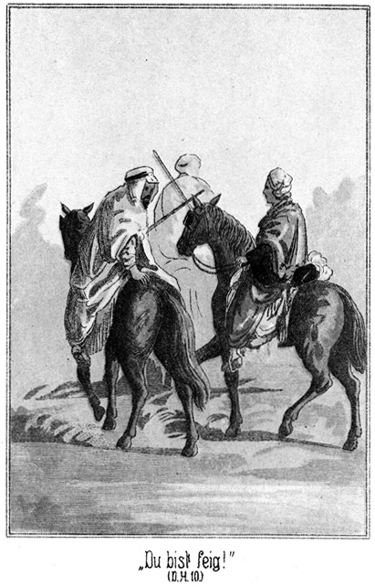»Du bist feig wie der Schakal unter dem Staube der Ruinen! Dein Herz hat kein Blut.«
»Oho! Ich habe Muth! Wer aber kann sich gegen den Donner wehren? Du etwa?«
»Ja. Kennst Du nicht die Gesetze des Propheten?«
»Ich kenne sie.«
»So mußt Du wissen, daß Allah mit der Stimme des Donners an die Thür unseres Herzens klopft, um anzufragen, ob wir rechten Glaubens sind. Der Gläubige kniet bei dem dritten Donnerschlage auf die Erde nieder und betet die einhundertste Sure des Korans, welche ja die »Klopfende« genannt wird. Dann hat Allah seinen Glauben erkannt, und es wird ihn nicht der Strahl des Blitzes treffen.«
»Der Blitz fährt dennoch hin, wo er will! Wenn er mich hier trifft und todt vom Pferde wirft, so hat mir all mein Glaube nichts geholfen. O Allah – Allah!«
Er fuhr erschrocken zusammen, denn ein zweiter Donnerschlag war noch stärker erfolgt als der erste.
»Du bist ein Ungläubiger!« zürnte der Führer. »Die Hyänen werden einst Deinen Leib aus dem Grabe scharren, und Deine Seele wird verdammt sein, in der Hölle Feuer zu fressen und Flammen zu trinken in alle Ewigkeit!«
»Darum werde ich mich hier auf Erden dazuhalten süße Datteln zu essen und Kaffee zu trinken, so lange ich lebe – Schau – da! Welch ein Schlag!«
Es donnerte zum dritten Male. Der Diener beugte den Kopf fast bis auf die vordere Sattellehne herab, als ob er den tödtlichen Blitz über sich hinweggehen lassen wolle. Der Führer aber, fest an den Satzungen und Geboten seines Glaubens haltend, hielt sein Pferd an, stieg ab, kniete so nieder, daß sein Gesicht nach Osten gegen Mekka blickte, und betete laut und ernst:
»Es ist ein einiger Gott, und Muhammed ist sein Prophet! Im Namen des allbarmherzigen Gottes! Der Klopfende! Was ist der Klopfende? An jenem letzten Tage werden die Menschen sein wie umhergestreute Motten, und die Berge wie verschiedenfarbige, gekämmte Wolle. Der nun, dessen Wagschale mit guten Werken schwer beladen sein wird, der wird ein herrliches Leben führen, und Der, dessen Wagschale zu leicht befunden wird, dessen Wohnung wird der Abgrund der Hölle sein. Was lehrt Dich aber begreifen, was der Abgrund der Hölle ist? Er ist das glühendste Feuer!«
Unter dem »Klopfenden« versteht nämlich der Muhammedaner den jüngsten Tag, weil er Herzklopfen verursacht.
Der Beter erhob sich und stieg wieder auf.
Steinbach war halten geblieben, hatte sein Gesicht auch nach Osten gewendet und in stillem Ernste das Gebet des Führers mit angehört. Das gefiel diesem. Er sagte zu dem Diener:
»Siehst Du, daß der Herr die Gebete des Koran's sehr wohl kennt? Ihn wird der Strahl des Blitzes nicht treffen.«
»Aber wohl mich?«
»Ja, denn Du bist ein Schwachgläubiger und thust nicht nach den Befehlen des Propheten!«
Sie hatten ihre Pferde wieder in Bewegung gesetzt. Steinbach wendete sich halb zurück, deutete nach den wolkenumhüllten Höhen und sagte:
»Da oben wird es regnen, hier aber nicht.«
»Wie aber kannst Du das wissen?« fragte der Führer.
»Merkst Du nicht, daß der Wind, welcher sich erhoben hat, nach West geht, also das Wetter von uns forttreiben wird?«
»Ein jedes Gewitter hat seinen eigenen Wind. Da oben geht er anders als hier.«
»Nein, auch so. Die Wolken werden nach Untergang der Sonne getragen. Siehst Du! Wir sind sicher.«
Er wendete sich wieder um. Der Diener nickte befriedigt vor sich hin und sagte leise:
»So wird mich also der Blitz nicht treffen. Aus Freude darüber werde ich einmal trinken.«
Er nahm eine große, in Leder eingenähte Flasche, welche am Sattelknopfe hing, herauf, öffnete sie und that einen langen, langen Zug.
»Hund!« brummte der Führer zornig.
»Wie nennst Du mich? Einen Hund?«
»Ja. Wenn Du Muth hättest, würdest Du mich wegen dieser Beleidigung ermorden!«
»O, ich morde nicht gern! Man begiebt sich dabei in die Gefahr, selbst getödtet zu werden, denn Du würdest Dich doch vertheidigen. Aber wenn ich trinke, bin ich doch noch deswegen kein Hund!«
»Du bist einer, denn was Du trinkest, ist nicht Wasser.«
»Was denn? Hast Du es gesehen?«
»Ich rieche es. Es ist Wein, den Muhammed verboten hat.«
»Es ist nicht Wein, sondern Wasser der Freude, welches man aus den Trauben gepreßt hat.«
»Wasser der Verdammniß!«
»Warum hätte der Herr dieses Wasser mitgenommen, wenn sein Genuß verboten ist?«
»Als Arznei. Weißt Du nicht, daß man den Wein genießen kann, wenn man krank ist? Aber wenig, einen Schluck, und dann muß man dabei die Worte sagen: »O Allah, gieb mir Gesundheit, und entferne den Teufel der Krankheit. Ich will ihn austreiben, denn er hat den Wein nur im Leibe aber nicht ich!« Du aber bist nicht krank und hast diese Flasche bereits fast ausgetrunken. Merkst Du nicht, daß Du im Sattel wankst?«
»Ich? Wanken? Siehst Du nicht, daß ich es nicht bin, sondern daß mein Pferd taumelt! Deine Augen sind mit Blindheit geschlagen, so daß Du das Pferd für den Reiter hältst. Trinke einmal mit! Du bist krank und wirst dann wieder sehend werden!«
»Allah behüte mich!«
»So will ich für Dich trinken, denn die Wohlthat, welche man seinem Nächsten erweist, wird am Tage des Gerichtes zehnfach angerechnet werden.«
Er that abermals einen langen Zug. Er wankte allerdings bereits, wie der Führer ganz richtig gesagt hatte. Er war als Muhammedaner den starken, levantinischen Wein nicht gewohnt und hatte doch, natürlich von seinem Herrn unbemerkt, die große Flasche bereits so weit ausgetrunken, daß sie nur noch wenige Tropfen enthielt. Seine Lider senkten sich müd herab; seine Augen blickten ungewiß unter ihnen hervor, und er rückte fortwährend im Sattel hin und her, als ob er sich nahe am Herunterstürzen befinde.
Die bis jetzt fast leere Steppe zeigte nach und nach einige Büsche. Drüben rechts zogen sich dunkle Streifen am Horizont hin, als ob sich dort ein Wald befinde. Steinbach deutete da hinüber und fragte:
»Ist das dort der Fluß?«
»Ja, Herr. Man nennt ihn Silliama, weil er in dem Thale fließt, welches diesen Namen trägt. Wir aber müssen hier links in die Steppe biegen. Die Medscherda-Araber, zu denen Du willst, haben dort ihre Lagerstätten.«
»Wann werden wir zu ihnen gelangen?«
»Wenn sie das Lager nicht in der letzten Zeit verändert haben, sind wir in zwei Stunden bei ihnen.«
Sie bogen in die angedeutete Richtung ein, und da jetzt Steinbach seinem Pferde die Ferse fühlen ließ und die Beiden dies also auch thun mußten, so setzten sich die Thiere in Galopp, und die Reiter kamen viel rascher vorwärts als vorher.
Die Steppe belebte sich mehr und mehr mit Grün. Die einzelnen Büsche traten zu größeren Gruppen zusammen, ein sicheres Zeichen, daß es hier Wasser gab. Sie erreichten auch ziemlich bald einen Bach, über welchen Steinbachs graue Stute mit großer Leichtigkeit hinweg setzte. Der Führer folgte ihm ebenso leicht. Doch mußten die Beiden anhalten, denn hinter ihnen hatte der Diener einen lauten Ruf des Schreckens ausgestoßen.
»O Allah! Hilfe Hilfe!«
Sein Pferd stand neben demjenigen des Führers; der Sprung war ihm ganz gut gelungen; aber der Reiter war nicht an das andere Ufer gekommen, sondern er saß im Wasser, welches glücklicher Weise nicht tief war.
Wunderbarer Weise regte er sich gar nicht; er blieb ruhig in den Wellen sitzen, obgleich diese ihm bis herauf an das Kinn gingen. Der Führer zuckte verachtungsvoll die Achseln und sagte kein Wort, machte auch keine Miene, ihn aus dem Wasser zu ziehen.
»Was fällt Dir ein!« zürnte Steinbach. »Du hast doch gesagt, daß Du reiten kannst!«
»Ich kann es auch, Herr!« versicherte der Verunglückte.
»Bist aber doch abgefallen!«
»Das Pferd sprang verkehrt!«
»Bist Du beschädigt?«
»Ja.«
»Wo denn?«
»An den Kleidern. Sie sind ganz naß.«
»Das versteht sich ganz von selbst. Ich meine aber, ob Du Etwas gebrochen hast?«
»Ich glaube nicht!«
»So stehe doch auf, und komm heraus!«
»O, Herr, das wage ich nicht.«
»Warum nicht?«
»Hier sitze ich in Sicherheit; aber wenn nun weiterhin das Wasser tiefer wird, so ersaufe ich, und kein Allah und kein Prophet wird mich wieder lebendig machen.«
»Aber ich werde Leben in Dich bringen, und zwar sogleich. Paß einmal auf!«
Steinbach hatte diesen Menschen in Tunis gemiethet, weil ihm das muntere Wesen desselben gefallen hatte. Bald aber war er zu der Ueberzeugung gekommen, daß er sich eine Art von Taugenichts engagirt habe. Er behandelte ihn auch darnach. Er drängte sein Pferd an das Ufer und zog die Nilpferdpeitsche aus der Sattelschlinge.
»Siehe, hier diese wirst Du kosten, wenn Du nicht sofort aus dem Wasser kommst!«
»O Herr, willst Du einen Anhänger des Propheten schlagen!« jammerte der Bedrohte.
»Ja. Eins – zwei – und drei – –!«
Er holte aus, und im Nu schnellte der Diener empor und an das Ufer.
»So! Dieses Mittel scheint probat zu sein!« lachte Steinbach. »Ich werde es nicht vergessen. Steige auf!«
»Herr, erlaube, daß ich mich vorher ausziehe, um meine Kleider auszuringen, sonst ersaufe ich noch im Sattel!«
»Steig nur auf! Das Wasser wird abtropfen, und Dir scheint das Bad und die Abkühlung nothwendig zu sein.«
Der Diener krabbelte sich nothgedrungen wieder auf und der unterbrochene Ritt wurde wieder fortgesetzt.
Da Steinbach auch jetzt voranritt, so fühlte der Durchnäßte sich sicher, nicht bemerkt zu werden. Er hob die Flasche empor und sagte zu dem Führer:
»Jetzt darf ich trinken, denn ich bin krank. Nicht?«
Der Gefragte antwortete nicht.
»Wenn ich nicht trinke, werde ich das Fieber bekommen; dann schüttelt es mich; die Arme und Beine schlottern und die Augen drehen sich im Kopfe rundum wie die Räder eines Wagens, in welchem die Haremsfrauen spazieren fahren. Dann kann ich den Herrn nicht mehr bedienen und bin nichts nütze auf der Welt. Also trinke ich, um das Fieber zu vertreiben und ein brauchbarer Mensch zu bleiben.«
Er machte die Flasche vollends leer. Der Führer brachte es doch über sich, zu fragen:
»Was wirst Du aber sagen, wenn der Herr bemerkt, daß die Flasche leer ist?«
»Sie hat ein Loch, sie ist ausgelaufen.«
»Ja, oben! Halte Dich fest, sonst fällst Du wieder ab!«
Da hielt Steinbach sein Pferd an, deutete in die Höhe und fragte:
»Siehst Du den Punkt da oben? Was ist das?«
Der Führer beschattete seine Augen mit der Hand, suchte den Punkt mit seinem scharfen Auge und antwortete dann:
»Herr, das ist ein Falke.«
»Er scheint näher zu kommen. Ach, ich werde versuchen, ihn mit der Kugel herabzuholen.«
»Nein, das wirst Du nicht!«
»Du meinst, daß ich ihn nicht treffe?«
»Du würdest ihn treffen, denn ich habe heut am Vormittage gesehen, daß Du besser schießest als Alle, welche ich kenne. Aber diesen Vogel darfst Du nicht treffen, denn er ist nicht Dein Eigenthum.«
»Ein Raubthier gehört keinem Menschen!«
»Dieser Falke ist kein Raubthier; er ist nicht frei, er gehört einem Herrn, der ihn dressirt hat.«
»Ah! Meinst Du, daß wir da einer Falkenjagd entgegenreiten?«
»Ganz gewiß. Ein dressirter Falke ist sehr leicht von einem wilden zu unterscheiden. Wir werden Arabern begegnen, welche sich auf einer Gazellenjagd befinden. Der Falke steigt empor; sieht er eine Gazelle, so stößt er auf sie herab, faßt sie mit den Krallen in der Nähe des Kopfes und hackt ihr die Augen aus, so daß sie nicht sieht, wohin sie flieht. Dann wird sie von den Jägern sehr leicht erreicht und getödtet.«
»Eigentlich grausam, aber das muß ich sehen!«
Die Jagdlust war über ihn gekommen. Eine Gazellenjagd mit Hilfe des Falken. Das war ihm ja etwas vollständig Fremdes. Er spornte also sein Pferd und jagte im Galopp davon, die beiden Andern hinter ihm her.
Der Diener hatte alle Mühe, sich im Sattel zu halten. Er ächzte und flüsterte, er wetterte und fluchte. Er wäre wohl zurückgeblieben, aber sein Pferd war gescheidter als er und hielt sich wacker neben demjenigen des Führers.
Jetzt stieg das Terrain ein Wenig an, und dann fiel es wieder sanft ab. Als die Reiter die kleine Höhe erreichten, sahen sie vor sich eine ziemlich weite Ebene, hier und da mit Büschen bewachsen. Weit hinten bewegten sich Reiter zwischen dem Gesträuch; vorn aber erblickten sie zwei riesige Vögel, welche in der Eile des Sturmwindes ihnen entgegenflogen.
»Ah! Zwei Strauße!« rief Steinbach, der noch niemals einen dieser Vögel im Freien gesehen hatte.
Er hatte sein Pferd angehalten; der Führer hielt neben ihm und bestätigte:
»Ja, zwei Strauße! Es ist Mann und Weib.«
»Woher siehst Du das?«
»Das Männchen ist schwarz, das Weibchen aber braun. Die Vögel sind nicht gezähmt, sondern wild. Das sieht man deutlich an den kurzen, abgestoßenen Schwing- und Schwanzfedern. Sie haben uns nicht gesehen. Halte Du Dich rechts, und ich reite links. Wir müssen sie haben.«
Er nahm seine lange Flinte vom Rücken und jagte nach links hinüber. Steinbach griff nach seiner Doppelbüchse und ritt nach rechts. Dort postirte er sich hinter ein Gesträuch, um von den fliehenden Vögeln nicht bemerkt zu werden.
Diese kamen näher, verfolgt von mehreren glatthaarigen Windhunden, hinter denen eine ganze Schaar Beduinen folgten, so schnell deren Pferde vermochten.
Steinbach hob die Büchse empor. Er sah, daß das Straußmännchen grad auf ihn zukam. Der Vogel machte riesige Sprünge. Der Strauß macht mit seinen langen Beinen zwei Ellen lange Schritte; flieht er aber vor einer Gefahr, so haben seine Sprünge eine Länge von vier Ellen und wohl auch noch mehr. Jetzt war das Männchen vielleicht noch hundertfünfzig Fuß von dem Deutschen entfernt. Da ertönte hoch oben in der Luft ein schriller, pfeifender Schrei, und im nächsten Augenblicke stieß der Falke auf das Weibchen nieder.
Er erfaßte es bei dem langen Halse, um den Vogel ganz so zu behandeln, wie er es bei den Gazellen gewohnt war. Hier aber hatte er sich geirrt. Der Strauß besitzt Riesenkräfte, sein Hals ist beweglich wie der Leib einer Schlange, mit seinem starken Fuße kann er einen Menschen, wenn er ihn richtig trifft, erschlagen, und sein Schnabel ist eine Waffe, vor welcher man sich fast noch mehr in Acht zu nehmen hat.
Die Straußin blieb stehen und vertheidigte sich gegen den viel kleineren, aber desto gewandteren Falken. Es war ein so interessanter Kampf, daß Steinbach kaum die Augen davon bringen konnte und vielleicht das Männchen vergessen hätte, wenn ihn nicht das Geräusch auf dasselbe aufmerksam gemacht hätte.
Der Vogel nahte mit einer Geschwindigkeit, welche diejenige des besten Renners übertraf. Die Büsche machten ein sicheres Zielen nicht leicht; aber Steinbachs Pferd stand so still und unbeweglich, daß er gut zu zielen vermochte, obgleich er im Sattel saß. Jetzt befand sich der Vogel zwischen zwei weit auseinander stehenden Büschen. In der nächsten Minute mußte er verschwunden sein. Erreichte er das nächste Gebüsch, so war er dann nicht mehr zu sehen. Steinbach hielt auf die Stelle, wo der Hals aus dem Körper tritt, eine bessere wußte er nicht, da er noch nie auf so ein Thier geschossen hatte. Er drückte ab; der Vogel machte eine blitzschnelle Seitenwendung, ließ den hoch erhobenen Hals fallen, hielt im Laufe inne, taumelte kurz hin und her und stürzte dann nieder.
Der Schütze ritt schnell hin. Er hatte sehr gut getroffen. Jedenfalls war einer der Wirbel getroffen worden. Der Vogel war todt.
Nun wandte Steinbach sich dem andern zu. Da hatte er ein höchst interessantes Schauspiel vor sich. Der Falke hatte den Strauß fahren lassen, sich erhoben, und war dann zum zweiten Male herabgestoßen, um ihn weiter oben, hart am Kopfe zu fassen. Das war ihm gelungen. Hier war er vor den Hieben des gewaltigen Schnabels sicher und versuchte, dem Strauße mit dem seinigen eine Wunde beizubringen. Aber das wollte nicht gelingen. Die Straußin warf den Kopf so schnell nach allen Richtungen, daß der Falke seinen Schnabel gar nicht gebrauchen konnte, sich nur festhalten mußte, um nicht abgeschleudert zu werden. Dabei machte der riesige Vogel die abenteuerlichsten Sprünge, vor- und rückwärts, zur Seite, und zwar so schnell, daß man kaum mit dem Auge folgen konnte.
Der Führer war von seinem Pferde gestiegen und stand mit erhobener Flinte gar nicht weit von dem Schauplatze dieses Kampfes. Aber er getraute sich nicht, zu schießen; er hatte kein festes Ziel und befürchtete, den Falken zu treffen. Steinbach war ein besserer Schütze. Auch er sprang ab und legte an. Sein Schuß krachte. Der Strauß machte einen ungeheuren Luftsprung und stürzte nieder. Der Falke war bei dem Knalle der Büchse nicht scheu geworden; er wußte, daß er ihm nicht gelte. Er hielt sich an dem Halse des Erlegten fest und hackte unausgesetzt und wüthend nach dem Kopfe, welcher sich nun nicht mehr zu wehren vermochte.
»Das war ein kühner und guter Schuß, Herr!« rief der Führer. »Ich hätte dieses Weib des Straußes nicht erlegt. Wo aber ist der Mann?«
»Da drüben liegt er. Ah, sie sind da!«
Er hatte sich bei seiner Antwort nach dem zuerst erlegten Vogel gewendet. Dort hielten mehrere Reiter, in die weiten, weißen Beduinenmäntel gehüllt. Sie kamen jetzt herbei. Andere nahten von den Seiten her. Es zeigte sich, daß die Beduinen in Verfolgung ihres Wildes einen weiten Halbkreis gebildet hatten, welcher sich jetzt hier eng zusammenzog.
An ihrer Spitze ritt ein langer, starker, sonnverbrannter Araber. Er trug kein sich auszeichnendes Gewand. Um seine Hüfte lag ein einfacher Kameelstrick, und ebenso einfache Schnuren, aus Dattelfaser gedreht, waren auch um seinen riesigen Turban gewunden. Aber die Flinte in seiner Hand zeigte eine ausgezeichnet ausgelegte Arbeit, und die Schimmelstute, welche er ritt, war von der reinsten Rasse. Dieser Mann war trotz seiner einfachen Kleidung sicherlich reich.
Er hielt seinen Schimmel vor Steinbach an, betrachtete ihn mit finster blickenden Augen und fragte:
»Wer bist Du?«
»Ein Fremder.«
»Das sehe ich. Wärst Du nicht ein Fremder, würde ich Dich kennen. Wie lautet Dein Name?«
Steinbach hatte keine Lust, sich in dieser Art und Weise ausfragen zu lassen. Er hatte die sehr richtige Ansicht, daß die erste Begegnung entscheidend ist, ob ein Fremder von diesen Halbwilden geachtet ist oder nicht; darum antwortete er sehr ruhig:
»Noch kenne ich den Deinigen nicht!«
»Allah hat Dir den Verstand genommen! Du meinst, daß ich Dir meinen Namen sagen müsse, um den Deinigen zu erfahren?«
»Ja, das meine ich!«
»Wer bist Du, daß Du das zu sagen wagst! Wisse, daß ich der Herr und Gebieter dieses Bodens bin, Herr über Tod und Leben, auch über das Deinige!«
»Du irrst! Mein Leben gehört Allah und mir. Er hat es mir gegeben, und ich werde es mir zu erhalten wissen, bis er es von mir fordert.«
Die Beduinen hatten einen weiten Kreis geschlossen. Sie waren neugierig, wie diese Unterredung enden werde. Ihre Augen waren mit Begierde auf die Waffen Steinbach's gerichtet. Der Wüstenbewohner ist ein geborener Räuber, und nur der ist bei ihm sicher, welcher es verstanden hat, seinen Schutz und seine Gastfreundschaft zu erlangen.
»Du sprichst sehr stolz,« fuhr der Araber zornig fort. »Ich habe es nicht nöthig, mich mit Dir zu streiten. Hier ist Einer, den ich kenne. Der wird mir antworten müssen.«
Er wendete sich an den Führer, der zwar nicht in knechtisch demüthiger, aber in höflicher Haltung vor ihm stand:
»Wer ist dieser Mann?«
»Ich weiß es nicht.«
»Aber Du bist bei ihm! Bist Du sein Führer?«
»Ja.«
»Und kennst ihn nicht?«
»Er bezahlt mich und ich führe ihn. Was geht mich sein Name an! Frage ihn selbst!«
»Wohin sollst Du ihn bringen?«
»Wie? Er hat nach mir verlangt? Nach dem Scheik der Krieger vom Stamme der Medscherdah?«
»Ja.«
Als Steinbach das hörte, sagte er:
»Wenn Du der Scheik der Medscherdah bist, so bin ich bereit, Dir zu antworten.«
»Du hattest mir schon vorher zu antworten!«
»Nein. Ich befand mich vor Dir hier an diesem Platze, und wer an einen Ort kommt, an welchem sich bereits Andere befinden, der hat den Gruß zu sagen. Du aber grüßtest nicht. Wie kann ich Dir da antworten.«
»Du sprichst so stolz, als seist Du auch ein Scheik!«
»Das bin ich auch!«
»Das bezweifle ich! Wärst Du ein Scheik der Beduinen, so würdest Du die Gesetze der Stämme, des Bodens und der Jagd kennen. Wir haben diese Vögel aufgestört; wir haben sie verfolgt; sie gehören uns; Du aber hast sie uns weggenommen.«
»Du irrst. Ich habe sie nicht weggenommen; ich habe sie nur getödtet. Sie sind Dein.«
»Wie?« fragte der Scheik erstaunt. »Du willst sie an mich abtreten?«
»Ja.«
»Und hast sie doch erlegt!«
»Ich brauche ihre Federn nicht. Du bist der Herr dieses Bodens; was sich darauf befindet, ist Dein Eigenthum, dieses Wild also auch.«
»Allah! Das hat noch niemals Einer gethan! Du mußt aus einer fernen Gegend kommen!«
»Das ist richtig. Ich komme sehr weit her.«
»Und zu mir! Was willst Du bei mir?«
»Ich will nicht eigentlich zu Dir, sondern zu einem Andern, von welchem ich hörte, daß er jetzt Dein Gast sei.«
»Wen meinst Du?«
»Krüger Bei, den Hauptmann der Leibgarde des Muhammed es Sadak Bei von Tunis. Befindet er sich bei Dir?«
»Ja. Hier ist er.«
Er deutete auf einen Reiter, welcher sich bisher seitwärts gehalten hatte. Dieser Mann war von kurzer, starker Gestalt. Sein Gesicht war hochroth wie das eines professionirten Weintrinkers, trug aber eine ganz außerordentliche Gutmüthigkeit zur Schau. Er saß auf einem Vollblutrappen und hatte auch den weißen Beduinenmantel überhängen; aber unter demselben, da, wo er vorn geöffnet war, glänzten dicke, goldene Uniformschnüre hervor. Er dirigirte sein Pferd jetzt an die Seite des Scheiks heran und sagte zu Steinbach:
»Hier bin ich, der Oberste der Heerschaaren des Herrn und Gebieters von Tunis. Wer bist Du?«
»Erlaube, daß ich Dir dies allein sage!«
»Nein, das erlaube ich nicht. Weißt Du, was der Kommandeur der Leibwache zu bedeuten hat?«
»Ja. Er beschützt das Leben des Beherrschers. Er ist der Nächste nach dem Pascha selbst.«
»So hast Du mir also zu antworten. Du bist hier fremd; Du tödtest unser Wild, ohne uns zu fragen. Es giebt hier in der Steppe gar Viele, welche als Räuber und Diebe umherziehen und, wenn man sie trifft, so unschuldig thun, als ob sie Brüder und Neffen des Propheten seien.«
»Sehe ich wie ein Räuber aus?«
»Es giebt keine bestimmte Kleidung, an welcher man den Räuber erkennt, und – Allah akbar! Was thut dieses Pferd hier?«
Er erblickte nämlich in diesem Augenblicke die Stute Steinbach's, welche dieser hinter dem Busche stehen gelassen hatte. Der Deutsche antwortete:
»Es ist das meinige.«
»Das Deinige? O Muhammed! O ihr heiligen Kalifen! So bist Du also doch ein Räuber! Haltet ihn fest, laßt ihn nicht fort von hier!«
Diese Aufforderung war an die Beduinen gerichtet, welche den Kreis sofort enger zogen. Steinbach aber zeigte keine Besorgniß. Er fragte lächelnd:
»Warum hältst Du mich für einen Räuber?«
»Du hast dieses Pferd geraubt!«
»Ah! Beweise es!«
»Beweise es, daß es Dir gehört! Hast Du es gekauft?«
»Nein.«
»Siehst Du! Hast Du es etwa geschenkt erhalten?«
»Nein.«
»Siehst Du! So ein Pferd wird weder verkauft noch verschenkt. Wie hast Du es denn erhalten?«
»Ich habe es mir geborgt.«
»Das ist eine Lüge! Derjenige, dem dieses Pferd gehört, verborgt keines seiner Thiere. Diese Stute ist die allbekannte Sindschaba des Beherrschers von Tunis. Ich muß sie kennen. Willst Du es leugnen?«
Sindschaba heißt die Graue.
»Nein, ich leugne es nicht. Es ist die Stute des Pascha.«
»So kannst Du nicht anders als durch Diebstahl in ihren Besitz gelangt sein!«
»Ich will Dir diese Worte verzeihen, o Anführer der Leibschaaren! Wenn Du nachdenken wolltest, so würdest Du höflich vom Pferde steigen, um mich zu begrüßen, denn Derjenige, welchem der Pascha ein Pferd borgt, muß ein Mann sein, welcher es nicht gewohnt ist, daß man ihm das Zeichen der Ehrerbietung verweigert.«
Der Oberst machte ein eigenthümliches Gesicht. Er überlegte, daß es wohl nicht leicht sei, ein Pferd aus dem Marstalle des Bei zu stehlen. Das Auftreten Steinbach's war so sicher. Vielleicht war das Pferd doch geborgt! In diesem Falle aber war der Reiter ganz sicher ein hervorragender Mann, und es war ein sehr großer Fehler gewesen, ihn so unhöflich zu behandeln. Unter diesen Gedanken bekamen die gerötheten Züge des Obersten einen sichtlichen Anflug von Verlegenheit. Es fiel ihm gar nichts ein, was er eigentlich in diesem Augenblicke sagen solle.
Dieser tapfere Oberst der Leibwache war von Geburt ein Deutscher. Er stammte aus der Mark Brandenburg und hatte als Brauergeselle die Heimath verlassen, um sein Glück in der Fremde zu suchen. Er hatte es gefunden.
Nach vielen Kreuz- und Querfahrten war er nach Tunis gekommen, und hatte sich anwerben lassen. Von Haus aus recht gut begabt, furchtlos und tapfer, war er nach und nach immer höher gestiegen und zuletzt Commandant der Leibschaaren geworden. Natürlich hatte er sich da zum Islam bekennen müssen, war aber im Herzen doch ein Christ und dazu ein guter, ehrlicher Deutscher geblieben.
Im Lande eine allbekannte und überall beliebte Persönlichkeit, wurde er besonders von den Fremden um einer Eigenthümlichkeit willen gern aufgesucht, welche ihn geradezu zum Original stempelte. Diese Eigenthümlichkeit war nämlich seine Art, sich im Deutschen auszudrücken.
Das Türkische und Arabische war ihm vollständig zu Eigen und geläufig geworden. Er sprach Beides genau so wie ein Eingeborener. Anders aber war es mit seiner Muttersprache. Von Schulbildung war bei ihm keine Rede gewesen. Er hatte sein Deutsch so gesprochen, wie es ein Brauerknecht und ein echter Brandenburger spricht, im dortigen Dialekt. Später hatte er lange Jahre keine Gelegenheit gehabt, sich im Deutschen auf dem Standpunkt zu erhalten; er hatte seine Muttersprache zu drei Viertheilen vergessen. Was ihm noch übrig geblieben war, das gebrauchte er nach den Regeln der türkischen und arabischen Sprache, und so entstand eine Ausdrucksweise, welche geradezu unbeschreiblich war.
Dazu kam, daß er sehr gern sprach. Nichts machte ihm größere Freude, als wenn ihn einmal ein Deutscher besuchte. Dann that er sich eine förmliche Güte und machte mit dem ernstesten Gesichte solche curiose Sprachfehler, daß der Zuhörer alle Selbstbeherrschung anwenden mußte, um sich vor Lachen nicht auszuschütten. Arabisch und Türkisch aber sprach er in derselben blumen- und bilderreichen Sprache wie die Eingeborenen. Und da er dieselben Blumen und Bilder auch im Deutschen brachte, wohin sie gar nicht paßten, so steigerte sich das Lächerliche um so höher, je schöner er zu sprechen glaubte.
Jetzt nickte er leise vor sich hin, betrachtete Steinbach noch einmal genauer und sagte dann:
»Wenn Du mir doch nur Deinen Namen nennen wolltest!«
»Nun, wenn Du es denn verlangst, so will ich ihn Dir sagen. Mein Paß lautet auf den Namen Steinbach Pascha.«
»Steinbach Pascha!« wiederholte der Oberst überrascht.
»Ja; ich heiße Oskar Steinbach Pascha.«
»Das ist ja ein deutscher Name!«
»Allerdings.«
»Bist Du denn vielleicht in Deutschland geboren?«
»Nicht nur dort geboren. Ich bin noch heut ein Deutscher.«
Bis jetzt war das Gespräch in arabischer Sprache geführt worden. Bei den letzten Worten Steinbach's aber sprang der Oberst schnell aus dem Sattel und rief:
»Dunderwetter! Ihnen sind ein Deutscher?«
»Ja, Herr Oberst.«
»Von woher denne und aus welcherlei Jejend denne, wenn mir Ihnen fragen darf?«
»Nun, ich habe in mehreren Provinzen Besitzungen; ich will aber sagen, aus dem Brandenburgischen.«
»Aus das Brandenburgische? Herrjesses, wat das vor eene Ueberraschelung jewesen und jehabt zu haben werden jekonnt dürfen wird! Wer hätte so Einwas jedenken jedacht! Und Ihnen wollen hier zu mich?«
»Gewiß, wenn Sie erlauben!«
»Ob ik mich es erlaube! Na und ob und inwiefern! Ik jebe Sie jetzt meinen Hände und heiße Ihnen ein Willkommen entjejen mit lauter Pauken und Trompeten! Jetzt ist Allens jut, Allens, Allens!«
Er schüttelte Steinbach beide Hände mit solcher Gewalt, als ob er ihm beide Arme aus dem Leibe reißen wolle.
»Nun,« fragte dieser lachend. »Halten Sie mich auch jetzt noch für einen Pferdedieb?«
»Jetzt noch in das jejenwärtigen Augenblick? Wat denken Ihnen! Wenn Ihnen ein Deutscher sind, dann hat es ja gar nicht möglich, Sie ein Pferdediebstahl zuzumuthen mit Verdächtigkeit an den Hals zu werfen jesonnen sein jeirrt haben zu können! Ein Deutscher maust nie nich einen solchen Diebstahl. Wir Deutschen sind ehrliches Leuten! Na, haben Ihnen jetzt ein Weniges Jeduld! Ich werde hier denjenigem Scheik mitzutheilen jenügen, wat vor einen freudigen Augenblicker man sonst zuweilen wie jerade jetzt in das Leben einjeschlagen werden muß!«
Er wendete sich an den Scheik und stellte Steinbach demselben als einen hohen Herrn vor, den er von diesem Augenblicke an zu seinen besten Freunden zu zählen habe. Das veränderte augenblicklich die ganze Situation. Die Gesichter der Beduinen wurden freundlicher. Der Scheik streckte dem Deutschen die Hand entgegen und sagte:
»Das konnte ich nicht wissen. Sei mir willkommen! Wenn wir im Lager angekommen sind, wirst Du Salz und Brot mit mir essen und den Becher mit mir theilen. Deine Freunde sind auch meine Freunde und Deine Feinde auch die meinigen!«
Einer der Beduinen hatte den Falken bereits wieder an sich genommen und ihm die lederne Kappe über den Kopf gezogen. Die beiden erlegten Sträuße wurden von zwei Anderen über den Sattel gelegt, und dann ging es weiter, dem Lager entgegen; die Araber in stürmischem Galopp, auch Steinbach 's Führer mit sich fortreißend, der Deutsche selbst aber mit Krüger Bei langsam hinterdrein.
»So!« sagte der Letztere. »Jetzt sind uns allein und wir können mit einanders reden, ohne daß wir jestört zu werden die Absicht jebrauchen dürfen. Also aus dem Brandenburg. Wat vor ein Medjeh haben Ihnen denn da eijentlich jelernt, he?«
»Ich weiß nicht, was Sie sich unter diesem Worte denken, Herr Oberst.«
»Medjeh? Nun, Medjeh hat janz denselbigen Jedanken wie Beruf und Handwerk erlernt zu haben von wegen sich zu ernähren.«
»Ach so! Nun, ein Handwerk habe ich eigentlich nicht. Ich treibe nichts als ein Bischen Politik.«
»Politik! Ah! Is dat wahr?«
Er betrachtete Steinbach mit einem ganz besonderen Blicke.
»Ja,« nickte dieser bestätigend.
»Sind Ihnen dem Teufels!«
»Meinen Sie, daß die Diplomaten zum Teufel gehören?«
»Diplomat? Ah, dat is einwas Anderem!«
»Ach so! Sie unterscheiden die Diplomaten von Denjenigen, welche Politik treiben?«
»Janz natürlich!«
»Dürfte ich Sie um den Unterschied bitten?«
»Diesem Unterschied jiebt es sehr einfach. Wer Politik mit Glück anzufangen jewußt haben darf, dem heiße ik ein Diplomat. Wer dem Politik aber nie nicht jerathen thut, dem bleibt Politiker.«
»Richtig! Sehr geistreich! Ich gestehe aufrichtig, daß ich auf diese feine Unterscheidung niemals gekommen wäre!«
»Ja, hier hat es ihm!«
Er deutete dabei nach seiner Stirn und fuhr dann fort:
»Jetzt aber stellen Ihnen mir vor. Haben Ihnen vielleicht Kinder?«
»Nein.«
»Aber eine Frau hat Ihnen?«
»Auch nicht.«
»So sind Ihnen unverheirathet jesonnen?«
»Ich bin auch noch unverehelicht. Aber damit Sie nicht erst nach Allem zu fragen brauchen, will ich mich Ihnen gleich lieber kurz und bündig auf diese Weise vorstellen.«
Er zog eine Brieftasche hervor, entnahm derselben einen mehrfach mit Siegeln und Stempeln versehenen Bogen und reichte ihm denselben hin. Krüger Pascha las während des Reitens. Sein volles, ehrliches Gesicht wurde lang und immer länger. Endlich faltete er das Papier zusammen, gab es mit der Linken zurück und hielt die Rechte an den Turban, so wie ein abendländischer Soldat einem Vorgesetzten das Honneur zu machen pflegt.
»Empfehle mir!« sagte er ehrerbietig.
»O bitte, Herr Oberst!«
»Was?«
»Hat dies möglich?«
»Wie Sie sehen!«
»Ihnen sind ein Fürst, einer Durchlaucht?«
»Ist Ihnen das unangenehm?«
»Nein; aber warum nennen Ihnen sich Steinbach?«
»Incognito.«
»Ah! Schön! Ich verstehen diesen Art und Weisen, um zu nicht erfahren, von welchem Verhältnissen diejenigen Menschen des Namens wejen vielerlei Entdeckungen zu machen erlaubt jewesen ist. Ik jebe Sie den Versicherung, daß Ihr Geheimniß über meinen Busen in keiner Sprache nach der Oeffentlichkeit hinüberjeredet in lautem Tone verschwiegen werden muß. So, sind Ihnen einverstanden?«
»Ja. Ich komme nach Tunis, um Muhammed es Sadak Pascha einige wichtige Vorschläge zu unterbreiten. Ich habe mich ihm bereits vorgestellt und, wie ich glaube, sein Vertrauen erworben. Es schien mir aber vor allen Dingen auch nöthig zu sein, mit Ihnen zu sprechen, und da ich hörte, daß Sie sich hierher begeben hatten, so habe ich den interessanten Ritt unternommen, um Sie eher begrüßen zu können, als es mir möglich gewesen wäre, wenn ich Ihre Rückkehr erwartet hätte.«
»Sehr jut! Sehr schön! Sehr lieblich! Danke, bitte! Hat man Sie jesagt, welchem Grund ich hier zu finden jeneigt jewesen habe?«
»Ich hörte, daß Sie einige Pferde für den Marstall des Bei kaufen wollen.«
»Dat ist den Richtigkeit. Aber ik habe noch einigem Anderes. Ik kaufe mich einer Frau.«
»Verstehe ich Sie recht? Sie wollen sich eine Frau kaufen?«
»Ja.«
»Hier, bei diesen Leuten?«
»Hier, ja.«
»Ich denke, daß ein Beduinenmädchen niemals verkauft werden kann!«
»Eigentlich nie nicht. Aber es hat hier dem Verhältniß, daß dat Jelegentliche sowohl jenügend als auch passend herumzudrehen jeeignet sein dürfte. Es hat einen Gast hier vom Stamme der Tuareg. Die Tuareg's verkaufen zuweilen ihrem Weibern und Mädchen. Er hat zwei Mädchen, von die eine Einzige dem Anjesichte wie ein Engel den Bild und Spiegel hat.«
»Ach so! Sie haben hier ein schönes Mädchen gesehen und sind dabei auf den Gedanken gekommen, es für sich zu kaufen.«
»Ja, für meinen Harem.«
»Ist dieser Harem stark?«
»Stark? Die Eine ist stark, die Aelteste, viel stärker noch als mich. Den Anderen sind schlank.«
»Sie sind also ein richtiger Muhammedaner!«
»Ja, natürlich! Oder meinen Sie unnatürlich? Ist es nicht ejal, ob wir sagen Allah oder ob man lautet auf Gott und den heiligen drei Königen! Lassen Sie Ihnen und mir davon schweigen! Hat die Religion dem Herzen, so sind die Aeußerlichkeiten keinem Werth und Bedeutung. Schau! Hier sieht es dem Lager!«
Er hatte Recht, obgleich er sich so sehr falsch ausdrückte. Von da aus, wo sie jetzt hielten, hatte man einen vollen Ueberblick auf das Lager des Beduinenstammes. Es bildete eine lange Doppelreihe von Zelten. Außerhalb dieser Zelte weideten die Herden, auf der einen Seite die Pferde und wenigen Rinder, und auf der andern die Kameele und zahlreichen Schafe.
Die Pferde, besonders diejenigen besserer Rasse, haben einen unüberwindlichen Widerwillen gegen die Kameele, deren Ausdünstung sie nicht vertragen können. Muß man nun bei Wanderungen diese beiden Thierarten eng bei einander haben, so trennt man sie doch dann auf der Weide; das Pferd würde sonst nicht gedeihen.
Als die beiden Reiter sich den Zelten näherten, hatten sich alle männlichen Bewohner des Lagers auf die Pferde geworfen und kamen ihnen schießend und schreiend entgegengesprengt, um Steinbach, den neuen Gast, zu begrüßen. Und dann, als sie die Gasse hinaufritten, um sich nach dem Zelte des Scheiks zu begeben, standen zahlreiche Frauen und Mädchen vor den Thüren, um den unbekannten Ankömmling sich zu betrachten.
Ein einziger Mann nur schien es vermieden zu haben, dem neuen Ankömmling entgegen zu reiten. Er stand in reservirter Haltung vor einem der Zelte und betrachtete mit finsterm Blicke bereits von Weitem scharf den Deutschen, welcher mit dem Scheik und dem Obersten an der Spitze ritt. Es sprach sich in seinem Gesichte eine gewisse Besorgniß aus.
Sein Gesicht zeigte den Typus des Arabers mit demjenigen des Negers vermischt. Die Nase war eine fast kaukasische, aber die stark aufgeworfenen Lippen und die hervortretenden Backenknochen waren ein sicherer Beweis, daß das Blut der schwarzen Rasse in seinen Adern rolle. Und schwarz, in ein häßliches Grau hinüberspielend war die Farbe seines Gesichts. Es war der Tuareg, welcher von dem Obersten erwähnt worden war. Diese Tuaregs wohnen in der eigentlichen Wüste, zwischen den Arabern und Negern und tragen häufig die Eigenthümlichkeiten Beider zur Schau.
Er war nur mit einem tief herab reichenden, sehr schmutzigen Hemde bekleidet, aus dessen weiten Aermeln seine dunklen, sehnigen Arme hervorschauten. In der Rechten hielt er, gleich einem Spazierstocke, die fürchterliche Wurflanze der Tuaregs, und an jedem seiner Handgelenke war mittelst einer Kette ein scharfes, zweischneidiges Messer befestigt. Der Tuareg umarmt im Kampfe seinen Feind und stößt ihm diese beiden Messer von hinten in die Lunge.
*
Eben als Steinbach herangekommen war, wendete sich dieser Tuareg schnell um. Er hatte ein Geräusch gehört. Der Vorhang des Zeltes war geöffnet worden, ein Mädchen trat heraus, den Gast zu sehen.
»Was fällt Dir ein!« brüllte er sie zornig an. »Schnell hinein, sonst, bei allen Teufeln der Hölle, steche ich Dir das Messer in den Leib!«
Sie fuhr erschrocken zurück und verschwand augenblicklich. Der Tuareg biß die Zähne grimmig zusammen. Er sah ganz so aus, als ob er dem kleinen Vergehen eine schwere Strafe folgen lassen wolle.
Aber Steinbach hatte die eigenartig schöne Gestalt doch vollständig gesehen. Welch ein wunderbares Gesicht war das gewesen! Wunderbar in seiner Zeichnung und schwer zu erforschen in seinem Ausdrucke. Sie war unverschleiert gewesen. Während die in den Städten wohnenden Maurinnen ihr Gesicht stets verhüllen, nehmen die Töchter der frei umherziehenden Beduinen es damit nicht so genau. Sie wissen, daß sie sich sehen lassen können und sind auch zu stolz, um durch das stetige Verschleiern indircet einzugestehen, daß irgend eine Herzensgefahr ihnen drohen könne, wenn sie ihre Züge zeigen.
Diese junge Wüstenbewohnerin, welche so rasch wieder hatte verschwinden müssen, war von hoher, trotz ihrer Jugend, bereits üppiger Gestalt, während sonst die Beduinenmädchen schlanken, zierlichen Gliederbau besitzen. Ihre schönen Formen waren unter der leichten, dünnen Hülle sehr deutlich zu bemerken gewesen, da sie nur eine aus feinstem Stoffe gefertigte Hose und ein eben solches Jäckchen trug, welches über der Brust weit auseinander ging und das schleierartige, fast durchsichtige Leibhemde sehen ließ. Da das Jäckchen keine Aermel hatte, so waren die langen, weiten Aermel des Leibhemdes zu sehen. Vorn bis über die Ellbogen aufgeschnitten, fielen sie hinten lang herab und aus ihnen traten zwei fast schneeweiß leuchtende Arme hervor, deren prächtige Rundung ganz geeignet war, selbst den Blick eines Mannes zu fesseln, der sonst für Frauenschönheit nicht zu schwärmen pflegte. Und hell, weiß wie ihre Arme war auch die Farbe ihres Gesichtes gewesen, in der Wüste eine große Seltenheit.
Wären ihre Züge nicht echt orientalische gewesen, so hätte man sie dieser blendenden Weiße wegen für eine nordische Europäerin halten können. Jedenfalls hatte diese bezaubernde Araberin es niemals nöthig gehabt, sich wegen irgend einer Beschäftigung den Strahlen der Sonne auszusetzen. Es ließ ja ihre Hautfarbe auf eine hohe vornehme Abkunft schließen, da diese seltene Ausnahme niemals bei einem gewöhnlichen Weibe wahrzunehmen ist.
Ihre großen, dunklen Augen waren von einer sammetartigen Weichheit gewesen und hatten auf Steinbach wie in inniger Bitte geruht. Die Zöpfe ihres nachtdunklen Haares hingen lang und stark bis fast zur Erde herab und waren mit eingeflochtenen Gold- und Silberstücken, Korallen und polirten Löwenzähnen geschmückt. Diese letztere Art des Schmuckes ließ errathen, daß die männlichen Angehörigen ihrer Familie tapfere und unerschrockene Krieger und Jäger seien und ihre Tochter oder Schwester sehr lieb gehabt hatten, da sie ihr sonst diese Siegeszeichen der gefährlichen Löwenkämpfe gewiß nicht zu diesem so wenig kriegerischen Zwecke geschenkt hätten.
Als sie in das Zelt trat, wendete sie sich an die zweite Bewohnerin desselben, indem sie fragte:
»Hast Du es gehört?«
»Ja, er zürnte.«
Die, welche antwortete, war alt, eine echte hagere, scharfäugige und krummnäsige Beduinin, deren Gesicht von unzähligen Falten und Fältchen durchzogen war. Doch hatte dieses Gesicht nicht etwa einen abstoßenden Ausdruck, sondern grad jetzt, als sie mit dem schönen Mädchen sprach, sprach aus den Zügen rührendste Liebe und innigstes Mitleid.
»Sie Alle dürfen hinaus, nur ich soll nicht!« fuhr die Schöne fort.
»Er fürchtet sich, daß Du von Einem gesehen werdest, der auf den Gedanken kommen könnte, Dich zu retten.«
»Und ich sehne mich und schmachte nach einem solchen Retter!«
»Laß uns recht heiß zu Allah bitten, meine arme Hiluja; er ist barmherzig und wird uns seine Hilfe senden.«
»Beten wir nicht bereits? Immerfort, Tag und Nacht?«
»Der Prophet sagt, daß man nicht aufhören soll in der Bitte, dann werde der Wunsch erfüllt.«
»So mag er sehr schnell erfüllt werden, denn bereits morgen kann es zu spät sein.«
»Warum morgen?«
»Weil wir vielleicht morgen bereits hier fortreiten. Wir sind hier in der Nähe von Tunis, wo eher als anderswo Aussicht auf Hilfe ist. Später entfernen wir uns weit und immer weiter.«
»Wohin wird er uns bringen?«
»Ich weiß es nicht genau, aber ich habe von der Frau des Scheiks erfahren, daß er an das Meer will, nicht nach der Hauptstadt, sondern nach einem anderen Orte. Dort will er uns für sehr viel Geld verkaufen.«
»O Allah!« rief die Alte erschrocken.
»Ja, das ist gewiß. Mich, die Tochter des berühmtesten Herrschers der Sahara, die Schwester der Königin der Wüste, verkaufen, elend verkaufen, wie man eine Schwarze, eine Sklavin verschachert! O, wäre ich ein Mann!«
»Was würdest Du thun?«
»Ich würde mich befreien und diesen Mörder tödten!«
Sie ballte die kleinen Händchen und drohte damit nach der Thür hin, vor welcher der Tuareg gestanden hatte. Die Alte trat näher an sie heran und fragte in flüsterndem Tone:
»Kann ein Weib nicht auch handeln?«
»Ja, sie kann es, aber ohne Erfolg.«
»O, können wir ihn nicht auch tödten?«
»Ich könnte es!«
»Und ich auch!« fügte die Alte hinzu, indem ihre Augen unternehmungslustig funkelten. »Und ich werde es thun; ich werde ihm seine eigene Lanze in den Leib stoßen, um Dich zu retten, Du schönste und beste der Töchter!«
»Ich weiß, daß Du muthig bist; aber wir dürfen es nicht thun.«
»Warum nicht? Ist er nicht unser Feind? Hat er uns nicht geraubt und dabei die Unserigen getödtet?«
»Das ist er und das hat er. Aber was willst Du thun, nachdem Du ihn getödtest hast?«
»Fliehen.«
»Wohin?«
»Zu unserem Stamme zurück oder zur Königin der Wüste, zu welcher wir ja wollten, um sie zu besuchen.«
»Hast Du Pferde und Kameele, Proviant und Wasser? Ist Dir die Richtung und der Pfad bekannt? Der Tuareg ist hier der Gastfreund des Scheiks. Tödten wir ihn, so ist der Scheik gezwungen, ihn zu rächen. Er muß uns dann tödten, obgleich wir Frauen sind.«
»Allah sei uns gnädig! Wie aber soll uns geholfen werden, wenn nicht in dieser Weise?«
»Ich habe in letzter Nacht so bitter geweint und so flehend gebeten, daß Allah uns einen Retter senden möge. Ich schlief während des Weinens und Betens ein, und da träumte ich, daß ich von einer großen Hyäne überfallen und niedergerissen worden sei. Eben öffnete sie den Rachen, um mich zu zerfleischen, da nahte ein schöner, großer, stolzer Mann, der sie mit einem einzigen Griff am Halse erwürgte und dann an den Felsen schleuderte und zerschmetterte. Seine Gestalt war die eines Helden; seine Augen leuchteten wie Sterne, aber seine Stimme war mild und freundlich wie diejenige eines liebenden Weibes. Ich wollte thun, was ich noch nie gethan habe und was mir nur im Traume in den Sinn kommen konnte: ich wollte ihn umarmen und seine Lippen küssen, um ihm zu danken, da aber erwachte ich.«
»O weh! Warum bist Du erwacht, bevor Du ihn gefragt hast, wer er sei! Hat er Dir seinen Namen genannt?«
»Nein.«
»Diesen Traum hat Allah Dir als Antwort auf Dein Gebet gesandt. Hättest Du doch den Namen erfahren. Dieser Retter wohnt ganz gewiß hier in der Nähe.«
»Ja, er wohnt da.«
»Wie? Was? Das weißt Du?« fragte die Alte schnell.
»Ja, ich weiß es.«
»Und hast ihn doch nicht im Traume gefragt!«
»Ich habe ihn heut gesehen.«
»Allah ist groß; er kann möglich machen, was unmöglich ist! Wie willst Du den Retter gesehen haben?«
»Eben jetzt. Es ist der neue Gast, welcher vorüberritt.«
»O Ihr Geister, o Ihr Heiligen! Hast Du ihn erkannt?«
»Ja. Er ist so hoch, so schön und stolz wie der Held meines Traumes; auch die Augen sind dieselben. Sie glänzten wie Sterne, als er den Blick auf mich richtete.«
»Nein. Allah sendet ihn!«
»Dir hat von einem Helden geträumt; Du hast einen Mann von hoher Gestalt gesehen, und nun glaubst Du, daß er ganz genau Dein im Traume erschienener Retter sei.«
»Vielleicht hast Du Recht,« antwortete Hiluja nachdenklich. »Aber ich will dennoch bei meinem glücklichen Glauben bleiben. Dieser Fremde hatte nicht nur die Gestalt eines Helden, sondern das Gesicht eines edlen Mannes. Er wird uns helfen, wenn er es vermag. Vermag er es nicht, so wird er uns wenigstens nicht verrathen.«
»Ich habe ihn nicht erblickt, stimme Dir aber bei. Wenn wir Rettung finden wollen, müssen wir Etwas thun. Wie aber, o Hiluja, machen wir ihn auf uns aufmerksam?«
Hiluja heißt »die Süße«, gewiß ein Name, welcher eher als jeder andere auf die schöne Araberin paßte. Diese antwortete der treuen Dienerin:
»Ich bin zu sehr beobachtet, ich kann nicht mit ihm sprechen.«
»Meinst Du, daß ich versuchen soll, ihn zu finden?«
»Das ist das einzig Mögliche. Er hat mich angesehen. Dabei leuchtete in seinen Augen Etwas, was mich mit Sicherheit vermuthen läßt, daß er Deine Bitte nicht zurückweisen werde. Versuche, ob Du ihn nicht allein sprechen kannst. Und wenn Du ihm nur ein einziges Wort zuraunen kannst, so thue es. Er sieht so aus, als ob dieses eine Wort bereits genügend für ihn sei. Ich werde hier zurückbleiben im Gebete, daß Allah's Engel Dich begleiten mögen!«
Steinbach hatte allerdings nur einen kurzen Blick auf Hiluja werfen können, doch war dies vollständig genügend gewesen, um ihn zu überzeugen, daß in ihren Augen eine Frage, eine stumme und doch so beredte, an ihn gerichtete Bitte lag. Er hatte gesehen, daß sie in zorniger, fast roher Weise von dem Tuareg in das Zelt zurückgewiesen worden war. Es lag also klar auf der Hand, daß dieser Mann eine Macht über sie besaß. Vielleicht hatte ihre stumme Bitte sich darauf bezogen, von seiner Herrschaft loszukommen. Ihre ganze Erscheinung hatte einen tiefen, nachhaltigen Eindruck auf den Deutschen ausgeübt, und er nahm sich vor, so unauffällig wie möglich sich nach ihr zu erkundigen.
Es hatte freilich nur einiger Augenblicke bedurft, diese Gedanken in ihm zu erwecken. Der erwähnte Entschluß, sich nach ihr zu befragen, stand fest, noch ehe er eigentlich an ihrem Zelte vorüber war. Er warf einen schnellen, scharfen Blick auf den Tuareg und fühlte, daß dieser Mensch ihm außerordentlich widerwärtig sei.
Da stieß Krüger Pascha, welcher neben ihm ritt, ihn mit dem Griffe der Reitpeitsche an und fragte:
»Haben Ihnen ihr jesehen?«
»Wen?«
»Nun, diesem schönes Mädchen.«
»Wie gefällt ihr Sie?«
»Sie ist schön, sehr schön.«
»Nicht wahr? Das ist ihr, von deren zu sprechen ich vorhin von sie zu Sie jesprochen zu haben jewesen bin.«
»Ach! Die Sie kaufen wollen?«
»Ja.«
»Gratulire!«
»O bitte! Dieser Sache ist nicht so, wie Ihnen ihr zu denken scheinen. Eijentlich darf ich ihr nicht kaufen, sondern ich bin jezwungen, ihr zu heirathen.«
»Um Ihren Harem zu vergrößern?«
»Auch nicht.«
»Dann begreife ich doch nicht, aus welchem Grunde Sie sie kaufen oder gar heirathen wollen.«
»Dat will ich Sie zu erklären beabsichtigen. Ich will ihr nämlich nicht für mir, sondern für dem Muhammed es Sadak Pascha vom Tunis haben. Weil ihr keine Schwarze ist, darf ihr auch nicht eijentlich verkauft sein wollen, sondern wer ihr haben will, muß ihr heirathen. Folglich heirathe ich ihr und lasse mich dann gleich den Scheidebrief auszufertigen schnell in aller Eile jeschrieben werden.«
»Ach so! Sie heirathen sie und geben sie dann sogleich wieder frei, Herr Oberst?«
»Ja, so ist es ihm.«
»Wann wird die Heirath vor sich gehen?«
»Heute Abend noch oder folglichen Tag bei früher Morgen. Der Bote ist bereits fort, um dem Mullah zu holen, welchen der muhammedanischer Pfarrer ist, wie Ihnen vielleicht wohl wissen zu werden bedürfen wollen. Wenn diesem Mullah noch heut kommt, sodann wird ihr mich anjetraut werden, und dann wird er mich auch gleich wieder von sie scheiden; ihr ist dann zwar mein Eigenthum, aber nicht mehr meiner Frau, und ich werde ihr den Pascha als Jeschenk zu machen die Freude und dem Glücke als Lieblingsfrau vereinigen helfen.«
Dieses eigenthümliche Gespräch konnte nicht fortgesetzt werden, da sie an einem großen Zelte angekommen waren, wo der Scheik vom Pferde sprang. Es war kostbarer als die anderen ausgestattet. Mehrere Speere staken vor dem Eingange in der Erde, und an ihnen hingen Bogen, Pfeile und Schilde als Zeichen, daß hier der Herr des Lagers seinen Wohnsitz aufgeschlagen habe. Dieser trat heran an Steinbach's Pferd, ergriff es am Zügel und sagte:
»Steige ab, o Herr, und tritt in meine arme Hütte! Sie ist Dein Eigenthum und dasjenige Deines Freundes.«
Der Deutsche sprang vom Pferde. Da wurde ein Teppich, welcher die Thür bildete, zurückgeschoben und es trat ein halb verschleiertes Weib heraus, welches auf einem runden Holzteller Salz, eine Dattel und ein Stück ungesäuertes Brod, nebst einer Schale Wassers trug.
»Trinke mit mir!«
Bei diesen Worten that der Scheik einen Schluck und Steinbach trank das übrige Wasser. Er erhielt die halbe Dattel und die Hälfte des Brodes, welches in Salz getaucht wurde. Der Scheik selbst genoß das Uebrige.
Somit war der Deutsche nun der Gast des Arabers, welcher von jetzt nach der Sitte des Landes verpflichtet war, ihn zu beschützen und überhaupt Alles zu thun, was in seinen Kräften stand, dem Gaste in Allem förderlich und dienlich zu sein.
Nun traten sie ein. Das Zelt bildete einen einzigen Raum, was sonst nicht der Fall zu sein pflegt. Vielmehr ist gewöhnlich eine Abtheilung für die weiblichen Bewohner abgesondert. Doch war der Scheik reich genug, um für seine Frauen ein eigens Haremszelt zu besitzen.
Auf dem Boden waren Teppiche und Matten ausgebreitet. Darauf lagen weiche Kissen, auf welche sich die drei Männer niederließen, um nun von der erwähnten Frau, die aber ihr Gesicht dabei nicht entschleierte, bedient zu werden.
Es gab kein großes Mahl, sondern einstweilen nur so viel, wie nöthig war, den Hunger zu stillen. Es sollte ein Schaf geschlachtet und ganz am Spieße gebraten werden. Dann erst, wenn dieser Braten hergestellt war, konnte das eigentliche Mahl gehalten werden.
Der rücksichtsvolle Wirth erhob sich bald wieder und bat, die Beiden für kurze Zeit verlassen zu dürfen. Er sagte sich, daß sie wohl miteinander über Dinge zu sprechen haben möchten, die nicht für sein Ohr geeignet seien.
Und so war es auch. Steinbach weihte Krüger Bei in die Ursachen seiner Reise nach Tunis ein und wiederholte, daß er den gegenwärtigen Ausflug in die Wüste nur zu dem Zwecke unternommen habe, Krüger Bei eher zu treffen und ihn um seinen Beistand zu ersuchen. Dieser wurde ihm denn auch zugesagt und zwar in einer Rede, die so eigenthümlich gesetzt war, daß Steinbach alle Mühe hatte, das Lachen zu verbeißen. Auf die Frage, wie lange der Oberst hier zu bleiben gedenke, erklärte dieser, daß er abreisen werde, so bald er das Mädchen zu seinem Eigenthume gemacht und den Pferdehandel abgeschlossen habe, welcher ja der eigentliche Zweck seiner Anwesenheit hier sei.
Jetzt erhob sich draußen zwischen den Zelten ein ungeheures Halloh. Man hörte zahlreiche rufende und lachende Stimmen. Die Beiden standen auf und traten hinaus, um sich nach der Ursache dieses ungewöhnlichen Lärmens zu erkundigen. Sie erblickten den Führer Steinbach's, welcher langsam zwischen den Zeltreihen dahergeritten kam und das Pferd des Dieners am Zügel führte. Dieser Letztere saß in einer fast unmöglichen Stellung im Sattel. Er baumelte herüber und hinüber, knickte nach hinten und nach vorn und konnte nur durch die größte Sorgfalt des Führers im Sattel erhalten werden.
Hinterher strömte die lachende und schreiende Menge. Ist es dem Muhammedaner überhaupt geboten, jeden Rausch zu vermeiden, so halten die nüchternen Söhne der Wüste erst recht es für eine große Schmach, sich in betrunkenem Zustande zu zeigen. Für Steinbach war es keineswegs eine Empfehlung, daß sein Diener seinen Einzug als Betrunkener hielt. Er trat ihm zornig entgegen und fragte:
»Mensch, was fällt Dir ein. Bist Du krank?«
Der Diener gab eine Antwort, welche aber so verworren war, daß gar nicht verstanden werden konnte, was er eigentlich wollte. Darum wendete Steinbach sich an den Führer. Dieser erklärte:
»Herr, ich ritt mit diesen Arabern nach dem Lager, und Du folgtest mit dem Oberst nach. Erst da bemerkte ich, daß der Diener fehlte. Ich ritt zurück, um ihn zu suchen. Er saß neben dem Pferde und trank aus dieser zweiten Flasche. Die Erste hatte er bereits leer gemacht.«
»Konntest Du ihn nicht sitzen lassen! Er hätte draußen seinen Rausch ausgeschlafen und wäre dann als Mensch nachgekommen. So aber hast Du mir Schande bereitet!«
Der Diener verstand trotz seiner Betrunkenheit diese Worte. Er lallte:
»Ich – nicht betrunken – ich – – krank!«
»Gut, ja, Du bist krank! Du warst bereits heute früh krank,« antwortete der Führer, welcher auf diese Weise seinen Fehler wieder gut machen wollte.
»Ja, krank – habe – – Schwindel. Blut im – im – Kopfe!«
»Herr,« raunte der Führer dem Deutschen zu, »erklären wir ihn für krank!«
»Krank? Schwindel?« fragte eine höhnisch lachende Stimme. »Das ist eine Lüge. Was hast Du getrunken?«
Dieser Sprecher war der Tuareg. Wie er dem Deutschen nicht gefallen hatte, so war auch dieser ihm widerwärtig erschienen. Ihre Antipathie war eine gegenseitige, obgleich sie sich nur für einen Augenblick gesehen hatten. Er hatte das Gefühl, daß der Deutsche ihm gefährlich werden wolle oder werden könne, und so ergriff er die Gelegenheit, ihm hier Aerger zu bereiten.
»Arzenei!« antwortete der Diener.
»O, wollen sehen! Komm, steige ab!«
Der Diener nahm die ihm noch übrig gebliebene Besinnung zusammen und glitt aus dem Sattel herab, was ihm so ziemlich gelang. Doch mußte er sich dann sogleich am Arme des Führers festhalten.
»Oeffne den Mund!« befahl der Tuareg.
Er trat heran, um den Betrunkenen an den Mund zu riechen, aber Steinbach stellte sich sofort dazwischen und fragte:
»Wer bist Du denn eigentlich, daß Du Dich hier zum Richter aufwirfst? Bist Du vielleicht der Beherrscher dieses Lagers? Von wem hast Du das Recht erhalten, Dich um die Krankheiten Anderer zu bekümmern?«
»Krankheit? Fremder, glaubst Du, daß ein Krieger der berühmten Tuareg nicht zu unterscheiden wisse zwischen Krankheit und Betrunkenheit?«
»Giebt es denn bei den Tuarrg so viele Kranke und so viele Betrunkene, daß man sich bei ihnen diese Kenntnisse so leicht erwerben kann?«
Der Tuareg erhob sofort die Arme und nahm die beiden an den Gelenken hängenden Messer in die Fäuste.
»Willst Du mich beleidigen?« fragte er zornig.
»Nein. Doch hoffe ich, daß Du Dich um meinen Diener ebenso wenig bekümmerst, wie ich von dem Tuareg Etwas wissen will. Ich glaube, Du bist hier ebenso fremd wie ich, und so bist Du es der Gastfreundschaft schuldig, den Frieden des Lagers zu respectiren.«
»Das thue ich! Aber ich bin ein Anhänger des Propheten, und kein wahrhaft Gläubiger darf einen Betrunkenen in dem Lager dulden. Wer gegen das Gesetz des Propheten gesündigt hat, der muß das Lager verlassen, um außerhalb desselben seinen Rausch zu verschlafen und nachher die öffentliche Buße zu thun.«
»Weißt Du denn so genau, daß dieser Mann nicht krank, sondern betrunken ist?«
»Wir werden uns sofort überzeugen. Er mag doch einmal die Sure der Ungläubigen beten! Dagegen kannst Du nichts sagen. Das ist die Probe, zu welcher er gezwungen werden kann. Wer will ihn davon befreien?«
Diese Frage war an die Umstehenden gerichtet, an welche er sich mit triumphirender Miene wendete. Keiner von ihnen antwortete; denn wenn Jemand verlangt, daß mit Einem, der im Verdacht steht, betrunken zu sein, die Probe mit der Sure der Ungläubigen gemacht werden soll, so darf sich kein guter Muselmann dagegen erklären.
Die Sure der Ungläubigen ist die einhundertneunte des Korans. Sie heißt so, weil sie von den Ungläubigen handelt und lautet folgendermaßen:
»Im Namen des allbarmherzigen Gottes! Sprich: O, ihr Ungläubigen, ich verehre nicht das, was Ihr verehrt, und Ihr verehret nicht das, was ich verehre, und ich werde auch nie das verehren, was Ihr verehret, und Ihr werdet nie verehren das, was ich verehre. Ihr habt Eure Religion, und ich habe die meinige!«
In der deutschen Übersetzung bereits bemerkt man, daß man sich bei dieser Sure sehr leicht versprechen kann. Im arabischen Urtexte aber ist das noch viel schlimmer und gefährlicher, zumal in vielen Gegenden nicht das eigentliche Wort »verehren« gebraucht wird, sondern das noch schwierigere »ta'aghab'an«, welches eigentlich »bewundern« bedeutet. Die vier Silben dieses Wortes mit den viermal wiederkehrenden Buchstaben »a« erleiden da so verzwickte Umkehrungen und Verwechselungen, daß Einer, der bei vollen Sinnen ist, sehr aufmerken muß, wenn er Fehler vermeiden will. Für einen Betrunkenen aber ist es erst recht unmöglich, die Sure richtig herzusagen. Darum gilt sie als Probe, ob Einer einen Rausch hat oder nicht.
Jetzt nun sollte diese Probe mit dem Diener gemacht werden. Die Ausrede, daß er sie gar nicht auswendig könne, gab es nicht, da sie erstens so kurz ist, daß sie sehr leicht gemerkt werden kann, und zweitens, weil sie von jedem Muhammedaner, eben dieser Probe wegen, auswendig gelernt wird.
Der arme Teufel mußte sich in die Mitte des Kreises stellen, welchen die Männer um ihn schlossen.
»Nun, kannst Du sie sagen?« fragte der Tuareg.
»Ja,« nickte er, indem er von einem Beine hinüber auf das andere wankte.
»So sage sie! hört darauf, Ihr Männer! Ihr sollt die Sure der Ungläubigen hören!«
Es trat eine tiefe Stille ein, und aller Augen richteten sich erwartungsvoll auf den Delinquenten. Diese Stille frappirte ihn. Er fuhr sich mit der Hand nach der Stirn, wankte einige Male hin und her, wischte sich die Nase und den Mund und meinte dann verlegen:
»Die Sure – Sure, – welche denn?«
»Die Sure der Ungläubigen.«
»Gut! Schön! Die Sure – Su – – oh Allah! Wie fängt sie denn an?«
»Wie alle Suren des Kura anfangen: Im Namen des allbarmherzigen Gottes.«
»Ah – oh – hm! Sehr gut! Im Namen – Namen – Namen des all – allbarm – herzigen Gottes. So! Wie denn nun weiter?«
»Das weißt Du nicht?«
»Ich weiß es!«
»Nun, so sage es!«
»Es fällt mir – mir – aber nicht gleich ein!«
»So will ich Dir einhelfen. Sprich: Ihr Ungläubigen!«
»Schön! Sehr gut!«
»Nun, so sage es! Fang an!«
Da legte der Diener den Finger an die Nase und machte ein sehr pfiffiges Gesicht. Dann nickte er dem Tuareg sehr vertraulich zu und sagte:
»Na, so sprich, Du Ungläubiger!«
»Dummheit! So meine ich es nicht. Die Sure lautet: Sprich: O Ihr Ungläubigen, ich verehre nicht das, was Ihr verehret!«
»Ja, warum verehrst Du es denn nicht? So verehre es doch, Du Ungläubiger!«
Alle Anwesenden lachten. Der Tuareg aber ärgerte sich. Er mußte sich einen Ungläubigen nennen lassen, ohne sich dafür rächen zu dürfen. Er sagte wüthend:
»Wenn Du nicht betrunken wärst, würde ich Dir dieses Messer in den Leib stechen! Du sollst die Sure sagen. Wenn Du es nicht bringst, mußt Du zum Lager hinaus. Willst Du aber Deinen Spaß mit mir machen, damit wir denken sollen, Du seist nüchtern, dann komm her: Wir werden miteinander kämpfen. Also wähle!«
Zu einem Faustkampfe mit diesem wilden Menschen aber hatte der Diener nicht die mindeste Lust. Er sagte rasch:
»Ich will ja die Sure beten!«
»So thue es! Fange an!«
Jetzt nahm der Berauschte den Rest seiner Gedanken zusammen und begann langsam und vorsichtig:
»Sprich: O Ihr Ungläubigen, ich verehre nicht das, was Ihr nicht ich – – was ich verehre. Und Ihr verehrt nicht das, was die Ungläubigen verehren. Und ich verehre die – die Ungläubigen. Und Ihr habt meinen – meinen Glauben, und ich – ich habe – ich habe den Eurigen, Ihr Ungläubigen!«
Ein brausendes Gelächter war die Antwort. Er sah sich ganz ernsthaft im Kreise um. Er konnte sich dieses Lachen nicht erklären, denn er glaubte, seine Sache außerordentlich gut gemacht zu haben.
»Wa – wa – was lacht Ihr denn? Wa – wa – warum denn?« fragte er.
»Weil Du die Ungläubigen verehrst, Mensch!« antwortete der Tuareg. »Es ist erwiesen, daß Du betrunken bist. Wir dürfen Dich nicht im Lager dulden. Gehe hinaus; verschlafe Deinen Rausch, und mache morgen die Waschungen der Buße, damit ein Anhänger des Propheten dann wieder mit Dir sprechen kann, ohne sich zu verunreinigen.«
Er ergriff den Diener am Arme und führte ihn fort. Dieser ließ es sich gefallen; er wußte, daß ein Betrunkener fortgewiesen werden kann, und hätte auch in nüchternem Zustande nicht den Muth gehabt, es mit dem Tuareg aufzunehmen. Jetzt, da die Sache diese Wendung nahm, sahen sich die Anwesenden verlegen an. Steinbach hatte sich abgewendet und ging fort. Sein Führer aber sagte zu den Leuten:
»Wißt Ihr, daß Ihr den Gast Eures Scheiks beleidigt habt? Seit wann ist dies Sitte in einem Lager der Wüstensöhne? Der Gast hielt seinen Diener für krank. Es war Eure Pflicht, ihn auch für krank zu halten. Ihr aber habt um eines Fremden willen gegen das Gesetz der Höflichkeit verstoßen. Allah erleuchte Euern Verstand, damit Ihr dies begreift.«
Steinbach hielt es für nöthig, so zu thun, als ob er zürne. Er ließ also den Scheik und auch den Oberst stehen und begab sich hinter die Zelte. Da sah er hinter einem derselben eine verschleierte Frauengestalt treten und ihm winken. Dann huschte sie zwischen einige hart an das Lager stoßende Büsche.
Das hatte kein Mensch gesehen, denn es war auf dieser Rückseite des Lagers Niemand vorhanden. Steinbach blickte sich um und eilte dann mit raschen Schritten der Stelle zu. Hinter den Büschen stand sie, die alte Araberin, die Dienerin Hiluja's. Sie hatte den Schleier entfernt, so daß er ihr Gesicht sehen konnte.
»Winktest Du mir?« fragte er.
»Ja, Herr. Zürne mir nicht darob!«
»Ich bitte Dich um Allah's und des Propheten willen, uns zu retten!«
»Uns? Wen meinst Du?«
»Meine Herrin und mich.«
Jetzt kam ihm eine Ahnung. Er warf einen Blick hinter das Gebüsch hervor auf die Zeltreihe. Dasjenige, aus welchem die Alte gekommen war, schien dieses zu sein, vor welchem der Tuareg gestanden und das schöne Mädchen zurückgewiesen hatte.
»Wer ist Deine Herrin?« fragte er.
»Sie ist die Tochter des berühmten Anführers des Stammes der Beni Abbas. Wir reisten durch die Wüste und wurden von der Tuareg überfallen. Sie tödteten unsere Begleiter und nahmen uns gefangen. Dieser Eine von ihnen will uns an das Meer bringen, um uns zu verkaufen.«
»Weißt Du vielleicht, an welchen Ort?«
»Ich hörte ihn mit einem Andern davon sprechen. Sie nannten zwei Orte. Der eine hieß Sfax und der andere Me – Me – ich habe ihn vergesse».
»Mehediah vielleicht?«
»Ja, Herr, so war der Name.«
»Sind die Verwandten Deiner Herrin mit ermordet worden?«
»Nein. Wir wurden nur von gewöhnlichen Kriegern geleitet.«
»Wie kommt es, daß Ihr eine solche Reise wagtet?«
»Wir wollten bis nach Egypten.«
»Allah! Welch eine weite Reise! Zwei Frauen!«
»Das Herz rief uns, und das Herz trieb uns. Hast Du vielleicht einmal von der Königin der Wüste gehört?«
»Nein.«
»Sie ist die Schwester meiner Herrin und wohnt westlich von der Grenze Egyptens. Wir wollten sie besuchen.«
»Ist Deine Herrin noch Mädchen?«
»Ja.«
»Ist sie vielleicht mit einem Eurer Jünglinge versprochen?«
»Nein. Ihr Herz hat noch nicht gewählt. O, Herr, wenn Du sie retten wolltest!«
»Warum wendet sie sich grad an mich?«
»Sie hat Dich bei Deiner Ankunft gesehen und Vertrauen zu Deinem Gesichte gehabt. Auch bist Du ihr heut Nacht im Traume erschienen, um sie zu retten. Sie hat Dich sogleich wieder erkannt.«
Um den Mund Steinbachs legte sich ein leises Lächeln, doch antwortete er ernsthaft:
»Das wäre ja ein Befehl von Allah für mich!«
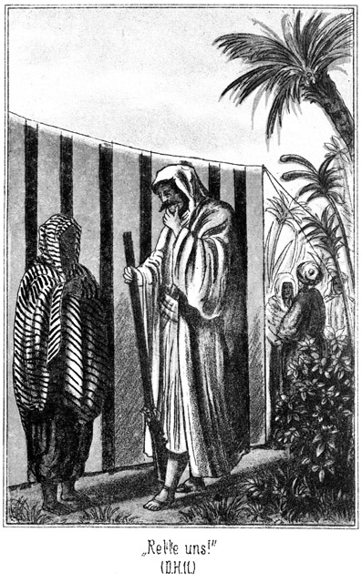»So ist es Herr! Rette, rette uns!«
»Gut! Sage Deiner Herrin, daß ich ihr dienen will. Wie aber denkst Du Dir denn die Rettung?«
»Gegen dem Willen des Tuareg?«
»Ja. Es muß heimlich geschehen. Du mußt uns rauben.«
»Hm!«
»Und zwar bald! Noch in der nächsten Nacht, denn der Tuareg kann bereits morgen mit uns das Lager verlassen.«
»Er wird das Lager allein verlassen.«
»O Allah! Denkst Du das wirklich?«
»Ja. Er wird Euch gern zurücklassen, denn er wird Euch hier verkaufen!«
»Nein, nein! Das darf er nicht!«
»Warum nicht?«
»Wir sind keine Sklavinnen sondern freie Töchter der Bani Abbas.«
»So wird es Dich beruhigen, wenn ich Dir sage, daß der Kauf nicht eigentlich ein Kauf, sondern eine Heirath sein wird.«
»Eine Heirath? Um Allah's willen! Das ist noch schlimmer.«
»Warum?«
»Hiluja will nur Dem gehören, dem sie auch ihr Herz zu schenken vermag. Soll sie Dein Weib sein?«
»Nein.«
»Dann willigt sie sicherlich nicht ein. Dich hätte sie lieb haben können, Herr!«
»Vielleicht schenkt sie auch dem, für welchen sie bestimmt ist, ihr Herz. Sie soll das Weib Muhammed es Sadek Bey's werden, des Beherrschers von Tunis.«
»Der ist alt und hat bereits viele Frauen. Sie wird ihn nicht lieben wollen.«
»Nun, vielleicht läßt sich das noch ändern. Der Oberste der Leibgarde ist hier, Krüger Bei. Er will Hiluja von dem Tuareg kaufen; das heißt, er will sie zum Weibe nehmen und ihm den Malschaß geben, sich aber dann sofort wieder scheiden lassen. Hiluja ist dann nicht an ihn gebunden, und ich werde mit ihm sprechen. Vielleicht läßt er sie dahin ziehen, wohin ihr Herz sie treibt.«
»Wenn Du das thun wolltest, o Herr!«
»Ich werde es thun. Es ist das Beste. Auf diese Weise kommt sie ohne Kampf von dem Tuareg fort. Der Oberst hat bereits nach dem Mullah gesandt. Sobald dieser kommt, wird die Verbindung vor sich gehen. Ich rathe Euch, zu thun, was der Tuareg von Euch fordert. Wenn Ihr ihm scheinbar den Willen thut, werdet Ihr bald frei sein.«
»Wenn Du uns diesen Rath ertheilst, werden wir ihn gern befolgen.«
»Ich gebe ihn Euch. Willigt in Alles ein, und dann werde ich versuchen, diese Angelegenheit zum guten Ende zu führen.«
»Ich danke Dir! Wir werden für Dich beten. Nun aber muß ich fort, denn der Tuareg darf nicht ahnen, daß ich mit Dir gesprochen habe. Ich sah, daß er mit dem Betrunkenen das Lager verließ, und habe diese Gelegenheit benutzt. Dich zu finden. Lebe wohl, und rette uns!«
Sie huschte in das Zelt zurück. Steinbach machte einen Umweg, um etwaige unbemerkte Beobachter zu täuschen. Am Eingange der Zeltreihen kam ihm der Scheik entgegen. Dieser fragte:
»Wo warst Du, Herr? Ich habe Dich gesucht.«
»Ich ging, um nicht mit ansehen zu müssen, daß in Deinem Lager die Gäste beleidigt werden.«
»Verzeihe! Auch der Tuareg ist Gast.«
»Der Deinige?«
»Nein. Er ist der Gast eines Anderen, welcher ihm ein Frauenzelt abgetreten hat. Aber trotzdem ist er unser Aller Gast, der Gast unsers Lagers, und darum durfte ich ihm nicht wiederstreben. Ich wünsche sehr, daß er uns so bald wie möglich verlassen möge. Willst Du jetzt nicht mit mir kommen? Der Oberst ist bereits voran, nach dem Weideplatze. Er will einige unserer Pferde für die Reiterei des Bey kaufen, und sie sich jetzt ansehen.«
Steinbach willigte natürlich ein. Sie begaben sich nach der Seite des Lagers, wo die Pferde unter der Aufsicht einiger Männer weideten. Einem Pferdehandel beizuwohnen, versäumt so leicht kein Araber, zumal wenn er ein Mitglied der Umgebung des Mannes ist, welchem das Pferd gehört. Darum waren alle Männer zugegen, als die Pferde geprüft und vorgeritten wurden.
Natürlich waren alle Anwesenden auch im Sattel. Steinbach ritt die graue Stute des Bey. Er konnte es sich nicht versagen, die Proben mitzumachen, und zog die bewundernden Blicke Aller auf sein edles Thier. Selbst der Scheik gestand mit einer für einen Nomaden seltenen Aufrichtigkeit, daß er kein Pferd kenne, welches mit der Stute zu vergleichen sei.
Einer vor allen Andern war es, der seine Augen nicht von der Grauen ließ, sich aber die größte Mühe gab, seine Bewunderung zu verbergen – der Tuareg, welcher sich auch eingefunden hatte.
Der Oberst kaufte eine Anzahl der Thiere. Geld hatte er natürlich nicht mit. In jenen unsicheren Gegenden hütet man sich, größere Beträge mit sich herum zu tragen. Er bestimmte, daß einige Angehörige des Stammes die Pferde nach Tunis bringen und da das Geld in Empfang nehmen sollten.
Mittlerweile war es ziemlich dunkel geworden. Als man in das Lager zurückkehrte, war der Braten fertig. Nach der Gewohnheit dieser Leute wurde das Mahl nicht im Zelte vorgenommen, sondern man nahm an einem Feuer Platz, welches neben dem Zelte des Scheiks brannte.
Auf einer riesigen Platte lag das ganz gelassene Schaf in einem Berge von dickem Reis, welcher mit Rosinen und rothem Pfeffer gewürzt war. Steinbach mußte sich dem Scheik zur Rechten, der Oberst ihm zur Linken setzen, und ein Wenig weiter zurück ließen sich die Aeltesten des Stammes nieder. Hinter diesen standen und lagerten dann die anderen Männer, um ruhig abzuwarten, ob ein Brocken des Mahles auch für sie abfallen werde. Von Gabeln oder gar Löffeln war keine Rede. Man aß nach Beduinenweise mit den Händen, indem man sich ein Stück des Bratens abriß und es zum Munde führte. Dabei griff man mit den Fingern in den Reis, ballte ihn zu kleinen Kugeln und führte diese in den Mund.
Zuweilen riß der Scheik ein gutes Fleischstück, welches er für besonders schmackhaft hielt, von dem Knochen und steckte es Steinbach oder dem Oberst in den Mund; auch schob er ihnen hier und da eine solche Reiskugel zwischen die Lippen. Dies gilt als ganz besondere Aufmerksamkeit, und wenn einer der Aeltesten oder ein Anderer das Glück hatte, daß vom Scheik sein Name genannt wurde, so kam er herbei und sperrte den Mund auf, um sich einen solchen Honorationsbissen hineinstecken zu lassen.
Das Mahl hatte eben begonnen, so kamen Zwei, welche sich ganz ungenirt bei dem Braten niederließen und sofort zulangten, ohne erst um Erlaubniß zu fragen, nämlich der Tuareg und Der, bei welchem er wohnte.
Das aber war nicht etwa auffällig, sondern vielmehr ganz und gar selbstverständlich. Der Gast des Einen ist der Gast Aller. Hat ein armer Araber einmal einen Gast, dem er nichts vorsetzen kann, so geht er ganz einfach zu einem reichen Nachbar und sagt: »Schenke mir eins Deiner Schafe, damit mein Gast zu Essen habe!« Und der Reiche wird ihm das Schaf geben. Oder der Arme geht mit seinem Gaste dahin, wo es eben Etwas zu Essen giebt. Wer einen Gast mitbringt, der ist entschuldigt; der darf selbst bei seinem Todfeinde essen und trinken, der ihm, falls er ohne Gast gekommen wäre, einen Messerstich anstatt des Essens gegeben hätte.
So also war es auch hier. Der Tuareg war Gast, und darum durfte ihn der Andere bringen, und sich ganz ungenirt mit ihm zum Braten setzen. Steinbach aber benutzte diese Gelegenheit, den Menschen zu bestrafen. Eben wollte der Scheik dem Deutschen wieder einen Bissen in den Mund schieben; Steinbach aber wich zurück und sagte:
»Ich danke Dir! Ich esse nicht mehr.«
»Warum nicht? Willst Du mein Haus und meine Familie schamroth machen? Soll es heißen, daß mein Gast hungrig von dem Mahle aufstehe? Willst Du mich beleidigen?«
»Nein, aber Du beleidigst mich!«
»Sage mir, inwiefern! Ich weiß es nicht.«
»Du zwingst mich, mich zu verunreinigen.«
»Allah 'l Allah! Das begreife ich nicht.«
»Indem Du mir zumuthest, mit einem Unreinen zu essen.«
»Wie kannst Du das sagen! Ist ein Jude hier bei unserem Mahle oder ein Heide? Wer ist unrein?«
»Sage mir, ob ein Betrunkener unrein ist!«
»Ja.«
»Ist Derjenige unrein, welcher einen Unreinen angegriffen hat, bevor dieser sich wieder reinigte?«
»Ja.«
»Herr, verzeihe! Sage selbst, ob er es gewesen ist! Du bist mein Gast, und ich will also schweigen.«
»Nun gut! Er war betrunken. Und weißt Du, wer ihn bei der Hand erfaßt und aus dem Lager geführt hat? Dieser Mann hat ihn berührt und ist also unrein geworden. Muthest Du mir zu, mit ihm von demselben Fleische zu essen?«
»Allah! Du hast recht. Dieser Krieger der Tuareg ist unser Gast, aber er mag allein essen, bis er sich gereinigt hat!«
Der Tuareg kannte die Gesetze der Wüste ganz genau; er wußte, daß es unmöglich war, zu wiederstreben. Er stand auf, blieb aber vor Steinbach stehen, ballte drohend die Hände und sagte:
»Du bist hier Gast; darum bist Du unberührbar. Aber hüte Dich, Dich außerhalb des Lagers von mir erblicken zu lassen. Du würdest im nächsten Augenblicke eine Leiche sein. Du wirst Deinen Stamm nie wiedersehen!«
»Schon gut! Warte es ab, ob Du den Deinigen siehst!«
Der Tuareg ging und sein Gastfreund mit ihm. Dieser Letztere konnte unmöglich da bleiben, von wo sein Gast sich hatte entfernen müssen.
Dieses Intermezzo blieb ohne augenblickliche Folgen. Man aß ruhig weiter. Man hatte Steinbach den Willen gethan und überließ es nun ihm, mit dem Beleidigten in irgend einer Weise fertig zu werden.
Da hörte man Pferdegetrappel. Zwei Reiter kamen im Galopp die Zeltgasse heraufgesprengt. Der Eine von ihnen warf sich gewandt vom Pferde, trat zum Scheik heran und sagte:
»Da ist der Mullah! Ich habe ihn in Tastur gefunden und sogleich mitgebracht.«
Der Andere aber stieg höchst langsam und bedächtig vom Pferde und trat in sehr würdevoller Haltung an das Feuer.
»Sallam aaleïkum – Friede sei mit Euch!« grüßte er, die Hände wie zum Segen erhebend.
»Aaleïkum sallam!« antworteten die Anderen alle, indem sie sich ehrerbietig vom Boden erhoben.
Der Mullah setzte sich, ohne ein Wort weiter zu sagen, zu dem Braten nieder, griff mit allen zehn Fingern zu und stopfte so eifrig, als habe er seit zehn Tagen nicht gegessen und müsse auch für weitere Zehn sich im Voraus sättigen. Erst als ihm die Kinnbacken wehe zu thun schienen, sagte er gnädig:
»Setzt Euch wieder, und eßt weiter!«
Das geschah. Aber der Geistliche hielt nicht etwa auf, sondern er kaute weiter mit, bis nichts mehr vorhanden war. Dann wischte er sich die fetttriefenden Finger an seinem Kaftan ab und sagte:
»Ich höre, o Scheik, daß einer Deiner Gäste ein Weib nehmen will. Wo ist der Mann?«
»Hier,« antwortete der Gefragte, auf den Oberst deutend.
Der Mullah war ein alter Mann; der weiße Bart ging ihm bis zum Gürtel herab, und ein Turban, dessen Durchmesser fast zwei Ellen betrug, erhöhte die Würde seiner Erscheinung. Da der Turban von grüner Farbe war, so war der Mullah ein Scherif, das heißt ein directer Abkömmling des Propheten, denn nur diese haben das Recht einen Turban von grüner Farbe zu tragen.
Er betrachtete den Obersten eine Weile und sagte dann:
»Mein Auge muß Dich bereits gesehen haben. Bist Du nicht Krüger Bei, der Beherrscher der Leibschaaren?«
»Ich bin es.«
»Allah gebe Dir Wohlgefallen an dem Weibe, welches Du begehrst. Wo ist der Vater desselben?«
»Er ist nicht ihr Vater, sondern ihr Herr.«
»Man hole ihn! Wo soll die Trauung stattfinden?«
»Gleich hier,« antwortete Krüger Bey.
»So hole man den Herrn und das Mädchen. Aber man verschleiere sie tief, denn kein Auge darf auf das Gesicht eines Mädchens fallen, welches ein Weib werden soll.«
Es dauerte eine Weile, bevor der Tuareg mit der Braut erschien, die in den gebräuchlichen, weiten Kapuzenmantel gekleidet war, welcher nur eine einzige Oeffnung für ein Auge offen ließ.
»Wie heißest Du?« fragte der Mullah den Tuareg.
»Ben Hamalek.«
»Und wie nennst Du diese Braut?«
»Haluja.«
Er sprach die erste Silbe dieses Namens etwas undeutlich aus, doch ohne daß es Jemandem auffiel.
»So laßt uns beginnen!«
»Mit der Trauung?« fragte der Tuareg schnell.
»Ja. Deshalb bin ich ja gekommen.«
»Warte noch. Erst müssen wir uns über den Kalam besprechen, denn noch Niemand hat davon geredet.«
Kalam heißt Aussteuer oder überhaupt das, was man den Verwandten eines Mädchens giebt, um dasselbe zur Frau zu bekommen.
»Machen wir es kurz!« sagte Krüger Bey. »Wieviel willst Du?«
»Du bist reich!«
»Das geht Dich nichts an! Ich habe bereits mehrere Frauen, für welche ich bezahlen mußte. Für diese Letzte habe ich also nicht viel übrig.«
»Wie willst Du zahlen? In Waare oder in Geld?«
»Was ist Dir lieber?«
»Geld.«
»Das habe ich nicht.«
»Aber ich habe welches,« fiel der Scheik ein. »Ich denke, daß es reichen wird. Ich leihe es Dir und Du wirst es mir wiedergeben, wenn die Pferde bezahlt werden.«
»Gut! Du bist freundlich und gefällig gegen Deinen Gast. Wenn Du mich in Tunis besuchst, werde ich Dir dankbar sein können. Also, Tuareg, wie viel verlangst Du?«
»Fünfhundert Theresienthaler.«
»Du bist fünfhundertmal ver – – Allah! Jetzt hätte ich fast Etwas gesagt, was nicht unbedingt nöthig ist. Für fünfhundert Mariatheresienthaler bekomme ich sechs junge Sklavinnen, welche schöner sind als alle Huri's des Paradieses.«
»Aber keine freie Araberin!«
»Gehe herab!«
»Nein!«
»Ich gebe Dir zweihundert.«
»Das ist zu wenig.«
»Dann noch fünfzig.«
»Nein. Wie kannst Du denken, daß ich mit der Hälfte zufrieden sein werde?«
»Schön! Suche Dir Einen, der mehr giebt!«
»Gieb vierhundertfünfzig.«
»Fällt mir nicht ein!«
»Du hast sie gesehen. Sie ist schön wie die Sonne des Tages, wenn sie früh aus dem Meere steigt.«
»Meinetwegen!«
»Vierhundertunddreißig!«
»Mach keinen Spaß!«
»Sodann vierhundert! Aber weniger nicht!«
»Nicht weniger? Gut, so sind wir fertig. Du kannst gehen und die Braut wieder mitnehmen!«
Er wendete sich ab, als sei er wirklich entschlossen, nicht mehr zu geben, als was er geboten hatte. Der Tuareg befand sich in Verlegenheit, und zwar aus einem Grunde, den er Niemand sagen konnte. Er wollte und mußte auf alle Fälle den Handel zu Stande kommen lassen.
»So gieb mir wenigstens dreihundertfünfzig!« sagte er.
»Zweihundertundfünfzig! Ich schwöre Dir bei meinem Barte, daß ich nicht mehr gebe.«
Diesen Schwur bricht kein Muselmann. Der Tuareg wußte also, woran er war. Dennoch meinte er:
»Sie ist zehnmal mehr werth!«
»Desto weniger aber bist Du werth! Und das ziehe ich Dir natürlich ab. Uebrigens mußt Du bedenken, daß ich mit Geld bezahle, und daß Du es sofort erhältst!«
Damit hatte er sehr Recht.
In jenen Gegenden giebt es nämlich meist nur den reinen Tauschhandel. Waare wird mit Waare bezahlt. Geld wird mit großem Mißtrauen betrachtet. Es giebt nur ganz wenige Geldsorten, welche genommen werden und die willkommenste ist der österreichische Mariatheresienthaler.
In Oesterreich selbst circulirt diese Geldsorte längst nicht mehr, wird aber für den Orient noch immer geschlagen. Man glaubt gar nicht, welche Unsummen von diesem Gelde der Orient verschlingt. Es fließt hinein, aber nie wieder heraus. Für einen einzigen Thaler erhält man sehr viel. Der Wüstenbewohner ist ganz glücklich, Etwas gegen dieses Geld verkaufen zu können. Zweihundertundfünfzig Mariatheresienthaler waren also eine ganz bedeutende Summe. Dies sah der Tuareg ein. Darum weigerte er sich nicht länger, sondern er erklärte:
»Da Du der Oberst des Bey bist, den meine Seele ehrt, will ich auf Dein Gebot eingehen. Schlage ein!«
»Hier!«
Sie legten die Hände ineinander und so war der Handel abgeschlossen. Darum fragte der Mullah:
»Darf ich nun beginnen?«
»Ja,« antwortete der Oberst.
»Der Mullah faltete die Hände und sagte in der herkömmlichen Weise:
»Im Namen des allbarmherzigen Gottes! Lob sei Gott, der uns das Vermögen gegeben hat, zu sprechen, der uns gewürdigt hat der Schönheit der Sprache und des Glanzes der Worte! Er, der Höchste, hat Alles zum Nutzen der Menschheit erschaffen. Er hat Alles, was unnöthig ist, verhindert, und alles Das bereitet, was nöthig ist. Er hat uns die Ehe geboten, aber verboten, anders zu leben. Er, der Höchste spricht: Nehmet Euch zur Ehe solche Weiber, welche Euch gefallen, eine, zwei, drei oder auch viere. O, ewiger Wohlthäter! Wir müssen Dir Dank sagen zur Vergeltung Deiner Liebe. O, allmächtiger Führer! Uns liegt die Pflicht der Dankbarkeit ob für das Geschenk der Ehe. O, Allah, leite uns zur Genügsamkeit und Vollkommenheit und besiegle alle unsere Handlungen, auch diejenige der Ehe. Wir bezeugen es, daß es keinen Gott giebt außer Allah, dem ewig Ewigen, und daß Muhammed, sein Gesandter, begnadigt ist vor allen Menschen. Ja, möge die Gnade Gottes ruhen auf dem Erstlinge seiner Schöpfung, Muhammed, dem von Gott mit Wundern Gesegneten, und auf seiner Familie! Gott, der uns den Weg zum Islam führt, hat die Ehe festgesetzt als eine Ehe zwischen dem Erlaubten und dem Verbotenen. So spricht der Prophet. Ja, möge der Segen Gottes auf uns ruhen. Die Ehe ist zwar nicht befohlen, aber von Allah anempfohlen und von dem Propheten erlaubt. Wer sie verwirft, gehört uns nicht an. Der Heirathende ist der Geliebte, der die Geliebte zur Ehe nimmt, und die Beisteuer dient zum Ausdrucke der beiderseitigen Uebereinstimmung. Ich segne das Paar und flehe auf dasselbe die Barmherzigkeit des Höchsten herab, und danke Gott, denn er ist barmherzig und voller Liebe, wie er Euch jetzt durch die Verbindung Eurer Herzen bewiesen hat!«
Hierauf wendete sich der Mullah an den Tuareg:
»Du, der Du Dich Ben Hamalek nennst, willst Du dieses Weib dem Obersten der Heerschaaren als Frau geben?«
»Ja,« antwortete der Gefragte.
»Und Du, Krüger Bey, der Oberste der Helden des Beherrschers von Tunis, willst Du sie als Dein Weib nehmen, sie lieben und ernähren bis an das Ende Deines Lebens, so lange es Dir beliebt und so lange sie Dir gefällt?«
»Ja,« antwortete der Oberst.
»So sage ich Euch Folgendes: Nach dem Befehle Allah's, des Schöpfers des Lichtes und der Finsternis;, und nach dem Willen des großen Propheten Muhammed Mustapha! Möge der Segen Gottes auf ihm und seiner Familie ruhen! Nach den Rechten der Secte des Imam Aasan, des Imam Abu Jussuf al Kafi und des Imam Muhammed, des Sohnes Al Chasans, und der übrigen Imams – diese hier ist Dein Weib – und dieser hier ist Dein Mann! Allah sei mit Euch, mit uns und auch mit mir!«
Damit war die heilige Handlung abgeschlossen.
Jetzt aber kratzte sich Krüger Bey hinter dem Turban. Es fiel ihm etwas ein, woran er vorher nicht gedacht hatte.
»Sage mir, o Mullah,« fragte er, »hat dieses Weib nun bei mir zu wohnen?«
»Ja, denn Du bist ihr Herr und ihr Mann.«
»Aber ich bin selbst hier fremd! Sie kann doch nicht – –«
Da fiel der Tuareg ein:
»Sie ist eine Tochter der Beni Abbas. In ihrem Stamme ist es Gebot, daß jede Verheirathete während der ersten Nacht ihrer Ehe mit keinem Menschen spreche und in einem Zelte betend allein bleibe. Ich erwarte, daß Du diese Sitte ihres Stammes ehren werdest.«
»Das möchte ich wohl; aber habe ich ein Zelt?«
»Ich habe eins,« sagte der Scheik. »Dort steht das Zelt, in welchem meine Vorräthe sich befinden. Da wird sie ungestört beten können. Führe sie hin, o Mullah, da Du es bist, der sie in die Ehe geführt hat.«
Der Geistliche that dies in sehr ehrwürdiger Art und Weise. Als er zurückgekehrt war und sich wieder niedergesetzt hatte, zog er ein Papier hervor, und eine alte Flasche, in welcher sich Tinte befand.
»Nun müssen wir aufschreiben, was geschehen ist,« sagte er, »und diese Beiden werden es unterzeichnen.«
Dies geschah, dauerte aber ziemlich lange, da der ehrwürdige Alte keineswegs ein sehr gewandter Schreiber zu sein schien. Die Namen wurden notirt, und dann setzten der Tuareg und der Oberst ihre Namen darunter. Der Erstere erhielt als Besitzer des Weibes das Dokument.
Er steckte es ein und sagte dann:
»So, jetzt ist sie meine Frau. Wann aber, o Mullah, kann ich mich von ihr scheiden lassen?«
»Das habe ich Dir ja gesagt!«
»Ich habe sehr deutlich gesprochen: Du sollst sie lieben und ernähren bis an das Ende Deines Lebens, so lange es Dir beliebt und so lange es Dir gefällt.«
»Wenn es mir aber jetzt nicht mehr beliebt!«
»So laß Dich scheiden!«
»Willst Du das thun?«
»Wenn Du es willst, ja.«
»Ich bitte Dich darum!«
»So höre die Worte der fünfundsechzigsten Sure!«
Er faltete die Hände und recitirte:
»Im Namen des allbarmherzigen Gottes! O Prophet, wenn Ihr Euch von einem Weibe scheidet, so bedenkt wohl, was Ihr thut. Ihr dürft Euch von zwei Weibern scheiden, von mehr aber nicht. Vertreibt sie nicht aus Euren Wohnungen, wenn sie sonst kein Obdach haben. Vielleicht erneuert Allah Eure Liebe, so daß Ihr beisammen bleibt. Soll sie aber wirklich fort, nach reiflicher Ueberlegung, so thut es bald, und der Mund des Gesandten wird die Scheidung besiegeln. Sage mir, o Krüger Bey, Du Oberster der Leibtrabanten des Beherrschers, willst Du von Haluja, Deinem angetrauten Weibe, geschieden sein?«
»Ja.«
»So sage die drei Worte: Sie kann gehen!«
»Sie kann gehen!«
»So bist Du geschieden. Ich bezeuge es.«
Also war der gute Krüger Bey in kürzester Zeit Bräutigam und Ehemann gewesen und jetzt nun wieder ein geschiedener Ehegatte. Er nahm dies in bester Laune entgegen. Er fragte den Scheik:
»Ist Dein Dattelvorrath gut?«
»Ja.«
»Hast Du Lagmi?«
»Viele große Krüge voll.«
»So gieb Deinen Männern Datteln zu essen und Lagmi zu trinken, zwei große Krüge voll, einen zur Feier der Hochzeit und einen zur Feier der Scheidung.«
Lagmi ist gegohrener Dattelsaft; er schmeckt fast wie Wein und hat eine leise berauschende Wirkung, wenn man auch nicht sagen kann, daß er betrunken mache.
Die Botschaft, daß es Datteln mit Lagmi gebe, brachte im Lager große Freude hervor. Die Männer rückten zusammen und ließen es sich wohl sein. Der Tuareg aber saß und trank nicht mit. Sobald er von dem Scheik das Geld erhalten hatte, entfernte er sich.
Die Männer glaubten, dies habe seinen Grund darin, daß er für unrein erklärt worden sei; der eigentliche Grund aber war ein anderer. Er freute sich übrigens, sich so entfernen zu können, ohne Verdacht zu erwecken. Steinbach hatte noch kein solches Ehedocument gesehen, wie das von dem Mullah angefertigte. Er bat es sich von dem Obersten aus und betrachtete es bei dem Scheine des Feuers aufmerksam.
»Da steht Haluja,« sagte er. »Heißt sie nicht Hiluja?«
»Ja.«
»Es ist mir schon vorher aufgefallen. Auch der Tuareg sagte nicht Hiluja, sondern Haluja.«
Er wird sich versprochen haben und der Mullah hat es so nachgeschrieben.«
»Ich traue diesem Tuareg nicht.«
»Ich auch nicht; aber was könnte diese Verwechslung zu bedeuten haben? Nichts, gar nichts. Er hat sich versprochen.«
»Er wird doch nicht etwa auf den Gedanken kommen, während der Nacht Hiluja aus dem Zelte zu holen und mit ihr sammt dem Gelde zu entfliehen?«
»Das kann er nicht,« sagte der Scheik. »Nachdem Du mir erzählt hast, was Dir die alte Dienerin sagte, hege auch ich Mißtrauen gegen ihn. Ich werde von einem meiner Krieger Hiluja's Zelt bewachen lassen. Er mag gehen; sie aber wird er zurücklassen müssen.«
Sie ahnten nicht, was geschehen war.
Der Tuareg hatte sein Zelt nicht aufgesucht, um in demselben zu bleiben. Er war in das Frauenzelt getreten, das sein Gastfreund ihm überlasten hatte. Dort war es finster. Es brannte kein Licht.
Er bückte sich zur Erde. Dort lag ein langes, rundes Bündel, fast als ob ein Mensch in einen Teppich eingerollt sei. Er betastete dieses Bündel genau und entfernte sich dann wieder. Er wußte, daß kein Mensch dieses Frauenzelt betreten werde, daß er also nicht verrathen sei.
Sich hinter den Zelten haltend, so daß ihn die Strahlen des Feuers nicht treffen konnten, schritt er hinaus in das Freie. Er nahm sich selber in Acht, um von denjenigen, welche bei den Heerden wachten, nicht bemerkt zu werden. Als er diese Thiere hinter sich hatte und nun wußte, daß er nicht gesehen werde, verdoppelte er seine Schritte. Dann blieb er stehen und stieß jenen halblauten, eigenthümlichen Laut aus, welchen der in der Wüste lebende Bartgeier ausstößt, wenn er des Nachts einmal aus dem Schlafe erwacht und, noch halb träumend, seinen Standort wechselt.
Sofort wurde der Ton erwidert, und dann schlich eine Männergestalt herbei.
»Endlich!« flüsterte der Ankommende. »Es ist sehr spät.«
»Ich konnte nicht anders.«
»Wann nimmt das ein Ende! Ich habe die größte Noth, mich des Tages zu verbergen. Diese Hunde vom Stamme der Medscherdah schweifen überall herum.«
»Es ist die letzte Nacht.«
»Allah sei Dank! Hast Du Etwas erreicht?«
»Mehr als ich dachte. Ich habe Geld.«
»O Ihr Kalifen, o Muhammed! Wie viel?«
»Zweihundertundfünfzig Mariatheresienthaler.«
»Welch ein Glück! Woher hast Du sie? Gestohlen?«
»Nein. Ich habe Haluja verkauft.«
»Hiluja willst Du wohl sagen?«
»Nein, Haluja, die Dienerin.«
»Das verstehe ich nicht. Du meinst doch nicht etwa, daß man Dir für sie dieses Geld gegeben habe?«
»Ja, für sie.«
»Wer das gethan hat, ist wahnsinnig.«
»O, er ist sehr bei Sinnen. Es ist Krüger Bey, der Oberste der Leibwache des Bey von Tunis. Natürlich aber glaubt er, Hiluja gekauft zu haben. Er wird sich sehr wundern, wenn es Tag wird und er kommt, seine schöne, junge Frau zu besuchen.«
»So ist es!« lachte der Andere leise. »Was aber thust Du mit dem Mädchen?«
»Wir nehmen sie mit nach Mehedia. Dort erhalten wir sehr viel Geld für sie.«
»Hast Du nach Pferden gesucht?«
»Ja. Das Deinige ist gut, das meinige war schlecht. Ich lasse es zurück. Ich nehme zwei andere dafür. Dabei ist eins, welchem kein anderes gleicht, so weit die Wüste reicht.«
»Es gehört dem Scheik?«
»Nein, sondern einem Gaste desselben, einem Fremden, dessen Stamm ich nicht kenne. Er hat es von dem Bey von Tunis geborgt. Es ist eine graue Prophetenstute.«
»O Allah! Ist das wahr?«
»Ja. Und sodann nehme ich den Schimmel des Scheiks. Den Schimmel für Hiluja und die graue Stute für mich.«
»So sind wir reich, reicher als wir jemals gewesen sind. Wir werden nach dem Süden reiten und die Pferde dort verkaufen.«
»Oder sie auch behalten. Geld haben wir schon heute und werden auch noch welches für das Mädchen bekommen. In zwei Tagen sind wir in Mehedia. Bis dahin müssen wir sehr vorsichtig sein, dann aber sind wir sicher.«
»Wann brichst Du auf?«
»Es wird sehr spät werden. Ich glaube, dieser Krüger Bey hat Lagmi geschenkt; da werden die Männer erst weit nach Mitternacht zur Ruhe gehen. Aber grad das ist die beste Zeit, uns der Pferde zu bemächtigen, da die Wächter gewöhnlich gegen Morgen ermüdet sind und schlafen. Kennst Du das Lager?«
»Ich habe es gestern und heut beschlichen.«
»Hast Du die Tamariskenbüsche gesehen, welche nicht weit von den letzten Zelten stehen?«
»Ja. Sie sind dicht belaubt.«
»Schleiche Dich dorthin und erwarte mich. Jetzt weiß ich noch nicht genau, wie wir zu den Pferden kommen; aber wir müssen sie haben und so werden wir sie also auch bekommen.«
Sie trennten sich wieder. Der Andere war auch ein Tuareg, der gar nicht mit in das Lager gekommen war, damit man denken solle, man habe es nur mit einem Einzelnen zu thun, dem man Vertrauen schenken könne.
Die Zeit verging. Im Lager herrschte reges Leben bis weit nach Mitternacht. Und selbst dann trat die gewöhnliche Ruhe noch nicht bald ein. Die Versammlung war zwar auseinander gegangen, aber die Einzelnen verhielten, sich doch noch vor ihren Zelten. Der Beduine ist nicht an die Zeit gebunden, und so hat sie also auch für gewöhnlich keinen etwa außerordentlichen Werth für ihn.
Endlich, als es kaum noch eine Stunde bis zum Grauen des Tages war, hatte sich der Schlaf niedergesenkt. Doch nein, nicht Alle schliefen, denn da huschte Einer leise auf das Lager zu und blickte sich dort, wo das Feuer gebrannt hatte und noch einige Kohlen glimmten, vorsichtig um. Er erregte dadurch den Argwohn der Schildwache, welche das Zelt zu beaufsichtigen hatte, indem die bereits wieder geschiedene Braut die Nacht zubrachte.
Dieser Wachtposten trat heimlich näher und erfaßte ganz plötzlich den Schleicher beim Arme.
»O Allah!« rief dieser, der fürchterlich erschrocken war.
»Wer bist Du?«
»Siehst Du das nicht?«
»Nein, es ist finster.«
»Laß mich los! Du wirst unrein!«
»Ah, Du bist der Diener des Gastes unseres Scheiks?«
»Ja.«
»Warum schleichst Du hier herum?«
»Ich suche meinen Herrn.«
»Wozu? Laß ihn schlafen!«
»Nein; ich muß mit ihm sprechen.«
»Jetzt? Mitten in der Nacht?«
»Ja. Wo ist er?«
»Dort im Zelte des Scheiks schläft er mit diesem und dem Obersten der Trabanten.«
»So werde ich ihn wecken.«
»Halt! Nein! Das dulde ich nicht. Ist das, was Du ihm zu sagen hast, so nothwendig?«
»O, sehr.«
»Was ist es denn?«
»Das geht Dich nichts an!«
»Oho! Ich bin der Wächter. Wenn Du es mir nicht sagst, so verbiete ich Dir, ihn zu wecken.«
»So bist Du schuld, wenn er um sein Pferd kommt.«
»Um sein Pferd? Meinst Du die graue Stute?«
»Ja.«
»Was ist mit ihr?«
»Sie soll gestohlen werden.«
»Von wem?«
»Von dem Tuareg.«
»Du träumst wohl? Oder bist Du noch betrunken?«
»Ich bin sehr wach und munter, denn ich habe ausgeschlafen. Ich habe den Spitzbuben belauscht. Es war noch ein zweiter bei ihm. Sie wollen die graue Stute stehlen, den Schimmel des Scheiks und auch ein Pferd oder ein Kameel, welches Hiluja heißt, jedenfalls eine Stute.«
»Hiluja, die bewache ich ja hier! Das ist keine Stute, sondern ein Weib. Aber jetzt kommt mir die Sache auch verdächtig vor. Du hast ihn belauscht?«
»Ja. Es kam ein Anderer dazu, der das Lager umschlichen hat. Aber wenn ich Dir das Alles erzählen soll, so ist der Diebstahl indessen gelungen. Wecken wir den Herrn!«
Jetzt hatte der Wächter gar nichts mehr dagegen. Einige Augenblicke später trat der Scheik mit seinen zwei Gästen aus dem Zelte. Steinbach fragte was man wolle.
»Herr, Deine Stute wird gestohlen,« antwortete der Bote.
»Du bist da? Meine Stute gestohlen? Von wem?«
»Von dem Tuareg.«
Steinbach war geistesgegenwärtig. Er begann sofort zu componiren. Er fragte rasch:
»Hast Du ihn belauscht?«
»Ja. Ich war nach den Tamarisken geschlichen, um dort auszuschlafen. Ich erwachte, denn es kam ein Kerl, welcher sich in meine Nähe legte, ohne mich zu bemerken. Dann kam der Tuareg. Sie wollen Deine Stute, des Scheiks Schimmel und Hiluja stehlen.«
»Wann war das?«
»Vor einer halben Stunde.«
»Dummkopf!«
Er sprang in das Zelt zurück, um seine Pistolen zu holen, und schoß zwei Läufe ab. Im Nu war das ganze Lager alarmirt. Die Männer kamen aus den Zelten.
»Zu den Heerden!« rief Steinbach. »Es sind Diebe da!«
Alles rannte nach rechts oder links zu den Thieren.
»Ist Hiluja noch drin?« fragte er den Wächter.
»Ja, Herr.«
»Bleibe bei ihr und vertheidige Sie nötigenfalls. Kommen Sie, Oberst.«
»Wohin?« fragte Krüger Bey.
»Zu dem Zelte des Tuareg.«
*
Dieser war nicht zu sehen. Das Frauenzelt war vollständig leer. Draußen aber, außerhalb des Lagers, erhob sich eben jetzt ein wahrer Heidenskandal. Laute Hilferufe erschollen, und Schüsse erklangen. Dorthin eilten auch die Beiden. Im Vorüberrennen blieb Steinbach bei dem Vorrathszelte stehen und öffnete es.
»Hiluja?« fragte er hinein.
»Ich bin es, Herr, Haluja.«
»Haluja? Was bedeutet das? Heute sagte Deine Dienerin, Dein Name sei Hiluja.«
»Ja, das habe ich gesagt, Herr. Was ist geschehen? Warum ruft und schießt man?«
Sie trat heraus. Sie trug den Schleier nicht. Steinbach beugte sich zu ihr nieder und erkannte trotz der Dunkelheit – die Alte, nicht die Herrin, sondern die Dienerin.
»Alle Teufel! Ein Betrug!« rief er. »Tritt sofort wieder da hinein! Da bleibst Du, bis ich wiederkomme!«
Er schob sie in das Zelt und eilte fort, hinaus vor das Lager. Dort waren aus Palmenfasern gefertigte Fackeln, welche diese Nomaden stets vorräthig haben, angebrannt worden. Diese Flammen beleuchteten eine wirre, ziellose Bewegung.
»Er ist fort!« rief der Scheik, als er Steinbach sah.
»Wer? Der Tuareg?«
»Nein, der Schimmel!«
»Teufel! Und meine Stute, die hier mit weidete?«
»Ist auch weg.«
»Hölle und Tod! Sie ist gar nicht mein Eigenthum?«
»Wir müssen den Räubern nach. Auf die Pferde Ihr Männer! Schnell, ihnen nach!«
»Halt! Halt! Wartet noch!« schrie Steinbach, so laut er nur konnte. »Alle hierher zu mir!«
Er sah ein, daß ein geordnetes, zielbewußtes Handeln jetzt die Hauptsache sei. Die Leute versammelten sich um ihn. Er gebot Ruhe, und als die nöthige Stille eingetreten war, sagte er:
»Weg mit der Aufregung! Sie schadet uns nur! Hört auf mich! Und nur Derjenige welcher genaue Antwort weiß, mag sprechen; die Andern aber schweigen. Ist der Schimmel des Scheiks fort?«
»Ja,« antwortete Einer.
»Weißt Du das genau?«
»Ich weiß es. Ich war der Erste hier vor dem Lager. Eben als ich zwischen den Zelten hervorsprang, jagten sie fort, an mir vorüber.«
»Wie viele?«
»Drei Pferde. Zwei Reiter, und auf dem dritten Pferde welches sie in der Mitte hatten, war Etwas festgebunden.«
»Jedenfalls Hiluja. Wohin ritten sie?«
»So müssen mir ihnen augenblicklich nach, sonst entkommen sie uns!« rief der Scheik. Ich muß meinen Schimmel wieder haben. Die Diebe werden den Raub mit dem Leben bezahlen!«
»Du wirst Deinen Schimmel niemals wiedersehen,« sagte Steinbach, »wenn Du die Diebe jetzt verfolgst.«
»Willst Du sie entkommen lassen?«
»Nein.«
»Das geschieht aber doch, wenn wir nicht eilen.«
»Grad wenn wir zu sehr eilen, entkommen sie uns. Kannst Du sie in dieser Finsterniß sehen?«
»Nein, sehen nicht.«
»Wie willst Du ihnen folgen, wenn Du sie nicht siehst?«
»Wir hören sie.«
»Jetzt noch, nachdem sie einen solchen Vorsprung haben? Nein. Ich bitte Dich, meinem Rathe zu folgen. Wir warten, bis der Tag angebrochen ist.«
»Dann sind sie bereits über alle Berge!«
»Wir holen sie ein.«
»Wo? Du weißt doch nicht, wohin sie sind.«
»Wir werden es erfahren, denn der Tag wird uns ihre Spuren zeigen.«
»Verstehst Du es, die Fährten zu lesen?«
»Ja. Ich schwöre Dir zu, daß sie uns nicht entgehen werden. Reitest Du ihnen aber jetzt in der Dunkelheit nach, so wirst Du mir die Fährte so verderben, daß ich sie gar nicht zu finden vermag.«
»Aber wie willst Du sie einholen? Sie haben ja unsere schnellsten Pferde.«
»Ich sah heut auf Eurer Weide einige der besten Hedschin; die sind ja schneller als die schnellsten Pferde.«
Hedschin heißt Reitkameel.
»Ja, wenn Du die Verfolgung auf den Kameelen vornehmen willst, dann werden wir sie einholen, falls Du die Spuren wirklich findest.«
»Ich finde sie. Also die Leute mögen hier bleiben, damit mir die Fährte der Diebe nicht verwischt wird. Jetzt mögen sie nur nachsehen, ob noch mehr fehlt, als nur der Schimmel und die graue Stute. Wo ist mein Diener?«
»Hier!« antwortete der wieder vollständig nüchtern Gewordene, indem er näher trat.
»Erzähle mir nochmals, was Du Alles hörtest.«
Er wiederholte seinen Bericht und fügte hinzu, daß die Beiden nach Mehediah wollten, um dort Hiluja zu verkaufen.
»Da haben wir es!« sagte Steinbach. »Jetzt wissen wir, wohin sie sind. Giebt es Einen unter Euch, welcher den Weg dahin genau kennt?«
»Ich,« antwortete der Führer. »Es gehen mehrere Wege, und ich kenne sie alle. Die Räuber haben ganz gewiß den kürzesten eingeschlagen.«
»Das ist auch meine Meinung. Am Besten wäre es, wenn wir einen Umweg machen könnten, um ihnen voranzukommen und sie zu erwarten.«
»Das können wir. Die Kameele sind ja schneller.«
»Wie geht der Weg?«
»Die Diebe werden jedenfalls von hier aus das Wadi Silliana hinaufreiten – –«
»Giebt es da Wasser?«
»Sie werden es dazu benutzen, ihre Spuren unsichtbar zu machen. Sie werden im Wasser reiten.«
»Ganz gewiß. Sie werden dann nach dem hohen Dschebel Surdsch kommen, über welchen sie hinweg müssen. Dann führt ihr Weg in eine weite Ebene, wo es nur Sand und Geröll giebt, bis die nächsten Berge kommen; das sind die Höhen des Dschebel Ussalat.«
»Wenn wir diese Berge eher erreichen könnten als sie!«
»Wir können es. Ich weiß den Weg.«
»Sie werden am Dschebel Ussalat vielleicht übernachten.«
»Das müssen sie. Sie kommen wohl heute Abend dort an. Vorher und nachher haben sie kein Wasser, ihre Pferde zu tränken. Sie sind also gezwungen, grad dort zu rasten.«
»So sind wir also über die Richtung einig. Wer aber reitet mit?«
»Ich!« antwortete der Scheik.
»Ich!« sagte auch der Oberst.
»Ich, ich – –« riefen Alle durcheinander.
»Das ist unmöglich!« sagte Steinbach. »Wir dürfen uns nur der besten und schnellsten Reitkameele bedienen. Wie viele sind ihrer hier?«
»Aechte, gute Bischarihnkameele habe ich nur vier Stück,« antwortete der Scheik.
»So können nur vier Männer reiten.«
»Ist das genug?«
»Mehr als genug. Vier gegen Zwei! Also wer? Der Führer und ich; das sind zwei.«
»Und ich natürlich!« sagte der Scheik.
»Und ich auch natürlich!« meinte der Oberst.
Steinbach machte eine Einwendung gegen den Letzteren. Er traute ihm die Fähigkeit eines so anstrengenden Rittes nicht zu; Krüger Bey ließ aber keine Einrede gelten. So bat der Deutsche denn, die Kameele zu satteln und für Wasser und Proviant zu sorgen. Dann begab er sich zu der Dienerin, den Oberst mit sich nehmend, welcher noch gar nicht ahnte, wie sich diese Angelegenheit eigentlich verhielt.
»Eigentlich bin ich Sie böse!« sagte er auf Deutsch.
»Warum?«
»Weil Ihnen mir nicht mitzunehmen wollen jesinnt jewesen haben.«
»Ich hatte eine gute Absicht. Der Ritt ist anstrengend.«
»Soll ich mir nicht anstrengen, wenn es gilt, meiner jeschiedenen Ehefrau wiederzufinden?«
»Die finden Sie da draußen nicht.«
»Na, Ihnen sagten doch, daß uns sie einzuholen werden sicher zu sein.«
»Aber Ihre gestrige Frau Gemahlin ist nicht dabei.«
»Hiluja?«
»Die ist dabei; aber die war nicht Ihre Frau. Erinnern Sie sich noch, daß der Tuareg Haluja sagte?«
»Ja. Diesem Mullah hat auch so jeschrieben.«
»Nun, Haluja heißt die alte Dienerin, und diese haben Sie geheirathet.«
»Dienerin?«
»Ja.«
»Jott stehe mich bei! Ist ihr alt?«
»Sehr.«
»Häßlich?«
»Ziemlich.«
»Dann hole ihr das Teufel! Ihr ist noch da?«
»Ja. Sie steckt dort im Zelte. Kommen Sie!«
»Aber ich begreife noch jar nicht, wie es möglich sein kann, daß es möglich zu werden möglich jewesen ist!«
»Sie werden es bald begreifen. Dieser Tuareg hat Ihnen die Dienerin verkauft, die junge Herrin aber für sich behalten, um sie in Mehedia zu verkaufen und also abermals Geld zu lösen.
»Na, denn mal rin in diesem Zelt! Wo ist ihr?«
Steinbach hatte einem der Männer eine Fackel aus der Hand genommen; er öffnete das Zelt und leuchtete der Dienerin in das Gesicht.
»O Allah! Das ist ihr?« fragte der Oberst.
»Ja, das ist Haluja.«
»Meiner abjeschiedenen Jeliebten?«
»Ja, Ihre gestrige Gattin!«
»Alle juten Jeister und Jespenster! Und dafür hat mich diesem Schwindelmeier das viele Geld abzuverlangen die Kühnheit verwegen jewesen! Na, wenn diesem Mensch in meiner Hand jelaufen kommt, so zerbreche ich ihn der Jenick und dem Hals wie ein holländischer Tabakspfeife! Aber diesem alten Reff hier ist doch einer Betrügerin!«
»Wieso?«
»Weil sie ihr für jung ausjegeben ist!.«
»Nein. Sie hat sich nicht für jung ausgegeben. Sie hat überhaupt gar nichts gesagt.«
»Es konnte ihr aber sagen, daß ihr Haluja heißt und nie nicht Hiluja!«
»Nicht sie ist gefragt worden, sondern der Tuareg. Der sagte Haluja, wie ich mich besinne. Sie hat also keine Ahnung gehabt, daß Sie getäuscht werden sollten.«
Daß dies so war, stellte sich heraus, als Beide nicht länger Deutsch sprachen und nun von der Dienerin verstanden wurden. Sie war dem Tuareg gefolgt, weil ihr Steinbach den Rath gegeben hatte, Alles zu thun, was dieser von ihr verlange. Als sie nun jetzt erfuhr, daß der Tuareg mit ihrer Herrin entflohen sei, brach sie in lautes Jammern aus. Sie beruhigte sich nur bei Steinbach's Versicherung, daß sie sie morgen bereits wiedersehen werde.
Jetzt brach der Morgen an und die Reitkameele standen bereit, wohlgenährte Thiere, welche seit langer Zeit keiner Anstrengung unterworfen worden waren. Es stand also zu erwarten, daß der Verfolgungsritt ein ungewöhnlich schneller sein werde.
Etwa eine Stunde mochte seit dem Alarmrufe vergangen sein, als die vier Reiter auf ihren hohen Satteln das Lager verließen und mit der Eile des Sturmes nach Osten hin davonritten.
Sie hielten sich mit Absicht weiter nördlich als die Verfolgten vermuthlich geritten waren. Die freie Ebene war ihnen bei ihren Kameelen viel vortheilhafter, als die Thäler und Schluchten des Wadi Silliana.
Die Hedschin griffen mit ihren unendlich langen Beinen fürchterlich aus. Mit diesen Kameelen kann auch der allerschnellste Renner nicht Schritt halten. Sie hatten nach Verlauf einer Viertelstunde ganz gewiß bereits eine volle deutsche Meile zurückgelegt.
So verging wieder eine Viertelstunde – daraus wurde eine ganze Stunde. Da legte der voranreitende Führer die Hand beschattend über das Auge und sagte zu Steinbach:
»Herr, es ist mir, als ob da ganz draußen in der Steppe mehrere Reiter sich bewegten.«
Er deutete mit der Hand in die Richtung, welcher Steinbach mit dem Auge folgte.
»Ja, da draußen bewegen sich mehrere Punkte. Wir wollen sie uns doch einmal besser betrachten.«
Er hielt sein Kameel an und zog das Fernrohr auseinander. Er hatte es kaum auf die betreffenden Punkte gerichtet und hindurchgeblickt, so stieß er einen lauten Ruf der Ueberraschung aus:
»Allah ist groß! Das sind sie!«
»Die Gesuchten?« fragte der Oberst schnell.
»Ja.«
»Bitte, das Fernrohr!«
Er blickte hindurch und fuhr fort:
»Wahrhaftig, sie sind es! Sie sind also nicht nach dem Wadi Silliana. Auf diese Weise bekommen wir sie weit eher und weit leichter in die Hand.«
»Leichter?« meinte Steinbach. »Das glaube ich nicht.«
»Warum nicht? Wir haben sie ja vor Augen!«
»Sobald sie sich einmal umdrehen, werden sie uns auch vor die Augen bekommen. Wir auf unseren großen, hohen Thieren sind viel weiter zu sehen als sie. Dann werden sie uns die Sache wohl erschweren.«
»Was wollen sie thun? Sic befinden sich mitten in der Ebene. Sie können nicht entkommen.«
»Warten wir es ab. Ich habe noch ganz Anderes erlebt. Und angenommen daß wir sie einholen, was thun wir dann?«
»Wie nehmen sie fest, natürlich.«
»Wir fangen wir das an?«
Die Drei blickten Steinbach mit großen Augen an. Sie konnten ihn wirklich nicht begreifen.
»Wie wir das anfangen?« wiederholte der Scheik. Sobald ich sie erreiche, schieße ich sie nieder.«
»Das wird nicht sehr leicht sein. Erstens werden sie ihre Thiere anstrengen. Es wird ein Wettrennen geben.«
»Wir ereilen sie doch!«
»Ja; aber schießen – nein!«
»Warum nicht, Herr? Soll ich diese Diebe schonen?«
»Sie nicht aber Deinen Schimmel und meine Stute.«
»Ah! Du hast Recht. Wir dürfen nicht schießen, denn wir könnten unsere kostbaren Pferde treffen.«
»Das meine ich Sie aber werden schießen und zwar mit Bedacht nach unseren Kameelen zielen, denn wenn das Kameel fällt, kann der Reiter ihnen nicht mehr gefährlich sein. Wir befinden uns also im Nachtheile.«
»Was räthst Du uns?«
»Wir müssen den offenen Kampf vermeiden; wir müssen sie zu überraschen, zu überrumpeln suchen.«
»Wie soll das geschehen? Sie müssen uns ja bemerken, da wir ihnen folgen.«
»So sorgen wir dafür, daß sie uns nicht bemerken. Sie befinden sich in gerader Richtung vor uns. Ganz, ganz weit da draußen ist der Horizont dunkel. Liegt dort vielleicht ein Gebirge?«
»Ja,« antwortete der Führer. »Es ist der Dschebel Surdsch, da, wo er sich nach Saïd hinzieht.«
»Es scheint, daß die Flüchtlinge da hinauf wollen.«
»Ganz sicher.«
»Nun, schlagen wir einen Bogen, damit wir noch vor ihnen dort ankommen. Wenn ich die Entfernung nach dem Gedanken messe, so werden sie ungefähr zu Mittag dort sein und also wohl Rast machen. Dabei überraschen wir sie.«
Dieser Vorschlag wurde für sehr annehmbar gehalten. Die Kameele bekamen eine andere Richtung und bald war es den Reitern nicht mehr möglich, die Verfolgten zu sehen; ebenso wenig aber konnten nun auch sie von denselben bemerkt werden.
Jetzt wurden die Thiere angespornt. Die Ebene flog nur so unter ihren Hufen weg. Stunde um Stunde verging. Die dunkle Linie des Horizontes wurde deutlicher. Sie nahm Gestalt und Form an. Höhen traten hervor, und bald war das bewaldete Gebirge zu erkennen. Es war kurz vor der Mittagszeit, als die vier Reiter den ersten der Vorberge erreichten.
Steinbach suchte wie ein Feldherr das Terrain mit dem Fernrohre ab. Er deutete hinaus in die Ebene und sagte:
»Den Bogen haben wir richtig hinter uns. Ich glaube, daß wir uns ungefähr da befinden, wohin die beiden Tuareg kommen werden.«
»Ganz gewiß,« sagte der Führer. »Da drüben giebt es einen Bach, welcher in die Berge führt. Ihm muß man folgen, um nach jenseits zu kommen. Dorthin also müssen sie sich sicher wenden.«
»So wollen wir ihnen voran hin. Vorwärts!«
Sie gelangten an den Bach und ritten langsam an ihm aufwärts, um einen Ort zu finden, von welchem zu vermuthen stand, daß die Flüchtlinge dort ihre Rast halten würden. Solcher Orte gab es so viele, daß es unmöglich war, vorher zu bestimmen, welchen man wählen werde. Darum rieth Steinbach, noch weiter aufwärts zu reiten, dort die Kameele zurückzulassen und wieder umzukehren, da man zu Fuße die Erwarteten besser belauschen konnte. Die Anderen gingen auf den Vorschlag ein. Die vier Reiter ritten noch eine Strecke weit am Bache aufwärts und bogen dann in die Büsche ein, wo sie die Kameele unter der Aufsicht des Führers zurückließen. Dann kehrten sie wieder um und nahmen auf einer Höhe Posto, von welcher aus sie die weite, nach rückwärts liegende Ebene weit nach vorn und auch nach rechts und links überblicken konnten.
Steinbach hatte sich in seinen Vermuthungen nicht getäuscht. Nach bereits kurzer Zeit traf sein durch das Rohr gerichteter Blick auf drei Punkte, welche sich näherten und nach und nach größer wurden, so daß sie bald mit dem unbewaffneten Auge zu erkennen waren.
»Da kommen sie!« sagte er. »Jetzt nun hoffe ich, daß sie nicht vorüber reiten, sondern da unten am Wasser absteigen.«
»Wahrscheinlich thun sie das,« sagte der Scheik. »Warten wir es ab!«
Sie standen so, daß sie von keiner Seite aus zu bemerken waren, während sie die Nahenden ganz genau beobachten konnten. Diese befanden sich jetzt bereits so nahe, daß bereits ihre Gesichtszüge zu erkennen waren. Der Tuareg ritt rechts auf der grauen Stute, der Andere links, und Hiluja befand sich auf dem Schimmel in der Mitte zwischen Beiden. Sie ritt nach Männerart, was die Töchter der Beduinen ganz gewöhnt sind.
Jetzt verschwanden diese Drei unten hinter einem Vorsprunge des Gebüsches. Bald aber erschienen sie wieder. Sie folgten einem Bogen, welchen der Bach machte, der an dieser Stelle seine Wasser an einem lauschigen Plätzchen vorübergleiten ließ, welches von mehreren Bäumen beschattet wurde und auf drei Seiten von Buschwerk eingefaßt war. Da stiegen sie von den Pferden, welche sofort zu saufen begannen und sich dann an dem saftigen Grase erlabten. Der Ort war eine liebliche Oase in der Steppe.
Hiluja ließ sich gleich auf den Rasen fallen. Ihr Gesicht war nicht zu sehen, da sie den Schleier dicht vorgezogen hatte. Der Tuareg setzte sich neben sie hin; der Andere aber hatte sein Augenmerk auf die Spuren gerichtet, welche die Kameele zurückgelassen hatten.
»Es sind Leute hier gewesen,« sagte er, auf die umgetretenen Halme deutend.
»Was geht uns das an?«
»Sehr viel!«
»Gar nichts. Wir sind nicht mehr in der Wüste. Je weiter wir der Küste nahe kommen, desto weniger haben wir zu fürchten. Es kann uns sehr gleichgiltig sein, wer hier geritten ist.«
»O, man verfolgt uns natürlich!«
»Das mag sein. Wer aber weiß, welche Richtung wir eingeschlagen haben? Man wird vielmehr glauben, daß wir grad in der Wüste unsere Zuflucht suchen. Und selbst wenn man uns in dieser Richtung folgen sollte, voran können uns die Verfolger doch nicht sein.«
»Mit Eilkameelen, warum nicht? Wenn man nun so klug gewesen wäre, einen Bogen zu reiten? Wir haben die Pferde sehr geschont.«
»Du bist doch sonst nicht furchtsam. Bitte zu Allah, daß er Dich kein Weib werden lasse!«
»Spotte Du! Ich aber will vorsichtig sein und einmal nachsehen, wohin man von hier aus geritten ist.«
Er ging den Spuren nach, langsam und vorsichtig, weiter und immer weiter, auch an der rechten Seite eines Strauches vorüber, an dessen linker sich Steinbach niedergeduckt hatte. Er ließ den Tuareg vorbei, erhob sich dann leise, zwei rasche, unhörbare Schritte, und er legte ihm beide Hände so fest um den Hals, daß er keinen Laut ausstoßen konnte.
»Pst!«
»Gleich!« antwortete der Oberst, welcher mit dem Scheik in der Nähe gewartet hatte und nun herbeikam. »Was thun wir mit ihm?«
»Arme und Beine binden. Er hat keine Besinnung mehr. Wir stecken ihm mein Tuch in den Mund und lassen ihn hier liegen, bis ich auch den Andern habe.«
Dies thaten sie. Dann schlichen sie sich nahe an den Lagerplatz heran.
»Hier steckt Euch hinter dieses dichte Strauchwerk,« sagte Steinbach leise. »Ihr könnt Alles genau sehen. Ich nähere mich ihm im Rücken. Wegen seiner zwei Messer ist er gefährlicher als der Andere. Ich werde ihn nicht sehr schonen. Also, paßt auf!«
Er verschwand im Dickicht.
Der Tuareg hatte schweigend einige Datteln verzehrt und sich mit der Hand dazu Wasser aus dem Bache geschöpft. Jetzt lauschte er aufmerksam nach der Seite hin, nach welcher sein Gefährte verschwunden war. Die Zeit bis zu dessen Rückkehr deuchte ihm zu lang. Er wollte sich die Zeit mit einem Gespräch vertreiben, deshalb sagte er zu Hiluja:
Sie antwortete nicht und bewegte sich auch nicht.
»Hast Du es gehört? Warum sprichst Du nicht?« Warum trotzest Du. Deine Lage ist ja nicht anders geworden, als sie bereits vorher war!«
»Wo ist Haluja?« fragte sie jetzt.
»O, die hat es sehr gut. Die ist verheiratet. Bald wirst Du es auch sein. In Mehediah verkaufe ich Dich an einen reichen Pascha, bei welchem Du ein Leben wie im Paradiese führen wirst.«
»Elender!«
»Schimpfe jetzt! Später wirst Du es mir danken.«
»Noch sind wir nicht in Mehediah!«
»Aber wir werden hinkommen, morgen bereits. Niemand wird es hindern können.«
»O, ich könnte Dir Einen nennen, der es hindern wird.«
»Hast Du ein Fieber? Welcher Mensch könnte das sein?«
»Er folgt Dir ganz gewiß. Allah hat ihn zu meiner Rettung gesandt; das weiß ich ganz genau.«
»Ist Allah zu Dir herabgestiegen, um Dir das zu verkündigen?« spottete er.
»Ich weiß es; er rettet mich. Er hat es versprochen.«
»Wem?«
»Haluja.«
»Beim Teufel! Hat sie mit Jemand gesprochen?«
»Ja.«
»Mit wem?«
»Ich sollte es Dir nicht sagen; aber ich weiß so genau, daß er kommen wird, daß ich es gar nicht verschweigen werde. Ich meine den Fremden, welcher gestern in das Lager kam.«
»Mit ihm hat sie gesprochen?«
»Ja. Er hat mir Rettung versprochen, und er ist ein Mann.«
Der Tuareg stieß ein lautes, höhnisches Lachen aus.
»Ja, er ist ein Mann!« höhnte er dabei. »Er ist ein solcher Mann, auf dessen Pferd ich jetzt sitze! Und wenn er jetzt käme, um Dir zu helfen, ich würde stolz hier liegen bleiben; ich würde keine Hand regen, dieser Memme gegenüber. Ein einziger Blick würde ihn verscheuchen. Er ist betrunkener als sein Diener!«
»Das lügest Du!« antwortete sie, jetzt in Zorn gerathend.
»Mädchen, beleidige mich nicht!«
»O, ich fürchte Dich nicht! Mehr, als Du mir bereits gethan hast, kannst Du mir doch nicht thun! Aber der Retter wird erscheinen. Ich habe ihn nur einmal gesehen, nur eine Secunde lang. Nur ein einziger Blick seines Auges ist auf mich gefallen, und doch weiß ich, daß er ein Held ist, vor welchem Du Angst haben würdest. Wenn er jetzt hier erschien, würdest Du vor Schreck laut schreien.«
»Soll ich Dir den Mund stopfen! Ich wollte, er käme! Ich wiederhole es, daß ich hier liegen bleiben würde. Ich schwöre es bei Allah, daß ich mich nicht bewegen würde, ihn auch nur anzusehen. Er mag doch kommen!«
»Da ist er!
Diese Worte erklangen hinter ihm. Er fuhr herum und das Mädchen auch.
»O Allah, Allah!« rief sie. »Da ist der Retter, da ist er!«
Sie sprang empor und schlug jubelnd die Hände in einander. Der Tuareg war auch aufgesprungen. Sein Gewehr hing am Sattel, aber er hatte die Griffe seiner beiden Messer erfaßt und zückte sie.
»Hund, Du hier!« knirschte er.
»Wunderst Du Dich? Du hast mich ja gerufen,« antwortete Steinbach lächelnd.
»So mußt Du sterben!«
Er steckte den Finger in den Mund und stieß einen gellenden Pfiff aus.
»Du rufst Deinen Genossen zu Hilfe?« fragte der Deutsche.
»Ich denke. Du willst liegen bleiben und Dich nicht bewegen. Du hast es sogar bei Allah geschworen!«
»Trotz dieses Schwures fährst Du zur Hölle!«
Er erhob den Arm, ließ ihn aber unter einem lauten Schrei wieder sinken. Mit einem blitzschnellen Griffe hatte Steinbach seine Pistole gezogen und abgedrückt. Die Kugel war dem Tuareg in die Hand gedrungen. In demselben Moment hatte der Deutsche ihn aber auch bereite bei den Hüften, erfaßt, hob ihn hoch empor und schmetterte ihn zur Erde, so daß er gleich liegen blieb. Das war so schnell gegangen und mit solcher Leichtigkeit und Accuratesse geschehen, als ob er nur eine Fliege von sich abgeblasen habe. Er würdigte den Tuareg keines Blickes mehr, sondern er reichte dem schönen Mädchen die Hand entgegen und sagte:
»Dein Glaube hat Dich nicht betrogen. Du bist frei.«
Ihr Schleier hatte sich verschoben. Sie blickte mit Bewunderung zu ihm empor.
»Frei,« wiederholte sie, noch gar nicht im Vollbewußtsein der Bedeutung dieses Wortes.
»Ja, frei, vollständig frei.«
Da glänzten ihre Augen auf, um gleich nachher sich mit Thränen zu füllen.
»Ganz, ganz frei?« fragte sie zaghaft.
»Ganz!«
»Ich kann hingehen, wohin ich will?«
»Allüberall hin, zu Deinem Vater, zu Deiner Schwester, der Königin der Wüste.«
Da ergriff sie seine Hand, und ehe er es nur zu verhindern vermochte, hatte sie dieselbe an ihre Lippen und an ihr Herz gedrückt.
»Du bist der Engel Allah's, den er vom Himmel sendet! Ja, so wie Du bist, sind die Engel!«
Es war ein Blick voll schwärmerischer Begeisterung, mit welchem ihr Auge an seinem Angesichte hing. Er schüttelte lächelnd den Kopf und antwortete:
»Ich bin nur ein Mensch, grad wie diese hier, die Du noch gar nicht bemerkt und gesehen hast.«
Sie drehte sich um und sah den Scheik und den Obersten, welche Beide neben dem Tuareg knieten, um zu sehen, in wieweit er verletzt sei. Ihre Freude war natürlich eine große. Sie reichte auch diesen Beiden ihre Hände dar, und der Oberst meinte dabei:
»Nun kann ich wieder heirathen!«
»Wohl nicht, mein bester Herr,« antwortete Steinbach auf Deutsch.
»Warum denn denne wohl nicht?«
»Sie gehört nun sich selbst, und ich glaube nicht, daß sie sich verkaufen wird.«
»Dunderwetter! Dann kann ich ihr auch nicht dieses Muhammed es Sadak Bey schenken. Aber ich werde mich einmal nachsehen, in wiefern und obwohl dieses Tuareg dem Mariatheresienthalersack noch bei sich zu haben jewohnt zu werden pflegt.«
Das Geld fand sich in einer der Satteltaschen. Der Oberst beschloß natürlich, es dem Scheik zurückzugeben, welcher es auch gleich an sich nahm.
Schaden genommen hatte der Tuareg nicht. Als er wieder zu sich kam, war er gefesselt, und sein Begleiter lag ebenso gebunden neben ihm. Der Scheik spie ihm nach Art der Beduinen in das Gesicht und sagte:
»Du bist ein Hund und der Sohn und Enkel eines Hundes. Du hast die Gastfreundschaft gebrochen und die bestohlen, deren Brod Du aßest. Man wird Dir Deine Strafe geben. Ueber Dich werden zu Gericht sitzen die Aeltesten des Stammes und auch Hiluja und Haluja, deren Krieger Du ermordet hast.«
»Und ich auch,« fügte Krüger Bey hinzu. »Er hat mich betrogen und mir anstatt einer Venus oder Huri ein altes Weib gegeben. Seine Seele soll braten in aller Ewigkeit, so lange in der Hölle Feuer brennt. Bindet die beiden Hunde auf die Kameele, und laßt dieselben Galopp laufen!«
Mit einem Kameele Galopp zu reiten, ist nämlich eine reine Unmöglichkeit. Kein Mensch würde das aushalten können.
Es wurde noch länger Rast gehalten, damit Hiluja sich erholen könne, und dann kehrten die vier Männer mit ihrem wieder erbeuteten Eigenthum und dem geretteten Mädchen nach dem Lager der Beduinen zurück, in welchem sie bereits am Abende eintrafen. –
Die Hauptstadt Tunis liegt nicht direct am Meere sondern am Ufer eines Sees, welcher es von dem Meere trennt. Daher giebt es an der Küste einen besonderen Hafen, welcher für Tunis ganz dasselbe ist wie Bremerhaven für Bremen oder Kuxhaven für Hamburg. Er heißt Goletta.
Von Tunis nach Goletta kann man zu Wagen, zu Pferd, per Kahn und auch als Spaziergänger gelangen, in neuerer Zeit sogar per Bahn. Die Straße, welche nach dem Hafen führt ist stets belebt. Und besonders wenn neue Schiffe signalisirt sind, strömen die Interessenten und Neugierigen dem Hafen zu.
Diese Neugierigen, welche auch heut am Ufer standen, konnten gar nicht recht klug werden aus dem kleinen Dinge, welches vor ungefähr zwei Stunden herangedampft gekommen war und sich zwischen die großen Schiffe gelegt hatte, als ob es mit ihnen ganz und gar gleichberechtigt sei.
Besonders angestaunt wurde die wunderbare schwarz und grau carrirte Gestalt, welche vorn am Buge abgebildet war. Niemand hielt es für möglich, daß es einen solchen Menschen geben könne. Als sich aber jetzt die Kajüte öffnete und das lebendige Original dieses Bildes aus derselben hervortrat, wurde das Staunen zur starken Verwunderung.
Lord Eagle-nest aber machte sich nicht das Mindeste aus den auf ihn gerichteten Blicken; er fragte den Capitain, welcher sofort zu ihm getreten war:
»Haben Masters Normann oder Wallert bereits Nachricht geschickt, wo sie logiren werden?«
»Noch nicht. Euer Lordschaft.«
»Schadet nichts, werde es erfahren.«
»Euer Herrlichkeiten gehen an Land?«
»Ja.«
»Wann dürfen wir Sie zurückerwarten?«
»Ist unbestimmt. Will einmal sehen, wie es hier in Tunis mit den Harems steht. Vielleicht hat man hier eher einen Treffer als in dem dummen Constantinopel, wo sie Einem die schönsten Weiber grad dann wegholen, wenn man schon im Garten kauert, um mit ihnen auf und davon zu gehen. Dummes Volk!«
Er schritt über die Landungsbrücke nach dem Ufer und mitten in den Menschenschwarm hinein, welcher vor ihm zurückwich, um ihn besser betrachten zu können.
Da gab es Mauren, Araber, Tuareg, Tibbus, Neger, Juden, Christen aus allen Ländern, in allen Farbenabstufungen, männlichen und weiblichen Geschlechtes, in den verschiedensten und grellbuntesten Trachten und Kostümen.
Packträger, Eselsjungen, Kutscher, Lohndiener und Ruderer drängten sich an ihn heran, vielleicht in der Meinung, daß dieser außerordentlich gekleidete Mann wohl auch außerordentliche Trinkgelder geben werde. Er schob sie aber Alle mit dem riesigen Regenschirm von sich fort, und als das nicht genug half, nahm er den Schirm in die rechte, das Fernrohr in die linke Hand und schlug damit so lange zu, bis er Platz bekam.
Er sah Tunis hinter den Wellen des Sees herüberleuchten, er war jetzt auf sein Schiff beschränkt gewesen und wollte seinen langen Beinen wieder einmal eine gesunde Bewegung gönnen, das heißt, er wollte zu Fuße nach Tunis gehen.
Indem er nun langsam dahin schlenderte und die Augen überall hatte, wo es etwas zu sehen gab, fiel sein Blick auf eine Frauengestalt, welche bereits vorhin am Ufer gestanden hatte und nun, gleich ihm, die Absicht zu haben schien, nach der Stadt zu spazieren.
Sie war hoch, voll und sehr üppig gebaut, aber dennoch von jugendlich elastischen Bewegungen. Unter den seidenen Hosen blickte ein kleines in Saffianpantoffeln steckendes Füßchen hervor. Ueber den runden, fleischigen Hüften hielt ein goldgestickter Gürtel eine kräftig schlanke Taille zusammen. Die herrliche Büste, die lockenden Schultern, das Alles konnte von dem dünnen, durchsichtigen, schleierartigen Obergewande nicht verhüllt werden. Dieses Gewand schien vielmehr da zu sein, die Schönheiten mehr zu verrathen als zu verhüllen. Einzig verhüllt war nur das Gesicht.
»Donnerwetter!« brummte er. »Das ist Eine, und was für Eine! Verteufelt! Verteufelt! Wenn ich deren Harem erfahren könnte! Leider aber bin ich allein und kann nicht türkisch sprechen. Wenn Normann da wäre oder Wallert. Doch die! Die schnappten mir diese Sultana doch vor der Nase weg. Ich werde einmal versuchen, ob sie französisch versteht. Die Prinzessinnen lernen doch alle Französisch.«
Er zog im Vorübergehen den Hut.
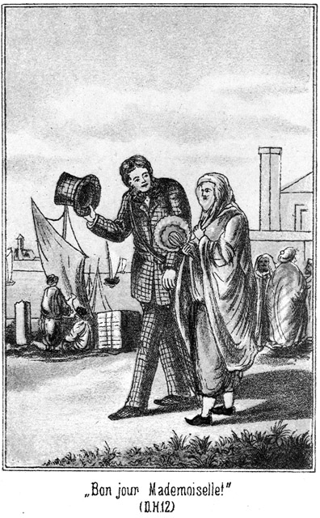»Bon jour, mademoiselle!«
»Bon jour, monsier!« antwortete sie.
»Ah, Sie sprechen Französisch?«
»Wie Sie hören!«
»Dürfen Sie dann mit einem Manne sprechen?«
Sie schien ihn durch den Schleier erstaunt zu betrachten. Dann antwortete sie zögernd:
»Nein.«
»Warum sprechen Sie da mit mir?«
»Weil Sie mir gefallen.«
»Sapperment! Nicht übel!«
»O nein! Uebel sind Sie nicht.«
»Richtig!«
»Aber hier ist es so auffällig, wenn ich mit Ihnen spreche!«
»Das stimmt. Eine Haremsdame – – Sie gehören doch in einen Harem?«
»Natürlich!« antwortete sie, nachdem sie ihn abermals einige Augenblicke lang betrachtet hatte.
»Hm! Giebt es nicht einen Ort, an welchem wir besser sprechen können als hier?«
»Wünschen Sie das denn, Monsieur?«
»Von ganzem Herzen.«
»Nun so will ich Ihnen etwas sagen. Sie warten hier, bis ich ein großes Stück am Ufer hin bin, und winken dann einem dieser Kahnführer zu. Er wird Sie einsteigen lassen, und Sie sagen ihm das Wort »Karthago.«
»Wozu?«
»Die Ruinen von Karthago liegen da drüben. Dorthin wollen wir, denn dort sind wir unbeachtet.«
»Herrlich! Göttlich!«
»Dann, wenn der Mann da rudert, wo ich am Ufer gehe, zeigen Sie auf mich und sagen zu ihm »beraber almak.«
»Was heißt das?«
»Mitnehmen. Er wird anlegen und mich einsteigen lassen. Dann sind wir beisammen.«
»Ja, beisammen! Verteufelt! Verteufelt! Na, laufen Sie jetzt hin! Ich werde meine Sache machen. Also winken und beraber almak. Schön!«
Sie ging weiter. Er bemerkte die vielen, vielen Blicke gar nicht, welche auf ihm ruhten. Er sah ihr nach und murmelte ganz entzückt:
»Ein Stelldichein in den Ruinen von Karthago! Das werden die Karthager auch nicht vermuthet haben, daß ich in ihren Ruinen eine Entführung anzettele! Na, los?«
Er winkte einen Schiffer und stieg ein. Als er ihm das Wort »Karthago« sagte, nickte der Mann und warf einen schlauen, verständnißvollen Blick auf das voranschreitende Mädchen. Er schien in diese Art von Geheimniß sehr tief eingeweiht zu sein.
»Beraber almak!« befahl der Lord, als es Zeit dazu war, diesen türkischen Befehl auszusprechen.
Der Schiffer lenkte an das Ufer, und die Schöne wurde aufgenommen. Sie setzte sich dem Lord gegenüber.
Nun ging es in sehr langsamem Tempo quer über den Binnensee hinüber.
»Sie sind wohl nicht Türke?« fragte sie sehr unschuldig.
»Nein. Ich bin Engländer.«
»O Allah! Ein Giaur!«
»Bitte, erschrecken Sie nicht darüber. Wir Christen sind keine Menschenfresser.«
»Nicht? Das beruhigt mich,« sagte sie kindlich ernst.
»Ich bin vielmehr bereit, Ihnen alles Gute zu erweisen. Sie dürfen mir nur Gelegenheit dazu geben.«
»O Allah, die könnte ich Ihnen geben.«
»Vorher aber müssen Sie mir eine Bitte erfüllen.«
»Welche? Sprechen Sie!«
»Gewähren Sie mir die Seligkeit, Ihr schönes Angesicht sehen zu dürfen. Sie sehen ja das meinige auch!«
»Wissen Sie nicht, daß dies verboten ist?«
»Ich weiß es. – Aber wir sind ja ganz allein.«
»Der Schiffer – – –!«
»O, der ist so stumm wie die Fische in seinem Wasser hier.«
»Nun, ich will es wagen! Sie sind ein Mann, dem man einen solchen Gefallen thun kann.«
Sie zog den Gesichtsschleier auseinander. Er erhob das neugierige Auge. Sie war nicht übel. Die dunkeln, herausfordernden Augen waren zwar an ihren Lidern Etwas geröthet, wie man es bei Frauenzimmern, welche der Liebe huldigen, so oft findet, aber das bemerkte der Engländer gar nicht. Der Mund war voll, die Wange weich gerundet; die Züge hatten etwas angenehm Schmachtendes. Das Mädchen gefiel ihm außerordentlich.
»Nun, sind Sie zufrieden?« fragte sie.
»Ja, sehr,« antwortete er in aller Aufrichtigkeit.
»Nun, dann kann ich mich wieder verschleiern.«
Sie erhob die Hand, um die Hülle wieder vorzuziehen, aber da fiel er schnell ein.
»Nein, bitte! Lassen Sie das Gesicht frei!«
»Wozu? Das ist doch genug.«
»Nein, das ist nicht genug! Sie sind so schön, daß man sich nicht so schnell und leicht satt sehen kann.«
»Ach so! Und satt wollen Sie wohl werden?«
»Das versteht sich!«
»Was haben Sie aber davon?«
»Sonderbare Frage! Was habe ich davon, wenn ich dürste und trinke dann so viel, daß ich satt bin? Ich habe eben keine Schmerzen mehr im Magen!«
»Und Schmerzen haben Sie jetzt wohl?«
»Und ob! Fürchterliche!«
»Im Magen?«
»Etwas weiter oben – im Herzen.«
»Und wer macht Ihnen diese Schmerzen?«
»Sie!«
»Davon weiß ich nichts. Ich bin ja so freundlich und nachgiebig gewesen, wie ich es eigentlich gar nicht sein darf.«
»Grad diese Freundlichkeit ist es, sie macht mir Schmerzen; sie hat einen riesigen Appetit in mir erweckt, einen furchtbaren Hunger und Durst. Wenn ich da nicht essen oder trinken darf, so verschmachte ich wie ein Fisch, den man auf das Trockene, in die Sonne gelegt hat.«
»Nun, so essen und trinken Sie!«
»Hm! Das ist bald gesagt. Dazu müßte der Tisch gedeckt sein.«
»Ist er es denn nicht?«
»Es scheint fast so, doch weiß ich nicht, ob ich auch wirklich zulangen darf.«
»Wer will Sie hindern?«
»Das fällt mir gar nicht ein. Greifen Sie getrost zu. Nur sehe ich wirklich nichts, was Sie genießen könnten.«
Sie blickte sich in scherzhafter Weise um. Er antwortete:
»Desto mehr aber sehe ich.«
»Was denn?«
»Sie!«
»Was? Mich? Mich wollen Sie essen und trinken?«
»Am Allerliebsten gleich ganz verschlingen.«
»Menschenfresser!« rief sie, indem sie sich den Anschein gab, als ob sie schaudere.
»Halten Sie sich etwa für nicht appetitlich genug?«
»Darüber habe ich selbst kein Urtheil.«
»Nun, so habe ich es. Sie sind so appetitlich, so sauber, so allerliebst, daß mein Herz eine einzige große, ungeheure Wunde ist, seit ich Sie gesehen habe.«
»O Allah! Bin ich so gefährlich?«
»Ja, höchst gefährlich. Ich verlasse Sie nicht eher, als bis Sie mir das Versprechen gegeben haben, diese Wunde zu heilen.«
»Das werde ich gern thun, denn Sie dauern mich!«
»Welch ein Glück! Ich habe es Ihnen aber auch sofort angesehen, daß Sie ein gutes, mitleidiges Herz besitzen.«
»Das ist richtig. Nur weiß ich nicht, wie ich es anfangen soll, Sie zu heilen. Vielleicht – ein Pflaster?«
»O wehe!«
»Eine Salbe? Die ist gelinder.«
»Auch nicht.«
»Was denn? Etwa ein – – Klystier?«
»Donnerwetter! Was fällt Ihnen ein!«
»So nennen Sie mir die Arznei selbst, mit deren Hilfe Ihr wundes Herz geheilt werden kann!«
»Es ist die Liebe.«
»Die Liebe? Ah! Ist das wahr?«
»Ganz gewiß!«
»Nun, so lieben Sie doch!«
»Das thue ich ja bereits; aber meine Liebe kann mir doch keine Linderung bringen. Meine Liebe ist es ja gerade, welche mir die Wunde geschlagen oder gebissen hat!«
»Welche Liebe meinen Sie denn?«
»Die Ihrige.«
»O Ihr heiligen Propheten und Kalifen! Meine Liebe wollen Sie haben? Die meinige?«
»Ja, gewiß!«
»Und die wird Sie heilen?«
»Natürlich! Ich werde so gesund sein wie ein Vogel in der Luft, wie ein Fisch im Wasser. In Ihrer Liebe würde ich schwimmen und fliegen und gar nicht mehr an die Wunde denken, welche Sie mir beigebracht haben.«
»Dann freilich bleiben Sie ungeheilt, Monsieur.«
»Sapperment! Warum? Weshalb?«
»Weil ich Ihnen meine Liebe nicht geben kann!«
»Verteufelt, verteufelt! Ja, ich werde Ihnen wohl nicht jung und hübsch genug sein.«
»Darnach frage ich nicht. Sie sind in den besten Jahren. Ich frage nicht nach Schönheit, sondern nach dem Herzen und nach dem Gemüthe. Ist das gut, so ist alles Andere auch gut.«
»Prächtig, prächtig! Hören Sie, Sie sind nicht nur ein hübsches, sondern auch ein höchst verständiges Kind. Ich gefalle Ihnen also wohl so leidlich?«
»Ja, Sie sind nicht übel.«
»Nun, warum können Sie mir denn da nicht Ihre Liebe schenken, die ich so nöthig habe?«
»Das können Sie sich doch denken!«
»Hm! Haben Sie etwa schon einen Mann?«
»Nein.«
»Einen Verlobten oder Geliebten?«
»Auch nicht.«
»Dann giebt es ja gar kein Hinderniß, mir Ihr Herz zu schenken. Ich wenigstens sehe keins.«
»O doch! Wissen Sie nicht, daß uns die Liebe verboten ist?«
»Ich weiß es; aber dieses Verbot ist ein sehr großer Unsinn. Sagen Sie einmal, ist Ihr Harem groß?«
»Ja.«
»Wie Viele sind drin?«
»Zwölf.«
»Wer ist der Besitzer?«
»Mein Vater.«
»Nun, so hat dieser alte Mann der Schönheiten genug, wenn er Elf behält. Sie werden sich doch nicht etwa in ihn verlieben sollen! Sie sagen, daß ich nicht ganz übel sei. Ich gefalle Ihnen also. Da begreife ich nicht, warum Sie sich nicht vollends an mich verschameriren sollen.«
»Das würde ich auch thun, aber es giebt da leider ein unüberwindliches Hinderniß. Sie sind ein Engländer.«
»Ja, gewiß.«
»Und ich bin Türkin.«
»Das ist ja grad sehr gut. Wären Sie eine Engländerin, so fiele es mir ja gar nicht ein, mich in Sie zu verlieben. Ich will eine Türkin haben, partout eine Türkin.«
»Da aber legt sich das große Hinderniß dazwischen, nämlich der Glaube.«
»Der? Was hat denn der mit der Liebe zu thun?«
»Sehr viel!«
»Nur in dem Sinne, daß man an Denjenigen glaubt, den man eben liebt.«
»Nein. Mein Glaube verbietet mir, einen Christen, einen Ungläubigen zu lieben.«
»Hören Sie, das ist Unsinn! Dieses Hinderniß ist lächerlich klein; es läßt sich sehr leicht umgehen oder überspringen.«
»Wieso?«
»Ich liebe Sie christlich und Sie lieben mich muhammedanisch.«
»Ah, daran habe ich nicht gedacht!« sagte sie im Tone des Erstaunens, welches allerdings ein künstliches war.
»Nicht wahr? Ist das Mittel gut?«
»Ganz übel scheint es allerdings nicht zu sein.«
»Na, sehen Sie. Wenn Sie diesem Rathe folgen, so ist Alles gut. Wir bleiben Beide bei unserem ursprünglichen Glauben und haben uns dabei so lieb, daß die Engel im Himmel ihre Freude daran erleben sollen.«
»Das – – würde angehen – vielleicht,« sagte sie in einem sehr nachdenklichen Tone.
»Vielleicht? Warum nur vielleicht?«
»Weil es sehr verschiedene Arten von Liebe giebt, und ich weiß nicht, welche Sie meinen.«
»Na, welche soll ich denn meinen! Die richtige natürlich.«
»O, eine jede Liebe ist die richtige. Da giebt es zum Beispiel die Liebe der Alten zu den Jungen – –«
»Donnerwetter! Die meine ich doch nicht etwa!«
»Oder der Jungen zu den Alten.«
»Auch die nicht.«
»Der Geschwister zu einander?«
»Nein.«
»Der Freunde?«
»Nicht. Das ist keine Liebe, sondern Freundschaft.«
»Also die Liebe des Mannes zur Frau?«
»Ja, das ist der wahre Jacob. Diese meine ich.«
»So wünschen Sie, daß ich Ihre Frau werde?«
»Ja, das wäre – – hm! Verdammt!«
»Nun, bitte, antworten Sie!«
»Mädchen, Mädchen! Muß denn gleich geheirathet sein?«
»Gleich? Nein, das ist nicht nöthig. Das kann ja überhaupt gar nicht so rasch gehen.«
»Richtig, sehr richtig! Ihr Weibsleute denkt immer gleich an die Hochzeit und an den Polterabend, wenn man von Liebe zu Euch spricht. Du scheinst mir verständiger zu sein. Wir lieben uns und warten ganz einfach ab, was sich daraus entwickeln wird. Aber da ist die Fahrt zu Ende. Was nun?«
»Wir steigen aus und gehen spazieren.«
»Herrlich! Jetzt muß dieser Mann bezahlt werden. Wie viel hat er zu verlangen? Ich kann ihn nicht fragen, da ich nicht türkisch verstehe.«
»Geben Sie ihm fünf Francs.«
»Francs? Giebt es hier auch französisches Geld?«
»Hier in der Hauptstadt gelten alle Münzen.«
Der Engländer zog den Beutel und gab dem Ruderer die angegebene Summe.
» Merci, monsieur!« meinte der Mann sehr freundlich und setzte französisch hinzu: »Amüsiren Sie sich gut, damit Ihr verwundetes Herz geheilt werde.«
Der Lord erschrak, antwortete aber nichts und stieg mit dem Mädchen an das Land. Erst als sie sich eine Strecke entfernt hatten, sagte er ärgerlich:
»Dieser Kerl spricht also auch französisch!«
»Die Gondelführer verstehen alle französisch und italienisch, da sie sehr viele Fremde bedienen.«
»So hat er verstanden, was ich zu Ihnen sagte?«
»Alles.«
»Verteufelt, verteufelt! Warum haben Sie mich nicht darauf aufmerksam gemacht?«
»Das hätte er doch gehört.«
»Richtig. Na, ich mache mir nichts daraus; aber Ihnen kann es Ungelegenheiten machen.«
»O nein; er kennt mich ja nicht.«
Aber es war das gerade Gegentheil der Fall; dies hätte der Engländer sicher vermuthet, wenn er den außerordentlich pfiffigen Gedichtsausdruck gesehen hätte, mit welchem der Ruderer ihnen nachblickte, dabei in den Bart murmelnd:
»In das Netz gegangen! Dieser Engländer wird für diesen Lockvogel zu jeder Dummheit bereit sein!«
Diesseits des Wassers war die Gegend nicht sehr belebt. Man erblickte nur von Weitem hier und da einen einsamen Wanderer, welcher in den Ruinen Karthago's, der einstigen mächtigen Stadt, umherstrich. Darum wagte es der Lord, die Hand seiner reizenden Begleiterin zu ergreifen. Sie ließ ihm dieselbe; ja er fühlte sogar, daß sie ihm die seinige liebevoll drückte. Das machte ihn außerordentlich glücklich und versetzte ihn in eine Laune, in welcher er zu jedem Opfer bereit war.
»Wohin nun also?« fragt? er.
»Sehen Sie da drüben die Seuben? An ihrem Fuße befindet sich eine kleine Hütte, wo wir eintreten können.«
»Wem gehört sie?«
»Einem sehr guten Bekannten von mir.«
»Alle Wetter! Darf der denn sehen, daß Sie mit einem Fremden sprechen?«
»Wenn er es aber Ihrem Vater sagt!«
»O nein, das thut er nicht. Er ist treu und verschwiegen und wenn Sie ihm ein gutes Bakschisch geben, so geht er für Sie durch das Feuer.«
»Nun, durch das Feuer braucht er nicht zu gehen, wenn er nur überhaupt fortgeht, so lange wir bei ihm sind. Wie aber haben Sie denn seine Bekanntschaft gemacht?«
»Er war meines Vaters Sklave, wurde aber später zum Lohne seiner Treue frei gegeben.«
»Hat er etwa den Harem bedient?«
»Ja.«
»So ist er ein Eunuch, ein Verschnittener?«
»Ja. Sie werden es ihm auch sogleich ansehen, daß er kein eigentlicher Mann ist. Dort liegt die Hütte. Warten Sie hier ein Wenig. Ich will erst einmal hingehen, um nachzusehen, ob vielleicht Fremde dort sind.«
Sie ging und er wartete.
»Ein famoses Kind!« sagte er zu sich, ihr nachblickend. »Dieser Gang, dieser Beine, diese Hüften! Sapperment, diese werde ich entführen! Wie werden sich diese Beiden ärgern, Normann, und Wallert, wenn ich ohne ihre Hilfe so einen herrlichen Vogel aus dem Harem geschafft habe!«
Er lehnte sich an einen gewaltigen, seit vielen Jahrhunderten hier liegenden Steinblock und behielt die Hütte im Auge. Das Mädchen war eingetreten. Es währte eine ziemliche Weile, ehe er sie wieder sah. Sie kam mit einem zweiten Mädchen und einer männlichen Person heraus und deutete mit der Hand nach dem Lorde. Er wurde sehr angelegentlich betrachtet und glaubte ein kurzes aber kräftiges Lachen des Mannes zu hören.
»Der freut sich, daß ich komme,« dachte er. »Na, dafür soll er ein gutes Bakschisch haben, ein sehr nobles Trinkgeld!«
Jetzt kam seine Begleiterin zurück. Sie hielt das Gesicht entblößt und erschien dem Lord noch weit schöner als vorher. Der Grund davon war das unterdrückte Lachen, welches sie nur mit Mühe zurückhalten konnte.
»Nun, wie steht es, schönes Kind?^
»Wir sind sicher. Kommen Sie.«
»Das war der Verschnittene?«
»Ja.«
»Aber es war ja ein Frauenzimmer bei ihm!«
»Das braucht Ihnen keine Sorge einzuflößen. Es ist meine Schwester, meine Lieblingsschwester, welche ebenso wie ich einen Spaziergang nach den Ruinen gemacht hat.«
»Ah! Schwester! Ist sie hübsch?«
»Sogar schön. Viel schöner als ich.«
»Verteufelt, verteufelt! Jung?«
»Zwei Jahre jünger als ich.«
»Ah! Hat sie einen Mann oder Geliebten?«
»Gut! Schön! Kommen Sie; kommen Sie!«
Er ergriff sie bei der Hand und zog sie fort. Er war wie elektrisirt. Zwei Haremsdamen anstatt nur einer! Das war ja ein Zufall, ein Ereigniß, von welchem er später in London mit großem Stolze erzählen konnte! Und wenn es ihm gelang, alle Beide zu entführen! Er sagte nichts, aber er hätte seine Begleiterin vor Wonne umarmen mögen.
Die Hütte war aus rohen Steinen aufgeführt und machte keineswegs einen anheimelnden Eindruck. Vor der Thür stand der Mann, ein langer, hagerer, knochiger Kerl mit schief liegenden Augen und in eine Kleidung gehüllt, für welche der Ausdruck Lumpen am bezeichnendsten gewesen wäre. Sein Aussehen war gar nicht Vertrauen erweckend, zumal in dem Stricke, welcher ihm als Gürtel diente, zwei lange Messer steckten; doch kümmerte das den Lord nicht. Diesem fiel es sogar nicht einmal auf, daß der Mensch, der doch ein Verschnittener sein sollte, so lang und hager war, die allergrößte Seltenheit bei einem Eunuchen.
»Sallam aaleikum!« grüßte er, sich höchst demüthig vor dem Lorde verneigend.
»Guten Tag!« antwortete dieser französisch. »Da!«
Er zog ein Goldstück aus seiner wohlgefüllten Börse und gab es ihm. Das Gesicht des Menschen grinste jetzt förmlich vor Vergnügen. Er machte eine noch viel tiefere Vorbeugung als vorher und sagte, jetzt französisch:
»Tausend Dank, Monsieur! Treten Sie ein in meine arme Hütte. Ich bin Ihr Beschützer und werde wachen, daß kein Mensch Sie stören soll!«
Der Brite mußte sich tief bücken, um durch die niedrige Oeffnung zu gelangen. Das Innere der Spelunke bestand aus einem einzigen viereckigen Raume, welcher nichts enthielt als eine lange Strohmatte, auf welche zur Verschönerung ein alter Teppich lag. In einer Ecke sah man ein paar zerbrochene Töpfe und andere schmutzige Geschirrsachen, und in der anderen Ecke standen einige Flaschen, bei ihnen ein Weinglas, welches mehrere Sprünge hatte.
Auf dem Teppiche saß die zweite Haremsdame. Vorhin, als sie vor der Hütte stand, war sie verhüllt gewesen, jetzt aber hatte sie die Hülle abgelegt. Der dünne Stoff, welchen sie trug, ließ fast ihren ganzen Körper durchscheinen. Hätte der Lord sie in London so gesehen, so würde es ihm vor ihr gegraut haben, denn er hätte sofort gewußt, welcher Frauenklasse sie angehören, hier aber in Tunis machte sie auf ihn einen ganz anderen Eindruck. Das Fremde wirkte.
Sie begrüßte ihn in französischer Sprache:
»Meine Schwester hat mir von Ihnen erzählt. Eigentlich dürfen wir uns von Keinem sehen lassen und auch mit Keinem sprechen, aber meine Schwester hat mich gebeten, eine Ausnahme zu machen, denn sie liebt Sie.«
»Sie liebt mich?« fragte er, freudig überrascht.
»Ja. Sie hat es mir gestanden.«
»Verteufelt, verteufelt! Ist das wahr, he, wie?«
Diese Frage war an seine erste Bekanntschaft gerichtet.
»Ja,« antwortete sie in gut gespielter Verschämtheit.
Dabei schlang sie die Arme um ihn und drückte ihren Kopf an seine Brust.
»Mädchen, machst Du denn da keine Lüge?«
»Nein, o nein. Ich schwöre es Dir bei Allah und seinem Propheten, daß ich Dich liebe, obgleich mich noch kein Mann hat anrühren dürfen.«
»Donnerwetter! Nicht übel! Ich bin Dir auch gut.«
»So komm und küsse mich!«
Sie hielt ihm den Mund entgegen. Das kam ihm denn doch etwas »spanisch« vor; er sagte abwehrend:
»Na, na, nicht gleich zu hitzig, Kind! Es ist doch sonderbar. Man braucht Einer nur zu sagen, daß man ihr gut ist, so will sie gleich geherzt, gedrückt, gequetscht und geküßt sein. So sind sie Alle. Alle mit einander, in England ebenso wie in Tunis. Kind, laß mich jetzt damit noch in Ruhe, und sag mir lieber, wohin ich mich setzen soll. Du siehst ja, daß ich hier nicht stehen kann. Ich stoße sonst mit dem Kopfe die Decke und das ganze Haus ein.«
Wohin Du Dich setzen sollst? Welche Frage! Natürlich zwischen uns, hier auf den Teppich.«
»Da her? Na, Kinder, solch ein orientalisches Sitzen bin ich eigentlich nicht gewöhnt; aber ich will es Euch zu Gefallen thun, wenn Ihr mir Etwas versprecht.«
»Was?«
»Ihr dürft es mir nicht gar zu heiß machen.«
»Habe keine Sorge! Ich verlange nicht noch einmal, daß Du mich küssest.«
Das klang schmollend, fast beleidigt, so daß er sich beeilte, zu antworten:
»Na, na, nur nicht Alles übel nehmen. Wenn Du gern einen Schmatz haben willst, so sollst Du einen bekommen; aber das darf doch nicht gleich losgehen, wie ein Schnellfeuer bei einem Reiterangriff!«
Er legte Hut, Regenschirm und Fernrohr ab und setzte sich auf den Teppich, nahe an seine zweite Bekanntschaft heran, so daß die Erste auch noch Platz finden möge. Diese aber machte noch keine Miene, sich zu setzen. Sie blickte erst noch einmal zur Thür hinaus, dann sagte sie:
»Weißt Du, daß es hier in Tunis Sitte ist, einen lieben Gast zu bewillkommnen?«
»Das ist überall Sitte, und Ihr habt es ja auch schon gethan.«
»Ganz noch nicht. Den Willkommentrunk haben wir Dir noch nicht gereicht.«
»Ach so! Einen Trunk! Was giebt es denn?«
»Wasser der Liebe.«
»Donnerwetter! Das habe ich noch nicht getrunken. Wo habt Ihr es denn?«
»Da in den Flaschen. Willst Du eine haben, damit wir mit Dir trinken dürfen?«
»Ja, freilich.«
»Aber der Besitzer dieser Hütte ist arm; er darf dieses Wasser der Liebe nicht umsonst geben.«
»Ach so! Ich soll einen Willkommentrunk erhalten, und ihn auch bezahlen. Gern. Was kostet dieses Liebeswasser?«
»Zehn Franken. Ist es Dir zu viel?«
»Das kann ich natürlich noch nicht sagen, da ich nicht weiß, wie es schmeckt und was es werth ist. Aber Euch zu Gefallen ist es mir auf keinen Fall zu viel.«
»So bezahle.«
»Ah! Gleich?«
»Ja.«
»Also Credit bis zum Fortgehen giebt es nicht. Gut, hier ist das Geld, kleine Hexe.«
Er gab ihr die zehn Franken, und sie brachte nun eine der Flaschen nebst dem Glase. Als sie dieses gefüllt hatte, bot sie es ihm und sagte:
»Hier, trink! Allah erhalte Dich recht lange unserer Liebe!«
»Trinke nur vorher.«
Sie setzte an und leerte das Glas in einem Zuge.
»Nicht übel!« sagte er erstaunt. »Du hast einen sehr guten Zug, fast so wie mein Steuermann. Gieb Deiner Schwester auch.«
»Nein; erst kommst Du. Du bist der Gast.«
»Na, so gieb her.«
Er führte das wieder gefüllte Glas an sein kleines Stumpfnäschen. Seine Augen zogen sich zusammen, und es kam ihm an, als ob er niesen müsse. Doch setzte er das Glas an und that einen Zug. Die Folge davon war ein ganz und gar unbeschreibliches Gesicht. Kaum war der Schluck hinab, so schüttelte es ihn am ganzen Körper; er begann in einem Athem zu husten und zu niesen; es war ein Ausbruch, den man hätte vulkanisch nennen mögen. Wahrend ihm das Wasser in hellen Strömen über die Wangen lief, lachten die beiden Mädchen herzlich über diese Wirkung ihres Willkommens.
»Was habt Ihr zu – – abzieeh! – – zu lachen, Ihr Kobolde!« zürnte er. »Dieses verteufelte – – abzieeh! – verteufelte Zeug brennt ja – – abzieeh ja wie die Hölle! Und das nennt – – abzieeh – das nennt Ihr einen Willkommen? Aus was ist denn dieser Trank gemacht?«
»Aus Spiritus.«
»Das merke ich! Und aus was für welchem! Herrgott! Aber was ist drin in dem Spiritus?«
»Apfelsinenschalen, Koloquinthen und Knoblauch.«
»Koloqu – – und Knobl – – Donnerwetter, seid Ihr verrückt? Dann ist es freilich kein Wunder, daß es mich zerreißen will! Und diesen Schnaps trinkst Du wie ein alter Wachtmeister?«
»Meine Schwester auch. Schau!«
Sie hatte das Glas der Schwester gegeben, welche es auch in einem Zuge leerte.
»Mädchen! Halte ein! Du vergiftest Dich ja!«
»O nein! Das schmeckt gut.«
»Na meinetwegen! Euer Schlund muß beschaffen sein wie ein alter Kanonenstiefelschaft! Und das nennt Ihr Wasser der Liebe!«
»So heißt es!«
»Koboquinthen und Knoblauch! Zehn Francs!«
»Ist es Dir zu theuer?«
»Na, Euretwegen nicht. Aber dürft Ihr als Muhammedanerinnen denn solches Zeug trinken?«
»Ja, es ist kein Wein.«
»Da wäre Muhammed doch gescheidter gewesen, wenn er Euch den Wein erlaubt und diesen Höllentrank verboten hätte! Wunderbar! So schöne, zarte Mädels und bringen dieses Fegefeuer hinunter. So aber ist's im Orient; da ist eben Alles anders, und man darf sich über gar nichts wundern. Na, setze Dich nun.«
»Sie nahm an seiner anderen Seite Platz und da der Teppich nicht sehr lang, war, saßen sie sehr eng nebeneinander. Dazu kam, daß die Eine sich an ihn schmiegte und die Andere diesem Beispiele folgte. Es wurde ihm wirklich warm. Er hatte es ja nicht auf eine Liebesscene abgesehen. Ihm lag nur daran, eine Haremsdame zu finden, welche er entführen könne.
»Na, Kinder,« sagte er, »zutraulich seid Ihr, das ist sehr richtig. Aber wie steht es denn? Ich habe erst mit dieser da von Liebe gesprochen.«
»Bei mir ist das gar nicht nöthig!« meinte die Zweite.
»So? Warum nicht?«
»Wenn meine Schwester Dich liebt, so versteht es sich ja ganz von selbst, daß ich Dich auch liebe.«
»Das ist kein übler Grundsatz! Bei mir daheim pflegen die Schwestern eifersüchtig zu sein. Bei Euch aber könnte Einer wohl gleich zwanzig Schwestern heirathen?«
»Ganz gut.«
»Das ist eben wieder der Orient! Also Ihr habt mich Beide lieb. Was ist da zu machen?«
»Heirathe uns!«
»Schon? Donnerwetter! Noch nicht geküßt und schon heirathen! Ich will Euch ganz aufrichtig sagen, daß ich für das schnelle Heirathen gar nicht eingenommen bin. Und für das leichte Heirathen auch nicht. Ich wünsche, daß es mir Mühe macht, eine Frau zu bekommen.«
»Also sie soll Dich nicht lieb haben? Du willst Dir ihre Liebe erringen, erkämpfen?«
*
Na, das nicht gerade. Lieb haben soll sie mich. Aber ich wünsche, daß ich sie nicht kriegen soll.«
»Der Vater soll dagegen sein?«
»Ja. Das Mädchen soll ganz närrisch auf mich sein, der Vater aber das Gegentheil. Ich will sie nämlich aus dem Harem entführen.«
»Entführen!« kicherte sie, und die Andere stimmte mit ein. »Also darum frugst Du mich wohl, ob ich in einem Harem sei?«
»Ja.«
»Würdest Du mich entführen?«
»Das weiß ich noch nicht.«
»Ich denke. Du liebst mich!«
»Ja, ich bin Dir freilich gut; aber das ist nicht die Hauptsache. Wenn ich Dich bekommen kann, mag ich Dich nicht haben. Es muß schwer sein, sehr schwer!«
Die beiden Mädchen blickten sich an. Sie kämpften mit dem Lachen, welches gewaltig herausplatzen wollte, doch gelang es ihnen, es zu unterdrücken.
»Es ist bei uns schwer, sehr schwer,« antwortete die Eine.
»Wirklich? Inwiefern denn sehr schwer?«
»Wir sind eingeschlossen.«
»Das thut nichts, gar nichts. Uebrigens sehe ich nichts davon, daß Ihr eingeschlossen seid.«
»Inwiefern?«
»Nun, Ihr lauft ja hier ganz frei herum!«
»O, das ist nur zum Scheine. Wir werden von Weitem sehr scharf beaufsichtigt.«
»Auch das thut nichts. Ich brauche Euch nur nach meiner Yacht zu führen, so ist die Entführung fertig.«
Das geht nicht so leicht, wie Du denkst. Der Bey von Tunis will uns kaufen; wir sollen seine Frauen werden. Wir werden bewacht, ohne daß Du es bemerkst. Du würdest mit uns Dein Schiff nicht erreichen.«
»Nicht? Hm, das gefällt mir.«
»Ja, wir könnten nur aus unserer Wohnung in der Stadt entführt werden. Aber unser Vater ist sehr wachsam und streng. Er würde Dich tödten, wenn er Dich dabei erwischte.«
»Tödten? Schön, sehr schön! Das gefällt mir!«
»Und sodann ist noch ein Hinderniß vorhanden. Ich lasse mich nämlich nicht allein entführen.«
»Nicht? Warum nicht? Soll ich etwa alle Zwölf, von denen Du sprachst fortschaffen?«
»Nein, denn neun davon sind Weiber und auch alt.«
»Da mögen sie bleiben, wo sie sind.«
»Aber wir drei Andern, wir sind Schwestern. Wir haben uns lieb. Wir haben uns gegenseitig zugeschworen, uns nicht zu verlassen. Wer nicht gleich alle Drei nimmt, der bekommt gar keine.
»Verteufelt, verteufelt! Alle drei!« schmunzelte der Lord. »Ihr seiet ja die richtigen Wetterhexen!«
»Nicht wahr, diese Bedingung ist schwierig, so schwierig, daß Du nun von mir gar nichts wissen willst?«
»Was Du denkst! Grad diese Bedingung ist mir die allerliebste. Aber wie steht es mit der dritten Schwester? Ist sie jung?«
»Sie ist die jüngste von uns.«
»Und schön?«
»Sie ist ebenso die Schönste von uns.«
»Gut, gut, ausgezeichnet! Also ich habe Euch alle Drei.«
»Giebst Du uns Dein Wort und Deine Hand darauf?«
»Ja. Hier ist Wort und Hand. Aber, Kinder, sagt mir nun auch, warum Ihr Euch überhaupt entführen lassen wollt. Eigentlich kommt mir Eure Bereitwilligkeit doch ein Bischen verdächtig vor.«
»Wie kannst Du das sagen! Der erste und eigentliche Grund ist der, daß wir Dich lieben.«
»Das geht, das lasse ich gelten. Weiter!«
»Zweitens ist unser Vater ein Tyrann.«
»Der Esel!«
»Er giebt uns zu wenig zu essen.«
»Na, sehr verhungert seht Ihr nicht aus!«
»Nichts zu trinken!«
»Und doch trinkt Ihr das Wasser der Liebe!«
»Heimlich, ganz heimlich nur!«
»Ach so! Und drittens können wir uns mit seinen Weibern nicht vertragen. Sie sind alt und zänkisch und klatschsüchtig. Sie hassen uns, weil wir jung und hübsch sind. Darum thun sie uns so viel Aerger an, wie ihnen nur möglich ist.«
»Gut! Also fort von den alten Nachthauben!«
»Und endlich gefällt es uns nicht, daß wir den Bey von Tunis heirathen sollen.«
»Wie? Das gefällt Euch nicht? Tausend Andere würden sich darnach sehnen. Er ist ja der Reichste, Größte und Vornehmste im ganzen Lande.«
»Ja, bis heut waren wir damit ganz einverstanden. Nun aber sind wir es nicht mehr.«
»Warum nicht mehr?«
»Weil wir Dich gesehen haben.«
»Macht keine Faxen!«
»Wir lieben Dich.«
»Ist das wahr, he, wie?«
»Wir haben es Dir ja bereits zugeschworen.«
»Das ist für mich sehr erfreulich. Aber, Kinder, sagt mir doch zunächst einmal Eure Namen. Ich weiß ja gar nicht, wie ich Euch nennen und rufen soll.«
»Ah, warum nicht?«
»Es ist uns verboten.«
»Unsinn! Euch Weibern ist Vieles verboten, was Ihr dennoch thut! Ja, Ihr thut es gewöhnlich nur deshalb, weil es eben verboten ist.«
»Nenne uns lieber so, wie Du willst!«
»Das ist romantisch, und darum gefällt es mir. Also will ich darauf eingehen und Euch die Namen geben. Ich sitze da zwischen Euch und komme mir dabei vor wie der Erzvater Jacob, welcher ja auch zwei Schwestern mit sich in die Heimath nahm. Wie diese beiden Schwestern sollt Ihr heißen. Du rechts Rachel und Du links Lea. Seid Ihr damit einverstanden?«
»Ja,« antworteten Beide unter einem herzlichen Lachen.
Er ahnte nicht, daß er gerade ihre richtigen, eigentlichen Namen getroffen hatte. Sie waren Jüdinnen, was sie ihm aber nicht verrathen wollten.
»Schön!« fuhr er fort. »Nun laßt uns also einmal recht ernsthaft von unserem Vorhaben sprechen. Habt Ihr vielleicht die Ansicht, daß ich Euch ganz mit mir nehmen soll?«
»Ja, natürlich.«
»Und Euch dann heirathen?«
»Nun, etwa nicht?«
»Kinder, das geht nicht. Ich darf als Christ keine Türkin heirathen, und Zwei darf ich vollends gar nicht heirathen. Das wäre eine schöne Geschichte. Also merkt wohl auf: Entführen will ich Euch recht gern und mit dem größten Vergnügen, heirathen aber kann ich Euch nicht.«
»Das schadet nichts!«
»Wie?« fragte er erstaunt. »Das schadet nichts?«
»Nein, gar nichts.«
»Aber, Kinder, das ist doch wunderbar! Ich denke, daß Ihr vor Entsetzen ganz außer Euch gerathen werdet, und nun sagt Ihr in aller Ruhe, daß es nichts schadet!«
»Was soll es denn schaden?«
»Wenn ich Euch nicht heirathe? Hm!«
»Es giebt doch Andere, viele Andere!«
»Donnerwetter!« platzte er heraus.
»Ist das nicht wahr?«
»Ja, wahr ist es. Also Ihr meint, daß ich Euch entführen soll, damit Andere Euch bekommen?«
»Ja.«
»Ich soll also für Andere die gebratenen Kastanien aus dem Feuer holen?«
»Willst Du nicht? Dann laß uns im Harem sitzen, oder heirathe uns.«
»Verteufelt, verteufelt! Recht habt Ihr freilich. Aber Ihr dauert mich, und ich bin einmal auf dieses Abenteuer erpicht. Ich werde Euch also entführen.«
»Wann?«
»Das bestimmt Ihr lieber selbst.«
»Bald oder später? Welches von Beiden ist Dir lieber?«
»Sehr bald. Am Allerliebsten noch heut!«
»Noch heut? Wie denkst Du, Lea?«
»Hm! Wie denkst Du, Rahel?«
»Ich denke, daß es schwierig sein wird.«
»Ja, aber möglich ist es doch.«
»Ja, wenn die Andern alle schlafen.«
»Eher nicht. Aber jetzt läßt sich darüber noch gar nichts bestimmen. Wir sind jetzt nicht daheim. Wenn wir nach Hause kommen, ist vielleicht an der Ordnung des Harems etwas geändert.«
»Was sollte da geändert sein?« fragte der Lord.
»Nun, vielleicht erhalten die Alten den Besuch anderer Haremsfrauen. Dann wäre die Entführung unmöglich.«
»Ach so! Dann rathe ich Euch, nach Hause zu gehen und Euch zu erkundigen.«
»Das ist das Allerbeste. Aber wie können wir Dir Nachricht geben?«
»Das weiß ich nicht. Das müßt Ihr wissen.«
»Du hast Recht. O, wenn Du doch unsern Vater besuchen könntest. Dann ließ sich Vieles machen.«
»Empfängt er denn keine Besuche?«
»Sogar sehr oft. Aber leider liebt er die Ausländer nicht, und die Engländer am Allerwenigsten.«
»Da ist er der größte Esel, den es geben kann.«
»Ja sehr politisch ist unser Vater nicht – aber geizig, sehr geizig und das ist vielleicht der Punkt, an welchem Du ihn anfassen könntest.«
»Wieso?«
»Du müßtest ihm einiges Geld zuwenden.«
»Ein Backschisch geben?«
»O nein, nein! Ein Backschisch giebt man nur einer untergeordneten Person. Damit würdest Du ihn so beleidigen und erzürnen, daß unser Plan für immer und ewig unausführbar sein würde.«
»So wollen wir es unterlassen. Was ist denn eigentlich dieser alte Isegrimm?«
»Juwelenhändler.«
»Sapperment! Also reich?«
»Steinreich.«
»Hm! Hat er einen Laden, so daß man ungenirt zu ihm gehen kann?«
»Nein. Das ist ja eben der leidige Umstand. Er hat sich vom Geschäft zurückgezogen. Er kauft und verkauft nur noch aus reiner Liebhaberei. Viele von Denen, welche zu ihm kommen, werden fortgewiesen. Er zeigt keinem Menschen seine Schätze, seine Kostbarkeiten. Er thut ganz arm. Er bringt nur wenige und einzelne Sachen. Das sind aber stets Seltenheiten. Wer das kennt und versteht, der ist sein Mann.«
»Hm! Auch ich liebe die Raritäten!«
»Wolltest Du es versuchen?«
»Ja.«
»Aber solche Seltenheiten sind sehr theuer!«
»Ein Königreich werden sie doch nicht kosten.«
»So merke Dir! Du mußt ihn bei dieser seiner schwachen Seite anfassen; Du darfst nicht handeln und feilschen; dadurch gewinnst Du seine Achtung und Theilnahme. Vielleicht ladet er Dich gar ein, mit in den Hof zu gehen und den Kaffee zu trinken.«
»Ist das so eine Auszeichnung?«
»Ja. Er thut das höchst selten; mit einem Franken hat er es überhaupt noch nie gethan. Erhältst Du aber diese Einladung, so haben wir gewonnen.«
»Ah! Wieso?«
»Wir können Dir dann mittheilen, wie Du uns aus dem Harem bringen kannst. Nämlich hinter dem Platze, an welchem der Gast zu sitzen pflegt, ist ein Gitter, für die Frauen bestimmt. Dahinter werde ich mit den Schwestern stecken. Steht der Vater einmal auf, um sich für kurze Zeit zu entfernen, wozu wir ihm Veranlassung geben werden, so sind wir allein und werden Dir durch das Gitter den Plan mittheilen.«
»Sehr gut ausgedacht! Weiberlist über Alles ist! Wenn er sich aber nicht entfernt?«
»So stecken wir Dir einen Zettel zu, auf welchem alles Betreffende zu lesen ist.«
»Schön! Wie heißt er?«
»Ali Effendi. Aber Du darfst keinem Andern seinen Namen nennen und auch Niemand nach ihm fragen.«
»Warum nicht?«
»Das würde uns vielleicht verrathen. Du trägst eine auffallende Kleidung. Wenn wir drei Schwestern verschwunden sind, darf kein Mensch ahnen, wohin wir uns geflüchtet haben.«
»Aber wie finde ich seine Wohnung, da ich nicht nach ihm fragen darf?«
»Du folgst uns Beiden von Weitem. Da, wo wir eintreten, wohnen wir natürlich.«
»Richtig. Ich komme dann nach.«
»Aber nicht eher, als bis es vollständig dunkel ist. Sonst sieht man uns hinter dem Gitter sitzen. Jetzt laß uns trinken und dann gehen.«
Sie machten die Flasche leer, da er sich weigerte, noch einmal zu trinken. Dann wurde aufgebrochen.
Die beiden Mädchen gingen nach dem See und ließen sich überfahren. Auch er nahm einen Ruderer. Da er jetzt wußte, daß diese Leute Französisch und Italienisch verstehen, machte es ihm keine Mühe, sich mit ihm verständlich zu machen. Er stieg an das Land gleich nachdem die beiden Schönen den Kahn auch verlassen hatten.
Sie hatten sich jetzt verhüllt, zogen aber dennoch die Blicke vieler der Begegnenden auf sich. Der Lord ahnte den Grund nicht. Er murmelte wohlgefällig vor sich hin:
»Alle, Alle gucken sie auf diese Beiden! Sie sind sehr schön! Und wem werden sie gehören? Mir! Alle tausend Teufel! Ich habe niemals geglaubt, daß solche schöne Kinder, noch dazu tunesische Orientalinnen sich in mich verlieben könnten! Wie es scheint, bin ich trotz Alledem kein so übler Kerl.«
Natürlich zog auch er die Blicke der Vorübergehenden aus sich, doch machte er sich nichts daraus. Er folgte den Mädchen, die sich gar nicht nach ihm umsahen, durch mehrere der engen, winkeligen Gassen und Gäßchen, bis sie in eine Thür eintraten.
Erst da wendete Rahel den Kopf und nickte ihm zu. Er ging in gleichgütiger Haltung vorüber, als ob das Haus ihn nicht im Mindesten interessire, betrachtete es sich aber doch sehr genau.
Die Vorderfront sah aus wie eine alte, baufällige, hohe Mauer. Sie hatte kein Fenster, keine einzige Oeffnung als die Thür allein. Das war Alles, was er erblickte. Aehnlich war das Nachbarhaus gebaut, neben welchem ein enges Gäßchen einbog. Er ging in dasselbe hinein. Jedenfalls befand sich da ein Garten; doch war die Mauer desselben so hoch, daß er nicht darüber hinweg zu blicken vermochte.
»Das ist höchst merkwürdig!« meinte er zu sich. »Durch die Hausthür werde ich sie nicht entführen können! also geht es nur nach hinten hinaus und durch diesen benachbarten Garten. Woher aber die Leiter nehmen, die dazu nothwendig ist? Na, ich werde ja erst hören müssen, was die Mädchens dazu sagen.«
Er prägte sich die Gasse und das Haus ganz genau ein, so daß er sicher war, Beide des Abends zu finden. Bis dahin war es gar nicht mehr lang. Er suchte ein Kaffeehaus auf, welches in europäischem Style eingerichtet war, und rauchte und trank dort, bis das Licht des Tages sich zurückgezogen hatte.
Nun brach er auf. Es war ihm doch ein wenig eigenthümlich zu Muthe. Nicht etwa, daß er sich gefürchtet hätte; o nein, Furcht oder Angst kannte er nicht; aber er fühlte eine innerliche Spannung, welche sogar einer kleinen Beklemmung ähnlich war. Und das war ja auch kein Wunder. Endlich, endlich sollte sein Herzenswunsch in Erfüllung gehen: die Entführung aus dem Serail! Und nicht nur Eine sollte er entführen, sondern gleich Drei wollten ihm folgen. Eine immer schöner und jünger als die Andere. Was würden Normann und Wallert dazu sagen!
Diese Gedanken gaben ihm so viel Selbstgefühl, daß er sich hoch aufrichtete und den Cylinderhut weit in den Nacken schob. Er fand dir Gasse und das Haus. Die Thür war von Innen verschlossen. Er klopfte.
Er war neugierig auf diesen Ali Effendi, den Vater der drei Mädchen, die ihm entführt werden sollten. Er hatte das Klopfen zu wiederholen, dann hörte er einen schlürfenden Schritt, und die Thür wurde nur so weit geöffnet, als es eine eiserne Sicherheitskette zuließ, welche innen angebracht war.
»Ziaret-damalar-de?«
Diese türkische Frage wurde von einer rauhen, schnarrenden Frauenstimme ausgesprochen. Zu Deutsch heißen die Worte: »Besuch bei den Damen?« Zum Glück oder vielmehr zum Unglücke verstand aber der Lord nicht Türkisch, sonst hätte er aus dieser Frage errathen, daß er sich vor einem verrufenen Hause befinde, vor einem Hause jener Art, von welchen der discrete Dichter so bezeichnend sagt:
Einstens bin ich auch gegangen,
Wo die letzten Häuser sind.
Saß mit bunt bemalten Wangen
Ein verlorenes, schönes Kind.
Grüß Dich Jungfer! – Dank der Ehre!
Wart, ich komme gleich hinaus!
Und wer bist Du? Bajadere;
Und das ist der Liebe Haus.
Da er aber die Worte nicht verstanden hatte, sagte er in französischer Sprache:
»Ich verstehe Sie nicht. Können Sie nicht französisch?«
»Ja. Warten Sie!«
Es wurde eine alte Laterne an die Thürspalte gehalten, so daß der Schein des Lichtes auf ihn fiel. Ueber der Laterne kam ein häßliches, runzeliches Frauengesicht zum Vorscheine, welches aus tiefliegenden, triefigen Augen einen forschenden Blick auf ihn warf.
Er war natürlich von den beiden Mädchen schon angemeldet worden, und da sie vergessen hatten, nach seinem Namen zu fragen, so hatten sie seine Person beschrieben. Die Alte hatte in Folge dessen ihre Instruction erhalten. Sie sah, daß er der Erwartete sei, ließ ihn aber doch nicht sofort ein, damit er nicht vermuthen möge, daß sie bereits von ihm wisse, sondern sie fragte:
»Zu wem wollen Sie?«
»Zu Ali Effendi.«
»Was wünschen Sie von ihm?«
»Ich bin ein Freund von Seltenheiten und Alterthümern und habe gehört, daß er eine Sammlung solcher Sachen besitzt.«
»Er liebt es nicht, um diese Zeit gestört zu werden. Was hat er davon, wenn alle Fremden kommen, um seine Sachen zu sehen, und dann wieder gehen, nachdem sie nichts als einen bloßen Dank gesagt haben!«
»Das will ich ja nicht thun. Zu solchen Fremden gehöre ich nicht.«
»Ja, wenn mir Etwas gefällt.«
»So will ich es wagen, Sie einzulassen. Warten Sie aber da in dem Gange!«
Sie entfernte die Kette, verschloß die Thür hinter ihm und entfernte sich dann mit der Laterne, ihn im Finstern stehen lassend. Bald darauf war es ihm, als ob er laute, lachende Frauenstimmen vernehme.
»Das sind jedenfalls die Weiber,« dachte er. »Es scheint also in den Harems zuweilen auch lustig herzugehen. Das erinnert mich an meinen Besuch bei dem Mädchenhändler Barischa in Constantinopel. Da ging es auch durch so einen dunklen Gang nach dem Allerheiligsten.
Man ließ ihn ziemlich lange warten. Endlich kehrte sie zurück, leuchtete ihm in das Gesicht und zeigte dabei ein Grinsen, von welchem man nicht sagen konnte, ob es ein verunglücktes, freundliches Lächeln oder eine höhnische Schadenfreude bedeuten solle.
»Sie dürfen kommen!«
Bei diesen Worten deutete sie ihm mit der Hand an, daß er ihr folgen solle. Er that dies. Sie führte ihn aus dem Hausflur nach einem schmalen Seitengange, wo sie eine Thür öffnete und ihm winkte, einzutreten. Sie selbst blieb draußen und machte die Thür hinter ihm zu.
Er befand sich in einer kleinen, viereckigen, weiß getünchten Stube, in welcher sich nichts, aber auch gar nichts befand als ein alter Tisch mit zwei noch viel älteren Stühlen. Er rückte sich einen derselben zurecht, setzte sich darauf und wartete. Auf dem Tische stand ein Leuchter aus verrosteten Eisendraht, in welchem ein stinkendes Talglicht brannte.
Nach einiger Zeit wurde eine zweite Thür geöffnet und der Herr des Hauses trat ein. Er trug einen langen, fast am Boden schleppenden, großblumigen Kaftan und einem rothen Fez. Er war alt, und der lang herabwallende graue Bart gab seiner Erscheinung etwas Ehrwürdiges, was aber durch den stechenden Blick seiner kleinen Augen fast ganz wieder ausgehoben wurde.
»Achschamlar chajrola!« grüßte er, indem er sich nicht verbeugte, sondern eine grüßende, vornehme, fast herablassende Handbewegung machte.«
»Was heißen diese Worte? Ich verstehe nur Französisch.«
» Bon soir!«
»Ah, guten Abend? Dank schön, Monsieur Ali Effendi! Verzeihung, daß ich Sie störe! Ich habe von Ihren Kostbarkeiten gehört und wollte Sie bitten, mir Einiges davon zu zeigen.«
»Eigentlich thue ich das nicht gern. Ich habe mein Geschäft aufgegeben.«
»Weiß es, weiß es! Aber unter Kunstkennern und Liebhabern ist das doch etwas Anderes.«
»Ja, wenn Sie wirklich Kenner und Liebhaber wären – –!«
»Ich bin es, ich bin es!« beeilte er sich zu sagen.
»Kenner bin ich, nämlich von Frauenschönheit, und Liebhaber auch, denn ich werde ihm seine Töchter entführen.«
Der Alte betrachtete ihn vorsichtig prüfend, nickte langsam mit dem Kopfe und fragte dann:
»In welchen Fächern sind Sie am Liebsten zu Hause?«
»In Allen.«
»Nun, so will ich Ihnen einmal einige alte Münzen zeigen, welche höchst werthvoll sind.«
Er ging wieder. Der Lord lehnte Hut, Regenschirm und Fernrohr in die Ecke und wartete geduldig. Als der Alte wiederkam, hatte er ein kleines, ledernes Beutelchen in der Hand, welches er öffnete. Er nahm eine Münze hervor, welche sehr sorgfältig in Seidenpapier eingewickelt war, entfernte das Papier und gab sie ihm.
»Das ist eine große Seltenheit. Kennen Sie sie?«
»Es war ein altes, französisches Fünfsoustück, doch mit so abgegriffenen, vielleicht auch mit Fleiß abgeschliffenen Flächen, daß absolut von der Prägung nichts mehr zu erkennen war. Der Engländer betrachtete und prüfte es aufmerksam und meinte dann:
»Ein altes, großes Kupferstück.«
»Ja, aber woher und aus welcher Zeit?«
»Weiß ich wirklich nicht. Ich muß aufrichtig gestehen, daß mich meine Kenntnisse hier verlassen.«
»Nun, so hören sie in Andacht und Ehrfurcht zu, daß dieses Stück zu den hundert Münzen gehört, welche der Prophet Muhammed, den Allah segnet, zum Andenken an die Eroberung von Mekka prägen ließ.«
Der Engländer hatte keine Lust, zu glauben, daß Muhammed sich damals im Besitze einer Prägmaschine befunden habe, doch mußte er Ali Effendi bei guter Laune erhalten, wenn er überhaupt seinen Zweck erreichen wollte; darum sagte er im Tone der Bewunderung:
»Wirklich? Ah, dann ist diese Münze freilich von hohem Werthe. Wie ist sie zu taxiren?«
»Fünfzig Francs.«
Das war dem Engländer doch zu viel. Er gab sie zurück und sagte:
»Vielleicht ist sie es wirklich werth; aber ich bin überzeugt, daß Du sie nicht verkaufen wirst.«
»Warum nicht? Ich habe ihrer mehrere.«
»Zeige her!«
»Hier dieses Silberstück ist fast ebenso kostbar. Siehe es Dir einmal genau an!«
Der Engländer that dies, doch waren auch hier alle beiden Seiten so glatt, daß man der Münze unmöglich ansehen konnte, daß sie vor Zeiten einmal ein österreichischer Sechskreuzer gewesen war.
»Kenne ich leider auch nicht!«
»Nicht? Und doch ist sie viel werth. Muhammed der Zweite ließ sie schlagen als Andenken an seine glorreiche Eroberung von Konstantinopel.«
Von dieser Gloriosität war der Münze nun freilich nichts mehr anzusehen. Dennoch fragte der Lord:
»Wieviel ist sie werth?«
»Dreißig Francs.«
»Ich glaube, diese Denkmünze ist Ihnen so an das Herz gewachsen, daß Sie sie nicht verkaufen werden. Zeigen Sie mir andere.«
Der alte Betrüger brachte noch drei oder vier Stück zum Vorscheine, welche einen bedeutenden Werth haben sollten; leider aber waren sie ebenso ohne alles Gepräge wie die beiden ersten. Als der Engländer keine Miene machte, eine derselben zu kaufen, sagte der Besitzer:
»Ich denke, Du bist Kenner und Liebhaber; aber ich sehe davon nichts.«
»O doch! Aber ich habe gemeint, daß Du Dich nicht von diesen Münzen trennen willst.«
»Warum nicht? Habe ich doch andere!«
»Nun, was verlangst Du, wenn ich die, welche Du mir hier gezeigt hast, in Summa kaufe?«
Der Alte sah ein, daß er kein Geschäft machen werde, falls er die Saiten zu hoch spanne, darum antwortete er:
»Ich lasse mir nie etwas abhandeln, da ich stets den geringsten Preis angebe; das wolle berücksichtigen. Wer weniger bietet, der beleidigt mich, lieber mag er gar nicht bieten. Diese Münzen kosten hundert Francs, wenn ich sie zusammen auf einmal verkaufen kann. Da gebe ich auch noch den Beutel zu.«
Der Beutel war keinen Pfennig werth; also war diese letzte Bemerkung rein lächerlich. Um des Zweckes willen, der den Lord hergeführt hatte, sagte er:
»Gut, so wollen wir nicht handeln. Ich kaufe sie.«
Er zog seine Börse, zählte die verlangte Summe hin und steckte dafür den Beutel ein. Der Andere strich das Geld in die tiefe Tasche seines Kaftans und sagte:
»Du hast ein sehr gutes Geschäft gemacht und wirst also wiederkommen.«
»Nein, das werde ich nicht, da ich nicht lange in Tunis bleibe.«
»So will ich Dir lieber gleich heut noch etwas zeigen, falls Du noch Einiges sehen willst.«
»Was hast Du?«
»Einen Ring, einen kostbaren Ring, welchen die Lieblingsfrau des Propheten getragen hat.«
»Zeige ihn mir!«
Als der Alte sich entfernt hatte, sagte der Engländer zu sich:
»Dieser Ali Effendi ist ein Schlaukopf; aber seine Töchter sind sehr schön. Vielleicht glaubt er auch selbst an den Werth dieser Münzen. Ich muß ihn dahin zu bringen suchen, daß er mich in den Hof führt.«
Der Ring war ein einfacher goldener, vielleicht auch nur vergoldeter Reif, welchen der Engländer für fünfzig Francs erhielt. Dann wurden Waffen gebracht. Der Lord kaufte für schweres Geld einen Dolch, welchen der Kalife Abu Bekr getragen haben sollte, und die Spitze eines Pfeiles, welche man dem berühmten Feldherrn Tarik aus der Wunde geschnitten hatte.
»So,« sagte er dann, »jetzt habe ich, was meine Seele begehrt; nun kann ich gehen.«
Er griff nach Hut, Regenschirm und Fernrohr. Der Alte konnte ihn nicht gehen lassen, da es in seinem Plane lag, ihn in den Hof zu bringen. Darum sagte er:
»Wenn Sie ein Fingan Kaffee mit mir trinken wollten, würde ich Ihnen noch eine große Merkwürdigkeit zeigen, über welche Sie sich freuen könnten.«
»Was ist das?«
»Das sage ich erst dann, wenn Sie es sehen.«
»Sie machen mich neugierig.«
»Ich vermag aber, diese Neugierde zu befriedigen.«
»Nun, so will ich bleiben.«
»Sie werden es nicht bereuen. Kommen Sie!«
Er führte ihn durch zwei kleine Stuben hinaus in einen Hof, welcher nur wenige Quadratellen Fläche hatte und rundum von einem hölzernen Gitterwerk umgeben war. Eine einzige Laterne brannte da. Grad unter derselben befand sich eine kleine Erhöhung, welche aus einigen Brettern bestand, die auf Steinen lagen und von einem Teppiche belegt waren.
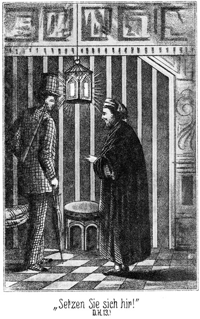»Setzen Sie sich hier!« sagte der Alte. »Ich will den Kaffee bestellen und komme gleich wieder.«
Er ging. Der Engländer hatte kaum sich mit dem Rücken an das Gitter gelehnt, so wurde er durch die Oeffnungen desselben angestoßen.
»Willkommen!« flüsterte eine weibliche Stimme. »Wir sind hier.«
»Alle Drei?« fragte er leise zurück.
»Ja.«
»Schön! Also wie soll es werden?«
»Das wissen wir noch nicht genau. Besuch haben wir nicht; aber wir müssen erfahren, wann der Vater schlafen geht.«
»Sapperment! Ich muß es aber doch wissen!«
»Nur Geduld. Er wird gleich wiederkommen, und ich glaube, daß er da eine Aeußerung thun wird, welche uns das Gewünschte hören läßt. Hast Du gekauft?«
»Ja.«
»Das ist gut. So hat er gute Laune?«
»Es scheint so.«
»Er schien mir doch noch mürrisch zu sein. Wenn Du ihm noch etwas abkaufen wolltest, so wäre es gut. Er zieht sich dann sehr zeitig zurück, um das Geld zu zählen und einzuwickeln, was seine größte Freude ist. Da kommt er. Sei höflich und gefällig zu ihm!«
Der Alte kam zurück. Hinter ihm ging die Frau, welche dem Lord geöffnet hatte. Sie trug Kaffee und zwei Pfeifen, welche angebrannt wurden, als der Hausherr sich neben seinem Gaste niedergelassen hatte.
Beide unterhielten sich über ganz Gewöhnliches, so daß der Lord aus reiner Langeweile nach dem merkwürdigen Gegenstände fragte, welcher ihm noch gezeigt werden sollte.
»Der ist nicht nur merkwürdig, sondern einzig in seiner Art. Ja, er ist eigentlich ein Heiligthum. Da ich aber weiß, daß er bei Ihnen in würdige Hände gelangt, so bin ich bereit, ihn abzutreten. Ich gehe, ihn zu holen.«
Er entfernte sich abermals. Da flüsterte es hinter dem Lord:
»Wirst Du kaufen?«
»Ich weiß ja gar nicht, was es ist.«
»Darauf kommt ja gar nichts an. Wir sitzen hier wie auf Kohlen. In einigen Minuten wird der Vater abgerufen werden, dafür haben wir gesorgt. Wenn er lange genug ausbleibt, können wir Dir die nöthige Anweisung geben. Du mußt ihn bei guter Laune erhalten.«
»Nun gut, so kaufe ich das Ding, mag es auch sein, was es nur immer will!«
Es war nur darauf abgesehen, den Beutel des Engländers zu leeren. Der Alte kehrte zurück, setzte sich nieder und zog etwas aus der Tasche, was er dem Lord hingab.
»Hier, sehen Sie es sich an und staunen Sie!«
»Was ist es denn?«
»Rathen Sie einmal!«
»Das ist ein Bogen altes Packpapier.«
»Richtig! Aber von welch ungeheurem Werthe!«
»In wiefern?«
»Sie ahnen nicht, was darin gesteckt hat?«
»Wie könnte ich es errathen?«
»Nun, Sie sind zwar ein Ungläubiger, aber Sie wissen vielleicht, daß der Koran unser heiliges Buch ist?«
»Das weiß ich sehr gut.«
»Und daß es dem Propheten von dem Erzengel Gabriel offenbart worden ist?«
»Ja.«
»Der Erzengel hat es also vom Himmel heruntergebracht; durch die Wolken hindurch wäre es aber naß geworden, darum hat es der Engel eingewickelt.«
»Donnerwetter!« stieß der Lord hervor, indem er vor Erstaunen über diese Dreistigkeit nicht nur den Mund, sondern auch die Augen so weit wie möglich aufriß.
»Fluchen Sie nicht bei einer Sache von solcher Heiligkeit!«
»Entschuldigung! Soll der Koran etwa bei dieser erwähnten Gelegenheit in dieses Papier gewickelt gewesen sein?«
»Ja.«
»Dann giebt es in dem Himmel Muhammed's wohl eine Anzahl von Papiermühlen?«
»Spotten Sie nicht! Das darf ich als gläubiger Anhänger des Propheten nicht anhören.«
»Woher sollte der Engel das Papier da oben hergenommen haben, wenn es nicht im Himmel fabricirt worden wäre!«
»Allah ist allmächtig. Er kann Papier aus nichts machen.«
»Hm, das ist die gewöhnliche Erklärung!«
»Sie ist die einzig richtige. Glauben Sie etwa nicht daran?«
»Aufrichtig gestanden, will ich Ihnen sagen, daß – –«
Er wollte sagen, daß es ihm gar nicht einfalle, an die Fabel zu glauben. Da aber wurde er durch das Gitter in den Rücken gestoßen; darum lenkte er ein:
»Daß ich die Sache doch für möglich halte.«
»Möglich? Möglich nur?«
»Nun, sagen wir, wahrscheinlich!«
»Auch das ist zu wenig. Wenn Sie mich nicht beleidigen wollen, dürfen Sie nicht den leisesten Zweifel hegen.«
Da er jetzt mehrere schnell auf einander folgende, also sehr dringlich gemeinte Puffer erhielt, erklärte er:
»Wenn ich es mir recht überlege, muß ich allerdings sagen, daß ich das Papier für echt halte.«
»Wollen Sie es kaufen?«
»Ich habe es noch gar nicht genau angesehen. Es ist dazu zu finster hier!«
»Es ist nichts zu sehen als nur das Papier.«
»Keine Adresse darauf, die der Engel geschrieben hat?«
»Nein. Wozu die Adresse, da er es dem Propheten selbst und direct gegeben hat.«
»Wie aber ist es in Ihre Hände gekommen?«
»Durch Erbschaft. Ich bin ein echter Nachkomme des Propheten, ein Sherif.«
»Ach so! Da läßt es sich freilich erklären.«
»Also wollen Sie es kaufen?«
»Wie ist der Preis?«
»Dreihundert Franken.«
»Donnerwetter, ist das – –«
Er hielt inne, denn zwei Fäuste bearbeiteten von hinten seinen Rücken. Darum fuhr er fort:
»Ist das spottbillig!«
»Nicht wahr? Ein solches Heiligthum, und nur dreihundert Franken! Ich hätte das Fünffache fordern sollen. Aber was ich einmal gesagt habe, das gilt.«
Da kam die Alte in den Hof und meldete, daß der Nachbar gekommen sei, um wegen der Grenzmauer mit dem Herrn zu sprechen.
»Da werden wir leider gestört!« sagte dieser zu dem Engländer. »Vielleicht kann ich nicht gleich in der Minute wiederkommen. Also, werden Sie es behalten?«
»Ja,« antwortete der Gefragte, da er abermals einen aufmunternden Stoß erhielt.
»Schön! Verzeihen Sie meine Entfernung. Ich werde mich beeilen. Hier ist das Papier.«
Er legte es ihm hin und ging. Kaum war er verschwunden, so wich hinter dem Engländer das Gitter und eine Stimme sagte leise:
»Komm herein! Schnell!«
Er stand auf und wurde von einer Hand in die Oeffnung gezogen und von da weiter bis in eine Stube, in welcher ein Licht brannte. Da sah er seine beiden schönen Freundinnen mit einer Dritten, welche allerdings auch nicht häßlich war.
»Das hast Du gut gemacht,« sagte Lea. »Das hier ist unsere Schwester. Gefällt sie Dir?«
»Ja, natürlich!«
»Und sie darf mitkommen?«
»Das versteht sich ganz von selbst.«
»So gehen wir Beide also auch mit. Komm heraus in den Garten!«
Es führte eine Thür hinaus auf ein kleines, freies Plätzchen, in welchem er trotz des abendlichen Dunkels einen Baum bemerkte. Dieser war jedenfalls der Vorwand, das winzige Viereck mit dem stolzen Namen eines Gartens zu bezeichnen. An diesem Baume lehnte eine Leiter. Lea deutete auf dieselbe hin und sagte:
»Siehst Du diese Leiter? Mit ihr werden wir heut entkommen. Nämlich hier nebenan ist der Garten des Nachbars. Wir steigen da hinüber, dann trennt uns nur noch eine Mauer von einer engen Gasse.«
»Ich kenne sie.«
»Das ist gut. So brauche ich sie nicht zu beschreiben. In dieser Gasse erwartest Du uns.«
»Wann?«
»Grad um Mitternacht.«
»Ich werde mich pünktlich einstellen und hoffe, daß wir nicht gestört werden.«
»Das fürchte ich nicht, denn Du hast den Vater in sehr gute Laune versetzt. Er wird zeitig schlafen gehen.«
»Allah gebe ihm eine angenehme Ruhe! Kinder, Ihr könnt froh sein, von Eurem Vater fortzukommen!«
»Warum?«
»Der Kerl ist ein Nichtsnutz. Er ist es gar nicht werth, so schöne, gute und brave Kinder zu haben!«
»Nun, seine Münzen sind keinen Para werth und mit dem Himmelspapier hat er mich vollends gar über das Ohr gehauen. Aber ich haue ihm noch viel derber über das seinige, indem ich Euch entführe. Der alte Schwindler soll sich morgen früh wundern, wenn er so plötzlich ein kinderloser Waisenvater geworden ist. Ich verdiene mir ein Gotteslohn, indem ich Euch von ihm befreie!«
»O Allah! Das haben wir nicht vermuthet!«
»Ja, Ihr könnt nichts dafür. Also um Mitternacht?«
»Ja. Du kommst doch gewiß?«
»Ganz sicher!«
»So kehre jetzt wieder zu Deinem Sitze zurück. Er darf nicht ahnen, daß Du fortgewesen bist.«
Sie geleiteten ihn zurück und schoben das Gitter wieder hinter ihm zu. Er setzte sich nieder und wartete auf die Rückkehr des Wirthes. Dieser ließ seinen angeblichen Töchtern länger Zeit, mit seinem Opfer zu sprechen, als sie nöthig gehabt hatten. Es war wohl über eine halbe Stunde vergangen, als er wiederkam.
»Da bin ich endlich,« sagte er. »Die Unterredung war sehr nothwendig, sonst wäre ich eher zurückgekehrt. »Wünschen Sie noch eine Pfeife?«
»Ich danke, danke! Ich habe genug!«
»Und die dreihundert Francs?«
»Erhalten Sie sofort.«
Er stand auf, bezahlte und schob das Packpapier in die Tasche. Der Wirth brachte ihn in den Hausgang zurück und nahm dort sehr höflich und freundlich Abschied. Die alte Schließerin brachte ihn an die Hausthür, öffnete diese aber nicht, sondern sie legte ihm die Hand an den Arm und fragte:
»Wollen Sie mir nicht ein kleines Bakschisch geben?«
Er griff in die Tasche und erfüllte die Bitte. Sie hielt das Geldstück an die Laterne und sagte:
»Ein Frank, ein lumpiger Frank!«
»Ist das nicht genug für die kleine Mühe, mich da hinaus zu lassen?«
»O, dafür wäre es genug, aber ich habe ja viel, viel mehr für Sie zu thun.«
»Was denn zum Beispiele?«
»Ich habe doch nicht blos Sie hinaus zu lassen.«
»Wen denn noch?«
»Die drei Schwestern.«
»Tausend Donner!« sagte er erschrocken. »Was für Schwestern meinen Sie denn eigentlich, he?«
»Sie sind verschwiegen, wie ich bemerke, und das ist sehr gut. Aber Sie können Vertrauen zu mir haben. Die Mädchen haben mir Alles gesagt, da Sie ohne meine Hilfe gar nicht hinaus in den Garten könnten.«
»Ich verstehe Sie noch immer nicht!«
»O, Sie verstehen mich sehr gut; das weiß ich ganz genau. Ich bin die Schließerin, ich habe die Schlüssel des Harems. Lasse ich, bevor ich schlafen gehe, die Thür nicht offen, so können sie nicht in den Garten.«
»Ich begreife nicht, was Sie meinen. Von welch einer Thür sprechen Sie denn eigentlich? Was gehen mich Ihre Thüren an!«
»Mehr als Sie zugeben wollen. Sie sind ja selbst mit draußen gewesen.«
»Wo draußen?«
»Im Garten, um sich die Leiter und die Mauern zeigen zu lassen, über welche hinweg der Weg gehen soll.«
Er sah ein, daß ein Leugnen ihm hier nichts mehr nützen könne. Er schüttelte den Kopf und meinte mißbilligend:
»Welche Unvorsichtigkeit.«
»Was nennen Sie unvorsichtig?«
»Andere Personen in das Vertrauen zu ziehen.«
»Das ist nicht eine Unvorsichtigkeit, sondern eine Klugheit, sogar eine Notwendigkeit, da ohne mich kein Mensch entkommen kann.«
»Hören Sie, Sie werden doch nicht etwas verrathen?«
»Nein. Ich habe die Kinder erzogen; ich liebe sie, als ob sie meine eigenen seien, und ich gönne ihnen das Glück. O Allah, könnte ich doch mit ihnen!«
»Um Gotteswillen!« stieß er unvorsichtig hervor.
»O, sie würden mich mitgenommen haben, aber ich fürchte mich so sehr, auf eine Leiter zu steigen.«
»Das ist allerdings sehr gefährlich,« sagte er schnell. »Man kann dabei ganz leicht den Hals brechen, auch die Beine und die Arme dazu. Dann liegt man da!«
»Das weiß ich ja, und darum verzichte ich, sie zu begleiten, obgleich mir das Herz brechen wird, wenn ich ohne meine Lieblinge zurückbleiben muß.«
»Da machen Sie sich keine schweren und trüben Gedanken! Es wird ihnen sehr gut gehen und ich werde sie veranlassen, zuweilen an Sie zu schreiben.«
»Ach ja, das wollte ich Sie bitten, das ist ja der einzige Trost, welcher mir bleibt.«
»Haben sie Ihnen denn vielleicht gesagt, wer ich bin?«
»O nein. Dazu sind sie viel zu vorsichtig.«
»Und wohin ich sie von hier aus bringen werde?«
»Auch das nicht. Ich verlange es auch nicht zu wissen, denn je mehr man mir mittheilt, desto mehr habe ich zu verschweigen, und das ist um so schwerer, je weniger man für eine solche Schweigsamkeit belohnt wird.«
Sie hielt ihm dabei sehr bezeichnend den einzelnen Franken hin, welchen sie erhalten hatte.
»Nun, wie hoch schätzen Sie denn Ihre Verschwiegenheit?«
»Ich gebe Ihnen zwanzig – –«
»O Sie guter, Sie barmherziger Herr! Für dieses Bakschisch können Sie mir Alles, Alles anvertrauen, und ich werde kein einziges Wort davon sagen!«
»Gut! Hier haben Sie! Aber wenn Sie nur eine einzige Silbe verrathen, so komme ich zurück, um Ihnen den Hals umzudrehen, so daß Sie sich dann Zeit Ihres Lebens nur noch von hinten betrachten können, und außerdem sprenge ich noch extra alle Ihre drei Lieblinge mit Pulver in die vierundsechzig Lüfte! Verstanden?«
Er drückte ihr das Geld in die Hand und wurde nun von ihr unter vielen Danksagungen hinausgelassen. Drin aber lachte sie höhnisch:
»Dummer Mensch, wirst Du noch bluten müssen!«
Und draußen brummte er selbstgefällig vor sich hin:
»Der habe ich Angst gemacht! Die sagt kein Wort, um ihre Lieblinge nicht unglücklich zu machen und auch ihren eigenen Hals zu retten. Dem Alten aber sollte ich in Wirklichkeit das Gesicht in den Nacken drehen! Ein Bogen Packpapier aus dem Himmel! Welch eine Frechheit! Welch eine Unverschämtheit! Na, die Strafe kommt ja für den alten Galgenstrick schon in der Frühe.«
Er schlenderte durch die Gäßchen zurück. Als er im Begriffe stand, über einen kleinen, freien Platz zu gehen, fiel ihm ein besser gebautes Haus auf, vor dessen Thür zwei große Laternen standen. Ueber dem Eingange befand sich eine aus großen, goldenen Lettern bestehende Inschrift. Er trat näher und las:
» A la maison italienne! – zum italienischen Hause. Ah, der bekannte Gasthof, in welchem so viele Fremde logiren. Gehen wir einmal hinein. Vielleicht giebt es da ein Glas englisches Porter oder Ale.«
Als er in das allgemeine Gastzimmer trat, war die erste Person, welche er erblickte, Wallert, sein Reisegefährte. Er setzte sich natürlich sofort zu ihm.
»Haben Sie unsere Botschaft empfangen?« fragte dieser.
»Welche Botschaft?«
»Daß wir beschlossen haben, hier zu logiren?«
»Nein. Ich bin gar nicht an Bord geblieben und trete auch nur ganz zufällig hier herein.«
»Das ist ein Glück. Wir haben zwei Zimmer für Sie belegt. Als ich Sie sah, glaubte ich, Sie kämen in Folge unserer Benachrichtigung.«
»Allerdings nicht.«
»Wo sind Sie denn da während der langen Zeit gewesen?«
»Pst! Geheimniß!« antwortete der Engländer mit wichtiger Miene, indem er den Finger an den Mund legte.
»Geheimniß?« lachte Wallert. »Haben Sie etwa bereits einen Harem entdeckt?«
»Ja.«
»Wohl gar schon drin gewesen?«
»Ganz und gar drin!«
»Und werden Eine entführen?«
»Drei sogar!«
»Spaßvogel!«
»Pah! Es ist Ernst! Aber haben auch Sie irgend welchen Erfolg gehabt?«
»Leider nicht. Wir sind beim Consul und auf der Polizei gewesen, sogar beim Limam reïssi, vergebens!«
»Wer ist der Limam Reißig?«
»Der Hafenmeister. Wir glaubten, Auskunft von ihm zu erhalten, da er bei jeder Ausschiffung zugegen ist, haben auch erfahren, daß zwei Dampfer von Constantinopel aus vor unserer Yacht hier angekommen seien, konnten aber von diesem Ibrahim Pascha nicht die geringste Spur entdecken.«
»Weil er einen anderen Namen führt.«
»Er kann aber doch seine Person nicht verändern, und die Frauen, welche bei ihm sind, bilden auch einen Anhalt, auf seine Fährte zu kommen.«
»So bin ich also viel, viel glücklicher gewesen!«
»Wie? Hätten Sie zufällig Etwas von ihm gehört?«
»Nein, das meine ich nicht. Ich sprach nur von meiner eigenen Angelegenheit. Es ging mir wie Cäsar: Ich kam, ich sah, und ich siegte.«
»Natürlich in der Phantasie!«
»Oho! Sie sind wirklich ganz verliebt in mich, wenigstens Zwei von ihnen, die Rahel und die Lea.«
»Jüdische Namen!«
»Habe sie ihnen selbst gegeben.«
»Bitte, seien wir ernst, Mylord!«
»Das bin ich ja.«
»Unsinn! Sie hätten wirklich eine Damenbekanntschaft gemacht und wo?«
»Jenseits des Sees, in den Ruinen von Karthago.«
»Und Drei sind es?«
»Drei, volle drei Personen, Eine immer schöner und jünger als die Andere! Verteufelt, verteufelt! Na, warten Sie es nur ab! Sie werden den Mund aufsperren! Aber Sie kriegen Keine von ihnen, keine Einzige!«
Jetzt nun mußte Wallert einsehen, daß es dem Lord wirklich ernst sei. Er wurde besorgt für ihn, darum bat er:
»Wollen Sie die Güte haben, mir Näheres mitzutheilen?«
»Fällt mir nicht ein!«
»Selbst dann nicht, wenn ich Sie dringend ersuche?«
»Selbst dann nicht. Heut erfahren Sie nichts.«
»Mylord, Sie begeben sich in Gefahr. Sie verstehen die Sprache des Landes nicht. Wie leicht kommen Sie da in eine Lage, welcher Ihre Kräfte nicht gewachsen sind.«
»Meine Kräfte? O, heut habe ich Riesenkräfte! Heute hebe ich ganz Tunis aus den Angeln!«
»Sie wollen doch nicht schon heut Etwas unternehmen?«
»Natürlich! Grad heut schon! Es geht eben riesig schnell. Ich muß doch ein hübscher Kerl sein, so eine Art Adonis oder Amor oder Cupido.«
»Aber Sie wohnen hier bei uns?«
»Heut nicht, sondern morgen erst.«
»Ich bitte Sie um Gotteswillen – – –«
»Papperlapapp, lieber Master! Aber warten Sie! Ich werde doch noch heut hierher ziehen, um gewisse Spuren zu vernichten, um die Nachforschung von mir abzulenken. Aber nicht gleich jetzt. Ich komme erst so ungefähr zwei Stunden nach Mitternacht. Da bin ich fertig.«
»Doch nicht etwa mit einer Entführung?«
»Ja freilich! Mit einer Entführung aus dem Serail, aus dem schönsten Harem, welcher in Tunis zu finden ist.«
»Lassen Sie sich warnen! Lassen Sie sich abreden! Thun Sie nichts ohne uns!«
»Pah! Grad ohne Sie will ich es thun, um Ihnen zu beweisen, was ich in solchen Entführungen zu leisten vermag. Sie denken wohl, weil ich in Constantinopel vom Baume gefallen bin, rutsche ich auch hier wieder herab?«
»Nein, das nicht. Aber zwei Aeußerungen von Ihnen geben mir zu denken. Erstens nannten Sie die Namen Rahel und Lea. So heißen nur Jüdinnen, und die braucht man doch nicht zu entführen.«
»Es sind drei echte Muhammedanerinnen, keine imitirten. Die beiden Namen habe ich Zweien von ihnen gegeben, weil ich zwischen ihnen saß wie der Erzvater Jacob zwischen den Schafherden – wollte sagen zwischen Lea und Rahel.«
»Und draußen in den Ruinen haben Sie sie kennen gelernt?«
»Ja.«
»Am Tage?«
»Natürlich. In der Finsterniß mache ich keine Damenbekanntschaften, weil man sich da leicht in Verschiedenem täuschen kann.«
»Waren sie verschleiert?«
»Ja; später aber in der Hütte und bereits vorher entschleierten sie sich.«
»In Gegenwart des Ruderers?«
»Ja.«
»Sie wurden in eine Hütte geführt? In eine unbewohnte?«
»Nein, in eine bewohnte. Der Eunuch bewohnte sie. Der Kerl hatte ein gewisses Wasser der Liebe zusammengebraut aus Spiritus, Koloquinthen und Knoblauch. Ich mußte, glaube ich, zehn Francs für die Flasche bezahlen, konnte aber das Zeug nicht hinunterbringen.«
»Ah! Sapperment! Ein Eunuche war da? Unsinn! Bezahlen mußten Sie? Schön! Tranken diese Damen etwa auch?«
»Freilich! Das lief hinunter wie in die Kellerfenster.«
»Dann ist es sicher! Mylord, Sie sind getäuscht worden.«
»Fällt mir nicht ein!«
»Alle Teufel! Halten Sie mich etwa für dumm?«
»Nein, aber für begeistert, und die Begeisterung hat stets eine Ähnlichkeit mit dem Rausche. Man denkt und urtheilt nicht so scharf wie im nüchternen Zustande –«
»Nun, Master Wallert, ich werde Ihnen beweisen, daß ich sehr scharf gedacht und calculirt habe. Der Plan, welchen ich ausgeheckt habe, kann gar nicht scharfsinniger entworfen sein. Die Leiter steht bereits am Baume. Ueber zwei Mauern hinweg, und dann fallen mir alle Drei höchst liebevoll in die Arme. Ich schaffe sie nach der Yacht und komme dann hierher. So verwische ich die Spur.«
»Hat denn die Hütte da draußen in den Ruinen einen Garten, da Sie vom Baum, von der Leiter und dann auch von zwei Mauern sprechen?«
»Nein. Da draußen waren sie nur spazieren. Sie wohnen in der Stadt bei ihrem Vater, der Juwelenhändler war und sich nun zur Ruhe gesezt hat.«
»Waren Sie denn in dieser Wohnung?«
»Natürlich. Ich nahm mir zum Vorwand, dem Alten Einiges von seinen Raritäten abzukaufen. Ich habe da Verschiedenes – Sapperment, das muß ich Ihnen zeigen. Hier, dieses Papier soll vom Himmel kommen. Der Koran hat drin gesteckt, damit er in den Wolken nicht naß werden sollte, als der Erzengel ihn vom Himmel brachte. Diese alten Münzen wurden geschlagen zum Andenken an die Eroberung von Mekka und Constantinopel. Diese Pfeilspitze wurde – – –«
Er fuhr lachend in seiner Erklärung fort, indem er die Gegenstände auf den Tisch legte.
»Und das Alles haben Sie geglaubt?« fragte Wallert, der in seinem ganzen Leben noch nicht so erstaunt gewesen war, als in diesem Augenblicke.
»Geglaubt? Was denken Sie! Fällt mir gar nicht ein! Der Alte ist ein Spitzbube. Aber seine drei Töchter sind die reinen Engel!«
»Seine drei Töchter sind ebenso große Spitzbübinnen. Die Ruinen sind berüchtigt. Wissen Sie, wer da draußen verkehrt? Was für Damen?«
»Nun?«
»Solche, welche sich ihre Liebe bezahlen lassen.«
»Das ist möglich, geht aber mich nichts an. Meine Drei gehören nicht in diese Categorie.«
»Ich bitte Sie dringend, Verstand anzunehmen!«
»Donnerwetter! Ich habe Verstand, so viel Verstand, daß er für ein ganzes Dutzend Personen ausreicht und auch für Sie mit!«
»Ich sehe, ich muß Normann holen.«
»Ist er hier?«
»Ja, auf seinem Zimmer. Oder bitte, gehen Sie lieber gleich mit hinauf!«
»Danke, danke sehr!«
»So hole ich ihn. Er mag seine Vorstellungen mit den meinigen vereinigen.«
»Hilft Ihnen nichts, gar nichts!«
»Ich hoffe das Gegentheil. Entschuldigen Sie mich für einen Augenblick, Mylord.«
Er eilte fort. Der Engländer warf schnell ein Geldstück für das Getränk auf den Tisch, setzte den Hut auf, raffte den Regenschirm und das Fernrohr an sich und verließ das Haus in aller Schleunigkeit. In der Eile vergaß er die Raritäten, welche auf dem Tische liegen blieben. Draußen bog er um einige Ecken, und erst dann lief er langsamer.
»Glücklich entkommen!« seufzte er auf. »Dieser Teufelskerl gönnt mir wirklich den Ruhm nicht, eine dreifache Entführung bewerkstelligt zu haben. Es ist doch eine böse Welt! Sogar den besten Freunden ist nicht mehr zu trauen! Sie schnappen Einem grad die appetitlichsten Bissen weg. Ich werde aber diesen Wallert beschämen, indem ich mit einer vollständigen, glücklich und ruhmvoll vollendeten Thatsache vor ihn hintrete. Aber ich durchschaue ihn: Drei Mädchen; er, Normann und ich, da käme auf Jeden Eine; aber ich werde sie alle Drei holen. Punktum!«
Er ging weiter, in der Richtung nach dem Hafen zu. Draußen vor der Stadt überholte er einen Menschen, welcher langsam desselben Weges ging. Eine so gekleidete Gestalt wie der Lord wäre selbst in größtem Dunkel aufgefallen. Kaum war er vorüber, so hörte er hinter sich einen lauten Freudenruf und dann die Worte:
»Hamdullillah! Lord Effendi! Lord Effendi!«
Er blieb stehen, drehte sich um und blickte dem Rufer in das Gesicht. Er erkannte ihn. Es war der junge Arabadschi, der Vertraute der schönen Zykyma, der ihnen in Constantinopel bei der Entführung mit hatte helfen wollen.
»Mensch, Kerl, Du hier! Alle Teufel! Ist etwa Zykyma auch mit da?«
»Burada Zykyma; burada Tschita; burada Ibrahim Pascha; burada Derwisch Osman.«
»Ah, das sind ja Alle. Aber wer ist denn dieser Burada? Oder ist's ein Frauenzimmer?«
Burada heißt ›hier‹ oder ›hier ist‹. Der hoch erfreute Arabadschi verstand natürlich den Lord nicht. Er sagte:
»Gel-sunler, gel-sunler!«
Das heißt: »Kommen Sie, kommen Sie!« Dabei deutete er nach links hinüber.
»Was heißt das? Ein gelber Sunnler? Ich verstehe diese dumme Sprache nicht! Die muß man erst lernen, während ich das Englische sofort verstanden habe.«
»Hermann Wallert Effendi nerde?« fragte der Arabadschi, welcher sich erinnerte, daß der Lord gar nicht Türkisch verstand. Das hieß auf Deutsch: Wo ist Herr Hermann Wallert. Der Lord schloß aus dem Namen, was der Frager meinte, und antwortete:
»Onu bilir-im, onu bilir-im!«
Das heißt: Ich kenne es, ich kenne es! Bei diesen Worten drehte er sich um und eilte davon, der Stadt wieder zu, um Wallert aufzusuchen.
»Billirim! Dummes Wort,« brummte der Lord. »Aber ist es nicht ein Wunder, den Kerl zu treffen? Bei Nacht und Nebel? Na, diese Freude, wenn er zu den Beiden kommt! Das ist sehr gut für mich, denn da werden sie nun wohl nicht daran denken, mich zu stören. Nun haben auch sie ihr Abenteuer und werden mich hoffentlich in Ruhe lassen. Sie entführen ihre beiden Mädels und ich meine Drei, macht Fünf. Dann dampfen wir ab. Vorher aber spreche ich mit diesem Ibrahim Pascha ein Wort von wegen der Uhr und der Familie Adlerhorst.«
Er setzte seinen Weg nach der Yacht fort. Am Bord angekommen, hörte er, daß der Capitän ein Wenig an Land gegangen sei und dem Steuermann den Befehl übergeben habe; darum mußte sich der Lord an diesen wenden und ihm sagen, daß er nach Mitternacht drei Damen bringen werde.
»Entführung?« fragte der Schiffer.
»Ja, Entführung.«
»Ach! Darf ich mit?«
»Nein. Kann Niemand gebrauchen.«
»Vielleicht doch meine Fäuste!«
»Auch nicht. Mache Alles selbst.«
Damit ging er nach der Kajüte, um den türkischen Anzug anzulegen, welchen er in Constantinopel gekauft hatte. Er konnte doch unmöglich in seinem karrirten Habit eine Entführung riskiren. Bevor er die Yacht wieder verließ, wagte es der Steuermann, eine höfliche Warnung auszusprechen, erhielt aber einen scharfen Verweis. Er beruhigte sich um so leichter, als er überzeugt war, daß der Lord nichts ohne Normann und Wallert thun werde, hatte sich aber darin für dieses Mal getäuscht.
Um nicht dennoch von den beiden Genannten aufgesucht und getroffen zu werden, machte der Lord einen Umweg. Darum hatte er gar nicht viel Zeit übrig, als er die Stadt erreichte. Früher hatte jeder Passant des Abends eine Laterne tragen müssen; dieses Gebot war vor Kurzem aufgehoben worden, darum erreichte der Lord das Gäßchen, ohne angehalten oder auch nur beachtet worden zu sein. Die Uhr zeigte fünf Minuten vor Mitternacht. Er war keinen Augenblick zu früh gekommen.
Diese fünf Minuten vergingen und noch fünf, noch zehn, ohne daß er Etwas sah oder hörte. Endlich war es ihm so, als ob es jenseits der Mauer ein Geräusch gegeben habe. Und richtig, da scharrte es oben leicht an dem Rand hin, als ob eine Leiter angebracht werde, und dann sah er über sich einen Kopf erscheinen.
»Pst!« machte es leise. »Bist Du da?«
»Ja,« antwortete er, von der Mauer zurücktretend, an welche er sich geschmiegt hatte, um nicht so leicht gesehen zu werden. »Wer ist's?«
»Und die Andern?«
»Sind noch unten. Da kommt Lea.«
Die beiden Genannten setzten sich auf die Mauer, die Dritte dann auch, und nun zogen sie die Leiter, welche nicht zu schwer war, drüben herauf und ließen sie hüben hinab. Er hielt fest, und sie stiegen herunter. Eine nach der Andern.
»Da sind wir!« sagte Lea, indem sie beide Arme um ihn schlang. »Siehst Du, daß wir Wort halten?«
»Ja, Ihr seid brav und muthig. Ich glaubte bereits, daß Ihr nicht kommen würdet.«
»Es ging so langsam. Wir mußten an jeder Mauer die Leiter auf beiden Seiten anlegen.«
»Was thun wir mit ihr?«
»Wir lassen sie hier liegen.«
»Da wird man aber merken, auf welche Weise Ihr entkommen seid!«
»Was schadet das? Wenn man nur nicht weiß, wohin wir sind. Zurücktragen können wir sie doch nicht wieder.«
»Da wollen wir uns auch nicht länger hier aufhalten. Kommt also mit!«
Sie folgten ihm. Er hatte keine Ahnung, daß der sogenannte Vater seinen angeblichen Töchtern höchst eigenhändig über die Mauern weggeholfen hatte, und daß bereits ein Anderer in der Nähe stand, der ihn unbemerkt beobachtet hatte und nun die Leiter entfernte.
Die drei Mädchen folgten ihm schweigend bis vor die Stadt hinaus. Dann blieben sie berathend stehen, ob sie direct oder auf einem Umwege nach der Yacht gehen wollten. Der Lord schlug das Erstere vor. Er freute sich wie ein König über das gelungene Unternehmen; denn daß es jetzt noch mißlingen werde, das hielt er gar nicht für möglich. Noch waren die Mädchen unentschlossen, welcher Weg der sichere sei, so tauchte grad neben dem Lord eine Gestalt auf und sagte französisch:
»Guten Abend! Was thun Sie hier?«
»Guten Abend,« antwortete der Gefragte höflich, sich nicht merken lassend, daß das urplötzliche Erscheinen eines Menschen ihn erschreckt hatte. »Warum fragen Sie?«
»Weil ich ein Recht dazu habe.«
»Und ich auch,« meinte eine zweite Stimme an seiner andern Seite.
Der Engländer drehte sich um. Auch da stand ein Mann.
»Was wollen Sie von uns, Messieurs?«
»Was thun Sie hier?« fragte der Erste wieder.
»So kann ich auch Sie fragen.«
»Oho! Kennen Sie uns?«
»Nein.«
»Aber unsere Uniformen kennen Sie?«
»Ich sehe sie ja nicht.«
Der Mann zog eine kleine Laterne aus der Tasche, öffnete sie und ließ ihr Licht auf sich fallen. Er trug die Uniform eines Polizeisoldaten, der Andere ebenso, und jetzt tauchte noch ein Dritter in demselben Gewande auf.
»Sie sind Polizisten?« fragte der Lord.
»Wie Sie sehen. Also Antwort! Was thun Sie hier?«
»Ich gehe spazieren.«
»Mit diesen Mädchen?«
»Es sind meine Frauen.«
»Ach! Wer sind Sie?«
»Ich bin Lord Eagle-nest.«
»Ein Lord? Haha! Das machen Sie einem Andern weiß!«
»Ich kann es beweisen!«
»Oho! Ein Lord hat nicht drei Frauen. Ein Lord trägt auch nicht diese Kleidung. Also, woher haben Sie diese Mädchen?«
Der Engländer fürchtete sich nicht. Er hatte in aller Ruhe geantwortet. Jetzt aber glaubte er, etwas weniger höflich sein zu dürfen. Er sagte:
»Ich glaube nicht, daß ich Ihnen Rede zu stehen habe.«
»So muß ich Sie arretiren!«
»Das werden Sie bleiben lassen. Ich bin Engländer, und einen solchen arretirt man nicht ungestraft.«
»Beweisen Sie es!«
»Kommen Sie mit auf mein Schiff.
»Ihr Schiff, wenn Sie überhaupt eins hätten, geht mich gar nichts an. Das Schiff ist überhaupt eine Lüge.«
»Nehmen Sie sich in Acht! Von einem Polizisten lasse ich mich nicht einen Lügner nennen.«
»Zeigen Sie mir Ihren Paß!«
»Den habe ich eben auf dem Schiffe.«
»So lassen Sie ihn sich morgen bringen. Jetzt aber gehen Sie mit. Sie sind verdächtig. Ich arretire Sie sammt den Mädchen, die Sie jedenfalls geraubt haben.«
»Lassen Sie das lieber bleiben! Ich gehe nicht mit.«
»Das wird sich finden. Vorwärts!«
Er ergriff den Lord am Arme, erhielt aber von demselben einen solchen Boxer auf die Magengrube, daß er zur Erde stürzte. In demselben Augenblicke aber warfen sich die beiden Andern auf den Engländer. Er hatte das vorher gesehen und empfing sie mit zwei wohlgezielten, regelrechten Boxhieben, wurde aber von Zweien, die er bisher noch gar nicht gesehen hatte, von hinten gepackt und zu Boden gerissen. Er wehrte sich gegen Fünf aus Leibeskräften, wurde aber doch überwältigt und dann an den Händen gebunden.
*
Das war ein stiller, lautloser Kampf gewesen. Keiner hatte dabei ein Wort gesagt. Dem Engländer konnte es nicht einfallen, zu rufen und zu schreien, und die Anderen hatten auch ganz triftige Ursache, ihre Arbeit in aller Stille abzumachen.
Derjenige, welcher die Laterne gehabt hatte, hatte sie an die Erde niedergesetzt, ehe er den Lord angegriffen hatte. Jetzt nahm er sie wieder auf und leuchtete ihn an. Er lachte höhnisch auf und sagte:
»So, da haben wir ihn fest und nun wollen wir sehen, ob er wirklich nicht mitgeht.«
»Da ich gefesselt bin, können Sie mich freilich zwingen,« antwortete der Gefangene; »ich mache Sie aber auf die Verantwortung aufmerksam, welche Sie treffen wird.«
»Die fürchte ich nicht. Ich thue meine Pflicht. Sie sind ein Mädchenräuber.«
»Das mag bewiesen werden.«
»Der hier kann es beweisen.«
Er erhob die Laterne und leuchtete dem Einen der Beiden, welche den Engländer so heimtückisch von hinten gepackt hatten, in das Gesicht. Der Lord erkannte ihn.
»Ali Effendi!« sagte er erstaunt.
»Ja, ich bin es! Wollen Sie leugnen, daß Sie mir meine Töchter entführt haben?«
»Das wird sich finden. Aber wollen Sie leugnen, daß ich ein Engländer bin?«
»Das wird sich auch finden.«
»Und« – setzte der Gefangene hinzu – »da steht noch Einer, welcher ganz gewiß weiß, daß ich ein Franke bin.«
Er deutete auf den Fünften, auf dessen Gesicht soeben das Laternenlicht gefallen war. Es war der schiefäugige Kerl, in dessen Hütte er heute Nachmittag mit den beiden Mädchen gesessen hatte.
»Ich kenne ihn nicht,« antwortete dieser.
»Das ist eine Lüge. Ich habe zwar andere Kleider an, aber mein Gesicht ist nicht zu verkennen.«
»Das Alles ist jetzt Nebensache,« erklärte Ali Effendi. »Es fragt sich nur, ob er ein Entführer ist. Kommt her, Ihr Mädchen! Gesteht die Wahrheit, dann soll Euch keine Strafe treffen. Hat er Euch geraubt?«
»Ja,« antwortete Lea.
»Was wollte er mit Euch thun?«
»Er wollte uns auf sein Schiff schaffen.«
»Das ist genug. Wir wollen ein ernstes Wort mit ihm sprechen, ehe wir ihn nach der Stadt bringen. Führt ihn hinüber nach der Hütte. Ich schaffe diese ungerathenen Töchter nach Hause und komme dann nach. Er wird sich zu verantworten haben.«
Er warf den Mädchen zum Scheine einige Drohungen zu und entfernte sich mit ihnen. Der Lord wurde längs des Seeufers hingeführt bis nach der Hütte, in welcher er heute die interessante Bekanntschaft gemacht hatte. Er sprach unterwegs kein Wort; er sagte auch nichts, als er zur Thür hinein geschoben wurde. Er setzte sich nieder und verhielt sich zu allen Spottreden und Schmähungen so ruhig, als ob er gar nicht gemeint sei.
Es verging eine lange, sehr lange Zeit und Ali Effendi kam nicht. Die drei Polizisten machten sich sammt dem Besitzer der Hütte über den Schnaps her. Endlich, nachdem weit über eine Stunde vergangen war, kam der beleidigte Vater der Mädchen.
Die Anderen machten ihm ehrerbietig Platz. Er setzte sich dem Gefangenen gegenüber. Seine Miene zeigte mehr Betrübniß als Zorn. Er begann:
»Jetzt wollen wir Dein Geschick entscheiden. Es wird sich zeigen, ob wir Dich frei lassen oder dem Bey zum Urteilsspruch übergeben.«
»Der Bey hat mir gar nichts zu sagen. Der englische Resident wird mich vernehmen.«
»So wirst Du vorher beweisen müssen, daß Du ein Engländer bist.«
»Das werde ich!«
»Aber ganz England wird Dich verlachen, daß Du so dumm gewesen bist, drei Mädchen zu verführen.«
»Mäßige Dich! Wer erlaubt Dir überhaupt, Du zu mir zu sagen, nachdem Du mich in Deinem Hause Sie genannt hast?«
»Ich kenne Dich nicht; ich entsinne mich nicht, Dich bei mir gesehen zu haben. Du trägst die Kleidung eines Moslem und die Gläubigen sagen Du zu einander. Du hast sehr gegen mich gesündigt, aber vielleicht verzeihe ich Dir; vielleicht lasse ich Dich frei.«
»Ah! Du bist sehr barmherzig!«
»Ja, das bin ich. Meine Töchter sind mir stets gehorsam gewesen; sie haben mir niemals Sorge, sondern stets nur Freude bereitet; jetzt aber laden sie Schande auf mein Haupt. Und warum? Weil Du sie verführt hast.«
»Oder sie mich.«
»Du bist alt und nicht der Mann, der sich verführen läßt. Du hast ihnen den Kopf verdreht und ihnen große und schöne Versprechungen gemacht. Du bist in mein Haus gekommen, um den Bau desselben und die Gelegenheit auszuspioniren.«
»Ah, die alte Schließerin hat mich verrathen!«
»Sie nicht. Allah selbst hat mich erleuchtet. Meine Töchter sind Dir gefolgt. Ich traf noch zum rechten Augenblicke ein. Ich habe erfahren, daß Du sie noch nicht berührt hast. Darum und weil sie selbst für Dich bitten, bin ich bereit, Gnade walten zu lassen, wenn Du auf die Bedingung eingehst, welche ich als Vater machen muß.«
»Laß sie hören! Vorher aber entferne die Fessel. Ich verhandle mit keinem Menschen, so lange ich gebunden bin.«
»Ich darf Dich nicht losbinden. Du hast bewiesen, daß Du ein gewaltthätiger Mensch bist, und Du hast den Kampf gelernt, den man in England Boxen nennt.«
»Ah! Ihr fürchtet Euch vor mir! Diese Polizisten sind bewaffnet, dieser gute Eunuch auch und Du hast ein Messer und ein Pistol im Gürtel.«
»Dennoch bist Du uns gefährlich.«
»So werde ich auf keinen Vorschlag eingehen, er mag lauten oder heißen, wie er will.«
»Wenn Du klug bist, gehst Du darauf ein.«
»Nun, anhören kann ich ihn ja.«
»Wer ein Mädchen entführt, ist schuldig, so viel zu zahlen, als er Beisteuer geben würde, wenn er sie zum Weibe nähme.«
»Ah! Darauf läuft es hinaus!«
»Ja. Bist Du reich?«
»Sehr.«
»Wie viel würdest Du für ein Weib bezahlen?«
»Mehrere Millionen, wenn ich sie lieb habe.«
Ali Effendi erschrak förmlich über diese Summe. Grad die ungeheure Höhe derselben störte ihn am Allermeisten. Es wäre ihm viel lieber gewesen, wenn der Lord gesagt hätte, daß er gar nichts für ein Weib geben würde. Er fragte:
»Hast Du denn so sehr viel Geld?«
»Noch viel, viel mehr.«
»Also mehrere Millionen würdest Du für eine einzige Frau geben?«
»Ja.«
»Du hast mir aber drei Töchter entführt. Das sind dreimal mehrere Millionen.«
»Nach Deiner Rechnung ganz richtig.«
»Die wirst Du aber nicht geben!«
»Warum nicht? Ich bin ein guter Unterthan und thue, was das Gesetz verlangt. Verurtheilt mich der Richter dazu, so bezahle ich diese Millionen.«
Das kam dem traurigen Vater sehr unbequem. Er schüttelte mitleidig den Kopf und erklärte:
»So grausam bin ich nicht. Ich will viel, viel weniger verlangen. Bezahle jeder meiner Töchter fünftausend Francs, so lasse ich Dich augenblicklich frei.«
»Die gebe ich nicht.«
»Warum nicht?«
»Ich bezahle nur dann, wenn der Richter mich verurtheilt.«
»Gieb jeder viertausend Francs.«
»Keine Centime!«
»Dreitausend!«
»Schweig! Du bemühst Dich vergeblich.«
»So will ich mit Zweitausend zufrieden sein!«
»Ich werde Dir nicht mehr antworten.«
»So willst Du nicht verständig handeln? Weißt Du, daß ich Dich zwingen kann, verständig zu sein!«
»Zwingen lasse ich mich nicht.«
»Oho! Du befindest Dich in meiner Gewalt!«
»Nein. Ich bin arretirt. Schafft mich nach der Stadt!«
Da meinte der angebliche Eunuch zu Ali Effendi:
»Mache es kurz! Was nützen diese Winkelzüge! Ich habe keine Lust, mich lange mit ihm herumzuplagen.«
»Gut!« meinte der Genannte. »Ich will Dir sagen, Fremder, daß diese Männer nicht Polizisten sind.«
»Donnerwetter!«
»Es sind meine Verbündeten. Sie thun, was ich ihnen sage. Ich verlange zweitausend Francs für jede meiner Töchter. In einer halben Stunde fordere ich Antwort. Bis dahin magst Du überlegen, was das Beste für Dich ist. Von Deiner Antwort wird es abhängen, was wir mit Dir thun.«
Erst jetzt ging dem Gefangenen ein Licht auf. Er sah sich die Leute genauer an und sagte:
»Jetzt begreife ich Euch. Diese ganze Sache war abgemacht. Ich bin in Eure Falle gegangen.«
»Ja,« nickte der Eunuch mit grimmiger Aufrichtigkeit.
»Die Mädchen waren nur die Lockvögel.«
»Das hättest Du Dir eher denken können. Nun aber weißt Du, was Dich erwartet.«
»Das weiß ich nicht, aber was Euch erwartet, das weiß ich ganz gewiß.«
»Nun, was?«
»Nichts erwartet Euch. Ihr werdet keinen Frank erhalten.«
»Das wirst Du Dir doch noch überlegen.«
»Pah! Jetzt gefallt Ihr mir erst. Ich habe mich längst gesehnt, einmal in die Hände solcher Schufte zu fallen. Jetzt ist dieser Wunsch erfüllt, und da werde ich mir doch nicht etwa den ganzen Spaß dadurch verderben, daß ich mich von Euch loskaufe. So eine schuftige Memme, wie Jeder von Euch ist, würde den Preis bezahlen, ich aber bin ein Engländer und gebe nichts.«
»Wenn das nun Dein Leben kostet!«
»Das werdet Ihr bleiben lassen. Solche Kerls, wie Ihr seid, fürchten sich vor Menschenblut. Und wenn Ihr mich mordetet, so befändet Ihr Euch bereits am frühen Morgen in der Gewalt des Bey. Ich habe auch meine Vorkehrungen getroffen, von denen Ihr aber nichts ahnt.«
Das war nicht wahr. Aber die Sicherheit, mit welcher er es vorbrachte, ebenso wie seine Furchtlosigkeit imponirten ihnen gewaltig. Sie traten zusammen, flüsterten eine Weile miteinander und dann sagte Ali Effendi:
»Wir haben uns entschieden. Von unserem Entschluß bringt uns nichts ab. Ich fordere für jede Tochter eintausend Francs.«
»Nicht mehr? Es ist doch wunderbar, daß Du nur für Deine Töchter forderst, aber nicht für diese Deine Verbündeten sorgst. Die Mädchen, welche gar nicht Deine Töchter sind, würden nichts erhalten. Ich durchschaue jetzt Alles. Ich gebe nichts, gar nichts.«
»Schön! Soll mich freuen, wenn es Euch glückt!«
»Ich gebe Dir die halbe Stunde Zeit, weigerst Du Dich dann noch, so stirbst Du im Wasser des Sees. Jeder wird glauben, Du seist verunglückt.«
»Das geht mich gar nichts an. Was Andere denken, das ist mir sehr gleichgiltig. Ich selbst werde es doch nicht glauben, sondern ich werde wissen, daß ich ermordet worden bin, und das ist die Hauptsache.«
Sie sahen sich an. Sie konnten das Verhalten und die Worte dieses sonderbaren Menschen nicht begreifen. Er war eben ein eigenthümlicher Charakter und ein – Engländer. Damit ist Alles gesagt. –
Der junge Arabadschi war, nachdem er mit dem Lord gesprochen hatte, in die Stadt gelaufen. Er hatte ganz zufälliger Weise von dem italienischen Gasthause sprechen gehört, es auch gesehen und sich die Lage desselben gemerkt. Darum fand er es wieder.
Er öffnete versuchsweise die Thür des Gastzimmers und blickte hinein. Da saßen die beiden Gesuchten am Tische, in sichtlicher Aufregung, bei den Raritäten des Lords, und Wallert erzählte Normann von seiner Unterredung mit demselben. Der Arabadschi trat ein. Sie sahen ihn und sprangen augenblicklich von ihren Sitzen empor.
»Du! Du da!« indem er auf den treuen Diener zusprang. »Herrgott! Ist auch Tschita hier?«
»Ja,« antwortete der Gefragte, glücklich lächelnd.
»Und Zykyma auch?« erkundigte sich Wallert schnell.
»Auch sie. Und Ibrahim Pascha und der Derwisch sind ebenso hier.«
»Also hat dieser Steinbach Recht gehabt. Aber sage, kommst Du zufällig her?«
»Nein, ich suchte Euch.«
»Du wußtest, daß wir hier sind?«
»Ich erfuhr es vor einigen Minuten von dem schwarzgrauen Effendi.«
»Dem Lord! Wo hast Du ihn getroffen?«
»Draußen vor der Stadt. Er ging nach dem Hafen.«
»Gott sei Dank! So hat er doch blos Scherz gemacht. Er ist nicht in der Stadt geblieben; er ist nach seinem Schiffe, jedenfalls um seine Effecten zu holen. Hast Du Zeit?«
»Für Euch immer.«
»So komm mit herauf in mein Zimmer. Hier sind wir zu sehr beobachtet, und Du sollst uns doch von jenem Abende erzählen, an welchem Ihr so plötzlich verschwunden waret.«
Die beiden Freunde rafften die zurückgelassenen Sachen des Lords zusammen und begaben sich nach oben, wo sie ungestört von dem, was ihnen so sehr am Herzen lag, sprechen konnten. Der Arabadschi erhielt vorgesetzt, was vorhanden war, rührte aber nichts an. Er hatte vollständig genug an der Freude, diese Beiden so unerwartet hier gefunden zu haben.
»Also zunächst« – sagte Normann – »ah, wir haben Dich noch gar nicht nach Deinem Namen gefragt. Wir müssen doch wissen, wie wir Dich nennen sollen.«
»Mein Name ist Saïd; das bedeutet der Glückliche, der Gesegnete.«
»Ja, Glück bringst Du uns und wir segnen Dich dafür. Das stimmt zu Deinem Namen. Nun aber erkläre uns das plötzliche Verschwinden des Pascha mit Euch Allen.«
»O, Effendi, ich hatte keine Ahnung davon und die Frauen auch nicht. Erst später haben wir Vieles begriffen, was uns unbekannt war. Der Pascha war schon am Tage draußen gewesen und hatte den Derwisch mitgebracht, den Allah verdammen möge. Sie hatten mit dem Verwalter zu thun, aber heimlich und lange. Später erfuhren wir, daß sie zusammengepackt hatten. Es ging ganz plötzlich fort, als Ihr im Garten wartetet, und wir mußten mit.«
»Konntet Ihr uns denn keine Nachricht geben?«
»Das war unmöglich.«
»Auch nicht wenigstens ein kleines Zeichen?«
»Selbst das nicht; es gab keine Zeit dazu, denn als ich auf meinem Wachtposten im Hofe erfuhr, daß Eure Anwesenheit verrathen sei, befanden sich die Häscher bereits unterwegs im Garten. Ich wollte mit, um ihnen voranzueilen und Euch ein Warnungszeichen zu geben, aber der Pascha schickte mich hinauf zu den Frauen, welche todt dalagen, ganz ohne alles Leben.«
»Todt? Herrgott! Was war mit ihnen geschehen?«
»Eben das erfuhr ich auch später. Der Pascha hatte geglaubt, daß sie sich sträuben würden, mitzugehen. Er wollte kein Aufsehen erregen und hatte auch keine Zeit, Zwang gegen Widerstand zu setzen. Da hatte ihm der Derwisch den Rath gegeben, zu einem weisen Manne zu gehen, der alle Arzneien und Mittel der Erde kennt. Von ihm hatte er ein Pulver erhalten. Wenn man dies durch ein kleines Röhrchen in ein Licht bläst, so fällt die Person, welche hinter dem Lichte steht, todt um, und erwacht erst am anderen Tage. Mit diesem Pulver war der Pascha zu den Frauen gegangen. Er hatte nur Tschita und deren Mutter getroffen und Beide todt gemacht. Zykyma war noch im Garten. Die beiden Leblosen waren in das Nebenzimmer geschafft worden, und eben als der Pascha ohne Licht zurückgetreten war, hatte Zykyma die Leiter erstiegen. Er hatte sie hereingelassen und ihr dann das Pulver in das Gesicht geblasen, so daß auch sie umfiel.«
»Ah!« nickte Normann. »Daher also der Schrei, den wir aus ihrem Munde hörten und das Aufflammen eines blitzähnlichen Lichtes.«
»Natürlich hatte sie nun kein Zeichen geben können. Sie war im Garten gewesen. Der Pascha schöpfte Verdacht und befahl, ihn zu durchsuchen. Ich aber mußte zu den leblosen Frauen, um sie nach den Sänften tragen zu helfen. Kaum fand ich Zeit, meine wenigen Sachen zu holen, so ging die Reise fort, durch die Stadt, auf das Schiff und hierher. Es war mir unmöglich, ein Zeichen zu geben. Hätte ich es dennoch versucht, so wäre es aufgefallen, und ich hätte Euch verrathen. Das aber wollte ich nicht.«
»Ganz richtig! Du hast sehr klug gehandelt. Aber wie war es mit den Frauen! Gott, wie müssen sie nach ihrem Erwachen erschrocken gewesen sein! So nahe der Rettung und doch wieder verloren!«
»Herr, es ist nicht zu beschreiben!«
»Wie verhielt sich Zykyma?«
»Fast wie ein Mann. Sie sprach kein Wort, weder mit dem Pascha noch mit dem Derwisch, während der ganzen Reise. Sie war nur glücklich, ihren Dolch wieder zu besitzen, um sich vertheidigen zu können.«
»War er ihr verloren gegangen?«
»Der Pascha hatte ihn ihr abgenommen, als sie ohne Besinnung gewesen war. Er glaubte nun, sie in den Händen zu haben, aber er ahnte nicht und ahnt auch noch heute nicht, daß ich ihr Verbündeter bin. Schon am ersten Tage habe ich ihm den Dolch weggestohlen und ihn Zykyma wieder gebracht. Nun konnte sie sich doch wieder vertheidigen; er fürchtet das furchtbare Gift und wagt es nicht, die beiden Frauen anzurühren.«
»Also gejammert hat Zykyma nicht?«
»Nein. Es lag stumm und stolz in ihrem Herzen, aber ihre Augen waren dunkler als vorher, und ihre Zähne zerbissen die Lippen. Ich habe gefürchtet, daß sie den Pascha tödten werde, wenn sie glaubt, daß die Zeit dazu geeignet sei.«
»Es ist ihr zuzutrauen! Und Tschita?«
»Das war schlimm, sehr schlimm! Zykyma ist wie die Frau des Edelfalken, Tschita aber wie das süße Weibchen des Kolibri. Ihre Thränen sind unaufhörlich geflossen, fast hat sie sich in diesen Fluthen aufgelöst. Sie hat nach Paul Normann Effendi gejammert ohne Aufhören, und Allah macht es gnädig, daß Ihr gekommen seid, denn es hätte nicht lange gedauert, so wäre ihr Leben mit den letzten ihrer Thränen dahingeschwunden.«
»Herr, mein Heiland, so kommen wir zur rechten Zeit!« knirschte Normann. »Aber mit diesem Pascha werde ich Abrechnung halten.«
»Das kannst Du, und das möchtest Du. Er muß sehr große Sünden auf seinem Gewissen haben. Ich möchte nur wissen, was Tschita's Mutter mit ihm hat. Es ist, als wenn er an ihr ein ganz entsetzliches Verbrechen begangen hätte.«
»Wieso?«
»Sie hatte ihn nicht gesehen bis zu dem Augenblicke, als er gekommen war, um ihrer Tochter Tschita das Pulver in das Gesicht zu blasen. Aber es ist ganz entsetzlich gewesen, als sie ihn erblickt hat. Sie ist stumm und hat doch schreien und sprechen wollen. Sie ist auf ihn eingesprungen, als ob sie ihn erwürgen wolle, und doch hat sie nicht gekonnt, da sie ja keine Hände hat. Seit dieser Zeit geht sie keinen Augenblick von ihrer Tochter fort, und wenn der Pascha sich dieser nähert, so wirft sie sich auf ihn, schlägt ihn mit ihren Armen und giebt Töne von sich wie eine Tigerin, der man die Kehle zusammenschnürt, so daß sie nicht brüllen kann.«
»Entsetzlich! Hier muß ein Geheimniß obwalten.«
»Ganz gewiß.«
»Welches ergründet werden muß.«
»Zykyma will es ergründen. Sie giebt sich alle Mühe, ich weiß nicht, ob es ihr gelingen wird.«
»Weshalb ist der Pascha hier?«
»Ich weiß es nicht. Der Derwisch und ich, wir Beide müssen den Palast des Bey bewachen und auch den Bardo, das ist das Schloß draußen vor der Stadt, in welchem der Bey wohnt. Wir wechseln in dieser Wache ab. Früh treten wir an und erst spät am Abende kehren wir zurück.«
»Worauf müßt Ihr Achtung geben?«
»Auf die Consuln der Franken. Wir müssen aufschreiben, welcher den Bey besucht, wann er kommt und wann er wieder geht, also wie lange er bei dem Herrscher gewesen ist.«
»Kennst Du den Zweck?«
»Nein.«
»Wo wohnt der Pascha?«
»Vor der Stadt, an der Straße nach dem Bardo zu. Er hat sich ein kleines Häuschen gemiethet, dessen Besitzer nach Jerusalem gereist ist. Dort sitzt er während des ganzen Tages und auch während der ganzen Nacht, und denkt und sinnt und grübelt wie eine Spinne, die in ihrer Ecke auf Beute lauert.«
»So ist er mit den Frauen allein?«
»O nein. Er hat sich zwei Männer gemiethet, welche sie sehr streng bewachen müssen. Der Eine wacht außen am Gebäude und der Andere im Innern.«
»Und nun die Hauptsache: Wie nennt er sich hier?«
»Er nennt sich Hulam und ist Kaufmann aus Smyrna.«
»Das ist Alles, wonach wir fragen können. Hast Du uns noch Etwas zu sagen?«
»Etwas Wichtiges nicht. Wohnt Ihr stets in diesem Hause?«
»Ja, natürlich so lange wir überhaupt hier bleiben.«
»So erlaubt, daß ich komme, um Euch Nachricht zu bringen!«
»O gewiß! Wir werden es Dir sehr gut lohnen. Jetzt gehst Du nach Hause?«
»Ja.«
»Wir gehen natürlich mit!«
»Nein, nein! Das dürft Ihr nicht.«
»Warum nicht?«
»Des Nachts sind die Wächter doppelt aufmerksam und doppelt argwöhnisch.«
»Wir können den Frauen kein Zeichen geben, daß wir uns hier befinden?«
»Nein. Ich werde es ihnen sagen.«
»Thue das! Aber wir können uns doch wenigstens das Haus ansehen, um zu wissen, wo es liegt, falls uns das einmal nöthig sein sollte.«
»Es ist dunkel, und wenn Ihr Euch so weit nähert, daß Ihr das Haus seht, so seid Ihr auch so nahe, daß Euch der Wächter merkt.«
»Wären diese beiden Wächter nicht zu bestechen?«
»Ich weiß es nicht; sie gefallen mir nicht; ich spreche gar nicht mit ihnen. Der Pascha bezahlt sie so gut, daß sie ihm leicht treu dienen können.«
»Wenn man ihnen nun noch mehr bietet, als sie jetzt von ihm bekommen?«
»Es ist möglich, daß sie dann von ihm abfallen. Um dies aber zu versuchen, muß man sich in die Gefahr begeben, von ihnen verrathen zu werden, und da ist das Wagniß größer als der Vortheil, welchen man verfolgt.«
»Da hast Du allerdings sehr Recht; aber, sollen die Frauen in Ewigkeit in dieser Hölle wohnen?«
»Ich bitte Euch, mir die Sorge zu überlassen. Ich werde bereits morgen am Vormittage zu Euch kommen, um Euch zu sagen, ob es mir möglich gewesen ist, etwas zu thun. Der Pascha ist eine giftige Schlange, welche vernichtet werden muß. Aber der Löwe, welcher diese Schlange mit einem einzigen Schlage seiner Tatze tödten kann, ist auch bereits hier in Tunis.«
»Wer wäre das?«
»Der große, stolze Effendi, welcher mit Euch vom Kirchhof in Stambul kam, als Hermann Wallert Effendi gefangen werden sollte.«
»Wie? Steinbach? Der ist hier?«
»Ich weiß seinen Namen nicht; aber ich weiß, daß er gegen meinen Herrn, den Pascha, kämpft, und daß er ihn besiegen wird.«
»Wo hast Du ihn gesehen?«
»Gestern, im Bardo. Er kam mit dem Obersten der Leibwache aus der Wüste, und Beide gingen sogleich zu Muhammed es Sadak Bey, bei welchem sie volle drei Stunden gewesen sind. Ich stand im großen Hofe des Schlosses und sah den Fremden gehen. Der Bey begleitete ihn bis an das Thor und legte ihm zum Abschied die rechte Hand auf die Schulter; das ist der große Segenswunsch, der Gruß, welchen der Bey nur einem Manne giebt, der sein Herz besitzt.«
»So scheint er Steinbach wohl zu wollen?«
»Ganz sicher; denn ich erfuhr nachher, daß der Pascha von Tunis diesem Steinbach Effendi seine beste Stute zum Ritte in die Wüste geliehen habe.«
»Das ist allerdings fast das Unmögliche. Und das Alles hast Du doch Deinem Herrn sofort erzählt?«
»Kein Wort.«
»Wirklich?«
»Es ist so, wie ich Dir sage. Ich hasse den Pascha. Ich diene ihm nur, um Zykyma aus seiner Hand zu befreien. Ich hatte mir sogar einmal vorgenommen, ihn zu tödten, da aber lernte ich Euch kennen. Ihr seid klüger und stärker und mächtiger als ich; ich überlasse Euch die Befreiung meiner Herrin und werde Euch dabei helfen, so viel wie es mir möglich ist.«
»Du bist ein braver Bursche. Sage es uns, wenn Du einen Wunsch, eine Bitte hast. Und jetzt hast Du uns Dein Herz ausgeschüttet, nun kannst Du essen und trinken.«
»Jetzt nun langte er zu. Dabei fielen aber noch hunderte von Fragen und Antworten herüber und hinüber, von vielleicht weniger Bedeutung für die Betheiligten aber doch von unendlichem Werthe. Als Saïd endlich aufbrach, war Mitternacht vorüber.
»Was wird Dein Herr sagen, wenn Du so spät kommst?« fragte Normann.
»Er wird meinen, daß ich ein sehr aufmerksamer Diener sei, denn ich werde zu meiner Entschuldigung von irgend einem Besuche erzählen, welcher so lange Zeit bei dem Bey gewesen ist.«
»Das ist klug. Kannst Du uns nicht wenigstens das Haus beschreiben, in welchem Ibrahim Pascha wohnt?«
»Wenn man von der Stadt aus nach dem Bardo geht, so liegt es rechts als das erste gleich hinter der großen, alten Wasserleitung. Es steht mitten in einem Garten, weicher von einer Mauer umgeben ist. Die Frauengemächer befinden sich oben im Giebel, welcher nach der Stadt blickt. Morgen werde ich Euch sagen, wenn Ihr es Euch ansehen könnt, ohne Euch zu verrathen.«
Er ging. Als er fort war, stand Normann von seinem Platze auf, breitete die Arme aus und ließ einen Jodler hören, so kräftig und volltönig, als ob er sich vor der Thür einer Tyroler Sennhütte befinde:
»Jetzt geh i zum Seiler
Und kaf ma an Strik,
Binds Diandl am Buckl
Trogs überall mit!«
»Alle Wetter! Bist Du des Teufels?« lachte Wallert. Was sollen die ehrsamen Gäste dieses afrikanischen Gasthauses von uns denken, wenn Du so schreist!«
Normann schüttelte den Kopf und antwortete:
»Wenn drob'n auf de Latscha
Der Auerhahn palzt,
Kriegt mein Diandl a Busserl,
Was grad a so schnalzt!«
»Mensch schweig, sonst erklärt Dich der Wirth für verrückt, und wir müssen noch heut aus dem Hause!«
Der enthusiastische Sänger nickte zwar zustimmend mit dem Kopfe, fuhr aber doch fort:
Die Gams hat zwa Krikl,
Der Jäger zwa Hund.
Mei Schatz hat an G'sichterl
Wie a Semmel so rund!«
»Nun laß mich aus! Wenn Du Tschita's Gesicht mit einer Semmel vergleichst, so behaupte nur um Gotteswillen nicht länger, ein Maler zu sein!«
»Ja, sie ist viel, viel schöner! So schön, daß mir gleich ein anderes Schnadahüpfl einfällt. Horch!
Und a frischer Bu bin i,
Thu gern Etwas wag'n,
Und i thät um an Busserl
Gleich an Purzelbaum schlag'n.«
Da wirklich, da wurde angeklopft; die Thür öffnete sich; die hübsche, italienische Zimmerkellnerin steckte den Kopf herein und fragte:
»Wünschen die Herren vielleicht etwas; da Sie so laut rufen?«
Wallert lachte laut auf. Normann aber trat auf sie zu, öffnete die Arme und sang:
»Juchheirassassa,
Und wenn d'willst, will i a,
Und wenn d'willst, so sag ja,
Denn deßweg'n bin i da.
Da fuhr sie schnell zurück und machte die Thür zu.
»Du bist ja ganz ausgewechselt!« meinte Wallert. »Du der ernste bedächtige Mensch, verirrst Dich da in die Schnadahüpfl!«
»Habe ich etwa nicht Ursache dazu?«
»Ach freilich, ja wohl!«
»Tschita wiedergefunden! Tschita, Tschita, denke Dir, Tschita!«
Dabei faßte er den Freund unter den Armen und wirbelte ihn in dem Zimmer herum, daß Alles wackelte und krachte.
»Und Zykyma, Zykyma, die ich für meinen Bruder befreien muß! Ach, wenn doch nicht immer so viel Geduld von Einem verlangt würde!«
»Von wegen das Haus ansehen?«
»Ja. Ich lief gleich heut Abend noch hin!«
»Ich auch!«
»Wirklich? Ist's Dein Ernst?«
»Ja.«
»Na, so wollen wir?«
»Willst Du denn?«
»Und ob!«
»Gut, wir gehen!«
»Wir können ja vorsichtig sein, so daß uns kein Mensch bemerken wird.«
»Pah! Ich werde mich anschleichen wie ein indianischer Krieger, der sein Meisterstück zu machen hat. Es ist zwar schon über Mitternacht; aber man wird uns schon einlassen, wenn wir wiederkommen. Dieser Steinbach ist doch ein Teufelskerl mit dem Wink, den er uns gegeben hat. Wir sind ihm riesigen Dank schuldig, und seit ich gehört habe, daß er auch hier ist, liegt es mir in den Gliedern, als ob er sich noch größere Verdienste um uns erwerben wollte. Komm!«
Sie waren Beide unendlich glücklich. Sie mußten ihren Jubel zurückdrängen; es galt, auf diesem Wege außerordentlich vorsichtig zu sein. Um aber nicht etwa mit Saïd wieder zusammenzustoßen, machten sie einen andern Weg als dieser jedenfalls eingeschlagen hatte.
Dieser war mit den leisen Schritten, welche das weiche, orientalische Schuhwerk mit sich bringt, langsam seines Weges fortgegangen. Außerhalb der Stadt angelangt, hörte er in einiger Entfernung vor sich Stimmen, deren Klang auf etwas Ungewöhnliches deutete. Er lauschte. Er sah das Licht einer Laterne aufleuchten und hörte dann die Worte:
»Ich bin Lord Eagle-nest.«
Da die früheren Worte französisch gesprochen worden waren, hatte er sie nicht verstanden. Das Wort »Lord« aber fiel ihm auf. Er schlich sich eiligst hinzu, legte sich auf den Boden nieder und war Zeuge der Arretur des Engländers.
Als dieser abgeführt wurde, folgte er den Leuten nach bis an die Hütte. Sie gingen alle hinein, und er trat an die Oeffnung, welche als Fenster diente und blickte hinein. Er sah den Lord gefesselt auf dem Boden sitzen. Unfern von ihm lehnte der schiefäugige Kerl, der wie ein geborener Schlagotodtro aussah. Die Polizeiuniformen konnte er nicht sehen. Er begriff den Vorgang zwar nicht vollständig; aber er sah den Lord in augenscheinlicher Gefahr. Das war genug für ihn. Hatte er bereits so viel Zeit versäumt, kam auf noch eine Stunde auch nicht an. Er eilte also nach der Stadt und zwar nach dem Gasthofe. Dort erfuhr er zu seinem Erstaunen, daß die beiden Freunde trotz der späten Zeit noch ausgegangen seien.
Von ihnen hatte er Hilfe erwartet. Was nun thun? Er durfte, wenn er wirklich Hilfe bringen wollte, keine Minute versäumen. Zur Polizei also!
Er rannte nach dem Palaste des Bey, wo, wie er wußte, zu jeder nächtlichen Stunde Kawassen genug zu finden seien. Er war so klug, keinen Namen zu nennen; er wußte ja nicht, auf welche Weise der Engländer in diese gefährliche Lage gekommen sei. Er hatte drei Frauenzimmer dabei gesehen; da war es jedenfalls besser, das Wort »Lord« gar nicht auszusprechen.
Darum berichtete er nur, daß ein Mann von Mördern angefallen und nach einer Hütte in den Ruinen geschleppt worden sei, um dort abgewürgt zu werden, und bot sich der bewaffneten Macht als Führer an.
Er hatte seinen Bericht mehrere Male umständlich zu wiederholen, ehe man ihm rechten Glauben schenkte; dann aber machte sich ein Tschausch-sabtieh (Polizeifeldwebel) mit zehn seiner Untergebenen, die er bis unter die Nase bewaffnete, auf den Weg, die Mörder abzufangen.
Der Befehlshaber fing es gar nicht übel an. Er machte einen Umweg, um von der Seite zu kommen, von woher diese Leute keine Störung erwarteten. Es war ja sehr leicht möglich, daß sie einen Sicherheitsposten ausgestellt hatten.
Die Polizisten näherten sich der Hütte, ohne bemerkt zu werden. Der Feldwebel blickte durch die Fensteröffnung, erkannte den Gefesselten und flüsterte dann dem Führer zu:
»Es ist gut! Du hast die Wahrheit gesagt und kannst nun gehen.«
Er wollte den Ruhm der beabsichtigten Heldenthat für sich allein haben. Saïd seinerseits war gar nicht unzufrieden mit dieser Weisung. Er konnte zu seinem Herrn, der sicher nicht eher zur Ruhe ging, als bis er ihm Bericht erstattet hatte.
Da von einem eigentlichen Fenster keine Rede war, das dazu bestimmte Loch vielmehr offen stand, so hörte der Webel jedes Wort, welches im Innern gesprochen wurde. Soeben sagte Einer, den er nicht sehen konnte:
»Jetzt ist die halbe Stunde vorüber. Also sag, was Du beschlossen hast!«
Der Gefangene antwortete nur dadurch, daß er einen verächtlichen Blick nach der Richtung warf, aus welcher die Stimme erschollen war.
»Giebst Du tausend Franken für eine jede meiner Tochter oder nicht?«
»Nein!«
»Du unterzeichnest Dein Todesurtheil!«
»Hätte ich nur meine Hände frei, so wollte ich etwas Anderes zeichnen, nämlich Euch, Ihr Schurken!«
»Ganz wie Du willst! Anstatt nachzugeben, beleidigst Du uns. Du sagst, daß wir gar nichts empfangen würden; aber wir werden uns wenigstens das nehmen, was Du bei Dir trägst. Sucht ihn aus!«
Der Lord sprang vom Boden auf, obgleich seine Hände gefesselt waren. Der Schiefäugige faßte ihn beim Arme; aber der Engländer schleuderte ihn von sich ab und trat ihm mit dem Absatze so auf den Unterleib, daß er zusammenbrach.
»Erstecht ihn! Erschießt ihn! Schlagt ihn todt!« erklangen die zornigen Rufe im Innern.
Da aber krachte die Thür unter den Kolbenstößen zusammen, und zehn geladene Läufe waren zu sehen.
Die Insassen der Hütte stießen einen mehrstimmigen Ruf des Schreckens aus; der Engländer aber sagte ruhig:
»Hm! Ja! So Etwas lag mir in den Gliedern. An das Ersäufen habe ich gar nicht geglaubt.«
Der Webel trat unter dem Schutze der Waffen seiner Leute herein. Er musterte die Anwesenden und sagte erstaunt:
»Du hier, Jacub Asir? Zu welchem Zwecke machst Du solche Spaziergänge?«
Diese Frage war an den sogenannten Ali Effendi gerichtet. Der Webel hatte gehört, daß die Leute sich der französischen Sprache bedienten, und seine Frage also auch in derselben ausgesprochen. Das ist gar nicht zu verwundern, da sich das tunesische Militär fast meist aus Franzosen rekrutirt. Der Engländer hatte die Frage verstanden.
»Jacub Asir?« rief er. »Ist das der Name dieses Mannes hier?«
»Ja,« bestätigte der Polizist.
»Er heißt nicht Ali Effendi?«
»Der? Das sollte er wagen! Will der Kerl etwa gar ein Effendi sein?«
»Ja. Mir gegenüber hat er sich für einen Juwelenhändler ausgegeben und sich Ali Effendi genannt.«
»Hund von einem Juden! Das wagst Du!«
»Es ist nicht wahr! Es ist nicht wahr!«
»Nicht? Ich brauche gar keinen Beweis! Du hast heut gelbe Pantoffel an und einen rothen Fez auf dem Schädel, elender Hallunke, wer erlaubt Dir, die Kleider eines Moslem zu tragen!«
»Es ist ein Versehen, ein reines Versehen!«
»Ein Versehen? Bei Dir ist so Etwas kein Versehen, sondern das Zeichen, daß Du irgend einen Streich ausgeführt hast. Und Ihr drei Hallunken, woher habt Ihr den Polizeirock? Euch Gauner kenne ich. Haben sich diese Menschen etwa für Polizisten ausgegeben?«
»Ja,« antwortete der Engländer. »Sie haben mich arretirt und hierher geschafft.«
»Weshalb?«
»Dieser Mann behauptet, ich hätte seine drei Töchter entführt.«
»Drei Töchter! Welch eine Bosheit, welch eine Lüge! Dieser jüdische Giaur hat gar keine Töchter, sondern er beherbergt Dirnen, welche er verkauft. Mit ihnen legt er seine Schlingen. Wir haben es längst gewußt; aber er war zu schlau, sich fangen zu lassen. Heut aber ist er uns in die Hände gelaufen, und wir werden ihn nicht wieder loslassen. Bindet ihn; bindet ihn zunächst mit demselben Stricke, mit welchem er diesen Mann gebunden hat.«
»Das dürft Ihr nicht! Das könnt Ihr nicht! Ich bin unschuldig!« jammerte der Jude.
»Gebt ihm Eins auf's Maul, wenn er nicht still ist! Und bindet auch die Anderen!«
Sie Alle betheuerten ihre Unschuld und brachten die unsinnigsten Beweise vor. Der Webel aber antwortete:
»Eure Ausreden helfen Euch nichts. Ich habe mit meinen eigenen Ohren gehört, daß dieser Mann für jedes von drei Mädchen tausend Francs geben sollte, und weil er es nicht that, sollte er getödtet werden. Das ist mir genug. Wer aber bist Du?«
»Ich bin ein Engländer,« antwortete der Lord, an den diese Frage gerichtet war.
»Ein – Engländer? In dieser Kleidung?«
Man sah und hörte es ihm an, daß er es nicht glaubte.
»Er lügt, er ist kein Engländer,« rief der Jude, welcher hoffte, dadurch seine Lage zu verbessern.
»Kannst Du beweisen, daß Du einer bist?« fragte der Polizist.
»Ja.«
»Das brauchen diese Kreaturen nicht zu wissen. Mein Name ist zu gut für sie. Komm mit heraus vor die Thür; so will ich es Dir beweisen. Vorher aber siehe Dir diesen Ring hier an.«
Er zog seinen Siegelring und gab ihm demselben zur Ansicht.
»O Allah!« rief der Mann. »Ein Diamant von solcher Größe! Du mußt reich, sehr reich sein, fast so reich wie der Engländer, welcher heut mit seiner Yacht im Hafen angekommen ist.«
»Wer sagte Dir, daß er so reich sei?«
»Zwei Männer im italienischen Hause, welche von ihm sprachen. Ich hatte ihnen ihre Pässe zu bringen.«
»Wohl Normann Effendi und Wallert Effendi?«
»Ja. Kennst Du sie?«
»Sie sind ja mit meiner Yacht gekommen. Ich bin jener Engländer, von dem sie gesprochen haben.«
»So bist Du wohl in incognito spazieren gegangen?«
»Ja, ich thue das sehr gern.«
»Nun, da bedarf es keiner Beweise weiter. Du bist recognoscirt und kannst gehen, wohin Du willst. – Alle tausend Teufel!« fügte er erschrocken hinzu, da ihm einfiel, daß er ja den Lord noch immer duzte. »Bitte um Verzeihung, Mylord! Ich war einmal in dieses dumme Du hineingerathen. Also Sie können gehen, doch bitte ich um das Versprechen, sich zu stellen, falls Sie Ihr Zeugniß gegen diese Bande ablegen sollen.«
»Ich werde mich stellen. Aber ehe ich gehe, will ich Ihnen doch ein kleines Andenken hinterlassen.«
Er zog seine Börse und gab einem jeden Polizisten ein Goldstück, dem Webel aber fünf. Sie starrten ihn an, eine ganze Zeit. Eine solche Generosität war ihnen noch niemals vorgekommen. Dann aber brach ein heller Jubel los. Der Anführer aber salutirte und rief mit Emphase:
»Ja, ja, Sie sind der Lord! Sie können kein Anderer sein! Nur ein Engländer, der mit einer Yacht spazieren fahrt, kann so ein Bakschisch geben! Allah gebe Ihnen ein Leben, zehntausend Jahre lang! Diese Hunde hier aber werden wir dahin bringen, wohin sie gehören. Sie werden sofort die Bastonade empfangen, und ich verspreche Ihnen, daß sie womöglich bereits früh beim Tagesgrauen gehenkt werden sollen!«
Das war nun freilich sehr überschwänglich, bewies aber einen außerordentlich guten Willen. Dieser schien auch schnell in Thaten überzugehen, denn als der Engländer sich nun entfernte, vernahm er noch eine längere Zeit hindurch aus der Hütte her laute Schmerzensschreie, welche jedenfalls nicht durch eine sehr zarte Behandlung der Gefangenen hervorgerufen wurden.
Am Seeufer blieb er stehen, blickte unschlüssig nach links und nach rechts, schüttelte brummend den Kopf und sagte zu sich selbst:
»Verteufelt, verteufelt! Das war eine fatale Geschichte! Ging mir bald an das Leben! Möchte nur wissen, wem ich diese Rettung zu verdanken habe! Na, ich werde es morgen erfahren und den Betreffenden belohnen. Wenn alle Entführungen in dieser Weise ablaufen, so können meinetwegen alle Harems zu Schwartenwurst zerhackt werden, ich beiße sicher nicht hinein! Jetzt aber will ich machen, daß ich nach Hause komme! Ich habe die Ruhe nöthig!«
Er wanderte dem Hafen entgegen. Bald aber blieb er stehen, schlug sich mit der Hand an die Stirn und sagte:
»Das geht aber nicht! Ich bin blamirt! Auf das Schiff kann ich nicht. Dort warten sie auf die drei Mädels, und wenn ich allein komme, so lachen sie mich aus! Ich werde also lieber nach dem italienischen Hause gehen.«
Er drehte sich um und schritt stracks der Stadt entgegen. Noch aber hatte er die ersten Häuser derselben nicht erreicht, so blieb er abermals kopfschüttelnd stehen.
»Verteufelt, verteufelt! Ist das eine dumme Geschichte! Dort darf ich mich auch nicht sehen lassen! Da habe ich diesem Master Wallert gegenüber mit der dreifachen Entführung so dick gethan. Und statt zu entführen, bin ich beinahe eingeführt, das heißt eingesteckt oder eingesperrt worden. Wallert hatte mit seiner Warnung Recht. So ein junger Mensch ist doch heut zu Tage gescheidter als ein Alter. Früher war das ganz anders. Da waren die Alten dümmer als wir Jungen. Also auf dem Schiff bin ich blamirt und im Gasthofe bin ich blamirt. Wo laß ich mich nun lieber auslachen, hier oder dort? Ich werde mir das doch ein Bischen überlegen. Vielleicht gehe ich weder auf die Yacht noch nach dem Gasthause. Hier ist ein schöner, breiter Fahrweg. Die Sterne funkeln so schön, viel heller als es heute in meinem Kopfe gefunkelt hat; die Luft ist so rein und lau. Ich gehe ein Bischen spazieren, damit ich auf andere Gedanken komme.«
Er befand sich auf der nach dem Bardo führenden Straße und schlenderte langsam auf derselben hin. Er stieß hier und da ein zorniges Brummen oder Knurren aus. Er war im höchsten Grade mit sich unzufrieden, bis ihm ein Gedanke kam:
»Ja, so ist es, so! Ich habe zu abgeschlossen gelebt und bin deshalb ein ganz dummer Kerl geblieben. Steinreich und seelensgut, aber unerfahren, ungewandt im Leben. Ich habe auf meinem Geldsacke gesessen und bin also nichts als eben auch ein alter Sack geworden, ohne geistige Proportion und intellectuelle Gliederung. Hols der Teufel! Das muß anders werden! Und was giebt es da für ein Mittel? Na, was denn anders als eine Heirath, so eine richtige Gemüthsheirath. Ich brauche eine Frau, welche mich derb in die Schule nimmt, die mir die Motten und Marotten gehörig ausklopft, aber das Alles in Liebe und mit Verstand, nicht etwa mit dem Besenstiel und dem Nudelholz. Es muß eine Frau sein, welche Einem mit Liebe um den Bart streicht, aber sich doch nicht fürchtet, wenn es nöthig ist, dem Manne einmal die Wahrheit auf der sanften Flöte vorzublasen. Nur auf dem Rumpelbasse darf sie mir nichts vorbrummen oder gar auf der Clarinette vorschmettern.«
In diesem Gedanken ging er weiter; er hing ihm nach, und zwar mit innerem Vergnügen, so daß er gar nicht auf die Gegend achtete, in welcher er sich befand. Und endlich blieb er stehen, erhob den Arm wie zum Schwur und rief so laut, als ob er sich vor einer zahlreichen Versammlung befinde, der er diesen Entschluß amtlich mittheilen müsse:
»Ja, hört es Alle, Alle: Ich heirathe, ja, ich heirathe!«
»Wen denn?« erklang es hart vor ihm.
Der Lord ließ den Arm erschrocken sinken. Aus dem Dunkel der Nacht tauchte eine männliche Gestalt vor ihm auf und trat zu ihr heran. Der Engländer hatte französisch gesprochen, der Andere auch, und doch trug dieser Letztere, wie der Erstere sah, orientalisches Gewand.
»Wer hat hier zu fragen?« meinte der Lord?
»Ich. Das hören Sie ja.«
»Freilich höre ich es. Aber mit welchem Rechte fragen Sie?«
»Nun, allerdings nur mit dem Rechte der Neugierde. Da Sie so laut ausschreien, daß Sie heirathen wollen, so wollte ich gern wissen, wen.«
»Das geht Sie nichts an.«
»Da haben Sie freilich Recht. Aber Sie tragen unsere Kleidung und sprechen doch französisch.«
»Sie ebenso.«
»Na ja. Ich bin nämlich ein Franzose.«
»Ich auch.«
»Halte es aber für besser, mich der hiesigen Tracht zu bedienen.«
»Ich ebenso.«
»Also sind wir Landsleute! Was sind Sie denn?«
»Schiffer.«
»Ah so! Matrose?«
Dem Lord war diese Antwort ganz zufällig in den Mund gekommen. Er hielt es nicht für nothwendig, die Wahrheit zu sagen. Darum erklärte er weiter:
»Matrose eigentlich nicht. Ich habe einen Kahn und rudere die Leute vom Hafen nach der Stadt.«
Er hatte sich während seines Spazierganges, um die Phantasie anzuregen, eine Cigarre angebrannt. Jetzt entfernte er die Asche, hielt sein Gesicht nahe an dasjenige des Unbekannten und that einige kräftige Züge. Dadurch wurde das Gesicht des Andern beleuchtet, während der Lord vorsichtiger Weise seine Hand so gehalten hatte, daß der spärliche Lichtschein nicht auf das seinige fallen konnte. Der Angeleuchtete trat rasch zurück und sagte in unwilligem Tone:
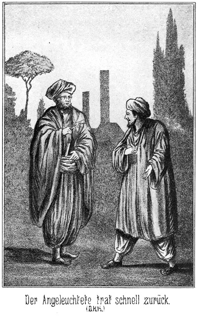»Was thun Sie da?«
»Ich leuchte Sie an,« antwortete der Gefragte trocken.
»Das ist nicht nöthig.«
»O doch! Man will doch sehen, mit wem man spricht.«
Sein Ton war ein unbefangener, doch war das nur erkünstelt, denn er war eigentlich im höchsten Grade betroffen. Er hatte einen Menschen erkannt, welchem hier und in dieser ungewöhnlichen Stunde zu begegnen, eigentlich ein merkwürdiges Ereigniß war, nämlich den Derwisch Osman. Das eigenartige Gesicht desselben war gar nicht zu verkennen, obgleich er nicht die Kleidung der Derwische trug. Natürlich nahm der Lord sich in Acht, nicht selbst auch erkannt zu werden. Vielleicht war es möglich, etwas von ihm zu erfahren.
»Sie haben aber doch nichts davon, wenn Sie auch mein Gesicht sehen,« meinte der Derwisch. »Ich bin Ihnen doch unbekannt.«
»Freilich. Uebrigens habe ich Ihr Gesicht, trotzdem ich es erleuchtete, nicht sehen können. Eine Cigarre ist leider keine Fackel.«
»Zu welchem Zwecke spazieren Sie denn eigentlich hier herum?«
»Hm! Aus unglücklicher Liebe.«
»Was heißt das?«
»Na, sie mag mich nicht.«
»Ach so? Wer ist sie denn?«
»Die Tochter eines anderen Schiffers. Weil ich Christ bin, hat sie mir einen Korb gegeben.«
»Und nun laufen sie in finsterer Nacht herum und fangen Grillen? Das Hilft zu nichts.«
»Freilich, freilich! Was soll ich aber sonst fangen?«
»Es gäbe schon etwas Anderes zu fangen, wenn Sie nur wollten.«
»Was denn?«
»Ein Bakschisch, ein gutes Bakschisch.«
»Ein Schiffer ergreift jede Gelegenheit, ein Trinkgeld zu verdienen. Soll ich Sie irgend wohin rudern?«
»Nein. Es ist etwas Anderes. Haben Sie Zeit?«
»Wie lange?«
»Ein Stündchen ungefähr.«
»Wenn es nicht länger ist, so stehe ich zur Verfügung.«
»Schön. Aber ich muß vorher wissen, ob Sie verschwiegen sind.«
»Unsereiner muß das ja sein.«
»Gut, so kann ich Ihnen mein Geheimniß mittheilen.«
Er trat näher und sagte in vertraulichem Tone:
»Ich habe nämlich auch Eine.«
»Eine? Cigarre? So, so!«
»Unsinn! Ich meine eine Geliebte.«
»Ach so! Sie mag Sie wohl auch nicht?«
»Im Gegentheile, sie mag mich; aber es hat dennoch seine Schwierigkeiten. Sie ist nämlich auch Muhammedanerin. Vom Heirathen kann natürlich da keine Rede sein; aber so ein Bischen tandein und schameriren – Sie verstehen mich?«
»Sehr gut.«
»Sind Sie Frauenliebhaber?«
»Und ob!«
»So bin ich vielleicht im Stande, Ihnen Trost und Ersatz zu bieten. Nämlich die Meinige ist in einem Harem.«
»Donnerwetter!«
»Es sind eine ganze Menge der allerschönsten Mädchens da. Das wäre wohl auch etwas für Sie!«
»Ich bin auf der Stelle dabei, auf der Stelle!«
»Die Schöne hatte mich für heute bestellt. Ich sollte über die Mauer steigen und in den Garten kommen. Ich stellte mich auch ein, vor einer halben Stunde. Aber denken Sie sich mein Pech: Die Mauer war zu hoch!«
»Das ist allerdings sehr dumm!«
»Nun sitzt sie drinnen im Gartenhause und ich bin hausen. Ich mußte gehen und traf da glücklicher Weise auf Sie. Sie sind ungewöhnlich lang.«
»Ah, ich verstehe!«
»Ja. Wenn ich Ihnen auf die Schulter steige, so kann ich ganz gut hinüber. Wollen Sie mir helfen?«
Der Lord vermuthete natürlich, daß es sich nicht um ein Liebesabenteuer, sondern um irgend eine Schurkerei handle. Er freute sich außerordentlich, den Schuft hier getroffen zu haben und von ihm zum Vertrauten gewählt zu werden. Doch hielt er es für klug, sich dies nicht merken zu lassen, sondern die Einwilligung vielmehr zögernd zu geben. Darum antwortete er:
»Hm, etwas Angenehmes ist es nicht.«
»Wieso?«
»Ich helfe Ihnen hinüber und während ich dann auf Sie warten muß, befinden Sie sich da drin im Gartenhause im siebenten Himmel. Das ist ärgerlich.«
»Ah, Sie verlangen auch ein Stück Himmel?«
»Natürlich.«
»So sehr natürlich ist das nun freilich nicht. Die Meinige ist bestellt. Aber Sie weiß doch nicht, daß ich Sie mitbringe. Wie kann da noch eine Zweite da sein! Uebrigens werden Sie ja für das Warten entschädigt. Denken Sie doch an das Trinkgeld, welches ich Ihnen versprochen habe!«
»Ach so! Ja, das ist wahr. Wie viel bieten Sie?«
»Wie viel verlangen Sie für die Stunde?«
»Das möchte ich lieber Ihnen überlassen.«
»Gut. Ich gebe zwei Franken.«
»Zwei? Donnerwetter, müssen Sie da reich sein. Ich wollte einen halben Franken verlangen.«
»So sehen Sie also, daß ich sehr gut bezahle. Nun sagen Sie, ob Sie einwilligen.«
»Ja, natürlich! Zwei Franken! Da mache ich mit. Und wenn Sie mir gar versprechen, daß ich so Eine aus dem Harem bekommen soll, da gehe ich durch das Feuer.«
»Sie sollen Eine haben, aber für heute ist es nicht möglich. Sie müssen warten bis morgen; da gehen wir zusammen wieder hin.«
»Einverstanden. Aber nun sagen Sie mir auch, wer und was Sie sind, da Sie es ja von mir wissen.«
»Das ist eigentlich nicht nöthig. Bei Haremsliebschaften giebt es immer Gefahr, und da ist es besser, wenn man sich gar nicht kennt. Uebrigens bin ich nicht hier wohnhaft. Ich bin Tourist und nehme dieses kleine Abenteuer mit, um eine Erinnerung an Tunis zu haben. Diese einheimische Kleidung habe ich natürlich nur angelegt, um nicht als Ausländer erkannt zu werden, wenn man mich ertappt und ich also zur Flucht gezwungen sein sollte.«
»So sind Sie eigentlich wohl ein vornehmer Herr?«
»Ja. Doch kommen Sie!«
»Wird die Schöne denn bis jetzt gewartet haben?«
»Gewiß. Sie hat mir versprochen, eine volle Stunde auf mich zu warten. Aber wie kommen Sie als Franzose dazu, hier auf dem See Bahira Kahnführer zu sein? Das ist doch eigentlich befremdend.«
»Ganz und gar nicht! Es giebt ja Franzosen hier wie Sand am Meere.«
»Das ist freilich wahr. Folgen Sie mir!«
Er schritt voran, von der Straße links ab.
Da lagen die dunklen Massen eines umfangreichen Gebäudes oder vielmehr eines ganzen Complexes von Häusern. Es fuhr dem Engländer durch den Sinn, ob dies vielleicht der Bardo sein möge, die Residenz des Bey von Tunis.
Der Derwisch führte ihn an der tiefen Seitenfläche dieser Gebäude hin, dann eine lange, lange Mauer entlang und, als diese zu Ende war, rechts um die Ecke derselben eine bedeutende Strecke hin. Dann blieb er stehen, deutete empor und sagte leise:
»Hier ist die Stelle. Grad hier liegt hinter der Mauer das Gartenhaus.«
Der Lord blickte an der Mauer empor und sagte dann:
»Ja, Sie allein können da nicht hinüber. Wenn Sie aber auf meine Achseln steigen, so ist es leicht.«
»Dazu habe ich sie eben mitgenommen.«
»Jetzt aber sehe ich, daß ich eigentlich nicht zu warten brauche, bis Sie zurückkommen.«
»Warum nicht?«
»Die Mauer ist ja gar nicht so hoch, daß Sie mich auch nachher brauchen. Sie können ganz gut herabspringen.«
»Denken Sie? Ah, das ist köstlich! Hören Sie, guter Freund, mit besonderer Weisheit und Pfiffigkeit sind Sie wohl nicht ausgerüstet?«
»Was soll das bedeuten?«
»Nun, es gehört doch gar nicht viel Gehirn dazu, um einzusehen, daß ich Sie brauche, um auch von drüben auf die Mauer kommen zu können.«
»Ach so! Das ist ja wahr. Drüben können Sie doch auch nicht allein hinauf.«
»Also! Sie müssen mit hinüber in den Garten.«
»Aber wie ist das möglich? Wenn ich Ihnen hinauf geholfen habe, kann ich doch nicht auch hinauf. Dazu bin ich nicht lang genug.«
»Da habe ich ein gutes Mittel bei mir. Eine Leiter kann ich nicht mit mir schleppen. Ich hatte gehofft, eine schadhafte Stelle der Mauer zu treffen, wo das Emporklettern möglich sein werde. Leider aber war dies nicht der Fall. Um aber für sonstige Eventualitäten ausgerüstet zu sein, nahm ich wenigstens einen Strick mit. Ich habe ihn mir um die Hüften gebunden. Sie helfen mir hinauf und nehmen dann das eine Ende des Strickes fest in die Hände. Ich klettere drüben an demselben hinab und halte dann so fest, daß Sie hier hinaufklettern und drüben hinabspringen können. Ganz auf dieselbe Weise kommen wir später wieder herüber. Nun werden Sie einsehen, daß Sie mit hinüber müssen, weil ich sonst ja gar nicht wieder heraus könnte.«
»Aber Sie haben da eine Tasche mit, wie ich sehe!«
»Es stecken einige Geschenke für die Geliebte drinnen Also, wollen wir beginnen?«
»Ja. Ich werde die Hände hinten falten und Sie treten da hinein, dann auf die Achseln. Kommen Sie!«
»Da muß ich Ihnen meine Tasche zum Halten geben. Ich ziehe sie dann an dem Stricke empor. Aber seien Sie höchst vorsichtig damit. Es sind einige Kleinigkeiten drin, welche sehr leicht zerbrechen. Ich würde sonst beschämt sein, denn zerbrochene Dinge macht man nicht zum Geschenk.«
Er setzte die Tasche höchst leise und vorsichtig auf die Erde, stieg dann dem Engländer auf die Hände, welche dieser fest zusammenhielt und von da auf die Achseln desselben. Nun befand er sich so hoch, daß die obere Kante der Mauer ihm nicht ganz bis an die Brust reichte. Es war ihm also sehr leicht, hinaus zu kommen. Er setzte sich rittlings oben fest und sagte:
»Jetzt binde ich mir den Strick von der Taille und lasse ihn hinab, damit Sie die Tasche daran befestigen.«
Der Lord hatte dieselbe schon ergriffen; es galt ja, zu erfahren, was sich in derselben befand. Sie hatte keinen Bügel, sondern war oben offen. Er griff hinein und fühlte einen ziemlich langen und starken Holzbohrer, einen runden Wickel, den er für eine Rolle feinen Drahtes hielt, mehrere Nadeln von der Gestalt der Haarnadeln, nur länger und auch stärker, eine Blechkapsel in Form einer viereckigen und kaum einen Zoll hohen Schachtel und noch einige Gegenstände, über deren Natur und Zweck er nicht so schnell klar werden konnte.
»Na, da kommt der Strick,« flüsterte es von oben herab. »Befestigen Sie ihn an die Henkel. Aber sehr vorsichtig, damit Sie mir um Gotteswillen nichts zerbrechen.
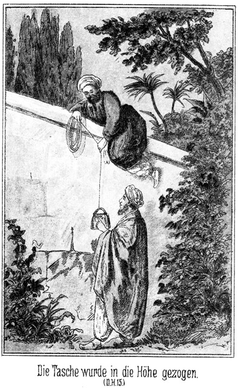Der Inhalt der Tasche mußte von sehr großer Wichtigkeit sein, da der Derwisch gar so sehr ängstlich war. Der Lord that so, wie ihm befohlen worden war. Die Tasche wurde emporgezogen und dann meinte der Derwisch:
»Da haben Sie den Strick wieder! Halten Sie ihn fest, ich klettere daran hinab. Wenn Sie dann merken, daß ich drüben fest halte, klettern Sie hinauf.«
So geschah es. Nach weinigen Augenblicken schon saß der Lord oben. Am Stricke hinabzuklettern, war ihm freilich nicht möglich, da er ihn ja nun fallen lassen mußte. Er legte sich quer mit dem Vorderleibe auf die Mauer, die Beine nach dem Garten gerichtet, rutschte langsam tiefer, bis er nur noch mit den Händen an der Mauerkante hing, und ließ sich dann fallen. Es war ein Sprung von nicht zwei Ellen Höhe; er erreichte den Boden ganz glücklich.
»Da bin ich,« sagte er. »Was nun weiter?«
»Weiter nichts, als daß Sie hier warten, bis ich wiederkomme. Ich gehe hier in den Kiosk.«
Der Kiosk, zu deutsch Gartenhaus, stand ganz in der Nähe. Man konnte ihn trotz der Dunkelheit deutlich sehen. Da er nicht hoch war und von einigen dicht belaubten Bäumen beschattet wurde, hatte der Lord ihn von außerhalb nicht bemerken können, trotzdem das kleine Gebäude sich nicht weiter als nur zehn Schritte von der Mauer befand.
»Steckt sie denn drin?«
»Ja.«
»Da hätte sie ja herkommen können!«
»Sie hat gar nicht bemerkt, daß ich komme.«
»Hm! Wenn ich sie mir doch einmal ansehen könnte!«
»Was Ihnen einfällt! Eine Haremsbewohnerin läßt sich doch nur von dem Geliebten ansehen. Morgen oder übermorgen, wenn wir wiederkommen, können Sie die Ihrige betrachten, die sie mitbringen wird.«
»Ja, wenn Sie wirklich Eine mitbringt!«
»Dafür werde ich sorgen.«
»Schön! Halten Sie Wort!«
»Was ich verspreche das halte ich auch. Also bleiben Sie hier stehen, und seien Sie vorsichtig, daß Sie nicht etwa erwischt werden!«
»Sapperment! Es wird doch Niemand kommen!«
»Es giebt allerdings Gartenaufseher hier, doch glaube ich nicht, daß es einem von ihnen einfallen wird, die Runde zu machen. Sollte dennoch Jemand kommen, so legen Sie sich auf den Boden nieder, um nicht gesehen zu werden. Bedenken Sie, wenn man Sie erwischt, so kann auch ich nicht wieder hinaus!«
Er schlüpfte mit unhörbaren Schritten fort. Der Lord lauschte ein kleines Weilchen. Die tiefe, nächtliche Stille blieb von keinem Laute gestört.
»Sonderbares Abenteuer!« dachte er. »Dieser Hallunke hat kein Mädchen da drin. Er bezweckt etwas ganz Anderes. Wozu hat er den Bohrer? Wozu sind Draht und Nadeln bestimmt? Was befindet sich in der Blechkapsel? Ich werde doch nicht hier stehen bleiben, sondern einmal lauschen. Vielleicht bemerke ich Etwas. Aber ich werde sehr vorsichtig sein müssen.«
Er legte sich auf den Boden nieder und kroch auf Händen und Füßen nach dem Gebäude hin. Dort angekommen, lauschte er mit angestrengtem Gehör, aber ohne allen Erfolg. Er befand sich an der Hinteren Seite des kleinen Gebäudes, welches nur aus Holz bestand. Sollte er um die Ecke kriechen, um den Eingang zu erreichen? Nein, das durfte er nicht. Der Derwisch hätte ihn bemerken können und dann seinerseits Argwohn gefaßt. Er blieb also liegen. Und das war gut, denn nach einiger Zeit vernahm er grad da, wo sich sein Kopf befand, ein leises, eigenthümliches Geräusch. Es war jedenfalls mit dem Bohrer verursacht. Er legte das Ohr an die Stelle, und hielt dann die Hand daran. Nichtig! Jetzt fühlte er die Spitze des Instrumentes, welche diesseits durch das Holz drang. Der Derwisch hatte ein Loch gebohrt.
Zu welchem Zwecke? fragte sich der Lord.
Der Bohrer wurde zurückgezogen, und als der Engländer von Neuem und vorsichtig tastete, fühlte er, daß der ihm bekannte dünne Draht erschien und von dem Derwisch durch das Loch gesteckt wurde. Dieser Letztere schob so lange von innen, bis sich viele Ellen des Drahtes außen befanden, dann hörte er auf.
»Eine Drahtleitung!« sagte der Lord zu sich. »Wozu? Hat er etwa eine gefährliche Absicht? Ich muß aufpassen.«
Er lauschte wieder. Da vernahm er leise Schritte. Der Derwisch hatte den Kiosk verlassen. Der Lauscher hatte kaum Zeit, einige Schritte weit zurückzukriechen, so war der Andere bereits da, um an der Stelle, wo sich das Loch befand, niederzukauern. Was er da that, konnte der Lord nicht sehen.
Nach einigen Minuten schlich sich der Derwisch wieder in das Gebäude zurück. Schnell kroch der Engländer hin und untersuchte die Stelle mit den Fingern. Der Draht war nieder zur Erde gelenkt und da mit Hilfe einer der erwähnten Nadeln festgesteckt worden. Er hatte von da aus dann eine genügende Länge, um bis zur Mauer und über diese hinweggeführt zu werden.
»Jetzt errathe ich, was er will,« dachte der Lord. »Dieser Mensch will das Gartenhäuschen in die Luft sprengen. Aber auf welche Weise? Der Sprengstoff befindet sich jedenfalls in der Kapsel. Der Draht aber ist doch keine Lunte; er brennt nicht. Sollte es mit Elektrizität geschehen? Aber ein Derwisch und Elektrizität! Das paßt ja gar nicht zusammen. Was will ein solcher Kerl davon verstehen!«
Es war sehr gut, daß er aufmerkte, denn nach bereits sehr kurzer Zeit kam der Genannte wieder und setzte seine heimliche Arbeit fort. Der Engländer war schnell zurückgewichen, blieb ihm aber, immer auf der Erde liegend, so nahe, daß er ihn so leidlich beobachten konnte, wenn er auch nicht die einzelnen Bewegungen zu sehen vermochte. Richtig! Der Beobachtete befestigte den Draht an mehreren Stellen bis hin zur Mauer in den Boden. Jetzt war es für den Lord Zeit, sich zurückzuziehen. Er kroch an der Mauer entlang bis hin zur Stelle, wo er hatte warten sollen. Es war nicht weit dorthin. Nach kurzer Frist kam der Derwisch.
»Nun, haben Sie etwas Verdächtiges bemerkt?« fragte er.
»Nein. Es ist Niemand gekommen. War sie da?«
»Ja. Sie hatte eben fortgehen wollen. Sie hatte bereits sehr lange gewartet und konnte nicht länger bleiben. Darum bin ich so rasch wieder da.«
»Haben Sie mit ihr von mir gesprochen?«
»Ja. Ich mußte ihr erzählen, auf welche Weise ich über die Mauer gekommen war.«
»Nun, wie steht es?«
»Gut. Sie bringt Eine mit.«
»Wann?«
»Morgen Abend. Wir sollen um Mitternacht kommen.«
»Das ist gut. Das giebt Ersatz für die Andere, die so dummer Weise mich nicht mag. Gehen wir?«
»Noch nicht gleich. Wir haben noch Etwas zu thun. Nämlich dieses gescheidte Mädchen hatte einen sehr guten Gedanken. Das Aufeinandersteigen ist gefährlich. Es giebt eine bessere Weise, über die Mauer zu kommen, nämlich mit einer Strickleiter.«
»Was hilft es uns, wenn wir eine Strickleiter mitbringen? Wir müßten doch herüber, um sie zu befestigen. Und wenn wir einmal herüber sind, so brauchen wir sie ja nicht. Das ist klar.«
»O, nicht wir, sondern die Mädchen werden die Leiter befestigen.«
»Ach so? Wir werfen sie ihnen herüber?«
»Nein. Ich habe da so ein Stückchen ganz dünnen Draht, um ihn in den Mauerritzen feststecken zu können. Diesen Draht führen wir hier an der Mauer empor und drüben wieder hinab. Verstanden?«
»Hm! Ja.«
»Das klingt ja recht bedenklich.«
»Es ist mir Einiges nicht klar. Wir sollen draußen die Strickleiter an den Draht befestigen?«
»Ja. Die beiden Mädchen ziehen sie dann an demselben zu sich herüber.«
»Aber der Draht steckt ja fest.«
»Blos einstweilen. Die Nadeln werden natürlich entfernt, wenn wir ihn gebrauchen. Jetzt aber müssen wir ihn anstecken, weil er doch nicht lose über die Mauer gelegt werden kann, da man ihn sonst ja leicht bemerken könnte. Verstehen Sie das nun?«
»Ja, jetzt ist mir die Sache klar.«
»So kommen Sie. Ich habe bereits eine Probe gemacht. Einige Schritte von hier geht es am Besten.«
Warum es Draht sein mußte, und warum dieser nicht hier, sondern grad dort, einige Schritte entfernt, befestigt werden mußte, das vergaß er zu erklären. Er hielt seinen Begleiter für dumm. Er hatte ihn heute nothwendig gebraucht, morgen brauchte er ihn nicht mehr, denn da war ja bereits geschehen, was er beabsichtigte. Wenn dieser dumme Mensch nur bis dahin schwieg, so war ja Alles gut, so unglaublich auch das Märchen war, welches er ihm erzählte.
*
Jetzt wurde der Draht an der Mauer emporgezogen, mit einigen Nadeln in die Ritzen befestigt, und dann stiegen sie empor, um ihn drüben herabzulassen und abermals anzustecken. Er war so dünn, daß er allerdings nicht leicht bemerkt werden konnte, selbst am Tage nicht. Hinauf und drüben hinab kamen sie natürlich auf dieselbe Weise, wie sie vorher in den Garten gelangt waren. Die Tasche bekam der Engländer jetzt nicht mehr in die Hand.
»So!« meinte der Derwisch, als sie fertig waren. »Jetzt haben wir unsere Vorbereitungen getroffen und können gehen. Morgen kommen wir wieder.«
Der Lord folgte einer augenblicklichen Eingebung. Er zog sein Klappmesser aus der Tasche, machte es auf und steckte es mit der Klinge in eine Mauerspalte, um die Stelle sicher finden zu können. Er nahm sich vor, nach dem italienischen Hause zu gehen und Normann und Wallert herzuführen. Das Messer sollte dann in der Finsternis; als Zeichen dienen, daß sie sich an der richtigen Stelle befanden. Während er dem jetzt fortschreitenden Derwisch folgte, fragte er im Anschlusse an dessen letzte Worte:
»Wo aber treffen wir uns?«
»Nicht hier hinten. Wenn Einer auf den Andern da wartet, kann man leicht merken, daß da Etwas geschehen soll. Ich werde Ihnen die Stelle zeigen. Kommen Sie.«
Sie kamen um die Ecke und kehrten an der Mauer entlang in der Richtung nach der Straße zu zurück, dort angekommen, erkundigte sich der Derwisch:
»Setzen Sie nun Ihren phantastischen Spaziergang fort, oder gehen Sie nach Hause?«
»Das Letztere.«
»Also gehen Sie nach rechts, der Stadt zu. Da haben wir den gleichen Weg und können noch einige Augenblicke zusammen bleiben. Folgen Sie mir! Natürlich werden Sie zu Niemand Etwas von unserm Abenteuer sagen!«
»Keinem Menschen!«
»Das erwarte ich ganz bestimmt. Es wird Sie freuen, morgen Abend ein schönes Mädchen aus dem Harem in Ihren Armen halten zu können. Dabei wiederhole ich, daß es für unsere eigene Sicherheit und auch in jeder andern Beziehung am Allerbesten ist, daß wir uns gar nicht kennen. Darum habe ich Ihnen meinen Namen und meine Wohnung nicht genannt und frage auch Sie nicht nach den Ihrigen. Es genügt, daß wir einen Ort bestimmen, an welchem wir uns kurz vor Mitternacht treffen.«
Sie waren indessen schnell vorwärts gegangen. Sie kamen an dem Hause vorüber, welches Ibrahim Pascha gemiethet hatte und in welchem auch der Derwisch wohnte. Das wollte dieser aber nicht merken lassen. Darum führte er seinen Begleiter schweigend weiter bis zu der Wasserleitung, die selbst in ihren Resten noch Zeugniß giebt von der Großartigkeit der Unternehmungen früherer Jahrhunderte. Da blieb er stehen und sagte:
»Jetzt wollen wir uns trennen. Hier unter diesem Mauerbogen, unter welchem wir stehen, wollen wir uns treffen. Ist es Ihnen so recht?«
»Natürlich,« antwortete der Lord, welcher sehr wohl wußte, daß er ihn hier vergebens erwarten würde.
»So sollen Sie jetzt die verabredete Bezahlung erhalten.«
Er griff in die Tasche. Während er nach dem passenden Gelde suchte, war es, da keiner von Beiden sprach, still, und daher kam es, daß sie ein Geräusch hörten, welches sich ihnen aus der Richtung des erwähnten Hauses näherte. Es waren die Schritte zweier Personen.
»Es kommen Leute!« flüsterte der Derwisch. »Man braucht uns nicht zu sehen. Verhalten Sie sich ruhig und drücken Sie sich an die Mauer, bis sie vorüber sind!«
»Ducken wir uns lieber ganz nieder. Das ist besser.«
Sie kauerten sich nieder. Die beiden Männer kamen, sich halblaut unterhaltend, und zwar, wie der Lord zu seinem Erstaunen hörte, in deutscher Sprache. Auch die Stimmen kamen ihm bekannt vor. Er horchte gespannt auf.
»Jetzt kann man sich wieder eine Cigarre anbrennen,« sagte der Eine. »Hast Du Feuer?«
»Ich, gleich – da!«
Ein Wachshölzchen blitzte auf und beleuchtete die Gesichter der Beiden, welche kaum zehn Schritte entfernt von den zwei Verborgenen stehen geblieben waren. Was der Lord bei dem Klange ihrer Stimmen vermuthet hatte, wurde jetzt zur Gewißheit; er erkannte Normann und Wallert. Von ihnen hatte er nichts zu befürchten, doch um des Derwisches willen blieb er ruhig. Dieser war bei dem Anblicke der Gesichter zusammengezuckt.
»Allah, Allah!« entfuhr es ihm. »Diese Kerls, diese –«
Er hatte es zwar nicht laut gesagt, aber Normann drehte sich doch um und fragte:
»Hörtest Du?«
»Was?«
»Mir war es, als ob hier Jemand gesprochen hätte.«
»Pah! Die Luft streicht durch den Mauerbogen. Komm, gehen wir!«
Sie entfernten sich langsam nach der Stadt zu. Jetzt fuhr der Derwisch aus seiner kauernden Stellung aus und sagte:
»Ist das wahr? Kann das wahr sein?«
»Was?«
»Ich meine diese beiden Männer.«
»Kennst Du sie?«
»Ja. O, nur zu gut.«
»Es sind Europäer.«
»Ja, Europäer und die größten Hallunken, welche es giebt. Sie sind hier in Tunis! Sie waren hier bei – – ah, was thun sie grad hier an dieser Stelle? Ich muß das wissen. Ich muß wissen, wohin sie gehen, wo sie wohnen. Ich muß ihnen nach, gleich, sofort!«
Er befand sich in einer solchen Aufregung, daß er dem Lord gegenüber gar nicht daran dachte, daß er ja vorsichtig sein müsse. Er that zwei, drei rasche Schritte vorwärts, blieb aber wieder stehen und sagte:
»Aber sie waren da, sie waren hier! Was haben sie gewollt? Wie haben sie es erfahren? Ist etwa gar Etwas geschehen? Ich muß das wissen, das ist noch viel nothwendiger. Hölle und Teufel! Was mache ich? Ich muß ihnen nach und muß doch auch – – in das Haus!«
Er stieß das in fliegender Eile hervor. Da kam ihm ein Gedanke. Er fragte:
»Zwei Francs haben Sie sich bereits verdient. Wollen Sie sich noch zehn weitere verdienen?«
»Wenn ich kann, ja. Zehn Francs! Das ist ja ein richtiger Reichthum für mich!«
»Gut. Folgen Sie diesen beiden Männern heimlich nach. Ich muß nämlich wissen, wo sie wohnen.«
»Das werde ich gern thun. Soll ich sie fragen?«
»Dummheit! Mensch, Sie sind doch noch viel dümmer als ich dachte! Die Zwei dürfen gar nicht ahnen, daß Sie hinter ihnen sind.«
»Schön! Wann soll ich Ihnen Bericht erstatten? Wohl morgen Abend, wenn wir uns hier treffen?«
»Nein, ich muß es gleich wissen, gleich!«
»So werden Sie mir doch Ihre Wohnung sagen müssen.«
»Das ist nicht nöthig, Sie kommen hierher. Ich erwarte Sie hier. Bin ich noch nicht da, so warten Sie, bis ich komme. Aber lassen Sie es Ihnen nicht merken!«
»Fällt mir gar nicht ein!«
»So laufen Sie; laufen Sie! Fort, fort!«
Er schob den Lord vorwärts. Dieser ging, aber als er sich so weit entfernt hatte, daß er von ihm nicht bemerkt werden konnte, blieb er stehen und brummte.
»Verteufelt, verteufelt! Was thue ich? Ich wollte doch dem Kerl nachschleichen, um zu erfahren, wo er sich aufhält. Und nun jagt er mich fort. Was thue ich. Diese Zwei finde ich ja sicher, aber ihn – – Donnerwetter! Ich bin wirklich so dumm, wie er sagte! Er will ja in das Haus. In welches, das weiß ich nicht. Aber er hatte es so eilig und steht ganz gewiß nicht mehr dort unter dem Bogen, um sich von mir belauschen zu lassen. Es ist also doch am Besten, ich laufe den Beiden nach.«
Das that er. Als er sie erreichte, traten Sie zur Seite. Sie hatten seine eiligen Schritte gehört und wollten ihn vorüber lassen. Er aber blieb stehen und sagte lachend:
»Halt, Kerls! Heraus mit dem, was Ihr habt! Das Geld oder das Leben!«
»Was der Teufel!« antwortete Normann. »Der Lord!«
»Wirklich! Der Lord!« fiel Wallert ein. »Wo um aller Welt willen kommen Sie denn her?«
»Wenn ich es Ihnen sage, werden Sie staunen.«
»Wohl von der berühmten Entführung der drei Mädchen?«
»Nein. Die ist leider verunglückt, dafür aber ist mir etwas Anderes desto besser gelungen. Rathen Sie, wen ich getroffen habe!«
»Das wäre Zeitverschwendung. Sagen Sie es selbst!«
»Den Derwisch.«
»Den? So!«
Das klang gar nicht etwa sehr überrascht; darum zürnte der Lord:
»Den? So? Das ist Ihre ganze Antwort?«
»Was sollen wir denn sagen?«
»Die Hände über den Kopf zusammenschlagen sollen Sie vor Verwunderung!«
»Fällt uns nicht ein.«
»Nicht! Sapperment! Ich finde den Kerl, den wir so eifrig suchen, und das ist Ihnen so gleichgiltig!«
»Was ist das weiter! Wir haben noch weit mehr gefunden.«
»So? Was denn?«
»Das ganze Nest, den Pascha mit den Mädchen.«
»Alle Teufel! Wo denn?«
»In dem Hause da hinter der Wasserleitung.«
»Sapperment! Da, also da wohnt er! Also darum sagte er, daß er in das Haus müsse!«
»Wer?«
»Der Derwisch. Er hat Sie gesehen.«
»Doch nicht!«
»Ja. Ich stand dabei. Er wollte Ihnen nach, besann sich aber anders und schickte mich Ihnen nach. Ich soll zehn Francs erhalten, wenn ich ihm sage, wo Sie wohnen.«
»Sie schickt er uns nach, Sie?«
»Ja; ich sage es doch!«
»Das ist freilich wunderbar! Er kennt Sie doch!«
Er hat mich nicht erkannt; es war zu dunkel dazu, und ich trage ja türkisches Habit. Ach, ich habe ein Abenteuer erlebt; ich habe mich so klug verhalten! Sie werden staunen, im höchsten Grade staunen!«
»So kommen Sie und erzählen Sie.«
»Gern. Aber vorher sagen Sie mir, was Sie hier vor der Stadt wollen, so spät in der Nacht.«
»Wir sind eben im Garten des Pascha gewesen.«
»Wie, im Garten des Pascha!? Haben Sie Jemand gesehen?«
»Nicht nur gesehen, sondern sogar gesprochen.«
»Die Damen etwa? Tschita und Zykyma?«
»Ja.«
»Das müssen Sie mir erzählen! Rasch, schnell.«
»Sie sollen es natürlich hören. Vielleicht aber ist es nothwendig, daß Sie uns vorher Ihr Erlebniß erzählen. Also kommen Sie, und berichten Sie es uns, indem wir nach der Stadt gehen.«
»Nach der Stadt gehen wir nicht. Wir müssen anderswo hin. Aber hier auf der Straße dürfen wir nicht bleiben, sonst könnte dieser Hallunke es merken. Gehen wir also hier links ab. Ich werde Ihnen gleich erklären, warum dies nothwendig ist. –«
Die beiden Freunde hatten nur die Absicht gehabt, sich über die Lage des Hauses zu unterrichten, in dem die beiden Mädchen abgeschlossen gehalten wurden. Aber als sie es erreicht hatten, war es ihnen doch nicht möglich gewesen, sogleich wieder umzukehren.
»Gehen wir einmal rund herum?« fragte Wallert.
»Ja, meinetwegen. Aber ganz leise, damit der Wächter uns nicht hören kann.«
Das Haus lag mitten in einem Garten und zwar Etwas von der Straße ab. Außerhalb des hohen, dichten Heckenzaunes, der den Garten umschloß, gab es weiches, unbebautes, mit Gras bewachsenes Land. Die Grasnarbe machte die Schritte der Beiden unhörbar.
Indem sie um das Grundstück herumgingen, konnten sie zwar über den Zaun hinüberblicken, aber, da dieser sehr hoch war, nur das Dach des Hauses sehen. Der Heckenzaun war zweimal unterbrochen, vorn am Eingange durch ein hohes und starkes, hölzernes Thor, und auf der hintern Seite durch ein schmales Lattenpförtchen. Als sie dieses Letztere erreichten, untersuchte Normann die Festigkeit desselben.
»Man könnte diese Latten mit geringer Kraftanwendung losreißen,« sagte er; »aber leider würde das Lärm verursachen.«
»Willst Du denn hinein?«
»Hm, wenn es möglich wäre, ohne bemerkt zu werden, dann ja. Denke Dir, dort steckt Tschita, und hier stehe ich! Giebt es da Etwas zu erklären?«
»Freilich nicht. Mir geht es ja ganz ebenso. Aber der Wächter! Vielleicht befindet er sich grad hier in der Nähe.«
»Das ist nicht zu erwarten. Der Harem liegt, wie wir gehört haben, dort an der Giebelseite, die nach der Stadt gekehrt ist. Dort also wird er sich aufhalten.«
»Dann könnte man vielleicht Etwas wagen.«
»Ja, wenn nur diese Latten – na, man könnte ja darüber klettern; aber es kracht, und da – Ah!«
»Was giebt es?«
»Da fühle ich den Verschluß. Es ist kein Schloß.«
»Nicht? Was denn?«
»Ein ganz einfacher Holzriegel.«
»Herrlich! Da gehen wir natürlich hinein!«
»Versteht sich. Wollen aber versuchen, wie es mit den Angeln steht. Vielleicht kreischen sie.«
Er griff zwischen den Latten hinein und entfernte den Riegel; dies gelang ohne alles Geräusch. Aber als er dann die Thür versuchsweise leicht bewegte, da knarrte sie laut.
»O weh!« klagte Normann. »Das ist fatal!«
»Ach was, fatal. Was kümmern wir uns um den Wächter. Wenn er kommt, nun, so werden wir uns schon zu helfen wissen.« Wallert machte dabei eine handgreifliche Bezeichnung.
»Das werden wir hübsch bleiben lassen. Ja, wenn wir die Damen fortholen und es träte uns da der Wächter entgegen, dann bin ich auch Deiner Ansicht; so weit aber sind wir ja nicht.«
»Wir können aber leicht so weit kommen. Ich habe große Lust, sie sofort herauszuholen. Was sagst Du dazu?«
»Ich habe nicht weniger Lust dazu als Du. Wir könnten sie ja sofort nach der Yacht schaffen. Aber das ist leichter gesagt als gethan. Recognosciren wir einmal. Wir dürfen die Thür nur höchst langsam öffnen, ein halber Zoll nach dem Andern; dann ist das Geräusch nicht so bedeutend.«
»Das dauert aber zu lange. Ich habe zuweilen versucht, kreischende Thüren geräuschlos zu öffnen, und es ist mir damit gelungen, daß ich mit einem einzigen, plötzlichen Rucke aufmachte, also so!«
Er ergriff die Thür. Er wollte es nur erklären, aber in dem Verlangen, hinein zu kommen, that er es auch; er schob die Thür rasch und kräftig auf. Es gab zwischen den Angeln einen schrillen, pfeifenden, weithin dringenden Laut. Beide erschraken und Wallert klagte:
»Das ist dumm! Nun ist's aus; wir müssen fort!«
»Nein, grad nicht. Schnell hinein!«
Er schob den Freund in den Garten, machte die Thür unter ganz demselben Geräusch zu, schob den Riegel vor und zog dann Wallert schnell eine ganze Strecke mit sich fort, längs des Zaunes hin.
»So!« flüsterte er. »Jetzt nun wieder in das Gras und so eng in den Zaun hineingeschmiegt, wie es möglich ist!«
Sie hatten sich kaum niedergelegt, so nahten Schritte.
»O weh! Er kommt!« flüsterte Wallert.
»Ich dachte es mir. Jetzt nun vor allen Dingen Glück.«
Der Wächter ging an ihnen vorüber und zwar so nahe, daß sie ihn hätten bei den Beinen fassen können. Er begab sich nach der Thür, um sie zu untersuchen. Sie hörten ihn brummen. Er fand sie verriegelt; er konnte sich die Sache nicht recht erklären, und es dauerte lange, ehe er sich beruhigte und dann langsam nach der Giebelseite des Hauses zurückkehrte.
»Gott sei Dank,« meinte Wallert. »Das war gewagt!«
»Aber das Beste und Richtigste, was wir nur thun konnten, da Du die Thür einmal geöffnet hattest. Ausreißen und die Thür offen lassen, das ging ja nicht. Der Wächter hätte bemerkt, daß Jemand da gewesen sei.
»Ja, das durften wir unmöglich. Zugemacht mußte die Thür wieder werden.«
»Gewiß, und da war es ja besser, wir befanden uns nach dem unvermeidlichen Geräusch im Garten als außerhalb desselben. Jetzt ist's gelungen, und nun wollen wir sehen, was sich weiter thun läßt.«
»Wir müssen uns natürlich nach der Seite schleichen, wo die Mädchen wohnen.«
»Aber am Boden liegend. Komm! Ich krieche voran!«
Sie bewegten sich langsam auf den Händen und Beinen vorwärts, längs des Zaunes hin. Der Abstand von dem Zaune bis zum Hause hin betrug bei allen vier Seiten dasselbe, ungefähr zwanzig Ellen. Dieser Raum war nicht überall offen. Es standen Bäume da und es gab auch einige Sträucher.
Als sie die betreffende Seite des Zaunes erreicht hatten, konnten sie den Giebel des Hauses erblicken, aber wegen der Entfernung und der nächtlichen Finsterniß nur in dunklen Umrissen.
»Bleibe hier!« flüsterte Normann. »Ich werde mich einmal näher wagen!«
»Wenn er Dich bemerkt.«
»Ich nehme mich in Acht!«
»Und trotzdem kannst Du auf ihn treffen.«
»Dann bin ich allein Manns genug für ihn.«
»Er hatte eine Flinte in der Hand.«
»Er würde gar nicht zur Vertheidigung kommen, zum Angriffe noch weniger. Also verhalte Dich ganz ruhig, bis ich zu Dir zurückkehre!«
Er kroch dem Gebäude entgegen. In Folge seines dunklen Anzuges war er nicht von dem Grase zu unterscheiden. Es dauerte nicht lange, so vernahm er ein Räuspern, welches ihm sagte, wo der Wächter sich befand. Er hielt es für das Klügste, sich grad nach dieser gefährlichen Richtung zu wenden.
Da wo die Grasnarbe von dem rings um das Haus führenden Sandwege begrenzt wurde, saß der Wächter auf einer steinernen Bank. Das war höchst fatal! Normann bewegte sich bis fast an diese Bank. Es war ihm jetzt möglich, die Einzelnheiten des Hausgiebels zu unterscheiden.
Er bemerkte eine Art Verandah, welche auf zwei hölzernen Säulen ruhte. Ueber ihr gab es zwei Läden, von denen der eine verschlossen der andere aber offen zu sein schien, was er aus dem verschiedenen Dunkel der beiden viereckigen Stellen schloß. Die Körperhaltung des Wächters ließ erwarten, daß er keine Lust habe, seinen jetzigen Platz ohne Veranlassung aufzugeben.
Jetzt kehrte Normann zu dem Gefährten zurück, welcher fast ungeduldig geworden war, da die Abwesenheit länger gedauert hatte als bei anderen Verhältnissen nöthig gewesen wäre.
»Endlich! Hast Du Günstiges gesehen?«
»Beides, Günstiges und Ungünstiges. Es giebt dort eine Verandah, welche nicht schwer zu erklettern ist. Oben habe ich einen offenen Laden bemerkt.«
»Ah! Wir können also hinauf und hinein!«
»Nicht so hitzig! Der Wächter sitzt grad dort auf einer Bank.«
»Das ist dumm!«
»Das ist im Gegentheil sehr gescheidt von ihm, für uns aber leider unbequem. Wenn man nur gewiß wüßte, daß sie da oben auf dieser Seite wohnen.«
»Nun, der Arabadschi hat es ja gesagt, und der muß es doch wohl wissen.«
»Das denke ich auch. Hm!«
»Wenn der Wächter da fortzubringen wäre!«
»Für unmöglich halte ich es nicht.«
»Dann schnell hinauf!«
»Alle Beide aber nicht.«
»Warum nicht?«
»Geschieht Etwas, so stecken wir dann Beide in der Falle. Einer muß unten bleiben. Uebrigens ist es ja nur auf diese Weise möglich, den Kerl von seiner Bank fortzulocken.«
»Ah, diese Absicht hast Du also!«
»Erräthst Du es?«
»Ja. Der Eine muß die Aufmerksamkeit des Wächters auf sich ziehen, indessen klettert der Andere hinauf.«
»Ja, so meine ich es. Wollen wir?«
»Gewiß, wir sind einmal da. Ich wage Alles!«
»Das Wagniß ist nicht gar zu groß. Wir haben unsere Revolver; da nehmen wir es mit Mehreren auf anstatt nur mit Einem. Das einzig Bedenkliche ist, daß wir auf die Mädchen Rücksicht nehmen. Werden wir erwischt, so verschlimmert sich ihre Lage. Also alle Vorsicht. Jetzt nun frägt es sich, wer unten bleibt, und wer hinauf klettern soll.«
Wallert schwieg ein Weilchen. Er kämpfte mit sich selbst. Er wäre gar zu gern hinauf. Endlich fragte er:
»Welches von Beiden hältst Du für das Gefährliche?«
»Es ist wohl Beides gleich. Oben giebt es Gefahr. Ein einziger Laut der Ueberraschung von Seiten der Damen kann Unheil bringen. Unten aber ist es ebenso, da der hier Bleibende eben die Aufmerksamkeit des Wächters auf sich ziehen muß. Wähle Du!«
»Was soll ich wählen! Natürlich möchtest Du gern hinauf?«
»Es wäre Unsinn, es nicht einzugestehen.«
»Nun, so gehe Du!«
»Aber Dir thut es leid!«
»Du hast Tschita oben, während Zykyma meine Geliebte nicht ist. Das giebt den Ausschlag.«
»Gut, ich nehme diese Entscheidung an. Dabei fällt mir ein, daß es grad nicht nothwendig ist, Dich in Gefahr zu begeben.«
»Ich werde vorsichtig sein. Ich schleiche mich nach der anderen Seite und mache dort einiges Geräusch. Kommt er, so verstecke ich mich schnell. Unterdessen bist Du oben.«
»Auf diese Weise aber ist es möglich, daß er Dich sieht.«
»Ich muß es eben darauf ankommen lassen.«
»Nein; das ist nicht nothwendig. Du mußt nämlich werfen. Ich habe hier auf dem Rasen Steine genug gefühlt. Je weiter Du wirfst, desto weiter entfernt bist Du von dem Orte, an welchem das Geräusch entsteht, desto größer also ist auch Deine Sicherheit.«
»Das ist sehr richtig. Du mußt ihn, wenn er einmal die Bank verlassen hat, wenigstens fünf Minuten lang beschäftigen. So viel Zeit brauche ich.«
»Wie aber weiß ich es, wenn Du wieder herab willst?«
»Ich werde – hm, das ist bedenklich. Ein Zeichen muß ich geben, welches ihm nicht auffällt. Ah, da fällt mir ein: ich kann das Zirpen des Heimchens sehr täuschend nachahmen. Ich habe das als Knabe sehr oft gethan.«
»Gut, dieses Zirpen wird seinen Verdacht nicht erwecken. Also, beginnen wir! Es ist bereits weit nach Mitternacht und wir müssen die Dunkelheit benutzen.«
»Ich begebe mich natürlich wieder hin zu ihm. Das wird eine Minute in Anspruch nehmen. Dann wirfst Du.«
Er kroch wieder nach der Bank hin. Er glaubte, in der nächsten Nähe derselben am allersichersten zu sein; darum streckte er sich unmittelbar hinter ihr in das Gras. Nun brauchte er nicht lange zu warten, so schien sich auf der anderen Seite des Hauses Etwas durch die Büsche zu bewegen. Wallert hatte einen Stein hineingeworfen. Der Wächter sprang auf und horchte. Es erfolgte ein zweiter Wurf und infolge dessen ein abermaliges Rascheln in den Zweigen. Der Wächter brummte leise etwas in den Bart und entfernte sich.
Normann sah ihn um die Ecke des Hauses verschwinden. Im Nu sprang er nach der einen Säule. Er war ein gewandter Kletterer. Drei, vier hastige Griffe seiner Arme und er war oben, legte sich aber sofort platt auf die Deckung nieder, da es ohne Geräusch nicht abgegangen war.
Das war sehr gut, denn der Wächter kehrte sehr eilig zurück, blieb lauschend stehen, blickte herauf, ging dann hin und her, und brummte so vernehmlich, daß Normann es oben hörte.
In diesem kritischen Augenblicke warf Wallert von Neuem; der Wächter begab sich sogleich abermals nach der anderen Seite. Da richtete sich Normann auf. Er hatte von unten richtig gesehen. Es gab hier oben zwei Läden, einen geöffneten und einen verschlossenen. An dem Ersteren erschien in diesem Augenblick etwas Weißes.
»Ist Jemand da?« fragte eine unterdrückte Frauenstimme in türkischer Sprache.
»Ja«, antwortete er. »Die Rettung ist da. Wer bist Du?«
»Zykyma,« erklang es leise.
»Tritt zurück!«
Sie verschwand von der Oeffnung, und einige Augenblicke später war er eingestiegen, blieb aber am Fenster stehen und blickte herab. Grad jetzt kam der Wächter zurück und patrouillirte unten auf und ab.
Jetzt erst wendete er sich nach dem Innern des Raumes. Zykyma stand nahe bei ihm. Sie flüsterte:
»Normann Effendi! Allah sei gepriesen in alle Ewigkeit. Wo ist Wallert Effendi?«
»Unten im Garten. Er hat dafür zu sorgen, daß Euer Wächter mir Zeit zum Klettern giebt. Wo ist Tschita?«
»Im Nebenraume. Sie schläft.«
»Und Du nicht!«
»Wir hatten bis spät gewacht, denn wir hatten die frohe Botschaft vernommen, daß Ihr in Tunis seid.«
»Wohl von Saïd?«
»Ja. Dann legten wir uns zur Ruhe. Tschita schlief bald ein. Sie hatte so lange nicht geschlafen, nur stets gewacht, um zu weinen. Auch mich wollte der Schlaf ergreifen; da hörte ich das Klingen der Gartenpforte. Ich ahnte, daß Ihr es sein würdet. Ich hatte mir gedacht, daß Ihr keine Ruhe haben würdet. Ich stand wieder auf, ohne aber Tschita zu wecken, und beobachtete den Wächter. Er war fort. Er kam wieder und setzte sich. Dann stand er wieder auf und ging; darauf kam Jemand heraufgeklettert. Du bist es! O Ihr Heiligen; nun dürfen wir wieder Hoffnung haben!«
»Nicht nur Hoffnung, sondern Gewißheit. Aber darf ich nicht mit Tschita sprechen.«
»O wie gern; aber ich muß erst zu ihr. Sie würde vor Glück laut aufschreien und Dich verrathen. Hier ist mein Zimmer und drüben das ihrige. Warte hier.«
Sie trat in die Nebenstube. Er blieb stehen. Sein lauschendes Ohr vernahm heimliche Stimmen, dann einen unterdrückten Laut, und dann huschte es zu ihm herein. Zwei weiche, warme Arme legten sich um ihn, ein Köpfchen drängte sich an seine Brust, doch ohne einen Laut, ein Wort hören zu lassen.
Er schlang die Arme um sie und flüsterte:
»Tschita! Meine Blume, meine Wonne, meine Seligkeit! Endlich, endlich habe ich Dich wieder. O, nun ist Alles, Alles gut. Was mußt Du gelitten haben!«
Sie antwortete nicht, aber ihr Körper erbebte an dem Seinen unter dem Schluchzen, welches sie kaum zu unterdrücken vermochte.
»Sprich ein Wort, ein einziges!« bat er.
Sie schmiegte sich fester an ihn, aber antworten konnte sie nicht. Er wartete, bis diese erste Aufregung vorüber war. Dann sagte er:
»Jetzt soll uns nichts wieder scheiden. Gehst Du mit mir?«
»Ja,« flüsterte sie.
»Heut? Gleich?«
»Gleich jetzt?«
»Ja.«
»Nein; das ist unmöglich.«
»Warum nicht?«
»Ich könnte die Mutter nicht mitnehmen. Sie ist nicht hier bei uns. Sie ist krank und liegt unten.«
»Was fehlt ihr?«
»Sie glitt heute aus und fiel die Stiege hinab. Darauf konnte sie nicht stehen und nicht gehen. Es wurde der Arzt geholt, er hat sie verbunden und es verboten, daß sie heraufgeschafft werde.«
»O weh, o weh! Hat er nicht gesagt, wann sie geheilt sein wird?«
»Nein. Ich wollte bei ihr bleiben, aber – –«
Sie stockte.
»Du durftest wohl nicht?«
»O, ich hätte gedurft, aber ich kann nicht.«
»Warum nicht?« fragte er zudringlicher als ihr lieb war.
»Zykyma ist doch oben und des Nachts muß ich bei ihr sein, da sie den Dolch hat.«
Jetzt wußte er, was sie meinte. Der Dolch war ja die einzige Waffe gegen die Zudringlichkeit, gegen die Leidenschaft Ibrahim Paschas.
»Meine arme, arme Tschita! Wie fürchterlich muß es sein, die Sclavin eines solchen Menschen zu sein! Wie bin ich erschrocken, als ich zu Barischa kam und da hörte, daß Du verkauft seist!«
»Ich wäre nicht mit fortgegangen; ich hätte mich gewehrt; aber der Alte sagte, daß es nur ein Spaziergang in das Thal der süßen Wasser sei.«
»Dann waren wir bei Euch im Garten. Ich erfuhr, daß Du bei Zykyma seist! Wie war ich froh! Aber Ihr wart auf einmal wieder fort!«
»Der Gräßliche hatte uns das Bewußtsein geraubt. Als wir erwachten, befanden wir uns auf dem Schiffe.«
Nun gab es ein Erzählen, ein Klagen und Trösten. Die Herzen der Beiden flossen über, flossen in einander.
Zykyma war drüben geblieben. Jetzt lehnte sie am Eingange, doch ohne ein Wort zu sagen. Sie gönnte der Liebe ihre Rechte. Erst als die Beiden ruhiger geworden waren, nahm sie Theil am Gespräch.
Normann erfuhr, daß draußen vor den beiden Giebelstuben ein Wächter liege. Dennoch hielt er es für nicht gar zu schwer, fortzukommen und bedauerte nur, daß die Mutter krank geworden sei. Für den Augenblick war leider nichts zu thun. Es wurde ausgemacht, daß Saïd am Morgen Nachricht nach dem italienischen Hause bringen solle. Nach dieser Nachricht wollten die Freunde dann bestimmen, was zu thun sei.
Wie gern wäre er noch da geblieben, aber während des leise geflüsterten Gesprächs hatte man sich so viel zu fragen, und zu antworten gehabt, daß eine bedeutende Zeit vergangen war. Als Normann jetzt einen Blick hinauswarf, sah er am östlichen Himmel die ersten grauen Streifen des Tages erscheinen. Er mußte fort, denn die Gefahr, in welcher er sich befand, verzehnfachte sich mit jeder Sekunde, welche er länger blieb.
Er trat an den Laden, hielt die Hand an den Mund und ahmte das verabredete Zeichen nach. Es dauerte gar nicht lange, so stand der Wächter unten von seiner Bank auf und verschwand hinter der Ecke des Hauses.
»Jetzt, jetzt muß ich fort,« sagte er, die Geliebte an sich drückend. »Leb wohl!«
»O Allah, Allah!« jammerte sie leise. »Du wirst doch wiederkommen?«
»Gewiß, gewiß! Jetzt sollst Du mir nicht wieder entrissen werden. Aber ich darf nicht länger warten! Lebt wohl!«
Ein Kuß, ein Händedruck dann für Zykyma, und er stieg hinaus. Er hatte kaum Zeit, sich auf die Deckung niederzulegen, so erschien der Wächter wieder, doch um nach wenigen Augenblicken wieder zu verschwinden.
»Komm wieder, Paul,« flüsterte Tschita durch das Fenster.
»Grüße mir ja Wallert Effendi,« fügte Zykyma hinzu. »Saïd wird kommen!«
Dann schwang er sich hinab und sprang in weiten Sätzen über den Kiesweg hinüber in das Gras, wo er sich sofort niederwarf, da in demselben Augenblicke der Wächter wieder erschien. Von hier aus kroch er nach dem Zaune. Wallert war nicht da, kam aber bald herbei.
»Gott sei Dank!« sagte er. »Mir war Angst um Dich. Das dauerte ja eine Ewigkeit.«
»Ich denke, daß es nur eine Minute gewesen ist.«
»Nun, wie steht es?«
»Du erfährst es, aber zunächst fort von hier.«
»Ohne sie mitzunehmen?«
»Ja, leider. Komm nur nach der Pforte.«
Jetzt, wo sie wußten, an welchem Punkte der Wächter sich befand, konnten sie sich freier bewegen. Sie krochen nicht mehr, sondern sie schritten nach der Pforte, deren Kreischen ihnen jetzt keinen Schaden mehr bringen konnte. Mochte der Wächter noch so rasch herbeieilen, sie waren doch bereits um die nächste Gartenecke.
Dort aber blieb Wallert stehen; er konnte seine Ungeduld nicht länger zügeln, und der Freund mußte ihm wenigstens in kurzen Worten Bericht erstatten. Erst dann entfernten sie sich aus der Nähe des Hauses.
Unter dem Bogen der Wasserleitung wurden sie von dem Derwisch erkannt. Dann kam ihnen der Engländer nach, um sie zu ihrem Erstaunen hinter den Garten des Bardo zu führen. Als sie aber hörten, weshalb er dies thue, stimmten sie ihm vollständig bei.
Als sie längs der Mauer hingingen, strich der Lord, welcher voranging, mit der Hand an derselben hin, bis er das Messer fühlte, welches er hineingesteckt hatte.
»Hier war es,« sagte er. »Da ist mein Zeichen.«
»Und wo ist der Draht?«
»Suchen wir ihn einmal.«
Er tastete hin und her. Normann aber zog ein Wachshölzchen hervor, brannte es an und hatte bei dem Scheine desselben den Draht bald gefunden.
»Ja, da ist er. Es ist wirklich wahr,« sagte er. »Was mag dieser Mensch vorhaben?«
»Etwas Gutes sicherlich nicht. Was thun wir?«
»Wir müssen Anzeige erstatten. Es fragt sich nur, an welche Adresse, und ob wir uns nicht vorher das Gartenhaus erst genau ansehen.«
»Das müssen wir thun,« meinte Wallert. »Wir können nicht wissen, ob sich diese so gefährlich und abenteuerlich erscheinende Sache auf ganz natürliche und unbedenkliche Weise erklären und auflösen läßt. Steigen wir hinein!«
»Aber wie?«
»Ganz so, wie ich es mit dem Derwisch gethan habe,« antwortete der Lord. »Ich mache die Leiter.«
»Aber wie kommen dann Sie hinauf?«
»Sapperment, das ist wahr! Wir haben keinen Strick.«
»Vielleicht brauchen wir keinen. Wir können Sie ja hinaufziehen, wenn wir Beide oben sind. Für einen Einzelnen wäre diese Anstrengung zu groß. Zweien aber wird es gelingen. Versuchen wir es.«
»Am Ende wäre es doch wohl das Klügste, gleich drinnen im Bardo bei der Wache Anzeige zu machen. Da brauchten wir hier nicht so beschwerliche Turnübungen vorzunehmen.«
»Nein,« antwortete Normann. »Ehe ich Anzeige mache, muß ich wissen, woran ich bin. Steigen wir auf!«
Der Lord machte, wie er sich ausgedrückt hatte, die Leiter. Als die Beiden sich oben befanden, warf er ihnen den Gürtel zu, welchen er trug. Er hielt sich an dem einen Ende desselben fest; sie zogen Beide an dem andern, und so kam auch er hinauf. Dann sprangen sie hinunter in den Garten.
Nachdem sie sich durch ein kurzes Lauschen überzeugt hatten, daß sich wohl Niemand in der Nähe befinde, führte der Engländer sie nach der Stelle des Kiosk, in welche der Derwisch das Loch gebohrt hatte. Sie überzeugten sich mit den Spitzen ihrer Finger, daß der Draht hier nach innen ging, und begaben sich sodann in das Innere des Kiosk.
Die Thür desselben war zwar zugemacht, aber doch nicht verschlossen. Sie traten ein und zogen sie hinter sich wieder zu. Dann wurde wieder ein Wachsholz angebrannt.
Bei dem Scheine desselben sahen sie sich in einem vollständig fensterlosen Raume. Es gab keine Oeffnung als nur diejenige der Thür. In der einen Wand befand sich eine Nische, und vor derselben stand eine hölzerne Erhöhung, auf welcher ein Kissen lag. Sonst war nichts, weiter gar nichts vorhanden, als der Teppich, welcher den ganzen Fußboden bedeckte.
»Das scheint kein Lusthaus zu sein, kein gewöhnliches Gartenhaus,« meinte der Lord.
»Nein,« antwortete Normann. »Das ist vielmehr ein Bethaus. Die Nische giebt die Kiblah an, die Richtung nach Mekka, in welche jeder Betende das Gesicht zu wenden hat. Auf dieser Erhöhung scheint der Beter zu knieen. Da nur eine einzige sich hier befindet, so möchte ich fast behaupten, daß dieses Bethaus auch nur von einem Einzigen benutzt wird. Und der wäre natürlich – –?«
»Der Bey,« antwortete Wallert.
»Ganz gewiß. Gegen ihn also würde der Anschlag gerichtet sein, wenn überhaupt ein solcher geplant wird. Sehen wir einmal, wie hier der Draht verläuft!«
Mit Hilfe immer neu angebrannter Zündhölzer fanden sie die Stelle, an welcher der Draht in das Innere trat; er führte unter dem Teppiche nach der Erhöhung hin. Diese befand sich nur eine Viertelelle über dem Boden und war, wie bereits erwähnt, mit einem Kissen belegt. Unter ihr endete die Drahtleitung, und zwar, wie sie vermuthet hatten, in der Blechkapsel, welche so lag, daß sie von keinem Menschen bemerkt werden konnte.
»Na, was sagen Sie nun?« fragte der Lord.
»Ein Mordanschlag,« meinte Normann, »ganz sicher ein Mordanschlag, und zwar gegen den Bey gerichtet.«
»Gott sei Dank, daß ich den Hallunken getroffen habe! Nun müssen wir unbedingt Anzeige machen.«
»Ja, und zwar sofort. Man kann nicht wissen, für wann die That beabsichtigt ist. Wir dürfen nicht zu spät kommen.«
»Aber bei wem machen wir die Meldung?«
»Das wird sich finden, nachdem wir uns vorher erkundigt haben, wer hier noch wach ist. Kommt!«
Sie gingen und machten die Thür wieder zu. Normann schritt nach dem Innern des Gartens voran.
»Halt, wohin wollen Sie?« fragte der Lord.
»Nun, nach dem Bardo, nach dem Schlosse.«
»Unser Weg dorthin ist doch ein anderer. Wir steigen wieder über die Mauer und halten unseren Einzug durch den offiziellen Eingang.«
»Nein, unser Weg ist der kürzere. Ich klettere nicht.«
»Man wird uns fragen, wie wir hereingekommen sind.«
»So sagen wir es.«
»Dann kommt man vielleicht gar auf den Gedanken, daß wir es sind, die den Draht gelegt haben.«
»Fällt keinem Menschen ein! Wir gehen direkt nach dem Schlosse, hier grad aus. Da, wo wir ein brennendes Licht bemerken, machen wir unsere Meldung.«
Sie sahen ein, daß er doch Recht habe, und folgten ihm. Der Garten war sehr groß und prächtig, wie sie trotz der Dunkelheit, welche noch immer herrschte, bemerkten. Sie hatten eine ziemliche Weile zu gehen, ehe sie an der hinteren Front eines der zum Schlosse gehörigen Gebäude anlangten. Die wenigen Fenster, welche es da gab, waren ohne alle Ordnung vertheilt, doch bemerkten sie, daß eins derselben erleuchtet sei. Es lag zu ebener Erde und war durch eng an einander gereihte Holzstäbe geschlossen, durch welche man kaum in das Innere zu blicken vermochte.
Der Lord war der Erste, welcher hineinblickte. Er fuhr erstaunt zurück.
»Alle Wetter! Wen erblicke ich da!« sagte er.
»Wen?«
»Gucken Sie nur hinein!«
Die Beiden folgten seiner Aufforderung.
»Ah, Steinbach! Ist das möglich?« fragte Wallert erstaunt.
»Ja, wie ist das möglich!«
»Das wird er uns erklären. Gut, daß er es ist. Wunderbar! Er spielte in Stambul eine bedeutende Rolle und hier wohnt er bei dem Bey! Klopfen wir an!«
»Halt! Lassen Sie mir das!« bat der Lord. »Er sitzt am Tisch und schreibt. Ich werde ihn stören.«
Er klopfte an die Stäbe. Steinbach stand auf, öffnete den Fensterflügel – denn hier im Palaste gab es Glasfenster – und erkundigte sich:
»Wer ist draußen?«
Der Lord verstand die türkisch gesprochenen Worte nicht, ließ sie sich leise erklären und antwortete:
»Drei arme, deutsche reisende Handwerksburschen.«
Auf diese Antwort hin ward die Jalousie ein Stück aufgezogen. Der Deutsche näherte seinen Kopf der Oeffnung und fuhr fast mit dem Gesichte des Lords zusammen, welches er nicht sofort gesehen hatte.
»Sapperment!« meinte er. »Wer ist – – ah, ist das möglich! Mein Retter aus dem Wasser des goldenen Horns! Lord Eagle-nest?«
»Ja, der bin ich, Master Steinbach.«
»Hier im Bardo?«
»Wie Sie sehen.«
»Wie kommen Sie zu dieser Zeit in das Schloß?«
»Ueber die Mauer gestiegen.«
»Nicht doch!«
»Warum nicht? Meinen Sie etwa, daß wir darüber geflogen seien?«
»Nein. Eine Schwalbe sind Sie nicht.«
»Aber ein Staar zuweilen, nicht? Na, wir haben Ihnen etwas Hochwichtiges zu sagen. Lassen Sie uns ein!«
»Wie? Wer ist noch draußen?«
»Meine beiden jungen Freunde, welche mir bei Ihrer Rettung mit halfen.«
»Normann und Wallert? Schön! Ich komme gleich. Bitte, gehen Sie bis zur nächsten Thür an der Mauer hin.«
Sie thaten das. Er kam, um zu öffnen und führte sie in sein Zimmer.
»Hier wohne ich als Gast des Bey. Seien Sie mir willkommen und erklären Sie mir, wie es möglich ist, Sie hier zu sehen.«
»Wie es Ihnen möglich ist?« fragte der Lord. »Nun, Sie brauchen ja nur die Augen aufzumachen.«
»Richtig!« lachte Steinbach. »Aber Sie dürfen meine Frage nicht so streng wörtlich nehmen. Das Sie über die Mauer gestiegen sind, war doch nur ein Scherz.«
»Nein, es ist die Wahrheit. Wir kommen, um den Bey vor einem Mordanschlage zu warnen.«
»Sind Sie des Teufels?«
»Schwerlich. Es handelt sich wirklich um einen Mordanschlag. Der Bey soll in die Luft gesprengt werden.«
»Unglaublich!«
»Es ist wahr!«
»Wann soll es geschehen?«
»Während des Gebetes.«
»Wo?«
»Im Garten.«
»Von wem?«
»Von dem Derwisch Osman.«
»Sie meinen doch den, welchen wir in Konstantinopel gemeinschaftlich kannten?«
»Ja. Er ist mit Ibrahim Pascha hier.«
»Ich weiß es. Aber bitte, erklären Sie, sonst denke ich wirklich, daß ich mich im Traume befinde.«
Der Lord erzählte. Sein Bericht brachte einen bedeutenden Eindruck hervor. Steinbach erging sich zwar noch in einigen Interjectionen, meinte aber dann:
»Das ist ihm zuzutrauen, nicht nur ihm allein, sondern auch dem Pascha. Ah, wenn es so ist, wie Sie sagen, Mylord, so haben Sie dem Bey das Leben gerettet, und werden auch mir einen außerordentlichen Dienst erwiesen haben. Also im Kiosk es Sallah ist es!«
»Was heißt dieses Wort?«
»Kiosk des Gebets. Der Mord ist für Nachmittag drei Uhr geplant, anders nicht.«
»Wie können Sie das wissen?«
»Es ist allbekannt, daß der Bey nur das Dreiuhrgebet in dem Kiosk verrichtet. Sobald der Muezzin von dem Minaret zum Gebete ruft, betritt der Bey den Kiosk und befindet sich eine volle Viertelstunde daselbst. Die Mörder haben also volle fünfzehn Minuten Zeit zur Vollbringung ihrer schwarzen That.
»Ah, wie gut ausgedacht. Der Anschlag könnte also gar nicht mißlingen.«
»Ja, und der Mörder würde nie entdeckt. Wir brauchen uns also eigentlich nicht zu beeilen, aber ich werde trotzdem den Bey sofort kommen lassen.«
»Wie, Sie wollen ihn wecken?«
»Ja.«
»Dürfen Sie das?«
»Unter diesen Umständen werde ich es wagen.«
»Und er soll hierherkommen?«
»Gewiß. Gehe ich zu ihm, so errege ich Aufsehen. Wir müssen aber die Sache in aller Heimlichkeit untersuchen, sonst ist es möglich, daß der Mörder erfährt, daß er verrathen ist. Erlauben Sie!«
Er warf einige Zeilen auf ein Stück Papier, couvertirte und versiegelte es und klatschte dann in die Hände. Ein Schwarzer erschien und verbeugte sich demüthig. Er erhielt das Schreiben und einen leisen Befehl und entfernte sich wieder.
Das war besorgt, und nun brachte Steinbach das Gespräch auf die privaten Angelegenheiten der Anwesenden. Er erfuhr dabei, was sie erlebt hatten, nachdem er an jenem Abende im Hafen von Constantinopel von ihnen gegangen war. Noch hatten sie dieses Thema nicht beendet, so klopfte es an eine Thür, welche nach einer Nebenstube führte. Steinbach brannte ein Licht an und begab sich hinaus. Dort stand im Dunkel der Bey Mohammed es Sadak Pascha, in ganz gewöhnlicher Kleidung. Er hatte sich heimlich herbeigeschlichen.
»Hier ist Dein Brief,« sagte er, die Zeilen zurückgebend. »Warum lassest Du mich mitten in der Nacht wecken und auf Umwegen zu Dir kommen?«
Er sah bei diesen Worten nicht gut gelaunt aus. Selbst sein bevorzugtester Günstling hatte nie gewagt, ein solches Ansinnen an ihn zu stellen. Steinbach antwortete ruhig:
»Es gilt Dein Leben, o Herrscher! Und wenn Du nicht heimlich kämst, würden wir den Mörder vielleicht nicht ergreifen.«
»Mein Leben? Den Mörder? Höre ich recht?«
»Du hörst recht. Ich habe Dir gesagt, das jener Ibrahim Pascha unter fremdem Namen hier ist, um Dich und Deine Absichten auszuforschen. Du hast gemeint, ihn nicht fürchten zu müssen. Du hast gezaudert, die Wege zu gehen, die ich Dir zu Deinem Heile und zum Heile Deines Volkes empfehlen mußte. Nun wirst Du heute erkennen, daß ich Recht gehabt habe. Ibrahim Pascha will Dich ermorden, mitten im Gebete.«
»Beweise es.«
»Du sollst Dich mit eigenen Augen überzeugen.«
Er berichtete, was er von dem Lord und dessen Begleitern gehört hatte. Der Bey nahm diesen Bericht in aller Ruhe entgegen und sagte dann:
»Laß uns nach dem Kiosk gehen, wir Beide allein!«
Die Drei warteten. Sie hatten gemeint, daß der Bey zu ihnen kommen werde, um sie zu befragen, aber sie irrten sich. Sie saßen wohl eine Stunde lang in dem Zimmer. Der Tag war angebrochen. Endlich kehrte Steinbach zurück.
»Schön, daß Sie kommen!« sagte der Lord. »Ich dachte bereits, wir sollten hier sitzen bleiben, bis wir fest angewachsen seien. Leute, welche solche Nachrichten bringen, pflegt man mit mehr Aufmerksamkeit zu behandeln.«
»Je nach den Umständen. Der Herrscher ist nicht unaufmerksam gegen Sie. Er hat mich beauftragt, Sie zu grüßen.«
»Zu grüßen? Ist das Alles?«
»Einstweilen, ja.«
»Nun, dann grüßen Sie ihn von mir wieder, und sagen Sie ihm, daß ich mit ihm fertig bin!«
»Schön, das werde ich thun.«
»Und ich verabschiede mich.«
»So schnell? Ich hoffte doch, daß Sie den Kaffee mit mir trinken würden!«
»Trinken Sie ihn, mit wem Sie wollen! In Zukunft soll es mir sehr gleichgiltig sein, ob man irgend Einen in die Luft sprengen lassen will oder nicht.«
Sein Aerger machte einen so komischen Eindruck, daß Steinbach darüber lachen mußte.
»Was, Sie lachen auch noch?« rief der Beleidigte. »Das ist mir denn doch zu viel! Ich meine es gut und muß mich dafür verlachen lasten! Adieu! Wir sehen uns wohl nie wieder, Master Steinbach!«
»O doch! Am Vormittage noch!«
»Fällt mir nicht ein!«
»Wie? Wollten Sie sich etwa nicht bei diesem interessanten Verhöre einfinden?«
»Bei welchem Verhöre?«
»Sie wissen wohl, daß der Bey ein strenger und gerechter, auch außerordentlich schneller Richter ist. Er überläßt die Rechtsprechung nicht gern Andern. So wird er auch heute über die Ereignisse dieser Nacht bereits am Vormittage aburtheilen.«
»Was für Ereignisse?«
»Nun, es hat Einer drei Haremsdamen entführt!«
»Donnerwetter!«
Er entfärbte sich.
»Und auf das Schiff schaffen wollen.«
»Hol's der Teufel!«
»Ah, Mylord, das sind Sie!« lachte Normann.
»Laßt mich mit dieser Geschichte in Ruhe! Sie ist vorüber. Ich hätte dabei den Hals brechen können, habe ihn aber nicht gebrochen, damit könnt Ihr Euch gerade so zufrieden geben, wie ich!«
»Was Sie betrifft, ja; aber was diesen Juden und seinen Helfershelfer anbelangt, so wird ihnen kurzer Prozeß gemacht werden. Dazu aber müssen doch auch Sie verhört werden.«
»Unsinn! Ich will gar nicht verhört werden! Wer etwas erfahren will, mag die Schurken selber fragen!«
»Bitte, überlegen Sie! Sie sind nach den Gesetzen aller Länder und Völker gezwungen, Auskunft zu ertheilen. Nicht etwa?«
»Geht mir mit diesen Ländern, und bleibt mir auch mit diesen Völkern vom Leibe. Das Verhör ist öffentlich. Niemand braucht zu wissen, in welcher Weise ich mir einen Spaß gemacht habe.«
»Es ist allerdings Einiges dabei, was am Besten verschwiegen werden möchte. Aber gerade darum sollen Sie den Kaffee hier bei mir trinken.«
»Was hat der Kaffee mit dieser Angelegenheit zu thun?«
»Und nach dem Kaffee wird der Bey erfreut sein, Sie bei sich zu empfangen, um sich die betreffenden Erlebnisse von Ihnen selbst erzählen zu lassen.«
Das brachte sofort die gewünschte Wirkung hervor.
»Ah! So pfeift der Spatz?« meinte der Lord.
»Ist das etwa falsch gepfiffen?«
»O, im Gegentheile sehr richtig, sehr richtig! Wer wird bei dieser Audienz noch zugegen sein?«
»Kein Mensch. Der Bey will nur Sie hören, und nach Ihrer Darstellung wird er sein Urtheil abwägen.«
»Ist kein übler Kerl, dieser Bey von Tunis, kein übler Kerl, wahrhaftig! Na gut, trinken wir also den Kaffee hier im Bardo. Aber wie steht es denn mit dein Kiosk des Gebetes? Wir müssen uns doch überzeugen, daß in dieser Angelegenheit – «
»Bitte, bitte,« fiel Steinbach ihm in's Wort. »Das ist besorgt. Der Bey hat sich mit eigenen Augen überzeugt, daß er Ihnen wahrscheinlich sein Leben zu verdanken haben wird. Er wird Sie wahrscheinlich selbst ersuchen, für heute in dieser Sache Stillschweigen zu üben. Jetzt aber wollen wir sehen, ob der Kaffee fertig ist.«
Er klatschte abermals in die Hände und augenblicklich wurde der braune Trank von Mokka gebracht, und zwar von wem? Von Hiluja vom Stamme der Beni Abbas.
Da sie keinen verhüllenden Mantel trug, waren ihre Schönheiten bis in's Einzelnste zu erkennen.
»Tausend Donner!« entfuhr es dem Engländer.
Er sagte jetzt zwar nichts mehr, aber seine Augen drohten die Araberin zu verschlingen. Er folgte ihren anmuthigen Bewegungen mit unverwandten Blicken, und dann, als sie wieder fort war, holte er tief, tief Athem und fragte:
»Himmelelement! Gehört die dem Bey?«
»Nein.«
»Wem denn?«
»Niemand.«
»So ist sie frei?«
»Vollständig!«
»Darf ich fragen, wer ihr Vater ist und wo ihre Verwandten sich befinden?«
»Viele Tagereisen tief in der Wüste.«
»Ah! Ich hoffe doch, daß sie noch einmal hereinkommt!«
»Ja, wenn sie die Tassen holt.«
»Dann werde ich sie fragen, ob sie mit mir nach London abdampfen will – «
»Gefällt sie Ihnen?«
»Welche Frage! Das ist ja die reine Göttin! Ich bin weder ein junger Bursche, noch ein alter Weibernarr; aber für einen Kuß von Der gäbe ich – «
»Nun, wie viel?«
»Mich selber!«
»Da werden Sie sich wohl behalten müssen.«
»Wieso?«
»Sie verschenkt oder verhandelt weder ihre Küsse, noch wird sie mit nach London fahren.«
»Wissen Sie das so genau?«
»Ja.«
»Sapperment! Ich bin Lord Eagle-nest, verstanden? Und ich habe mir heute Nacht vorgenommen, mich zu verheirathen.«
»Mit einer Araberin?«
»Sogar mit einer Hottentottin, wenn sie mir gefällt.«
»Ich kann Ihnen dennoch keine Hoffnungen machen. Dieses Beduinenmädchen fährt mit mir nach Egypten.«
»Oho! Mit Ihnen?«
»Ja.«
»Ah, ich verstehe! Sie geben sie natürlich nicht her!«
»Sie verstehen mich falsch. Sie wurde in der Wüste gefangen, während sie zu einer Schwester nach Egypten wollte; ich befreite sie und werde sie, da ich ja nach Egypten muß, zu dieser Schwester bringen. Das ist aber auch Alles. Sie steht unter meinem Schutze.«
»So, so! Na, vielleicht muß ich auch nach Egypten. Wer kann wissen, was passirt. Versteht sie französisch oder englisch?«
»Nein, kein Wort, sondern nur arabisch.«
»O wehe! Und von dem Arabisch verstehe wieder ich kein Wort. Das ist fatal, höchst fatal!«
Steinbach erzählte nun ausführlicher, in welcher Weise er die Bekanntschaft Hiluja's gemacht hatte. Er war noch nicht fertig, so erschien ein Bote des Bey, um den Engländer abzuholen. Dieser folgte ihm mit einer Art Grauen vor dieser Unterredung, welche eigentlich etwas von reumüthiger Privatbeichte an sich hatte.
Aber als er dann später wiederkehrte, strahlte sein Gesicht vor Freude. Er erzählte zwar nicht, welche Discretionen ihm der Bey versprochen hatte, aber er lobte ihn aus dem Grunde seines Herzens. Er hatte die Versicherung erhalten, daß gewisse Seiten seines gestrigen Erlebnisses gar nicht in Erwähnung gebracht werden sollten. Um seine Güte voll zu machen, hatte der Bey seine über hundert Jahre alte Staatskarosse anspannen lassen, um ihn und die beiden Deutschen nach dem italienischen Hause fahren zu lassen.
Als sie dort ankamen, fanden sie Saïd, den Arabadschi vor, welcher bereits seit längerer Zeit auf sie gewartet hatte. Er brachte von Tschita und Zykyma die Botschaft, daß sie um Mitternacht kommen sollten, um die beiden Freundinnen abzuholen, da diese ihre Vorbereitungen darnach treffen würden.
»Und Tschita's Mutter?« fragte Normann. »Ist sie denn so schnell hergestellt?«
»Gesund ist sie nicht. Der Arzt sagt, sie habe sich die Hüfte verstaucht und es sei da vielleicht eine Blutung eingetreten.«
»Die Hüfte verstaucht, die Hüfte? Hm, ich bin nicht Arzt und weiß also nicht, ob man sich das Hüftgelenk verstauchen kann, das aber weiß ich, daß diesen orientalischen Aerzten nicht viel zugetraut werden kann. Eine Verstauchung mit darauf folgender Blutung, bei welcher also mehr oder weniger eine Zerreißung stattgefunden hat, scheint mir eine höchst schmerzhafte und ebenso langwierige Krankheit zu sein. Da also steht es mit der Frage schlecht, ob die Patientin bereits heute schon mit uns gehen kann.«
»Der Pascha hat gesagt, daß sie heute Abend herauf zu ihrer Tochter geschafft werden soll, um in die Pflege derselben zu kommen. Vorher will er mit Tschita und Zykyma einen Spazierritt unternehmen.«
»Wohin?«
»Zufälliger Weise weiß ich das, da ich sie begleiten soll. Es soll hinaus nach dem Bade l'Enf gehen.«
»Das ist Seebad. Was will er da mit ihnen?«
»Ich weiß es nicht. Er verfolgt wohl den einzigen Zweck eines Spazierrittes: er will ihnen eine Freude machen, so daß sie gute Laune bekommen und freundlicher gegen ihn sind, als bisher. Denn er hat noch nicht ein einziges Lächeln auf ihren Lippen zu sehen, oder ein freundliches Wort aus ihrem Munde zu hören bekommen.«
»Das mag sein. Hat er vielleicht gesagt, wenn er wieder zurückkehren werde?«
»Nein. Aber es läßt sich denken, daß er bereits vor Nacht wieder da sein wird.«
Diese Voraussetzung war allerdings sehr falsch.
Daß Saïd das nicht wußte, lag daran, daß er nicht der Vertraute des Pascha's war. Der Derwisch war da viel besser unterrichtet, als der kleine, brave Arabadschi.
Als der Derwisch gestern Normann und Wallert gesehen hatte und nach dem Hause gegangen war, um zunächst zu erfahren, ob etwas Regelwidriges geschehen sei, hatte er zunächst den Wächter des Gartens befragt. Die Antwort desselben hatte ihm zu denken gegeben, da er sagte, daß er öfters ein höchst verdächtiges Rascheln gehört habe, welches wohl von keinem Thiere, sondern vielmehr von einem oder mehreren Menschen verursacht worden sei; doch habe er trotz aller Mühe und Aufmerksamkeit keinen einzigen Menschen erblicken können.
Der Derwisch ließ eine Papierlaterne anbrennen und, unter Vermeidung allen Aufsehens, den Garten untersuchen.
Dabei wurden denn auch die Spuren der beiden Freunde entdeckt. Sie waren, von der Pforte aus längs des Zaunes hingekrochen und hatten dabei das Gras niedergedrückt. Von da führte die eine Fährte nach der Ecke, wo Wallert geworfen hatte, und die andere hinter die Bank, dem Lauscherposten Normann's. Beide Spuren vereinigten sich sodann und führten nach der Pforte zurück.
»Sie sind hier gewesen, hier im Garten!« sagte der Derwisch.
»Wer?«
»Zwei Männer, welche Du zwar gehört, aber nicht ergriffen hast, weil Du ein Esel bist. Es scheint, daß der Eine von ihnen hier an der Veranda gewesen ist. Laß sehen!«
Er leuchtete hin und bemerkte die Spuren von Normann's Stiefel. Doch gab er sich dabei solche Mühe, daß er von den beiden Mädchen oben gar nicht bemerkt wurde.
»Eigentlich hast Du eine strenge Strafe verdient,« sagte er zu dem Wächter. »Ich hoffe, daß Du jetzt doppelt aufmerksam bist. Es ist möglich, daß sie wiederkommen. Du hast jeden Fremden, welcher den Garten betritt, niederzuschießen. Zunächst aber sagst Du keinem Menschen, was wir hier gesehen haben. Man darf nicht einem Jeden trauen.«
Jetzt begab er sich zu dem Pascha, welcher noch nicht zu Ruhe gegangen war, da er soeben erst den Bericht Saïds entgegengenommen und diesen dann verabschiedet hatte. Er wunderte sich nicht wenig, den Derwisch noch so spät bei sich zu sehen. Seine Verwunderung aber wurde zur Bestürzung, als er hörte, wen dieser gesehen habe.
»Wallert! Der Bruder Tschita's!« stieß er hervor. »Das ist nicht möglich!«
»Soll ich etwa meinen Augen nicht trauen?«
»Dennoch irrst Du Dich!«
»Oder auch meinen Ohren nicht? Ich hörte sie sprechen.«
»So müssen sie gleich nach uns Constantinopel verlassen haben. Sollten sie etwa gar auf der Yacht ihres Freundes, des Engländers, hier angekommen sein?«
»Man muß sich davon überzeugen. Ich werde sogleich ein Pferd nehmen und nach dem Hafen reiten, um zu forschen, ob diese Yacht etwa vor Anker liegt.«
»Du wirst sehr vorsichtig sein müssen.«
»Ich berühre die Stadt gar nicht, sondern ich reite um sie herum.«
»Wäre es nicht besser, vorher die Rückkehr meines Gefährten abzuwarten, damit wir erfahren, wo diese beiden Menschen ihre Wohnung aufgeschlagen haben?«
»Ja, das wollen wir.«
»Die Wächter werden während unserer Abwesenheit doppelt aufpassen müssen.«
»Das ist nicht nöthig. Der Tag ist nahe, diese beiden Hallunken werden jetzt nicht zurückkehren, und wir dürfen den Mädchen auch nicht durch eine so verschärfte Wachsamkeit verrathen, daß wir Alles wissen. Also Du meinst, daß einer von ihnen oben gewesen ist?«
»Ganz gewiß. Ich erkannte seine Tapsen im Sande. Und oben stand der eine Laden offen.«
»Tausend Teufel! So ist wohl gar die Flucht verabredet worden! Was meinst Du?«
»Was sonst? Vielleicht wissen sie jetzt gar, daß sie Geschwister sind. Ein Glück, daß die Stumme nicht auch mit oben war. Da wäre wohl die Flucht gar schon bewerkstelligt worden.«
»Jetzt möchte ich auch glauben, daß diese beiden Schurken in Constantinopel bei mir im Garten gewesen sind.«
»Das läßt sich sehr vermuthen.«
»Vielleicht haben die Mädchen schon dort entführt werden sollen; wir aber sind noch im letzten Augenblicke dazwischen gekommen. Wie aber war es ihnen nur möglich, über das Wasser und die hohen Mauern in den Garten zu gelangen.«
»Wer weiß es! Vielleicht haben sie einen Helfershelfer.«
»Hölle und Tod! Wohl etwa hier auch!«
»Ich möchte es vermuthen. Wie wäre es ihnen sonst so schnell gelungen, unseren Aufenthalt zu entdecken?«
»Wer sollte es sein?«
»Ich nicht!«
»Ich natürlich auch nicht. Von den beiden Wächtern ist es auch keiner, denn ihnen sind sie ganz unbekannt. So blieb also nur Saïd, der Arabadschi übrig.«
»Ich wüßte keinen Andern.«
»Aber gerade ihm möchte ich nicht mißtrauen. Sollte hinter seinem offenen, ehrlichen Gesichte die Lüge und der Verrath stecken. Das ist unmöglich!«
»So begreife ich Dich nicht. Gerade solchen freundlichen, glatten Gesichtern ist am Allerwenigsten zu trauen. Du gewährtest ihm zu viel Raum und Freiheit; Du läßt ihm Dinge wissen, von denen er eigentlich keine Ahnung haben sollte.«
»Ah! Ich werde ihn prüfen; ich werde ihn auf die Probe stellen, und wehe ihm, wenn er die Probe nicht besteht! Er darf nichts von Dem ahnen, was wir erfahren haben. Hast Du heute auf Deinem Wachtposten vielleicht noch etwas Wichtiges erfahren?«
»Erfahren nicht, aber gethan habe ich etwas, was wohl viel wichtiger ist, als Alles, was wir bisher erfahren haben.«
»Was?«
»Das kann ich Dir auch dann sagen. Jetzt möchten wir gehen. Mein Bote könnte zurückkehren und nicht warten wollen, wenn er mich nicht unter dem Mauerbogen findet.«
Sie gingen. Vorher aber überzeugte sich der Pascha, daß Saïd, der Aribadschi, sich zur Ruhe begeben habe, und befahl den beiden Wächtern die verschärfteste Vorsicht an.
Als sie den Bogen der Wasserleitung erreichten, befand sich der Bote, nämlich der Lord, natürlich noch nicht da. Er hatte ja gar nicht die Absicht, wiederzukommen.
»Vielleicht hat er die Beiden sehr weit begleiten müssen,« meinte der Derwisch, »wohl gar bis an das andere Ende der Stadt; da kann er freilich noch nicht hier sein.«
»So warten wir. Ich muß unbedingt wissen, wo diese beiden Menschen wohnen. Unterdessen kannst Du mir sagen, was Du so sehr Wichtiges gethan hast. Bezieht es sich auf unsere hiesigen Absichten?«
»Natürlich. Ich dachte daran, daß Du bereits zweimal bei dem Bey gewesen bist –«
»Leider umsonst!«
»Und daß er wohl auch seine Gesinnung nicht ändern wird. Es giebt Hier einen uns feindlichen Einfluß, welcher uns um so schädlicher ist, als wir ihn nicht kennen. Wir haben auch keine Zeit, lange Nachforschungen anzustellen, da es mit unseren Erfolgen so große Eile hat.«
»Der Thronfolger ist unserer Angelegenheit günstiger gesinnt, als der Bey.«
»Hast Du mit ihm gesprochen?«
»Ja, heute am Tage.«
»Ahnt er, wer und was Du bist?«
»Vielleicht. Ich mußte ihm doch errathen lassen, daß ich nicht ein gewöhnlicher Handelsmann bin. Er hat mich mit großer Freundlichkeit behandelt und mich für sehr bald wieder bestellt. Er scheint den Bey nicht zu lieben. Stände er am Ruder, so kostete es mich ein Wort, und meine Sendung würde glücken.«
»So stelle ihn doch an das Ruder!«
»Ich?« fragte der Pascha erstaunt.
*
»Wie soll ich das thun?«
»Indem Du dem jetzigen Herrscher das Ruder nimmst.«
»Bist Du toll! Das könnte nur mit Hilfe einer Palastrevolution geschehen, und dazu besitze ich weder die Zeit, noch den nöthigen Einfluß.«
»Palastrevolution! O Allah!«
Diese Worte waren in einem sehr verächtlichen Tone gesprochen. Darum fragte der Pascha fast zornig:
»Welchen Ton erlaubst Du Dir! Weißt Du vielleicht ein anderes, besseres und leichteres Mittel?«
»Ja, ein Mittel, welches augenblicklich und sicher wirkt.«
»So sage es!«
»Der – Tod!«
»Teufel! Der Herrscher hat keine Lust, zu sterben.«
»Stirbt der Mensch etwa nur dann, wenn er Lust dazu hat?«
»Nein; aber er ist kräftig, gesund!«
»Stirbt man nur an einer Krankheit?«
»Meinst Du vielleicht – Mord?«
»Fürchtest Du Dich vor diesem Worte?«
»Nein; das habe ich genugsam bewiesen!«
»Ja, Du stammst aus einer guten, harten Wurzel; Dein Vater war ja in Kurdistan geboren, wo ein Eimer Menschenblutes keinen Piaster werth ist. Doch jetzt bist Du nicht mehr in den thatkräftigen Jahren der Jugend. Jetzt ist Dir der Geruch des Blutes zuwider.«
»Oho! Wenn ich erreichen kann, was ich erreichen will, so ist mir jedes Mittel recht.«
»Nun, was zauderst Du?«
»Ich müßte wissen, daß es durch kein anderes Mittel zu erreichen ist.«
»So suche nach anderen Mitteln!«
»Und sodann darf ich nichts thun, was gegen den Willen Dessen ist, der mich gesandt hat.«
»Willst Du da erst lange fragen! Du erreichst, was Du erreichen willst. Wer kann Dir die That nachweisen?«
»Wie soll sie geschehen?«
»Es giebt verschiedene Arten, zu sterben.«
Der Pascha schwieg. Die Stimme des Versuchers hatte den richtigen Punkt getroffen. Er überlegte. Erst nach einer längeren Pause sagte er:
»Du bist ein Teufel, aber auch so klug und listig wie der Gebieter der Hölle.«
»Es bedarf keiner außerordentlichen List, um zu wissen, daß man die Erbschaft eines Menschen desto früher macht, je eher er stirbt.«
»Aber es ist ein Mord!«
»Wo denkst Du hin! Es giebt keinen Mord!«
»Wieso?«
»Die Schicksale und das Ende des Menschen sind im Buche des Lebens verzeichnet seit Anbeginn. Da giebt es keine Aenderung. Wenn Allah seit Ewigkeit bestimmt hat, daß Mohammed es Sadak Bey von meiner Hand sterben soll, so bin ich kein Mörder, wenn ich ihn tödte, sondern ich erfülle nur den Willen des Allmächtigen.«
»Du sprichst von Dir. Willst etwa Du den Streich führen?«
»Warum nicht! Aber was habe ich davon?«
»Viel, sehr viel!«
»Was bietest Du?«
»Was wirst Du fordern?«
»Einen Theil der Gewalt, welche Dir zufällt.«
»Meine Gnade würde Dich beleuchten.«
»Bedenke, wenn Du Deine jetzige Aufgabe so schnell erledigst, so stehen Dir alle Würden offen. Der Vezier hat nie eigentlich die Gunst des Großherrn besessen; wenn der Herrscher von Tunis jetzt stirbt, so fällt der Großvezier und sämmtliche Minister und Beamte der hohen Pforte mit ihm. Neue steigen empor und unter diesen Neuen wirst Du einer der Ersten sein.«
»Das ist sicher; das weiß ich ebenso gut, wie Du es mir sagst.«
»Werde ich Dein erster Schreiber sein. Dein Secretär, wenn Du Minister wirst?«
»Ja.«
»Wenn Du mir dies für gewiß versprichst, so werde ich noch heute handeln.«
»Ich verspreche es Dir.«
»Schwöre es!«
»Das habe ich eigentlich nicht nöthig, denn ich habe Dir noch niemals mein Wort gebrochen; aber ich will Dir dennoch den Schwur bei dem Barte des Propheten geben.«
»Gut! Paß auf, was heute geschieht!«
»Darf ich es nicht vorher wissen?«
»Du darfst es wissen, wenn Du mir versprichst, mich nicht dabei zu stören und mir auch nicht abzureden.«
»Ich gebe Dir dieses Versprechen unbedenklich, da ich weiß, daß Deine That nur ganz dasselbe bezweckt, was auch ich will. Also sprich!«
»Hast Du einmal von den »Freunden der Patrone« gehört?«
Der Pascha erschrak; das war ihm trotz des noch herrschenden Dunkels anzusehen.
»Nun, antworte!« sagte der Derwisch.
»Ich habe von ihnen gehört«
»Nun, was?«
»Es giebt mehrere heimliche Verbindungen, zu denen besonders Derwische und Sosta's (Studenten) gehören. Eine dieser Verbindungen nennt ihre Glieder »Freunde des Giftes«, die andere giebt den Ihrigem den Namen »Freunde der Patrone«. Die eine Verbindung schafft ihre Feinde durch Gift bei Seite, während die andere Jeden, der ihr im Wege steht, in die Luft sprengt.«
»So ist es. Welches Mittel ist wohl besser, das Gift oder die Patrone?«
»Ich habe da keine Erfahrung.«
»Die Patrone ist besser, denn sie wirkt sicher, schneller und radical; sie läßt keine Spur zurück.«
»Und Du? Bist Du etwa Mitglied?«
»Ich bin ein Freund der Patrone.«
»Warum erschrickst Du, oder was wunderst Du Dich?«
»Ich habe keine Ahnung gehabt, daß Du zu dieser Verbindung gehörst.«
»Wir halten unser Geheimniß fest und sprechen nur dann von demselben. Wenn es unumgänglich nöthig ist. Und das ist jetzt der Fall.«
»Würdest Du etwa auch mich auf diese Weise tödten?«
»Ja, wenn Du ein Feind meiner Verbindung würdest.«
»Ah, das ist sehr aufrichtig!«
»Daraus magst Du erkennen, daß ich Dein Freund bin.«
»Ich könnte aber auch die Erkenntnis; daraus ziehen, daß es sehr notwendig ist. Dich zu meiden.«
»Das würde Dir gar nichts helfen. Du bist uns bekannt, und was ich nicht thun könnte, würde ein Anderer thun.«
»Ich danke Dir! Was aber hat diese Verbindung mit unserer Aufgabe zu schaffen?«
»Das ahnst Du nicht?«
»Soll etwa der Bey von Tunis in die Luft gesprengt werden?«
»Warum nicht?«
»Von Dir?«
»Du hast mir ja bereits eine Belohnung zugesichert.«
»Ja.«
»Wo nimmst Du die Patrone her?«
»Jedes Mitglied der Verbindung hat eine Waffe bei sich, ich meine eine Patrone.«
»Und wo soll es geschehen?«
»Im Bardo.«
»Wann?«
»Heute, während des Nachmittaggebetes.«
»O Allah! So schnell!«
»Wenn ich etwas thue, so thue ich es schnell und ohne lange zu zögern.«
»Aber die Patrone müßte doch vorher gelegt werden.«
»Sie liegt bereits an ihrer Stelle. Ich habe sie heute in der Nacht in das Gartenhaus des Gebieters gebracht.«
Er erzählte ihm so viel von dem Ereignisse, wie er für nöthig hielt.«
»Wie aber willst Du sie entzünden?« fragte dann der Pascha.
»Das ist sehr leicht. Es bedarf nur eines kleinen electrischen Funkens. Verstehst Du etwas von Electricität?«
»Nicht viel. Ich bin in diesen abendländischen Wissenschaften nicht erfahren. Ich verachte sie.«
»Auch die Mitglieder meiner Verbindung wissen nur sehr wenig davon; aber dieses Wenige ist vollständig genug. Hier im Inneren meines Turbans habe ich ein kleines Fell. Hier die Scheide meines Messers ist von Glas; sie ist mit einem Stoffe überzogen, den ich nicht kenne; vielleicht ist es Pech oder Harz. Will ich die Patrone entzünden, so reibe ich die Messerscheide recht kräftig mit dem Felle und halte sie dann an den Draht, welcher zur Patrone führt. Der Funke springt über und sie zerplatzt in demselben Augenblicke.«
»Das giebt eine Explosion, welche auch Dich vernichten kann.«
»Da brauchst Du gar keine Sorge zu haben. Die Patrone wirkt nur auf ganz kurze Entfernung, aber um so kräftiger. Uebrigens befindet sich ja die Gartenmauer zwischen mir und meinem Opfer.«
»Aber der Knall wird Dich verrathen!«
»Wieso?«
»Man wird herbeieilen, sobald man ihn hört, und Dich ergreifen.«
»Wird man denn wissen, daß ich die Ursache bin. Ich gehe spazieren. Wenn der Muezzin von dem Minaret herabruft: »Auf Ihr Gläubigen, rüstet Euch zum Gebete«, tritt der Bey in sein Gartenhaus und knieet auf das Kissen nieder. Ich lustwandele langsam an der Mauer hin und habe die Messerscheide in der Hand, welche ich bereits vorher mit dem Felle electrisch gemacht habe. Im Vorübergehen berühre ich den Draht und darin stirbt der Bey. Wer will mir etwas nachweisen? Wer will so schnell herbeieilen und auch so schnell die Drahtleitung entdecken, daß er sagen könnte, ich sei der Thäter? Und selbst dann, wenn man mich angreift, wird man nichts bei mir finden, womit man beweisen könnte, daß ich den Funken erzeugt habe.«
»Das Messer?«
»Das ist eben ein Messer. Niemand sieht es ihm an, daß es electrisch gemacht werden kann.«
»Das Pelzstück?«
»Das erscheint ganz unschuldig. Ich habe es im Turban, weil es die Sonnengluth vom Scheitel abhält. Ueberhaupt wird es keinem Menschen einfallen, diese beiden Gegenstände mit einem Verdachte zu belegen.«
»Du magst Recht haben. Diese Sache ist sehr schlau gedacht und dabei doch so ganz außerordentlich einfach. Der Erfinder muß ein sehr kluger Mann sein.«
»Das ist er ganz gewiß.«
»Hast Du mehrere Patronen?«
»Nein. Ich packte nur diese eine ein, als Du mir sagtest, daß ich mit nach Tunis gehe. Aber unsere Verbindung erstreckt sich sehr weit. Und wo ich ein Mitglied finde, kann ich eine Patrone bekommen.«
»Kennt Ihr Euch denn?«
»Wir erkennen uns an gewissen Worten und Zeichen, die ich Dir aber nicht mittheilen darf. Doch jetzt genug hiervon! Sage mir kurz und bündig, ob Du mit meinem Vorhaben einverstanden bist oder nicht.«
»Ich bin einverstanden, sobald ich die Sicherheit habe, daß ich bei dem Bey meine Absicht nicht erreiche.«
»Soll ich etwa warten, bis man die Patrone entdeckt?«
»Nein. Ich werde noch während des Vormittags zu ihm gehen; daß ist das dritte Mal. Giebt er mir da keine günstige Antwort, so magst Du Dein Werk thun.«
»Gut, so soll es sein. Aber der Tag ist bereits angebrochen und mein Bote kommt nicht zurück.«
»Vielleicht verräth er Dich?«
»Der? Ihm hatte Allah kein Gehirn gegeben. Ein Dummkopf ist niemals ein Verräther. Er hat das Geschick nicht gehabt, die beiden Männer im Auge zu behalten und sie also verloren. Nun getraut er sich natürlich nicht zurück zu mir.«
»Wie aber, wenn er Dich durchschaut hat und das mit der Drahtleitung zur Anzeige bringt!«
»Das fällt ihm nicht ein. Ich habe ihm eine Haremsfrau versprochen und er glaubt an sie, wie an seine Seligkeit.«
»Aber nach der Explosion wird sich die Kunde davon verbreiten und er weiß sodann, woran er ist.«
»Er kennt mich aber doch nicht. Uebrigens ist er ein Christ, ein Ungläubiger. Sollte er ja etwas sagen, so wäre es ja zu seinem eigenen Verderben. Man würde ihn festnehmen und denken, daß er den Draht gelegt hat. Horch! Man spricht bereits das Morgengebet. Jetzt kannst Du bereits ein Thier bekommen, um nach dem Hafen zu reiten und nach der Yacht zu sehen.«
»Und was thust Du?«
»Ich bleibe noch eine Weile hier, um zu sehen, ob der Mann nicht vielleicht doch noch kommt.«
Der Pascha schüttelte den Kopf und sagte:
»Und Du nennst diesen Christen einen dummen Menschen?«
»Was willst Du sagen?«
»Du meinst, Allah habe ihm kein Gehirn gegeben? Nein, Dir fehlt es. Dir selbst.«
»Herr, ich begreife Dich nicht!«
»Er soll und darf Dich nicht kennen, und doch willst Du hier stehen bleiben, um ihn zu erwarten, jetzt, da es heller Tag geworden ist?«
Da schlug der Derwisch sich mit der Hand an den Kopf und sagte unter einem verlegenen Lachen:
»Du hast Recht. So sieht man die Sonne bei offenem Auge nicht, und so will man in das Wasser springen, ohne naß zu werden. Ich gehe nach Hause, um die Schönheiten Deines Harems bis zu Deiner Rückkehr zu bewachen.«
Er ging zurück. Der Pascha aber schritt der Stadt entgegen, in welcher sich bereits das Leben zu regen begann. Ein Eselsjunge hielt schon am alten Thore. Der Pascha stieg auf und ritt nach dem Hafen.
Richtig, da lag die Yacht, die er ja kannte!
Anstatt direct zurück zu kehren, ritt er nach Norden zu. Erst zwischen den beiden Vorgebirgen Busaid und Chamart hielt er an. Wunderbarer Weise lag dort ein Langboot, wie man sie auf Dampfern hat, am Lande und dabei saßen zwei türkische Matrosen, ihre Pfeifen rauchend. Sie schienen ihn zu kennen, denn bei seinem Erscheinen sprangen sie schnell auf und verbeugten sich tief.
»Wo ist der Steuermann?« fragte er.
»Dort hinter dem Felsen schläft er.«
»Soll ich etwa selbst gehen, um ihn zu wecken?«
Der Eine sprang eilig fort und kehrte bald darauf mit dem Genannten zurück, dessen Gesicht, trotzdem es jetzt verschlafen aussah, einen ungemein pfiffigen Ausdruck besaß.
»Was befiehlst Du, o Pascha?« fragte er.
»Habt Ihr stets hier gelegen?«
»Ja. Du hattest es ja befohlen.«
»Das ist recht. Melde dem Capitän, daß er die Anker lichten und um die Halbinsel Dakhul fahren soll. Wahrscheinlich muß ich Tunis heimlich verlassen. In diesem Falle reite ich per Kameel nach der anderen Seite, wo Ihr mich nördlich von dem Orte Klibiah am Vorgebirge al Melhr beim Aufgange der Sonne auf Euch warten sehen werdet. Ihr nehmt mich im großen Boote auf, denn ich werde wahrscheinlich Personen bei mir haben, welche sich weigern werden, mit an Bord zu gehen.«
»Und wenn Du nicht da bist, Herr?«
»So bin ich in Tunis geblieben und Ihr kehrt dorthin zurück und haltet hier Wache wie bisher.«
Jetzt kehrte er befriedigt nach Hause zurück. Er hatte dafür gesorgt, daß er, im Falle der Anschlag mit der Patrone mißlingen sollte, Gelegenheit zur schleunigen Flucht behielt. Das war die Hauptsache.
Zu Hause angekommen, fand er Saïd, den Arabadschi, bereits wieder munter. Er sagte ihm, daß er heute am Nachmittage einen Spazierritt nach dem Seebade l'Enf mitmachen müsse. Auch das war eine Vorbereitung zur vielleicht nöthigen Flucht. Saïd sowohl, als auch die beiden Mädchen sollten keineswegs ahnen, daß sie wieder zur See gehen müßten, sondern vielmehr denken, daß es sich wirklich um einen einfachen Spazierritt handele.
Wirklich machte sich auch der Arabadschi sogleich auf, um Normann und Wallert mitzutheilen, daß dieser Ritt nach dem Bade beabsichtigt werde. Auch davon, daß die Stumme heute Abend nach oben geschafft werden solle, hatte er gehört, und theilte es den beiden Freunden mit. Leider war dies aber nur eist kluger Coup des Pascha gewesen. Dieser hatte vielmehr gar die Absicht, nur mit den Mädchen fortzugehen, falls er zur Flucht gezwungen sei, und die Alte, welche ihm ungemein lästig war, zurückzulassen. Das theilte er dem Derwisch mit und dieser stimmte bei, nur aus einem anderen Grunde, als der Pascha meinte.
»Also wenn es mißglückt, willst Du fliehen,« meinte der Freund der Patrone. »Was aber thue ich?«
»Du fliehst natürlich mit.«
»Wo treffe ich Dich?«
»Natürlich hier. Ich werde Alles zur Flucht bereit halten.«
»Sie wird nicht nöthig sein.«
»Ich will es hoffen.«
»Selbst wenn der Schlag nicht glücken sollte, sehe ich keinen Grund zur Flucht, da es doch keinem Menschen einfallen wird, uns für Diejenigen zu halten, welche die Veranlassung getroffen haben.«
»Dennoch aber ist es gut, auf alle Fälle gefaßt zu sein.«
»Wer geht dann mit?«
»Alle natürlich.«
»Auch die beiden Wächter?«
»Ja. Wir brauchen sie sehr nothwendig, besonders da wir dem Arabadschi nicht mehr trauen. Wir haben die ganze Nacht zu reiten und ohne sie müßten wir gewärtig sein, daß Einer oder auch gar wohl Beiden die Flucht gelingen könnte. Ich werde Kameele bestellen mit Frauensänften. Sie und unsere Pferde müssen zur Stunde des Nachmittagsgebetes bereit stehen. Ich gehe dann mit Dir, um Zeuge zu sein, ob unser Anschlag gelingt oder nicht –«
»Ich brauche Dich nicht dabei!«
»Das weiß ich. Ich gehe auch gar nicht mit hin, sondern ich bleibe von weitem Zeuge Deiner Heldenthat. Jetzt aber werde ich mich langsam nach der Stadt begeben, da der Bey heute in seinem Palaste zu Gericht sitzt und vorher Audienz ertheilt. Da soll es sich entscheiden, ob wir die Patrone platzen lassen oder nicht. Bewache Du unterdessen das Haus.«
Er ging. Der Derwisch blickte ihm nach, machte dann eine höhnische Geberde und murmelte:
»Selbst wenn es mißlänge, würdest Du diese beiden herrlichen Geschöpfe nur für mich retten. Tschita muß mein Weib werden. Sie muß – muß – muß! Ihre Mutter wollte es nicht sein, nun wird die Tochter an ihre Stelle treten. Du aber, Ibrahim Pascha, bist mein Sclave und Werkzeug. Du willst Minister werden und ich werde es sein. Du arbeitest für mich, und wenn ich die Früchte genieße, werde ich Dir die Schaalen an den Kopf werfen. Laufe hin!«
Und der Pascha lief hin. Er dachte nicht, welch einer Begegnung er jetzt entgegengehe.
Er fand das Vorzimmer des Bey bereits von vielen Leuten besetzt. Sie Alle wollten mit dem Herrscher sprechen. Ein Jeder hatte sein eigenes Anliegen. Davon aber hütete er sich zu sprechen. Der Gegenstand der leise geführten Unterhaltung war vielmehr das Ereigniß, welches sich heute in der Nacht mit dem berüchtigten Juden Jakub Afir zugetragen hatte. Er und seine Spießgesellen waren gefangen genommen worden. Das gab einen Rechtsfall, weicher gewiß tausende von Zuschauern im Hofe des Palastes versammeln werde.
Auch dieser Gegenstand war endlich trotz des Interesses, welches er bot, erschöpft. Die Zeit verging und doch wurde Keiner vorgelassen. Man fragte, was der Bey, denn jetzt so nothwendig zu thun und zu besprechen habe. Man hörte seine Stimme im Audienzzimmer. Es mußte Jemand bei ihm sein. Derjenige, welcher von allen Anwesenden der Erste gewesen war, sagte, daß Derjenige, weicher sich darin befinde, bereits bei dem Herrscher gewesen sei, als man das Vorzimmer geöffnet habe. Es mußte sich um eine Person oder Sache von allergrößter Wichtigkeit handeln.
Endlich schien diese lange Unterredung zu Ende zu sein. Die beiden Stimmen näherten sich dem Ausgange. Man hörte den Bey sagen:
»Also sind wir in jeder Beziehung einig. Sie könnten bereits abreisen, wenn ich Sie nicht so gern noch für kurze Zeit bei mir sehen möchte. Wollen Sie meinem Tunis noch einige Zeit schenken?«
»Einige Tage wohl, wenn Sie befehlen. Länger aber zu verweilen, ist mir nicht erlaubt.«
»Wann sehen wir uns also wieder?«
»Nun, dann nach –«
»Hm, ja! Nach dem Gebete! Allah geleite Sie!«
Die Vorhänge wurden auseinander geschoben und Beide erschienen, der Bey, um seinen Gast bis zur Thür zu geleiten, und dieser Letztere, sich mit einer tiefen Verbeugung zu verabschieden.
Bei dem Anblicke dieses Mannes wich das Blut aus Ibrahim Pascha's Wangen. Er sah Steinbach, den Mann, welchen er in den Fluthen des goldenen Hornes ertrunken wähnte. War er es denn wirklich? Unmöglich! Es war jedenfalls ein Anderer, welcher nur eine so ungemeine Aehnlichkeit mit dem Ertrunkenen besaß.
Da aber erblickte auch Steinbach den Pascha. Ueber sein schönes Gesicht glitt ein unbeschreibliches Lächeln. Er trat an ihn heran und fragte in türkischer Sprache, während er mit dem Bey französisch gesprochen hatte:
»Du hier? Wie ist das möglich?«
Der Pascha nahm sich zusammen, heuchelte so viel Gleichgiltigkeit, wie ihm möglich war, und antwortete:
»Kennst Du mich?«
»Jedenfalls doch!«
»Ich Dich nicht.«
»Wie? Hätten wir uns nicht gesehen?«
»Nein. Wo willst Du mich gesehen haben?«
»In Stambul.«
»Da war ich nie.«
»Wie heißest Du?«
»Ich bin der Kaufmann Hulam aus Smyrna.«
»Ah, nicht Ibrahim Pascha aus Stambul?«
»Das ist Dein Glück, denn sonst hätte ich Dich sofort als Mörder gefangen nehmen lassen. Nimm Dich in Acht, daß diese Aehnlichkeit Dich nicht noch in großen Schaden bringt.«
Er ging.
Der Bey hatte, zwischen den Vorhängen stehen bleibend, das Gespräch mit angehört. Er wendete sich in sein Zimmer zurück, und die Audienz begann.
Es war dem Pascha angst geworden. Bald lief es ihm heiß, bald kalt über seinen Körper. Er fragte sich, ob es nicht besser sei, Tunis sofort zu verlassen. Aber konnte er sich jetzt von hier entfernen, ohne erst recht den Verdacht eines bösen Gewissens auf sich zu laden?
Zudem wurde sehr bald sein Name genannt, und er mußte bei dem Herrscher eintreten. Dieser saß, eine kostbare Wasserpfeife rauchend, auf dem Kissen, die Arme auf seidene Rollen gestützt. In der Linken hielt er, scheinbar nur spielend, einen geladenen Revolver. Sein Auge ruhte mit scharfem, finsterem Blicke auf dem Eintretenden, der sich so tief verneigte, daß er fast zur Erde fiel.
»Du warst bereits bei mir,« sagte der Bei. »Was willst Du heute wieder hier?«
»Ich wollte Dich um die Gnade bitten. Dich meiner Frage in Langmuth nochmals zu erinnern.«
»Welcher Frage?«
»Ob es Dir angenehm sein würde, wenn der Großvezier Dir durch einen privaten Bevollmächtigten gewisse Wünsche vortragen lassen möchte.«
»Der Großvezier hat mit mir nur amtlich zu verkehren. Er hat nicht zu wünschen, sondern zu bitten. Wer sollte denn der Bevollmächtigte sein, falls ich die Lust hätte, auf diesen Vorschlag einzugehen?«
»Der Großvezier würde ihn bestimmen.«
»Nicht ich? Der Großvezier ist mir sehr gnädig gesinnt! Vielleicht würde er Dir diese Angelegenheit anvertrauen. Nicht?«
»Das ist möglich.«
»So müßtest Du also nach Stambul, um Dir Deine Instructionen zu holen? Das dauert mir zu lang.«
»Vielleicht bin ich bereits im Besitze der Instructionen.«
»So hast Du mit dem Großvezier gesprochen?«
»Ja.«
Da ging ein verächtliches, stolzes Lächeln über das Gesicht des Herrschers. Er sagte:
»Vermelde dem Großvezier meinen Respect; aber sage ihm auch zugleich, daß es mich sehr wundert, daß er sein Vertrauen nicht klügeren Leuten schenkt!«
»Herr!« stammelte der Pascha.
»Ja, sage ihm das! Soeben hast Du geleugnet, in Stambul gewesen zu sein, und mir gestehest Du ein, mit dem Vezier gesprochen zu haben –«
»Das geschah nicht in Stambul.«
»Lüge nicht! Der Großvezier hat Stambul seit seinem Amtsantritte nicht verlassen! Warum übrigens beleidigt er mich mit Dir. Bist Du wirklich nur Kaufmann, so ist es eine Beleidigung, Dich zu mir zu senden. Bist Du aber mehr, so ist es eine ebenso große Beleidigung, es mir zu verheimlichen.«
»Herr, ich habe zu gehorchen!«
»Ja, Du bist der Sclave Deines Herrn, und darum soll Dich mein Zorn nicht treffen. Aber hüte Dich, hier in meinem Lande etwas zu thun, was gegen meinen Willen und gegen meine Gesetze ist. Der Vezier könnte Dich nicht schützen, denn Du bist nicht offiziell von ihm bei mir beglaubigt und an mich empfohlen. Ich rathe Dir, der Kaufmann Hulam zu bleiben, und als solcher in Frieden Deines Weges heimwärts zu ziehen. Das wird das Beste sein. Sehen wir uns wieder, so ist es gewiß nicht mehr so in Frieden wie jetzt. Nun kannst Du gehen. Ich halte Dich nicht!«
So Etwas war dem Pascha noch niemals geboten worden. Er kochte vor Wuth und vor – schwerer Besorgniß. Seine Wuth war um so größer, als er dieselbe nicht einmal merken lassen durfte. Er mußte sich mit dem unterthänigsten Lächeln und in größter Demuth verleugnen. Dann ging er. Aber wie er durch das Vorzimmer in den Hof und dann aus dem Palast hinaus gekommen war, das wußte er dann selbst nicht mehr. Er hätte vor Grimm die ganze Menschheit erwürgen mögen.
Als er zu Hause ankam, fand er den Derwisch natürlich von der größten Neugierde erfüllt.
»Nun, wie ist es gegangen? Was hast Du beschlossen?« fragte der Freund der Patronen.
»Er muß sterben.«
»Ah! Also doch?«
»Ja, und zwar noch heut!«
»Natürlich!«
»Und noch Einer!«
»Noch Einer? Du bist in einem Zorne, wie ich ihn an Dir noch niemals bemerkt habe.«
»Ist es ein Wunder! Er hat mich wie einen Hund behandelt! Nein, nicht wie einen Hund, sondern wie ein giftiges Ungeziefer hat er mich fortgewiesen.«
»Wie ist das gekommen? Mohammed es Sadak Bey ist doch als ein milder, freundlicher Mann bekannt.«
»Der Andere ist schuld! Aber darum soll auch er mit sterben, auch er!«
»Wer?«
»Jener Mensch, von welchem ich glaubte, daß er todt sei, erschlagen im goldnen Horn. Jener Mensch, den wir durch den Wärter des Leoparden beobachten ließen; jener Mensch, welcher mich hinderte, auf dem Gottesacker den Wallert festzunehmen; jener Mensch – –«
»Der, Der – – –!« rief der Derwisch, im höchsten Grade betroffen. »Ja, der!«
»Der lebt noch?«
»Welche Frage! Er lebt nicht nur noch, sondern er ist mir auch hier bei dem Bey zuvorgekommen. Er hat einen glänzenden Sieg davon getragen, wie ich mit meinen eigenen Augen anhören mußte. Und dann trat er voller Hohn zu mir und examinirte mich, wie ein Richter den Verbrecher ausfragt.«
»Erzähle doch!«
»Was giebt es da zu erzählen! Sie müssen Beide sterben!«
»Ganz recht! Aber ich möchte doch wissen, was sich begeben hat. Nur dann weiß man, was zu thun nöthig ist.«
»So höre!«
Er erzählte. Der Derwisch hörte aufmerksam zu. Dann sagte er:
»Jetzt ist mir Alles klar. Dieser Mann ist mit Normann und Wallert hier angekommen. Er weiß, wo wir wohnen; er weiß jedenfalls auch, daß diese Beiden gestern Abend hier im Garten gewesen sind. Er ist mit im Complot. Er will Dir Deine Frauen mit entführen.«
»Das soll ihm nicht gelingen! Er muß mit sterben. Erst der Bey und dann er!«
»Gut, mir ist das recht! Aber wie steht es nun mit unserer Sicherheit?«
»Wie soll es da stehen! Thun kann mir kein Mensch etwas. Mein Paß lautet auf Hulam aus Smyrna. Ich fliehe nun erst recht nicht, außer Dein Anschlag gegen den Bey müßte mißlingen. Gelingt er aber, so bleibe ich hier. Der Nachfolger will mir wohl; er billigt unsere Pläne, und mit seiner Hilfe werde ich über diese Menschen triumphiren. Aber zur etwaigen Flucht muß ich dennoch Alles vorbereiten. Bestellen wir uns also die Thiere, welche wir zum Ritt bedürfen.«
»Wirst Du den Ritt auch unternehmen, wenn der Anschlag gelingt?«
»Das weiß ich nicht.«
»Es wird besser sein. Die Vorbereitungen sind dann einmal getroffen. Es würde auffallen, wenn Du es nicht thätest. Du reitest nach dem Meere spazieren und kehrst des Abends zurück.«
Jetzt nun trafen sie ihre Vorbereitungen, ohne sich um das Ereigniß zu bekümmern, welches einen großen Theil von Tunis auf die Beine brachte: Der Bey hielt Gericht über den Juden Jakub Afir und seine Verbündeten. Auch die Mädchen mußten mit herbei.
Die Einleitung bestand darin, daß ihnen allen zunächst die nackten Füße zwischen zwei Bretter geschraubt wurden und sie auf die Sohlen die Bastonnade erhielten – die Männer im offenen Hofe Jeder zwanzig Hiebe und die Mädchen in einem abgeschlossenen Räume je zehn Streiche. Das stärkte ihre Bereitschaft zum Geständnisse.
Wunderbarer Weise gelang es dem Beherrscher, die Vernehmung so zu leiten, daß der Engländer nicht im Mindesten blamirt wurde Es dauerte nur kurze Zeit, so war ein vollständiges Geständniß abgelegt.
Das Urtheil lautete eigenthümlich: Confiscation des sämmtlichen Eigenthumes; diese verstand sich ja im Lande Tunis und da es einen Juden betraf, ganz von selbst. Sodann wurden den Männern allen die Köpfe und Bärte glatt abrasirt, eine ganz entsetzliche Schande. Und zuletzt befahl der Beherrscher, daß Alle, Männer sowohl als auch Frauen und Mädchen, nach der algerischen Grenze geschafft und da hinübergestäupt wurden.
»Denn,« erklärte er, »tödten will ich diese Hunde und Hündinnen nicht, da ihnen Allah ja einmal das Leben gegeben hat. Gefangen setzen mag ich sie auch nicht, denn sonst müßte ich sie ernähren, und ich habe bessere und bravere Unterthanen, welche der Nahrung und Kleidung mehr werth sind, als diese Verbrecher. Darum jage ich sie aus dem Lande hinaus, so bin ich sie los. Kommen sie aber zurück, so lasse ich sie peitschen, bis sie todt sind. So lautet mein Spruch und Urtheil. Allah sei gelobt jetzt und in alle Ewigkeit.«
Normann und Wallert hatten dieser interessanten Gerichtsverhandlung mit beigewohnt. Als sie zu Ende war, war auch der Vormittag zu Ende gegangen. Sie begaben sich nach dem italienischen Hause, um da zu speisen, und dann sollten sie zu Steinbach nach dem Bardo kommen und den Engländer mitbringen, welcher sie im Gasthause erwartete, da er nicht Lust spürte, Zeuge der Gerichtssitzung zu sein. Nach dem Bardo sollten sie kommen, um bei der Festnehmung des Derwisches zugegen zu sein, wozu sie ja das Recht hatten, da sie es ja waren, welchen man die Entdeckung des Anschlages zu verdanken hatte.
Als der Engländer hörte, welches Urtheil über seine Feinde gefällt worden sei, schmunzelte er vergnügt vor sich hin und sagte:
»Wenn das alle Monarchen so machten, so gäbe das eine ganz famose Herüber- und Hinüberschieberei der Verbrecher. Na, mögen drüben die Herren Franzosen sehen, was sie mit diesem Juden anfangen! Ich entführe ihm sicher keine Odaliske wieder!«
Das Nachmittagsgebet der Muhammedaner fällt ganz genau auf die dritte Stunde. Bereits um zwei Uhr erschien der Pascha bei Tschita und Zykyma, um ihnen zu befehlen, sich bereit zum Spazierritte zu halten.
»Reitet meine Mutter mit?« fragte die Erstere.
»Wie sollte sie?« antwortete er. »Sie kann ja nicht aufstehen. Wie könnte sie auf dem Kameele sitzen.«
»So bleibe ich auch da.«
»Du wirst mit reiten. Ich befehle es Dir!«
»Ohne meine Mutter nicht!«
»Dieser Spazierritt ist eine Gnade, welche ich Euch erweise. Seht Ihr das nicht ein, so seid Ihr keiner weiteren Gnade werth. Ich werde Euch strenger halten. Ich wollte Deiner Mutter erlauben, heute Abend wieder zu Euch zurückzukehren. Nun aber mag sie unten bleiben. Wer meine Güte zurückweist, dem biete ich sie nicht wieder an.«
Das traf Tschita in's tiefste Herz. Sie besann sich nicht lange, sondern sie entschied:
»So reite ich mit. Aber wenn heute Abend die Mutter nicht bei uns ist, so sollst Du erfahren, daß auch wir Frauen einen Willen haben und die Kraft dazu, ihn zur Geltung zu bringen.«
»Ah! Du willst mir drohen!«
»Ja, ich drohe Dir! Und nun handle darnach. Wer aber wird uns bedienen, da die Mutter krank ist und wir keine Frauen haben?«
»Bedient Euch selbst. Das Uebrige wird Saïd thun.«
Das war ihnen willkommen.
Nach einiger Zeit trat Saïd zu ihnen ein und meldete ihnen, daß der Pascha noch einmal für einige Minuten ausgegangen sei.
»Wo ist der Derwisch?« fragte Zykyma.
»Auch fort.«
»Wird er mit reiten?«
»Ja. Wir reiten Alle.«
»Das ist auffällig. Warum Alle? Sieht das nicht wie eine Abreise aus?«
»Diesen Verdacht habe auch ich bereits gehabt.«
»Ist es da nicht besser, wir verlassen gleich jetzt das Haus und suchen die Freunde auf?«
»Das geht nicht. Die beiden Wächter stehen unten. Sie sind bewaffnet bis an die Zähne. Ich bin allein gegen sie und müßte im Kampfe unterliegen. Außerdem gehört Ihr dem Pascha. Er kann es beweisen und Euch an jedem Augenblick zurückfordern. Wartet bis heute Abend. Die Freunde werden kommen und Euch nach dem Schiffe bringen. Seid Ihr dort, dann ist Alles gut.«
»Aber wenn der Pascha uns betrügt!«
»Ich glaube doch nicht, daß er die Absicht hat, von Tunis abzureisen. Ich weiß, daß er hier noch viel zu thun hat. Ich hörte es gestern.«
»Das gebe Allah!« sagte Tschita. »Wenn er mich hier weglockte, ohne meine Mutter, ich müßte sterben, würde aber vorher ihn tödten.«
»Uebrigens,« meinte Saïd lächelnd, »bin ich auf Alles gefaßt. Ich habe den Freunden gesagt, daß wir nach dem Bardo wollen. Sie werden uns nachfolgen, wenn wir nicht zurückkehren, und ich werde dafür sorgen, daß sie erfahren, wohin wir gehen. Ihr dürft keine Sorge haben!«
Der Derwisch war noch eher fortgegangen als der Pascha. Dieser Letztere wollte sich überzeugen, ob die Patrone ihre Schuldigkeit thue. Doch fiel es ihm gar nicht ein, sich in Gefahr zu begeben. Er machte einen Umweg um den Bardo herum. Hinter dem Garten desselben gab es ein zwar nicht gar so dichtes aber doch immerhin einen Versteck bietendes Gesträuch von wilden Mandeln. Dieses suchte er auf, um dort Zeuge des Vorganges zu sein.
Er befand sich da in einer Entfernung von ungefähr gegen dreihundert Schritten von der Mauer und konnte Alles, was dort vorging, deutlich sehen. Daß er die Frauen verlassen hatte, machte ihm keine Sorgen. Er wußte, daß sie ihm unter den Augen der beiden Wächter sicher seien.
So behielt er die Mauer fest im Auge. Er konnte nicht das mindeste Verdächtige bemerken, und darum hoffte er, daß Alles wohl gelingen werde. Die Minuten vergingen. Sein Blick schweifte nach rechts und links hin. Er zog die Uhr. Die Zeit war da. Und da kam weit unten, rechts von der Stadt her, der Derwisch langsam in der Haltung eines unbefangenen Fußgängers über den Plan daher.
Und in diesem Augenblick gab der Gebetausrufer das Zeichen. Die Muhammedaner haben keine Glocken. An Stelle derselben dienen Bretter, an welche geschlagen wird. Das Holz derselben giebt einen weithin hörbaren, wohltönenden Klang.
So auch jetzt. Die Schläge erschallten. Der Muezzin stand hoch oben auf dem Minaret und rief:
»Haï el Moslemim es salah – wohlan, Ihr Gläubigen, zum Gebete!«
Jetzt kniete gewiß ein jeder gläubige Muselmann nieder, um sein Gebet zu sprechen. Der Derwisch that es nicht, der Pascha ebenso wenig. Der Letztere hielt den Blick mit unendlicher Spannung auf den Ersteren gerichtet. Dieser kam langsam näher. Er hatte das Messer in der Hand und schritt langsam und würdevoll hart an der Mauer entlang.
Da blieb er für einen kurzen Augenblick stehen und erhob die Hand mit dem Messer.
»O Allah! Jetzt!« entfuhr es dem Pascha.
Er strengte Auge und Ohr an, sah und hörte aber nichts. So erging es auch dem Derwisch. Er erwartete den lauten Knall der Explosion zu hören; es erfolgte aber nicht das geringste Geräusch.
Was war das? Woran lag die Schuld? Hatte er vielleicht seine Sache nicht richtig gemacht? Er sah sich nach rechts, links und rückwärts um. Kein Mensch befand sich in Sicht. Er untersuchte den Draht. Dieser war in Ordnung. Schnell zog er das Fell unter dem Turban hervor und begann zu reiben. Als er glaubte, daß es genug sei, verbarg er zunächst das Fell wieder und berührte dann den Draht mit dem Messer – keine Wirkung!«
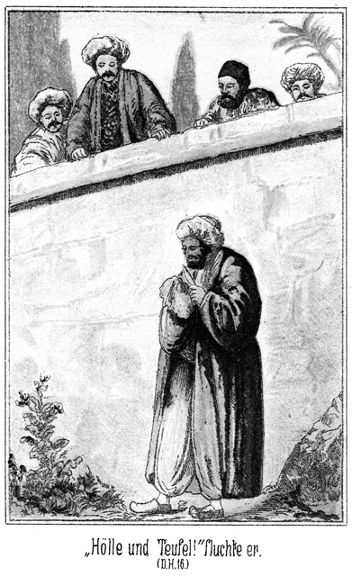»Hölle, Tod und Teufel!« fluchte er. »So versuche ich es zum dritten Male!«
Er zog das Fell abermals hervor, begann wieder zu reiben und – stieß einen lauten Ruf des Schreckens aus. In diesem Augenblicke nämlich sprangen vier Männer von der Mauer herab und hatten ihn sofort in ihrer Mitte.
»Was thust Du hier?« fragte der Erste.
Der Derwisch starrte ihn wortlos an. Es war Steinbach.
»Nun, antworte!« befahl dieser.
»Was geht es Dich an!« stotterte der Gefragte, mit entsetztem Ausdrucke die anderen Drei betrachtend, Normann, Wallert und der Engländer.
»Das geht mich wohl etwas an!« lachte Steinbach. »Ich habe geglaubt. Du seiest ein Derwisch!«
»Das bin ich auch!«
»Lüge nicht! Gehörtest Du zu diesem frommen Orden, so würdest Du jetzt zur Stunde des Gebetes hier an der Erde knieen und Allah Deine Seele schenken.«
»Hast Du mir etwas zu sagen, was ich thun soll?«
Er war der festen Ueberzeugung, daß ihm nichts bewiesen, also auch nichts gethan werden könne. Das gab ihm den Muth zurück, und darum sprach er die Frage in beinahe höhnischem Tone aus.
»Nein, das habe ich Dir nicht zu sagen,« antwortete Steinbach. »Aber verbieten kann ich Dir, was Du nicht thun sollst.«
»Du hast mir weder etwas zu ge- noch etwas zu verbieten! Laß mich gehen!«
Er wendete sich, um zu gehen; aber Steinbach ergriff ihn am Arme und sagte:
»Warte noch eine Weile! Ich möchte sehr gern wissen, was Du hier in der Hand hast. Ah, ein Fell. Und hier? Ein Messer! Mit Harz und. Bernsteinsand belegt? Mensch, wen willst Du denn electrisiren?«
Der Derwisch erschrak.
»Electrisiren?« fragte er. »Was ist das?«
»Das weißt Du nicht? So muß ich es Dir erklären. Man reibt nämlich das Messer mit dem Fell und hält dann das Erstere hier an diesen Draht. Das nennt man electrisiren.«
»Das verstehe ich auch nicht. Was geht mich der Draht an!«
»Dann fährt der electrische Funke im Drahte weiter bis in den Kiosk des Gebetes, wo die Patrone liegt, und zerschmettert den Herrscher von Tunis.«
»Ich weiß aber gar nicht, was Du redest, und was Ihr überhaupt wollt!«
»Ja, Du bist sehr unwissend. Aber lernbegierig bist Du auch, und das söhnt uns mit Deiner Dummheit aus. Du halt so gern wissen wollen, wo diese beiden Effendi's wohnen. Jetzt kannst Du es erfahren.«
»Ich habe nichts wissen wollen. Ich kenne die Beiden gar nicht; ich mag sie nicht kennen!«
»Und doch hast Du ihnen heute Nacht einen Boten nachgesandt. Richtig?«
»Nein. Ich weiß nichts davon.«
»Lüge nicht! Wir wissen es genau.«
»Es ist Lüge! Ich rede die Wahrheit.«
»Nun, so müssen wir Dir diesen Boten vorstellen.«
»Ja, bringt ihn mir. Ich werde Euch beweisen, daß er die Unwahrheit sagt!«
»Na, da steht er.«
Er deutete auf den Lord. Der Derwisch machte ein Gesicht, dessen Ausdruck gar nicht zu beschreiben ist.
»Der?« fragte er. »Dieser Engländer?«
»Ja.«
»Das ist ja eben die Lüge!«
»Aha! Vorhin kanntest Du diese Effendis nicht, und jetzt weißt Du, daß der Eine von ihnen ein Engländer ist. Frage ihn einmal, wo er heute Nacht gewesen ist. Nur mußt Du französisch sprechen, da er das Türkische nicht versteht.«
Er gehorchte ganz unwillkürlich und fragte französisch:
»Wo wollen Sie in letzter Nacht gewesen sein?«
»Hier, bei Ihnen. Im Garten,« lachte der Lord. »Ich hoffe, daß Sie meine Stimme noch kennen. Wenn Sie sich meiner noch erinnern, so wollen wir uns heute Abend die versprochene Haremsfrau holen.«
»Verdammter Kerl!«
Er sah sich überführt. Er hatte keine Waffe mehr, da Steinbach ihm das Messer abgenommen hatte. Aber während er diesen Ausruf ausstieß, holte er aus und schlug mit den beiden geballten Fäusten auf Wallert und Normann ein, um sie zum Weichen zu bringen und sich also eine Lücke zur Flucht zu bilden. Aber Steinbach faßte ihn sofort beim Kragen und schleuderte ihn mit solcher Gewalt an die Mauer, daß er wimmernd zusammenknickte und sich nur langsam wieder emporrichtete.
»Bleib nur noch, Bursche!« sagte er dabei. »Wir haben ein Wörtchen hinzuzufügen. »Hollah, Herr Oberst!«
Da wurde oben auf der Mauerkante das geröthete Gesicht Krüger-Beys sichtbar.
»Na, wo ist's ihm denne?« fragte er. »Hat diesem Racker seiner Schlechtigkeit auszuführen dem Verbrechen in der Luft zu sprengen ergriffen und erwischt zu sein jehabt?«
»Ja, da ist er.«
»So haben Ihnen die Jefälligkeit, diesem Subject an das Strick empor zu ziehen, um festzubinden herein in dem Jarten jebracht und dergleichen arretirt worden zu sein!«
Er ließ einen Strick herab, an welchen der Derwisch festgebunden werden sollte. Diesem kam erst jetzt das Bewußtsein seiner gefahrvollen Lage. Er bäumte sich empor, brüllte vor Wuth laut auf, schlug, stampfte und biß um sich wie ein wüthendes Thier, um dem Stricke zu entgehen.
»Jeben Sie Ihnen einer Klapps vor das Kopf auf dem Nase, so bald ihm zu brüllen das Maul nicht mit dem Faust zum Stilleschweigen jebracht werden darf!« ermahnte der wackere Oberst von der Mauer herab.
Diese Ermahnung war überflüssig. Steinbach hatte dem Mörder die Hände um den Hals gelegt und drückte ihm die Luftröhre zusammen. Der Strick wurde ihm in einer Schlinge um den Körper unter den Armen gelegt, und dann zogen ihn einige Krieger des Bey empor und in den Garten hinein. Für die drei Deutschen und den Engländer ließ man eine Leiter herab, auf welcher sie wieder in den Garten zurückgelangten.
Hier sah es noch weit gefährlicher für den Derwisch aus als draußen. Da standen wohl an die fünfzig wilde Gestalten zu der Wache des Bey gehörig, welche sofort einen Kreis um den Gefangenen schlossen, so daß an ein Entkommen gar nicht zu denken war.
»Hat ihm seines Verbrechens zum Jeständnisse zu bringen jebracht?« fragte Krüger Bey.
»Nein. Er hat nichts gestanden.«
»Jut! So werden man ihn dem Munde zu öffnen einem juten Mittel erfunden zu haben sofort herbeischaffen zu dürfen befohlen!«
Er gab einen Wink, und augenblicklich war die ominöse Bank vorhanden, welche zur Bequemlichkeit der Bastonade dient. Diese Bank, auf welche man den Delinquenten legt, hat eine Lehne, an welcher die Beine emporgezogen und so befestigt werden, daß oben die nackten Fußsohlen eine wagerechte Lage erhalten. In dieser Weise wurde jetzt auch der Derwisch angeschnallt. Er sträubte sich aus Leibeskräften, was ihm aber nichts nützte.
»Wollen Sie ihm die Bastonade geben lassen?« fragte Normann den Obersten der Leibwache.«
»Ja, in Natürlichkeit und Verständnisse!«
»Ehe er vor dem Bey gebraucht wird?«
»Dem Bey hat diesem so zu befehlen sich anjewöhnt und demselbigen Willen jehabt. Was leugnet, dem muß jehauen werden! Verstanden?«
Aus seiner Erklärung ließ sich errathen, daß er im Auftrage seines Herrschers handele, wenn er den Gefangenen der peinlichen Frage unterwerfe. Streng genommen war hier eine übel angebrachte Humanität einfach lächerlich. Der Bey wollte den Menschen nicht eher vor sich sehen, als bis er ein Geständniß abgelegt habe, und da er dasselbe jedenfalls nicht freiwillig gab, so wurde er dazu gezwungen. Da er bereits überführt war, konnte das gar nicht etwa eine Ungerechtigkeit genannt werden.
Er wurde also so fest geschnallt, daß er sich nicht zu bewegen vermochte. Vor seinen Füßen, welche natürlich entblößt worden waren, stand der Dschezzar, zu Deutsch eigentlich Henker. Doch hat dort das Amt eines Henkers ganz und gar nicht den anrüchigen Beigeschmack wie bei uns, sondern es ist im Gegentheile eines der höchsten und wird nur einem solchen Manne ertheilt, von dessen Treue der Herrscher vollständig überzeugt ist. Krüger Bey führte das Verhör.
»Warst Du heut Nacht hier im Garten?« fragte er.
»Nein.«
»Zwei Hiebe!«
Der Derwisch erhielt auf jede Sohle einen Hieb und schrie sofort:
»Ja, ich war da!«
»Hast Du den Draht gelegt?«
»Nein.«
»Zwei Hiebe!«
Die Hiebe werden so gegeben, daß einer hart neben dem andern zu sitzen kommt. Da nun bei jeden einzelnen die Haut der Fußsohle aufspringt, so ist der Schmerz ein ganz entsetzlicher.
»Halt!« brüllte er. »Ich habe ihn gelegt.«
»Auch die Patrone?«
Ein Wink von Krüger Bey, und der Henker schlug abermals zu.
»O Allah, Allah! Ich habe auch die Patrone gelegt.«
»Wozu?«
»Ich wollte mir einen Spaß machen.«
»Welchen Spaß?«
»Ich wollte sehen, ob es knallt.«
»Weiter nichts?«
»Nein.«
»Du wolltest nicht den Bey, den Beherrscher der Gläubigen dieses Landes tödten?«
»Nein.«
»Vier Hiebe!«
Kaum aber hatte er den zweiten Hieb, so brüllte er:
»Halt, halt! Ja, ich wollte ihn tödten!«
»Bedenke, daß Du zerrissen wirst, wenn Du es gestehst!
»Ich wollte ihn tödten.«
Der gegenwärtige, augenblickliche Schmerz wirkten mehr als die Furcht vor der grausamsten Strafe, die erst später erfolgen konnte.
»Hast Du Mitschuldige?«
»Nein.«
»Zwei Hiebe!«
Die Fußsohlen waren bereits zerstört. Bereits als der Henker zum Hiebe ausholte, rief der Derwisch:
»Halt ein! Ich habe einen.«
»Wer ist es?«
»Ibrahim Pascha.«
»Woher?«
»Aus Stambul.«
»Wo wohnt er?«
»Drüben im Hause an der Wasserleitung.«
»Hast Du noch andere Vertraute?«
»Nein.«
»Noch zwei Hiebe!«
»Bei Allah und dem Propheten, nur der Pascha weiß davon!«
Der Henker wollte zuschlagen, aber Steinbach ergriff ihn am Arme und sagte zu Krüger Bey:
»Er hat wohl keinen Vertrauten weiter. Das glaube ich, beschwören zu können!«
»Gut! Sie sind diesem Bastonnaden nicht zum Gebrauche jewöhnt. Darum thut Sie Ihrem Herzen weh, und ich will dem Befehle jeben, darüber aufzuhören und Beendigung haben. Uns wissen jetzt jenug. Im Uebrigen mögen dem Muhammed es Sadak Bey seiner Bestimmung dem Befehl zu wünschen jebieterisch auszusprechen werden.«
Und in der Sprache des Landes befahl er, den Gefangenen in gefesseltem Zustande in das sicherste Loch des Gefängnisses zu werfen. Dann machte er selbst sich an der Spitze einer Anzahl Leibschaaren auf, den Pascha auch festzunehmen. Die drei Deutschen und der Engländer eilten ihm voraus. –
Der Pascha hatte erst ganz verwundert den Kopf geschüttelt, als er den Derwisch so erfolglos arbeiten sah. Aber als die vier Männer so plötzlich von der Mauer herabgesprungen kamen, war er ebenso sehr erschrocken wie sein Verbündeter.
Er hörte natürlich die Worte nicht, welche gesprochen wurden; aber er erkannte die Personen ganz genau.
»O Muhammed! O, Ihr Kalifen!« knirrschte er. »Das sind diese Hunde! Wie kommen sie hierher? Sollte der Mann, welcher ihm geholfen hat. Alles verrathen haben? Wenn ihm nicht jetzt, ehe sie ihn festhalten, die Flucht gelingt, so ist er verloren.«
Seine Augen traten fast aus ihren Höhlen, so scharf hatte er sie auf die Männer gerichtet. Er sah, daß der Derwisch vergeblich zu entfliehen versuchte! er sah die andern Leute auf der Mauer.
»Bei allen Teufeln und Geistern der Hölle!« stöhnte er. »Sie ziehen ihn empor. Er ist gefangen!«
Er wollte fliehen und doch wartete er. Es war Niemand mehr zu sehen. Aber bereits nach wenigen Augenblicken ertönte ein schriller Schrei, dem ein weiterer folgte. Er kannte das genau.
»Er erhielt die Bastonnade! Sie verhören ihn! Sie werden ihn fragen, ob noch Andere davon wissen! Er wird mich nennen; er wird mich verrathen; denn kein einziger Mensch der Welt kann dem Schmerze widerstehen, wenn der Stock bis auf den Knochen durch die Sohle dringt. Fort, fort! In wenigen Minuten werden sie mich holen. Dann wäre es zu spät!«
Er ging nicht; er lief auch nicht, sondern er rannte fort. Er machte auch keinen Umweg. Nur nach Hause, möglichst bald nach Hause! Nur keinen Augenblick verlieren! Zu seinem Glücke achtete Niemand auf ihn. Er athmete auf, als er, bei dem Hause angekommen, bemerkte, daß sämmtliche Thiere bereit standen. Zwei Minuten später saßen die beiden Mädchen in den Kameelsänften und die Männer auf den Pferden. Nur Einer fehlte.
»Beim Teufel! Wo ist Saïd?« brüllte der Pascha.
»Hier!« antwortete der Genannte, indem er aus dem Hause stürzte und in den Sattel sprang.
»Das ist Dein Glück! Vorwärts!«
Ganz ungewöhnlicher Weise lenkte er so ein, daß er an der Westseite der Stadt hinritt. Dann lenkte er nach dem sogenannten neuen Fort hinüber. Auf diese Weise wich er den belebteren Gegenden aus, so daß es schwer und fast unmöglich wurde, durch Nachfrage zu erfahren, wohin er sich gewendet habe.
Von dem neuen Forte bis zu dem Bade l' Enf ist es gar nicht weit. Es fiel dem Pascha gar nicht ein, in dem kleinen Orte, welchen er als Ziel des Spazierrittes angegeben hatte, anzuhalten, sondern es ging im Galopp hindurch, quer über das Thal Suttun hinweg und nach dem größeren Orte Soliman zu.
Im Süden des Golfes von Tunis zieht sich die Halbinsel Dakhul in der Gegend von Südwest nach Nordost in die See hinein. Da es dem Pascha unmöglich war, zu Wasser von Tunis aus zu entkommen, hatte er den Plan gefaßt, auf dieser Halbinsel bis nach einer ihrer Spitzen hin zu reiten. Dort erwartete ihn morgen früh das Boot, welches er bestellt hatte. Gelang es ihm, dasselbe zu erreichen, so war er gerettet.
Um der Frauen willen dürfte er nicht daran denken, jetzt nur einen Augenblick anzuhalten. So lange die Kameele in ihrem schnellen Tempo blieben, war es den Reiterinnen unmöglich aus den Sänften herabzukommen. Die beiden Mädchen ahnten ihr Schicksal und riefen einander zu. Wurde angehalten, so war es ihnen zuzutrauen, daß sie versuchen würden, aus der Höhe des Kameelrückens herabzuspringen, und wenn ihnen das gelang, dann war es schwer, den Ritt fortzusetzen, wenigstens ging eine kostbare Zeit verloren.
Die beiden Wächter waren gut instruirt. Sie selbst saßen zu Pferde; jeder aber hatte eins der beiden Kameele am Halfter.
Als man das Städtchen Soliman erreichte, gebot der Pascha den Beiden:
»Haltet nicht an, sondern reitet durch. Ich komme nach!«
Er blieb mit Saïd, welcher das Pferd, welches für den Derwisch bestimmt gewesen war, am Zügel neben dem seinigen führte, halten. Es standen mehrere Männer da.
»Wer weiß den besten Weg nach Klibiah?« fragte er sie.
»Ich,« antwortete der Eine.
»Willst Du mein Führer sein?«
»Was bietest Du?«
»Gieb fünfzig Piaster!«
»Du sollst sie haben und dieses Pferd dazu nebst Sattel und Lederzeug, wenn Du augenblicklich aufsteigst und mit mir kommst!«
»Gieb das Geld!«
Der Pascha zog den Beutel. Unterdessen sprang Saïd ab und machte sich an seinem Sattel zu schaffen.
»Was hast Du abzuspringen, fragte ihn der Pascha.
»Diese Wächter verstehen nicht, ein Pferd zu satteln. Der Gurt ist viel zu weit geschnallt. Ich verliere ja den Sattel!«
»Mach schnell! Wir haben keine Zeit!«
Er setzte sich bereits in Bewegung, und der neu engagirte Führer mit ihm. Saïd stieg hinter ihnen auf und folgte ihnen, raunte aber vorher den zurückbleibenden Männern zu:
»Ich habe Euch Etwas zu sagen. Kommt nachgelaufen!«
Er hatte sich bereits daheim mit der Stummen zu schaffen gemacht, und nur darum hatte ihn der Pascha rufen müssen. Die vermeintliche Mutter Tschita's lag nämlich in einem untern Raume des Parterres auf einer Strohmatte. Es waren ihr beide Beine an zwei Holzlatten festgebunden worden, weil sie sich die Hüfte verstaucht hatte, so hatte der Pascha gesagt. Diese albernen Schienen waren aber keineswegs nöthig gewesen, da sie gar keinen Schaden gelitten hatte. Der Pascha hatte sie nur in einem vollständig hilflosen Zustande zurücklassen wollen. Im letzten Augenblicke nun, als es fortgehen sollte, hatte Saïd ihr die Bänder zerschnitten und ihr einen Zettel hingelegt mit den Worten:
»Sollte er eine Schlechtigkeit beabsichtigen, so daß wir heut Abend nicht wieder da sind, so gieb diesen Zettel den beiden Effendis, welche kommen werden. Dann ist Alles gut.«
Und jetzt nun hier in dem Städtchen Soliman hatte er gehört, wohin der Ritt gehen solle. Es kam ihm darauf an, den Verfolgern wissen zu lassen, wohin sie sich zu wenden hätten. Darum hatte er gethan, als ob sein Pferd schlecht gesattelt sei. Anstatt aber den Gurt fester anzuziehen, hatte er ihn vielmehr lockerer gemacht. Als er nun im Galopp folgte und man eben das Städtchen im Rücken hatte, rutschte sein Sattel unter den Bauch des Pferdes herab.
»O Allah!« rief er klagend aus. »Jetzt konnte ich den Hals brechen! Diese beiden Kerls sollen verdammt sein, wenn sie Etwas machen, was sie nicht können!«
Der Pascha sah sich um. Er stieß einen Fluch aus und sagte zornig:
»Ich denke. Du hast es fester gemacht!«
»Du ließest mir doch keine Zeit dazu!«
»So mache schnell und komm nach! Ich kann Deinetwegen nicht die Kameele so weit vorankommen lassen.«
Er ritt mit dem Führer weiter. Das wollte der brave Arabadschi. Kaum war sein Herr hinter der Ecke des Gartens, an dem sie hinritten, verschwunden, so saß der Sattel wieder fest und Saïd sprang auf. Anstatt aber dem Pascha zu folgen, jagte er zurück bis zu den Männern, die ihm zwar nachgelaufen waren, ohne ihn aber recht zu verstehen.
»Der dort hat hundert Piaster bekommen,« sagte er. Wollt Ihr zweihundert oder dreihundert oder noch 'mehr verdienen?«
»O Allah! Das ist ja ein ganzer Reichthum!«
»Wollt Ihr ihn? Macht schnell!«
»Ja, ja. Was werden wir da thun müssen?«
»Ihr geht nach dem Bade l'Enf. Es werden Reiter kommen, welche fragen, wohin wir geritten sind. Ihr sagt es ihnen, daß wir nach Klibiah reiten. Wenn diese Reiter nicht bald kommen, läuft einer von Euch in die Stadt nach dem italienischen Hause und fragt nach ihnen. Sie heißen Normann Effendi und Wallert Effendi. Es ist ein Engländer bei ihnen. Ich, heiße Saïd. Wißt Ihr das Alles?«
»Ja. Wer bezahlt uns?«
»Diese Leute. Sie geben Euch so viel, wie ich Euch gesagt habe. Sie geben Euch sogar noch mehr, wenn Ihr dafür sorgt, daß Ihr sie schnell findet und sie dann auch uns. Wenn Ihr zu wenig seid, so nehmt noch mehr Leute. Aber thut es ja. Ich verspreche Euch bei Allah und dem Barte des Propheten, daß Ihr das Geld bekommt!«
»Wenn Du so schwörst, so werden wir es thun. Wir werden gleich alle Wege besetzen, so daß sie uns nicht entgehen können, und Einer mag nach der Stadt in das italienische Haus reiten. Du aber folge den Deinen in Allah's Namen nach!«
Saïd wendete um und jagte dem Pascha nach, so schnell sein Pferd zu laufen vermochte. Er hatte das Seinige gethan. Zwar fragte er sich, ob er nicht selbst hätte nach der Stadt reiten können. Aber einmal hätte sein Herr die Absicht dieser Flucht sofort verrathen und dann gewiß seine Tour geändert, und das andere Mal hielt er es für besser, bei den Mädchen zu bleiben. Es stand zu erwarten, daß er ihnen von Nutzen werde sein können.
Als er dann den Pascha erreichte, empfing dieser ihn zwar mit grollenden Vorwürfen, daß er so lange Zeit zurückgeblieben sei; der brave Kerl aber machte sich nichts aus ihnen und lachte viel mehr heimlich und fröhlich vor sich hin, darüber, daß ihm seine Absicht so gut gelungen sei. –
Die Freunde waren, wie bereits erwähnt, dem Obersten der Heerschaaren mit seiner Truppe vorangeeilt. Als sie das Haus erreichten, war es verschlossen. Sie klopften. Von innen klopfte auch Jemand. Es war die Stimme, welche mit ihren händelosen Armen nicht hätte öffnen können, selbst wenn sie den Schlüssel, den der Pascha wohlweislich eingesteckt hatte, besessen hätte.
Sie gingen nun um das Gebäude herum und stiegen durch einen offenen Laden des Erdgeschosses ein. Die Stube, in welcher sie nun standen, war leer. Von da aus traten sie in den fast dunklen Hausflur. Dort stand die Stumme.
»Wer bist Du?« fragte Steinbach.
Sie antwortete durch einige unarticulirte Laute.
»Herr Gott!« sagte Normann. »Das ist Tschita's Mutter! Weib, wo ist Deine Tochter?«
Sie deutete nach der Thür.
»Fort?«
Sie nickte.
»Ah, also doch spazieren?«
Sie nickte abermals.
»Nicht wahr, nach dem Bade l'Enf?«
Ein drittes Nicken bejahte auch diese Frage. Steinbach hatte indessen die Thür untersucht.
»Sie ist von außen verschlossen,« sagte er. »Es scheint, daß man den Schlüssel mit genommen hat. Wir sind aber gezwungen, zu öffnen.«
Er sah sich um. Im Hausgange lehnte eine Gartenhacke. Er nahm dieselbe und sprengte die Thür auf. Da kam auch bereits der brave Oberst mit seinen kriegerischen Begleitern heranmarschirt.
»Haben Ihnen ihm schon bereits zuweilen beinahe festzunehmen jearretirt!« fragte er.
»Nein. Er ist fort.«
»Was? Ihm ist fort? Wohinüber und herunter?«
»Er ist mit seinem Harem nach l'Enf spazieren.«
»Ihm geht spazieren? Ihm, den Verbrecher? Wir werden ihm dem Spazieren zu verbieten jetzt sogleich einem Hinderniß in das Weg zu legen vorjenommen haben müssen.«
»Wollen Sie ihm nach?«
»Meinen Ihnen, daß es besser zu sein jesonnen ist, wenn ihm hier abjewartet zurückjekehrt sein werden mag?«
»Das will überlegt sein. Wollen erst einmal untersuchen, ob es sich wirklich nur um einen blosen Spazierritt handelt.«
Sie begannen, die Zimmer zu durchsuchen. Da ertönte ein Schrei, von welchem es gar nicht möglich schien, daß er von einem Meeschen ausgestoßen sein könne. Als sich die Männer umblickten, sahen sie, daß es die Frau gewesen war. Sie stand vor Wallert. Ihre ganze Gestalt zitterte vom Kopfe bis zu den Füßen; ihre Augen schienen aus den Höhlen treten zu wollen, und in ihren, Gesicht lag ein Ausdruck angstvollen Entzückens, der gar nicht zu beschreiben ist.
»Was wollen Sie?« fragte er, sich in diesem Augenblicke ganz unwillkürlich der deutschen Sprache bedienend.
Ein zweiter, noch lauterer Schrei war die Antwort. Sie lachte wonnig auf, und zugleich stürzten ihr große, dicke Thränen aus den Augen.
»Mein Heiland!« sagte Normann. »Sollte sie vielleicht gar Deutsch verstehen! Fast scheint es so!«
»Oah, oah!« gurgelte sie hervor.
»Sie verstehen Deutsch?«
»Oah, oah!«
»Sind Sie vielleicht gar eine Deutsche?«
»Oah, oah!« antwortete sie wieder, wohl zwanzigmal dazu nickend.
»Himmel! Tschita's Mutter eine Deutsche!«
»Eing, eing, eing, eing!«
»Sie hat keine Zunge; sie kann nicht sprechen. Soll dieses Wort vielleicht »nein« bedeuten?«
»Oah, oah!« nickte sie.
»Sie sprechen also nicht deutsch?«
»Oah, oah!«
»Also doch! Worauf bezieht sich dann dies nein? Ah, ich nannte Sie Tschita's Mutter! Sind Sie das etwas nicht?«
»Eing, eing, eing!«
»Nicht! Also nicht! Sie armes, beklagenswerthes Wesen, fassen Sie sich; sammeln Sie sich! Beherrschen Sie Ihre Aufregung! Wir müssen uns verständlich machen. Das ist grad in diesem Augenblicke wohl von allergrößter Wichtigkeit. Tschita ist eine Türkin?«
»Eing, eing!«
»Was denn? Doch nicht etwa eine Deutsche?«
»Oah, oah!«
»Mein Jesus! Ist das möglich!«
»Oah, oah!«
Sie nickte und knipte mit dem ganzen Körper, um ihre Aussage zu bekräftigen. Ihr Gesicht, obgleich von Pockennarben gräßlich entstellt, strahlte förmlich vor Entzücken, in ihrer Muttersprache angeredet zu werden.
»Wenn Sie nicht ihre Mutter sind, was sind Sie dann?« fragte er weiter. »Eine Verwandte?«
»Eing, eing!«
»Nicht? Also eine Dienerin?«
»Oah, oah!«
Dabei machte sie mit ihren Armen eine Bewegung, als ob sie ein Kind sich an die Brust lege.
»Ah! Sie waren Tschita's Amme?«
»Oah, oah!«
»So kennen Sie ihre Eltern?«
Sie nickte. Ihr Gesicht drückte eine unendliche Spannung aus. Es war das erste Mal nach langen, langen Jahren, daß sie sich über das verständlich machen konnte, was ihr so bergesschwer auf dem Herzen gelegen hatte.
»Wer ist Tschita's Vater?«
Sie gab eine Antwort, welche wohl keiner der Anwesenden erwartet hätte. Sie deutete mit dem Armstumpfe auf Wallert, kniete vor ihm nieder und legte ihre Lippen auf seine Hand um sie zu küssen. Das geschah in einer solchen Weise, daß Allen die Thränen in die Augen traten.
»Sie irren!« fuhr Normann fort. »Dieser junge Mann kann doch nicht Tschita's Vater sein.«
»Eing, eing!« antwortete sie, also nein nein. Und doch fügte sie sofort hinzu oah, oah, also ja ja, indem sie fortgesetzt auf ihn deutete.
»Ah, Sie wollen wohl sagen, daß er ihrem Vater sehr ähnlich sieht?«
Sie that förmlich einen Sprung vor Freude darüber, so gut verstanden worden zu sein. Normann fuhr fort:
»Das ist aber jedenfalls nur ein Zufall.«
Sie stellte sich vor Wallert hin, sah ihn genau an und schüttelte höchst demonstrativ den Kopf.
»Nicht? Meinen Sie etwa gar, daß er verwandt mit ihrem Vater sei?«
»Oah, oah!«
»Wunderbar! Aber dennoch! Konnten Sie früher schreiben?«
Sie nickte.
*
»Nun, die Hände sind Ihnen genommen. Aber mit dem Arme könnten Sie doch die Bewegung des Schreibens gegen die Wand machen. Wie hieß der Vater von Tschita?«
Sie trat an die weißgetünchte Wand und schrieb mit dem rechten Arme in großen Lettern:
» Adlerhorst.«
Es läßt sich nicht beschreiben, welchen Eindruck dieses Wort machte. Wallert schrie laut auf:
»Adlerhorst? Wie war sein Vorname?«
» Alban,« schrieb sie.
»O Du barmherziger Gott! Ist das möglich! Wärst Du etwa Sarah, die jüdische Amme?«
»Oah, oah, oah!« nickte sie, ganz entzückt. –
»O Gott! O Gott! Tschita ist meine Schwester, meine Schwester!«
Er schlug die beiden Hände an die Wand, stemmte den Kopf darauf und weinte bitterlich, bitterlich.
Alle waren tief, tief ergriffen. Doch sagte keiner ein Wort, selbst die nächst Betheiligten nicht. Aber Sarah trat zu ihm heran, kniete abermals nieder, nahm den Saum seines Rockes zwischen ihre Arme und küßte ihn.
Dann näherte sich ihm auch Normann. Er legte ihm die Hand auf die Schulter und sagte:

»Lieber Hermann, fasse Dich! Das was Du erfahren hast, ist ja nicht traurig!«
»Nein, traurig nicht, gar nicht!« antwortete er unter weiter strömenden Thränen. Ich weine ja auch nicht vor Schmerz, sondern vor Entzücken.«
Und nun erst ließ sich auch der Engländer hören:
»Alle Wetter! Adlerhorst! Adlerhorst heißen Sie?«
»Ja, Mylord.«
»Und Alban von Adlerhorst war Ihr Vater?«
»Ja.«
»Aber, Mensch, sind Sie denn bei Troste! Sie sind mein Cousin; ich suche Ihre Familie; Sie suchen mit, und dennoch verschweigen Sie mir, daß wir eigentlich in einen und denselben Taubenschlag mit einander gehören!«
»Ich wußte das. Vielleicht darf ich Ihnen später einmal die Gründe mittheilen.«
»Und jetzt giebt es diese Gründe nicht mehr?«
»O doch. Aber die Ueberraschung hat mich fortgerissen, meinen Namen zu nennen.«
»Na, Junge, so laß Dich auch noch ein wenig weiter fortreißen, nämlich an meinen Oberkörper! Komm her, Bursche! Jetzt endlich habe ich einen von den Finken gefangen! Man wird nun wohl auch erfahren, wo die andern umherfliegen!«
Er zog ihn an sich und küßte ihn kräftig. Dann fragte er:
»Ist diese Sarah vielleicht auch Deine Amme gewesen?«
»Nein. Die Eltern waren in Adrianopel, während wir uns in der Heimath befanden. Mutter hatte das kleinste Schwesterchen und die Amme mitgenommen. Vater reiste für einige Tage nach Konstantinopel, ist aber nie wiedergekehrt. Dann war plötzlich auch Mutter fort, nebst dem Schwesterchen und der Amme.«
»Sapperment! Wohin?«
»Wir wußten und wissen es nicht. Jetzt höre ich zum ersten Male wieder von ihnen.«
»So hoffe ich, daß wir ihnen Allen, welche noch fehlen, auf die Spur kommen. Sarah wird uns erzählen müssen. Sie hat viel, viel zu erzählen. Jetzt aber giebt es keine Zeit dazu. Wir müssen uns um den Pascha und ganz besonders um Tschita bekümmern. Wehe ihm, wenn er ihr ein einziges Haar zu krümmen wagt!«
Es gehörte eine große Selbstbeherrschung dazu, die Scene so rasch abzubrechen und die Wißbegierde für später zu vertrösten; aber die Sorge that das Ihrige. Und so wurde zunächst das Haus durchsucht.
»Von Effecten findet sich gar nicht viel vor,« meinte Steinbach, als man damit fertig war. »Ich möchte fast glauben, daß der Pascha geflohen ist.«
»So müssen wir ihm nach,« rief Normann.
»Was sagen Sie, Herr Oberst?«
»Ich meine, dem Pascha hat hier keiner Zeit zu bleiben mehr jefallen jehaben; ihm hat den Flucht ergriffen, und uns werden ihm nachzujagen den Eile in der Schnelligkeit bei jute Pferde sein!«
»Das ist auch meine Ansicht!«
Da ließ Sarah einen lauten Ruf hören und deutete nach einem weißen Zettel, der neben ihrem Lager lag. Sie dachte erst in diesem Augenblick an ihn. Steinbach hob ihn auf, entfaltete ihn und las:
»Wir brechen so rasch auf, daß ich an eine Flucht glaube. Kehren wir heute Abend nicht zurück, reiten wir vielmehr von l'Enf noch weiter, so werde ich dort für Nachricht sorgen.
Saïd.«
Diese Zeilen waren in Eile und türkisch geschrieben.
»Der Treue! Ihm haben wir bereits viel zu danken,« meinte Normann. »Jetzt aber bin ich überzeugt, daß der Pascha die Flucht ergriffen hat.«
»Aber wohin?« fragte Wallert.
»Nicht zur See, sondern zu Lande, wie es scheint, was für den Augenblick auch das Sicherste für ihn ist. Wir müssen unbedingt sofort nach l'Enf.«
»Ja. Aber was wird hier mit Sarah?«
Da sagte Krüger Bey:
»Diesem Sarah wird bei meiner Weiber das Wohnung und dem Logis hinüberzuführen gefunden werden.«
Dieser Vorschlag war gut. Sie sollte einstweilen in dem Harem des Obersten Aufnahme finden. Dieser Letztere versprach, für Pferde zu dem beabsichtigten Ritt zu sorgen, und so begab man sich nach dem Bardo zurück, nachdem aber eine hinreichende Anzahl der Trabanten in das Innere des Hauses postirt worden war, um, falls die Bewohner doch zurückkehren sollten, den Pascha sofort festzunehmen.
Da die Trabantengarde des Bey aus lauter Cavallerie bestand, so gab es gute Pferde genug. Der Oberst stattete zunächst dem Beherrscher einen kurzen Bericht ab, und dann setzte sich die aus den Deutschen, dem Engländer, dem Obersten und zehn seiner Reiter bestehende Cavalcade in Bewegung.
Durch die Stadt im Trabe, ging es dann draußen im Galoppe weiter.
Die Scene in dem Hause an der alten Wasserleitung hatte doch mehr als eine Stunde in Anspruch genommen. Es war fünf Uhr geworden. Als die Reiter nach l'Enf kamen, wurden sie von den dortigen Bewohnern neugierig betrachtet. Sie Alle kannten Krüger Bey.
»Der Oberst der Leibschaaren!« sagte ein Mann laut. »Das können die Erwarteten nicht sein.«
Sofort parirte Steinbach sein Pferd und fragte:
»Erwartet Ihr vielleicht Reiter?«
»Ja.«
»Was für welche?«
»Aus der Stadt, einen Normann Effendi; den anderen Namen habe ich vergessen. Auch ein Engländer soll mit dabei sein.«
»Das sind wir.«
»So kennst Du Saïd?«
»Ja.«
»Wir sollen Euch sagen, daß sein Ritt nach Klibiah geht. Sie haben in Soliman einen Führer gewonnen, dem sie hundert Piaster gaben und ein Pferd nebst Sattel und Lederzeug dazu. Sie hatten es übrig.«
»Saïd scheint Euch auch Geld versprochen zu haben?«
»Ja.«
»Wieviel?«
»Wenigstens dreihundert Piaster.«
»Hier hast Du sie.«
Er zog seine Börse. Als der Lord dies sah, erhob er Widerspruch. Er rief sofort:
»Halt! Das geht nicht! Die Gesellschaftskasse habe ich. Ich habe diesen Mann nicht verstanden. Ist seine Botschaft etwas werth?«
Es wurde ihm Alles erklärt.
»Gut!« sagte er. »Diese Leute sollen fünfhundert Piaster haben. Ein Pferd kann ich ihnen leider nicht geben. Da mögen sie sich einen Affen oder eine Meerkatze kaufen.«
Der Ritt, welcher nun eine sichere Direction hatte, wurde fortgesetzt, und zwar in fortwährendem Galoppe. Die Verfolgten hatten zwei Stunden Tageszeit Vorsprung. Glücklicher Weise aber befanden sich bei der Truppe des Obersten einige Leute, welche die Halbinsel so genau kannten, daß sie selbst des Nachts ihres Weges vollständig sicher waren.
Es ging nach Soliman und von da nach Mazera. Am späten Abend gelangte man nach El Abeïd, wo das Flüßchen gleichen Namens in das Meer geht. Hier waren die Verfolgten vor über einer Stunde durchgekommen und dann nach Bir el Dschedi weitergeritten. Einer der Wegkundigen fragte da:
»Müssen wir wirklich nach Klibiah?«
»Ja. So lautet ja unsere Weisung.«
»Nein, mir scheint, der Pascha hat einen Führer, welcher nicht gern auf schlechten Wegen reitet. Er geht nach Dschedi und von da ganz sicher nach Sidi Daud. Dann streicht er quer über die Halbinsel hinüber nach dem Ziele. Dabei bleibt er stets auf sehr guten Pfaden, macht aber einen großen Umweg, da er einen richtigen rechten Winkel reitet.«
»Können wir den nicht abschneiden?«
»Ganz gut, wenn Ihr eine Anstrengung nicht scheut.«
»Immer zu!«
»So reiten wir jetzt hinauf in die Berge. Dort fließt das Wasser des Adieb ganz grad der Richtung zu, welche die unserige ist. Dem Thale dieses Flüßchens folgen wir und sind noch vor Tagesanbruch in Klibiah.«
Nach einer kurzen Berathung wurde dieser Vorschlag angenommen. Es stellte sich auch heraus, daß er ein sehr vortheilhafter war. Die Truppe langte zwei Stunden vor Tagesanbruch am Ziele an.
Leider aber hatte der Pascha zwar den Namen Klibiah dem Führer genannt, doch war es gar nicht seine Absicht, bis ganz nach diesem Orte zu reiten. Er wollte das Boot ja etwas weiter nördlich am Vorgebirge al Melhr erwarten. Da hätte der Oberst mit seiner Truppe in alle Ewigkeit warten können, um ihn in Klibiah abzufangen.
Glücklicher Weise aber langte grad beim grauenden Tage ein Botenreiter aus Sidi Daud an. Von ihm hörte der inmitten des Ortes campirende Oberst, daß eine kleine Truppe von zwei Kameelen und vier Pferden gestern spät am Abend von Daud abgeritten sei und nun am Vorgebirge Melhr lagerten. Er hatte sie von der Höhe aus gesehen.
»O weh!« rief Steinbach. »Sie kommen gar nicht nach hier. Wie es scheint, erwarten sie ein Schiff.«
»Ich sah Dampf,« bemerkte der Bote.
»Alle Teufel! Weit davon?«
»Noch oberhalb des Vorgebirges Aswad.«
»Wie weit liegen die Reiter von hier?«
»Ich bin zehn Minuten geritten.«
»Die Richtung des Ortes?«
»Zwischen diesen beiden Hütten hindurch grad aus.«
»Rasch auf, wir haben keine Zeit zu verlieren!«
Steinbach sprang eiligst in den Sattel und die Anderen folgten seinem Beispiele. Wie vom Sturmwinde gejagt, flogen die Reiter zum Orte hinaus und in der angegebenen Richtung weiter, in ein enges Thal hinein, welches emporführte und dann oben auf der Höhe flach verlief.
Als sie oben ankamen, sahen sie das Meer unter sich weit, weit nach allen Richtungen ausdehnen. Aber was sie noch sahen, das wa, ein türkischer Dampfer, welcher nahe dem Lande beigedreht hatte und, langsam mit den Wogen treibend, auf die Rückkehr des Bootes wartete, welches er nach dem Lande geschickt hatte.
Dieses Boot hatte angelegt. Am Ufer hielten zwei Kameele und fünf Pferde: Fünf Männer standen dabei und zwei Frauen. Diese beiden Letzteren befanden sich augenblicklich in einer sehr unangenehmen Lage, denn sie wurden jetzt, grad in diesem Augenblicke, von den Männern auf das Bret gedrängt, welches von dem Boote nach dem Lande gelegt worden war.
Der Eine der Männer erblickte die Truppe, stieß einen lauten Ruf aus und gab einen befehlenden Wink hinüber nach dem Schiffe zu. Dieser wurde verstanden. Man war jedenfalls auf so etwas vorbereitet. Es wurde ein breites Segeltuch gelüftet, und es kam nun unter demselben der Lauf einer Deckkanone zum Vorschein. Die Freunde sahen das.
»Sie sind es. Wir kommen fast zu spät!« rief Normann. »Ich glaube gar, man will auf uns schießen!«
»Einen solchen Verstoß gegen das Völkerrecht wollen wir abwarten,« antwortete Steinbach. »Wir befinden uns nicht im Kriege. Wir wollen nur einen entlaufenen Verbrecher fangen. Drauf, im Galopp!«
Sie gaben den Pferden die Sporen und schossen von der Höhe hinab. Die Mädchen waren jetzt in das Boot gedrängt worden. Sie erblickten jetzt erst die zu spät nahende Hilfe. Sie streckten die Arme aus und schrieen laut auf. Der Pascha sprang nach, Saïd hinter ihm her. Das Boot wurde eingezogen und die Ruder setzten sich in Bewegung. Ein lautes Gelächter erscholl vom Boote aus und auch vom Schiffe her.
Jetzt brausten die Verfolger heran. Allen voran Steinbach, hinter ihm her Normann.
»Halt! Wieder anlegen!« rief der Erstere.
Man antwortete mit Lachen.
»Leibgarde des Bey von Tunis! Ich gebiete Halt!«
Abermaliges Gelächter.
Die Bootsleute wußten, daß sie jetzt in Sicherheit seien. Da aber sprang Steinbach vom Pferde, warf die Büchse weg – es war fast wahnsinnig zu nennen; aber der riesenhafte Mann nahm einen Anlauf, ein gewaltiger Sprung, wie ihn kaum der beste Circusmann fertig bringt, und er flog vom Lande aus über die wohl acht Ellen breite Wasserfläche und in das Boot hinein.
»Einen Raub sollt Ihr doch hergeben, Ihr Hunde!«
Bei diesen Worten ergriff er die nächste der beiden Mädchen, es war Tschita, hob sie empor, und ehe man ihn festzuhalten vermochte, that er einen Sprung mit ihr, weit in das Wasser hinein, dem Lande zu.
Er war nicht der einzige Kühne gewesen. Normann, von seinem Beispiele angefeuert, war ihm gefolgt. Auch er erreichte in gewaltigem Sprunge das Boot, aber grad in demselben Augenblicke, als Steinbach wieder heraussprang. Das Fahrzeug hatte sich dadurch gesenkt und Normann verlor das Gleichgewicht. Zudem hatten die Bootsleute ihre Fassung, welche ihnen vor Erstaunen über eine solche Kühnheit verloren gegangen war, wieder erlangt. Ehe Normann das Gleichgewicht wieder erhielt, bekam er einen kräftigen Schlag vor die Brust und stürzte ins Wasser.
»Fort, fort!« brüllte der Steuermann.
Die Ruderer legten sich in's Zeug.
»Halt, halt!« Ich muß Tschita wieder haben!« rief der Pascha. »Zurück an's Land!«
»Daß sie Dich und uns ergreifen! Fort, sage ich!«
Das Boot gab dem Drucke der Ruder nach und schoß davon. Der Oberst brüllte laut vor Aufregung:
»Hund! Mörder! Schießt ihn nieder!«
Seine Leute waren abgestiegen. Sie legten die Gewehre an, um zu gehorchen. Da aber duckte sich der Pascha hinter Zykyma nieder. Nicht er, sondern sie wäre von den Kugeln getroffen worden. Und zur Warnung krachte der erste Kanonenschuß vom Dampfer her.
Steinbach stieg in diesem Augenblicke aus dem Wasser. Er legte Tschita, welche ohnmächtig war, auf das Trockene und wendete sich nach dem Boote. Die Situation erfassend, rief er hinüber, so daß sie es hören mußte:
»Zykyma, sei getrost! Wir holen Dich doch!«
Auch Normann stieg an das Land. Es gab sowohl auf dem Boote als auch am Lande eine höchst aufregende Scene. Der Pascha wollte nicht auf Tschita verzichten und sah sich doch dazu gezwungen. Die Soldaten des Bey riefen alle Verwünschungen, die ihnen einfielen, den Entkommenen zu. Normann und Wallert knieten bei dem ohnmächtigen Mädchen. Der Engländer rief:
»Verteufelt, verteufelt! Hätte ich meine Yacht hier, hätte ich meine Yacht hier!«
»Ja. Diesen Ausgang hätten wir gestern ahnen müssen,« antwortete Steinbach, »so wären wir bei Ihnen an Bord gegangen und hätten auch Zykyma erhalten.«
»Ich hätte das Boot in den Grund gedampft.«
»Na, wir bekommen sie noch! Das weiß ich gewiß! Wir müssen uns in das Unvermeidliche finden.«
Ja! Dort schleppen sie sie eben zur Schiffstreppe hinauf.«
»Ein muthiges Mädchen! Sie jammert nicht. Sie winkt uns mit den Händen zu.«
»Ein Glück, daß der treue Saïd bei ihr ist! Der wird uns schon eine Spur verschaffen. Herr Oberst, was thun wir jetzt?«
»Uns werden diesem verdammter Hunden nachzujagen dem Galopp reiten und sie zeigen, wem der Bastonnade eines wohltätigen Gefühlen dem Geschmack findet!«
Dabei deutete er auf die beiden Wächter und den Führer, welche sich mit den Kameelen und allen Pferden unterdessen still aus dem Staube gemacht hatten. Seine Leute saßen im Nu auf und jagten ihnen nach, sie einzuholen.
Er selbst zog sich mit Steinbach und dem Lord von Tschita zurück, welche sich jetzt zu regen begann. Sie öffnete die Augen. Ihr Blick fiel auf Normann.
»Paul!« flüsterte sie, die Augen wieder schließend.
»Tschita, meine Tschita!«
»Ich träume!«
»Nein, Du träumst nicht. Blicke mich an!«
»Ist's Wahrheit?« fragte sie, den Blick wieder auf ihn richtend.
»Wahrheit, süße, glückliche Wahrheit! Ich habe Dich wieder. Dich, mein Leben, meine Seligkeit!«
Sie fühlte vor Wonne nicht, daß ihr Gewand naß war. Sie schlang die Arme um den Geliebten und zog ihn an sich.
»Jetzt weiß ich es,« flüsterte sie. »Du hast mich aus ihrer Mitte geholt.«
»Leider nicht ich!«
»Wer sonst?«
»Steinbach, der dort steht?«
»Dort! Wir sind nicht allein?«
Sie fuhr empor. Sie hatte nur im augenblicklichen Impulse gehandelt. Jetzt, da sie die anderen Männer erblickte, erglühte sie vor Scham und Verlegenheit.
»Kommen Sie, Oberst,« sagte Steinbach zu diesem. »Wir wollen in's Dorf reiten und sehen, ob wir ein trockenes Gewand für unsere Gerettete geborgt bekommen.«
»Ja, diesem Gewandes ist nothwendig. Der Strümpfen und dem Hosen sind bei das Wasser sogar die Jacke und dem Schleier niemals einer Erkältung und demnach auch dem Schnupfen und ein Husten zu haben außerhalb dem Hollunderthee. Ich reite mit Sie!«
Sie sprengten ab. Der türkische Dampfer wendete seinen Bug wieder der offenen See zu.
»Zykyma, wo ist sie?« fragte Tschita erschrocken.
»Dort auf dem Schiffe.«
»O Allah! Habt Ihr sie nicht retten können?«
»Nein, leider nein. Aber wir werden sie noch retten können. Weißt Du, wohin der Pascha fährt?«
»Nach Egypten.«
»So folgen wir ihm. Und Du, meine süße Tschita, fürchte Dich nicht hier vor meinem Freunde! Er steht Dir so nahe wie ich, ja, noch viel näher.«
»Wie meinst Du das? Wo ist meine Mutter? O, wie habe ich nach ihr gejammert.«
»Wirst Du die Neuigkeit ertragen können? Sie ist nicht Deine Mutter.«
»Nicht meine Mutter?« fragte sie erstaunt.
»Nein, sondern nur Deine Amme.«
»O nein, nein! Woher wolltest Du das wissen?«
»Sie hat es uns selbst gesagt. Wir haben gestern mit ihr gesprochen. Sie versteht unsere Sprache, sie ist eine Deutsche.«
»Eine Deutsche! O Allah!«
»Sie hat uns gesagt, wer Deine Eltern sind. Du hast einen Bruder, einen Bruder, der Dich sehr lieb hat.«
»Einen Bruder!«
Sie schloß die Augen und faltete die Hände. Dann flüsterte sie, ohne die Augen zu öffnen:
»Wo lebt er, wo ist er?«
»Hier ist er, neben Dir. Mein Freund ist Dein Bruder.«
Sie öffnete die Augen; sie blickte ihn an und dann auch Wallert. Ihre Wange erbleichte wie vorher, als sie aus dem Wasser gekommen war.
»O Allah! Ich sterbe – ich sterbe!«
Sie legte ihren Kopf an Normann's Brust und wurde ohnmächtig; doch war es die Ohnmacht der Freude, an welcher noch Niemand gestorben ist.
Die an beiden Ufern des Nil gelegene Hauptstadt von Egypten, welche bei uns fälschlicher Weise Kairo genannt wird, heißt eigentlich Kahira, das ist die Siegreiche. Und diesen Namen verdient sie mit vollem Rechte.
Siegreich hat sie sich durch Jahrhunderte erhalten, und siegreich steht sie noch heut an der Ueberlandsbrücke zweier gewaltiger Erdtheile. Noch bis vor Kurzem war sie der Typus echt orientalischer Eigenthümlichkeit, doch seit ungefähr fünfzehn Jahren beginnt sie leider sich in mehr abendländische Gewänder zu hüllen.
Die Franzosen und Engländer sind gekommen, ihr den Hof zu machen, und seitdem besitzt sie ganze Stadttheile, welche ein europäisches Aussehen haben. Nur an den alten, arabischen Vierteln findet man noch ein Gewirr von engen Gassen und Gäßchen, die sehr oft sackartig enden und dabei so schmal sind, daß man sich aus den gegenüberliegenden Erkern die Hände reichen oder von dem einen platten Dache auf das andere desselben hinüberspringen kann.
Wer hier den Orient kennen lernen will mit all seinen Vorzügen und Mängeln, der muß sich in ein Haus irgend einer solchen Gasse einquartieren.
Das hatten jedenfalls auch die Beiden gedacht, welche sich kurze Zeit nach den soeben geschilderten Ereignissen in einem Raume gegenüber saßen, der eher den Namen eines Loches, als denjenigen einer Stube verdiente.
Diese Wohnung hatte weder Tisch noch Stuhl, weder Sopha noch Bett, weder Spiegel noch sonst etwas Aehnliches. Die beiden Männer saßen mit untergeschlagenen Beinen auf Strohmatten, welche sich gegenüber lagen. Licht erhielt der Raum nur durch ein kleines Loch in der Wand und durch eine schmale Treppe, welche hinauf auf das platte Dach führte und nicht verschlossen war. Der Eine war sehr lang und hager. Zu seinem sehr ausgeprägten Gesicht wollte das kleine Stumpfnäschen gar nicht passen, welches die Caprice hatte, sich wie eine runde Kastanie gerade in die Mitte des Gesichtes zu postiren. Er trug einen riesigen Turban, einen langen, blauen Kaftan und Pantoffel an den nackten Füßen. Sollte man meinen, daß dieser Mann der ehrenwerthe Lord Eagle-nest sei?
Der Andere war mehr untersetzt und außerordentlich kräftig gebaut. Er hatte Hände, mit denen man vielleicht einen Elephanten hätte erschlagen können, und trug genau dieselbe Kleidung wie der Lord. Dieser Mann war Master Smith, der ehrenhafte Steuermann der Yacht.
Master Smith hatte sich nämlich in Constantinopel ein arabisches Wörterverzeichniß gekauft und dasselbe während der Fahrt nach Tunis und auch später so fleißig in Gebrauch genommen, daß er bereits einige hundert arabischer Wörter verstand.
Das hatte der Lord in Erfahrung gebracht. In Kahira angekommen, hatte er sich schleunigst etwas Aehnliches gekauft, sich hier in einem echt arabischen Hause eingemiethet und nun saßen sie beisammen, der Steuermann als Lehrer und der Lord als Schüler, um auch das zu lernen, was der Erstere gelernt hatte. Leider aber war der gute Lord kein sprachliches Genie. Eben jetzt fragte er den Seemann:
»Schmeckt heute Dein Gurab?«
»Gurab? Was meinen Eure Lordschaft?«
»Na, das Primchen, von dem ich Dir ein Pfund gekauft habe.«
»Primchen heißt Girab. Gurab aber heißt ein lederner Sack. Sie haben mich also gefragt, ob mir heute mein Ledersack schmeckt.«
»Das ist dumm. Ich glaube, ich bin ein bischen gofer.«
»Gofer? Hm!«
»Ist auch das dumm?«
»Gofer ist eine Kameelkrankheit, so was bei den Pferden der Dampf ist. Sie meinen also, daß Eure Lordschaft dämpf sind.«
»Pfui Teufel! Ich meinte, vergeßlich.«
»Das heißt nicht gofer, sondern goser.«
»Der Teufel mag sich diese Unterschiede merken! Horch, da singt sie wieder!«
Man hörte eine weibliche Stimme, welche folgende Strophe sang und zwar in hoher Fistelstimme:
»Fid-daghle ma tera jekun?
Ehammin hu Nabuliun
Ma balu-hu jrdubb bena?
Kussu hu, ja fitjanena.«
Die Sängerin hörte auf. Der Lord brummte:
»Diese Melodie ist mir bekannt.«
»Mir auch. Es ist die Melodie zu dem deutschen Liede: Was kraucht nur dort im Busch herum.«
»Der Name Nabuliun kam auch vor. Ich glaube gar, hier singt eine Haremsdame das Kutschkelied in arabischer Sprache!«
Es war auch wirklich das Kutschkelied. Die Sängerin ließ jetzt auch die anderen Strophen hören.
»Ich muß nur einmal sehen, wo sie steckt!« meinte der Lord.
Er trat an das kleine Fensterloch. Er sah nichts; aber er bemerkte mit Sicherheit:
»Da drüben ist es. Vielleicht auf dem Dache. Wollen einmal die Treppe hinaufsteigen.«
Sie stiegen empor. Der Lord voran. Kaum hatte er den Kopf mit dem riesigen Turban hinausgesteckt, so sagte er entzückt:
»Ja, sie sitzt da drüben auf dem platten Dache.«
»Frau oder Mädchen?«
»Weiß es nicht. Es ist eine Schwarze.«
»Alt oder jung?«
»Wohl jung. Bei den Negerinnen kann man das Alter nicht so genau erkennen. Aber fett ist sie, sehr fett! Alle Teufel! Jetzt blickt sie herüber!«
»Sieht sie Sie, Mylord?«
»Natürlich!«
»Und da ist sie natürlich ausgerissen?«
»Fällt ihr nicht ein. Sie bleibt sitzen und guckt mich an –«
»Freundlich?«
»Sehr! Ich sehe alle Zähne.«
»Die ist zahm.«
»Ja, sie scheint sehr kirre zu sein.«
»Was macht sie denn eigentlich da oben?«
»Ich weiß nicht. Sie heftelt an einem Tuche herum. Ich glaube, sie flickt. Höre, was heißt Liebe?«
»Mahabbe.«
»Mahabbe, mahabbe!« flüsterte der Lord hinüber.
»Was antwortet sie denn?« fragte auf der halben Treppe der Steuermann.
»Sie nickt und lacht.«
Jetzt hörte der Steuermann ein eigenthümliches Geräusch. Er errieth, was es war, fragte aber doch:
»Was thun Sie?«
»Ich gebe Ihr ein paar Kußhändchen.«
»Und was antwortet sie?«
»Sie nickt und lacht wieder. Und horch! Sie sagte da etwas herüber.«
»Was?«
»Jetzt thut sie verschämt und reißt aus; aber ich habe das Wort doch verstanden. Es hieß Asije.«
»Das heißt Abend.«
»Donnerwetter! Steuermann, was meinst Du?«
Bei dieser Frage kam er die Treppe herabgestiegen.
»Hm!« schmunzelte Master Smith.
»Ja!« schmunzelte auch der Lord. »Ich glaube, sie hat mich für den Abend bestellt.«
»Sicher.«
»Was sagst Du dazu?«
»Na, eine Schwarze!«
»Aber Haremsfrau!«
»Nigger!«
»Kann aber das Kutschkelied singen. Dazu gehört politische und kriegerische Bildung. Mann könnte ganz leicht hinüber. Die Gasse ist kaum zwei Ellen breit. Man braucht keinen solchen Sprung zu machen, wie die Masters Steinbach und Normann in das Boot hinüber. Wo sie nur stecken mögen! Welch eine Dummheit! Quartiren sich da in ein französisches Hotel ein! Die werden Zeit ihres Lebens auch keine richtigen Araber. Unsereins bringt es schon weiter!«
»Ich denke, sie studiren gerade jetzt die Wüste.«
»Wieso?«
»Nun, sie haben sich doch verabschiedet, um die Königin der Wüste aufzusuchen.«
»Ach so! Aber auch nur Steinbach und Wallert. Dieser Normann aber ist zurückgeblieben mit seiner Tschita, um sie zu bewachen, damit sie ihm nicht wieder gestohlen werde. Na, übel nehmen kann ich es ihm nun zwar nicht. Was?«
»Nein, Eure Lordschaft!«
»Ja. Sie ist ein Mädchen, wie ein Blümchen. Man möchte nur so immer daran riechen. Zunächst aber dürfen wir das nicht. Wollen also weiter Arabisch lernen und heute Abend passen wir auf, ob unsere Schwarze kommt.«
»Wollen Eure Lordschaft wirklich hinüber?«
»Ich möchte!«
»Aber bitte, ein Lord Englands und eine Niggerin!«
Der Lord war eben ein eigen gearteter Mann, ihm, aber keinem Anderen hätte der Steuermann so eine Vorstellung machen dürfen. Er antwortete auch ganz so, als ob er ihm Rechenschaft schuldig sei:
»Ja, siehst Du, da drüben in dem Fensterloche habe ich so ein feines, schönes, weiches und weißes Frauenzimmerangesicht gesehen. Wer diese hübsche Lady ist, möchte ich wissen. Die Schwarze, ihre Dienerin, geht mich gar nichts an.«
»Aber, wie wollen Sie das erfahren, Mylord?«
»Sehr einfach, indem ich eben mit der Schwarzen spreche. Ich frage sie nach ihrer Herrin.«
»Das können Sie nicht. Sie sind ja der arabischen Sprache gar nicht mächtig.«
»Oho!« antwortete der Lord in stolzem Tone. »Ich habe sie doch von Dir gelernt!«
»Von mir? O, da sind Sie freilich schlimm daran. Ich kann selbst nur Weniges. Mein Schüler kann also noch viel weniger. Nein, das geht nicht. Wenn Sie partout über die schöne Unbekannte etwas erfahren wollten, so müßten wir es anders anfangen.«
»Nun, wie denn?«
»Nicht Sie, sondern ich müßte mit der Schwarzen sprechen. Ich kann mich ihr noch eher verständlich machen.«
»Hm! Der Gedanke ist allerdings nicht schlecht.«
»Nicht wahr? Soll ich heute Abend hinüber springen, wenn sie kommt?«
»Ja, wollen es auf diese Weise versuchen. Du wirst mir da Bericht erstatten. Vielleicht giebt es da eine Entführung, welche besser gelingt, als es in Constantinopel und Tunis gelingen wollte.«
Der gute Lord merkte gar nicht, daß er im Eifer des Gespräches seinen Steuermann bald Du und bald Sie nannte. Er hatte ein schönes Mädchen gesehen; er dachte, daß da vielleicht eine Entführung zu Stande gebracht werden könne, und dieser Gedanke nahm ihn so in Beschlag, daß er für so kleine Aeußerlichkeiten keine Aufmerksamkeit übrig hatte.
Der Tag verging und es wurde Abend. Die beiden Männer, Herr und Diener, stiegen die Treppe hinauf auf das platte Dach des Hauses und setzten sich da auf die Strohdecken nieder, um zu warten, ob die Negerin sich drüben einstellen werde.
Es dauerte lange, lange Zeit und sie wollte nicht erscheinen. Der Mond war aufgegangen und warf sein magisches Silberlicht über die Straßen und Häuser Kairos. Die Gasse, welche der Lord bewohnte, lag einsam, aber von fern her drang aus den belebteren Straßen der Stadt das Geräusch des Lebens, welches bewies, daß die Bevölkerung sich noch nicht zur Ruhe begeben habe.
Das Haus war hoch, so daß die Beiden die Dächer der umliegenden Häuser, so weit der Mondschein dies erlaubte, zu überblicken vermochten. Kein Mensch war zu sehen. In diesem Viertel wohnten nicht strenggläubige Muhammedaner, welche zeitig ihr Lager aufsuchen, um bei dem ersten Gebete des Tages, welches für die Zeit des Sonnenaufganges vorgeschrieben ist, wieder munter zu sein.
Dem Engländer wurde die Zeit lang. Er brummte verschiedene Male recht unmuthig vor sich hin und meinte endlich:
»Sie scheint nicht zu kommen. Gehen wir wieder hinab!«
»Vielleicht ist es besser, wir warten noch ein wenig, Mylord.«
»Ja, wir warten und holen uns eine Augenentzündung!«
»In dieser schönen Abendluft?«
»Gerade in dieser Luft. Sie scheint balsamisch zu sein, ist aber im höchsten Grade heimtückisch. Der Fremde hat sich hier außerordentlich in Acht zu nehmen. Besonders soll er sich hüten, des Nachts außerhalb des Zimmers zu sein. Es hat da schon Mancher sein Augenlicht verloren.«
»So werden wir überhaupt darauf verzichten müssen, mit der Schwarzen zu sprechen. Bei Tage kann dies nicht geschehen und des Abends werden wir blind.«
»Na, so schlimm ist es gerade nicht und – – da! Siehst Du etwas, he?«
»Ja.«
»Ich glaube, dort aus der Dachöffnung guckt ein schwarzer Kopf hervor. Das wird sie sein!«
»Sie ist es; ja, sie steigt herauf. Sehen Sie!«
Der schwarze Kopf drüben stieg höher; es kam der Körper zum Vorschein, und jetzt schob sich die ganze Gestalt aus der Treppenöffnung auf das Dach. Die Schwarze sah sich vorsichtig um; sie blickte herüber und erkannte die Beiden. Da kam sie näher herangeschritten, ganz bis an den Rand des Daches.
»Soll ich?« fragte der Steuermann leise.
»Natürlich!«
Da stand der Erstere auf und ging nun seinerseits bis an den Rand des Daches.
»Sallam!« grüßte er nach Art der Muhammedaner.
»Sallam!« antwortete sie. »Sprich leiser, damit kein Mensch es hört. Und laß Dich nieder. Wenn wir so aufrecht stehen bleiben, können wir sehr leicht gesehen werden.«
»Soll ich nicht hinüberkommen?«
»Der Raum ist zu breit. Du wirst hinab auf die Gasse stürzen.«
»O nein! Tritt zurück. Ich komme!«
Er holte aus. Der Sprung brachte ihn an ihre Seite.
»So!« lachte er leise. »Da bin ich. Nun können wir uns setzen und mit einander plaudern.«
»Komm!«
Sie ergriff ihn bei der Hand und führte ihn einige Schritte weiter, wo an der Westseite des Daches ein geflochtener Schirm angebracht war, welcher dazu diente, die Bewohner des Hauses, wenn sie sich am Tage auf dem Dache befanden, vor dem glühenden, austrocknenden und oft mit feinem, staubartigen Sand geschwängerten Wüstenwind zu schützen.
Dort zog sie ihn neben sich nieder. Sie betrachtete ihn zunächst ein Weilchen sehr aufmerksam und sagte dann:
»Wie groß und stark Du bist, viel größer und stärker als die Bewohner dieses Landes. Wo bist Du her?«
»Aus dem Lande der Riesen,« antwortete er.
»Das muß so sein, denn Deine Hand ist viermal so groß als die meinige. Was arbeitest Du?«
»Ich schiebe die Schiffe über das Meer.«
»Ja, eine solche Körperkraft scheinst Du zu haben. Was ist der Andere, der noch da drüben sitzt?«
»Er ist der König der Riesen.«
»Haben die Riesenkönige so kleine Nasen?«
»Ja. Sobald ein Riesenkönig den Thron besteigt, muß er sich nach altem, heiligem Brauche die Spitze seiner Nase abbeißen. Erst dann, wenn er dieses Kunststück fertig bringt, ist er würdig, sein Land und sein Volk zu regieren.«
»O Allah! Was giebt es doch für wunderbare Völker!«
»Ihr selbst seid ja auch wunderbar.«
»Warum?«
»Weil Ihr eine so schwarze Haut habt.«
»Das ist doch nichts Wunderbares;. Viel wunderlicher ist es, daß die Eurige so hell ist. Ich betrachte meine Herrin sehr oft im Stillen, um zu sehen, woran es liegt, daß sie gar keine Farbe hat, aber ich kann die Ursache nicht finden.«
»Wer ist Deine Herrin?«
»Sie ist eine sehr vornehme Sultana.«
»Wer ist ihr Sultan?«
»Das habe ich mich auch schon sehr oft gefragt, aber ich finde keine Antwort darauf.«
»Nun, wenn sie eine Sultana ist, muß sie doch einen Sultan haben?«
»Du meinst, einen Herrn?«
»Einen Mann.«
»Das verstehe ich nicht. Bei uns giebt es nur Herren. Mann ist ja ein jeder Mann. Als sie in dieses Haus zog, war ihr Herr bei ihr. Jetzt aber ist er fort.«
»Wohin?«
»Das weiß ich nicht. Sie hat es mir nicht gesagt. Sie spricht gar nicht von ihm.«
»Du sagst, als sie in dieses Haus zog; es gehört ihm also nicht?«
»Nein.«
»Ah, so ist er arm?«
»Nein, er ist vielmehr sehr reich. Er ist nicht von hier.«
»Kein Egypter?«
»Nein, trotzdem er unsere Kleidung trägt. Beide verstehen die Sprache des Landes; aber wenn sie allein waren, so sprachen sie eine andere Sprache.«
»Welche?«
»Auch das weiß ich nicht. Ich glaube aber, daß es eine Sprache der Franken ist.«
»So ist sie vielleicht gar nicht Muhammedanerin?«
»Sie hält die Gebete des Islam nicht ein. Sie geht zwar nicht aus, und selbst wenn sie auf das Dach steigt, um die frische Luft zu genießen, so trägt sie den Schleier, aber sie betet nicht zu Allah.«
»Sie betet wohl gar nicht?«
»O, sie betet gar viel und oft. Sie weint sogar dazu. Sie seufzt, faltet die Hände, als ob sie einen stillen Jammer im Herzen trage, und ruft dabei die Namen eines fremden Gottes an.«
»Welcher Gott mag das sein?«
»Ich kenne diese Namen. Sie hat sie so oft genannt, wenn sie glaubt, allein zu sein, daß es mir leicht geworden ist, sie mir zu merken, obgleich ich einen ähnlichen Namen noch niemals gehört habe. Zuweilen nennt sie ihren Gott Oskar.«
»Oskar?« fragte der Steuermann überrascht.
»Ja.«
»Da mußt Du Dich doch wohl verhört haben!«
»O nein. Ich habe diesen Namen sehr deutlich gehört. Sie faltet die Hände und ruft seufzend: O Oskar, mein lieber, lieber Oskar!«
»Sapperment! Und da meinst Du, daß dies der Name ihres Gottes sei?«
»Natürlich! Sie faltet ja die Hände dabei, und das thut man nur, wenn man betet.«
»Ach so! Du bist ein sehr kluges Mädchen. Wie ist denn der andere Name dieses Gottes?«
»Steinbach.«
Der Steuermann wäre vor Ueberraschung fast von seinem Sitze aufgesprungen.
»Steinbach? Oskar Steinbach?« fragte er erstaunt.
»Ja. Aber so sprich doch nicht so laut! Wenn man uns hört, so bin ich verloren.«
»Wieso?«
»Ich bin die Sclavin des Besitzers dieses Hauses. Ich habe die Fremde zu bedienen, so lange sie bei uns wohnt, und darf mit keinem Menschen von ihr sprechen. Wenn mein Herr bemerkte, daß Du hier auf dem Dache bei mir bist, so würde ich eine Strafe erhalten, welche ich wohl nicht überleben könnte.«
»Oskar Steinbach! Wunderbar!«
»Nicht wahr, das ist ein Gott?«
»Nein, sondern es giebt einen Menschen, welcher diesen Namen trägt.«
»Allah l'Allah! Also betet sie nicht!«
»Nein.«
»Warum aber faltet sie die Hände, wenn sie diesen Namen nennt? Warum seufzt sie dabei, wie man nur seufzt, wenn man zu Allah betet, daß er Einem aus einer Gefahr erretten solle? Warum klagt sie? Warum weint sie? Warum jammert sie nach Befreiung?«
»Thut sie das denn?«
»Ja. Und das begreife ich nicht. Sie ist nicht etwa gefangen. Sie könnte ausgehen und wiederkommen, wann und so oft es ihr beliebt. Nur soll sie mich mitnehmen, und ich habe dann genau aufzumerken, mit wem sie spricht und was sie da redet.«
»Wer hat Dir das befohlen?«
»Mein Herr, und der hat diesen Befehl von dem Herrn der Fremden empfangen. Sie aber geht gar nicht fort. Wenn sie in ihrem Zimmer ist, und ich schlafe vor ihrer Thür, so höre ich, daß sie immer und fast während der ganzen Nacht ruhelos auf- und abgeht und dabei die beiden Namen nennt. Sie spricht sehr viel in einer Sprache, welche ich nicht verstehe; aber sie redet auch arabisch, und da höre ich, daß sie um Rettung fleht.«
»Das ist sehr wunderbar, sehr geheinmißvoll! Ist sie gut gegen Dich?«
»So gut, daß ich ihr mein ganzes Herz geschenkt habe. Wenn ich sie retten könnte, würde ich es sofort thun, aber ich weiß doch gar nicht, aus welcher Gefahr sie errettet sein will. Sie befindet sich in gar keiner Gefahr.«
»Hast Du sie nicht einmal gefragt?«
»Nein. Ich wollte wohl zuweilen, aber ich getraue es mir nicht. Sie ist eine Sultana, so schön, so licht, so herrlich, als ob sie aus Allah's höchstem Himmel herniedergestiegen sei. Woher soll ich da den Muth nehmen, von Dingen mit ihr zu sprechen, welche sie mir verschweigt.«
»Weißt Du, wie sie heißt?«
»Wir müssen sie Gökala nennen.«
»Gökala! Hm! Warte!«
Er sann eine ganze Weile nach. Dieses schöne, geheinmißvolle Wesen nannte Steinbach's Namen. Sie war unglücklich, sie sehnte sich nach Rettung. Sie mußte Steinbach kennen und sich in einer Lage befinden, aus welcher sie befreit zu werden wünschte. Endlich fragte er weiter:
»Wurdest Du gern etwas thun, worüber sie Freude hat?«
»Ist es gefährlich für mich?«
»Ganz und gar nicht.«
»So werde ich es gern thun. Was ist es?«
»Ich möchte mit ihr sprechen.«
»Das ist unmöglich.«
»Warum?«
»Sie wird es nicht thun wollen. Was soll ich ihr auch sagen. Ich kann ihr doch nicht sagen, daß ich hier oben mit Dir eine heimliche Zusammenkunft gehabt habe. Sie würde mir über alle Maßen zürnen.«
»O nein, ganz und gar nicht. Sie würde Dir vielmehr im höchsten Grade dankbar sein.«
»Denkst Du wirklich?« fragte sie zweifelnd.
»Ganz gewiß! Was thut sie jetzt?«
»Ich weiß es nicht. Sie befindet sich in ihrer Stube. Ich weiß nur, daß sie noch nicht schläft.«
»Und der Herr des Hauses und die anderen Bewohner desselben, was thun diese?«
»Sie schlafen.«
»Nun, da ist doch gar keine Gefahr dabei. Hast Du vielleicht bereits einmal das Wort Deutschland gehört?«
»Ja. Man sprach vor drei Jahren in allen Harems von diesem Lande. Die Bewohner desselben werden Deutsche genannt; sie führten einen großen Krieg gegen den Kaiser der Franken; sie besiegten ihn in allen Schlachten und nahmen ihn sogar gefangen.«
»Gut! Gehe einmal hinab zu dieser Gökala. und frage sie, ob Oskar Steinbach ein Deutscher sei. Ist er das, so sage ihr, daß ich ihn kenne und daß sie einmal zu mir kommen soll, wenn sie Rettung wünscht.«
»Sie wird nicht kommen.«
»Sie wird kommen; darauf kannst Du Dich verlassen. Sage ihr auch mit, daß ich sogar in der Sprache der Deutschen mit ihr sprechen kann!«
»Ich möchte es lieber nicht thun. Es ist zu gefährlich.«
»Es ist im Gegentheile gar keine Gefahr dabei. Ich werde Dich doch nicht etwa verrathen, und sie wird es auch nicht thun.«
»Aber sie wird dadurch erfahren, daß ich sie belauscht habe!«
»Nein. Wenn Du vor ihrer Thüre schläfst, mußt Du ja hören, was sie spricht; dazu ist es gar nicht nöthig, daß Du die Lauscherin machst. Uebrigens verlange ich nicht etwa, daß Du es umsonst thust.«
Das gab der Sache sofort eine andere Wendung. Eine schwarze Sclavin, welche sich ein Backschisch verdienen kann, läßt die Gelegenheit dazu gewiß nur vorübergehen, wenn die vollste Nothwendigkeit des Verzichtes vorliegt.«
»Du willst mir etwas schenken?« fragte sie schnell.
»Ja.«
»Was? Geld?«
»Natürlich. Wieviel willst Du?«
»Gieb mir einen Piaster. Ich will mir schon seit langer Zeit eine goldene Nadel in mein Haar kaufen und habe doch kein Geld dazu.«
Er lachte leise vor sich hin. Ein Piaster ist nicht ganz zwanzig Pfennige. Und für diese Summe wollte sie sich eine goldene Kette kaufen. Das war natürlich im höchsten Grade spaßhaft, zumal sie es in solchem Ernste sagte. Er zog also ein Geldstück hervor, drückte es ihr in die Hand und sagte:
»Hier hast Du fünf Piaster. Bist Du zufrieden?«
»Fünf Pi – – –!«
Das Wort blieb ihr im Munde stecken. Sie hatte in ihrem ganzen Leben nicht fünf Piaster als Eigenthum besessen; ein einziger bildete bereits einen Reichthum für sie, die ja eine Sclavin war. Sie hielt das Geldstück gegen den Mond, so daß es in seinem Scheine funkelte, und sagte:
»Fünf Piaster! Ist das Dein Ernst?«
»Ja.«
»Herr, Du mußt sehr reich sein!«
»Das bin ich freilich.«
»Sind alle Riesen so reich?«
»Alle! Wir haben so viele Piaster, wie in der Wüste Sandkörner liegen.«
»O Allah! Was seid Ihr für glückliche Leute! Ich lasse mir dieses Geld wechseln, hänge einen Piaster an jedes Ohr, und für die drei übrigen kaufe ich mir Nadeln.«
»Dann wirst Du so schön sehen, daß alle jungen Männer Dich zu ihrer Sultana begehren werden.«
»Meinst Du?«
»Ja, denn Du bist auch ohne Nadeln und Ohrgehänge ein sehr schönes Mädchen.«
»Gefalle ich Dir wirklich? Nun, so will ich es auch wagen, für Dich hinunter zur Herrin zu gehen.«
»Soll ich hier warten oder einstweilen wieder zu uns hinüber gehen?«
»Warte lieber hier. Gleich aber werde ich wohl nicht zurückkehren, denn ich muß erst erforschen, was die Herrin für eine Laune hat.«
Sie stand auf und stieg zur Treppe hinab. Diese war von Holz und sehr schmal, mehr eine Stiege als eine Treppe. Die Stufen führten nach einem engen, jetzt dunklen Gange. Aus diesem trat die Schwarze in eine Art Vorstübchen, wo es auch dunkel war. An der Thür, welche von da sich nach Gökala's Zimmer öffnete, blieb die Schwarze lauschend stehen. Ein leises, ununterbrochenes Geräusch sagte ihr, daß die Herrin noch nicht schlafe, sondern in dem Zimmer auf- und niedergehe. Sie nahm allen ihren Muth zusammen und öffnete leise.
Diese Stube war größer als der Vorraum, nur weiß getüncht und ebenso einfach, fast ärmlich eingerichtet. Die ganze Ausstattung bestand in einigen Matten und Decken, welche an der Erde lagen. In einem thönernen Leuchter brannte ein Licht.
Gökala, ja, diese war es. Sie, welche in Constantinopel die Freundin der Prinzessin Emineh gewesen war, bewohnte jetzt dieses armselige Local. Sie hörte das Oeffnen der Thür und erblickte die Schwarze.
»Was willst Du noch?« fragte sie, doch keineswegs unfreundlich. »Wir haben uns doch bereits den Nachtgruß gegeben.«
»Zürne mir nicht, o Herrin!« bat die Gefragte. »Ich bin gekommen, um Dich nach dem Lande der Riesen zu fragen. Kennst Du es?«
»Das Land der Riesen? Nein.«
»Aber es giebt doch Eins!«
»Es wird in vielen Märchen von diesem Lande erzählt.«
»O, es ist kein Märchen. Es giebt wirklich ein Volk der Riesen, dessen König sich die Spitze der Nase abbeißen muß, wenn er den Thron besteigt.«
»Wirklich?« fragte Gökala lächelnd. »Wer hat Dir das gesagt?«
»Einer, der selbst ein solcher Riese ist.«
»Wo? Wohl im Traume?«
»O nein, sondern im Wachen.«
»Kind, Du hast doch geträumt!«
»Ich bin doch heute nicht schlafen gegangen!«
»Heute also hat er es Dir gesagt?«
»Ja, soeben jetzt. Er redet die Sprache der Deutschen.«
Das brachte Gökala in Erstaunen. Sie fragte:
»Die Sprache der Deutschen? Was weißt und was verstehst Du von dieser Sprache?«
»Gar nichts; aber ich soll Dir sagen, daß er diese Sprache spricht. Und ich soll Dich auch fragen, ob Oskar Steinbach zum Volke der Deutschen gehört.«
»Herrgott! Oskar Steinbach! Mädchen, was fällt Dir ein! Was redest Du?«
Sie war zurückgewichen, dann aber schnell auf die Schwarze zugetreten. Sie faßte sie bei den Schultern und blickte ihr erregt in das Gesicht.
»Ich dachte es mir, daß Du mir zürnen würdest!« klagte die Sclavin.
»Nein, nein, ich zürne Dir nicht. Aber sage mir, was Du meinst! Du nennst Steinbach's Namen. Was weißt Du von ihm?«
»Ich habe ihn von Dir gehört.«
»Von mir? Ich habe ihn Dir nie genannt.«
»Nein. Aber wenn Du denkst, daß ich draußen schlafe, so nennst Du ihn immer und unaufhörlich.«
»Ah, so! Hast Du davon zu dem Wirthe gesprochen?«
»Kein Wort.«
»Thue es auch nicht; ich bitte Dich! Aber Kind, Mädchen, woher weißt Du, daß er ein Deutscher ist?«
»Ich sollte es Dich fragen. Der Riese gebot es mir.«
»Der Riese! Er existirt also nicht nur in Deiner Phantasie und im Märchen. Wo ist er denn?«
»Droben auf dem Dache.«
»Allah! Was fällt Dir ein! Ist etwa ein fremder Mann auf dem Dache?«
»Verzeihe, Herrin! Er ist oben. Sage es aber meinem Herrn nicht; sonst macht er mich todt.«
»Was hast Du da gethan!«
Sie ergriff das Licht und leuchtete hinaus in das Vorzimmer und auf den Gang, um sich zu überzeugen, daß kein Lauscher vorhanden sei; dann, nachdem sie die Thür sorgfältig wieder geschlossen hatte, erkundigte sie sich:
»Warum hast Du ihm das erlaubt?«
Die Schwarze befand sich in großer Angst. Sie antwortete, vor Furcht weinend:
»Ich habe Dich so lieb. Ich wollte Dich gern retten und konnte doch nicht.«
»Mich retten? In wiefern habe ich denn Rettung nöthig?«
»Du betest ja immer um Hilfe, wenn Du denkst, daß ich schlafe. Da drüben in dem anderen Hause wohnen zwei Riesen; der Eine ist der König mit der halben Nase. Riesen sind so stark und mächtig. Ich dachte, sie könnten Dich retten, und als mir der König heute am Tage winkte, erlaubte ich ihm, des Abends auf das Dach herüber zu kommen.«
»Was hast Du da gethan! Ich glaube gar, Du hast zu ihm von mir gesprochen?«
»Es ist nicht der König, sondern der Andere, sein Diener.«
Und nun erzählte sie, was zwischen ihr und ihm gesprochen worden war. Dann kniete sie vor Gökala nieder, um sich deren Verzeihung zu erbitten. Diese aber gebot ihr, aufzustehen, und sagte:
»Den Namen Oskar Steinbach hat er genannt, er muß ihn also kennen, er versteht Deutsch. Ah, es geht nicht anders, ich muß hinauf zu ihm!«
»Thue das, o Herrin, thue es!« stimmte die Schwarze freudig bei.
Sie war ganz glücklich, ihrer Angst ledig zu sein. Sie zog sogar das Fünfpiasterstück hervor, zeigte es hin und sagte:
»Er ist ein so guter Herr. Siehe, was er mir gegeben hat!«
»Ja, ja, jetzt begreife ich Dich vollständig. Ich gehe hinauf, aber Du wirst niemals zu irgend einem Menschen auch nur ein Wort davon sprechen!«
»Nie, o Herrin! Ich schwöre es Dir!«
»Gut! Geh' jetzt vor an die Treppe, welche nach unten führt, und halte Wacht, daß ich nicht überrascht werde!«
Die Sclavin gehorchte, und Gökala stieg hinauf nach dem Dache. Als der Steuermann ihre hohe, weiß gekleidete Gestalt erblickte, erhob er sich schnell von seinem Sitze. Sie aber winkte und sagte:
»Bleib' sitzen, Fremdling. Auch ich muß mich zu Dir setzen, damit man uns nicht bemerkt. Wer ist der Mann, welcher da drüben sitzt?«
»Mein Herr.«
»Der König der Riesen?«
»O, das war nur ein Scherz, welchen ich mir mit der Schwarzen machte. – Aber das Arabische ist mir nicht sehr geläufig. Wollen wir uns nicht einer anderen Sprache bedienen?«
»Welcher? Vielleicht der Deutschen?«
»Sehr gern! Also wirklich! Sie sprechen Deutsch?«
»Ja,« antwortete sie. »Ich war im höchsten Grade erstaunt oder vielmehr betroffen, als ich von der Dienerin hörte, daß ein Mann, den sie einen Riesen nannte, sich auf dem Dache befinde und mich zu sprechen begehre.«
»Verzeihung, Mylady! Das ist eine sehr eigenthümliche Geschichte. Wir wohnen da drüben. Heute sehen wir Ihre Schwarze und machten ihr zum Scherze einige Pantomimen. Mein Herr fragte, ob sie heute Abend ein bischen auf das Dach kommen wolle, und sie sagte zu. So oder ähnlich war es. Sie kam und ich sprang herüber. Ich sprach mit ihr von ihrer Herrin, also von Ihnen, und sie erzählte mir, daß Sie, wenn Sie sich allein wähnen, zu einem Gotte beten, welcher zwei fremde Namen habe, nämlich Oskar und Steinbach.«
Gökala fühlte sich ein Wenig verlegen. Dieser Mann dachte sich gewiß das Richtige; aber sie ließ sich von dieser Verlegenheit nichts merken, sondern sie fragte unbefangen:
»Sind Ihnen vielleicht diese beiden Namen bekannt?«
»Woher?«
»Der Herr, welcher so heißt, hat sich in den letzten Wochen in unserer Gesellschaft befunden.«
»Sie kennen also einen Herrn, welcher Oskar Steinbach heißt. Beide Namen aber sind nicht selten, sowohl der Vor- als auch der Familienname, und es kann Zufall sein, daß es mehrere Personen giebt, welche sich so nennen. Mir aber liegt daran, zu erfahren, ob Sie denselben meinen, denn auch ich meine. Was ist der Herr, von dem Sie sprechen?«
»Hm! Das weiß ich freilich nicht so recht. Er scheint trotz des einfachen Namens etwas Großes und Vornehmes zu sein, da der Ben von Tunis – – –«
»Tunis?« fiel sie schnell ein. »Er war in Tunis?«
»Ja.«
»Das stimmt! Er hatte das seinem Schreiber telegraphirt. Wo war er vorher?«
»In Constantinopel.«
»Stimmt, stimmt!«
Sie sagte das vor Freude so laut, daß der Steuermann sich veranlaßt fühlte, zu warnen:
»Bitte, bitte, Mylady, wollen wir nicht ein Wenig leiser sprechen?«
»Sie haben recht. Aber ich freue mich so unendlich, zu hören, daß er wirklich noch lebt.«
»Noch lebt?«
»Ja. Eine Depesche ist doch immerhin noch kein unumstößlicher Beweis, daß Jemand nicht todt ist.«
»Na, todt ist er allerdings nicht. Freilich war er in Constantinopel sehr nahe daran, aus dieser Zeitlichkeit ab- und in die Ewigkeit hinüber zu segeln.«
»Wieso?«
»Man hatte ihn in das Wasser gestürzt.«
»Wie? Das wissen Sie?«
»Na, wir sind es ja, die ihn heraus gefischt haben!«
»Sie, Sie also! Er lebt! er lebt wirklich! Gott sei Dank, tausend, tausend Dank! Sie bringen mir da eine Botschaft von unendlichem Werthe, Herr – aber ich weiß noch gar nicht, wie ich Sie nennen soll.«
»Sagen Sie Smith, Master Smith!«
»So sind Sie Engländer?«
»Ja.«
»Und Ihre Eigenschaft?«
»Ich bin Steuermann.«
»So ist der Herr da drüben wohl Ihr Capitän.«
»Nein, sondern vielmehr mein Rheder, der Besitzer unserer Yacht, Lord Eagle-nest.«
»Ein Lord! Ah so! Herr Steinbach ist noch in Tunis?«
»Bereits! Ich wußte allerdings, daß er die Absicht hatte, hierher zu kommen.«
»Er ist mit unserer Yacht hier gelandet. Sie liegt unten im Nilhafen und wartet auf weitere Ordre.«
»Und Herr Steinbach ist auch in Kairo?«
»Nicht augenblicklich, er ist vielmehr für einige Zeit verreist.«
»Wohin?«
»Zur Königin der Wüste.«
»Diesen Namen habe ich noch nicht gehört. Aus dem, was Sie sagen, schließe ich, daß er wohl mit dem Lord einigermaßen befreundet ist?«
»Befreundet? Na, sogar sehr dicke Freunde sind diese Beiden. Wollen Sie mit Mylord sprechen?«
»Ja. Wird er herüber kommen können?«
»Besser als ich. Seine Beine sind ganz geeignet dazu. Ich werde ihn Ihnen schicken, Mylady.«
Er verließ sie und sprang auf das jenseitige Dach zurück. Dort saß der Lord noch immer. Die Zeit war ihm sehr lang geworden. Darum, sagte er jetzt, tief aufseufzend:
»Endlich, endlich! Mensch, was fällt Dir ein, mich hier eine solche Ewigkeit sitzen zu lassen.«
»Es ging nicht anders, Mylord!«
»Wie? Was? Es ging nicht anders? Erst schamerirst Du mit der Schwarzen, und nachher poussirst Du die Weiße, während ich hier sitze und mir das Wasser in dem Mund zusammen laufen lassen muß, das es tropft wie aus einer Dachrinne! Du sollst die neunschwänzige Katze bekommen, und wie!«
»Bitte, Mylord! Vom Poussiren ist gar keine Rede. Denken Sie sich, die Dame da drüben ist eine gute Bekannte von Master Steinbach!«
»Was Du sagst!«
»Ja. Sie hat mich nach ihm gefragt. Ich mußte Auskunft geben. Und nun soll ich Sie hinüber schicken.«
»Mich? Ich soll hinüber?«
»Ja. Sie wünscht mit Ihnen zu sprechen.«
»Sapperment! Es ist doch Diejenige, deren Gesicht ich durch das Fensterloch gesehen habe?«
»Hm! Das kann ich leider nicht wissen.«
»Warum nicht?«
»Weil ich nicht durch das Loch gesehen habe.«
»So sag' wenigstens, ob sie hübsch ist!«
»Hübsch! Donnerwetter! Was heißt hübsch! Hübsch ist tausendmal zu wenig! Schön sieht sie, wunderschön! Sie ist ein Bild, ein Engel, eine Fee! Wenigstens nach meinem Geschmack, Mylord! Sie ist unverschleiert, und der Mond scheint ihr in's Gesicht. Das ist ein Gesicht! Wie Watte und Syrup!«
»Dummer Vergleich!«
»Na, Watte ist weiß und Syrup ist roth!«
»So sagt man doch lieber, wie Milch und Blut!«
»Blut klingt zu mörderisch!«
»Meinetwegen! Also schön ist sie, sehr schön! Verteufelt, verteufelt! Hat sie einen Mann?«
»Ich glaube nicht. Sie scheint noch ledig zu sein, hat aber Einen, der auf sie aufpaßt.«
»So ist er eifersüchtig. Die wird entführt, so sicher und gewiß, wie ich Eagle-nest heiße. Endlich, endlich wird es einmal Ernst! Na, die lasse ich mir nicht wieder entgehen, wenn ich sie einmal fest habe. Ich gehe jetzt.«
Er sprang hinüber.
So ganz zuversichtlich, wie er dem Steuermanne gegenüber that, war ihm aber doch nicht zu Muthe. Und ein gar eigenthümliches Gefühl beschlich ihn, als er jetzt eine halb laute, sonore und höfliche Stimme in deutscher Sprache hörte:
»Willkommen, Mylord! Nehmen Sie hier neben mir Platz, und verzeihen Sie mir, daß ich recht gern von unserem beiderseitigen Bekannten, Herrn, Steinbach etwas hören möchte. Ihre Gegenwart ist mir natürlich erwünschter, als diejenige Ihres Steuermannes.«
»Das war das reinste, schönste Deutsch; aber eine Deutsche entführt man doch nicht aus dem Harem!«
»Himmelsapperment!« entfuhr es ihm.
»Wie meinten Sie?« fragte sie lächelnd.
»Entschuldigung, Fräulein! Ich fluchte ein bischen.«
»Fast schien es so! Darf ich vielleicht erfahren, was Sie so sehr in Zorn versetzt?«
»Na, Zorn ist es eigentlich nicht, sondern es ist so etwas wie Aerger oder Enttäuschung.«
»Sind Sie von mir oder über mich enttäuscht?«
»Es scheint so!«
»Es scheint nur so? Sie müssen es doch genau wissen. In welcher Beziehung enttäuschte ich Sie?«
»In Beziehung der Entführung.«
»Ich verstehe Sie nicht.«
»Nicht? Na, so will ich Ihnen aufrichtig sagen, daß ich die Absicht hatte, Sie zu entführen.«
»Sie scherzen.«
»Es ist mein vollster Ernst, Fräulein.«
»Dann thut es mir leid, daß ich nicht zu Denen gehöre, mit denen sich eine solche Absicht verwirklichen läßt.«
»Also nicht! Hm! Ich bin doch zum Pech geboren! In Constantinopel hatte ich sie schon fest, ich war bereits im Garten, da aber schaffte man sie mir weg. In Tunis hatte ich bereits Zwei aus der Stadt heraus, da wurden sie mir wieder abgejagt. Und hier ist es gar noch schlimmer. Sie sagen es mir gleich in das Gesicht, daß Sie sich nicht entführen lassen.«
»Es schmerzt mich, Ihnen diese Betrübniß nicht ersparen zu können.«
»Na, gar so sehr groß ist die Betrübniß doch noch nicht. Wenn Sie es nicht sind, so ist es eine Andere; aber entführt wird Eine, und wenn sie hier in Kairo angenagelt oder mit Goldlack angesiegelt wäre! Ich habe mir das einmal vorgenommen, und so wird es auch also in's Werk gesetzt.«
»Wie ich sehe, sind Sie nicht untröstlich. Das beruhigt mich außerordentlich. Ich besorgte bereits, Ihnen mißfallen zu haben.«
Er war ihrer Aufforderung nachgekommen und hatte sich neben ihr an dem Schirme niedergesetzt. Jetzt blickte er ihr forschend in das Gesicht. Die Art und Weise, in welcher sie sich ausdrückte, war gar nicht diejenige einer Morgenländerin. Es war ihm vielmehr, als ob er mit einer englischen und französischen Hofdame sich in Conversation befinde, so sicher sprach sie mit ihm. Und doch erblickte er bei dem magischen Scheine des Mondes ein Gesicht, welches allen Schönheitszauber des ganzen Orientes in sich vereinigte. Er war so hingerissen, daß er sich vollständig vergaß und anstatt der erwarteten Antwort hervorstieß:
»Alle Teufel, Das wäre aber Eine!«
»Wer? Was?« fragte sie.
»Wer? Sie natürlich! Ah, Sapperment! Entschuldigen Sie, Mylady! Aber Sie sind factisch von einer solchen Schönheit, daß Unsereiner sich und die ganze Welt vergessen könnte!«
»Sie haben eine eigene Art, sich einzuführen!«
»Einführen? Pah! Ausführen möchte ich, und zwar Sie! Aber ich habe da in Deutschland ein Lied singen gehört, dessen letzten Zeilen oder vielmehr dessen Refrain lautet:
»Behüt' Dich Gott, es wär so schön gewesen,
Behüt' Dich Gott, es hat nicht sollen sein!«
Und so muß ich jetzt bei Ihnen denken! Wenn Sie mitgemacht hätten, auf meiner Yacht, den Nil hinab, in's Meer hinaus, weiter und immer weiter –«
»Bis wohin?«
»Nach London.«
»Und was dort?«
»In den Trowoller Clubb. Ich hätte doch sagen und erzählen können, daß ich eine Dame aus dem Harem entführt habe, grad' so, wie es in Mozarts Oper vorkommt.«
Da stieß sie ein leises aber doch reizend metallisch klingendes Lachen aus und sagte:
»Jetzt verstehe ich Sie, Mylord. Sie reisen, um eine Dame aus irgend einem Harem zu entführen?«
*
»Dann sind Sie ein echter Engländer!«
» Yes! Ein Sohn Altenglands.«
»So wünsche ich Ihnen, daß Sie recht bald Gelegenheit finden mögen, Ihren interessanten Plan auszuführen. Haben Sie Herrn Steinbach erst auf dieser Entführungstour kennen gelernt?«
»Ja. Früher hatte ich keine Ahnung von ihm. Wie ich von meinem Steuermann höre, kennen auch Sie ihn?«
»Vorübergehend nur; aber dennoch freut es mich, Gelegenheit zu finden, Etwas von ihm hören zu können.«
»Ja, das können Sie. Ich stelle mich zur Verfügung. Was wollen Sie über ihn erfahren?«
»Alles, was Sie selbst wissen. Wie Sie mit ihm bekannt wurden, und dann weiter und immer weiter bis zu dem heutigen Tage.«
»Mit größtem Vergnügen. Also hören Sie!«
Er begann nun bei Konstantinopel, wo er Steinbach auf dem Kirchhofe zum ersten Male getroffen hatte. Er hatte ihn lieb; noch größer aber als diese Liebe war die Hochachtung, welche er ihm widmete; darum gewährte es ihm eine herzliche Befriedigung, von ihm sprechen zu können, und so vertiefte er sich so in den Gegenstand seines Berichtes, daß einige Stunden vergingen, ehe er zu Ende kam.
»Und nun ist er zu der Königin der Wüste,« meinte Gökala. »Wissen Sie, wer das ist?«
»Ich habe davon mehr flüstern als sprechen gehört. Sie ist die Regentin eines wilden Araberstammes. Das ist Alles, was ich von ihr weiß.«
»Was will er dort?«
»Das ist mir unbekannt. Vielleicht hat er die Absicht, sie zu entführen.«
»Wie es scheint, legen Sie Ihre eigenen Passionen gern auch Anderen unter,« lachte sie.
»Na, diese Königin der Wüste soll eine sehr berühmte Schönheit sein. Er bringt ihre Schwester zu ihr, und da weiß man nicht, was passiren kann. Er selbst ist ein ungeheuer hübscher Kerl. Hm! Soll ich Ihnen vielleicht einen Gruß besorgen, wenn er zurück kommt?«
»Ja, einen Gruß und – wenn Sie mir die Gefälligkeit erweisen wollen – einige Zeilen.«
»Sehr gern. Wann darf ich mir den Brief holen.«
»Ich wohne und lebe hier ganz auf orientalische Weise und habe also weder Papier noch das sonst Nöthige in meiner Klause. Ich muß mir es also erst besorgen und werde Ihnen durch meine Dienerin – –«
»Nein, nein,« fiel er ein. »Das können wir ja viel schneller machen. Warten Sie einen Augenblick!«
Er stand auf und sprang auf sein Dach hinüber, um in der Treppenluke zu verschwinden. Als er zurückkehrte, hatte er ihr Papier, Couvert, Tinte und Feder mitgebracht, sogar einen Wachsstock und Streichhölzer.
»Hier, Mylady!« sagte er. »Wenn es Ihnen beliebt, werde ich hier warten, bis Sie fertig sind.«
»Sehr freundlich, Mylord. Ich werde von Ihrer Güte natürlich sogleich Gebrauch machen.«
Sie nahm das Schreibmaterial und begab sich damit in ihr Zimmer. Er wartete auf ihre Wiederkehr; aber an ihrer Statt kam – die Schwarze.
» Haun!« sagte sie.
Dabei reichte sie ihm den Brief nebst Wachsstock, Tintenfaß und Feder zurück.
»Haun?« fragte er verwundert. »Wer will mich haun?«
» Haun« wiederholte sie, indem sie ihm die erwähnten Gegenstände in die Hände schob.
»Oder soll ich etwa Jemand hauen?«
» Chatrak!«
»Ja, trak? Wer ist dieser Trak, den ich hauen soll?«
» Chatrak!«
Damit zog sie sich in die Treppenöffnung zurück; die Klappthür wurde niedergezogen und dann klirrte der Riegel.
»Donnerwetter!« meinte er. »Ich habe den Abschied erhalten. Die Schöne kehrt nicht selbst zurück, sondern sie sendet mir ihre Schwarze. Diese ruft »Haun, ja Trak!« und verschwindet dann hinter Schloß und Riegel. Sapperment, allzu höflich sind die Frauen hier nicht. Aber warte, morgen ist auch noch ein Tag.«
Er kehrte auf sein Dach zurück und stieg von da in sein Zimmer hinab, wo der Steuermann ihn erwartete. Als er ihm den Schluß des Abenteuers berichtete, meinte dieser lachend:
»Da haben Euer Lordschaft allerdings sehr unrecht verstanden. » Haun!« heißt so viel wie »hier.« Das hat die Schwarze gesagt, als sie Ihnen diese Sachen in die Hand gab. Und » Chatrak!« heißt »lebewohl«. Sie hat also gemeint, daß Sie gehen könnten.«
»So also! Verdammte Sprache; diese arabische! Da hat man sich nur zu merken, was jedes Wort zu bedeuten hat. Das Englische habe ich schon als Kind verstanden. Und hier der Brief – ah, die Aufschrift ist in deutscher Sprache; ein kleines, zierliches Damenhändchen! Wer hätte das hier in dieser engen Gasse von Kairo gesucht oder erwartet! »Herrn Oskar Steinbach.« Sie macht es sehr kurz. Grad eben so kurz hat sie es auch mit mir gemacht. Sie ist fort gegangen, ohne mir auch nur gute Nacht zu sagen, sondern sie sendet mir die Schwarze. Diese muß Haun und Chatrak sagen, und dann kann ich gehen. Ist das Höflichkeit?«
»Sind Mylord höflich mit ihr gewesen?«
»Natürlich! Ich bin gegen Jedermann höflich, und gegen eine Dame bin ich es gar doppelt.«
»Hm!«
»Hm? Was hast Du zu brummen?«
»Mylord haben zuweilen so eine eigene Weise höflich zu sein.«
»Was für eine Weise?«
»Man kann grad durch allzu große Höflichkeit sehr unhöflich werden.«
»Das weiß ich auch. Das brauchst Du mir nicht zu sagen. Ich bin weder zu wenig noch zu sehr höflich gewesen, sondern ich hab grad das gethan, was recht ist.«
»Haben Euer Lordschaft vom Entführen gesprochen?«
»Ja.«
»Da hat man es! Haben Mylord dieser Dame gesagt, daß sie schön ist?«
»Natürlich?«
»Da hat man es abermals.«
»Was denn? Was hat man denn, he, wie?«
»Das sind zwei große Verstöße.«
»Verstöße? Unsinn! Verstöße kann ein Steuermann machen, nicht aber ein Lord von Altengland. Merke Dir das! Uebrigens, wenn ich einen Fehler gemacht haben sollte, so ist das gar nicht so schlimm. Morgen ist wieder ein Abend; da steige ich wieder hinüber und mache es wieder gut!«
Aber leider hatte er sich da verrechnet. So viel er an dem Fensterloche stand, er sah am nächsten Tage weder Gökala noch die Schwarze; und als er dann am Abende hinübersprang auf das Nachbardach, fand er die Treppenluke verschlossen. Und so war und blieb es auch während der darauf folgenden Tage. –
Als der Lord mit seiner Yacht in Alexandrien angekommen war, hatte Steinbach sofort seinen Sekretair, dessen Adresse er kannte, telegraphirt. Dieser war ihm entgegengekommen, und zwar bis Schubra, um ihn dort, wo die kleine Yacht angelegt hatte, zu begrüßen.
Vorher hatten sich sämmtliche Passagiere der Yacht, also der Lord, Steinbach, Normann und Wallert, in Alexandrien alle Mühe gegeben, zu erfahren, ob Ibrahim Pascha mit Zykyma bereits angekommen sei, aber ihre Nachforschungen waren leider vergeblich gewesen.
Als der Sekretair in Schubra an Bord kam, trug er einen Orden auf der Brust, den er vorher nicht besessen hatte. Er war ihm vom Vicekönige für das Ueberbringen von Prinzessin Eminehs Portrait verliehen worden. Er meldete seinem Herrn, daß der Vicekönig sofort nach Empfang des Bildes in nähere Unterhandlungen mit dem Sultan wegen der Prinzessin getreten sei und ihn nun erwarte, um sich zu informiren. Und dann als diese Angelegenheit erledigt war, fügte er noch hinzu:
»Und zuletzt habe ich Ihnen in einer privaten Sache eine vielleicht wichtige Mittheilung zu machen. Ich bin nämlich in Gesellschaft eines Mannes in Alexandrien gelandet, welcher eine Dame bei sich hatte, die sich sehr für Sie zu interessiren schien, gnädiger Herr.«
»Wohl eine abendländische Familie?«
»O nein; es schien vielmehr ein Morgenländer zu sein. Und von Familie war auch keine Rede, denn die Dame war weder seine Frau noch seine Tochter oder eine sonstige Verwandte von ihm. Wenn ich mich recht erinnere, wurde sie Gökala genannt.«
»Gökala!«
Steinbach rief das Wort mehr als daß er es blos sagte, und sprang dabei in allergrößter Ueberraschung von seinem Sitze auf.
»Ja, so war der Name.«
»Sie müssen sich irren.«
»O nein. Sie hat mir den Namen selbst genannt. Die Gesellschaft kam in einer kleinen Felucke an Bord.«
»Wann sind Sie von Constantinopel fort? Doch nicht etwa später als zu der Stunde, für welche ich Sie expedirt hatte?«
»Keinen Augenblick später.«
»Dann kann Gökala nicht auf Ihrem Schiffe gewesen sein. Sie befindet sich jedenfalls noch in Constantinopel, und ich war leider, leider gezwungen, so schnell abzureisen, ohne mich weiter um sie kümmern zu können.«
»Ich hoffe doch nicht, daß wir zwei verschiedene Damen meinen, welche einen und denselben Namen tragen.«
»Es kann kaum anders sein.«
»Ich meine nämlich diejenige Gökala, mit welcher Sie am Abende vorher nach dem Baume der Mutter spazieren gefahren sind.«
»Und ich meine ganz dieselbe.«
»So stimmt es also. Sie ist es.«
»Sie soll mit Ihnen an Bord gewesen sein? Unmöglich! Außer der Russe wäre sofort mit ihr aus Konstantinopel fort, nachdem er mich in das Wasser stürzte.«
»So ist es allerdings gewesen. Ein glücklicher Zufall fügte es, daß sie das Schiff bestiegen, auf welchem ich mich bereits befand. Bitte, erlauben Sie mir, Ihnen den Vorgang zu berichten!«
Er erzählte, wie er Gökala in der Kajüte belauscht und dann mit ihr gesprochen habe. Steinbach befand sich in der allergrößten Aufregung. Er hatte sich außerordentlich unglücklich gefühlt, so schnell und unvorbereitet Konstantinopel verlassen zu müssen, ohne vorher nach der Geliebten forschen zu können, und jetzt hörte er, daß sie auch sich nicht mehr dort befand.
»Und sie ist in Alexandrien gelandet?« fragte er.
»Ja.«
»Natürlich haben Sie sie nicht einen Augenblick aus dem Auge gelassen!«
»Das war allerdings meine Absicht, gnädiger Herr.«
»Absicht? Ah! Wollen Sie etwa damit sagen, daß es auch nur bei der Absicht geblieben ist?«
»Ich habe mir die möglichste Mühe gegeben!«
»Hoffentlich nicht ohne Erfolg. Ich muß unbedingt wissen, wo die Dame sich befindet. Nachdem Sie mit ihr gesprochen hatten, mußten Sie genau wissen, welche Wichtigkeit diese Dame für mich hat.«
»Ich wußte es und habe mich auch darnach verhalten. Aber bitte, gnädiger Herr, bedenken Sie, daß ich Kurir war!«
»Kurir, ja! Verdammt!«
»Es war mir ein Bild anvertraut, welches ich dem Vicekönige ohne eine Minute Aufenthalt zu bringen hatte.«
»Sie haben nicht Unrecht – leider!«
»Dennoch blieb ich einen Tag. Ich empfing Ihre Depesche, sobald ich das Land betrat, und konnte der Dame dies noch durch ein Zeichen zu verstehen geben. Auf diese Weise erfuhr sie wenigstens, daß Sie leben, daß Sie nicht ertrunken sind. Dann stellte ich mich auf die Lauer, bis der Russe mit ihr von Bord ging. Ich folgte ihnen und erfuhr also, wo sie wohnten. Im Laufe des Tages forschte ich vorsichtig nach und erhielt die Gewißheit, daß sie wenigstens eine volle Woche in dem Hause bleiben würde. Das beruhigte mich. Ich konnte also jetzt nach Kairo, um das Portrait abzugeben, und dann sofort wieder zurück, um Gökala und ihren Kerkermeister – so muß ich ihn ja nennen, – zu beobachten.«
»Und Sie reisten auch wirklich ab?«
»Nicht sofort, sondern ich begab mich auf die Polizei, legitimirte mich und bezeichnete den Russen als einen verdächtigen Menschen, der bis zu meiner Rückkehr unter die strengste Aufsicht zu nehmen sei.«
»Das hätte ich auch gethan. Sie haben Ihre Sache sehr gut gemacht.«
»Ich begnügte mich nicht damit. Ich verlangte sogar, daß man, falls er Alexandrien verlassen sollte, ihm folgen und mir den Ort angeben möge, wo er zu finden sei.«
»Sehr gut!«
»Sehr gut?«
»Ja. Ich selbst hätte es nicht anders und besser machen können.«
»Dieses Ihr Urtheil beruhigt mich außerordentlich. Ich muß Ihnen nämlich sagen, daß all meine Vorsicht ohne Erfolg gewesen ist.«
»Alle Teufel! Das ist kaum möglich!«
»Ja, ich ahne und denke sogar, daß grad diese Vorsicht die Schuld trägt, daß der Kerl mir entkommen ist.«
»Wie? Er ist entkommen?«
»Leider!«
»Welch ein Unglück! Schon war ich hoch erfreut, von Ihnen zu hören, daß Sie Gökala getroffen haben, und nun sollte dies vergeblich sein?«
»Man hat ihn zu scharf beobachtet, wie ich vermuthe, so scharf, daß er es bemerken mußte. Es ist ihm aufgefallen, und er hat sich heimlich aus dem Staube gemacht. Bereits am zweiten Morgen ist er verschwunden gewesen.«
»Mit Gökala?«
»Natürlich! Mit ihr und seinen Begleitern.«
»Doch nicht etwa ganz spurlos!«
»Ganz und gar spurlos. Die Polizei war, als ich zurückkehrte, ohne Spur und ohne Rath. Wir haben uns die allergrößte Mühe gegeben. Wir haben geforscht und gesucht, vergebens. Man sucht noch jetzt. Ich ging nach Kairo in der nahe liegenden Erwartung, daß auch er die Hauptstadt aufgesucht haben werde, und habe bis zu diesem Augenblicke nicht das Geringste von ihm erfahren können.«
»Ah! Wer sollte das denken! Er kann doch nicht verschwinden, er kann sich nicht unsichtbar machen. Ich sehe es ein, daß Sie schuldlos sind. Sie konnten nicht anders handeln, als Sie gehandelt haben. Sie haben gethan, was Sie in Ihrer Lage nur thun konnten, und es giebt für mich also keine Veranlassung, Ihnen zu zürnen. Ich bin Ihnen vielmehr zu Dank verpflichtet, da ich durch Sie erfahre, daß Gökala sich in Egypten befindet. Jetzt nun bin ich selbst hier, und ich hoffe, daß ich eine Spur entdecke. Wenigstens werde ich das Land nicht eher verlassen, als bis ich die Gewißheit erhalte, daß auch sie sich nicht mehr hier befindet.«
Die vorhin empfundene Freude hatte sich jetzt in bittere Enttäuschung verwandelt. Er mußte es ertragen. Wenigstens für den Augenblick vermochte er nichts dagegen zu thun.
Die Yacht verließ Schubra wieder, erreichte Kairo und ging im Hafen von Bulak vor Anker. Auf seine Erkundigung erfuhr Steinbach, daß der Vicekönig sich gegenwärtig in seinem auf der Nilinsel Roda gelegenen Gartenschlosse befinde. Er ließ sich dorthin fahren, um sofort eine Audienz nachzusuchen.
Er trug heut die einfache weiße, arabische Tracht, so wie sie vom gewöhnlichen Wüstenbewohner und auch vom Scheik niemals abgelegt wird. Die Audienzen waren bereits bei den Vorgängern des Herrschers in europäischem Style abgehalten worden. In dem Vorzimmer standen und saßen Engländer und Franzosen, theils in Civil, theils in Uniformen hohen und höchsten Ranges, egyptische Militär- und Civilbeamte in goldgestickten Gewändern. Als der einfach gekleidete Steinbach eintrat, wurde er mit verächtlichen Blicken bemerkt und dann mit Stolz ganz übersehen.
Er ließ sich das nicht im Geringsten anfechten; aber als der anmeldende Diener, welcher für einige Minuten abwesend gewesen war, wieder erschien, trat er auf diesen zu und fragte:
»Ist der Beherrscher hier im Schlosse?«
»Ja. Warum fragst Du?«
»Ich möchte gern mit ihm sprechen.«
»Komm morgen wieder!«
»Warum morgen?«
»Er hat heut keine Zeit. Siehst Du nicht, welch hohe Herren hier bereits schon lange warten. Für einen Beduinen hat er keinen Augenblick übrig.«
»Ich bin kein Beduine und kein Fellah.«
»Was denn?«
»Ein Deutscher.«
»Das ist ebenso gleichgiltig. Was ist ein Deutscher? Ist er etwas Anderes als ein Fellah?«
Als Steinbach erklärte, daß er ein Deutscher sei, hatten sich die Blicke Aller wieder auf ihn gerichtet, aber mit einem höchst geringschätzigen Ausdrucke. Er that, als ob er dies gar nicht bemerke, und antwortete:
»Du scheinst Deine Pflicht nicht zu kennen und überhaupt ein großer Dummkopf zu sein. Meinst Du etwa, daß ein Engländer oder ein Franzose etwas Besseres sei als ein Deutscher? Schau, ich Einziger wiege alle diese Franken und Inglis auf, welche hier stehen. Ich heiße Steinbach. Gehe augenblicklich hinein, und sage dem Beherrscher meinen Namen!«
Das war in einem unendlich selbstbewußten, befehlenden Tone gesprochen. Der Diener wußte nicht, was er thun oder sagen solle. Die Anwesenden ließen ein Gemurmel hören, aus welchem heraus sehr deutlich verschiedene ehrenrührige Schimpfworte zu hören waren.
»Nun, wirst Du gehorchen!« donnerte Steinbach den Diener an.
»Die Herren stehen schon lange hier; Du aber bist soeben erst gekommen!«
»Sie haben Zeit, ich aber nicht! Vorwärts!«
Jetzt ging der Domestik hinein; aber einer der beuniformirten Herren, ein Franzose, trat auf Steinbach zu und sagte:
»Ich hörte, Sie seien ein Deutscher?«
»Ja.«
»Giebt es in Deutschland Irrenhäuser?«
»Gewiß.«
»Wahrscheinlich sind Sie aus einem derselben entsprungen. Wäre dies nicht der Fall, so hätten wir hier anzunehmen, daß Sie zurechnungsfähig sind, und müßten Sie für Ihre Unverschämtheit auspeitschen lassen.«
»Lassen Sie es getrost beim Auspeitschen; aber bitte, bedienen Sie sich selber!«
»Noch ehe der Franzose ein Wort weiter zu sagen vermochte, ging die Thür auf und der Diener kehrte zurück, hinter ihm aber erschien auch der Vicekönig selbst. Er nickte Steinbach freundlich zu und sagte:
»Endlich, endlich! Ich habe Sie mit größter Sehnsucht erwartet. Bitte kommen Sie schnell herein! Sie sind natürlich hoch willkommen!«
Er ergriff Steinbach bei der Hand und zog ihn zu sich in das Audienzzimmer. Die Herren starrten sich sprachlos vor Erstaunen und Bestürzung an.
»Wer war dieser Mann?« fragte ein Engländer.
»Steinbach nannte er sich, nur Steinbach. Fi donc!« entgegnete der Franzose.
»Das begreife ich nicht!«
»Ein Horreur!«
»Er scheint Liebling zu sein! Wie kann so Etwas passiren. Bei Ihrer Königlichen Majestät von Großbritannien und Irland wäre so Etwas eine Unmöglichkeit!«
Drin aber in dem prachtvoll nach europäischem Style ausgestatteten und möblirten Zimmer zeigte der Khedive auf einen der goldenen Sessel und sagte:
»Nehmen Sie hier Platz, Durchlaucht? Ihr Kurir hat mir bereits mein Lebensglück gebracht; ich weiß nicht, wie ich Ihnen danken soll. Sie haben das Unmögliche möglich gemacht!«
»Und das Mögliche unmöglich.«
»Wie meinen Sie das?«
»Wurde Euer Hoheit nicht gemeldet, daß ich nach Tunis ging?«
»Ja; nur waren mir Grund und Absicht dieser Sendung nicht recht klar.«
»Der Großvezier, welcher hinter dem Rücken des Sultans seine Privatpolitik treibt – –«
»Und mir Emineh nicht gönnen wollte!«
»So ist es! Er sandte den berüchtigten Ibrahim Pascha nach Tunis; ich mußte diesem ebenso schleunigst wie heimlich nach, um seine Absichten zu durchkreuzen.«
»Ist es gelungen?«
»Vollständig. Ich habe um die gegenwärtige Audienz gebeten, um zu referiren.«
»Gut! Dazu bedürfen wir längerer Zeit. Ich werde die Herren da draußen nach Hause schicken.«
Er klingelte und befahl dem darauf erscheinenden Diener, den im Vorzimmer wartenden Herren zu sagen, daß er für sie erst morgen zu sprechen sein könne.
»Verdammter Deutscher!« brummte der Engländer.
»Welch ein Horreur!« meinte der Franzose. »Man widmet dem Fürsten dieses barbarischen Landes seine Zeit und seine Kräfte und wird einfach fortgeschickt um eines Deutschen willen, welcher nur Steinbach heißt. Geschieht dies noch einmal, so kehre ich nach Paris zurück. Egygten mag dann sehen, ob es ohne uns fertig zu werden vermag. Diese Sache ist wirklich lächerlich!«
Sie entfernten sich. Drinnen aber im Audienzzimmer wurde jetzt ein Gespräch von eminent hoher Wichtigkeit geführt. Es währte wirklich mehrere Stunden und als es beendet war, wurde Steinbach zur vizeköniglichen Tafel – nicht befohlen, sondern gebeten.
Als diese vorüber war, zog der Khedive sich abermals mit ihm zurück, um nun private Angelegenheiten, welche sich auf seine Vermählung mit Emineh bezogen, zu besprechen. Der fürstliche Herr fand außerdem, daß er dem Deutschen große Erfolge zu verdanken hatte, an demselben auch ein rein persönliches Wohlgefallen. Wenn ein Gegenstand behandelt war, kam sofort ein anderer, nahe liegender ganz ungezwungen auch herbei, und endlich, als man fertig zu sein schien, fiel dem Vizekönig doch noch eine Angelegenheit ein, welche für ihn von zu großer Wichtigkeit war, als daß er sie nicht auch mit in Erwähnung hätte bringen sollen.
»Was sagen Sie zu Arabi?« fragte er.
»Ich höre, daß er Aussicht hat, Pascha zu werden.«
»Es ist wirklich so. Ich sehe mich veranlaßt, seine Dienste zu belohnen. Er hat mir viel genützt.«
»Und kann Ihnen noch mehr schaden.«
»Das ist es. Ich bemerke, daß er einer gewissen Hinneigung zu den nomadisirenden Stämmen, welche an der Landesgrenze auf und abziehen, Raum giebt. Diese Stämme sind gern zu Empörungen geneigt. Sie haben einen widersetzlichen Charakter. Sie zahlen nie ihren Tribut, ihre Abgaben, sondern man muß sich Beides mit Gewalt holen. Es giebt mir das sehr viel zu denken.«
»Es wäre sehr gerathen, diesen Stämmen Scheiks zu geben, auf welche man sicher rechnen kann.«
»Ganz richtig. Aber das ist schwierig. Zunächst braucht kein Stamm eher einen Scheik, als bis der bisherige gestorben ist, und sodann werden die Scheiks in der Versammlung der Aeltesten gewählt. Man will mir nicht einmal das Bestätigungsrecht gönnen.«
»Mit Gewalt läßt sich da nichts erzielen. Nur Klugheit kürzt den Weg.«
»Dazu aber bedarf man kluger Leute und die sind hier in Egypten – ah, grad da denke ich an einen Stamm! Hm! Hier sollte ich einen Mann von Ihren Talenten haben!«
»Dürfte ich vielleicht etwas Näheres erfahren?«
»Gern! Haben Sie wohl bereits von dem Stamm der Sallah gehört, Durchlaucht?«
»Gewiß. Er ist einer der zahlreichsten an der Grenze der Wüste.«
»Ja. Er zählt gegen sechstausend Krieger, was außerordentlich viel heißen will. Das Eigenthümlichste ist, daß dieser Stamm nicht von einem Manne, sondern von einem jungen Weibe regiert wird.«
»Der Königin der Wüste.«
»Sie hörten also von ihr sprechen?«
»Oft. Sie ist eine Tochter der Beni Abbas tief in der tunesischen Wüste.«
»Schön wie ein Engel. Alle Männer und Jünglinge des Stammes sind in sie verliebt. Nur wer sie zur Frau erhält, wird die Würde des Scheiks erlangen. Sie kam vor einigen Jahren als Braut zu den Sallah. Der Scheik hatte sie auf einer Wüstenreise gesehen. Sie wurde seine Frau und regierte nicht nur ihn, sondern den ganzen Stamm. Da starb er plötzlich. Sie wurde Wittwe, blieb aber Regentin.«
»Hoffentlich ist sie Eurer Hoheit wohl gesinnt!«
»Das ist sie. Aber ein Weib kann nicht ewig regieren, wenigsten einen halbwilden Beduinenstamm nicht. Das allgemeine Verlangen, daß sie sich wieder vermählen möge, ist stürmisch geworden. Sie kann und darf nicht länger widerstehen.«
»So kommt es darauf an, daß sie einen Mann nehme, welcher der Regierung Egyptens eine freundliche Gesinnung entgegen bringt. Es nahen bewegte und gefährliche Zeiten für dieses Land. Da ist es nicht ohne Bedeutung, ob ein an der Grenze haltender Araberstamm mit einer solchen Kriegerzahl als Freund oder Feind zu betrachten ist.«
»Sie haben ja vollständig recht. Leider aber scheint es, als ob grad ein sehr erbitterter Gegner meines Regimentes den Befehl über den Stamm erhalten solle, nämlich der Bruder des Verstorbenen. Er ist ein Herkules an Gestalt und Körperkraft, ein wilder, maßloser Mensch, welcher die erste Gelegenheit ergreifen würde, mir zu schaden.«
»So darf er nicht Scheik werden!«
»Sie scherzen!«
»Scherzen? Ich spreche im Ernste.«
»Und doch klingt es wie Scherz, wenn Sie so kategorisch sagen, daß er nicht Scheik werden dürfe.«
»Es will mir nicht einleuchten, daß es dem Regenten von Egypten unmöglich sei, in dieser Beziehung auf die Söhne der Wüste einen glücklichen Einfluß auszuüben. Wenn die Beduinen einem Befehle nicht gehorchen, weil sie behaupten, daß ihnen Niemand zu befehlen habe, so sind sie doch vielleicht einem diplomatischen Einflusse nicht unzugänglich. Ich rathe Hoheit, einen Mann hinzusenden, welcher mit diesen Kindern der Freiheit umzugehen versteht.«
»Etwa einen Diplomaten?« fragte der Vicekönig mit einem halben, fast traurigen Lächeln.
»Im strengen Sinne habe ich dieses Wort nicht gemeint.«
»Ich hätte auch keinen Diplomaten. Ich kenne leider in meiner Nähe keinen Menschen, keinen Beamten, welcher diese ehrenvolle Bezeichnung verdient. Zudem ist hier ein schnelles Handeln geboten. Die sogenannte Königin der Wüste hat mir einen Vertrauten gesandt, welcher mich über die inneren Verhältnisse des Stammes unterrichtet hat. Er geht bereits morgen von hier fort. Wollte ich einen Beauftragten mitgeben, so müßte dies morgen geschehen. Sie sehen, daß es hier unüberwindliche Schwierigkeiten giebt.«
»Die Zeit, wann der Betreffende aufzubrechen hätte, kann gar nicht in Frage kommen. Er hat eben zu gehorchen. Die Hauptsache ist eben, den rechten Mann zu finden.
»Ich habe keinen, so sehr mir auch daran liegt, diese sechstausend Krieger nur für den Augenblick der Gefahr zu gewinnen und zu erhalten. Sechstausend bewaffnete Araber sind für mich und die hiesigen Verhältnisse genau dasselbe, als wenn Ihr Kaiser und Ihr Moltke für den Kriegsfall Fünfzigtausend haben. Es giebt nur einen einzigen Menschen, welchem ich diese Mission anvertrauen könnte, einen einzigen, von welchem ich fest überzeugt bin, daß er seine Aufgabe sogar glanzvoll lösen würde.«
»Kenne ich ihn?«
»Ja, sehr genau.«
»Wer ist es?«
»Hm! Er hat mir nicht zu gehorchen; er ist Ausländer und mein Gast. Ich darf den Gedanken, mich an ihn zu wenden, gar nicht hegen.«
»Vielleicht doch, Hoheit. Wenn ich doch nur erfahren dürste, wer er ist.«
»Nun, im Vertrauen will ich es Ihnen mittheilen: Sie selbst sind es.«
Hatte Steinbach so etwas erwartet, oder besaß er genug Selbstbeherrschung, seine Neberraschung nicht merken zu lassen, kurz und gut, er sagte ruhig:
»Und Hoheit meinen, daß ich nicht bereit sein würde?«
»Ah! Wirklich?«
»Ich kann nur sagen, was ich bereits durch die That bewiesen habe: Das Wohl Egyptens und seines Herrschers liegt mir so am Herzen, daß ich mich selbst für diese Angelegenheit zur Verfügung stelle.«
»Das ist hochherzig, Durchlaucht! Aber Sie kommen soeben von der Reise; Sie haben sich nicht ausgeruht.«
»Ich bin nicht ermüdet.«
»Der Auftrag ist kein ungefährlicher.«
»Ich fürchte die Beduinen nicht.«
»Sie brächten vielleicht auch noch anderweite persönliche Opfer, welche ich nicht vergelten kann.«
»Das Bewußtsein, Ihnen gedient zu haben, macht mich glücklich genug.«
»Also wollten Sie wirklich?«
»Gern, sogar sehr gern.«
»Dann nehmen Sie meine Hand. Vielleicht kommt die Zeit, in welcher ich Ihnen zu vergelten vermag. Ihre Instructionen werden wir noch besprechen. Für die Ausrüstung zu dem Wüstenritte sorge natürlich ich. Der Ritt beginnt in Beni Suef. Dort hat auch der Bote der Königin sein Kameel stehen. Ich lasse Sie auf einer Dahabieh dorthin bringen.«
»Ein solches Segelboot fährt zu langsam, zumal die Reise dem Stamme entgegen geht. Ich bin auf einer englischen Dampfyacht gekommen, welche einem Freunde gehört. Er wird sehr gern bereit sein, sie mir zu dieser Fahrt zu leihen.«
»Dann um so besser. So reisen Sie doppelt schnell. Sie sind herzlichst zum Souper geladen; wir werden während desselben allein sein und können da Alles weiter besprechen. Unterdessen werde ich Ihnen Hilal senden, damit Sie ihn kennen lernen.«
»Wer ist das? Vielleicht der Gesandte der Königin?«
»Ja. Sie wohnen doch bei mir?«
»Ich möchte danken, Hoheit. Da ich einen Theil der Reise mit dem Dampfer mache, ist es für mich besser und bequemer, gleich auf demselben zu bleiben. Der Bote kann ihn sehr leicht finden. Wir liegen unten in Bulaq, und eine Dampfyacht ist ja sehr leicht von jedem anderen Schiffe zu unterscheiden.«
Der Vicekönig hatte sich erhoben, Steinbach also auch. Sie verabschiedeten sich, und Letzterer begab sich nach dem Hafen, um die Vorbereitungen zu der unerwarteten Reise zu treffen.
Es freute ihn, diesen ehrenvollen Auftrag erhalten zu haben. War das Gelingen desselben auch mit großen Schwierigkeiten verknüpft, so erwartete er, der Umstand, daß er die Schwester der Königin bei sich hatte, werde ihm über viele Hindernisse hinweg helfen. Er hatte natürlich dem Vicekönig von Hiluja nichts gesagt.
Ein einziger Umstand machte ihm Sorge. Er hatte es sich vorgenommen gehabt, den Aufenthalt Gökala's zu erforschen. Das mußte er nun bis zu seiner Rückkehr aufschieben, und da stand natürlich zu erwarten, daß die Spuren, welche jetzt wohl noch aufzufinden gewesen wären, bis dahin verwischt sein würden.
Hiluja war ihm gern nach Egypten gefolgt. Er hatte ihr das Versprechen gegeben, sie von Kairo aus zu dem Stamme, dessen Königin ihre Schwester war, auf sicherem Wege zu senden. Jetzt hatte er Veranlassung und vortreffliche Gelegenheit, sie selbst hinzubringen.
Das Beduinenkind war noch nie zur See gewesen und hatte während der Fahrt von Tunis nach Alexandrien sehr gelitten, ebenso auch ihre alte Begleiterin. In Alexandrien hatte man nur gelandet, um Nachforschungen nach Ibrahim Pascha zu halten, und dann war die Yacht sofort nach Kairo stromaufwärts gedampft. Jetzt nun, da sie endlich ruhig vor Anker lag, sehnte sich Hiluja, ihren Fuß wieder auf festes Land zu setzen. Darum nahm sie sich vor, mit ihrer Begleiterin einen Spaziergang zu machen.
Als junges Mädchen schmückte sie sich dazu nach Kräften. Sie befand sich ja in der Hauptstadt Egyptens. Sie hatte daheim in der Wüste nur äußerst selten den Schleier getragen. Während der Seereise befand sie sich bei Personen, in deren Heimath die Frauen das Gesicht nicht verhüllen; also hatte sie gar nicht daran gedacht, dies zu thun. Und jetzt nun glaubte das unerfahrene Mädchen, es auch unterlassen zu können.
Wäre Tschita auf der Yacht gewesen, so hätte sie sicherlich abgerathen, ohne Schleier zu gehen; aber sie war mit Normann und Wallert auch an das Land gegangen und also abwesend. In Folge dessen ging Hiluja mit ihrer alten Freundin mit unverhülltem Gesicht.
Als sie an das Land getreten waren, wendeten sie sich nach Norden zu, zwischen dem Flusse und der berühmten, schnurgeraden Hauptallee hin. Dort, außerhalb des Häusermeeres der Stadt, hofften Sie Licht und Luft und Bewegung am Besten haben zu können.
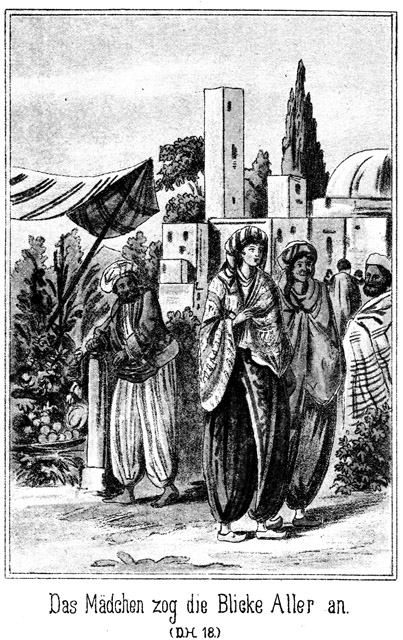Das schöne Mädchen zog die Blicke aller Begegnenden an. In diesen Blicken lag der Ausdruck staunender Zudringlichkeit. Ihrer Tracht sowohl, als auch ihrer Gesichtsbildung war es anzusehen, daß sie ein Kind der Wüste sei. Wie aber kam eine freigeborene Araberin dazu, hier in Kairo ihr Gesicht unverschleiert zu zeigen. War sie denn wirklich in den Kreis jener feilen Dirnen getreten, welche dies thun, um die Männer anzulocken? So fragten sich die Leute.
Unter einem Kaffeezelte saß eine Anzahl bis unter die Zähne bewaffneter Arnauten. Diese Letzteren bilden so recht eigentlich die Nachfolger der blutig ausgerotteten Mameluken; aber sie sind noch schlimmer als diese. Der Arnaut ist nicht nur tapfer, sondern tollkühn und muthig bis zur größten Verwegenheit. Ein Menschenleben gilt ihm keinen Pfifferling; er wagt auch das seinige, ohne nur mit der Wimper zu zucken. Dabei ist er treulos, hinterlistig und von einer Rohheit, die gradezu ihres Gleichen sucht. Messer und Pistole sitzen bei ihm locker. Er sticht und schießt bei der geringsten Veranlassung, und er weiß, daß er das mit ziemlicher Sicherheit thun kann, da selbst der Richter ihn nicht gern verurtheilt, weil er befürchten muß, wenn nicht noch während der Gerichtssitzung so doch später niedergestochen zu werden. Darum ist der Arnaute gefürchtet und gemieden. Er darf ungestraft thun, was hundert Andere nicht wagen würden.
Also wohl mehr als ein Dutzend dieser Leute saßen unter dem luftigen Dache des Kaffeezeltes. Sie hatten nicht nur Kaffee getrunken; das war ihren gerötheten Gesichtern und funkelnden Augen anzusehen.
Da kam Hiluja daher und wurde von ihnen bemerkt. Aller Blicke richteten sich auf sie.
»Seht, wer da kommt!« rief Einer. »Bei Allah, das ist die schönste und süßeste Oruspu, welche ich jemals gesehen habe. Sie mag sich zu uns setzen, um uns ein Bild zu geben, welche Lust uns einst bei den Huri's des Paradieses erwartet!«
Oruspu ist ein Mädchen, welches seine Liebe einem Jeden schenkt, der es dafür bezahlt.
Der Sprecher war von seinem Sitze aufgesprungen. Er trat aus dem Zelte heraus und auf die beiden Frauen zu. Das schöne Mädchen mit seinem glühenden Blicke fast verschlingend, streckte er beide Arme aus und sagte:
»Du kommst zur rechten Zeit, um von uns empfangen zu werden. Herein zu uns! Wir werden Dir zeigen, wie heiß wir Arnauten zu lieben verstehen.«
Sie erschrak auf das Heftigste. Den Arm ihrer Begleiterin ergreifend und sich zur Flucht wendend, sagte sie hastig:
»Komm, komm! Laß uns schnell umkehren!«
»Umkehren? Nein!« fiel der Arnaute ein. »So dumm sind wir nicht, ein so herrliches Mädchen fort zu lassen. Du bist ein köstlicher Bissen, in den wir beißen werden. Also herein zu uns in das Zelt! Es wird Dir bei uns gefallen!«
Er hatte sie bei der Hand gefaßt, um sie mit sich fort zu ziehen. Sie zitterte vor Angst und wehrte sich, ihm zu folgen.
»Laßt mich!« rief sie. »Ich habe nichts mit Euch zu schaffen!«
»Aber wir desto mehr mit Dir! Widerstrebe nicht, denn es wird Dir gar nichts helfen!«
Er zog sie mit sich fort. Sie konnte dem kräftigen Mann natürlich nicht widerstehen. Seine Kameraden lachten. Einer rief: »Sie spielt die Keusche, um desto besser bezahlt zu werden. Her mit ihr! Wir werden Küsse von ihr kaufen und sie mit Küssen bezahlen!«
Da ergriff die Alte ihre Herrin mit beiden Armen und versuchte, sie zurück zu halten; der rohe Mensch aber gab ihr einen Schlag mit der Faust, daß sie zurück taumelte und sagte:
»Packe Dich, Scheusal! Mit Dir haben wir nichts zu schaffen. Gehe in die Hölle, wohin Du gehörst!«
»Gnade, Gnade!« stöhnte Hiluja. »Was haben wir Euch denn zu Leid gethan!«
»Nichts, gar nichts! Auch wir wollen Dir nichts zu Leid thun. Wir wünschen nur Deine Liebe, und Du sollst dafür alle Zärtlichkeiten der Welt empfangen.«
Er hatte sie bis an das Zelt gezerrt. Die Anderen griffen zu und zogen sie jubelnd hinein. Sie schrie laut und voller Angst um Hilfe; aber es war außer Einem kein Mensch in der Nähe. Und wer hätte es auch wohl gewagt, wegen einer Unbekannten, welche überdies wie eine Dirne ohne Schleier ging, mit einer ganzen Schaar dieser rohen Menschen anzubinden? Er hätte sich sagen können, daß er damit einem fast sichern Tode entgegen gehe.
Dieser Eine war, wie man auf den ersten Blick erkannte, ein Beduine. Sein noch junges und volles, bartloses Gesicht blickte sonnverbrannt unter dem weißen Tuche hervor, in welches er den Kopf gehüllt hatte. Die Gestalt war in einen ebenso weißen Haïk gehüllt, einen langen, fast zur Erde reichenden Mantel, wie ihn die Beduinen zu tragen pflegen. Seine nackten Füße trugen Sandalen, welche mit Riemen befestigt waren, die über's Kreuz sich um den unteren Theil des Beines schlangen. Da er den linken Vordertheil des Mantels über die Schulter geworfen hatte, konnte man sehen, daß er ein Untergewand von einfachem, grauem Stoff trug. Dasselbe wurde nur von einem armseligen, kameelhärenen Strick um die Hüften festgehalten. In diesem Stricke stak ein Messer mit langer, doppelschneidiger Klinge. Ueber der Schulter hing an dem schmalen Riemen eine lange Beduinenflinte.
Er war langsam am Flusse daher gekommen und hatte die Scene von Weitem gesehen. Als die beiden Frauen ihre Stimmen erhoben, war sein Schritt ein schnellerer geworden, und als sein Auge gar bemerkte, daß der Arnaute die Alte schlug, kam er mit verdoppelter Eile herbei. Sie erblickte ihn und flüchtete auf ihn zu. Es gab keinen anderen Menschen in der Nähe; er war also der Einzige, an welchen sie sich hilfesuchend wenden konnte.
»Hilf ihr, hilf!« rief sie ihm entgegen. »Errette sie aus den Händen dieser Menschen!«
Er war noch sehr jung, machte aber keineswegs den Eindruck eines Menschen, welcher zaghaft ist. Sein dunkles, schönes Auge überflog lebhaft forschend ihre Gestalt, und mit einem Ausdrucke der Ungewißheit, des Zweifels sagte er:
»Du scheinst doch keine Griechin zu sein!«
»Nein.«
»Du hast vielmehr die Züge einer Araberin!«
»Ich bin die Tochter eines freien Beduinen. Hilf uns! Rette sie!«
»Aber sie ist doch nicht eine Tochter der Wüste!«
»Sie ist es. Sie ist die Tochter eines berühmten Scheiks.«
»Allah! Warum geht sie in dieser Gegend unverschleiert?«
»Wir sind hier fremd. Wir kennen die Sitte dieser Gegend noch nicht.«
»So solltet Ihr desto vorsichtiger sein. Du kennst die Gesetze der Wüste.«
»Ich fasse Dich. Du bist der Beschützer!«
Sie ergriff mit der rechten Hand den Strick, welcher ihm als Gürtel diente, und legte ihm die Linke auf seine rechte Schulter. Das ist das Zeichen der Bitte um Schutz. Dazu die Worte: »Du bist der Beschützer«. Kein einziger Beduine wird sich diese Worte umsonst sagen lassen. Derjenige, welcher sie ausspricht, steht von demselben Augenblicke an unter seinem Schutze; er kämpft für ihn, und er stirbt für ihn.
Der junge Beduine zog die Augenbrauen ein Wenig zusammen und sagte:
»Weißt Du, was Du verlangst? Von jetzt an gehört Euch mein Leben. Ist sie das werth?«
»Sie ist es werth. O, rette, rette sie!«
»Ich werde sie sehen und dann handeln.«
Er konnte von da, wo er stand, Hiluja nicht sehen; aber das laute Johlen und Lachen, welches aus dem Zelte erschallte und die Hilferufe der Bedrängten ließen genugsam erkennen, daß sie sich in einer schlimmen Lage befand. Er eilte mit schnellen Schritten nach der anderen Seite des Zeltes, wo dasselbe offen war. Zwei Arnauten hatten Hiluja gepackt und bemühten sich, sie zu küssen. Sie wehrte sich weinend und aus Leibeskräften, doch konnte dieser Widerstand von keinem Erfolge sein.
»Halt!« sagte der Beduine, indem er den Arm gebieterisch ausstreckte. »Diese Tochter des Uëfad arab gehört Euch nicht. Laßt sie los!«
Die Augen Aller richteten sich auf ihn. Ein allgemeines, höhnisches Lachen erscholl, und Derjenige, welcher das Mädchen in das Zelt gezogen hatte, rief:
»Hört Ihr es? Dieser Mensch ist wahnsinnig.«
»Ich bin es nicht. Dieses Mädchen steht unter meinem Schutz!«
»Unter dem Schutze eines Kindes, eines Knaben!«
Er sagte das im verächtlichsten Tone. Der junge Beduine hatte nur einen kurzen, forschenden Blick auf Hiluja geworfen, doch dieser eine Blick hatte ihm genug gesagt.
Hochroth von der Anstrengung des Widerstandes stand sie zwischen den beiden Arnauten, welche sie noch immer gepackt hielten. Ihr Busen wogte heftig, und ihr Auge, obgleich von den Thränen des Zornes erfüllt, sprühten Blitze, wie sie das Auge einer feilen Dirne unmöglich versenden kann.
Der Beduine hob unwillkürlich die Hand zum Herzen. Es ging da etwas vor, worüber er sich im Augenblicke keine Rechenschaft zu geben vermochte. Es war ihm, als ob man ihm selbst diese Schande angethan habe, als ob er für dieses herrliche Mädchen sein Leben wagen müsse und auch gern und tausendmal wagen werde. Er zuckte mit einem unendlich überlegenen Lächeln seines angenehmen und furchtlos drein blickenden Gesichtes die Achsel und antwortete:
»Einen Knaben nennst Du mich? Soll ich Dir etwa beweisen, daß ein Wüstenknabe mehr Muth besitzt als ein alter Tschausch der Arnauten?«
Tschausch heißt so viel wie Sergeant. Der Arnaut trug nämlich die Abzeichen dieses militärischen Grades.
»Willst Du mich etwa beleidigen?« rief derselbe.
»Hast Du nicht mich bereits beleidigt, indem Du mich einen Knaben nennst? Ich habe wohl bereits mehr Feinde erlegt, als Du gesehen hast.«
»Mäuse und Ratten, ja!«
»Du hast recht, denn ein Araber behandelt seine Feinde nur wie Mäuse und Ratten. Sie kriechen vor ihm in ihre Löcher.«
»Nun, so versuche, ob auch wir uns verkriechen!«
»Das ist nicht nöthig. Ich betrachte Euch noch nicht als meine Feinde. Ihr seid sie erst dann, wenn Ihr mir dieses Mädchen nicht frei gebt.«
»Hast Du ein Recht auf sie?«
»Ja, ich bin ihr Beschützer.«
»Du?« lachte der Sergeant laut auf, und Alle stimmten in sein Lachen ein, Einem ausgenommen. »Mit welchem Rechte nennst Du Dich ihren Beschützer?«
»Nach dem Rechte der Wüste, und was das bedeutet, wirst Du wohl wissen.«
»Ich weiß es, aber ich erkenne es nicht an. Hier bei uns gelten ganz andere Rechte und Gesetze. Wir können nur dann Dein Recht über sie anerkennen, wenn Du ihr Bruder oder ihr Bräutigam bist. Ist sie Deine Schwester?«
Er verhandelte nur deshalb mit dem jungen, ihm so ganz und gar ungefährlich erscheinenden Manne, um sich und den Kameraden einen Spaß zu machen.
»Nein,« antwortete der Gefragte ruhig.
»Oder etwa Deine Geliebte?«
»Ja; sie ist meine Braut.«
Sie konnten sich denken, daß dies nicht wahr sei, und darum lachten sie desto lauter über den bestimmten Ton, in welchem er es sagte.
»Deine Braut?« höhnte der Sergeant. »Wie willst Du uns das beweisen?«
»So!«
Er trat auf Hiluja zu, schob die Beiden, welche sie noch gefaßt hielten, von ihr weg, legte den Arm um ihren Leib und küßte sie auf den Mund. Er kannte die Art und Weise der Arnauten; er wußte, daß sie die Gesetze der Wüste nicht achteten; aber er wußte auch, daß er nun durch diesen Kuß in ihren Augen ein Anrecht auf das schöne Mädchen erworben habe. Ob sie es anerkennen würden oder nicht, das war freilich erst noch abzuwarten.
Hiluja hatte diesen Kuß geduldet. Ihr Gesicht überzog sich zwar mit purpurner Gluth, aber sie hatte keine Bewegung des Widerstrebens gemacht. War das etwa Berechnung von ihr? Nein. Es war ihr in diesem Augenblicke so eigenthümlich zu Muthe wie noch nie in ihrem ganzen Leben. Dieser junge und jedenfalls sehr arme Beduine erschien ihr wie ein Rettungsengel in höchster Noth. Es war ihr, als ob sie sich seinem Arme und seinem Schutze anvertrauen könne für jetzt und für das ganze Leben. Alle ihre Angst war verschwunden. Sie wurde jetzt nicht mehr von den Arnauten festgehalten; sie hätte diese Gelegenheit erfassen und entfliehen können. Es wäre ihr wohl Keiner nachgefolgt, da der Araber ja jetzt das ganze Interesse der rohen Menschen fesselte. Ein Streit mit ihm war ihnen ja zehnmal willkommener, als das schönste Mädchen der Welt. Aber dieser Gedanke an die Flucht kam ihr gar nicht einmal. Er hielt den Arm um sie geschlungen, und sie hielt sich für sicher und wohl geborgen in demselben. Es war ihr, als habe dieser Arm sie stets beschützt von Jugend auf und als werde er sie auch weiter und ferner beschützen für das übrige Leben.
»Er küßt sie! Er küßt eine Dirne!« ertönte es ringsum. »Der stolze Sohn der Wüste!«
»Wolltet Ihr sie nicht auch küssen? Oder meint Ihr vielleicht, daß Ihr das thun könnt und ich nicht, weil Ihr weniger werth seid, als ich? Dann will ich nicht mit Euch streiten und Euch vielmehr recht geben. Lebt wohl!«
Ohne den Arm von Hiluja zu nehmen, wendete er sich zum Gehen; aber der Sergeant trat ihm in den Weg und sagte, noch immer höhnisch lachend:
»Halt, Knabe! So treibt man es nicht mit uns. Das Mädchen bleibt hier!«
»Nein, sie geht mit mir! Ich habe Euch bewiesen, daß sie meine Braut ist. Sie ist nicht das, was ihr denkt. Sie gehört zu mir und wird mit mir gehen.«
»Oho! Ich habe sie gefunden; ich habe sie eingeladen und so ist sie mein Eigenthum.«
»Besinne Dich! Eine frei geborene Tochter der Sahara kann nie das Eigenthum irgend eines Menschen sein. Sie gehört nur Demjenigen, dem sie sich selbst und freiwillig ergiebt und schenkt. Also laßt uns friedlich gehen. Allah behüte Euch!«
Er wollte fort; der Sergeant aber ergriff ihn am Arme und sagte in drohendem Tone:
»Du bemerkst wohl gar nicht, daß wir bisher nur mit Dir scherzten!«
»Und Du bemerkst wohl noch weniger, daß ich bisher mit Euch im Ernste sprach!«
Sie standen sich drohend gegenüber. Ihre Blicke bohrten sich ineinander. Dann aber brach der Arnaute in ein schallendes Gelächter aus und rief:
»Nein, wahrlich, das ist kein Ernst, sondern das ist der größte Spaß, welcher mir in meinem ganzen Leben widerfahren ist. Dieser Knabe will mir ein Mädchen entführen, welches mir gehört! Höre mein Sohn, willst Du mit mir um ihren Besitz kämpfen?«
Er richtete seine mächtige Gestalt stolz in die Höhe.
Er war nicht jung, sondern ein guter Vierziger. Die Narben seines Gesichtes bezeugten, daß er kein muthloser Mensch sei. Der stolze, höhnische Ausdruck seines verwetterten Gesichtes ließ die Vermuthung errathen, daß der Beduine auf diese Frage sich schleunigst in Sicherheit bringen werde. Aber darin irrte er sich sehr, denn der Jüngling zuckte ebenso überlegen wie bereits vorher die Achsel und antwortete:
»Ja, das werde ich, wenn Ihr sie auf eine andere Weise nicht freigebt.«
»Mensch, bist Du toll!«
»Ich vertheidige, was mir gehört. Willst Du das toll nennen, so habe ich nichts dagegen.«
»Ich hacke Dich ja in Stücke!«
»Dasselbe haben bereits Mehrere gesagt. Du siehst aber, daß ich dennoch am Leben bin!«
»Nun gut, ganz wie Du willst! Ich will auf diesen seltenen und überaus lustigen Spaß eingehen. Es wäre doch jammerschade, wenn wir uns einen solchen Scherz entgehen lassen wollten. Also wir kämpfen, und Dem, welcher siegt, gehört das Mädchen.«
»Ich bin bereit!«
Da aber gab es einen ganz unerwarteten Einspruch. Die anderen Arnauten behaupteten nämlich, daß das Mädchen auch ihnen gehöre, daß der Sergeant also nicht das Recht besitze, über sie zu verfügen. Einige stellten sich vor den Beduinen und Hiluja, damit Beide nicht entkommen könnten, und die Anderen umdrängten lärmend den Sergeanten, um ihn zu überzeugen, daß sie ganz dieselben Rechte wie er auf Hiluja besäßen. Nur Einer verblieb ruhig in seiner Ecke; er hatte bereits vorher nicht in das höhnische Gelächter seiner Kameraden eingestimmt. Seiner Uniform nach war er ein Onbaschi, das heißt Corporal. Er verfolgte den Streit mit ernstem, stillem Interesse, ohne sich aber in denselben zu mischen.
»Laßt mich!« brüllte der Sergeant die Andern an. »Ihr habt mir nichts zu befehlen. Ich bin Euer Oberster und thue, was mir beliebt!«
»Sie gehört aber uns ebenso gut wie Dir!« riefen die Anderen ihm entgegen.
»Redet nicht solchen Unsinn! Er kann mich ja nicht besiegen. Sie bleibt Euch also gewiß! Also, heraus mit der Sprache, Knabe! Willst Du mit mir kämpfen?«
»Ja! Ich habe es Dir bereits gesagt. Oder hörst Du schwer? Wenn Dein Muth ebenso schwach ist wie Dein Gehör, so rathe ich Dir, lieber von dem Kampfe abzusehen.«
Ein dröhnendes Gelächter erscholl, in welches sich abermals der Corporal nicht mischte. Sein Gesicht nahm vielmehr jetzt den Ausdruck der Besorgniß an. Das Lachen aber hatte die Wirkung, daß die Arnauten auf den Widerstand gegen den Tschausch verzichteten. Er hatte ja Recht, er mußte Sieger bleiben. Davon war er so überzeugt, daß er, noch immer aus vollem Halse lachend, sagte:
»Nun gut, Kleiner! So komm also hinter das Zelt, wo wir diese Sache schnell ausmachen wollen. Deine Seele soll nicht lange Zeit brauchen, um in der untersten Ecke der Hölle zu kauern. Aber, hört, nehmt das Mädchen mit und auch die Alte. Sie dürfen uns nicht etwa bei dieser Gelegenheit entfliehen!«
»Habe keine Sorge!« antwortete der Araber ruhig. »Sie ist meine Braut und bleibt bei mir. Sie wird eben so wenig entfliehen, wie ich fortgehe, ohne Dir gezeigt zu haben, dass ein Knabe der Uëlad arab doch noch Etwas ganz Anderes ist als ein Tschausch der Arnauten; der dem Vicekönig sein Leben verkauft, weil dieser ihm für den Monat vierzig Piaster bezahlt.«
Das war eine fürchterliche Beleidigung. Vierzig Piaster sind nicht ganz acht Mark, die Monatslöhnung eines egyptischen Sergeanten. Dieser Letztere wußte gar nicht, was er denken und sagen solle. So zu sprechen, hatte noch kein Mensch gewagt, zumal in Gegenwart so vieler Arnauten. Jeder hätte gewußt, daß er damit sein Leben verwirkt habe. Darum starrte der Beleidigte den verwegenen Sprecher mit weit aufgerissenen Augen an und fragte:
»Mensch, weißt Du denn wirklich, was Du sagst?«
»Ja.«
»Das glaube ich nicht. Wenn ich es glaubte, würde mein Messer Dir ja sofort zwischen die Rippen fahren!«
»O, das gäbe nur den Unterschied, daß unser Kampf im Innern des Zeltes stattfinden würde, anstatt hinter demselben.«
»Nun gut! Du beleidigst mich und uns Alle also!« knirrschte der Tschausch. »Es giebt keine Schonung! Vorwärts!«
Hiluja hing noch immer an dem Arme ihres Beschützers. Beide wurden fortgeschoben. Es überkam das Mädchen eine entsetzliche Angst, nicht um sich, sondern um ihn. Sie flüsterte ihm zu:
»Um Allah's willen, fliehe!«
»Willst Du mich verachten?« antwortete er.
»O, nein! Du bist muthig!«
»Wäre es nicht feig, Dich in den Händen dieser Hunde zu lassen?«
»Sie werden Dich tödten!«
»Das wollen wir abwarten. Ich heiße Hilal. Hast Du vielleicht diesen Namen bereits gehört?«
»Nein.«
»So mußt Du aus weiter Ferne gekommen sein. Die beiden Namen Tarik und Hilal sind bekannt weit über die Grenzen Egyptens und unserer Oasen hinaus.«
Während dieses kurzen Austausches hatten die Arnauten hinter dem Zelte einen Kreis gebildet, in welchem jetzt der Tschausch mit seinem Gegner und den beiden Frauen stand. Diese beiden Letzteren waren in der Wüste aufgewachsen; sie hatten oft, sehr oft solche Kämpfe gesehen; ihr Gefühl sträubte sich also gar nicht dagegen, Zeuge des gegenwärtigen zu sein. Eine nervöse Europäerin wäre bereits vor Beginn desselben in Ohnmacht gefallen. Diese beiden Araberinnen aber fühlten nichts als nur allein eine angstvolle Besorgniß um ihren muthigen Beschützer. Sie mußten ihn verloren geben. Selbst wenn er, was ganz unmöglich schien, den Tschausch, den riesigen Menschen, besiegte, stand mit Sicherheit zu erwarten, daß sich dessen Kameraden sofort auf ihn stürzen würden, um ihren Vorgesetzten zu rächen. Er war also unbedingt verloren. Und was geschah dann mit ihnen Beiden, den schwachen Frauen?
»Setzt Euch auf die Erde!« herrschte ihnen der Sergeant zu. »Der Kampf mag beginnen, und die Liebe wird den Sieger belohnen. Vorher aber will ich aus Mitleid noch fragen, Knabe, ob Du denn wirklich weißt, was Du unternimmst!«
Diese letzteren Worte waren an Hilal gerichtet.
»Ich weiß es,« antwortete er ruhig.
»Es ist kein Spiel. Es handelt sich um Tod und Leben.«
»Ganz natürlich!«
»Du wirst keinen Menschen haben, der Dich rächt! Es wagt es Niemand, einen Arnauten zur Rechenschaft zu ziehen. Uebrigens wird es ein ehrlicher Zweikampf sein. Du stirbst und wirst in den Nil geworfen!«
»Ich oder Du!«
»Pah! Selbst, wenn das Unmögliche geschehe, daß Du mich besiegtest, wärst Du verloren. Meine Kameraden hier würden Dich in Stücke reißen!«
»Und das nennst Du einen ehrlichen Zweikampf?«
»Du bist unter Arnauten, also auf alle Fälle verloren.«
»Wir haben ja bestimmt, daß wir um dieses Mädchen kämpfen und daß es Demjenigen gehören soll, welcher als Sieger aus dem Kampfe hervorgeht.«
»Ja. Siege ich, so theile ich den Preis mit meinen Kameraden; siegst aber Du, so hast Du das Mädchen erst noch gegen sie Alle zu vertheidigen, wenn sie Dich nämlich nicht sofort zermalmen oder zerreißen.«
Da blitzte das Auge des Jünglings stolz und verächtlich auf. Er sagte:
»Damit zeigt Ihr recht deutlich, daß Ihr Söldner seid, aber keine freien, tapfern Männer. Uebrigens will ich ihnen nicht rathen, sich an mir widerrechtlich zu vergreifen. Soll ich den Preis nicht haben, wenn ich Sieger bin; nun gut, so will ich auch mit jedem Einzelnen der Andern kämpfen; aber ich werde nicht dulden, daß sie wie eine Heerde Hyänen über mich herfallen!«
»Wurm! Was willst Du dagegen thun?«
»Der da mag es Euch sagen.«
Er deutete auf den Corporal.
»Der da? Der Onbaschi? Was ist's mit ihm und Dir? Seid Ihr etwa Freunde?«
»Nein. Aber er stand bei dem Khedive Wache. Er weiß, daß ich der Gast des Vicekönigs bin, und daß dieser mich an meinen Mördern mit unnachsichtlicher Strenge rächen würde.«
»Hölle, Tod und Teufel! Ist das wahr, Onbaschi?«
»Ja,« antwortete dieser. »Ich sah und hörte ihn mit dem Vicekönig sprechen. Ich habe ein jedes Wort vernommen. Er erfreut sich des besonderen Schutzes und der ganzen Gewogenheit des Herrschers. Ich kann nicht dulden, daß Ihr Gewalt und Unrecht gegen ihn übt!«
»Oho! Bist Du unser Kamerad oder nicht!«
»Ich bin es. Aber mein Leben ist mir ebenso lieb, wie Euch das Eurige. Ich will mich nicht vom Henker an irgend einen Ast aufknüpfen lassen, weil es Euch beliebt, einen Schützling des Herrschers zu ermorden. Ich rathe Euch, diesen jungen Mann sammt den Frauen gehen zu lassen.«
»Oho! Er hat uns beleidigt!«
»Dich allein, mich und uns aber nicht. Und diese Beleidigung war nur eine Antwort auf die Deinige!«
»Du vergissest, daß ich Dein Vorgesetzter bin!« brauste der Tschausch auf.
»Hier bist Du es nicht! Uebrigens habe ich gegen einen ehrlichen Zweikampf nichts. Auch der Vicekönig kann dann nichts sagen; aber nur ermorden lasse ich meinen Schützling nicht!«
»Wie? Was höre ich? Du beschützest ihn?«
»Ja. Ich werde ihn gegen Euch vertheidigen, gegen jeden unrechtmäßigen Angriff!«
»Nun gut, Onbaschi, ich habe keine Lust, mich mit Dir zu streiten. Wir werden später darüber sprechen, ob Du mir zu gehorchen hast oder nicht. Wir werden darüber mit Messern oder Kugeln sprechen!«
»Ich werde mich nicht weigern!«
Jetzt hatte diese Angelegenheit eine andere Wendung genommen, als zu vermuthen gewesen war. Der Corporal war an Hilals Seite getreten. Die Arnauten murmelten leise miteinander. Einige hielten es mit dem Tschausch, die Anderen mit dem Onbaschi. Der Erstere mochte befürchten, daß die Seinigen gar mit einander in Streit gerathen möchten. Darum rief er:
»Keinen Zank unter uns! Ich fechte meinen Strauß hier mit diesem Knaben aus. Es ist ein erlaubter Zweikampf. Kein Mensch kann mich bestrafen, wenn ich ihn tödte. Allah mag seiner Seele eine gute Wohnung geben! Also, Knabe, Du bist der Schwächere; ich will Dir daher aus lauter Gnade und Großmuth die Wahl der Waffe überlassen. Wollen wir schießen oder stechen?«
Ueber das Gesicht des Gefragten zuckte ein höchst eigenthümliches Lächeln. Er antwortete:
»Stechen. Beim Schießen wärst Du verloren. Ich also bin es, welcher Gnade walten läßt!«
»Hund!« brüllte der Riese.
»Du weißt nicht, was Du redest. Würde ein Anderer mich mit diesem Worte beschimpfen, er wäre in derselben Minute eine Leiche. Da aber die Strafe so sicher über Dich kommt, wie ich hier vor Dir stehe, so will ich Langmuth üben. Ich habe gesagt, daß Du beim Schießen verloren seist, und das ist wahr. Man nennt mich Ibn es sa'ika!«
»Ibn es sa'ika – Sohn des Blitzes?« lachte der Sergeant. »Jetzt weiß ich gewiß, daß Du verrückt bist. Söhne des Blitzes nennt man zwei Brüder vom Stamme der Sallah. Wenn ihre Flinten blitzen, ist Derjenige, auf den sie zielen, verloren. Willst Du etwa einer dieser Brüder sein? Das mache Andern weiß!«
»Denke was Du willst! Also bist Du einverstanden, daß wir zu den Waffen greifen?«
»Ja. Und nun zu Ende mit der Rederei! Es wird Zeit, daß wir zu Ende kommen!«
Er riß das Messer aus dem Gürtel und stellte sich in Positur, Hilal warf den Mantel ab und legte die Flinte zur Erde. Er trug jetzt keine andere Kleidung, als das Untergewand. Dieses bestand nur in einem Hemde, welches keine Aermel hatte und bis hernieder zum Kniee reichte. Man konnte den unteren Theil der nackten, sehnigen Beine sehen. Die Arme waren auch blos und zeigten Muskeln, welche ihm wohl vorher Keiner zugetraut hatte.
»Also angefangen!« rief der Tschausch.
»So komm!« antwortete der Beduine.
Er zog das Messer aus dem Gürtelstricke und setzte sich zur Erde nieder, die nackten Beine vor sich hinstreckend und das Messer in der rechten Hand haltend. Der Tschausch hatte etwas ganz Anderes erwartet.
»Was soll's?« fragte er. »Was fällt Dir ein?«
»Nun, Zweikampf auf Messer!«
»Sitzend etwa?«
»Ja. Ich meine den Zweikampf der Wüste. Nur in diesem zeigt es sich, ob man wirklichen Muth und wahrhaftige Tapferkeit besitzt.«
»Alle Teufel! Wüstenkampf! Fällt mir gar nicht ein! Ich bin Arnaute, aber kein Beduine!«
Der echte Messerkampf der Sahara besteht darin, daß die beiden Duellanten sich einander gegenüber setzen. Jeder das Messer in der Hand. Der Eine sticht sich die Klinge in irgend eine Stelle seines Körpers, zum Beispiel in die Wade, so daß der Stahl an der andern Seite wieder herauskommt. Der Andere muß sich an ganz derselben Stelle denselben Stich versetzen. Hat er das gethan, so schneidet sich der Erstere vielleicht die ganze Muskel des Oberschenkels bis auf den Knochen auf. Der Zweite muß dies auch thun. Wer am Längsten aushält, ohne eine Miene zu verziehen, der ist der Sieger. Die Beduinen sind unerreichbar in dieser Art des Zweikampfes. Sie haben eine solche Selbstbeherrschung, daß sie sich die schmerzhaftesten Wunden mit lächelndem Munde beibringen.
Das war aber nicht nach dem Geschmacke des Tschausch. Er wollte seinem Gegner einfach das Messer in das Herz stoßen, nicht aber sich selbst auf so unsinnige Weise zerfleischen. Er war der bei Weitem Stärkere; er mußte ja siegen, und so wäre es geradezu Verrücktheit von ihm gewesen, auf diese Art des Kampfes einzugehen.
Hilal hob den lachenden Blick zu ihm empor und sagte:
»Nein.«
»Ah! Die Wunde thut weh!«
»Wie meinst Du das?«
»Du fürchtest den Schmerz!«
»Hund! Keine weitere Beleidigung!«
»Gut, wie Du willst!«
Er erhob sich von der Erde und fuhr gleichmüthig fort:
»Ich wollte Dein Leben schonen, denn Du hättest Dich doch wohl nicht selbst erstochen. Darum schlug ich Dir diese Art des Kampfes vor. Die Art aber, welche Du wünschest, ist höchst lebensgefährlich für Dich. Meine Klinge ist sicher.«
»Versuche es!« lachte der Riese höhnisch auf.
»Das brauche ich nicht! Ich kenne mein Messer so genau, daß es eines Versuches gar nicht bedarf. Du wärst verloren, wenn ich wollte. Aber ich bin Gast des Vicekönigs und will ihm darum keinen seiner Soldaten erstechen. Das wäre Unhöflichkeit.«
»Schwatze nicht Unsinn! Beginnen wir lieber. Wer von uns Beiden eine Leiche wird, das kann nur ich sehen, da ich nur der Ueberlebende sein werde.«
»In diesem Falle muß ich Dich bitten, meinen Verwandten die Kunde meines Todes zugehen zu lassen, damit sie nicht vergebens nach mir suchen.«
»Ich werde es thun. Also Dein Name?«
»Hilal.«
»Hilal? Von welchem Stamme?«
»Dieser Antwort bedarf es nicht. Mein Bruder heißt Tarik.«
»Teufel! Tarik und Hilal. Das sind ja die beiden Söhne des Blitzes. Mache mir diese Fabel nicht vor!«
»Ich sage wie vorher: Glaube es, oder glaube es nicht! Uebrigens bin ich Deiner Meinung. Wir haben genug geschwatzt. Beginnen wir!«
»Wohlan also!«
Sie standen einander drohend gegenüber, die Messer in den Fäusten und die Blicke in einander gebohrt.
»Allah, o Allah!« flehte Hiluja, sich abwendend.
»Nun, so komm, Knabe!« rief der Arnaute.
»Ich warte auf Dich!« antwortete Hilal lächelnd. »Hast Du Muth oder nicht?«
»Ah, Bube, komm her! Ich werde Dich abschlachten, wie man ein Schöps abschlachtet!«
»Und ich werde Dich nicht tödten; aber ich werde dafür sorgen, daß Deine Arme für lange Zeit verzichten müssen, Dich zu vertheidigen, wenn Du eine Tochter der Beduinen beleidigt hast. Du nennst mich einen Buben und treibst doch selber Büberei!«
Da stieß der Arnaute einen heiseren Wuthschrei aus und stürzte sich mit gezücktem Messer und ausgestreckter Linken auf den Gegner. Er wollte ihn einfach mit der Linken umfassen und mit der Rechten den tödtlichen Stoß ausführen – er griff in die Luft; Hilal stand, laut auflachend, hinter ihm; er war unter dem gegen ihn ausgestreckten Arme hinweggeschlüpft.
Der Arnaut drehte sich wieder nach ihm um und drang auf ihn; aber er wußte nicht, wie das Unmögliche möglich wurde, Hilal entkam ihm auch jetzt wieder und stieß hinter ihm sein helles Lachen aus.
Dies geschah noch mehrere Male. Die Zuschauer konnten es kaum wahrnehmen, wie dem Araber seine Taktik gelang, so schnell, geschmeidig und gewandt waren seine Bewegungen. Der Tschausch gerieth außer sich. Er hatte geglaubt, mit dem »Knaben« kurzen Prozeß machen zu können und ihn bei dem ersten Stoße zu tödten, und nun stieß er stets nur in die Luft. Er kam in gewaltige Aufregung. So schnell er zugriff, so rasch er sich umdrehte, kein Griff, kein Messerstoß glückte ihm.
»Hund, halte Stand!« brüllte er wüthend.
»Bemerkst Du nicht, daß ich nur mit Dir spiele?« lachte der unvergleichliche Beduine.
»Ach, wenn ich Dich nur hätte! Nur erst fassen!« schäumte der vor Anstrengung Schäumende.
»Gut! Hier, fasse mich!«
Das erklang so ernst, so fest, so drohend. Hilal blieb stehen, die Füße weit aus einander gespreizt, den leuchtenden Blick wie die Spitze eines Bohrers auf das rothe Gesicht des Tschausch gerichtet. Dieser stieß einen Ruf der Freude aus, packte ihn mit der Linken bei der Brust und holte mit der Rechten aus.
Hiluja schrie laut auf – im nächsten Augenblicke mußte ihr Beschützer eine Leiche sein.
Aber er war es nicht. Auch er hatte mit seiner Linken den Tschausch gepackt, mit der Rechten parirte er die Stöße desselben. Faust traf an Faust, Klinge glitt an Klinge ab. Der Tschausch mochte stoßen wie er wollte, von oben, unten, von der Seite, stets wurde sein Stoß parirt, und zwar mit einer solchen Leichtigkeit, ja Eleganz, wie es die auch selbst erregten Zuschauer für vollständig unmöglich gehalten hätten. Ebenso wunderbar erschien ihnen die Festigkeit, mit welcher Hilal's schmächtiger Körper wie in den Boden gewachsen zu sein schien. Die ganze Anwendung der gewaltigen Körperkraft war zu wenig, den Araber auch nur einen Zoll breit von der Stelle zu bringen.
So standen die Beiden vor einander, sich fest gepackt haltend und nur die rechten Arme mit den blitzenden Messern bewegend, der Eine zum Stoßen und der Andere zum Pariren.
Der Tschausch schäumte vor Wuth. Aus seinem krampfhaft verzerrten Munde troff der Speichel; seine Augen waren mit Blut unterlaufen, während sein Gegner mit lächelnder Miene ihm gegenüber hielt, als ob er sich nur einer angenehmen Uebung befleißige. Die Stöße des Ersteren wurden immer schneller, aber auch unsicherer, krampfhafter. Man sah es ihm an, daß er sich anstrengte, daß seine Kraft nicht mehr lange vorhalten könnte.
*
»Mensch, bist Du denn ein Teufel!« brüllte er. »Ein Ende mit Dir! Jetzt oder nie!«
Sein Auge hatte den Blick eines gereizten Stieres, der sich in der Arena auf den Gegner wirft, um ihn auf die Hörner zu spießen. Er holte zu einem Stoße aus, in welchem er seine ganze noch vorhandene Körperkraft vereinigte. Jetzt mußte es gelingen!
»Ja, ein Ende jetzt!« antwortete Hilal.
Er riß sich mit einem gewaltigen Ruck von dem Griffe des Riesen los und parirte dessen Messerstoß – ein Schlag in die Achselhöhle, und der Tschausch machte in Folge dieses Fausthiebes eine Viertelwendung, so daß er dem Gegner für einen Augenblick den Rücken zukehrte. Aber dieser eine Augenblick genügte diesem vollständig. Sein Messer blitzte auf; zwei gedankenschnelle Schritte – zwei ebenso schnell auf einander folgende Schreie des Tschausch – Hilal sprang zurück, der Tschausch aber stand auf einem Punkte, unbeweglich, als habe ihn der Schlag getroffen.
»So, jetzt ist's aus!« sagte der Araber. »Seht hin, ob ich Wort gehalten habe!«
Das war mit solcher Schnelligkeit vor sich gegangen, daß weder der Tschausch wußte, was eigentlich mit ihm geschehen sei, noch die Andern sehen konnten, was der Sprecher eigentlich meine. Sie sahen Blut von den Schultern des Arnauten laufen. Dieser stand stöhnend still; er wollte die Arme erheben, um den Gegner zu fassen, konnte aber nicht. Woran das lag, wußte er nicht. Da es aber nicht gelang, brüllte er laut auf.
»Allah, o Allah! Was ist mit ihm?« fragte Einer, auf den Verwundeten zutretend.
Die Anderen thaten dasselbe. Nun sahen sie, was geschehen war. Hilal hatte ihm die Rückenmuskeln quer über beide Schlüsselbeine und die Schulterblätter zerschnitten, und da diese Muskeln zur Bewegung der Oberarme nothwendig sind, war es ihm nun unmöglich, die Arme zu erheben; sie hingen eng am Körper herab, und der Verwundete stand in einer großen Lache des herabfließenden Blutes.
Zahlreiche Schreckensrufe machten ihn mit seinem Zustande bekannt. Die Wuth, in welche er dadurch gerieth, war geradezu unbeschreiblich. Er geberdete sich wie ein wildes Thier und forderte die Anderen auf, den Thäter auf der Stelle umzubringen. Sein Zustand machte auf sie allerdings einen Eindruck, welcher für den Beduinen verhängnißvoll werden konnte. Während Zwei den in einem förmlichen Delirium des Grimmes sich befindenden Verwundeten in das Zelt schafften, drängten die Anderen sich drohend an den Sieger heran.
»Der Teufel hat ihm geholfen!« rief Einer.
»Ja. Er steht mit bösen Geistern im Bunde,« meinte ein Zweiter. »Wie hätte er sonst siegen können!«
»Er hat ihn gelähmt. Das ist schlimmer als der Tod!«
»Tödtet ihn!«
»Nein! Lähmt ihn auch!«
Solche und verschiedene Rufe ließen sich hören. Er stand ruhig an der Wand des Zeltes, das Messer noch in der Hand, das eine Auge auf seine Flinte gerichtet, welche noch am Boden lag. Er war auf Alles gefaßt, versuchte aber, sich zu vertheidigen.
»Ich habe ihn gewarnt!«
»Du bist behext. Du hast ein Amulet! Heraus damit!«
»Hier ist mein Amulet.«
Er hob sein Messer empor.
»Leugne nicht! Wie hättest Du ihn sonst besiegen können, ihn, den Stärksten von uns Allen!«
»Ich habe Euch gesagt, daß ich Hilal bin, der Sohn des Blitzes. Hätte er es geglaubt!«
»Auch wir glauben es nicht. Rache für ihn. Blut um Blut!«
»Vergeßt nicht, daß ich der Gast des Vicekönigs bin!«
»Ja, vergeßt das nicht! Und vergeßt auch nicht, daß er unter meinem Schutze steht!«
Dies sagte der Onbaschi, indem er sich vor ihn hinstellte und die Dränger von ihm zurückschob.
»Du handelst nicht, wie einer der Unserigen!« wurde ihm vorgeworfen.
»Ich handle so, wie ich muß und wie ich es Euch vorher gesagt habe. Er hat den Tschausch im ehrlichen Zweikampf besiegt. Er hat bewiesen, daß er ein Mann ist. Was wollt Ihr ihm thun?«
»Sein Blut wollen wir.«
»Ich dulde nicht, daß Ihr ihn mordet!«
»Er soll mit uns kämpfen. Er hat es uns versprochen. Laßt diese verdammten Weiber fort! Wir wollen nicht sie, sondern ihn!«
Die alte Beduinin erhielt einen Fußtritt, daß sie laut aufschrie.
»Komm, komm, Hiluja!« bat sie. »Laß' uns fliehen! Die Gelegenheit ist gut. Sie selbst jagen uns fort.«
»Ich bleibe!« antwortete die Angeredete.
Sie hatte nicht einen Tropfen Blutes im Gesicht. Was sie beim Anblick des so glücklich beendeten Kampfes ausgestanden hatte, das war nichts gegen die Angst, welche sie jetzt empfand. Sie, als Tochter eines kriegerischen Stammes hatte bereits nach den ersten Augenblicken des Zweikampfes gesehen, daß ihr muthiger und verwegener Beschützer seinem Gegner überlegen sei. Jetzt aber drang nicht Einer allein auf ihn ein. Gegen so Viele half keine Tapferkeit etwas.
»Allah l'Allah!« stöhnte die Alte. »Willst Du Dich zwecklos verderben. Du kannst ihn ja nicht retten!«
»Nein; aber soll ich ihn verlassen, da er vorher mich befreien wollte?«
»Du kannst ihn nicht befreien. Komm also!«
»Nein, ich bleibe! Ich kämpfe für ihn, wenn es nöthig sein sollte!«
Sie griff nach dem Messer des Tschausch, welches diesem bei seiner Verwundung entfallen war. Niemand sah es, daß sie diese Waffe an sich nahm.
»O Ihr Geister der sieben Himmel! Jetzt will sie gar für ihn kämpfen!« klagte die Alte. »Sie werden Dich umbringen! Jetzt aber könntest Du Dich retten!«
Hiluja antwortete nicht mehr. Sie war fest entschlossen, ihr Wort wahr zu machen. Ihre Augen ruhten auf Hilal, wie er da am Zelt stand, ruhig und stolz, als gehe der Streit, welchen der Onbaschi mit den Andern fortführte, ihn gar nichts an. Sein Auge fiel auf sie. Ihre Blicke trafen sich. Er sah die Bewunderung in dem ihrigen leuchten, und seine sonnverbrannte Wange röthete sich. Er nickte ihr beruhigend zu und winkte ihr heimlich, den Ort zu verlassen. Sie antwortete, indem sie verneinend den Kopf schüttelte und ihm das Messer zeigte. Da blitzte es in seinen Augen auf, so hell, so flammend, daß es ihr war, als sei sie von diesem Lichte geblendet worden. Sie senkte den Blick und fuhr sich mit der Hand nach dem Herzen.
Was war doch in diesem Augenblicke in demselben geschehen. Es war wie ein elektrischer Schlag durch ihre Seele gegangen, aber nicht etwa schmerzhaft sondern wonnig, über alle Maßen selig. Sein Blick hatte so deutlich gesagt: »Wie schön bist Du, und auch wie tapfer bist Du!« Und nicht nur Dieses sondern noch Anderes hatte in diesem Blicke gelegen. Sie hatte nur keine Zeit, darüber nachzudenken, denn der Streit nahm jetzt wieder ihre ganze Aufmerksamkeit in Anspruch. Der Korporal hatte sich mit den Arnauten geeinigt. Er wendete sich an Hilal:
»Du hörst, was sie sagen. Sie wollen Dein Blut.«
»Sie mögen es sich holen. Hier stehe ich!«
»Nein, kein Mord soll geschehen. Darüber haben wir uns geeinigt. Du sollst mit Jedem kämpfen, mit Jedem einzeln.«
»Das ist sehr wohlbedacht von ihnen,« lächelte Hilal verächtlich. »Sie sind ihrer Viele und ich bin allein!«
»Ich bin auf Deiner Seite.«
»Das ändert es nicht. Einem von ihnen wird es doch wohl gelingen, mich zu tödten. Nun, sie mögen es versuchen. Welcher will anfangen?«
»Das Loos entscheidet.«
»So werft es jetzt, damit wir bald zu Ende kommen.«
»Nicht jetzt und hier. Es soll geschossen werden. Das darf Niemand hören. Darum gehen wir fort von hier.«
»Geschossen? Haben Sie gesehen, daß ich Meister bin in der Führung des Messers?«
»Höhne nicht! Ich bin froh, daß ich das Zugeständniß eines ehrlichen Kampfes erlangt habe; wenn Du sie aber erzürnst, kann ich Dich nicht länger beschützen.«
»Nun, so warne sie vor meiner Flinte! Ob sie es glauben oder nicht, ich bin der Sohn des Blitzes. Meine Kugel trifft stets den Feind. Es wird Keiner von ihnen übrig bleiben. Das ist gewiß und sicher!«
Ein lautes Lachen antwortete ihm. Er zuckte die Achseln und erkundigte sich:
»Wo soll der Kampf stattfinden?«
»An dem kleinen See El Chiyam, jenseits des Kanales. Kennst Du ihn?«
»Ja. Er ist zur Zeit der Nilüberschwemmung voller Wasser; jetzt aber wird er wenig desselben haben.«
»An der östlichen Spitze desselben liegen viele große Steine als Ueberreste aus alter Zeit. An diesen Steinen soll der Ort des Kampfes sein.«
»Wann?«
»Wann die Sonne die Wüste berührt.«
»Das ist in einer Stunde. Ich werde kommen.«
Er hob seinen Haïk auf, um ihn umzunehmen, und griff dann auch nach seiner Flinte.
»Wie?« fragte der Onbaschi. »Willst Du etwa fort?«
»Ja. Meinst Du etwa, daß ich hier bleiben soll.«
»Natürlich! Du hast ja mit diesen Männern zu kämpfen!«
»Doch nicht hier, sondern draußen am See.«
»Du wirst warten, um mit uns hinaus zu gehen.«
»Nein, ich werde nicht warten! Was soll ich hier bei Euch? Soll ich mich mit Euch zanken? Das fällt mir nicht ein!«
»Aber wenn wir Dich jetzt fortlassen, wirst Du vielleicht nicht zum Kampf erscheinen.«
»Dasselbe könnte ich auch gegen Euch sagen.«
»O, warum sollten wir nicht kommen? Diese Männer brennen darauf, Dein Blut zu sehen. Sie kommen ganz bestimmt und werden lieber alles Andere versäumen.«
»Ebenso gewiß und sicher komme auch ich.«
»Hm! Du gehst wohl dem gewissen Tode entgegen, und da kann es leicht geschehen, daß Du abgehalten wirst, zu kommen.«
Da legte Hilal ihm die Hand auf die Achsel, lachte laut auf und antwortete:
»Es wird wohl umgekehrt sein. Diese Arnauten gehen einem sicheren Tode entgegen; sie allein haben Veranlassung, nicht zu erscheinen!«
Das klang so sicher und selbstbewußt, daß sogar der Onbaschi davon berührt wurde. Er meinte:
»Wenn Du Deiner Flinte so gewiß bist wie Deines Messers, so kann der Ausgang des Kampfes allerdings für Einige von uns verhängnißvoll werden. Bist Du denn wirklich Hilal, der Bruder Tariks?«
»Ich habe es gesagt, und also ist es wahr. Es kommt nie eine Unwahrheit über meine Lippen.«
»So freue ich mich, den berühmten Beduinen zu sehen. Ich habe nicht geglaubt, daß diese Brüder noch so jung sind. Und doppelt freut es mich, daß es mir vergönnt gewesen ist, Dir einen Dienst zu erweisen.«
»Hoffentlich wirst Du Deine Freundlichkeit dadurch fortsetzen, daß Du mich jetzt gehen lässest?«
»Wirst Du wirklich kommen?«
»Ich habe es gesagt, und so komme ich. Du kennst mich nicht genau, daher will ich es Dir auch noch bei dem Barte des Propheten versichern. Ich schwöre sonst nie, will es aber jetzt einmal thun.«
»So glaube ich es Dir. Wo aber willst Du während dieser Zeit hingehen?«
»Ich will diese beiden Frauen heimgeleiten, da ihnen sonst vielleicht noch Anderes widerfahren könnte.«
»Warte noch, bis ich mit den Anderen gesprochen habe. Ich muß erst sehen, ob sie Dich und diese Beiden fortlassen, wenn ich mich für Dich verbürge.«
Seine Kameraden hatten sich ein Stück zurückgezogen und unterhielten sich leise flüsternd, wobei sie die Blicke mit finstrem, drohendem Ausdrucke auf Hilal gerichtet hielten. Er schien sie gar nicht zu beachten, in Wahrheit aber beobachtete er sie zwischen den gesenkten Wimpern hindurch so scharf, daß ihm keine Miene entging.
Der Onbaschi schien nicht gleich ihre Zustimmung zu erhalten. Er sprach lange in sie hinein, und es verging eine ziemliche Weile, ehe er wiederkehrte, um zu melden:
»Sie wollten nicht in Deine Entfernung willigen, aber ich habe mich verbürgt. Kommst Du nicht, so ist meine Ehre verloren. Ich wage viel.«
»Du wagst gar nichts und wirst Deine Ehre behalten. Uebrigens werde ich zu dem Vicekönig von Dir sprechen. Ich hoffe, daß Deine Freundlichkeit belohnt werde.«
»Dann müßten meine Kameraden bestraft werden, und das will ich nicht. Schweige also lieber.«
»Dürfen die Frauen auch fort.«
»Ja. Man ist froh, sie los zu sein. Das hübsche Gesicht dieses Mädchens hat großes Unglück angerichtet. Horch! Da fängt der Tschausch wieder an, zu brüllen. Man wird ihn verbinden. Mache, daß Du fortkommst, aber zögere dann auch nicht, zu erscheinen!«
»Ich gehe, aber ich fliehe nicht, mag Dein Tschausch singen oder brüllen, beten oder fluchen!«
Er nahm sein Gewehr auf, winkte den beiden Frauen, ihm zu folgen, und schritt davon. Er war viel zu stolz, sich auch nur ein einziges Mal umzudrehen, vielleicht aus Besorgniß, daß man ihm eine Kugel nachsenden könne. Erst, als er überzeugt war, daß das Zelt gar nicht mehr zu sehen war, blieb er stehen und wendete sich zu den Zweien, welche ihm schweigend gefolgt waren. Hiluja trat rasch auf ihn zu, streckte ihm die Hand entgegen und sagte im herzlichsten Tone:
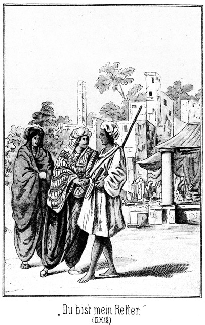»Also Hilal heißt Du. Du bist mein Retter. Wie habe ich Dir zu danken!«
Er antwortete nicht gleich. Sein Blick senkte sich forschend in ihr Auge. Dann sagte er:
»Nein, Du bist keine von Allah Verlassene. Dein Auge ist rein von solcher Schuld.«
»Welche Schuld meinst Du?«
»Die Schuld, an welche ich dachte, als ich sah, daß Du Dein Angesicht den Gläubigen und Ungläubigen gezeigt hattest.«
Sie hatte so viel vom Leben und Treiben größerer Städte gehört, daß sie ihn so ziemlich verstand. Sie erglühte bis tief in den Nacken hinab und antwortete:
»Ich bin noch nie hier gewesen. Wir sollten nur einsam am Flusse hin und bald umkehren.«
»Dennoch hätte ich mich nicht Deiner angenommen, wenn mich nicht Dein Gesicht dazu gezwungen hätte.«
»Wie konnte Dich dieses zwingen?«
»Es giebt ein sehr ähnliches, welches ich lieb habe. Du hast ganz die Augen und die Züge unseres Scheiks.«
»So habe ich das Gesicht eines Mannes?« lächelte sie.
»Nein. Unser Scheik ist ein Weib. Es heißt Badija.«
Sie waren während des Gespräches immer weiter fortgegangen. Jetzt, als er diesen Namen nannte, blieb Hiluja überrascht stehen.
»Was höre ich?« fragte sie. »Badija? Meinst Du die Königin der Wüste?«
»Ja.«
»So kennst Du sie?«
»Ich sagte ja, daß sie mein Scheik sei.«
»So gehörst Du zum Stamme der Sallah-Beduinen?«
»Ich bin stolz, ein Sallah zu sein. Die Königin hat mich mit einer Botschaft an den Vicekönig gesandt.«
»Wann kehrst Du zurück?«
»Morgen früh.«
»Wie herrlich Allah dieses fügt! Willst Du mich mitnehmen?«
»Mit mir? Zu dem Lager der Meinigen? Ist das Dein Ernst? Kann das Dein Wille sein?«
»Ja. Badija ist meine Schwester. Wir Beide kommen, sie zu besuchen.«
»Gott ist groß!« rief er vor Erstaunen so laut, als ob es ganz Kairo hören solle. »Du, die Schwester der Königin! Du, Diejenige, von der sie uns so viel erzählt hat, wenn sie von der Heimath sprach?«
»Hat sie von mir erzählt, von mir gesprochen?«
»Tausendmal!«
»O, sie liebt mich noch!«
»Ob sie Dich liebt? Sie wird sich freuen ohne Ende, wenn sie Dich sieht. Weiß sie, daß Du kommst?«
»Nein, sie hat keine Ahnung davon.«
»Desto besser; desto größer wird die Ueberraschung sein.«
Diese Fragen und Antworten folgten mit ungeheurer Geschwindigkeit einander, wie es bei solchen Gelegenheiten ja stets der Fall zu sein pflegt. Sein Gesicht hatte sich vor freudiger Verwunderung geröthet, und das ihrige glänzte vor Entzücken. Ohne es sich in diesem Augenblicke einzugestehen, fühlte sie sich unendlich glücklich darüber, daß ihr Retter und Beschützer zu dem Stamme gehörte, dessen Beherrscherin ihre Schwester war.
»Wie aber kommst Du nach Kairo?« fragte er. »Du bist doch eine Tochter des Beni Abbas.
»Ja. Weißt Du das noch nicht?«
»Natürlich weiß ich es. Aber diese wohnen doch weit gegen Sonnenuntergang von hier, im Süden von Tunis, und Du scheinst von Ost zu kommen?«
»Ich komme von West; aber ich kam mit diesem Dampfschiffe, welches da am Ufer liegt.«
Sie waren jetzt gerade an der Yacht angekommen.
»Mit diesem Schiffe? Du, eine Tochter der Wüste?«
»Ja. Ich müßte Dir viel erzählen, um es Dir zu erklären. Ich reiste mit einer zahlreichen Carawane; wir wurden von einer Raubcarawane der Tuariks überfallen; ein edler Franke rettete uns und brachte uns dann auf diesem Schiffe hierher, damit wir von hier aus zu dem Beni Sallah kommen könnten. Er wird sich freuen, daß ich in Dir einen so tapferen Begleiter gefunden habe. – Oder willst Du mich nicht mitnehmen?«
»Wie gern nehme ich Dich mit!« entfuhr es ihm. »Mit Dir würde ich bis an das Ende der Erde, bis an das Ende aller Welten gehen!«
»Zunächst nur zu meiner Schwester. Du mußt jetzt mit auf das Schiff kommen, damit er Dich sieht.«
»Das geht nicht.«
»Warum nicht?«
»Du hast ja gehört, daß ich, wenn die Sonne das Sandmeer berührt, draußen am See sein muß.«
Ihr glückstrahlendes Gesicht veränderte sich sofort. Sie meinte erschrocken:
»O Allah! Das hatte ich ganz vergessen! So wolltest Du also wirklich mit diesen Ungeheuern kämpfen?«
»Ja.«
»Gehe nicht heraus!«
»Willst Du, daß ich ein Lügner sei?«
»Nein. Aber sie werden Dich tödten!«
»O nein. Aber, sage mir, würdest Du vielleicht traurig sein, wenn ich getödtet würde?«
»Sehr traurig!« antwortete sie aufrichtig. »Du bist ja mein Retter und Beschützer. »Wirst Du etwa allein zu ihnen gehen?«
»Ganz allein. Bei solchen Dingen ist es desto besser, je weniger Zeugen man hat. Auch die Arnauten kennen die Blutrache. Einer rächt den Anderen.«
»O Himmel! So wirst Du nicht wiederkommen! Einer gegen so Viele! Du bist wahr und aufrichtig; sie aber sind falsch, lügnerisch und treulos.«
Auf ihrem Gesicht prägte sich eine schwere Angst aus. Das that ihm so wohl. Er fühlte, daß er für dieses wunderschöne Mädchen im Stande sein könne, in die Hölle hinabzusteigen. Er mußte sie beruhigen:
»Mache Dir keine Sorge um mich! Nicht wahr. Du warst erst überzeugt, daß der Arnaut mich tödten werde.«
»Ja. Ich hatte entsetzliche Angst.«
»Und doch wäre er von meiner Hand gefallen, wenn ich ihn nicht geschont hätte. Gerade so ist es auch mit dem Kampfe, welcher nun noch erfolgen soll. Ich rühme nie von mir, aber um Dich zu beruhigen, sage ich Dir, daß mein Name überall bekannt ist. Ich habe diese Arnauten nicht zu fürchten.«
»Meinst Du, daß Du sie tödten werdest?«
»Ich tödte selten einen Feind. Wenn es mir möglich ist, mache ich ihn nur kampfunfähig. So hoffe ich auch jetzt, daß ich das Leben dieser Leute werde schonen können. Ich fürchte mich nicht. Ich komme wieder.«
»Wohin?«
»Soll ich denn auf das Schiff kommen?«
»Ja. Du wirst willkommen sein. Aber, was thue ich dann, wenn Du nicht kommst?«
»Dann bin ich todt. Nur der Tod könnte mich verhindern, Dich wiederzusehen.«
»Todt! Allah! Welch' ein Unglück!«
»Man würde meine Leiche wohl da draußen am See finden. Du aber könntest Tarik, meinem Bruder, sagen, wer meine Mörder gewesen sind.«
»Ich bitte Dich, bleibe zurück! Gehe nicht hinaus!«
Sie ergriff seine Hand und blickte ihm flehend in das Angesicht. Wie so gern hätte er ihr diese Bitte erfüllt, wenn es ihm möglich gewesen wäre.
»Das geht nicht! Kein Mensch soll sagen, daß Hilal ein Lügner oder Feigling sei.«
»So gehe wenigstens nicht allein. All' Deine Tapferkeit kann Dich gegen Verrath nicht schützen.«
»Wen sollte ich mitnehmen.«
»Meine Freunde und Beschützer, welche sich hier auf dem Schiffe befinden.«
»Sie sind mir fremd.«
»Wenn ich Dich bringe, sind sie Deine Freunde.«
»Es sind Franken?«
»Ja.«
»Dann mögen sie bleiben. Und selbst, wenn sie Anhänger des Propheten wären, würde ich Keinen mitnehmen. Diese Arnauten sollen nicht meinen, daß ich einen Begleiter habe, weil ich mich vor ihnen fürchte.«
»Wird der Tschausch gelähmt bleiben?«
»Nein. Sobald die Wunden geheilt sind, wird er seine Arme wieder bewegen können. Es mag ihm dies eine Lehre sein, keine Tochter der Wüste ohne die Ehrerbietung zu behandeln, welche er der Angehörigen eines unserer Stämme schuldig ist. Aber, Du kennst nun meinen Namen, darf ich nicht auch den Deinigen hören?«
»Ich heiße Hiluja.«
»Hiluja. Dieser Name ist so schön, wie ich noch keinen einzigen gehört habe. Ich bin einer der Aermsten unseres Stammes. Ich habe nur mein Reitkameel, ein Pferd und wenige Schafe; aber ich habe auch eine Flinte und mein Messer, und es soll mir eine Paradiesesfreude sein, wenn ich Dich glücklich zu der Königin gebracht habe. Jetzt aber muß ich gehen. Lebe wohl, Hiluja.«
Er ergriff ihr kleines Händchen. Sie hielt seine Hand fest und sagte traurig:
»Du sprichst davon, mich zur Schwester zu bringen, und liegst doch vielleicht schon in einer Stunde da draußen, ermordet von den Arnauten. Wenn mir doch nur ein rettender Gedanke käme! Ich kann Dich nicht wieder bitten, nicht hinauszugehen, und etwas Besseres fällt mir doch auch nicht ein.«
Es schien, als ob ihr die Thränen in die Augen treten wollten. Er sah es. Er hätte vor ihr niederknieen mögen; doch beherrschte er sich und sagte:
»Ich weiß Etwas.«
»Was? Sage es!«
»Wirst Du es thun?«
»O, wie gern!«
»So bete zu Allah für mich. Du bist so schön, so rein, so gut. Wenn Du für mich betest, so wird er Dein Gebet erhören; er kann nicht anders. Willst Du?«
»Ja, ich will,« nickte sie.
»Ich danke Dir! Lebe wohl, Hiluja!«
»Lebe wohl, Hilal! Allah sei mit Dir!«
Es klang gepreßt, als ob sie sich dabei die größte Mühe geben müsse, ein unterdrücktes Schluchzen nicht hörbar werden zu lassen. Es war ihr so weh um das Herz, als ob sie ganz sicher sei, daß er einem gewissen und unvermeidlichen Tode entgegengehe.
Sie blickte ihm nach. Er schritt so stolz und elastisch, so selbstbewußt davon, wie nur ein Araber schreiten kann, der keinen Herrn über sich erkennt als Gott allein, denn selbst der Scheik des Stammes ist mehr Berather als Gebieter und hat sich nach der Versammlung der Ältesten zu richten. Der Beduine ist nicht nur der Sohn, sondern auch der Herr der Wüste; wo er hingeht, da ist sein Vaterland; wo er sich hinlegt, da ist seine Heimath. Die ganze Unendlichkeit der Wüste ist seine strengste Tyrannin und doch auch seine Freundin, die sich ihm unterwerfen muß. Das weiß er. Daher verachtet er den Städtebewohner und einen Jeden, welcher nach den Gesetzen der Gesellschaft, der Zivilisation gezwungen ist, irgend einen Menschen als über ihn stehend, anzuerkennen.
Darum war auch der Gang Hilals so stolz und sicher, ohne daß er diesen Stolz wollte und beabsichtigte. Hiluja folgte ihm mit dem Blicke, bis er nicht mehr zu sehen war. Die Alte sah es natürlich. Sie bemerkte, in welcher Bewegung sich ihr Liebling befand.
»Gefällt er Dir?« fragte sie.
Hiluja erröthete. So direct war sie noch nicht über ihre Ansicht betreffs eines männlichen Wesens befragt worden.
»Sollte er etwa nicht?« antwortete sie ausweichend.
»O, doch! Sein Kleid ist arm und gering, aber sein Gang ist wie derjenige eines Königs.«
»Und seine That ist wie diejenige eines Helden.«
»Ob er wirklich so berühmt ist, wie wir hörten?«
»Ich glaube es. Denn was er heute gethan hat, das hätten tausend Andere nicht zu thun gewagt.«
»Ich wollte, er hätte diesen Tschausch getödtet. Hast Du Dir gemerkt, wie er mich nannte?«
»Nein.«
»Ein Scheusal nannte er mich, hörst Du, ein Scheusal! Wenn er Wasser trinkt, soll es ihm zu kochendem Oele werden, und wenn er Brod ißt, soll es ihn schmerzen, als ob er glühende Flintenkugeln verschluckt. Sein Körper möge eine einzige Wunde sein, und wenn er dann in die Hölle fährt, möge er verdammt sein, sich selbst aufzufressen und immer wieder herauszuspeien! Ein Scheusal! Weißt Du, was das bedeutet? Ein Scheusal ist ein Weib, welches keinen Mann bekommt und dessen Kinder vor Angst davonlaufen, wenn sie die schreckliche Mutter erblicken!«
Sie bemerkte in ihrem Grimme gar nicht, daß sie sich bei dieser Umschreibung mit ihren eigenen Worten in Widerspruch befand. Sie war eben eine Araberin, und die Angehörigen dieser Völkerschaft besitzen Ausdrücke von einer Kraftfülle, um welche sie selbst der drastische Magyar beneiden könnte.
Sie waren während des Gedankenausbruches der Alten an der Landungsbrücke angelangt. Sie schritten hinüber auf das Deck der Yacht. Dort saß der Lord hinter dem Wetterschirme des Cajüteneinganges. Er hatte sie beobachtet, ohne von ihnen bemerkt worden zu sein. Während der Fahrt war es ihm gelungen, sich wenigstens einige türkische Ausdrücke und einige Wörter der Lingua Franca zu merken. Er lachte ihnen entgegen, deutete nach der Richtung, in welcher Hilal verschwunden war, und fragte:
»Aschyk? Nicht wahr, das war der Aschyk?«
Das Wort Aschyk bedeutet so viel wie Geliebter, Liebhaber. Das Mädchen erröthete über das nicht etwa sehr zart zu nennende Wort. Die Alte ärgerte sich darüber, deutete auf ihn und sagte:
»Achmak, Achmak!«
Dann verschwand sie in der Cajüte, Hiluja nach sich ziehend. Der Lord sprang von seinem Sitze auf und ging nach dem Hintertheile, wo der Steuermann saß.
»Hm! Steuermann, was mag wohl das Wort Achmak bedeuten?« fragte er.
»Gefällt es Eurer Lordschaft?«
»Nicht übel. Es hat einen so melodiösen Klang.«
»Ja, die Bedeutung ist auch nicht übel.«
»Eine gute?«
»Sehr!«
»Dachte es mir. Die Alte hat es jedenfalls sehr gut gemeint. Sie ist eine brave Lady.«
»Die Alte? Hat die das Wort gesagt?«
»Ja.«
»Hm! Zu wem?«
»Zu mir natürlich!«
»Oh! Ah! Ei, ei!«
»Wieso? Was bedeutet es?«
»Ich möchte es lieber nicht sagen.«
»Nur heraus damit! Ich werde mir nicht viel darauf einbilden, und wenn die Bedeutung eine noch so schöne ist. Auch fällt es mir gar nicht ein, es für eine Schmeichelei seitens des Uebersetzers zu halten.«
»Des Uebersetzers? Das wäre ich. Nun, Mylord, um mich ist es mir auch gar nicht, sondern nur um die Alte. Ich komme dabei ganz gewiß nicht in die Gefahr, für einen Schmeichler gehalten zu werden, aber für die Alte könnten einige Hiebe mit der neunschwänzigen Katze abfallen.«
»Fällt mir nicht ein! Sie hat es jedenfalls gut gemeint, und wenn sie mir ein Wort sagt, welches ein Wenig höflicher oder wohl vielleicht zärtlicher ist, als ich es verdiene, so platze ich doch deshalb noch lange nicht vor Hochmuth und Einbildung auseinander.«
»Ja, das bin ich überzeugt, besonders in diesem Falle,« nickte der Steuermann, indem er eine höchst eigenthümliche Grimasse zog.
»Also, was bedeutet das Wort?«
»Das Wort heißt gerade und genau so viel wie Dummkopf.«
»Dumm – – kopf?« fragte der Lord, indem ihm vor Erstaunen der Mund offen blieb.
»Ja, ganz wörtlich Dummkopf.«
»Alle Wetter!«
»Schöne Schmeichelei!«
»Hol's der Teufel! Was heißt denn eigentlich Aschyk?«
»Liebhaber.«
»Also doch! Ich habe keinen Fehler gemacht. Ich sage Aschyk, und sie antwortet Achmak. Wunderbar! Diese Alte hat den Teufel im Leibe! Oder hat sie es so aufgenommen, als ob ich meine, jener barfüßige Araber sei ihr Anbeter? Der Ihrige? Sapperment! Das wäre doch auch keine Beleidigung für so eine alte Canalschleußenhaube! Hm, hm! Wunderbar!«
Er schritt langsam und kopfschüttelnd nach der Cajütentreppe und stieg da hinab, mit sich noch nicht ganz darüber einig, ob er der Sünderin seines Zorn fühlen lassen wolle oder nicht.
Als er in die Cajüte trat, fand er die Anwesenden in einer sehr lebhaften Unterhaltung. Er verstand kein Wort von Dem, was Hiluja erzählte; er hörte dann endlich, daß Steinbach zu Normann und Wallert, welche von ihrem Spaziergange auch zurückgekehrt waren, gewendet, ganz erstaunt ausrief:
»Hilal? Das ist ja derselbe Hilal, welchen mir der Vicekönig senden will, wie ich Ihnen vorhin erzählte. Diese Arnauten haben irgend eine Schlechtigkeit gegen ihn vor. Wir müssen hinaus nach dem See, um ihn womöglich vor Schaden zu bewahren.«
»Schaden? Arnauten? Schlechtigkeit? See? Gefahr?« fragte der Lord. »Was giebt es denn?«
Steinbach erklärte ihm das Geschehene.
»Tod und Teufel! Ich gehe mit!« rief der Lord.
»Das wird nicht rathsam sein.«
»Warum nicht?«
»In diesem Aufzuge?«
Der Lord trug nämlich da noch seinen grau und schwarz karrirten Anzug.
»Aufzug? Sie meinen Anzug? Kann ich in demselben etwa Niemand retten?«
»Verzeihen Sie! Wir wissen noch gar nicht, was geschehen wird und was wir zu thun haben. Vielleicht ist es möglich, daß wir uns für Eingeborene ausgeben müssen –«
»Dann bin ich auch eingeboren! Geben Sie mich meinetwegen für einen Eskimo oder Kaffer oder Tungusen oder Päscheräh aus; es ist mir Alles egal; aber ich will auch mit retten und helfen!«
Er wollte nicht einsehen, daß sein ganzes Aeußere geeignet sei, den Plan zu verderben, und war nur nach langer Mühe zu bewegen, auf das Mitgehen zu verzichten.
Er ließ sich endlich bereden, allerdings nur scheinbar. Er that, als habe er verzichtet, und horchte desto aufmerksamer auf die Worte, welche gesprochen wurden.
Dann brachen Steinbach, Wallert und Normann auf, bis an die Zähne bewaffnet. Sie nahmen sogar den Maschinisten und den Diener Will mit, welche Beide auch bewaffnet wurden.
Er folgte ihnen auf das Verdeck, blickte ihnen nach, bis sie verschwunden waren, und trat dann in das Steuerhäuschen, wo die Karten und Pläne lagen. Er hatte den Steuermann zu sich gerufen und fragte ihn:
»Giebt es hier in der Umgegend nicht einen See, welcher El Chiyam heißt?«
»Wollen sehen!«
Er suchte auf der Karte der Umgegend von Kairo und sagte dann:
»Hier steht Birket el Chiyam. Birket heißt See. Das ist also das Gesuchte.«
»Wie weit von hier?«
»Eine gute halbe Stunde, wenn die Zeichnung richtig ist?«
Der Lord blickte selbst nach und sagte dann:
»Hm! Grad im Westen von hier. Diese Kerls sind erst hinauf nach der Brücke. Das giebt einen Umweg. Wenn ich mich gleich gradüber rudern laße, komme ich eher als sie.«
»Mylord wollen nach dem See?«
»Ja.«
»Die andern Masters sind wohl auch hin?«
»Natürlich. Die Kerls wollten mich nicht mitnehmen.«
»So würde ich rathen, an Bord zu bleiben. Master Steinbach ist ein Mann, der nichts thut ohne vorherige reifliche Ueberlegung; er weiß stets, was er will.«
»Ich weiß ebenso gut, was ich will, verstanden? Ich brauche keinen Rath! Jetzt das kleine Boot hinab. Ich gehe an das andere Ufer!«
Er sagte das in einem so strengen Tone, wie ihn der brave Steuermann noch nie von ihm gehört hatte, und begab sich dann nach seiner Kabine. Von dort kehrte er zurück, als der Steuermann eben das Boot hinabgelassen hatte. Der Lord hatte Regenschirm und Fernrohr mit. In einem rothen Tuche, welches er sich um die Hüften geschlungen hatte, staken zwei Messer, zwei Revolver, zwei Pistolen und das Handbeil des Feuermanns. Außerdem hingen ihm zwei doppelläufige Gewehre über die Schulter.
»Um Gotteswillen!« rief der Steuermann erschrocken. »Wollen Eure Lordschaft unter die Räuber und Banditen gehen?«
»Gerade das Gegentheil! Ich will unter den Räubern und Banditen aufräumen, daß man hier in Kairo noch nach hundert Jahren von mir erzählen soll!«
»Es ist doch nicht etwa Gefahr dabei!«
»Sogar riesige Gefahr! Aber – was mache ich mir aus solcher Gefahr?«
»Ich würde doch rathen, hierzubleiben!«
»Mund halten! Brauche keinen Rath! Bin mein eigener Geheim- und Kommerzienrath!«
»Aber, wann werden Mylord zurückkommen?«
»Wenn die Rettung vollendet ist.«
»O weh! Das ist sehr unbestimmt!«
»Ja. Bei solchen Kriegs- und Feldzügen muß man sich eben höchst diplomatisch ausdrücken.«
»Wenn nun die anderen Masters eher zurückkehren und nach Mylord fragen, was soll ich antworten?«
»Daß ich ausgezogen bin mit Roß und Troß, um zu retten, was sie nicht haben retten können. Ich bin nämlich überzeugt, daß diese guten Leute es sehr verkehrt anfangen werden. Ich hingegen werde es außerordentlich schlau anfangen. Ich verstecke mich und warte verstohlen, bis der Augenblick des Handelns gekommen ist; dann falle ich mit aller Gewalt über diese Arnauten her –«
»Arnauten! Um Gottes willen! Die Arnauten sollen ganz gewaltthätige und grausame Menschen sein!«
»Das sind sie. Darum putze ich sie von der Erde weg!«
»Wenn nur Eure Lordschaft nicht geputzt werden.«
»Ruhig! Still! Sonst wird Der geputzt, der es wagt, den Mund noch einmal aufzuthun. Ich werde diesen Herren, welche mich nicht mitnehmen wollten, einmal zeigen, daß ich ganz allein mehr fertig bringe als sie Alle mit einander. Ich soll in meinem Aufzuge kein Eingeborner sein! Welcher Unsinn! Ich werde gerade da geboren, wo es mir beliebt, aber nicht etwa da, wo diese Herren denken! Vorwärts!«
Er war während dieses Raisonnements hinab in das Boot gestiegen. Der Steuermann griff zu den Riemen und ruderte ihn nach empfangener Weisung um die Insel Baleq herum, um ihn in der Nähe des Palastes Tusuhn zu landen.
Dort stieg der Engländer aus, warf die Gewehre über, drückte sich den karrirten Cylinder fest auf den Kopf, wie Einer, der einen Sturm heranwirbeln hört oder einem Hund entgegengeht, und schritt dann dem Kanale entgegen, über welchen er mußte, wenn er sein Ziel erreichen wollte.
Er hatte sich die einzuhaltende Richtung ganz genau gemerkt und freute sich wie ein Schneekönig auf das Abenteuer. Welcher Art dasselbe sei und wie es verlaufen werde, davon hatte er allerdings keine Ahnung. Er wußte nur, daß er eins erleben werde.
Während er so mit langen Riesenschritten vorwärts eilte, um den Andern zuvorzukommen, ruderte der brave Steuermann, von Zeit zu Zeit bedenklich den Kopf schüttelnd und Worte ernster Besorgniß murmelnd, wieder nach der Yacht zurück. So viel er von seinem Herrn vernommen hatte, hielt er es für gewiß, daß das Unternehmen desselben ein nicht sehr empfehlenswerthes sei.
Dem Lord hingegen fiel es gar nicht ein, dieselbe Ansicht zu hegen. Er freute sich auf das Abenteuer, welches ihm bevorstand. Er fand glücklicher Weise gerade da, wo er den nach Gizeh führenden Canal erreichte, eine Ueberbrückung desselben, so daß er nicht durch ein langes Suchen nach dem Uebergange aufgehalten wurde, und setzte seinen Weg mit solcher Eile fort, daß er wirklich vor allen Anderen an dem See anlangte.
Dieser war allerdings jetzt kein See zu nennen. Er lag vollständig trocken. Während der Zeit der Nilüberschwemmung bildete er jedenfalls ein nicht unbedeutendes Wasserbassin, trat aber der Nil in seine Ufer zurück, so hörte der Zufluß auf und das Wasser verdunstete, so daß der flache Grund des Sees wohl mehrere Monate des Jahres hindurch nur einige wenige Lachen zeigte und dann eher die Eigenschaft eines Sumpfes besaß.
Dennoch gab es an seinem Rande eine Vegetation, welche jetzt freilich zu ruhen schien, zur Regenzeit aber schnell und üppig aufwucherte. Das Schilf war zwar scharf und trocken, doch mannshoch aufgeschossen. Es schien für den Engländer ein gutes Versteck zu bieten, als er aber versuchte, in dasselbe einzudringen, fand er, daß es wie Messer schnitt. Er verzichtete also darauf, sich in demselben zu verbergen.
Als er nun seinen Blick über die Umgebung schweifen ließ, murmelte er leise:
»Da rechts liegen die Steine, von denen dieser Master Steinbach sprach. Dort also wird der Zweikampf vor sich gehen. Dort werden sie sich treffen, und wenn ich mich dort verstecken wollte, würde man mich entdecken. Das darf nicht sein. Wohin aber soll ich denn sonst? Ah, was ist denn das für ein Ding? Ist das hohl?«
Am Rande des Sees, ganz in seiner Nähe, befand sich nämlich eine ziemlich steile Bodenerhöhung. An einer Stelle dieser Böschung befand sich eine Steinplatte mit einer ausgegrabenen, jedenfalls sehr alten Inschrift. Der Lord trat hinzu und entzifferte mit einiger Mühe:
»Hier ruht James Burton, Esq. aus Leeds. Gestorben im April 1816 an einem Schlangenbiß. Gott schenke ihm die ewige Ruhe!«
»Ein Engländer!« meinte der Lord. »Hm! Jedenfalls eine Aushöhlung! Wenn ich mich da hineinstecken könnte! Master James Burton aus Leeds würde es mir wohl nicht übelnehmen, wir sind ja Landsleute.«
Er versuchte, ob die Platte sich bewegen lasse. Sie war zwar nicht sehr klein, aber dünn. Es bedurfte keiner großen Anstrengung, sie zu entfernen. Hinter ihr kam eine tiefe Höhlung zum Vorschein. Der Lord bückte sich und kroch hinein.
Die Höhlung war tief, viel tiefer, als er dachte. Er mußte sich ein Streichhölzchen anbrennen, um ihren Inhalt zu untersuchen. Es gab überhaupt keinen Inhalt; sie war leer.
»Sapperment!« lachte er. »Master Burton scheint heute ausgegangen zu sein. Er wird sich wundern, bei seiner Rückkehr zu finden, daß er Besuch hat. Oder haben diese Egypter das Grab ausgeraubt. Es ist jedenfalls nicht für ihn hergestellt worden, sondern es stammt aus uralter Zeit, denn es ist aus Luftziegeln gemauert. Hier bleibe ich. An der Steinplatte fehlt eine Ecke, so daß ich ganz gut hinaussehen kann, selbst wenn ich sie vor den Eingang lege. Das giebt ein Versteck, wie ich es gar nicht besser hätte finden können.«
Er trat wieder hinaus und versuchte die Platte über die Grube zu ziehen. Dabei fiel sein Blick nach der Richtung der Stadt. Von dorther kamen Leute.
»Ob das bereits die Arnauten sind?« fragte er sich. »Höchst wahrscheinlich. Ich muß mich also beeilen.«
Er verschloß den Eingang der Grabeshöhlung hinter sich. Die Platte paßte so genau in die Eindrücke, die durch sie selbst entstanden waren, daß jetzt kein Mensch sehen konnte, daß sie soeben entfernt worden sei. Da, wo an ihr die obere Ecke fehlte, konnte der Lord hinaussehen, und da bemerkte er nun an den Anzügen der sich Nahenden, daß es allerdings die Arnauten seien. –
Es waren ihrer Sechs, also nicht Alle, welche kommen wollten. Sie waren den Anderen vorausgegangen, um einen Plan zu besprechen, von welchem der Corporal nichts wissen sollte. Als sie die bezeichneten Steine erreichten, blieben sie stehen, um sich zu orientiren.
»Meint Ihr, daß man sich hinter einem dieser Steine verstecken könnte?« fragte Einer.
»Nein,« antwortete der Zweite. »Das geht nicht. Wer da einen Schuß abgeben soll, der muß sich natürlich hinter dem Steine emporrichten, und da wird er gesehen.«
»Das ist richtig. Aber es giebt ja kein zweites Versteck.«
»O doch! Das Schilf.«
»Das ist scharf wie ein Säbel. Ich mag mich nicht hineinstecken. Uebrigens muß Derjenige, welcher dort stecken würde, sich ja ebenso aufrichten, wenn er schießen will, und da würde er gesehen. Ich wüßte einen Ort, aber der ist nicht nach Jedermanns Geschmack.«
»Welchen?«
»Dort das Grab des Engländers.«
»Allah!«
»Sieh, wie Du Dich fürchtest!«
»Das Grab eines Ungläubigen! Hast Du nicht gehört, daß sein Geist keine Ruhe findet und des Nachts hier umgeht? Er soll am Vollmond heulen wie eine Hyäne.«
»Das habe ich freilich gehört – aber wir haben jetzt doch nicht Vollmond, sondern es ist Tag. Uebrigens ist die Leiche ja gar nicht mehr vorhanden.«
»Weißt Du das genau?«
»Ja. Sie ist während der letzten Überschwemmung mit fortgerissen worden.«
»Warum lehnt man da den Stein wieder vor?«
»Das weiß ich nicht, jedenfalls doch, weil er hingehört.«
»Ich mag nicht hinein!«
»Memme!«
»Schimpfe nicht! Du kennst mich und weißt, daß ich mich nicht fürchte. Aber mit den Todten mag ich nichts zu thun haben.«
»Aber er war drin; das ist genug. Er war ein Engländer, ein Ungläubiger. Soll ich mich etwa im Grabe eines Christen verunreinigen? Das fällt mir nicht ein.«
»Das ist nicht gefährlich. Man spricht das Gebet der Reinigung und ist die Verunreinigung los. Wir brauchen uns ja nicht zu streiten, denn wir wissen noch gar nicht, welcher von uns bestimmt ist, den Schuß zu thun. Wollen wir loosen oder würfeln?«
»Würfeln!«
»Die Arnauten pflegen stets mit Würfeln versehen zu sein; es ist das ihr Lieblingsspiel. Sie kauerten sich nieder, und Einer zog drei Würfel aus der Tasche.
»Die höchste oder die niedrigste Nummer?« fragte er.
»Die niedrigste!«
Das wurde angenommen. Sie wurde von Demjenigen geworfen, welcher über die Furcht vor dem Engländer gelacht hatte. Er sagte:
»Also ich! So ist gar nichts weiter zu sagen. Ich fürchte mich vor diesem Grabe nicht und werde mich also hineinstecken. Das Uebrige ist Eure Sache. Seht, hier fehlt die Ecke an der Platte. Das giebt ein Loch, durch welches ich in aller Gemüthlichkeit meine Kugel senden kann. Es ist eigentlich ärgerlich, daß wir zu einem solchen Mittel greifen müssen; aber seit er uns gesagt hat, daß er Hilal ist, steht es fest, daß er uns Alle erschießen wird. Einen nach dem Andern. Diese Söhne des Blitzes verfehlen ihr Ziel nie. Man sagt, daß ein alter, berühmter Marabut, ein frommer Einsiedler, über ihre Gewehre den Segen gesprochen habe. Seit jener Zeit haben sie keinen einzigen Fehlschuß gethan, und ihre Kugeln gehen fünfmal weiter, als diejenigen anderer Schützen. Nur List kann hier helfen.«
»Was aber sagen wir, wenn Du Dich in's Grab hier steckst und der Onbaschi fragt nach Dir?«
»Was sollt Ihr sagen? Ich bin einfach nicht da. Nun aber müßt Ihr dafür sorgen, daß der Araber so gestellt wird, daß ich ihn vor meine Flinte bekomme. Der Onbaschi wird das Zeichen geben, wann geschossen werden soll. In demselben Augenblicke drücke auch ich ab. Der Araber muß so nahe an diesem Grabe stehen, daß ich ihn auf alle Fälle treffen muß. Und dann –«
»Halt, ist er das nicht, der dort jenseits der Steine kommt?«
»Ja, das ist er.«
»Dann schnell hinein, ehe er es bemerken kann!«
Der Lord kauerte im Innern der Höhle hinter dem Steine und blickte durch das Eckloch heraus. Er sah sie, er hörte sie auch, da er aber des Türkischen, in welchem sie sprachen, nicht mächtig war, so verstand er nicht, was sie sagten. Er hatte keine Ahnung davon, daß der Eine zu ihm hineinkommen wolle. Jetzt sah er, daß zwei von ihnen nach der Platte griffen.
»Sapperment!« flüsterte er. »Ich glaube gar, ich bekomme Besuch. Dann nur rasch so weit hinter wie möglich! Vielleicht bemerken sie mich gar nicht.«
Und wirklich, sie bemerkten ihn auch nicht. Sie mußten so rasch handeln, daß ihnen gar keine Zeit blieb, nachzusehen, ob die Grabeshöhle auch wirklich leer sei. Sie hatten die Platte zur Seite geschoben und der Arnaut kroch hinein.
»Also, Achmed, sorge dafür, daß ich ihn gut zu Schuß bekomme!« sagte er noch.
Dann legten sie den Stein wieder vor.
Der Engländer hatte sich bis an das Ende der Höhle zurückgezogen, wo er sich still zusammenkauerte, seine Gewehre an sich ziehend. Glücklicher Weise war der Raum so groß, daß auch mehr als nur zwei Personen in demselben Platz gefunden hätten. Und ebenso glücklicher Weise fiel es dem Arnauten gar nicht ein, ganz hinter zu kriechen. Er blieb vorn, um durch das Loch Alles genau beobachten zu können.
Hilal näherte sich langsam. Er war ganz allein.
Als er die Arnauten erblickte, that er doch nicht, als ob er sie bemerke. Er lehnte sich an einen der großen Quadersteine, welche seit Jahrhunderten an ihrer Stelle lagen, und bekümmerte sich scheinbar gar nicht um seine Gegner.
Er hatte bemerkt, daß noch nicht Alle beisammen waren, und wartete nun, bis die Anderen kommen würden. Dies dauerte nicht lange. Eben als die Sonne im Westen den Horizont scheinbar berührte, kam der Onbaschi, bei welchem sich die Uebrigen befanden.
Als er Hilal bemerkte, sagte er im Tone der Erleichterung zu ihm:
»Du hast Wort gehalten. Das ist sehr gut. Ich hatte meine Ehre verpfändet.«
»Ich habe mein Wort noch nie gebrochen.«
»Es war doch leicht möglich, daß Du nicht kamst.«
»Warum?«
»So Viele gegen Einen.«
»Glaubst Du etwa, daß ich mich vor ihnen fürchte? Meine Kugel wird sie Alle treffen. Und selbst wenn ich gewußt hätte, daß ich getödtet würde, wäre ich doch gekommen. Ein Sohn der Wüste stirbt lieber, als daß er von sich sagen läßt, er wäre wortbrüchig geworden. Beginnen wir?«
»Ja. Die Sonne ist fast verschwunden. Wir haben keine Zeit zu verlieren. Sind Alle beisammen?«
Sein Auge überflog die Versammlung. Er fragte verwundert:
»Omar fehlt. Wo ist er?«
»Er ging erst noch zum Tabaksverkäufer und wird bald nachkommen,« antwortete Derjenige, welcher Achmed genannt worden war.
Der Onbaschi beruhigte sich. Er musterte die Umgebung und fragte den Beduinen:
»Wie viel Schritte Entfernung wünschest Du?«
»So viel Ihr haben wollt, einen oder dreihundert,« klang die stolze Antwort.
»Einen Schritt nur? Das wäre Dein sicheres Verderben.«
»Versucht es! Was ist das für ein Loch?«
»Ein Grab.«
Hilal hob die Hand bis zur Stirn empor. In der Wüste giebt es keine Gottesäcker. Die ganze Sahara ist ein einziger großer Kirchhof. Der Araber wird da begraben, wo er stirbt. Aber der Ort, an welchem ein Todter seiner Auferstehung harrt, ist dem Bewohner der Wüste heilig.
»Es ist nur ein Engländer,« erklärte der Onbaschi, als er das Zeichen der Ehrfurcht bemerkte, welches Hilal machte.
»Ist ein Engländer nicht auch eine Seele?« fragte dieser. »Giebt es für ihn nicht auch eine Auferstehung und ein Gericht? Allah sei seiner Seele gnädig!«
»Er war ein Ungläubiger und ist in seinen Sünden dahingefahren. Man hört ihn des Nachts hier am Ufer des Sees heulen. Er brüllt vor Angst, daß er in die Hölle wandern muß. Ich mag hier nicht in der Nähe sein, wenn es finstere Nacht ist. Darum laßt uns eilen! Ich denke, daß wir uns aus einer Entfernung von ungefähr hundert Schritten schießen. Wer will es anders?«
Keiner antwortete.
»Wie und wo stellen sich die Kämpfenden auf?«
Jetzt war es Zeit für Achmed, dafür zu sorgen, daß diese Aufstellung eine für seine Absicht günstige sei. Er nahm deshalb für die Andern das Wort und sagte:
»Nehmen wir dieses Grab in die Mitte. Fünfzig Schritte vorwärts mag dieser Araber sich aufstellen und fünfzig Schritte rückwärts Derjenige von uns, an welchem die Reihe des Schusses ist. Du, Onbaschi, bist nicht unter den Kämpfenden; Du magst das Zeichen geben. Wenn Du bis Drei zählst, schießen Beide zu gleicher Zeit.«
»Ja, so mag es sein,« stimmte auch Hilal bei. »Vorher aber wollen wir nach der Sitte der Wüste handeln und den Schwur des Kampfes ablegen.«
»Den Schwur des Kampfes?« fragte Achmed. »Was ist das?«
»Jeder Kämpfende hat zu schwören, daß der Kampf ein ehrlicher sein solle und daß den Sieger nicht eine tückische Rache treffen kann. Seid Ihr dazu bereit?«
»Ja.«
»Eigentlich hat der Scheik oder Imam oder ein Marabut diesen Schwur abzunehmen. Da aber kein solcher zugegen ist, so müssen wir uns an den Todten wenden.«
»An den Todten?« Wie meinst Du das?«
»Ein Grab ist eine ehrwürdige Stätte, selbst wenn es den Leib eines Ungläubigen birgt. Ein Schwur am Grabe hat dieselbe Giltigkeit, wie ein Eid vor dem Allerheiligsten der Moschee. Tretet herzu und legt Eure rechten Hände an die Thür dieses Grabes! Ich werde Euch dann die Worte des Eides vorsprechen.«
»Was fällt Dir ein? Eines solchen Schwures bedarf es doch bei uns gar nicht!«
»Wenn Ihr es nicht thut, so muß ich annehmen, daß Ihr auf eine Hinterlist sinnt. Und in diesem Falle gehe ich fort, ohne mit Euch gekämpft zu haben.«
»Oho! Du hast uns beleidigt und unseren Tschausch gelähmt. Das werden wir rächen, und Du wirst auf alle Fälle gezwungen sein, mit uns Allen zu kämpfen!«
»Ich werde thun, was mir gefällt! Seid Ihr bereit, den Schwur zu leisten?«
»Ja, sie werden ihn leisten,« antwortete der Onbaschi. »Auch ich verlange, daß der Kampf ein ehrlicher sei. Legt also Eure Hände an den Stein!«
Das kam den Arnauten keineswegs gelegen. Dem Muhammedaner ist ein Schwur außerordentlich heilig. Zudem fühlten sie ein unbesiegbares Grauen vor diesem Grabe, in welchem eine Seele steckte, welche des Nachts umherirren mußte. Dennoch aber gehorchten sie dem Gebote des Corporals. Sie traten eng zusammen, um die Platte mit ihren Händen zu berühren. Der Araber legte auch seine Hand an dieselbe und sagte:
»Seid Ihr jetzt bereit, mir den Eid nachzusprechen?«
»Ja,« antworteten sie Alle.
»So sagt, wie ich, Folgendes: Im Namen des Allgerechten! Wir schwören hier an diesem Grabe, daß wir auf keinerlei Hinterlist sinnen, und daß der Sieger, wenn der Kampf zu Ende ist, diesen Ort verlassen kann, ohne eine Heimtücke befürchten zu müssen. Wer diesen Schwur nicht hält, den mag der Geist dieses Grabes packen und ihn festhalten, daß er auch keine Ruhe findet weder bei Tag noch bei Nacht, in alle Ewigkeit. Das schwören wir zu Allah. Amen!«
Sie sprachen diese Worte in den Pausen, welche er machte, nach. Es war ihnen keineswegs lächerlich zu Muthe. Der Abend begann bereits seine ersten Schatten über die einsame Gegend zu werfen. In kurzer Zeit mußte es dunkel sein. Sie kämpften gegen einen berühmten Schützen. Wer von ihnen würde die Sonne des nächsten Tages erblicken? Es begann ihnen zu grauen. Dennoch sagte Einer, als der Schwur abgelegt worden war:
»Was will der Geist eines Engländers, der vor so langen Jahren starb, wissen von dem, was hier geschieht! Es ist lächerlich.«
Es war ihm keineswegs ernst mit diesen Worten. Er glich denjenigen Menschen, welche im Finstern, wenn sie sich allein befinden, irgend eine Melodie pfeifen, um ihre Furcht zu beschwichtigen. Achmed stimmte ein:
»Du hast recht. Ich muß lachen, wenn ich mir denke, daß der Geist dieses Engländers heraus käme, um Einen von uns festzupacken. Ein Geist, gekleidet in die Weise der Engländer, mit weißen und schwarzen Vierecken auf dem Gewande und einen Hut auf dem Kopfe, wie die Briten ihn so lächerlicher Weise zu tragen pflegen. Fangen wir lieber endlich an!«
»Ja,« sagte der Onbaschi. »Gebt Würfel her! Wer am Höchstem wirft, hat den ersten Schuß.«
Es wurde gewürfelt. Einer warf Siebenzehn. Er nahm seine Flinte und zählte fünfzig Schritte nach rückwärts ab. Hilal ergriff auch sein Gewehr und ging genau fünfzig Schritte vorwärts, wo er sich dann umdrehte. Nun standen sich die beiden Duellanten so gegenüber, daß das Grab in ihrer Mitte lag. Die Arnauten wichen zurück, um aus der Schußlinie zu kommen. Sie standen also auch in der Mitte, nur ein Wenig seitwärts. Sie waren Alle im Complot, außer allein dem Onbaschi. Sie wußten, daß Omar irgendwo versteckt sei, um dem Beduinen aus größerer Nähe als hundert Schritten eine sichere Kugel zu geben. Diejenigen, welche zuerst gekommen waren, kannten das Versteck noch genauer. Sie hielten ihre Blicke mit außerordentlicher Spannung nach dem Grabe gerichtet.
»Aufgepaßt!« rief jetzt der Onbaschi laut. »Ich werde zählen. Bei Drei wird geschossen. Und dann – Alle Teufel! Was ist das?«
Er wendete sich zur Seite, wo jetzt in diesem Augenblicke Steinbach mit seinen Begleitern um die Ecke des Sees gebogen kam. Sie waren bisher von dem hohen Schilfe den Augen der Arnauten verborgen gewesen. Steinbach bemerkte, daß er gerade im letzten Augenblicke gekommen sei. Er kam schnell herbei und fragte, sich an den Onbaschi wendend:
»Zwei Männer, einander mit dem Gewehre gegenüber! Was geht da vor?«
»Was geht es Dich an?«
»Das geht einen Jeden an. Wollt Ihr Euch morden?«
»Nein. Es ist ein Duell.«
»Das ist etwas Anderes. Hoffentlich dürfen wir es uns mit ansehen?«
»Das ist nicht nothwendig. Geht Ihr Eures Weges.«
»Unser Weg führt uns just nur bis hierher. Wir werden also hier bleiben.«
Der Onbaschi maß ihn mit einem zornigen Blicke und trat dann näher an die Seinigen heran. Sie flüsterten einige Secunden lang miteinander. Dann wendete sich der Onbaschi wieder zu Steinbach:
»Wer seid Ihr?«
»Das ist von keiner Bedeutung. Wir sind hier, das ist genug. Wenn sich wirklich um ein ehrliches Duell handelt, werden wir zwar zusehen. Euch aber nicht stören. Denjenigen aber, welcher unehrlich handelt, werde ich eine Kugel durch den Kopf jagen!«
»Oho! Du redest ja, als ob Du der Pascha selbst seiest!«
»Ich komme vom Pascha, das mag Euch genug sein. Wenn Hilal mit Euch kämpfen will, mit Einem nach dem Anderen, so ist das seine Sache und ich werde ihn keineswegs daran hindern, aber ehrlich soll der Kampf sein, das verlange ich!«
»Wie? Du weißt es? Du kennst ihn?«
»Ich weiß Alles. Ich stehe hier im Namen des Vicekönigs, um seinen Gast zu beschützen. Der Kampf soll erst jetzt beginnen?«
»Ja. Eben sollte der erste Schuß fallen.«
»Wer commandirt?«
»Ich. Bei Drei schießen Beide zugleich.«
»Gut! Ich bin befriedigt. Ihr steht drüben, wir stehen hüben. Wacht Ihr für Euch und wir wachen für Hilal. Ihr könnt beginnen.«
»Ah, er hat es angezeigt! Er hat Euch herbei bestellt!«
»Nein. Er weiß nichts von uns und er kennt uns nicht. Wir haben es zufällig erfahren; aber er ist unser Freund und wir beschützen ihn.«
Er sprach so ernst, so bestimmt und selbstbewußt, daß der Eindruck seiner Worte unausbleiblich war. Der Onbaschi flüsterte abermals mit den Seinigen und sagte dann:
»Wir brauchen es nicht zu leiden, daß wir von Unberufenen gestört werden –«
»Wir stören Euch ja nicht!« fiel Steinbach ein.
»Das würde ich Euch auch nicht rathen! Unsere Angelegenheit geht Euch gar nichts an. Wir fechten sie unter uns aus. Ihr möget meinetwegen zusehen. Das ist aber auch Alles, was wir Euch erlauben. Wollt Ihr Euch mehr gestatten, so würden unsere Gewehre sprechen!«
»Und die unserigen mit!«
Hilal war ganz erstaunt, so plötzlich Beschützer zu finden, die er gar nicht einmal kannte. Er kam herbei und fragte Steinbach:
»Wer seid Ihr? Ehe der Kampf beginnt, möchte ich wissen, was ich von Euch zu erwarten habe.«
»Du hast nur Gutes zu erwarten. Hiluja sendet uns zu Deinem Schutze.«
»Hiluja!« lächelte er ganz glücklich. »Ich danke Euch! Doch braucht Ihr keine Sorge um mich zu haben. In kurzer Zeit wird keiner dieser Arnauten mehr leben. Laßt sie immerhin gewähren. Sie haben geschworen, daß der Kampf ein ehrlicher sein solle. Ich habe also nichts zu befürchten, desto mehr aber sie.«
Er schritt wieder nach der Stelle zurück, an welcher er vorher gestanden hatte. Die Arnauten standen eng beisammen. Ihre Augen funkelten zornig auf Steinbach und dessen Begleiter herüber. Sie hatten ihre Gewehre fester gefaßt. Sie befanden sich in der Mehrzahl; sie hatten sich eine solche Einmischung nicht gefallen lassen; aber sie sahen die Waffen der Neuangekommenen und mußten sich gestehen, daß diese ihnen da überlegen seien. Zudem machte das gebieterische Wesen Steinbach's einen Eindruck auf sie, welcher es ihnen: gerathen erscheinen ließ, von Feindseligkeiten abzusehen.
»Nun,« sagte er, »in fünf Minuten ist es dunkel. Ihr dürft nicht zögern, wenn Hilal mit Allen fertig werden soll.«
»Ja, beginnen wir endlich!« stimmte der Onbaschi bei. »Also aufgepaßt! Eins – zwei – –«
Hilal hatte sein Gewehr erhoben. Der Kolben desselben lag an der Wange. Sein Gegner hatte dasselbe gethan. Es war ein Augenblick der größten Spannung. Im nächsten Moment mußten die Schüsse fallen. Aber bevor der Onbaschi die verhängnißvolle »Drei« aussprechen konnte, passirte Etwas, woran Niemand gedacht hatte.
Nämlich es fiel ein Schuß, aber nicht aus der Flinte eines der Duellanten sondern aus dem Grabe heraus. Und in demselben Augenblicke wurde von innen der Stein umgeworfen und Omar flog heraus, wie aus dem Laufe einer Kanone geschossen, und vor Angst und Entsetzen aus vollem Halse brüllend.
»Alle Teufel!« rief der Onbaschi erschrocken. »Du, Omar, Du da drin! Was zeterst Du?«
Der Flüchtige flog mitten unter seine Kameraden hinein und rief jammernd:
»Allah illa Allah! Muhammed rassuhl Allah!«
Das ist das Glaubensbekenntniß der Muhammedaner. Sie gebrauchen es auch gerade so wie man wohl bei uns ausruft: »Alle guten Geister loben ihren Meister!«
»Was ist denn? Was ist denn? Was ist denn da drinnen?« fragte der Unteroffizier, indem er den Schreienden festhielt.
»Er, er!«
»Wer denn?«
»Der Geist! Die Seele!«
»Wessen Geist?«
»Des Engländers!«
»Du bist verrückt!«
»Ja, er ist drinnen. Er hat mich gepackt! Dieser Hilal hat ja bei seinem Schwure gesagt, daß uns der Geist packen soll, wenn wir hinterlistig – o Allah! Da kommt er!«
Wirklich, in diesem Augenblicke schob sich der Engländer aus dem Loche, ganz so, wie vorhin der Arnaut gesagt hatte: weiße und schwarze Vierecke auf dem Gewande und einen so dummen Hut, wie ihn die Briten tragen.
»O Muhammed! O Allah! Allah! Allah!« brüllten die erschrockenen Menschen, Einer so laut wie der Andere.
Der Engländer streckte seine langen Arme aus und schnellte sich mit zwei Sprüngen seiner noch längeren Beine mitten in den Haufen hinein.
»Der Geist! Die Seele! Das Gespenst! Fort, fliehet, rettet Euch: Allah! Allah! Allah!«
So rief, schrie und brüllte es aus allen Kehlen. Die Flinten von sich werfend, rannten sie aus Leibeskräften davon, der Lord hinter ihnen her, indem auch er in allen möglichen Tonarten und Stimmen brüllte, so laut als er es nur immer fertig brachte.
Steinbach und seine Begleiter waren nicht wenig erstaunt, den Lord hier aus dem Loche kommen zu sehen, den sie auf der Yacht glaubten. Diesen Umstand abgerechnet, war es ihnen aber gar nicht schwer, den Zusammenhang zu errathen. Als sie die tapferen Arnauten davonspringen sahen und den Engländer mit einem wahren Stiergebrüll und Elephantengetrompete hinterdrein, brachen sie in ein Gelächter aus, welches wenigstens ebensoweit zu hören war, wie das Angstgeschrei der Fliehenden. Sie konnten vor Lachen erst gar nicht zu Worte kommen. Sogar der fünfzig Schritt entfernt stehende Arnaute, der zum Schusse bereit gestanden hatte, war, augenblicklich sein Gewehr wegwerfend, mit davon gerannt.
Hilal stand einer Bildsäule gleich. Das Lachen seiner Beschützer brachte seine Vermuthung in die einzig wahre Richtung. Er kam langsam herbei und fragte:
»Ihr lacht! So war es kein Todter?«
»Ein Todter?« antwortete Normann, noch immer laut lachend. »Hast Du schon Todte so springen sehen?«
»Nein,« meinte er sehr ernsthaft.
Dieser Ernst wirkte so, daß das Gelächter von Neuem begann. Und nur mit großer Mühe gelang es Normann, die Erklärung auszusprechen:
»Dieser Geist ist ein Freund von uns, welcher auch hierherkam. Dich zu beschützen.«
»Also kein Geist! Aber doch ein Engländer!«
»Ja. Ist das so außerordentlich?«
»Ja, denn dies ist doch das Grab eines Engländers.«
»Ach so, so, so ist das! Jetzt begreife ich! In dieser Höhle wurde ein Engländer begraben?«
»Ja. Sein Geist geht um, das sagten die Arnauten.«
»Und den Lord haben sie für diesen Geist gehalten! Herrlich, kostbar, unvergleichlich!«
Das Lachen brach von Neuem aus.
»Ich ließ die Arnauten schwören, daß der Kampf ein ehrlicher sein solle. Ich drohte ihnen dabei mit dem Geiste dieses Todten.«
»Aber es hat doch auch Einer von ihnen drinnen gesteckt!«
»Das wußte ich nicht.«
»Was hat er drinnen gewollt?«
»Weiß ich es? Ich kann es nicht sagen.«
»So weiß es der Lord. Dort kommt er. Er mag uns dieses famose Abenteuer erklären.«
*
Der Engländer kehrte mit langen, eiligen Schritten zurück. Er wedelte von Weitem mit den Armen wie mit Windmühlenflügeln. Sein Lachen klang überschnappend wie die Töne einer überblasenen Clarinette, und erst, als er ganz nahe war, verstanden sie die Worte:
»War das – verteufelt, verteufelt! – war das – – hahaha – war das nicht – hihihi – nicht göttlich?«
»Unbezahlbar!« antwortete Steinbach.
»Nicht wahr –? Hihihihihhh! Ohohohohoho!«
Er krümmte sich vor Lachen. Sein Gesicht war zinnoberroth. Es war, als ob er ersticken müsse. Das sah so drollig aus, das die Anderen abermals zu lachen begannen, und es dauerte eine große Weile, ehe der Lachreiz so weit überwunden war, daß man nur einigermaßen ruhig zu fragen und zu antworten vermochte.
»Wir waren erstaunt, Sie hier zu sehen,« sagte Steinbach. »Wie kommen denn Sie hierher?«
»Wie? Natürlich auf diesen meinen Beinen.«
»Sie sollten doch an Bord bleiben!«
»Sollte ich? Ja, ich sollte, ich sollte! Aber ich wollte nicht, verstanden? Ich wollte nicht! Und da machte ich mich auf die Füße und ging hierher. Sie hatten mir den Ort so genau beschrieben, daß ich gar nicht fehl gehen konnte.«
»Welche Unvorsichtigkeit!«
»Unvorsichtigkeit? Was Sie sagen! Es war der allerklügste Gedanke, den ich jemals gehabt habe. Wer weiß, ob mir in meinem ganzen Leben wieder eine so gescheidte Idee kommt!«
»Da es in dieser Weise abgelaufen ist, so mag man es loben. Aber Ihr Leben stand auf dem Spiele!«
»Mein Leben? Ganz und gar nicht! Nicht das meinige, sondern dasjenige dieses arabischen Masters stand auf dem Spiele. Verstanden? So ist es!«
»Natürlich stand es auf dem Spiele und zwar sehr. Er handelte sich ja um ein Massenduell, um einen Kampf mit so vielen Gegnern nach einander.«
»O, das war es nicht! Er sollte erschossen werden.«
»Das wissen wir. Deshalb forderte man ihn ja.«
»Nicht so meine, ich es. Er sollte meuchlings erschossen werden und zwar nicht einmal von hinten, sondern von vorn und dennoch meuchlings.«
»Das verstehe ich nicht.«
»Haben Sie denn den Schuß aus dem Loche nicht gehört?«
»O doch!«
»Nun, dieser Schuß galt Hilal.«
»Wie? Wirklich?«
»Ja. Dieser verteufelte Arnaute hatte sich in das Loch gesteckt, um Hilal aus diesem Verstecke heraus zu erschießen.«
»Das wäre wunderbar. Hilal hatte doch schon so viele Gegner, daß es eines solchen Anschlages gar nicht bedurfte.«
»Ja freilich. Ich ahnte und dachte es auch nicht, bis der verdammte Kerl den Lauf seines Gewehres zu dem Loche heraussteckte und auf Hilal zielte.«
»Wie sind denn Sie hineingekommen?«
»Ich bin hineingekrochen. Oder meinen Sie vielleicht, daß ich in einem Coupee erster Classe per Courierzug hineingedampft bin, Master Steinbach?«
»Unsinn! Es versteht sich ganz von selbst, daß ich meine Frage nicht in dieser Weise gemeint habe. Wie sind Sie denn auf den Gedanken gekommen, sich in diesem Grabe bei dem Arnauten zu verstecken?«
»Bei dem Arnauten? Ich war eher drinnen als er.«
»Das kann ich mir denken.«
»Ich ging hierher, um vielleicht Hilal einen Dienst zu erweisen. Dies mußte heimlich geschehen. Darum suchte ich mir ein Versteck. Ich fand das Grab, kroch hinein und machte den Stein hinter mir wieder vor. Da kamen die Arnauten. Sie sprachen mit einander; ich konnte es aber nicht verstehen. Dieser Eine kam hinein zu mir. Ich hatte grad noch Zeit genug, so weit hinter zu kriechen, daß er mich nicht bemerkte. Dann hörte ich draußen sprechen, verstand aber wieder nichts. Ich vernahm endlich auch Ihre Stimme, welche ich natürlich sofort erkannte, Master Steinbach, und da dachte ich mir, daß das Duell nun wohl beginnen werde. Es war dunkel in dem Loche, besonders ganz da hinten bei mir. Vorn aber fehlte an dem Steine eine Ecke, und da kam so viel Licht herein, daß ich den Arnauten erkennen konnte. Ich sah, daß er seine Flinte ergriff und den Lauf – derselben an das Loch hielt. Er zielte. Natürlich sagte ich mir, daß er eine Schlechtigkeit beabsichtige, sonst hätte er sich doch nicht versteckt. Ich rückte ihm also leise und heimlich näher. Da hörte ich draußen die Worte »ahad – itnehn –« ich verstehe nicht arabisch, aber so viel weiß ich, daß diese Worte so viel bedeuten wie »Eins – zwei!« Ich konnte mir denken, daß nun »Drei« kommen werde.«
»Da wollte der Mensch schießen?«
»Natürlich! Wo stand Hilal?«
»Fünfzig Schritte dort.«
»Und sein Gegner?«
»In derselben Entfernung zurück.«
»Ah, so ist es mir jetzt klar. Aus dem Grabe heraus war Hilal noch einmal so sicher zu treffen wie von dort her. Die Schüsse sollten zu gleicher Zeit fallen. Man hätte also gar nicht gewußt, woher die tödtliche Kugel eigentlich gekommen wäre. Na, ich merkte, daß es für mich Zeit sei, zu handeln. Noch ehe die »Drei« ausgesprochen wurde, packte ich den Menschen beim Genick.
Er erschrak so, daß er losdrückte; aber ich sehe jetzt, daß die Kugel fehlgegangen ist. Er ließ das Gewehr fallen, stieß den Stein um und schoß hinaus. Wie er gebrüllt hat, das haben Sie ja gehört.«
»Ja. Dann kamen auch Sie.«
»Aber nicht gar zu schnell. Ich mußte vorsichtig sein. Ich guckte erst sacht heraus, um zu sehen, wie meine Actien ständen. Als ich aber Sie erblickte, sah ich, daß ich es wagen könne, hervorzukommen und so fuhr ich denn mitten unter sie hinein und nachher hinter ihnen drein.«
»Das war köstlich, köstlich!«
»Ich glaube, sie haben mich für den Geist des Engländers gehalten, der da drinnen gelegen hat.«
»Natürlich! Das hat grad so wunderbar gepaßt!«
»Sie sehen also, daß Hilal erschossen worden wäre, obgleich Sie ihm zu Hilfe gekommen sind.«
»Das ist wahr. Wer hätte so Etwas denken können.«
»Also ist Lord Eagle-nest doch nicht ganz zwecklos auf die Welt gekommen!«
»Ja. Sie sind heut Engländer, Gespenst, Geist und Schutzengel zu gleicher Zeit gewesen.«
»Schön, daß Sie das einmal einsehen. Merken Sie es sich, und nehmen Sie es zu Herzen. Unsereiner ist auch ein Kerl, der Etwas vermag! Verstanden?«
»Sehr wohl! Ich werde mich seiner Zeit daran erinnern. Jetzt, da ich klar sehe, will ich auch Hilal die Sache erklären, damit er hört, was er Ihnen zu verdanken hat.«
»O bitte! Das ist nicht nöthig. Ich trachte nicht nach solcher Anerkennung. Ich habe mir einen ungeheueren Spaß gemacht und bin damit zufrieden.«
»Schön! Solche Abenteuer scheinen Ihnen besser zu gelingen als die Entführungen aus dem Harem.«
»Ja, ich muß mich nun auf diese Art von Heldenthaten legen, gebe aber trotzdem die Hoffnung, eine Sultana entführen zu können, noch nicht auf. Besser wäre es gewesen, wenn ich verstanden hätte, was sie sprachen. Ich werde mich jetzt auf das Studium fremder Sprachen legen. Ich sehe ein, wie nützlich das ist.«
Steinbach sagte Hilal, daß er habe ermordet werden sollen und erklärte ihm den ganzen Vorgang. Der Beduine hörte ihm ruhig zu und sagte dann:
»So habe ich diesem Engländer mein Leben zu verdanken. Dies war die einzige Weise, in welcher sie mir schaden konnten. Ich hätte sie Alle erschossen!«
»Bist Du Deiner Sache so gewiß?«
»Ja. Das sage ich nicht aus Stolz. Könntest Du mich kennen lernen, so würdest Du es mir glauben.«
»Ich werde Dich kennen lernen.«
»Leider wohl nicht, denn morgen früh reise ich.«
»Ich auch. Ich reise mit Dir.«
»Wohin?« fragte Hilal überrascht.
»Zu den Deinen. Du bist beim Vicekönig gewesen, und in seinem Auftrage werde ich mit Dir gehen, um den Kriegern der Sallah seine Wünsche zu bringen.«
»Allah sei Dank! Als ich zum letzten Male mit ihm sprach, bat ich ihn, einen Boten zu senden, aber er schlug mir die Erfüllung dieser Bitte ab.«
»Ich würde vielleicht auch ohnedies zu den Sallah geritten sein, denn ich hätte Hiluja hingebracht.«
»Hiluja! Du sagtest mir, daß sie Dich hierher gesandt habe, um mich zu beschützen. Gehörst Du vielleicht auf das Schiff, auf welchem sie wohnt.«
»Ja, es ist das Eigenthum dieses Engländers.«
»So bist Du wohl derjenige, der sie aus der Hand der Tuareg gerettet hat?«
»Es gelang mir, sie zu befreien.«
»So wird der Erfolg Deiner Botschaft an ihre Schwester ein glücklicher sein. Die Königin der Wüste hängt mit ganzem Herzen an ihr; der Retter derselben wird unter unseren Zelten willkommen sein wie kein Anderer.«
»Das soll mir lieb sein. Ebenso sehr wünsche ich aber auch, daß Du als Freund an mir handelst. Ich möchte gern alle Verhältnisse des Stammes genau kennen.«
»Ich werde Dir Alles sagen. Ich habe Euch seit jetzt mein Leben zu verdanken. Ich werde Alles thun, was ich zu Deinem Besten zu thun vermag. Nun aber ist es dunkel geworden. Wir müssen gehen. Wo werde ich Dich morgen treffen?«
»Du wirst gleich jetzt mit auf das Schiff gehen und bei uns bleiben. Oder willst Du nicht?«
Hilal dachte an Hiluja. Welche Seligkeit, auf dem Schiffe bei ihr zu sein! Er antwortete also freudig zustimmend und erkundigte sich dann:
»Diese Arnauten haben ihre Waffen weggeworfen. Ich sehe, daß Deine Begleiter sie zusammengeholt haben. Was wirst Du mit ihnen thun?«
»Ich werte sie dem Eigenthümer überantworten, dem Vicekönige. Sie gehören ihm.«
»Wie schade! Wäre es zum Kampfe gekommen, so hätte ich gesiegt und die Gewehre für mich genommen. In der Wüste braucht man Gewehre so nothwendig, und nicht jeder Sohn der Araber besitzt eine gute Flinte.«
»So werde ich ein Wort mit dem Vicekönig sprechen. Vielleicht gelingt es mir. Dir diesen Wunsch in Erfüllung zu bringen.«
Jetzt reichte Hilal dem Engländer, seinem Retter, die Hand. Doch was er sagte, verstand dieser nicht. Steinbach mußte den Dolmetscher machen. Der Lord holte seine Sachen aus dem Grabe, in welchem sie zurückgeblieben waren, und dann wurde der Heimweg angetreten. Als sie das Schiff betraten, war die Freude des Steuermannes, den Lord unversehrt wieder zu finden, groß. Ebenso groß aber stiller war die Freude Hiluja's, als sie erfuhr, daß Hilal gerettet sei.
Im Laufe des Abends begab sich Steinbach in Folge der erhaltenen Einladung zu dem Vicekönige, von welchem er nähere und ausführliche Instructionen empfing. Er erzählte ihm von den Arnauten. Der Khedive ergrimmte über diese Menschen und versprach, sie streng bestrafen zu lassen. Auch die Gewehre erwähnte Steinbach und Taufik Pascha erklärte ihm nach kurzem Besinnen, daß er ihm eine ganze Parthie guter Gewehre als Geschenk für die Königin der Wüste mitgeben wolle, dazu natürlich eine angemessene Quantität der notwendigen Munition.
Als Steinbach auf die Yacht zurückgekehrt war, wurde natürlich nur von der beabsichtigten Reise gesprochen. Er hatte vor dem Engländer ein stilles Bangen gehabt, da er glaubte, dieser werde ihn unter allen Umstünden begleiten wollen. Daher war er freudig überrascht, als der Lord meinte:
»Sie werden mir zürnen, Master Steinbach, aber es geht beim besten Willen nicht.«
»Was?«
»Daß ich mit Ihnen gehen kann.«
»Ah! Sie können nicht?«
»Nein. Ich will eine Sultana entführen, aber unter diesen Beduinen giebt es keine wirkliche, echte Sultana. Außerdem muß ich Arabisch lernen. Der Steuermann will mein Lehrer sein und da muß ich bei ihm bleiben.«
»Das ist mir außerordentlich bedauerlich.«
»Wirklich?«
»Ja. Ich hätte Sie so gern bei mir gehabt, denn ich sage mir, daß mir Ihre Gegenwart von sehr großem Nutzen gewesen wäre.«
»Ja, seit ich heute bewiesen habe, was ich eigentlich zu leisten vermag, ist mein Werth bedeutend gestiegen. Aber ich muß dennoch verzichten. Sie haben übrigens die beiden Masters Normann und Wallert.«
»Es wird nur einer sein, den ich ersuchen werde, mich zu begleiten, nämlich Herr Normann. Tschita muß doch einen Beschützer haben, und da versteht es sich ja ganz von selbst, daß ihr Bruder bei ihr bleibt.«
»Wie Sie wollen. Was mich betrifft, so bleibe ich freilich nicht auf dem Schiffe. Ich suche mir eine Wohnung in der Stadt und zwar in einer stockarabischen Gegend, wo ich gar kein anderes Wort als nur Arabisch höre. Ich habe mir sagen lassen, daß man auf diese Weise am Allerleichtesten in den Besitz einer fremden Sprache kommt.«
Während nun Steinbach, Wallert und Normann ihre Resolutionen trafen, lehnte Hilal auf dem Deck an der Regeling und blickte hinab in die Wasser des ewigen Flusses. Sie kamen weit her, aus dem unerforschten, geheimnißvollen Süden und gingen weiter, um in der ebenso geheimnißvollen Unendlichkeit des Meeres zu verschwinden. Welche Gedanken hatte der Jüngling, als sein Blick an den nächtlich glitzernden Wellen hing? Gar keine. Es ist eigenthümlich und doch so wahr, daß der Mensch in den glücklichsten Augenblicken seines Lebens gar keine Gedanken hat. Er befindet sich in einem traumartigen Zustande, während dessen er zu keinem bewußten, beabsichtigten und controlirten Denken kommt. Er hat das Gefühl keines Glückes, weiter nichts, und das ist ja genug, mehr als genug. Es ist das der erste Buchstabe des Alphabetes der großen Seligkeit, die auch nicht im Denken, sondern nur im Gefühle besteht, im Anschauen Gottes.
Da hört der einsame Träumer einen leisen Schritt in seiner Nähe. Er wendete sich um. Hiluja war auf das Deck gekommen. Es war sternenhell geworden, und im Schimmer des Firmamentes gewannen ihre schönen Züge eine Art überirdischen Ausdrucks, den er noch nie an einem Weibe bemerkt hatte. Sie that, als ob sie an ihm vorüber wolle.
»Hiluja!« sagte er leise, zagend.
»Riefst Du mich?« fragte sie, stehen bleibend.
»Ich wollte nicht, aber ehe ich es mir versah, hatte ich Deinen Namen gesagt. Verzeihe mir!«
»Und ich sah Dich, wollte Dich aber nicht stören. Du warst so tief in Gedanken.«
»Meine Gedanken waren bei Dir. Ich weiß, daß ich auch dieses Dir nicht sagen sollte. Du mußt mir abermals verzeihen.«
»Wie hätte ich Dir Etwas zu verzeihen? Du bist ja mein Retter. Du bist für mich in Todesgefahr gegangen.«
»O, es war gar nicht gefährlich!«
»Das sagst Du, weil Du die Gefahr liebst. Ich habe um Dich gebangt. Noch jetzt weiß ich nicht, wie es Dir da draußen am See ergangen ist. Als ich Dich jetzt erblickte, glaubte ich. Du könntest es mir erzählen.«
»Sehr gern.«
»Wirst Du mir zürnen, daß ich Dir die Effendis hinausgesandt habe?«
»Zürnen? Ich habe Dir vielmehr dafür zu danken. Hättest Du es nicht gethan, so lebte ich nicht mehr, denn man hatte die Absicht, mich meuchlings zu ermorden.«
Er stattete ihr einen ausführlichen Bericht ab. Die Scene, als der Lord aus dem Grabe gekommen war, gab auch ihr unendlichen Spaß, doch wurde sie schnell wieder ernst bei dem Gedanken an die große Gefahr, in welcher Hilal geschwebt hatte.
Von da kamen sie auf die Reise zu sprechen, welche morgen begonnen werden solle. Hiluja erzählte auch von ihren Erlebnissen, von ihrer Heimath, von ihrer Gefangenschaft und der Errettung aus derselben. Sodann erkundigte sie sich:
»So kennst Du also meine Schwester, die Königin der Wüste, ganz genau?«
»So genau, als ob sie meine Schwester sei. Ich war einer der Ersten unseres Stammes, der sie sah und kennen lernte. Ich gehörte zu Denen, die ihr entgegenritten, um sie dann in die Arme des Scheiks zu geleiten. Mein Bruder war der Anführer dieser Schaar.«
»Sie ging nicht gern von der Heimath fort. Sie hatte den Scheik noch nie gesehen; sie wußte nicht, ob sie ihn würde lieben können. Er war bereits alt, dreimal so alt wie sie. Er war berühmt und mein Vater war berühmt. Die Freundschaft der beiden Stämme sollte begründet, besiegelt und gefestigt werden dadurch, daß der Scheik der Sallah die Tochter der Beni Abbas zum Weibe nahm.«
»Hast Du viele Botschaft von ihr erhalten?«
»Nur selten. Dann lud sie mich ein, sie zu besuchen. Ich machte mich auf unter dem Schutze von dreißig unserer Krieger. Sie sind von den Tuareg ermordet worden.«
»Ich werde ihren Tod rächen!«
»Du?« fragte sie verwundert. »Es waren doch nicht Verwandte von Dir!«
»Nein; aber sie waren Deine Beschützer. Wer sie tödtet, der ist mein Todfeind.«
»Du bist ein Held!«
»Und Du ein Engel, vom Himmel herabgestiegen, um verehrt und angebetet zu werden.«
»Ich hätte so gern gewußt, ob meine Schwester an der Seite des Scheiks glücklich geworden ist.«
»Hat sie es Dir nicht wissen lassen?«
»Sie hat keinem Boten ein Wort darüber anvertraut. Sie ist viel, viel zu stolz, so Etwas zu thun. Aber da Du sie so genau kennst, als ob Du ihr Bruder seist, wirst Du es mir vielleicht sagen können.«
»Ich könnte wohl.«
»Aber Du willst nicht?«
»Ich weiß nicht, ob ich darf. Sie wird es Dir selbst sagen, wenn Du zu ihr kommst. Sagte ich es Dir jetzt und Du sprächst davon, so würde sie mir vielleicht zürnen.«
»Sie zürnt Dir nicht. Und wenn sie es thäte, würde ich Dich in Schutz nehmen. Willst Du mir wirklich diese Bitte nicht erfüllen?«
»Wenn Du bittest, so muß ich sprechen. Deine Bitte ist mir so, als wenn der Prophet selbst vom Himmel käme, um mir einen Befehl zu geben.«
»Ich höre schon aus Deiner vorsichtigen Weigerung, daß sie nicht glücklich war.«
»Nein, sie war es nicht.«
»Die Arme! Warum aber nicht?«
»Das ist eine schwere Frage. Weißt Du, im heiligen Buche der Christen steht geschrieben, daß Allah den Menschen zu seinem Bilde geschaffen habe, den Mann zum Bilde seiner Allmacht und das Weib zum Bilde seiner Liebe. Daher kann der Mann nur glücklich werden durch den Erfolg seiner Thaten und das Weib durch den Erfolg seiner Liebe. Der Mann lebt in und durch seinen Willen, das Weib aber in und durch das Gefühl, das Empfinden. Und Badija, die Königin, Deine Schwester, konnte ihren Gemahl nicht lieben.«
»Wie bedaure ich sie! Warum vermochte sie es nicht?«
»Frage ihr Herz. Nur dieses kennt das Warum und Woher. Das Herz ist ein unberechenbares Ding. Es will sehr oft das, was der Kopf nicht will, und es will das nicht, was von ihm gefordert wird. Er war ein berühmter, tapferer, aber auch rauher Mann. Er verstand es nicht, sich Liebe zu erwerben. Weißt Du vielleicht, was Liebe ist?«
»Allah! Du hast bereits geliebt?«
»Ja.«
Er senkte den Kopf tief herab.
»Wen?« fragte er leise und traurig.
»Den Vater, die Mutter und die Schwester.«
Da ging sein Kopf schnell wieder in die Höhe.
»Ah, diese Liebe meinst Du?« erklang es hell.
»Welche soll ich denn sonst meinen?«
»Es giebt noch eine andere Liebe, welche viel, viel seliger macht als die Eltern- und die Kindesliebe.«
»Welche meinest Du?«
»Die – Gattenliebe.«
»O,« lächelte sie, »die kenne ich nicht. Wie sollte ich sie kennen? Ich habe ja keinen Mann!«
»So hast Du noch keinen Mann so geliebt, daß Du gewünscht hättest, sein Weib zu sein?«
»Nein. Aber – aber – aber – –«
Sie stockte.
»Was willst Du sagen?«
»Einmal, ein allereinziges Mal habe ich von Einem gedacht, er sei so, wie ich mir Den wünsche, dessen Weib ich sein soll.«
»Wer ist das?«
»Steinbach Effendi.«
»Ah, Dein Retter?«
»Ja. Er ist so hoch, so stolz, so herrlich. Er ist tapfer, ein Held der Helden, und doch ist er auch so mild, so warm, so freundlich. Du kennst ihn nicht.«
»Nein, aber ich liebe ihn bereits. Also stolz und tapfer müßte der sein, den Du lieben möchtest?«
»Ja; aber nicht das allein. Er müßte auch mild und gütig sein. Und so ist der Scheik der Sallah nicht gewesen?«
»Nein. Er war sogar ein grausamer Mann. Und dazu kam – ich will es Dir sagen: Deine Schwester liebte einen Andern.«
»O Allah! Wie ist das möglich?«
»Frage da wieder ihr Herz!«
»Sie hat es mir ja nie gesagt!«
»Sie lernte ihn erst kennen, nachdem sie Dich verlassen hatte. Er ist ein Beni Sallah. Er war der Anführer Derer, welche der Scheik ihr entgegensandte.«
»Sagtest Du nicht vorhin. Dein Bruder sei dieser Anführer gewesen?«
»Ja, ich sagte es.«
»So ist er es, den sie liebt?«
»Er ist es.«
Sie faltete die kleinen Händchen zusammen und blickte ihn mit einer Bestürzung an, von der sie selbst nicht wußte, ob sie eine freudige oder eine andere sei.
»Deinen Bruder liebt sie! Deinen Bruder! O Allah! Hat denn auch er sie lieb?«
»So lieb, daß es gar nicht zu sagen und zu beschreiben ist. Er ist so, genau so, wie Du vorhin verlangtest, daß ein Mann sein müsse. Er hat die Kühnheit eines Löwen, ja vielmehr eines Panthers und dabei doch das weiche Gemüth eines Kindes. Er ist der berühmteste Krieger des Stammes.«
»Ist er schön?«
»Fast glaube ich es. Er mußte ihr entgegenreiten. Sie sahen sich und liebten sich von diesem Augenblicke an. Aber sie haben es sich nie gesagt und nie gestanden. Sie wissen es, und das ist genug für sie. Nun ist der Scheik gestorben, und nach dem Gesetze des Stammes wird der Krieger Scheik, den die Wittwe des Todten zum Manne wählt.«
»So wählt sie Deinen Bruder?«
»Sie möchte wohl. Aber er ist arm, und der Bruder des Todten hat bereits um sie geworben.«
»O Himmel! Der Bruder des Todten! Sind da Eure Gesetze auch so, daß sie diesen nehmen muß?«
»Ja. Nur der Tod kann dazwischen treten. Es ist Gesetz, daß sie ihrem Schwager gehören muß. Will sie einen Anderen lieben, so muß dieser Andere mit dem Ersteren kämpfen, und das Gesetz fordert, daß dieser Kampf nur mit dem Tode des Einen enden kann.«
»So mag doch Dein Bruder mit dem Schwager meiner Schwester kämpfen.«
Er antwortete nicht. Erst nach einer Weile sagte er:
»Es giebt zwei Worte, welche dies verbieten, nämlich das Wort Falehd und das Wort Blutrache.«
»Das Letztere kenne ich, das Erstere aber nicht.«
»Wie? Du hättest nie von Falehd gehört?«
»Nein. Ist das ein Name?«
»Ja. Falehd ist eben der Bruder des verstorbenen Scheiks, er ist's, der Deine Schwester zum Weibe begehrt. Sie ist nicht nur schön wie eine Huri des Paradieses; sondern sie ist auch ebenso klug. Seit sie Wittwe ist, und als solche den Namen beherrscht, hat er sich unter ihrer Regierung weit ausgebreitet nach allen Richtungen des Himmels. Die Zahl unserer Krieger hat sich verdoppelt, und unsere Heerden weiden in den Oasen, welche wir eroberten. Darum nennt man sie die Königin der Wüste. Falehd will nun der König sein. Ich sagte vorhin, mein Bruder sei der tapferste Krieger des Stammes, und das ist wahr – – –«
»Ja,« fiel sie ein. »Tarik und Hilal werden ja die Söhne des Blitzes genannt!«
Er überhörte das Lob, welches sie ihm selbst in diesen Worten spendete, und fuhr in seiner Rede fort:
»Er ist der Tapferste; Falehd aber ist der Stärkste. Er ist ein Riese an Gestalt. Ich habe keinen Mann gesehen, welcher einen Körper hat, wie der seinige ist. Er besitzt eine Körperkraft, daß man von ihm behauptet, er könne mit einem Löwen ringen, auch ganz ohne Waffen. Kein Mensch wagt sich an ihn.«
»So fürchtet sich auch Dein Bruder, mit ihm um den Besitz meiner Schwester zu kämpfen?«
»Mein Bruder kennt keine Furcht; er weiß aber, daß dies sein sicherer Tod sein würde. In einem Kampfe mit dem Messer oder einer anderen Waffe würde mein Bruder ihn besiegen; Falehd aber würde so klug sein, nur auf einen Kampf mit der Faust einzugehen, und da ist er unüberwindlich. Und selbst wenn Tarik ihn besiegte, würde er den Preis doch nicht erringen. Das ist das Wort Blutrache, welches ich vorhin nannte.«
»Ich verstehe Dich nicht.«
»Nun, wenn mein Bruder Falehd besiegt, so muß er ihn nach dem Gesetze tödten. Dieser Tod aber muß durch Falehd's Verwandte gerächt werden. Wer aber ist die nächste Verwandte?«
»Meine Schwester!«
»Ja. Sie ist seine Schwägerin und zugleich die Königin des Stammes. Sie müßte die Blutrache übernehmen. Sie dürfte nicht ruhen und nicht rasten, bis auch mein Bruder getödtet ist. Kann sie da sein Weib sein?«
»Allah ist groß, aber hier kann selbst er nicht helfen!«
»Allah ist allmächtig; er kann helfen, wenn er will. Ich hatte einen Traum, in welchem mir Allah zeigte, wie Hilfe möglich ist. Als ich erwachte, nahm ich mir vor, dem Rathe meines Traumes zu gehorchen. Ich hätte es gethan, bald, sehr bald, aber – «
Er schwieg und blickte düster vor sich nieder.
»Nun willst Du es nicht thun?« fragte sie.
»Ich möchte; aber ist etwas dazwischen gekommen, wodurch es fast unmöglich gemacht wird.«
»Was träumte Dir?«
»Mir träumte, daß ich mit Falehd ränge, und ich besiegte ihn.«
»O Himmel! Du willst mit ihm ringen?« fragte sie erschrocken.
»Es träumte mir, und ich wollte es thun.«
»Du, gegen die Kraft eines solchen Riesen!«
»Hast Du heute nicht gesehen, als ich mit dem Tschausch kämpfte? Als ich ihm endlich Stand hielt, hat er da meinen Fuß oder meine Hand um ein Haar breit zu bewegen vermocht? Ich glaube, nach Falehd bin ich der Stärkste, obgleich ich nicht als Riese gewachsen bin; ich habe mich geübt, und vielleicht wollte es Allah, daß mir ein glücklicher Umstand im Kampfe gegen den Stärkeren zu Hilfe käme. Ja, ich wollte es wagen; aber seit heute giebt es ein Hinderniß.«
»Mein Leben gehört nicht mehr mir: ich darf es nicht für den Bruder verschenken.«
»Wem sollte es denn gehören?«
»Ich darf es doch nicht sagen!«
»Auch mir nicht?«
»Nein. Dir ganz und gar nicht.«
»Wenn ich Dich nun darum bitte?«
»Auch dann nicht.«
»Du meintest heute, daß Du niemals eine Unwahrheit sagest, und doch hast Du eine gesagt.«
»Ich weiß nichts davon.«
»Du sagtest vorhin, eine Bitte von mir sei ganz so, als ob Allah Dir einen Befehl vom Himmel sende, und nun jetzt behauptest Du, daß Du mir meine Bitte nicht erfüllen könntest.«
»Weil Du mir zürnen würdest.«
»O nein, nein! Dir kann ich niemals zürnen. Also bitte, sage mir, wem Dein Leben gehört!«
»So sollst Du es hören: Es gehört Dir, Dir allein.«
Sie wendete sich schnell ab und schwieg. Ihr Händchen hatte schnell nach dem Herzen gegriffen.
»Siehe, wie Du mir zürnst!« sagte er.
»Nein, ich bin nicht zornig.«
»So verzeihst Du mir?«
»Ja.«
»Aber Du hast Dich von mir abgewandt!«
»Weil ich nicht weiß, warum Dein Leben mir gehören soll. Du hast mich heute erst gesehen. Du hast mir nichts zu verdanken. Ich bin Dir fremd.«
»Fremd?« lächelte er. »Ich kenne Dich schon lange, lange Zeit.«
»Das ist ja ganz unmöglich!«
»O nein. Mein Bruder erblickte Deine Schwester und liebte sie. Auch ich sah sie in all' ihrer Schönheit und Herrlichkeit. Mein Herz wurde weiter und größer. Ich wußte auf einmal, daß Diejenige, für die ich leben solle, ganz so sein müsse wie sie. So hatte ich ein Fikirden; die Franken nennen das ein Ideal. Ich träumte von demselben im Schlafe und im Wachen. Heute sah ich Dich. Du bist wie Deine Schwester, die Königin; Du bist das Ideal, ich gebe Dir mein Leben!«
Er hörte ihren Athem gehen; er sah, daß ihr Busen sich hob und senkte. Da fuhr er schnell fort:
»Verstehe mich recht! Ich weihe Dir mein Leben, ich gehöre Dir; aber Du bleibst trotzdem Dein Eigen.«
»Wie wäre das möglich!« seufzte sie, ohne zu fühlen, was sie damit sagte.
Er holte tief Athem, verschlang die Arme über der Brust und sprach: »Als Dich heute die Arnauten beleidigten und mich nach meinem Rechte über Dich fragten, sagte ich, Du seiest meine Braut; ich küßte Dich sogar, und Du littest es. Nach dem Gesetze der Wüste müßtest Du nun mein Weib werden. Aber Du hast diesen Kuß angenommen, um von diesen Arnauten erlößt zu sein; ich gebe Dir mein Recht zurück. Es soll nie ein Mensch erfahren, daß mein Mund Deine Lippen berührte. Du bist frei, aber ich bin Dein Diener und Dein Sclave. Erlaube mir, Deine Wünsche zu errathen, und Deine Gedanken mir zu deuten! So will ich Dein sein, ohne Ansprüche, ohne einen Dank von Dir! Siehst Du nun ein, daß ich mein Leben nicht für den Bruder hinzugeben vermag?«
Sie schwieg. Sie wußte nicht, was sie antworten solle.
»Du sagst nichts! Stoßest Du mich von Dir?«
»O nein! Wie aber habe ich das verdient?«
»Fragt die Sonne, wie sie es verdient, daß sich Millionen Blicke nach ihr richten? Es ist Allah's Wille, und so muß es geschehen. Nun sage mir noch, ob Du mir zürnst!«
»Ich habe Dir bereits gesagt, daß dies mir ganz unmöglich sei.«
»Ich danke Dir! Allah segne Dich!«
Er ging, langsam und zögernd, als ob er ein Wort von ihr erwarte, welches ihn zum Bleiben auffordere. Sie wollte es sagen, aber das Herz war ihr so voll, so übervoll, daß sie keinen Laut mehr hervorbrachte. Erst als er fort war, legte sie beide Hände auf die Brust und ließ einen nur mühsam unterdrückten Laut hören; war es ein Ruf der Freude, des Glückes?
»Allah, o Allah!« flüsterte sie. »Wie thut mir das Herz so weh! Weh? Ist das wirklich Schmerz? Oder ist es Freude, eine Freude, welche mir das Herz zersprengen will, so daß ich denke, es thut weh? Ich weiß es nicht; ich weiß es nicht!«
Drückende Sonnengluth lag auf der Wüste. Es war wie in dem Bibelworte: »Der Himmel über Dir soll sein wie Feuer und die Erde unter Dir wie glühendes Erz. Die brennenden Strahlen fielen auf den Sand; aber er nahm sie nicht mehr an; er war bereits gesättigt von der tödtlichen Hitze und warf die Strahlen zurück, so daß sie wie ein flüssiges Gluthmeer, dessen Oberfläche in blendenden Lichtern flimmerte, auf der Erde lag.
Durch den tiefen Sand wadeten fünf Kameele, drei Reit- und zwei Lastkameele. Die beiden Letzteren trugen die ausgetrockneten Wasserschläuche, in denen kein einziger Tropfen mehr vorhanden war, und die übrigen Habseligkeiten der Reisenden. Die kleine Gesellschaft bestand aus drei Personen, zwei männlichen und einer weiblichen. Diese Letztere lag in der mit Vorhängen verschlossenen Sänfte, welche auf dem hohen Rücken des Kameeles von einer Seite auf die andere wankte. Diese Insassin war – Zykyma. Neben ihr ritten Ibrahim Pascha und Saïd, der treue Arabadschi.
Dem geblendeten Auge war es unmöglich, weit in die Ferne zu blicken. Der Blick wurde, wenn er in die Weite schweifen wollte, von der auf dem Boden lagernden Gluth förmlich wieder zurückgeworfen.
Ein tiefes, schmerzliches Stöhnen ließ sich von der Sänfte her vernehmen.
»Verfluchte Sandhölle!« knirschte der Pascha. »Da giebt es keine Spur von der Oase, welche so nahe sein soll. Siehst Du etwas, Saïd?«
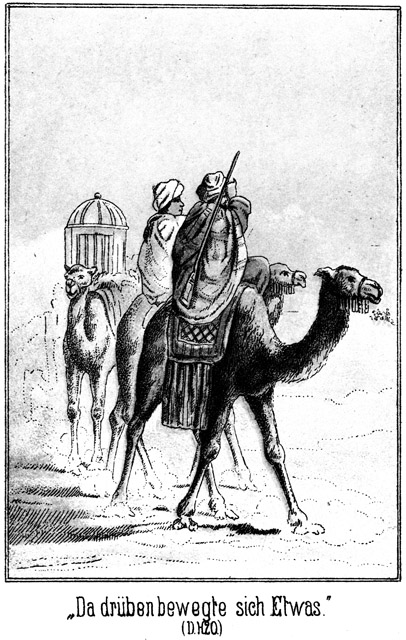»Nein, Herr. Und doch – – da drüben, links von uns, bewegt sich etwas.«
Der Pascha versuchte, den Blick auf den erwähnten Gegenstand zu fixiren, vermochte es aber nicht.
»Ich kann nichts sehen,« klagte er. »Es ist, als ob die Sonne mir die Augen aus den Höhlen brennen wolle.«
»Mir geht es auch so. Aber es kommt näher.«
»Was ist es.«
»Ich kann es nicht unterscheiden.«
Er hatte recht. In dem Gluthmeere zerflossen alle Conturen und Linien, als ob sie von der Sonne zerstört oder verzehrt würden.
Endlich aber nahm die Gestalt eine größere Deutlichkeit an. Es war ein Reiter auf dem Kameele. Er kam im allerschärfsten Kameeltrabb herbei. Als er die kleine Carawane erreichte, hielt er sein Thier an und musterte sie mit finsterem Blicke.
Er ritt ein riesiges Thier, war aber auch selbst von wahrhaft herculischer Gestalt. Gehüllt war er von oben bis unten in einen weißen Haïk, dessen Caputze er über den Kopf gezogen hatte. Sein dunkles Gesicht war frei. Quer über dasselbe, von einer Wange bis zur anderen, die Nase zerschneidend, zog sich eine Narbe, welche von einer fürchterlichen Verwundung zurückgelassen sein mußte.
»Sallam!« grüßte er kurz und rauh, als er mit seiner Beobachtung fertig zu sein schien.
»Sallam aaleïkum!« antwortete der Pascha.
»Wer bist Du?«
»Mein Name ist Hulam.«
»Und was bist Du?«
»Kaufmann.«
»Hat Allah Dir den Verstand eines Ochsen gegeben, daß Du nicht besser und ausführlicher antwortest? Oder soll ich Dir etwa die Auskunft hier mit meiner Kameelpeitsche abkaufen! Wo bist Du her?«
»Aus Smyrna.«
Der Pascha wagte nicht, auf die groben Worte ebenso grob zu antworten.
»Wo willst Du hin?«
»Zu den Beni Sallah.«
»Zu den Beni Sallah?« lachte der Riese. »Wer hat Dir denn den Weg gezeigt?«
»Mein Führer. Er verließ uns aber; er getraute sich nicht weiter mit, da sein Stamm mit den Sallah nicht in guter Freundschaft lebt.«
»Fürchtet er sich? Er hat auch Grund dazu! Was wollt Ihr bei den Beni Sallah?«
»Gastfreundschaft.«
»Kennt Ihr denn Jemand unter ihnen?«
»Nein.«
»So steht es schlimm mit der Gastfreundschaft, welche Ihr sucht. Der Stamm ist ein sehr kriegerischer und nimmt nicht einen Jeden bei sich auf. Wer sind diese beiden Anderen?«
»Mein Weib und mein Diener.«
»Du bist von der Richtung, welche Dir angegeben worden ist, abgewichen. Wenn Du so fortreitest, reitest Du dem Tode entgegen. Gut, daß ich Euch von Weitem gesehen habe. Kommt mit mir!«
Er lenkte in einem scharfen Winkel nach Süden ab. Die Anderen folgten ihm. Eine Zeit lang verfolgte man die neue Richtung in tiefem Schweigen. Der Pascha betrachtete den Riesen mit unruhigen Blicken. Endlich sagte er:
»Bist Du vielleicht ein Beni Sallah?«
»Ja.«
»Kennst Du Falehd, den Bruder des verstorbenen Scheik's?«
»Warum sollte ich ihn nicht kennen. Willst Du etwa zu ihm?«
»Ja.«
»Nimm Dich in Acht! Er ist kein Menschenfreund!«
Ueber sein Gesicht ging ein höhnisches und doch auch selbstzufriedenes Lächeln. Der Pascha antwortete:
»Du scheinst ebenso wenig einer zu sein wie er.«
»Meinst Du? Warum denkst Du das?«
»Ich sehe es nicht nur, sondern ich höre es auch.«
»Hm! Was willst Du bei Falehd?«
»Viel und wenig.«
»Hölle und Teufel! Hältst Du mich keiner besseren Antwort für werth?«
»Vielleicht antworte ich anders, wenn ich Dich zuvor kennen gelernt habe.«
»Das will ich Dir auch rathen! Da kommt mein Begleiter, den ich verlassen habe, als ich Euch von Weitem erblickte. Vielleicht wäre es besser, ich hätte Euch in das Meer ohne Wasser reiten lassen!«
Sie stießen auf einen anderen Reiter, welcher auch den weißen Haïk trug.
»Dieser Mann ist ein Kaufmann aus Smyrna und heißt Hulam,« sagte der Riese zu ihm.
Erst jetzt betrachtete der Andere den Genannten. Ueber sein Gesicht zuckte eine Ueberraschung.
»Hulam? Pah! Ibrahim Pascha!«
»Graf Politeff!«
»Ist es möglich!«
»Allah ist groß und allmächtig. Er macht selbst das Unmögliche möglich!«
Der Riese stieß einen Fluch aus, schlug mit seiner Reitpeitsche durch die Luft und rief:
»Ibrahim Pascha! Also nicht Hulam?«
»Nein,« lachte der Graf.
»Allah verdamme Dich! Warum belügst Du mich?«
»Mein Name ist nicht für Jedermann hier,« antwortete der Pascha.
»Ibrahim Pascha! Ich kenne keinen!«
»Du sollst ihn kennen lernen,« sagte der Graf. »Er ist mein Freund. Ich hätte es nicht für möglich gehalten, ihn hier in der Wüste zu treffen. Nun er aber hier ist, bin ich überzeugt, daß er ganz dasselbe will, was auch ich will, nämlich Dein Wohl, Falehd.«
»Falehd!« rief der Pascha.
»Nun ja!«
»Dieser Mann hier ist Falehd!«
»Weißt Du das noch nicht?«
»Nein. Er hat es mir nicht gesagt, trotzdem ich ihm mittheilte, daß ich zum Bruder des todten Scheik will.«
»Du würdest es zur rechten Zeit noch erfahren haben, wer ich bin,« knurrte der Riese. »Kommst Du aus Stambul vom Sultan?«
»Ja. Vorher aber war ich in Tunis.«
»Bei Mohamed es Sadock Pascha? Warst Du auch in Kairo beim Vicekönig?«
»Nein. Mit ihm habe ich nichts zu schaffen. Er will Dir nicht wohl; ich aber komme als Dein Freund.«
»Hast Du Vorschläge für mich?«
»Sogar höchst vortheilhafte.«
»So bist Du mir willkommen. Du sollst zwei Zelte haben, eins für Dich und eins für Dein Weib. Jetzt aber laßt uns eilen. Es kommt die Zeit des Nachmittaggebetes, zu welcher wir im Lager sein müssen.«
Bereits nach kurzer Zeit verdoppelten die Kameele freiwillig ihre Schritte. Sie witterten das Wasser der Oase. Der Sand verschwand und machte einer immer dichter werdenden Grasnarbe Platz. Palmen wuchsen hoch empor; Zelte lagen im Schatten derselben, Heerden weideten ringsum. Der Riese ritt stolz hindurch, keinen Menschen beachtend, von Allen aber mit scheuen, wohl auch finsteren Blicken bemerkt. Dann ließ er auf einem freien, von den Zelten gebildeten Platze halten. Die Umwohner desselben schienen zu den hervorragenderen und wohlhabenden Leuten des Stammes zu gehören, denn diese Zelte waren größer und auch aus theureren Stoffen gefertigt, als die anderen.
Was aber am Meisten auffiel, das war ein auf mächtigen Steinquadern fundirtes, umfangreiches Gemäuer, welches sich seitwärts hoch über das Zeltlager erhob. Wie kamen diese großen, schweren Steine hierher, wo es im Umkreise von vielen Meilen keinen Felsen gab? Jedenfalls war das Bauwerk in jener Zeit errichtet worden, als die Römer Egypten erobert hatten und mit ihrer Cultur sich in die Wüste wagten. Man findet tief in der Sahara noch Ueberreste riesiger Wasserleitungen und massiver Schlösser, heute freilich halb von Flugsand überschüttet, aber Zeugniß gebend von dem Unternehmungsgeiste eines Volkes, welches mit uns unbekannten Mitteln und mit Hilfe riesiger Anstrengung Leben mitten in den Tod der Wüste zu bringen verstand.«
Das erwähnte Gemäuer schien mitten in der Oase errichtet zu sein. Ob es bewohnt sei, konnte man von Außen nicht sehen. Der Anblick, welchen es bot, war ein ruinenhafter; doch hatte es eine bedeutende Ausdehnung, und so ließ sich vermuthen, daß es wohl Räume habe, welche sich noch jetzt zum Aufenthaltsorte von Menschen eigneten.
In jedem größeren Beduinenlager pflegt ein Gastzelt, vielleicht auch mehrere, vorhanden zu sein. So war es auch. Ibrahim Pascha erhielt ein leeres Zelt angewiesen, Zykyma, die er für seine Frau ausgegeben hatte, ein zweites. Beide Zelte waren mit den nöthigen Matten und Decken versehen, und bald wurden die beiden Genannten auch mit allem Anderen versorgt, was ihnen nothwendig war.
Dann, als man dem Pascha Zeit gelassen hatte, sich von dem anstrengenden Ritte auszuruhen, wurde er von Falehd und dem Grafen Polikeff besucht, welche eine so lange Unterredung mit ihm hatten, daß die Sonne im Verscheiden war, als die Beiden wieder aus dem Zelte traten.
Der Graf begab sich nach dem Zelte, welches ihm seit seiner Ankunft zugewiesen worden war. Der Riese aber schritt zwischen den Zelten hindurch nach der Ruine zu. Sein verbranntes Gesicht hatte einen harten, entschlossenen Ausdruck. Es lag wie Hohn und Schadenfreude in den Zügen, welche auf jeden Beschauer einen abstoßenden Eindruck hervorbrachten.
Das Gemäuer lag auf einer Bodenerhöhung, welche steil aus der Ebene emporstieg. Eine breite Treppe führte empor, wie für ein Riesengeschlecht gebaut. Zu beiden Seiten dieser Treppe saßen bewaffnete Araber, Einer auf je einer Seite jeder Stufe. Sie erhoben sich ehrfurchtsvoll, als er zwischen ihnen emporschritt. Die Stufen hatten früher nach einem hohen und breiten Thore geführt, welches aber später so weit vermauert worden war, daß der Eingang nur noch Raum für einen einzigen Eintretenden bot. Dort lehnte ein junger Beduine an der Wand. Er war nur mit Hose und Jacke bekleidet. Ein dünnes, weißes Tuch wand sich als Schutz vor der Sonnengluth um seinen Kopf. In dem kameelhärenen Stricke, welcher ihm als Gürtel diente, steckte ein langes, zweischneidiges Messer, die einzige Waffe, welche er außer der langen Flinte trug, welche neben ihm an der Mauer lehnte.
Dies war ganz dieselbe Bewaffnung, welche auch Hilal in Kairo getragen hatte, und wer in das Gesicht des Beduinen sah, mußte sich über die Aehnlichkeit wundern, welche er mit dem Genannten hatte. Und er war auch in Wirklichkeit kein Anderer als Tarik, Hilal's Bruder.
Als er den Riesen die Treppe besteigen sah, zogen seine Brauen sich unwillkürlich zusammen, doch hatte er Selbstbeherrschung genug, daß sein Gesicht sich schnell wieder glättete. Er trat einen Schritt zur Seite, so daß er nun gerade vor dem Eingange stand. Falehd sah das. Sein Gesicht nahm einen drohenden Ausdruck an. Er blieb auf der obersten Stufe stehen und richtete den Blick zur Seite, über das Zeltlager hinweg, als ob er da draußen, wo die Heerden weideten, nach irgend Etwas suche. Er erwartete, daß Tarik zur Seite treten werde, ohne aufgefordert zu sein. Als dies aber nicht geschah, wendete er sein stechendes Auge dem Jüngling zu und sagte:
»Siehst Du vielleicht, daß ich hier bin?«
In dem Tone seiner Worte lag eine nur mühsam unterdrückte Feindseligkeit. Tarik aber that, als ob er dies gar nicht bemerke. Er zwang sich, in einem verwunderten Tone zu antworten:
»Ich sehe es.«
»Ich bin auch groß genug, um bemerkt zu werden. Nun sage mir aber auch, ob Du klug genug bist, zu errathen, was ich hier will!«
»Ich stehe hier als Anführer der Leibwache der Königin. Ich habe nicht die Pflicht, Deine Gedanken zu errathen. Meine Pflicht ist nur, der Königin zu dienen.«
»So will ich mich herablassen, Dir zu sagen, daß ich zu ihr will. Mach Platz also!«
Wenn er der Ansicht gewesen war, daß Tarik ihm nun den Eingang freigeben werde, so hatte er sich geirrt. Der Genannte behielt vielmehr seine Stellung bei und meinte:
»Ist es nothwendig, was Du ihr zu sagen hast?«
»Hast Du etwa mich darnach zu fragen?«
»Ja.«
»Ha! Weißt Du nicht mehr, wer ich bin!« brauste der Riese auf.
»Ich weiß es,« erklang es ruhig.
»Nun, ich bin der Bruder des Scheiks, der Oberste in der Versammlung der Aeltesten, in Folge dessen also auch der Oberste des ganzen Stammes.«
»Ich weiß bis jetzt nur, daß die Wittwe des Scheiks die Anführerin des Stammes ist. Ich bin der Anführer ihrer Wache und habe also zu thun, was sie mir befohlen hat.«
»Befohlen?« lachte Falehd höhnisch. »Läßt ein freigeborener Beduine sich einen Befehl geben?«
»Ja, von Dem, dem er sich freiwillig unterordnet. Die Königin ist in ihrem Gemache. Sie will sich nur dann stören lassen, wenn dies durchaus nothwendig ist.«
»Es ist nothwendig. Mach also Platz.«
»Verzeihe! Ich werde sie erst fragen, ob sie bereit ist. Dich zu empfangen.«
Da ballte der Riese drohend die Faust, stieß einen Fluch aus und rief in verächtlichem Tone:
»Du? Du willst mir den Eingang verbieten? Was fällt Dir ein! Ich lasse mich von keinem Hunde anbellen und –«
»Halt!« antwortete Tank, ihm schnell in die Rede fallend. »Bedenke Deine Worte, ehe Du sie sprichst! Du stehst keineswegs über mir. Ich bin ebenso wie Du ein freier Sohn meines Stammes und würde jede Beleidigung augenblicklich mit einer Kugel beantworten!«
Er hatte blitzschnell seine Flinte ergriffen und den Finger an den Drücker gelegt. Falehd hatte keine Schußwaffe bei sich. Trotz seiner Körperstärke mußte er erkennen, daß Tarik ihm in diesem Augenblicke überlegen sei. Ebenso wußte er, daß dieser das Recht habe, jede Beleidigung augenblicklich mit einer Kugel zu beantworten. Darum hielt er an sich und sagte in einem scheinbar ruhigerem Tone:
»Soll ich nicht zur Königin?«
»Wenn sie es nicht erlaubt, dann nicht.«
»Sie ist meine Schwägerin!«
»Ein Weib braucht keinen Mann, als den ihrigen bei sich zu empfangen. Keiner kann sie zwingen. Und das Recht, welches sie als Weib hat, hat sie als Königin doppelt.«
»Bei Allah, Deine Ansicht ist eine seltene! Ich soll nicht zu ihr; Du aber willst zu ihr, um sie zu fragen!«
»Ich könnte zu ihr, denn ich bin ihr Beschützer; aber ich thue es dennoch nicht, denn ich achte sie. Dieselbe Achtung erwartet sie auch von Dir.«
Er drehte sich um und stieß einen scharfen Pfiff aus, welcher in den Eingang schallte. Nach wenigen Augenblicken ließ sich von innen eine fragende weibliche Stimme hören.
»Falehd ist hier und hat nothwendig mit der Herrin zu sprechen,« antwortete Tarik.
»Ich werde sie fragen,« antwortete es.
Der Riese horte es. Er trat einen Schritt zurück, stampfte mit dem Fuße und knirrschte:
»Auf diese Weise werden, wie ich gehört habe, die Diener der abendländischen Herrscher empfangen. Ich aber bin kein Diener, kein Sclave. Ich komme, wenn ich will, und gehe, wenn es mir beliebt. Diese neue Sitte, den Aeltesten des Stammes zu empfangen, soll nicht lange mehr geduldet werden. Das verspreche ich Dir!«
Tarik antwortete nicht; er zuckte sehr gleichmüthig mit der Achsel, und horchte dann in den Eingang zurück, wo sich jetzt die betreffende Stimme wieder hören ließ:
»Er soll kommen!«
»Du darfst eintreten,« sagte jetzt der jugendliche Wächter, indem er die Thür frei gab.
»Ich darf! So! Darf ich wirklich?« höhnte der Riese.
»Ja,« lachte der Andere.
Und dieses Lachen hatte etwas so Selbstbewußtes und zugleich Ironisches, daß Falehd die beiden Fäuste erhob und wüthend ausrief:
»Nun, die Zeit, in welcher ich darf, wird bald vorüber sein. Dann wird die Zeit kommen, in welcher ich zu bestimmen habe, was und ob Andere dürfen. Und da wirst Du Derjenige sein, der gar Nichts darf!«
Nach dieser Drohung trat er ein. Er mußte sich bücken, um nicht oben an das Mauerwerk zu stoßen. Auf ihn hätte das Bibelwort gepaßt: »Er ist allein übrig geblieben von den Kindern der Riesen.« Das enge Thor führte durch eine mehrere Ellen starke Mauer, dann gelangte man in einen kleinen, viereckigen Hof, welcher gerad gegenüber eine ähnliche Thür offen ließ. Diese führte in einen ziemlich langen, finstern Gang, welcher in einem kleinen Gemache endete, dessen ganze Ausstattung in einer brennenden Palmöllampe und zwei auf dem Boden liegenden Kokosfaserdecken bestand.
Der Riese wurde hier von einer alten Frau erwartet, dieselbe, welche auf Tarik's Pfiff geantwortet hatte.
»Bleib hier!« sagte sie. »Badija wird gleich kommen.«
Er staunte sie mit blitzenden Augen an.
»Was? Hier bleiben?« fragte er.
»Ja.«
»Warten soll ich! Falehd soll warten! Bei allen Teufeln der untersten Hölle, das ist lustig!« lachte er laut auf. »Willst Du etwa auch hier bleiben?«
»Ich habe bei Dir zu warten, bis sie kommt.«
»Wie herrlich! Wie entzückend! Du, die Liebliche, die Bezaubernde, sollst bei mir bleiben, bis es Deiner Herrin beliebt, zu Falehd zu kommen!« Und mit ausgestreckten Fäusten auf sie zutretend, fuhr er fort:
»Packe Dich, Hexe! Wenn Du nicht augenblicklich verschwindest, werfe ich Dich an die Wand, daß Du mit Leib und Seele daran kleben bleibst als ewiges Beispiel, welch' ein Wagniß es ist, Falehd zu erzürnen!«
Sie kreischte vor Angst laut auf und entfloh durch die dem Eingange gegenüber liegende Thür.
»Allah inhal el bakk!« knurrte er ihr zornig nach.
Das heißt zu Deutsch: Gott verdamme die Wanze. Das Wort Wanze ist der verächtlichste Ausdruck, den der Araber einer weiblichen Person zu geben vermag.
Er hatte nicht lange zu warten, denn kaum war das Weib verschwunden, so trat die Königin der Wüste ein. Bei ihrem Anblicke leuchteten seine Augen verlangend auf. Und er hatte wohl Veranlassung dazu.
Sie war vollständig in feines, weißes Linnen gekleidet. Ihr Gewand bestand nur aus Hose, Hemde und einem kleinen Jäckchen, so daß ihre herrlichen Formen mehr hervorgehoben als verborgen wurden. Eine schönere Rundung, als die Linien ihres Körpers zeigten, konnte es gar nicht geben. Das nackte Füßchen schien einem Kinde anzugehören und war von blendender Weiße. Das allerliebste und doch sehr fleischige Händchen harmonirte vollständig mit demselben. Da, wo die Hose sich um die Taille legte, glitt sie über Hüften, von welchen der Blick nur schwer zu trennen war. Die Jacke, welche oben eng um den wie aus Marmor gemeißelten Hals befestigt war, lief über der Brust auseinander und ließ die von dem Hemde bedeckten Formen eines Busens sehen, so jungfräulich plastisch, obgleich ihn kein abendländischer Schnürleib stützte. Das Gesicht zeigte eine große Aehnlichkeit mit demjenigen ihrer Schwester Hiluja. Es war ebenso weich, aber in seinen Zügen ernster, tiefer, nachdenklicher. Die nicht zu hohe Stirn erhob sich über dunklen Brauen von wunderbarer Zeichnung. In den ebenso dunklen Augen schienen die sämmtlichen Geheimnisse des Morgenlandes zu schlafen, um bei dem ersten Worte einer erwiderten Liebe zu voller Seligkeit zu erwachen. Das Näschen, leicht gebogen, ließ in seinen feinen, rosig angehauchten Flügeln, welche leicht zu zittern schienen, vermuthen, daß Badija's Seele leicht in Erregung zu bringen sei, und die vollen, rothen Lippen, zum Küssen und Geküßtwerden geformt, waren in ihren Winkeln doch ein Wenig nach oben gezogen, ein sicheres Zeichen, daß dieser schöne Mund in letzterer Zeit wohl oft Gelegenheit und Veranlassung zum Zürnen gehabt habe. Das rabenschwarze Haar hing in zwei langen Zöpfen fast bis auf den Boden herab. Es war nicht mit dem mindesten Schmucke versehen, den doch sonst die Beduininnen so sehr lieben. Wozu auch? Es bildete ja selbst den herrlichsten Schmuck der Königin der Wüste, und einen Schmuck zu schmücken wäre ja widersinnig.
Bei dem Anblicke dieses herrlichen Wesens vergaß der Riese seinen Zorn.
»Sallam!« grüßte er. »Allah gebe Dir Friede!«
»Das wünschest Du mir. Du?« fragte sie, den Blick verwundert auf ihn richtend.
»Ja, ich. Du hörst es ja!«
»So stimmen Deine Wünsche nicht mit Deinen Handlungen. Von Dir ist mir noch nie Friede gekommen. Selbst jetzt erschreckst Du meine Dienerin.«
»Sie ist ein dummes Weib, ein Scheusal, welches – –«
»Scheu – – sal – –?!«
Sie richtete ihre Gestalt stolz empor. Der Ton, in welchem sie sein Wort wiederholt hatte, war ein eigenartiger; er konnte nicht beschrieben werden; er war nicht scharf, nicht herrisch, aber es war dennoch nicht möglich, ihm zu widerstehen. Selbst Falehd, dieser stolze, eingebildete und rücksichtslose Mann, sah sich durch ihn zu einer Entschuldigung gezwungen:
»Verzeihe! Sie erzürnte mich.«
»Du verlangst meine Verzeihung und konntest ebenso gut ihr verzeihen. Ich glaube, Du hast sie und nicht sie hat Dich erzürnt. Es klingt selbst für einen Helden rühmlich, wenn man von ihm sagt, daß er höflich sei.«
»Das weiß ich, und ich hoffe, daß Du mir Gelegenheit giebst, höflich gegen Dich zu sein und auch höflich gegen Dich zu bleiben!«
»Ich gebe Niemandem die Veranlassung, die Achtung zu vergessen, welche man der Frau und der Anführerin schuldig ist. Du hast mir sagen lassen, daß Du Notwendiges mit mir zu sprechen habest. Setze Dich!«
Sie deutete auf eine der Decken, welche sich gegenüberlagen. Der Riese bückte sich bereits, um ihrer Aufforderung nachzukommen, richtete sich aber unter dem Einflusse eines plötzlichen Gedankens wieder auf.
»Wirst Du Dich auch setzen?« fragte er.
»Nein. Ich kann Dich stehend hören.«
»So werde auch ich stehend sprechen.«
»Ich erlaube Dir doch. Dich zu setzen.«
»Ich danke Dir! Ich würde mich, wenn es mir beliebte, auch ohne Deine Erlaubniß setzen; aber ich verzichte darauf. Man könnte dann vielleicht sagen, ich hätte meine Kniee vor Dir gebeugt. Falehd beugt sich nie.«
»So bleibe stehen und sprich!«
Sie legte die Arme über der Brust zusammen. Wenn das eine Frau thut, so kann man als sicher annehmen, daß sie Energie und festen Willen besitzt. Er ließ sein Auge über ihre stolze Gestalt gleiten und fragte:
»Kannst Du denn nicht errathen, was ich will?«
Er versuchte, seiner Stimme einen weichen Klang zu geben, aber anstatt weich klang sie heiser. Sie war eines solchen Zwanges nicht gewohnt, weil Weichheit gar nicht in der Natur des Riesen lag. Nachdem Badija auch ihren Blick kalt und forschend über seine Gestalt hatte gleiten lasten, antwortete sie:
»Ich bin nicht hier, um zu rathen. Du hast mit mir sprechen wollen, also sprich!«
»Bei Allah, Du thust, als seist Du wirklich Königin!«
»Ich weiß, daß ich es nicht bin. Ich dulde nur den Namen, den Ihr mir gegeben habt.«
»Du wirst ihn nicht mehr lange tragen. Jetzt noch bist Du die Beherrscherin des Stammes; aber weißt Du, seit welcher Zeit mein Bruder todt ist?«
»Seit einem Jahre; das weiß Jedermann.«
»Seit einem Jahre, ja. Das ist das Jahr der Trauer. Es ist vorüber, Wir brauchen Dir nicht mehr zu gehorchen.«
»So gehorcht Einer oder einem Andern!«
»Das werden wir. Du aber mußt nach den Gesetzen unseres Stammes das Weib dieses Andern sein.«
»Muß ich?«
»Ja, Du mußt.«
»Muß ich wirklich?«
Bei dieser Wiederholung ihrer Frage klang ihre Stimme plötzlich schneidend, und ihr Blick richtete sich wie eine kalte, dünne Dolchspitze auf sein Gesicht. Er zeigte keine Spur von Zorn. Er zuckte nur überlegen die Achsel, schüttelte, wie sich wundernd, den Kopf und antwortete:
»Natürlich mußt Du! Das versteht sich ja ganz von selbst. Du bist die Angehörige und jetzt sogar die Herrin unsers Stammes, und als solche hast Du am Allerersten die Verpflichtung, die Gesetze desselben zu achten.«
»Und wenn ich das nicht thäte?«
»O, das kann ja gar nicht vorkommen!«
»Ich sage Dir, daß es sogar sehr leicht vorkommen kann.«
»So würden wir Dich zwingen!«
Auch er schlang die Arme über der Brust zusammen und lehnte sich hoch aufgerichtet an die Mauer, so wie sie drüben sich angelehnt hatte. So standen sich die Beiden drohend gegenüber, sie ein schwaches Weib und doch so schön, so herrlich, so entzückend, und er, trotz seiner Kraft und Stärke so häßlich, so abstoßend.
»Mich zwingen?« lächelte sie. »Ich möchte Den sehen, der mich zwingen wollte, das Weib eines Mannes zu werden, dessen Weib ich nicht sein will!«
»Jeder, Jeder wird Dich zwingen!«
»Ah! Du wohl auch?«
»Ja, ich auch. Du bist die Unsrige und hast Dich nach unseren Gebräuchen zu richten.«
»Die Eurige?« fragte sie. »Das sagst Du wohl, aber es ist nicht so; ich bin nie die Eurige gewesen!«
Ihre Stimme klang beinahe so, als ob ihr vor Etwas graue. Langsam und stockend fuhr sie fort:
»Dein Bruder begehrte mich zum Weibe; er war alt, er konnte kein Herz erobern. Ich gehorchte meinem Vater, der ihm seinen Wunsch erfüllte. Ich war gewohnt, dem Vater zu gehorchen, und es gab Keinen, dem mein Herz gehörte. Nur darum wurde ich das Weib Deines Bruders.«
»Das war sehr gnädig und barmherzig von Dir gegen uns gehandelt!« höhnte er. »Giebt es vielleicht nun jetzt Einen, dem Dein Herz gehört?«
»Hast Du vielleicht darnach zu fragen?«
»Vielleicht, ja!«
»Laß das ja bleiben! Ich wurde Deines Bruders Weib, aber ich lernte ihn nicht lieben. Ich blieb ihm fremd, und er blieb es mir. Er hat mich nie berühren dürfen.«
»Ja, ich weiß, daß Du noch ganz so Jungfrau bist, wie Du es warst, bevor Du zu uns kamst.«
»Daraus magst Du erkennen, daß ich nicht die Eurige bin. Ich werde nur dem Manne gehören, dem mein Herz gehört. Giebt es hier so Einen, so wird er Euer Scheik sein; giebt es Keinen, so bleibe ich ledig und Eure Anführerin oder, wenn Ihr dies nicht zugebt, gehe ich nach Hause zu den Zelten meines Stammes.«
Er antwortete nicht. Erst nach einer Weile fragte er:
»Schläfst Du?«
»Ich glaube, sehr wach zu sein.«
»Nein, Du schläfst, denn Du träumst. Das, was Du soeben sagtest, kannst Du nur im Traume sagen. Du magst meinem Bruder erlaubt haben oder nicht, Dich zu berühren, so bist Du doch jetzt eine Angehörige der Beduinen des Stammes Sallah. Bei uns gilt das Gesetz, daß eine Wittwe dem nächsten Verwandten ihres verstorbenen Mannes gehört. Der nächste Verwandte meines Bruders bin ich. Du wirst mein Weib sein!«
»Niemals!«
»Ach! Du liebst mich nicht?« lachte er.
»Ich hasse Dich!«
»Das stört mich nicht. Du wirst mich lieben lernen. Ich werde Dich anders behandeln, als mein Bruder. Er war stolz darauf, daß Du sein Weib hießest; ich aber werde dafür sorgen, daß Du es auch wirklich bist.«
»Das wird nie geschehen!«
»Sogar sehr bald. Ich komme ja eben, um Dir zu sagen, daß heute Abend die Versammlung der Aeltesten zusammentreten wird, um über diese Frage zu entscheiden. Das Jahr ist vorüber, und der Entscheidung dieser Versammlung mußt Du Dich fügen.«
»Lieber sterben!«
»Klage jetzt! Du wirst in meinen Armen die glücklichste der Sterblichen sein. Man muß Dich mir zusprechen. Nur ein Kampf auf Leben und Tod könnte Dich zum Weibe eines Andern machen. Und glaubst Du, daß es jemals Einen geben könnte, welcher es wagen möchte, mit mir, mit Falehd zu kämpfen?«
»Ich weiß es, daß Du mit Deiner Stärke trotzest; aber Allah ist mächtig; er kann einem Knaben die Kräfte eines Riesen geben.«
»So wollen wir abwarten, ob er es thut. Nach dem Gebrauche des Stammes muß ich, wenn Du mir zugesprochen wirst, drei Tage lang warten, ob sich Einer findet, welcher mit mir kämpfen will. Ich würde mich freuen, wenn sich Einer meldete; ich würde ihn zermalmen, daß selbst die Fetzen seiner Seele nicht mehr zu finden wären. Am vierten Tage bist Du mein Weib, und Niemand kann daran das Geringste ändern, selbst Du nicht. Es wird Zeit, daß der Stamm wieder einen Scheik bekommt. Die Zeiten sind ernst. In wenigen Wochen wird sich über Egypten das Geschrei des Krieges erheben, und auch unsere Tapferen werden nach dem Nile ziehen, um dem Vicekönige zu zeigen, was wir vermögen.«
»Ihr wollt gegen ihn kämpfen?«
»Was sonst? Ist er unser Freund?«
»Ist er etwa Euer Feind?«
»Er ist der Feind Aller. Er hat dem Sohne der Wüste sein Land genommen; er fordert Steuern und Tribut; er läßt den Fellah, welcher dies nicht bezahlt, von seinen Arnauten peitschen. Heute ist ein Abgesandter des Sultans gekommen, des eigentlichen Beherrschers des Landes; ein Gesandter des Sultans von Rußland ist längst schon hier. Beide werden heute an der Versammlung der Aeltesten mit Theil nehmen. Die ehrwürdigen Männer werden den Krieg gegen den Vicekönig beschließen. Das ist sicher und gewiß!«
»Das verhüte Allah!«
»Du bist ein Weib. Was verstehest Du von diesen Dingen! Das ist Männerangelegenheit!«
»Vielleicht verstehe ich ebensoviel davon wie Du! Der Sultan der Russen ist nie der Freund des Sultans von Stambul gewesen. Wenn sich die Gesandten dieser beiden Herrscher hier bei uns befinden, so spielt wenigstens einer dieser Gesandten eine falsche Rolle. Uebrigens glaube ich kein Wort!«
»Wovon?«
»Daß diese Zwei sich hier befinden.«
»Sie sind hier!«
»So müßte ich es ebenso gut wissen. Du vergissest immer, daß Du ein Weib bist!«
»Ich werde Dir zeigen, daß ich auch Mann bin! Du wirst es heute in der Versammlung erfahren.«
»Ah! Willst Du vielleicht auch kommen?«
»Ja.«
»Ich hindere Dich keineswegs daran; Du wirst ja nur kommen, um Zeuge meines Sieges zu sein. In vier Tagen bist Du meine Frau, mein Eigenthum. Daran kann kein Mensch Etwas ändern.«
»Wenn kein Anderer, so doch ich selbst!«
»Du wirst und mußt Dich fügen! Ich will Dich besitzen, und so werde ich Dich besitzen. Du bist schön, und von mir soll man nicht sagen, daß ich Dich nicht berühren darf. Mein Weib will ich genießen!«
»Es wäre mein Tod oder der Deinige!«
»Du träumst wieder! Was wolltest Du thun? Könntest Du es mir zum Beispiel verwehren, wenn ich Dich jetzt hier umarmen wollte?«
»Ja!«
»Du träumst wirklich!«
»So ersiehst Du daraus, daß es mir selbst im Traume nicht einfallen würde, mich von Dir berühren zu lassen!«
»Und im Wachen wohl noch viel weniger?«
»Ja!«
Er war ihr einen Schritt näher getreten. Seine Augen glühten vor Begierde. Er hatte sie stets nur in der Umhüllung des Mantels, nie aber so gesehen wie jetzt. Er fühlte den Eindruck ihrer Schönheit in seiner unwiderstehlichen Stärke und hatte wirklich die Absicht, ihr jetzt seine Liebkosung aufzuzwingen.
Sie sah das. Sie war bleich geworden, aber dennoch wich sie nicht von der Stelle, auf welcher sie stand. So bohrten sich ihre Blicke in einander, sein glühend verlangender und ihr verächtlich drohender.
»Mir, mir wolltest Du widerstehen?« zischte er.
»Ich fürchte Dich nicht, obgleich Deine Liebe noch entsetzlicher ist als Dein Zorn und Deine Feindschaft.«
»So sage ich Dir, daß ich Dich jetzt küssen werde!«
»Das wäre eine Beleidigung des ganzen Stammes. Ich bin die Wittwe des Scheiks und gehöre noch keinem Andern!«
»Was scheere ich mich um den Stamm!.«
»Die Beleidigung würde augenblicklich gerächt werden!«
»Das wollen wir sehen! Komm in meine Arme!«
Er öffnete wirklich die Arme und trat auf sie zu.
»Zurück, Elender!«
Das klang so befehlend, so unerschrocken, daß er unwillkürlich einen Schritt zurückwich. Er betrachtete sie mit Erstaunen und sagte dann lachend:
*
»Das, was Du hier thust, soll man bei den Ungläubigen thun, wenn sie Theater spielen, wie ich gehört habe. Hier aber ist nicht der Ort dazu. Ich habe jetzt Lust, Dich zu küssen, und ich möchte den Menschen sehen, dem es einfallen könnte, mich zu hindern!«
»Ich habe meine Leibwache.«
»Diese Kerls hocken draußen auf der Treppe. Oder meinst Du, daß ich mich vor ihrem Anführer fürchten würde? Er könnte hier stehen und doch würde ich Dich umarmen und küssen.«
»Versuche es!»
»Wohlan, sogleich!«
Er erhob beide Arme, sie zu umfangen. Sie erhob auch einen Arm, aber nicht zu einer Zärtlichkeit, sondern um nach dem Eingange zu zeigen.
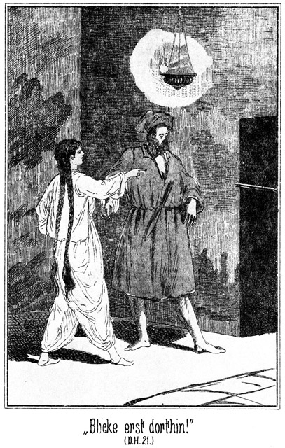»Blicke erst dorthin, ehe Du es wagst!«
Er zog den Fuß zurück und drehte sich um. Dort, hinter der Ecke des Einganges hervor, war der Lauf einer Flinte gerade auf ihn gerichtet. Den Besitzer des Gewehres aber konnte er nicht sehen, da derselbe im Dunkel stand, wohin der Lampenschein nicht drang.
»Hölle und Teufel!« rief er aus, schnell so weit zurücktretend, daß er aus der Schußlinie kam.
»Nun, küsse mich!« sagte sie.
»Wer ist der Kerl, der das wagt?«
»Siehe ihn an!«
»Etwa gar dieser Tarik?«
»Ich wiederhole: Gehe hin und siehe Dir ihn an!«
Er blieb aber wohlweislich in seiner Ecke stehen, sagte aber in verächtlichem Tone:
»Glaubt er etwa, mir widerstehen zu können, weil man ihn den Sohn des Blitzes nennt? Das soll er sich ja nicht unterfangen. Es wäre sein Verderben!«
»Drohe Du nicht! Nimm Dich vielmehr selbst in Acht, daß Dir nichts Böses widerfahre! Hättest Du mich berührt, so wärst Du eine Leiche!«
»Hast Du ihm etwa befohlen, auf mich zu schießen?«
»Ich habe meine Leibwache, und Jeder, der zu ihr gehört, weiß, was zu thun hat. Eines besonderen Befehles bedarf es gar nicht.«
»Aber er hat hier gestanden, hinter der Thür, während ich mit Dir gesprochen habe?«
»Ja.«
»So traust Du mir nicht?«
»Nein.«
»Welch eine Beleidigung! Sie muß gerächt werden!«
»Dein Verhalten hat bewiesen, daß mein Mißtrauen begründet ist. So oft ich allein mit Dir gewesen bin, wurde ich bewacht, ohne daß Du es bemerktest.«
»So hat dieser Wächter gehört, was wir sprachen?«
»Ja.«
»Allah verdamme ihn! Ich brauche keinen Lauscher. Will ich einen Vertrauten haben, so wähle ich mir ihn selbst. Was jetzt geschehen ist, will ich für Scherz nehmen; kommt es aber wieder vor, so mache ich Ernst. Das merke Dir! Leb' wohl, bis wir uns in der Versammlung der Aeltesten wiedersehen!«
Er wendete sich dem Eingange zu, forschte aber dabei vorsichtig nach dem Wächter.
»Du kannst gehen! er thut Dir nichts!« beruhigte ihn die Königin, indem in ihrem Tone etwas wie fröhliche Genugthuung klang. Das ergrimmte ihn.
»Willst Du mich verhöhnen?« fuhr er auf. »Einer Schußwaffe ist selbst der Stärkste nicht gewachsen. Hätte ich ein Pistol bei mir gehabt, so wäre es wohl anders geworden, als Du dachtest!«
Er ging. Er hatte geglaubt, dabei auf den Beschützer der Königin zu stoßen; dies geschah aber nicht. Draußen am Thore blieb er stehen. Neben demselben lehnte, wie vorher, Tarik neben seinem Gewehre, und that, gleichgiltig in die Ferne blickend, gar nicht, als ob er den Riesen bemerke.
»Bist Du von hier fort gewesen?« fragte dieser.
»Wie darf ich meinen Posten verlassen?« antwortete der Gefragte mit gut gespieltem Erstaunen.
»Du warst nicht da drin?«
»Ich? Ich denke, Du bist drin gewesen!«
»Höre, Jüngling, meine nicht etwa, daß Du mit mir scherzen darfst! Ich frage Dich, ob Du jetzt drin gewesen bist, wo auch ich mich befand!«
»Ich brauche Dir nicht zu antworten. Aber da Du denken könntest, daß ich mich vor Dir fürchte, will ich es Dir sagen, daß ich es war.«
»Allah! Du hast auf mich gezielt?«
»Ja.«
»Du? Du? Hättest Du geschossen?«
»Meine Kugel hätte in demselben Augenblicke, an welchem Du die Königin berührtest, Deinen Kopf zerschmettert. Du warst klug, zurückzuweichen.«
Das Gesicht des Riesen nahm einen beängstigenden Ausdruck an. Es war, als ob ein Panther sich auf sein Opfer stürzen wolle. Er rief heiser aus:
»Und das sagst Du mir – mir – mir!«
»Ja!«
»Hund und Sohn eines – –«
»Halt! Kein Wort weiter und keine Bewegung!«
Falehd hatte wirklich Tarik packen wollen; dieser aber hatte blitzschnell sein Gewehr ergriffen und einen Seitensprung gethan. Der Riese sah den Lauf auf seine eigene Brust gerichtet und hielt an. Den Finger am Drücker, fragte der muthige Jüngling drohend:
»Du sagtest das Schimpfwort Hund. Wen meintest Du?«
Der Riese schwieg. Es giebt für den Beduinen keine größere Beleidigung, als ein Hund genannt zu werden. In diesem Falle ist der Beleidigte berechtigt, den Beleidiger sofort zu tödten, ohne die Blutrache fürchten zu müssen. Falehd erkannte, daß er hier abermals trotz seiner Körperstärke nichts machen könne. Er wußte, daß im Falle der Bejahung Tarik augenblicklich losdrücken werde, und doch bäumte sich sein Stolz dagegen auf, sich zu einer feigen Lüge zwingen zu lassen.
»Wen meintest Du?« wiederholte Tarik.
»Geht das Dich etwas an?« wich Falehd aus.
»Ja; ich war es, in dessen Gegenwart Du das Wort aussprachst. Ich habe nicht lange Zeit, zu warten. Also antworte! Meintest Du mich?«
Und als der Gefragte auch jetzt noch mit der Antwort zögerte, fügte Tarik hinzu:
»Antwortest Du nicht, so muß ich das Wort auf mich beziehen. Also, hast Du mich gemeint? Eins – zwei – –«
»Halt! Nein! Dich nicht!« stieß der Riese hervor.
»So gehe ruhig weiter!«
Er nahm zwar das Gewehr von der Backe, trat aber vorsichtig noch zwei Schritte zurück, damit er nicht durch einen schnellen Sprung Falehds in die Gewalt desselben gerathen und waffenlos gemacht werden möchte.
»Ja, ich gehe!« sagte dieser, tief Athem holend. »Aber Du hast Dein Gewehr gegen mich erhoben. Weißt Du wohl, was das heißt?«
»Das heißt, daß ich Dich im Verdacht hatte, mich beleidigt zu haben, da Du mir aber bekennst, daß dies nicht der Fall war, so bin ich befriedigt. Oder hättest Du vielleicht eine Lüge gesagt, um Dich zu retten?«
»Verdamm – –« er hielt inne. Er war im Begriff, eine zweite Beleidigung auszusprechen, und dann hätte ihn sicher keine zweite Lüge vom Tode errettet. Er schüttelte sich förmlich vor Grimm und fügte hinzu: »Dennoch hast Du die Waffe gegen mich erhoben. Das werde ich Dir nicht vergessen. Es kommt die Zeit, in welcher wir uns treffen!«
»Dann hoffe ich, daß wenigstens ich nicht aus Angst eine Lüge sage. Das ist eines tapfern Mannes unwürdig!«
Falehd mußte auch das hinnehmen, ohne sich augenblicklich rächen zu können. Er stieg langsam die Stufen hinab und holte dabei laut und keuchend Athem, jedenfalls aber nicht, weil ihm das Gehen Anstrengung machte.
»Er kocht vor Grimm!« raunte einer der auf den Stufen Sitzenden Tarik zu.
»Er hat aus Angst gelogen, er, der Stärkste des Stammes! Seine Ehre ist dahin!« antwortete dieser.
»Ja, seine Ehre ist dahin. Morgen werden es alle Frauen und Kinder wissen, daß Falehd die Unwahrheit sagte, weil er sich vor dem Sohne des Blitzes fürchtete. Allah hat ihn verlassen!«
Dann wurde es auf der Treppe und am Eingange der Ruine ruhig. Desto lebhafter aber ging es unten im Zeltlager und draußen vor demselben her.
Die Heerden wurden zusammengetrieben und rund um dieselben Feuer angezündet, um die wilden Thiere abzuschrecken. Das Abendgebet war, während Falehd sich bei Badija befand, gesprochen worden; es wurde schnell dunkel, und auch vor den Zelten des Lagers brannte ein Feuer nach dem anderen auf.
Dann kam ein Mann langsam die Ruinenstufen herauf. Er hatte ein langes, an einer Schnur hängendes Bret in der einen Hand und einen Hammer in der andern. Dieser Mann war der Mueddin, der Gebetsausrufer. Er hatte auch alle sonstigen Verkündigungen und Veröffentlichungen zu besorgen. Er blieb nicht da auf der obersten Stufe stehen, sondern er kletterte noch möglichst hoch an den Quadern des alten Gebäudes empor, um recht weit gehört zu werden. Dann hielt er das Bret an der Schnur frei und schlug mit dem Hammer dreimal an dasselbe. Das gab einen eigenthümlich melancholischen aber doch weithin dringenden Ton.
Sofort trat im Lager die größte Ruhe ein. Selbst die Thiere schienen diese Töne zu kennen, denn da, wo ein Hund gekläfft oder ein Schaf geblökt hatte, wurde es ebenso still. Und da ertönte die Stimme des Ausrufers von der Höhe herab:
»Hört, Ihr Gläubigen, Ihr Männer! Gesegnet seien die Weisen und gebenedeiet die Klugen! Allah giebt dem Alter die Kenntniß und dem grauen Kopfe alle Wissenschaft. Sie werden kommen und sich um das Feuer setzen, einen Rath zu halten zum Wohle des Stammes und zum Segen der Angehörigen. Allah öffne ihre Augen! Friede sei mit Allen!«
Das waren die allbekannten Worte, mit denen verkündigt zu werden pflegte, daß der Rath der Alten zusammentreten werde. Der Ausrufer stieg langsam und würdevoll wieder nieder, und nun flammte auf dem großen Zeltplatze ein Feuer empor, welches denselben vollständig beleuchtete. Von allen Seiten kamen sie herbei, die zur Versammlung gehörten, um an diesem Feuer Platz zu nehmen. Jeder Andere mußte in angemessener, ehrerbietiger Entfernung bleiben.
Tarik lehnte oben auf der Plattform der Treppe. Er hatte die Arme auf einen einzeln stehenden Steinquader gelegt und blickte herab auf die Zelte, welche, vorn von der Flamme beleuchtet, nach hinten lange, gespenstische Schatten warfen.
Er wußte, welch ein wichtiger Gegenstand nun da unten verhandelt werden solle. Es war ihm so weh um das Herz. Er hätte am Liebsten todt sein mögen, todt, nachdem er sie gerettet hatte! Er konnte die Versammelten nicht sehen; aber er hörte ihre lauten Stimmen, zuerst diejenige des Riesen, welcher die Versammlung begrüßte und zur ernsten Erwägung der wichtigen Sache ermahnte.
Da fühlte Tarik sich an der Schulter berührt. Er wendete sich um und sah die Königin vor sich stehen.
Sie trug den langen, weißen Frauenmantel. Fast ebenso weiß war jetzt ihr Gesicht. Dunkel nur schienen die Augen, in denen das kleine Bild der unten lodernden Flamme flackerte.
»Suchte er Streit mit Dir?« fragte sie.
»Ja, o Königin. Er nannte mich einen Hund.«
»Nein. Ich legte das Gewehr an, und da sagte er, daß er mich nicht gemeint habe.«
»So ist er ehrlos; aber gerade deshalb wird er die erste Gelegenheit benutzen, Dich zu tödten.«
»Ich werde auf meiner Hut sein. Willst Du wirklich in die Versammlung der Aeltesten gehen?«
»Ja. Ich muß. Ich darf nicht zugeben, daß er mir die Anhänger des Guten durch schmeichelnde Reden untreu macht. Wenn doch Hilal bald zurückkehrte! Meinst Du nicht, daß er bald wieder da sein könnte?«
»Er ist gut beritten. Ich erwartete ihn bereits gestern.«
»Meine einzige Hoffnung ruht auf ihm. Möge sie nicht enttäuscht werden. Ich gehe jetzt.«
»Allah sei mit Dir! Er segne Deine Worte!«
»Ich werde versuchen, die Aeltesten dahin zu bringen, daß sie heute noch nicht entscheiden, ob sich der Stamm für oder gegen den Vicekönig erklärt. Vielleicht kehrt unterdessen Dein Bruder zurück.«
Das Auge Tariks folgte ihrer lichten Gestalt, wie sie die Treppe hinabstieg und dann zwischen den Zelten verschwand. Nachher hörte er ihre Stimme, ohne aber die einzelnen Worte verstehen zu können. Andere Stimmen, männliche natürlich, erhoben sich für und auch gegen sie; sie antwortete wieder, und so verging eine ziemlich lange Zeit, bis man einen Entschluß gefaßt zu haben schien; denn es wurde still auf dem Versammlungsplatze, und dann kam die Königin wieder zwischen den Zelten hervor und die Treppe heraufgestiegen.
Sie trat nicht in das Innere, sondern ging um die Ecke des Gemäuers herum, an Tarik vorüber.
»Komm!« sagte sie im Vorbeigehen.
Er folgte ihr. Hier, an der breiten Seite der Ruine, gab es ein Wirrwarr von über- und durcheinander gestürzten Steinen. Mitten drin lag ein kleines, freies Plätzchen, durch hohe Quader von der Umgebung abgeschlossen. Das war der Lieblingsaufenthalt der Königin. Hier pflegte sie des Abends stundenlang zu sitzen, um mit träumerischem Blicke den Gang der Sterne zu verfolgen, welche hier im Süden ganz anders leuchten, als in dem kalten, lichtarmen Norden.
Tarik hatte in stillen, einsamen Stunden über ihre Sicherheit gewacht; nie aber war ihm das Wagniß in den Sinn gekommen, das Plätzchen zu betreten. Nur dann, wenn sie zur Ruhe gegangen war, hatte er sich hingeschlichen, um den Stein zu küssen, welcher der Herrlichen als Sitz gedient hatte. Jetzt nun forderte sie selbst ihn auf, ihr dorthin zu folgen. Er schloß daraus, daß sie ihm sehr Wichtiges zu sagen habe.
Sie setzte sich auf dem ihm so wohlbekannten Stein nieder und deutete auf einen daneben liegenden.
»Setze auch Dich, Tarik! Ich habe mit Dir zu sprechen. Meinst Du, daß man uns belauschen werde?«
»Nein. Den Weg links herauf kennt Niemand als Du, ich und mein Bruder. Und hier von rechts kann Keiner kommen, ohne die Treppe zu ersteigen. Meine Leute würden mich rufen.«
»Horch! Hast Du etwas gehört?«
»Ein Schakal bellte draußen am Rande der Wüste.«
»Nein, das meine ich nicht. Ich glaubte, daß sich etwas hier links von uns bewegt habe.«
»Das ist unmöglich. Der Hauch des Abends hat sich erhoben; er streicht durch das Gemäuer.«
»Vielleicht war es der Wind, oder es hat sich ein Stein gelöst. Hast Du Alles gehört, was Falehd heute zu mir sagte?«
»Ja, Alles, o Herrin!«
»Nenne Du mich nicht Herrin! In kurzer Zeit werde ich vielleicht elender und ärmer sein, als die niedrigste Magd oder Sclavin.«
»Das wolle Allah verhüten!«
»Ich bete ebenso. Vielleicht sendet er mir einen Engel, um mich zu erretten. Ich habe jetzt Falehd besiegt. Er und die beiden Fremden sprachen gegen den Pascha von Egypten. Sie drangen auf eine schnelle Entscheidung; ich aber habe es durchgesetzt, daß man damit warte, bis es sich zeigt, wer Scheik des Stammes sein wird. Dies ist mein Sieg. Nun aber wird das Schlimme folgen. Ich bin aus der Versammlung gegangen, denn man begann über mich zu berathen. Das Jahr ist vorüber, und der Stamm verlangt einen Anführer, dessen Weib ich sein muß. Falehd wird das sein.«
Sie schwieg eine Weile. Tarik sagte nichts. Er sah sinnend vor sich nieder. Sein Entschluß war gefaßt, er wollte sie nur vorher aussprechen lassen. Er fühlte, wie schnell ihr Athem ging, und als sein Auge an ihr langsam emporglitt, sah er aus der schweren Bewegung ihres Busens, wie erregt sie war.
»Kennst Du ein Mittel der Rettung?« fragte sie.
»Den Kampf,« antwortete er.
»Ein Kampf mit Falehd wird mir keine Rettung bringen. Keiner vermag ihn zu besiegen.«
»Auch ich nicht?«
»Auch Du nicht.«
»Herrin, willst Du mir wehe thun?«
»Nein, o nein! Du bist der Treueste, den ich kenne. Du würdest Dein Leben für mich wagen; aber ich weiß es, daß Du es geben müßtest, und er würde doch der Sieger sein. Ich müßte dann ihm doch gehorchen.«
»Ich bin ihm im Schießen und Messerfechten überlegen.«
»Das wissen Alle, und auch er weiß es. Darum wird er den Faustkampf wählen. Ich bin es überzeugt.«
»Ich leider auch. Ein einziger Faustschlag von ihm genügt, einem Menschen den Schädel zu zerbrechen; aber ich werde mir Mühe geben. Vielleicht schützt mich Allah!«
»Nein, das darfst Du nicht. Es giebt noch ein Mittel, außer dem Kampfe, mich zu retten.«
»Sage es! Was es auch sei, rechne auf mich!«
»Die Flucht.«
Er erschrak und zögerte darum, zu antworten.
»Hältst Du sie für unmöglich, da Du erschreckst?«
»Für unmöglich nicht, aber für gefährlich für Dich.«
»Ich hatte auf Deinen Schutz gerechnet.«
»Ich habe ihn Dir bereits zugesagt. Wohin wolltest Du Deine Flucht lenken?«
»Nach Hause, zu den Beni Abbas.«
»So bedenke, daß wir heimlich fort müßten. Nur ich und mein Bruder könnten Dich begleiten. Niemand weiter dürfte etwas ahnen oder wissen. Für eine so weite Wüstenreise aber brauchten wir viele Lastkameele, um das Wasser und den Proviant zu tragen. Wie bringen wir diese Thiere zusammen und dann fort, ohne daß man es merkt? Und selbst wenn es uns gelänge, so würde unsere Reise mit diesen Lastthieren eine langsame sein, während die Verfolger uns auf ihren Eilkameelen schnell einholen würden. Von den feindlichen Stämmen, deren Gebiet wir berühren müßten, will ich gar nicht sprechen.«
»So fliehen wir über Egypten!«
»Das könnte eher gelingen. Wohin aber wollten wir uns von Kairo aus wenden?«
»Wir würden auf einem Schiffe nach Westen fahren, oder eine Karawane nach Barka benutzen.«
»Dazu gehört Geld, viel Geld.«
»Ich habe es. Ich habe mehr, als wir dazu brauchen. Würdest Du mich begleiten?«
»Ich würde mit Dir hingehen, wohin Du willst!«
»Und Hilal, Dein Bruder?«
»Er würde mich und Dich nie verlassen. Aber welchen Weg wir auch wählen würden, er brächte Dich in große Gefahr. Bleibe hier und erlaube mir, mit Falehd zu kämpfen!«
»Er tödtet Dich!«
»So bist Du doch von ihm erlöst!«
»O nein. Ich wäre ja der Preis!«
»Willst Du nicht an die Blutrache denken? Mein Bruder hätte mich zu rächen.«
»Auch er würde besiegt.«
»O nein. Er hätte ja nicht nöthig, sich auf einen Faustkampf einzulassen. Er kann diejenige Waffe gebrauchen, welche ihm beliebt. Er kann sogar Falehd hinterrücks niederschießen, wo er ihn nur immer sieht. Für ihn würde es keine Gefahr geben. Du wärst ganz gewiß von dem Verhaßten befreit!«
»Aber Du wärst ja todt!«
»Was ist mein Leben gegen den Gedanken, Dich frei zu sehen! Ich gebe es gern hin!«
»Ich glaube es Dir. Aber das Leben ist das höchste Gut der Erde. Allah will nicht, daß man es wagt, wenn man sicher weiß, daß dieses Wagniß mißlingen werde. Und meinst Du, daß ich glücklich sein würde bei dem Gedanken, daß ich meine Freiheit nur Deinem Tode zu verdanken habe?«
»Was kann Dir an mir liegen?«
Sein Herz war zum Zerspringen voll. Er hätte gleich, in diesem Augenblicke, sein Leben hingegeben, so sehr liebte er sie. Es drängte ihn, von seiner Liebe zu sprechen. Aber durfte er das? Sie war noch nicht frei; sie war von dem Rathschlusse der Versammlung abhängig. Und durfte er einen Lohn für sein Wagniß verlangen? Das hätte er ja gethan, wenn auch indirect. Er hätte ja dann gemeint: Ich kämpfe mit Falehd, weil ich Dich liebe, und wenn ich ihn ja besiege, mußt Du mein Weib werden. Er wollte sie nicht als Lohn besitzen. Er hätte nur dann nach ihrem Besitz trachten können, wenn auch sie ihn liebte. Er wollte sie erretten, nur retten. Dann wollte er sie frei geben. Wählte ihr Herz ihn dann freiwillig, so war sein Glück ein doppeltes.
Und auch sie schwieg. Wie gern hätte sie ihm gesagt, daß sie ihm sein Wagniß verboten habe, weil sie ihn liebe. Aber grad das Geständniß ihrer Liebe hätte ihn in seinem Vorsatze bestärkt, sein Leben zu wagen. Darum sagte sie lieber nichts.
So saßen Beide stumm neben einander. Es gab eine Pause, während welcher Beide mit sich selbst kämpften, bis endlich Badija sagte:
»Was mir an Dir liegt? Du bist der treueste meiner Freunde. Dein Verlust würde mich sehr schmerzen, und darum ist es besser, wir fliehen.«
»So müssen wir vorher Hilal's Rückkehr erwarten.«
»Allah gebe, daß er schnell kommt, sonst vergehen die drei Tage, nach deren Verlauf ich Falehd gehören müßte.«
»Darum ist es besser, ich kämpfe mit ihm!«
»Nein, nein, das darfst Du auf keinen Fall. Ich verbiete es Dir!«
»O Allah! Was soll ich thun!«
»Mir gehorchen.«
»Soll ich mich vor mir selbst schämen?«
»Das brauchst Du nicht.«
»O doch! Bald wird der Ausrufer den Beschluß der Versammlung verkündigen. Er wird dreimal laut fragen, ob Einer mit Falehd kämpfen will – und ich schweige!«
»Der ganze Stamm weiß, daß ich es Dir verboten habe. Horch! Was war das für ein Geräusch da zu unserer Linken?«
»Es war ganz wie vorhin: ein Steinchen fiel von der Mauer. Der Luftzug hatte es herabgeworfen.«
Es trat wieder eine Pause ein. Diese beiden guten und schönen Menschenkinder hätten sich am Liebsten einander in die Arme geworfen. Es ist beinahe so, wie ein berühmter Arzt gesagt hat: »das Herz ist der allerdümmste Muskel im menschlichen Körper!«
Ein lebhaftes Geräusch drang vom Versammlungsplatze herauf. Tarik erhob sich von seinem Sitze und sagte:
»Man ist zu Ende. Nun wird der Beschluß verkündet. Erlaube, daß ich nach der Treppe gehe!«
Er wendete sich nach vorn; aber augenblicklich stand sie bei ihm. Ihn am Arme festhaltend, sagte sie:
»Bleibe hier! Ich lasse Dich nicht fort!«
»Man wird es vielleicht bemerken, daß ich hier bei Dir bin!«
»Mag man es immerhin erfahren!«
»Aber da vorn ist mein Platz!«
»Jetzt ist Dein Platz hier bei mir! Lasse ich Dich von hier fort, so meldest Du Dich zum Kampfe.«
Da er nicht antwortete, so ersah sie daraus, daß sie das Richtige getroffen hatte. Sie fügte also hinzu:
»Versprich' mir, Dich nicht zu melden, so will ich gehen!«
»Ich kann es nicht versprechen.«
»So bleibe ich hier und Du bleibst auch!«
Sie ergriff ihn auch mit der anderen Hand und zog ihn nach dem Steine zurück, auf welchem er vorher gesessen hatte. Dabei strauchelte sie; er legte schnell den Arm um sie, um sie fest zu halten. Dabei kam ihr Kopf an seine Schulter zu liegen. Er wußte es selbst nicht, wie es so schnell kam, aber plötzlich lag sein Mund auf ihren Lippen – ein Kuß – zwei – drei Küsse!
»O Allah! Was thun wir!« flüsterte sie.
»Verzeihe mir!« stotterte er in höchster Verlegenheit. »Ich wollte es nicht. Ich weiß nicht – es kam – es war –«
»Horch!«
Sie unterbrach mit diesem Worte seinen Versuch, sich zu rechtfertigen, denn seitwärts von ihnen kletterte jetzt der Ausrufer am Gemäuer empor. Droben angekommen, schlug er dreimal an das Bret.
Alle Angehörigen des Stammes wußten, über welchen Gegenstand die Aeltesten zu berathen hatten. Es galt das Glück und die Zukunft der Königin. Als jetzt die drei Schläge ertönten, richteten sich Aller Augen zur Ruine empor. Und da erklang die Stimme des Rufers:
»Hört meine Stimme und preiset Allah, der die Welt erleuchtet und dem Alter Verstand und Weisheit giebt! Es ist im Rathe der Aeltesten beschlossen worden, den verwaisten Beni Sallah einen neuen Scheik zu geben. Wer wird es sein, Ihr Gläubigen? Falehd wird es sein, der Bruder des Verstorbenen. Falehd, oder Derjenige, welcher ihn im Kampfe auf Leben und Tod besiegt. Darum wird die Stimme des Fragenden an drei auf einander folgenden Abenden ertönen, ob es einen Tapferen giebt, welcher kämpfen will. Drei Fragen an jedem Abende, macht neun Fragen. Ist die neunte ohne Antwort erschallt, so gehört Badija, die Wittwe und Königin, dem Bruder des Verstorbenen.«
Das ganze Lager harrte lautlos der folgenden Augenblicke. Ein Jeder wußte, daß sich wohl Keiner melden werde, denn eine solche Meldung war eine Anweisung an den sicheren Tod. Der Ausrufer beendete seine Kunstpause, indem er fortfuhr:
»So ertöne denn die erste Frage! Giebt es einen, welcher mit Falehd kämpfen will um den Besitz der Königin der Wüste?«
Tarik wollte aufstehen und antworten. In ihrer Herzensangst schlang die schöne, jungfräuliche Wittwe beide Arme um ihn und bat flehend:
»Still! Um Allah's willen, sei still! – Horch!«
Ein lautes »Ich!« war erklungen, vorn in der Gegend der Treppe. Kein Mensch hatte dies erwartet, selbst der Ausrufer nicht. Daher dauerte es eine ganze Weile, bis er in seinem maßlosen Erstaunen sich auf seine Pflicht besann, die weitere Frage zu thun:
»Wer bist Du? Wie lautet Dein Name?«
»Ich bin Hilal, der Sohn des Blitzes!«
Das setzte alle Hörer in Erstaunen. Alle wußten, daß Hilal einen sehr weiten Ritt unternommen hatte. Zwar war er bei seinem Scheiden so verschwiegen gewesen, ihnen nicht zu sagen, welcher Art sein Ziel sei, aber es hatte Keiner ihn wiederkommen sehen. Und nun ertönte seine Stimme von der Ruine herab.
»Hilal ist da! Er will mit ihm kämpfen!« stieß Tarik hervor. Das darf nicht sein! Laß mich, laß mich fort! Ich muß zu ihm, zu ihm!«
Er riß sich los und eilte nach vorn. Dort lehnte Hilal an ganz demselben Steine, an welchem vorhin Tarik gestanden hatte, um hinab in die Versammlung zu lauschen.
»Hilal, mein Bruder! Du bist zurück?«
»Ja. Allah grüße Dich!«
»Dich auch!«
Sie lagen sich in den Armen. Bald aber riß Tarik sich auch von ihm los, an die Gefahr denkend, in welche sich der geliebte Bruder seinetwegen stürzte.
»Um des Himmels willen! Du willst mit ihm kämpfen?«
»Ja.«
»Er tödtet Dich!«
»Warten wir es ab!«
Das klang so trotzig und so siegesgewiß. Tarik aber war nicht derselben Meinung; er entgegnete:
»Du darfst nicht. Ich werde es thun!«
»So tödtet er Dich!« lachte Hilal.
»Eher mag er mich als Dich tödten! Aber Du lachst?«
»Ja! Ich lache.«
»Die Sache ist so ernst!«
»Warte es ab!«
Das war eben so räthselhaft wie sein Lachen.
»Ich verstehe Dich nicht. Wann bist Du gekommen?«
»Vor kurzer Zeit.«
»Ich habe doch nichts gehört und nichts gesehen.«
»Ich kam heimlich und bringe gute Botschaft. Horch!«
Der Ausrufer hatte sich jetzt nun auch von seinem Erstaunen erholt, in welches er durch den Namen Hilals versetzt worden war. Er begann zum zweiten Male:
»Hört, Ihr Gläubigen! Ein Kämpfer hat sich gefunden, ein wackerer Held, welcher –«
»Welchen ich fressen werde, wie die Sonne das Wasser frißt!« ertönte von unten Falehd's laute Stimme.
»So ertönt also meine Frage zum zweiten Male: Giebt es noch Einen, welcher mit ihm kämpfen will?«
»Ja,« antwortete es auch jetzt.
»Wer bist Du?«
»Tarik, der andere Sohn des Blitzes.«
Hinter den Steinen hervor erscholl ein unterdrückter Schrei, den die Königin ausgestoßen hatte.
»Wundere Dich nicht,« flüsterte Tarik. »Badija ist dort hinten und hat unsere Namen gehört.«
»Ich weiß es.«
»Ah! Woher? Kein Mensch hat sie gesehen.«
»Ihr seid doch gesehen und gehört worden.«
Tarik wollte fragen, von wem, aber da ließ sich Falehd abermals hören:
»Er wird seinem Bruder in die Hölle nachfolgen, wo sie heulen und wimmern werden in alle Ewigkeit! Frage weiter, Mueddin, ob sich wohl ein Dritter finden wird, der so wahnsinnig ist, mit mir zu kämpfen!«
Eine solche Scene hatte es bei den Beni Abbas noch nie gegeben. Selbst der Ausrufer war unterbrochen worden, ein höchst sündhaftes Beginnen in den Augen dieser einfachen und frommen Menschen. Er hatte Falehd's Aufforderung gehört und rief abermals von oben herab:
»Es ertöne nun zum dritten Male die Frage: Giebt es noch Einen, welcher mit ihm kämpfen will?«
Die Hörer waren auf das Vollständigste überzeugt, daß sich nun Niemand mehr melden werde. Sie gaben die Brüder verloren. Welch ein Dritter hätte es wohl unternehmen wollen, ihrem Beispiele zu folgen! Aber man hatte sich da doch geirrt.
»Ja!« erscholl es laut und kräftig, ohne daß man sagen konnte, aus welcher Gegend.
Man horchte nach allen Richtungen, vergebens.
»Wer war das?« fragte Tarik.
»Du wirst es hören,« antwortete Hilal.
»Ah, Du weißt es?«
»Ja, horch!«
»Wer bist Du? Wie nennst Du Dich?« rief der Mueddin, dem es kalt über den Rücken lief, denn es kam ihm vor, als sei die Stimme aus dem Himmel herabgedrungen.
»Ich bin Masr-Effendi, den noch Keiner besiegt hat.«
Masr heißt bei den Arabern das Land Egypten. Den Namen Masr-Effendi hatte noch Niemand gehört.
»Wir kennen Dich nicht und wir sehen Dich nicht,« rief der Mueddin. »Wo bist Du?«
»Hier!«
In diesem Augenblicke stieg zischend ein Feuerstrahl aus den Ruinen empor und bildete hoch über denselben einen farbigen Flammenkranz, aus welchem leuchtende Kugeln schossen. Dadurch wurde das ganze Lager tageshell erleuchtet und man sah oben auf der Zinne des Gesteines eine hohe, breitschulterige Gestalt stehen, in der einen Hand das Gewehr und in der anderen das Messer wie drohend ausstreckend. Dann verloschen die Flammen und Kugeln, so daß es wieder dunkel wurde, scheinbar dunkler, als es vorher gewesen war.
»O Allah! Allah! O Muhammed! O Du Prophet!«
Diese und andere Ausrufe erschollen im Lager. Der Mueddin aber warf sein Bret von den Ruinen herab, schleuderte demselben den Hammer nach und sprang dann selbst mit solcher Eile von Stein zu Stein herunter, als ob er partout den Hals brechen wollte, und schrie dabei aus vollem Halse:
»Hilfe! Hilfe! Der böse Dschinn! Der böse Geist der Ruinen ist's gewesen. Eilt, Ihr Gläubigen! Flieht, Ihr Helden! Bringt Euch in Sicherheit, Ihr Väter, Euch, Eure Frauen und Töchter, Eure Söhne und Kinder und Enkel und Enkelkinder!«
Er sauste förmlich an Tarik und Hilal vorüber und schoß dann der Treppe zu. Dort stürzte er über einen der Wächter weg und fuhr dann auf der hinteren Hälfte seines Körpers wie ein Schlitten die Stufen hinab. Unten angekommen, raffte er sich aber augenblicklich wieder empor und sprang zu gleichen Beinen immer weiter, dabei rufend:
»Fort, fort! Die Hölle ist geöffnet und die bösen Geister strömen heraus wie die Heuschrecken zur Zeit ihrer Wanderschaft. Keiner kann ihnen entgehen, wenn er sich nicht augenblicklich in Sicherheit bringt!«
Er rannte mitten in die Versammlung der Aeltesten, welche noch ganz erstarrt standen, hinein und versuchte mittelst Püffe und Ellbogenstöße durchzudringen. Da aber packte ihn Falehd mit kräftigen Armen und rief:
»Halt! War das wirklich ein böser Dschinn, so mußt Du bleiben, denn nur Du kannst ihn bannen, da Du allein ein Kenner des Koran bist!« –
Das so wunderbare Ereigniß war eigentlich sehr leicht zu erklären. Steinbach war mit ausgezeichneten Reitkameelen versehen worden, und da er vorher die Dampfyacht des Lords benutzt hatte, so war seine Reise mit außergewöhnlicher Schnelligkeit von statten gegangen.
Hilal hatte natürlich den Führer gemacht. Während der größten Hitze des heutigen Tages hatten sie geruht, sonst wären sie ganz sicher auf Ibrahim-Pascha und Zykyma gestoßen, deren Spuren sie schon längst gemerkt hatten, ohne zu ahnen, wer vor ihnen ritt.
Sie brachen erst wieder auf, als die Sonne drei Viertheile ihres Bogens zurückgelegt hatte. Darum kamen sie erst nach angebrochener Dunkelheit in der Nähe des Lagers an.
Da erklangen die drei Schläge des Ausrufers von der Gegend her, in welcher das letztere lag.«
»Was ist das?« fragte Normann.
»Der Mueddin jedenfalls,« antwortete Steinbach. »Unerklärlich ist mir freilich, daß er jetzt das Zeichen giebt. Die Zeit des Gebetes bei Sonnenuntergang ist ja vorüber. Wollen einmal Hilal fragen.«
Dieser erklärte ihnen:
»Das ist nicht das Zeichen des Gebetes, sondern das ist der Aufruf zur Versammlung der Aeltesten. Jetzt wird man entscheiden, ob die Beni Sallah Freunde oder Feinde des Pascha von Egypten sein sollen.«
»Ah! Wer dabei sein könnte!«
»Und ebenso wird über die Königin entschieden werden. Sie wird Falehd zugesprochen und der Mueddin wird dies später verkündigen und dabei fragen, ob Jemand mit Falehd um sie kämpfen will.«
»Wird sich Jemand melden?«
»Keiner außer Tarik, meinem Bruder.«
Während der mehrtägigen Reise hatte Hilal so viel von den Beni Sallah und ihrem Lager erzählt, daß seine Begleiter die Verhältnisse nun sehr genau kannten. Darum sagte Steinbach:
»Dein Bruder wird aber unterliegen!«
»Ich befürchte es. Allah sei Dank, daß wir noch zur rechten Zeit kommen. Auch ich werde mich melden.«
»Gut! Ich auch.«
»Du?« fragte Hilal verwundert.
»Ja,« antwortete Steinbach. »Ich bin doch begierig, zu erfahren, ob dieser Falehd wirklich so ein Held und Riese ist. Oder dürfte ich nicht?«
»Warum nicht? Niemand kann es Dir verbieten. Möchtest Du denn Scheik des Stammes werden?«
»Nein.«
»Oder die Königin zum Weibe haben?«
»Auch das nicht. Aber erkämpfen möchte ich sie mir, um sie dann Einem zu schenken, der sie und den sie liebt.«
»O Allah! Ist das Dein Ernst?«
»Natürlich!«
»Aber der Riese geht nur auf den Faustkampf ein. Er wird Dich tödten!«
»Da habe nur ja keine Sorge! Im Faustkampfe überwindet er mich nicht. Ich glaube vielmehr, daß ich es mit zwei oder drei solchen Riesen aufnehmen kann.«
»So muß Allah Dir die Kraft des Elephanten verliehen haben.«
»Das ist nicht nöthig. Weißt Du, Hilal, ich kenne einen Hieb, dem Keiner widersteht; das ist die Sache. Aber was ist das für ein hoher, dunkler Gegenstand, der da vor uns emporsteigt?«
»Das ist die Ruine, von welcher ich Euch erzählt habe.«
»Und wer kommt da?«
»Jedenfalls ein Wächter des Lagers. Dazu werden Jünglinge genommen, welche noch nicht alt und stark genug zum Kampfe sind. Sie haben während der Nacht das Lager zu umstreichen, damit dasselbe nicht plötzlich überfallen werde. Ich will ihm ein Zeichen geben.«
Er hielt sein Kameel an und ließ einen halblauten Pfiff hören. Der Wächter erkannte ihn an demselben als einen Angehörigen des Stammes und kam herbei.
»Wer seid Ihr?« fragte er an dem hochrückigen Reitkameele hinauf.
»Ich bin es, Hilal. Wie geht es im Lager?«
»Es ist Alles in Ordnung. Bringst Du Gäste?«
»Ja. Ich hörte das Zeichen des Mueddin. Was wird von den Aeltesten berathen?«
»Ich weiß es nicht genau. Aber es ist vorgestern ein Pascha der Russen gekommen und heute kam auch ein Pascha des Großsultans.«
»Kennst Du seinen Namen?« fragte da Steinbach rasch.
»Nein.«
»Welche Begleitung hatte der letztere Pascha?«
»Er kam nur mit seinem Weibe und einem Diener.«
»Wo wohnen die beiden Pascha?« fragte Hilal.
»In den Gastzelten am großen Platze. Der Andere, der Russe, ist allein gekommen. Man wird wohl über den Pascha von Egypten berathen und sodann wird Falehd die Königin begehren.«
Steinbach's Aufmerksamkeit war im höchsten Grade erregt. Ein russischer und ein türkischer Pascha, der Letztere mit Weib und Diener. Sollte es Ibrahim Pascha mit Zykyma und dem braven Arabadschi sein? Das war doch kaum denkbar. Was wollte denn Ibrahim bei den Sallah Beduinen?
Er berieth sich leise und kurz mit Normann und sagte dann zu Hilal:
»Ist es nicht vielleicht möglich, in das Lager zu kommen, ohne großes Aufsehen zu erregen?«
»Es ist möglich. Warum wünschest Du das?«
»Ich glaube, daß einer der beiden Pascha ein Mann ist, den ich suche und der mir entfliehen würde, wenn er mich bemerkt, ohne daß ich ihn sofort sehe.«
»Er ist ein Gast des Lagers. Du wirst ihm nichts Böses thun dürfen.«
»Das weiß ich sehr wohl. Ich habe auch nicht die Absicht, ihm Böses zuzufügen, so lange er sich in Eurem Lager befindet; aber ich wünsche nicht, daß er dieses Lager ohne mein Wissen wieder verläßt. Kommen wir jetzt mit unseren Reit- und Packthieren an, so erregen wir großes Aufsehen und der Mann kann mich sehen, ehe ich ihn bemerke. Dann flieht er sicherlich. Könnte ich aber heimlich –«
»Es geht, es geht!« fiel Hilal ein. »Steigt nur ab, ich werde Euch führen. Unsere Thiere mögen sich hier legen, bis wir sie holen. Dieser Wächter wird mit unseren Fellahs bei ihnen bleiben.«
Steinbach hatte nämlich mehrere Fellahs gemiethet. Sie waren zur Bedienung unumgänglich nöthig. Er stieg mit Normann, Hilal und Hiluja ab.
»Wie freue ich mich, daß ich zur rechten Zeit komme, um auf die Aufforderung zum Kampfe antworten zu können!« wiederholte Hilal. »Man ahnt gar nicht, daß ich wieder da bin. Wie wird man sich wundern, wenn ich plötzlich von der Ruine herab antworte!«
»Wie ist das möglich? Und was hat es mit der Aufforderung für eine Bewandtniß?« fragte Steinbach.
Hilal beschrieb dem Frager, wie es dabei zuzugehen pflege. Als er geendet hatte, meinte Steinbach:
»Wie werden sie sich wundern, wenn sich ganz unerwartet Zwei zum Kampfe melden!«
»Wollen Sie sich wirklich mit dem Menschen in einen Ringkampf einlassen?« fragte Normann in deutscher Sprache.
»Ja. Warum nicht? Gönnen Sie mir das Vergnügen nicht?«
»Sehr gern, wenn es beim Vergnügen bleibt.«
»Was sollte es sonst sein?«
»Sie wissen, daß ich keineswegs ein Hasenfuß bin, aber nach der Beschreibung Hilal's ist dieser Falehd wirklich eine Art Simson, vor dem man sich in Acht zu nehmen hat. Da kann aus dem Spaße leicht Ernst werden.«
»Pah! Sie kennen mich. Ich habe Ihnen ja bereits Proben meiner Körperkraft gegeben. Und in Beziehung auf die Gewandtheit nehme ich es sicher mit diesem halbwilden Araber auf. Ich will Ihnen anvertrauen, daß ich ein ausgezeichneter Boxer bin. Davon versteht dieser Falehd wohl gar nichts. So ein richtiger Augen-, Mund-, Achselgruben- oder Magenhieb wird ihn wohl nicht nur aus der Fassung bringen. Wie gesagt, ich freue mich auf diese Prügelei. Man hat so wenig Gelegenheit, einen richtigen Hieb anzubringen, daß es die reine Sünde wäre, diese jetzige unbenutzt vorübergehen zu lassen.«
»Nun, thun Sie, was Sie wollen!«
»Das werde ich allerdings. Uebrigens giebt es auch einen sehr menschlichen und moralischen Grund. Nämlich Tarik und Hilal sind prachtvolle Kerls, dem Riesen aber im Faustkampfe nicht gewachsen. Die Königin wäre für Tarik verloren. Ich werde mich also seiner annehmen und sie für ihn erkämpfen.«
»Das ist allerdings ein Grund, den ich gelten lassen muß. Und da kommt mir ein Gedanke. Wenn wir uns auf eine ungewöhnliche Art und Weise einführen, wird man doppelten Respect haben. Der Khedive hat uns zu den Gewehren und der Munition, welche als Geschenk für den Stamm bestimmt sind, einiges Feuerwerk mitgegeben. Wie wäre es, wenn Sie sich unter dem Lichte eines Schwärmers, einer Rakete oder verschiedener Leuchtkugeln präsentirten?«
»Ah, das ist nicht übel! Nehmen wir also so Etwas mit!«
Dies geschah. Als dann Steinbach meinte, daß Hiluja wohl bei den Kameelen zurückbleiben müsse, sagte Hilal:
»Nein. Sie geht mit uns. Das giebt eine sehr große Ueberraschung für die Königin. Diese wird in der Versammlung erscheinen und also nicht in ihrer Wohnung sein. Dorthin bringen wir Hiluja. Wenn die Königin zurückkehrt, findet sie ihre Schwester.«
Nachdem die Zurückbleibenden gehörig instruirt worden waren, setzten sich die drei Männer mit der Araberin in Bewegung. Diese Letztere zitterte förmlich vor Freude, nun endlich die Schwester zu sehen. Als sie sich gehörig weit von ihren Kameelen entfernt hatten, erklärte Hilal:
»Ich konnte Euch unseren Weg nicht beschreiben, da der Wächter nichts von ihm hören darf.«
»Ist denn ein Geheimniß dabei?«
»Ja. Ich habe ihn entdeckt und dieß nur meinem Bruder und der Königin mitgetheilt. Die Männer des Stammes werden sich, außer den Wächtern, in der Nähe des Versammlungsplatzes befinden. Wir können also unbemerkt bis an den Fuß der Ruine gelangen. Dort befindet sich der verborgene Eingang, den ich meine. Es ist gut, solche Geheimnisse zu bewahren.«
Sie schlugen einen Bogen um das Lager herum bis dahin, wo die Zelte nicht mehr nahe beisammen standen. Hilal's Voraussetzung erwies sich als richtig: Es war kein Mensch zu sehen. Dennoch suchten sie nur die schattigen Stellen auf und gelangten ganz unbemerkt bis an den Fuß des einstigen festungsartigen Gebäudes.
»Hier ist der Stein,« sagte der Beduine, auf einen der riesigen Quadern deutend, aus denen der untere Theil der Mauer bestand.
»Läßt er sich denn bewegen?«
»Nur von Dem, der es weiß.«
Er kniete nieder und drückte an einer Seite des Steines. Der letztere wich nach innen, und nun zeigte es sich, daß er nicht ein kubischer Quader, sondern eine verhältnißmäßig dünne Platte war, welche auf unsichtbaren Rollen zurückgewichen war. Es öffnete sich vor ihnen ein schmaler und so hoher Gang, daß ein Mann da gehen konnte. Die Platte wurde zurückgeschoben und die Vier schritten langsam in den Gang hinein, Hilal voran, sie darauf aufmerksam machend, wie sie zu gehen hatten.
Sie hatten sich noch nicht weit in gerader Linie fortbewegt, so führte eine Treppe sie aufwärts. Oben angekommen, sagte Hilal:
»Hier wollen wir eins von den Hölzern anbrennen, die Ihr bei Euch habt.«
Dies geschah, und beim Scheine des Wachshölzchens sahen sie, daß ein Gang geradeaus, ein anderer nach links und eine Treppe weiter aufwärts führte.
»Dieser Gang geradeaus führt nach der Wohnung der Königin,« erklärte Hilal. »Dorthin werde ich Hiluja führen. Die Treppe geht hinauf zur Spitze der Ruine. Da Niemand sie kennt, ist auch noch Niemand außer uns hinaufgekommen. Und der andere Gang führt nach einem Theile der Ruine, wo Ihr den Platz der Versammlung überblicken könnt. Folgt mir dorthin. Hiluja mag hier warten, bis ich wiederkomme.«
Er schritt den Beiden voran, in das Dunkel hinein, aus welchem ihnen endlich die Sterne wie aus einem Fernrohre entgegenfunkelten. Ihr Führer bat, hier einige Augenblicke zu warten, und schlich allein weiter. Als er nach kurzer Zeit zurückkehrte, sagte er:
»Es war sehr gut, daß ich erst erforschte, ob uns Jemand bemerken würde. Ich bringe Euch an einen Ort, in dessen Nähe sich gerade jetzt die Königin mit meinem Bruder befindet. Ihr müßt sehr leise auftreten, um nicht gehört zu werden, wenn Ihr Euch die Freude der Ueberraschung nicht verderben wollt. Kommt jetzt.«
Sie folgten ihm hinaus, wo die Steinquader wirr über- und durcheinander lagen.
»Da sitzen sie,« flüsterte er, nach rechts deutend. »Wirst Du Dich wirklich zum Kampfe melden, wenn der Mueddin fragt?«
»Ja, ganz gewiß.«
»So thue es erst nach mir. Du bist der Fremde und wirst mir das Vorrecht lassen. Jetzt gehe ich, um Hiluja weiter zu führen.
Er ging und die beiden Zurückbleibenden hatten Gelegenheit, Tariks Unterhaltung mit der Königin zu belauschen. Bald aber zog Steinbach Normann eine Strecke nach links hin mit sich fort, um von den Belauschten nicht selbst gehört zu werden, und sagte dort:
»Wissen Sie, lieber Freund, ich denke, wenn ich mich bei magischer Beleuchtung präsentiren will, so würde das am Besten da oben auf der Spitze sein. Das macht Eindruck, weil die Leute hier nicht denken, daß man da hinaufzukommen vermag. Meinen Sie dasselbe nicht auch?«
»Ja. Steigen wir also nach oben!«
»Nein, Sie müssen hier bleiben. Wollten wir die Racketen von oben abbrennen, so würde der Effect verfehlt werden. Die Füllung darf nicht allzu hoch über mir platzen. Ich gehe also allein, und Sie bleiben hier, um das Dings hier in Brand zu stecken.«
»Werde ich den geeigneten Augenblick auch treffen?«
»Ich denke es. Der Mueddin ruft ja laut und ich antworte auch laut. Sie werden also sehr leicht wissen, wann die richtige Zeit gekommen ist.«
»Und wie finden wir uns dann wieder? Soll ich vielleicht hinauf kommen?«
»Nein, sondern ich komme herab. Das ist das Beste. Also, passen Sie auf!«
Er ging und Normann traf seine Vorkehrung. So leise sie sich bewegt hatten, sie waren doch von Tarik und der Königin gehört worden, nur hatten die Beiden geglaubt, daß sich irgendwo ein Steinchen gelöst habe und herabgefallen sei.
Das Zündhölzchen in der Hand wartete Normann. Er hörte die Töne des Hammers auf dem Brete, die erste und zweite Frage des Mueddin nebst den beiden darauf folgenden Antworten. Dann, als Steinbach oben auf der Höhe sein »Ich« erschallen ließ, brannte er das Hölzchen an und die feurige Garbe stieg gerade am geeignetsten Augenblicke empor. Als die Helligkeit verschwunden war, kam Steinbach herab.
»Nun, wie war es?« fragte er. »Haben Sie mich gesehen?«
»Ja. Der Anblick war für diese Leute wirklich ein unbeschreiblicher, ein gespenstischer. Man hielt Sie für den bösen Geist der Ruine.«
»Desto besser! So habe ich mich also in Achtung gesetzt. Was aber thun wir nun?«
»Wir müssen auf alle Fälle hier warten, bis Hilal uns holt. Wir kennen keinen Weg.«
Er hatte das kaum gesagt, so hörten sie Schritte in dem Gange und der Genannte erschien.
»Kommt zur Königin,« sagte er.
»Weiß sie Alles?«
»Nein. Es geht so schnell, daß es zum Erklären keine Zeit giebt.«
Er hatte vorhin Hiluja in die Wohnung ihrer Schwester geleitet und war dann weiter gegangen, um hinaus an die Treppe zu gelangen. Dort waren die auf den oberen Stufen sitzenden Wächter nicht wenig erstaunt, den abwesend Geglaubten so unerwartet hier mitten im Lager zu sehen; hatten aber auf seinen kurzen, warnenden Zuruf hin ihrer Ueberraschung keinen lauten Ausdruck gegeben. Er hörte von ihnen, daß sein Bruder sich in der Nähe befinde; dieser kam ja dann auch sogleich herbeigeeilt.
Als aber dann die Feuergarbe emporstieg, klärte Hilal Tarik in kurzen Worten auf und war damit kaum fertig, als auch die Königin herbeikam.
»Hilal, Du hier?« fragte sie. »Wann kamst Du?«
»Vor ganz Kurzem.«
»Was war das für ein Feuer und für ein Mann? O Allah, bin ich erschrocken! Weißt Du es?«
»Ja. Es ist ein Gast, den ich bringe.«
»Masr-Effendi?«
»Er heißt anders. Er hat sich so genannt, weil dieser Name ihm augenblicklich eingefallen ist, und wohl auch, um anzudeuten, daß er ein Freund Egyptens ist.«
»Will er wirklich kämpfen?«
»Ja. Und das ist gut. Das Feuer hat Dich erschreckt? Es ist Pulver und Farbe, weiter nichts.«
»Ist dieser Mann noch oben?«
»Ja. Ich werde ihn holen. Befinden sich der russische und der türkische Pascha noch hier?«
»Sie sind unten. Sie haben an der Berathung theilgenommen. Warum fragst Du?«
»Das werdet Ihr später hören. Es ist jetzt zu langen Erzählungen keine Zeit. Tarik mag hinuntergehen und aufpassen, daß diese Pascha's nicht entfliehen.«
»Entfliehen?« fragte Tarik erstaunt.
»Ja. Frage nicht, sondern gehe.«
Tarik gehorchte, und Hilal führte die Königin in ihre Wohnung. Er hatte Hiluja in dem hintersten Gemache gelassen. Sie aber war von der Neugierde getrieben worden, weiter zu gehen. So kam es, daß sie hüben in die vordere Stube trat, als die Königin von drüben herein kam. Die Letztere blieb stehen, fast starr vor Ueberraschung.
»Allah, Allah! Hi – Hi – Hiluja!« stotterte sie, mit weit aufgerissenen Augen die Schwester betrachtend.
»Badija! Endlich, endlich bin ich bei Dir!«
Sie breitete die Arme aus, stürzte auf die Schwester zu und zog sie stürmisch an sich.
»O Gott, o Gott! Wirklich, wirklich?« stammelte die Königin. »Du bist es, Du?«
»Ja, ja! Siehst Du es denn nicht? Fühlst Du meine Küsse nicht?«
»Wirklich, wirklich?«
»Ja! Glaube es doch!«
Jetzt erst verschwand der Zweifel. Sie stieß einen lauten Jubelschrei aus und riß nun ihrerseits die Schwester an sich. Beider Entzücken machte sich in lautem Weinen Luft. Sie gaben sich unter Schluchzen die süßesten Kosenamen und umarmten sich immer wieder, um sich von Neuem fahren zu lassen und mit leuchtenden Augen zu betrachten.
Hilal hatte sich schweigend entfernt, um Steinbach und Normann zu holen. Sein Bruder Tarik war, wie bereits gesagt, fortgegangen, um nach dem Willen seines Bruders zu handeln, obgleich ihn dessen Verlangen ein vollständig unerklärliches war.
Als er auf dem Versammlungsplatze anlangte, fand er die Aeltesten des Stammes umgeben von einem dichten Menschenknäuel, in ihrer Mitte Falehd, welcher noch immer den Ausrufer festhielt, um ihn an der Fortsetzung seiner Flucht zu verhindern. Auch die beiden Paschas befanden sich in der Nähe. Tarik machte sich sogleich hin zu ihnen, um sie fest im Auge zu behalten.
»Laßt mich!« brüllte der Mueddin. »Es ist fürchterlich, in die Hände eines Geistes zu fallen.«
»Feigling!« antwortete Falehd. »Das war kein Geist. Der da oben stand hatte Fleisch und Bein.«
»Er spie doch Feuer!«
»Das wurde unten angebrannt. Du warst niemals in Kairo und weißt also auch nicht, was eine Rackete ist. Hier handelt es sich um irgend einen Streich, den man uns spielen will. Hilal ist plötzlich zurück. Er wird diesen Masr-Effendi mitgebracht haben. Sie sind oben in der Ruine. Ach, Teufel! Was wollen sie bei der Königin? Hinauf zu ihr! Haltet Ihr diesen Feigling fest, damit er nicht auch Andere mit seiner Angst ansteckt.«
Er hatte nicht bemerkt, daß Tarik herbeigekommen war, und rannte davon, die Stufen hinauf. Da er von keiner Wache angehalten wurde, gelangte er ungehindert in den kleinen Vorhof und auch weiterhin in die Stube, in welcher er heute bereits mit der Königin gesprochen hatte. Dort stürmisch eintretend, prallte er sofort zurück. Er sah die beiden Schwestern vor sich. Hiluja in ihrem weißen Reisegewande mit den lang herabhängenden Zöpfen und die Königin in dem weißen Mantel, die Zöpfe ebenso lang und stark über den Rücken gehend.
»Allah l'Allah!« rief er aus.
»Was willst Du?« fragte Badija.
»Wer ist Diese hier?«
»Meine Schwester.«
»Wunder über Wunder! Ist sie vom Himmel herabgekommen?«
»Vielleicht. Was aber geht es Dich an!«
Diese stolzen Worte brachten ihn aus seiner Verwunderung heraus. Er zog die Brauen finster zusammen und antwortete:
»Was es mich angeht? Sehr viel! Ich bin der Führer des Stammes; ich muß wissen, wie die Leute zu uns kommen!«
»Ich bin der Scheik! Verstanden! Wenn ich weiß, wie die Gäste zu mir kommen, so genügt das!«
»Du sprichst sehr stolz! Aber Du wirst anders und höflicher reden, wenn man mit Dir und Deinem Anhange in das Gericht geht. Werde erst mein Weib, dann wirst Du gehorchen lernen.«
»Warte, bis ich es bin!«
»Du wirst es sein! Jetzt aber muß ich wissen, wer dieser Masr-Effendi ist. Du mußt es wissen.«
»Ich weiß es noch nicht.«
»Er ist ja hier bei Dir in der Ruine. Er ist ein Gaukler und Betrüger; ich muß mit ihm sprechen, jetzt, sogleich! Er soll mir sagen und gestehen, wann und wie er hierher gekommen ist.«
»Wann? Soeben jetzt. Wie? Durch diese Thür!«
Diese Worte wurden hinter ihm gesprochen. Er fuhr herum und stand nun vor Steinbach, welcher eingetreten war, hinter sich Normann und Hilal.
»Hölle und Teufel! Ist er das?« rief Falehd.
»Ja, ich bin es,« antwortete Steinbach.
»Wen suchst Du hier?«
»Dich nicht. Du kannst also gehen!«
Falehd stieß einen lauten Fluch aus, ballte die beiden Fäuste, trat einen Schritt auf Steinbach zu und rief:
»Das wagst Du, mir zu sagen? Mir, mir!«
»Ja, Dir!« lachte Steinbach. »Hältst Du das für ein so gar großes Wunder?«
»Mir, dem Anführer des Stammes, sagst Du, daß ich gehen soll!«
»Der Anführer steht hier, dem hast Du zu gehorchen!«
Er deutete dabei auf die Königin. Der Beduine lachte höhnisch auf und antwortete:
»Du bist ein Fremder und weißt also nicht, was heute über diese Frau beschlossen worden ist. Du willst zwar mit mir um sie kämpfen, doch ist Dir unbekannt, daß sie von dem Augenblicke an, in welchem die Versammlung der Aeltesten diesen Kampf beschlossen hat, nicht mehr Scheik des Stammes ist. Sie gehört dem Sieger, welcher dann der Anführer sein wird.«
»Aber noch giebt es keinen Sieger, sie ist also jetzt noch ihre eigene Herrin. Ich habe mit ihr zu sprechen und bin nicht gewohnt, dies vor Zeugen zu thun; deshalb wirst Du jetzt diesen Ort verlassen, wenn Du nichts Nothwendiges vorzubringen hast.«
Falehd machte eine Bewegung, als ob er sich auf den Redner stürzen wolle, hielt aber doch noch an sich. Aber er maß ihn vom Kopfe bis zu den Füßen herab, und zwar mit einem Blicke, wie man einen armen, verächtlichen Menschen betrachtet, schnippste mit den Fingern und sagte:
»Allah hat es zugegeben, daß die Sonne Dir den Verstand verbrannt hat. Du dauerst mich, sonst würde ich mit Dir reden, wie es Deinen Worten angemessen ist, nämlich mit der Zunge nicht, sondern mit der Waffe.«
»Dazu wirst Du ja bald Gelegenheit haben.«
»Ja, und das wird Dein Verderben sein, denn ich werde Dich zerschmettern, wie man eine Fliege mit einem einzigen kleinen Schlage der Hand todtschlägt. Du bist ein Wurm, und ich werde Dich zertreten, so wie ich auch die beiden anderen Würmer, welche sich Söhne des Blitzes nennen, unter meinen Füßen zermalmen werde. Morgen um diese Zeit bratet Ihr Drei in den tiefsten Tiefen der Hölle!«
Er drehte sich um und ging. Man hatte den Bescheid erwartet, den er bringen werde. Darum befanden sich Alle noch auf den Plätzen, welche sie vor der Katastrophe eingenommen hatten. Er konnte ihnen nichts Genaues sagen. Er wußte auch weiter nichts, als das dieser Masr-Effendi kein Geist, sondern ein Mensch sei, aber als Feind des Stammes gekommen, wie er sich überzeugt habe.
»Ist er denn ein Beduine?« fragte Ibrahim Pascha, welcher sich in der Nähe befand.
»Ich weiß es nicht genau, aber ich glaube es auch nicht. Er hatte nicht das Aussehen eines Wüstensohnes. Vielleicht ist er ein Sclave des Pascha von Egypten. Er wird um die Gastfreundschaft des Stammes bitten. Ich verbiete aber, ihn als Gast aufzunehmen!«
Da trat einer der silberhaarigen Araber zu ihm heran und erklärte:
»Vergiß nicht, daß Du nichts Anderes bist als wir Andern sind! Selbst wenn Du der Scheik des Stammes wärest, könntest Du Keinem verwähren, einen Gast bei sich aufzunehmen.«
»Auch nicht, wenn der Gast ein Feind des Stammes ist?«
»Nein, selbst dann auch nicht. So lange sich der Feind in unseren Zelten befindet, ist er unantastbar. Hast Du diesen Fremden in der Wohnung der Königin gefunden?«
»Ja. Und er wagte es, mich von dort fortzuweisen.«
»So scheint er ein sehr tapferer, furchtloser Mann zu sein und die Gastfreundschaft der Königin zu besitzen. Du wirst ihn also als Gast ehren müssen!«
»Der Teufel soll ihn ehren! Schon sein Name beweist, daß er ein Freund und Anhänger des Vicekönigs von Egypten ist. Wir brauchen ihn nicht.«
»Darüber hat die Versammlung der Aeltesten zu entscheiden, Du nicht. Bis jetzt kann noch kein Mensch sagen, daß der Khedive unser Feind ist.«
»Ich sage es!« rief Graf Polikeff, welcher neben Ibrahim Pascha stand und Alles gehört hatte.
»Würdest Du es auch beweisen können?«
»Ja. Ich hätte es bereits heute Abend bewiesen, wenn mir die Gelegenheit zum Sprechen geboten worden wäre.«
»Wir werden über diese Sache erst dann berathen, wenn wir einen neuen Scheik haben. Der Vicekönig wohnt uns näher, als der Sultan von Rußland. Diesen Letzteren kennen wir nicht. Wir haben noch keinen seiner Leute gesehen und auch noch keinen Piaster oder Para an ihm oder ihnen verdient.«
»Er wird Euch Leute senden, tapfere Offiziere, berühmte Anführer und reiche Kaufleute, welche es mit Euch ebenso gut meinen wie ich. Ich bin Euer bester Freund!«
»Aber doch ein ungeheurer Schuft!« erklang es laut und deutlich hinter ihm.
Er fuhr herum, um den Sprecher zu sehen.
»Herr, mein Heiland,« rief er in russischer Sprache. »Alle guten Geister! Wer – – wer – – wer – –«
Er streckte die beiden Hände mit weit ausgespreizten Fingern weit von sich, als ob er wirklich ein Gespenst von sich abzuwehren habe. Seine Augen waren weit geöffnet. Sein Gesicht zeigte in fürchterlicher Verzerrung den Ausdruck des größten Entsetzens. Steinbach stand hinter ihm. Er hatte sich durch die Umstehenden gedrängt und die betreffenden Worte gesprochen. Jetzt sagte er:
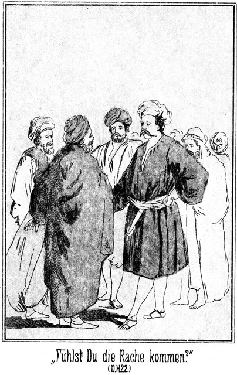»Fühlst Du die Rache kommen, Mensch?«
»Wie – wo – was – wer – –« stammelte der Graf, seiner noch nicht wieder mächtig.
»Rede arabisch, Kerl, daß diese braven Leute verstehen, was wir einander sagen. Kennst Du mich?«
»O – – wie – warum – – nein.«
»Nicht? Du bist doch Graf Polikeff?«
»Nein.«
Er faßte sich jetzt und warf dem Riesen einen Blick zu, diese Lüge zu unterstützen.
»Leugne nicht!«
»Ich bin kein Graf. Frage Den da!«
Er zeigte auf Falehd.
»Den soll ich fragen? Fällt mir nicht ein. Hier stehen viele ehrwürdige Männer, deren graues Haar mir dafür bürgt, daß sie mir die Wahrheit sagen werden.«
Und sich an den Alten wendend, welcher bereits vorhin gesprochen hatte, fuhr er fort:
»Ich bin Derjenige, welcher sich Masr-Effendi nannte. Die Königin hat mich soeben ihrer Gastfreundschaft versichert. Ich habe ihr Hiluja, ihre Schwester, gebracht. Kennt Ihr den Namen dieses Mannes?«
»Ja, wir kennen ihn,« antwortete der Alte.
»Ich hoffe nicht, daß Ihr einen Grund haben werdet, ihn einem ehrlichen Manne zu verschweigen. Ist er ein Graf oder nicht? Er behauptete das Letztere.«
»Wir sind einfache Leute und wissen nicht, was ein Graf ist; aber er hat sich während der Versammlung einen Grafen genannt. Er heißt so, wie Du sagtest, nämlich Polikeff, und ist aus Rußland.«
»So seht Ihr, daß er ein Lügner ist. Zu Euch hat er die Wahrheit gesagt und gegen mich verleugnete er sie, weil er sich vor meiner Rache fürchtet.«
»Rache?« fragte der Russe. »Ich habe Dir nichts gethan. Ich kenne Dich ja gar nicht.«
»Willst Du wirklich leugnen, daß Du mich morden wolltest?«
»Morden? Ist mir nicht eingefallen!«
»Denke an jenen Abend am goldenen Horn! Du warst als Ruderer verkleidet und schlugst mich von hinten über den Kopf, daß ich die Besinnung verlor und in's Wasser stürzte.«
»Ich weiß nichts davon.«
»Dein Schreck beweist das Gegentheil. Du hast mich für todt gehalten und wärest jetzt bei meinem Anblicke ja beinahe vor Angst umgefallen.«
»Das war nur Erstaunen.«
»Erstaunen? Doch darüber, daß ich noch lebe!«
»Nein, sondern darüber, daß ein Mann, den ich gar nicht kenne, es wagt, mich zu beschimpfen.«
»Pah! Wo ist Gökala?«
»Gökala? Wer ist das?«
»Das weißt Du sehr genau.«
»Ich kenne keine Person, welche Gökala heißt!«
»Und doch weißt Du, daß ich von einer Person spreche, nicht von einer Sache. Du verräthst Dich selbst. Gökala wird sich nicht weit von da befinden, wo Du bist. Ist dieser Mann mit einem Weibe hier?«
»Nein,« antwortete der Alte, an den Steinbach sich mit seiner Frage gerichtet hatte. »Er ist allein gekommen.«
»Nun, so werde ich sie dennoch finden. Was ist das?«
Nämlich hinter ihm erhob sich in diesem Augenblicke auch ein lauter, von zwei Stimmen geführter Zank. Ibrahim Pascha hatte, wie bereits gesagt, in der Nähe des Russen gestanden. Auch er war bei Steinbachs Anblicke auf das Heftigste erschrocken. Er hörte das Gespräch zwischen den beiden Feinden und hielt es, sich unbeachtet wähnend, für das Beste, sich still zurückzuziehen.
So unbeachtet, wie er geglaubt hatte, war er aber nicht. Er wurde am Arme erfaßt und eine Stimme, welche ihm sehr bekannt vorkam, sagte in befehlendem Tone:
»Halt, Ibrahim Pascha! Bleibe da, wo Du gebraucht wirst! Das ist hier bei uns!«
Er starrte dem Sprecher in das Gesicht, welches jetzt vom Feuer beleuchtet wurde, und erkannte Normann.
»Allah, Allah!« stieß er hervor, indem er gleich um mehrere Schritte zurückwich.
»Ah, Du kennst mich?«
»Nein,« antwortete der Gefragte, sich schnell fassend.
»Ich denke aber, daß wir uns in Stambul gesehen haben!«
»Ich weiß nichts davon.«
»Und dann in Tunis?«
»Das ist nicht wahr.«
»O besinne Dich nur! Du wolltest den Bey von Tunis, Mohamed es Sadok Pascha, ermorden.«
»Welch eine Lüge!«
»Wir verfolgten Dich, aber Du entkamst.«
»Hast Du das Fieber oder den Sonnenstich?«
»Ich nicht. Aber Du scheinst verrückt zu sein, da Du Sachen leugnest, welche wir beweisen können. Wir haben wirklich nicht geglaubt, Euch Kerls hier zu finden. Da wir aber einmal an Eurem Neste sind, so werden wir die Galgenvögel auch ausnehmen.«
»Keine Beleidigung! Ich dulde das nicht.«
»Pah! Du wirst noch ganz Anderes erdulden müssen.«
»Ich stehe jetzt unter dem Schutze dieser Beni Sallam. Wer mich beleidigt, beleidigt auch sie!«
»Ja,« fiel hier der Riese ein, seine Augen drohend auf Normann richtend. »Wie kannst Du es wagen, einen meiner Gäste zu beleidigen.«
»Nimm keine Schurken bei Dir auf.«
»Deine Sprache ist so, daß sie Dich um das Leben bringen wird. Ich kenne Dich nicht. Wer bist Du?«
»Der Gast der Königin. Das wird genügen.«
»Das genügt nicht. Du hast meinen Gast einen Schurken genannt. Du wirst es büßen müssen.«
*
»Davon steht nichts in unseren Gesetzen,« wendete jetzt der Alte ein. »Wir haben unsere Gäste gegen fremde Angriffe zu beschützen. Was sie auch unter sich zu verhandeln haben, das geht uns nichts an, sondern das ist ganz allein ihre eigene Sache.«
»Du scheinst es darauf abgesehen zu haben, mich zu beleidigen!« zürnte der Riese in drohendem Tone.
»Das will ich nicht. Ich bin der Hochbetagteste unter Euch und habe darauf zu sehen, daß einem Jeden sein Recht geschieht. Das kann Dich nicht beleidigen.«
»Aber meinen Schützlingen geschieht ja nicht ihr Recht sondern Unrecht!«
»Das mögen sie beweisen.«
»Sie haben es gesagt. Das genügt. Sie kennen diese beiden anderen Menschen gar nicht!«
Da aber erhielt er eine Antwort, welche er gar nicht erwartet hatte. Nämlich da die Gastzelte ganz in der Nähe des Feuers lagen, hatte Zykyma das mehr als laut geführte Gespräch gehört. Sie glaubte, eine Stimme zu erkennen. War das möglich? Konnten die Retter wirklich hier sein, hier, mitten in der Wüste? Sie stand eilig von ihrem Sitze auf und trat aus dem Zelte. Als sie die von dem flackernden Feuer nur nothdürftig erleuchtete Versammlung überblickte, sah sie zwei Köpfe über alle Uebrigen ragen. Den Einen kannte sie. Es war der Riese, mit dem sie heute in das Lager gekommen war. Der andere Mann war zwar nicht so lang wie Falehd, aber doch höher als die Uebrigen. Sie ging mehr nach der einen Seite hin, um sein Gesicht zu sehen. Eben redete Normann. Sie erkannte seine Stimme ganz deutlich. Einen Jubelruf, welcher ihr auf die Lippen kam, unterdrückend, drängte sie sich zwischen den Männern hindurch, gar nicht daran denkend, daß ein Weib hier gar nichts zu thun habe. Die Beduinen machten ihr staunend Platz. Zykyma hörte den letzten Theil der Unterhaltung und rief den Riesen bereits von Weiten zu:
»Das ist nicht wahr. Sie kennen sie!«
Alle Anwesenden wendeten sich ihr zu. Normann erblickte sie und rief erfreut:
»Zykyma! Da bist Du! Allah sei Dank! Jetzt kannst Du für uns zeugen.«
»Ja, das kann ich, und das will ich!«
Da drängte Ibrahim Pascha auf sie zu und schrie:
»Was fällt Dir ein! Gehe in Dein Zelt!«
»Du hast mir nichts zu befehlen!« erwiderte sie muthig.
»Soll ich Dich bestrafen?«
»Du hast kein Recht dazu!«
»Oho! Du bist mein Weib!«
»Das ist nicht wahr. Du hast es zu diesen Männern gesagt, daß ich Dein Weib sei, aber Du hast gelogen.«
»Ich habe Dich bezahlt!«
»Das war sehr dumm von Dir. Ich bin keine Sclavin, welche man kaufen kann.«
»Du bist meine Sclavin! Gehe in das Zelt, sonst werde ich mein Recht über Dich in Anwendung bringen.«
»Diese beiden Männer werden mich beschützen!«
»Dieser Masr-Effendi und sein Cumpan?« lachte der Riese, Partei für den Pascha nehmend. »Die sollten es wagen! Der Pascha sagt, Du seiest sein Weib. Er hat Dich gekauft und bezahlt, und Du wirst ihm gehorchen.«
Da wollte Steinbach das Wort ergreifen; aber jener Alte kam ihm zuvor:
»Wer kann hier von kaufen sprechen? Wir befinden uns in der freien Wüste, wo es keine Sclaven giebt. Wenn Ibrahim Pascha die Unterschrift des Kadi und des Mollah besitzt, die ihn mit diesem Weibe getraut haben, so mag er sie vorzeigen, und wir werden ihn nicht hindern, seine Rechte auszuüben.«
»Meinst Du, daß ich solche Schriften in der Wüste mit herum trage!« stieß der Pascha hervor.
»Also nicht! So sage, ob Du mit ihr getraut bist!«
»Ja.«
»Er lügt!« rief Zykyma.
»Hört Ihr es, Ihr Männer?« sagte der Alte. »Er sagt Dieses und sie sagt Jenes. Beide können nichts beweisen. Wir haben uns also in ihre Angelegenheit nicht zu mischen, müssen aber jede Gewaltthat verhüten.«
»Ist es eine Gewaltthat, wenn ich meinem Weibe befehle, in das Zelt zu gehen?«
»Nein, falls sie Dein Weib ist. Das aber hast Du uns noch nicht bewiesen.«
»So willst Du mich also verhindern, sie zu zwingen, mir gehorsam zu sein?«
»Ja, das werde ich!«
»Das wirst Du bleiben lassen!« drohte der Riese, sich seines Gastes annehmend.
»Willst Du mir etwa verbieten, nach den guten Gesetzen unseres Stammes zu handeln?« fragte der Alte furchtlos.
»Diese Frau bewohnt jenes Zelt; da hinein gehört sie!«
»Wenn sie will!«
»Oho! Ich selbst werde sie hinein führen!«
»Das verbiete ich Dir!«
»Du! Weißt Du nicht, daß ich morgen Scheik sein werde?«
»Noch bist Du es nicht!«
»Ich werde dennoch sehen, wer mich hindern will, das zu thun, was ich thun will!«
Er streckte den Arm nach Zykyma aus. Der Alte aber stellte sich schnell zwischen ihm und sie und sagte ernst:
»Bedenke, was Du thust! Ich stehe und spreche hier im Namen der Versammlung der Aeltesten. Wer da widerstrebt, wird aus dem Stamme gestoßen!«
»Ihr? Mich ausstoßen? Hölle und Teufel!«
Er lachte laut und höhnisch auf. Die Umstehenden aber traten enger zusammen und legten die Hände an die Messer. Er sah das. Gegen so Viele konnte er trotz seiner großen Stärke nichts machen; das sah er gar wohl ein. Um so stärker wallte sein Zorn auf.
»Gilt das etwa mir?« fragte er rundum.
»Ja, ja,« ertönte es ihm von allen Seiten entgegen.
»Also Empörung im Lager, eines fremden Weibes wegen?«
Er schien noch nicht mit sich einig, ob er nachgeben solle oder nicht; da wurde die Scene durch die Königin beendet. Sie war herab gekommen aus der Ruine und hatte aus der Nähe den Verhandlungen zugehört. Jetzt kam sie ganz herbei, ergriff Zykyma bei der Hand und sagte, zu dem Aeltesten gewendet:
»Du hast recht; aber ich will nicht haben, daß Du um dieses Rechtes willen vielleicht von Falehd zum Kampfe gefordert wirst. Dieses Mädchen wird bei mir wohnen, bis es sich entschieden hat, ob sie sich selbst zu Eigen ist oder einem Anderen gehört.«
Beide entfernten sich, ohne von irgend Jemand verhindert zu sein. Zwar warf der Pascha dem schönen Mädchen sehr unruhige Blicke nach; wie aber jetzt die Sachen standen, war es ihm unmöglich, seine Ansprüche weiter geltend zu machen. Der Riese aber konnte sich nicht zu leicht bescheiden. Er knurrte, zu Normann gewendet:
»Jetzt hast Du Deinen Willen. Morgen aber wird es ganz anders lauten. Darauf verlasse Dich! Kommt mit mir in's Zelt!«
Diese Aufforderung war an den Grafen und den Pascha gerichtet. Da aber erhob Steinbach Widerspruch:
»Halt! Wir sind noch nicht fertig!«
»Ich habe mit Dir nichts zu thun!« sagte der Riese. »Wenigstens heute nichts mehr!«
»Ich mit Dir auch nicht, desto mehr aber mit diesen Beiden.«
»Sie gehen jetzt mit mir!«
»Ich habe sie des Mordes angeklagt!«
»Das geht mich nichts an! Sie sind meine Gäste!«
»So sage ich Dir sehr einfach, daß ich sie niederschießen werde, wenn sie hier fortgehen wollen, ohne daß ich damit einverstanden bin!«
»Dann habe ich die Blutrache!«
»Die fürchte ich nicht. Meine dritte Kugel würde Dich sicherlich treffen!«
Er zog zwei Revolver hervor. Die Augen Falehd's leuchteten auf wie Pantheraugen. Er trat auf Steinbach zu und brüllte:
»Drohst Du mir hier mitten im Lager!«
»Ja. Und ich werde meine Drohung wahr machen!«
»Hund!«
Er that, als ob er nach Steinbach greifen wollte, fuhr aber doch sehr schnell mit dem Arme zurück, als dieser, den einen Revolver erhebend, ihm zurief:
»Zurück! Eins – zwei –!«
Kein Anderer mischte sich in diese Angelegenheit. Die Beduinen standen still und unbeweglich im Kreise. Der Riese war bei ihnen nicht beliebt, und als Krieger mußten sie das muthige Auftreten Steinbach's anerkennen. Dieser wendete sich an den Alten:
»Ich habe diese beiden Männer Mörder genannt. Ich bin ihnen nach Egypten gefolgt, um sie bestrafen zu lassen, und habe sie hier bei Euch getroffen. Sie sind Eure Gäste, und Ihr könnt sie mir also nicht ausliefern. Daher verlange ich nach dem Rechte der Wüste, daß Ihr darüber wacht, daß sie mir nicht entfliehen. Ich werde von Euch scheiden, wenn sie fortgehen. Dann sind sie nicht mehr Eure Gäste, und Ihr seid Eurer Pflicht ledig.«
»Sie und fliehen!« lachte der Riese. »Was bildet sich der Mensch ein! Wer sich unter meinem Schutze befindet, braucht an keine Flucht zu denken!«
»Ich verlange also Bewachung des Lagers, so daß sie sich nicht heimlich entfernen können!« fuhr Steinbach fort, unbekümmert um die Einrede des gewaltthätigen Beduinen. »Ich müßte sie sonst von Euch fordern!«
»Von uns fordern?« antwortete Falehd. »Was bildest Du Dir ein! Was bist Du und wer? Noch hast Du es uns ja nicht gesagt.«
»Du kannst es hören. Ich bin ein Bote des Vicekönigs von Egypten.«
»Aha! Das habe ich mir gedacht! Du wirst hier bei uns aber keine Geschäfte machen.«
»Das wird sich finden, obgleich ich weiß, daß wenigstens mit Dir keine Geschäfte zu machen sind.«
»Also versuche es auch nicht! Uebrigens wird der Vicekönig seinen Boten nicht wieder zu sehen bekommen. Deine Seele wird zwischen meinen Händen zerlaufen wie ein Stück Salz, wenn man es in's Wasser thut. Ihr Beide aber kommt jetzt mit mir! Sie mögen über Euch berathen. Wir gehen in mein Zelt!«
Aber das wurde nicht erlaubt. Er konnte zwar gehen; aber der Pascha und der Graf mußten bleiben, bis die Versammlung der Aeltesten zum Beschlusse über sie gekommen war. Dieser lautete, daß sie ihr Ehrenwort zu geben hätten, das Lager nicht ohne Wissen Steinbach's zu verlassen. Im Uebrigen aber waren sie frei. Ueber Zykyma sollte später entschieden werden.
Als Falehd sich nun mit seinen beiden Gästen allein im Zelte befand, machte ihm der Pascha wegen ihr Vorwürfe.
»Du hättest mein Recht vertheidigen sollen, denn Du bist doch mein Beschützer!«
»Ist sie denn wirklich Dein Weib?«
»Nein, noch nicht.«
»Aber Deine Sclavin?«
»Ja, ich habe sie gekauft und bezahlt.«
»Bei uns giebt es keine Sclaverei.«
»So soll ich sie mir wohl von diesen Menschen rauben lassen, wie sie mir bereits Tschita genommen haben?«
»Haben sie Dir denn bereits Eine entführt?«
»Ja, und zwar Diejenige, an welcher ich mit dem ganzen Herzen hing.«
»Bei Allah, Du dauerst mich!«
»So hilf mir!«
»O, Du verstehst mich falsch. Du dauerst mich nicht etwa, weil Dir eine Sclavin abhanden gekommen ist, sondern weil Du überhaupt Dein Herz an ein Weib gehängt hast.«
»Das hast Du doch auch gethan!«
»Ich? Was fällt Dir ein!«
»Denke an die Königin!«
»Du meinst, ich sei verliebt in sie?«
»Ganz gewiß. Du willst doch morgen Dein Leben wagen, um sie zu besitzen.«
»Mein Leben? O, das wage ich nicht. Diese drei Menschen werde ich mit drei Hieben niederschlagen. Seht her!«
Am Boden lag eine halbe Zeltstange. Er ergriff sie mit den Händen und brach sie mitten entzwei.
»Solche Kräfte habe ich. Niemand ist mir gewachsen. Also mein Leben wage ich nicht, und aus Liebe gar nicht. Ich will die Königin erringen, weil Derjenige, welcher sie besitzt, der Scheik des Stammes sein wird. Wie ist es denn gekommen, daß man Dir eine Sclavin hat nehmen können?«
Der Pascha erzählte es nach seiner Weise. Er ließ natürlich Alles weg, was Andere nicht zu wissen brauchten. Als er geendet hatte, sagte der Riese:
»Du wirst diese Tschita wieder erhalten.«
»Wie ist das möglich. Ich weiß nicht, wo sie ist.«
»Sie ist natürlich nicht weit von Denjenigen, welche sie Dir genommen haben. Zwei von ihnen befinden sich jetzt bei uns. Der Dritte ist jedenfalls mit dem Mädchen in Egypten zurück geblieben. Den Einen erschlage ich morgen, und der Andere wird Euch dann sagen müssen, wo sie Tschita versteckt haben.«
»Könntest Du dies wirklich so weit bringen?« fragte Ibrahim, ganz electrisirt von dem Gedanken, daß er die zwei Geschwister Adlerhorst wieder in seine Gewalt bringen werde.«
»Sehr leicht.«
»Er wird aber nichts ausplaudern!«
»Wir zwingen ihn.«
»Der Euer Gast ist?«
»Das wird er doch nicht ewig sein. Er wird unser Lager verlassen, und wir folgen ihm nach. Nun aber sage mir im Vertrauen, ob Du wirklich einen Anschlag auf das Leben des Bey von Tunis gemacht hast.«
»Davon spricht man nicht.«
»Auch zu mir, Deinem Verbündeten, nicht?«
»Nein.«
»Gerade aus dieser Verschwiegenheit errathe ich das Richtige. Hättest Du nichts gethan, so könntest Du mit einem Nein auf meine Frage antworten. Aber die Erzählung von dem Mordanfall in Stambul war wohl eine Lüge?«
»Eine sehr große Lüge,« antwortete der Graf.
»So wollte ich, es wäre Wahrheit, und die Absicht wäre gelungen. Dann könnte dieser Mensch sich nicht als ein Bote des Khedive bei uns befinden. Aber – – –«
Er sprach nicht weiter, aber er streckte seine Fäuste aus und betrachtete sie mit einem Blicke, in welchem sich die feste Ueberzeugung aussprach, daß er Sieger sein werde. Der Graf sah das und fragte:
»Wirst Du Dich nicht irren?«
»Darin, daß ich die Drei überwinden werde?«
»Ja.«
»Da ist ja gar kein Irrthum möglich.«
»Der Fremde ist auch stark!«
»So nicht, wie ich. Ich schlage ein zweijähriges Kameelfüllen mit einem Hieb zu Boden. Wer thut mir das nach? Keiner von Euch.«
»Aber Einer gegen Drei! Du wirst ermatten.«
»Es giebt ja gar keinen Kampf. Ich gebe jeden einen Hieb auf den Kopf, und er ist todt.«
»Ich würde Dir vorschlagen, den Fremden zuerst zu nehmen.«
»Warum?«
»Weil er der Stärkere ist. Es ist klug, die schwerste Arbeit zuerst vorzunehmen.«
Falehd blickte ihn von der Seite an, lachte vor sich hin und fragte ihn dann:
»Ist dies wirklich Dein Grund?«
»Ja.«
»Wie klug Du bist! Wenn ich ihn tödte, seid Ihr Euren Feind los. Das willst Du aber nicht aussprechen. Ich weiß es dennoch. Aber ich will Euch gern den Gefallen thun. Mir gilt es gleich, wer eher in die Hölle wandert, er oder die Söhne des Blitzes.« –
Nachdem die Versammlung der Aeltesten aufgelöst worden war, hatte Steinbach den bereits erwähnten Alten bei Seite genommen und ihm unter dem Siegel der Verschwiegenheit mitgetheilt, daß er Geschenke von dem Vicekönige zu überbringen habe.
Diese Nachricht hatte bei den Beduinen die größte Freude erregt. Er gestand:
»Ich gehöre zu Denen, welche den Vicekönig lieben. Dazu gehört die Mehrzahl unserer Krieger.«
»Doch Falehd nicht?«
»Nein. Darum ist es mir für die Zukunft bange. Er als Scheik wird nicht auf guten Wegen wandeln.«
»Auch Du thust ganz so, als ob es sicher sei, daß er diese Würde erhalte.«
»Das ist auch sicher. Zwar habe ich seinen Uebermuth zurückgewiesen; aber morgen ist der Kampf, und Keiner wird ihn besiegen. Ich werde um Mitternacht die Sure des Todes für Tarik und Hilal beten. Erlaube, daß ich dabei auch Deiner Seele gedenke!«
Er hatte das in einem sehr ernsten, ja traurigen Tone gesprochen. Steinbach fragte:
»So ist es also ganz sicher, daß die beiden Brüder unterliegen werden?«
»Ganz gewiß. Sie sind uns Allen doch so genau bekannt wie auch er; darum wissen wir, was ihrer wartet. Ich weiß nicht, warum auch Du auf den Gedanken gekommen bist, nach dem Preise zu ringen. Wußtest Du etwa nicht, daß es ein Kampf auf Leben und Tod ist?«
»Ich wußte es.«
»So mache Deine Rechnung mit dem Leben quitt, und bestelle Dein Haus. Wir sind allein. Theile mir die Botschaft mit, welche Dir anvertraut worden ist. Mein Herz wird sie so lange bewahren, bis die Zeit gekommen ist, in welcher sie Nutzen und Früchte bringt. Der Vicekönig braucht viele Soldaten, und für diese muß er Gewehre und Munition haben. Wenn dies nicht wäre, so hätte ich ihn durch den Boten bitten lassen, uns eine Anzahl von Gewehren zu senden.«
»Welchen Boten meinst Du?«
»Hilal, mit welchem Du ja wohl gekommen bist.«
»So hast Du gewußt, daß er von der Königin zu dem Vicekönig geschickt worden ist?«
»Nicht nur gewußt habe ich es, sondern ich bin es sogar gewesen, der ihr den Rath gegeben hat, diesen treuen Mann nach Kairo zu senden.«
»So bist Du vertraut mit ihr und ihren Ansichten?«
»Ich bin ihr Vertrauter und ihr Rathgeber. Hast Du vorhin nicht bemerkt, daß ich möglichst gegen Falehd aufgetreten bin? Er ist ihr Feind und der Feind seines eigenen Stammes. Sobald er der Anführer wird, ist es mit dem Frieden vorbei, dessen wir uns erfreuen. Er ist ungerecht und gewaltthätig, und wird uns bald die umliegenden Stämme auf den Hals bringen. Sein Anhang im Lager ist nicht groß; aber er wird Euch morgen besiegen und also Scheik werden. Dann hat er die Macht, und selbst seine Gegner müssen ihm gehorchen.«
»So will ich Dich beruhigen. Zweierlei habe ich Dir zu sagen; ist dies geschehen, so wird Deine Sorge verschwunden sein.«
»Du machst mich sehr neugierig. Ich kenne nichts, was im Stande sein kann, die Sorgen zu zerstreuen, welche gerade jetzt auf unserem Stamme liegen.«
»Nun, so höre erstens, daß Falehd nicht Euer Scheik sein wird.«
»Das ist unmöglich.«
»Ich weiß sehr wohl, daß Ihr Alle ihn für unüberwindlich haltet, wenn – –«
»Wenn es sich um einen Faustkampf handelt,« fiel der Alte ein. »Er ist der nächste Verwandte. Als solcher hat er die Waffen zu bestimmen, und er wird sich hüten, Flinte, Lanze oder Messer zu wählen. Dabei könnte er selbst von einem Schwächeren verwundet oder getödtet werden, während er beim Kampfe mit der Faust sicher ist, jeden Gegner nieder zu schlagen.«
»Mich nicht. Ich war in einem Lande, wo der Faustkampf noch in anderer Weise gepflegt wird als bei Euch. Ich würde zehn solche Gegner wie Falehd, wenn ich mit ihnen zu ringen hätte, nach einander niederschlagen, zehn und auch noch mehr.«
Der Alte blieb stehen, blickte den Sprecher erstaunt an, schüttelte den Kopf und sagte:
»Du sprichst, als seiest Du Deiner Sache ganz gewiß; aber Du kennst den Riesen nicht!«
»Du kennst auch mich nicht. Sei überzeugt, daß in meinem Herzen in Beziehung auf den morgenden Kampf nicht die mindeste Sorge herrscht.«
»Wollte doch Allah geben, daß Du Recht behieltest! Du bist allerdings groß und stark, größer und stärker als einer der Unserigen, Falehd ausgenommen; dennoch glaube ich kaum, daß Deine Körperkraft der seinigen gleich kommt. Aber da Du sagst, daß Du Dich im Faustkampfe geübt habest, so ist es ja möglich, daß Du ihm in Beziehung auf die Gewandtheit überlegen bist. In diesem Falle wäre es vielleicht möglich, daß Du ihn besiegtest.«
»Das wird sicherlich geschehen. Wem gehört dann die Königin?«
»Dem Sieger, also Dir.«
»Trotzdem ich kein Angehöriger Eures Stammes und nicht einmal ein Beduine bin?«
»Trotzdem. Durch ihren Besitz wirst Du das, was ihr erster Mann war, ein Beni Sallam und sogar der Scheik des Stammes.«
»Bin ich aber dann gezwungen, sie zum Weibe zu nehmen?«
»Nein. Du könntest sie an einen Anderen abgeben müssen, welcher dann mit Dir um sie kämpft. Findet sich aber ein solcher nicht, so mußt Du bei uns bleiben.«
»Und was geschieht mit Falehd?«
»Was soll mit ihm geschehen?« fragte der Alte ganz erstaunt. »Er wird begraben.«
»Wenn er nun nicht todt ist?«
»Wenn Du ihn besiegest, so ist er ja todt!«
»Wenn ich nun die Absicht hätte, ihn nicht zu tödten?«
»Das ist kaum möglich. Erstens würde er sich so lang wehren, bis er todt ist, und zweitens könnte er, falls Du der Sieger bist, doch nur dann am Leben bleiben, wenn er Dich um Gnade bäte. Das thut ein Sohn der Steppe nie; lieber stirbt er; denn in diesem Falle würde er aus dem Stamme gestoßen. Das ist die größte Schande, welche einem Krieger widerfahren kann.«
»Nun, wir werden ja sehen, ob Falehd den sicheren Tod dieser Schande vorzieht!«
»Du siehst mich im höchsten Grade erstaunt über das Vertrauen, welches Du zu Dir hast. Du sprichst ganz so, als ob es für Dich gar keine Möglichkeit zu unterliegen gebe.«
»Die giebt es auch nicht. Du kannst davon ganz ebenso überzeugt sein wie ich.«
»So möchte ich allerdings diese schwere Sorge bereits heut Abend schon von mir werfen. Das war das Erste. Wolltest Du vorhin nicht auch noch ein Zweites sagen?«
»Ja. Aber vorher bitte ich Dich, mir Deinen Namen zu nennen. Du hast ihn mir noch nicht gesagt; aber fast vermuthe ich, daß Du Kalaf heißest.«
»So heiße ich allerdings. Woher weißt Du das?«
»Hilal, Euer Bote, hat, als er den Vicekönig sprach, auch Deinen Namen rühmend genannt. Du seist der vertraute Rathgeber der Königin und ein Freund des Khedive. Da Du Dich nun vorhin ihren Vertrauten nanntest, so vermuthete ich, daß Du dieser Kalaf seist.«
»Hilal hat die Wahrheit gesagt. Ich bin es.«
»Darf ich vielleicht wissen, ob Ibrahim Pascha Euch Geschenke mitgebracht hat?«
»Gar nichts.«
»Aber der Russe doch wohl?«
»Auch nichts. Sie haben uns nur Versprechungen gemacht. Beide wollen, daß der Riese Scheik werde. Ich vermuthe, daß dann die Stämme der Wüste unter seiner Anführung in Egypten einfallen sollen. Es würde Aufruhr und Empörung entstehen; der Sultan müßte Truppen und Schiffe senden; er würde sich also entblößen, und dann hätte der Russe ein leichtes Spiel, seine Absichten zu erreichen. Bezahlt sollen wir dann werden mit vielen Silberthalern, und außerdem soll uns der Raub gehören, den wir machen.«
»Und darauf will Falehd eingehen?«
»Ja.«
»Schändlich! Also die armen egyptischen Fellahs, welche selbst kaum zu leben haben, sollen ausgeraubt werden. Das ist mehr als grausam. Da komme ich doch mit anderen Vorschlägen. Und außerdem bringe ich Euch Geschenke.«
»Ah! Dem Stamme?«
»Der Königin, den beiden Söhnen des Blitzes und auch Dir.«
»Mir?« fragte der Alte in freudigem Erstaunen.
»Ja, Dir.«
»Das ist ja noch gar niemals dagewesen!«
»So freut es mich desto mehr, der Ueberbringer zu sein. Das Allerbeste aber ist, daß ich auch dem Stamme Geschenke bringe. Das war das Zweite, von welchem ich sagte, daß es Dein Herz von der Sorge, welche Du hegst, befreien werde. Du wünschtest vorhin Gewehre, diesen Wunsch kann ich Dir im Auftrage des Vicekönigs erfüllen.«
»Hamdulillah – Preis sei Gott! Du hast Gewehre mitgebracht?«
»Gewehre und Munition.«
»Wie viele?«
»Dreihundert Kriegsgewehre, nicht solche alte Flinten, wie Ihr jetzt habt, bei denen jeder zweite Schuß versagt.«
»Bessere etwa?«
»O, viel, viel bessere!«
Kalaf machte trotz seiner Würde und seines Alters einen Freudensprung und rief aus:
»Bessere! Viel bessere! O Allah, Allah!«
»Pst! Schrei nicht so! Ich habe Dich hier abseits geführt, damit Niemand unser Gespräch hören soll.«
»Verzeihe! Aber gute Gewehre sind für den Beduinen das Aller-, Allernothwendigste. Darum freute ich mich so. Vor einiger Zeit war ein Händler bei uns, welcher uns erzählte, daß es jetzt sogar Wara-barudawir gebe. Ist das wahr?«
Wara heißt im Arabischen so viel wie ›hinten‹, und Barudawir heißt ›Gewehre‹ Er meinte also jedenfalls die Hinterlader.
»Ja, die giebt es,« antwortete Steinbach.
»Allah ist groß! Sollte man glauben, daß es möglich ist, eine Flinte von hinten zu laden!«
»Es geht das viel leichter und schneller, als wenn man von vorn ladet.«
»Es giebt ein Volk, welches Nemtsche genannt wird. Kennst Du es vielleicht?«
»Ja; es sind die Deutschen.«
»Dieses Volk soll solche Rückwärtsflinten haben?«
»Es hat Hunderttausende solcher Gewehre.«
»Die Nemtsche sollen vor Kurzem einen großen, gewaltigen Krieg gegen die Franzeska mit diesen wunderbaren Flinten gewonnen haben. Der Händler erzählte, sie hätten Schlachten gewonnen, in denen sie hunderttausend Gefangene gemacht und sogar hunderte von Kanonen erobert hätten.«
»Das ist sehr wahr.«
»Das muß ein sehr kluges und ein sehr tapferes Volk sein!«
»Ich will das sehr gern zugeben.«
»Warst Du etwa dort bei diesen Nemtsche?«
»Ja; ich bin dort geboren. Ich bin ein Nemtsche.«
»Allah l'Allah! So hast Du wohl auch bereits mit solchen berühmten Flinten geschossen?«
»Mehr als tausend Mal.«
»Gott thut Wunder über Wunder! Jetzt sendet er uns einen Nemtsche! Warst Du mit bei diesen Schlachten?«
»Ich war dabei.«
»O, da wirst Du uns viel erzählen müßen! Wie freue ich mich darauf! Weißt Du, was mir bei diesem Volke der Nemtsche am Allerbesten gefällt?«
»Nun?«
»Sie haben alle Schlachten gewonnen; sie sind die Sieger; sie sind unwiderstehlich gewesen, und dennoch haben sie sich gegen das besiegte Volk wie Freunde verhalten. Das hat mich sehr, sehr gefreut. Der Händler erzählte, daß sie einen berühmten Kaiser haben, der noch älter ist als ich und Wi-che-lem genannt wird.«
»Wilhelm.«
»Ja, Wi– wi– wi-che-lem! Sodann haben sie einen Minister, dem sich beinahe die ganze Welt zu Füßen gelegt hat. Er heißt Bi-sa-mar-ka.«
»Ja, Bismarck.«
»So ist es, so! Ich weiß den Namen ganz genau, nicht wahr? Bi-sa-mar-ka. Und dann haben sie einen alten Obergeneral; der sieht aus wie ein Kotscha, wie ein Dorfschulmeister; aber er ist klüger und weiser als alle Krieger der Welt und gewinnt alle Schlachten. Sein Name ist Gra-fa Mo-le-te-ka.«
»Graf Moltke. Du hast Recht.«
»Kennst Du diese Drei?«
»Ich habe sie nicht nur gesehen, sondern sogar mit ihnen sehr oft gesprochen.«
»Was für ein glücklicher Mann Du bist! Aber daraus ersehe ich, daß Du nicht ein gewöhnlicher Krieger bist, sondern ein Anführer, ein Scheik.«
»Ich bin ein Bey. Es gehorchen mir viele Reiter.«
»Das dachte ich mir. Aber, sage mir, wenn diese Flinten von hinten geladen werden, so wird mit ihnen wohl auch nach hinten, nach rückwärts geschossen?«
»Nein, das wäre nicht gut möglich,« lachte Steinbach. »Man öffnet den Lauf am Schlosse und schiebt die Patrone da hinein; dann schließt man ihn wieder und drückt ab.«
»So ist das! Der Händler sagte, man könne in einer Minute wohl zwanzig Mal losdrücken. Ist das wahr?«
»Ja.«
»Und an diesen Flinten soll kein Feuerstein und keine Lunte sein, sondern es steckt anstatt des Schlosses ein Jjnelik an dem Kolben. Ist auch das wahr?«
Jjnelik heißt Nadelbüchse. Darum antwortete Steinbach:
»So ein Jjnelik, wie Du wohl bei den nähenden Frauen gesehen hast, ist es nicht. Im Schlosse des Gewehres befindet sich eine Nadel; wenn diese in die Patrone sticht, entzündet sie die Ladung und der Schuß geht los; darum werden diese Flinten Zündnadelgewehre genannt.«
»Gott ist groß, er ist der Größte; ihm ist Alles möglich! Jetzt hat er Euch sogar gelehrt, mit einer Stecknadel alle Eure Feinde zu erschießen! Wenn ich doch noch so lange lebte, bis ich einmal so ein Gewehr sehen kann. Eins gar zu besitzen, dieser Wunsch wäre ja vermessen!«
»O, Du sollst ja eins besitzen.«
»Wie? Was? Ist's wahr, ist's möglich?«
»Ja. Die Gewehre, welche Euch der Vicekönig durch mich sendet, sind ja solche Zündnadelflinten.«
»Bist Du verrückt? Verzeihe mir! Aber so Etwas zu glauben ist mir doch nicht möglich!«
»Es ist wahr.«
»Wahr! Wahr! Allah, Dir sei Preis und Dank nun und in alle Ewigkeit und auch noch viel, viel länger! Wie viele solcher Gewehre bringst Du mit? Eins? Zwei?«
»Dreihundert.«
»Dreih– – – sage das Wort noch einmal!«
»Dreihundert.«
»Dreihun– – Du hast Dich doch wohl versprochen? Du willst sagen, drei Gewehre, drei Stück!«
»Nein; ich bringe volle dreihundert Stück.«
Der Alte griff sich mit beiden Händen an den Kopf und sagte:
»Das kann ich nicht fassen. Das ist zu viel. Dreihundert Stück! Zwanzig Schüsse in der Minute! Wie viele Feinde könnte man da in einer Minute erschießen! Das kann ich gar nicht ausrechnen! Da reicht mein Kopf und mein Verstand nicht zu. Weißt Du es vielleicht?«
»Sechstausend.«
»Sechstausend Feinde in einer Minute! O Allah, Allah! In einer Minute sechstausend Feinde mit Stecknadeln erschießen! Wenn das nicht Allah erfunden hätte, so könnte man sicher sein, daß nur der Teufel diese Erfindung gemacht habe. Aber hast Du auch Munition dazu?«
»Für jede Flinte fünfzig Patronen.
»Fünfzig! Bei allen Himmeln, nun sind die Beni Sallam unüberwindlich! Aber wo hast Du die Gewehre?«
»Draußen vor dem Lager.«
»Auf Kameelen?«
»Ja.«
»Warum bringst Du sie nicht herein?«
»Weil ich erst wissen wollte, was bei Euch vorging, und weil Falehd noch nicht gleich zu erfahren braucht, was ich den Anhängern der Königin bringe. Denn nur für diese sind die Flinten bestimmt.«
»Das ist sehr, sehr weise gehandelt.«
»Du kannst Dir natürlich denken, daß der Vicekönig Euch nicht so viele dieser herrlichen Gewehre schenkt, damit Ihr dann mit denselben gegen ihn kämpft.«
»Natürlich! Das sehe ich ein! Aber wenn nun einmal die Patronen alle werden?«
»So sendet Euch der Khedive andere.«
»Schön, sehr schön! Weißt Du, was wir machen werden?«
»Wie sind die Flinten verpackt?«
»In große Bastmatten.«
»So sieht man von Außen nicht, was in den Matten steckt?«
»Nein.«
»Gut. So behalten wir Beide das Geheimniß noch für uns. Höchstens der Königin und Hilal und Tarik theilen wir es mit. Jetzt aber schaffen wir die Gewehre nach der Ruine. Dort können sie so verwahrt werden, daß es den wenigen Anhängern des Riesen unmöglich ist, zu ihnen zu gelangen. Bist Du einverstanden?«
»Ja. Es ist dies ja das Beste, was wir thun können.«
»Hast Du sonst noch Etwas zu sagen oder zu fragen?«
»Nur noch das, ob Ibrahim Pascha und der Russe vielleicht entfliehen können?«
»Ich werde von heut an die Wachen verdoppeln, welche aufmerken werden. Die Beiden sind zwar Gäste des Stammes, so daß ich sie nicht zurückhalten kann, wenn sie uns verlassen wollen; aber ich würde es Dir sofort melden lassen, damit es Dir möglich wäre, ihnen augenblicklich nachzujagen. Jetzt aber komm, und laß uns zu den Kameelen gehen!«
Sie kehrten in das Lager zurück, durch welches sie quer zu schreiten hatten. Da begegnete ihnen der Mueddin, welcher vorher die Beschlüsse der Versammlung von der Ruine herab ausgerufen hatte. Der Alte hielt ihn fest und sagte:
»Kennst Du diesen Mann?«
»Nein.«
»Das ist der Geist der Ruine, vor welchem Du vorhin so ausgerissen bist.«
»O nein! Das ist ja ein Mensch, ein Mann!«
»Natürlich!«
»Der Geist hat ja Feuer gespeit.«
»Dieser Mann that es.«
»Das ist unmöglich!«
»Soll ich etwa jetzt noch einmal Flammen speien?« fragte Steinbach, indem er dem Mueddin näher trat.
»Nein, nein! Allah behüte mich vor dem neunundneunzig Mal geschwänzten Teufel! Gott ist groß; er ist der Einzige, und Muhammed ist sein Prophet!«
Er riß sich von dem Alten los und eilte ganz entsetzt von dannen. Die Beiden gingen weiter, wurden aber baldigst wieder angehalten. Ein junger Araber trat auf Steinbach zu und sagte in freudigem Tone zu ihm:
»Allah sei Dank, daß ich Dich finde. Ich habe Dich gesucht.«
»Wer bist Du?«
»Du kennst mich nicht? Ja, es ist hier finster, und ich trage beduinische Kleidung. Schau her!«
Er warf die Kaputze ab, und nun erkannte ihn Steinbach:
»Saïd, der Arabadschi!«
»Ja, der bin ich, Herr!«
»Gut, daß ich Dich treffe! Wie ist es gekommen, daß Ihr zu den Beni Sallam gegangen seid?«
»Ich weiß es nicht. Mein Herr hat mir nichts gesagt.«
»Wir haben Euch überall gesucht, doch vergebens.«
»Wir blieben nur kurze Zeit in Alexandrien und gingen dann nur für einen Tag nach Kairo. Dann reisten wir nach hier weiter.«
»Auch Euer Schiff suchte ich und fand es nicht.«
»Wir wurden an das Land gesetzt, und dann ging es sogleich wieder fort; wohin, das weiß ich nicht. Kannst Du mir nicht sagen, wo sich Zykyma, meine Gebieterin, befindet?«
»Sie ist in der Ruine bei der Königin.«
»Wird sie dort bleiben?«
»Ja.«
»Herr, laß mich zu ihr! Ich will bei ihr sein, nicht aber bei dem Pascha, den ich hasse.«
»Wo ist er jetzt?«
»Der Riese kam zu ihm, um ihn abzuholen. Beide wollen mit dem Russen das Lager umwandern, um die Wächter zu inspiciren.«
»Ah, da treffen sie wohl auch auf meine Kameele. Wir müssen eilen. Komm mit, Saïd!«
Sie mußten an der Ruine vorüber. Dort führte Steinbach den braven Arabadschi hinauf zur Königin, um ihn ihr zu empfehlen. Dann ging er mit dem Alten weiter.
Als sie den Rand der Oase erreichten, erblickten sie draußen in der wüsten Ebene, da, wo Steinbach die Kameele mit den Fellahs gelassen hatte, das Licht einer Fackel, und zugleich hörten sie von dorther laute, zankende Stimmen ertönen.
»Komm!« sagte Steinbach. »Wir müssen eilen. Es scheint sich da draußen Etwas zu begeben.«
Sie eilten fort. Je naher sie der Stelle kamen, desto lauter ertönten die Stimmen. Als sie den Ort erreichten, erkannten sie den Riesen, den Pascha und den Russen. Diese Drei standen den beiden Brüdern Hilal und Tarik gegenüber, welche sich hinaus zu den Thieren begeben hatten, damit mit der kostbaren Ladung nichts geschehe. Dann war Falehd mit seinen Begleitern und einem Fackelträger gekommen und hatte den Zank begonnen.
»Hier wird kein Lager geduldet!« sagte er. Diese Kameele haben nach der Oase zu kommen!«
»Das werden sie auch,« antwortete Hilal.
»So schafft sie herein!«
»Erst muß Masr-Effendi erwartet werden.«
»Ich habe keine Lust, zu warten.«
»So gehe! Wir brauchen Dich nicht.«
»Oho! Das Gepäck muß untersucht werden. Wir haben die Abgaben zu verlangen, welche ein Jeder zu entrichten hat, der durch unser Gebiet zieht.«
»Masr-Effendi zieht nicht durch unser Gebiet, er bleibt bei uns und ist unser Gast. Er ist kein Kaufmann, welcher die Abgabe zu bezahlen hätte, sondern ein Gesandter des Vicekönigs von Egypten.«
»Also ein Bote unseres Feindes! Grad darum muß ich wissen, was sich, in diesen Packeten befindet.«
»Du mußt es wissen? Warum Du?«
»Weil ich der Anführer bin.«
»Oho! Dasselbe könnte auch ich mit demselben Rechte behaupten, denn ich habe ganz so wie Du die Absicht, um die Königin zu kämpfen.«
»Nun, so wollen wir sehen, ob Ihr es wagen werdet, mich zu hindern, diese Packete zu öffnen.«
»Sie haben das nicht nöthig; ich selbst werde es thun.«
Das erklang hinter dem Riesen. Er fuhr herum und stand nun Steinbach gegenüber.
»Teufel und Hölle!« rief er. »Was willst Du hier?«
»Geht das Dich Etwas an?«
»Ja.«
»Das glaube ich nicht. Dennoch aber will ich die Freundlichkeit besitzen, Dir zu sagen, daß ich hierher komme, weil diese Thiere sammt ihrer Ladung mein Eigenthum sind.
»Was hast Du geladen?«
»Das ist nicht Deine Sache!«
»Hüte Dich, mich zu erzürnen! Ich gebiete Dir, mir meine Fragen augenblicklich und der Wahrheit gemäß zu beantworten! Deine Seele könnte Dir sonst bereits schon heut aus dem Leibe getrieben werden!«
»Gut, ich will Dir antworten. Ich werde jetzt diese Thiere in das Lager bringen lassen und diese Ladung der Königin übergeben.«
»Das dulde ich nicht!«
»Schön! So habe ich Dir nur diese beiden Dingerchen zu zeigen, von deren Wirkung Du wohl noch nichts erfahren hast.«
Er zog die beiden Revolver hervor und hielt sie ihm entgegen. Der Riese trat zurück und rief:
»Willst Du etwa schießen?«
»Ja. Jede dieser kleinen Waffen hat sechs Schüsse. Ehe Du nur den Arm erhebst, bist Du eine Leiche. Du sollst und wirst erfahren, womit meine Packthiere beladen sind; aber zu einer Antwort zwingen lasse ich mich nicht. Warte bis morgen nach dem Kampfe.«
Falehd hätte den Deutschen am Liebsten niedergeschlagen, aber er fürchtete sich vor den Revolvern. So klein diese Waffen waren; er als Riese konnte nichts dagegen machen. Daher sagte er zornig:
»Gut, ich will nachsichtig sein. Du bist doch dem Tode verfallen. Ich erlaube Dir also, Deine Waaren in das Lager und zu der Königin zu bringen!«
»Sei nicht thöricht! Du hast nichts zu verbieten und nichts zu erlauben. Ich thue, was mir gefällt!«
»Dein Maul ist sehr groß. Wollen sehen, ob Deine Tapferkeit auch so groß ist. Weil Du so dicke thust, sollst Du von Euch Dreien der Erste sein, mit dem ich kämpfe.«
»Das ist mir lieb, denn da werde ich Dir die Prahlerei austreiben, ohne daß die beiden Andern sich vorher mit Dir zu belästigen und zu verunreinigen brauchen.«
Das Wort Verunreinigung enthält, in dieser Weise gebraucht, eine fürchterliche Beleidigung für den muhammedanischen Araber. Falehd hatte sich bereits zum Gehen gewendet. Jetzt, als er dieses Wort hörte, fuhr er blitzschnell herum und brüllte:
»Hund! Hältst Du mich vielleicht für das stinkende Aas eines abgestandenen Viehes?«
»So ungefähr, ja! Was solltest Du sonst sein? Dein Auftreten und Alles, was Du thust, ist roh, und Deine Worte, welche Du redest, stinken nach Dummheit. Du wagst es, mich einen Hund zu nennen. Ich habe Dir bereits mehrere Beleidigungen verziehen; verlange aber von mir nicht etwa, daß ich Dich für einen Helden und für einen Krieger halten soll, dem ich meine Achtung zu schenken habe!«
»Wurm und Sohn eines Wurmes! Soll ich Dich niederschmettern wie eine krepirte Ratte!«
»Sage noch so ein Wort, und ich jage Dir eine Kugel durch den Schädel! Ich zähle bis Drei. Bist Du da noch nicht verschwunden, so drücke ich ab!«
Er hatte seine Doppelbüchse vom Sattel seines Reitkameels gerissen und legte sie an. Es war ihm jetzt ernst damit.
»Eins – Zwei – – –«
Der Riese verschwand sammt seinen Begleitern; aber aus dem Dunkel der Nacht erschallte seine Stimme:
»Kröte! Morgen wirst Du vor mir im Staube kriechen und um Dein Leben betteln; ich aber werde Dich mit dem Fuße zertreten und die Aasgeier werden über Dich herfallen und in Stücke Dich zerreißen!«
Er konnte nur noch schimpfen. Steinbach hörte gar nicht darauf. Die Thiere, welche sich trotz ihrer Last gelagert hatten, mußten sich erheben und wurden nach der Ruine geführt und dort abgeladen.
Die Wächter, welche Tarik befehligt hatte, trugen die schweren Packete zu der Treppe empor und in ein hohes, ziemlich großes Gewölbe, welches saalartig neben den von der Königin bewohnten Räumen lag.
Erst als nachher die Eingeweihten sich allein bei einander befanden, wurden die Packete geöffnet. Wie erstaunten sie über die Gewehre und die Munition! Welche Freude hatte Badija, als Steinbach ihr mehrere kostbare seidene Gewänder überreichte und dann noch Ketten und Schmuckstücke hinzufügte!
Tarik und Hilal erhielten Jeder eine vollständige Garnitur kostbarer Waffen und einige Anzüge, wie sie für das Wüstenleben geeignet waren. Auch der alte Kalaf erhielt dasselbe. Er pries den Vicekönig in allen Tönen, deren seine Sprache fähig war, und es dauerte lange Zeit, ehe das Entzücken der Beschenkten einer ruhigeren Stimmung Platz gemacht hatte. Der Alte versicherte, daß der Khedive durch dieses Geschenk sich die ewige Freundschaft des Stammes erworben habe.
Endlich trennte man sich, denn Mitternacht war vorüber. Steinbach und Normann erhielten ein in der Ruine liegendes, kleines und unbewohntes Gemach angewiesen. Tarik und Hilal trauten dem Riesen nicht so recht. Sie stellten Posten um das Gemäuer und machten mit einander aus, sich in der Wache und Beaufsichtigung dieser Posten stündlich abzulösen. Da Hilal den anstrengenden Wüstenritt hinter sich hatte, so durfte er sich für die erste Stunde zur Ruhe legen.
Tarik lehnte oben, nicht weit von der Treppe, an der Brüstung und lauschte hinab auf das Lager und hinaus in die beinahe lautlose Wüste.
Zuweilen erscholl das bellende »I–au« eines Schakals, oder das tiefe »Onnau« einer herumschleichenden Hyäne; sonst war Alles still. Die Thiere der Heerden schliefen ebenso wie die Menschen. Nur er, Tarik, wachte mit seinen Leuten für die Sicherheit des Lagers, er und die Beduinenjünglinge, welche an der Ruine standen oder draußen um das Lager patrouillirten.
Sie allein? Wirklich? Wachte weiter Niemand?
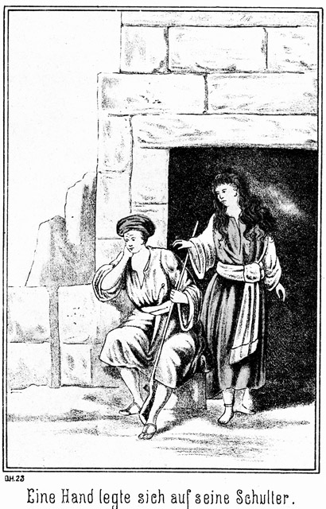O doch! Denn plötzlich legte sich eine Hand auf seine Schulter, so plötzlich und unerwartet, daß er erschrocken zusammenfuhr, denn er hatte nicht das leiseste Geräusch eines nahenden Schrittes gehört.
»Fürchte Dich nicht, Tarik! Ich bin es,« sagte sie leise.
»Du, o Königin! Warum fliehst Du den Schlaf?«
»Aus Angst und Sorge.«
»Was sollte Dich beängstigen? Gerad seit heute hast Du keine Veranlassung mehr, irgend eine Sorge zu haben.«
»Glaubst Du?«
»Ja. Der mächtige Vicekönig ist Dein Freund. Er hat Dir Gewehre und Munition gesandt, um diese Freundschaft zu besiegeln. Der Stamm ist dadurch um das Zehnfache mächtiger geworden; er ist der mächtigste in der Umgebung vieler Tagereisen. Mit diesen dreihundert Gewehren können wir uns alle Feinde unterthänig machen.«
»Nur Falehd nicht!«
»Dazu bedarf es ja dieser Gewehre gar nicht. Er hat gegen Drei zu kämpfen. Einer wird ihn doch besiegen.«
»Vielleicht, vielleicht auch nicht! Selbst wenn ihn der Dritte besiegen sollte, sind die beiden Ersten bereits verloren. Wer wird sein erster Gegner sein?«
»Der Fremde. Falehd hat es ihm selbst gesagt.«
»Das ist Allah's Schickung!«
»Wieso?«
»Dieser Fremde ist ein herrlicher Mann. Es thut mir daher im tiefsten Herzen weh, daß er sterben soll; aber er scheint stark zu sein; bevor er besiegt sein wird, wird er einen solchen Widerstand geleistet haben, daß Falehd Dir und Deinem Bruder nur noch mit halben Kräften gegenübersteht. Vielleicht ist es dann möglich, daß er doch besiegt wird.«
»Natürlich werde ich kämpfen, so lange ich es vermag.«
»Wer wird der Zweite sein? Du oder Hilal?«
»Ich.«
»O Allah! Warum Du?«
»Ich – – ich bin der Aeltere.«
Fast hätte er gesagt: Ich bin ja Derjenige von uns Beiden, der Dich lieb hat; darum trete ich eher vor.
»Entscheidet denn das Alter?«
»Ja.«
»Könntest Du nicht warten bis zuletzt?«
»Warum sollte ich das?«
»Um Dich zu schonen.«
Sie stand ganz nahe an ihm. Ihr weißes, dünnes Gewand stach leuchtend von den dunklen Steinmassen ab. Er hörte ihren Athem, er fühlte sogar die Lebenswärme, welche ihr schöner, jungfräulicher Körper ausstrahlte. Es war ihm so süß und doch auch so traurig zu Muthe. Wo stand er morgen um diese Zeit? Wahrscheinlich lag er da bereits mit zerschmettertem Schädel unter dem Sande der Wüste! Doch schüttelte er diesen Gedanken von sich ab und antwortete:
»Um mich zu schonen? Fast sollte ich Dir zürnen.«
»Weshalb?«
»Nur ein Feigling kann sich schonen.«
»Ich wollte Dich nicht beleidigen. Verzeihe mir!«
Sie hielt ihm das kleine, hellbraune Händchen hin, und als er es ergriff, war es ihm, als ob alle Wonnen und Freuden des Paradieses ihn durchzuckten. Und dennoch behielt er es nicht in der seinigen. Sie stand so hoch über ihn! Nicht daß sie reich war, machte ihn zurückhaltend; o nein; der Sohn der Wüste verachtet den Reichthum. Aber sie war so schön, so gut, so rein. Sie war für ihn der Inbegriff alles Hohen, Erhabenen und Herrlichen. Wie hätte er seine Wünsche so hoch steigen lassen können! Er wußte, daß der verstorbene Scheik sie nie hatte berühren dürfen. Würde sie einem Anderen, würde sie – – ihm, ihm ihre Liebe schenken können? Nein, nein und abermals nein!
Er gab ihr ihr Händchen zurück, legte den Ellbogen auf die Brüstung und den Kopf in die Hand. Er richtete das Gesicht nach oben, nach dem Firmamente, als ob er da die leuchtenden Punkte desselben schauen wolle. Aber er sah nicht hinauf. Sein Auge hing in Entzücken und doch auch in tiefer Wehmuth an dem Sterne, welcher neben ihm stand.
So waren sie Beide eine ganze Weile still. Auch sie sah hinauf zum Himmel. Da fiel eine Sternschuppe.
»Hast Du ihn gesehen?« fragte sie.
»Wen? Was?«
Er hatte ja nur sie gesehen, nur sie.
»Es fiel ein Stern.«
»Ich sah ihn nicht.«
»Weißt Du, was das bedeutet?«
»Ja. Wenn ein Stern fällt, ist ein Mensch gestorben.«
»Nur dann, wenn der Stern über den Horizont hinunterfällt. Aber schau! Sahst Du das?«
»Nein.«
»Ich denke. Du betrachtest die Sterne!«
»Nur einen, einen einzigen!«
»Es fiel wieder einer, hielt aber mitten im Falle inne und blieb dann stehen. Weißt Du, was das bedeutet?«
»Nein.«
»Dann hat Allah einen Menschen von einer Stelle hinweg genommen und an eine andere gesetzt. So werden arme Soldaten zu Pascha's, oder niedrige Schreiber zu Effendi's.«
»Aber auch reiche Männer zu Bettlern!«
»Ja. Es kommt darauf an, ob der Stern fällt oder steigt.«
Wieder schwiegen Beide, bis Tarik bemerkte:
»So hat also ein jeder Mensch seinen eigenen Stern!«
»Seinen Lebensstern!«
»Welcher mag der meinige sein?«
»Und der meinige. Weißt Du, daß die Sterne zweier Menschen, welche Mann und Weib werden, sich einander nähern, bis sie sich endlich gar vereinigen?«
»Ich habe davon gehört.«
»Da oben, gerade über uns, sind zwei, welche ganz gewiß noch in einander fließen. Wem sie wohl gehören mögen?«
Wieder trat eine Pause ein. Sie hatten über der Betrachtung des Firmamentes fast ihre irdischen Verhältnisse vergessen. Da fragte Badija:
»Sage mir, Tarik, warum Du morgen gegen den Riesen kämpfest!«
»Um Dich zu befreien.«
»Das ist der Grund?«
»Ja.«
Sie senkte das kleine, charakteristische Köpfchen. Fast war es ihr, als ob sie ihm schmollen müsse. Er hätte doch eigentlich anders antworten können! Warum sagte er denn nicht: Ich kämpfe mit ihm, weil ich Dich liebe! Und nun war er gar wieder still geworden. Es ist nicht gut und erfreulich, wenn man mit einem Menschen sprechen will, so recht von ganzem Herzen, und er fällt nach einem jeden Worte wieder in tiefes Schweigen.
»Wenn Du nun gewännest!« sagte sie.
»Was meinest Du?« umging er die schwierige Antwort.
»Nun, man kämpft ja um mich!«
»Wenn ich gewänne, so würdest Du frei sein!«
»Warum?«
»Wie fragest Du doch nur! Ich kämpfe ja, um Dich von Falehd zu befreien. Uebrigens werde ich wohl nicht der Sieger sein. Wird Falehd wirklich überwunden, so ist es der Fremde, welcher ihn besiegt. Hilal sagte es auch.«
»Warum sagte er es?«
»Er hat mir anvertraut, daß dieser Masr-Effendi vielleicht noch stärker ist als Falehd. Er hat ein halb wildes Pferd bei den Nüstern ergriffen und zu Boden geworfen, daß es sich zweimal überschlug. Und der andere Fremde, Normann-Effendi, hat erzählt, daß Masr-Effendi auf dem Schiffe den eisernen Anker ergriffen, emporgehoben und dann umhergetragen habe.«
»O Allah! Wenn er siegte!«
»Wäre Dir das lieb?«
»Wie lieb! Wie sehr lieb!«
Tarik fühlte einen Stich in seinem Herzen. Er sagte:
»Ja, er ist ein stolzer und sehr schöner Mann!«
Badija antwortete nicht; darum fügte er hinzu:
»Und ein reicher und vornehmer Mann!«
»Warum sagst Du das?«
»Hm! Es wird ja um Dich gekämpft!«
Das waren ihre eigenen Worte, welche sie vorhin gesagt hatte. Es war ihr ganz so, als ob eine kleine, gelinde Art von Zorn in ihr emporwallen wolle. Sie wendete sich unmuthig ab und meinte:
»Du bist bös!«
»Ich? Wieso?«
»Weil Du solche Worte sagst!«
»Sie enthalten die Wahrheit. Wenn er Sieger wird, so mußt Du sein Weib werden.«
»Nimmermehr!«
»O, Du mußt!«
»Lieber sterbe ich!«
Da richtete er sich empor und blickte sie erstaunt an.
»Lieber sterben? Ist er der Mann dazu? O nein. Ich halte es für unmöglich, daß ein Mädchen lieber den Tod als ihn wählen könne.«
»Ich aber würde es thun!«
»Warum?«
Sie zögerte, stieß aber doch dann hervor:
»Ich mag nicht wieder einen Mann, den ich nicht liebe!«
»So könntest Du diesen wirklich nicht lieben?«
»Nein.«
»Und doch hat er alle Eigenschaften, welche dazu gehören, die Liebe eines Weibes zu erringen. Fast möchte ich glauben, daß Du niemals einen Mann lieben wirst.«
»Das ist bös von Dir, sogar grausam.«
»Wie! Du könntest lieben?«
»Ja, und so innig wie keine Andere!«
»Du liebst vielleicht schon gar?«
Sie wendete sich zur Seite, flüsterte aber doch ein Wort, welches er hörte.
»Habe ich recht gehört?« fragte er. »Du sagtest: Ja? Du liebst bereits?«
»Ja.«
Da riß es ihm die Hände förmlich an sein Herz. Es war, als ob dasselbe ihm zerspringen wolle, als ob er im nächsten Augenblicke ersticken müsse. Er bedurfte alle Anstrengung, um das fragende Wort hervorzubringen:
»Wen?«
Sie schwieg.
»Badija! Königin! Willst Du nicht antworten? Darf ich nicht wissen, wer es ist?«
»Du darfst,« hauchte sie.
Da, wirklich, da wagte er es in seiner Aufregung: Er ergriff ihre beiden Hände und bat in zwar leisem, aber desto flehenderem Tone:
»Sage es mir!«
»Das ist ja gar nicht nothwendig!«
»Warum nicht?«
»Weil Du es ahnen und erraten kannst.«
»Nur Allah ist allwissend. Sage es, sage es!«
Sie zögerte noch immer. Die weibliche Scheu sträubte sich dagegen, das erste Wort zu sagen. Da ließ sich von der Seite her ein Geräusch vernehmen.
»Hilal kommt!« drängte Tarik. »Hörst Du ihn? Bei allen Propheten und Kalifen, ich beschwöre Dich, mir zu sagen, wer es ist, Dem Du Dein Herz geschenkt hast!«
Da näherte sie ihr Gesichtchen dem seinigen. Ihre Augen leuchteten ihm entgegen, fast wie in phosphorescirendem Glanze, und aus ihrem Munde klang es zu ihm herüber:
»Das weißt Du wirklich nicht?«
»Nein.«
»Wirklich, wirklich nicht?«
*
»Nein, nein.
»Du bist es doch. Du, Du allein, ganz allein!«
Dabei schlang sie die vollen Arme um ihn, legte ihr Köpfchen an sein Herz und fragte:
»Ich? O – ah – ei – – – –«
Er brachte keine Antwort hervor.
»Liebst Du mich denn nicht auch?«
»Dich?« fragte er, wie abwesend.
»Mich, ja!«
»Mehr als mein Leben und meine Seligkeit!« entfuhr es ihm.
»Das wußte ich schon lange!«
Sie legte ihre warmen, vollen Lippen auf seinen Mund; ein Druck, ein süßer, knisternder Laut, und dann sprang sie gedankenschnell davon, denn dort, hinter den Steinen, ließ sich soeben Hilals weißer Burnus sehen.
»O Muhammed! O Allah! O Erde! O Welt! O Seligkeit! O – o – – o – – – ohhhhh!«
So stieß Tarik heraus. Er wußte gar nicht, was er sagte. Er wußte jetzt überhaupt gar nicht, wer er war, und wie ihm war. Er wußte nur, daß sie ihm gesagt hatte, daß ihr Herz ihm gehöre.
Und da stand jetzt Hilal und sagte:
»Tarik!«
Er antwortete nicht.
»Tarik!«
»Oh!«
»Was sagst Du?«
»Oh! Ah!«
»Was ist mit Dir?«
»O Allah!«
»Bist Du delil?«
»Nein.«
»Oder hejran?«
»Ja.«
Delil heißt nämlich verrückt, hejran aber verzückt.
»Hejran also! Worüber denn?«
»Oh!«
»Hörst Du nicht? Worüber Du verzückt bist?«
»Ah!«
»Da steht der Mensch mit aufgerissenen Augen, starrt mich und dann den Himmel an und ruft nur Oh oder Ah! So rede doch endlich! Was hat Dich so verzückt gemacht?«
»Oh Allah, Allah!«
»Allah ist's gewesen?«
»Nein.«
»Wer denn?«
»Oh! Ah! Allah illa Allah!«
»Gott, mein Gott, der Mensch schnappt über! Ich sah ein weißes Gewand, welches verschwand. War Jemand da?«
»Wer?«
»Sie.«
»Wer ist diese Sie?«
»Sie, o sie, nur sie!«
»Etwa die alte Beni Abbas, welche wir mit Hiluja hierher gebracht haben?«
»Nein, nein, sondern die Königin.«
»Die Königin! Was wollte sie noch?«
»Es mir sagen.«
»Was?«
»Was ich nicht geglaubt und nicht geahnt habe.«
»Was hast Du denn nicht geahnt?«
»Daß sie mich liebt.«
Da seufzte Hilal erleichtert auf:
»Allah sei Dank! Jetzt weiß ich endlich, woran ich bin. Also das hat sie Dir gesagt?«
»Ja.«
»Und Du hast es nicht geahnt?«
»Nein, nie!«
»Ich habe es lange gewußt. Hast Du denn auch ihr gesagt, daß Du sie liebst?«
»Fast nein.«
»Fast nein? Tarik, Bruder, mach doch keine Dummheiten! Komm doch zu Dir! Du sprichst ja ganz so, als ob Du ein Fieber hättest.«
»Ich habe es!«
»Allah!«
»Ja, ich habe es, das Liebesfieber!«
»Nun, das wird sich legen! Also sage mir, ob Du auch ihr gesagt hast, daß Du sie liebst!«
»Sie fragte mich.«
»Weiter, weiter! Dieser Mensch hat das Antworten ganz verlernt. O Liebe, Liebe, Liebe!«
»Ja, Liebe, Liebe und zum dritten Male Liebe!«
»Schrei nicht so! Die Kameele und Schafe da unten brauchen nicht zu hören, welches Fieber Du hast! Antworte lieber!«
»Ja, ja!«
»Was denn, ja?«
»Ich habe es ihr gesagt.«
»Endlich, endlich! Allah sei gepriesen. Ihr seid also mit einander einig?«
»Ja, ja, ja, ja!«
»So gehe und lege Dich auf die Matte, um zu schlafen!«
»Nein, nein, nein, nein!«
»Was denn? Der Schlaf wird Dir Dein Gehirn am Besten wieder in Ordnung bringen.«
»Schlafen? Welch' eine Sünde! Ich könnte nicht schlafen, selbst wenn es sich um mein Leben handelte. Ich muß wachen, muß jauchzen, muß jubeln!«
»Pst. Still! Du hast zu schweigen. Es darf jetzt noch kein Mensch wissen, was geschehen ist und geschehen soll!«
»Nicht!? Aber es wird mir die Brust zersprengen, wenn ich es nicht laut hinausschreien kann!«
»Thue das später, vielleicht dann, wenn sie bereits zehn Jahre lang Deine Frau gewesen ist.«
»Spötter! Sünder! Herzloser Mensch!«
»Heute aber darf es Niemand hören!«
»Niemand? Gut, gut! Ich sehe mich auf mein Pferd und reite hinaus in die Wüste. Dort kann ich schreien und brüllen und rufen und jubeln, so viel wie ich will, ohne daß es Jemand hört.«
»Du bist verrückt!«
»Ja, beinahe!«
»Allah schütze Dich!«
»Er hat mich bereits beschützt! Er hat mir das größte Glück des Himmels und der Erde gesandt. Ich gehe. In einer Stunde bin ich wieder hier. Ich muß fort, wirklich fort, hinaus in die Wüste. Ich muß jubeln: sie liebt mich sie – sie – sie – –!«
Er war gegangen, so daß seine letzten Worte kaum noch hörbar hinter den Quadersteinen hervordrangen.
Hilal schüttelte den Kopf und flüsterte:
»Ich gönne es ihm! Er ist selig, der gute, gute Bruder. Er weiß vor Glück weder ein noch aus und ist im Stande, die größten Dummheiten zu machen. Was ist die Liebe doch für ein närrisches Ding! Ihn, den Ernsten und Bedächtigen, so zu verändern. Mit mir brächte sie das nicht fertig, nein – nein – gewiß! Ich würde ganz ernsthaft dabei sein, sehr ernsthaft!«
»Warum so ernsthaft?«
Er fuhr erschrocken herum. Er war ganz und gar überzeugt gewesen, allein zu sein. Er hatte seine letzten Worte nicht mehr blos gedacht, sondern wirklich ausgesprochen, und – – sie waren gehört worden. Vor ihm stand Hiluja's weiße, jugendliche Gestalt.
»Du bist es, Du?« fragte er, freudig erstaunt.
»Ja.«
»Und Du hast mich belauscht?«
»O nein. Als ich heraustrat, sagtest Du »sehr ernsthaft«, und darum fragte ich Dich.«
»Weiter hast Du nichts gehört?«
»Nein.«
»Wirklich, wirklich nicht?«
»Kein Wort. Es muß sich um etwas sehr Wichtiges handeln, da Du so besorgt bist, daß ich nichts gehört haben möge!«
»Es ist auch wirklich wichtig, sehr wichtig!«
»Wohl auch verschwiegen und geheimnißvoll?«
»Ja.«
»So daß ich es nicht erfahren darf?«
»Eigentlich darfst Du es nicht wissen.«
»Wenn ich es aber nun gern wissen möchte?«
»Ich würde ein Verräther sein.«
»O, ich verzeihe es Dir. Also sage es mir, um was so sehr Geheimnißvolles es sich gehandelt hat.«
»Um die Liebe.«
Er hatte es eigentlich nicht sagen wollen; nun war ihm das Wort aber doch entflohen. Jetzt war ihm um die Folgen bange.
Er hatte seit jenem Abend in Kairo auf der Dampfyacht des Engländers nicht wieder Gelegenheit gefunden, mit Hiluja allein zu sprechen. War sie ihm absichtlich ausgewichen oder nicht; er wußte das nicht zu sagen.
Erst war es ihm gewesen, als ob er sich über dieses Gespräch freuen solle; bald aber erinnerte er sich der großen Offenheit, mit welcher sie ihm gestanden hatte, daß sie beim Anblicke Steinbachs gefühlt habe, dies sei der Mann, den sie lieben könne. Dieses Geständniß machte ihm nachträglich große Schmerzen; es that ihm wehe, sehr wehe; es that ihm um so weher, je mehr und länger er darüber nachsann und grübelte.
Der gute Hilal war ein braver, tapferer Sohn der Wüste, aber kein Menschenkenner, kein Psycholog. Es kam ihm der Gedanke, daß er sich über das so offene Geständniß des schönen Mädchens nur zu freuen habe, gar nicht in den Sinn. Daß sie nur in Folge eines ganz ungewöhnlichen Vertrauens und einer herzlichen Zuneigung so zu ihm gesprochen haben könne, das sagte er sich nicht. Er war vielmehr der Ansicht, daß man ein solches Geständnis nur einem ganz und gar gleichgiltigen Menschen machen könne. Darum zog er sich in sich zurück und vermied Hiluja's Nähe. Desto heißer und mächtiger aber loderte die Liebe in seinem Innern, welches sie ganz erfüllte.
Während der Reise nach den Beni Sallam hatten sich die Beiden natürlich gesehen, auch das Nothwendige mit einander gesprochen, waren sich aber innerlich scheinbar fern geblieben. Er war vollständig überzeugt, daß sie nicht eine Spur von Zuneigung für ihn hege, und darum ärgerte er sich jetzt, daß er das verhängnißvolle Wort ausgesprochen hatte.
»Um die Liebe handelte es sich?« fragte sie. »Und das war so ernst? Also war es eine unglückliche Liebe?«
»Nein, eine sehr glückliche.«
»Warum war da so sehr viel Ernst dabei?«
»O, der Ernst war ja auf meiner Seite!«
»So warst der Liebende wohl nicht Du?«
»Nein.«
»Schon glaubte ich, es handele sich um Dich.«
»Nein, sondern um meinen Bruder.«
Auch das hatte er nicht sagen wollen. Aber wie das herrliche Wesen so licht und engelgleich vor ihm stand, war es ihm, als sei die Thüre seines Herzens so weit offen, daß sie tief, tief hineinschauen könne. Konnte er ihr da Etwas verschweigen? Sicherlich nicht!
»Dein Bruder also hat eine Liebe?«
»Ja.«
»Gewiß ein Mädchen der Beni Sallah.«
»Nein, o nein!«
Er hatte den schalkhaften Zug nicht bemerkt, welcher um ihre schön gezeichneten, vollen Lippen zuckte.
»Also eine Fremde?«
»Ja und nein. Sie ist eine Wittwe, welche früher zu einem anderen Stamme gehörte, und erst seit ihrer Verheirathung eine Beni Sallah ist.«
»Eine Wittwe?« fragte sie im Tone des Erstaunens. »Habt Ihr hier so wenig junge Mädchen, daß ein so berühmter Krieger, wie Tarik ist, sein Auge auf die trauernde Frau eines Verstorbenen richten muß?«
»O, diese Wittwe ist wunderbar schön!«
»Ah! So ist er wohl ganz entzückt?«
»Er war nicht nur entzückt, sondern ganz und gar verzückt, als ich eben kam, um ihn abzulösen.«
»Jetzt eben? So hat er wohl erst kürzlich an sie gedacht?«
»Sogar mit ihr gesprochen.«
»Wie ist er da zu beneiden!«
»Ach ja!« entfuhr es ihm seufzend.
»Darf ich wissen, wer sie ist?«
»Vielleicht. Aber ehe ich es Dir sagen kann, muß ich ihn natürlich erst fragen.«
»Das ist lobenswerth. Ein Mann muß verschwiegen sein.«
»Ein Weib nicht?«
»Wir sollen es auch, aber wir sind es weniger. Wir sind so offenherzig, daß wir Alles mittheilen. Ist das ein Vorzug oder ein Fehler?«
»Zuweilen ein Vorzug, meist aber ein Fehler.«
»Das Letztere ist zu beklagen. Aber Allah muß es doch so gewollt haben, sonst hätte er uns anders geschaffen. Ich werde mir dennoch Mühe geben, gerade so verschwiegen zu sein, wie Du, obgleich ich Dir auch etwas sehr, sehr Wichtiges mitzutheilen habe.«
»Wie? Du?«
»Ja, ich Dir!«
»So sage es.«
»Nein. Du würdest sagen, daß ich die Tugend der Verschwiegenheit nicht besitze.«
»Ist es denn in dieser Angelegenheit so nöthig, die Verschwiegenheit zu bewahren?«
»Vielleicht.«
»Um was handelt es sich?«
»Um die Liebe.«
»Ach, wie bei mir.«
»Ja, ganz so.«
»Ich errathe es.«
»Nun, was erräthst Du?«
»Du willst mich um Rath fragen.«
»Um Rath? Dich? Hm! Warum denkst Du das?«
»Du willst gern erfahren, ob er Dich wieder liebt.«
»Er? Mich? Wen meinst Du?«
»Masr-Effendi.«
»Allah 'l Allah! Er soll mich lieben?«
»Wünschest Du das nicht?«
»Warum sollte ich es wünschen?«
»Weil Du ihn liebst.«
Es that ihm wehe, mit solchen Worten sich selbst zu verwunden. Er blickte darum ernst, fast düster vor sich nieder. Darum bemerkte er die schalkhaften Geister nicht, welche sich auf ihrem Gesichtchen Rendez-vous gaben.
Sie lehnte sich neben ihn an die Brüstung, faltete die kleinen Händchen klatschend in einander und sagte:
»Ich liebe ihn? Diesen Mann? Woher weißt Du das?«
»Du selbst hast es mir gesagt.«
»Wann?«
»In Kairo, auf dem Schiffe.«
Sie sann einige Augenblicke nach und sagte dann:
»Jetzt besinne ich mich. Ich habe Dir gesagt, daß Steinbach-Effendi der Mann sei, den ich lieben könnte.«
»Ja, das sagtest Du.«
»Aber, daß ich ihn nun auch wirklich liebe, habe ich das gesagt?«
»Nein,« antwortete er zögernd.
»Du siehst also, daß ich Deines Rathes, von welchem Du vorhin sprachest, nicht bedarf.«
»So liebst Du ihn nicht?«
»Nein.«
»O Allah, Allah!« sagte er, indem sich seine Brust ganz erleichtert hob und senkte.
»Du seufzest! Was schmerzt Dich so?«
»Es war kein Schmerz, sondern –« Freude, hätte er fast gesagt; doch besann er sich noch und fuhr fort – – »Verwunderung darüber, daß ich mich so irren konnte.«
»Ja, geirrt hast Du Dich da allerdings sehr.«
»Ich? Muß ich denn auf alle Fälle lieben?«
»Du sagtest doch, daß es sich um die Liebe handele?«
»Aber doch nicht um die Meinige.«
Jetzt wurde es ihm noch viel, viel leichter.
»Also nicht! Von wessen Liebe hast Du denn gesprochen?«
»Das darf ich Dir nicht eher sagen, als bis ich sie gefragt habe.«
»Wen?«
»Meine Schwester.«
»Von ihrer Liebe also redest Du?«
»Woher weißt Du das?«
»Weil Du ihren Namen genannt hast.«
»Habe ich das? Wirklich? O wehe! Das habe ich doch nicht gewollt! Nun ist's verrathen!«
»Es schadet nichts, ganz und gar nichts. Ich weiß es schon.«
»So? Weißt Du auch, wen sie liebt?«
»Ja.«
»Von wem?«
»Von ihm selbst. Als ich vorhin kam, stand er hier, wo ich stehe und sagte nichts als Ah und Oh und Allah!«
»Sonderbar!«
»Dann sagte er weiter: ›Sie liebt mich, sie, sie, sie!‹«
»Höchst sonderbar, sehr, sehr sonderbar!«
»Was?«
»Daß es so stimmt, fast wörtlich.«
»Willst Du mir nicht sagen, was so wörtlich stimmt?«
»Ganz gern, da Du einmal alles Andere weißt. Ich hatte mich mit der Schwester zur Ruhe gelegt. Sie warf sich von einer Seite auf die andere; sie konnte nicht schlafen, stand von ihrem Teppich auf und verließ die Stube. Sie mochte denken, ich schlafe und bemerkte also ihre Entfernung nicht. Erst nach längerer Zeit kam sie wieder. Es war finster; dennoch aber ging sie hin und her und flüsterte dabei vor sich hin. Weißt Du, was sie dabei sagte?«
»Was?«
»Immer nur Ah und Oh und Allah!«
»Ganz wie mein Bruder.«
»Dann murmelte sie: Er liebt mich; er liebt mich, er, er, er – er!«
»Ganz wie er; genau so.«
»Ja; nur mit dem Unterschiede, daß er »sie« sagt, und sie sagt »er«. Nicht?«
»Ja.«
»Weißt Du, was ich mir jetzt denke?«
»Nun, was denn?«
»Sie ist es, von welcher er spricht, und er ist es, von welchem sie redet. Meine Schwester und Dein Bruder lieben einander. Meinst Du nicht?«
»Nun, da Du es doch ahnst, werde ich es Dir sagen. Ja, sie lieben sich und haben das vorhin einander gestanden.«
»Allah segne sie. Du aber fandest diese Liebe so ganz und gar ernsthaft!«
»O, nicht die Liebe war gemeint. Mein Bruder war so verzückt, daß er sagte, er müsse sein Glück hinausschreien in die Wüste. Er hat sich auf das Pferd gesetzt und ist im Galopp davongeritten. Ich hörte es. Da dachte ich, daß ich ernster sein würde, wenn ich einmal das Glück hätte, geliebt zu werden.«
»Bis jetzt hast Du es wohl nicht?«
»Nein.«
»Hast Dich wohl auch nicht darnach gesehnt?«
»Was würde mir eine solche Sehnsucht nützen, da sie mir ja doch nicht erfüllt werden kann.«
»Ist das Letztere so gewiß?«
»Ja.«
»So ist es also doch so, wie ich vorhin dachte und sagte: Dein Herz gehört einem Mädchen, welches Dich nicht liebt. Habe ich es errathen?«
Er wendete sich ab und schwieg. Sie aber folgte ihm einen Schritt nach und sagte:
»Du darfst mir nicht zürnen, wenn ich zudringlich erscheine. Du warest in Kairo mein Retter, und ich mag Dich nicht rathlos und unglücklich sehen. Habe Vertrauen zu mir, und sage mir, ob ich Dir in dieser Angelegenheit nicht vielleicht nützlich sein kann.«
»Nein, Du nicht.«
»Warum gerade ich nicht?«
»Gerade dies ist es, was ich nicht sagen kann.«
»Ah, Du fürchtest Dich!«
Sie hatte die Arme über der Brust gekreuzt und stand hoch aufgerichtet vor ihm. Das Sternenlicht fiel wie dünnflüssiges Silber auf sie herab. Sie hatte das Aussehen einer Venusstatue, in welche Allah plötzlich menschliches Leben gehaucht habe. Er wendete den Blick von ihr ab, sonst hätte er sich nicht länger zu beherrschen vermocht, und sagte in bitterem Tone:
»Fürchten? Das glaubst Du selbst doch nicht.«
»Ich glaube es nicht nur, sondern ich bin sogar davon überzeugt. Du fürchtest Dich!«
»Ah! Vor wem?«
»Vor mir.«
»Wieso?«
»Du fürchtest Dich, mir den Namen Derjenigen zu sagen, welche Du liebst. Gestehst Du das?«
»Nein. Du irrst.«
Es widerstrebte seinem Mannesstolz, zuzugeben, daß sie Recht habe. Sie wendete sich mit einer raschen, scharfen Bewegung ab, trat an die Brüstung und kehrte ihm den Rücken zu. Er stand abgewendet von ihr. In seinem Innern arbeitete es stürmisch. Sollte er sich von ihr verachten lassen? Das that ja tausendmal weher, als die Verachtung aller anderen Menschen.
»Warum wendest Du Dich ab von mir?« fragte er. »Ich weiß nichts was ich gethan hätte, Deinen Zorn zu erregen.«
»Zorn? O, Zorn ist es nicht.« antwortete sie leise.
»Was Anderes denn?«
»Trauer.«
»Nicht Du bist es, sondern ich bin es, der Veranlassung hat, zu trauern. Du hast mir Furcht vorgeworfen. Jeden Anderen würde ich für diesen Schimpf niederschießen, von Dir aber muß ich ihn ruhig hinnehmen. Wer sich fürchtet, der ist feig; aber nicht Alles, was wie eine Furcht oder Angst aussieht, ist eine Feigheit. Man verlangt Muth und Tapferkeit von jedem Manne, von jedem Krieger, aber der Muth darf nicht zum Uebermuthe werden. Die wahre Tapferkeit ist mit weiser Besonnenheit gepaart. Auch der Muthige muß die Gefahr, vor welcher er sich befindet, sorgfältig abwägen. Ist sie größer als seine Kraft, so wird er es unterlassen, sich mit ihr zu messen, und nicht auf die Summe des Unverständigen hören, der ihm darob Feigheit und Furchtsamkeit vorwirft.«
Er hatte in ruhigem Tone gesprochen, mehr als ob es ihm selbst, anstatt ihr gelte. Jetzt wartete er die Wirkung seiner Worte ab. Hiluja drehte sich langsam nach ihm um und sagte:
»Deine Worte sind sehr hart gegen mich.«
»Wieso?«
»Du nennst mich unverständig.«
»Nein; das habe ich nicht gethan.«
»O doch! Nach Dem, was Du gesprochen hast, befindest Du Dich vor einer Gefahr, welche größer ist, als Deine Kraft. Nenne mir diese Gefahr, dann will ich glauben, daß Du keine Furcht besitzest.«
»Es ist die Gefahr, Dich zu beleidigen.«
»Hältst Du das wirklich für etwas so sehr Schlimmes?«
»Ja. Es giebt für mich nichts Böseres, als Deine Freundschaft zu verlieren.«
»Die wirst Du stets besitzen. Du bist mein Retter.«
»Gerade weil Du mich so oft Deinen Retter nennst, darf ich Dir nicht sagen, wen ich liebe. Du glaubst, mir Dank schuldig zu sein; darum muß ich jede Veranlassung meiden, Dich an diese Dankbarkeit zu erinnern.«
»Das ist sehr unrecht von Dir gehandelt. Die Dankbarkeit hat den Trieb, sich zu erweisen. Man darf ihr die Gelegenheit dazu nicht nehmen. Das ist ganz so grausam, als wenn man dem Dürstenden das Wasser vom Munde wegnimmt. Es giebt Leute, welche vom Danke nichts wissen wollen; sie meinen dabei, sehr edelmüthig und selbstlos zu handeln. Aber sie handeln gerade im Gegentheile höchst selbstsüchtig. Wer den Dank für eine gute That von sich weist, der nimmt dieser That ihren ganzen Werth. Das merke Dir!«
Sie hatte mit einer leisen, aber doch vernehmbaren Bitterkeit gesprochen. Er fühlte das und antwortete:
»Ich gebe Dir Recht. Aber wie nennst Du den Mann, welcher ganz zufällig einem Andern einen kleinen Dienst erweist und nun diese Gelegenheit eifrig ergreift, einen viel, viel größeren Gegendienst zu verlangen.«
»Dieser Mann ist sehr unverständig.«
»Gut. Und ich will nicht für unverständig gehalten werden.«
»Bezieht sich das auf meine Dankbarkeit?«
»Ja.«
»So gilt es einen Dienst Dir zu erweisen, welcher viel größer ist, als derjenige, welchen ich Dir zu danken habe?«
»Ja. Und damit Du siehst, daß ich wirklich nicht feige und muthlos bin, will ich Dir Alles sagen.«
Jetzt hatte sie sich wieder voll zu ihm gewendet.
»Ja, sage es!« nickte sie ihm zu. »Es ist besser, wenn Du Vertrauen zu mir hast.«
»Ich werde mich aber um das Deinige bringen.«
»O nein; das wirst Du stets besitzen, obgleich – ich Dir eigentlich zürnen und gar nicht mit Dir sprechen sollte.«
»Ah! Warum?«
»Weil Du Dich seit jenem ersten Tage in Kairo gar nicht mehr um mich bekümmert hast. Du hast ganz so gethan, als ob ich gar nicht mehr vorhanden sei.«
»Das wird Dir doch nur lieb gewesen sein.«
»Meinst Du?«
»Ja. Aber Du hast Dich getäuscht. Du warst sehr wohl für mich vorhanden; Du warst nicht nur vorhanden, sondern Du warest viel, viel mehr für mich. Ich hatte noch nie ein Mädchen gesehen, welches ich mit Dir vergleichen könnte. Du warest in mein Leben eingetreten wie ein Stern, welcher einzig und allein am dunklen Himmel steht. Kann der arme Sterbliche die Hand nach einem Sterne ausstrecken? Nein, das wäre Wahnsinn. Er wird ihn ja niemals erreichen und ergreifen können. Darum blieb ich in Demuth fern von Dir; aber ich betete zu meinem Sterne, und ich weiß, daß er das einzige Licht meines Lebens ist. Wenn er mir verschwindet, so wird es finstere Nacht um mich sein bis zum letzten Augenblicke meines einsamen Daseins. Und doch wird er mir verschwinden, nicht später, nicht bald, sondern jetzt in diesem Augenblicke. Ich habe Dich so unaussprechlich lieb. Der Gedanke an Dich ist die einzige Nahrung, von welcher jetzt meine Seele lebt. Ja, Du bist es, von welcher ich vorhin sprach, als ich von meiner Liebe redete. Das will ich Dir gestehen, damit Du mich nicht länger für einen Feigling hältst. Aber indem ich es Dir sage, weiß ich auch, daß mein Stern nun untergeht. Wäre ich von Allah mit Macht und Reichthum gesegnet, so legte ich Dir alle meine Macht und alle meine Schätze zu Füßen. Du solltest auf Diamanten und Rubinen wandeln, und alle meine Unterthanen müßten im Staube vor Dir liegen. Für Dich wäre mir nichts zu hoch und nichts zu tief. Du bist so schön, so herrlich, daß – daß – – daß – o Allah, Allah!«
Von der Größe seines Gefühles übermannt, wandte er sich schnell ab. Sie konnte es nicht sehen, aber sie hörte es seiner Stimme an, daß ihm die Feuchtigkeit des Schmerzes aus der erregten Seele in die Augen getreten war. Sie trat an ihn heran, legte ihm die Hand auf die Schulter und sagte in mildem Tone:
»Nun denkst Du, ich zürne Dir?«
»Ja, Du mußt es ja. Bestrafe mich; bestrafe meine Verwegenheit! Dennoch aber werde ich Dich ewig, ewig lieben.«
»Ja, ich werde diese Verwegenheit bestrafen. Du hast mich beleidigt. Du hast mir Namen gegeben, die ich nicht dulden darf. Du hast mich sogar Deinen Stern genannt!«
»Meinen einzigen.«
»Giebt es wirklich keinen anderen?«
»Nein. Der Himmel des Menschenherzens braucht nur einen Stern; erlischt dieser, dann wird es ewig Nacht.«
»Und dennoch wendest Du Dich von mir ab? Kann Dir ein Stern leuchten, wenn Du nicht nach ihm blickst?«
»Du sprachst von Strafe?«
»Nein, Du! Aber da Du einmal Strafe haben willst, so sollst Du sie auch sofort erhalten. Horch!«
Sie legte ihm plötzlich die Arme um den Nacken, näherte ihren Mund seinem Ohre und flüsterte ihm zu:
»Hilal, wie habe ich Dich so un – un – unaussprechlich lieb!«
Das klang wie Sphärenmusik erlösend in sein Ohr. Von den warmen, nackten Armen, welche ihn umschlangen, und dem vollen Busen, den er an seinem Herzen fühlte, drang eine Wärme zu ihm über, die ihn wie ein magnetischer Strom durchfluthete. Es durchrauschte ihn wie ein Fieber; es brauste ihm durch die Stirn; sein Herz schien zerspringen zu wollen. Er ließ die Arme herabhängen und stand ohne Bewegung, als ob der Schlag ihn getroffen habe.
»Hast Du es gehört?« flüsterte sie fragend und sich noch inniger an ihn schmiegend.
O, er hatte es gehört; sein ganzes Gehör war ja nur auf ihre Worte gerichtet gewesen, so daß es ihm entgangen war, daß gerade jetzt der Hufschlag eines nahenden Reiters sich von unten herauf vernehmen ließ. Sein Bruder Tarink war zurückgekehrt.
»Ist – ist – ist es wahr?« stammelte er.
»Daß ich Dich liebe? Ja, es ist wahr. Glaube es!«
»Du – Du – Du – liebst mich – mich?«
»Von ganzem, ganzem Herzen! Umarme mich!«
Da erhob er die Arme, schlang sie um ihren Leib und – er wußte nicht, wie es kam, aber im nächsten Augenblicke hatten seine Lippen sich mit den ihrigen vereinigt. Aber im nächsten Moment rang sie sich los und sagte erschrocken:
»Dort kommt Einer. Fort, fort!«
Sie verschwand in dem Eingange.
Hilal war wie berauscht. Er wendete sich um und erblickte seinen Bruder, welcher sich rasch näherte.
»Da bin ich zurück, Hilal,« sagte der Letztere.
Keine Antwort. Die Pulse Hilal's klopften so stürmisch, daß er gar nicht an Worte dachte.
»Hilal!«
Oh!«
»Du stöhnst?«
»Ah!«
»Was ist mit Dir?«
»Oh! Ah!«
»Bist Du krank? Was ist geschehen?«
»O Allah, Allah!«
»Ich glaube, jetzt bist Du delil!«
»Nein.«
»Oder hejran?«
»Ja.«
»Also hejran, entzückt! Worüber denn?«
»Oh!«
»Hörst Du nicht? Worüber Du so verzückt bist!«
»Ah! Allah, Allah!«
»Mensch, Du starrst mich so abwesend an! Es muß Etwas mit Dir passirt sein!«
»Ja, Etwas. O Allah illa Allah!«
»Aber was denn?«
»Sie hat es mir gesagt.«
»Sie? Wer denn?«
»Hiluja.«
»Hiluja war da?«
»Ja.«
»Sonderbar! Was hat sie Dir denn gesagt?«
»Daß sie mich liebt.«
»Ist das wahr? Ist das möglich?«
»Ich weiß es nicht.«
»Du weißt es nicht? Mensch, bist Du des Teufels? Du hast es mir ja soeben gesagt!«
»Ja; aber ich weiß nicht, ob ich es glauben darf.«
»Natürlich, wenn sie es gesagt hat.«
»Das hat sie! Und mich umarmt.«
»Und sogar geküßt!«
»Du glücklicher Mann!«
»Da aber kamst Du und sie entfloh mir.«
»Das thut mir herzlich leid; aber ich mußte ja kommen, denn die Stunde ist vorüber. Zwei Brüder und zwei Schwestern, wie herrlich das paßt!«
»Ja, herrlich, herrlich! Mir thut der Kopf weh vor Glück.«
»Ganz so wie vorhin bei mir.«
»Es summt und brummt mir die Ohren.«
»Das war auch bei mir der Fall. Geh, und lege Dich nieder.«
»Fällt mir nicht ein! Ich könnte nicht schlafen.«
»Ruhe ist aber das Beste!«
»Hast Du etwa Ruhe gesucht? Nein, ich mache es wie Du: ich gehe fort und reite. Auch ich muß jubeln.«
»Ganz mein Fall! Na, thue es. Dann wird Dir der Kopf wieder frei werden. Auch ich befand mich wie in einem Rausche. Weißt Du das Verbot des Propheten: Kullu muskürün haran – Alles, was betrunken macht, ist verboten? Dann sollte auch die Liebe verboten sein; denn sie hat mich in einen Rausch versetzt, wie ihn der Wein so groß gar nicht hervorbringen kann.«
»Bei mir ist er so groß, als ob die ganze Sahara nicht ein Sand-, sondern ein Weinmeer sei und ich hätte es ausgetrunken.«
»Man sieht es Dir an. Du wankst ja wirklich.«
»Ja, ich zittere. Ich will fort. In einer Stunde bin ich wieder zurück.«
Er ging. Tarik blickte ihm glücklich lächelnd nach und dachte bei sich:
»Allah hat es sehr wohl gemacht. Das Beste an meinem Glücke ist, daß Hilal grad auch dasselbe Glück besitzt. Zwei Brüder und zwei Schwestern! Gott ist groß! Ihm ist Alles möglich, selbst möglich das Unmögliche. Hilal hat Hiluja und ich habe Badija. Was sie wohl thun wird? Sie wird schlafen. Der Engel des Traumes senke sich sanft und glänzend auf sie nieder und überschütte sie mit seinen süßesten und herrlichsten Geschenken!«
Dieser Wunsch wurde nicht erfüllt, denn Badija schlief nicht und konnte also auch keinen Traum haben. Auch sie war vom Glücke der Liebe wie berauscht gewesen. Darum war sie unter Ah und Oh im Zimmer auf und ab gegangen, meinend, daß Hiluja schlafe und also nichts höre. Dann hatte sie sich allerdings auf den Teppich niedergelassen aber nicht geschlafen. Die leise Entfernung ihrer Schwester sehr wohl bemerkend, hatte sie dennoch gethan, als ob sie schlummere. Sie hatte gefürchtet, durch ein lautes, profanes Wort den Zustand stiller Wonne, in welchem sie sich befand, zu zerstören.
So lag sie eine lange, lange Zeit, bis Hiluja nach fast einer Stunde zurückkehrte. Sie legte sich nicht, sondern sie ging leise hin und her, zuweilen halb unterdrückte Rufe und Laute ausstoßend. Badija hatte das vorher genau ebenso gethan, dachte jetzt aber nicht mehr daran. Bei den Seufzern ihrer Schwester wurde ihr bange. Einem Seufzer, zumal wenn er nur sehr leise ertönt, ist es nicht leicht anzuhören, ob er eine Interjection der Freude oder des Schmerzes ist. Vielleicht war der armen Hiluja etwas Schlimmes widerfahren. Darum wartete Badija noch eine kleine Weile und als das Seufzen dennoch kein Ende nahm, sagte sie:
»Hiluja! Ich wache.«
»Oh!«
»Warum bist Du aufgestanden?«
»Ah!«
»Was ist mit Dir geschehen?«
»O Allah, Allah!«
»Himmel! Bist Du krank?«
»Nein.«
»Aber Du hast Schmerzen?«
»O nein!«
»Du stöhnest doch!«
»Stöhnen? Davon weiß ich gar nichts.«
»Ja, Du seufzt und stöhnst ganz zum Erbarmen.«
»Das ist kaum möglich, denn ich habe zum Stöhnen gar keine Veranlassung.«
»Aber irgend Etwas ist mit Dir.«
»Ja. Es ist ganz dasselbe, was vorhin mit Dir war.«
Da richtete Badija sich aus ihrer liegenden Stellung auf und sagte überrascht:
»Was sagst Du? Ganz dasselbe? Ja, auch ich war vorhin so aufgeregt, aber vor Glück.«
»Ich ebenso.«
»Ich meine das Glück der Liebe.«
»Ich auch. O Badija, Badija, ich habe nie gewußt und geahnt, welche Wonne es ist, geliebt zu werden.«
»Du wirst geliebt? Schwester, ist's wahr? Von wem?«
»Von Hilal.«
»Allah ist groß! Hilal liebt Dich? Hat er es gesagt?«
»Ja, soeben.«
»Gott, Gott! Was hast Du ihm geantwortet?«
»O, ich liebe ihn ja schon längst, gleich von dem ersten Augenblicke an als ich ihn erblickte.«
»Komm, komm! Lasse Dich hier bei mir nieder. Diese Kunde ist so freudig, daß ich Dich umarmen muß!«
Und Hiluja that es. Die beiden schönen Schwestern lagen sich in den Armen und erzählten sich wonnetrunken von ihrem Glücke. Ihr leises, leises Flüstern klang wie das Knistern elektrischer Funken durch den stillen Raum. Sie konnten nicht müde und nicht fertig werden und hatten selbst dann noch keinen Schlaf gefunden, als der Morgenruf des Mueddin von der Ruine herab über die Oase erschallte. Er stand hoch oben, mit dem Brete in der Hand, das Auge fest auf den Punkt gerichtet, wo die Sonne erscheinen mußte. Und als der oberste Rand ihrer glänzenden Scheibe sich über den Horizont erhob, that er drei weithin schallende Schläge an das Bret und rief:
»Ihr Gläubigen, rüstet Euch zum Gebete, denn die Sonne taucht aus dem Sandmeer empor!«
Da traten die Beduinen aus ihren Zelten und knieten nieder, das Gesicht nach Aufgang gen Mekka gewendet und beteten leise die Worte nach, welche der Mueddin laut von oben heruntersprach:
»Im Namen des allbarmherzigen Gottes! Lob und Preis sei Gott, dem Weltenherrn, dem Allerbarmer, der da herrschet am Tage des Gerichts. Dir wollen wir dienen und zu Dir wollen wir flehen, auf daß Du uns führest den rechten Weg, den Weg Derer, die Deiner Gnade sich erfreuen, und nicht den Weg Derer, über welche Du zürnest, und nicht den Weg der Irrenden!«
Dabei tauchten die Beter ihre Hände ein, um sie sich vorgeschriebener Weise zu waschen, mit Wasser oder mit Sand. Dann sprachen sie Alle mit lauter Stimme das muhammedanische Glaubensbekenntnis? nach:
»Allah il Allah, we Muhammed Rassuhl Allah – Gott ist Gott und Muhammed ist sein Prophet!«
Sie erhoben sich nun, um an ihre täglichen Geschäfte zu gehen; aber da ertönte die Stimme des Mueddin von Neuem von oben herab:
»Hört, Ihr Gläubigen, was ich Euch zu verkündigen habe!«
Die Hörer traten in neugierige Gruppen zusammen und erhoben ihre Augen zu dem Verkündiger.
»Ich stehe hier im Auftrage des mächtigen Falehd, dessen vollständiger Name da lautet Falehd Assa Omra Ibn Mi Hebschahn Nobada Ben Sulu Omor Sebuhir Ibn Dawuhd Hilub al Osimbara, und habe Euch Folgendes zu verkünden: An dem Augenblicke, in welchem die Sonne über dem Scheitel des Gläubigen steht, wird Falehd hinausgehen vor die Heerden, um zu kämpfen mit den Männern, welche gestern auf seine Forderung geantwortet haben. Er wird kämpfen zuerst mit Masr-Effendi, sodann mit Tarik, dem Sohne des Blitzes, und endlich mit Hilal, welcher auch ein Sohn des Blitzes ist. Das Ende des Zweikampfes wird sein entweder der Tod, oder das Gebet um Gnade, wie es Brauch ist in der Wüste. Falehd wollte keine Gnade walten lassen, aber er hat sich dem Gesetze des Stammes fügen müssen. Die Söhne und Töchter der Beni Sallam werden sitzen auf ihren Kameelen, um zuzuschauen dem Kampfe von Anbeginn bis er beendet ist. Dem Sieger wird gehören Badija, die Königin der Wüste, und mit ihr wird er erhalten die Würde des Anführers und den Titel eines Scheik el Urdi, welches bedeutet, Herr des Lagers. Allah sei mit ihm und mit uns Allen, jetzt und in Ewigkeit! Amen!«
Steinbach und Normann hatten ihr Schlafgemach verlassen! Sie standen auf der Mauer und hörten diese Bekanntmachung mit an. Dann sagte der Erstere: »Also bis grad um die Mittagszeit habe ich noch zu leben. Gestern um diese Stunde hätte ich nicht gedacht, daß ich so schnell dem Tode geweiht sei.«
»Sie scherzen. Sind Sie Ihrer Sache so gewiß?«
»Kein Mensch ist allwissend. Keiner kann das kleinste und einfachste Ereigniß vorherbestimmen. Der geringste Zufall, irgend eine Kleinigkeit, kann dem Kampf einen ganz unvorhergesehenen Ausgang geben. Zu schwören, daß ich Sieger sein werde, vermag ich also nicht, aber aller Wahrscheinlichkeit nach werde ich es sein.«
»Werden Sie ihn tödten?«
»Nein, sondern nur zeichnen. Dieser Mensch ist nicht nur ein roher Patron, sondern geradezu ein Bösewicht. Sprechen wir nicht von ihm. Ich will mir durch den Gedanken an den Kampf nicht den Genuß verderben, den mir der jetzige Umblick bietet.«
Er deutete mit dem Arm im Halbkreise nach dem Horizonte hin.
»Ja,« sagte Normann. »Hier muß man stehen, um zu erfahren, daß die Wüste auch schön ist. Fast hätte ich Lust zu einem kleinen Morgenritte. Noch ist es nicht heiß. Möchten Sie nicht mit?«
»Sehr gern.«
»Aber woher Pferde nehmen?«
»Fragen wir Tarik. Dort steht er.«
Als sie ihm ihren Wunsch zu verstehen gaben, führte er sie zu den weidenden Pferden, aus denen er ihnen zwei kostbare Stuten wählte, welche der Königin gehörten. Er bemerkte die bewundernden Blicke, mit denen Beide diese Thiere betrachteten und sagte:
»Ich bin der Anführer der Wache und kann Euch diese Thiere anweisen. Es giebt ihres Gleichen nicht hundert Tagereisen weit. Die Königin hat diese Stuten mit aus ihrer Heimath gebracht. Die Beni Abbas sind berühmt wegen ihrer Pferdezucht. Sie haben Stuten, deren Stammbäume auf zehn Ellen langen Pergamentstreifen verzeichnet sind.«
Die Pferde wurden leicht gesattelt; die zwei Männer stiegen auf und ritten fort, nach Westen zu. Sie merkten, daß sie auf echten Vollblutrennern saßen, denn als sie sich nach fünf Minuten umblickten, lag die Oase bereits so weit hinter ihnen, daß die Ruine gar nicht mehr zu erkennen war. Dennoch zügelten sie die windesschnellen Thiere nicht. Es ist ein eigenartiger und sehr hoher Genuß, auf solchem Rosse schwalbengleich in die unbegrenzte Weite hinaus zu fliegen.
So ging es in immer schnurgerader Richtung weiter. Als sie endlich nach einer Stunde anhielten, hatten sie eine Strecke von ganz gewiß drei deutschen Meilen zurückgelegt, stets in fliegendem Galopp. Und doch zeigten die Pferde nicht die geringste Spur einer Anstrengung. Kein kleines Schaumflöckchen, kein Schweißtropfen war zu sehen oder ein unruhiger Athemzug zu hören.
»Rundum Wüste! Sand und nichts als Sand,« sagte Normann. »Steigen wir ab, um uns in dieser gottverlassenen Leere niederzusetzen. Sie thaten es. Sie und ihre Pferde, welche ruhig stehen blieben, glichen vier Punkten in einer Unendlichkeit.
»Sie sprechen von einer gottverlassenen Leere,« meinte Steinbach. »Und doch wie haben Sie so Unrecht!«
»Unrecht? Blicken Sie doch um sich! Giebt es hier eine Spur des Lebens?«
»Nicht nur eine Spur, sondern man könnte sagen, hier sei der eigentliche Urquell des Lebens.«
»Das ist mir ein Räthsel.«
»Hier befindet sich die Feuerung der Lebenslokomotive.«
»Dieser Vergleich scheint mir allerdings nicht ganz unzutreffend zu sein.«
»Er trifft sogar vollkommen zu. Von hier aus, wo sich auf einer hunderttausend Quadratmeilen großen Fläche eine ungeheure Gluth entwickelt, steigt dieselbe empor, um nach den beiden Polen zu gehen und dort wieder umzukehren, indem sie sich allmählig niedersenkt und so als kalter Luftstrom die Sahara wieder erreicht. Dieser Luftstrom nimmt alle Feuchtigkeit in sich auf, ladet sie an den Gebirgen ab, wird durch dieselben in die verschiedensten Richtungen gedrängt und ist so der Verbreiter und Unterhalter des irdischen Lebens. Die Sahara hat also eine grad unschätzbare Bedeutung für die organischen Geschöpfe, welche die Erde trägt. – Blicken Sie doch einmal da nach Süden! Sehen Sie Etwas?«
»Ja, eine Linie.«
»Sie müssen schärfer hinsehen. Diese Linie besteht aus lauter einzelnen Punkten, welche sich bewegen. Nicht?«
»Ja. Was mag das sein?«
»Leicht zu errathen.«
»Leicht? Thiere etwa? Strauße oder Gazellen?«
»O nein. Thiere würden nicht eine so regelrechte Linie bilden. Das geben Sie doch zu.«
»Also Menschen. Wohl gar eine Karawane!«
»Natürlich. Sie bewegt sich nach der Oase zu. Dort also scheint sich ein Wüstenpfad zu befinden.«
»Pfad! Weg! In diesem Sande!«
»Spuren giebt es allerdings nicht, weil der Wind jeden Tapfen wieder verweht; aber dennoch sind durch die Unwegsamkeit der See und der Wüste strenge Linien gezogen, auf denen sich dort die Schiffe und hier die Karawanen bewegen. Was wir hier sehen, ist jedenfalls eine Karawane. Anders kann es gar nicht sein.«
»Doch nicht etwa eine feindliche!«
»Schwerlich. Dennoch aber ist Vorsicht an jeder Stelle und in allen Lagen gut. Steigen wir wieder in den Sattel. Wir wollen uns die Karawane doch einmal ansehen.«
Anmerkung: Zu dieser Scene hat der Verleger ein Oelfarbendruckbild anfertigen lassen, welches dem Leser auf Wunsch gerahmt – fix und fertig an die Wand zu hängen – für nur wenig Geld übergeben wird.
Sie galoppirten der angegebenen Richtung entgegen. Die Punkte, aus denen die erwähnte Linie bestand, wuchsen; sie wurden größer und immer größer, bis die beiden Reiter deutlich unterscheiden konnten, daß es Kameele seien, eins hinter dem andern, das Halfter des nachfolgenden immer an den Schwanz des vorhergehenden gebunden. Voran schritt der Scheik el Kaffila, der Führer der Karawane. Dieser reitet fast nie; er geht stets zu Fuße, mit dem scharfen Auge immer am Horizonte vorn und am Sande zu seinen Füßen hängend. Bei einer Eilkarawane reitet natürlich auch er.
Die beiden Deutschen zählten nicht weniger als hundertundzwanzig Kameele. Die größte Zahl derselben waren Pack- und nur etwa zwanzig waren Reitkameele. Ein Pferd gab es nicht dabei. Das war ein sicheres Zeichen, daß diese Leute sehr weit herkamen.
Die Zwei waren natürlich auch bemerkt worden. Der Führer hielt an. Einige Reiter zweigten sich ab und kamen den Deutschen entgegen. Es waren dies lange, hagere, sonnverbrannte Gesellen mit scharf gezeichneten, dünnbärtigen Gesichtern, echte Söhne und Enkel des Sonnenbrandes. Als sie näher gekommen waren, hielt der Vorderste an und stieß einen Ruf der Ueberraschung aus, der wie der Raubschrei eines Geiers klang. Die Andern stimmten ein.
»Sallam aaleïkum!« grüßte er.
»Aaleïkum sallam!« erwiderten die Beiden.
»Ihr seid Beni Sallah?«
»Nein.«
Der Mann stutzte, sagte seinen Begleitern einige kurze halblaute Worte, und im nächsten Augenblicke waren Steinbach und Normann von ihnen umringt. Das war eine offenbar feindselige Bewegung. Als man dies bei der Karawane bemerkte, eilten sofort noch mehr als ein Dutzend andere Reiter herbei.
Das sah sehr gefährlich aus. Die beiden Deutschen hatten ihre Büchsen nicht mit, während die Fremden bis an die Zähne bewaffnet waren. Dennoch bewahrten die Ersteren ihren Gleichmuth. Steinbach fragte:
»Was wollt Ihr von uns?«
»Ihr seid Räuber,« antwortete der Anführer.
»Warum vermuthet Ihr das?«
»Willst Du etwa leugnen? Hier meine Kameelpeitsche wird Dich leicht zum Geständnisse bringen.«
»Laß die Peitsche fort und sag lieber, aus welchem Grunde Ihr uns für Räuber haltet.«
»Ihr reitet geraubte Pferde.«
»Das klingt seltsam. Es pflegt unmöglich zu sein, eine echte Kohelistute zu rauben.«
»Aber diese sind geraubt. Ihr habt sie den Beni Sallah entführt. Wir werden sie ihnen wiederbringen.«
»Wie? Ihr wollt Euch nicht vertheidigen?«
»Nein.«
»Euch gutwillig gefangen geben?«
»Ja.«
»Das wird eine Heimtücke sein. Wir aber werden uns nicht von Euch betrügen lassen.«
»Es fällt uns gar nicht ein. Euch zu betrügen. Wollt Ihr zu den Beni Sallah?«
»Ja.«
»Wir sind Gäste der Beni Sallah und werden Euch begleiten.«
Da flog ein Zug von Aerger über das Gesicht des Anführers. Er sah ein, daß er einen bedeutenden Fehler begangen hatte. Als ehrlicher Beduine zögerte er aber keinen Augenblick, ihn einzugestehen:
»Verzeihung! Ihr sagtet, daß Ihr keine Beni Sallah seiet und rittet doch die besten Pferde derselben; es war also leicht, Euch für Pferderäuber zu halten.«
»Kennt Ihr denn diese Pferde so genau?«
»Ja; sie wurden bei uns geboren und erzogen.«
»Das ist wohl ein Irrthum.«
»Nein. Ich sage die Wahrheit.«
»Dann gehörtet Ihr ja zu dem Stamme der Beni Abbas, welcher in weiter Ferne von hier wohnt!«
»Wir sind Beni Abbas und kommen, die Beni Sallah zu besuchen. Dort in der Sänfte sitzt unser Scheik.«
Er deutete nach einem Kameele, welches eine kostbare Sänfte trug. Zwischen den auseinander gezogenen seidenen Vorhängen der Letzteren blickte ein ehrwürdiges, graubärtiges Gesicht herüber.
»Wie! Ist's wahr? Der Vater von Badija und Hiluja?« rief Steinbach erfreut.
»Ja. Der Vater von Badija ist er; der Vater von Hiluja aber war er.«
»Wieso?«
»Hiluja ist todt, ermordet von den Tuareg. Wir aber haben sie gerächt.«
Erst jetzt dachte Steinbach daran, daß die Beni Abbas noch gar nicht wissen konnten, daß Hiluja gerettet sei. Schon hatte er die Bemerkung, daß sie lebe, auf der Zunge; er hielt sie aber noch zurück, denn er fragte sich, ob der ehrwürdige Greis wohl stark genug sein werde, eine so plötzliche Freudenbotschaft ohne Schaden zu ertragen. Darum gab er Normann in einigen deutschen Worten die Absicht, es augenblicklich zu verschweigen, kund, und sagte dann zu dem Führer:
»Wollt Ihr uns wohl erlauben, den Scheik zu begrüßen?«
»Seid Ihr denn auch wirklich Gäste der Beni Sallam?«
»Von welchem Stamme seid Ihr?«
»Wir kommen von fern her, vom Abendlande, wo es keine kleinen Stämme, sondern nur große Völker giebt.«
»So seid Ihr wohl Inglesi?«
»Nein, sondern Nemtsche.«
»Nemtsche seid Ihr? Ich habe noch Keinen gesehen, aber ich habe gehört, daß die Deutschen gut seien, viel besser als die Franken und die Inglesi. Ich werde es dem Scheik sagen, daß Ihr ihn begrüßen wollt. Folgt mir langsam nach!«
Er ritt voran. Der Scheik hörte seine Worte an und gab dann durch den lauten Ruf »Rree, rree« seinem Kameele den Befehl, niederzuknieen. Darauf stieg er aus der Sänfte, um die beiden Freunde stehenden Fußes zu erwarten. Dies war eine seltene Ehre, so selten, daß sie einen ganz besonderen Grund haben mußte.
Natürlich stiegen auch Normann und Steinbach von ihren Pferden. Der Scheik war eine hohe, achtunggebietende Gestalt. Er betrachtete die Beiden mit wohlwollenden Blicken, streckte ihnen die Hand entgegen und sagte:
»Sallam! Ihr seid Deutsche?«
»Sallam!« antwortete Steinbach. »Ja, wir sind es.«
»Das ist gut. Kennt Ihr Vogel?«
Das war eine Frage, über welche die Beiden in ein sehr wohl berechtigtes Erstaunen geriethen. Und dieses Erstaunen war nicht etwa ein unangenehmes, sondern ein freudiges. Der Scheik meinte jedenfalls den berühmten Forscher und Afrikareisenden Vogel, welcher sich bis nach Kanem, der Hauptstadt des Königreiches Bornu, vorgewagt halte und während seines beschwerlichen und gefährlichen Rittes durch die Sahara mit mehreren Stämmen der Beduinen in Beziehung getreten war. Darum antwortete Steinbach:
»Wir kennen ihn sehr gut, obgleich er jetzt todt ist. Er war ja einer der Unserigen.«
»Das freut mich. Er war ein kluger, guter und muthiger Mann. Er hat mir sehr viel von dem Lande und dem Volke der Deutschen erzählt. Es ist das zwar seit vielen Jahren her, aber ich habe es doch nicht vergessen. Darum freue ich mich, daß Ihr Deutsche seid. Wie aber kommt Ihr denn aus so fernem Lande hier her als Gäste zu den Beni Sallam?«
»Wir waren in Tunis bei dem Beherrscher Mohammed es Sadok Pascha und erhielten von dort eine Botschaft an die Königin der Wüste.«
»So kennt Ihr die Königin?«
»Natürlich kennen wir sie. Wir sind zwar erst gestern Abend angekommen, aber doch –«
»Und dennoch,« fiel der Scheik schnell ein, »müßt Ihr bereits ihr ganzes Vertrauen besitzen, sonst hätte sie Euch nicht erlaubt, die kostbarsten ihrer Pferde zu besteigen. Sie ist meine Tochter, meine einzige Tochter. Wie geht es ihr? Befindet sie sich wohl?«
»Sie ist eine weise Anführerin des Stammes und befindet sich wohl. Du nennst sie Deine einzige Tochter, aber sie sprach doch davon, daß sie noch eine Schwester habe.«
»Sprach sie von ihr? Liebt sie sie noch?«
»Sie sprach von ihrem Vater und von ihrer Schwester Hiluja, welche sie Beide von ganzem Herzen liebt.«
»Allah hat die Trauer bis heute von ihrem Herzen fern gehalten. Sie weiß noch nicht, was geschehen ist. Hiluja weilt nicht mehr unter den Lebenden. Diese böse Botschaft muß ich der Königin bringen.«
»Hier dieser Mann, den Du mir entgegensandtest, sprach schon davon, daß Hiluja nicht mehr lebe. Er sagte, sie sei von den Tuareg ermordet worden.«
»Ja. Sie machte sich auf, ihre Schwester zu besuchen. Unterwegs wurde sie überfallen. Die Feinde tödteten mein Kind und alle meine Leute außer Einem, welcher glücklich entkam und mir die traurige Kunde brachte. Wir haben uns zu einem Rachezug gerüstet und fast den ganzen Stamm, der Hiluja überfiel, von der Erde vertilgt und alle ihre Thiere mit uns fortgenommen. Mein Herz ist krank geworden aus Gram über die Ermordung meiner Tochter. Ich bin alt und die Trauer zehrt an meinem Leben. Wie lange wird es währen, so gehe ich hinüber zu meinen Vätern. Vorher aber will ich das Kind, welches mir geblieben ist, noch einmal mit meinen alten, trüben Augen sehen und es an meine kranke Brust drücken. Dann mag man mich in die Grube legen und mit dem Sande der Wüste bedecken. Meine Seele wird eingehen in das Reich der Seligen und dort begrüßen das Kind, welches nun im Schooße Allahs wohnt.«
Der Beduine schämt sich, Thränen sehen zu lassen. Auch der alte Scheik gab sich Mühe, das aufsteigende Naß niederzukämpfen. Es gelang ihm; dennoch aber war ihm die Größe und Tiefe seiner Trauer deutlich anzusehen. Die beiden Deutschen fühlten natürlich die aufrichtigste Theilnahme für ihn. Die unvorbereitete Kunde, daß seine Tochter noch lebe, konnte ihm Schaden verursachen; darum waren sie nicht sogleich damit vorgegangen. Aber vorbereiten mußten sie ihn doch. Es stand mit Sicherheit zu erwarten, daß die beiden Töchter ihm bei seinem Einzug in das Lager schleunigst entgegeneilen würden. Der Anblick der Todtgeglaubten konnte sehr leicht von schädlicher Wirkung auf ihn sein. Darum sagte Steinbach:
»Diese Tuareg scheinen sehr schlimme Leute zu sein; dennoch aber kann ich kaum glauben, daß tapfere Krieger ein Weib tödten. War Hiluja schön?«
»Sie war schön, wie der junge Morgen, welcher den Thau auf den Wedeln der Palmen beleuchtet.«
»So wäre es doch sehr leicht zu denken, daß man sie geschont habe, damit sie das Weib eines ihrer Anführer werde. Bist Du denn nicht auf diesen Gedanken gekommen?«
»Nein; dies war unmöglich. Der Mann, welcher als der Einzige entkommen ist, hat es ganz genau gesehen, daß einer der Feinde meiner Tochter Kopf spaltete.«
»Vielleicht aber hat er sich geirrt?«
»Nein. Seine Augen sind scharf.«
»Dann wundert es mich, daß die Tuareg andere Frauen leben lassen. In Tunis hörte ich, daß sie eine Karawane überfallen hatten, bei welcher sich Frauen befanden, eine junge und eine alte. Die Erstere soll ein sehr schönes Mädchen gewesen sein und die Letztere war ihre Dienerin.«
»Auch Hiluja hatte eine alte Dienerin bei sich.«
»Die Begleiter wurden getödtet, aber die Frauen schonte man. Einer der Tuareg hatte sich mit ihnen nach Tunis aufgemacht, um sie zu verkaufen.«
»O Allah! Eine Tochter der Wüste als Sclavin zu verkaufen! Welch eine Schändlichkeit! Hat er eine große Summe für sie erhalten?«
»Nein. Der Streich ist ihm gar nicht gelungen, denn die beiden Gefangenen fanden einen Beschützer, welcher sie errettete. Das Mädchen war die Tochter eines Scheiks.«
»Eines Scheiks! Was sagst Du?«
»Sie hatte ihre Schwester besuchen wollen.«
»O Allah, Du Beherrscher des Himmels und der Erde? Was höre ich? Was sagst Du? Sie war die Tochter eines Scheiks und hat ihre Schwester besuchen wollen? Das ist ja ganz genau dasselbe wie bei meiner Tochter! Hast Du nichts Weiteres von diesem Mädchen gehört?«
»Ich hörte, daß der Beschützer dann mit den beiden Geretteten abgereist sei, um sie zu der Schwester zu bringen.«
»Wo wohnt diese Schwester?«
»In einer Oase nicht weit von der Grenze Egyptens.«
»O, Ihr Heiligen! O, Ihr Seligen!«
Steinbach flößte ihm die Arznei langsam, vorsichtig und tropfenweise ein. Er fuhr fort:
»Diese Schwester, zu welcher die Geretteten wollten, soll die Wittwe eines Scheiks sein.«
Da schlug der Alte die Hände zusammen, wich einen Schritt zurück und rief:
»Die Wittwe eines Scheikes! Sollte Badija gemeint sein? Dann wäre Hiluja gerettet. Sprich weiter, sprich weiter! Was hast Du noch von ihr gehört?«
»Ich muß erst nachdenken. Ich habe nicht weiter auf die Erzählung geachtet.«
»Hast Du nicht den Namen des Scheiks gehört, dessen Wittwe die Schwester sein soll? Weißt Du nicht, wie der betreffende Stamm heißt und die Oase, welche er bewohnt?«
Der Scheik war außerordentlich erregt. Seine Leute hatten einen Kreis um die Sprechenden gebildet und hörten natürlich mit größter Spannung zu. Steinbach sagte: »Ich kann mich leider jetzt nicht mehr auf ein jedes Wort der Erzählung besinnen. Ich habe, als ich sie hörte, nicht wissen können, daß ich einmal nach ihr gefragt werden könne. Eins aber fällt mir ein, nämlich daß die beiden Namen des Mädchens und ihrer Dienerin sehr ähnlich klangen; sie lauteten fast gleich mit einander.«
Da rief der Scheik:
»Hört Ihr es, Ihr Männer? Die beiden Namen lauteten gleich! Das war auch bei meiner Tochter der Fall. Hiluja und Haluja! Allah, Allah! wenn mein Kind noch lebte! Wenn es nicht ermordet, sondern gerettet worden wäre! Besinne Dich, besinne Dich, o Fremdling! Sage mir, ob Du weiter nichts erfahren hast!«
»Ich würde es verschweigen, selbst wenn ich mich besinnen könnte.«
»Verschweigen? Warum?«
»Ich sehe, in welcher Aufregung Du Dich befindest. Deine Augen glühen und Deine Kniee zittern. Deine Stimme bebt und Deine Stirn färbt sich dunkler. Das Blut steigt Dir in den Kopf. Wenn ich mehr wüßte, wenn ich weiter sprechen könnte, so müßte ich befürchten, daß meine Worte Dich überwältigen möchten.«
»Nein, nein! Ich lasse mich nicht überwältigen. Ich bin stark; ich kann Alles ertragen. Alles! Sprich weiter!«
Er streckte Steinbach beide Arme bittend entgegen. Dieser aber antwortete zurückhaltend:
»Ich kann Dir wirklich weiter nichts sagen, gar nichts, als – ah, da fällt mir noch etwas ein!«
»Was? Was? So rede doch!«
»Ja, man hat von dem Stamme gesprochen, nach welchem Du mich fragst. Es wurde von ihm erzählt. Unter den Kriegern dieses Stammes soll sich Einer befinden, ein Riese wie Simson, stark aber auch hinterlistig.«
»Ein Riese, ein Riese! Hört Ihr es, Ihr Männer? O, sage mir, ob man seinen Namen genannt hat!«
»Ja; er lautete Fa– Fa– Fa– – ich kann mich doch nicht so genau besinnen.«
»Falehd etwa?« sagte, nein, rief, nein, sondern schrie der alte Scheik förmlich.
»Falehd. Ja, so lautete der Name.«
»Allah illa Allah! Wie wird mir denn! Es ist mir, als ob sich der Himmel öffne, als ob die Seligen herniederstiegen, um mir die Botschaft zu verkündigen, daß Allah mir meine Tochter wiedergeschenkt habe! Weißt Du von diesem Falehd nichts Genaueres?«
»Er soll der Bruder des Scheikes sein.«
»O Gott! O Beherrscher, o Gnädiger und Allbarmherziger! Welche Worte höre ich!«
»Kennst Du denn vielleicht einen Riesen, welcher Falehd genannt wird?«
»Ob ich einen kenne? Das fragst Du? Natürlich kenne ich einen. Er war es ja, welcher zu uns kam, um meine Tochter für seinen Bruder zu begehren. Es stimmt, es stimmt Alles, Alles! Hiluja ist gerettet worden. O Allah, Allah! Aber wo ist sie? Wo finde ich sie? Wenn Gott mir das Glück verleiht, mein Kind lebend wieder zu sehen, so gelobe ich, die Hälfte meiner Heerden unter die Armen unseres Stammes zu vertheilen! Sage mir, o Fremdling, ob ihr nicht vielleicht doch noch ein Unglück begegnet ist!«
»Wenn dieses Mädchen wirklich Hiluja, Deine Tochter, war, so kann ich Dich trösten. Der Retter ist mit ihr auf ein Schiff gegangen, um nach Egypten zu fahren. Von Kairo aus wollte er sie dann zu dem Stamme ihrer Schwester bringen. Das Schiff war ein Dampfschiff, so daß die Reise wohl sehr schnell und auch glücklich gegangen ist.«
»Aber von Egypten dann in die Wüste, das ist gefährlich, sehr gefährlich!«
»Der Retter war ein Freund des Vicekönigs, welcher wohl dafür gesorgt hat, daß auch dieser Theil der Reise ohne Unfall beendet werden kann.«
»Das ist Balsam für mein Herz und Thau für meine vertrocknete Seele. Sagt, Ihr Männer, was meint Ihr, was denkt Ihr? Ist Hiluja die Gerettete?«
»Sie ist es, sie ist es!« ertönte es rund im Kreise.
»Ja,« sagte Normann jetzt, zum ersten Male das Wort ergreifend, »es ist wahrscheinlich, daß sie es ist.«
»Warum? Warum? Hast auch Du davon gehört?«
»Auch ich war dabei, als davon erzählt wurde. Jetzt besinne ich mich ganz genau, daß das gerettete Mädchen Hiluja geheißen hat und eine Tochter der Beni Abbas war. Ich weiß es ganz genau.«
Da stieß der alte Scheik einen lauten Jubelruf aus:
»O Allah, Allah! O Kadidscha, Du Freundin und Versorgerin des Propheten. Du bist die Heilige unter den Weibern und die Beschützerin der Frauen. Du hast Deine Hände gehalten über meine Tochter, daß sie errettet worden ist vom Tode und von der Sclaverei! Ihr Männer, Ihr Freunde und Verwandten, beugt Eure Kniee mit mir, um Allah zu danken für die Kunde, welche er mir aus dem Munde dieser Fremdlinge gesandt hat!«
Er kniete nieder und augenblicklich folgten die Anderen seinem Beispiele.
Die Ansicht der meisten Christen über die Moslemins ist eine durchaus irrige. Der Anhänger des Islam ist fromm. Seine Frömmigkeit hat Etwas von der Gluth der Wüste; sie ist eine fanatische. Er läßt keine Gelegenheit vorübergehen, mit Allah zu sprechen. Er überwindet dabei alle Schwierigkeiten. So zum Beispiel sind ihm die täglichen Waschungen vorgeschrieben. Er hält sie genau und pünktlich ein. Was aber soll der Beduine thun? Er soll und muß sich waschen, und doch fehlt ihm in der Wüste das dazu nöthige Wasser! Es fällt ihm trotzdem nicht ein, die Waschungen zu unterlassen. Seine Frömmigkeit hat ihm ein Auskunftsmittel gezeigt: er wäscht sich nicht mit Wasser, sondern mit Sand.
So auch jetzt in diesem Falle. Der Scheik griff, am Boden knieend, mit beiden Händen in den Sand und ließ denselben zwischen den Fingern hindurchgleiten, die Bewegung des Waschens nachahmend. Dabei betete er die Worte, welche einer jeden Sure des Kuran als Ueberschrift dienen:
»Im Namen des allbarmherzigen Gottes!«
»Im Namen des allbarmherzigen Gottes!« wiederholten seine Begleiter im Chore, indem auch sie die Bewegungen des Händewaschens machten.
»Danket Gott mit mir, an dem er so große Dinge gethan hat. Er ist der Allerbarmer!«
»Der Allerbarmer!«
»Der Retter!«
»Der Retter!«
»Der Erlöser und Befreier!«
»Der Erlöser und Befreier!«
So betete er die hundert Namen Gottes nach der Reihe her und sie sprachen sie andächtig nach. Es war für die beiden Deutschen ein ergreifender Anblick, diese halb wilden, sonnverbrannten Gestalten in der Einsamkeit der Wüste knieend und in melancholischen Unissone die göttlichen Namen betend. Sie Beide wurden so hingerissen, daß auch sie die Kniee beugten und die Namen laut mit aussprachen. Dieses, Gebet endete mit den Worten:
»Du herrschest über die Erden und über die Himmel. Der Sterbliche kann Dich nicht sehen und nicht begreifen; aber Du bist voller Gnade, Liebe und Barmherzigkeit, und Alles, was Du thust, das ist gut. Dir allein sei Preis, Lob und Dank in alle Ewigkeit. Allah illa Allah, we Muhammed Rassuhl Allah. Gott ist Gott und Muhammed ist sein Prophet! Amen!«
Sie erhoben sich wieder. Und nun trat der Scheik zu Steinbach heran und sagte:
»Blicke mich an! Leuchten meine Augen noch? Zittern meine Kniee noch und steigt mir das Blut noch gefahrdrohend in den Kopf? Nein! Im Gebete habe ich Ruhe, Fassung und Stärkung erhalten. Du darfst mir Alles sagen. Nicht wahr. Du weißt noch mehr, als Du uns hier mitgetheilt hast?«
»Ich will es gestehen, ja. Ich sehe Dich ruhig und gefaßt: ich glaube, daß ich es wagen kann. Dir Alles zu sagen.«
»So sage es, sage es! Nicht wahr, Hiluja ist wirklich gerettet worden?«
»Du sollst es wissen; ja, sie ist gerettet.«
»Lebt sie noch?«
»Sie lebt.«
»Sie ist bereits bei den Beni Sallah angekommen?«
»Ja. Sie ist wohlbehalten angekommen und wird sehr glücklich sein, Dich wiederzusehen.«
Da brach der Alte doch in sich zusammen. Er fiel vor Steinbach auf eins seiner Kniee, erhob die gefalteten Hände zu ihm empor und sagte:
»Nur vor Allah soll man knieen. Ich habe noch vor keinem Menschen mein Haupt oder mein Kniee gebeugt, vor Dir aber thue ich es, denn Du bist Allahs Bote, sein Gesandter, der mein Herz befreit hat von der tödtenden Traurigkeit. Es war mir verboten, vor Schmerz zu weinen, vor Freude aber zu weinen, dessen braucht auch der Tapferste sich nicht zu schämen. Siehe meine Thränen! Sie mögen in der Stunde Deines Todes vom Himmel zu Dir herniederträufeln, um Deine Seele rein zu waschen, damit Du eingehen kannst in das Land der Seligen!«
Steinbach hatte ihn ergriffen und zu sich emporgehoben. Der alte, ehrwürdige Greis umschlang ihn, legte den Kopf an seine Brust und schluchzte laut. Dann aber trat er zurück, wischte sich mit dem Zipfel seines weißen Burnus die Thränen aus den Augen und sagte:
»Ihr habt gehört, daß ich die Hälfte meiner Heerden den Armen versprochen habe. Ich werde mein Wort halten, sobald ich zurückkehre zum Lager unseres Stammes. Erinnert mich gleich im ersten Augenblicke des Wiedersehens daran. Eurem Scheik und Eurem Stamme ist heute große Freude widerfahren. Dieser Tag soll gesegnet sein und unvergessen für Kind und Kindeskinder. Gebt mir mein Gewehr und nehmt auch die Eurigen zur Hand!«
Das ließen sie sich nicht zweimal sagen. Ein Beduine läßt keine Gelegenheit, einige Loth Pulver zu verpuffen, vorübergehen. Sie stellten sich mit ihren langen, krummkolbigen Flinten im Kreise auf, den Scheik und die beiden Deutschen in der Mitte. Der Erstere rief:
»Allah hat sich unserer erbarmt in unserer Trauer. Ihm sei Preis und Anbetung! Allah hu – hu – hu!«
»Allah hu – hu – hu!« brüllten sie jauchzend und dabei schossen sie ihre Flinten ab und sprangen im Kreise, einen wilden, abenteuerlichen Reigen bildend.
Mitten im Springen wurde geladen. Auf einen Wink des Anführers blieben sie halten und er rief:
»Diese beiden Fremdlinge sind uns erschienen als Boten des Trostes und der Erhörung. Allah gebe ihnen tausend Gnaden und zuletzt die Seligkeit. Allah hu – hu – hu!«
»Allah hu – hu – hu!«
Sie wiederholten dieses Allah-hu, welches sie an Stelle unseres Hurrah oder des ungarischen Eljen gebrauchen. Dabei wurde der Tanz und das Laden der Gewehre wiederholt, bis der Scheik abermals rief:
»Es ist Hiluja, meinem Kinde, der Tochter der tapferen Beni Abbas, ein Retter erschienen, welcher sie vom Tode und der Sclaverei befreite. Diesem Tapferen sei Preis und Ruhm gebracht, daß sein Name genannt und von seiner That erzählt werde Jahrhunderte lang an allen Lagerfeuern der Anhänger Muhammeds. Allah hu!«
»Allah hu – hu – hu!«
Es war eine wilde Scene. Während diese Männer vorher in tiefer, ernster Andacht gekniet hatten, die Gesichter nach Mekka gerichtet, sprangen sie jetzt wirr durch einander. Ihre Rufe schrillten kreischend über die Ebene, die Schüsse krachten, die Burnus wehten. Die Kameele erhoben, von der Freude ihrer Herren angesteckt, ihre häßlich brüllenden Stimmen. Der Sand wirbelte hoch auf unter den Füßen der Tanzenden. Es war, als hätte sich eine Bande höllischer Geister zusammengethan, um den bösen Dschinns und Geistern der Wüste ein Ständchen zu bringen. Selbst der Alte tanzte, schrie und brüllte mit. Endlich aber gab er ein Zeichen und sofort trat tiefe Stille ein.
»Wir haben fast das Wichtigste vergessen,« sagte er, zu Steinbach gewendet. Wir haben zu Ehren des Retters eine Salve geopfert, aber wir haben seinen Namen noch nicht erfahren. Weißt Du ihn?«
»Dieser Name ist ein fremder, man kann ihn nicht leicht merken und aussprechen. Du wirst ihn von Deinen Töchtern erfahren.«
»Der Retter selbst hat Hiluja zu den Beni Sallam gebracht?«
»Ja, er hat sie begleitet.«
»Befindet er sich noch dort?«
Du wirst ihn noch heute sehen und mit ihm sprechen können. Er kennt Dich bereits sehr gut, da Hiluja viel von Dir und allen den Ihrigen erzählt hat.«
»So laßt uns eilen, das Lager zu erreichen. Steigt auf Eure Thiere, Ihr Männer. Unsere Kameele sollen alle ihre Schnelligkeit zeigen. Wir dürfen keinen Augenblick zögern, die verloren Geglaubte wiederzusehen.«
»Halt!« bat Steinbach. »Warte noch einen Augenblick. Deine Töchter ahnen von Deiner Ankunft nichts. Willst Du nicht vorsichtig sein und sie vorher benachrichtigen?«
»O, die Freude tödtet nicht! Das hast Du ja auch an mir bewiesen gesehen.«
»Wenn sie auch nicht geradezu tödtet, so kann sie doch schaden. Eine plötzliche große Freude gleicht dem Schrecke, welcher wie ein Schlag auf das Herz und den Kopf des Menschen fällt. Bedenke, was Hiluja gelitten hat!«
»Du magst Recht haben. Ich werde also einen meiner Leute voraussenden.«
»Willst Du das nicht mir überlassen? Eure Thiers sind von der langen, weiten Wanderung angegriffen: unsere Pferde aber haben noch ihre frischen Kräfte.«
»Gut, so reite Du voran! Aber Deinen Gefährten mußt Du mir hier lassen, damit ich mit ihm sprechen kann von der wiedergefundenen Tochter.«
Steinbach stieg auf und ritt fort. Er brauchte die Sporen gar nicht; ein leiser Druck der Schenkel und das Pferd flog über die Ebene dahin, dem Lager entgegen, so daß es mit dem Bauche fast den Boden berührte.
Der Reiter freute sich natürlich außerordentlich, den beiden Schwestern diese Botschaft bringen zu können.
Die Letzteren, welche erst zur Zeit des Morgengebetes den Schlaf gefunden hatten, waren später als gewöhnlich aufgestanden. Falehd hatte mit der Königin sprechen wollen, war aber abgewiesen worden. Jetzt nun, als die Beiden das Innere der Ruine verlassen hatten und oben zwischen den Quadern neben einander saßen, die Blicke auf die Unendlichkeit der Wüste gerichtet, kam er abermals herauf. Tarik ließ ihn nicht direct zu der Königin, sondern er meldete ihn.
*
»Was wird er wollen?« fragte sie.
»Ich weiß es nicht. Er hat es mir nicht gesagt und ich frage ihn natürlich nicht.«
»Sind unsere beiden Gäste wach, oder schlafen sie noch?«
»Sie sind längst schon wach. Sie wollten spazieren reiten und ich habe ihnen Deine zwei Stuten gegeben. Soll Falehd zu Dir kommen?«
»Ja. Aber bleibe auch Du mit da.«
Er ging nach der Treppe, um ihn zu holen und kehrte mit ihm zurück. Der Riese machte darüber ein höchst grimmiges Gesicht. Er maß den Sohn des Blitzes mit verächtlichem Blicke und sagte zu Badija:
»Ich wollte mit Dir sprechen.«
»So sprich!«
»Meinst Du, daß ich auch mit Diesem da sprechen will?«
»Das brauchst Du nicht.«
»Soll er etwa hören, was ich rede?«
»Warum sollte er es nicht hören dürfen?«
»Weil ich nicht gewöhnt bin, Lauscher in meiner Nähe zu dulden.«
»Ist das, was Du mir zu sagen hast, eine Bosheit?«
»Nein.«
»So brauchst Du Dich auch nicht zu schämen, es hören zu lassen. Also sprich!«
»Vor den Ohren dieses Mannes nicht.«
»So willst Du also wieder fortgehen? Ich habe Dir nichts zu befehlen. Du kannst thun, was Du willst.«
Sie wendete sich ab; er aber sagte zornig:
»Bei Allah, es kommt mir vor, als ob Ihr ein lächerliches Spiel mit mir treiben wolltet. Laßt Euch das ja vergehen. Ich bin nicht der Mann dazu. Ich komme, um zu fragen, wo die beiden Fremden sind.«
»Warum fragst Du?«
»Weil ich es wissen will, natürlich!«
Er sagte das in grobem, drohendem Tone. Sie sah ihm kalt und unerschrocken in die Augen und antwortete:
»Mußt Du es etwa wissen?«
»Ja.«
»Warum?«
»Hölle und Teufel! Bin ich etwa ein Knabe, daß Du mich in dieser Weise ausfragst?«
»Bist Du etwa mein Geliebter und bin ich etwa Deine Sclavin, daß Du es wagst, in diesem Tone mit mir zu verkehren? Die Fremden sind meine Gäste und nicht die Deinigen. Du hast Dich gar nicht um sie zu kümmern.«
»Oho! Ich habe mit dem Einen zu kämpfen!«
»Er ist fort. Wenn die Zeit des Kampfes kommt, wird er fehlen.«
»So sei froh, denn dann wird es Dir erspart sein, von ihm besiegt zu werden.«
»Von ihm? Ich will Dir auf diese Worte gar nicht antworten. Aber diese beiden Männer haben unsere besten Stuten mitgenommen.«
»Unsere? Es sind die meinigen.«
»Diejenigen meines Bruders!«
»Er ist todt.«
»Und ich bin sein Erbe.«
»Noch nicht. Jetzt gehören die Pferde mir. Ich thue mit ihnen, was mir beliebt.«
»Sie gehören nicht allein Dir, sondern dem ganzen Stamme. Solche Pferde zu besitzen ist eine Ehre für den ganzen Stamm, und diese Ehre hat man sich zu erhalten. Wer weiß, wohin die Beiden sind!«
»Allah weiß es!«
»Vielleicht reiten sie mit den Stuten davon und bringen sie nicht wieder.«
»So geht es doch Dich nichts an.«
»Du vergissest wieder, daß sie mein späteres Eigenthum sind!«
»Und Du vergissest immer wieder, daß ich Dein Weib noch nicht bin und es auch nie sein werde.«
»Wer will Dich mir nehmen?« lachte er höhnisch aus. »In einigen Stunden sind wir fertig.«
»So will ich Dir geradezu sagen, daß ich Dich nicht mag. Du bist mir widerlich und verhaßt. Deine Roheit und Heimtücke stoßen so ab, daß man, wenn Du Einem nahst, das Gefühl hat, als ob man sich in der Nähe einer Viper oder eines Scorpions befinde. Wenn Du klug bist, so giebst Du mich auf!«
Er zögerte mit der Antwort. Er kreuzte die Arme über der Brust, fixirte sie mit stechenden Augen und sagte dann im höhnischsten Tone:
»Du bist sehr aufrichtig! Also Du hassest mich?«
»Ja.«
»Und damit meinst Du mir etwas Neues zu sagen? Thörichtes Weib! Damit spornst Du nur meinen Widerstand an! Deinen guten Rath, Dich aufzugeben, kannst Du für Dich behalten. Nun strecke ich erst recht die Hand nach Dir aus. Ich werde Dir zeigen, wie man ein widerstrebendes Weib zum Gehorsam zwingt. Deine Liebe brauche ich nicht, ich werde Dich nehmen, so wie Du bist, und werde mit Dir machen das, was ich will!«
»Bilde Dir das nicht ein. Noch bist Du nicht als Sieger aus dem Kampfe hervorgegangen.«
»Pah!«
»Und selbst dann, wenn Du siegest, würdest Du mich nicht erlangen. Wenn Du es wagen solltest, mich zu berühren, würde ich Dich auf der Stelle tödten.«
»Ich sage es und halte es!«
»Mit einem Griffe meiner Hand zermalme ich Dich. Wie könntest Du mir, Deinem Herrn, widerstehen!«
»Mit diesem hier.«
Sie griff in die Tasche und zog einen winzigen Revolver von wunderbar feiner und schöner Arbeit hervor. Er gehörte zu den Geschenken, welche ihr Steinbach überbracht hatte. Sie richtete den dünnen aber trotzdem höchst gefährlichen Lauf auf den Riesen. Dieser sprang schnell zurück und rief:
»Weib, willst Du etwa schießen!«
»Nein, ich will Dir nur zeigen, was ich thun würde, wenn Du mich anrührtest.«
»Von wem hast Du diese Waffe?«
»Das geht Dich auch nichts an.«
»Ich habe sie noch nie bei Dir gesehen. Ah, die Fremden werden sie Dir gebracht haben. Sie sollen ihren Lohn erhalten. Aber nimm das Ding weg! Es könnte losgehen!«
»Ja,« lächelte sie überlegen, »Du geberdest Dich wie ein Held, bist aber doch ein großer Feigling. Allah hat Dir eine große Körperkraft verliehen, auf welche Du pochst. Da aber, wo diese Kraft Dir nichts nützen kann, da ist es mit diesem Muth zu Ende. Du bist der Riese Falehd und zitterst doch vor dieser kleinen Waffe. Schäme Dich!«
»Ich lasse Dich sprechen, denn ich werde dafür sorgen, daß Deine Zunge und Dein giftiger Stachel später unschädlich werden. Du bist eine schöne Spinne, weiter nichts, aber die Schönheit der Spinne wird nicht bewundert, sondern verabscheut. Ich gehe jetzt, indem ich über Dich lache. Heut Abend bereits wirst Du ganz anders sprechen; dann bin ich der Herr, und Du bist die Sclavin. Diejenigen aber, von Denen Du Deine Rettung erhoffst, werden mit zermalmten Knochen unter dem Sande liegen, um der Hölle und ewigen Verdammniß entgegen zu warten!«
Er ging. Tarik blickte ihm finster nach und sagte:
»Allah scheint mir viel Kraft, mich zu beherrschen, gegeben zu haben, sonst hätte ich diesem Kerl das Messer zwischen die Rippen gestoßen. Ich habe geschwiegen, weil ich ganz genau weiß, daß um die Mittagszeit seine letzte Stunde geschlagen hat.«
Seine Augen leuchteten dabei in einer Siegesfreudigkeit auf, welcher ein Unterliegen gar nicht möglich schien. Er stand allein bei Badija, da Hiluja sich entfernt hatte, als der Riese gekommen war. Sie hatte nicht neugierig erscheinen wollen. Die Königin bemerkte den Blick des Geliebten. Sie sagte in gedämpftem, fast traurigem Tone:
»Ich kann dieses Bewußtsein nicht theilen.«
»O, ich weiß gewiß, daß er mir nicht widerstehen kann. Seine Kraft reicht nicht an die meinige.«
»Oh! Seid wann bist Du denn so stark geworden?«
»Seid – – gestern Abend. Weißt Du, Badija?« flüsterte er ihr in liebevollem Tone zu.
»Macht denn die Liebe so stark?« fragte sie erröthend.
»Ja, sie macht unüberwindlich. Ich fühle es.«
»Aber Masr-Effendi kommt vor Dir!«
»Was ändert das?«
»Wenn er ja siegen sollte, so gehöre ich ihm.«
»Er ist ein edelmüthiger Mann, und Allah kennt unsere Liebe. Er wird Alles zum Besten wenden.«
Da kehrte Hiluja zurück und meldete:
»Kommt einmal mit auf die andere Seite. Ich sah dort, weit draußen, einen Reiter, welcher in größter Eile auf das Lager zugesprengt kommt.«
Sie folgten ihr und erblickten den Genannten.
»Wer mag das sein?« fragte die Königin. »So schnell reitet nur ein Eilbote.«
»Ich kenne ihn,« antwortete Tarik in besorgtem Tone. »Es ist Masr-Effendi. Er reitet so schnell, daß Ihr in einer Minute sein Gesicht erkennen werdet.«
»O Allah! Wenn er es wirklich ist, so ist irgend ein Unglück geschehen. Wo mag sein Gefährte sein!«
»Das werden wir bald hören.«
Steinbachs Pferd warf die Entfernung förmlich hinter sich. In einer Minute war er deutlich zu erkennen, und in noch einer halben sprang er unten aus dem Sattel und kam die Stufen herauf.
»Ist's ein Unglück?« rief ihm Tarik bereits von Weitem aus lauter Besorgniß entgegen.
»Nein, sondern eine frohe Botschaft.«
»Allah sei Dank! Komm schnell zu uns.«
»Es sah allerdings zuerst wie ein Unglück aus,« erklärte Steinbach, »doch hat es sich über alle Erwartung sehr schnell zum Guten gewendet.«
»Wo ist Dein Gefährte?«
»Noch weit da draußen. Er wird bald kommen. Man wollte uns gefangen nehmen. Ich komme, um Euch zu melden, daß Ihr viele Gäste empfangen werdet.«
»Heut! Gerade heut!« sagte Tarik. »Da können sie uns nicht willkommen sein.«
»O, Ihr werdet sie im Gegentheile mit Jubel empfangen.«
»Wer könnte das sein? Sage es!«
»Ihr sollt es errathen. Wir sahen von Weitem eine Karawane und ritten hinzu. Als wir so nahe waren, daß man uns deutlich sehen konnte, kam eine ganze Anzahl Reiter herbei, um uns zu umzingeln. Sie hatten die Absicht, uns gefangen zu nehmen.«
»Waren sie denn von einem feindlichen Stamme, da sie das thun wollten?«
»Nein, aber sie hielten uns für Pferdediebe.«
»Ah,« lachte Tarik. »Sie haben die Stuten erkannt und geglaubt, daß Ihr sie gestohlen hättet. Sie gehören also einem in der Nähe wohnenden Stamme an.«
»Meinst Du? Sie hatten kein einziges Pferd. Sie ritten nur Kameele.«
»Das ist ein Zeichen, daß sie sehr weit herkommen. Wie aber ist es da möglich, daß sie unsere Pferde kennen?«
Steinbach antwortete unter einem forschenden Blicke, den er auf die beiden Schwestern warf:
»Sie sagten, die Pferde seien bei ihnen geboren und aufgezogen worden.«
Da stießen Badija und Hiluja zugleich einen lauten Freudenschrei aus, und ebenso vereint fragten sie:
»So sind es Beni Abbas?«
»Ja.«
»Hamdulillah! Preis sei Gott! Boten unseres Vaters! Ja, ja. Du hast sehr Recht. Sie werden uns hochwillkommen sein. Sind sie noch weit von hier?«
»Soeben meinte ich, daß sie noch weit zurück seien; aber sie müssen mir sehr schnell gefolgt sein, denn da draußen am Horizonte sehe ich einen weißen Punkt. Das ist der Sonnenstrahl, den ihre weißen Burnus zurückwerfen. Sie kommen. Euer Vater hatte gehört, daß Hiluja ermordet worden sei. Er hat ihren vermeintlichen Tod an den Tuareg gerächt, und nun – –«
»Nun sendet er mir Leben, um mich von dem Tode der Schwester zu benachrichtigen?« fragte die Königin.
»Er hat solche Sehnsucht gehabt, die einzige Tochter noch einmal zu sehen, die ihm nach dem Tode Hilujas übrig geblieben war, daß – – daß – – daß – –«
»Daß – – sprich doch weiter!«
»Rathe es doch lieber.«
»Daß er selbst gekommen ist?«
Die beiden Schwestern hatten seine Arme erfaßt, die Eine hüben und die Andere drüben. Er blickte abwechselnd herüber und hinüber in ihre vor Entzücken gerötheten Angesichter, nickte lächelnd und antwortete:
»Ja, er kommt selbst.«
»Herrlich, herrlich!« rief die Königin, indem sie ihr Gewand raffte, ein Wenig empor hob und ganz uneingedenk ihrer Würde die steilen Stufen hinuntersprang.
»Allah, Allah! Welch eine Freude. Welch Entzücken!« rief auch und zwar zu gleicher Zeit Hiluja, indem sie schnell wie der Wind ihrer Schwester nacheilte. Steinbach blickte ihnen nach. Er sah sie nach dem Platze laufen, an welchem die Pferde standen. Alle, denen sie begegneten, blieben stehen, verwundert über dieses Gebühren.
»Khawam, khawam! El Fantasia! Schnell, schnell! Eine Fantasia! Es kommen Gäste! Der Vater kommt mit seinen Beni Abbas! Schnell, schnell!«
Beide warfen sich je auf ein ungesatteltes Pferd und sprengten fort. Im Lager erhob sich ein ungeheurer Jubel. Man sah die Gäste bereits nahe. Die Kameele der Beni Abbas hatten ihre letzten Kräfte zu einem windesschnellen Ritte aufbieten müssen, aber schon flogen ihnen die Reiter der Beni Sallam entgegen, welche nach ihren Flinten gesprungen waren und sich auf die Pferde geworfen hatten, gar nicht erst fragend, ob Jeder auch das seinige erwischte. Es gab ja eine Begrüßung, eine Fantasia, und da bleibt kein Beduine nur einen Augenblick zurück.
Fantasia wird nämlich jedes Waffen- und Reiterspiel genannt, welches bei gewissen feierlichen oder frohen Begebenheiten unternommen wird. So reiten gewöhnlich bei Begrüßung willkommener Gäste sämmtliche verfügbaren Krieger des Stammes unter lautem, wildem Geschrei den Ankömmlingen in sausendem Galoppe entgegen, umringen sie, legen ihre Gewehre auf sie an, schießen die Letzteren ab, werfen die Speere, zücken die Messer unter drohenden Geberden und thun ganz so, als ob sie die Gäste als Feinde ansähen und vom Erdboden vertilgen wollten. Das sieht wirklich gefährlich aus und wer im Lande und mit den Gebräuchen der Beduinen nicht bekannt ist, der kann eine solche Fantasia sehr leicht für Ernst nehmen und dadurch und dabei einen Fehler begehen, der ihm das Leben kostet.
Das war nun hier bei den Beni Abbas freilich nicht der Fall. Sie wußten, daß die ihnen entgegenstürmenden Männer nur zu ihrer Begrüßung kamen. Darum beantworteten sie deren Geschrei in der gleichen Weise. Sie zielten, schossen ab, ließen sich in Scheinkämpfe ein und thaten ganz so, als ob sie die Beni Sallam vernichten wollten. Es war ein Heidenlärm, ganz als ob es sich wirklich um Leben und Tod handele.
Nur drei Personen nahmen nicht Theil. Die beiden Schwestern hatten die Gäste natürlich zuerst erreicht. Sie sprangen von ihren Pferden und stürzten auf das Kameel des Vaters zu. Er ließ das Kameel augenblicklich halten und niederknieen. Es lag aber noch nicht am Boden, so stieg er schon herab und öffnete seine Arme.
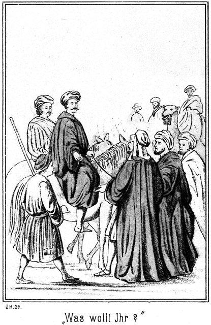»Hamdulillah, Preis sei Gott, dem Allbarmherzigen!« rief er aus. Er hat mir die Verlorene wiedergegeben. Ihm sei Dank und Anbetung im Himmel und auf Erden!«
Die Kinder hatten sich an seine Brust geworfen. Sie hielten ihn umschlungen, so fest, als ob sie ihn gar nicht wieder lassen wollten. Unter strömenden Freudenthränen und lautem Schluchzen nannten diese Drei sich bei den zärtlichsten Namen. Kurze, abgerissene Fragen gingen von Lippe zu Lippe und Keines von ihnen hatte auf die sie umtobende Fantasia acht, bis Falehd, der Riese, von seinem Pferde sprang und zu der Gruppe trat.
»Habakek ïa Scheik – sei willkommen, o Scheik!« sagte er, ihm die Hand bietend.
Der Vater wand sich aus der Umarmung der Töchter und erwiderte seinen Gruß. Die Augen des Riesen waren gar nicht etwa in freundlichem Ausdrucke auf ihn gerichtet. Er kam mit seinen Leuten dem Goliath gar nicht gelegen, zumal heut, wo er der Mann und Herr der Königin werden wollte.
»Ziehst Du weiter, oder wirst Du bei uns einkehren?« fragte Falehd.
Der Schaik war mehr als überrascht von dieser unerwarteten Frage. Er blickte die Königin an, sah deren zorniges Erröthen und antwortete:
»Weiter ziehen! Wohin meinst Du, daß ich zu reisen die Absicht haben könnte?«
»Allah ist allwissend, nicht aber ich.«
»Selbst wenn ich weiter ziehen wollte, würde doch mein Herz mich drängen, meine Töchter zu sehen.«
»Du siehst sie hier!«
»Ich komme nicht in meinen alten Tagen durch die Wüste geritten, um die Tochter nur für einen Augenblick zu sehen und nur hier vor dem Lager mit ihr zu sprechen. Oder haben die Beni Sallam kein Zelt für den Vater ihrer Königin?«
»Alle, alle Zelte stehen Dir natürlich offen!« sagte Badija. »Höre nicht auf ihn, den ein finsterer Geist bewohnt! Er glaubt, hier gebieten zu können, und ist doch nicht mehr als jeder Andere. Komm!«
Der Schaik wurde mit seinen Begleitern unter Jubel nach dem Lager geschafft. Falehd aber blieb mit einigen seiner Anhänger zurück. Indem er mit ihnen langsam den Vorangerittenen nachfolgte, sagte er:
»Nur der Teufel kann diesen Alten auf den Gedanken gebracht haben, heut zu uns zu kommen. Es ist möglich, daß er alle unsere Absichten zu nichte macht.«
»Das wird er nicht vermögen,« antwortete ein Anderer. »Er ist nicht Mitglied unseres Stammes und hat also weder Sitz noch Stimme bei der Berathung.«
»Das ist von gar keinem Gewichte. Seine einfache Anwesenheit verstärkt die Anhänger der Königin in ihrem Selbstvertrauen. Zudem ist er ihr Vater und hat als solcher gewisse Rechte über sie.«
»Diese Rechte hat er ja an Deinen Bruder abgetreten, indem er sie ihm zum Weibe gab.«
»Der Bruder ist gestorben.«
»So bist Du sein Erbe, also auch der Erbe dieser Rechte.«
»Ich wäre es, wenn ihr Vater fern wäre, da er sich aber jetzt bei uns befindet, hat er mehr über sie zu sagen als ich. So ist es nach den Gesetzen der Wüste. Der Gast steht ja höher als jeder Angehörige des Stammes.«
»Aber wenn Du Deine drei Gegner besiegt hast, kann er sich doch nicht etwa weigern, sie Dir zum Weibe zu geben?«
»Darüber bin ich mir nicht klar. Für diesen Punkt giebt es kein Gesetz; es ist so Etwas noch gar nicht vorgekommen. Ich glaube, daß darüber die Versammlung der Aeltesten zu entscheiden hätte.«
»Diese Alten sind aber gegen Dich.«
»So werden sie es mit mir zu thun bekommen. Ich habe nicht die Absicht, mich in meinen Plänen stören oder mir über Das, was ich thun soll, Vorschriften machen zu lassen. Auf Euch kann ich rechnen, und so werden wir gemeinschaftlich handeln, mag da kommen, was wolle.«
Sie hatten jetzt nun auch das Lager erreicht, wo es jetzt ein frohlautes Leben gab. Die Beni Sallam standen mit ihren Gästen in verschiedenen kleinen Gruppen beisammen. Jeder wollte Einen von ihnen in seinem Zelte haben. Einige kannten sich noch von früher her, als die Beni Sallam bei den Beni Abbas gewesen waren, um die Tochter des Scheiks von dort abzuholen. Da gab es Erkundigungen und Erklärungen die schwere Menge. Ebenso geschäftig oder vielmehr noch viel geschäftiger waren die Weiber. Es gab ja für die Bewirthung so vieler Gäste zu sorgen. Es wurden Schafe hinaus vor das Lager gebracht, um unter gewissen vorgeschriebenen Ceremonieen geschlachtet zu werden. Diese Ceremonieen sind unumgänglich nothwendig. Wer ohne ihre Befolgung ein Thier schlachtet, der macht sich nach dem muhammedanischen Ritus unrein und darf während einer gewissen Zeit nicht mit Anderen verkehren, da diese sonst von seiner religiösen Verunreinigung angesteckt würden und nun auch die Einsamkeit suchen müßten.
Bald loderten viele Feuer empor, über denen die Braten schmorten und an welchen sich geschäftige Gestalten bewegten. Oben aber auf der Ruine war es nicht so lebhaft und bewegt. Die Königin hatte sich mit dem Vater und der Schwester in ihre Gemächer zurückgezogen, wo es ja so viel, so außerordentlich viel zu erzählen gab. Sie fanden keine Zeit, an Andere zu denken. Normann und Steinbach hatten sich in einen schattigen Winkel der Außenseite des Gemäuers zurückgezogen, von welchem aus sie das geschäftige Treiben ruhig beobachteten. Tarik und Hilal befanden sich unten bei den Gästen; sogar die Wache hatte ihre Posten verlassen, so daß also oben vollständige Ruhe herrschte.
Da trat der Scheik aus der Thür der Ruine hervor und blickte sich um. Von dem Platze aus, an welchem er stand, konnte er den Winkel sehen, in welchem die beiden Deutschen saßen. Als er sie erblickte, kam er sehr eilig auf sie zu. Vor ihnen dann stehen bleibend, fixirte er Steinbach mit leuchtenden Augen und sagte:
»Welch ein Mann bist Du!«
»Ein Mensch wie jeder Andere,« antwortete Steinbach lächelnd, indem er sich aus seiner sitzenden Stellung erhob.
»Nein, nicht wie jeder Andere. Du bist viel, viel anders als tausend Andere. Du bist ein Liebling Allahs, an welchen er die schönsten und besten seiner Gaben verschenkt hat. Zu diesen Vorzügen gehört die Verschwiegenheit. Zu mir aber hättest Du doch sprechen können!«
»Ich habe es ja gethan!«
»Aber nicht vollständig. Warum hast Du mir denn verschwiegen, daß Du der Mann bist, der Hiluja gerettet hat?«
»Ich wußte ja, daß Du es von Anderen ebenso gut erfahren würdest.«
»Du bist bescheiden und wolltest Dich meinem Danke entziehen. Meine Tochter hat mir Alles erzählt. Du hast Dein Leben gewagt, um sie zu retten. Du hast sie dann hierher gebracht nach einer weiten Reise. Du hast ihretwegen große Ausgaben gehabt, und da – –«
»O nein,« fiel Steinbach ihm in die Rede. »Ich würde hierher gegangen sein, auch wenn ich Hiluja, Deine Tochter, nicht kennen gelernt hätte.«
»Das verringert gar nichts an der Größe dessen, was ich Dir schuldig, bin. Wie aber soll ich Dir danken – –?«
»Danke mir dadurch, daß Du gar nicht von Dank sprichst!«
»Das ist unmöglich. Was im Herzen wohnt, das soll man mit dem Munde aussprechen, und Du kannst nicht verlangen, daß ich Dein Schuldner bleibe, ohne wenigstens diese Schuld einzugestehen und zu bekennen.«
»Das hast Du nun gethan, und wir sind quitt.«
»Quitt? Oh Allah! Wenn ich Dir gäbe Alles, was ich besitze, meine Heerden, meinen Reichthum, mein Leben, so wären wir doch noch nicht quitt. Sage mir, ob Du nicht vielleicht einen Wunsch hast, den ich Dir erfüllen kann!«
»Ich habe ihn, wirst Du mir ihn auch erfüllen?«
»Ja, wenn es mir möglich ist.«
»Es ist der, welchen ich bereits vorhin ausgesprochen habe: Sprich nicht mehr von Dank!«
»Und ich habe Dir bereits gesagt, daß ich Dir gerade diesen Wunsch nicht erfüllen kann. Ich muß von Dir sprechen und von Dir erzählen. Ich werde Deinen Ruhm verkünden, so weit mein Ruf und meine Stimme reicht.«
»Das kann aber mir persönlich keinen Nutzen bringen. Ich werde diese Gegend sehr bald wieder verlassen und dann wohl niemals wiederkommen.«
»Verlassen?« fragte der Scheik. »Ich denke. Du willst für immer bei den Beni Sallam bleiben!«
»O nein. Das ist unmöglich.«
»Aber Badija sagte mir, daß Du für sie kämpfen willst.«
»Das ist allerdings der Fall.«
»Dann wirst Du Scheik des Stammes.«
»Es ist mir doch möglich, diese Würde von mir zu weisen.«
»Nein. Du erkämpfest Dir ein Weib und diese Würde.«
»Ich trete die Würde an einen Andern ab.«
»Das ist unmöglich. Nur abgerungen könnte Dir Beides wieder werden, das Weib und die Würde. Hast Du vielleicht bereits eine Frau?«
»Nein.«
»Oder bist Du verlobt mit einer Tochter Deines Stammes?«
»Auch das nicht.«
»Ist Badija Dir nicht schön genug?«
»Sie ist die Schönste der Schönen.«
»Oder nicht reich genug?«
»Ich weiß nicht, was sie besitzt; aber ich selbst bin reich; wenn ich mir eine Frau nehme, kann sie ganz arm sein, wenn nur ihr Herz reich ist.«
»Warum willst Du da Badija von Dir weisen?«
»Eben weil ihr Herz arm ist.«
Er lächelte dabei so eigenthümlich, daß sein Lächeln die Aufmerksamkeit des Scheiks erweckte.
»Ihr Herz arm?« sagte dieser. »O, da kennst Du sie nicht!«
»Ich kenne sie. Ihr Herz ist reich an allen guten Eigenschaften, aber für mich ist es arm. Badija liebt mich nicht.«
»Sie liebt Dich, ich habe es aus der Art und Weise bemerkt, in welcher sie von Dir spricht.«
»Sie liebt mich als den Retter ihrer Schwester, als ihren Freund, aber sie liebt mich nicht so, wie das Weib den Mann lieben soll.«
»O, das ist Schwärmerei. Das Weib hat zu gehorchen. Die Liebe kommt ganz von selbst, wenn der Kadi und der Mollah das Paar verbunden hat.«
»O nein! Ist Badija mit dem Manne, der ihr starb, nicht durch den Kadi und den Mollah verbunden gewesen?«
»Ja.«
»Sie hat ihn aber doch nicht geliebt; er hat sie nicht anrühren dürfen. Ein solches Weib möchte ich nicht haben.«
»So verachtest Du sie? Das thut meinem Herzen wehe.«
»Ich verachte sie nicht, sondern ich verehre sie. Ich wollte nur sagen, daß ich nur eine Frau haben will, welche mich so liebt, daß ihr ganzes Herz mir gehört.«
»Warum aber sollte Badija Dir nicht das ihrige schenken?«
»Sie hat es nicht mehr.«
»Nicht mehr? Wer sollte es denn besitzen. Du sagtest doch, daß sie den Verstorbenen nicht geliebt, habe.«
»Du scheinst anzunehmen, daß eine Frau ihr Herz nur an ihren Mann verschenken kann.«
»Ja, das ist ihre Pflicht. Sie darf es keinem Andern schenken, das wäre gegen das Gebot des Propheten.«
»Aber nicht gegen die Gebote der Natur. Das Herz fragt nicht nach dem Zwange, der ihm angethan wird. Es bäumt sich vielmehr gegen ihn auf.
»Oh Allah, Allah! Welchen Schmerz bereitest Du mir!«
»Schmerz? das begreife ich nicht.«
»Du sagst doch, daß Badija ihr Herz nicht ihrem Manne gegeben habe!«
»Kann Dich das schmerzen?«
»Das nicht, aber das Andere: Sie hat es also einem Andern geschenkt? Nicht?«
»Ja.«
»Das durfte sie nicht. Das ist Ehebruch. Wer hätte das von ihr gedacht! Oh Badija, mein Kind, meine Tochter! Und noch vor wenigen Augenblicken saß sie so rein, so unschuldsvoll an meiner Seite. Welche Verstellung!«
»Sie ist ja rein und unschuldig. Erlaubte sie ihrem Manne nicht, sie anzurühren, so hat sie es auch keinem Andern erlaubt.«
»Ist das wahr?«
»Ja. Ueberhaupt hat sie ihr Herz erst nach seinem Tode verschenkt, das darfst Du glauben.«
»Hamdulillah! Preis sei Gott! Jetzt ist mir meine Seele wieder leicht. Sie ist also rein und gut geblieben! Aber wem hat sie denn ihre Liebe gewidmet?«
»Hat sie davon nicht zu Dir gesprochen?«
»Nein.«
»So darf auch ich nichts sagen.«
»Warum?«
»Weil das ihre eigene Sache ist.«
»Aber Du kennst ihn?«
»Ja.«
»Wer ist er?«
»Soeben sagte ich Dir, daß ich es Dir nicht mittheilen kann. Aber komm, setze Dich hier neben mich, ich habe mit Dir noch Einiges zu besprechen.«
Der Scheik folgte dieser Aufforderung, neugierig, was dieser Masr-Effendi ihm zu sagen habe. Dieser begann:
»Warum hast Du Deine Tochter einst dem Scheik der Beni Sallam zum Weibe gegeben?«
»Er hielt um sie an.«
»Ich meine den eigentlichen Grund. Sie liebte ihn doch nicht.«
»Sie liebte auch keinen Andern, sie hat mir ganz willig Gehorsam geleistet.«
»Also nur um Gehorsam hat es sich gehandelt!«
»Ja. Der Anführer eines berühmten Stammes hat nach ganz Anderem zu fragen, als nach den Grillen eines Mädchenkopfes. Weißt Du vielleicht, was ein Muameleti düweli aschna ist?«
»Ja,« antwortete Steinbach lächelnd.
»Giebt es in Deutschland auch solche Muameleti düweli aschnalar?«
»Du hast von einem von ihnen gesprochen, von Bismark. Er ist der allergrößte unter ihnen. In Deutschland werden diese Leute anders genannt als bei Euch. Man nennt sie dort Diplomaten.«
»So ein Diplomat bin ich auch.«
Er sagte das im Tone eines so naiven Selbstbewußtseins, das Steinbach lachend ausrief:
»Ah! Ich gratulire!«
»Du lachst? Glaubst Du es etwa nicht?«
»O ja. Du hast es gesagt, folglich ist es wahr.«
»Ein Scheik muß stets ein Diplomat sein. Die großen Könige und Sultane verheirathen ihre Töchter an solche Herrscher, von denen sie dafür Vortheile erwarten. Dasselbe ist auch bei mir der Fall. Es lag mir sehr viel an der Freundschaft der Beni Sallam, darum gab ich Badija dem Scheik derselben zum Weibe.«
»Wirst Du an Deiner anderen Tochter vielleicht auch als Diplomat handeln?«
»Ja. Es ist das meine Pflicht.«
»Du wirst sie an einen Scheik verheirathen?«
»An den Sohn eines Scheiks.«
»Das ist bereits bestimmt?«
»Ja. Ich will ein Bündniß schließen mit dem Stamme der Mescheer, welche im Süden von Tunesien wohnen. Der Scheik ist sehr alt, er heirathet nicht wieder, aber er hat einen Sohn, welcher der Mann Hiluja's sein wird.«
»Weiß sie es schon?«
»Wozu braucht sie es zu wissen? Sie wird mir gehorchen, sowie Badija mir gehorcht hat.«
»Badija gehorchte, weil ihr Herz noch frei war.«
»Willst Du etwa sagen, daß Hiluja das ihrige bereits verschenkt habe?«
»Ich möchte blos wissen, was Du thätest, wenn dies der Fall wäre.«
»Ich würde mich natürlich nicht nach ihr richten können. Sie würde mir leid thun. Aber die Frauen haben ganz andere Seelen als die Männer. Heute meinen Sie, Einen zu lieben, und wenn morgen das Gebot an sie herantritt, einen Anderen zu lieben, so thun sie es gern, denn es gefällt ihnen Jeder, den sie lieben wollen.«
»Wollen, ja, wollen! Aber es gefällt ihnen nicht auch Jeder, den sie lieben sollen.«
»O doch, wenn sie nur den guten Willen haben und sich einige Mühe geben.«
»Du bist ein großer Menschenkenner!« sagte Steinbach in stiller, unbemerkter Ironie.
»Das bin ich, ich bin ja auch alt genug dazu. Ich habe viele hundert Frauen beobachtet. Sie sind arme, gutwillige Wesen. Warum sollten sie auch nicht! Sind sie schön, so betet man sie an, sind sie häßlich, so bemitleidet man sie, und beides, die Anbetung und das Mitleid, thut doch dem Herzen wohl. Sie fühlen sich also glücklich, mögen sie nun schön oder häßlich sein. Und in diesem Gefühle des Glückes sind sie allen Männern gut. Es hat doch ein Jeder seine gute Seite. Will Eine Einen nicht haben, so braucht er ihr nur diese seine gute Seite zu zeigen, so hat sie ihn sofort lieb und wird ihn heirathen.«
»Da hast Du es allerdings zu sehr erfreulichen Resultaten gebracht mit Deinen Beobachtungen,« lachte Steinbach, und Normann stimmte in dieses Lachen ein.
»O, es wird ein Jeder, welcher die Augen und die Ohren offen hält, zu ganz denselben Resultaten kommen.«
»Hier bei Euch vielleicht!«
»Bei Euch nicht?«
»Nein.«
»Sind die deutschen Frauen und Mädchen anders?«
»Es scheint fast so.«
»Inwiefern sind sie denn anders?«
»Es genügt ihnen nicht, daß der Mann nur eine gute Seite habe, es sollen vielmehr alle seine Seiten gut sein.«
»Wie unbescheiden. Sind denn auch ihre Seiten alle so gut?«
»Ja. Nur Einige giebt es darunter, bei denen irgend eine Seite vielleicht nicht ganz so ausgezeichnet ist.«
»Viele?«
»Nein, wenige, fünf oder sechs. Wenn in Deutschland ein Mädchen ihr Herz verschenkt hat, so mag sie keinen Anderen.«
»Wie dumm! Der Andere ist doch auch ein Mann!«
»Aber nicht ihr Mann, nicht der Mann nach ihrem Geschmack.«
»Dann hat sie eben einen falschen Geschmack und der Vater darf sich nicht nach demselben richten. Ich wollte, ich hätte einmal so einige deutsche Töchter. Ich würde ihnen sehr bald den richtigen Geschmack beibringen!«
»Das traue ich Dir zu.«
»Ja, das kannst Du mir auch zutrauen. Wenn Eure Mädchen verlangen, daß der Mann lauter gute Seiten haben soll, so bekommt doch Derjenige, welcher unglücklicher Weise nur eine gute Seite hat, gar Keine.«
»Das sollte man denken, ist aber nicht so. Es kommt zuweilen vor, daß Einer, der gar keine gute Seite hat, die allerbeste Frau bekommt.«
»Allah ist groß! Bei ihm ist Alles möglich!«
»Und ebenso kommt es vor, daß ein recht böses Weib einen sehr guten Mann bekommt.«
»Das ist die verkehrte Welt. So giebt es also bei Euch wirklich böse Weiber?«
»Ja, einige wenige.«
»Schickt sie uns hierher! Wir werden sie kuriren.«
»Womit?«
»Sie bekommen nichts als Koloquinthen zu essen und werden bis an den Kopf in Sand gegraben. Das treibt alle bösen Eigenschaften aus dem Leibe. Wir könnten sie Euch sehr bald gebessert wiederschicken.«
»Das ist gut. Wir sollten darum ein Bündniß mit Euch schließen, um Euch unsere bösen Frauen in die Cur geben zu können. Hast Du keine Tochter mehr, welche unser Kaiser zur Besiegelung dieses Bündnisses heirathen könnte?«
»Nein,« meinte der Scheik ernsthaft. »Aber ich habe einen Sohn, welcher eine Tochter Eures Kaisers nehmen könnte, wenn wir über den Preis einig werden, welchen er in Burnussen und Tüchern auszuzahlen hat.«
»Du könntest doch Hiluja hergeben!«
»Nein, die bekommen die Beni Mescheer.«
»Ist das unerschütterlich fest?«
»Ja.«
»So hast Du wohl mit dem Scheik der Mescheer bereits diese Angelegenheit besprochen?«
»Besprochen und abgeschlossen. Hiluja sollte ihre Schwester besuchen und nach ihrer Rückkehr wollten wir die Verlobung feiern.«
»O wehe!«
»Warum klagest Du?«
»Weil es da wohl besser gewesen wäre, wenn sie von den Tuareg getödtet worden wäre. Sie wird jedenfalls sehr unglücklich sein.«
»Das glaube ich nicht. Der Sohn des Scheiks der Mescheer ist ein sehr tapferer Mann. Sie wird ihn bald lieb haben.«
»Der, welchen sie liebt, ist wenigstens ebenso tapfer.«
»Ist er Scheik?«
»Nein.«
»Oder der Sohn oder Verwandte eines solchen?«
»Auch nicht.«
»Aber doch reich.«
»Sehr arm.«
»So mag er ja nicht daran denken, mein Eidam zu werden. Er ist kein Schwiegersohn für mich.«
»Aber sie lieben einander!«
»O, sie werden sehr bald nichts mehr von einander wissen wollen. Die Liebe ist nur in der Ehe möglich. Was Du da Liebe nennst, ist etwas ganz Anderes.«
»So will ich Dir wenigstens Eines sagen: Du bist Dem, den Hiluja liebt, großen Dank schuldig.«
»Warum?«
»Er hat ihr in Kairo einen bedeutenden Dienst erwiesen.«
»Allah! Meinst Du etwa Hilal?«
»Hat sie von ihm gesprochen?«
»Ja. Ist er es?«
»Er ist es. Ich will es verrathen.«
»So thut mir der arme Teufel leid! Er ist ein guter Junge und ein tapferer Krieger. Aber das ist auch Alles. Er wird sich seine Liebe aus dem Kopfe schlagen müssen. Er ist arm und ohne Würde. Es kann nicht sein.«
»Bedenke, daß sein Bruder Tarik auch arm ist und auch aus keiner berühmten Familie stammt.«
»Wie kommst Du auf diesen? Er hat doch mit dieser Angelegenheit gar nichts zu thun.«
»Sogar sehr viel. Er hat sich mit zum Kampfe gemeldet. Denke Dir den Fall, daß ich unterliege, daß aber Tarik den Riesen besiegt, dann wird Badija sein Weib.«
»Ja, sie wird es.«
»Und Du hast nichts dagegen?«
»Gar nichts. Er ist dann Scheik. Du siehst, welcher Unterschied da stattfindet.«
Der Unterschied ist gar nicht so groß, wie Du meinst. Ich will Dir erklären, daß – ah, horch.«
Drei sonore, eigenartige Töne erklangen weit über das Lager hin. Der Mueddin hatte die Ruine bestiegen und an das Bret geschlagen. Dann ertönte seine Stimme von oben herab:
»Im Namen des allbarmherzigen Gottes! Blickt empor zur Sonne, o Ihr Gläubigen! Sie hat beinahe den Scheitelpunkt erreicht! Und blickt hinunter auf Eure Füße. Der Schatten Eures Körpers ist kaum noch eine Spanne lang. In wenigen Augenblicken also ist die Zeit des Kampfes gekommen. Versammelt Euch an dem Orte desselben und preiset Allah, der dem Manne Kraft gegeben hat, zu kämpfen, zu siegen und zu vernichten. Allah illa Allah we Muhammed Rassuhl Allah!«
Er stieg langsam wieder hernieder. Sein Ruf war überraschend gekommen. Die Ankunft der Beni Abbas hatte die Beni Sallam so in Anspruch genommen, daß sie gar nicht sehr auf die Zeit geachtet hatten. Jetzt nun eilte ein Jeder, einen guten Platz zu erhalten. Die höchsten Kameele wurden bestiegen, damit man über etwaige Nachbarn gut hinwegzuschauen vermöge. Alle, Männer und Frauen, Bursche und Mädchen, eilten herbei. Den Kindern war es natürlich verboten, mitzukommen; sie entschädigten sich aber dadurch, daß sie einzelne Gruppen bildeten, bei deren jeder einige Jungens um ein Mädchen sich prügelten, welche die Königin Badija vorstellte. Das gab Beulen und blaue Flecke genug und war viel hübscher, als das ruhige Zusehen dort beim wirklichen Kampfe.
Auch Steinbach selbst war überrascht gewesen, daß die Zeit so nahe gerückt war. Er stand auf und sagte:
»Wir müssen leider unser Gespräch beendigen. Ich hätte so gern länger über diesen Gegenstand gesprochen.«
»So bist Du wohl Hilal's Freund?«
»Ja. Ich würde mich sehr freuen, ihn glücklich zu sehen.«
»So mag er mit mir ziehen. Mein Stamm zählt sehr viele schöne Mädchen; er mag sich unter ihnen eine Frau wählen und kein Vater soll ihn abweisen, dafür werde ich Sorge tragen.«
»Er mag keine Andere.«
»Hiluja kann er nicht bekommen, ich habe Dir das ja bereits erklärt. Jetzt nun wird es aber Zeit, daß Du Deinen letzten Willen sagst. Wenn der Riese Dich erschlägt, so müssen wir wissen, was Deine Wünsche sind.«
»Hier mein Gefährte kennt diese Wünsche bereits.«
»Und wenn Du siegest, so befindest Du Dich in einer sehr fatalen Lage; Du hast Badija und willst sie doch nicht haben. Ich habe keine Ahnung, wie das enden soll.«
»Ich habe eine Ahnung und bitte Dich, Dich ja nicht mit sorgenvollen Gedanken herumzuschlagen. Jetzt aber wird es hohe Zeit. Dort kommt die Königin, um sich nach dem Kampfplatze zu begeben. Begleite Du sie, sie wartet auf Dich!«
Es ist leicht erklärlich, daß der ganze Stamm sich in einer ungeheuren Aufregung befand. Es sollte sich entscheiden, wer Scheik sein werde. Ein vollständig Fremder und Unbekannter hatte sich mit zum Kampfe gemeldet. Falehd's Riesenkraft war bekannt. Es gab keinen Einzigen, welcher gezweifelt hätte, daß er Sieger sein werde.
Draußen vor dem Lager war der Kampfplatz mit Speeren abgesteckt. Rund herum standen einige Reihen Zuschauer zu Fuße, hinter ihnen Reiter zu Pferde und hinter denselben dann die Reiter auf hohem Kameelshöcker. So ragten die Köpfe je weiter hinten desto höher empor, gerade wie in einem Amphitheater.
Die Königin kam gegangen. Sie nahm an einem Ende des Kampfplatzes auf einem Teppiche Platz, welcher für sie ausgebreitet worden war. Ihr Gesicht war leichenblaß, vollständig blutleer. Sie vermochte kaum, ihre innere Angst zu verbergen. Neben ihr saß ihr Vater und ihre Schwester. Zu beiden Seiten standen Tarik und Hilal, die beiden Brüder.
Der Riese hatte sich am entgegengesetzten Ende der Wahlstatt niedergesetzt. Sein häßliches Gesicht zeigte den Ausdruck der Schadenfreude und des Triumphes. An seiner Seite saßen Ibrahim Pascha und der Russe, hinter ihnen einige seiner Anhänger. Einige mit Wasser gefüllte, ausgehöhlte Kürbisse waren vorhanden, damit die Kämpfenden sich erquicken oder aber vorkommenden Falles auch sich das Blut abwaschen könnten.
Der alte Mueddin und Kalaf, der oft erwähnte Alte, standen in der Mitte des Platzes. Sie waren von der Versammlung der Aeltesten erwählt worden, die Angelegenheit zu leiten.
»Er ist noch nicht da,« sagte der Riese zu seinen beiden Nachbarn. »Der Hund wird Angst bekommen haben.«
»Er wird es sich doch nicht einfallen lassen, vom Kampfe zurückzutreten,« meinte Ibrahim Pascha.
»Das ist unmöglich.«
»Es wäre das höchst fatal. Der Kerl muß sterben. Wenn er sich aber durch den Zurücktritt aus der Schlinge zieht, kann er uns auch großen Schaden machen.«
»Ich gebe ihn nicht los.«
»Wenn er aber doch nicht mit thut?«
»So zwinge ich ihn. Wenn ich auf ihn einschlage, so wird er sich wohl vertheidigen müssen. Uebrigens hat er sich, wenn er sein Wort nicht hält, als Feigling hingestellt, und kein Mensch wird ihn dann nur noch ansehen. Nur die Flucht kann ihn noch vor mir retten.«
»Vielleicht ist er fort. Ich habe ihn während der ganzen Zeit nicht gesehen.«
»So reite ich ihm nach und steche ihn nieder.«
»Ich möchte nur wissen, was er, falls er Sieger – –«
»Sieger?« fiel Falehd höhnisch ein. »Das ist unmöglich.«
»Bei Allah ist nichts unmöglich, und auch die bösen Geister besitzen große Macht. Wenn sie Dir einen Schabernack spielen wollen, so siehst Du Deinen Gegner nicht und schlägst daneben. Dann siegt er.«
»Verdammt! Diese Geister werden doch nicht etwa –«
»Ich möchte doch nur wissen, was dieser Mann mit der Königin machen will! Will er als Scheik hier bleiben?«
»Der Teufel soll es ihm rathen,« fuhr der Riese auf. »Aber Du hast von bösen Geistern gesprochen. Ich will vorsichtig sein und mir ein Amulet einstecken, daß sie mir nichts anhaben können.«
Er borgte sich von einem seiner Anhänger ein Amulet, welches in einem Zettelchen bestand, auf welches ein Kuranspruch geschrieben war. Der Zettel war in Leder eingenäht. Wer ihn bei sich trug, dem konnte weder der Teufel, noch sonst irgend ein böser Geist Etwas anhaben. Jetzt nun hielt der Riese sich gegen alle Eventualitäten gerüstet. Er befürchtete nur noch, daß sein Gegner gar nicht erscheinen werde.
Darin hatte er sich aber geirrt, denn jetzt kam Steinbach, von Normann begleitet.
Aller Augen richteten sich neugierig auf ihn, ob er wohl Angst verspüren möge. Aber es war ihm nicht das Geringste anzusehen. Sein Gesicht hatte ganz die gewöhnliche Farbe, sein Auge blickte ruhig und mild; sein Mund lächelte leise. Das bildete nun freilich einen großen Gegensatz zu Falehd, welcher sich jetzt erhoben hatte. Seine Augen starrten wie die eines wüthenden Stieres auf Steinbach; seine Zähne waren zusammengebissen, und die quer über sein Gesicht laufende Narbe hatte sich dunkelroth gefärbt, ein sicheres Zeichen, daß die Kampfeswuth ihm das Blut emportrieb.
»Warum kommst Du nicht?« rief er Steinbach zornig entgegen.
»Hier bin ich ja,« antwortete dieser ruhig.
»Aber zu spät!«
»Für Dich jedenfalls nicht.«
»Ein Tapferer läßt keinen Feind warten.«
»Sieh Deinen Schatten an. Es ist jetzt genau Mittag. Uebrigens bin ich nicht gekommen, mich mit Dir in Worten zu streiten. Thaten sollen es thun.«
»Und sie werden es thun. Beginnen wir!«
Er wollte mit geballten Fäusten geradewegs auf Steinbach los; da aber trat ihm Kalaf, der Alte, entgegen:
»Halt! Vorher müssen hier vor all diesen Zeugen die Regeln besprochen werden!«
»Regeln? Ich brauche keine Regeln!«
»Der Kampf soll ehrlich sein. Also vor allen Dingen, in welcher Kleidung wird gekämpft?«
»Jeder thut, was er will.«
»Giebt es Gnade?«
»Nein.«
»Das ist gegen unsere Gesetze. Der Kämpfer, welcher um Gnade bittet, muß geschont werden.«
»Das ist ehrlos.«
»Darum wird er aus dem Stamme gestoßen, aber sein Leben hat er doch gerettet. Nach welchen Regeln soll geschlagen werden?«
»Nach gar keiner Regel. Jeder schlägt so zu, wie es ihm beliebt.«
»Bist Du mit dem Allen einverstanden?« fragte Kalaf jetzt Steinbach.
»Ja,« antwortete dieser.
»So wird die Königin das Zeichen des Beginnes geben.«
Der Riese warf den Burnus ab und stand nun da, blos noch mit der Hose bekleidet. Der nackte Oberkörper war eingeölt, damit die Hand des Gegners abrutschen solle. Dieser mächtige Knochenbau schien gar nicht erschüttert werden zu können, und diese gewaltigen Muskeln waren wie aus Stahl gespannt.
»Also todt!« flüsterte ihm der Pascha zu.
»Auf den ersten Hieb schlage ich ihn nieder!« antwortete Falehd, indem er mit geringschätziger Miene Steinbach musterte, welcher auch seinen Burnus abgeworfen hatte.
Er war auch jetzt noch vollständig bekleidet. Er hatte nicht einmal die türkische Jacke, welche er unter dem Burnus getragen hatte, zugeknöpft.
»Um Allahs willen, ziehe Dich aus!« warnte der wohlmeinende Alte. »Er kann Dich ja ganz leicht fassen!«
»Das wird er unterbleiben lassen.«
»Du bist unvorsichtig!«
»Pah!«
Jetzt trat tiefe Stille ein und Aller Augen richteten sich auf die Königin, welche das Zeichen des Beginnes geben sollte. Da aber sagte der Scheik, ihr Vater, mit lauter Stimme:
»So wie jetzt darf doch der Kampf nicht beginnen. Ist es hier nicht Sitte, daß vor dem Anfange sich die Gegner die Hände reichen als Versicherung, daß Keiner den Anderen übervortheilen werde?«
»Die Hand reichen? Diesem Hund?« lachte der Riese auf. »Er es nicht werth, daß ich ihn anspucke, wie kann ich ihm da die Hand reichen! Der Hund mag nur herkommen, daß ich ihn erwürge!«
Er streckte Steinbach die beiden Fäuste entgegen. Dieser antwortete:
»Ich hatte es gut mit Dir vor, aber da Du mich auch hier noch mit Schimpfreden beleidigest, so werde ich Dich nicht so sehr schonen, wie ich es beabsichtigte. Höre also: Mein erster Hieb wird Dir Dein linkes Auge kosten, der zweite die Zähne, und beim Dritten wirst Du zu meinen Füßen liegen.«
»Mensch, Du bist toll! Bereits mit dem ersten Schlage werde ich Dir den Schädel zerschmettern.«
»Gut. Versuche es!«
Er stand da, mit dem Rücken nach der Königin gewendet, in einer Haltung, als ob er sich um nichts auf der Welt zu kümmern habe, die Hände in den Taschen seiner Hose. Der Riese hingegen hielt den Blick mit wahrhaft thierischer Spannung nach der Königin gerichtet.
»Na, schnell,« rief er. »Ich habe Durst nach dem Blute dieses Menschen.«
Man sah es Badija an, wie schwer es ihr wurde. Jetzt aber erhob sie die Hand.
»Los!« sagte Kalaf.
Es ist gar nicht zu beschreiben, mit welchem Ausdrucke die hunderte von Gesichtern sich nach dem Kampfplatze richteten. Der Riese stieß einen lauten Jubelruf aus und kam aus der Entfernung von vielleicht zwanzig Schritten auf Steinbach losgestürmt, als ob er ein Haus umarmen wolle. Die linke Hand ausgestreckt, um ihn zu packen, holte er mit der rechten Faust schon von Weitem zum tödtlichen Schlage aus. Steinbach stand immer noch so scheinbar gleichgiltig da wie vorher. Er schien gar nicht auf den Gegner achten zu wollen.
»Paß auf! Paß doch auf!« schrie es ihm von allen Seiten zu. »Er kommt ja.«
Er warf verächtlich den stolzen, männlich schönen Kopf nach hinten, obgleich der Riese von ihm kaum noch sechs Schritte entfernt war. Dann aber ein Ruck, seine Gestalt schien gewachsen zu sein, sein Auge sprühte förmlich dem Beduinen entgegen.
»Hier, Hund, hast Du!« brüllte dieser.
Da aber that Steinbach einen Sprung ihm entgegen, so daß Beide in einem weithin hörbaren Stoße fürchterlich zusammenprallten. Der Riese wurde nicht nur zum Stehen gebracht, sondern er prallte förmlich zurück und fuhr sich mit beiden Händen nach dem Gesichte, sie auf das linke Auge legend und wie erstarrt stehen bleibend.
Er hatte in seinem blinden Anstürmen den Punkt, an welchem Steinbach stand, genau im Auge gehabt. Der beabsichtigte Griff seiner Linken und der Hieb, den er mit der Rechten thun wollte, waren beide auf diesen Punkt gerechnet gewesen. Durch den Sprung Steinbachs aber war dieser Punkt mit blitzähnlicher Schnelligkeit um mehrere Fuß weit vorgerückt worden, als sie zusammenprallten hatte der Riese die beiden Arme noch weit auseinander, und ehe er sich besann und sie schloß, erhielt er mit der Linken Steinbachs einen Hieb unter das Kinn, während die rechte geballte Hand desselben ihn an den Augenknochen traf und der Daumen jener ihm das Auge aus der Höhle trieb.
Steinbach stand im nächsten Momente wieder da, als ob er gar nicht von seiner Stelle gewichen sei. Er wendete sich zur Königin und rief:
»Rakam wahid, el ain el alßemal – Nummer Eins, das linke Auge!« Diese Worte weckten den Riesen aus seiner momentanen Betäubung. Er fühlte die Verwundung und stieß einen furchtbaren Fluch aus. Als er die Hände vom Gesicht nahm, sahen die Zuschauer wirklich das Auge aus der Höhle hängen.
»Tajib, tajib! Ahsant, ahsant – Gut, gut! Bravo, bravo!« rief es von allen Seiten.
Die Zuschauer waren von Bewunderung hingerissen. Er hatte nicht nur den ersten, todtdrohenden Angriff des für unüberwindlich gehaltenen Riesen parirt, sondern sogar sein Wort wahr gemacht, ihm das Auge zu nehmen.
Diese Bravorufe entsprangen nicht etwa der Parteilichkeit, sondern ganz allein nur der Bewunderung. Der beduinische Krieger erkennt die Tapferkeit und Geschicklichkeit selbst seines ärgsten Feindes an. Dennoch aber wurde dadurch die Wuth des Riesen verdoppelt. Er stand in einer Entfernung von nur vier Schritten von Steinbach, erhob beide geballte Fäuste und brüllte:
»Das war Zufall. Jetzt aber fährst Du zur Hölle!«
Er that einen Sprung vorwärts, und zwar mit aller Gewalt, um Steinbach gleich umzurennen und dann, am Boden liegend, zu tödten. Der Deutsche aber empfing ihn mit schnell erhobenem Fuße, versetzte ihm einen Tritt in die Magengegend, so daß er aufschreiend zurücktaumelte und gar nicht dazu kam, den Gegner auch nur zu berühren. Dann – Keiner wußte, wie es gekommen war und wie es hatte geschehen können – ward er zu Boden geschleudert. Man hatte nur den rechten Arm Steinbachs in Bewegung gesehen. Dieser wendete sich ruhig an die Königin und meldete:
»Rakam itnehn, el asnahn – Nummer Zwei, die Zähne!«
Die Beifall spendenden Zurufe erhoben sich von Neuem. Falehd sprang vom Boden auf. Sein Gesicht war schrecklich entstellt. Das Auge hing herab und aus dem zerschlagenen Munde und der schwer getroffenen Nase rann das Blut. Er speite die aus den Kiefern geschlagenen Zähne aus, brüllte auf wie ein wild gewordener Büffelstier und rief:
»Er hat den Teufel! Die bösen Geister helfen ihm! Aber ich sende ihn trotzdem in die Hölle!«
Vor Wuth auch auf dem unbeschädigten Auge fast blind, hatte er doch die Ueberlegung, daß er mit dem zweimal vergeblich versuchten Ansprunge nichts erreichen werde. Er schritt also langsam auf Steinbach zu und zischte ihm, von tödtlichem Hasse erfüllt, entgegen:
»Komm her, Wurm! Jetzt zermalme ich Dich.«
»Wenn Du es fertig bringst, will ich Dich loben!«
Der Deutsche sagte das unter einem überlegenen Lächeln. Er erwartete ihn in größter Ruhe und Gleichmüthigkeit, während die Brust des Anderen vor innerer und äußerer Aufregung sichtbar auf- und niederwogte. Jetzt streckte der Letztere die Arme aus, um den Feind zu erfassen, wurde aber in demselben Augenblicke selbst gepackt. Steinbach hatte ihn mit einer schraubenartigen Bewegung seiner Arme hart hinter den Handgelenken ergriffen. Er hatte dabei seine Hände so verdreht, daß, wenn er sie wieder in die rechte Lage brachte, Falehd's Arme ebenso verdreht werden mußten. Er zog sie mit einem wahrhaft furchtbarem Rucke an sich. Der Riese brüllte auf. Seine Arme waren ihm durch dieses unvorhergesehene Maneuvre fast aus den Achseln gerissen und gedreht worden. Sie hingen einen Augenblick lang schlaff herab. Dieser Augenblick wurde benutzt. Steinbach faßte den Goliath bei den Hüften, hob ihn hoch empor, schmetterte ihn zu Boden und versetzte ihm, sich leicht bückend, zugleich einen Faustschlag an den Schädel, daß man es weithin dröhnen hörte.
Das war natürlich viel, viel schneller geschehen, als man es zu erzählen vermag. Man hatte die gedankenschnell auf einander folgenden Bewegungen Steinbach's gar nicht von einander unterscheiden können. Es war klar, daß er durch seine Gewandtheit und Besonnenheit dem Riesen überlegen war, aber daß er dabei auch eine so erschreckliche Körperkraft entwickelte, das war beinahe undenkbar, das versetzte Alle in Erstaunen, so daß sie geradezu vergaßen, ihm Beifall zu spenden. Die Arme des Riesen so in Unfähigkeit zu versetzen, ihn emporheben und zur Erde schleudern, das war mehr, als man für möglich halten konnte, das machte die guten Leute starr vor Erstaunen und raubten ihnen momentan die Sprache.
Er aber wendete sich zum dritten Male zur Königin um und meldete:
»Rakam salahsa, el ard – Nummer Drei, auf der Erde!«
Da brach es los. Erst halblaut und einzeln, dann aber stärker und immer stärker erhoben sich die Beifallsrufe. Alle, außer den Anhängern Falehds, fühlten es wie Erlösung über sich kommen. Der Riese war ihnen ein wirklicher Tyrann gewesen, ohne daß sie es sich gegenseitig offen eingestanden hatten. Bei dem Blicke auf die hohe, edle, ritterliche Gestalt des Deutschen hatte ein Jeder ihm im Stillen den Sieg gegönnt und ihn heimlich bedauert, da er ja von Allen für verloren betrachtet wurde. Jetzt nun, wo er stolz neben dem Feinde stand, wie der Löwe an der Leiche des von ihm erlegten, häßlichen und riesigen Krokodils des Nils, fragte man sich zunächst, ob dieser unerwartete Sieg denn auch in Wirklichkeit bestehe, und nun man sich überzeugte, daß es keine Täuschung sei, brach der Jubel desto lauter und aufrichtiger hervor. Wäre Falehd Sieger geworden, ihm hätte man gewiß nicht einen solchen Beifall gespendet.
Obgleich alle Anwesenden förmlich electrisirt waren, bewegte sich doch Keiner von seinem Platze. Das Schauspiel war ja nicht zu Ende. Nur Kalaf, der Alte, trat auf Steinbach zu, gab ihm die Hand und sagte:
»Du hast wahr gemacht, was Du gestern während unseres nächtlichen Spazierganges zu mir sagtest. Ich habe es für unmöglich gehalten. Allah hat Dir die Stärke des Elephanten und den Stolz des Löwen gegeben. Meine Worte sind unzureichend zu Deinem Lobe, darum schweige ich lieber. Ist Falehd todt?«
»Ich will einmal nachsehen.«
Er fühlte dem Riesen an das Herz. Es schlug, wenn auch sehr langsam und leise.
»Er lebt noch. Er ist nur besinnungslos.«
»Tödte ihn!«
»Meinst Du das im Ernste?«
»Ja. Du hast Dein Messer im Gürtel. Stoße es ihm in das schwarze Herz!«
»Ich bin kein Mörder.«
»Er befindet sich aber in Deiner Gewalt!«
»Es wurde ja festgestellt, daß der Besiegte um Gnade bitten darf.«
»Er hat es nicht gethan, er hat sogleich die Besinnung verloren. Wie lange soll der Sieger auf die Bitte warten? Sein Leben gehört Dir!«
»Ich werde ihn erst wieder bewußt werden lassen, mich aber versichern, daß er unschädlich ist.«
Er zog mehrere Riemen aus der Tasche.
»Was willst Du?«
»Ihn binden.«
»Welche Schande für ihn! Fesseln getragen zu haben, das verwindet kein Beduine. Falehd kann Dich unmöglich um Schonung, um sein Leben bitten. Hast Du diese Riemen stets bei Dir?«
»Nein. Ich brachte sie nur zu dem Zwecke mit, ihn zu fesseln.«
»So genau wußtest Du, daß Du Sieger sein werdest?«
»Ja.«
»Du bist ein großer Mann. Binde ihn und komme dann zur Königin.«
Normann trat auch herbei.
»Ich gratulire!« sagte er im Tone aufrichtigster Bewunderung. »Das war ein Meisterstück. Ich gestehe, daß ich für Sie gezittert habe!«
»Pah! Ich kannte mich und hielt ihn zwar für stark, aber auch für dumm und unbeholfen. Daß ich mich da nicht geirrt habe, bedarf gar keines Lobes. Wollen Sie mir mit helfen, ihm die Arme und Beine zu binden? Es geht rascher.«
»Gern. Ah! Sehen Sie den Kerl an! Welch ein schreckliches Gesicht! Sie haben ihm die Zähne wirklich eingeschlagen. Und dieses Auge!«
»Bringen wir es in die Höhle zurück. Sehen wird er freilich nicht wieder darauf lernen. Wie ich bemerke, ist der Nerv zerrissen.«
»So wollen Sie ihm das Leben wirklich schenken?«
»Ich ermorde ihn auf keinen Fall. Sein Leben mag nach den hiesigen Gebräuchen mir gehören, ich aber bin Christ und nebenbei auch Mensch. Seine Tödtung wäre nichts als ein feiger Mord, der mir mein Gewissen bis an das Ende meines Lebens beschweren würde.«
»Aber bedenken Sie, wie gefährlich es ist, ein wildes Thier am Leben zu lassen. Sie leisten damit sich selbst und den Beni Sallah gewiß keinen guten Dienst.«
»Ich weiß das, aber ich thue meine Pflicht.«
So banden sie ihn also und wuschen ihm auch das Gesicht. Keiner seiner Anhänger näherte sich ihm. Nach ihrer Ansicht war er das ausschließliche Eigenthum des Siegers und sie hatten kein Recht mehr, sich um ihn zu bekümmern.
Als dann Steinbach zu der Königin trat, streckte sie ihm die Hand entgegen und sagte:
»Ich danke Dir. Du hast mich von einem schlimmen Feind befreit. Ich werde Dir das nie vergessen!«
Dennoch aber vermochte sie nicht, ihn dabei frei anzusehen. Ihr war trotz der Ueberwindung ihres Feindes angst und bange im Herzen. Sie gehörte dem Sieger. Wie sollte das werden?
Ihr Vater aber streckte Steinbach die beiden Hände entgegen und rief laut aus:
»Sei mir willkommen! Du bist der Held der Helden und der Tapferste unter den Tapfern. Meine Tochter wird sicher wohnen in Deinem Zelte, und Du wirst die Beni Sallam von Sieg zu Sieg führen, daß sie berühmt werden von Aufgang bis zum Niedergange!«
Jetzt kam auch der Mueddin herbei. Er frug gar nicht erst, was er zu thun habe. Er wußte es ja. Er schlug an sein Bret und rief:
»Hört, Ihr Männer und Frauen vom edlen Stamme der Beni Sallam! Masr-Effendi, der berühmte Kämpfer aus fernem Lande hat erlegt Falehd, den Bewerber um die Königin. Sie gehört dem Sieger. Allah segne ihn und gebe ihm Kinder und ihr Kindeskinder, so viel, wie Sandkörner in der Wüste liegen. Es wird eine großartige Fantasie veranstaltet werden, dem neuen Scheik zu Ehren, und Boten werden in alle Winde reiten, um seinen Namen den Stämmen zu verkündigen. Schlachtet die Schafe und Lämmer, backt Brode und kocht fetten Kuskussu mit Rosinen. Holt herbei Lagmi, den Saft der Palmen, und bringt die Saiten und Pfeifen, mit Musik und Gesang, zu verherrlichen die Thaten des Siegers und den Glanz seiner zukünftigen Tage!«
Er war im Flusse seiner Rede. Er wollte weiter, wohl viel weiter sprechen, aber jetzt machte er eine kurze Pause; das benutzte Steinbach, um mit lauter, weithin hörbarer Stimme einzufallen:
»Hört auch mich, Ihr tapferen Männer und ihr schönen Frauen der Beni Sallam! Ich bitte die Versammlung der Aeltesten zusammen zu treten, um zu berathen und mir ganz genau zu sagen, ob die Königin und die Würde des Scheiks mir so gehören, daß Niemand einen Einspruch erheben kann.«
Sofort erschollen die drei Schläge des Mueddin und die Greise traten zu einander zu einer kurzen Berathung. Bereits nach wenigen Minuten erhob Kalaf, der Aelteste, seine Stimme, um zu verkünden:
»Masr-Effendi ist Sieger, ihm gehört die Königin, und er wird unser Anführer sein, ohne daß ihm ein Mensch dieses Beides streitig zu machen vermag!«
Steinbach antwortete laut, so daß Alle es hören konnten:
»Ich danke den grauen Vätern des Stammes für das Vertrauen, welches sie mir erweisen. Es giebt keine größere Ehre, als der Anführer eines so berühmten Stammes zu sein, und ich kenne kein größeres Glück, als ein Weib zu besitzen, wie Badija, die Königin. Aber Gerechtigkeit ist des Mannes Zierde. Ich will nicht ein Gut besitzen, welches zu besitzen auch Andere ein Recht haben. Vier Männer hatten sich zum Kampfe gemeldet. Einer wurde besiegt, der Zweite hat den Preis einstweilen erstritten, hier nun steht der Dritte und der Vierte, die Söhne des Blitzes. Sollen sie sich den Preis entgehen lassen? Sollen sie auf ihn verzichten, ohne um ihn gekämpft zu haben? Die Versammlung der Aeltesten mag entscheiden, ob sie ein Recht haben zu dem Versuche, ihn mir im Kampfe wieder abzunehmen.«
»Dein Wille soll geschehen!« sagte Kalaf.
Die Greise beriethen eine kurze Weile und dann verkündete der Genannte die Entscheidung:
»Die Söhne des Blitzes haben das Recht, mit Masr-Effendi zu kämpfen.«
Ein allgemeiner Beifall belobte diesen Beschluß. Gab es doch nun eine Fortsetzung des interessanten Schauspieles.
»Wollt Ihr den Kampf aufnehmen?« fragte der Deutsche die beiden Brüder.
»Herr, wollen wir einander tödten?« antwortete Tarik.
»Das ist nicht meine Absicht.«
»Ich weiß, daß Du uns besiegen wirst. Hast Du den Riesen erlegt, so bist Du uns noch viel mehr überlegen. Ich fürchte mich nicht, mein Leben zu wagen, aber ich würde anders kämpfen als Falehd, und ich glaube nicht, daß Du unverletzt aus dem Kampfe hervorgehen würdest. Soll ich aber Denjenigen verletzen, welcher an uns so Großes gethan hat?«
»Es wird ganz anders werden. Kalaf mag mir sagen, ob ich jetzt, da ich der Besitzer der Königin bin, die Waffen zu bestimmen habe.«
»Du hast sie zu wählen,« antwortete der Alte.
»So werden wir nicht mit Fäusten kämpfen, sondern mit unseren Flinten.«
»O Allah!« rief Tarik aus. »So bist Du ja verloren!«
»Meinst Du wirklich?«
»Ja. Bedenke, daß wir die Söhne des Blitzes genannt werden, weil stets und unfehlbar unser Feind fällt, sobald unser Gewehr aufleuchtet.«
»O,« lächelte Steinbach, »auch der beste Schütze wird zuweilen einen Fehlschuß thun!«
»Wir aber nicht. Paß auf! Blicke da hinauf!«
*
Oben über ihnen schwebte ein Aasgeier. Tarik legte sein Gewehr an, zielte nur einen Augenblick und drückte dann ab. Der Geier zuckte zusammen und kam in einer engen Schneckenlinie herabgestürzt. Da bewegte er noch einmal die Flügel und war nun todt.
»Siehst Du,« sagte Tarik. »Wolltest Du auch jetzt noch wagen, Dich mit mir zu schießen?«
Steinbach gab ihm die Hand und antwortete freundlich:
»Das war wirklich ein sehr guter Schuß. Ich sehe, daß ich Dich zu fürchten habe, doch was ein Mann sagt, dabei muß es bleiben. Wir werden uns schießen.«
»Nun gut! Du willst es so haben und ich kann nicht zurücktreten, aber sei überzeugt, daß ich Dich nicht tödten werde. Ich werde versuchen, Dir nur eine kleine, ungefährliche Wunde beizubringen.«
»Ja, thue das! Thue das!« fiel die Königin ein, der jetzt das Herz leichter wurde. Dies sah man daraus, daß das Blut wieder in ihre Wangen zurückgekehrt war.
»Ich danke Euch!« antwortete Steinbach mit fröhlichem Lächeln. »Aber ich habe Euch ja noch gar nicht gesagt, nach wem oder nach was wir schießen wollen.«
»Also nicht nach uns?« fragte Tarik erstaunt.
»O nein. Wir bestimmen irgend ein anderes Ziel.«
»Wird man uns nicht für feige halten?«
»Das glaube ich nicht. Du bist mir im Schießen weit überlegen, darum ist es nicht Muthlosigkeit von Dir, wenn Du auf meinen Vorschlag eingehest. Und ich habe den Riesen besiegt; wer will behaupten, daß ich ein Feigling sei? Ich würde sofort auf Leben und Tod mit ihm kämpfen.«
»Keiner, Keiner würde das behaupten!«
»Das bin ich auch überzeugt. Es ist ja gar nicht nothwendig, daß Derjenige, welcher die Königin nicht bekommt, nun geradezu sterben muß. Der Stamm braucht einen Scheik, welcher tapfer ist und geschickt in der Führung der Waffen. Diese Geschicktheit aber kann man beweisen auch ohne daß man Andere erschießt.«
»Du hast Recht. Nach welchem Ziele aber wollen wir schießen? Du hast das zu bestimmen.«
»Wir errichten da oben auf der Ecke der Ruine eine Zeltstange, auf welche wir, nämlich auf der Spitze, einen Stein legen. Jeder von uns Beiden thut fünf Schüsse, um den Stein herabzuschießen. Wer das Ziel mehrere Male trifft als der Andere, der ist der Sieger. Ist Dir das recht?«
»O, sehr recht, sehr,« antwortete Tarik, tief aufathmend. Es war ihm eine große Last vom Herzen. Er war jetzt überzeugt, daß er Sieger sein werde, denn im Gebrauche des Gewehres hatte es ihm außer Hilal noch Keiner gleich gethan. Und doch brauchte er seinen Gegner weder zu verwunden, noch gar zu tödten.
Auch die anderen in der Nähe Stehenden begrüßten den Beschluß mit Freuden, nur der alte Scheik der Beni Abbas sagte unzufrieden:
»Ist meine Tochter nicht eines ernsten Kampfes werth?«
»Sie ist es werth; ich habe es bewiesen, indem ich mit Falehd kämpfte. Es kann aber Allah nicht gefallen, wenn seine Gläubigen sich zerfleischen oder gar tödten, ohne daß es nöthig ist. Warum sollen sich Freunde erschießen, da sie ihr Leben doch sparen können zum Kampfe gegen ihre gemeinsamen Feinde.«
»So mag die Versammlung entscheiden, ob es nicht feig ist, auf einen ernsten Kampf zu verzichten!«
Die Alten traten wieder zusammen und entschieden zu Gunsten von Steinbach's Vorschlag. Das war ja unbedingt der beste Ausweg aus dem Dilemma, daß zwei Freunde nach demselben Preise rangen.
Als der Beschluß verkündet wurde, löste sich die bisherige Ordnung der Zuschauer auf. Das Ziel war hoch, und so brauchte man nicht sehr peinlich zu sein. Ein Jeder konnte es auch aus größerer Entfernung sehen.
Die Spannung, welche sich der Leute bemächtigte, war vielleicht noch größer als die vorherige. Man kannte Tarik als den vorzüglichsten Schützen, aber man hatte auch bereits vernommen, was von Normann über Steinbach gesagt worden war, nämlich, daß er niemals einen Fehlschuß thue. Man war also förmlich brennend, den Ausgang dieses interessanten Duelles zu erfahren. Jetzt, da es nun nicht mehr um das Leben ging, hätten sich gern noch viele Andere zum Kampfe gemeldet.
Tarik entfernte sich, um sich Munition zu den fünf Schüssen zu holen. Auch Steinbach sagte zu Normann:
»Ich will mein Gewehr holen. Bleiben Sie hier bei dem Riesen, um zu verhindern, daß er sich mit seinen Freunden in's Einvernehmen setzt.«
»Befürchten Sie eine Heimtücke?«
»Ich traue weder ihm noch ihnen. Er wird sich jedenfalls zu rächen suchen.«
»O, er wird ja sterben.«
»Das wollen wir nur abwarten.«
»Er wird doch nicht die fürchterliche Schande auf sich laden, um sein Leben zu bitten!«
»Ich traue es ihm aber doch sehr zu. Uebrigens werde ich ihn auf keinen Fall tödten.«
»So muß er, wenn er wirklich ein tapferer Mann ist, sich selbst umbringen. So erheischen es die grausamen Sitten dieser halbwilden Völkerschaften.«
»In diesem Falle würde er wohl erst mich umbringen, hinterrücks natürlich. Darum sollen Sie ihn jetzt bewachen, damit er isolirt bleibe.«
»Schauen Sie her! Er ist noch besinnungslos.«
»Meinen Sie? Ich sah seine Wimper zucken und glaube, daß er sich nur so stellt. Er hat das Bewußtsein bereits wieder, schämt sich aber, seinem Ueberwinder in das Angesicht zu sehen.«
Er ging nach der Ruine, von welcher er bald zurückkehrte, das Gewehr in der Hand. Es gab in der Nähe des Gemäuers ein außerordentliches reges, lärmendes Treiben. Man stritt hin und her; man bot sich Wetten an. Steinbach war Zeuge, daß Mehrere auf ihn wetteten, und zwar setzten sie einen Preis, der im Verhältnisse zu ihrem Besitze ein sehr bedeutender war. Das that ihm leid. Darum ließ er die verschiedenen Parteien vor sich kommen und bestimmte sie, den Wortlaut der Wetten dahin zu formuliren, daß der Ausdruck »Fehlschuß« mit aufgenommen wurde.
Ein junger Beni Sallam hatte eine Zeltstange geholt und sie an der angegebenen Ecke befestigt. Er legte dann einen etwa faustgroßen Stein auf die Spitze derselben und trat nachher zurück, um nicht etwa selbst getroffen zu werden.
Die beiden Wettenden wurden jetzt von dem alten Kalaf auf einen für sie freigehaltenen Platz geführt. Dort saß auch die Königin mit Hiluja. Ihr Vater hatte sich einen anderen Punkt gewählt, von welchem aus er das Ziel beobachten wollte. Sie winkte Tarik zu sich heran und bat leise:
»Gieb Dir ja Mühe, keinen Fehlschuß zu thun!«
»Habe keine Sorge!« beruhigte er sie. »Ich werde alle fünf Male treffen.«
»Gieb mir die Kugeln!«
Er gab sie ihr; sie schloß sie in ihre hohlen Hände und flüsterte dabei die Worte des Kuran:
»Das sind die Kugeln, von Allah gesegnet. Sie eilen an ihr Ziel, von Engeln getragen, und nichts vermag, sie aufzuhalten oder aus der Richtung zu bringen. Selbst der neunmal gesteinigte Teufel hat keine Gewalt über sie. Allah sei Dank für seine Güte!«
Viele Beduinen glauben, daß keine Kugel, über welche diese Worte gesprochen worden sind, fehl gehen könne. So sagte auch Tarik, als sie ihm die Projectile jetzt wieder zurückgab:
»Ich danke Dir! Nun werde ich den Stein ganz sicher von der Stange schießen. Ich bin unbesiegbar.«
Jetzt war der Augenblick gekommen. Alles blickte mit Spannung auf die Beiden.
»Wer schießt zuerst?« fragte Tarik.
»Masr-Effendi,« antwortete Kalaf. »Er ist der Sieger von vorher und auch ein vornehmer Mann, gegen welchen man Höflichkeit zu üben schuldig ist.«
»Ich lasse Tarik den Vorrang,« antwortete Steinbach. »Er ist ein Sohn der Beni Sallam. Wenn es sich um eine Tochter der Beni Sallam handelt, hat er also das Recht, vor mir zu schießen.«
Dies gab einen kurzen, freundschaftlichen Streit, den wieder die Aeltesten entscheiden mußten. Sie thaten dies zu Gunsten Steinbach's. Sie sagten, er wolle den Beni Sallam eine Ehre erweisen, und so zieme es sich für diese, höflich gegen ihn zu sein, indem man ihm seinen Wunsch erfülle. Tarik schoß also zuerst. Als er die Flinte erhob, schlug der Mueddin an sein Brett, um alle Anwesenden zu benachrichtigen, daß der Augenblick gekommen sei.
Es handelte sich um sehr viel, um den Besitz des schönsten Weibes des Stammes und um die Würde des Scheikes, also um das Höchste, was es überhaupt für einen Beduinen geben kann. Darum verfuhr Tarik mit der größten Sorgsamkeit. Er zielte lange, so lange, daß sich einige halblaute, unmuthige Ausrufe hören ließen. Er kümmerte sich nicht um dieselben, und auch Hilal, welcher neben ihm stand, flüsterte ihm zu:
»Laß Dich nicht zur Eile verleiten. Du weißt, es steht Alles auf dem Spiele.«
Tarik stand, wie aus Erz gegossen. Er war wirklich ein schöner, junger Mann. Das sah man jetzt sehr deutlich, da er den Burnus abgelegt hatte und nun, nach Beduinensitte nur halb bekleidet, in der Stellung eines Schützen da stand.
Endlich krachte der Schuß. Ein Augenblick athemloser Aufmerksamkeit – dann brach von allen Seiten lauter Jubel los. Dieser Beifall wuchs von Schuß zu Schuß. Jede der Kugeln erreichte das Ziel; nur die fünfte, die letzte, streifte den Stein nur, ohne ihn herabzuwerfen. Der junge Mann war seiner Sache zuletzt doch ein Wenig zu sicher gewesen.
Jetzt begann ein Streit, wofür diese Kugel zu rechnen sei. War der letzte Schuß ein Treffer oder ein Fehlschuß. Die Versammlung der Aeltesten entschied, daß es zwar kein Fehlschuß sei, da er den Stein getroffen habe; da es sich aber darum handele, den Stein herabzuschießen, so könne der letzte Schuß nicht als Treffer gelten. Tarik hatte also nur vier Treffer aufzuweisen Steinbach gegenüber.
Es begann jetzt dem jungen Manne doch bange zu werden. Wenn Steinbach fünf Treffer that, so war die Königin unwiderbringlich für ihren Geliebten verloren. Dieser faltete in seiner großen Herzensangst die Hände und betete flüsternd vor sich hin:
»O Allah! O Erbarmer! O Gnädiger! O Gütiger! O Mitleidiger! Schlage ihm die Flinte bei Seite, so daß keine seiner Kugeln treffe!«
Steinbach hatte die Worte doch gehört, da der Sprecher in seiner Angst doch etwas zu wenig leise gesprochen hatte. Er wendete sich daher lachend zu ihm und sagte mit dem Finger drohend:
»Und Du nennst Dich meinen Freund! Allah wird Deine Untreue gegen mich dadurch bestrafen, daß er mich den Stein fünfmal treffen läßt!«
Und sich zu dem alten Kalaf drehend, zeigte er diesem die Waffe und sagte:
»Siehe, das ist so eine Nadelflinte. Jetzt sollst Du sehen, wie man damit schießen kann!«
Der Alte nahm ihm das Gewehr aus der Hand, betrachtete es aufmerksam, schüttelte in höchster Verwunderung den Kopf und sagte endlich:
»Die kannst Du doch auch nur von vorn laden. Hinten hat sie ja kein Loch!«
Er öffnete die Kammer, zeigte und erklärte ihm den Mechanismus, schob die Patrone ein und verschloß dann das Gewehr wieder. Als er jetzt anlegte, schlug der Mueddin wieder an sein Brett.
»Allah illa Allah!« betete Tarik.
»Muhammed Rassuhl Allah!« fügte Badija hinzu.
Der Schuß krachte, und der Stein flog herab. Der junge Mann oben an der Stange hatte kaum einen anderen darauf gelegt, so flog auch dieser herab und dann auch der dritte.
»Allah 'l Allah!« flüsterte Tarik, welchem jetzt der Angstschweiß auf der Stirn stand.
»O Himmel, o Kadidscha, Du Mutter der Gläubigen und der Seligen!« stöhnte die Königin leise, die Hand ihrer Schwester ergreifend und so fest drückend, daß die Letztere einen Ruf des Schmerzes ausstieß.
»Er schießt viel besser noch als ich!« gestand Tarik, mehr aus Angst, als aus Aufrichtigkeit.
»Nicht wahr! Da kannst Du Recht haben,« sagte Steinbach, ihn lustig anlachend. »Aber Du hast noch gar nicht gesehen, wie ich schieße. Ich werde es Dir jetzt zeigen. Seht Ihr dort draußen das große, braune Kameel, welches wiederkauend an der Erde liegt?«
»Ja,« lautete die Antwort.
»Was seht Ihr auf seinem Höcker?«
»Ein Aßfur.«
Es giebt nämlich eine Vogelart, welche sich sehr gern in der Nähe der Kameele aufhält, weil sie da eine reichliche Nahrung finden. Diese Vögel fressen nämlich den Kameelen die Läuse aus dem Felle. Dies wissen die Kameele sehr genau, darum halten sie still, wenn ein solcher Vogel sich auf sie niederläßt, und hüten sich sehr, ihn durch eine hastige, unvorsichtige Bewegung zu verscheuchen. Der Beduine nennt dieses gefiederte Thier einfach Aßfur, welches Wort eben nur Vogel bedeutet.
»Und weiter rechts davon steht ein zweites Kameel,« fuhr Steinbach fort. »Was seht Ihr auch auf dessen Rücken sitzen?«
»Auch ein Aßfur.«
»So merkt einmal auf, was jetzt mit diesen Aßafir geschieht!«
Aßafir ist die Mehrzahl von Aßfur, Vogel.
Er erhob das Gewehr. Zwei Schüsse, schnell hinter einander abgefeuert – die Umstehenden blickten ihn staunend an, staunend über die für sie ungeheuere Schnelligkeit, mit welcher er geladen hatte, und auch staunend über sein Benehmen, welches sie sich nicht zu erklären vermochten.
Nach seinen drei ersten Schüssen war ihm von allen Seiten ein lebhafter Beifall entgegen geklungen; jetzt aber waren Alle still. Sie wußten nicht, was er eigentlich gewollt hatte.
»Nun,« sagte er, »wo sind die beiden Aßafir?«
»Fort, weggeflogen,« antwortete Hilal.
»Hast Du sie fortfliegen sehen?«
»Nein.«
»Gehe einmal hin, und suche nach ihnen!«
»Willst Du sie etwa geschossen haben?«
»Ja.«
»Das ist unmöglich.«
»Warum?«
»Ein Aßfur in solcher Entfernung! Ich würde das Kameel erschießen, aber nicht den Vogel treffen.«
»So gehe nur hin! Du wirst Beide finden.«
Da lief nicht nur Hilal, sondern viele Andere sprangen mit ihm fort. Als sie bei den beiden Kameelen ankamen, erhoben sie ein lautes Jubelgeschrei und kehrten in eiligem Laufe zurück. Sie brachten die beiden Vögel, welche wirklich ganz ausgezeichnet getroffen waren und von Hand zu Hand gingen.
Es ist unmöglich, die Ausdrücke des Staunens und der Bewunderung zu bringen, welche Steinbach anzuhören hatte. Besitzt die arabische Sprache einen fast unerschöpflichen Quell der derbsten Schimpf- und Fluchwörter, so ist sie im Gegentheile auch sehr reich an Ausdrücken, welche in hohem Grade Den ehren, gegen Den sie gebraucht werden. Erst nach längerer Zeit kam man auf den eigentlichen Gegenstand zurück, mit welchem man es zu thun hatte. Der Jüngling nämlich, welcher oben bei der Zeltstange stand, sah, daß ihm jetzt gar keine Aufmerksamkeit geschenkt wurde, und ließ einen lauten Ruf vernehmen. Er erwartete, daß Steinbach noch zwei Schüsse thun werde. Dieser aber winkte ihm zu, herabzukommen. Das aber erregte ein abermaliges Erstaunen.
»Wie steht es denn mit den letzten beiden Schüssen?« fragte der alte Kalaf.
»Die habe ich doch gethan.«
»Nein. Du hast nur dreimal nach dem Stein geschossen. Es bleiben Dir also noch zwei Kugeln.«
»Ich habe fünfmal geschossen. Fünf Schüsse waren ausgemacht, also bin ich fertig.«
»Allah! So willst Du verzichten?«
»Nein, ich verzichte nicht; ich habe die bestimmte Anzahl Kugeln abgesandt. Tarik hat den Stein viermal getroffen, ich nur dreimal. Das muß doch ein Jeder von Euch zugeben. Ihr habt es ja gesehen und auch nachgezählt.«
»So ist er doch der Sieger!«
»Ja, daß ist er.«
»Herr, das hast Du mit Fleiß gethan!«
»Die Vögel machten mich irre. Ich wollte Euch zeigen, daß man mit einer solchen Flinte nicht nur Steine trifft, und so habe ich um der beiden Aßafir willen die Königin verloren und auch die Würde des Anführers. Ihr seht, welchen Schaden es bringt, wenn der Mensch zu hitzig und zu voreilig ist. Nehmt Euch ein Beispiel an mir, und handelt überlegter!«
Er drängte sich durch den Haufen, der sich um ihn gesammelt hatte, hindurch und ging zu Normann, welcher noch bei dem Riesen saß. Tarik aber kam ihm eiligst nach, ergriff ihn am Arme und sagte:
»Herr, Du hast doch nur Scherz getrieben!«
»O nein. Ich pflege niemals aus Scherz daneben zu schießen und mich auslachen zu lassen.«
»So sollen die beiden Schüsse also wirklich für voll gezählt werden?«
»Natürlich!«
»O Allah! So gehört ja Badija mir!«
»Ist Dir das nicht lieb?«
»Nicht lieb? Herr, so wie mir kann es keinem der Seligen im siebenten Himmel zu Muthe sein. Ich kann es gar nicht glauben, daß Du Badija aufgiebst, nachdem Du um ihretwillen Dein Leben gewagt hast.«
»Um ihretwillen? Nein, sondern um Deinetwillen.«
»Wieso, Herr?«
»Nun, ich glaubte, daß der Riese Dich besiegen werde, und da ich wußte, daß ich ihm überlegen bin, so trat ich an Deine Stelle. Ich wollte mir die Königin erkämpfen, um sie dann an Dich abzutreten.«
»Jetzt, jetzt verstehe ich Dich! O Allah! Jetzt weiß ich nicht, wie ich Dir jemals danken soll!«
»Du bist mir gar keinen Dank schuldig.«
»Für so eine Großmuth! Du trittst mir die schönste der Frauen freiwillig ab!«
»Lieber Tarik, es giebt noch hunderttausend Weiber, von denen jede Einzelne die schönste der Frauen ist, nämlich für Denjenigen, der gerade sie und keine andere liebt. Gehe hin, und sei glücklich!«
Da bückte sich Tarik schnell, ehe Steinbach es verhindern konnte, nieder, küßte seine Hand und rief:
»Tausendmal Dank, millionenmal Dank! Ich werde für Dich beten, so lange ich lebe, und ich werde allen meinen Kindern und Kindeskindern lehren, für Deine Kinder und Kindeskinder zu beten!«
Steinbach antwortete lachend:
»Wir wollen jetzt unsere Nachkommen noch nicht so genau ausrechnen und auszählen. Bis jetzt sind wir nur die Urahnen ohne Nachkommen und ohne Frau. Eile jetzt, damit Du recht bald die Deinige erhältst! Ich wünsche Dir, daß es in fünfzig Jahren einen Stamm der Beni Tarik gebe, welcher tausend Köpfe zählt!«
»O Allah, Allah, das ist zu viel, tausend Köpfe in fünfzig Jahren!«
Bei diesen Worten rannte er davon. Er traf die beiden Schwestern nicht mehr an der Stelle, an welcher er sie verlassen hatte. Sie waren nach der Ruine gegangen, und er folgte ihnen nach, vor Glück und Seligkeit fieberhaft aufgeregt.
Unten verkündete der Mueddin den Ausgang des Kampfes. Die Veröffentlichung wurde mit allgemeinem Jubel aufgenommen, besonders auch mit aus dem Grunde, daß Niemand eine Wette verloren hatte, da faktisch kein Fehlschuß gethan worden war. Man begann erst jetzt die Absichten Steinbach's klar zu durchschauen; man pries seine Weisheit, seine Stärke, seinen Muth, und selbst die Anhänger Falehds mußten mit einstimmen, um sich nicht mißliebig zu machen.
Als Tarik die Ruine erreichte, waren die Schwestern bereits im Innern derselben verschwunden. Er ging ihnen nach. Als er bei ihnen eintrat, entfernte sich Hiluja rücksichtsvoll. Sie sagte sich, daß diese Beiden jetzt doch wohl am Liebsten mit einander allein sein möchten, und sie hatte Recht.
Sie standen sich einander gegenüber, ohne sofort zu Worte zu kommen, er war verlegener als sie.
»Ich hörte noch unter der Thür die Schläge des Mueddin,« sagte sie. »Was wurde verkündigt?«
»Daß ich der Sieger bin.«
»Ich dachte es mir.« Sie legte ihm die Hand auf die Achsel und fuhr fort: »Weißt Du, was ich von diesem Masr-Effendi denke?«
»Er ist ein Held.«
»Er kommt mir wie noch viel mehr vor, nämlich wie ein Engel, welchen Allah uns vom Himmel gesandt hat, um uns die höchste Gnade und Barmherzigkeit zu erweisen. Du und Hilal, Ihr hättet für mich gekämpft und wäret getödtet worden. Masr-Effendi hat Euch und mir das Leben gerettet, denn auch ich wäre gestorben. Tarik, hörst Du, die Schläge erschallen wieder; es ist die Zeit des Nachmittaggebetes. Laß uns vor allen Dingen hier mit einander niederknieen, um Allah zu danken und zu preisen für seine unendliche Barmherzigkeit und ihn zu bitten, das ganze Maaß seiner Liebe auszuschütten über unseren Retter, welcher sein Leben wagte, um uns vom schmählichen Tode zu erlösen!«
Sie knieeten neben einander nieder und beteten, nicht laut, sondern still und einander unhörbar. Der aber, zu dem sie beteten, hörte die Stimme ihrer Herzen und sah die Aufrichtigkeit ihrer Wünsche. Welchen Namen man ihm auch geben möge, ob man ihn Herr, Gott, Manitou oder Allah nenne, er ist doch Ein- und Derselbe, die ewige, unendliche Liebe, der Schöpfer und Vater aller Menschen, der nicht nach der Verschiedenheit der Bekenntnisse fragt, sondern nur das Herz und die Nieren prüft. Vor ihm sind Alle gleich, Christen, Juden, Türken, Heiden. Nicht das Bekenntniß thut es, nicht die Confession, sondern der eine, große Gottesgedanke, von welchem der Dichter sagt:
»So einigt er zu Einem Strome
Die Menschheit all', von nah und fern,
Zu knien anbetend in dem Dome
Der Schöpfung vor dem Einen Herrn.
Der Glaube nur kann triumphiren,
Der Einen Gott und Vater kennt.
Die Namen sinken, und es führen
Die Wege all' zum Firmament!«
Es waren heilige Augenblicke, in denen die Beiden da knieeten und stilles Zwiegespräch mit Allah hielten. Und als sie sich erhoben und nun vor einander standen, fühlten sie sich erhoben und ergriffen, als ob sie einem Gottesdienste beigewohnt hätten. Die Weihe blieb noch über und auf ihnen, so daß es ihnen unmöglich gewesen wäre, jetzt von alltäglichen, profanen Dingen zu sprechen. Es gab vielmehr für sie nur einen großen Gedanken und ein großes, gewaltiges Empfinden: die Liebe. Badija reichte Tarik ihr kleines Händchen hin und sagte, glücklich lächelnd:
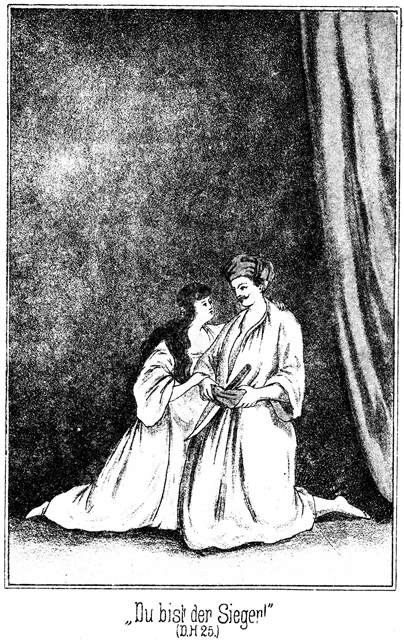»Du bist der Sieger, ich gehöre Dir!«
Er aber zögerte, das Händchen zu ergreifen und antwortete:
»Nach den Gesetzen bin ich der Sieger, aber in Wahrheit doch nicht. Ich habe Dich vielmehr nur geschenkt erhalten.«
»Das ändert doch an den Folgen nichts!«
»O doch! Ich wollte kämpfen, um Dich zu befreien. Besitzen aber kann ich Dich doch nicht.«
»Warum nicht?«
»Kann der Sterbliche die Sonne sein Eigenthum nennen?«
»Ja, denn es ist ihre liebste Aufgabe, ihm zu strahlen.«
»Und was nützt es mir, daß Masr-Effendi Dich mir geschenkt hat! Wie glücklich, wie unendlich glücklich wäre ich, wenn ich dieses kostbare Geschenk von einem Andern, von einer anderen Person erhalten hätte!«
»Dann hättest Du es wohl angenommen?«
»Mit tausend Freuden!«
»Von wem wolltest Du mich denn geschenkt haben?«
»Von Dir, nur von Dir allein.«
Da nahm sie ihn bei beiden Händen, da er es nicht gewagt hatte, ihre Hand zu ergreifen, und fragte ihn:
»So hast Du wohl ganz und gar vergessen, was ich Dir heute in der Nacht da draußen gesagt habe?«
Sie blickte ihm so warm und innig in das Angesicht, daß er, tief und glücklich Athem holend, sagte:
»War das denn Dein Ernst?«
»Wie könntest Du denken, daß er es nicht gewesen sei! Aber wir wurden unterbrochen; ich mußte so schnell fort, und da konntest Du mir keine Antwort geben.«
»Du hättest sie wohl gern gehört?«
»Von Herzen gern. Willst Du sie mir jetzt sagen?«
»Ob ich sie sagen will! Oh Allah! Und wenn ich tausend Zungen und abertausend Lippen hätte, könnte ich Dir doch nicht hinreichend sagen, wie wahr, wie groß meine Liebe ist. Kann der armselige Wassertropfen erzählen, welch Leben in dem Meere herrscht? Kann das Sandkorn Dir beschreiben, wie unendlich weit sich die Wüste dehnt? Kann der Hauch, welchen Du athmest, Dir Kunde geben von den Sonnen, Monden und Sternen, welche der Aether küßt? Ebenso unmöglich ist es mir, von Dem zu sprechen, was ich für Dich im tiefsten Herzen trage.
»Und ebenso geht es mir. Es giebt keine Sprache und keine Worte, die Liebe und ihre Seligkeiten zu beschreiben. Ich kann nur sagen wie Ruth, jenes Weib, von welchem unsere Ueberlieferungen erzählen: Dein Volk ist mein Volk, und Dein Gott ist mein Gott; wo Du hingehest, will ich auch hingehen, und wo Du stirbst, da will auch ich begraben sein. Bis jetzt bin ich Deine Anführerin, Deine Königin gewesen. Darf ich Dir nichts Anderes sein, etwas viel Schöneres, viel Herrlicheres?«
»Ich verstehe Dich und wage doch nicht zu glauben, Dich zu verstehen. Wolltest Du mir wirklich, wirklich Das sein, als was ich Dich zu besitzen wünsche?«
»Als was? Sage es!«
»Als mein – mein – – mein Weib!«
Ja, es wurde ihm schwer, dieses Wort auszusprechen. Er sah ihren selig leuchtenden Augen an, welch' wonniges Gefühl sie für ihn in ihrem Herzen trug; sie hatte es auch ausgesprochen; sie hatte gesagt, daß sie ihn liebe; aber es war doch zu groß, viel zu groß für ihn, sich als den Herrn und Besitzer der körperlichen und seelischen Schätze zu denken, welche er da vor sich erblickte. Sie aber nickte ihm innig zu und antwortete:
»Ja, das ist es, was ich sein möchte. Dein Weib, aber doch zugleich noch ein ganz klein Wenig Deine Königin.«
»Du warst es, Du bist es, und Du bleibst es, nämlich meine Königin. Aber dadurch machst Du mich zum Könige, zum Herrscher. Es ist mir, als ob ich über Wolken wandele, als ob ein Theil von Allahs Herrlichkeit über mich gekommen sei. Nur Das allein giebt mir den Muth, die Hand nach Dir zu erheben. Badija, Badija, liebst Du mich denn wirklich so, daß Du mir gehören willst?«
»Ja. Dir will ich zu Eigen sein, nur Dir allein!«
Da zog er sie an sich, legte die Arme fest, fest um sie und sagte, im Flüstertone, denn laut zu sprechen, dies war ihm bei der gewaltigen, glücklichen Erregung, in welcher er sich befand, nicht möglich:
»Meine Badija! Meine Königin! Meine Geliebte und mein Weib! Allah oh Allah! Werde ich das ertragen können?«
Sie hob das Köpfchen zu ihm empor und tröstete:
»Verzage nicht! Du wirst es ertragen können, denn ich trage es ja mit, mein lieber, lieber Tarik!«
»So wollen wir dieses Glück fest halten, so fest, wie ich Dich in meinen Armen halte, bis zur Todesstunde!«
»Und noch darüber hinaus!«
»Ja, in alle, alle Ewigkeit!«
Sie vereinigten ihre Lippen, ohne sie wieder von einander zu trennen. Es war, als ob dieser Kuß von derselben Dauer sein solle wie das Glück, von dem sie soeben gesprochen hatten – in alle, alle Ewigkeit.
Dann standen sie beisammen, flüsternd und lauschend, als hätte noch Keins von ihnen des Anderen Stimme gehört, oder als ob Jedes in der Stimme und dem Tone des Anderen einen ganz neuen, bisher unbekannten und geheimnißvollen Wohlklang entdecke.
Und so hätten sie wohl noch lange gestanden, sich einander in die Augen geblickt, sich geherzt und geküßt und einander erzählt von ihrer Liebe, Liebe und immer wieder Liebe, wenn nicht draußen sich plötzlich der brausende und vielstimmige Ruf erhoben hätte:
»Selamet, selamet, selamet el melik me melika – Heil, Heil, Heil dem Könige und der Königin!«
»Man ruft uns aus!« fuhr Tarik aus seiner Verzückung empor. »Hörst Du es?«
»Ja. Man hat also über Dich berathen.«
»Und mich wirklich zum Scheik gemacht.«
»So sind die Anhänger Falehds, die Gegner des Vicekönigs überwunden und geschlagen.«
»Und Falehd selbst wird nun todt sein. Komm, wir müssen uns dem Stamme zeigen!«
Sie gingen hinaus, Badija im ruhigen, überlegenen Bewußtsein ihres Glückes und ihrer Würde, Tarik aber wankend. Er befand sich wie im Traume, es schwirrte ihm vor den Ohren, es hatte ihn eine Art von Taumel ergriffen, aber eine Art solchen Taumels, daß er hätte wünschen mögen, derselbe möchte niemals von ihm weichen.
Was er von Falehd gesagt hatte, war nun freilich nicht zur Wahrheit stimmend. Der Riese war nicht todt.
Als die beiden Schwestern sich entfernt hatten und Tarik ihnen nachgeeilt war, hatte Steinbach sich zur Stelle verfügt, an welcher der Besiegte lag, von Normann bewacht. Hilal und der Scheik der Beni Abbas waren auch hinzugekommen.
»Ist er erwacht?« fragte Steinbach.
»Nein,« antwortete Normann.
»Das sollte mich wundern. Ich habe dieselbe Ansicht, welche ich bereits vorher aussprach. Passen Sie auf.«
Er hatte Deutsch gesprochen, so daß der angeblich noch Besinnungslose die Worte nicht verstehen konnte. Am Boden lag ein Halm dürren Wüstengrases. Steinbach bückte sich, hob ihn auf und fuhr damit Falehd in das innere Ohr. Sofort schüttelte der Riese, schnell das rechte Auge öffnend, den Kopf. Er hatte nur so gethan, als ob er noch immer ohnmächtig sei.
»Du lebst noch?« sagte Steinbach im Tone des Erstaunens. »Ich glaubte Dich todt. So wirst Du nun jetzt sterben müssen.«
Er zog das Messer aus dem Gürtel und nahm es stoßgerecht in die Hand. In den Augen des Riesen blitzte es glühend auf.
»Ich bin gefesselt!« murmelte er.
»Das kann Dir gleichgiltig sein.«
»Es ist eine Beleidigung.«
»Wer am Tode steht, achtet keiner Beleidigung mehr. Welche Wünsche hast Du noch?«
»Daß Dich der Teufel verschlingen möge!«
»Das thut er nicht, weil er an Dir satt genug bekommen wird. Mache Dein Wassiget nameh!«
Wassiget nameh heißt so viel wie Testament. Es waren jetzt noch viele Andere hinzugetreten, welche einen engen Kreis um die Gruppe bildeten. Der Verwundete zeigte keinen so häßlichen oder gar schrecklichen Anblick, wie man hätte denken sollen. Er hatte die Zähne, welche ihm eingeschlagen worden waren, ausgespuckt, auch hielt er das linke Augenlid geschlossen, und da er übrigens vom Blute gereinigt worden war, so konnte man nur die geschwollenen Lippen und die außerordentlich blau angelaufene Nase als die Folgen des Kampfes erkennen.
»Willst Du mich morden?« knirrschte er.
»Nicht morden. Dein Leben gehört mir, und ich kann also damit thun, was mir beliebt.«
»So thue es!«
»Ich werde es Dir nehmen.«
»Nimm es, und sei verflucht!«
»Du selbst hast keine Gnade geben wollen; ich aber bin bereit, Dir das Leben zu schenken, wenn Du mich jetzt um Gnade bittest.«
»Dich niemals!«
»So mache Dich bereit. Ich gebe Dir fünf Minuten Zeit, Deine letzten Verfügungen zu treffen.«
»Ich mag keine Verfügungen treffen. Thut was Ihr wollt mit dem was mir gehört!«
»Ach, es wird so, wie ich dachte,« bemerkte Steinbach in deutscher Sprache zu Normann.
»Sie denken, daß er um Gnade bitten werde?«
»Ganz gewiß.«
»Ich bezweifle es.«
»O, er wird doch über sein Eigenthum und seine Heerden bestimmen, damit sie nicht der Königin, die noch seine einzige Verwandte ist, und somit also auch seinem Gegner Tarik in die Hände kommen. Ich werde ihm noch den Mueddin anbieten, weist er auch diesen ab, so will er nicht sterben.«
Und in arabischer Sprache fuhr er, zu dem Verwundeten gewendet, fort:
»So mag der Mueddin kommen, um das Gebet des Todes über Dich zu sprechen.«
»Verdammt sei der Mueddin sammt aller seiner Plärrerei! Ich mag ihn nicht!«
»So mußt Du ohne Gebet und Testament sterben. Allah mag sich Deiner Seele erbarmen! Wie willst Du sterben? Durch mein Messer oder durch meine Flinte?«
»Du bist ein Hund. Du bellst, aber Du beißest nicht!«
»So irrst Du Dich. Du meinst, daß ich Dir Gnade geben werde, auch ohne, daß Du bittest; das aber thue ich nicht. Da Du weder durch mein Messer, noch durch meine Kugel sterben willst, so werde ich nun also thun, was mir beliebt. Du schimpfest auf mich, trotzdem ich Dir mein Erbarmen zeige, Du bist nicht werth, den Tod eines Kriegers zu sterben. Ich werde Dich aufhängen lassen!«
Da bäumte sich der Riese trotz seiner Fesseln auf und brüllte:
»Hund und Vater eines Hundes! Durch den Strick stirbt kein tapferer Beduine!«
»Das ist wahr, Du aber wirst durch ihn sterben, denn Du bist nicht tapfer. Du bist nur roh; Du beleidigst Den, der Dich besiegt. Nicht einmal das Aufhängen bist Du werth. Du sollst also erdrosselt werden. Und da der Prophet sagt, daß die Seele keines Mannes, welcher durch den Strick stirbt, in den Himmel eingehe, so wirst Du in der Hölle braten, wohin Du mich gewünscht hast. Man hole mir einen Kameelsstrick!«
Der Prophet Muhammed hat das wirklich gesagt, aber die späteren seiner Nachfolger, also die Khalifen und Sultane, haben doch eine Ausnahme constatirt. Wer durch die seidene Schnur stirbt, welche ihm der Sultan sendet, der kann noch selig werden; ja diese Todesart gilt sogar für eine bevorzugte, so daß sie nur bei solchen Personen angewendet wird, denen der Sultan eine öffentliche und entehrende Hinrichtung ersparen will.
Normann ging und brachte nach wenigen Augenblicken einen aus Dattelfaser gefertigten Strick.
»Lege ihn denselben um den Hals!« sagte Steinbach.
Normann folgte dieser Aufforderung.
Als der Riese den Strick an seinem Halse fühlte, machte er eine gewaltige Anstrengung, seine Fesseln zu zerreißen; aber das gelang ihm nicht, und so schrie er:
»Das darfst Du nicht! Du darfst mich nicht erwürgen!«
»Ich werde Dir gleich zeigen, daß ich es darf!«
Er ergriff das eine Ende des Strickes, während Normann das andere noch in der Hand hatte.
»Willst Du selbst den Henker machen?« schrie Falehd.
»Ja. Es ist keine Schande, Denjenigen zu tödten, den man vorher besiegt hat. Also machst Du kein Testament?«
»Nein!« antwortete der Riese, welcher noch immer nicht glaubte, daß man es wagen werde, ihn zu tödten.
»Du willst kein Sterbegebet?«
»Nein.«
»So fahre hin in allen Deinen Sünden! Zieh an, da drüben! Eins – zwei – – dr – – –«
Beide, Steinbach und Normann stemmten die Füße ein, als ob sie an beiden Seiten des Strickes ziehen wollten. Sie zogen auch wirklich so weit zu, daß sich die Schlinge fest um den Hals Falehds legte. Jetzt nun erst war er überzeugt, daß man Ernst mache. So groß, wie vorher sein Selbstvertrauen gewesen war, so groß oder vielmehr noch größer war jetzt seine Angst. Er warf sich mit dem Oberkörper empor und brüllte entsetzt:
»Halt! Haltet ein!«
»Warum? Bittest Du um Schonung?«
»Ja.«
»So thue es! Sprich das Wort aus, sonst gilt es nichts!«
»Aman, aman – Gnade, Gnade!«
»Gut! Das Leben sei Dir geschenkt. Wir werden Dich also losbinden.«
Er bückte sich bereits, um dies zu thun, da aber ertönte hinter ihm ein rasches:
»Halt, noch nicht! So schnell darf man einem Besiegten das Leben nicht schenken. Zumal Diesem hier nicht!«
Kalaf, der Alte, war es, der diesen Einspruch erhob.
»Er hat ja um Gnade gebeten!« meinte Steinbach.
»Ja, das hat er, aber es fragt sich, ob er auch die Folgen dieser Bitte auf sich nehmen will. Er ist der Bruder des todten Scheiks, er hat sich für den Mächtigsten und Unüberwindlichsten gehalten, dem Alles unterthan sein muß; vielleicht glaubt er, daß wir aus lauter Angst und Respect vor ihm gar nicht daran denken, ihm die Folgen seiner Gnadenbitte fühlen zu lassen. Daher will ich erst einige Worte mit ihm sprechen, ehe Du ihm das Leben schenkst.«
Das von der Sonne verbrannte Gesicht des Riesen wurde erdfahl. Das war der sicherste Beweis, daß der vorsichtige Alte das Richtige gedacht hatte. Falehd hatte wirklich gemeint, daß er, der Angesehene und Gefürchtete, sich begnadigen lassen könne, ohne auch die Schande tragen zu müssen. Ja, vielleicht hatte er wohl gar gemeint, daß der Stamm gar nicht zugeben werde, daß der Stärkste seiner Krieger von Steinbach getödtet und nun gar erdrosselt werden könne, wenigstens war dies aus seinem vorherigen Vorhaben sehr leicht zu ersehen. Jetzt nun erkannte er, daß weder das Eine noch das Andere der Fall sei. Er hatte keine Rücksicht, keinen Vorzug zu erwarten; diese Ueberzeugung trieb ihm mit aller Gewalt das Blut aus dem Gesicht in das Herz zurück.
Die Aeltesten, welche die Worte Kalafs gehört hatten, traten mit ernsten Mienen herbei. Es war das erste Mal in ihrem ganzen, langen Leben, daß ein Angehöriger des Stammes um Gnade gebeten hatte. Und nun gar Derjenige, der sie bisher tyrannisirt und sich für den Besten und Edelsten von ihnen Allen gehalten hatte. Kalaf fragte ihn:
»Weißt Du auch, was Du thust?«
»Ich habe es stets gewußt und weiß es auch jetzt.«
»Wer um Gnade bittet, erhält zwar sein Leben, nicht aber sein Eigenthum.«
»Freßt meine Kameele und erstickt an ihnen.«
»Er ist ehrlos für immer.«
»Ihr könnt mir weder Ehre geben, noch sie mir nehmen.«
»Und wird aus dem Stamme gestoßen.«
»Er ist vogelfrei!«
»Das will ich ja sein!«
»Und wenn er innerhalb der Grenzen des Stammgebietes sich sehen läßt, kann ein Jeder ihn tödten, ohne die Blutrache befürchten zu müssen.«
»Hahaha! Man mag mich tödten, wenn man sich an mich wagen will. Ihr seid alle Hunde, die ich mit meinen Füßen zertreten werde.«
»Ein Ehrloser kann keinen braven Krieger mehr beleidigen. Also, Du willst Gnade?«
Er schwieg. Es wurde ihm doch schwer, auf eine solche Frage antworten zu müssen.
»Ich frage Dich zum letzten Male. Antwortest Du nicht, so ist jede spätere Bitte vergeblich. Also willst Du Gnade?«
»Ja.«
»So werde ich selbst Dir die Fesseln nehmen.«
Er machte die Knoten der Riemen auf. Der Riese sprang empor, streckte die Arme aus, schüttelte sich wie ein wildes Thier, welches angekettet gewesen ist, und sagte:
»Frei, frei! Jetzt sollt Ihr mich kennen lernen!«
»Wir kennen Dich: Du bist ohne Ehre für alle Zeit, und wer Deinen Namen nennt, der wird dabei ausspeien. Vergessen sei Dein Vater, und vergessen sei Diejenige, die Dich geboren hat! Mit den Schakals und Hyänen sollst Du leben, und wenn Deine Leiche in der Wüste verfault, wird der Wanderer in einem weiten Bogen ausweichen, damit Dein Anblick ihn nicht verunreinige.«
»Oh, ehe ich sterbe, werden viele von Euch vorher verfaulen müssen!«
»Und zum Zeichen, daß Du keine Ehre mehr besitzest, werde ich als der Erste Dir Das geben, was Dir von jetzt an gebührt. Erhebet Eure Stimmen, Ihr Männer, und ruft mit mir, was ich über ihn rufe: Ïa mußibe, ïa ghumm, ïa elehm, ïa rezalet – o Unglück, o Kummer, o Schmerz, o Schande!«
»Ïa mußibe, ïa ghumm,ïa elehm, ïa rezalet – o Unglück, o Kummer, o Schmerz, o Schande!« riefen alle Versammelten nach, die Hände ausstreckend, um ihren Abscheu zu zeigen.
»Und hier ist, was Dir gehört! Pfui!«
Er speite ihn an.
»Pfui!« machten Alle es ihm nach, indem sie den Riesen ebenso anspuckten.
Dieser stand still, ohne eine Miene zu verziehen. Er hielt das gesunde Auge ebenso geschlossen wie das andere. Er wollte gar nichts sehen. Aber als er es öffnete, sprühte der Blick förmlich unter dem Lide hervor.
»Seid Ihr fertig?« fragte er höhnisch.
Das sollte ruhig klingen: er gab sich alle Mühe, keine Aufregung zu zeigen, aber seine Stimme klang heiser, und die Worte tönten zitternd hervor. »Ja,« antwortete Kalaf. »Gehe jetzt in Dein Zelt. Du sollst in kurzer Zeit erfahren, was die Versammlung der Aeltesten noch über Dich beschließt.«
»Noch beschließt? Es ist ja bereits beschlossen!«
»Dieser tapfere Masr-Effendi hat Dir das Leben geschenkt; vielleicht ist die Versammlung auch gnadenreich gesinnt, Dich wenigstens nicht als Bettler von sich zu lassen. Erwarte ihren Spruch.«
»Beschließt, was Ihr wollt! Eins werdet Ihr von mir haben, nur Eins, ein Einziges: Rache, Rache, Rache!«
Er wendete sich ab und ging, stolz und erhobenen Hauptes, als ob er der Sieger sei, nicht aber der Besiegte und der Ehrlose. Er war kaum in sein Zelt getreten, so kamen Ibrahim Pascha und der Russe zu ihm. Auch sie Beide hatten dem Kampfe und den nachherigen Verhandlungen beigewohnt, allerdings von Weitem.
»Wie? Ihr kommt zu mir?« fragte er in grimmigstem Hohne.
»Wundert Dich das?« antwortete der Pascha.
»Natürlich! Ich bin ja ehrlos!«
»Was geht das uns an!«
»Ihr verunreinigt Euch, wenn Ihr Euch mir nähert!«
»Das ist uns lächerlich. Diese Räuber können keinem Menschen die Ehre geben und sie auch keinem nehmen.«
»Habt Ihr denn Alles gesehen und gehört?«
»Ja.«
»So sehe ich freilich, daß Ihr meine Freunde seid, denn sonst wäret Ihr nicht zu mir gekommen. Setzt Euch nieder. Raucht von meinem Tabake, der bald nicht mehr mein sein wird, und trinkt den Kaffee, den ich Euch nicht mehr als den meinigen anbieten darf!«
Sie kamen dieser Aufforderung nach. Er zog sich das Wassergefäß herbei, um Auge, Nase und Mund zu kühlen, und knurrte dabei zornig:
»Seht Ihr, daß dieses Auge verloren ist? Aber es soll ihm seine beiden kosten!«
»Wie war das doch nur möglich!« sagte der Russe. »Du bist an Stärke ein Elephant und warst vorher so völlig siegesgewiß!«
»Denkt Ihr etwa, er hat mich besiegt?«
»Etwa nicht?«
»Nein, er nicht!«
»Wer sonst?«
»Er hat einen Zauber, er muß einen haben, sonst wäre es nicht möglich gewesen. Nicht einmal das Amulet hat mir Etwas genützt. Verflucht sei er!«
»Glaubst Du denn an Zauberei und Amulette?«
»Ja. Und wenn ich noch nicht daran geglaubt hätte, jetzt würde ich es glauben. Habt Ihr nicht gesehen, als ich zuerst auf ihn einsprang, daß er gar nicht mehr da stand, wo er gestanden hatte?«
»Er sprang Dir entgegen.«
»Nein, nein! Er hat sich unsichtbar gemacht. Darum konnte er den Hieb ausführen, mit welchem er mir das Auge ausschlug. Und so war es auch beim zweiten und beim dritten Male.
»Er ist ein starker Kerl!«
»Stark? Gehört Stärke dazu, Einem das Auge und die Zähne auszuschlagen, wenn man sich unsichtbar gemacht hat? Gar keine!«
»Laß Dich nicht durch solchen Aberglauben verleiten! Es ist besser, den Feind richtig kennen zu lernen. Wer seinen Gegner unterschätzt, der kann leicht von ihm überwunden werden. Dieser Kerl besitzt weder einen Zauber, noch ein Amulet; er ist riesenstark und dabei außerordentlich gewandt. Ich habe das ja auch an ihm erlebt. Ich schlug ihn mit dem Ruder über den Kopf, daß die Hirnschale eines jeden Andern sofort in Stücke gesprungen wäre; er aber ist, wie es scheint, gar nicht einmal betäubt gewesen. Im Nahekampf kann Keiner mit ihm Etwas anfangen. Er muß aus der Ferne getödtet werden.«
»Getödtet?« knirrschte der Riese. »Nein, das werde ich nicht thun, auf keinen Fall!«
»Ich denke, Du hast ihm Rache geschworen!«
»Ja, aber meinst Du, daß es genügend Rache sein würde, ihn zu tödten?«
»Was hast Du denn vor?«
»Auge um Auge, Zahn um Zahn! So steht es im Gesetze der Blutrache. Er hat mir die vorderen Zähne eingeschlagen; ich schlage sie ihm alle ein. Er hat mich gebunden und gefesselt wohl eine Stunde lang; ich aber werde ihn binden und fesseln für immer; ich werde ihn an Stricken mit mir herumführen, so lange er lebt oder so lange ich lebe!«
Er sagte das in einem solchen Tone, daß die beiden Anderen schauderten, obgleich sie weder sehr zarte Nerven noch ein zartes Gewissen besaßen. Der Pascha, in dessen Interesse es ebenso wie in demjenigen des Russen lag, Steinbach vernichtet zu sehen, fragte:
»So gedenkst Du, ihn in Deine Gewalt zu bekommen?«
»Ja.«
»Das wird wohl kaum möglich sein.«
»Was Falehd will, das thut er auch!«
»O, Du wolltest ihn besiegen und hast es doch nicht gethan!«
»Schweig! Willst Du zu meinem Grimme auch noch Deinen Hohn fügen! Ich konnte nicht ahnen, daß dieser Hund so stark ist. Jetzt nun, da ich es weiß, kann ich mich darnach richten.«
»Wie aber willst Du Dich seiner bemächtigen? Du wirst ja den Stamm verlassen müssen!«
»Das würde ich auch thun, wenn ich nicht dazu gezwungen wäre. Blieb ich hier, so könnte ich mich unmöglich rächen.«
»Ich errathe Dich. Du willst so lange in der Nähe herumschleichen, bis der Deutsche in Deine Hände gefallen ist.«
»Meinst Du? Du scheinst mich für einen Mann zu halten, dem trotz der Wüstenhitze das Gehirn erfroren ist. Hast Du denn nicht gehört, daß ich, vogelfrei bin?«
»Jeder kann mich tödten. Ich würde also ermordet sein, bevor ich diesen Effendi nur zu sehen bekäme. Außerdem wird er sich ja gar nicht lange hier aufhalten.«
»So willst Du ihn auf der Rückreise überfallen?«
»Daß ich dumm wäre. Ich kenne die Zeit seiner Abreise nicht und müßte also von jetzt an in der Wüste liegen, bis er kommt. Wie kann ich das bei meinem Auge, welches der Pflege bedarf? Und wie könnte ich allein es, da er doch mit Begleitung reisen wird?«
»So willst Du Dir Beistand holen?«
»Ja. Endlich kommt Dir der richtige Gedanke.«
»Von wem erwartest Du die Hilfe? Von unseren hiesigen Freunden?«
»Von ihnen? Der Teufel fresse sie! Habt Ihr nicht gesehen, daß auch sie vor mir ausspuckten? Wenn der Löwe todt ist, setzen sich alle Vögel auf sein Fell, um ihn zu verhöhnen. Nein. Der Unglückliche hat lauter Feinde, aber keine Freunde.«
»Das ist nicht wahr. Du hast noch Freunde.«
»So nennt sie mir doch einmal mit Namen. Jetzt, wo dieser Knabe Tarik die Königin zum Weibe bekommt, wird er Scheik des Stammes. Er ist ein Anhänger des Vicekönigs, und Alle, welche vorher zu uns gehalten haben, weil sie glaubten, daß ich Scheik sein würde, werden ihm den Speichel lecken. Ich habe nur einen Freund hier, einen einzigen.«
»Wer ist das?«
»Suef, mein Sclave.«
»Und noch zwei Andere.«
»Wen? Etwa Ihr.«
»Ja.«
Er lachte höhnisch auf.
»Ihr, meine Freunde? Ihr werdet Euch hüten, Euch zu mir, dem Ausgestoßenen, dem Aussätzigen zu bekennen!«
»Das werden wir allerdings nicht thun; das wäre eine große Dummheit, aber Deine Freunde sind wir doch und trotzdem. Sage uns, in welcher Weise wir Dir dienen können; wir werden es gern thun!«
»Ich traue weder dem Obersten der Teufel, noch einem Einzigen seiner Unterthanen!«
»Das ist eine Beleidigung für uns!«
»Nehmt es, wir Ihr wollt. Ich kann Euch nichts mehr nützen, und Ihr könnt mir nicht helfen.«
»Vielleicht doch!«
»Nein. Ihr seid vielleicht gar noch hilfloser als ich selbst. Dieser Effendi wird mich laufen lassen, ohne sich weiter um mich zu bekümmern; auf Euch aber hat er es abgesehen. Sobald Ihr das Lager verlassen habt, wird er hinter Euch her sein. Nun sagt mir, wer schlimmer daran ist, ich oder Ihr!«
»Beide gleich schlimm. Darum wird es das Beste sein, wenn wir uns gegenseitig unterstützen.«
»Unterstützen! Drei Hilflose unterstützen sich!«
Er lachte laut auf, wurde aber schnell wieder ernst, verfiel in ein kurzes Nachdenken und sagte dann:
»Hm! Unrecht habt Ihr vielleicht nicht ganz. Drei Schwache haben doch wohl mehr Kraft als ein Starker. Ich weiß freilich nicht, ob ich Euch trauen kann!«
»Wenn Du an unserer Aufrichtigkeit zweifelst, so giebst Du damit nicht den Beweis eines großen Scharfsinnes. Masr-Effendi ist unser Todfeind, der uns verderben will. Um uns zu retten, müssen wir darauf bedacht sein, ihn unschädlich zu machen. Wir hatten alle unsere Hoffnungen auf Dich gesetzt; wir waren überzeugt, daß er unter Deinen Streichen fallen werde. Wir haben uns getäuscht. Nun muß uns Alles willkommen sein, was geeignet ist, uns von ihm zu befreien.«
»Das ist eine verständige Rede, welche mir freilich die Ueberzeugung bringt, daß ich Euch trauen darf. Also, Ihr würdet mir helfen?«
»Ja.«
»So will ich Euch meinen Plan mittheilen. Er ist gut, obgleich ich ihn erst vor einigen Minuten fassen konnte. Kennt Ihr die Beni Suef?«
»Nein. Wir wissen nur, daß sie die grimmigsten Feinde Deines Stammes sind.«
»Das sind sie; ja bei Allah, das sind sie! Ich habe sie öfters besiegt. Von einem solchen Siege brachte ich meinen Sclaven mit heim, von welchem ich vorhin sprach. Ich nenne ihn Suef, nach dem Namen seines Stammes. Er ist sehr gut von mir behandelt worden. Ich dachte doch zuweilen daran, daß ich ihn einmal gebrauchen könnte. Jetzt nun ist das eingetroffen. Weil er es gut bei mir hatte, ist er mir treu. Die andern Beni Sallah aber haßt er bis zum Tode. Man stößt mich aus dem Stamme, ich trete zu den Beni Suef über.«
»Ah! Das ist's! Werden sie Dich aufnehmen?«
»Fragt, ob eine Heerde von Stuten den Hengst aufnehmen werde, der sie gegen die Wölfe schützt! Sie werden mich hoch willkommen heißen, und ich werde sie gegen die Beni Sallah führen.«
»Nun verstehe ich Dich. Du willst die Beni Sallah mit den Beni Suef überfallen und dabei diesen Masr-Effendi gefangen nehmen?«
»Ja, das will ich und das werde ich.«
»Mag es Dir gelingen.«
»Es gelingt. Ich wünsche Euch, ebenso überzeugt sein zu können, daß Ihr dem Deutschen entgeht.«
»Das könnten wir jetzt leicht. Nimm uns mit!«
»Daran habe ich auch gedacht. Die Beni Suef sind Feinde des Vicekönigs, wie sie die unsrigen sind. Mit ihrer Hilfe könnt Ihr die Beni Sallam besiegen und sie zwingen, gegen den Khedive zu ziehen.«
»Nun wohl! Anderes und Besseres können wir ja gar nicht wünschen und verlangen. Wir fragen Dich also hiermit, ob Du uns mitnehmen willst.«
»Gut, Ihr sollt mit mir reiten.«
»Wann wirst Du aufbrechen?«
»Man hält jetzt noch Berathung. Jedenfalls muß ich noch vor Sonnenuntergang fort, denn wer sich bei Einbruch im Lager befindet, ist Gast des Stammes, selbst der Ausgestoßene, er darf nicht fortgewiesen werden.«
»So wollen wir uns immer bereit machen.«
Er erhob sich von der Decke, auf welcher er gesessen hatte. Der Riese aber, welcher sich während dieses Gespräches immerfort das Auge gekühlt hatte, ergriff ihn schnell, zog ihn nieder und sagte:
»Was fällt Dir ein! Meinst Du etwa, daß Ihr mit mir aufbrechen werdet?«
»Was sonst?«
»Ich habe Dich für klüger gehalten. Es darf ja doch kein Mensch ahnen, daß wir uns heimlich miteinander zum Verderben des Stammes geeinigt haben. Und sodann ist es gewiß, daß Euch, sobald Ihr das Lager verlaßt, dieser verdammte Deutsche sogleich folgen würde. Ihr hättet ihn also hinter Euch und ich ihn auch hinter mir. Was sollte da aus unserem Plane werden!«
»Du meinst also, daß wir heimlich abziehen?«
»Natürlich.«
»Das wird sehr schwer gehen. Vielleicht ist es ganz und gar unmöglich. Wie können wir von hier entkommen, ohne bemerkt zu werden?«
»Dafür laßt nur mich sorgen! Horcht!«
Eben jetzt erhob sich draußen der bereits erwähnte vielstimmige und jubelnde Ruf:
»Heil dem Könige und der Königin.«
Der Riese schlug mit der geballten Faust auf den neben ihm sich erhebenden Feuerheerd, daß die Steine desselben prasselnd zusammenstürzten, und sagte:
»Da habt Ihr es! Der Knabe ist König, ist Scheik und Anführer geworden. Nun können die Männer gehen!«
»Um wiederkommen und sich rächen zu dürfen!« fiel der Russe ein.
»Ja, das wollen wir, das wollen und werden wir! Nun aber bleibt uns nicht viel Zeit mehr übrig. Die Aeltesten werden bald erscheinen, um mir das Ergebniß ihrer Berathung zu verkündigen. Da muß Alles besprochen sein.«
»So mach schnell, uns zu sagen, wie wir uns zu verhalten haben!«
»Ich werde das Lager verlassen, indem ich nach Norden reite, um diese Hallunken hier irre zu führen. Da aber die Beni Suef im Süden von hier wohnen, werde ich bald nach dieser Richtung einbiegen. Mein Sclave wird sich freuen, wenn er hört, daß er wieder zu den Seinen darf und frei sein wird – – –«
»Ich weiß es nicht und glaube es auch nicht. Aber das ist mir gerade lieb. Er ist jung, wird also zu den Wächtern des Lagers gehören. Ich sage ihm, wo er mich findet. Ihr packt heimlich Alles zusammen, was Euch gehört, und er wird kommen, Euch abzuholen. Das ist Alles, was Ihr jetzt zu wissen nöthig habt. Hört Ihr die Schüsse und das Jubelgeschrei? Jetzt wird der neue Scheik mit der Königin auf der Ruine erscheinen, um sich dem Stamme zu zeigen. Dem Stamme? Ach, wir wollen nicht vergessen, daß dies hier das Lager nur eines Theiles des Stammes ist. Die Oase ist nicht so groß, daß sie alle Beni Sallah zu fassen vermöchte. Wir aber kommen mit sämmtlichen Beni Suef zurück. Es wird uns also ein Leichtes sein, das Lager zu besiegen.«
»Zumal wir es überrumpeln. Sie werden natürlich von unserem Vorhaben keine Ahnung haben.«
»Wenn Ihr nichts sagt, können sie nichts wissen.«
»Es kann uns nicht einfallen, ein Wort zu verlauten,« meinte der Pascha. »Aber sage mir, was ich in Beziehung meines Dieners machen soll! Er ist fortgegangen und nicht wiedergekommen.«
»Rufe ihn!«
»Ich glaube, man hält ihn versteckt. Er hängt an Zykyma mit großer Treue und wird zu ihr gegangen sein. Ich brauche ihn aber.«
»Ist er wirklich Dein Diener?«
»Ja.«
»So muß man ihn Dir ausliefern. Du bist Gast und einem Gaste kann nicht das Geringste seines Eigenthumes genommen werden.«
»Man hat mir aber Zykyma auch genommen, obgleich sie mein Eigenthum war.«
»Du behauptetest, sie sei Deine Sclavin, und Sclaverei giebt es hier bei uns nur in dem Falle, daß man Kriegsgefangene zu Sclaven macht. Uebrigens war der Deutsche Schuld daran. Wäre er nicht gewesen, so befände das Mädchen sich noch jetzt in Deinem Zelte.«
»Ich werde sie ihnen nicht lassen!«
»Du kannst sie nur dann wieder erhalten, wenn wir mit den Beni Suef hier als Sieger erscheinen. Also steht es nur – – – horch! Man kommt!«
Draußen ließen sich Schritte vernehmen, und dann wurde der Name des Riesen gerufen. Er trat hinaus. Die Aeltesten des Stammes standen draußen, begleitet von vielen anderen Beduinen.
»Tretet ein!« sagte Falehd höhnisch freundlich.
»In das Zelt eines Ehrlosen tritt kein Sohn der Beni Sallam,« antwortete der alte Kalaf. »Wir sind gekommen, Dir unsern Beschluß zu verkündigen.«
»Er wird von Weisheit triefen wie das Maul eines Kameeles, wenn es aus der Pfütze getrunken hat!«
»Du verhöhnst uns, trotzdem wir Dir Gutes erweisen wollen. Umso größer wird Allah die Barmherzigkeit ansehen, welche wir an Dir thun wollen. Du wirst das Lager verlassen in der Zeit, welche von den Abendländern eine Stunde genannt wird.«
»Ich werde sehr gern noch eher gehen.«
»Eigentlich müßtest Du gehen, so wie Du hier stehest, denn Alles, was ein Ausgestoßener besitzt, das fällt dem Verwandten anheim.«
»Wer ist der Verwandte?«
»Die Königin; Du warst ihr Schwager.«
»Also wird Tarik, das Kind, sich an meinem Reichthume ergötzen?«
»Er ist Nachfolger des verstorbenen Scheik.«
»Er mag meine Heerden fressen, bis er vor Fett zerplatzt. Dann wird er selbst von den Hyänen verzehrt werden. Das ist meine Weissagung.«
»Schimpfe Den, der Dir Gutes thut! Du müßtest eigentlich mit Deinen Füßen das Lager verlassen; aber die Versammlung erlaubt Dir, das beste Deiner Reitkameele mitzunehmen. Auch sollst Du zwei Lastkameele mit vollen Wasserschläuchen erhalten, denn Du bist verwundet und brauchst in der Wüste viel Wasser, um Dein Auge zu kühlen.«
»Oh, ich habe auch noch Anderes zu kühlen als nur das Auge, und dazu brauche ich mehr als nur Wasser.«
»Du sollst noch zwei weitere Kameele erhalten, um Mehl, Salz und Datteln und auch Dein Zelt zu tragen, damit Du nicht Hunger leidest und eine Wohnung hast in der Wüste. Das ist es, was wir Dir schenken.«
»Ich danke Euch! Ihr seid barmherzig. Ihr schenkt mir den Kern einer Dattel, behaltet aber die ganze fruchttragende Palme für Euch. Möge dafür die Hölle Euer Lohn sein in alle Ewigkeit!«
»Jetzt weißt Du, was wir wollen. Ist die Stunde abgelaufen und Du befindest Dich noch im Lager, so wirst Du fortgewiesen, ohne Etwas mitnehmen zu dürfen. Allah lenke Deine Schritte, damit Du nicht einem Beni Sallah begegnest!«
»Ich würde ihn tödten!«
»Du wirst keine Waffen mitnehmen dürfen als nur allein das Messer. Einer Schlange nimmt man, wenn man sie leben läßt, das Gift, damit ihr Leben Niemand in Gefahr bringen kann.«
»Soll ich etwa allein gehen?«
»Frage, ob Jemand Dich begleiten will.«
»Ich soll ein Reitkameel haben und vier Lastkameele. Ein einzelner Mann ist zu wenig für fünf Thiere.«
»Du bist ehrlos. Wer mit Dir geht, wird auch ehrlos. Niemand wird Dich begleiten wollen.«
»Suef, mein Sclave wird es.«
»Er wird es nicht!«
»Ich befehle es ihm!«
»Du hast ihm nichts mehr zu befehlen; er ist nicht mehr Dein Eigenthum.«
»Gehört auch er jetzt Tarik?«
»So wünsche ich diesem Knaben Tarik, daß er an dem Sclaven seine Freude erleben möge. Packt Euch nun fort! Ich habe Euch nun lange genug die Gnade meines Anblickes erwiesen. Ihr werdet es nur dann erst wiedersehen, wenn ich komme, um über Euch Gericht zu halten. Dann werdet Ihr wünschen, todt zu sein, denn das ist besser als sich in meinen Händen zu befinden.«
Wir lachen Deiner Drohung. Du gleichst dem Krokodil, dem man Kopf und Schwanz abgehackt hat; es kann weder leben noch schaden.«
Er wendete sich um und die Aeltesten mit ihm. Sie hatten jetzt mehr zu thun, um länger hier bei diesem obstinaten Character verweilen zu können. Die Neuwahl eines Scheikes ist von so großem Einflusse für das Schicksal und das Wohlergehen eines Stammes, daß ein solcher Tag stets mit außergewöhnlichen Feierlichkeiten und Festivitäten begangen wird. Die Aeltesten hatten die dazu nöthigen Arrangements zu treffen.
Die beiden Personen, welche sich in der gehobensten Stimmung befanden, waren natürlich die Königin und Tarik. Aber auch die Verwandten derselben wurden von demselben Glücke ergriffen. Selig fühlte sich besonders auch Hilal. Die Worte, welche Hiluja in der Nacht droben auf der Ruine zu ihm gesprochen hatte, klangen ihm immer noch wie Sphärenmusik in den Ohren. Es war ihm, als ob er gar nicht daran glauben dürfe.
Vorher hatte ihm die Sorge um den Zweikampf nicht völlig Raum gelassen; jetzt nun, wo diese Sorge gehoben war, kehrte der Gedanke an die Geliebte mit voller Macht zurück. Es trieb ihn hinauf zu der Ruine, und während die Menge an der einen Seite derselben ihr ›Heil, Heil‹ erschallen ließ, kroch er unbemerkt in den verborgenen Eingang hinein und stieg die Treppe empor, welche er gestern den beiden Deutschen gezeigt hatte. Von da aus gelangte er in die Wohnräume der Königin. Diese Letztere war aber mit Tarik hinausgegangen, um sich den Jubelnden zu zeigen. Und da, wo sie mit einander vor wenigen Sekunden vor Liebe gekost und gesprochen hatten, da stand Hiluja, unentschieden, ob sie den Beiden folgen solle oder nicht.
Sie hatte sich, wie bereits erwähnt, rücksichtsvoll zurückgezogen, war aber nun wieder eingetreten, nicht ahnend, daß sich noch Jemand hinter ihr befinde. Darum erschrak sie, als sie so unerwartet das Geräusch der Thür hörte.
»Hilal!« sagte sie beruhigt, als sie den Eintretenden erkannte. »Ich glaubte Dich unten bei den Anderen.«
»Nun siehst Du mich hier und erschrickst darüber!«
»Ueber Dich nicht. Ich wußte nur nicht, daß Jemand da sei. Wo ist mein Vater?«
»Noch unten. Doch wird er jedenfalls bald kommen. O, Hiluja, ich danke Allah, daß Alles so gekommen ist. Wer hätte das denken sollen!«
»Der Riese besiegt!«
»Mein Bruder Scheik!«
»Meine Schwester seine Braut!«
»Das ist eine Wonne. Weißt Du, Hiluja, daß ich jetzt der Schwager Deiner Schwester werde?«
»Und ich die Schwägerin Deines Bruders!«
»Ich glaube, dann bin ich auch mit Dir verwandt!«
»Und ich mit Dir!«
Beide lachten einander ganz glücklich an. Hilal fragte:
»Wie aber wird unsere Verwandtschaft zu nennen sein?«
»Wohl auch Schwager und Schwägerin?«
»Ja, das meine ich auch; aber das ärgert mich.«
»Warum?«
»Deine Schwester ist bereits meine Schwägerin. Wozu soll ich da noch eine zweite haben?«
»Ja, und da Dein Bruder mein Schwager ist, brauche ich Dich eigentlich nicht auch als solchen.«
»Also meinst Du, daß es besser wäre, wenn wir einander nicht verwandt geworden wären?«
»O doch! Aber es müßte ein anderer Grad der Verwandtschaft sein.«
»Welcher ungefähr?«
»Nun, Vetter vielleicht?«
»O nein! Das wäre ja eine noch eine entferntere Stufe!«
»Du wünschest also eine nähere?«
»Ganz gewiß.«
»Es ist möglich, daß dies hübscher wäre. Aber was ist näher als Vetter und Schwager.«
»Das weißt Du ganz gewiß. Welches ist denn wohl der nächste Grad der Verwandtschaft?«
»Vater und Sohn, Mutter und Tochter. Nicht?«
»Geh doch, Hiluja! Soll ich etwa Dein Sohn sein?«
»Oder ich Deine Tochter? Nein!«
Beide lachten einander wieder ganz seelenvergnügt in das Gesicht. Dann ergriff Hilal die Hand Hiluja's, zog sie ein wenig näher und fragte:
»Was muß denn eigentlich erst vorhanden sein, ehe es Sohn und Tochter geben kann?«
»Meinst Du etwa Vater und Mutter?« fragte Hiluja in wunderbar gut gespielter Naivität.
»Ja freilich. Die Eltern müssen erst da sein. Und das ist die allerliebste Verwandtschaft, welche es nur geben kann. Höre, Hiluja, wir wollen weder Vetter noch Muhme, weder Schwager noch Schwägerin sein, sondern wir Beide wollen Eltern sein!«
»Das ist nicht gut möglich!«
»Freilich ist es möglich! Du die Mutter und ich der Vater.«
»Von wem denn?«
Sie war bei seinen letzten Worten sehr roth geworden. Er antwortete, beherzt anfangend:
*
»Von – – von – – nun, von – – –«
Er konnte nicht weiter; er stockte. Er sah erst jetzt ein, in welch' eine dumme Gasse er sich verlaufen habe. Auch er wurde roth, doch war er zu geistesgegenwärtig, um sich so leicht verblüffen zu lassen; er fuhr vielmehr sofort und in entschiedenem Tone fort:
»Nein, das ist nichts; das geht nicht. Diese Verwandtschaft ist doch wohl ein Wenig zu eng und zu nahe. Nicht?«
»Ich weiß das nicht, wenn Du es nicht weißt?«
»Ich denke es nur. Wenigstens scheint das zu fehlen, was dazu ganz unumgänglich nothwendig wäre.«
»Was ist das?«
»Die Liebe.«
»Die ist doch wohl bei jedem Grade der Verwandtschaft nöthig. Denkst Du nicht?«
»Ja; aber in verschiedener Menge. Je ferner der Verwandtschaftsgrad ist, desto winziger wird das dazu nöthige Stückchen Liebe. Zwischen uns Beiden aber ist die Liebe doch nur so groß, daß wir höchstens Vetter und Muhme im fünfzigsten Grade sein könnten.«
»Gar nicht ein Bischen näher, Hilal?«
»Wohl kaum. Höchstens im neunundvierzigsten.«
»Ich dachte, im dreißigsten!«
»Das wäre zu nahe, außer Du wünschest es; dann aber wäre mir der zwanzigste doch noch lieber.«
»Mir der zehnte.«
»Oder der fünfte.«
»Oder der zweite.«
»Halt, Hiluja! Merkst Du nicht, daß unsere Liebe ganz außerordentlich schnell wächst? Das ist sehr gefährlich. Wer in einer Minute so viele Verwandtschaften durchfliegt, der – der – – der – – –«
»Nun, der – – –?«
»Der – – höre, Hiluja, ich weiß wirklich nicht, was ich eigentlich habe sagen wollen.«
Nur wer Menschenkenner ist oder selbst eine solche von aller Raffinerie ferne Liebe in seinem Herzen getragen hat, weiß, daß zwei Liebende sich viele, viele Stunden lang in völlig inhaltslosen Worten unterhalten können, ohne die geringste Langweile zu empfinden. Es genügt ihnen vollständig, daß sie bei einander sind, daß sie gegenseitig ihre Stimmen hören. Was dabei gesprochen wird, das ist vollständige Nebensache. Das süße, entzückende Kosen herüber und hinüber, von Mund zu Mund, würde entweiht sein durch die Nothwendigkeit einer Logik, mit welcher nur der Verstand rechnet, von welcher aber die Liebe ihr Glück niemals abhängig macht.
So auch diese beiden natürlichen Menschenkinder hier. Sie hatten keine Ahnung, daß sie wegen ihrer Plauderei von jedem unbetheiligten Zuhörer ausgelacht worden wären. Aber selbst wenn sie es gewußt hätten, so hätte es sie wenig genug gekümmert, wenigstens aber wohl nicht irre gemacht.
Er hielt noch ihre Hand gefaßt. Es war ihm, als ob er dieses kleine, weiche, hellbraune Händchen gar nicht wieder loslassen dürfe. Sie lachte laut auf bei seinen Worten und scherzte:
»Wenn Du es nicht mehr weißt, so hast Du wohl überhaupt gar nichts sagen wollen?«
»O nein! Ich wollte Dir im Gegentheil sehr, sehr Vieles sagen, Hiluja.«
»So sage es doch!«
»Das ist ja unmöglich. Die Zeit ist zu kurz.«
»Ist es denn so lang, was Du sagen wolltest?«
»Ganz ungeheuer lang!«
»Wie lange Zeit brauchtest Du wohl dazu?«
»Mein ganzes Leben.«
»O wehe! Wir können doch nicht bis zu Deinem Tode hier stehen bleiben, um zu warten, bis Du fertig bist!«
»Nein. Wir könnten dabei auch anderswo hingehen. Wir könnten dabei sitzen, reiten, backen, braten, kochen und Vielerlei und Allerlei treiben.«
»Ohne irre zu werden in Dem, was Du mir mitzutheilen hast?«
»Ohne irre zu werden! Ja, es ist sehr leicht und einfach; denn nicht nur ich allein, sondern ein Jeder, der Dich sieht, wird den Drang fühlen, Dir ganz dasselbe zu sagen.«
»Da bin ich doch sehr neugierig. Darf ich denn nicht wenigstens einen kleinen Anfang hören?«
»Ja, gern.«
»Wie lautet er denn?«
»Er lautet: Hiluja, ich bin Dir so un-, un-, unbeschreiblich gut!«
»Dieser Anfang gefällt mir. Kannst Du mir da wohl auch das Ende sagen?«
»Ja. Es heißt: Meine liebe, süße Hiluja, ich bin Dir noch immer so unbeschreiblich gut!«
»Das ist ja das Ende gar nicht!«
»Weil es überhaupt kein Ende hat. Ich bin Dir ja so gut, so unaussprechlich gut jetzt und in alle Ewigkeit. Und die Ewigkeit hat kein Ende.«
»Dann nützt es auch nichts, bis zu Deinem Tode hier stehen zu bleiben.«
»O nein. Darum meinte ich ja auch, daß wir unterdessen verschiedenes Andere treiben könnten.«
»Backen und braten?«
»Ja, und herzen und küssen! So ungefähr!«
Er zog sie warm an sich und legte seine Lippen auf ihren Mund. Sie erwiderte ganz ohne Scheu seinen Kuß, strich leise mit der Hand über die gebräunte Wange und flüsterte:
»Ist es denn wahr, daß Du mir so sehr gut bist?«
»So sehr, daß es gar nicht zu beschreiben ist! Bist Du mir vielleicht bös darüber?«
»O nein, ich bin vielmehr ganz glücklich darüber. Aber, gestern Abend, da draußen, warst Du mir wohl noch nicht so gut?«
»Noch nicht? Warum fragst Du so?«
»Weil Du es mir da nicht gesagt hast.«
»O, ich hatte Angst.«
»Angst? Vor wem?«
»Vor Dir.«
»So muß ich doch ein recht furchterweckendes Wesen sein. Und doch bist Du mir gut? Das ist wunderbar!«
»Ja, ich hatte Angst, gerade weil ich Dich so sehr lieb habe. Heute aber bin ich muthig, sehr muthig.«
»Woher kommt da dieser plötzliche Muth?«
»Ich glaube es ist daher, daß mein Bruder Scheik geworden ist und daß ich nun verwandt mit Dir bin. Der Bruder eines Scheiks darf doch etwas wagen. Nicht?«
»Gewiß. Du bist ein Krieger und Held; das habe ich ja gesehen und an mir selbst erfahren; vor mir aber hast Du Angst gehabt; das läßt sich eigentlich gar nicht mit einander vereinigen.«
»Sehr gut sogar. Ich habe nämlich vor Dir, vor Deiner Person nicht Angst gehabt, sondern nur vor Deinem Munde.«
»Den Du jetzt küssest?«
»Ja, den ich jetzt küsse, jetzt und jetzt wieder. Ich dachte, dieser kleine, rothe, süße, warme Mund könnte mir ein strenges, abweisendes Wort sagen; lieber wollte ich gar nicht sprechen. Siehe, das war meine Furcht und meine Angst. Jetzt aber, nun – – –«
»Nun? Sprich' doch weiter!«
»Nun ist alle Angst vorbei. Jetzt ist dieser Mund mein; jetzt darf er nur das sagen, was ich gern habe.«
»Oho! Wenn er nun nicht will!«
»So küsse ich ihn; dann gehorcht er gern.«
»Oho!«
»Gewiß!«
»Versuche es doch!«
»Ja, ich werde es versuchen. Sage doch einmal zu mir: mein lieber, lieber Hilal!«
»Du wunderlicher, eingebildeter Hilal!«
»So nicht, so nicht! Das war falsch! Warte, jetzt werde ich sofort mein Mittel anwenden. Komm her!«
Er legte seine Hände an beide Seiten ihres Köpfchens, hob ihr Gesicht empor, küßte sie dreimal, vier-, fünfmal auf den glücklich lächelnden Mund und sagte dann:
»Jetzt nun sage es: mein lieber, lieber Hilal!«
Sie legte die Arme um ihn, schmiegte sich an seine Brust und flüsterte leise aber gehorsam:
»Mein lieber, lieber, guter Hilal!«
»Siehst Du, siehst Du, wie so ein Kuß hilft!« sagte er blitzenden Auges. »Jetzt muß ich Dich belohnen.«
Natürlich bestand der Lohn ganz in derselben Münze: Mund auf Mund und Kuß auf Kuß. Hiluja war ganz Hingebung; ihr Gesicht strahlte vor Entzücken. Sie fühlte nur das Glück der still in sich getragenen und nun erhörten Liebe. Und als er fragte:
»Bist Du glücklich, mein Leben?«
Da nickte sie ihm wonnevoll zu und antwortete:
»Ja. Ich hatte nur den Wunsch, von Dir geliebt zu sein. Nun ist er mir erfüllt.«
»So gebe Allah seinen Segen, sonst werden wir niemals vereinigt sein.«
»Wieso?«
»Dein Vater liebt mich nicht.«
»Wie könntest Du dies sagen! Ist er doch nur erst diese wenigen Stunden hier!«
»Und dennoch habe ich es bemerkt. Vorhin, wenige Augenblicke bevor ich zu Dir kam, stand ich an der Mauer und er schritt langsam mit einem der Aeltesten vorüber. Dabei warf er einen kalten, stolzen, finsteren Blick auf mich und sagte, aber in der Weise, daß ich einsehen mußte, es gelte mir:
»Badija ist ihm geschenkt. Mit Hiluja wäre dies unmöglich. Sie ist bereits versprochen.«
»Wie? Das hat er gesagt?« fragte das Mädchen erschrocken.
»Ja. Und dabei hat er mich angeblickt, als ob er mir ganz deutlich sagen wolle: das nimm Dir nur zu Herzen, denn nur für Dich habe ich es ausgesprochen!«
»Unmöglich! Er weiß doch gar nicht, daß wir uns lieben!«
»Vielleicht ahnt er es.«
»Ahnen? Woher?«
»Das kann ich nicht sagen. Aber ist es denn wirklich wahr, daß Du versprochen bist?«
»Ich habe noch kein Wort davon vernommen.«
»Er würde es doch nicht sagen, wenn es nicht wahr wäre!«
»So hat er es ohne mein Wissen gethan.«
»Ja, es giebt Väter, welche ihre Kinder versprechen, ohne nach deren Einwilligung zu fragen.«
»Von meinem Vater aber sollte mich dies sehr wundern, da er mich so innig liebt.«
»Vielleicht hat er es gerade aus Liebe gethan. Derjenige, dessen Weib Du werden sollst, ist vielleicht ein berühmter Scheik oder Krieger.«
»Was geht das mich an! Ich liebe Dich. Nicht die Berühmtheit macht glücklich, sondern nur die Liebe allein.«
»Vielleicht handelt er auch im Interesse seines Stammes.«
»Das gilt mir gleich. Ich liebe Dich; das ist mein Interesse!«
»Wenn er Dich nun zwingen wollte?«
»Ich würde nicht gehorchen, ich lasse mich nicht zwingen!«
Sie sagte das in festem, bestimmtem Tone. Er zog sie mit dem einen Arm an sich, strich mit der anderen Hand liebkosend das reiche Haar und die langen, dicken Zöpfe und sagte in beruhigendem Tone:
»Der Prophet sagt: der Segen der Eltern ist die oberste Stufe zum Paradiese.«
»So meinst Du, daß ich gehorchen soll?«
»Ja, das meine ich.«
Da riß sie sich von ihm los und sagte in zornigem Tone:
»Das kannst Du mir sagen! Du, Du!«
»Ich muß es sagen, meine liebe, liebe Hiluja.«
»So liebst Du mich nicht.«
»Mehr als je, wenn dies überhaupt möglich wäre. Gerade wenn man an die Möglichkeit denkt, sein Allerliebstes aufgeben zu müssen, fühlt man die Liebe in ihrer größten Gewalt und Macht.«
»Wie kannst Du aber so ruhig denken, daß ich einem Anderen gehören soll!«
»Ruhig?« fragte er. »Meinst Du wirklich, daß ich ruhig bin?«
»Ja, ich sehe es doch!«
»Weil ich weder ein Weib noch ein Knabe bin. Man könnte mir das Herz aus dem Leibe reißen, ich würde doch mit keiner Wimper zucken. Ich bebe innerlich bei dem Gedanken, daß ich von Dir lassen müsse, aber ich kann nicht jammern und klagen.«
»Aber zornig werden sollst Du, zornig!«
»Das kann ich nur dann werden, wenn Dein Erzeuger tyrannisch an Dir handelt, nicht aber als Vater.«
»Das thut er doch, wenn er mich einem Anderen giebt.«
»Vielleicht nicht. Wir müssen das Nähere abwarten.«
»So warte Du es ab!«
Sie wendete sich zur Seite und schritt nach der inneren Thür, durch welche er vorhin gekommen war. Schon hatte sie sie geöffnet; schon wollte sie hinaus.
»Hiluja!« bat er.
Sie blieb stehen, ohne sich aber umzudrehen.
»Hiluja!«
»Was?«
»Du willst gehen?«
»Ja.«
»Bleibe noch!«
»Wozu? Du liebst mich doch nicht!«
»An diese Worte glaubst Du selbst doch nicht. Komm her zu mir. Drehe Dich um!«
»Nein!«
»Kennst Du mein Mittel noch, Dich gehorsam zu machen?«
»Gehe!«
»Nein, ich komme vielmehr.«
Er schritt hin zu ihr, umschlang sie von hinten, zog ihr Köpfchen nach sich herüber und küßte sie mehrere Male.
»Hilal, o mein Hilal!« rief sie fast weinend, indem sie sich schnell zu ihm herumwendete. »Ich liebe Dich so sehr, ich mag Dir nicht zürnen; aber wenn ich denke, daß Du mich aufgeben könntest, so möchte ich lieber sterben.«
»Denkst Du, daß ich leben möchte ohne Dich?«
»Du sagtest doch, daß ich gehorchen solle.«
»Ja, das sagte ich, und ich sage es auch jetzt noch. Im Koran steht geschrieben: Wohl dem Kinde, welches dem Vater gehorcht. Gott wird ihm das gebrachte Opfer tausendfach anrechnen.«
»Aber ich spreche nicht vom Koran!«
»Und der Koran spricht nicht von Dir und Deinem Vater. Denke Dir, Dein Vater hätte vor langen Jahren, da Du noch ein Kind warst, sein Wort gegeben.«
»Er kann es zurücknehmen.«
»Wenn er nun beim Propheten oder bei dem Barte seines Vaters geschworen hätte!«
»Oh, Allah! Diesen Schwur müßte er halten! Aber ich bin überzeugt, daß er weder ein solches Versprechen noch einen Schwur abgelegt hat.«
»So denke Dir, daß er durch Deine Verheirathung mit einem mächtigen Manne seinen Stamm zu Ruhm, Ehre und Wohlstand bringen will. Bist Du da dem Stamme nicht schuldig, dem Vater zu gehorchen?«
Sie schwieg.
»Bitte, antworte mir!«
»Warum bist gerade Du es, der mir dies sagt!«
»Weil ich es am Ehrlichsten und Aufrichtigsten mit Dir meine.«
»Und weil Du mich am Wenigsten liebst!«
»Das sagst Du wieder, ohne es zu glauben. Es ist meine Pflicht, Dir dies Alles zu sagen. Aber meine nicht, daß ich Dich ohne Kampf aufgeben würde. Ich werde mit Deinem Vater sprechen – – –«
»Wann? Bald? Heute noch?« fiel sie schnell und in freudigem Tone ein.
»Nein, so schnell nicht. Das wäre übereilt und unvorsichtig. Er soll mich erst kennen lernen.«
»Und wenn er Dich abweist?«
»So werde ich ihn nach den Gründen fragen.«
»Wenn er sich weigert, sie Dir zu sagen!«
»Ich bin ein Mann, dem er wohl Rede stehen wird. Thut er es nicht, so erkenne ich seine Gründe nicht an und nehme Dich zum Weibe gegen seinen Willen.«
»Mein lieber, lieber Hilal!« jubelte sie auf. »Würdest Du das wirklich thun?«
»Ja, ich thäte es.«
»Wenn er Dir aber seine Gründe sagte!«
»So käme es ganz darauf an, ob ich sie anerkenne oder nicht. Im letzteren Falle würde ich nicht von Dir lassen, im Ersteren aber würde ich zu Demjenigen gehen, dem Du bestimmt bist, und mit ihm um Dich kämpfen; Deinem Vater aber würde ich keinen Widerstand leisten.«
»Allah sei Dank! Mein Herz ist wieder leicht.«
»Ja, Du verstandest mich falsch.«
»Jetzt glaube ich wieder, daß Du mich lieb hast.«
»Hast Du denn gar keine Ahnung, für wen er Dich bestimmt haben könnte?«
»Ich könnte mir nur Einen denken.«
»Wer ist das?«
»Der Sohn des Scheik's der Mescheer. Dieser Scheik war vor einem Jahre bei uns im Lager. Er fand Wohlgefallen an mir und erzählte mir sehr viel von seinem Sohne Mulei Abarak.«
»Mulei Abarak? Wehe, wehe!«
»Was ist's? Kennst Du ihn?«
»Ich habe ihn nicht gesehen aber desto mehr von ihm gehört. Er ist als Pilger in Mekka gewesen und hat da mit fremden Weibern das Heiligthum besudelt. Man hätte ihn getödtet, aber man fand ihn nicht, denn er war entflohen. Er hat bereits mehrere Frauen gehabt, sie aber Alle fortgeschickt, wenn er ihrer überdrüssig war. Man sagt von ihm ferner, daß er eine Handelscarawane, welche nach den Schotts von Tunis wollte, irre geführt habe, so daß sie vom Lande ab auf das mit einer dicken Salzkruste überzogene Wasser gelangte. Alle, Alle, Menschen und Thiere, sollen elendlich ertrunken sein. Diesem also sollte Dein Vater Dich bestimmt haben?«
»Ich wüßte keinen Anderen.«
»Davor möge ihn und Dich Gott behüten!«
»Das würdest Du also wohl nicht dulden?«
»Nein. Ich würde mit diesem Mescheer kämpfen. Und wenn ich auch kein Held bin wie Masr-Effendi, so weiß ich doch, daß ich ihn besiegen würde. Horch! Hörst Du die Rufe?«
»O Spott, o Schande, Fluch!« erscholl es von unten herauf selbst in das Innere der Ruine.
»Der Riese zieht ab,« sagte Hilal.
»Das müssen wir sehen. Komm!«
»Erst einen Kuß!«
Er zog sie nochmals an sich. Ihre Lippen vereinigten sich in einem langen, langen Kusse, und dies gab einem Lauscher Zeit, sich unentdeckt entfernen zu können.
Nämlich der Scheik der Beni Abbas, Hiluja's Vater, war nach der Ruine gekommen, um an der Seite Tariks und der Königin Platz zu nehmen, als diesen Beiden die Ovation von Seiten der Lagerbewohner gebracht wurde. Tarik war dann mit der Braut hinabgestiegen, um verschiedene Wünsche seiner nunmehrigen Unterthanen entgegen zu nehmen, der Scheik aber hatte in das Innere der Ruine gehen wollen.
Seine Schritte wurden durch die weichen Sandalen, welche er trug, unhörbar gemacht. Die Thür des Gemaches, in welchem sich Hilal mit der Geliebten befand, war offen stehen geblieben, und so hörte der Vater der Letzteren bereits von Weitem die beiden Stimmen.
Er schlich sich ganz an den Eingang heran, lauschte und wurde Zeuge ihres Gespräches von fast dem ersten bis zum letzten Worte. Der erwähnte Kuß gab ihm Zeit, sich schnell zu entfernen. Als die Beiden in's Freie traten, stand er an der Brüstung, an ganz derselben Stelle, wo wunderbarer Weise in letzter Nacht die beiden Schwestern den beiden Brüdern ihre Liebeserklärungen gemacht hatten.
Er gab sich Mühe, eine möglichst gleichgiltige Haltung und Miene anzunehmen; aber Hilal, dessen Blick ihn forschend überflog, faßte doch Verdacht. Er trat mit Hiluja zu ihm heran und fragte:
»Erlaubst Du, daß ich mit hier stehen bleibe?«
»Wer könnte es Dir verwehren?«
»Du.«
»Ich bin nur Gast.«
»Eben als solcher hast Du mehr Recht als ich, besonders da ich Dich bereits gestört habe.«
»Wieso?«
»Du wolltest zu Hiluja und tratest doch nicht ein, weil ich mich bei ihr befand.«
»Du irrst.«
»Ich hörte Deinen Schritt.«
»Du irrst doch!«
»So ist es ein Anderer gewesen. Wir sprachen von fernen Stämmen, auch von den Mescheer Beduinen und von Mulei Abarak.«
Das war auffällig. Die Stirn des Scheik's zog sich leise in Falten, und sein Gesicht röthete sich.
»Warum sagst Du mir das?« fragte er.
»Ich denke, Du kennst ihn.«
»Das ist noch kein Grund, mir zu sagen, daß Ihr von ihm gesprochen habt.«
»Du hast sehr Recht. Er ist ein Mann, von welchem man überhaupt gar nicht sprechen soll.«
»Ah! Kennst Du ihn so genau?«
»So genau, daß ich vielleicht einmal mit ihm zusammen gerathe.«
»So nimm Dich in Acht!«
»Hilal braucht sich nicht zu fürchten,« fiel Hiluja sehr schnell ein. »Er ist stark und muthig.«
»Weißt Du das so genau?«
»Da er mich beschützt hat, solltest Du nicht zweifeln.«
Dieser Vorwurf traf den Scheik am richtigen Orte. Er war ein braver Mann, und er liebte seine Tochter. Uebrigens hatte die belauschte Unterredung einen tiefen Eindruck auf ihn gemacht. Um sich aus der augenblicklichen Verlegenheit zu ziehen, deutete er aus dem Lager hinaus und sagte:
»Ihr habt ihn nicht das Lager verlassen sehen. Dort reitet er. Seht Ihr ihn?«
Ungefähr eine halbe englische Meile vom Lager entfernt, sah man den Riesen traben. Er saß auf dem Reitkameele; die Packkameele folgten demselben, immer Eins an den Schwanz des Anderen gebunden.
Eben jetzt kam Steinbach die Stufen emporgestiegen. Er blieb bei den Dreien stehen, verfolgte den Riesen eine kleine Weile mit dem Blicke und sagte dann:
»Er reitet gerade gegen Nord. Ahnest Du, weshalb er dies thut, Hilal?«
»Nein.«
»So denke darüber nach!«
»Es ist mir gleichgiltig, wohin ein Ausgestoßener sich wendet. Er mag reiten, wohin er will.«
»Mir aber ist es nicht gleichgiltig, wohin Einer sich wendet, der dem Stamme Rache geschworen hat.«
»Ah! Hat er das?«
»Hast Du es nicht gehört? Kennst Du die Gegend, welcher er entgegenreitet?«
»Ich kenne die Wüste viele Tagereisen im Umkreise.«
»Giebt es dort im Norden Oasen?«
»Nein; er müßte denn fünfundzwanzig Tage weit in gerader Richtung reiten.«
»Das kann er nicht. Ich denke, dort gegen Norden liegen die großen Sodasee'n.«
»Sie liegen fünf Tagereisen von hier. An ihrem Ufer wächst kein Halm; in ihrem Wasser giebt es kein lebendes Thier, und von den weißen, salzigen Flächen prallt der Strahl der Sonne so scharf ab, daß er das Auge zersticht. Wer längere Tage dort bleibt, der muß erblinden. Es ist dort ein Thal der Verdammten.«
»Nach dort zu reiten, kann also seine Absicht auch nicht sein.«
»Ganz und gar nicht.«
»Er will uns irre leiten und über seine eigentliche Absicht täuschen. Nach Norden will er sicherlich nicht. Nach Osten, woher ich gekommen bin, kann er auch nicht; er hätte sein Wasser verbraucht lange bevor er an einen Brunnen käme. Wer wohnt im Westen von unserem Lager?«
»Lauter Freunde von anderen Abtheilungen unseres Stammes. Ich habe bereits Boten dahin abgesandt mit der Nachricht, daß Falehd ausgestoßen ist.«
»Sie würden ihn nicht aufnehmen?«
»Sie würden ihn tödten, wenn er es wagte, ihr Lager durch seine Gegenwart zu verunreinigen.«
»Hm! Und wer wohnt im Süden?«
»Die Beni Suef.«
»Ah, die Beni Suef! Ich habe von ihnen gehört. Sie sind räuberische, ruhelose Leute, mit denen Ihr bereits manchen Strauß ausgefochten habt. Ihr lebt auch jetzt noch in Feindschaft mit ihnen?«
»Ja. Wir haben mehrere Bluträcher stehen, bei uns und bei ihnen. Niemand will den Blutpreis annehmen; es muß also Blut fließen.«
»So ist mit Gewißheit anzunehmen, daß Falehd sich zu ihnen wendet.«
»Das ist möglich. Weshalb aber den Umweg?«
»Um uns zu täuschen, wie ich bereits sagte.«
»Das wäre ganz unnöthig. Wir hätten ihn nicht gehalten, selbst wenn er es uns offen gesagt hätte, daß er zu ihnen wolle.«
»Ihr hättet dann gewußt, wo er sich befindet, und Eure Maßregeln treffen können. Da er aber so hinterlistig handelt, folgt daraus die feste Gewißheit, daß er Rache im Schilde führt. Ich möchte wetten, daß er die Absicht hat, die Beni Suef gegen Euch aufzustacheln.«
»Sie sind es bereits; er hat also nicht nöthig, es erst noch zu thun.«
»Du scheinst diese Sache sehr leicht zu nehmen.«
»Nein. Aber wir sind an jedem Augenblicke, bei Tage und bei Nacht von den Beni Suef bedroht, gerade ebenso wie sie von uns. Man wird dadurch diese Gefahr so gewohnt, daß man zwar noch auf sie achtet, nicht aber mehr von ihr spricht.«
»Wie weit lagern die Suef von hier?«
»In zwei Tagen kannst Du sie auf einem Reitkameele erreichen. Ein Lastkameel braucht ganz sicher drei volle Tagereisen.«
»Das ist nahe genug. Nehmen wir uns in Acht!«
»Habe keine Sorge! Du bist sicher bei uns! Du befindest Dich ja hier in unserer Mitte.«
Das klang so selbstbewußt und sonderbar, daß Steinbach laut auflachte und dann fragte:
»Glaubst Du, daß ich vor irgend Jemandem oder vor irgend Etwas Angst haben könnte?«
»Verzeihe, Effendi!« sagte Hilal erröthend.
»Du bist auf einmal ein größerer Held geworden, als Du bereits vorher warst. Wenn der Adler seine Frau zu beschützen hat, fühlt er doppelte Kraft und dreifachen Muth in sich.«
Hilals Gesicht wurde noch viel röther als vorher; es glühte förmlich. Er sah sich von Steinbach durchschaut; auch Hiluja fühlte ganz dasselbe; da sie eben jetzt die Schwester unten erblickte, von Tarik geführt, sagte sie zu dem Geliebten:
»Tarik winkt. Laß uns hinabgehen!«
Tarik hatte nun freilich nicht gewinkt, dennoch gingen sie hinab, so daß der Scheik mit Steinbach allein zurückblieb. Dieser Letztere ergriff sofort die gebotene Gelegenheit. Er blickte den Beiden lächelnd nach und sagte:
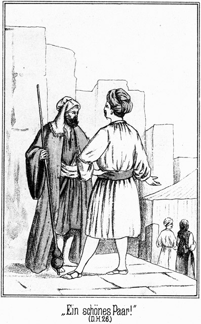»Ein schönes Paar! Gerade als ob Allah sie für einander bestimmt hätte!«
»Hat er sie für einander bestimmt, so kann kein Mensch widerstehen, auch ich nicht.«
»Sein Wille geschehe!«
»Der wohl auch der meinige ist.«
»Du hassest Hilal?«
»Nein.«
»Fast hat es mir so geschienen.«
»Er ist ein braver Mann. Ich habe ihn belauscht, als er mit meiner Tochter sprach; Du aber wirst ihm dies nicht wieder sagen. Sie sprachen von ihrer Liebe zu einander und daß ich Hiluja wohl bereits für einen Andern bestimmt haben könnte; sie meinte, daß sie widerstreben werde, er aber machte sie auf den Koran und die Worte des Propheten aufmerksam, welche dem Kinde befehlen, dem Vater und Erzeuger Gehorsam zu erweisen.«
»Ah! Das hätte er gethan?«
»Ja. Ich habe es mit meinen eigenen Ohren gehört.«
»Ich habe ihn für einen sehr braven Menschen gehalten, aber eine solche Selbstlosigkeit habe ich ihm doch nicht zugetraut.«
»O, er sprach dann freilich davon, daß er mit dem Mescheer kämpfen wolle. Das thut mir leid, denn ich habe Hiluja dem Mescheer bestimmt, und er wird sie erhalten.«
Er hätte vielleicht weiter über diesen Gegenstand gesprochen, aber unten an den Stufen, an welchen jetzt die beiden Geschwisterpaare mit dem alten Kalaf standen, schien sich eine kleine Scene vorbereiten zu wollen. Nämlich Ibrahim Pascha und der Russe näherten sich dem angegebenen Orte, und es war ihren Mienen anzusehen, daß sie irgend eine Absicht hegten. Darum stieg Steinbach hinab, wo er gleich mit ihnen zu der angegebenen Gruppe stieß.
»Wir hören,« sagte der Pascha, »daß der glorreiche und berühmte Stamm der Beni Sallah einen neuen Scheik erhalten hat, und sind gekommen, ihm unsere Freundschaft und Ergebenheit zu erweisen.«
Dabei konnte er sich nicht beherrschen, einen halb und halb ironischen Blick auf Tarik zu werfen, welcher in seinem unscheinbaren Gewande vor ihm stand, sich aber nicht aus der Fassung bringen ließ, sondern mit der Würde eines Mannes, welcher bereits fünfzig Jahre lang Scheik gewesen ist, antwortete:
»Ihr seid unsere Gäste und thut also wohl daran, uns Eure Aufmerksamkeit und Höflichkeit zu erweisen. Ihr sprecht von Ergebenheit; diese verlangen wir nicht. So hohe Männer, wie Ihr seid, können uns armen Söhnen der Wüste nicht ergeben sein, und was Eure Freundschaft anbelangt, so hoffen wir, daß Ihr sie uns beweisen werdet, auch ohne viel von ihr zu sprechen.«
Das war nun sehr brav gesprochen, das hatten sie diesem Manne, der in alten Linnen, mit einem Stricke zusammengebunden, vor ihnen stand, wohl schwerlich zugetraut. Sie schauten auch ganz verblüfft darein, eine Antwort zu bekommen, die ihnen ein routinirter Diplomat nicht besser hätte geben können. Tarik wendete sich halb ab, zum Zeichen, daß er meine, die Unterredung sei zu Ende; da aber sagte der Pascha:
»Verzeihe! Wir haben das Verlangen, Euch von unserer Freundschaft zu überzeugen, doch hoffen wir, daß uns dies von Euch nicht so sehr wie bisher erschwert werde.«
»Erschwert? Wieso?«
»Ihr habt Euch nicht in Allem als Freunde gegen uns Beide gezeigt.«
»Du siehst mich verwundert! Haben wir Euch nicht aufgenommen, Euch Obdach, Essen und Trinken gegeben? Hungert Ihr? Dürstet Ihr?«
»Nein. Aber Ihr habt mir mein Weib, meine Sclavin genommen!«
»Wir haben sie Dir nicht genommen, sondern sie ist freiwillig zu uns gekommen. Sie ist unser Gast ebenso gut, wie Du es bist, und wir müssen ihren Willen thun, so wie wir den Deinigen thun würden.«
»Ihr habt den Ihrigen, nicht aber den Meinigen gethan.«
»Vergleiche Dich mit ihr, wenn Ihr unsere Zelte verlassen habt. Jetzt wohnt sie unter unserem Schutze.«
»Sie wird Euch niemals zu gleicher Zeit mit mir verlassen. Sie ist für mich verloren.«
»So hast Du es nicht verstanden, ihre Liebe zu gewinnen, wir aber können nichts dafür.«
»Sodann habt Ihr mir meinen Diener genommen!«
»Davon weiß ich nichts. Sprecht hier mit diesem Masr-Effendi, bei welchem sich Derjenige aufhält, von welchem Ihr redet.«
Der Pascha blickte Steinbach erstaunt an. Es war ihm ganz und gar nicht lieb, an diesen gewiesen zu werden. Er fragte in feindseligem Tone:
»Bei Dir ist er? Wirklich?«
»Ehe ich antworten kann, muß ich erst wissen, von wem die Rede ist.«
»Von Saïd, meinem Arabadschi.«
»Der befindet sich allerdings bei mir.«
»Du hast ihn mir abspenstig gemacht?«
»Nein. Er kam zu mir und bat mich, ihn bei mir aufzunehmen. Ich habe ihm diese Bitte erfüllt.«
»Das durftest Du nicht. Er war mein Diener!«
»Kannst Du das beweisen?«
»Ja.«
»Womit?«
»Frage Zykyma, sie wird es mir bezeugen.«
»Das hat sie bereits gethan. Sie hat gesagt, daß er Dein Diener gewesen sei.«
»So schicke ihn zu mir zurück!«
»Er will nicht, und er hat auch keinen Augenblick nöthig, länger bei Dir zu bleiben. Du hast ihm weit über ein Jahr lang keinen Lohn bezahlt.«
»Ich werde ihn bezahlen!«
»Das glaubt er nicht. Er schenkt Dir das Geld und bleibt lieber bei mir. Des kannst Du froh sein.«
»Der Hund!«
»Schimpfe meinen Diener nicht, wenn Du nicht zugleich mich beleidigen willst!«
»Ich durchschaue Dich. Du bist voller Feindschaft gegen uns; Du klagst uns wegen Sachen an, von denen wir gar nichts wissen; Du möchtest uns am Liebsten ganz verderben, wir aber wissen keinen einzigen Grund dazu und sind ganz im Gegentheile erbötig, Dir alle Aufmerksamkeit und jeden Gefallen zu erweisen –«
»Das redet Ihr nur. Ich kenne Euch.«
»Nein! Gieb uns Gelegenheit, Dir einen Gefallen zu thun, so werden wir es sofort machen!«
»Nun wohl, ich will Euch beweisen, daß dies blos Heuchelei ist!« Und sich an den Russen wendend, fuhr er fort: »Du bist natürlich mir ebenso zu Diensten erbötig, wie Dein Gefährte hier?«
»Ja, sehr gern!«
»So beantworte mir die eine Frage: »Wo befindet sich gegenwärtig Gökala?«
Der Graf erschrak. Diese directe Frage hatte er nicht erwartet. Er raffte sich schleunigst zusammen und antwortete, eine möglichst verwunderte Miene zeigend:
»Gökala? Wer ist das?«
»Ah, Du kennst Die nicht, welche mit im Harem des Sultans war, mit der Ihr mich dann fortschlepptet, nachdem Ihr mich getödtet zu haben glaubtet?«
»Du siehst mich im höchsten Grade erstaunt. Von Allem, was Du hier sagst, verstehe ich kein Wort.«
»Pah! Mein Diener ist mit Euch von Konstantinopel bis Alexandrien gefahren; er forscht weiter. Ich habe Dich gefunden, und er wird Gökala finden.«
Ueber das Gesicht des Grafen glitt es wie Schadenfreude und Besorgniß zugleich. Er antwortete:
»Ich verstehe Dich wirklich nicht, aber wenn Alles wirklich so wäre, wie Du sagst, so wäre ich wohl auch der Mann dazu, Gökala dahin zu bringen, wohin Deine Nase nicht riechen dürfte, ohne sich in Gefahr zu befinden, Dir verloren zu gehen. Du bist von einer fixen Idee besessen, und da Du bei Deinen Phantasieen bleibst, so wollen wir uns keine weitere Mühe geben, Dich zu kuriren. Allah ist reich an Gnade und Erbarmen; wenn es ihm beliebt, wird er Dein Gehirn wieder in Ordnung bringen, auch ohne daß wir uns dabei anstrengen.«
Sie wendeten sich ab und entfernten sich. Steinbach blickte ihnen nachdenklich nach. Es stand ihm fern, sich über ihr Verhalten und ihre Worte zu ärgern. Er spielte mit ihnen eine Parthie Schach, bei welcher viel, sehr viel, vielleicht sein ganzes Lebensglück, gewonnen oder verloren werden konnte, und er hatte genug Objectivität, sich selbst durch solche Niederträchtigkeiten nicht aus der Fassung bringen zu lassen.
Indessen war der Kameelszug des Riesen dem Horizonte näher gekommen und hatte bis jetzt die ursprüngliche Richtung nach Nord beibehalten. Steinbach bestieg die Ruine wieder, gefolgt von den beiden Söhnen des Blitzes und von Normann. Die Sonne hatte die größte Strecke ihres Tagebogens zurückgelegt und begann bereits, sich zur Rüste zu neigen. Steinbach beschattete mit der Hand die Augen und verfolgte mit scharfem Blicke den kleinen Zug des Riesen. Dadurch aufmerksam gemacht, thaten die drei Anderen dasselbe. Die Thiere Falehds waren nicht mehr von einander zu unterscheiden; sie bildeten jetzt einen einzigen Punkt, welcher jetzt nur noch die scheinbare Größe einer Erbse hatte und nur von einem höchst scharfen Auge von der grauduftigen Linie des Horizontes zu unterscheiden war. Plötzlich kauerte Steinbach nieder und legte das Gesicht an die Seite eines hohen Steinquaders, dessen eine obere Kante für ihn nun eine feste, unverrückbare Visirlinie bildete, mit welcher er die langsame Bewegung des erwähnten erbsengroßen Punktes vergleichen konnte.
Normann beobachtete ihn dabei und fragte:
»Sie glauben wohl, daß er bereits jetzt von seiner Richtung abweicht?«
»Ich glaube es nicht nur, sondern ich sah es bereits.«
»Da müssen Sie ein ungeheuer scharfes Auge haben.«
»Das habe ich. Nur konnte ich mich irren. Ein Blick aus freier Hand, wenn ich mich dieses Ausdruckes bedienen kann, ist aber der Täuschung unterworfen; darum visire ich, und da bemerke ich denn, daß sich der Riese bereits nach links wendet. Er mag wohl denken, daß wir ihn nicht mehr zu sehen vermögen.«
»Also haben Sie Recht mit Ihrer vorhin ausgesprochenen Vermuthung, daß er uns mit seiner zuerst eingeschlagenen Richtung irre leiten will.«
»Das ist sicher. Aus der Schnelligkeit, mit welcher sich der Punkt jetzt bewegt, ist zu schließen, daß er galoppirt. Er wird das freilich nicht lange aushalten können.«
»Sie meinen, daß seine Lastkameele ermüden?«
»Das nicht. Aber sein Auge ist so beschäftigt, daß sich durch die Anstrengung des Rittes das Wundfieber sehr bald einstellen wird. Dann ist er gezwungen, ein langsameres Tempo einzuschlagen oder gar inne zu halten. Ich habe bedeutende Lust, ihn ein Wenig zu beobachten.«
»Warum?« fragte Tarik.
»Um zu wissen, ob er wirklich, wie wir vermutheten, einen Halbkreis bis nach Süd beschreibt.«
»Das wird er jedenfalls thun. Er geht zu den Beni Suef. Das weiß ich, auch ohne, daß wir ihn beobachten.«
»Und dennoch – – – hm! Ich traue ihm nicht! Er wird diesen feindlichen Stamm jedenfalls aus Rache zu einem Kriegszuge bereden.«
»Dies können wir doch dadurch, daß wir ihm jetzt eine Strecke weit folgen, nicht verhindern.«
»Nein; aber ich habe sehr oft erfahren, daß man in solchen Fällen gar nie zu viel thun kann. Wenn wir auf ihn stoßen und er dadurch erkennen muß, daß wir uns nicht von ihm täuschen lassen, so wird er denken, daß wir vorsichtig sein und uns auch für Weiteres bereit halten werden.«
»Du hast Recht,« sagte Hilal. »Wenn Du reiten willst, werde ich Dich begleiten. Wir nehmen die beiden schnellsten Pferde.«
»Ein überflüssiger Ritt!« bemerkte auch Normann.
»Gar nicht!« antwortete Steinbach. »Ich möchte diesem Kerl zeigen, daß er doch nicht klug genug ist, uns zu täuschen, oder, anders ausgedrückt, daß wir nicht dumm genug sind, uns von ihm täuschen zu lassen. Laß also satteln, Hilal. Wir wollen den Spazierritt unternehmen.«
Der Genannte entfernte sich. Dann fuhr Steinbach fort:
»Ich habe nämlich auch noch einen zweiten Grund, dem Riesen zu zeigen, daß wir ihm auf die Finger sehen. Ich traue ihm nämlich nicht in Beziehung auf den Russen und auf Ibrahim Pascha.«
»Sie meinen, daß er mit ihnen conspirire?«
»Oder bereits conspirirt hat. Sie werden erkannt haben müssen, daß ihre Rolle hier ausgespielt ist. Sie wissen, was sie von mir zu erwarten haben, und es steht zu vermuthen, daß sie auf den Gedanken gekommen sind, das Lager heimlich zu verlassen. Sie wissen, daß wir ihnen nach ihrem Aufbruche folgen werden und daß sie dann wohl verloren sind. Dadurch, daß sie sich heimlich entfernen, bekommen sie einen Vorsprung, den wir wohl nicht leicht einholen würden.«
»Was hat das mit dem Riesen zu thun?«
»Sehr viel, vielleicht mehr, als Sie anzunehmen scheinen.«
»Er darf sich ja nicht blicken lassen! Uebrigens reitet er aller Wahrscheinlichkeit nach zu den Beni Suef, während die beiden Genannten ihr Ziel in Egypten haben.«
»Beides ist richtig; aber diese Beiden müssen sich ja sagen, daß wir dieses ihr Ziel kennen und ihnen also folgen werden. Sie reiten allein, ohne Schutz und Begleitung, werden also voraussichtlich unterliegen, falls wir sie erreichen. Darum steht zu erwarten, daß sie sich nach einer schützenden Begleitung umsehen werden. Und wo finden sie diese?«
»Meinen Sie etwa bei den Beni Suef?«
»Ja, das meine ich.«
»Sapperment! Dieser Gedanke ist gewagt!«
»Aber doch erklärlich. Sie haben mit dem Riesen in dessen Zelte zusammen gehockt. Wovon haben sie gesprochen? Von dem so unerwarteten Ausgange des Kampfes, durch welchen ihre Absichten völlig durchkreuzt worden sind, von ihrem Zorne, ihrer Wuth und – – ihrer Rache. Die größte Sicherheit würde es für sie geben, wenn es ihnen gelänge, mich unschädlich zu machen. Gehen sie zu den Beni Suef, um sie zu einem Ueberfall dieses Lagers zu verleiten, gelingt dieser Ueberfall, so haben sie sich nicht nur gerächt, sondern sie sind auch den Feind los, den sie am Meisten zu fürchten haben – nämlich mich.«
»Hm! Ihre Folgerungen sind nicht unlogisch.«
»Nicht wahr? Ich halte es für sehr möglich, wo nicht für wahrscheinlich, daß sie sich heute Abend oder während der Nacht davonschleichen wollen und mit dem Riesen einen Punkt verabredet haben, an welchem er sie erwarten soll.«
»So muß man sie bewachen!«
»Gewiß. Wollen Sie das übernehmen, während ich mich mit Hilal abwesend befinde?«
»Ja, gern.«
»Uebrigens wird im Laufe des Abends noch eine wichtige Versammlung der Aeltesten stattfinden. Der neue Scheik ist gewählt, und so muß darüber abgestimmt werden, wie sich der Stamm zu dem Vicekönig verhalten will. Die Entscheidung, welche da gefällt wird, werden Beide, der Pascha und der Graf, sicher noch abwarten; dann aber heißt es, ihr Zelt genau und unausgesetzt im Auge zu behalten.«
Jetzt rief Hilal von unten herauf, daß die Pferde bereit seien. Steinbach stieg hinab, nachdem er sich noch für den Ritt bewaffnet hatte, und bald flogen die beiden vortrefflichen Pferde mit der Schnelligkeit eines Eilzuges in die Wüste hinaus, nicht in nördlicher Richtung, wo mittlerweile der Riese am Horizonte verschwunden war, sondern nach Westen zu.
Dort war die Sonne mittlerweile hinabgesunken. Gerade als die beiden Reiter die Oase verließen, ertönten die Schläge des Mueddin und dann seine Worte:
»Auf, Ihr Gläubigen, rüstet Euch zum Gebete, denn die Sonne hat sich in das Sandmeer getaucht!«
Die letzten Strahlen flammten funkelnd über die weite Ebene herein, golden und dick, als ob man sie greifen und festhalten könne. Aber dieses Gold wurde schnell matter; es färbte sich orange, ging in ein helles, kupfernes Roth über, zuckte wie dünnflüssige Bronce über die Wüste, wich dann schnell und schneller zurück, wie eine riesige Aetherbrandung, welche in das Lichtmeer der Unendlichkeit entweicht, sammelte sich dann an dem einen Punkte des Horizontes, unter welchem der Sonnenball zur Ruhe gegangen war, und verlor sich endlich, nach und nach ersterbend, in einen fahlen Dämmerschein, welcher, zuweilen und immer langsamer noch von wenigen helleren Strahlen durchzuckt, in das Dunkel des Abends überging und dem tiefen Blau wich, welches von Osten her über den Himmel zog, von hundert und tausend Sternen übersäet.
Den Riesen jetzt zu sehen, davon war natürlich keine Rede; dennoch wollten sie ihn treffen. Wie aber war das anzufangen? Der Weg, welchen er einschlug, war eine dünne Linie in der Endlosigkeit der Wüste. Aber wer sich bereits in jenen Strecken bewegt hat, der weiß sich zu helfen. Hilal zügelte nach einer Weile sein Pferd zu langsamerem Gange und sagte:
»Jetzt werden wir uns vielleicht da befinden, wo er vorüberkommt.«
»Woraus schließest Du das?«
»Meinst Du, daß Falehd einen größeren Umweg machen werde, als unbedingt nöthig ist?«
»Ganz gewiß nicht.«
»Oder meinst Du, daß er sich so nahe an unser Lager hält, daß er befürchten müßte, entdeckt zu werden?«
»Auch das nicht.«
»So wird er also die Mitte zwischen beiden wählen, nicht zu nahe am Lager und aber auch nicht zu entfernt von demselben. Er kennt hier jeden Schritt breit und er kennt auch unsere Angewohnheiten. Er weiß, daß die Jünglinge nach dem Abendgebete zuweilen noch eine Strecke weit in die Wüste jagen, um die Schnelligkeit der Pferde und die Geschicklichkeit der Reiter zu erproben. Dabei aber gehen sie nie über eine gewisse Entfernung hinaus, denn die Sahara ist voller Gefahren. Diese Entfernung nun ist dem Riesen sehr genau bekannt. Sie bildet einen Kreis von einem ganz bestimmten Durchmesser um das Lager, und gerade auf der Linie dieses Kreises wird er das letztere umreiten, um von Nord nach dem Süden zu kommen.«
»So muß ich mich also auf Dich verlassen.«
»Ja, ich werde Dich führen. Diese Kreislinie ist zwar nicht durch den Sand gezogen, so daß sie zu sehen wäre, man muß sie sich nur denken. Dabei kommt es auf kleine Entfernungen gar nicht an. Es ist still um uns her und wir werden den Schritt der Thiere, welche Falehd bei sich hat, wohl hören. Der Sand ist tief und wenn sie ihn mit den Füßen hinter sich werfen, so giebt er einen Ton, welcher zwar nicht stark ist, dessen metallischen Klang man aber während der Nacht auf eine beträchtliche Entfernung hin vernehmen kann.«
»Wäre es da nicht gerathen, uns zu trennen?«
»Dasselbe wollte ich Dir soeben vorschlagen. Ich glaube, daß wir die richtige Entfernung erreicht haben. Postire Du Dich hier auf, ich reite noch einige hundert Pferdelängen in gerader Linie weiter. Dort steige ich vom Pferde und lasse es sich legen. Wenn Du Dich zu dem Deinen setzest und ihm die Hand auf den Kopf legest, wird es sich nicht bewegen und auch nicht schnaufen, wenn Jemand vorüberreitet. Wenn er kommt, so lässest Du ihn vorbei und giebst mir dann das Zeichen. Ich werde in demselben Falle ganz dasselbe thun.«
»Welches Zeichen?«
»Hast Du schon einen Fennek bellen hören?«
»Ja.«
»Er geht noch weiter in die Wüste als die Hyäne oder der Schakal; es kann also gar nicht auffallen, wenn sich seine Stimme hier vernehmen läßt. Zweimal kurz bellen, das soll für den Anderen das Zeichen sein, daß er kommen soll.«
Der Fennek ist ein kleines, allerliebstes, fuchsähnliches Thierchen mit großen, breiten Ohren, welche in ganz eigenthümlicher Weise an dem Kopfe sitzen. Seine Stimme ist scharf und hell, sie klingt wie ia, ia, das I langgedehnt und gedämpft, das A aber ganz kurz und sehr laut, fast wie man im Deutschen ein recht bekräftigendes, kurzes Ja ausspricht, dessen ersten Laut man vorher lang angehalten hat.
Hilal ritt weiter. Steinbach stieg ab, schlug das Pferd auf die Krupe, bei diesen Thieren das Zeichen, sich zu legen. Es gehorchte. Darauf setzte er sich neben das Thier und legte ihm die Hand auf den Kopf. Sofort schmiegte es den letzteren tief auf den Boden hin und holte noch einmal laut und langsam Athem, als ob es sagen wolle, daß es den Reiter sehr wohl verstanden habe. Von da an lag es ohne Bewegung still.
Minuten um Minuten vergingen. Droben strahlten die Sterne des Südens. Unten zog sich die Strecke grau in die dunkler und dunkler werdende Ferne hinein. Kein Laut war zu hören. Steinbach hatte fast das Gefühl, als ob er in kleinem, schwachem und schwankem Boote im unendlichen Ocean treibe.
Es war kein Laut zu hören, nicht die Spur eines leisen Geräusches. So verging wohl eine halbe Stunde. Dann aber war es dem Lauschenden, als ob sich dort, wohin Hilal sich gewendet hatte, Etwas hören lasse, ganz so, als ob ein leiser Lufthauch durch müde herabhängendes Blätterwerk gehe. War dies vielleicht das Geräusch des Sandes, von welchem Hilal gesprochen hatte? Jedenfalls, denn wenige Secunden später tönte ein bellendes »ia ia« von dort herüber, das Zeichen, auf welches Steinbach gewartet hatte.
Jenes Blätterrauschen war nichts Anderes gewesen, als das Geräusch, welches die Thiere des Riesen im Sande hervorgebracht hatten.
Steinbach gab seinem Pferde die Erlaubniß, aufzustehen, stieg in den Sattel und trabte der Richtung zu, in welcher er den Beduinen wußte. Dieser kam ihm bereits entgegen.
»Ist er vorüber?« fragte der Deutsche.
»Ja, ganz nahe an mir.«
»Ohne Dich zu sehen?«
»Ein Anderer hätte mich gesehen, aber sein Auge ist ja krank, und wenn das eine Auge leidet, so leidet das andere mit. Komm, ihm nach!«
Sie setzten ihre Pferde in Galopp. Die Thiere fegten in dem hohen Sande dahin, daß eine Wolke desselben hinter ihnen emporflog. Bald erreichten sie den Ausgestoßenen. Er ritt in dem bekannten, ausgiebigen Kameelstrotte, welcher die Thiere nicht anstrengt, weil er ihnen natürlich ist, mit dem man aber trotzdem ungeheure Entfernungen zurücklegt.
»Wakkif, wakkif – halt, halt!« rief Hilal.
Der Riese hörte den Ruf und hielt sein Pferd an.
»Wer ist da?« fragte er, nach seinem Messer greifend. Eine andere Waffe hatte er nicht mitnehmen dürfen.
»Wer bist denn Du?« antwortete Hilal, so thuend, als ob er es nicht wisse.
»Komm näher herbei, daß ich es Dir sage!«
»Allah! Diese Stimme sollte ich kennen!«
»Ich die Deinige auch.«
Jetzt waren die Beiden an das vordere Kameel gekommen, welches der Riese ritt.
»Falehd!« rief Hilal, sich erstaunt stellend.
»Hilal! Der Knabe!«
»Wie kommst Du hierher? Wir sahen doch, daß Du nach Norden rittest!«
»Kann ich nicht da reiten, wo es mir beliebt?«
»Das kannst Du. Aber Du darfst nicht vergessen, daß Du vogelfrei bist. Du sollst Dich nicht in der Nähe des Lagers herumtreiben. Weißt Du, daß ich das Recht habe, Dich niederzuschießen!«
»Thue es, wenn es Dir Ehre bringt, einen Wehrlosen und Verwundeten zu tödten!«
»Bis heute hast Du anders gesprochen. Ich werde Dir das Leben schenken, aber mache, daß Du fortkommst! Ein Anderer wäre nicht so gnädig, wie wir Beide es sind.«
»Wer ist dieser zweite Mann?«
»Dein sehr guter Freund Masr-Effendi.«
»Der Teufel mag ihn fressen! Was hat er hier in der Wüste zu suchen?«
»Dich,« antwortete Steinbach jetzt. »Ich wollte Dir nur zeigen, daß ich Dich überall zu finden weiß, wenn es mir beliebt, Dich zu suchen. Reite jetzt weiter und grüße die tapferen Beni Suef von uns, zu denen Du doch gehen willst!«
»Allah verdamme Dich und Euch Alle!« rief der Riese.
Er schlug mit dem Stabe, den jeder Kameelreiter bei sich führt, um sein Thier zu lenken, das Reitkameel zwischen die Ohren, daß es sich sofort in eiligen Lauf setzte; die Anderen folgten ebenso schnell, da sie ja an das erstere festgebunden waren.
Er stieß noch einige laute, kräftige Flüche aus, dann aber zog er es vor, zu schweigen.
Er sah sich durchschaut, wenn auch nicht vollständig, aber doch so weit, daß die Beni Sallah jetzt wußten, wohin er sich zu wenden beabsichtigte. Das ärgerte ihn gewaltig. Die Schande, besiegt und ausgestoßen worden zu sein, brannte wie Feuer in seinem Hirn. Dazu kam der Schmerz, den ihm seine Verletzungen bereiteten. Er hatte nicht nur seine Ehre verloren, sondern auch seine Stellung, seine Habe. Er war ein Verfluchter, der seinem ärgsten Feinde danken mußte, wenn dieser ihn nicht wie ein wildes Thier niederschoß. Alle negativen Gefühle, deren das menschliche Herz fähig ist, wühlten in seinem Inneren. Er befand sich seelisch in einem Zustande, welcher jeder Beschreibung spottet, und körperlich war es nicht viel besser. Die Nase war dick angeschwollen, das Innere seines Mundes war eine einzige Geschwulst, das Auge schmerzte ganz entsetzlich. Er hatte einen Wasserschlauch mit auf sein Reitthier genommen um sich Auge, Mund und Nase fortwährend zu kühlen. Er hätte sich am Liebsten das Messer in das Herz gestoßen, doch hielt ihn der Gedanke, daß er sich ja rächen müsse, fürchterlich rächen, davon ab.
So ritt er weiter, vorsichtig in die Ferne lauschend, um ja nicht wieder eine solche Begegnung zu haben. Und doch sollte er nicht lange allein bleiben. Er sah ganz plötzlich einige dunkle Punkte vor sich in seinem Wege liegen, und noch ehe er sein Thier zu halten vermochte, begannen sie, sich zu bewegen.
Es waren abgestiegene Reiter, welche jetzt in ihre Sättel sprangen und ihn umringten.
»Kimdir, kimdir!« rief ihm der Eine zu.
Dieses Wort heißt Wer da; es ist türkisch, wird aber auch in den Ländern der arabischen Beduinen angewendet. Er glaubte natürlich, wieder Beni Sallah vor sich zu haben, trieb sein Thier also weiter und antwortete:
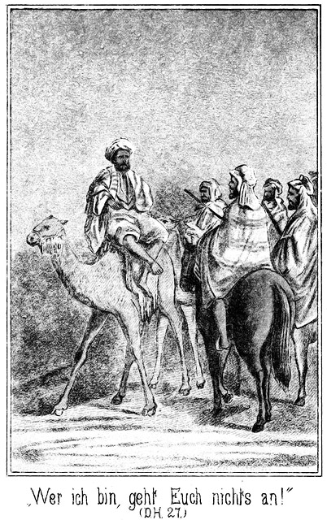»Wer ich bin, geht Euch nichts an! Laßt mich in Ruhe!«
Die Männer aber galoppirten mit derselben Schnelligkeit neben ihm her, und der vorige Sprecher sagte:
»Halte Dein Thier an, sonst schieße ich Dich herab!«
Die Nacht war sternenhell; der Riese sah den Lauf des Gewehres auf sich gerichtet und mußte gehorchen. Er gab seinem Thiere das Zeichen, zu stehen.
»Fünf Kameele und nur ein Reiter!« sagte der Mann verwundert. »Das begreife ich nicht. Woher kommst Du?«
»Da von Nord,« antwortete Falehd, welcher einzusehen begann, daß er keine Beni Sallah vor sich habe.
»Und wo willst Du hin?«
»Nach Süd.«
»In die Wüste hinein?«
»Ja.«
»Lüge nicht.«
»Ich sage die Wahrheit.«
»Kein Wanderer reitet an einem Lager vorüber, welches ihm so nahe zu erreichen liegt!«
»Welches meinst Du?«
»Willst Du nicht zu den Beni Sallah?«
»Nein. Allah verdamme sie!«
»Sind sie Deine Feinde?«
»Ja.«
»Ah! Welchem Stamme gehörst Du an?«
»Keinem. Ich bin frei.«
»Ein Ausgestoßener etwa?«
»Ja.«
»Das lügest Du wieder. Einem Ausgestoßenen giebt man nicht vier Lastkameele und ein solches Reitthier mit!«
»Glaube, was Du willst, und laß mich in Ruhe!«
»Das werde ich wohl nicht thun, denn –«
»In Ruhe lassen?« fiel ein Anderer ein. »Diesen da? Nein, ihn nicht! Hört, Ihr Männer, was für einen guten Fang wir gemacht haben! Seht seine Gestalt, seine Länge, seine Stärke! Es giebt nur einen Einzigen, dem Allah eine solche Figur gegeben hat. Ich will in allen Höllen braten, wenn dieser Mann nicht ist Falehd, der Riese vom Stamme der Beni Sallah!«
»Allah ist groß! Ist das wahr?«
»Ja, er ist es. Ich beschwöre es.«
»So muß ich ihn doch auch kennen. Steige herab vom Rücken Deines Kameeles, Mann, damit meine Augen sich an dem Anblicke Deines Angesichtes weiden mögen!«
»Wer ich bin, kann ich Euch sagen, ohne daß ich den Sattel verlasse. Ja, ich bin Falehd.«
»Allah l'Allah! Gepriesen sei Gott, der uns den Gedanken gegeben hat, in dieser Nacht hierher zu reiten! Er hat den schlimmsten unserer Feinde in unsere Hand gegeben. Er wird mit seinem Leben den Preis bezahlen für das Blut, welches er vergossen hat!«
»Ich glaube nicht, daß dies nöthig sein wird,« meinte Falehd. »Ihr nennt mich Euren Todfeind. Welchem Stamme gehört Ihr denn an.«
»Wir sind Beni Suef.«
»Tod und Teufel! Ist das wahr?«
»Ja. Steige ab und sieh uns an!«
»Zu Euch will ich ja!«
»Zu uns? Bist Du toll? Ein Beni Sallah, welcher zu uns kommt, bringt uns sein Leben!«
»Das will ich ja auch! Ich bringe Euch mein Leben auch, zwar nicht, daß Ihr es mir nehmen sollt, sondern weil ich es Euch widmen will. Ich will an Eurer Seite oder an Eurer Spitze gegen die Beni Sallah kämpfen, bis keiner dieser Hunde mehr zu sehen ist.«
»Schweig still! Wir kennen Dich! Du kommst von der Reise und willst in Dein Lager. Dabei haben wir Dich ergriffen. Nun giebt es nur ein Mittel, Dich zu retten, indem Du einer der Unserigen zu werden versprichst. Aber wir glauben Dir nicht, wir lassen uns nicht täuschen. Wir kennen Dich. Deine Zunge hat mehrere Spitzen und vielerlei Rede.«
»Wartet! Ich werde absteigen!«
Er ließ sein Kameel niederknieen und sprang aus dem hohen Sattel herab. Die Anderen waren zu Pferde. Er zählte sechs Mann. Als er jetzt am Boden stand, sagte er:
»Habt Ihr meinen Worten und meiner Stimme nicht angehört, daß ich verwundet bin? Tretet näher und seht mich an. Man hat mir ein Auge genommen und mir die Nase zerschlagen und die Zähne zerschmettert. Das ist geschehen heute um die Mittagszeit im Lager der Beni Sallah. Ich habe das Lager verlassen, um mich zu rächen. Ich wollte zu den Beni Suef. Ich war bisher deren Todfeind, kann ihnen aber den ganzen Stamm der Beni Sallah in die Hände liefern. Allah sei Dank, daß ich Euch treffe! Thut jetzt mit mir, was Ihr wollt und denkt!«
Sie traten näher und betrachteten und befühlten ihn. Derjenige, welcher der Anführer zu sein schien, sagte:
»Ja, Du bist verwundet, aber wir müssen sicher gehen. Wenn Du aufrichtig bist, wird es Dir ganz gleichgiltig sein, wenn wir Dich gefangen nehmen.«
»Thut es!«
»Und Dich binden.«
»Hier sind meine Arme. Bindet sie!«
Es wurde ein Riemen hergenommen, mit welchem man ihm die Hände auf den Rücken band. Er mußte sich setzen. Seine Kameele wurden durch leichte Hiebe an die Vorderbeine belehrt, daß sie sich legen sollten, was sie auch sogleich thaten. Die Männer, welche auch abgestiegen waren, setzten sich um ihn herum, ihn zu verhören. Er erzählte ihnen die letzten Ereignisse nach seiner Weise, so daß sein Verhalten in ein möglichst günstiges Licht gestellt wurde. Sie hörten ihm ruhig zu. Als er geendet hatte, sagte der Anführer:
»Wir wollen Dir in der Hauptsache glauben, obgleich uns Manches noch unerklärlich und bedenklich ist.«
»Fragt mich nur! Ich werde antworten.«
»Eigentlich sollte ich Dir noch nichts sagen, denn ich weiß noch nicht gewiß, ob Du es wirklich ehrlich meinst; aber Du bist gebunden und also unschädlich. Ich will Dir mittheilen, daß wir die Kundschafter sind. Weißt Du nun, was die Krieger der Beni Suef wollen?«
»Natürlich weiß ich es nun, und ich freue mich darüber. Ihr wollt die Beni Sallah überfallen?«
»Ja. Wir haben mehrere Blutrachen gegen Euch. Wir haben die jetzige Zeit aus noch anderen Gründen gewählt. Wir wissen, daß Eure Königin baldigst wieder einem Manne gehören wird, welcher Scheik –«
»Sie gehört ihm schon!« fiel Falehd ein.
»Wie? Sie hat gewählt?«
»Das war ja der Kampf, von dem ich erzählte.«
»So habt Ihr um die Königin gekämpft?«
»Ja.«
»Aber es war doch ein Fremder!«
»Er hat die Königin an Tarik abgetreten.«
»Meinst Du den Sohn des Blitzes?«
»Ja.«
»Hört, Ihr Männer, hört! Wie gut, wie sehr gut, daß wir den Riesen gefunden haben! Sage uns einmal, Falehd, ob nicht ein Pascha bei Euch ist?«
»Er ist da.«
»Und dann noch ein Fremdling, den der Sultan der Russen gesandt hat?«
»Ja.«
»Beide sind Feinde des Vicekönigs von Egypten?«
»Sie sind es. Sie kamen, um den Stamm für sich zu gewinnen. Dieser andere Fremde aber, der mich durch seine Teufelskünste blind machte, daß ich seine Streiche nicht sehen konnte, hat den Stamm bethört, daß er nun dem Vicekönige helfen will.«
»Welch eine Dummheit! Die Krieger der Beni Suef sind niemals dem Vicekönig verbündet gewesen und werden auch niemals seine Sclaven sein!«
»Das weiß ich und darum komme ich zu Euch.«
»Wir hatten von den beiden fremden Gesandten gehört; wir wußten von der Königin, daß für sie die Zeit gekommen sei, sich einen Mann zu wählen, und wir hatten Blutrache mit Euch. Darum wurde ein Kriegszug beschlossen. Wir wollten die Gesandten in unsere Hände bekommen, um mit ihnen zu verhandeln und die Geschenke zu erhalten, welche sie wohl für Euch bestimmt haben. Wir wollten uns ferner der Königin bemächtigen, daß sie gezwungen sei, Einen unseres Stammes zu wählen. Dann wäre die Blutrache erloschen und die Beni Suef hätten sich mit den Beni Sallah vereinigt zu einem einzigen Stamme. Dieser wäre dann so mächtig gewesen, daß er die Entscheidung über Krieg und Frieden gehabt hätte in den sämmtlichen Oasen Egyptens und Nubiens. Unser Scheik hat uns ausgesandt, Alles zu erfahren und zu erkunden. Wir belauschen Euch bereits seit dreien Tagen, haben aber nichts Wichtiges gesehen und gehört.«
»Wie gut, daß Ihr da mich getroffen habt!«
»Ja, das ist gut, wenn Du uns wirklich nichts als die reine Wahrheit gesagt hast.«
»Es ist kein Wort unwahr. Ja, ich kann Euch noch viel Besseres sagen: Die beiden Gesandten, welche Ihr haben wollt, wollen zu Euch.«
»Ah! Wirklich?«
»Ja. Ihr sollt noch heute mit ihnen sprechen. Man hält sie gefangen; sie aber werden heute in der Nacht entfliehen. Suef, den ich von Euch gefangen nahm, wird sie bringen. Ich habe ihm den Ort angegeben, wo er mich treffen wird.«
»Allah l'Allah! Welch ein Wunder!«
»Die Königin könnt Ihr auch noch haben. Heute hat der Kampf stattgefunden. Erst am Tage nach dem Neumond werden Beide Mann und Frau sein dürfen. Bis dahin fällt sie in Eure Hand. Und den Abgesandten des Vicekönigs, der sich Masr-Effendi nennt, werde ich Euch auch in die Hände liefern.«
»Wenn Du das thust, so soll Dir alles Blut vergeben sein, welches Du in unserem Stamme vergossen hast!«
»O, ich werde noch mehr thun. Ich liefere Euch noch zwei Personen, zwei sehr wichtige Personen. Hiluja, die Schwester der Königin, ist bei ihr auf Besuch.«
»Gott ist groß! Die Schwester der Königin! Ist sie jung und schön?«
»Jünger und schöner als Badija.«
»Wenn sie in unsere Hand geräth, soll Dir Ehre erwiesen werden, wie selten Einem widerfährt.«
»Auch ihr Vater ist da, der Scheik der Beni Abbas.«
»O Himmel! O Muhammed! Ist's wahr?«
»Er ist heute gekommen mit einer ganzen Menge von Kriegern.«
»Wir werden sie fangen! Welches Lösegeld wird das geben! Fast kann ich Dir nicht mehr glauben, was Du erzählst!«
»Ich lüge nicht!«
»Es ist zu viel, zu viel! Wüßte ich, daß wirklich Alles wahr ist, so würde ich Dir den Riemen nehmen und Dich frei lassen. Wir würden Dich behandeln, als ob Du bereits einer der Unserigen seiest.«
»Es ist Alles, Alles wahr. Ich werde es Euch beweisen.«
»Beweise es jetzt, gleich, indem Du es beschwörest!«
»Gut! Ich schwöre bei Allah, beim Propheten, bei dem Barte meines Vaters und bei dem meinigen, daß ich Euch nicht belogen habe.«
»Und daß Du alle diese Personen in unsere Hände geben willst?«
»Ja, Alle.«
»So komm her, ich binde Dich los.«
Er that es. Der Riese streckte und dehnte die Arme aus und sagte dann:
»Ich werde Wort halten, doch könnt Ihr Euch denken, daß ich einige Bedingungen zu machen habe.«
»Sage sie!«
»Ich werde bei Euch aufgenommen als Mitglied des Stammes der Beni Suef!«
»Das sage ich Dir zu.«
»Es wird um die Königin gekämpft und ich darf mich an dem Kampfe betheiligen.«
»Das versteht sich ganz von selbst.«
»Erhalte ich die Königin nicht, so erhalte ich wenigstens Hiluja, ihre Schwester.«
»Auch das gestehe ich Dir zu.«
»Und endlich bekomme ich alles Eigenthum wieder, welches ich zurücklassen mußte!«
»Es gehört Dir. Niemand wird es Dir vorenthalten, wenn es uns gelingt, die Beni Sallah zu besiegen.«
»Es gelingt; dafür laßt nur mich sorgen. Aber wird Euer Scheik auch Alles bestätigen, was Ihr mir jetzt zugesagt habt?«
»Er wird es. Ich bin sein Eidam, der Mann seiner Tochter. Er wird mich nicht schamroth machen, indem er mir verbietet, mein Wort zu halten.«
*
»So sind wir einig und ich gehöre Euch. Nun aber sagt mir auch, für welchen Tag der Ueberfall verabredet ist. Ehe Ihr Euer Lager erreicht braucht Ihr zweier Tage, und Eure Krieger werden drei Tage reiten müssen, ehe sie zum Angriffe kommen. Sodann bedarf es einiger Tage zu der Rüstung. Dabei geht sehr viel Zeit verloren, und so ist es möglich, daß Diejenigen, welche ich in Eure Hände liefern will, dann bereits wieder abgereist sind. Dann allerdings dürftet Ihr nicht sagen, daß ich nicht Wort gehalten habe.«
»Du darfst keine Sorge haben. Es steht Alles besser, als Du denkst. Wir sind bereits gerüstet, ja, wir befinden uns nicht etwa auf unsern Weideplätzen. Nur die Greise, die Knaben, die Frauen, und die Mädchen sind dort.«
»Wie! So sind Eure Krieger bereits unterwegs?«
»Seit drei Tagen.«
»So sind sie schon in der Nähe?«
»Ja.«
»Wo?« fragte der Riese in erstauntem Tone.
»Ich weiß nicht, ob ich es sagen darf.«
»O Allah! Wenn ich heut Sieger und Scheik geworden wäre, so wäre doch vielleicht in zwei oder drei Tagen schon die ganze Herrlichkeit hin gewesen.«
»Ja, wir hätten Euch überfallen und vernichtet. Ihr hättet nichts geahnt. Wir wären über Euch gekommen, wie das Heer der Millionen Heuschrecken über die Felder kommt – vom Himmel herab, aus den Wolken hernieder, ohne daß man es vorher denkt.«
»Wie gut, daß ich also unterlegen bin! Nun wird Alles gut, Alles, Alles! Ihr könnt Euch auf mich verlassen; Ihr könnt mir vertrauen und dürft mir sagen, wo sich Eure Krieger befinden. Bedenkt, daß ich meine Worte und mein ganzes Verhalten darnach einzurichten habe!«
»Du magst Recht haben, wenn Du glaubst, wissen zu müssen, wo unsere Krieger sind. Sie halten sich im Ferß el Hadschar verborgen.«
»Im Ferß el Hadschar? Wie viele sind ihrer?«
»Volle sechshundert Mann, Alle gut bewaffnet.«
»Beritten?«
»Mit Pferden. Speise und Munition haben wir auf Lastkameelen mitgebracht.«
»Wie ist das möglich? Sechshundert Mann mit ebenso vielen Pferden außer den Lastkameelen in dem wilden öden Ferß el Hadschar!«
Nämlich ziemlich halbwegs zwischen den Weideplätzen der Beni Suef und der Beni Sallah steigen aus der tiefsandigen Wüste steile, nackte Felsenhöhen empor. Wie Trümmer eines vor Jahrtausenden eingestürzten Gebirges liegen hier Felsen auf und übereinander gethürmt. Man glaubt weder Weg noch Steg zu finden. Alles rings bietet den Anblick des Todes, der Leblosigkeit. Dieses Felsenwerk wird Ferß el Hadschar genannt, zu Deutsch das Bett der Steine.
Der Beduine hat für hunderte ähnlicher in der Wüste liegender Orte auch ähnliche Bezeichnungen: Batte el Hadschar, Bauch der Steine, Om el Hadschar, Mutter der Steine, Abu'l Hadschar, Vater der Steine. Der Riese kannte dieses »Bett der Steine«. Er hielt es für unmöglich, daß so viele Menschen und so viele Thiere dort Aufenthalt nehmen könnten.
»Warum wunderst Du Dich?« fragte der Andere.
»Es ist kein Wasser da.«
Wasser ist allerdings in der Wüste das allererste und alleroberste Existenzbedürfniß. Wo dieses fehlt, da ist kein Leben, da flieht selbst der kühnste Beduine schnell wie ein lebloser Schatten vorüber.
»Kein Wasser? Weißt Du das so gewiß?«
»Ja. Wir haben seit Menschenaltern dort nach Wasser gesucht und keinen Tropfen gefunden.«
»Ihr seid eben Beni Sallah und kein Beni Suef. Es giebt Wasser dort. Hast Du nicht von den geheimen Quellen der Wüste gehört?«
»Wie sollte ich nicht. Das Kameel des dürstenden Wanderers bleibt in der dürrsten Einöde stehen, wo es keinen Tropfen zu geben scheint, und scharrt mit den Füßen im Sande. Der Reiter springt ab und gräbt mit den Händen weiter. Da kommt eine Quelle zum Vorschein. Er trinkt, läßt sein Thier sich satt trinken und füllt sich auch die Schläuche. Dann breitet er seine Decke über die Stelle und legt den Sand auf die Decke, so daß kein Vorüberkommender es ahnt, daß hier eine Quelle sei. Zu dieser Stelle kehrt er dann zurück, wenn er Wasser braucht. Sie bietet ihm Rettung in Noth und Verfolgung. So lange er sie allein besitzt, kann kein Feind ihn überwinden.«
»So ist es aber nicht nur in der Wüste des Sandes, sondern auch in der Wüste des Felsens. Hast Du nicht gehört aus dem Kuran, daß Musa (Moses) Wasser aus dem Felsen schlug? Auch im Ferß el Hadschar giebt es zwei Quellen. Sie sind nur uns bekannt. Sie wurden von unseren Vätern entdeckt, und kein Angehöriger eines andern Stammes wird jemals einen Tropfen aus ihnen erblicken und kosten. Dort befinden sich unsere Krieger.«
»Dorthin bedarf es nur einer Tagereise. Wir könnten also morgen Abend dort sein?«
»Ja. Wir werden dort anlangen, wenn die Sonne niedergesunken ist. Du meinst also, daß die beiden Gesandten mitreiten werden?«
»Ja. Ich werde Euch jetzt nach der Stelle führen, wo ich sie erwarte.«
»Werden sie gute Reitthiere haben?«
»Suef wird dafür sorgen, daß sie die besten bekommen, welche vorhanden sind. Ich danke Allah, der Euch in meinen Weg geführt hat. Vielleicht wäre ich verschmachtet und gestorben, ehe ich Eure Weideplätze erreicht hätte. Der Schmerz frißt an meinem Marke. Das Wundfieber hätte mich niedergeworfen, mitten in der Wüste.«
»Ist die Wunde so schlimm?«
»Jener Hund hat mir das Auge herausgeschlagen, daß es mir über die Wange hing. Er hat es mir, als er mich für besinnungslos hielt, wieder hineingesteckt, aber es ist verloren. Habt Ihr einen Mann in Eurem Stamme, welcher Krankheiten heilt?«
»Wir haben Mehrere.«
»So werde ich mir das Auge wegschneiden lassen, damit es mir nicht im Kopfe verfault und auch noch das Hirn in Fäulniß bringt. Bis dahin werde ich mich auf Eure Hilfe verlassen müssen. Wasser habe ich genug, die Wunde zu kühlen, aber das ist doch unzureichend. Es ist kein Arzt und keine Salbe vorhanden.«
»Wir haben bei unseren Kriegern zwei weise Männer, die sich auf Wunden verstehen, die werden Dir helfen. Wir nehmen sie mit, weil wir kämpfen werden. Sie sollten die Verwundeten verbinden und pflegen.«
»Ich werde ihnen sehr dankbar sein, wenn sie mich wieder herstellen. Derjenige aber, welcher mir das Auge genommen hat, soll seine beiden hergeben und die Ohren und die Zunge dazu!«
Er stand von seinem Platze auf, streckte den Arm nach der Gegend aus, in welcher sich das Lager befand, und fuhr in drohendem Tone fort:
»Sie haben mich ausgestoßen als den Schwachen, aber ich werde wiederkommen mit Macht. Die Alten sollen sterben und die Jungen verderben, die Mütter sollen jammern über die Frucht in ihren Leibern, und die Jungfrauen sollen sein wie die abgeschlachteten Schafe. Es wird ein Blutgeruch ausgehen von diesem verfluchten Orte, über den sich alle Welt entsetzen wird. Die aber, welche ich mir aussuche, die werde ich krumm fesseln und in Käfige stecken und mit mir herumführen, wie man die Brut der alten Krokodile in Töpfe steckt, um sie sehen zu lassen. Ich habe es gesagt, und Allah hat es gehört. Was ich schwöre, das halte ich auch!«
Es schauderte die Zuhörer bei seinen Worten.
»Glaubt Ihr nun, daß ich ein Feind dieser von Allah und dem Teufel verfluchten Beni Sallah bin?« fragte er.
»Ja, jetzt glauben wir es.«
»So kommt! Ich werde Euch zur Stelle führen, an welcher wir zu warten haben.«
»Wird man uns dort nicht bemerken?«
»Nein. Ihr könnt Euch doch denken, daß ich selbst nicht dahin gehen werde, wo man mich bemerken kann. Der Stamm hat mich für vogelfrei erklärt; ich erkläre nun alle Söhne und Töchter des Stammes für vogelfrei, und ich werde nicht ruhen, bis das Verhängniß über sie gekommen ist!«
»Haben wir lange zu warten?«
»Vor Mitternacht werden sie sich nicht entfernen können. Das ist mir aber um meines Auges willen lieb. Ich kann mich bis dahin ausruhen und pflegen.«
Er stieg auf und die Andern thaten dasselbe. Sie ritten fort und verschwanden im Dunkel der Nacht, ebenso wie ihre Absichten nächtig dunkle waren.
Steinbach und Hilal hatten sich nicht weiter um ihren Feind gekümmert. Hätten sie von seiner baldigen Begegnung mit den Kundschaftern eine Ahnung haben können, so wären sie wohl nicht so heiter und sorglos nach dem Lager zurückgekehrt.
Bereits von Weitem bemerkten sie den Schein des Lagerfeuers, um welches sich die Aeltesten nun schon versammelt hatten, um ihre Berathung zu halten. Steinbach hatte natürlich daran teilzunehmen; vorher aber suchte er Normann auf.
Er fand denselben in der Nähe der beiden Zelte, in denen der Pascha und der Graf wohnten. Nachdem er ihm die Weisung gegeben hatte, in seiner Aufmerksamkeit nicht nachzulassen, begab er sich nach dem Versammlungsorte, wo es bereits sehr lebhaft zuging.
Sein Erscheinen war schon längst erwartet worden. Die Wenigen, welche als Gegner des Vicekönigs bekannt waren, wagten nach den heutigen Ereignissen nicht, ihre Ansichten zur Sprache zu bringen. Steinbach hielt eine längere, siegreich wirkende Rede, und als er am Schlusse derselben mittheilte, was er als Geschenk des Vicekönigs mitgebracht habe, erhob sich ein lauter Jubel, welcher sich über das Lager fortpflanzte. Man verlangte, die Gewehre zu sehen. Steinbach ließ nur einige kommen, welche er den Aeltesten verehrte. Die Anderen wurden für später vertröstet. Doch hatte er seine Sache vollständig gewonnen.
Am Schlusse der Verhandlung wurden der Graf und der Pascha geholt, um das Resultat zu erfahren. Als sie herbeitraten, ertönten die drei Schläge des Mueddin von oben herab und dann verkündete er:
»Im Namen des allbarmherzigen Gottes! Preis sei ihm, daß er den Männern Weisheit gegeben hat, das Gute vom Bösen zu unterscheiden! Gelobt sei Taufik Pascha, der Herrscher von El Kahira und Egypten. Sein Leben währe tausend Jahre und seinen Schritten möge Glück und Segen folgen. Er ist unser Freund und wir sind seine Freunde. Wer gegen ihn ist, der ist gegen uns und soll unsere Rache kosten. Das haben die Aeltesten beschlossen. Hört es, Ihr Männer und Ihr Frauen! Allah ist die Weisheit; er giebt den Verstand. Er sei gelobt, denn er ist Gott und Muhammed ist sein Prophet!«
Nach dieser in echt muhammedanischem Style erfolgten Verkündigung wußten die beiden oben Genannten nur zu genau, woran sie waren.
»Verdammt!« flüsterte der Russe. »Dieser verfluchte Deutsche siegt stets und überall! Erst in Konstantinopel!«
»Dann in Tunis und nun hier!« fiel der Pascha ein. »Unsers Bleibens ist nun hier nicht mehr.«
»Nein. Wäre doch erst Mitternacht vorüber! Kommen Sie mit in mein Zelt. Wir wollen beisammen bleiben, damit Suef keine Mühe hat, uns zu finden.«
Sie wollten gehen, wurden aber zurückgehalten, indem der Scheik noch mit ihnen zu sprechen habe.
Tarik hatte nämlich heut Abend zum ersten Male in seiner neuen Würde fungirt, indem er während der Verhandlung den Vorsitz geführt hatte. Der junge, scheinbar so einfache Mann hatte sich dabei nicht nur keine Blöße gegeben, sondern im Gegentheile Allen imponirt. Die beiden hochgestellten Herren ärgerten sich trotzdem nicht wenig, vor dem Forum eines Mannes erscheinen zu müssen, welcher nicht nur noch ein Jüngling sondern in ihren Augen ein halbwilder Mensch war. Er musterte sie mit ernstem Blicke und fragte dann:
»Habt Ihr gehört, was der Mueddin verkündet hat?«
»Ja. Wir sind nicht taub!« antwortete der Pascha.
»Man kann taub sein und dennoch hören, und man hört zuweilen nicht und ist doch nicht taub. Habt Ihr der Versammlung der Ehrwürdigen oder auch mir vielleicht noch Etwas zu sagen?«
»Nein, der Versammlung nicht und Dir nun erst gar nichts.«
»Es ist gut, daß Du so aufrichtig sprichst, denn nun weiß ich, was ich zu wissen habe. Bei Euch werden die klugen Männer, welche die Geschicke ihrer Völker lenken, Diplomaten genannt. Man sagte mir, daß auch Ihr Diplomaten seiet; aber ich erkenne jetzt, daß man Euch Unrecht gethan hat. Wehe dem einzelnen Menschen, dessen Geschick in Eure Hand gelegt wäre! Wehe also millionenmale einem ganzen Volke!«
»Ich danke Dir! Aber wir haben Dich gar nicht nach Deiner Meinung über uns gefragt.«
»Das wäre auch sehr verwegen von Euch gewesen, da es sich für Euch nicht schickt, dem Scheik eines berühmten Stammes Fragen vorzulegen. Nur ich bin es, der zu fragen hat, und so frage ich Euch jetzt, wann Ihr unser Lager zu verlassen gedenkt.«
»Wir bestreiten, daß Du ein Recht zu dieser Frage hast.«
»Was Ihr bestreitet oder nicht, das kann hier gar nichts ändern. Ihr mögt zuweilen nutzlose Worte machen, ich thue das niemals. Wenn ich Euch frage, so habe ich einen Grund dazu.«
»Welcher ist das?«
»Ich brauchte Euch nicht zu antworten, will es aber dennoch thun, damit Ihr seht, daß ich höflicher bin als Ihr. Ihr genießt unsere Gastfreundschaft. Wir müssen also wissen, wie lange Ihr sie noch zu genießen gedenkt.«
»Lange nicht mehr.«
»Sagt mir den Tag.«
»Gut. Wir werden morgen früh abreisen.«
»Das kann ich nicht erlauben.«
»Nicht! Ah! Warum nicht?«
»Früh abzureisen, ist gegen das Gesetz der Wüste. Ein Gast, welcher dem Stamme, dessen Wohlthat er genaß, dankbar ist, reist nicht anders ab als kurz nach dem Nachmittagsgebet, drei Stunden vor Untergang der Sonne. Wißt Ihr das nicht?«
»Wir wissen es, aber wir werden doch das Recht besitzen, über unser Thun selbst bestimmen zu können!«
»Das habt Ihr, und darum könnt Ihr abreisen, wann es Euch beliebt. Aber ich will abermals höflicher sein, als Ihr es seid, und Euch warnen. Es ist nicht gut für Euch, wenn Ihr bereits früh abreist.«
»Warum?«
»Ihr habt eine Feindschaft mit unsern andern Gästen.«
»So habt Ihr uns zu schützen.«
»Das können wir nur dann thun, wenn Ihr Euch bei uns befindet. Sobald Ihr uns aber verlasset, steht Ihr nach unsern Gesetzen nur noch drei Stunden lang in unserm indirecten Schutze.«
»Das verstehe ich nicht.«
»Wenn Ihr unsere Gesetze nicht kennt, solltet Ihr auch nicht unhöflich gegen mich, den Scheik des Stammes, sein. Ihr könnt abreisen, wann es Euch beliebt, wie ich Euch schon gesagt habe. Drei Stunden lang beschützen wir Euch noch, das heißt, wir lassen Diejenigen, welche Euch verfolgen wollen, vor Ablauf dieser drei Stunden nicht fort von hier. Versteht Ihr nun, was ich meine?«
»Sie mögen nur nachkommen. Wir sind ebenso bewaffnet wie sie.«
»Ihr seid meine Gäste, und so will ich Euch nicht sagen, ob ich Euch für ebenso tapfer halte, wie sie es sind. Reitet Ihr früh fort, so können sie Euch, wenn sie drei Stunden später aufbrechen, noch im Laufe des Tages erreichen. Ihr könnt ihnen gar nicht entgehen, da sie Eure Spuren sehen. Reist Ihr aber zur gehörigen Zeit ab, nach dem Nachmittagsgebet, drei Stunden vor Sonnenuntergang, so können sie, wenn sie aufbrechen, Eure Spuren nicht mehr sehen, und Ihr reitet die ganze Nacht hindurch, bekommt also einen Vorsprung von vollen zwölf Stunden. Darauf mache ich Euch aufmerksam, weil ich meine Pflicht erfülle selbst Männern gegenüber, welche unhöflich gegen mich sind.«
»Gut, so reisen wir morgen nach dem Nachmittagsgebete ab, wie Du es gesagt hast.«
»Daran thut Ihr klug. Ihr werdet also auf keinen Fall früher fortreiten?«
»Nein.«
»Wißt Ihr, was man unter dem Yrza mebei wad versteht?«
»Ja, es ist das Ehrenwort.«
»Ich muß Euch bitten, mir das Yrza mebei wad zu geben, daß Ihr wirklich nicht eher fort geht.«
»Welches Recht könntest Du besitzen, uns dieses Ehrenwort abzufordern?«
»Meine Pflicht den andern Gästen gegenüber gebietet es mir.«
»Das begreife ich nicht.«
»Ihr scheint grade das, was sehr selbstverständlich ist, nicht leicht zu begreifen. Ihr sagt vielleicht, daß Ihr morgen am Nachmittage reiset, reist aber bereits in dieser Nacht heimlich ab, dadurch werden unsere anderen Gäste geschädigt, welche Euch verfolgen wollen.«
»So mögen sie aufpassen!«
»Ich muß gegen Euch und gegen sie gerecht sein. Ihr sollt keinen Schaden haben, sie aber auch nicht. Entweder gebt Ihr das Ehrenwort, oder ich muß dafür sorgen, daß Ihr nicht eher fort könnt.«
»Was thust Du da?«
»Ich nehme Euch gefangen!«
»Deine Gäste?«
»Sobald Ihr Euch weigert, Euch nach unsern Satzungen zu richten, habt Ihr aufgehört, unsere Gäste zu sein!«
»Du giebst Dir ganz das Wesen eines klugen, erfahrenen und mächtigen Mannes, der Du doch noch sehr jung und erst seit heute Scheik bist!«
»Ich habe freilich gehört, daß es bei Euch auch sehr alte Leute giebt, welche noch nicht klug geworden sind, darum wundert Ihr Euch, wenn hier bei uns bereits die Jünglinge gerecht und vorsichtig handeln. Ich habe Euch nun Alles gesagt, was mir die Pflicht gebot, Euch mitzutheilen. Wenn Ihr mir keine Antwort gebt, so nehme ich an, daß Ihr überhaupt nicht antworten wollt, und werde meine Maßregeln darnach treffen.«
»Also Ehrenwort oder Gefangenschaft?«
»Ja.«
»Was thun wir?« flüsterte der Pascha dem Grafen zu.
»Pah! Was hat bei solchen Hallunken das Ehrenwort für eine Bedeutung! Geben wir es getrost!«
»Nun?« fragte Tarik, der ungeduldig zu werden begann.
»Wir geben es,« sagte der Pascha.
»Und Dein Gefährte?«
»Ich auch,« antwortete der Russe.
»So legt Eure Hände in die meinige!«
Dies geschah, und dann fuhr der junge Scheik fort:
»Ich muß Euch noch darauf aufmerksam machen, daß der Bruch des Ehrenwortes bei uns ein todeswürdiges Verbrechen ist. Haltet Ihr nicht Wort, so kann ein Jeder Euch tödten. Es wird gut sein, wenn Ihr Euch dies zu Herzen nehmt. Jetzt sind wir fertig. Vielleicht geht Ihr zur Ruhe, um Euch im Schlafe für die morgende weite Reise zu stärken. Allah gebe Euch Frieden!«
Dieser Wink war deutlich, und so zogen sich die Beiden zurück, nicht sehr erbaut von der Rolle, welche sie hier gespielt hatten. Desto zufriedener mit seinem Erfolge aber war Steinbach. Dies sagte auch Normann, den er jetzt wieder aufsuchte.
»Ein verteufelter Kerl, dieser Tarik!« meinte er. »Er verhielt sich wirklich so, als ob er schon seit einem Menschenalter Häuptling gewesen sei. Er hat mir wirklich Respect abgenöthigt. Wie er diese beiden Herren abkanzelte! Es war wirklich brav!«
»Ja, unter diesen Natursöhnen giebt es mehr klaren Verstand und Mutterwitz als Tausende meinen. Das Ehrenwort ist abgegeben worden, aber ich traue den Zweien doch nicht recht.«
»Ich auch nicht.«
»Da drinnen mit einander. Warum geht nicht ein Jeder in sein Zelt? Warum stecken sie beisammen? Doch nur, um irgend Etwas auszuhecken!«
»Vielleicht auch nur, um ihre Reise zu besprechen.«
»Meinetwegen! Aber warum brachte der Eine vorhin ein ganzes Packet Sachen zu dem Andern? Warum schleppt er seine Habseligkeiten in das Zelt, in welchem sie sich jetzt befinden?«
»Das hätte er gethan?«
»Ja. Ich habe es mit meinen eigenen Augen gesehen.«
»So haben sie wirklich Etwas vor. Sie werden meinen, ein einem Beduinen gegebenes Ehrenwort habe keine Bedeutung. Direct haben sie es ihm, indirect aber doch uns gegeben. Ich werde Tarik bitten, das Zelt durch die ganze Nacht bewachen zu lassen.«
Er that dies sofort. Tarik war sogleich bereit, ihm den Willen zu thun, meinte aber, daß es so unauffällig wie möglich geschehen werde, um die beiden Männer nicht zu beleidigen, deren Ehrenwort eigentlich zu achten sei. Darum saß bald ein junger, wohl bewaffneter Araber so in der Nähe, daß er die Eingänge der beiden Zelte im Auge hatte und jeden Ein- und Austretenden genau erkennen konnte.
Im Lager herrschte natürlich ein sehr reges Leben. Die Königin hatte die fettesten Thiere ihrer Heerde geopfert und auch ihre sonstigen Vorräthe nicht geschont. Der Araber ist mäßig und enthaltsam, aber wenn er einmal ißt, so ißt er ordentlich. Er zeigt bei einem Schmause, daß ein menschlicher Magen Quantitäten aufzunehmen vermag, welche ein großes, fleischfressendes Thier sättigen würden. So viele Menschen der unter der Ruine gelegene freie Platz zu fassen vermochte, so viele saßen da an den riesigen, schmoorenden Spießbraten beisammen, und wenn zehn Gesättigte gingen, so setzten sich zwölf Andre an ihre Stelle. Es wurde gesungen, gejubelt und auf der einsaitigen Geige gespielt.
Bei diesem Durcheinander und regem Hin und Her fiel es gar nicht auf, daß auch der junge Suef, der Sclave des Riesen, erschien und sich mit an dem Braten erlabte. Dabei aber behielt er die beiden Zelte scharf im Auge. Er erblickte den Beduinen, welcher als Wächter in der Nähe saß. Er schnitt ein großes, saftiges Stück des köstlichen Hammelbratens ab, trug es ihm hin und sagte, es ihm überreichend:
»Ich sehe, daß Du fern sitzest, ohne zu essen. Warum kommst Du nicht zu Denen, welche am Mahle theilnehmen?«
»Ich darf nicht,« antwortete der Jüngling, in das Bratenstück beißend, daß ihm hüben und drüben der Saft vom Munde tropfte.
»Wer verbietet es Dir?«
»Der Scheik.«
»Warum? Hat nicht ein Jeder das Recht, die Gaben der Königin zu genießen?«
»Aber Du nicht?«
»Auch ich habe es, nur jetzt noch nicht. Ich habe Wache zu halten. Dann, wenn ich abgelößt bin, setze ich mich zu den Andern hinüber.«
»Wächter bist Du? Was sollst Du denn bewachen?«
»Wen, meinst Du wohl? Die beiden Fremdlinge da drin. Der Scheik denkt, daß sie sich heimlich aus dem Lager entfernen.«
»Er hat ihnen doch das Ehrenwort abgenommen!«
»Aber ob sie es auch halten!« meinte der Wächter mit altkluger Betonung.
»Sie werden es doch nicht wagen!«
»Der Scheik befürchtet es.«
»Wann wirst Du abgelößt?«
»Aller zwei Stunden kommt ein Anderer.«
»Sollen die Beiden denn gar nicht aus dem Zelte?«
»O doch! Sie würden ja sonst gleich merken, daß sie bewacht werden. Aber sobald sie heraustreten, gebe ich das Zeichen, und dann folgen wir ihnen bis sie wieder zurückkehren.«
»Das ist eigentlich sehr unnöthig. Ich an des Scheikes Stelle würde es viel klüger machen.«
»Wie denn?«
»Ich würde zu ihnen gehen oder ihnen einen klugen Mann senden, der sie heimlich auszuforschen hätte, was sie beabsichtigen.«
»Der müßte sehr klug sein. Sie werden es wohl Keinem anvertrauen, wenn sie wirklich fort wollen.«
»O, es kommt ganz darauf an, wie man die Fragen stellt. Ich möchte eine Probe machen.«
»Du? Hm!«
»Traust Du es mir nicht zu?«
»Ich meine nicht, daß es Dir gelingen werde.«
»Darf man denn nicht zu ihnen?«
»Das ist nicht verboten.«
»So werde ich einmal hineingehen. Meinst Du nicht?«
»Ich möchte freilich wohl wissen, was sie sagen. Es muß spaßhaft sein, von solchen Leuten Dinge zu hören, welche sie eigentlich verschweigen wollen. Aber sie werden sogleich Mißtrauen fassen.«
»O nein!«
»Was für einen Vorwand willst Du sagen?«
»Das ist doch sehr leicht. Haben sie gegessen?«
»Ich habe nichts gesehen.«
»Nun, so paß auf, was ich thue!«
Er ging zum Feuer, über welchem die Braten an den Spießen gedreht wurden, und schnitt ein tüchtiges Stück ab. Dasselbe an sein Messer spießend, kam er zurück und sagte lachend:
»Ist das nicht ein guter Vorwand?«
»Der beste, den es giebt. Du bist wirklich nicht so dumm, wie ich dachte.«
»O, ich werde es drinnen noch klüger anfangen. Du sollst es hören.«
Er ging nach dem Zelte und trat ein.
Drinnen saßen die Beiden, ihre Pfeifen rauchend. In einem kleinen hörnernen, mit Palmöl gefüllten Gefäße brannte ein Docht. Der matte Schein dieser einfachen Lampe erleuchtete das Innere des Zeltes nur nothdürftig.
»Suef!« sagte der Pascha erfreut. »Endlich!«
»Leise, Herr, draußen sitzt ein Wächter.«
»Hölle und Tod! Werden wir bewacht?«
»Ja. Man traut Dir nicht. Nach jeder zweiten Stunde wird der Wächter abgelöst.«
»So dürfen wir gar nicht hinaus?«
»O doch, aber Ihr werdet verfolgt und scharf beobachtet. Nöthigen Falls würde man Lärm machen.«
»Allah! So wird aus der Flucht nichts!«
»Es wird Etwas daraus. Der Wächter sitzt da vorn. Ihr müßt hinten hinaus.«
»Wo keine Thür ist?«
»Ihr schneidet einen Riß in die Zeltwand. Ich werde zur geeigneten Zeit kommen. Ich schleiche von hinten an das Zelt heran. Sobald Ihr merkt, daß ich in das Zelt schneide, helft Ihr mit und kommt hinaus. Auf der Erde kriechend, folgt Ihr mir dann.«
»Man wird uns sehen!«
»Nein. Ich komme erst dann, wenn wir sicher sein können. Der Dattelsaft, welcher heut getrunken wird, hat stark gegohren; das macht müde und schließt die Augen.«
»Haben wir denn Reitthiere?«
»Ja. Ich bin mit hinaus zu den Wächtern der Heerden postirt und werde für drei der besten und schnellsten Kameele sorgen. So viel ist sicher, daß man uns nicht ereilen wird, wenn wir einmal fort sind.«
»Und wir werden den Riesen treffen?«
»Ganz gewiß. Hier ist Fleisch. Ich habe es als Vorwand genommen, zu Euch hereintreten zu können. Der jetzige Wächter ist dumm. Gebe Allah, daß die späteren nicht etwa sehr viel klüger sind!«
Er ging wieder hinaus. Draußen fragte ihn der neugierige Posten, ob er Erfolg gehabt habe.
»Ja, aber keinen guten.«
»Wieso? Wollen sie entfliehen?«
»O nein. In dieser Beziehung ist der Erfolg sehr gut. Aber sie schliefen bereits, und da ich sie störte, wurden sie grob und drohten sogar mit Schlägen. Sie sagten, daß sie bis zum zweiten Gebete schlafen wollten, da der Ritt morgen ein sehr beschwerlicher sei. Willst Du ihnen einen Gefallen erweisen, so sorge dafür, daß sie nicht wieder von irgend Wem gestört werden!«
Er entfernte sich. Der Wächter legte sich bequem zurück und dachte bei sich, daß er diese beiden Männer wohl nicht stören werde. Er hatte heut Anderes und Besseres zu thun, als sich gar zu sehr um sie zu bekümmern.
Als sein Nachfolger kam, vertraute er diesem an, daß Suef drin gewesen sei und von ihnen den Wunsch gehört habe, daß man sie nicht stören solle, da sie sehr gern schlafen wollten. Das sprach sich weiter, von einem Posten zum andern, bis allmählich das Leben im Lager verstummte und die Feuer erloschen. Selbst ein Fest geht einmal zu Ende, und auch ein Schmauß kann nicht ewig währen. Man suchte die Lagerstätten auf.
Steinbach war auch müde geworden. Oben in der Ruine war ebenso Freude und Wohlleben gewesen wie unten vor derselben. Dann hatten sich die Mädchen zuerst zurückgezogen. Die Männer waren ausdauernder gewesen, hatten sich dann aber auch von einander verabschiedet. Als weitgereister, vielerfahrener und vorsichtiger Mann stieg Steinbach noch einmal die Stufen hinab, um nach dem Wächter zu sehen. Auch er traute dem Lagmi, dem Dattelsaft nicht recht. Und, richtig, als er zu dem Posten kam, saß dieser am Boden und schnarchte ein Solo, welches gar nicht energischer und ausgiebiger sein konnte. Natürlich weckte er ihn. Der Mann fuhr empor, rieb sich die Augen, starrte Steinbach an und murmelte dann, als er ihn erkannte, irgend eine Entschuldigung.
»Hast Du hier zu schlafen oder zu wachen?« frug der Deutsche ihn in strengem Tone.
»Verzeihung, Herr! Die Augen fielen mir zu.«
»Du sollst sie aber offen halten.«
»Das thue ich jetzt.«
»Schön! Wenn aber indessen Etwas geschehen ist!«
»O, was sollte geschehen sein?«
»Die Beiden, welche Du bewachen sollst, können sich entfernt haben.«
»Die? Nein, nein! Die schlafen.«
»Woher weißt Du das?«
»Suef ist bei ihnen gewesen. Ihm haben sie gesagt, daß sie schlafen wollen bis zum zweiten Gebete; man solle sie nur nicht stören.«
»Bis zum zweiten Gebete? Unsinn! So lange schläft kein Mensch. Wenn sie das wirklich gesagt haben, so ist es höchst auffällig. Suef? Wer ist Suef?«
»Ein Gefangener Beni Suef, der Sclave des Riesen.«
Steinbach machte eine Bewegung des Schreckes.
»Was höre ich? Ein Gefangener Beni Suef? Der Sclave des Riesen? Hatte er es gut bei ihm?«
»Ja. Er war seinem Herrn sehr treu.«
»Und der ist drin bei den Beiden gewesen? Wann?«
»Während der ersten Wache. Er hat ihnen Fleisch zum Essen hineingetragen.«
»Bist Du um die beiden Zelte patrouillirt?«
»Nein. Ich habe hier gesessen.«
»Und die Anderen wohl auch?«
»Ja. Warum sollte man um die Zelte herumlaufen? Hinten haben sie doch keine Thür.«
»Aber sie sind von Leinwand, welche zerschnitten werden kann! Wollen einmal sehen.«
Er begab sich hinter das Zelt. Zwar brannten die Feuer nicht mehr, aber im Osten begann der Tag zu dämmern, so daß man bereits einen hinreichenden Lichtschein hatte, bei welchem Steinbach sofort die große Oeffnung bemerkte, welche in die Leinwand geschnitten worden war.
»Da, schau her!« rief er. »Während Ihr vorn wachtet, sind sie hinten entflohen.«
»Oh Allah!« rief der Mann, indem er vor Schreck seine Flinte fallen ließ.
»Lauf schnell und wecke den Mueddin! Er soll das Zeichen geben, daß Alle sich versammeln.«
Der Wächter stürzte von dannen. Steinbach trat in das Zelt. Es war leer. Er eilte nach der Ruine, um Normann und Tarik und Hilal zu wecken. Diese hatten sich kaum erhoben, so tönten auch bereits die Schläge des Mueddin und darauf seine Stimme.
»Auf auf, Ihr Gläubigen! Schüttelt den Schlaf von Euch und jagt die Träume von dannen. Die Zelte der Gäste sind leer. Es ist ein Unglück geschehen im Lager der Söhne und eine Schande in der Wohnung der Väter. Kommt herbei, herbei, um wieder einzufangen die Entflohenen. Eilt mit den Beinen und ruft mit den Stimmen! Allah verderbe die Lügner, welche ihr eignes Wort nicht achten!«
Natürlich erhob sich ein großer Tumult im Lager. Steinbach wirkte vor allen Dingen darauf hin, daß Keiner das Lager verlassen durfte. Es handelte sich zunächst darum, daß die Spuren der Entflohenen nicht verwischt würden. Sodann wurde nach dem Sclaven Suef gesucht. Er war nicht zu finden, und bei näherer Nachforschung ergab es sich, daß mit ihm drei der besten Reitkameele verschwunden seien.
»Er ist fort mit ihnen!« sagte Tarik zornig. Aber wehe ihm, wenn ich ihn ereile! Wüßte man nur, wo hin sie sind!«
»Zu den Beni Suef natürlich!«
»Die Beiden wollten doch nach Egypten!«
»Sie werden zunächst Schutz suchen bei Euren Feinden und sich dann von diesen sicher nach Egypten begleiten lassen.«
»Dann sind sie Deiner Ansicht nach gen Süden?«
»Ja. Laß uns nachsehen! Aber nur wir allein, damit die Spuren nicht verdorben werden!«
Sie brauchten nicht lange zu suchen, so fanden sie allerdings die Spuren dreier Kameele im tiefen Sande. Steinbach untersuchte dieselben sorgfältig und sagte dann in zuversichtlichem Tone:
»Es ist über drei Stunden her, daß sie fort sind. Die Ränder der Tapfen sind bereits eingefallen. Es wird schwer halten, ihnen diesen Vorsprung wieder abzugewinnen. Mit Pferden läßt sich dies nicht thun, doch wollen wir zunächst uns versichern, ob sie sich draußen in der Wüste nicht vielleicht nach einer anderen Richtung gewendet haben.«
Zwei Minuten später jagte er mit Tarik und Hilal hinaus, in wahrer Sturmeseile. Bald erreichten sie einen Ort, wo der tiefe Sand weit umher aufgewühlt war.
»Was ist das?« fragte Tarik erstaunt. »Hat hier etwa ein Kampf stattgefunden?«
»Wartet! Ich werde untersuchen!«
Bei diesen Worten sprang Steinbach vom Pferde. Er verwendete eine außerordentliche Sorgfalt auf seine Nachforschung, so daß die beiden Anderen die Geduld zu verlieren begannen.
»Was nützt es, daß Du jedes einzelne Sandkorn betrachtest!« meinte Tarik. »Wir verlieren dabei eine sehr kostbare Zeit!«
»Nein, wir gewinnen Zeit. Je sorgfältiger wir jetzt sind, desto größere Gewißheit bekommen wir, und desto schneller können wir dann handeln. Uebrigens bin ich fertig. Aber was ich gesehen habe, das ist keineswegs etwas Erfreuliches. Nämlich hier sind die drei Flüchtlinge mit dem Riesen Falehd zusammengetroffen.«
»Allah! So hattest Du Recht. Er hat sie erwartet!«
»Ja. Seht hierher! Da hat er gesessen und sich Umschläge gemacht. Er hat Blut aus dem Munde gespuckt, und zwar unvorsichtiger Weise immer nach einer Stelle hin. Hier liegt es. Hier von West ist er gekommen, aber nicht allein.«
»Wer sollte bei ihm gewesen sein? Er ist ja allein fort. Sollte er unterwegs mit Jemand zusammengetroffen gewesen sein?«
»Jedenfalls. Hier kommen zwei breite Fährten. Ihr wißt, daß das Pferd das Kameel haßt; es kann dasselbe nicht erriechen. Darum sind sie in zwei Gruppen geritten und haben auch ihre Thiere in zwei Gruppen aufgestellt. Hier rechts lagen die fünf Kameele des Riesen, und hier links befanden sich fünf oder sechs Pferde. Zu diesen sind nachher die drei Flüchtlinge gestoßen und mit ihnen weiter geritten, grad nach Süden, wie Ihr hier seht.«
»Wer mögen die fünf oder sechs Reiter gewesen sein?«
»Ich vermuthe daß es feindliche Beni Suef waren.«
»Allah, Allah! Das wäre gefährlich! Woraus aber schließest Du es?«
»Feinde waren es, sonst hätten sie sich nicht mit dem Riesen abgegeben.«
»Grad darum können es Freunde gewesen sein. – Er hat ihnen nicht gesagt, daß er aus dem Stamme gestoßen worden ist.«
»Sie müßten sehr dumm gewesen sein, wenn sie dies nicht gemerkt hätten, zumal er verwundet war. Ich bin sehr überzeugt, daß es Feinde waren. Welche Feinde aber kann es hier geben?«
»Nur Beni Suef.«
»Gewiß! Was aber wollen sie hier, so in der Nähe Eures Lagers?«
»Sollten sie zufällig hierher gekommen sein?«
»Zufällig? Kein Mensch kommt zufällig so nahe an ein wohlbekanntes, feindliches Lager. Da ist stets eine Absicht dabei.«
»Die wäre eine feindliche!«
»Gewiß. Reiten wir dahin, wo sie hergekommen sind. Vielleicht bekommen wir noch mehrere Anhaltepunkte.«
Er stieg wieder auf und jagte davon, immer der Fährte entgegen, die beiden Anderen ihm nach. Es dauerte auch gar nicht lange, so riß er sein Pferd in die Haksen zurück. Er hatte während des Galoppes den Blick stets am Boden gehalten und jetzt Etwas bemerkt. Aus dem Sattel springend, hob er es auf und hielt es den Beiden hin.
»Gehört das etwa dem Riesen?«
Es war eine Messerscheibe, sehr kunstvoll in Eisen geschnitten. Gar nicht weit davon lag das Messer oder vielmehr der Dolch.
»Nein,« sagte Hilal, »der Riese hatte niemals ein solches Messer. Es muß einem der anderen Reiter gehört haben, und er hat es während des Rittes aus dem Gürtel verloren.«
»Hier,« sagte Steinbach, den Messergriff betrachtend, »ist ein Kuranspruch eingegraben und ein Name.«
»Wie lautet er?«
»Kurze Wehr und starke Faust ist besser als eine lange Waffe aber schwache Hand. Omram el Suefi.«
»Allah 'l Allah!« rief Hilal, und sein Bruder stimmte in diesen Ruf des Erstaunens mit ein.
»Kennt Ihr denn diesen Mann?«
»Ob wir ihn kennen! Omram el Suefi ist der Eidam des Scheiks der Beni Suef. Er ist der verschlagenste, listigste und auch verwegenste unsrer Feinde. Also er ist da gewesen!«
»Reiten wir weiter.«
Wieder ging es vorwärts, und bald wurde wieder gehalten. Steinbach untersuchte die Stelle. Dann erklärte er:
»Hier haben die Beni Suef gelagert, und da ist er auf sie gestoßen. Das scheint mir gar nicht weit von der Stelle zu sein, wo wir noch mit ihm sprachen. Jetzt ist Alles klar. Omram el Suefi reitet mit noch fünf Anderen um Euer Lager. Welchen Zweck hat er?«
»Zu spioniren!«
»Natürlich ist er als Kundschafter abgesandt worden. Wann aber sendet man Kundschafter?«
»Vor einem Kriegszuge.«
»Die Beni Suef haben also vor, Euch zu überfallen.«
»Bei Allah, wir werden sie empfangen!«
»Nicht so hitzig! Noch sind wir nicht fertig. Diese sechs Reiter ritten Pferde aber keine Kameele. Was folgt daraus?«
Die beiden blickten ihn fragend an. Sie fanden die Antwort nicht. Hilal sagte endlich:
»Was soll daraus folgen? Sie hatten Pferde, aber keine Kameele. Darum haben sie sich auf die Pferde und nicht auf Kameele gesetzt.«
»Das ist sehr wahr aber nicht sehr scharfsinnig,« lachte Steinbach. »Ihr sagtet gestern, es sei zwei bis drei Tagereisen von hier bis zu den Weideplätzen der Beni Suef?«
»Das ist richtig.«
»Können Pferde einen solchen Ritt aushalten und dann des Nachts die Rückreise wieder antreten?«
»Nein, zumal es unterwegs kein Wasser giebt.«
»Aber ohne Wasser können die Pferde keinen Tag aushalten; darum – – –?«
»Darum?« fragte Tank, da er die Antwort unmöglich zu finden vermochte.
»Darum,« fuhr Steinbach fort, »darum haben sie zwischen hier und ihren Weideplätzen Wasser.«
»Es giebt keine einzige Quelle da!«
»So kann man sich nur denken, daß sie Kameele mit Wasserschläuchen der Nähe haben.«
Die beiden Brüder erschraken jetzt sichtlich.
»Kameele mit Wasserschläuchen in der Nähe!« rief Hilal. »Das könnte nur der Fall sein, wenn sie sich bereits zu dem Ueberfall unterwegs befänden!«
»Das wird wohl so sein. Sie sind unterwegs und haben die sechs Reiter als Kundschafter vorausgesandt. Euer Lager zu umschleichen.«
Oh Allah! Und diese sind auf Falehd getroffen! Er brütet Rache! Er wird Alles thun, was gegen uns ihm möglich ist. Aber vielleicht irren wir uns doch!«
»Nein. Es ist so, wie ich vermuthe,« sagte Steinbach.
»Wie kannst Du dies so fest, so bestimmt behaupten. Du hast sie weder gesehen noch mit ihnen gesprochen. Du hast in dem Sande gelesen, als ob Worte in demselben geschrieben seien.«
»Das ist auch der Fall. Ich war Jahre lang in einem fernen Lande, wo es wilde Völker giebt, Indianer genannt. Dort ist man keinen Augenblick seines Lebens sicher; da lernt man im Grase, im Sande, in den Blättern der Bäume, in den Höhen und Tiefen, in den Stimmen der Vögel und im Brausen des Windes die Mahnungen lesen, welche ganz allein im Stande sind, den Bedrohten zu beschützen. Glaubt mir, was ich Euch sage: Die Beni Suef sind zu einem Ueberfalle unterwegs und haben diese sechs Reiter auf Kundschaft gesandt. Ich weiß dies so genau, als ob ich bei ihnen gewesen sei.«
»So müssen wir handeln, und zwar schnell handeln!«
»Zunächst rasch in das Lager zurück!«
Während sie nun wieder der Ruine entgegen flohen, theilten sie sich ihre Gedanken mit.
»Die Hauptsache ist, den Feind auszukundschaften,« sagte Steinbach. »Das werde ich thun.«
»Du? Willst Du Dich für uns in Gefahr begeben?«
»Bin ich nicht Euer Gast? Ist nicht eine Gefahr, welche Euch droht, auch mir gefährlich?«
»Ja, Du bist ein Held. Du hast uns bereits errettet und errettest uns wieder. Aber allein kannst Du doch nicht reiten?«
»Nein, Ihr gebt mir einige gute Krieger mit.«
»Ich selbst rette mit!« sagte Tarik.
»Nein, Du bist der Scheik, der Anführer. Die Augen des ganzen Stammes ruhen auf Dir. Früher konntest Du als Kundschafter gehen, jetzt aber nicht mehr.«
»So nimm mich mit!« bat Hilal.
»Ja, Du magst mitgehen und noch drei Andere.«
»Dein Gefährte Normann Effendi?«
»Nein. Der muß bei Euch im Lager bleiben, um Euch schleunigst zu lehren, wie man mit den neuen Gewehren schießt.«
»Allah! Du hast Recht. O, nun mögen die Beni Suef kommen. Wir haben ja diese Gewehre.«
»Und sie ahnen davon nichts. Wie weit wohnen die anderen Ferkah Eures Stammes von Euch?«
Ferkah heißt Unterabtheilung.
»Die nächsten eine halbe Tagereise.«
»Sendet sofort Boten, welche die Krieger dieser Ferkah eiligst zu Eurer Hilfe aufbieten. Bis sie bei Euch ankommen, bin auch ich von meinem Kundschafterritte zurück, und dann wird sich leicht sagen lassen, was zu thun ist.«
»Nehmen wir Pferde zu unserm Ritte?« fragte Hilal.
»Nein. Wir wissen nicht, ob und wann wir Wasser finden. Wir müssen Kameele nehmen.«
»Die besten hat Suef, der Hund, uns entwendet. Er soll mir dafür Büßen! Da sind wir angekommen. Ich will gleich die Kameele besorgen.«
»Ja. Und sagt allen Leuten, daß sie sich so ruhig wie möglich verhalten sollen, damit etwaige weitere Spione nicht von Weitem bemerken, daß wir uns vorbereiten.
Es läßt sich denken, welche Aufregung die drei mit ihrer Botschaft hervorbrachten; diese legte sich aber sehr bald. Steinbach's ruhiges, überlegenes Wesen war von einer Wirkung, welche gar nicht glücklicher genannt werden konnte.
In kurzer Zeit ritten Boten um Hilfe fort, und Normann vertheilte die mitgebrachten Zündnadelgewehre an die geübteren Schützen. Er als früherer einjährig Freiwilliger und jetziger Reserveoffizier war ganz der Mann dazu, den Beduinen in so kurzer Zeit die unbekannte Waffe wenigstens handgerecht zu machen. Bevor er aber noch eigentlich hatte beginnen können, flogen Steinbach, Hilal und noch drei andere erfahrene Beduinen auf windesschnellen Laufkameelen in die Wüste hinaus und dem gefahrdrohenden Süden entgegen. Die kräftigen, langbeinigen Thiere trugen außer dem Reiter nichts als einen wohlgefüllten Wasserschlauch und einen kleinen Vorrath von Datteln.
Die Flüchtlinge waren mit den Beni Suef in der Nacht davongeritten; ihr einziges Bestreben war gewesen, einen möglichst großen Vorsprung zu erzielen. Sie hatten gar nicht daran gedacht und auch nicht daran denken können, ihre Spur zu verwischen oder wenigstens eine möglichst unauffällige zurückzulassen. Darum war es den Verfolgern leicht, ihnen genau auf der Fährte zu bleiben.
Zwar befindet sich der staubfreie Wüstensand, selbst wenn das menschliche Gefühl gar keinen Lufthauch zu empfinden vermeint, in immerwährender, ununterbrochener, leiser Bewegung; aber Löcher, welche ein weit ausgreifendes Eilkameel mit seinen großen Füßen in den Sand reißt, werden binnen einer halben Nacht nicht wieder verweht, wenn es nicht einen wirklichen Wind giebt.
Es gab nichts zwischen den fünf Reitern zu sprechen. Was sie jetzt wissen konnten, das wußten sie; alles Andere wollten sie ja erst erfahren, und so flogen sie schweigend neben und hinter einander dahin, jetzt nur bemüht, alles Auffällige sofort bereits am Horizonte zu bemerken. Eine Hauptaufgabe war es ja, daß sie sahen, ohne selbst gesehen zu werden.
So ging es fort und immer fort. Es wurde Mittag und Nachmittag. Nur ein einziges Mal hatte man den Thieren eine fünf Minuten lange Ruhe gegönnt, um ihnen einige Schlucke Wassers zu geben; dann war es in ganz derselben Eile wieder weiter gegangen.
Um die Mitte des Nachmittages stieg Steinbach wieder einmal ab, um die Fährte zu untersuchen. Er nickte befriedigt vor sich hin und sagte:
»Wenn wir wollten, könnten wir sie in einer Stunde einholen.«
»Unmöglich!« antwortete Hilal ungläubig
»Ganz gewiß.«
»Dann drauf, Effendi!«
»Du scherzest!«
»Es ist mein Ernst. Ich glaube doch nicht, daß Du Dich vor sechs Beni Suef, dem Riesen und den Flüchtlingen fürchtest! Dazu kenne ich Dich zu gut.«
»Das will ich denken. Was haben wir davon, wenn wir sie niederschießen?«
»Gerächt haben wir uns!«
»Die Andern aber bleiben!«
»Ah! Du hast Recht. Sie dürfen nicht ahnen, daß wir um ihren Plan wissen. Sie kommen, und wir empfangen sie. Aber sind wir ihnen denn wirklich so sehr nahe?«
»Ja. Ich erkenne es aus der Gestalt der Spuren. Siehe hier einmal die Pferdespuren! Sie sind nicht mehr scharf wie früher; der Tritt ist unsicher geworden. Die Thiere sind sehr müde. Da! Halt!«
Er deutete vor sich hin, hinaus nach dem Horizonte, wo gerade jetzt eine Reihe kleiner Punkte erschien.
»Das sind sie!« rief Hilal.
»Ja. Unsere Thiere mögen sich für einige Minuten niederlegen, damit wir nicht gesehen werden.«
Diese Vorsichtsmaßregel wurde befolgt, und sodann ging es weiter. Aber bereits nach kurzer Zeit waren sie den Verfolgten wieder so nahe gekommen, wie vorher. Diese Letzteren schienen jetzt nur langsam zu reiten und hatten auch eine ganz andere Richtung eingeschlagen. Hilal schüttelte den Kopf und sagte:
»Es scheint fast, als ob sie da rechts hinüber nach dem Ferß el Hadschar wollten.«
»Was ist das?«
»Ein eingestürztes Gebirge, ohne Baum und Strauch und Wasser.«
»Aber Verstecke giebt es da?«
»Mehr als genug für tausend Mann.«
»Nun, was wollen wir da mehr? So wissen wir ja gleich, wo wir sie zu suchen haben. Sie sind im Ferß el Hadschar. Wasser haben sie sich auf ihren Kameelen mitgebracht; da leiden sie keine Noth. Wenn mir nur die Gegend bekannt wäre; da wollte ich sie belauschen!«
»Ich will sie Dir abzeichnen.«
Hilal stieg ab und zeichnete mit dem Kameelsstabe im Sande. Steinbach dachte eine kleine Weile nach; dann fragte er:
»Wie weit haben wir noch bis hin?«
»Wir würden leicht noch vor Sonnenuntergang dort sein, wenn wir nicht noch langsamer reiten müßten als Die da vorn.«
»Nun, das paßt; das paßt ganz ausgezeichnet! Wir schlagen einen Bogen, um von einer anderen Seite an den Ferß el Hadschar zu kommen, von welcher her sie nichts Feindseliges erwarten können. Kennt Ihr das Felsgewirr in seiner ganzen Ausdehnung?«
»Nein. Es giebt Stellen, wohin noch kein Mensch gelangt ist.«
»Und so habt Ihr auch keine Ahnung, wo ungefähr die Beni Suef zu finden sein werden?«
»Nein.«
»Nun, ich hoffe trotzdem, daß unser Ritt nicht ein vergeblicher sein werde.«
Hilal machte ein sehr nachdenkliches Gesicht und sagte:
»Vielleicht ist er dennoch vergeblich. Nur die Spur, welcher wir bisher gefolgt sind, kann uns zu ihnen führen. Wenn wir sie verlassen, können wir sie im Finstern nicht wieder auffinden. Aber Du bist in jenem Lande gewesen, von welchem Du gestern erzähltest, wo vom richtigen Verständnisse einer Fährte das Leben abhängt. Vielleicht vermagst Du auch im Dunkel die Tapfen der Kameele zu erkennen und zu verfolgen.«
»Mein Auge ist durch die viele Uebung allerdings sehr geschärft; aber ich bin auch nur ein Mensch. Wie eine Katze oder ein Panther vermag ich in der Nacht nicht zu sehen, doch hoffe ich, daß mir die Verfolgten nicht entgehen werden. Wir müssen vor allen Dingen verhüten, gesehen zu werden, denn sobald sie uns bemerken, ist nicht nur unsere Absicht vereitelt, sondern wir begeben uns sogar in persönliche Gefahr, da wir so Wenige gegen so Viele sind.«
»O, sie mögen nur kommen!«
»Das sagt Dein Muth. Wenn aber der Muth nicht mit der nöthigen Vorsicht gepaart ist, so wird er leicht verderblich. Wir mögen noch so tapfer sein und noch so gut bewaffnet, gegen Hunderte, wie sie uns gegenüber stehen werden, vermögen wir nichts. Was diese Fährte betrifft, so will ich Dich fragen, ob Du den Entflohenen wohl zutraust, daß sie einen Umweg machen?«
»Nein, ganz gewiß nicht.«
»Das denke ich auch. Ich meine, daß sie gerade auf ihr Ziel zureiten werden. Seit zwei Stunden hat die Fährte eine schnurgerade Linie gebildet, und ich bin überzeugt, daß diese Linie ganz bestimmt zu dem Orte weist, an welchem sich die Beni Suef befinden.«
»Du bist sehr scharfsinnig; ich gebe Dir Recht.«
»Nun laß Deinen Blick einmal ganz gerade dieser Richtung folgen. Was siehst Du da?«
»Ich sehe nur die Massen der Felsen, welche sich am Horizonte emporthürmen.«
»Das ist der Ferß el Hadschar also. Ich will sehen, ob sich nicht vielleicht eine Einzelheit unterscheiden läßt, nach welcher wir uns richten können.«
Er zog sein Fernrohr hervor und hielt es einige Augenblicke lang an das Auge. Dann sagte er:
»Ganz gerade in der Richtung, in welche die Fährte führt, liegen nahe an einander zwei einzelne hohe und ziemlich schmale Felsen, welche fast das Aussehen von Säulen haben. Kennst Du sie?«
»Laß mich einmal durch das Rohr blicken.«
Er erhielt es. Da er aber im Gebrauche eines Telescops ein Neuling war, fiel es ihm nicht leicht, die erwähnten Felsen zu fixiren. Als es ihm endlich gelungen war, sagte er:
»Ich kenne sie. Es sind die Benat el Hawa.«
»Benat el Hawa, also die Töchter der Stürme. Warum nennt man diese Felsen so?«
»Weil sie von den Stürmen von dem Gebirge herabgeworfen und dort hingestellt worden sind.«
»Ich erkläre mir ihre Entstehung anders, doch ist das Nebensache. Hauptsache ist aber, daß sie uns einen festen Anhaltepunkt geben. Da Diejenigen, welche wir verfolgen, auf diese Töchter der Stürme zureiten, werden wir bei den Felsen jedenfalls ihre Spuren wiederfinden können. Ich bin überzeugt, daß wir jetzt ohne Besorgniß unsere Richtung ändern können. Laßt uns dies also thun.«
Sie schlugen nach dieser Unterredung einen Bogen, welcher sie mehr nach links, also nach Ost führte. Dabei mußten die Kameele alle ihre Schnelligkeit entfalten. Daher kam es, daß die Reiter bereits vor Sonnenuntergang sich auf gleicher Höhe mit dem Ferß el Hadschar befanden, nur Etwas links, von demselben. Jetzt wendeten sie scharf nach rechts um, gerade auf die Felsen zu. Als sie dieselben erreichten, ritt Steinbach eine kurze Strecke in das Gewirr hinein und ließ dann halten. Sie befanden sich an einer Stelle, welche rings von Trümmerhaufen umgeben war und ihnen Sicherheit bot, nicht so leicht gesehen zu werden. Die Anderen folgten dem Beispiele des Deutschen; sie ließen ihre Thiere niederknieen und stiegen von den hohen Sitzen herab.
»Wollen wir hier lagern?« fragte Hilal.
»Wir Beide nicht, sondern nur die Andern.«
»Was aber thun wir?«
»Wir gehen nun zwischen diesen Felsenmassen weiter, bis zu den beiden Töchtern der Stürme hin. Nach meiner Berechnung erreichen wir sie noch vor Einbruch der Dunkelheit. Da werden wir die Spuren sehen und ihnen folgen, bis wir die Gesuchten finden.«
»Warum wir Beide allein?«
»Meinst Du, daß wir uns auf diesem Terrain der Kameele bedienen können?«
»Nein. Einer genügt aber, bei ihnen zurückzubleiben.«
»Die Anderen würden uns nur hinderlich sein. Wir Zwei werden weniger leicht gesehen, als wenn wir zu Fünfen gehen. Und bemerkt man uns, so können Zwei sich leichter verbergen und leichter entkommen als Mehrere.«
»Wenn man aber während unserer Abwesenheit diese Vier hier entdeckt, so sind sie verloren und wir mit ihnen. Wir haben keine Thiere, um zu entkommen.«
»Man wird sie nicht entdecken, wenn sie klug und vorsichtig sind. Einer von ihnen, aber auch nur Einer, mag hier auf den Felsen steigen und sich da im Geröll verstecken. Er kann die ganze Gegend überblicken und ist also in, Stande, zu warnen. Kommt Jemand nahe vorüber, so mögen sie sich ruhig verhalten. Werden sie aber entdeckt, so mögen sie fliehen, nach verschiedenen Richtungen, damit es schwer ist, sie zu verfolgen. Um Mitternacht dann kehren sie nach hier zurück, um uns abzuholen. Ihre Thiere sind noch schnell genug, zu entkommen, und wenn es einmal Nacht geworden ist, so dürfte es schwer oder gar unmöglich sein, sie hier zu entdecken und dann zu verfolgen.«
Nachdem er den Zurückbleibenden noch einige specielle Instructionen ertheilt hatte, brach er mit Hilal auf.
Der Weg, welchem sie zu folgen hatte, führte zwischen Trümmern hin und war so mit größeren und kleineren Felsstücken bestreut, daß es nicht leicht war, schnell vorwärts zu kommen, zumal sie bei jeder Felsenecke sich erst überzeugen mußten, daß nicht etwa ein Feind sich hinter derselben befinde.
Dennoch erreichten sie die beiden Schwestern der Stürme noch ehe es Nacht wurde. Als sie den ersten dieser zwei Felsen erreichten, hatte der Sonnenball eben sich hinter den Horizont hinabgesenkt. Das war die Zeit des Abendgebetes, und Hilal kniete trotz der gefährlichen Lage, in welcher sie sich befanden, nieder, um seine Andacht zu verrichten. Er that dies aber jetzt nicht laut, sondern, den Umständen angemessen, leise. Dann setzten sie ihren Weg fort, um den zweiten Felsen zu erreichen.
Von Weitem hatte es geschienen, als ob die beiden Schwestern ganz nahe bei einander ständen; jetzt aber zeigte es sich, daß sie wohl dreiviertel Kilometer weit aus einander lagen.
Die beiden Kundschafter schritten hinter einander her, Steinbach voran. Er suchte hinter jedem Felsblock Deckung, um ja nicht etwa bemerkt zu werden. Noch hatte er die zweite Schwester nicht erreicht, so deutete er auf den Boden.
»Siehst Du es! Hier sind die Spuren; ich hatte also Recht. Sie laufen hier nach links schnurgerade in die Felsen hinein. Schwenken wir also ab, um ihnen zu folgen!«
»Man wird uns bemerken. Gerade hier öffnen die Steine einen Weg, indem sie weiter aus einander treten.«
»Wir folgen ihm natürlich nicht direct, sondern zur Seite, hinter Steinen verborgen.«
Sie bemühten sich, keine Spur zu erzeugen. Immer von Weitem die Fährte im Auge behaltend, schlichen sie in südlicher Richtung immer tiefer in das Steingewirr hinein. Plötzlich blieb der vorangehende Steinbach stehen, gab einen Wink und flüsterte:
»Horch! Hörtest Du Etwas?«
»Ja. Das Bret eines Mueddin.«
Beide lauschten angestrengt, und wirklich, da ertönte wie aus einer anderen Welt herüber durch die tiefe Stille der Steinwüste die klare, sonore Stimme des Ausrufers.
»Ja el Moslemin, haï el sallah – auf, Ihr Gläubigen, rüstet Euch zum Gebete!«
»Sie sind hier!« sagte Hilal, vorwärts deutend.
»Ja, aber in ziemlicher Entfernung. Wir werden also nun unsere Vorsicht verdoppeln müssen.«
»Sie baten zu spät. Sie konnten hier in Mitten der Felsen nicht sehen, wenn die Sonne sich in das Sandmeer taucht. Allah wird also ihr Gebet nicht erhören; er liebt die Pünktlichkeit.«
Steinbach mußte über die Naivität des frommen Jünglings lächeln, sagte aber kein Wort. Aus der Ferne drang ein tiefer, dumpfer Ton zu ihnen, wie das Rauschen eines Wassers.
»Sie beten,« flüsterte Hilab. »Wie unvorsichtig! Damit zeigen sie uns den Weg. Auf einem Kriegszuge muß man jeden Lärm vermeiden.«
»Das sie dies unterlassen, beweist, daß sie sich ganz sicher meinen. Gehen wir weiter!«
Es wurde dunkler. Dies aber war den Beiden lieb. Sie brauchten jetzt die Spuren nicht mehr zu sehen; sie wußten ja, in welcher Richtung und in welcher ungefähren Entfernung die Gesuchten zu finden seien.
Noch waren sie nicht weit fort gekommen, da stand Steinbach in Begriff, um einen Felsen zu biegen, prallte aber blitzschnell wieder zurück.
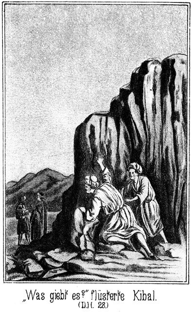»Was giebt es?« flüsterte Hilal.
»Zwei Männer. Fast hätten sie mich gesehen!«
»Kommen sie?«
»Nein. Sie stehen da vorn, jenseits des freien Plätzchens, welches hinter diesem Felsen beginnt.«
»Laß mich einmal nachschauen!«
Hilal legte sich auf den Boden und kroch langsam vor, so weit, daß er sehen konnte, ohne selbst erblickt zu werden. Da blieb er eine kurze Zeit lang unbeweglich liegen, die Augen scharf auf die Männer gerichtet. Dann zog er sich zurück.
»Es sind natürlich feindliche Beni Suef?« fragte Steinbach.
»Ja. Ich kenne Beide genau.«
Steinbach hörte aus dem Tone der letzten Worte, daß er da keine unbedeutenden Leute vor sich habe. Auf seine darauf gerichtete Frage antwortete Hilal:
»Es ist der Scheik der Suef und sein Eidam Amram.«
»Dessen Messer wir gefunden haben?«
»Ja, Herr.«
»Die muß ich mir natürlich ansehen.«
Er legte sich, ganz ebenso wie vorher Hilal, auf den Boden nieder, betrachtete sich die Beiden, kam aber ganz plötzlich mit einer hastigen Bewegung wieder zurück und sagte, sich suchend umblickend:
»Sie kommen langsam näher.«
»Fliehen wir?«
»Nein. Schnell zwischen jene Steine! Sie werden da doch nicht etwa hineinblicken! Aber hüte Dich um Allahs willen, ein Geräusch zu verursachen!«
Sie waren an einem Felsen vorübergekommen, an welchen ein zweiter, halb umgefallener lehnte, so daß zwischen Beiden eine Oeffnung war, welche allerdings als Versteck zu dienen vermochte. Im nächsten Augenblicke kauerten die zwei Männer da drin, die Gewehre eng an sich gezogen. Das Loch war gerade groß genug, sie vollständig zu verbergen.
Jetzt ließen sich Schritte vernehmen. Die beiden Beni Suef kamen herbei.
»Wenn sie uns bemerken!« raunte Hilal dem Deutschen zu, unwillkürlich sein Gewehr bewegend.
»Pst! Nicht schießen; im Nothfall nur das Messer gebrauchen!«
Gerade vor dem Versteck hielten die Feinde ihre Schritte an, um ihr Gespräch fortzusetzen.
»Also meinst Du, daß wir Wachen ausstellen?« fragte der Scheik.
»Ja. Ich bin überzeugt, daß sie kommen.«
»Ich bezweifle es. Sie wissen doch von uns gar nichts.«
»Aber sie werden den Russen und den Türken verfolgen. Dabei stoßen sie auf unsere Fährte.«
»Glaube das nicht! Sie werden sich freuen, die Beiden los geworden zu sein.«
»Die Beni Sallah, ja. Aber der Fremde, von welchem der Riese erzählte, wird ihnen ganz sicher folgen.«
»Auch ihm wird es nicht einfallen. Der Riese ist besiegt worden, und der Stamm hat einen neuen Scheik erhalten. Das giebt große Feste. Dazu die Hochzeit zwischen der Königin und diesem verdammten Knaben, dem Tarik. Sie kann zwar erst später gefeiert werden; aber es müssen doch Vorbereitungen getroffen werden. Da wird Niemand daran denken, den beiden Genannten, nachzureiten. Das glaube mir! Ich bin älter und erfahrener als Du.«
»Ja, Du bist erfahrener, und Du bist der Scheik. Darum will ich nicht mit Dir streiten. Aber einen Wachtposten könntest Du doch an die beiden Töchter des Sturmes stellen. Es ist auf alle Fälle besser.«
»Nun, wenn es Dich beruhigt, werde ich es thun. Dazu ist aber noch Zeit. Es wird Nacht, und da ist es diesen Beni Sallah unmöglich, Eure Spuren zu sehen. Kommen sie wirklich, so kommen sie mit Tagesanbruch, und da werden wir sie empfangen.«
»Was wirst Du mit Falehd, dem Riesen thun?«
»Wir müssen ihm das Wort, welches Du ihm gegeben hast, nicht halten, denn nach Allem, was ich vernommen habe, ist er ein Ausgewiesener, ein Ehrloser.«
»Ja. Er erzählt es freilich nicht; aber er ist besiegt worden und hat um Gnade gebeten. Wollen wir ihn da in unseren Stamm aufnehmen?«
»Nein; er würde uns schänden.«
»So erhält er auch keine Beute?«
»Nichts, gar nichts. Und wenn er sich einbildet, die Königin oder deren Schwester zum Weibe zu erhalten, so irrt er sich sehr. Wir benutzen ihn, um zu erfahren, was wir wissen müssen, und dann jagen wir ihn fort. Dieser Mensch hat übrigens eine Zähigkeit wie ein wildes Thier. Die Augenwunde würde es einem Jeden unmöglich machen, einen solchen Ritt zu unternehmen; er aber will sogar den Ueberfall mitmachen. Ich habe Dir gewinkt, Dich mit mir zu entfernen. Ich wollte mit Dir berathen, und was wir besprachen, braucht einstweilen kein Anderer zu wissen.«
»Was hast Du mit dem Türken und Russen vor?«
»Sie sind Feinde des Vicekönigs, also unsere Freunde. Ich habe ihnen Salz und Brod gegeben; sie sind also unsere Gäste, so lange sie wollen. Sie sagen, daß sie Offiziere seien; sie können uns also bei dem Ueberfalle der Beni Sallah von großem Nutzen sein.«
»Ich bin damit sehr einverstanden, obwohl ich ihnen eine große Tapferkeit nicht zutraue.«
»Der Tapferkeit braucht es hierbei gar nicht. Wir sind sechshundert Krieger und werden so plötzlich über den Feind herfallen, daß ein Kampf gar nicht stattfinden wird. Jeder wird getödtet, so bald er aus seinem Zelte tritt.«
»Hund von einem Henker!« flüsterte Hilal hinter dem Steine. »Feiger Mord, nichts weiter!«
»Wenn uns dies so gelingt, wie Du denkst, so will ich es loben,« meinte Amram.
»Warum soll es nicht gelingen?«
»Ich denke da unwillkürlich an den Deutschen. Der Riese flucht ihm, und die beiden Anderen thun dies auch. Sie geben ihm alle möglichen Schimpfnamen; aber gerade aus der Wuth, mit welcher sie von ihm sprechen, schließe ich, daß er ein tüchtiger Mann sein mag.«
»Er mag sein, was und wie er will, er wird uns in die Hände fallen.«
»Willst Du ihn tödten?«
»Ich nicht. Wenn er mein Gefangener wird, schneide ich ihm den Bart und die Ohren ab und schicke ihn zu seinem Freunde, dem Vicekönig, zurück. Aber der Riese hat geschworen, sich an ihm zu rächen; er wird der Erste sein, der sich an ihn macht; es scheint mir also, daß das Leben dieses Deutschen keinen Dattelkern mehr werth ist. Er wird sterben müssen.«
»So erhält also der Pascha das Mädchen zurück, welches man ihm abgenommen hat. Wann aber soll der Ueberfall stattfinden? Doch während der Nacht?«
»Nein. Ich werde eine viel bessere Zeit wählen.«
»Welche könnte besser sein als die Nacht? Oder hättest Du die Absicht, am hellen Tage anzugreifen?«
»Nein, das würde Vielen von uns das Leben kosten. Aber mitten in der finsteren Nacht werde ich es auch nicht thun. Dabei giebt es eine Verwirrung, bei welcher wir selbst großen Schaden leiden können. Wir schießen auf uns selbst; die Feinde können uns unbemerkt entkommen und entfliehen, und gerade unsere beste Beute können wir verderben.«
»Du hast Recht. So meinst Du also vielleicht die Zeit des Morgenanbruches?«
»Ja. Um diese Zeit schläft man am Festesten. Ueberdies feiern jetzt die Beni Sallah ihre Feste. Sie legen sich also spät nieder und werden bei der Dämmerung so ermüdet sein, daß wir sie niederstechen können, ehe es ihnen möglich ist, sich vom Lager zu erheben.«
»Hund!« knirrschte Hilal leise.
»So brauchen wir auch nicht zeitig aufzubrechen,« meinte Amram, der Eidam des Scheiks.
»Nein. Wir ziehen morgen um die Mittagszeit von hier fort, geradewegs auf das Lager des Feindes zu. Einen halben Stundenritt vor demselben halten wir an, um uns auszuruhen. Dann eine Stunde vor Morgens gehen wir zum Kampf.«
»Gehen? Nicht reiten?«
»Nein. Unsere Thiere sind uns bei dem Ueberfalle doch nur hinderlich. Sie werden uns von den fünfzig Männern, welche wir bei ihnen zurücklassen, nachgebracht werden. Oh Allah, welche Beute werden wir machen!«
*
»Ja, es wird ein großes Geschrei geben in der Wüste und ein Heulen in allen Oasen der Beni Sallah. Sie werden sich von dieser Niederlage niemals erholen können, wir aber werden reich sein vor allen anderen Bewohnern der weiten Ebene. Wenn sie es ahnten, daß wir hier stecken! Sie würden sich vorsehen. Also komm! Ich will Dir den Ort zeigen, an welchem wir den Wachtposten aufstellen müssen.«
Sie entfernten sich. Hilal flüsterte:
»Oh, die Beni Sallah wissen gar wohl, daß Ihr hier steckt, und werden sich vorsehen!«
»Ja,« lachte Steinbach leise. »Und der Deutsche wird Euch seinen Bart und seine Ohren nicht so leichten Kaufes überlassen. Hast Du Alles gehört, Hilal?«
»Alles, Alles! Allah 'l Allah! Weißt Du, was ich jetzt thun möchte?«
»Ich denke es mir. Du hast Lust, eine große Dummheit zu begehen.«
»Meinst Du, es sei eine Dummheit, diesen Beiden nachzuschleichen und ihnen unsere Messer zu geben?«
»Ja. Uebrigens wäre das Meuchelmord, nicht aber ein ehrlicher Kampf. Laß uns aufbrechen!«
»Sie sind ja dahin, wo wir an ihnen vorüber müssen.«
»Nein. Wir gehen nicht denselben Weg zurück, sondern wir halten uns weiter rechts. Da bemerken sie uns nicht. Folge mir.«
Sie schlichen sich fort, so schnell, wie es ihnen bei der nun völlig hereingebrochenen Dunkelheit möglich war. Dabei erkundigte sich Hilal:
»Also zu Fuß wollen sie uns überfallen. Da haben wir die beste Gelegenheit, sie gleich nieder zu reiten. Hoffentlich bist Du nicht der Meinung, daß wir sie bis an das Lager heran lassen.«
»Das wäre ein unverzeihlicher Fehler. Aber niederreiten werden wir sie auch nicht, sondern wir empfangen sie auch zu Fuße.«
»Das ist unmöglich!«
Der Gedanke, auf offenem Felde zu Fuße zu kämpfen, ist dem Beduinen geradezu eine Ungeheuerlichkeit. Wenn er nicht im Sattel sitzt, so fühlt er sich im höchsten Grade unbehilflich. Steinbach antwortete in beruhigendem Tone:
»Mache Dir jetzt keine Sorgen. Wir werden Berathung halten, und da wird es sich wohl herausstellen, welcher Plan der beste ist. Komm!«
Sie fanden sich ganz gut aus dem Steingewirre heraus, so daß die beiden Töchter des Sturmes, an denen sie vorher vorüber gekommen waren, links hinter ihnen blieben, und schritten nun dem Wüstenrande, rechts von sich die Felsen, weiter fort, bis sie den Ort erreichten, an welchem die Gefährten warteten.
Diese hatten an eine so schnelle Rückkehr nicht geglaubt und waren natürlich begierig, das Ergebniß der Recognition zu vernehmen. Steinbach theilte ihnen in Kürze mit, was sie erlauscht hatten, und dann wurden die Kameele bestiegen. Diese hatten sich weit über eine Stunde lang ausruhen können, und so ging es munter auf demselben Wege zurück, auf welchem die Männer hergekommen waren.
Nach einiger Zeit ließ sich am westlichen Himmel mitten in der tiefen Azurbläue desselben eine helle, gelblich gefärbte Stelle erkennen. Dieses Phänomen war Steinbach unbekannt, daher erkundigte er sich, ob dasselbe vielleicht etwas Widerwärtiges oder gar Unglückliches zu bedeuten habe.
»O nein,« antwortete Hilal. »Es hat im Gegentheile etwas für uns Gutes zu bedeuten. Diese helle Stelle ist das Loch, aus welchem binnen einigen Minuten der Rih el Lela kommen wird. Es sind Jahre vergangen, seit er nicht da gewesen ist.«
»Rih el Lela« heißt Nachtluft, Nachtwind. Es ist allerdings in der Sahara eine große Seltenheit, daß sich ein wirklicher, kühler Nachtwind erhebt. Die Sandebene hat während des Tages die Sonnengluth in sich aufgenommen und strahlt sie des Nachts wieder von sich. Wenn es da einen Lufthauch giebt, so ist er heiß und wirkt außerordentlich ermattend auf Mensch und Thier. Jetzt aber hatte Hilal recht. In der von ihm angegebenen Zeit begann ein kühler Hauch aus West zu streichen, bei dessen Berührung die Kameele die langen Hälse ausstreckten und ihre Schritte munter verdoppelten. Der Hauch nahm dann eine ziemliche Stärke an.
»Das ist gut,« sagte Steinbach. »Dieser Wind ist zwar kein Sturm, aber er hat Kraft genug, unsere Spuren zu verwehen, und so werden die Beni Suef morgen Nichts finden, aus dem sie schließen könnten, daß sie sich nicht allein im Ferß el Hadschar befunden haben. Desto unerwarteter werden wir sodann über sie kommen. Sie werden uns ihre Thiere und Sachen lassen müssen, anstatt daß sie die Eurigen erhalten.«
Sie hatten ungefähr zwölf Stunden gebraucht, um von dem Lager nach dem Ferß el Hadschar zu kommen; sie brauchten zur Rückkehr auch nicht längere Zeit, obgleich man meinen sollte, daß die Kameele ermüdet gewesen wären. Die Nachtluft hatte sie gestärkt.
Als sie früh kurz nach sechs Uhr im Lager anlangten, schlief dort kein Mensch mehr. Es waren bereits zwei Ferkah, also zwei Unterabtheilungen des Stammes aus benachbarten Oasen angekommen, so daß die streitbaren Männer ungefähr schon achthundert Mann zählten. Die Angekommenen wurden natürlich mit Freuden begrüßt; ihr Unternehmen war ja ein gefährliches gewesen, und man hatte sich sagen müssen, daß ihnen leicht ein Unglück zustoßen könne.
Sie waren kaum aus dem Sattel gestiegen, als von allen Seiten die Wißbegierigen herbeieilten, um zu erfahren, welche Nachrichten sie mitbrachten. Es wurde natürlich sogleich eine Versammlung der Aeltesten einberufen, in welcher der Kriegsplan berathen werden sollte. Steinbach erhielt zuerst das Wort. Er erzählte, was er mit Hilal belauscht hatte, und nahm dabei sehr wohl bedacht Gelegenheit, Hilals Muth und Scharfsinn in ein gutes Licht zu stellen. Es lag ihm sehr daran, den mit anwesenden Scheik der Beni Abbas gut für den jungen Mann zu stimmen.
Als er seinen Bericht beendet hatte, wendete sich der alte Kalaf als der Hochbetagteste an Tarik:
»Jetzt laß nun Deine Stimme hören, damit wir erfahren, welche Gedanken Du in dieser Angelegenheit hegst.«
Der Aufgeforderte antwortete abwehrend:
»Ich bin noch zu jung. Es sind Greise hier, erfahren in aller Weisheit, und tapfere Krieger, älter als ich. Sie mögen sprechen.«
»Deine Rede gefällt mir sehr wohl. Es ziemt der Jugend, bescheiden zu sein, und wer das Alter ehrt, der wird sein graues Haar dereinst mit Würden tragen. Aber Du bist der Scheik, der Anführer des Stammes. Dir gebührt also das erste Wort.«
Das brachte Tarik entschieden in Verlegenheit, obgleich er es sich nicht merken ließ. Vor seinen Beduinen genirte er sich gar nicht; er war ihnen an Muth sowohl wie auch an Umsicht vollständig gewachsen; aber er war zugegen gewesen, als Normann im Laufe des gestrigen Tages die Krieger im Gebrauche des Zündnadelgewehres einübte, und dabei hatte er gemerkt, wie weit der Europäer dem Beduinen überlegen ist. Und gar vor Steinbach hatte er einen noch viel größeren Respect. Darum wurde es ihm schwer, seine Ansicht zuerst zu sagen und sich von Einem dieser Zwei dann an Klugheit überbieten zu lassen. Er zog sich aus der Schlinge, indem er sagte:
»Wohl bin ich Scheik; aber gerade als solcher keime ich meine Pflicht. Wir haben Gäste, und Gästen muß man Achtung zollen. Sie wollen für uns und mit uns kämpfen, sie sind bereit, ihr Leben für uns zu wagen, sie haben uns bereits sehr wichtige Dienste geleistet, darum ist es nicht mehr als recht und billig, daß Masr-Effendi zuerst das Wort erhält.«
Ein wohlgefälliges Gemurmel ging durch die Reihen.
»Du hast sehr Recht,« erklärte Kalaf. »Wir sehen ein, daß wir den richtigen Mann zum Anführer erhalten haben. Wenn Du in dieser Weisheit weiter handelst und wandelst, wird Dein Name in den Büchern der Nachkommen stehen, so lange es überhaupt Nachkommen giebt. Wir bitten also Dich, Masr-Effendi, uns zu sagen, wie Du an unserer Stelle handeln würdest.«
Steinbach wußte recht wohl, warum der junge Scheik ihm das Wort gelassen habe. Er freute sich über die Klugheit des Jünglings und antwortete darum:
»Man wird seinen Namen nicht nur lesen in den Büchern Eurer Nachkommen, sondern mein Freund und ich werden von Tarik, dem Scheik der tapferen Beni Sallah erzählen in allen Ländern, in welche wir die Füße setzen. Allah segne Euren Stamm und den Stamm der Beni Abbas, welche jetzt Eure Gäste sind. Werden auch sie mit uns kämpfen? Das möchte ich gern wissen.«
»Wir kämpfen natürlich mit unseren Freunden,« erklärte der Scheik der Beni Abbas.
»Nein,« rief da die Königin von der Ruinenbrüstung herab, an welcher sie gestanden hatte, um der Verhandlung zuzuhören. »Soll mein Vater gekommen sein, um von einer Kugel getroffen zu werden?«
»Stehe ich nicht in Allahs Hand?« fragte der Genannte. »Und ist nicht das Schicksal des Menschen schon vor allem Anbeginn bestimmt? Wenn ich mit Euch kämpfe, wird Gottes Wille erfüllt, und ebenso wenn ich nicht mit kämpfe. Darum wähle ich das Erstere. Die Beni Sallah sollen die Beni Abbas nicht für Feiglinge halten.«
»Nein, nein! Das sollen sie nicht!« riefen seine Stammesangehörigen, welche in der Nähe standen.
»Es darf nicht sein! Herr, hilf nur!« rief die Königin Steinbach zu.
Er gab ihr einen beruhigenden Wink und fuhr fort:
»Ich kenne die Kriegs- und Kampfweise der Söhne der Wüste nicht, aber ich kenne die Art und Weise, wie große, tapfere Völker von Sieg zu Sieg geflogen sind. Diese Weise mag die Eurige nicht sein, aber ich will sie Euch sagen, und Ihr mögt dann entscheiden, welches besser ist.«
»Sprich! Wir hören!« sagte Kalaf, ihm wie parlamentarisch das Wort wieder ertheilend.
»Erst, ehe man einen Plan faßt, muß man sich und den Feind kennen. Der Letztere zählt sechshundert Krieger, von denen fünfzig bei den Thieren bleiben. Wir sind jetzt bereits achthundert Mann, folglich den Beni Suef überlegen. Zudem habt Ihr neue Gewehre mit Munition erhalten. Wir können also der guten Hoffnung und festen Zuversicht sein, daß wir den Sieg gewinnen werden. Meint Ihr nicht?«
Es erfolgten lauter zustimmende Rufe.
»Aber jeder Sieg kostet Opfer, auch derjenige, den wir erwarten, wird welche fordern. Ein kluger Feldherr wird also vor allen Dingen bedacht sein, so zu handeln, daß diese Opfer möglichst gering seien. So auch Tarik, unser Scheik. Meinst Du etwa, daß wir ruhig warten sollen, bis die Beni Suef kommen und uns überfallen?«
»Davor behüte mich Allah! Daran denke ich nicht,« antwortete Tarik, ganz glücklich darüber, daß Steinbach ihm die Klugheit in den Mund legte.
»Du meinst, daß wir ihnen entgegenziehen?«
»Ja.«
»Nicht uns überfallen lassen, sondern sie angreifen?«
»Das ist der Rath, welchen ich geben wollte, wenn es bei so weisen Männern eines Rathes bedürfen sollte.«
»Dieser Dein Rath ist der allerbeste, den es giebt. Wenn wir den Feinden entgegenziehen, wird der Kampfplatz vom Lager entfernt und Ihr könnt Euer Lager ruhig stehen und Eure Heerden ruhig weiden lassen; Euren Frauen und Töchtern, den Greisen, Schwachen und Kranken wird kein Haar gekrümmt, und wir vernichten die Feinde, ehe sie nur dazu kommen, ihre Gewehre zu gebrauchen. Ihr werdet einen so glorreichen Sieg erringen, wie er hier noch nicht erkämpft worden ist. Das also ist der Vorschlag Eures Scheiks, ich billige ihn vollständig. Allah gebe Tarik, dem Scheik der Beni Sallah, viele Jahre und Tage.«
»Allah! Allah!« rief es rundum, und Diejenigen, welche weiter entfernt standen, riefen die Worte begeistert nach, ohne eigentlich zu wissen, um was es sich handelte.
»'ali Tarik, 'ali Tank!« rief auch Normann. »Hoch Tarik, hoch Tarik!«
Der Ruf wurde brausend von Aller Munde wiederholt. Tariks Gesicht glänzte vor Freude und die Wangen der Königin, seiner Geliebten, färbten sich vor Wonne purpurroth.
»Aber wir kämpfen auch mit!« behauptete ihr Vater.
»Ja, Ihr sollt auch theilnehmen,« antwortete Steinbach. »Es müssen Krieger vorhanden sein, welche während des Kampfes das Lager schirmen, und das sollen die tapferen Beni Abbas thun. Sie sollen die Beni Suef empfangen und tödten, welche sich etwa durch unsere Reihen schleichen oder sich durchschlagen, um dennoch zu rauben und zu plündern. Bist Du damit einverstanden, o Scheik Tarik?«
»Ja,« entgegnete der Gefragte, indem er seinem Schwiegervater die Hand gab. »Wir vertrauen Dir Alles an, was wir besitzen. Wir wissen, daß Du es treu behüten wirst.«
Damit waren die Beni Abbas einverstanden. Der Plan wurde noch weiter entworfen. Es wurde ausgemacht, daß man nicht etwa den Feind überfallen, sondern draußen vor den Sanddünen, welche eine Viertelwegsstunde im Süden des Lagers sich hinzogen, erwarten wolle. Diese Dünen waren sogenannte Medanno's, wandernde Sandhügel. Sie bestehen aus feinem, lockerem, losem Sande. Der beständige Lufthauch, welcher aus West kommt, treibt den Sand an der Westseite dieser Dünen empor, so daß er von der Spitze nach der Ostseite wieder hinabrollt. Darum schreiten diese Hügel immer langsam aber stetig und unaufhaltbar von West nach Ost weiter vorwärts. Also, wenn diese Dünen auch nicht hoch waren, so konnte man doch, am Boden liegend, sich hinter ihnen verbergen. Dort wollte man den Feind möglichst weit herankommen lassen und ihm dann eine unerwartete Salve geben. Da die Zündnadelgewehre viel weiter trugen, als seine schlechten Schießwaffen, so war für diesseits von dieser Taktik gar nichts zu befürchten.
Angeführt sollten die Kämpfer werden auf dem rechten Flügel von Scheik Tarik, auf dem linken von Steinbach. Normann sollte mit einer Reserveabtheilung, die nur mit arabischen Flinten bewaffnet war, nach rückwärts liegen. Der Scheik der Beni Abbas sollte, wie bereits gesagt, mit seinen Leuten das Lager schützen. Hilal aber hatte die schwierige Aufgabe, mit einigen guten Läufern dem Feinde entgegenzugehen, um ihn zu beobachten, ohne jedoch selbst bemerkt zu werden. Diese Maßregel war nothwendig, um zu verhüten, daß der Feind nicht etwa aus einer anderen, als der vertheidigten Richtung komme.
Als dieser Kriegsrath zu Ende war, ging ein Jeder an seine Arbeit. Es wurden Kugeln gegossen, Kugelpflaster gemacht, Patronen angefertigt, Lunten mit Pulver eingerieben, je nach der Art des Schießgewehres, welches der Einzelne besaß.
Dann später zog Steinbach mit den Kriegern hinaus an die Dünen, um zu manövriren. Ein Jeder sollte seinen Platz kennen und auch wissen, wie er sich zu verhalten habe. Es war eine richtige Felddienstübung, und es war wunderbar, wie leicht sich die Beduinen in ihre Rollen fanden, obgleich sie gewöhnt waren, nur zu Pferde und ohne alle Ordnung zu kämpfen. Es war ein Eifer in diese Leute gefahren, welcher ein schlimmes Schicksal für ihre Feinde errathen ließ.
Droben auf der Brüstung war Tarik zu Badija getreten. Sie legte ihm den Arm um den Leib. Sie konnte das jetzt ungenirt thun, denn Alles war hinaus geeilt, um die Exercitien mit anzusehen; die Beiden waren also ganz unbeobachtet.
»Wenn Dich eine Kugel trifft!« klagte sie.
»Es wird Allahs Wille nicht sein.«
»Aber wenn er es dennoch ist!«
»Er ist es nicht, das weiß ich ganz genau. Allah hat uns ja diese Gewehre gesendet, welche mit einer Nadel abgeschossen werden. Sie tragen so weit, daß eine feindliche Kugel uns gar nicht erreichen kann. Auch ist der Plan des Kampfes so entworfen, daß wir uns fast in gar keiner Gefahr befinden.«
»Dieser Plan stammt von Dir!« sagte sie stolz.
»Meinst Du wirklich?«
»Ja. Ich habe es ja gehört.«
»O, Masr-Effendi ist ein kluger Mann. Er hat sich den Plan ausgedacht, aber er hat ihn uns in der Weise mitgetheilt, daß es schien, als ob er von mir sei. Und hast Du nicht bemerkt, wie schlau er Deinen Vater befriedigte? Dieser hat die Vertheidigung des Lagers übernommen, aber er wird da keinen einzigen Feind zu sehen bekommen.«
»Allah sei Lob und Dank! Seit ich gestern hörte, daß feindliche Kundschafter hier gewesen seien, ist mir so sehr angst gewesen, nun aber bin ich ruhig.«
»Dir angst? Du bist doch sonst so muthig? Du reitest das böseste Pferd, kannst alle Waffen führen und hast Dich noch vor keinem Menschen gefürchtet.«
»Bisher! Jetzt aber habe ich Veranlassung zur Angst! Weil es Einen giebt, den ich liebe und für welchen ich mich also ängstige.«
»Du meinst Deinen Vater?« fragte er, schlau lächelnd.
»Ihn und noch mehr Dich!« antwortete sie, ihr Köpfchen an seine Brust schmiegend.
Hinter diesen Beiden aber sagte eine Stimme:
»So habe ich auch Einen, um dessen willen ich so große Sorge fühle.«
Hiluja war es, welche leise hinzugetreten war.
»Wen meinst Du?« fragte Tarik scherzend. »Etwa Falehd, den Riesen?«
»Oh, scherze nicht! Mir ist wirklich sehr angst. Warum soll gerade Hilal so weit vorgehen, dem Feinde entgegen? Ich möchte dafür diesen Masr-Effendi hassen, wenn ich ihn nicht verehrte. Er ist es, welcher Hilal diese gefährliche Aufgabe gestellt hat.«
»Du darfst ihm nicht zürnen, sondern Du hast ihm vielmehr dafür zu danken.«
»Zu danken? Wieso? Das begreife ich nicht.«
»Er hat damit Hilal Gelegenheit gegeben, sich vor Deinem Vater auszuzeichnen. O, dieser Deutsche hat mehr Klugheit in seinem Kopfe, als alle Männer unserer Versammlung der Aeltesten zusammen genommen. Uebrigens ist Hilals Aufgabe nicht so gefährlich, wie Du denkst. Er geht dem Feinde entgegen und zieht sich sofort zurück, wenn er ihn bemerkt. Du brauchst Dir also keine Sorge zu machen.«
Seitwärts von ihnen stand Zykyma und ließ den Blick über das heute so bewegte Lager schweifen. An wen dachte sie. Sie sah und hörte, wie sich hier zwei liebende Herzen um das Schicksal des Geliebten ängstigten. Hatte vielleicht auch sie Angst oder Sorge? Ihr schönes Gesicht war sehr ernst. Wer hingesehen hätte, der hätte eine Thräne bemerkt, welche langsam über ihre Wange herabrollte. Sie trocknete den nassen Weg, welchen dieser Tropfen zurückgelassen hatte, ab, legte die Hand auf den sehnsuchtsvoll bewegten Busen und flüsterte:
»Fragt das Herz
Im bangen Schmerz:
Ob ich Dich auch wiederseh'?
Scheiden thut so weh, so weh!« – –
Der Tag verging und der Abend brach ein. Es wurden keine Feuer gebrannt, um etwaigen feindlichen Kundschaftern die Gelegenheit, Etwas zu sehen, zu nehmen. Uebrigens hätte ein Solcher wohl nicht weit heran kommen können, denn rund um die Oase lagen Posten im Sande, die geladenen Gewehre in der Hand. Es war ja immerhin die Möglichkeit vorhanden, daß die Beni Suef ihren Plan geändert und den Angriff auf eine frühere Zeit verlegt hatten.
Aber es geschah nichts Derartiges. Mitternacht ging vorüber, und nun machte sich Hilal mit seinen Kundschaftern auf den Weg. Eine halbe Stunde später marschirten achthundert bewaffnete Beni Sallah hinaus nach den Dünen. Hundert von ihnen blieben halbwegs als Reserve halten; die Uebrigen aber bildeten eine dreifache Reihe von solcher Elasticität, daß sie sich in einer Minute zusammenziehen und auch nötigenfalls ausdehnen konnte.
Gegen zwei Uhr sendete Hilal einen seiner Leute mit der Botschaft, daß sie in der Nähe des feindlichen Lagers angekommen seien, dort herrsche jetzt noch die größte Ruhe und Stille.
Nach einer halben Stunde kam ein zweiter Bote mit der Meldung, daß es sich bei dem Feinde zu regen beginne. Und nach abermals so viel Zeit kehrte Hilal selbst mit den Uebrigen zurück und brachte die Nachricht, daß die Beni Suef aufgebrochen seien und in einer Entfernung von höchstens dreitausend Schritte vorwärts auf dem Sande hockend den Anbruch des Morgengrauens erwarteten.
Natürlich bemächtigte sich jetzt aller eine Spannung, welche sich gar nicht beschreiben läßt. Die erwähnten Meldungen waren auch weiter getragen worden, bis hin in das Lager. Der alte Scheik der Beni Abbas, welcher seine Leute als Posten rund um die Oase gelegt hatte, zog sie jetzt zusammen, nach der Gegend hin, in welcher der Kampf bevorstand. Zwei Stämme standen sich da gegenüber – Leute einer Abstammung, Männer eines Blutes und einer Sprache, Bewohner eines Landes, und doch gewillt, sich gegenseitig zu vernichten.
Die Beni Suef waren gegen Mitternacht da angekommen, wo sie sich vor dem Ueberfalle zu lagern gedachten. Der Russe, der Pascha und der Riese war bei ihnen. Der Letztere hatte sich das Auge wirklich vollends entfernen lassen und die blutige Höhle desselben verbunden. Das Wundfieber zerrte an allen seinen Nerven, noch mehr aber arbeitete in ihm das Verlangen nach Rache. Er hatte den weiten Ritt mit unternommen trotz seiner schlimmen Verwundung, leider aber hatte er die Bemerkung gemacht, daß man sich gar nicht viel um ihn kümmerte.
Er war überall entweder auf gleichgiltige oder gar verächtliche Gesichter gestoßen. Der Scheik war nicht mehr für ihn zu sprechen gewesen, Omram, der Eidam desselben, ebenso wenig. Er begann, Mißtrauen zu hegen, und begab sich zu Omram, sobald sich die Leute gelagert hatten. Er fand ihn etwas vorwärts und allein im Dunkel stehend.
»Was willst Du?« fragte der Suef in unfreundlichem Tone, von welchem Falehd sich beleidigt fühlte.
»Mit Dir sprechen.«
»Ist das so nothwendig?«
»Ja.«
»Ich denke, daß wir Alles besprochen haben, über was geredet werden konnte oder mußte!«
»Ja, aber ich möchte Einiges noch einmal hören.«
»Das ist nicht nothwendig. Was gesagt worden ist, das weißt Du, Anderes ist nicht nothwendig. Warum bleibst Du übrigens nicht an dem Orte, der Dir angewiesen ist?«
»Weil ich Dich suchen wollte. Meinst Du etwa, daß ich ein Sclave bin, welcher Euch zu gehorchen hat?«
»Das sage ich nicht, obgleich wir ein Recht hätten, Dich zum Sclaven zu machen.«
»Hölle und Teufel!« stieß der Riese hervor.
»Ja, gewiß!«
»Aus welchem Grunde?«
»Ist nicht Einer von uns Dein Sclave gewesen? Lautet nicht das Wüstengesetz: Vergeltet Gleiches mit Gleichem?«
»Ich habe ihn Euch wiedergebracht!«
»So können wir Dich ebenso lang der Freiheit berauben, wie er Sclave gewesen ist.«
»Du redest sonderlich! Hast Du etwa vergessen, was Du mir gestern versprochen hast?«
»Ich habe es nicht vergessen, aber Du bist ehrlos.«
»Ah! Wer sagte Dir das?«
»Ich weiß es, das ist genug.«
»So höre ich jetzt, daß ich Eurem Worte nicht trauen darf. Werdet Ihr es mir halten oder nicht?«
»Du wirst bekommen, was Dir gebührt.«
»Das ist keine Antwort! Rede frei! Werde ich als Mitglied Eures Stammes aufgenommen?«
»Die Versammlung soll das entscheiden?«
»Darf ich um die Königin mit kämpfen?«
»Die Aeltesten werden das bestimmen.«
»Werde ich Hiluja erhalten, wenn mir ein Anderer die Königin nimmt?«
»Ich werde mit dem Scheik davon sprechen.«
»Also Du beantwortest mir keine meiner Fragen mit Ja?«
»Wie kann ich! Ich bin nicht Scheik.«
»Aber gestern hast Du mir Alles versprochen.«
»Das habe ich, und ich werde auch Alles halten, was möglich ist. Gehe jetzt an Deinen Ort. Wir werden sehr bald aufbrechen.«
»Du hast mich zu den Leuten gewiesen, welche zurückbleiben müssen. Meinst Du etwa, daß ich da warten soll, bis der Ueberfall vorüber ist?«
»Ja.«
»Oho! Ich will mit kämpfen!«
»Das geht nicht. Du bist krank.«
»Das ist nicht wahr. Ich bin gesund. Was stört mich dieses Auge? Es ist weg und kümmert mich also nicht mehr. Ich will mich an den Beni Sallah rächen.«
»Das ist nicht nöthig, denn wir werden es für Dich thun. Gehe an Deinen Ort und pflege Dich!«
»So sage mir vorher erst noch Eins! Wenn Ihr Sieger seid, werde ich dann von der Beute Alles bekommen, was früher mein Eigenthum war?«
»Die Beute wird vertheilt und Du wirst erhalten, was Dir nach unseren Gesetzen zukommt.«
Der Riese wußte nun, woran er war. Es war jedenfalls nicht klug von Omram gehandelt, ihm bereits jetzt reinen Wein einzuschenken. Falehd ließ sich aber seine Gedanken nicht merken, sondern er sagte:
»Wenn ich das bekomme, was mir zukommt, so bin ich mit Euch zufrieden. Allah gebe Euch Segen!«
Innerlich aber dachte er: Allah verfluche Euch. Er begab sich zu dem Troß und nahm dort zwischen den Pferden und Kameelen des Scheiks Platz. Sein Auge war auf eine prachtvolle Fuchsstute gerichtet.
»Die ist ein ganzes Vermögen werth!« dachte er. »Will mich der Scheik betrügen, so werde vielmehr ich ihn betrügen. Mit den Beni Sallah kann ich ja noch eine Zeit lang warten. Das hat keine Eile.«
Bald aber kam ihm noch ein Gedanke.
»Ich werde vorher zu dem Pascha gehen. Ist auch er mir abtrünnig, so habe ich nichts zu erwarten. Haben sie aber auch ihn und den Russen bereits gegen mich aufgehetzt, so handle ich für mich.«
Er erhob sich wieder und schlich dorthin, wo er die beiden Genannten wußte. Sie erkannten ihn trotz der Dunkelheit sogleich an seiner hünenhaften Gestalt, als er zu ihnen trat.
»Nehmt auch Ihr mit Theil an dem Kampfe?« fragte er.
»Nein,« antwortete der Pascha.
»Man hat es Euch wohl verboten?«
»Wer sollte es uns verbieten? Wir werden uns aber hüten, uns für Andere mit Anderen herum zu schlagen.«
»Das ist sehr weise von Euch gehandelt; aber da werdet Ihr auch nichts von der Beute erhalten.«
»Wir mögen nichts und brauchen nichts. Du aber könntest es gebrauchen und wirst doch nichts bekommen.«
»Wer sagte es?«
»Der Scheik.«
»Da ist er sehr aufrichtig gegen Euch gewesen.«
»So aufrichtig, wie ich gegen Dich sein will.«
»So sprich!«
»Du hast uns Beide als Deine Gäste aufgenommen und uns freundlich behandelt; Du bist uns dann behilflich gewesen, zu entkommen, darum will ich einmal gegen die Klugheit handeln und Dir sagen, was ich eigentlich verschweigen sollte, denn die Beni Suef sind jetzt unsere Verbündeten geworden und bei ihnen haben wir gefunden, was uns bei den Beni Sallah verweigert wurde.«
»Nicht durch meine Schuld.«
»Nein. Darum will ich Dir sagen, daß Du von dem Scheik nichts zu erwarten hast. Nach dem Siege wird er Dich wieder hinausstoßen. Er will keinen Ehrlosen bei sich haben.«
»Woher weiß er, daß ich ehrlos bin? Ihr müßt es ihm doch gesagt haben.«
»Nein. Er hat uns gefragt und wir thaten, als ob wir nichts wüßten. Er hat es errathen, ist aber nun überzeugt davon. Nun weißt Du, was Du zu thun hast.«
»Ich danke Euch! Werdet Ihr bei diesen Beni Suef vielleicht bleiben?«
»Einige Wochen.«
»Könnte ich Euch dann irgendwo treffen?«
»Nein. Das kann uns nichts nützen.«
»Aber mir!«
»Das geht uns nichts an. Ich habe Dir jetzt mit meiner Aufrichtigkeit Deine Gastfreundschaft vergolten. Wir sind also quitt.«
»So hole Euch der Teufel, so wie er die Beni Suef alle holen mag!«
»Nimm Dich in Acht, daß er sich nicht vielleicht vorher an Dir vergreift!«
Er entfernte sich, zitternd vor Grimm. Er hatte seinen Platz kaum wieder erreicht, so ging ein leiser Ruf durch das Lager. Es war der Befehl zum Aufbruche. Die Krieger rückten aus. Nur die Fünfzig blieben bei den Thieren und der Bagage zurück.
Der Riese machte sich an die Fuchsstute und nahm ihr die Fesseln von den Vorderbeinen. Sämmtliche Pferde waren gefesselt worden, damit sie nicht entfliehen könnten. Einen günstigen Augenblick erspähend, zog er sie mit sich fort. Der Huftritt war in dem weichen Sande nicht zu hören. Er brachte das Pferd so weit fort, daß er nichts mehr zu befürchten hatte, und stieg dann in den Sattel.
Nun hätte er im Galopp fortreiten können oder sollen, er that es aber nicht. Der Grimm, welchen er gegen seine früheren Stammesangehörige im Herzen trug, ließ ihn nicht so schnell weiter. Er wollte und mußte sehen, daß sie vernichtet wurden.
Darum ritt er nur eine Strecke fort, dem Lager entgegen, aber seitwärts, so daß er mit Niemand zusammentreffen konnte. Dann stieg er wieder aus dem Sattel und blieb, an das Pferd gelehnt, halten.
Minute auf Minute verging. Im Osten begann das Blau des Himmels sich zu entfärben; es wurde matter und matter, endlich gelblich weiß, und nun konnte man bereits auf eine ziemliche Entfernung hin einen nicht gar zu kleinen Gegenstand erkennen.
Das war die Zeit, in welcher Hilal mit seinen Kundschaftern zurückgekehrt war. Er hatte in der Nähe Steinbach's Platz genommen und lag, ganz wie dieser, an der Erde. Die Leute hielten die Blicke scharf nach vorwärts gerichtet. Es wurde sehr schnell heller. Bereits konnte man auf hundert, dann auf tausend Schritte weit sehen. Da endlich ließ sich weit draußen eine wirre Masse von Gestalten sehen.
»Aufgepaßt!« flüsterte es von Mann zu Mann.
Die Beni Suef nahten, aber nicht etwa in einer geordneten Colonne, sondern ganz ordnungslos in einem Haufen. Sie kamen gerade auf die Mitte der Verteidigungslinie zu. Ahnungslos, welchem Schicksale sie entgegengingen, marschirten sie durch den Sand. Das Lager war noch nicht zu erblicken. Aber jetzt erblickten sie Etwas, nämlich eine hohe, breit gebaute Mannesgestalt, welche stolz aufgerichtet auf einer Düne stand und ihnen entgegenblickte.
Sie blieben halten und beriethen sich.
»Verdammniß über diesen Hund!« sagte Omram zu dem Scheik. »Was will der Kerl außerhalb des Lagers? Er verdirbt uns Alles.«
»Das macht Lärm. Der Schuß würde das ganze Lager alarmiren. Versuchen wir es nicht lieber mit List?«
»Meinetwegen. Ich glaube aber, es wird vergeblich sein.«
»Vielleicht ist es gar kein Beni Sallah.«
»Das ist möglich. Der Riese ist doch bei uns und außer diesem giebt es keinen so großen, starken Mann unter ihnen. Rufen wir ihn also einmal an!«
Omram legte die Hand an den Mund und sagte:
»Sabakha bilcheer – guten Morgen!«
»Miht sabah – Gott gebe Dir hundert Morgen!« antwortete Steinbach.
»Mehn hua – wer bist Du?«
»Ana hua – ich bin es.«
»Wie ist Dem Name?«
»Masr-Effendi.«
»Daß ihn die Hölle hole!« meinte Omram erschrocken zu dem Scheik. »Es ist jener Deutsche. Habe ich es Dir nicht gesagt, daß er zu fürchten sei!«
»Rufe ihn her! Vielleicht kommt er und dann machen wir ihn im Stillen kalt.«
»Komm einmal her!« sagte Omram.
»Warum?«
»Wir möchten mit Dir sprechen.«
»So kommt Ihr her zu mir! Wer seid Ihr?«
»Wir sind ein Ferkah des Stammes Beni Sallah.«
»Was wollt Ihr hier?«
»Unsere Brüder besuchen.«
»So seid Ihr auf dem richtigen Wege. Aber wie kommt es, daß Ihr sechshundert Mann stark auf Besuch kommt?«
»Wir wollen eine große Phantasie aufführen.«
»So kommt! Seid Ihr aber keine Beni Sallah, so nehmt Euch in Acht.«
»Warum?«
»Ihr würdet nicht weit kommen.«
»Warum sprichst Du so aus der Ferne zu uns! Hast Du keine Beine oder keinen Muth?«
»Ich habe Beides, Dir aber fehlt der Muth, sonst würdest Du nicht stehen bleiben. Und noch ein Anderes fehlt Dir, nämlich die Vorsicht. Warum hast Du vorgestern Abend Dein Messer verloren?«
»Mein Messer?«
»Ja, als Du mit Falehd, dem Riesen, sprachst!«
»Ich weiß nichts davon.«
»Lüge nicht! Omram, der Beni Suef sollte sich schämen, eine Unwahrheit zu sagen.«
»Allah l'Allah! Hältst Du mich für Omram?«
»Ja.«
»So ist Dein Verstand alle geworden.«
»Er ist noch vollständig vorhanden. Der Andere, welcher neben Dir steht, ist der Scheik der Beni Suef.«
»In die Hölle mit ihm! Er kennt uns!« sagte Omram zum Scheik. Und lauter fuhr er fort: »Deine Augen täuschen sich.«
»Sollten sie sich jetzt täuschen, da es hell wird, und gestern habe ich Euch gesehen, da es dunkel war!«
»Wo?«
»Im Ferß el Hadschar, als Ihr Beide nach den Töchtern des Windes gingt und den Plan des Ueberfalles bespracht.«
»Hörst Du es, Scheik! Er weiß Alles!« knirschte Omram. »Er ist als Spion da gewesen und hat uns belauscht. Ich hatte Recht, als ich meinte, daß er zu fürchten sei. Nun sind die Feinde gerüstet. Was thun wir?«
»Wir greifen dennoch an. Hier in dieser Oase wohnen nicht viel mehr als zweihundert Beni Sallah und wir sind sechshundert!«
»Kehrt um!« rief Steinbach ihnen zu. »Ihr seid gekommen, uns heimtückisch zu überfallen wie die feigen Meuchelmörder; ich aber will ehrlich sein und Euch warnen.«
»Umkehren? Hund, Du sollst der Erste sein, den meine Kugel trifft! Vorwärts, Ihr tapferen Krieger!«
Er sprang voran, die Anderen folgten.
»Zurück!« rief Steinbach gebieterisch.
Sie gehorchten natürlich diesem Rufe nicht. Da hielt er den Arm empor, sofort erhoben sich die sämmtlichen Beni Sallah hinter den Dünen. Eine Salve donnerte den Angreifern entgegen. Der ganze Haufe blieb halten, ob vor Schreck oder von den Kugeln festgenagelt, das war im ersten Augenblicke gar nicht zu erkennen. Dann aber stießen sie ein lautes Wuthgeheul aus. Wer nicht todt oder verwundet war, stürmte vorwärts – aber doch nur, um einige Augenblicke später wieder eine Salve zu empfangen.
Es war ganz so, als ob ein gut formirtes Quarrée einen Reiterangriff mit kaltem Gleichmuthe zurückweist. Die Beni Suef stürzten durch-, über- und untereinander wie getroffene Pferde. Der Scheik war gefallen, Omram lebte; er war verwundet, brüllte vor Grimm und Rachbegier wie ein Thier, feuerte seine Leute an, ihm zu folgen, und rannte abermals vorwärts – dem Tode in die Arme.
Die Beni Sallah hatten bereits wieder geladen. Keiner verließ seinen Platz. Die dritte Salve that ihre Schuldigkeit. Eine Minute lang stockte der Vorstoß der Angreifer, dann lösten sie sich auf und suchten ihr Heil in der Flucht.
»Normann!« rief Steinbach mit seiner stärksten Stimme.
»Bin schon da!«
Diese Antwort hatte Steinbach von rückwärts her erwartet, sie kam aber bereits aus größter Nähe. Normann hatte Pferde für seine hundert Mann Reserve bereit gehalten. Als er die Salven hinter einander krachen hörte, war er überzeugt, daß sich der Feind nicht halten könne. Er ließ rasch aufsitzen und vorgehen. Die Beni Suef hatten sich kaum zur Flucht gewandt, so waren die Reiter auch schon hinter ihnen. Und da kam auch noch ein zweiter Haufe angebraust, nämlich der alte Scheik der Beni Abbas mit den Seinigen.
Er hatte freilich die Aufgabe erhalten, das Lager zu beschirmen, aber als die Schüsse ertönten und dann Steinbach den Namen Normann's rief, da kam die Kampfeslust über den Alten und über seine Leute. Sie sprangen auf die nächsten, besten Pferde und stürmten der Schaar Normann's nach.
»Alle drauf!« rief da Steinbach. »Laßt sie nicht zum Stehen und zu ihren Thieren kommen!«
Da gab es kein Halten mehr. Was nur Beine hatte, rannte den Fliehenden nach, und wer nur einen Mund hatte, der brüllte, rief, schrie und fluchte aus Leibeskräften.
Auch Hilal hatte sich in Bewegung gesetzt, aber bereits nach wenigen Schritten blieb er stehen, wie festgebannt. Es war ihm ganz so vorgekommen, als ob ein scharfer, spitzer, hoher Laut den Lärm des Kampfes durchdrungen habe. Er lauschte einen Augenblick. Ja, wirklich, der erwähnte Laut erscholl zum zweiten Male.
»O Allah! Die Königin ruft! Sie befindet sich jedenfalls in Gefahr! Kommt! Folgt mir!«
Er ahmte den Ruf so laut nach, daß er in dem Lager gehört werden konnte, und rannte auf dasselbe zu. Die letzteren Befehle, mit ihm zu kommen, ihm zu folgen, hatte er ausgerufen in seiner Angst, ohne aber gehört zu werden. Es stand kein Mensch mehr in seiner Nähe, es waren ja Alle fort, hinter dem Feinde her. Er vernahm den Ruf wieder und antwortete. Er lief nicht sondern er flog förmlich. Im Lager angekommen, traf er auf keine einzige Person. Selbst die Alten und Kranken, selbst die Kinder waren hinaus, der Gegend zu, in welcher der Sieg errungen worden war. Jetzt hörte er die Stimme der Königin wie aus den Wolken herab:
»Tarik! Tarik! Hilfe, Hilfe!«
»Ich bin es, Hilal!«
»Hilfe! Der Riese ist oben!«
Wie ein von der Sehne geschnellter Pfeil schoß er auf die Ruine zu und zur Treppe empor. Hoch oben, da, wo Steinbach gestanden hatte, als die Leuchtkugeln glühten, waren weiße Frauengewänder zu sehen. Und von da oben herab erschallten jetzt die lauten Flüche des Riesen.
Wie war er da hinaufgekommen? Er kannte ja die heimliche Treppe gar nicht.
»Halt aus! Ich komme, ich komme!« rief Hilal.
Er flog in das Innere, durch Badija's Gemächer, weiter hinter, die Treppe hinauf. Als sein Kopf oben auftauchte, stand der Riese, ein Frauenzimmer in den hoch erhobenen Armen, auf der Zinne. Drei andere Frauen hielten kreischend seinen Leib und seine Füße gepackt; eine von ihnen aber ließ los und fiel nieder. Sie war ohnmächtig geworden.
»So fahre da hinab, wenn Du nicht mit mir willst!« rief Falehd und schleuderte die Gestalt über den Rand der Zinne hinab. Es war so hoch, daß sie zerschellen mußte.
Zwei Schreie erschollen, herzzerreißend.
»O Allah, Allah! Sie ist verloren!«
Vom stürmischen Lauf hatte Hilal keinen Athem mehr. Er wollte sprechen und fragen, vermochte aber kein Wort hervorzubringen. Der schreckliche Mord, dessen Zeuge er gewesen war, lähmte ihm die Glieder. Er stand noch immer auf der Treppe, so daß nur sein Kopf über dieselbe hervorragte.
Da packte der Riese die zweite der Frauen, um auch sie emporzuheben.
»Komm!« brüllte er. »Ihr Katzen müßt alle da hinab, alle!«
Sie hielt sich fest an seinen Leib geklammert, aber was waren ihre Kräfte gegen die seinigen! Das gab Hilal die Bewegung und die Sprache.
»Wen hat er hinabgeworfen?« rief er.
»Hiluja. O Allah, o Himmel!« antwortete Diejenige, welche den Wüthenden noch bei den Knieen gepackt hielt. Es war die Königin. »Hilal, hilf, hilf!«
Da erscholl ein fürchterlicher, donnernder, brüllender Laut aus Hilal's Munden
»Hiluja zerschmettert! Falehd, ich zermalme Dich!« –
Der Riese war, wie bereits erwähnt, mit dem Pferde des Scheiks davon geritten und hatte dann in sicherer Entfernung, nachdem er abgestiegen war, das Resultat des Ueberfalles abwarten wollen. Er war ganz Auge und Ohr. Die Morgenhelle trieb das Dunkel immer weiter zurück. Noch einige Augenblicke und er mußte die Ueberfallenden sehen.
Ja, jetzt sah er sie, in einem Trupp sich vorwärts bewegend. Dann, hielten sie plötzlich still. Er sah eine männliche Gestalt bei den Dünen und hörte die Stimmen der Sprechenden, ohne aber die Gesichter und die Worte unterscheiden zu können.
»Was ist das?« fragte er sich. »Fast sieht es aus, als ob es dieser verdammte Masr-Effendi sei. Ist er es, so sind die Beni Sallah gewarnt und es giebt einen harten Kampf!«
Da sah er die Angreifer vorwärts stürmen, sah und hörte aber auch zugleich die Schüsse, welche ihnen entgegenfielen. Er konnte sich nicht erklären, wie die Sallah hatten erfahren können, was ihnen drohe, noch unbegreiflicher aber war es ihm, daß sie mit solcher Ruhe und Sicherheit drei Salven abgaben und daß dann die Suef flohen, aber er lachte:
»Recht so, recht so! Das ist die Strafe für den Verrath! Jetzt kommen Reiter! Noch welche! Alles eilt zur Verfolgung! Allah l'Allah! Das paßt mir! Das Lager ist leer. Jetzt hole ich mir die Königin oder Hiluja! Das, soll der erste Anfang meiner Rache sein!«
Er stieg auf und sprengte im Galopp nach dem Lager. Er erreichte es ungehindert. Vorn auf der Brüstung der Ruine standen die Königin, Hiluja und Zykyma. Die Erstere sah den Riesen kommen, sie durchschaute sofort die Situation und rief:
»Falehd, Falehd! Er will sich rächen! Flieht!«
Sie schob die Anderen vor sich her, zum Eingang hinein und wollte ihnen schnell folgen. Der Riese war aber noch schneller. Zwei, drei Stufen auf einmal nehmend, kam er zur Treppe heraufgesprungen. Das Pferd anzubinden, hatte er sich gar keine Zeit genommen. Er streckte die Arme aus und rief:
»Halt, Königin! Jetzt bist Du mein!«
Fast hätte er sie gehabt, aber sie bückte sich und schlüpfte unter seinen Händen in das Innere der Ruine. Er folgte ihr augenblicklich. Sie erreichte ihr Wohnzimmer, wo die beiden Anderen standen.
»Weiter, weiter!« rief sie ängstlich. »Er kommt. Flieht die Treppe hinauf!«
Die Zwei entkamen, sie selbst aber nicht, denn eben, als sie durch die hintere Thür wollte, wurde sie von Falehd ergriffen.
»Warte doch, mein Auge, mein Stern!« lachte er höhnisch auf. »Dein Bräutigam ist fort! Nun werde ich mit Dir Hochzeit halten!«
Er zog sie an sich. Sie hielt still. Wie eine himmlische Eingebung war es über sie gekommen, daß sie hier klug handeln müsse, wenn sie nicht seiner thierischen Gewalt verfallen wolle. Gelang es ihr, ihn fest zu halten, bis Hilfe herbei kam, so war sie gerettet und ihn ereilte die Strafe. Darum duldete sie seine Umarmung ruhig.
»Ergiebst Du Dich? Schön! Das ist klug. Komm also und gieb mir einen Kuß!«
Sie erhob wirklich das Gesicht, als ob sie sich küssen lassen wolle. Er bog den Kopf tief zu ihr herab. Dadurch lockerten sich seine Arme. Sie riß sich los, stieß ihm das kleine Fäustchen nach der Gurgel und sprang nach der Zimmerecke. Mit einem jubelnden Schrei bückte sie sich dort auf den Teppich nieder und hob blitzschnell – den kleinen Revolver auf, welcher ihr bereits einmal als Verteidigungswaffe gegen den Riesen gedient hatte. Sie streckte ihn dem Angreifer entgegen.
Der Riese wollte eben schnell nach ihr fassen, fuhr aber beim Anblicke der Waffe zurück.
»Hündin! Willst Du beißen?« rief er.
»Ja, ich beiße! Fort mit Dir!«
Es war ihr ganzer, gewöhnlicher Muth wieder über sie gekommen. Sie trat sogar einen Schritt auf ihn zu. Er grinste ihr verächtlich entgegen, verschränkte die Arme über die Brust und sagte:
»Mit diesem Dinge willst Du mich tödten?«
»Ja, wenn Du nicht augenblicklich gehst.«
»Du bist verrückt! Dieses winzige Ding und der Riese Falehd!«
»Eine einzige Kugel tödtet Dich!«
»Meinetwegen! Aber wenn Du mich wirklich triffst, so habe ich, ehe ich umfalle, noch Zeit, Dich zwischen meinen Fäusten zu zermalmen. Sage mir, wie Ihr von dem Ueberfall erfahren habt?«
»Masr-Effendi hat es entdeckt und ist in voriger Nacht im Ferß el Hadschar gewesen, um Euch zu belauschen.«
»Dieser Hund! Aber wie seid Ihr plötzlich zu so vielen Kriegern gekommen?«
Sie bemerkte in ihrer Unbefangenheit gar nicht, daß er mit diesen Fragen nur den Zweck hatte, ihre Aufmerksamkeit einzuschläfern. Er wollte sie entwaffnen, wollte den Revolver haben.
»Wir haben zwei Ferkah rufen lassen.«
»Wie klug! Dieser Masr-Effendi ist ein kluger Mann. Aber bin ich etwa dümmer? Nein! Schau!«
Sie stieß einen Schreckensruf aus. Er hatte ihr mit einem raschen Griffe den Revolver aus der Hand gerissen und sie zugleich mit der anderen Hand wieder ergriffen. Sie wand sich unter seinem Drucke, vermochte aber nicht loszukommen.
»Laß mich!« stöhnte sie.
»Ich Dich lassen? O nein!«
»Was willst Du von mir! Du hassest mich ja!«
»Ja, ich hasse Dich! Ich liebe Dich nicht etwa. Aber gerade aus Haß will ich Dich küssen, aus Rache will ich Dich besitzen!«
»Scheusal!«
»So ist's recht! Desto entsetzlicher muß Dir ein Kuß von mir sein. Komm her, meine Huri, mein Engel, mein Diamant!«
Sie wehrte sich aus Leibeskräften. Man glaubt nicht, wie stark ein tugendhaftes Weib in der Stunde solcher Gefahr sein kann. Selbst der Riese hatte zu thun, ihr Köpfchen zwischen seinen beiden Tatzen festzuhalten. Dann aber konnte sie nicht mehr widerstehen. Es gab nur noch ein Mittel. Schon berührten seine Lippen beinahe ihren Mund, da spuckte sie ihm in das Gesicht. Es half, wenigstens für den Augenblick. Er fuhr zurück.
»Spinne! Speist Du Gift!« lachte er. »Thue es immerhin. Deine eigene Zunge soll es mir ablecken.«
Er zog sie mit aller Kraft an sich, um ihren Mund an die getroffene Stelle seines Gesichtes zu bringen. Es war schrecklich für Badija. Aber im fürchterlichsten Augenblick kam Hilfe.
»Zurück, Falehd!« rief eine weibliche Stimme vom Eingange her.
Er sah zurück und erkannte die alte Araberin, die Bedientin Hiluja's, welche mit ihr durch Steinbach gerettet worden war.
»Was willst Du, Alte? Packe Dich zum Teufel!«
»Da bin ich bereits. Der Teufel bist Du!«
»Und Du bist seine oberste Tante und Urgroßmutter! Willst Du etwa auch geküßt sein? Ich habe keinen Appetit, Dich um Deine jungfräuliche Ehre zu bringen. Verschwinde!«
Sie sah ihn furchtlos und mit funkelnden Augen in das Gesicht. Das gab ihm Spaß. Er antwortete:
»Willst Du mir das etwa gebieten?«
»Ja. Und Du wirst gehorchen.«
»Du bist von Sinnen, altes Laster!«
»Ich werde es Dir beweisen. Laß los!«
Er wollte eben ein schallendes Gelächter ausstoßen, ließ aber anstatt dessen einen Schmerzensschrei hören. Sie hatte sich nämlich eine lange, spitze Nadel aus dem Haar gezogen und sie ihm in den nackten Arm gestochen.
»Schlange,« brüllte er. »Ich werde Dir den Giftzahn nehmen!«
Er griff mit beiden Armen nach ihr, hatte aber in seiner Wuth gar nicht bedacht, daß er dadurch die Königin freigebe.
»Flieh!« rief die Alte ihr zu.
Badija folgte dieser Aufforderung augenblicklich. Sie verschwand in dem dunklen Gange, welcher nach der geheimen Treppe führte.
»Alte Hexe! Das werde ich Dir bezahlen!« drohte der Riese und drehte sich um, der Königin zu folgen.
»Bezahle es doch gleich!« höhnte die Alte tapfer, in der Absicht, ihn länger aufzuhalten und so der Königin Zeit zur Flucht zu geben.
»Auf dem Rückwege,« antwortete er, indem er schnell in dem Gange verschwand.
Ebenso schnell aber folgte auch sie ihm. Das war Alles so rasch gegangen, daß er da vor sich noch ganz deutlich die enteilenden Schritte der Königin hörte. Er tastete sich ihr so schnell wie möglich nach und gelangte in Folge dessen an die Treppe, welche empor zur Zinne führte.
Er hörte die Königin nur einige Stufen über sich, sehen konnte er nichts, da es hier im Innern des Gemäuers dunkel war; Fenster oder ähnliche Oeffnungen gab es ja nicht. Er beeilte sich, die Fliehende noch auf der Treppe zu erreichen, aber da sie die Stufen kannte, ihm hingegen die Oertlichkeit unbekannt war, so gelang es ihr, vor ihm die kleine Plattform zu erreichen. Eben, als er mit dem Kopfe auf derselben emportauchte, wurde sie von Hiluja's Armen wie zum Schutze umfangen.
Er that einen Sprung, die letzten, obersten Stufen hinauf. Die beiden Schwestern hielten sich umschlungen und sahen sich angstvoll nach Hilfe um. Draußen tobte der Kampf. War von dorther Hilfe zu erwarten? Fast unmöglich. Und im Lager gab es ja keinen Menschen, welcher, selbst wenn es ihm möglich gewesen wäre, mit der nöthigen Schnelligkeit herbei zu kommen, es gewagt hätte, zum Schutze der Bedrängten mit dem Riesen anzubinden.
»Hab' ich Dich?« rief dieser frohlockend. Und einen Blick umherwerfend, fügte er hinzu: »Ah, von hier kannst Du nicht weiter fliehen. Komm her!«
Er sprang auf Zykyma zu, welche nahe an der Treppe stand und die er in seiner Eile für die Königin hielt. Das schöne Mädchen stieß einen lauten Schreckensruf aus, als er es mit seinen Armen umfing.
»O Gott, wer wird helfen!« sagte Hiluja voller Angst zu ihrer Schwester.
Dieser kam ein Gedanke, von welchem sie vielleicht Rettung erwarten konnte. Sie antwortete:
»Hilal wird uns erretten, wenn er uns überhaupt zu hören vermag.«
Sie hielt beide Hände an den Mund und stieß einen schrillen, weithin tönenden Schrei aus. Wenn sie mit dem tapferen Sohne des Blitzes einen Ritt weit hinein in die Verlassenheit der Wüste gemacht und sich da zum Scherze und um die Einsamkeit besser auskosten zu können, von ihm getrennt hatte, dann war dieser Schrei stets das Zeichen gewesen, daß er sich wieder zu ihr finden solle.
Jetzt kam es darauf an, daß er ihn mitten im Gewirr und Getöse des Kampfes hörte. Und selbst wenn dies der Fall war, so fragte es sich doch immer, ob er den Ruf auch als Zeichen nahm, daß sie sich in Gefahr befand.
Der Riese erkannte seinen Irrthum. Er bemerkte, daß er eine Andere ergriffen hatte. Er ließ Zykyma fahren und wendete sich zu den Schwestern.
»Ah, hier bist Du! Jetzt gehst Du mit!«
Er machte eine Bewegung auf die Königin zu, blieb aber unter dem Einflusse eines plötzlichen und neuen Gedankens stehen. Er sah die beiden Schwestern vor sich, vom Morgenstrahle beleuchtet, Badija in der Pracht ihrer vollständig entwickelten Schönheit, Hiluja aber als eben aufgebrochene, viel verheißende Knospe in herrlicher Jugendfrische und Mädchenhaftigkeit.
»Bei Allah, die Jüngere ist besser!« sagte er. »Ich werde Hiluja mit mir nehmen!«
Er riß die beiden Schwestern auseinander, so daß die Königin gegen die steinerne Brüstung der Zinne flog, und ergriff Hiluja mit starken, rücksichtslosen Fäusten. Er wollte sie nach der Treppe ziehen, fühlte sich aber in diesem Augenblicke von hinten ergriffen.
Die alte Dienerin war ihm nachgeeilt. Sie sah, aus der Treppenöffnung emportauchend, ihre geliebte, junge Herrin in Gefahr und schoß vollends herbei, sich von hinten mit aller Kraft an Falehd klammernd.
»Halt, Ungeheuer!« schrie sie. »Erst muß ich todt sein, eher bekommst Du sie nicht!«
In demselben Augenblicke stieß die Königin den Schrei zum zweiten Male aus. Der Riese bemerkte es und rief hohnlachend:
»Rufst Du um Hilfe? Blicke Dich doch um! Es giebt keinen Menschen, welcher jetzt an Dich denkt und welcher Dich jetzt hören kann.«
Zugleich versuchte er, die Alte von sich abzuschütteln; aber dies gelang ihm nicht, da sie sich zu fest anhielt. Er hielt mit der Linken Hiluja und griff mit der Rechten nach hinten, um die Dienerin von sich zu reißen, aber es war ihm auch dies unmöglich. Da rief er lachend:
»Nun, wenn Du nicht anders willst, so zerdrücke ich Dich wie eine faule Dattel!«
Er that einen raschen Schritt nach der steinernen Brüstung und stellte sich von hinten in der Weise gegen dieselbe, daß die Dienerin sich zwischen ihm und den starken Quadern befand. Die Füße fest einstemmend, lehnte er sich an und drückte die Alte mit solcher Gewalt gegen die Brüstung, daß ihr der Athem auszugehen begann. Sie konnte nur einen angstvollen, pfeifenden Hilferuf ausstoßen. In einigen Augenblicken mußte sie todt sein, erstickt unter der gewaltigen Anstrengung des Riesen.
Die Königin stieß abermals ihren Hilferuf aus und kam dann der Alten zu Hilfe. Zykyma und Hiluja thaten dasselbe, obgleich die Letztere noch immer von der einen Faust des Riesen festgehalten wurde. Die drei muthigen Mädchen klammerten sich an ihn, und ihren verzweifelten Anstrengungen gelang es wirklich, der Dienerin Luft zu verschaffen.
»Verdammte Geschöpfe!« rief der Riese. »Ich werde Euch von mir abschütteln, wie der Löwe die Fliegen!«
Er ließ Hiluja fahren, um beide Arme frei zu bekommen. In diesem Augenblicke flohen die drei Mädchen von ihm nach der entgegengesetzten Seite. Er sprang ihnen nach. Halb mit Ueberlegung und halb aus Instinct griff die Königin nieder, wo der Wind den feinen, von der Wüste auf- und hierhergewirbelten Sandstaub in der Ecke angehäuft hatte, nahm beide Hände voll dieses mehlartigen Staubes und warf ihn dem Riesen in das Gesicht. Er drang ihm in das eine, noch gesunde Auge, so daß der Angreifer wenigstens für einige Augenblicke nichts zu sehen vermochte.
»Flieht! Hinab!« rief Badija, indem sie nach der Treppe eilte.
Aber schon stand auch Falehd dort, mit seiner breiten, mächtigen Gestalt den Fluchtweg schließend.
»Oho!« rief er. »So entkommt Ihr mir nicht!«
Mit der einen Hand sich das Auge reibend, streckte er die andere abwehrend vor sich, um ihnen die Flucht unmöglich zu machen. Da fiel der Blick der Königin hinaus auf die Ebene. Sie sah eine männliche Gestalt mit der Schnelligkeit einer Gazelle durch den Sand fliegen.
»Allah sei gepriesen!« rief sie. »Dort kommt Hilfe! Hilal ist's. Er nahet!«
»Ich zermalme ihn!« knirrschte der Riese. »Und Euch mit, Ihr verdammten Katzen!«
Er vermochte wieder, ziemlich leidlich zu sehen, und machte eine Bewegung, Hiluja wieder zu ergreifen. Aber die Alte hatte sich Badija's Mittel gemerkt. Sie raffte zwei Hände voll Sand auf und warf sie ihm in das Gesicht.
»In die Hölle mit Euch!« brüllte er. »Wollt Ihr den Löwen des Stammes mit Sand füttern? Fahrt zur Verdammniß!«
Er konnte nur eine Hand gebrauchen, da er sich mit der anderen das Auge zu wischen hatte. Die Königin rief laut um Hilfe. Hiluja und Zykyma thaten desgleichen. Die Alte aber glaubte nichts Besseres thun zu können, als Falehd zu blenden. Sie kauerte in der Ecke und warf eine Hand voll Sand nach der anderen in sein Gesicht. Dabei freilich achtete sie gar nicht darauf, daß sie nicht blos ihn, sondern auch die Anderen traf, welche mit ihm rangen.
Da, jetzt gelang es ihm, für einen Moment aus dem Auge zu sehen. Er erblickte die Drei, ergriff Hiluja mit beiden Fäusten, hob sie hoch empor und rief mit lauter, dröhnender Stimme:
»Hinab mit Dir, wenn ich Dich einmal nicht mit mir nehmen kann!«
Er wollte sie von der Zinne hinabwerfen. Doch in diesem gefährlichen Augenblicke sprang die Alte herbei, ergriff ihn mit beiden Händen bei dem einen Arme, zog sich an demselben empor, wie ein Turner sich an dem Reck emporzieht, und biß ihn mit aller Anstrengung in den Arm, so daß er denselben sinken ließ.
»Verfluchte Viper!« brüllte er. »Wer war das?«
Aber schon hing das alte, muthige Weib an seinem anderen Arme. Ein zweiter, kräftiger Biß, und er ließ auch ihn sinken. Seine Fäuste öffneten sich für einen Augenblick, und sofort entschlüpfte ihm Hiluja. Er griff blitzschnell wieder zu, erwischte aber an Stelle der Entwichenen die Alte.
»Wolltest Du mir entkommen?« lachte er. »Das ist Dir nicht geglückt. Hinunter mit Dir!«
Und mit einem gewaltigen, kraftvollen Schwunge warf er sie über die Brüstung hinab. Die anderen Drei schrieen laut auf vor Entsetzen. Das war Alles so schnell gegangen, daß Badija und Zykyma wirklich glaubten, er habe Hiluja hinabgeworfen. Sie hatten auch Sand in die Augen bekommen, mit welchem die Alte so verschwenderisch und unvorsichtig umgegangen war. Und da die vor Angst zitternde Hiluja sich in die Ecke zusammengekauert hatte, konnte sie nicht von Hilal gesehen werden, welcher jetzt zur Treppe emporgeeilt kam.
Was er jetzt fragte und zur Antwort erhielt, ist bereits erwähnt worden. Er glaubte auch, daß seine Geliebte hinabgeschleudert worden sei. Eine fürchterliche Wuth bemächtigte sich seiner.
»War's wirklich Hiluja?« wiederholte er.
»Ja,« antworteten die Königin und Zykyma.
Das »Nein«, welches Hiluja rief, wurde nicht gehört.
»So zermalme ich Dich, Riese!«
»Komm' her!« antwortete dieser, sich noch immer mit einer Hand im Auge reibend.
Er wußte sich in Gefahr; aber er überschätzte diese. Er glaubte, daß Hilal mit einer Schußwaffe versehen sei, während er selbst nichts dergleichen besaß. Aber der Sohn des Blitzes hatte Alles von sich geworfen, um nicht im Laufe gehindert zu sein. Nur das Messer steckte in dem Kameelstricke, welcher ihm als Gürtel diente. Er riß es heraus.
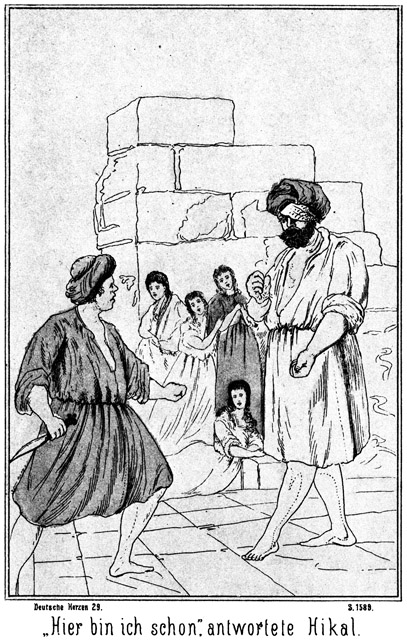»Hier bin ich schon,« antwortete er.
Er that einen Sprung, um dem Feinde die Klinge in das Herz zu stoßen, da dieser aber in demselben Augenblicke den Arm sinken ließ, traf ihn der Stoß nur in diesen, nicht aber in die Brust.
»Mücke, Du stichst?« lachte Falehd. »Du kannst nicht schießen. Da bist Du verloren!«
Beide Arme ausstreckend, wollte er Hilal ergreifen. Dieser aber nahm das Messer zwischen die Zähne, bückte sich unter den Armen des Riesen weg, und ergriff ihn rechts und links an den Stellen, wo die Oberschenkel in die Hüfte übergehen.
Was ein Jeder für unmöglich gehalten hätte, das geschah. Die Wuth darüber, daß die Geliebte ermordet worden sei, verzehnfachten die Kräfte des Jünglings. Er hob den Riesen empor, als ob dieser ein kleiner Knabe sei, und trat mit ihm zur Seite an die Brüstung. Falehd wehrte sich gar nicht. Er war über die Kräfte, welche sich jetzt an ihm bethätigten, geradezu so verblüfft, daß er vergaß, eine Bewegung zu seiner Rettung zu machen.
»Hinab nun auch mit Dir, ihr nach!« rief Hilal.
»Noch nicht! Erst kommst Du!«
So antwortete Falehd. Er wollte Hilal fassen; aber schon war es zu spät; er griff nur in die Luft. Hilal schwang seine schwere Last, als ob er einen federleichten Gegenstand gepackt habe, und schleuderte den Riesen in einem weiten Bogen über die Brüstung hinaus und von der Höhe der Zinne hinab.
Ein fürchterlicher Schrei aus dem Munde Falehds erscholl weit in die Ebene hinaus; dann bekundete ein dumpfer, eigenthümlicher Schall, daß sein Körper unten aufgetroffen sei und von Quader zu Quader bis in die Tiefe stürzte.
Jetzt erst drehte Hilal sich um. Er wollte nach den anwesenden Frauen sehen. Vor ihm stand nur eine Einzige: Hiluja.
»Allah, Allah!« rief er aus.
»Hilal!« frohlockte sie, vor lauter Entzücken die kleinen Händchen zusammenschlagend.
»Du, Du!«
Seine Augen waren weit offen, als ob er ein Gespenst vor sich stehen sehe. –
»Ja, ich.«
»O, Allbarmherziger! So ist es Dein Geist?«
»Mein Geist? O nein! Ich bin es selbst!«
»Nein, nein; es ist Dein Geist. Allah hat Dir erlaubt, zu mir zu kommen, damit ich Dich noch einmal sehe, ehe Du die Pforte des Paradieses betrittst.«
»Hier! Fühle mich an, und sage mir dann, ob ich ein Geist sein kann.«
Sie streckte ihm die Hände entgegen.
»Aber Du bist ja todt?«
»Todt? Ich? Siehst Du nicht, daß ich lebend bin.«
»Ich möchte es sagen; aber der Riese hat Dich doch hier hinabgeworfen?«
»Mich nicht. Er hatte an meiner Stelle meine Dienerin ergriffen.«
Da kehrte das Blut in die Wangen Hilals zurück. Ein Strahl wonnevoller Freude ging über sein Gesicht, und doch frug er, noch immer zweifelnd:
»Ist das wahr, wirklich wahr?«
»Ja. Hier, fühle es!«
Sie schlang die Arme um ihn und küßte ihn mit ihren vollen, lebenswarmen Lippen auf den Mund. Jetzt konnte er nicht länger zweifeln. Er drückte die Geliebte, fest, fest an sich und rief, indem ihm die hellen Freudenthränen über die Wangen liefen:
»Also Du lebst. Du lebst wirklich! Allah sei gepriesen, jetzt und in alle Ewigkeit! Er hat Großes an uns gethan, deß' werde ich ihn loben und preisen bis zum letzten Augenblicke meines Lebens!«
»Ja, er sei gelobt und gepriesen in alle Ewigkeit! Aber auch Dein Ruhm soll erschallen, so weit die Zunge reicht. Du hast Falehd besiegt. Du hast ihn hier hinabgeschleudert, wie der Elephant einen Hund weit durch die Lüfte wirft!«
Ihre Augen waren voll Liebe und Bewunderung auf ihn gerichtet.
»Ich weiß selbst nicht, wie mir dies gelungen ist,« sagte er in bescheidenem Tone.
»Du bist stärker als der Löwe. Wer hätte das geglaubt und gedacht!«
»Es war der Grimm, welcher mir diese Kräfte gab. Ich brächte es zum zweiten Male nicht wieder fertig. Aber man sagte mir doch, daß er Dich wirklich hinabgeworfen habe?«
»Badija und Zykyma haben das wirklich gedacht. Mich aber hörtest Du nicht.«
»Wo sind denn diese Beiden?«
Er blickte sich um, sah sie aber nicht.
»Sie sind fort, entflohen. Als Du den Riesen ergriffst, war der Weg zur Treppe frei, und da sind sie augenblicklich fortgeeilt. Ich aber mußte bleiben!«
»Du mußtest? Warum mußtest Du?«
»Du rangest mit Falehd; Du befandest Dich in Gefahr. Ich konnte nicht fort; ich konnte meine Glieder nicht bewegen.«
»Aus Angst?«
»Ja, aus Angst um Dich.«
»So sehr liebst Du mich?«
»Ja, so sehr, mein lieber, lieber Hilal.«
Sie drückte ihr kleines, schönes Köpfchen in überquellender Innigkeit an seine Brust und blickte mit Augen zu ihm auf, aus denen eine ganze Welt von Liebe strahlte.
»Meine Hiluja! Mein Engel, mein Leben! O, wie so sehr habe ich Dich lieb, wie so sehr!«
»Ich mag und kann ohne Dich nicht leben!«
»Und ich nicht ohne Dich. Warum ist Dein Vater doch so zornig über unsere Liebe?«
Sie wurden gestört. Hinter ihnen, von der Treppe her, ertönten die Worte:
»Er ist nicht zornig darüber. Ihr irrt Euch.«
Sie fuhren erschrocken herum und sahen den Scheik der Beni Abbas, Hiluja's Vater vor sich stehen.
Er hatte, wie bereits erwähnt, mit seinen Leuten das Lager zu bewachen gehabt, war aber dann von seiner Kampfeslust hingerissen worden, an der Verfolgung des Feindes teilzunehmen. Sein Pferd strauchelte über eine der Leichen und stürzte. Er wurde aus dem Sattel geworfen, während seine Leute im Galopp weiter sprengten. Er erhob sich und befühlte seine Glieder, ob er nicht vielleicht irgendwo Schaden gelitten habe. Da hörte er sich rufen, von der Seite her, in welcher sich das Lager befand. Als er sich umdrehte, erblickte er einen Greis, welcher als einer der Schwächsten hatte zurückbleiben, müssen, aber dann, als der Sieg entschieden war, auch aus dem Lager geeilt war, um nach dem Kampfplatze sich zu begeben. Er kam in möglichster Schnelligkeit herbei, winkte sehr dringlich und rief:
»Komm, komm, o Scheik! Komm in's Lager!«
»Warum?«
»Es muß sich dort ein Unglück begeben haben.«
»Ein Unglück? Unmöglich! Es kann doch keiner der Feinde in das Lager gedrungen sein?«
»Vielleicht doch! Ihr waret die Wächter und habt Euren Posten verlassen. Da können die Beni Suef von der unbewachten Seite herbeigekommen sein. Ich hörte den Hilferuf der Königin erschallen, und dann stürmte Hilal an mir vorüber, dem Lager entgegen. Er würde das nicht gethan haben, wenn er nicht geglaubt hätte, daß sich Badija in Gefahr befindet.«
»O Allah! Sollte das wahr sein?«
»Sicherlich! Der Sohn des Blitzes ist nicht gewöhnt, den Kampfplatz zu verlassen und dem Feinde den Rücken zu zeigen. Er hat dies sicher nur gethan, weil es dringend nöthig gewesen ist.«
»So muß ich eilen. Schnell, schnell!«
Sein Pferd war wieder aufgestanden. Er sprang in den Sattel und ritt in gestrecktem Galopp dem Lager entgegen. Es war, als ob der Bauch des Thieres die Erde berühre. Je näher er kam, desto größer wurde seine Sorge. Jetzt erblickte er die Ruine. Sie wurde größer und immer größer. Er konnte jede Einzelheit unterscheiden. Da sah er die hohe, breite Gestalt des Riesen oben auf der Zinne stehen, in den beiden, hoch erhobenen Fäusten eine weibliche Gestalt haltend, augenscheinlich im Begriffe, sie herabzuschleudern.
»Hölle und Teufel!« schrie der Scheik auf. »Dieser Hund ist zurückgekehrt und tödtet meine Tochter. Er soll in die tiefste Verdammniß fahren!«
Er gab dem Pferde die Sporen, daß das Thier laut aufstöhnte; in der nächsten Minute hatte er die Ruine erreicht. Fast noch im Galopp warf er sich aus dem Sattel und rannte die Stufen hinauf, in das Innere des Gemäuers hinein, nach den Gemächern der Königin, seiner Tochter.
*
Dort brannte die Lampe. Bei dem Scheine derselben sah er, als er von der einen Seite hereintrat, von der anderen Badija und Zykyma hereinkommen. Beide trugen alle Zeichen einer gewaltigen Aufregung an sich.
»Badija!« rief er, stehenbleibend.
»Mein Vater!« antwortete sie, mit einem weiteren Ausrufe der Erleichterung sich an seine Brust werfend.
»Du lebst?«
»Ja, ich lebe!«
»Ich dachte, er würfe Dich herab!«
»Mich nicht; aber Hiluja hat er hinabgeschleudert.«
»Großer Gott! So ist sie todt?«
»Ja,« antwortete sie, in Thränen ausbrechend.
»Wo ist er? Noch oben?«
»Ja. Hilal kämpft mit Falehd.«
»Hinauf, hinauf! Ich tödte ihn!«
»Bleib', o bleib'!« bat sie, ihn festhaltend. »Er ist so fürchterlich und so stark!«
»Und wenn er die Stärke von zehn Elephanten besäße, so tödte ich ihn trotzdem!«
Er riß sich los.
»Laß' Dich nicht angreifen! Hast Du die Pistolen?«
»Ja.«
»Er hat keine Waffe. Du darfst nur auf ihn schießen, aber um Allahs Willen nicht mit ihm ringen!«
Er zog die Pistolen hervor.
»Ich schieße ihn.«
Er wollte fort.
»Du weißt den Weg und die Treppe nicht!«
»So führe mich!«
Sie ergriff die Lampe, um ihm zu leuchten. Er ging so schnell, daß sie kaum Schritt zu halten vermochte. An der Treppe angekommen, kehrte sie angstvoll um; er aber stieg schnell hinauf. Oben angekommen, blieb er erstaunt stehen. Da stand die todtgeglaubte Tochter, Hiluja, von Hilal umschlungen. Eben sagte der Letztere:
»Meine Hiluja! Mein Engel, mein Leben! O, wie so sehr habe ich Dich lieb, wie so sehr!«
Und sie antwortete im Tone innigster Liebe:
»Ich mag und kann ohne Dich nicht leben!«
»Und ich nicht ohne Dich! Warum ist Dein Vater doch so zornig über unsere Liebe?«
Das übermannte den Scheik. Die Tochter, welche er bereits todt wähnte, am Leben zu sehen, jedenfalls gerettet von Hilals Hand, ließ ihm alles Frühere vergessen. Er sagte laut:
»Er ist nicht zornig darüber. Ihr irrt Euch!«
Da drehten sie sich erschrocken um und sahen ihn.
»Vater, mein Vater!« rief Hiluja.
Sie zog sich aus Hilals Umarmung und warf sich dem alten Scheik an die Brust. Dieser drückte sie zärtlich an sich und fragte:
»So hat Dich der Riese nicht getödtet, nicht hinabgeworfen?«
»Nein. Hilal rettete mich.«
»So hat er nur die Hälfte gethan. Er rettete Dich, und ich werde Dich rächen,« sagte der Vater, der noch immer die Pistolen in den Händen hielt. »Wo ist Falehd?«
»Da unten.«
Sie deutete über die Brüstung hinab.
»Da unten? Hinabgestürzt?«
»Hilal hob ihn empor und schleuderte ihn hinab.«
»Hilal – hob ihn – schleuderte ihn – hinab? – – Das ist nicht möglich!«
»O doch! Er hat es gethan!«
»So ist er der größte und stärkste der Kämpfer, den ich jemals gesehen habe. Aber ich sah doch, daß der Riese ein Weib in den Fäusten –«
»Das war Haluja, meine Dienerin,« fiel Hiluja schnell ein. »O Allah, die habe ich ganz vergessen! Ich Undankbare! Er ergriff sie anstatt meiner. Er warf sie hinab. Sie ist todt! Zerschmettert! Mein Gott! Ich muß hinab, sie zu suchen!«
Sie wollte fort. Der Scheik ergriff sie bei der Hand.
»Nicht so schnell! Du stürzest ja die Treppe hinab. Die Alte war gut und treu. Wir müssen nach ihr sehen. Aber wir brauchen dabei nicht die Hälse zu brechen!«
»Sie war nicht nur gut und treu, sondern auch tapfer. Sie hat wie eine Löwin mit dem Ungeheuer gekämpft!«
»So sei es Allah geklagt, daß sie sterben mußte! Wie gern würde ich ihr dankbar sein!«
Sie stiegen hinab. Unten im Gange stießen sie auf die Königin. Aus Sorge für den Vater war es ihr doch unmöglich gewesen, sich ganz zu entfernen. Auch sie erstaunte auf das Freudigste, als sie ihre Schwester am Leben erblickte. Beide schlossen sich unter Jubelrufen in die Arme. Dann aber begaben sie sich eiligst aus der Ruine hinaus.
Dort unten bot sich ihnen ein entsetzlicher Anblick. Gerade unterhalb der hohen Plattform lag der Riese, vollständig zerschmettert. Er hatte ganz das Aussehen, als ob kein Glied seines mächtigen Körpers ganz geblieben sei. Er athmete nicht mehr; er regte sich nicht. Er war todt. Als der Scheik mit grauendem Blicke die Gestalt dieses Menschen überflog, sagte er zu Hilal:
»Niemals im Leben wirst Du wieder einen solchen Sieg erringen. Der Zweikampf muß entsetzlich gewesen sein.«
»Ich weiß nicht mehr, wie es gekommen und wie es gewesen ist,« antwortete der Jüngling. »Ich glaubte, er habe Hiluja getödtet; ich wollte sie rächen; ich faßte ihn, hob ihn empor und warf ihn herab. Das ist Alles.«
»Und sie lebte doch! Aber er hätte sie noch getödtet, wenn Du nicht gekommen wärest! Du hast ihr das Leben gerettet.«
»Und mir auch,« fügte die Königin hinzu.
»Mir ebenso,« sagte Zykyma. »Er war wie ein wüthendes Thier. Er schäumte wie ein toller Hund. Ich glaube, er hätte uns Alle umgebracht.«
»Er war ein Teufel. Du aber, Hilal, bist als ein Engel von Allah gesandt worden, um sie zu erretten! Wie soll und kann ich Dir danken!«
Er blickte lächelnd auf den Jüngling. Dieser senkte erröthend den Blick und antwortete:
»Ich that nur meine Pflicht.«
»Aber nicht nur aus Pflichtgefühl, sondern auch aus Liebe. Und darum soll auch die Liebe Dich belohnen. Sage mir, hast Du Hiluja wirklich so herzlich und so innig lieb, wie Du es vorhin da oben sagtest?«
»O, noch viel, viel inniger! Ich kann es ja gar nicht sagen, wie lieb ich sie habe!«
»So beweise es wenigstens, wenn Du es nicht zu sagen vermagst. Weißt Du, wie Du diesen Beweis führen kannst, Hilal?«
»Ich – – ich – – ich wüßte es wohl.«
»Nun, wie denn?«
Hilal blickte verlegen auf den Alten hin und sagte in zaghaftem Tone:
»Wenn sie mein Weib sein dürfte, so wäre dies die einzige Weise, ihr zu zeigen, was sie mir ist.«
»Das ist nicht nöthig. Was sie Dir ist, das kann auch ich sagen, und zwar ganz genau.«
Er blickte sich lächelnd im Kreise um. Aller Blicke hingen gespannt an seinem Munde. Darum fuhr er fort:
»Sie ist nämlich Deine Verlobte.«
»Meine – meine Verl– – –«
Das Wort blieb Hilal vor Entzücken im Munde stecken. Aber Hiluja flog an die Brust des Vaters und rief:
»Ist's wahr? Ist's Wahrheit, mein Vater?«
»Ja, es ist wahr,« sagte er jetzt im Tone tiefsten Ernstes und ebenso tiefer Rührung.«
»So denkst Du nicht mehr an den Sohn des Scheikes der Meschner?«
»Nein. Es wird mir zwar nicht leicht, diesen Lieblingsplan aufzugeben, aber ohne Hilal hätte ich keine Töchter mehr. Ich wäre einsam und kinderlos, und darum soll sein Leben auch kein einsames sein. Ich gebe Dich ihm zum Weibe. Allah segne Euch, meine Kinder. Er ist mit dem Riesen fürchterlich in's Gericht gegangen. Er bestraft den Bösen und belohnt den Guten. Bleibt so fromm und gut, wie Ihr jetzt seid, so wird Euer Ende ein besseres sein, als dasjenige dieses Mannes, welcher nur geerntet hat das, was er säete.«
Jetzt wagte es Hilal, die Geliebte vor aller Augen zu umarmen. Er richtete den Blick voller Freude und Dankbarkeit gen Himmel, dabei fiel sein Auge auf einen Gegenstand, welcher ihn veranlaßte, einen lauten Ruf auszustoßen.
»Wir suchen Haluja, die tapfere Dienerin,« sagte er. »Seht Ihr sie etwa?«
»Nein. Und doch müßte sie auch hier liegen,« antwortete die Königin, »denn er hat sie ja auch auf dieser Seite herabgeworfen.«
»So blickt da hinauf!«
Er deutete nach oben. Aller Augen folgten der angegebenen Richtung.
»Oh Allah! Da hängt sie am Steine!« rief der Scheik.
Und Alle stimmten in diesen Ruf ein. Nur wenige Ellen unterhalb der Zinne ragte die scharfe Kante eines riesigen Steinquaders aus der Mauer hervor. Diese Kante war von Wind und Wetter angegriffen, Theile von ihr waren herabgepröckelt, so das; sie jetzt eine hornartig nach oben gerichtete Spitze bildete, und an dieser Spitze hing die Dienerin mit dem Gewande, von welchem sie festgehalten wurde.
»Haluja, Haluja!« riefen sie Alle hinauf.
Aber sie antwortete nicht.
»Sie ist todt!« klagte Hiluja.
»Vielleicht lebt sie doch noch,« meinte Hilal. »Wir müssen sie herunterholen.«
»Wie ist das möglich?« fragte der Scheik. »Kein Mensch vermag da emporzuklettern.«
»Das ist wahr, Empor kann Keiner, aber herablassen an einem Seile kann man Einen, das ist möglich.«
»Wer wollte das wagen!«
»Ich. Kommt mit!«
Er eilte fort, hinauf nach der Ruine. Er kannte den Ort, wo die Stricke aufbewahrt wurden, welche für die Thiere der Königin bestimmt waren. Mehrere solcher Stricke wurden zusammengebunden, und dann stiegen die Anwesenden hinauf auf die Zinne.
Es fragte sich, ob der Scheik mit seinen beiden Töchtern und Zykyma stark genug sein würden, Hilal hinabzulassen. Es war jetzt kein anderer Mensch zugegen, und doch durfte man die Dienerin auch nicht länger hängen lasten. Wenn ihr dünnes Gewand zerriß, so stürzte sie in die Tiefe hinab und wurde jedenfalls zerschmettert.
Das Seil war lang genug geworden. Das eine Ende desselben wurde hinabgelassen, nachdem man es in eine Schlinge gelegt hatte. Das andere Ende befestigte man um einen Quader, welcher weit genug aus der Brüstung hervorstand. Hilal erklärte, daß er nicht wünsche, hinabgelassen zu werden, sondern daß er beabsichtige, hinabzuklettern. Auf diese Weise hatten sich die Anderen gar nicht anzustrengen. Sie brauchten nur dafür zu sorgen, daß das Seil nicht vom Quader glitt.
»Aber das ist zu gefährlich für Dich,« sagte Hiluja besorgt. »Werden Deine Kräfte ausreichen?«
»Ja. Habe keine Sorge,« antwortete er, ganz glücklich, sie so für ihn beängstigt zu sehen.
»Aber wie willst Du Haluja anbinden, wenn Du selbst mit Deinen Händen am Seile hängst?«
»Ich werde mich auf den Vorsprung setzen, an welchem sie hängt. Und geht dies nicht, so trete ich in die Schlinge des Seiles und bekomme dadurch meine Hände frei.«
»O Allah, ich zittere vor Angst!«
»Es ist keine Zeit, sich zu ängstigen. Wir müssen handeln, wenn Haluja gerettet werden soll.«
»Recht so, mein Sohn. Steige getrost hinab. Hat Allah Dir den Sieg über den Riesen verliehen, so wird er Dich auch hier beschützen. Er wird mein Unternehmen leiten. Er wird Dich nicht zum Retter meiner Töchter bestimmt haben, damit Du wenige Minuten später verunglückst.«
Hilal schwang sich auf die Brüstung, ergriff das Seil und ließ sich langsam und vorsichtig an demselben hinab. Vorher hatte er sich einige Stricke um den Leib gewunden. Er glaubte, sie gebrauchen zu können.
Er langte glücklich bei der Verunglückten an. Der Vorsprung, an welchem sie hing, bot ihm nicht Raum genug. Daher kletterte er noch einige Fuß hinab und stellte sich mit den Füßen in die Schlinge.
Jetzt begann der gefährliche Theil seines Unternehmens. Unter ihm gähnte die große Tiefe. Ueber ihm stand ein alter Mann mit drei Mädchen, alle Vier nicht stark genug, ihn am Seile emporzuziehen.
Er wand sich die erwähnten Stricke vom Leibe los und versuchte, Haluja mit denselben an das Seil zu befestigen. Es gelang, allerdings nach langem Bemühen und nach öfteren Angstrufen, welche von oben, wo Hiluja herabblickte, herniederschollen. Auch der Kopf des Scheikes kam jetzt zum Vorscheine.
»Sollen wir nun Euch Beide heraufziehen?« fragte er.
»Nein. Das würde Euch unmöglich sein. Ich komme hinaufgeklettert.«
Dies that er auch. Mit augenscheinlicher Lebensgefahr kletterte er empor und langte glücklich oben an. Nun wurde langsam und vorsichtig das Seil, an welchem unten Haluja hing, eingeholt. Als der leblose Körper der braven Dienerin draußen an der Brüstung anlangte, stieg Hilal auf die Letztere, um die Last herein zu holen, auch ein höchst gefährliches Wagniß, welches aber ebenso wie alles Vorherige glücklich gelang.
Als nun die Alte auf der Plattform lag, konnte man keine einzige äußere Verletzung an ihr entdecken. Sie war ohne Besinnung, holte aber doch sehr bemerkbar Athem. Da ihre Behandlung hier oben zu unbequem war, wurde sie hinab und in das Freie vor die Thür geschafft. Hier war das so nothwendige Wasser leicht bei der Hand. Die Anwendung desselben hatte den Erfolg, daß sie erwachte. Sie blickte mit verwunderten Augen um sich und fragte:
»Wo bin ich? Was ist mit mir geschehen?«
»Weißt Du es nicht mehr?« antwortete die Königin. »Der Riese hat Dich von der Zinne hinabgeworfen.«
»Ach ja, jetzt fällt es mir ein. Es war so schrecklich. Dann aber träumte mir, ich fliege durch die Luft, von der Erde fort, immer zwischen Sternen hindurch und mitten in den Himmel hinein. Da war ich so glücklich und so selig. Wäre ich doch nicht wieder aufgewacht!«
»Hast Du Schmerz?«
»O nein. Mir ist so wohl. Wie kann ich Schmerzen haben, da ich doch im Himmel gewesen bin.«
»So hast Du von dem bösen Fall, von der Zinne hinab, keinen Schaden davongetragen?«
»Mir thut nichts weh. Ich werde aufstehen.«
Sie erhob sich, zunächst von den Anderen unterstützt. Dann aber zeigte es sich, daß sie sich ganz mühelos und frei bewegen konnte. Es war wie ein Wunder, daß sie so gänzlich heil davongekommen war.
»Allah hat Dich mit seiner Hand gehalten,« sagte der fromme Scheik. »Er hat Dir sogar den Himmel gezeigt. Das ist der beste Lohn für die Tapferkeit, mit welcher Du Deine Herrin vertheidigt hast. Den irdischen Lohn sollst Du von uns erhalten, so weit es in meiner Macht liegt. Aber seht, wer kommt dort!«
Von draußen herein nahte sich im Galopp ein Reiter. Als er näher kam, erkannten sie Saïd, den wackeren Arabadschi. Obgleich Zykyma's Diener und kein Beduine, hatte er sich doch auch an der Verfolgung der Feinde betheiligt. Er sah die Personen auf der Ruine stehen und winkte ihnen in einer Weise, aus welcher sie sahen, daß er der Ueberbringer einer guten Botschaft sei.
Von Saïd hinweg fiel der Blick des Scheikes auf die Stute, auf welcher der Riese herbeigekommen war. Sie stand noch ruhig unten vor der Ruine.
»Welch' ein Pferd!« sagte er. »Man sieht es aus den ersten Blick, daß diese Stute einen langen und berühmten Stammbaum hat.«
Der Araber nämlich hält außerordentlich auf sein Pferd. Berühmt besonders sind die Nachkommen jener Pferde, welche sich bei einem Feldzuge des Propheten Muhammed als genügsam erwiesen. Muhammed hatte mit seinem Herrn einen langen, beschwerlichen Marsch in glühender Sonnenhitze zurückgelegt. Weder Reiter noch Pferd hatten sich an einem Tropfen Wassers erlaben können; Menschen und Thieren klebten die Zungen am Gaumen, der Durst war fürchterlich, Viele fühlten sich dem Verschmachten nah. Da endlich kam man an einen kleinen Bach. Alles stürzte sich nach dem Wasser hin. Nur dreißig Pferde, lauter edle Stuten, blieben stehen, um zu warten, bis ihre Herren ihnen das Trinken erlauben würden. Muhammed segnete sie und schrieb ihre Namen eigenhändig auf Pergamenttafeln, welche er den Besitzern dieser Pferde dann aushändigte. So entstanden die Stammesbäume für die Nachkommenschaft dieser Stuten, welche in Folge nur mit den edelsten Hengsten belegt wurden.
Diese Stammbäume existiren noch. Eine Stute, welche von einer dieser Urahninnen abstammt, hat höhern Werth als eine andere von gleich altem Stamme, welche vielleicht dieselben guten Eigenschaften besitzt.
Jeder Beduine hält den Stammbaum seines Pferdes ebenso heilig wie ein Abkömmling der Kreuzritter den seinigen. Die Namen berühmter Pferde sind weithin bekannt, so daß zum Beispiel von einer Stute, welche ihre Datteln im westlichen Marokko frißt, im fernen Ostarabien, ja in Kurdistan und Persien gesprochen wird.
Eine so berühmte Stute war auch der Fuchs, welchen der Riese geritten hatte.
Hilal wurde erst durch die Bemerkung des Scheiks auf sie aufmerksam. Er warf einen Blick auf sie hinab und antwortete:
»Das ist die Lieblingsstute des Scheiks der Beni Suef. Sie heißt Sselßele und hat einen Werth, welchen man nach Geld gar nicht messen kann.«
»Wie kommt sie hierher?«
»Der Riese hat sie jedenfalls geritten.«
»Wie kann der Scheik ihm seine Lieblingsstute anvertrauen! Das thut doch Keiner.«
»Wer weiß, wie es gekommen ist.«
Jetzt nahte sich Saïd, der Arabadschi, um seine Botschaft zu bringen.
»Masr-Effendi sendet mich,« sagte er. »Wir haben einen vollständigen Sieg errungen.«
»Allah sei Dank!« rief der Scheik.
»Alle Hände, welche vorhanden sind, sollen die Kameele tränken und die Schläuche füllen, damit die Verfolgung der Flüchtigen schleunigst begonnen werden kann.«
»Werden Viele entkommen?«
»Wohl fast die Hälfte der Feinde liegen getödtet auf dem Schlachtfelde. Die Gewehre mit den Nadeln haben sich außerordentlich bewährt. Die anderen Beni Suef sind auf der Flucht nach dem Ferß el Hadschar oder haben sich zerstreut. Unsere Krieger reiten nach allen Richtungen, um die Zerstreuten nieder zu machen oder gefangen zu nehmen. Haben sie das gethan, so werden sie sich sammeln, um die Verfolgung der Anderen zu beginnen, welche sich nach dem Ferß el Hadschar gewendet haben. Es mögen deren vielleicht Zweihundert sein.«
»Wo ist Tarik?«
»Er ist bereits fort nach dem Bett der Steine, um die Fliehenden nicht zur Ruhe kommen zu lassen.«
»Und Masr-Effendi?«
»Er befindet sich im Lager der Besiegten, um darauf zu sehen, daß die Beute nicht geplündert wird und daß man die Gefangenen nicht tödtet.«
»Aber wer soll hier tränken und Schläuche füllen! Es ist kein Mensch im Lager. Selbst die Kinder sind auf das Schlachtfeld hinaus.«
»Dort befindet sich Normann Effendi, um auf Ordnung zu halten.«
»So kehre zurück und sage ihm, daß er die Greise, Weiber und Kinder nach dem Lager senden soll, damit sie das Befohlene ausführen. Die Beute läuft ihnen nicht davon.«
»Wessen Leiche ist es, die da unten liegt?«
»Diejenige des Riesen. Er ist während der Abwesenheit der Krieger in das Lager gekommen, um die Frauen zu überfallen.«
»O Allah! Ist es ihm gelungen?«
»Nein. Du siehst ja die Frauen hier stehen und da unten liegt er todt. Hilal hat ihn von der Zinne der Ruine in die Tiefe geschleudert.«
»Allah sei gepriesen jetzt in alle Ewigkeit! Nimm den Dank meines Herzens an, Hilal.«
Er reichte ihm die Hand. Hilal drückte sie herzlich und sagte:
»Du brauchst nicht zu danken, Saïd. Ich habe Dir ja nicht einen Dienst erwiesen.«
»Nicht, meinst Du? Hast Du nicht Zykyma, meine Gebieterin, errettet, welche ich hätte bewachen sollen? Die Kampflust hat mich fortgetrieben, während es meine Pflicht gewesen wäre, zu ihrem Schutze an ihrer Seite zu bleiben. Verzeihe, Herrin! Es soll nicht wieder geschehen!«
»Ich verzeihe Dir gern,« antwortete sie. »Hilal hat gethan, was Du nicht hättest thun können.«
Sein Auge blitzte beinahe zornig auf.
»Meinst Du, daß ich mich etwa nicht an den Riesen gewagt hätte? Wenn alle Dschins und Geister der Wüste kämen, um sich an Dir zu vergreifen, ich würde mit ihnen kämpfen!«
»Ich weiß es. Du Treuer! Ich wollte Dich nicht beleidigen. Kehre jetzt nach dem Kampfplatz zurück und richte die Botschaft an Normann-Effendi aus!«
»Das werde ich nicht thun!«
»Warum nicht?«
»Ich gehöre zu Dir!«
»Ich befinde mich ja nun nicht mehr in Gefahr.«
»O, es kann wieder eine neue Gefahr kommen, und da muß ich bei Dir sein. Ich bin ein Gast der Beni Sallah, und ich habe sie lieb. Ich helfe ihnen gern; ich habe vorhin mit gekämpft und mehrere ihrer Feinde getödtet. Noch lieber aber habe ich Dich. Ich muß Dich beschützen und bleibe bei Dir.«
Er sagte das in einem so bestimmten Tone, daß man überzeugt sein mußte, er werde sich von diesem Entschlüsse nicht abbringen lassen. Um dies noch deutlicher zu machen, setzte er sich auf den nächsten Steinquader und legte seine Waffen neben sich hin.
»So werde ich es an seiner Stelle thun,« sagte Hilal. »Die Gefahr, in welcher Ihr Euch befandet, ist beseitigt, und ich kann getrost gehen.«
»Nein, bleib!« sagte der Scheik. »Saïd hat Recht. Wie der Riese sich herbeischlich, so können Andere es auch thun. Versprengte Beni Suef können, wenn sie in die Nähe des Lagers kommen und es ohne Wächter sehen, sehr leicht auf den Gedanken gerathen, hier einzufallen, um sich zu rächen. Ich bin es, der den Fehler begangen hat. Masr-Effendi hatte mir und meinen Kriegern das Lager anvertraut; wir aber haben es verlassen. Wir sind von unserem Posten gewichen. Hätten wir das nicht gethan, so wäre es dem Riesen unmöglich gewesen, sich herbei zu wagen. Das ist nun geschehen und also nicht mehr zu ändern; aber ich will dafür sorgen, daß Ihr nun wenigstens von jetzt an Euch in Sicherheit befindet. Du bist jung, Hilal, und ich bin ein Greis. Du bist stärker als ich. Bleibe hier. Du sollst Deine Braut und Deine Schwägerin bewachen und beschützen. Ich aber eile, mit Normann-Effendi zu sprechen und Euch eine Anzahl Krieger zum Schutze zu senden.«
Das wurde angenommen. Er begab sich von dannen.
Der Sieg der Bein Sallam über die Beni Suef war ein außerordentlich schneller gewesen. Keiner der Ihrigen war todt. Nur wenige der Krieger hatten eine leichte Verletzung davon getragen. Nicht einmal kampfunfähig war irgend Einer geworden.
Die Beni Suef waren ihres Sieges ganz und gar sicher gewesen. Darum war das Gegentheil desto gewaltiger über sie gekommen. Die Hälfte lag todt in den Dünen; die Anderen waren entflohen. Die Mehrzahl derselben hatte sich natürlich nach ihrem Lager zurückgewendet. Sie waren da auf ihre besten Thiere gesprungen und sofort von dannen geeilt.
Fast zu gleicher Zeit waren auch die Sieger mit in das Lager gedrungen. Keiner der Flüchtlinge hatte Zeit gehabt, irgend Etwas mit zu nehmen. Tie Beni Sallam sprangen von ihren Pferden und fielen über Alles, was sich im Lager befand, her. Geschulte europäische Truppen hätten das Unterlasten und ohne Unterbrechung die Verfolgung fortgesetzt. Diese Söhne der Sahara aber kannten keine solche Disciplin. Das Lager war zu groß. Da gab es Zelte, Pferde, Kameele, Waffen, Decken, Kleider und allerlei andere Gegenstände von höherem oder geringerem Werthe, welche die Augen der Beni Sallah in dem Maße bestachen, daß sie gar nicht daran dachten, hinter den fliehenden Feinden zu bleiben.
Andere, welche mehr kriegerischen Sinn besaßen, hatten, sich zertheilend, die Verfolgung der sich über die Ebene und in den Dünen zerstreuenden Feinde übernommen. Sie waren in der Ueberzahl, und gaben keinen Pardon. Sie wußten, daß sie, im Falle sie besiegt worden wären, auch keine Gnade erhalten hätten. Die Beni Suef wurden niedergemacht.
Diesen Verfolgern hatte sich auch Tarik angeschlossen. Er vergaß, daß er Anführer war. Er, der Sohn des Blitzes, kämpfte wie ein einfacher Krieger und schoß und schlug einen Feind nach dem anderen nieder.
Normann hatte, als er sah, daß der Sieg errungen und der Feind geworfen war, nicht an die Verfolgung desselben gedacht. Als Gast der Beni Sallam hatte er für diese zu den Waffen gegriffen, aber eine gänzliche Vernichtung der Beni Suef lag nicht in seinem Interesse. Darum lenkte er sein Pferd nach dem Kampfplatze zurück.
Er erkannte, daß er daran sehr wohlgethan hatte. Die Greise, Weiber und Kinder der Beni Sallam waren herbei gekommen, um zu plündern. Da ging es denn nicht sehr menschlich her. Die verwundeten Feinde hatten viel zu leiden. Die Kleider wurden ihnen vom Leibe gerissen. Diesem Gebahren that Normann Einhalt. Er hatte vollauf zu thun, die Angehörigen der Sieger im Zaume zu halten.
Was Steinbach betrifft, so hatte er ebenso gekämpft, als ob er ein Beni Sallam sei. Zuletzt, als der Sieg längst entschieden war, hatte er noch einen Einzelkampf zu bestehen, welcher sehr leicht unglücklich für ihn hätte auslaufen können.
Omram el Suefi, der Eidam des feindlichen Scheiks, war verwundet worden, nur leicht; es war ihm eine Kugel durch das Fleisch des linken Armes gegangen. Das hatte seine Kampffähigkeit nicht im Mindesten irritirt. Aber er sah, daß Widerstand unnütz sei und beschloß, sich den Fliehenden anzuschließen. Er wandte sich also seinem Lager zu. Noch einmal zurückblickend, bemerkte er die hohe Gestalt Steinbachs, welcher zur Verfolgung herbei eilte.
»Masr-Effendi, der Hund!« stieß er wüthend hervor. »Er kommt, er muß hier vorüber! Er soll sterben. Ich stelle mich todt und schieße ihn nieder.«
Er zog seine Pistole, welche er seit dem letzten Schusse wieder geladen hatte, und warf sich in den Sand, wo er wie ein Todter regungslos liegen blieb.
Steinbach kam herbei. Er mußte wirklich da, wo Omram lag, vorüber. Den Suef wirklich für todt haltend, achtete er gar nicht auf denselben. Er hatte sein Gewehr in der Hand. Mehr springend als gehend, eilte er heran. Eben wollte er an dem vermeintlichen Todten vorbei, da erhob dieser die Hand.
»Stirb, und sei verflucht!«
Diese Worte ausrufend, drückte Omram ab. Steinbach war ein Mann von seltener Geistesgegenwart. Die Worte hören und augenblicklich zurückspringend, das war das Werk eines Momentes. Das rettete ihm das Leben. Die Kugel traf ihn nicht, sie schlug an den Lauf seines Gewehres, welches ihm dadurch aus der Hand geschleudert wurde. Aber der Anprall des Geschosses, welches aus der nächsten Nähe kam, war ein so starker, daß Steinbach zur Seite geschleudert wurde und hinstürzte.
Augenblicklich kniete Omram auf ihm. Ihm die Linke um den Hals krallend, zog er mit der Rechten das Messer aus dem Gürtel und holte zum Stoße aus. Steinbach ergriff diese Hand beim Gelenk, um den Stich abzuwehren. Aber seine Hand war zu schwach. Sie war, als ihr durch Omrams Kugel das Gewehr entrissen wurde, derartig geprellt worden, daß sie weder Gefühl noch Kraft besaß. Es gelang dem Feinde leicht, sich von Steinbachs Griff zu befreien. Er stieß zu, und zwar mit allen Kräften, die er besaß. Die Klinge sollte bis an das Heft in die Brust Steinbachs tauchen.
In diesem mehr als kritischen Augenblicke nahm Dieser aber alle seine Kraft zusammen und wälzte sich unter seinem Feinde zur Seite. Der Stich ging fehl; die Messerklinge grub sich in den Sand.
Jetzt konnte Steinbach die andere Hand gebrauchen. Er griff zu und faßte den bewaffneten Arm des Suef. Dieser Griff war so eisern, daß der Suef einen Schmerzensschrei ausstieß und das Messer fallen ließ. Indem er es wieder erfassen wollte, nahm er die andere Hand von Steinbachs Halse. Das benutzte dieser. Er war mit einem schnellen Sprunge vom Boden auf. Zwei Schritte entfernt lag sein Gewehr. Er hob es auf. Der Suef hatte sich auch erhoben und drang auf ihn ein.
»Du sollst mir nicht entkommen!« brüllte er. »Ich bin Omram el Suefi. Keiner hat mich noch besiegt!«
»Und ich,« antwortete Steinbach, »bin Masr-Effendi, der jeden Feind darniederstreckt!«
»Versuche es doch!«
Er holte zum Stoße aus.
»Hier siehst Du es. Gehe in die Dschehenna zu den Verdammten, zu denen Du mich senden wolltest!«
Er sprang zur Seite, um Raum zum Hiebe zu bekommen. Obgleich er das Gewehr nur mit einer Hand halten konnte, schlug er dem Feind den Kolben doch mit solcher Macht auf den Kopf, daß der Suef mit zerschmettertem Schädel zu Boden sank.
»Todt! Man tödtet nicht gern, aber er hat es ja nicht anders gewollt.«
Jetzt untersuchte er seine Hand. Sie war nicht verletzt, aber er hatte kein Gefühl in derselben. Jedoch stand zu erwarten, daß sich dies schnell bessern werde.
Nun eilte er weiter, dem feindlichen Lager entgegen. Dort ging es zum Erschrecken her. Kaum hatte er erkannt, daß die Krieger ihre Pflicht vergaßen und sich nur auf Plünderung legten, so ließ er seine mächtige Stimme erschallen. Zum Glück kam gerade jetzt auch Tank herbei. Ihren vereinten Bemühungen gelang es, Ordnung zu schaffen. Die Beni Sallah sammelten sich wieder um ihre Anführer.
»Was thut Ihr!« rief Tarik zornig. »Hier sammelt Ihr Kleider und Fetzen, welche Euch doch nicht entgehen können, und die Feinde laßt Ihr dabei entkommen. Laßt Alles liegen. Es soll gesammelt und dann unpartheiisch getheilt werden. Jetzt haben wir Anderes zu thun.«
Keiner wagte es, zu widersprechen. Die flüchtigen Feinde waren bereits weit entfernt. Sie hatten sich, wie bereits bemerkt, die besten Thiers genommen, die weniger guten aber zurückgelassen.
»Folgt mir, ihnen nach!« rief Tarik und nahm ein nahe stehendes Pferd am Zügel, um in den Sattel zu steigen.
»Bitte, warte noch!« sagte Steinbach lächelnd.
»Wozu? Sollen sie entkommen?«
»Nein, das sollen sie nicht. Aber siehe Dir dieses Pferd an. Willst Du etwa auf ihm die flüchtigen Feinde erreichen?«
Tarik war zu eifrig gewesen. Er bemerkte erst jetzt, daß das Pferd von einer Kugel getroffen war. Es blutete.
»Ah! Du hast Recht. Ich nehme ein Anderes!«
»Nicht so schnell. Wir wollen berathen.«
»Aber indessen entkommen sie!«
»Je eiliger Du die Verfolgung beginnst, desto sicherer werden sie entkommen.«
»Wieso?«
»Blicke Dir diese Thiere an, Pferde und Kameele. Sollte der Stamm der Beni Suef nicht im Besitze von besseren sein?«
»Die Beni Suef haben berühmte Pferde und kostbare Eilkameele.«
»Warum sahen wir sie aber nicht?«
»Weil sie fort sind. Diese Hunde, welche Allah verderben möge, haben die besten Thiere genommen und die schlechten zurückgelassen.«
»Das nehme ich ihnen gar nicht übel. Sie wären sehr dumm, wenn sie das Gegentheil gethan hätten. Aber sage mir, wie Du es anfangen willst, ihre guten Thiere mit diesen schlechten einzuholen?«
»Allah! Du hast Recht. Ich eile in unser Lager, um gute Thiere zu holen.«
»Das wird geschehen, aber ohne Ueberstürzung. Wir werden hier die besseren Thiere aussuchen, und wenn es auch nur wenige sind. Auf diesen reitet eine Anzahl unserer Leute dem Feinde augenblicklich nach, um ihn zu bedrängen, zu beobachten und nicht aus den Augen zu lassen. Dann holen wir uns von Euch die guten Pferde und Eilkameele und beginnen die eigentliche Verfolgung.«
»Effendi, Du hast Recht. Es geschehe, wie Du gesagt hast. Komm, laß uns suchen.«
Es fand sich doch, daß es eine ganze Anzahl guter Pferde und Kameele gab, welche zurückgelassen worden waren. Da eine Truppe der Beni Sallah unter Normann beritten gewesen war, so gab es auch hier eine Anzahl guter Pferde. Auf diese Weise brachte man ungefähr sechzig schnelle Reitthiere zusammen, auf denen man den Flüchtigen sogleich folgen konnte.
»Das ist genug,« sagte Steinbach. »Es handelt sich jetzt nur darum, die Beni Suef in Athem zu halten, damit sie verhindert werden, sich zu sammeln oder auszuruhen. Wähle Dir die tapfersten Deiner Krieger aus, welche sogleich aufbrechen mögen.«
»Wer soll sie anführen?«
»Hm! Das kann ich nicht beantworten.«
»Warum nicht?«
»Weil ich Deine Leute nicht kenne. Der Anführer dieser Schaar muß sehr umsichtig sein.«
»So werde ich selbst mitreiten.«
»Du als Scheik?«
»Ja.«
»Du sollst doch das Ganze leiten. Warum willst Du nur diese kleine Abtheilung befehligen.«
»Weil das Gelingen des Ganzen davon abhängig ist.«
»Du hast nicht Unrecht. Wer aber soll dann alle die Anderen commandiren?«
»Hilal ist da. Und – bist Du auch da?«
»Allerdings.«
»Ich habe freilich kein Recht, von Dir zu verlangen, daß Du an unseren Kämpfen theilnimmst, aber – –«
»Ich bin Dein Freund, ich helfe Dir.«
»Willst Du mit nach dem Duar (Zeltdorf) der Beni Suef?«
»Ja. Ihr müßt diese Gelegenheit benutzen, sie Euch unterthänig zu machen. Gelingt es Euch, so seid Ihr der mächtigste Stamm im Westen des Nils und könnt der Freundschaft und Unterstützung des Vicekönigs von Egypten stets sicher sein.«
»Natürlich werden wir sie überfallen und besiegen. Sie wollten uns vernichten; ich will nicht ihren Untergang, aber sie sollen unsere Diener sein, bis sie uns bewiesen haben, daß wir sie als unsere Verbündeten betrachten dürfen.«
»Die Flüchtigen werden sich nach dem Ferß el Hadschar wenden. Dahin wirst Du ihnen folgen, um sie nach ihrem Zeltdorfe zu treiben. Dort aber werde ich bereits auf sie warten, um sie zu empfangen.«
»Wie? Du wirst dann bereits dort sein?«
»Ja. Ich werde sofort anordnen, daß alle dazu sich eignenden Kameele und Pferde getränkt und gefüttert werden, und daß man die Wasserschläuche fülle. Ist das geschehen, so breche ich sofort auf, um direct nach dem Duar der Beni Suef zu reiten.«
»Wer aber wird unser Duar beschützen?«
»Der Scheik der Beni Abbas wird mit seinen Kriegern da bleiben, bis wir zurückkehren. Du aber magst sogleich aufbrechen.«
Das geschah. Tarik verfolgte mit seinen sechzig wohlbewaffneten und wohlberittenen Leuten die flüchtigen Beni Suef, und Steinbach sammelte die rings umher zerstreuten Beni Sallah, was allerdings einige Zeit in Anspruch nahm.
Alles, was die Beni Suef zurückgelassen hatten, sollte von den Beni Abbas gesammelt und bis zur Rückkehr der Beni Sallah aufgehoben werden, um dann unter den Siegern zur Vertheilung zu gelangen. Bereits nach einigen Stunden setzte sich der Kriegszug in Bewegung, an dessen Spitze Steinbach, Normann und Hilal ritten. Der Letztere hatte von seiner Braut einen herzlichen Abschied genommen. Der Erstere beabsichtigte besonders, sich des Grafen und des Pascha zu bemächtigen, welche, wie er überzeugt war, sich den fliehenden Beni Suef angeschlossen hatten.
Dies war aber leider nicht der Fall.
Der Suef, welcher der Diener des Riesen gewesen war und dem Grafen und dem Pascha zur Flucht verholfen hatte, war von den Seinigen beordert worden, sich von dem Riesen zurückzuziehen. Er erfuhr, daß derselbe nicht in den Stamm aufgenommen, sondern fortgejagt werden solle.
Er mußte dieser Weisung folgen. Aber er hatte bei dem sonst so menschenfeindlichen und rücksichtslosen Riesen eine freundliche Behandlung erfahren und fühlte sich ihm zu Dank verpflichtet. Zwar durste er ihm nicht verrathen, was gegen ihn beschlossen worden war, aber er nahm sich vor, ihn einstweilen in heimlichen Schutz zu nehmen und ihn nicht aus dem Augen zu lassen. Darum drängte er sich nicht zu Denen, welche gegen das Dorf der Beni Sallah vorrückten, und richtete es so ein, daß er Denen beigeordnet wurde, welche zurückblieben, um den Troß zu bewachen. Da bemerkte er denn, daß der Riese sich zu den Pferden schlich. Er ahnte nicht, daß dieser fliehen wolle. Als er aber nach einiger Zeit ihm folgte, fand er ihn nicht, wohl aber bemerkte er, daß die Fuchsstute des Scheiks fehlte. Sofort eilte er zu dem Pascha und dem Grafen, um ihnen mitzutheilen, daß der Riese höchst wahrscheinlich entflohen sei.
»Wohin?« fragte der Pascha.
»Ich weiß es nicht. Jedenfalls ist seine Spur sehr leicht im Sande zu finden.«
»Man muß ihm sofort nachjagen.«
»Um ihn zurückzubringen?«
»Ja. Er hat das beste Pferd des Stammes mitgenommen und muß also als Pferdedieb bestraft werden.«
Da blitzten die Augen des Suef zornig auf.
»Herr, die Beni Sallah sind meine Feinde. Sie nehmen mich gefangen, ich war der Sclave des Riesen Falehd. Er behandelte mich gut, und so bin ich ihm dankbar. Ihr Beide seid zu ihm gekommen und gastfreundlich von ihm aufgenommen worden. Er hat Euch beschützt und vertheidigt. Ihr seid ihm noch viel mehr Dank schuldig als ich. Und nun wollt Ihr ihn als Pferdedieb bestrafen lassen. Ist das Eure Dankbarkeit?«
»Pah! Wir brauchen ihn nicht mehr.«
»Aber er braucht Euch!«
»Sollen wir uns ihm etwa anschließen?«
»Nein, aber Ihr könnt dafür sorgen, daß er nicht in der Wüste umkommt. Er hat sein ganzes Eigenthum zurückgelassen. Vielleicht hat er sich nicht einmal mit Wasser versehen!«
»Er frug mich, was die Beni Suef mit ihm vor hätten, und ich sagte es ihm, wenn auch nicht direct, aber doch so, daß er es sich denken konnte.«
»So hat er wohl gar geglaubt, daß man ihn zu tödten beabsichtige, und hat, um sein Leben zu retten, eine vorschnelle Flucht ergriffen. Wir müssen einmal forschen, in welche Richtung er sich gewendet hat.«
Sie thaten dies. Sie fanden sehr bald seine Spur im Sande und folgten ihr. »Was ist das?« fragte Suef. »Was ist ihm eingefallen? Er ist ja nach dem feindlichen Lager geritten!«
»Das glaube ich nicht,« lachte der Pascha. »Da wäre er ja seinem Verderben entgegen geritten!«
»Wieso?«
»Er ist ein Ausgestoßener, er darf nicht zurückkehren und würde von seinen früheren Freunden sofort getödtet werden.«
»Du vergißt, daß sie in wenigen Minuten überfallen und besiegt sein werden!«
»Das ist wahr. Ah, ich habe eine Ahnung. Er hat gar nicht die Absicht, zu fliehen, sondern er will auch mit Theil an dem Ueberfalle nehmen, könnten wir das nicht auch?«
»Wir könnten es. Eigentlich sind wir am geschicktesten dazu, da wir das Lager kennen.«
»Alle tausend Teufel! Jetzt denke ich erst daran, was auf dem Spiele steht. Man wird die Königin fangen, Hiluja auch und mit ihnen Zykyma. Was wird mit ihnen geschehen?«
»Jedenfalls werden sie die Weiber Derjenigen werden, in deren Hände sie fallen.«
»Verdammt sei das! Ich gebe Zykyma nicht her!«
»Man wird Dich gar nicht nach Deiner Erlaubniß fragen.«
»Sie ist doch mein Eigenthum!«
»Du hast sie nicht bei Dir gehabt. Sie befindet sich bei den Beni Sallah und wird also nicht als Dein Eigenthum betrachtet werden können.«
»So hole ich sie mir jetzt! Geht Ihr mit?«
»Ja.«
Sie eilten weiter, der Spur des Riesen folgend. Da erblickten sie rechts von sich die hohe Gestalt Steinbachs und die lange, hinter den Sanddünen auftauchende Reihe der Beni Suef.
»Das ist der Deutsche!« sagte der Graf. »Warum befindet er sich außerhalb des Dorfes? Gott sei Dank, daß er am frühen Morgen spazieren gegangen ist! Er ist verloren. Er wird der Erste sein, der sein Leben lassen muß. Vorwärts!«
Sie eilten weiter. Zwischen zwei Dünen gehend, konnten sie die Beni Suef nicht mehr sehen, aber das Gekrach einer Salve tönte an ihr Ohr.
»Wie dumm!« rief der Pascha. »Auf einen Einzelnen eine ganze Salve zu richten! So Etwas kann eben nur bei den Beduinen vorkommen. Sie wecken mit diesen Schüssen das feindliche Lager auf und werden nun auf Widerstand stoßen, während sie, wenn sie nicht geschossen hätten, sich desselben ohne Schwertstreich hätten bemächtigen können.
Jetzt drang ein lautes, anhaltendes Geheul vom Kampfplatze herüber.
»Das ist noch dümmer!« sagte der Graf. »Mit diesem Geschrei würden sie sogar Todte aufwecken. Ist dieses Brüllen bei Euch gebräuchlich, wenn Ihr zum Angriffe schreitet?«
»Nein,« antwortete Suef. »Kommt schnell, kommt!«
Er verdoppelte jetzt seine Schritte.
»Warum so rasch auf einmal?«
»Das war kein Angriffsgeschrei. Das war das Geheul der Wuth. Was ist geschehen!«
Die Beiden folgten ihm. Jetzt senkte sich die Sanddüne, welche sie der Aussicht beraubt hatte, wieder nieder. Sie konnten jetzt sowohl nach dem Zeltdorfe der Beni Sallah als auch nach dem Kampfplatze hinüber sehen. Ein Schrei entfuhr dem Suef.
»Allah l'Allah! Dort stehen die Beni Sallah!«
»Sie sind es, welche geschossen haben!« fügte der Graf hinzu.
»Viele der Unserigen sind todt! Drauf, drauf! Nehmt Rache, Rache!«
Er brüllte das so laut, daß es weit hin über die Wüste schallte.
»Still, um Gotteswillen still! Man darf uns noch nicht hören!«
»Warum nicht? Man soll mich ja hören!«
»Nein, nein! Legt Euch nieder, nieder in den Sand! Aber schnell, schnell!«
»Warum denn?«
»Weil – ah, da habt Ihr die Antwort!«
Drüben blitzte es wieder auf. Die zweite Salve der Beni Sallah krachte den Beni Suef entgegen. Man sah die Letzteren fallen wie Fliegen, wenn sie Gift genascht haben.
»Allah! Allah!« rief der Suef. »Sie sind verloren!«
»Und wir Alle mit!«
»Nein! Schnell zurück zum Lager! Wir werfen uns auf die Kameele und ergreifen die Flucht.«
Er wollte fort, zurück. Der Graf aber ergriff ihn und hielt ihn fest.
»Bleib! Du kannst das Lager nicht mehr erreichen.«
»O doch, doch! Siehst Du nicht, daß die Unsrigen dasselbe thun!«
»Er wollte sich losreißen; der Graf aber hielt ihn fest und sagte:
»Halt! Du darfst nicht!«
»Warum nicht? Bin ich nicht Herr meiner Person!«
Er war zornig geworden und zog den Grafen eine kleine Strecke mit sich fort.
»Du bist Dein eigener Herr. Jetzt aber bist Du nicht allein. Du würdest auch uns in das Verderben bringen.«
»Das ist nicht wahr!«
»O doch! Man würde Dich sehen und auch auf uns aufmerksam werden Schau hin, wenn Du mir nicht glaubst! Mit Euch ist es vorüber.«
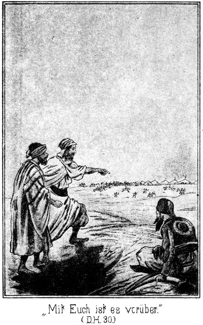Es war nämlich jetzt der Augenblick, an welchem Normann mit der Reserve zu Pferde über die flüchtigen Beni Suef hereinbrach.
Diese Letzteren rannten auf ihr Lager zu. Man sah, wie sie niedergehauen und niedergeschossen wurden und nach allen Seiten auseinanderstoben.
Zugleich bemerkten die Drei, daß Diejenigen, welche zur Bewachung der Trosses zurückgeblieben waren, sich auf Pferde und Kameele warfen und die Flucht ergriffen. In der kurzen Zeit einiger Minuten hatten die verfolgenden Beni Sallah das feindliche Lager erreicht.
Der Suef stand starr vor Entsetzen.
»Nun, willst Du wirklich hin?« fragte ihn der Graf.
»Wer hätte das gedacht!« lautete die Antwort, welche fast pfeifend von den Lippen kam.
»Dann ist dieser Hund schuld.«
»Wer?«
»Steinbach.«
»Masr-Effendi?«
»Ja. Hast Du ihn denn vorhin nicht gesehen? Er ist der Anführer. Dort kämpft er – – ah, mit wem?«
»Mit Omram el Suefi. Allah ist groß! Seht, Omram wird siegen. Wie sie ringen!«
»Gebe es der Teufel, daß der Hund getödtet wird!«
»Er muß fallen. Seht, seht! O Allah, Allah!«
Dieser letztere Ausruf war im Tone des Schreckes gesprochen worden. Die Drei sahen, daß Steinbach den Gegner mit dem Kolben niederschmetterte und dann weiter eilte.
»Verfluchter Kerl!« knirrschte der Graf. »Er ist und bleibt überall der Sieger. Aber nieder, nieder in den Sand! Man sieht uns sonst!«
Erst jetzt folgten sie dieser bereits vorhin gegebenen Aufforderung. Sie warfen sich nieder auf die Düne, von deren Höbe sie eine genügende Rundschau hatten.
Da drang ein schriller Schrei zu ihnen. Es war nicht der erste; sie hatten die vorigen in ihrer Aufregung nur nicht beachtet. Sie blickten nach der anderen Richtung hin und sahen auf der Zinne der Ruine den Riesen mit den Frauen ringen.
»Dort, dort ist er!« sagte der Suef. »Er hat es gewagt, in das Lager zu dringen, ganz allein!«
»Das ist kein Wagniß. Es ist ja kein Mensch dort zu sehen.«
»Keiner? Dort kommt Einer gerannt.«
»Hilal! Er springt die Treppe hinan! Er will die Mädchen retten. Er eilt dem sicheren Verderben entgegen. Der Riese wird ihn, den Knaben, zermalmen; das ist sicher.«
Aber es kam anders. Sie sahen, daß Falehd die alte Dienerin von der Höhe schleuderte; sie sahen Hilal auf der Zinne erscheinen, und zu ihrem größten Erstaunen waren sie Zeugen, daß Derjenige, welcher jetzt ›Knabe‹ genannt worden war, Falehd emporhob und vom Felsen herabschleuderte.
Der Suef stieß einen Schrei des Entsetzens aus.
»O Allah! Habt Ihr es gesehen?«
»Schrecklich, schrecklich!«
»Er ist zerschmettert! Ich muß augenblicklich hin, um ihn zu rächen!«
Er wollte sich vom Boden erheben; aber die beiden Anderen hielten ihn fest.
»Bist Du wahnsinnig!« warnte der Graf. »Bleib!«
»Es ist ja kein Mensch im Lager außer Hilal!«
»Keiner? Siehst Du nicht dort den Scheik der Beni Abbas auf der Zinne erscheinen!«
»So sind es nur Zwei, und ich fürchte sie nicht.«
»Sie würden Dich kommen sehen; dann wärest Du ja doch verloren.«
»Du hast Recht. Aber ich dürste nach Rache!«
»Sei nur jetzt ruhig. Vielleicht kommt sehr bald die Gelegenheit, Dich zu rächen. Seht dorthin nach unserm Lager! Es befindet sich nun ganz im Besitze unserer Feinde. Dort sammelt Tarik die Reiter. Er wird die Verfolgung antreten.«
Er hatte recht vermuthet. Sie konnten die ganze Gegend überblicken. Sie sahen Tarik mit seinen sechzig Kriegern fortreiten, nach Süden, hinter den fliehenden Beni Suef her. Sie sahen Steinbach die zerstreuten Beni Sallah sammeln. Sie sahen auch, daß die Kameele und Pferde zusammen getrieben wurden, um getränkt zu werden.
»Wozu sie das thun?« meinte der Suef.
»Um den Unseligen zu folgen.«
»Das thut ja Tarik bereits!«
»Das genügt jedenfalls diesem Masr-Effendi nicht. Er könnte zufrieden sein, einen so vollständigen Sieg errungen zu haben. Aber ich fürchte, daß er die Vernichtung oder wenigstens Unterwerfung Eures Stammes plant.«
»Allah verderbe ihn!«
O, Allah scheint ihm sehr freundlich gesinnt zu sein. Seht, dort steht er auf der Ruine, an der Treppe, die Frauen bei ihm.«
»Sie werden ihm erzählen, daß sie von Falehd überfallen worden sind. Man sieht es an der Bewegung ihrer Arme. Und nun ruft er Normann-Effendi, Hilal und den Scheik zu sich. Sie werden Berathung halten.«
»Wir müssen ganz dasselbe thun.«
»Ja,« sagte der Pascha, welcher sich meist schweigsam verhalten hatte. »Wir befinden uns in einer Lage, welche uns nicht viel Spaß machen kann. Hätte ich diesen Steinbach hier zwischen meinen beiden Fäusten, so würde ich – ah!«
Er sprach nicht weiter, aber er rieb die Fäuste gegen einander, um auszudrücken, was er meinte. Der Graf warf einen musternden Blick rundum, schüttelte sorgenvoll den Kopf und sagte:
»Es wird auch mir unheimlich zu Muthe. Zu den Beni Suef können wir nicht, denn diese sind geschlagen und entflohen. Zu den Beni Sallah dürfen wir uns auf keinen Fall wagen – – –«
»Vielleicht doch!« meinte der Pascha.
»Auf keinen Fall!«
»Wir haben ihnen ja nichts gethan!«
»Aber wir haben unser Wort gebrochen. Was das bedeutet, haben wir von Tarik gehört, als er uns warnte. Wir riskiren unbedingt das Leben.«
»Aber was thun wir sonst? Wollen wir hier in der Wüste liegen bleiben, bis wir elend verschmachtet sind oder bis sie uns finden?«
»Nein. Es giebt noch Rettung. Vor allen Dingen müssen wir uns fragen, ob wir zunächst hier an der Stelle, wo wir uns befinden, sicher sind.«
»Das wird Suef besser wissen, als wir.«
Der Genannte antwortete nach einer Weile, während welcher er nachgedacht hatte:
»Ich denke, daß heut' Niemand hierher kommen wird. Die Sallah sind dort im eroberten Lager, auf dem Kampfplatze und in ihrem eigenen Duar so beschäftigt, daß wohl Keiner Zeit finden wird, einen Spaziergang zu machen, welcher ihn hierher führen könnte.«
»Aber wenn sie unsere Spur finden!«
»So werden sie dieselbe in dem wirren Durcheinander, welches es giebt, noch nicht beachten. Ueberdies giebt es in Folge des Kampfes heut so viele Spuren, daß man einer einzelnen gar keine besondere Aufmerksamkeit schenken wird.«
»Gut, so bleiben wir hier, um zu warten.«
»Auf was?«
»Hm! Auf den Abend. Das Dunkel der Nacht wird uns vielleicht Gelegenheit bringen, uns aus unserer fatalen Lage ziehen zu können. Wir wollen vor allen Dingen genau ausmerken, was die Beni Sallam jetzt thun werden.«
Sie machten es sich so bequem wie möglich im Sande. Sie häuften denselben so vor sich auf, daß er einen kleinen Wall vor ihnen bildete, in welchem sie einige Lücken ließen, um hindurchblicken zu können.
So sahen sie nach einiger Zeit, daß die Beni Sallah unter Steinbach's Führung abzogen. Als diese fort waren, machten sich die Beni Abbas, welche zurück blieben, daran, die weit umher gestreuten Beutestücke nach dem Duar zu schaffen.
Die Königin saß mit Hiluja und Zykyma oben auf der Ruine und beobachtete das rege Treiben, welches in Folge dessen im Lager herrschte.
Die Sonne war langsam hoch gestiegen. Es wurde Mittag. Eine glühende Hitze lag über der Gegend ausgebreitet. Die drei Burschen hatten weder Etwas zu essen noch einen Tropfen Wassers, ihren brennenden Durst zu stillen. Die Beni Abbas aber zogen sich vor den Sonnenstrahlen einstweilen unter die schützenden Zelte zurück.
Nur Einige von ihnen blieben im Freien. Sie waren mit dem Schlachten einer Anzahl fetter Hammel beschäftigt. Mehrere Frauen holten in großen, porösen Kühltöpfen Wasser vom Brunnen.
»Mir klebt die Zunge am Gaumen,« sagte der Russe. »Dieses Volk da drüben ist zu beneiden.«
»Sie holen Wasser, um den Lagmi (Palmensaft) zu kühlen, welcher getrunken werden soll.«
»Dazu schlachten sie diese Thiere. Es scheint somit, daß ein Festmahl gehalten werden soll.«
»Natürlich!«
»Heut Abend jedenfalls?«
»Wohl noch eher. Sie haben gewußt, daß sie überfallen werden sollten, und also während der letzten Nacht wohl nicht geschlafen. Darum werden sie heut Abend ermüdet sein und sich baldigst niederlegen. Der Lagmi berauscht und macht auch müde, weil er gegohren ist. Sie werden also ihr Freudenmahl nicht spät beginnen. Sollte es erst am Abend anfangen, so würden sie sich hüten, bereits jetzt in dieser Gluth die Hammel zu schlachten.«
»Könnte man sich jetzt unbemerkt ins Lager schleichen?«
»Wozu?«
»Dort, unterhalb der Ruine stehen Reitkameele. Ich hätte Lust, es zu versuchen. Grad auf jener Seite ist kein Mensch außerhalb der Zelte. Gelänge es, bis an die Ruine zu kommen, so könnte man aufsteigen und davongaloppiren!«
Der Suef blickte beinahe höhnisch zu ihm herüber und fragte.
»Ohne Sattel?«
»Natürlich. Zum Auflegen der Sättel würde es keine Zeit geben.«
»Und ohne Wasser?«
»Da müßten wir uns auf Dich verlassen. Wir würden wohl bald welches finden.«
»Nein. Wir würden keins finden, wenigstens nicht, bevor wir verschmachtet wären.«
»Es muß doch Wasser geben!«
»Nein. Im Norden nicht, dort liegen die Natronseen. Da giebt es wohl Salz und Soda, aber kein Wasser. Nach West können wir nicht, weil dort die Ferkah (Unterabtheilungen) der Beni Sallah wohnen, und nach Ost hat man zwei volle Tage zu reiten, ehe man an Wasser kommt.«
»Aber im Süden!«
»Da giebt es allerdings Wasser; aber dahin sind uns die Beni Sallah voraus. Dorthin können wir also auf keinen Fall.«
»Und grad dorthin würden wir müssen, hatte ich gemeint.«
»Wir würden den Feinden unbedingt in die Hände fallen. Tarik ist nach dem Ferß el Hadschar.«
»So suchen wir das Zeltdorf der Beni Suef auf.«
Dort würden wir Masr-Effendi finden.«
»Unglaublich!«
»Ihr glaubt das nicht? Hier grad aus nach Süden ist Tarik mit den Seinigen geritten, hinter den Fliehenden her. Masr-Effendi aber ist weiter links, weiter westlich geritten; das ist ein sicherer Beweis, daß er nach unserm Zeltdorfe will. Auch hat er in Schläuchen sehr viel Wasser mitgenommen. Er will also keine Quelle aufsuchen und bei keiner halten. Sein Ritt ist ein Eilritt.«
»O wehe! So kommt er eher dort an als die flüchtigen Suef?«
»Ganz gewiß. Das Zeltdorf hat nur Weiber, Greise und Knaben, da die Krieger ja ausgezogen sind. Diese Leute fühlen sich sicher; sie sind überzeugt, daß ihre Krieger siegen werden, und warten mit Ungeduld auf die glückliche Heimkehr derselben. Wenn sie dann die feindlichen Beni Sallah kommen sehen, werden sie sie für die ihrigen halten und ihnen entgegen gehen anstatt vor ihnen fliehen. Ich weiß, daß mein Stamm verloren ist. Es giebt keine Rettung für ihn!«
Er knirrschte mit den Zähnen und blickte still vor sich hin. Der Graf unterbrach nach einiger Zeit das lautlose Schweigen.
»So sind also auch wir verloren.«
»Wir? O nein! Was wir jetzt nicht wagen dürfen, das dürfen wir wagen, wenn es Nacht geworden ist. Dann ist es dunkel. Die Beni Abbas und Alle, welche sich mit ihnen hier im Lager befinden, werden müde und berauscht sein und sehr fest schlafen. Dann holen wir die Kameele.«
»Man wird wachen!«
»O, diese Leute werden sich sehr sicher fühlen. Sie sind ja die Sieger. Daß sich einer der Besiegten in ihr Lager schleichen könne, muß ihnen für unmöglich gelten. Also selbst wenn sie Wachen ausstellen, werden dieselben sehr sorglos sein. Darum hoffe ich, daß wir Zeit haben werden, die Kameele zu satteln und auch einige Wasserschläuche zu stehlen.«
»Wenn uns dies gelänge!«
»Es muß uns gelingen! Ohne Wasser können wir unmöglich fort.«
»So ist es ein Glück, daß die Beni Sallah diese Reitkameele nicht mitgenommen haben.«
»Sie gehören der Königin; darum schont man sie. Wir brauchen nur vier – eins für die Wasserschläuche und drei für uns. Sitzen wir erst im Sattel, so sind wir gerettet.«
»O, es sind ja mehrere solcher Kameele vorhanden. Wenn man sie besteigt und uns verfolgt – –!«
»So wird man in der Dunkelheit unsere Fährte nicht sehen können und also bis zum Anbruch des Morgens warten müssen. Bis dahin aber haben wir einen Vorsprung, welchen wir dann wohl nicht wieder verlieren werden. Glückt es uns, unbemerkt in das Zelt zu dringen, so – so – – –«
»Was meinst Du?«
»Ich habe einen Gedanken. Er ist kühn; aber wenn ich ihn ausführen könnte, so wäre es mir wohl möglich, meinen Stamm aus der Knechtschaft zu befreien, in welche er nach seiner Besiegung fallen muß.«
»Natürlich dürfen wir diesen Gedanken kennen lernen, wie ich hoffe?«
»Er ist sehr kühn.«
»Hältst Du uns für Feiglinge!«
»Ich habe bisher nicht den Beweis erhalten, ob Ihr muthig oder feig seid. Ich würde mein Leben wagen und Ihr ebenso; aber wir hätten es dann in der Hand, uns an diesem Beni Sallam zu rächen.«
»So sind wir jedenfalls bereit. Deinen Gedanken zur Ausführung zu bringen, wenn diese Ausführung überhaupt im Bereiche der Möglichkeit liegt.«
»O möglich ist es!«
»So sprich doch!«
»Ich mochte nicht allein von hier fort. Ich möchte die Königin und ihre Schwester mitnehmen.«
»Donnerwetter! Das ist freilich ein kühner Gedanke!«
»Ich würde diese Beiden nur gegen die Freiheit der Beni Suef auslösen. Auch müßte man diesen Letzteren alle Beute wiedergeben, welche man ihnen abgenommen hat.«
»So müßten wir uns ja in das Innere der Ruine schleichen?«
»Ja. Es wird nicht so schwierig sein, wie es scheint.
»Hm! Es ist ein frevles Spiel! Das Leben hängt an einem einzigen Haar. Die Sache will also sehr überlegt sein, bevor man einen Entschluß faßt. Was meint Ihr dazu?«
Diese Frage war an den Pascha gerichtet. Dieser hatte sich jeder Äußerung enthalten; jetzt aber antwortete er auf die direct an ihn gerichtete Frage, und zwar in ganz unerwarteter, fast spöttischer Weise'
»Fürchtet Ihr Euch etwa?«
»Fürchten? Ich? Ich dachte, Ihr wüßtet, daß ich Dinge ausgeführt habe, zu denen ebenso viel Muth gehört hat wie zu dem Unternehmen, zu welchem wir uns jetzt entschließen sollen!«
»Das weiß ich; also begreife ich Euer Zaudern nicht.«
»Seid denn Ihr entschlossen, Ja zu sagen?«
»Natürlich!«
»Ah! Hat das etwa einen Grund?«
»Ich mache mir die eine Bedingung, daß wir nicht nur die Königin und ihre Schwester, sondern auch Zykyma mit nehmen.«
»Ah, ist es das! Ihr wollt wieder in den Besitz Eurer schönen Sclavin kommen!«
»Das ist es. Nehmt Ihr es vielleicht übel?«
»Ganz und gar nicht. Ihr Beide habt nur Euer Interesse an dem Wagnisse. Was aber habe ich davon?«
»Eure Rettung.«
»Hm! Ja. Wohin aber reiten wir? Soeben ist doch gesagt worden, daß wir nach keiner Richtung von hier fort können.«
»Ohne Wasser,« antwortete der Suef. »Wenn wir aber Wasser haben, so können wir hin, wohin wir wollen. Ich würde zu den Beni Halaf gehen.«
»Wo wohnen diese?«
»Im Nordost von hier. Der Scheik derselben ist mit dem Scheike der Beni Suef verwandt, welcher heut getödtet worden ist. Ihr seht die Leiche noch jetzt dort drüben in der Sonne liegen. Die Beni Halaf haben also Grund, uns aufzunehmen und den Tod des Scheiks an den Beni Sallam zu rächen. Wir haben vier Tage zu reiten, ehe wir hinkommen.«
»So willige ich ein. Es mag gewagt werden. Wir haben uns nur darüber zu einigen, wie wir es anfangen werden.«
»Anfangen? Darüber ist gar kein Entschluß zu fassen. Die Suche ist so einfach, daß sich Alles ganz von selbst versteht. Wir schleichen uns bis zu den Kameelen, satteln sie, suchen Wasser und Datteln zu bekommen und holen dann die drei Frauen aus der Ruine.«
»Dabei wird es aber nicht leise hergehen.«
»Wir müssen dafür sorgen, daß keine von ihnen einen Laut von sich giebt. Wer uns hindern will, der wird getödtet. Messer haben wir ja.«
»Leider haben wir unsere Gewehre bei dem Troß zurückgelassen. Vielleicht finden wir bei der Königin Ersatz.«
Der Entschluß war also gefaßt, und es galt also nur, die passende Zeit zu erwarten. Es gehörte nichts als Geduld dazu. Der Durst war groß, und auch der Hunger stellte sich ein, es gab aber nichts, Beide zu löschen. Darum verfolgten die Drei mit neidischen Blicken die Vorbereitungen, welche vor ihren Augen zum Festmahle getroffen wurden.
Die Sonne begann, tiefer und tiefer zu sinken. Als die größte Hitze vorüber war, verließen die Beni Abbas ihre Zelte, um die oben erwähnte Arbeit fortzusetzen. Sie waren dabei so fleißig, daß auf dem Kampfplatze bald nur noch erschlagene Feinde zu sehen waren. Die Verwundeten und Gefangenen waren gefesselt und wurden in einigen Zelten bewacht. Die reiche Beute lag, was Sachen waren, auf einem Haufen in der Nähe der Ruine, die Thiere hatte man ebendaselbst zusammengetrieben.
Jetzt wurden mehrere Feuer angezündet, von denen bald der Geruch des Bratens in die Höhe stieg. Es bildeten sich Gruppen von Weibern, Greisen und Kindern, welche um die vollen Lagmi-Gefäße saßen. Das Fleisch wurde vertheilt, und die Zungen wurden lauter und lauter.
So ging es fort, bis die Sonne niedersank und das Abendgebet das Mahl unterbrach. Als es dann dunkel geworden war, waren die Krüge geleert und das Fleisch verzehrt. Der Mueddin bestieg die Ruinen abermals und forderte die Gesättigten auf, Allah für seine Güte zu preisen und sich dann zur Ruhe zu legen.
Das geschah. Zwei Stunden nach Sonnenuntergang bereits waren die Feuer verlöscht und es herrschte tiefe Stille im Zeltdorfe.
Aber noch war die Zeit nicht gekommen. Die Drei warteten wohl noch zwei Stunden, dann aber setzten sie sich leise und vorsichtig gegen das Lager in Bewegung, erst gehend, dann aber, als sie in die Nähe des ersten Zeltes angekommen waren, in kriechender Stellung.
Es war zwar Nacht, aber die Sterne leuchteten in südlicher Pracht vom Firmamente herab, und so konnte man auf eine leidliche Entfernung hin jeden nicht gar zu kleinen Gegenstand wahrnehmen.
Lieber wäre es den Dreien gewesen, wenn es ganz dunkel gewesen wäre. Die Gefahr, entdeckt zu werden, war groß. Sie krochen am Boden hin, am ersten Zelte vorüber. Im Innern desselben ertönte ein lautes Schnarchen. Das war ein gutes Zeichen. Wenn Alle so fest schliefen wie dieser Schnarcher, so mußte das gewagte Unternehmen gelingen.
Kein einziger Mensch ließ sich zwischen den Zelten sehen, wenigstens auf dieser Seite der Ruine, und so gelangten sie glücklich bis nahe an die Letztere heran, wo die Reitkameele standen.
Diese Thiere lagen am Boden und kauten ruhig wieder. Kein Wächter befand sich bei ihnen. In ihrer Nähe hingen die Sattels an Pfählen, und auch ein geräumiger Tachterwan lag am Boden.
Ein Tachterwan ist ein Sattel, auf welchem ein viereckiges, oben verdecktes und an den vier Seiten mit Vorhängen versehenes Gestell befestigt ist. Im Innern sitzen die Frauen während der Reise.
»Da ist ja Alles beisammen,« sagte der Graf leise. »Nur Wasser und Datteln fehlen.«
»Die werden wir in der Ruine finden,« tröstete der Suef. »Satteln wir sogleich!«
»Werden die Thiere nicht laut werden?«
Die Kameele haben nämlich die Gewohnheit, ganz kläglich zu brüllen, wenn ihnen eine Last aufgelegt wird. Das konnte gefährlich werden.
»Sie werden schweigen, wenn ich ihnen die Halfter enger mache,« antwortete der Suef.
Er drehte fünf Kameelen die Halfter zu, so daß sie die Mäuler nicht öffnen konnten und also durch die Nüstern Athem holen mußten. Dann sagte er:
»Jetzt drei Männersättel! Wir haben zuerst für uns zu sorgen.«
Das geschah. Dann wurde dem vierten Thiere ein Packsattel aufgeschnallt. Das ging sehr schnell und in aller Ruhe ab. Die einzige Schwierigkeit lag darin, die Kameele vor Auflegung des Sattels auf- und dann wieder niederzubringen.
Das fünfte erhielt den Tachterwan, dessen Befestigung schwieriger war. Beide, der Russe und der Pascha, verstanden von dieser Art des Sattelns nichts. Der Suef mußte Alles allein machen, und da es mit der größten Sorgfalt geschehen mußte, so ging dabei sehr viel Zeit verloren. Nicht der kleinste Gurt oder Strick durfte reißen, sonst wäre der schnelle, nächtliche Ritt unterbrochen worden, und eine einzige Minute Aufenthaltes konnte verderblich werden.
Endlich lag auch dieses Kameel gesattelt am Boden.
»Nun in die Ruine!« flüsterte der Suef.
»Alle Drei?« fragte der Graf.
»Ja.«
»Soll nicht Einer als Wächter hier bleiben? Es könnte doch Jemand kommen.«
»So bringt der Wächter auch keinen Nutzen. Einen lauten Warnungsruf darf er ja nicht ausstoßen, weil er dadurch die Feinde erst recht auf die anderen Beiden aufmerksam machen würde. Ueberdies brauchen wir sechs Arme und nicht nur vier. Kommt also!«
*
Sie streckten sich wieder auf die Erde nieder und krochen nach der Treppe zu. In der Nähe derselben traten die Zelte enger zusammen; es gab deren da also mehr als anderwärts. Da war doppelte Vorsicht nöthig. Laute Athemzüge, welche sie hörten, hier und da auch ein mehr oder weniger lautes Schnarchen gaben ihnen aber den Beweis, daß die Bewohner im Schlafe lagen.
Jetzt waren sie nur noch wenige Schritte von den Stufen entfernt; da flüsterte der Suef, welcher vorankroch, in warnender Weise den beiden Anderen leise zu:
»Nehmt Euch hier in Acht; da wohnt Kalaf, der Alte, welcher oft an Schlaflosigkeit leidet!«
Es zeigte sich, daß diese Warnung keineswegs überflüssig war. Sie kamen zwar glücklich an dem Zelte vorüber, aber eben als sie in dem Schatten der Treppe angekommen waren, wurde der Eingang des Zeltes von innen geöffnet und der Alte trat heraus. Er blickte sich um. Der Suef wußte, daß jetzt ein höchst kritischer Augenblick gekommen sei. Wenn Kalaf näher kam und die Drei bemerkte, so mußte er aus dem Umstände, daß sie platt am Boden lagen und sich also zu verbergen suchten, Verdacht schöpfen. In diesem Falle machte er ganz gewiß Lärm.
Was war zu thun? Ihn tödten? Konnte das in der Weise geschehen, daß es ihm dabei unmöglich wurde, einen Laut auszustoßen? Keiner von den Dreien hielt das für möglich; keiner von ihnen war ein Steinbach.
»Ich werde mit ihm sprechen,« flüsterte der Suef.
»Bist Du verrückt!« entgegnete der Graf.«
»Nein. Es ist das Beste.«
»Er wird Dich erkennen!«
»Schwerlich. Unter den Beni Abbas befindet sich Einer, der sehr stotternd spricht. Ich werde seine Sprache nachahmen. Gelingt es nicht, nun, so müssen wir eben Alles wagen und den alten Kerl niederstechen.«
»Er wird schreien.«
»Das vermeiden wir. Ihr packt ihn sofort bei der Kehle und ich stoße ihm das Messer in das Herz. Also bleibt Ihr nur ruhig liegen!«
Während die Beiden sich so eng wie möglich an die unterste Treppenstufe schmiegten, lehnte er sich aufrecht an einen der Steinpfosten, welche zu beiden Seiten der Treppe standen. Seine Gestalt stach von dem Steine ab und mußte also nothwendigerweise bemerkt werden.
Kalaf kam langsam rund um sein Zelt gegangen. Als er jetzt wieder nach vorn kam, erblickte er den Suef. Stehen bleibend, fragte er:
»Was thust Du hier?«
»Ich ha – ha – halte Wa – wa – wa wache,« antwortete der Gefragte.
»Wer hat Dir das geboten?«
»U – u – u – unser – Sche – sche – schei – scheik.«
»Ja.«
»Recht so! Hast Du nichts Auffälliges gehört?«
»Nein.«
»Ich konnte nicht schlafen, und da war es mir, als ob ich ein leises Rauschen des Sandes vernommen hätte. Es war ganz so, als ob Jemand am Boden krieche.«
»Das wa – wa – war i – i – ich.«
»Bist Du denn gekrochen?«
»Nein. Ich bi – bi – bin gela – la – laufen, ein Stückchen hi – hi – hin und ein Stückchen wie – wie – wieder he he – her.«
»So! Dann bin ich beruhigt. Wie steht es in der Ruine? Schläft die Königin?«
»Sie ist noch mu – mu – munter.«
Er glaubte, Grund zu haben, diese Antwort zu geben und keine andere. War die Königin noch wach, so befand sie sich jedenfalls mehr in Sicherheit, als wenn sie geschlafen hätte. Im Schlafe konnte ihr leichter ein Unfall geschehen als im Wachen.
»Die Freude über unsern Sieg wird sie, ganz so wie mich, nicht schlafen lassen. Na, thue Deine Pflicht!« sagte der Alte. »Es kann zwar von einem Feinde keine Rede mehr sein, aber Vorsicht ist stets besser als das Gegentheil. Allah erhalte Deine Augen munter!«
»Und Dich la – la – lasse er schla – la – lafen!«
Kalaf kehrte in sein Zelt zurück.
»Gott sei Dank!« flüsterte der Pascha. »Das war sehr viel gewagt.«
»Und mir wurde bereits angst,« meinte der Graf.
»Machen wir, daß wir schnell hinauf kommen!«
»Nein, bleiben wir noch!« entgegnete der Suef.
»Warum? Oben sind wir jedenfalls sicherer.«
»O nein. Der Alte könnte doch Unrath wittern. Wenn es ihm einfallen sollte, noch einmal heraus zu kommen, und ich stehe nicht hier, so faßt er wohl gar Verdacht und forscht so lange nach, bis er uns findet.«
»Du kannst aber doch nicht so lange hier stehen bleiben, bis der Morgen anbricht!«
»Nur so lange, bis er ruhig liegt. Warten wir!«
Sie verhielten sich nun wohl eine Viertelstunde lang ruhig. Dann meinte der Suef, daß es Zeit sei, sich an das Werk zu machen, da Kalaf nun wohl nicht noch einmal herauskommen werde.
Jetzt stiegen sie leise die Stufen hinan. Oben gab es, wie sie bemerkten, keinen Wächter. Sie zogen ihre Messer und drangen in das Innere der Ruine ein. Sie mußten, wie bereits erwähnt, erst einen Gang passiren, in welchem es bereits am Tage dunkel war. Als sie eine Strecke gegangen waren, glänzte ihnen ein matter Lichtschein entgegen.
Keiner von den Dreien war schon einmal in dem Innern der Ruine gewesen. Sie kannten also die Oertlichkeit gar nicht. Sie blieben stehen.
»Ob wir schon jetzt dahin kommen, wo sie schlafen?« meinte der Sues.
»Möglich,« antwortete der Pascha. »Aber wir müssen uns vor Saïd in Acht nehmen.«
»Warum? Wer ist dieser Saïd?«
»Er war mein Arabadschi in Constantinopel. Dort hat er Zykyma sehr oft ausgefahren. Er ist ein Verräther, ihr mehr ergeben als mir. Hier ist er zu ihr übergelaufen. Ich glaube, er wacht für sie. Wenn er uns bemerkt, ist Alles verloren.«
»Ist er stark?«
»O nein. Er ist ja noch ein halber Knabe.«
»So wird mein Messer mit ihm sprechen, wenn er es wagen sollte, uns entgegen zu treten. Gefährlicher ist uns der alte Scheik der Beni Abbas.«
»Denkst Du, daß dieser sich etwa hier in der Ruine befindet?«
»Es ist möglich.«
»Er hat ja sein Zelt!«
»Jetzt ist er der Beschützer der Frauen. Da kann er sehr leicht auf den Gedanken gekommen sein, in ihrer Nähe zu schlafen. Gehen wir langsam und sehr vorsichtig weiter.«
Sie setzten ihren Weg fort. Der Lichtschein wurde, je weiter sie kamen, desto heller. Der Gang war endlich alle. Der Suef lauschte in das Zimmer hinein.
»Kein Mensch da,« berichtete er leise. »Nur das Licht brennt.«
»Hast Du Dich richtig überzeugt? In die Ecken gesehen?«
»Dann hinein!«
In der Mitte des Zimmers stand die Lampe, ein Thongefäß, in welchem ein Docht im Palmöl brannte.
Es war dieselbe Stube, in welcher am Tage der Riese mit der Königin und dann mit der alten Haluja gerungen hatte. Gerade aus führte der Gang nach der Treppe, auf welcher man zur Zinne stieg. Links öffnete sich der Eingang zu mehreren Gemächern.
»Wohin wenden wir uns?« fragte der Pascha.
»Ich weiß es auch nicht. Lauschen wir zunächst da links hinein,« antwortete der Suef.
»Man wird uns aber sofort sehen, da uns das Licht bescheint.«
»Das schaffen wir natürlich einstweilen zur Seite.«
Er nahm die Lampe und stellte sie in den Gang zurück, aus welchem sie gekommen waren. Dann näherten sie sich unhörbaren Schrittes der Thüröffnung zur linken Hand. Eine Thüre gab es nicht, welche diese Oeffnung verschloß. Dort standen sie, um zu lauschen. Sie hörten regelmäßige, leise Athemzüge.
»Hier schlafen Mehrere,« meinte der Suef.
»Ob sie auch wirklich schlafen!« mahnte der Pascha.
»Probiren wir einmal!«
»Wie denn?«
»So!«
Er räusperte sich, nicht laut zwar aber auch nicht so leise, daß es nicht aufgefallen wäre. Der Pascha ergriff ihn am Arme.
»Um Allahs willen! Leise, leise! Du wirst uns verrathen!«
»Das will ich, ja! Horch!«
Es war nichts zu hören, als nur die Athemzüge.
»Dachte es mir! Sie, schlafen fest. Will es aber lieber noch einmal versuchen.«
Er räusperte sich abermals, doch machte sich keine Bewegung in dem vor ihnen liegenden Räume bemerklich.
»Wir sind sicher. Holen wir das Licht!«
Er ging und brachte die Lampe. Sie traten ganz vorsichtig ein. Zu ihrer Freude fanden sie Alle, die sie suchten, beisammen, sogar eine Person mehr.
Vor ihnen lagen die beiden Schwestern, Badija und Hiluja neben einander auf weichen Polstern, einige Kissen unter ihren Köpfen und mit reichen Teppichen zugedeckt. Rechts von ihnen lag Zykyma in eben dieser Weise, und links, in der Ecke, hatte sich die alte arabische Dienerin niedergelegt. Der Schein der Lampe übte keine Wirkung auf die geschlossenen Augen der Schläferinnen, welche ahnungslos weiter schliefen.
»Da haben wir sie! Allah sei Dank!« sagte Suef flüsternd. »Aber wie machen wir es!«
»Draußen im vorderen Zimmer lagen Stricke!«
»Ja. Und dort in der Ecke hängen Tücher und Kleider. Das paßt. Wir müssen sie natürlich knebeln, damit sie nicht reden oder gar schreien können.«
»Wir müssen zunächst Zykyma unschädlich machen,« mahnte der Pascha.
»Warum?«
»Sie ist ein ganz gefährliches Subject. Sie hat einen vergifteten Dolch.«
»Allah!«
»Wenn sie mit der Spitze desselben Jemand nur ganz leicht in die Haut ritzt, ist er in einigen Sekunden eine Leiche.«
»Die heiligen Kalifen mögen mich behüten! Und Du hast ihr diesen Dolch gelassen!«
»Ich habe ihn ihr einmal abgenommen; aber sie hat ihn wieder bekommen.«
»Das war sehr unvorsichtig von Dir!«
»Ich weiß nicht, wie sie sich wieder in seinen Besitz gesetzt hat. Jetzt glaube ich, dieser verdammte Saïd hat ihn ihr wieder verschafft. Wenn wir ihr Zeit lassen, den Dolch zu ergreifen, so wird unser ganzer Plan zu schande.«
»Noch nicht!«
»O doch. Wir dürfen sie dann nicht angreifen, ohne in die Gefahr zu kommen, von ihr verwundet zu werden. Und dann wird sie auch die beiden Anderen beschützen.«
»Hätte sie den Muth dazu?«
»O, die hat alle tausend Teufel im Leibe. Sie hat bereits sich selbst und Andere gegen mich vertheidigt.«
»So müssen wir freilich sie zuerst unschädlich machen. Holen wir die Stricke!«
»Aber die alte Haluja! Was thun wir mit ihr?«
»Mitnehmen können wir sie nicht.«
»Nein. Wir erstechen sie ganz einfach.«
»Das ist nicht nöthig. Wir binden und knebeln sie. Da ist sie unschädlich.«
Sie traten in den vorderen Raum zurück, um die erwähnten Stricke zu holen. Da sagte der Suef:
»Zuerst nehmen wir also Zykyma. Das muß so schnell gehen, daß sie gefesselt und geknebelt ist, ehe die Anderen erwachen.«
»Aber wenn sie schreien!«
»Wir müssen eben sehr schnell machen, so daß sie gar nicht zum Schreien kommen. Uebrigens drohen wir ihnen mit unseren Messern. Die Angst, ermordet zu werden, wird ihnen den Mund verschließen. Kommt! Wir dürfen die Zeit nicht verlieren.«
Sie schlichen wieder hinein. Der Suef holte eins der erwähnten Tücher aus der Ecke. Die beiden Anderen nahmen Jeder einen Strick, und dann knieten sie neben Zykyma nieder.
»Jetzt! Rasch!« flüsterte der Suef.
Er ballte das Tuch zusammen und erhob die Hand, den Augenblick erwartend, an welchem sie den Mund öffnen werde.
Der Pascha fuhr ihr mit dem Stricke unter dem Leib hinweg, der Graf mit dem seinigen unter den Beinen. Sie erwachte nicht ganz. Sie mochte träumen. Sie bewegte sich, um ganz unwillkürlich im Schlafe den Angriff abzuwehren. Dabei holte sie sehr tief Athem, wobei sie den Mund öffnete. Sofort stieß ihr der Suef den Knebel hinein. In demselben Augenblicke hatten die beiden Anderen ihr die Stricke um Leib, Arme und Beine geschlungen und fest verknotet.
Sie erwachte. Sie öffnete die Augen. Sie sah die drei Männer und wollte schreien – es ging nicht. In ihren Augen lag die größte Angst, der entsetzlichste Schreck. Sie wollte sich bewegen und vermochte es nicht – sie war gefangen.
»Jetzt zu der Alten!« flüsterte der Suef.
Er machte den Anführer, den Kommandeur. Er, der halbwilde Beduine, war dazu geeigneter als der Graf und der Pascha, obgleich Beide eine nicht geringe Quantität Gewaltthätigkeit und Gewissenslosigkeit besaßen.
Jetzt wurde ein anderes Tuch genommen; andere Stricke waren bereit. Die Drei knieten vor der Araberin nieder, um bei ihr ganz dieselbe Procedur in Anwendung zu bringen.
Alte Leute pflegen leiser zu schlafen als junge. Kaum wurde die Dienerin nur leise berührt, so erwachte sie auch. Ihr Blick fiel auf die Angreifer, und sofort war ihr die Situation klar.
»Hil – – –!«
Sie wollte um Hilfe rufen. Sie konnte das Wort nicht ganz aussprechen. Der Suef stieß ihr das Tuch in den Mund, und zu gleicher Zeit wurde sie von den Stricken umschlungen. Ihre Ueberwältigung hatte kaum eine halbe Minute in Anspruch genommen.
Aber, obgleich sie ihren Ruf nicht vollständig hatte ausstoßen können, war er doch laut und genügend gewesen, die Schwestern zu wecken. Sie öffneten erschrocken die Augen, erblickten die drei Männer und sprangen von ihrem Lager auf.
Dieses Letztere konnte geschehen, ohne die Schamhaftigkeit zu verletzen, da man in jenen Gegenden nicht wie bei uns in Betten schläft und also auch nicht gewöhnt ist, sich zu entkleiden.
Im Nu hatten die Drei ihre Messer in den Händen und stellten sich vor den Ausgang, so daß eine Flucht unmöglich war.
»O Allah! Der Suef!« rief die Königin.
Daß sie dies so laut ausrief, hatte nichts zu bedeuten. Das Zimmer lag so tief in dem dicken Gemäuer, daß man den Ruf draußen ganz gewiß nicht hören konnte.
»Ja, der Suef!« antwortete dieser. »Aber nicht allein. Ich habe gute Freunde mit. Hoffentlich sind wir Dir willkommen!«
»Was willst Du?«
»Dich!«
»Mich? Was verlangst Du von mir?«
»Von Dir? O, von Euch verlangen wir nichts, gar nichts. Euch selbst aber wollen wir haben.«
Sie starrte mit angstvollen Augen von Einem zum Andern. Sie konnte sich nicht sogleich in ihre Lage finden.
»Uns selbst? Was wollt Ihr von uns?«
»Das werdet Ihr sehen. Ihr werdet jetzt ein Wenig mit uns spazieren reiten.«
»Wohin?«
»An einen Ort, wo es Euch sehr gut gefallen wird. Unsere Liebe wird Euch überhaupt einen jeden Ort zum Paradiese machen.«
Jetzt wußte sie, was er wollte. Der Schreck verhinderte sie, weiter zu sprechen. Ihre Schwester Hiluja war geistesgegenwärtiger. Sie erkannte, daß zwei Frauen gegen die drei bewaffneten Männer nichts vermochten. Aber vielleicht gab es doch noch Hilfe. Saïd, der treue Arabadschi, hatte, ehe sie sich zur Ruhe legten, ihnen gesagt, daß er als ihr Wächter im vorderen Zimmer schlafen werde. An ihn dachte sie jetzt. Aber sie berücksichtigte nicht, daß die Drei, um in das Frauengemach kommen zu können, diese vordere Stube zuvor passirt haben mußten, und daß der Arabadschi, wenn er sich dort befunden hatte, also jedenfalls von ihnen unschädlich gemacht worden war.
»Saïd! Hilfe, Hilfe!« rief sie laut.
In demselben Augenblicke aber ergriff der Suef ihren Arm, zückte sein Messer und drohte:
»Noch ein Wort, und ich ersteche Dich!«
»O Allah!« klagte sie, natürlich aber nun mit gesunkener Stimme. »Wo ist Saïd!«
»Ah! Dieser Kerl sollte hier sein?«
Sie deutete mit der Hand nach dem vorderen Raum. Sie überlegte in ihrer Aufregung gar nicht, daß es besser gewesen wäre, gar keine Antwort zu geben.
»Sollte er Euch bewachen?«
»Ja.«
»Verdammt! Nun, Ihr seht, daß Ihr Euch da auf einen sehr guten Beschützer verlassen habt. Er ist vielleicht davongegangen, um irgend ein hübsches Mädchen der Beni Sallah aufzusuchen. Nun kost er mit ihr und denkt nicht an Euch. Allah lasse ihm alle Freuden der Liebe finden, damit er nicht auf den Gedanken kommt, jetzt schon zurück zu kehren. Es würde ihm ganz so wie Euch ergehen!«
»Nein, noch schlimmer!« bemerkte der Pascha. »Es würde sein sicherer Tod sein. Er hat mich verlassen, mich verrathen. Er mag mir ja nicht begegnen. Er müßte auf der Stelle sterben.«
»Besser so, ja, so bist Du ihn los. Jetzt aber, Königin, hoffe ich, daß Du Dich in Dein Schicksal ergiebst. Wir haben keine Zeit zu langen Unterhandlungen.«
»So sagt, was Ihr wollt!«
»Ich habe es Dir bereits gesagt. Wir wollen Euch. Ihr sollt mit uns reiten.«
»Das werden wir nicht thun.«
»Wirklich nicht?«
Er lächelte dabei, aber das war das Lächeln eines Henkers, welcher sich freut, sein Werk ausführen zu können.
»Nein!« antwortete sie.
»Nun, ganz wie Du willst! Du hast die Wahl. Siehe Dir dieses Messer an! Es ist spitz und scharf. Wähle zwischen ihm und dem Gehorsam!«
»Willst Du uns tödten?«
»Ja, ganz gewiß, wenn Ihr nicht gehorcht.«
Er trat näher an sie heran, erhob die Hand, in welcher er das Messer hielt, und fuhr fort:
»Also entscheide! Fügst Du Dich?«
»Nein,« antwortete sie furchtlos.
»So stirb!«
»Stich zu!« sagte sie trotzig, ihm fest in die Augen blickend.
Er zögerte doch. Er war ein Bösewicht, besaß aber doch nicht den vollen Muth zur That, mit welcher ihr gedroht hatte.
»Nun? Fürchtest Du Dich?«
»Fürchten? Was fällt Dir ein!«
»So stich doch!«
»Das kannst Du nicht wollen. Es ist nicht unsere Absicht, Dich zu tödten.« –
»Und es ist nicht meine Absicht, mit Euch zu gehen. Lieber sterbe ich!«
Sie war in diesem Augenblick ganz Königin, ganz die stolze Beherrscherin des tapferen Stammes der Beni Sallah.
»Wenn Du nicht anders willst, so wirst Du freilich sterben,« sagte er, sie beim Arme fassend.
Da zog ihn der Pascha zurück.
»Es ist nicht nöthig, sie zu erstechen,« meinte er.
»Wir werden sie wohl zwingen können, zu gehorchen. Wir binden sie.«
»Rührt mich nicht an!« rief sie.
»Willst Du Dich wehren?«
»Ja, ich schreie um Hilfe!«
»Wer wird Deinen Ruf hören? Und haben etwa diese hier geschrien?«
Er deutete auf Zykyma und die Alte.
Da trat Hiluja zur Königin und sagte:
»Gieb Dich darein!«
»Wie? Du willst Dich ihnen ergeben?« fragte Badija in zornigem Tone.
»Ja, einstweilen.«
»Meinst Du, daß sie Dich freilassen werden?«
»Ja.«
»Niemals!«
»O, man wird sie zwingen!«
»Wer?«
»Tarik und Hilal.«
Ueber das Gesicht der Königin glitt ein heller Zug.
»Ja, die Söhne des Blitzes werden uns ganz sicher befreien!« sagte sie.
»Und Masr-Esfendi wird mit ihnen kommen.«
»Laßt sie kommen!« lachte der Suef. »Sie werden nie im Leben erfahren, wohin wir Euch geschafft haben. Sie mögen suchen, wo sie wollen, sie werden Euch doch niemals finden, wenn wir nicht wollen. Aber ich gebe Euch vielleicht frei, wenn die Beni Sallah bereit sind, meine Bedingungen zu erfüllen.«
»Ah, wir sollen Geißeln sein?«
»Ja. Und wenn Ihr uns gehorcht, wird Euch nichts Böses geschehen. Also laßt Euch ruhig binden!«
»Warum binden? Wir ergeben uns; aber zu fesseln braucht Ihr uns nicht.«
»Haltet Ihr uns für delil (wahnsinnig)? Wir müssen Euch heimlich aus dem Lager schaffen; also werden wir Euch doch nicht im vollen Besitze Eurer Bewegungen lassen. Her mit den Händen!«
»Aber nur die Hände!«
»Ja.«
»Versprichst Du, uns nicht weiter zu fesseln?«
»Ja.«
»Dann hier!«
Sie hielt ihm die Arme entgegen. Hiluja that dasselbe. Man fesselte ihnen nicht etwa die Hände aneinander, sondern man band ihnen die Arme an den Leib.
Jetzt trat der Graf mit dem Stricke herbei, um der Königin auch die Füße zusammen zu binden.
»Halt!« sagte sie. »Der Suef hat mir versprochen, nur die Hände zu fesseln!«
»Er, aber nicht ich! Er mag Wort halten; ich aber werde an seiner Stelle thun, was nöthig ist.«
»Schurke!«
»Schimpfe nicht! Du verschlimmerst Dir dadurch nur Deine Lage.«
»So werde ich schreien!«
»Versuche es!«
Er faßte sie bei dem Halse und drückte ihr die Kehle zusammen, so daß sie gezwungen war, den Mund zu öffnen. Sofort steckte ihr der Pascha das dazu bereit gehaltene Tuch hinein. Ganz ebenso erging es Hiluja, und nun wurden Beiden auch die Beine zusammengebunden. Es verstand sich ganz von selbst, daß die Schwestern nun nicht mehr aufrecht zu stehen vermochten. Sie wurden auf den Boden niedergelegt. Jetzt waren die drei Männer also mit den Frauen fertig.
»Was nun?« fragte der Pascha.
»Wasser und Datteln,« antwortete der Suef. »Suchen wir nach ihnen! Einer aber von uns muß als Wächter hier zurückbleiben. Es ist ja möglich, daß der Arabadschi uns überrascht. Er muß sofort stumm gemacht werden.«
»So bleibe ich hier,« sagte der Pascha. »Es soll mir eine Freude machen, ihm mein Messer in den Leib zu stoßen.«
Er blieb im Dunkeln zurück. Die beiden Anderen aber gingen, um nach den angegebenen Gegenständen zu suchen. Unten im Lager gab es zwar einen Brunnen; aber sie konnten doch unmöglich wagen, sich dort mit einem für vier Tage reichenden Wasservorrath zu versehen. Das hätte Zeit in Anspruch genommen und Geräusch verursacht, so daß sie ganz gewiß entdeckt worden wären.
Sie traten mit dem Lichte in den Gang, welcher nach der Treppe zur Zinne führte. Ungefähr in der Mitte dieses Ganges gab es abermals eine offene Thür. Als sie dort eintraten, sahen sie sich zu ihrer Freude in dem Vorrathsraume der Königin. Da standen mächtige Krüge mit Palmensaft. Da lagen Haufen von Datteln und da gab es auch – was ganz besonders günstig war – viele mit Wasser gefüllte Schläuche.
Diese Letzteren waren gefüllt und hierher geschafft worden in Folge dei Kunde, daß die Beni Suef das Lager überfallen wollten. Man mußte sich auf alle Fälle vorbereiten und aus alle Eventualitäten gefaßt sein. Es lag doch immerhin im Bereiche der Möglichkeit, daß der Feind Sieger blieb. Dann mußten sich die Vertheidiger in die Ruine zurückziehen, und da war es nothwendig, diese Letztere mit einem Wasservorrathe zu versehen.
»Das ist prächtig!« sagte der Suef. »Wir haben da Alles beisammen, was wir brauchen.«
»Etwas fehlt doch noch.«
»Was?«
»Gewehre.«
»Ja, das ist wahr! Leider haben wir die unserigen so unvorsichtiger Weise zurückgelassen. Laßt uns sehen, was da drin zu finden ist!«
Er deutete auf eine Thür, welche sich im Hintergrunde des ziemlich großen Raumes befand.
Als sie dort hinausgegangen waren und sich umblickten, stieß der Suef einen Ruf der Freude aus. Sie befanden sich in einem Gemache, um dessen Wände sich ein Serir zog, das heißt ein ungefähr ein Fuß hohes Holzgestell, welches mit Matten und Kissen belegt war. An den Wänden hingen Waffen und Kriegstrophäen aller Art.
»Das ist die Wohnung des todten Scheiks gewesen,« sagte der Suef. »Da draußen, wo man jetzt die Vorräthe aufbewahrt, hat er die Versammlung der Aeltesten gehalten, wenn sie geheim sein sollten. Hier sind alle seine Flinten, und da, in diesen Beuteln befinden sich sicherlich Kugeln und auch wohl Pulver.«
Als er einige der Lederbeutel öffnete, zeigte es sich, daß er ganz richtig vermuthet hatte. Es gab hier mehr Munition, als gebraucht wurde. Die Beiden suchten sich die besten Schießgewehre aus, für den Pascha auch eins, und versahen sich auch mit Munition.
»Jetzt können wir zurückkehren,« meinte der Graf.
»Ja. Nun kommt aber erst das Schwierigste unseres Unternehmens, nämlich die Frauen und alles Andere aus der Ruine fortzuschaffen und auf die Kameele zu bringen, ohne daß es bemerkt wird.«
»Das bietet freilich Schwierigkeiten, welche vielleicht unüberwindlich sein werden.«
»Es muß aber gewagt werden.«
»Natürlich! Aber – hm! Wenn es nur möglich wäre. Alles auf andere Weise – –hm!«
»Was?«
»Ich habe einen Gedanken. Die Kameele liegen doch gleich am Fuße der Ruine. Sollte es denn nothwendig sein. Alles hinab zu tragen!«
»Könnten wir es nicht vielleicht an Stricken von oben hinablassen?«
Der Suef machte ein ganz verdutztes Gesicht, lachte dann halblaut vor sich hin und sagte:
»Wie dumm!«
»Ist das, was ich gesagt habe, wirklich so dumm?«
»O nein! Es ist im Gegentheile sehr klug. Dumm aber bin ich gewesen, daß ich nicht selbst auf diesen Gedanken gekommen bin. Wir befinden uns ja gar nicht hoch über dem Boden. Zwölf Stufen sind wir gestiegen. Die Stricke brauchen also gar nicht sehr lang zu sein. Und draußen bei den Vorräthen habe ich ein großes Packet Riemen und Stricke gesehen, vielmehr als wir brauchen.«
»So laß uns eilen! Es ist jedenfalls besser, wir sind fort, wenn dieser Saïd, der Arabadschi, kommt, als wenn wir uns mit ihm herumschlagen müssen.«
Sie nahmen von den Gegenständen, welche sie brauchten, so viel an sich, wie sie tragen konnten, und kehrten zu dem Pascha zurück, welcher sich über die gute Nachricht freute, welche sie brachten.
Die Frauen waren so gefesselt, daß an eine Flucht gar nicht gedacht werden konnte. Man konnte sie also einstweilen allein lassen. Die Drei begannen also, Schläuche und einen Sack mit Datteln nach der Seite der Ruine zu tragen, an welcher unten am Fuße derselben die Kameele lagen.
»Und nun die Mädchen,« sagte der Suef. »Dann schleiche ich mich hinab, und Ihr laßt mir Alles nach und nach an den Seilen hinab, erst das Wasser, dann die Datteln und zuletzt die Mädchen. Ihr kommt endlich nach. Dann brechen wir auf.«
»Die Alte also lassen wir zurück?«
»Natürlich.«
»Sie wird uns verrathen.«
»Nein. Sie weiß ja nicht, wohin wir gehen.«
»Aber sie hat uns gesehen; sie wird also sagen, daß wir es sind, welche die Mädchen entführt haben.«
»Das mag sie immerhin sagen. Es freut mich sogar, daß sie erfahren, auf welche Weise wir uns gerächt haben. Die Alte weiß, daß wir es waren, unser Ziel aber kennt sie nicht. Wir können also ruhig sein. Kommt, weiter!«
Sie kehrten nun in die Ruine zurück und trugen Badija, Hiluja und Zykyma herbei. Dann holten sie Stricke, welche sie zusammen banden und mehrfach vereinigten, damit sie die Last aushalten konnten, und nun endlich stieg der Suef leise wieder die Treppe hinab.
Drei Viertheile der Arbeit waren gethan. Er selbst hatte nun noch das Schwierige vor sich – den Raub auf die Kameele zu laden. War das einmal geschehen, so brauchte man nichts mehr zu fürchten. Selbst im Falle der Entdeckung konnten die Drei dann schnell aufsteigen und mit ihren Thieren davonjagen. Eine Verfolgung bei Nacht war wohl kaum zu fürchten.
Eben hatte er die letzte Stufe erreicht, so ließ sich im Zelte des alten Kalaf ein Hüsteln hören. Der Suef lehnte sich sofort an den Stein, an welchem er vorhin gelehnt hatte. Es war ja möglich, daß der Alte herauskam.
Wirklich! Der Vorhang wurde zurückgeschlagen, und Kalaf trat heraus. Er sah den Suef.
»Ilaf, bist Du es noch?« fragte er.
»Ja, ich bi – bi – bin es no – no – noch.«
»Ist Etwas geschehen?«
»Nein, ni – ni – nichts.«
»Es war mir, als hätte ich von Weibern einen Schrei gehört.«
Sollte Hiluja's lauter Hilferuf wirklich aus dem Innern der Ruine hervor und hier herabgedrungen sein? Das war kaum denkbar.
»Du ha – ha – hast geträumt!« sagte der Suef.
»Ja, ich war eingeschlafen; aber es war mir angstvoll zu Muthe. Es ist mir noch jetzt ganz so, als ob eine Gefahr drohe.«
»Gefa – fa – fahr? Ich wa – wa – wache ja!«
»Freilich wohl! Drüben bei der Beute sitzen auch Wächter. Es kann also gar nichts geschehen. Aber seit der Riese die Königen überfallen hat, bin ich so voller Besorgniß, obgleich kein Grund dazu vorhanden ist. Wo befindet sich der Arabadschi?«
»O – o – o – oben. Er wa – wa – wacht bei der – Kö – königen.«
»So kann ich ruhig sein. Wecke mich nur sogleich, wenn Du Etwas hörst oder siehst, was Verdacht zu erregen vermag. Allah gebe eine glückliche Nacht!«
Er ging langsam wieder in sein Zelt. Der Suef hielt es, ganz wie vorhin, für gerathen, eine Weile zu warten, obgleich seine beiden Gefährten wohl Eile hatten, ihre Lasten los zu werden. Dann schritt er weiter, nach der anderen Seite der Ruine hin.
Da lagen die Kameele noch ganz ruhig. Da ihnen die Mäuler noch immer verbunden waren, stand nicht zu befürchten, daß sie laut werden würden.
»Pst!« klang es von oben herab.
»Pst! Ich bin da,« antwortete er.
»Endlich! Erst die Schläuche.«
Sie wurden herabgelassen, dann die Datteln. Er lud Beides auf den Packsattel des Lastkameeles. Dann wurde Zykyma an zwei doppelten Stricken herabgelassen. Badija und Hiluja folgten. Er hob die Drei in den Tachterwan.
Der Graf und der Pascha standen höchstens sechs Ellen über ihn an der Brüstung. Er konnte mit ihnen so reden, daß sie ihn verstanden, ohne daß aber ein Anderer es hörte.
»Jetzt nun kommen wir hinab!« raunte der Pascha von oben herunter.
»Wartet! Der alte Kalaf ist noch munter. Könntet Ihr nicht gleich hier an einem Seil herab?«
»Wenn wir es hier oben anbinden, ja.«
»Versucht es!«
Bald bemerkte er. daß ein Seil herabgelassen wurde, und dann kamen der Graf und der Pascha an demselben herabgeturnt.
»So!« sagte der Letztere. »Das war schwere und ungewohnte Arbeit. Nun haben wir nur noch dafür zu sorgen, daß wir unbemerkt fortkommen.«
»Zunächst müssen wir die Kameele aufstehen lassen und zusammenbinden. Ein jedes muß mit dem Halfter an dem Schwanze des vorangehenden befestigt werden. Das sind sie so gewöhnt. Wenn sie nur dabei nicht laut werden.«
Die Thiere erhielten leichte Schläge auf die Kniee; das ist das Zeichen, daß sie aufstehen sollen. Sie gehorchten. Vorher aber hatten der Graf und der Pascha sich in ihre Sättel gesetzt. Sie verstanden es nicht, ein aufrecht stellendes Dromedar zu besteigen, da der Sitz sehr hoch ist.
Der Suef band die Kameele so zusammen, daß das Seinige das Vordere war; dann kam Dasjenige, welches den Tachterwan trug, in welchen der Suef die drei weiblichen Gefangenen gehoben hatte. Nachher folgten der Pascha, der Russe und endlich das Packthier. So standen die Kameele hintereinander. Der Suef faßte den Sattelgurt und schwang sich hinauf. Der Ritt konnte beginnen.
Die Thiere hatten nach ihrer gewohnten Art und Weise schreien wollen, hatten es aber nicht vermocht, da ihnen die Mäuler zugebunden waren. Ohne einiges Schnaufen aber ging es nicht ab. Als jedoch der Suef sein Thier in Bewegung setzte, folgten die anderen ruhig und willig.
Es ging langem zwischen den Zelten hindurch. Die Eilkameele sind leichter gebaut als die Lastkameele und haben auch nicht so große Füße wie die Letzteren; darum waren ihre Schritte ziemlich leise. Keiner von den Schläfern erwachte.
Als das letzte Zelt hinter der kleinen Karawane lag, befand dieselbe sich im Süden des Lagers; da nun ihr Weg nach Nordnordost führte, mußte der Suef um das Lager herumreiten. Er that das vorsichtig, um ja nicht gehört zu werden.
»Wollen wir gleich jetzt unsere Richtung einschlagen?« fragte der Pascha mit unterdrückter Stimme.
»Ja.«
»Ist das nicht unvorsichtig?«
»Warum?«
»Wenn man am Morgen unsere Spur sieht, wird man gleich errathen, wohin wir wollen. Es ist also wohl besser, wenn wir einen Umweg machen, um die Verfolger irre zu führen.«
»Dieser Umweg mußte groß genug sein, um sie wirklich zu täuschen; dazu aber haben mir die Zeit nicht und – ha, seht Ihr es?«
In diesem Augenblicke war grad im Norden ein Lichtstrahl aufgeflammt, grad wie ein Blitz, aber nicht vom Himmel zur Erde hernieder, sondern in entgegengesetzter Richtung von der Erde zum Himmel aufwärts.
»Ein Blitz!« sagte der Graf. »Wetterleuchtet es denn in der Wüste auch?«
»Das ist kein Blitz,« erklärte der Suef. »Da, seht, schon wieder!«
Die feurige Erscheinung wiederholte sich. Die Flamme war nicht schwefelgelb, blendend und im Zickzack wie beim Blitze, sondern sie fuhr schnurgerade'. Richtung und rothblauer Färbung empor.
»Das ist die Schems el Leïla! Allah schütze uns!« sagte der Suef.
»Schems el Leïla? Was ist das?«
Schems el Leïla ist arabisch und bedeutet zu Deutsch die Sonne der Nacht.
»Hast Du noch nicht davon gehört, daß der Teufel seine trügerische Sonne mitten in der Nacht an dem Himmel erscheinen läßt?« fragte der Suef.
»Nein.«
»Aber gehört hast Du wohl mein Wort: Allah schütze uns! Wenn die Schems el Leïla erscheint, so öffnet der Teufel die Pforten der Unterwelt, und in wenigen Stunden brauset der giftige Smum durch die Wüste. Laßt uns eilen!«
»Der Smum! O Allah! Wollen lieber bleiben!«
»Hier? Bei den Feinden? Mit unseren Gefangenen? Bist Du toll?«
»Aber wir werden sterben!«
»Nicht ein jeder Smum ist gefährlich. Vielleicht ist der Teufel heut bei guter Laune und läßt nur einen kleinen Theil des Windes aus der Hölle blasen. Jetzt haben mir das Lager hinter uns. Haltet Euch fest! Ich lasse die Thiere jetzt so schnell laufen, wie sie nur können. Der Smum wird unsere Spur verwehen. Wir können ihn also willkommen heißen.«
Smum ist dasjenige arabische Wort, welches bei uns wie Samum ausgesprochen wird. Da ein Jeder von diesem gefährlichen Wüstenwind gehört hat, so ist es nicht nöthig, weitläufige Bemerkungen über ihn zu machen.
Die fünf Thiere fielen nun in jenen ausgiebigen Kameelstrott, in welchem sie im Stande sind, ohne Ruhe Strecken zurückzulegen, welche nach vielen, vielen Meilen gemessen werden müssen. Nur die allerbesten Pferde vermögen es, mit einem solchen Eilkameele Schritt zu halten, aber auf die Dauer auch nicht.
Es hatte allen Anschein, daß der Mädchenraub gelungen sei.
Saïd, der treue Arabadschi, hatte allerdings bei seiner Herrin wachen wollen. Er hatte es sich vorgenommen, in dem vorderen Raume, in welchem das Licht stand, die Nacht zuzubringen. Er war kein Langschläfer. Die Beni Abbas waren sehr früh zur Ruhe gegangen; er konnte noch nicht schlafen. Daß seine Herrin hier im Innern der Ruine überfallen werden könne, hielt er nicht für möglich. So Etwas war heut nur möglich gewesen, weil beim Nahen des Riesen sich keine einzige Person im Lager befunden hatte. Heut Abend aber waren doch die Beni Abbas hier. Sie lagen in den Zelten rund um die Ruine. Die Letztere bot jedenfalls vollständige Sicherheit. Wenn irgend eine Gefahr drohte, so kam sie ganz gewiß von außen her. Darum verließ der Arabadschi die Ruine in der Absicht, zunächst um das Lager zu wandeln, um zu sehen, ob vielleicht etwas Verdächtiges zu bemerken sei.
Er that dies grad in der Zeit, in welcher der Suef mit dem Grafen und dem Pascha heranschlich. Leider aber befand er sich auf der nördlichen Seite, während sie von Süden kamen.
Wahrend es ihnen gelang, ganz unbemerkt die Ruine zu erreichen, patrouillirte er wohl zweimal um das Lager und begab sich bann nach der Stelle, wo die Beute aufgestapelt lag. Dort saßen einige Wächter, welche sich dadurch munter zu erhalten suchten, daß sie sich gegenseitig ihre heutigen Heldentaten erzählten.
Er wollte sich nur für einige kurze Minuten zu ihnen gesellen; aber ihre Erzählungen interessirten ihn; er mußte auch das Wort ergreifen, um von sich, von seiner Vergangenheit, von Stambul, der Stadt des Großherrn zu berichten, und so kam es, daß er länger blieb, als er sich vorgenommen hatte.
Eben erzählte er von Steinbach, dem berühmten Masr-Effendi, da zuckte der erste Strahl der Sonne der Nacht empor. Die Wächter sprangen erschrocken auf, und Einer von ihnen rief, sich gegen Osten wendend:
»Das Licht der Hölle! Allah behüte uns vor allen bösen Geistern und vor dem neunmal gekreuzigten Teufel! Allah ist Gott, und Muhammed ist sein Prophet!«
»Das soll das Licht der Hölle sein?« fragte Saïd. »Ich habe es noch niemals gesehen.«
»Danke Allah, daß es noch nicht in Deine Augen gekommen ist. Bist Du einmal in der Hölle gewesen, Saïd?«
»Nein. Wie könnte ich dortgewesen sein!«
»Mit Deinem Leibe nicht aber mit Deinem Geiste. Allah erlaubt zuweilen dem Menschen, zum Heile seiner Seele im Geiste oder im Schlafe, hinabzusteigen in die Dschehennah, wo die ewigen Feuer brennen. Hast Du auch nicht gehört, wie tief die Hölle ist?«
»Nein.«
»Sie hat hunderttausend Stufen und eine jede Stufe beträgt tausend Tagereisen. Das ist tief, sehr tief, so tief, daß das ewige Feuer, welches dort brennt, zuweilen nicht ganz von dem Grunde der Hölle bis herauf zur letzten Stufe reicht. Da sendet der Satan alle seine Teufel hinab auf den Grund, daß sie das Feuer anblasen sollen. Wenn sie nun da nur ein ganz klein Wenig zu viel und zu hastig blasen, so schlägt das Feuer oben zur Hölle heraus und die Flamme zuckt bis zum Himmel empor. Das heißt dann Schems el Leïla, die Sonne der Nacht.«
»Das war es vorhin?«
»Ja. Schau, jetzt zuckt es schon wieder! Die Teufel haben heut sehr guten Athem. Dieser Athem kommt dann an die Oberfläche der Erde und braust glühend über dieselbe hin, den Sand bis zum Himmel wirbelnd und Quellen und Brunnen austrocknend oder verschüttend. Das ist der böse Smum, der giftige Wind der Wüste. Wenn er länger weht, tödtet er Alles, was er ergreift, Mensch und Thier, Baum und Halm. Dann bleichen die Skelette in der Wüste. Siehe, es zuckt bereits zum dritten Male auf, und – – Allah 'l Allah, dort reitet der neunmal gekreuzigte Teufel in der Wüste!«
Im Scheine der aufzuckenden Flamme war die Carawane des Suef zu sehen. Sie zeichnete sich einen Augenblick gegen den bläulich roth erleuchteten Horizont ab. Die Beni Abbas verneigten sich gegen Osten, wo die heilige Stadt Mekka mit der Kaaba liegt und murmelten das Glaubensbekenntniß.
»Allah il Allah, Muhammed Rassuhl Allah. Gott ist Gott, und Muhammed ist sein Prophet!«
Der Arabadschi that ganz dasselbe. Aber er stammte aus Constantinopel; er hatte, trotzdem er jung war, viel gesehen und viel gehört. Er war bei Weitem nicht so abergläubisch wie diese geistig befangenen Söhne der Wüste. Er fragte:
»Sollte das wirklich der Teufel sein?«
»Ganz gewiß! Hast Du ihn nicht gesehen?«
»Nein.«
»So bist Du blind. Er hatte den Leib einer Schlange und besaß viele Beine, wohl an die fünfzehn oder zwanzig.
»Das waren Kameele!«
»Kameele? Dein Unglaube ist groß. Allah möge Dir verzeihen. Wie können Kameele dort hin? Sie werden nicht nach Norden gehen, sondern hier bei uns anhalten, um Wasser zu trinken und Datteln zu essen. Dieser neunmal gekreuzigte Teufel aber ging grad von uns fort. Er ist über uns hinweg durch die Luft geflogen. Allah hat uns beschützt, weil wir gläubige Söhne des Propheten sind. Ihm sei Dank in alle – – o Allah, Allah, Allah!«
Er stieß diesen Ausruf aus, weil jetzt eine förmliche Feuergarbe vom nördlichen Horizonte aus gegen den Himmel stieg. Ihr Schein verflog nicht blitzschnell: er erhielt sich längere Zeit am Himmel. Und da war denn die Karawane mit der vollsten Deutlichkeit zu sehen.

»Siehst Du ihn, den Teufel?« sagte der Beni Abbas.
»Das sind Kameele und Reiter.«
»Nein, sondern das ist ein Thier mit vielen Beinen. Es giebt sich aber die Gestalt von Kameelen, um uns hinaus und in das Verderben zu locken.
»Sie kommen von hier,« sagte Saïd. »Drei Reiter und ein Tachterwan. Allah! Was hat das zu bedeuten?«
»Daß die Hölle offen ist!«
»Schweig! Diese Reiter kommen mir höchst verdächtig vor. Entweder kamen sie aus dem Süden und sind an uns vorübergeritten. Das ist sehr verdächtig. Oder – – –«
»Oder sie kamen aus der Hölle; so ist es!«
Aber Saïd ließ sich durch den Aberglauben des Anderen nicht irre machen und fuhr fort:
»Oder sie kamen von hier!«
»Von hier? Hat die Sonne Dir den Verstand verbrannt? Wohnt der Teufel hier bei uns? Ist hier die Pforte der Hölle?«
»Es sind ja Menschen!«
»Wenn es Menschen wären, welche von hier kämen, so müßten es Beni Abbas von meinem Stamme sein! Aber wir werden uns hüten, das Lager zu verlassen. Zähle die Männer! Es wird Keiner fehlen!«
»Es sind Frauen dabei! Ein Tachterwan! Allah, ich muß nach meiner Herrin sehen!«
»Meinst Du etwa, daß sie in diesem Tachterwan sitze? Wenn eine Frau drin sitzt, so ist es die Urtante von des Teufels Vettermuhme. Bleib hier bei uns! Deine Herrin schläft und träumt vom Paradiese. Störe sie also nicht!«
»Ich muß wissen, ob sie da ist!«
Er eilte fort, nach der Ruine zu. Es war eigentlich ein abenteuerlicher Gedanke, daß seine Herrin jetzt da draußen in der Wüste reiten könne. Sie hatte ihm eine gute Nacht gewünscht und sich dann in das Schlafzimmer zurückgezogen. Er hatte das gesehen; er wußte, daß sie dort lag; aber er fühlte eine Beklemmung, welche ihm den Athem zu rauben drohte. Er folgte der Stimme seiner Ahnung, welche ihm sagte, daß etwas Schlimmes passirt sein könne.
Bei der Ruine angekommen, sprang er die Stufen hinauf, eilte in den Gang und trat in die Stube, in welcher er hatte schlafen wollen. Er hatte dort das brennende Licht stehen lassen. Es war nicht mehr da, sondern es stand in der nächsten Ruine, wo die drei Frauen zur Ruhe gegangen waren.
Daraus mußte er schließen, daß eine von ihnen aufgestanden war und das Licht geholt hatte. Wozu? Er trat hart an die Thüröffnung und horchte.
Er hörte ein Geräusch, wie wenn Jemand ängstlich durch die Nase Athem holt. Es klang, als sei die betreffende Person dem Ersticken nahe.
»Herrin!« sagte er.
Er durfte es natürlich nicht wagen, einzutreten.
Es erfolgte keine Antwort.
»Herrin! Sultana!« sagte er lauter.
Als einzige Antwort hörte er das Schnaufen, aber lauter, viel lauter als vorher. Jetzt bekam er wirklich Angst.
»Herrin!« rief er jetzt nun ganz laut. »Sultana! Zykyma!«
Keine Antwort als nur das ängstliche Athemholen. Wenn Zykyma sich d'rin befunden hätte, so hätte sie ihn hören müssen. Sie war also nicht da. Er trat ein; er wagte es.
Dort in der Ecke lag die alte Haluja, an Armen und Beinen gefesselt und einen Knebel im Munde. Er wußte sofort, daß er seine Herrin in der Wüste zu suchen habe.
»O Allah, o Muhammed!« rief er entsetzt aus.
Er eilte in die Ecke, knieete nieder, zog sein Messer hervor und zerschnitt die Stricke.
»Was ist geschehen? Schnell, schnell, sage es!« rief er sie an.
Er dachte vor Eile gar nicht daran, ihr den Knebel aus dem Munde nehmen. Sie riß ihn sich selbst heraus und ächzte:
»O Allah, Allah!«
»Was denn, was?«
»Mein Athem!«
»Was geht mich Dein Athem an! Schnell, schnell!«
»Meine Hände! Meine Beine!«
»Der Teufel hole Deine Hände und Deine Beine dazu! Ich will wissen, was geschehen ist!«
Sie richtete sich vom Boden auf, holte tief Athem, betrachtete ihre Handgelenke und antwortete:
»Gefesselt haben sie mich!«
»Das sehe ich ja!«
»Sogar geknebelt!«
»Aber jetzt hast Du doch den Knebel nicht mehr im Munde. Jetzt kannst Du reden. So rede doch auch!«
»Welch ein Schreck!«
»So antworte doch! Wo ist Zykyma?«
»Fort!«
»Das sehe ich! Aber wohin?«
»Ich weiß es nicht. O Hiluja, meine Hiluja!«
»Was ist mit ihr?«
»Auch fort!«
»Und Badija?«
»Auch, auch!«
»Hölle und Teufel! Dich haben sie hier gelassen! Konnten sie es nicht umgekehrt machen: Dich fortschaffen und die Anderen hier lassen!«
»Oho! Beleidige mich nicht!«
»Wer war es denn?«
»Der Beni Suef mit dem Russen und dem Pascha.«
»Ibrahim Pascha?«
»Ja. Sie haben sie gefesselt und fortgeschleppt.«
»Sie sind es; sie sind es! Und dieser Beni Abbas hielt sie für den Teufel! Hätte er doch Dich geholt. Warum hast Du Dich nicht gewehrt? Warum hast Du sie nicht beschützt? Nicht um Hilfe gerufen?«
»Konnte ich, wenn sie mir den Mund verstopfen? Ich soll sie beschützen? Wer war der Beschützer? Etwa Du nicht? Wo warst Du?«
»Du hast Recht! Ich bin schuld, ich, ich allein! Aber ich werde sie wieder holen. Sogleich! Sofort!
Er ließ die Alte stehen, rannte hinaus und rief mit weit schallender Stimme von der Ruine hinab:
»Auf, auf, Ihr Männer, Ihr Krieger! Man hat Euch die Königin geraubt, die Königin und ihre Schwester und auch Zykyma, meine Herrin! Auf, auf!«
Er sprang die Stufen hinab und nach dem Brunnen zu. Dort stand die Fuchsstute des Scheiks der besiegten Beni Suef. Er wußte es. Er hatte gehört, daß sie wie der Wind laufe. Er wollte sie benutzen, die Entführer einzuholen.
Die Wächter, welche bei der Beute gestanden hatten, kamen herbei. Aus den Zelten eilten die Beni Abbas herzu.
»Was giebt es? Was ist's?« rief es von allen Seiten.
»Die Königin ist geraubt worden!« antwortete er. »Dazu Hiluja und Zykyma.«
»Von wem? Von wem?«
»Fragt die Alte, fragt Haluja! Ich habe keine Zeit. Ich muß die Räuber verfolgen. Ich reite voran. Kommt mir schleunigst nach!«
Er hatte während dieser wenigen Augenblicke in fieberhafter Eile dem Pferde den Sattel aufgelegt und festgeschnallt. Jetzt warf er ihm die Zügel über.
»Wohin? Wohin willst Du?« fragte einer der Beni Abbas.
»Ich sage es ja: den Räubern nach.«
»Wer sind sie?«
»Fragt die Alte! Mich aber laßt fort!«
Er stieg auf und sprengte davon, hinaus in die nächtliche Wüste.
Es hatte sich seiner eine Wuth, ein Grimm bemächtigt, daß er jetzt, in diesem Augenblicke selbst mit dem Teufel angebunden hätte. Und dieser Grimm richtete sich nicht nur gegen die Räuber der Mädchen, sondern gegen sich selbst auch. Er hatte die Herrin beschützen sollen, war aber von ihr fortgelaufen. Er mußte sie wieder haben!
Sporen trug er nicht, da er nicht auf diesen nächtlichen Ritt vorbereitet gewesen war. Er schlug der Stute die Fersen in die Weichen, und sie flog mit Windesschnelle in nördlicher Richtung davon.
»Die »Sonne der Nacht« flammte zuweilen auf. In solchen Augenblicken überwogen Saïd's Augen den Horizont. Er konnte die Carawane nicht mehr erblicken. Er trieb das Pferd zu immer größere Eile an. Es vergingen bange Minuten. Endlich sah er bei einem aufflammenden Strahle die fünf Thiere, aber in weiter Ferne.
»Allah sei Dank!« rief er. »Ich sehe sie! Nun werde ich sie erreichen!«
Die Stute stob davon, als ob sie die Entfernungen förmlich hinter sich werfen wolle. Saïd hatte beim Anblicke der Carawane freudig aufgejauchzt. Der gute Kerl dachte gar nicht daran, daß er nichts bei sich hatte, als nur sein Messer.
Man kann sich denken, welch einen Aufruhr sein Ruf in dem Lager hervorgebracht hatte. Alles, Jung und Alt, Männlich und Weiblich, rannte wirr unter einander. Hundert Stimmen fragten, was geschehen sei, und es dauerte eine Zeit lang, ehe es Allen klar wurde, was geschehen war. Die drei Mädchen waren entführt worden, und Saïd war fort, um die Räuber zu suchen. So viel wußte man. Alles drängte sich nun nach der Ruine, Allen voran natürlich der alte Scheik, der Vater Hiluja's und der Königin. Droben stand Haluja, die Alte, an einen Quader gelehnt. An sie wurden alle Fragen gerichtet. Sie konnte aber gar nicht zur Antwort kommen.
»Schweigt!« rief der Scheik. »Laßt mich fragen! Ich bin der Vater!«
Jetzt verhielt die Menge sich ruhig, und die alte Dienerin konnte erzählen. Sie that es, vor Aufregung zitternd. Der Scheik hörte ihr zu, auch zitternd, aber vor Wuth.
»Also fort sind sie, fort! Aber wohin!« rief er, als sie geendet hatte.
Niemand konnte antworten.
»Wohin ist Saïd?«
Auch das wußte Keiner. Nur als auch die Wächter diese Frage hörten, antwortete einer von ihnen:
»Er ist fort, hinter dem neunmal gesteinigten und gekreuzigten Teufel her!«
»Was sprichst Du vom Teufel?«
»Ich habe ihn gesehen, o Scheik.«
»Wo?«
»Draußen in der Wüste, gegen Norden hin. Er hatte den Leib einer Schlange oder eines Krokodiles mit zwanzig Beinen, fünfzig Augen und zehn Flügel.«
An die Beine hatte er bereits vorhin geglaubt. Die Augen und die Flügel aber machte er jetzt selbst hinzu. Der Scheik war ebenso von Aberglauben befangen, wie seine Leute. Er antwortete:
»Die Sonne der Nacht blitzt auf und die Hölle ist offen. O Allah, Allah! Und da sind meine Kinder hinaus in die Wüste, mit ihren Entführern! Wer wird sie retten, wer!«
Da kam der alte Kalaf herbei. Er sagte:
»Wie können Deine Töchter geraubt sein? Sind sie denn des Nachts außerhalb des Lagers spazieren gegangen?«
»Nein,« antwortete die Dienerin.
»Sie haben sich in der Ruine befunden?«
»Ja, von Beginn des Abends an.«
»Das begreife ich nicht. Ilaf hat doch gewacht!«
»Wo?« fragte der Scheik.
»Hier unten an der Treppe.«
»Davon weiß ich nichts.«
»Du selbst hast es ihm geboten.«
»Nein.«
»Er sagte es.«
»Hast Du mit ihm gesprochen?«
»Zu zweien Malen.«
»Wo ist er? Bringt ihn her!«
Ilaf, der Stotterer, wurde gebracht. Er leugnete, Wache gestanden zu haben.
»Ich habe Dich ja gesehen!« sagte der Alte.
»Du täu–täu–täuschest Dich!«
»Nein. Ich habe doch auch mit Dir gesprochen?«
»Ich weiß ni–ni–nichts davon. Ich habe fest geschla–la–la–lafefen.
»Lüge nicht! Was ich sehe und höre, daß weiß ich genau. Ich kann es beschwören, daß Du an dem Steine standest und meine Fragen beantwortetest.«
»Du ha–ha–hast geträumt!«
»Träume ich, wenn ich zweimal mein Zelt verlasse, zu Dir trete und mit Dir spreche?«
»Habe ich de–de–denn gesto–to–tottert«
»Ja, natürlich!«
»O Allah 'l Allallallallallallah! Es ist der Teu–teu–teu–teufel gewesen. Heut i–i–i–ist die Hollöllöllöllölle offen. Allallallallallah il Allallallallallah Muhammed Ra–ra–ra–ra–rassuhl Allallallallallah!«
Alle waren still. Ilaf hatte zwar den kleinen Fehler, daß er stotterte; aber er war bekannt als ein braver, wahrheitsliebender Mann. Man mußte ihm glauben. Der alte Kalaf hatte entweder geträumt, oder er war wirklich vom Teufel betrogen worden. Zu dieser letzteren Ansicht neigten sich im Stillen Alle.
Es wurden Fackeln angezündet. Man suchte im ganzen Lager. Da fand es sich, daß fünf Kameele fehlten. Der Teufel hatte sie mitgenommen. Er hatte auch die drei Mädchen entführt. Denn daß der Suef, der Pascha und der Graf es wirklich gewesen waren, das glaubte man nicht. Der Teufel hatte die Gestalt dieser Drei angenommen, um die Mädchen zu entführen.
Der Scheik wußte weder aus noch ein. Er betete und fluchte in einem Athem. Die Anderen alle recitirten fromme Stellen aus dem Koran. Die sämmtlichen Bewohner des Lagers befanden sich in einem Zustande, so daß alle Veranlassung war, an ihrer Zurechnungsfähigkeit zu zweifeln. Ein Einziger gab sich die Mühe, kalt und klar über dieses außerordentliche Ereigniß nachzudenken; aber er brachte es auch zu keiner Erklärung. Der Schlußgedanke seiner geistigen Anstrengung lautete:
»Allah ist groß. Alles, was geschieht, das ist im Buche des Lebens verzeichnet. Warum aber ist Masr-Effendi nicht hier! Er würde uns sagen, was wir zu thun haben.«
Masr-Esfendi! Dieser Name wirkte zündend. Alle sprachen ihn nach. Und nun erst kam dem Scheik die beste Idee:
»Er muß herbeikommen, schnell, schnell! Man muß ihm einen Boten senden, und zwar augenblicklich. Ist noch ein Eilkameel da?«
Glücklicher Weise waren außer den fünf Thieren der Königin, welche der Suef gestohlen hatte, noch einige vorhanden. Wenige Minuten, nachdem Steinbach's Name genannt worden war, saß bereits der Eilbote im Sattel, welcher direct nach dem Zeltdorfe der Beni Suef reiten sollte, um Steinbach herbei zu holen.
Der alte Scheik wurde von seinem Grimme eigentlich zum Handeln getrieben; aber er wußte leider nicht, was er thun solle. So blieb ihm nichts Anderes übrig, als seine Wuth zu verschlucken und sich bis zur Ankunft Steinbach's seinem Schmerze rückhaltslos hinzugeben.
Die alte arabische Dienerin leistete ihm dabei treulich Gesellschaft. Sie saß während des ganzen Vormittages auf der Ruine und starrte in das Leere. Die »Sonne der Nacht« hatte während der Nacht ihr Licht nur noch einige Male gezeigt. Es war nicht zu einem wirklichen Smum gekommen. Jedenfalls hatte der Wüstenwind seine Kraft in dem westlichen Theile der Sahara erschöpft, so daß er hier sich nicht einmal als ein gelinder Lufthauch zeigen konnte. Die Atmosphäre war bewegungslos. Der Himmel war ganz nach dem biblischen Worte wie Blei und die Erde wie glühendes Erz. Die Luft lag wie concentrirte Hitze auf dem Sandmeere; der Mensch hatte das Gefühl, als ob ihm das Blut siede und jeder Knochen ausgedorrt werde.
Das war nicht geeignet, den Schmerz zu beruhigen, welcher an der Seele des Scheiks nagte.
»Hast Du denn die Drei wirklich genau gesehen und erkannt?« fragt; er Haluja.
»Ganz genau gesehen und erkannt.«
»Glaubst Du vielleicht, daß sie es wirklich waren?«
»Nein, sonst hätten sie mich nicht so leicht fesseln und knebeln können. Es war der Teufel mit seinem Sohne und seinem Enkel. Ja, er ist es gewesen. Er hat sogar Saïd, den Arabadschi, mit sammt der Fuchsstute durch die Lüfte davon geführt.«
»Wer hat das gesehen?«
»Ich. Ich stand hier oben auf der Ruine, nachdem er von mir weggegangen war. Ich hörte seine Stimme unten vom Baume heraufschallen, dann ritt er fort. Nach einer Weile sah ich den Strahl der Schems el Leïla am Himmel aufsteigen; er beleuchtete die ganze Erde, und da bemerkte ich Saïd, wie ihn sein Pferd durch die Luft davon trug. Er ist verloren!«
Die gute Alte wußte nichts von optischer Täuschung. Sie hatte während eines schnell aufflammenden Strahles den Arabadschi auf dem Pferde bemerkt. Der helle Schein nach dunkler Nacht und die sofort wieder folgende Finsternis hatte ihr den jungen Mann wie in der Luft schwebend erscheinen lassen. Sie war überzeugt, daß er vom Teufel geholt worden sei. –
Steinbach war, wie bereits erzählt, mit seinen Schaaren nach dem Kampfe aufgebrochen, um direct nach dem Duar der Beni Suef zu reiten. Es sollte ein Parforceritt werden, und er wurde es auch.
Zwölf Stunden ungefähr war es bis zum Ferß el Hadschar. Und dieser lag grad auf dem Halbscheid des Weges, welcher also wohl an die vierundzwanzig Stunden betrug. Aber Steinbach hatte die Thiere so antreiben lassen, daß er mit seinen Leuten noch während der Nacht am Ziele ankam.
Das Zeltdorf der Feinde lag in nächtlicher Ruhe vor ihnen. Alles schlief. Selbst die Wächter der Heerden hatten sich dem Schlummer in die Arme geworfen.
Es wurde ein kurzer Kriegsrath gehalten. Ueber siebenhundert Krieger waren versammelt. Es ließ sich annehmen, daß der Feind nur wenige seiner waffenfähigen Männer zurückgelassen hatte. Die Ueberrumpelung des Dorfes war also wohl eine leichte Sache. Steinbach gab den Rath, vier Haufen zu bilden, welche sich so einrichten sollten, daß beim Anbruch des Tages je einer im Nord, Ost, Süd und West des Dorfes halten solle. Dasselbe war dann so umzingelt, daß kein Mensch entkommen konnte. Dieser Rath wurde angenommen. Man trennte sich also.
Das Zeltdorf lag in einer fruchtbaren, von Palmen bestandenen Oase. Die Palmen standen da so dicht, daß sie einen Wald bildeten, über welchen hinweg man nicht zu sehen vermochte.
Das war der Grund, daß die Bewohner am Anbruche des Tages keine Ahnung hatten, daß der Feind in ihrer Nähe sei. Sie gingen ihren Frühgeschäften nach, welche in der Zubereitung des Mahles bestanden. Eingenommen durfte dasselbe aber nicht etwa gleich werden, denn das Morgengebet muß nüchtern gebetet werden.
Da tauchte der obere Sonnenrand über den östlichen Horizont empor, und funkelnde Strahlen flogen über die Erde dahin, als ob sie aus lauter Diamanten zusammengesetzt seien. Zugleich ertönte die helle Stimme des Mueddin, welcher zum Gebet rief. Alle beteten – die Bewohner der Oase und auch die Beni Sallah, welche um die Letzteren standen, zum Angriffe bereit.
Kaum war das Amen gesprochen, so rückten die Krieger gegen das Dorf vor. Ein alter Hirt war der Erste, der die Anrückenden bemerkte. Er eilte in das Dorf zurück, um die schreckliche Nachricht zu verkündigen. Ein lautes Jammergeschrei erscholl.
Es waren kaum zwanzig kampffähige Männer anwesend. Was konnten diese gegen einen so übermächtigen Feind thun! Man verzichtete auf jeden Widerstand und verkroch sich in die Zelte.
Steinbach hatte die Bedingung gestellt, daß jedes Blutvergießen möglichst zu vermeiden sei. Als jetzt die vier Abtheilungen dem Dorf so nahe waren, daß sie Fühlung mit einander bekamen, ritt er zu Hilal hinüber. Er fand ihn an der Spitze seiner Leute.
»Du kommst zu mir!« sagte der junge, feurige Mann. »Warum giebst Du nicht das verabredete Zeichen zum Eindringen in das Dorf?«
»Weil das uns schaden würde. Wir würden eine Verwirrung hervorbringen, die uns selbst nur Schaden bringen kann. Ich werde ganz allein in das Dorf reiten. Willst Du mit?«
»Du bist sehr kühn, Effendi!«
»Du bist auch tapfer.«
Das wirkte.
»Ich reite mit!«
»So komm! Unsere Krieger werden warten, bis wir zurückkehren oder sie unsere Befehle erhalten.
Normann erhielt einstweilen das Commando und die Beiden ritten dem Dorfe entgegen.
Als sie in dem letzteren anlangten, war zwischen den Zeltreihen kein Mensch zu sehen. Inmitten des Ortes gab es einen größeren Platz. Dort stand das größte der Zelte. Zwei in die Erde gesteckte Speere vor dem Eingange zeigten den Rang seines Besitzers an.
Steinbach hielt dort an und schlug die beiden Hände zusammen. Erst nach einiger Zeit steckte ein altes Weib den Kopf durch die Thür.
»Sallam!« grüßte Steinbach.
»Sallam!« antwortete sie.
»Wer wohnt in diesem Zelte?«
»Der Vater des Scheikes.«
»Ist er daheim?«
»Ja.«
»Er mag herauskommen, ich habe mit Ihm zu sprechen.«
»Willst Du. nicht eintreten?«
»Nein.«
Wäre er eingetreten, so wäre er von diesem Augenblicke an Gast des Besitzers gewesen und hätte nicht als dessen Gegner handeln können.
»So warte! Ich werde ihn senden.«
Steinbach sah recht wohl, daß viele, viele Augen verstohlen aus den Zelten auf ihn gerichtet waren, er that aber so, als ob er es nicht bemerke.
»Jetzt wirst Du den ärgsten Feind der Beni Sallah kennen lernen,« sagte Hilal. »Der alte Scheik Hulem hat viele, sehr viele von uns getödtet. Seine Zunge ist falsch und seinem Eide ist nicht zu trauen. Wenn Du in seine Augen blickst, so wirst Du sofort erkennen, was für ein Mann er ist.
Jetzt öffnete sich das Zelt und der alte Hulam trat heraus. Er ging gebückt vor Alter. Sein Bart war lang und weiß, sein Haar ebenso. Er trug den weißen Haïk (Mantel) und einen eben solchen Turban auf dem Kopfe. Es fehlten ihm die Brauen und Wimpern; die Ränder seiner Augenlieder waren dick geschwollen und roth. Die Augen trieften und irrten mit flackerndem Lichte und unsicherem Blicke zwischen Steinbach und Hilal hin und her.
»Sallam aaleïkum!« grüßte er.
Hatten die beiden Begrüßten diesen ganzen Gruß vollständig wiederholt, so hätte er damit einen diplomatischen Sieg errungen gehabt. Vollständig wird der Gruß nur zwischen Freunden gewechselt. Auf einen Andersgläubigen grüßt der Muhammedaner nur mit dem einfachen Sallam (Friede!) nicht aber mit dem Aaleïkum (sei mit Dir!). Es ist darum als eine außerordentliche Ehre und große Auszeichnung zu betrachten, wenn ein Anhänger Muhammeds zu einem Christen Sallam aaleïkum sagt.
*
Daß der alte Scheik Hulam gegen die Beiden, die doch seine Feinde waren, den vollständigen Gruß gebrauchte, war eine Hinterlist. Hätten sie ihn erwidert, so wären sie verpflichtet gewesen, als Freunde an ihm zu handeln. Darum antwortete Steinbach einfach mit:
»Sallam!«
Hilal that dasselbe.
»Wer bist Du?«
Diese Frage war nur an Steinbach gerichtet. Den Sohn des Blitzes kannte der Alte schon längst persönlich. Er brauchte also nicht nach ihm zu fragen.
»Ich bin Masr-Effendi. Hast Du bereits von mir gehört?«
»Nein. So wirst Du jetzt von mir hören, und zwar von mir selbst. Ich hoffe, daß Du mich dann kennen wirst.«
»Willst Du nicht absteigen und in mein Zelt treten?«
»Nein. Man tritt nicht in das Zelt eines Feindes.«
»Bist Du mein Feind? Ich kenne Dich ja noch gar nicht.«
»Ich bin ein Gesandter von Taufik Pascha, dem Herrscher von Egypten, dessen Gegner Du bist.«
»Kannst Du mir beweisen, daß er Dich sendet?«
»Mein Beweis ist hier in meiner Hand.«
Er deutete auf sein geladenes Gewehr.
Der alte Scheik war überzeugt, daß seine Leute als Sieger von ihrem Zuge heimkehren würden. Da jetzt aber die Beni Sallah kamen, so war es ihm ein Beweis, daß die Seinen besiegt worden seien. Die sämmtlichen Bewohner des Dorfes waren vom Schreck und von der Angst in ihre Zelte getrieben worden. Hulam wußte den Schreck und die Sorge zu verbergen. Er sagte im Tone des Erstaunens:
»Ich verstehe Dich nicht!«
»So verstehe ich Dich desto besser. Wo sind die Krieger Deines Stammes?«
»Sie sind ausgezogen.«
»Wohin?«
»Ich weiß es nicht.«
»Du bist der Scheik und solltest es nicht wissen?«
»Mein Auge ist matt und mein Arm ist schwach geworden. Ich bekümmere mich schon längst nicht mehr um Das, was die Starken thun.«
»Du lügst. Selbst wenn Du die Wahrheit sagst, solltest Du Dich besser um die Deinigen bekümmern; dann würden sie vielleicht mit den Nachbarn in frieden leben und nicht auf das Haupt geschlagen werden.«
»Wer soll sie geschlagen haben?«
»Verstelle Dich nicht! Sie sind ausgezogen gegen die Beni Sallam, sechshundert Mann stark. Sie haben im Ferß el Hadschar gelegen und ihre Kundschafter ausgesandt. Wir aber haben Sie empfangen und so auf das Haupt geschlagen, daß wir eher hier einziehen als die Flüchtigen, welche entkommen sind. Du wirst sie schnell zählen können; es sind ihrer nur Wenige.«
»Allah! Ihr habt unschuldiges Blut vergossen. Wer sagt Euch, daß sie gegen Euch kämpfen wollten. Nun wird eine hundertfache Blutrache sein zwischen uns und Euch.«
»Spiele nicht den Heuchler! Ich bin kein Kind. Ich habe Männer zum Freunde, gegen welche Du ein Hund bist, und meine Ahnen sind wie die Löwen gegen die Deinigen, die ich unter die Schakals zähle. Deine Krieger haben mir selbst gesagt, daß sie als Feinde kommen. Ich bin noch so edelmüthig gewesen, sie zu warnen; sie haben aber nicht gehorcht. Nun werden ihre Gebeine von den Geiern und Hyänen gefressen. Deine Blutrache fürchten wir nicht. Wir haben, achthundert Krieger stark, Dein Torf umzingelt. Wir sind keine blutdürstigen Thiere wie Ihr; wir wollen Euer Leben schonen; aber Ihr sollt Euch unterwerfen. Ich gebe Dir eine halbe Stunde Zeit. Besprich Dich mit Deinen Leuten, und komme dann heraus vor das Lager, wo ich Dich erwarten werde, um Deinen Entschluß zu vernehmen. Wir verlangen, daß Ihr Euch uns ergebt mit Allem, was Ihr besitzt. In diesem Falle will ich Euer Leben schonen. Thut Ihr das nicht, so mag Euer Blut über Euch selbst kommen.«
Hulam blickte den Sprecher giftig an.
»Habt Ihr die Meinen wirklich geschlagen?«
»Ja. Gestern früh vor dem ersten Gebete.«
»Wo ist mein Sohn?«
»Er liegt erschlagen vor unseren Zelten.«
»O Allah! Hat Omram ihn nicht beschützt?«
»Wie konnte dieser ihn beschützen? Er ist selbst gefallen von dieser meiner Hand. Siehe hier die Scheide seines Messers!«
Er zeigte sie ihm hin. Man hätte meinen sollen, daß Hulam ganz niedergeschmettert gewesen sei. Mit nichten! Sein Gesicht wechselte den bisherigen Ausdruck nicht im Mindesten. Entweder hatte er gar kein Herz, oder er besaß eine ungeheure Selbstbeherrschung. Er bohrte seinen stechenden Blick in Steinbach's Auge und antwortete:
»Warum redest Du im Namen der Beni Sallah? Sind sie nicht selber hier? Wo ist ihr Scheik? Ist er ein Knabe, daß er eines Anderen bedarf, der für ihn spricht?«
Steinbach lächelte ihn überlegen an und antwortete:
»Du bist ein schlauer Mann! Du weißt, daß der Scheik der Beni Sallah gestorben ist.«
»Ich weiß es.«
»Und daß der Riese Falehd, welcher Euch freundlich gesinnt war, ein Anrecht auf diesen Rang hatte.«
»Auch das weiß ich. Wo ist er?«
»Er ist todt, gestorben von der Hand dieses tapferen Jünglings, der mit ihm auf Leben und Tod gekämpft hat.«
»Allah ist groß. Er giebt sogar den Kindern den Sieg über die Männer!«
Das war wieder eine Beleidigung.
»Ja, aber den Kindern des Blitzes, Tarik, der andere Sohn des Blitzes, ist Scheik geworden. Seine erste That war, daß er die Beni Suef besiegte. Er verfolgt die Wenigen, welche entkommen sind, nach dem Ferß el Hadschar, wo ich Euer Lager und Eure Wasserquellen entdeckt habe. Du siehst, daß ich Dir Deine Fragen beantworte, obgleich ich das gar nicht nöthig habe. Der Sieger soll großmüthig sein. Nun erwarte ich von Dir, daß Du einsichtsvoll und demüthig bist. Bist Du es nicht, so werden wir mit aller Strenge gegen Euch verfahren.«
»Welche Bedingungen stellt Ihr uns?«
»Gar keine. Wir sind die Sieger. Ihr unterwerft Euch uns mit Hab und Gut. In diesem Falle soll Keinem von Euch das Leben genommen werden.«
»Ich werde die Alten zusammen kommen lassen.«
»Thue das. Aber denke nicht, daß wir uns vielleicht überlisten lassen. Ist die halbe Stunde verflossen, so beginnen wir unser Werk.«
Er lenkte um und ritt mit Hilal davon.
»Nun,« sagte der Letztere, »wie gefällt Dir dieser Alte?«
»Gar nicht. Die Grausamkeit und Hinterlist steht ihm auf das Gesicht geschrieben.«
»Vermuthest Du eine Hinterlist?«
»Ja.
»Welche?«
»Es giebt nur eine einzige, zu welcher sie ihre Zuflucht nehmen können, nämlich uns hinzuhalten, um Zeit zu gewinnen, bis die Ihrigen aus der Flucht hierher kommen.«
»So lange warten wir nicht.«
»Nein, keine Minute über eine halbe Stunde.«
»Dann tödten wir sie?«
»Nein, auch dann nicht. Nicht nur die Menschlichkeit, sondern auch die Klugheit gebietet es Euch, sie zu schonen. Sie werden Eure Diener sein, und wer tödtet einen Sclaven, von dem er Nutzen hat? Eure Söhne werden ihre Töchter heirathen, und so wird ihr Stamm mit dem Eurigen verschmolzen werden. Ihr werdet dadurch stark und unüberwindlich sein. Ihr müßt ihnen einen Scheik geben, und dieser Scheik wirst Du sein. Wenn Du klug und muthig mit ihnen verfährst, wird Dein Name weit und breit genannt werden.«
Hilal's Augen leuchteten auf.
»Effendi, Du bist ein Mann, wie es keinen zweiten giebt. Was Du thust, ist Heldenthat, und was Du redest, das klingt, als käme es von den Lippen von hundert Weisen und Aeltesten.«
Sie waren noch nicht lange an ihren Posten zurückgekehrt, so vernahmen sie ein Klagegeschrei, welches sich im Dorfe erhob. Hulam hatte bekannt gemacht, was ihm von Steinbach gesagt worden war. Es gab keine Familie, aus welcher sich nicht wenigstens ein Krieger an dem Zuge gegen die Beni Sallah betheiligt hatte. Jede Familie mußte also erwarten, daß ein Verlust sie betroffen habe. Die Leute waren plötzlich aus ihrer Siegeshoffnung gestürzt worden. Die Weiber rannten mit ihren Kindern im Lager umher und heulten; die Männer, alte so wie junge, hatten sich auf dem Platze um Hulam versammelt. Sie waren still und finster. Sie brüteten Rache und hielten diese doch für unmöglich. Es gab keinen Ausweg, sich der Unterwerfung zu entziehen.
Das sagte einer der angesehensten Aeltesten. Er begründete diese Ansicht durch die Worte:
»Ich habe meine Knechte nach allen vier Seiten ausgesandt; sie kamen mit der Nachricht zurück, daß wir vollständig eingeschlossen sind, so daß keine Maus entkommen kann. Wir sind gezwungen, uns zu ergeben.«
»Nein!« antwortete der Scheik. »Diese Hunde haben unsere Krieger getödtet. Sollen wir sie nicht an ihnen rächen? Sollen wir die Sclaven dieser verdammten Beni Sallah sein?«
»Es giebt keinen Ausweg.«
»Es giebt einen. Warten wir, bis diejenigen unserer Leute, welche übrig geblieben sind, zurückkehren.«
»Werden die Beni Sallah so lange warten?«
»Ja, denn ich werde sie durch List hinhalten.«
»Wenn sie darauf eingehen, was ich nicht glaube. Und wer weiß, ob so Viele wiederkehren, wie nöthig sind, uns zu erretten.«
»Wissen wir denn überhaupt mit Gewißheit, daß wir besiegt worden sind? Vielleicht lügen die Beni Sallah.«
»Sie sagen die Wahrheit. Meine Boten haben bei ihnen viele unserer besten Pferde und Kameele gesehen, welche ihnen als Beute in die Hände gefallen sind.«
»Allah verfluche sie! Aber wenn wir zu schwach sind, so besitzen wir doch List genug, welche oft besser ist als Macht und Tapferkeit. Wenn ich mich auf Euch verlassen kann und Ihr mir beistimmt, so werden wir sie doch besiegen.«
»Auf welche Weise?«
»Wir täuschen sie. Wir ergeben uns scheinbar. Sie werden in unseren Zelten einziehen. Sie werden da essen, trinken, ruhen und schlafen. Haben, wir da nicht unsere Messer?«
»O Allah!«
Dieser Ruf ging von Mund zu Mund. Einige erschraken über die Zumuthung, Mörder zu werden; aber die Ihrigen waren umgekommen; es galt Blutrache: es galt ferner Befreiung von der drohenden Knechtschaft. Da war schließlich jedes Mittel recht, welches Hilfe erwarten ließ. Die zuerst Zaudernden wurden durch die Reden des Scheik's bald gewonnen, und noch war die halbe Stunde nicht verronnen, so hatte man sich geeinigt zu einer Art Pariser Bluthochzeit oder sicilianischer Vesper. Es waren zwar wenige Krieger aber doch genug Alte und ziemlich erwachsene Jünglinge vorhanden, um das blutige, heimtückische Werk auszuführen.
Als die Versammlung aufgehoben wurde, glänzte ein Zug boshafter Befriedigung auf dem Gesicht des Alten. Er hatte erreicht, was er erreichen wollte. Er konnte den Tod seines Sohnes in fürchterlicher Weise rächen.
Natürlich war während dieser Versammlung so laut gesprochen worden, daß jeder der Anwesenden es hören konnte. Hinter dem Zelte des Scheik's hatte ein Mann gesessen, nur mit einem Hemde bekleidet und in jedem Ohre einen Messerschlitz als Zeichen, daß er Sclave sei. Er war beschäftigt, mittelst einer Handmühle Mais zu verkleinern, achtete aber weit mehr auf die Versammlung, als auf seine Arbeit. Er hörte Alles.
Jetzt nun, da die Leute auseinander gingen und er also nun nichts mehr erfahren konnte, stand er auf und schritt nach einigen Palmen zu, welche in der Nähe standen. Der Scheik bemerkte es.
»Halt! Wohin willst Du?« rief er ihm zu.
»Zu der Heerde, um Milch zu holen.«
»Du bleibst!«
Und als der Sclave eine zögernde Miene machte, zog der Scheik die Pistole aus dem Gürtel, zielte auf ihn und drohte:
»Gehorche, oder ich schieße!«
Und als der Sclave nun langsam zurückkehrte, fuhr der Alte fort:
»Hund, ich durchschaue Dich! Du hast Alles gehört. Du willst zur Heerde? Thut man das, wenn ein Kampf bevorsteht? Du willst uns verrathen. Aber ich werde dafür sorgen, daß Du unschädlich bist. Komme herein in das Zelt!«
Nach einigen Minuten trat der Scheik wieder heraus. Es hatten sich indessen die Aeltesten wieder eingefunden, welche er sich zur Begleitung auserwählt hatte. Durch diese Begleitung wollte er das Vertrauen der Sieger erwecken.
Gerade als die halbe Stunde vorüber war, traten sie den unter allen Umständen sauern Weg an.
Steinbach hatte Hilal und Normann an seiner Seite. Die eine Abtheilung der Beni Sallah hielt bei ihnen. Der Scheik musterte die Thiere und erkannte nun freilich manches Kameel und manches Pferd, welches bisher Eigenthum seines Stammes gewesen war.
»Nun, was habt Ihr beschlossen?« fragte Steinbach.
Der Alte nahm einen demüthigen, aufrichtig klingensollenden Ton an und antwortete:
»Effendi! Wir haben heute in der Nacht die Schems el Leïla bemerkt. Sie kommt aus der Hölle und bringt Unglück und Herzeleid über die Menschen. Wir fürchteten, daß sie den giftigen Samum verkündige, doch ist er nicht erschienen. Dennoch aber hat sie uns Leid gebracht. Unsere Söhne sind todt, und unsere Väter und Brüder liegen erschlagen in der Wüste. Allah hat es gewollt: seine Wege sind unerforschlich. Wir dürfen nicht gegen seinen Willen handeln, denn wir sind Kinder seines Propheten. Wir ergeben uns.«
Steinbach warf einen langen, forschenden Blick in die Triefaugen und fragte dann:
»Ihr ergebt Euch unter der von mir genannten Bedingung?«
»Ja.«
»Ohne Hintergedanken?
»Was sollen wir für Hintergedanken haben? Ihr seid uns um das Zehnfache überlegen.«
»List ist oft erfolgreicher als Stärke. Uebrigens rathe ich Euch, aufrichtig zu sein. Der Verrath würde auf Euch selbst zurück fallen.«
»Du kannst uns Vertrauen schenken!«
Es war ein eigenthümliches, feines Lächeln, welches um Steinbach's Lippen spielte. Aber sein Ton klang ganz vertrauensvoll, als er antwortete:
»Nun wohl, ich will Euch glauben. Ihr seid hier sieben Männer. Wie viele Männer zählt die Versammlung der Aeltesten?«
»Achtundzwanzig.«
»So mag Einer von Euch zurückgehen und die Fehlenden holen. Ich will, ehe wir in das Dorf einreiten, mit ihnen berathen, was wir von Euch fordern können, ohne daß Euer Stamm zu Grunde gerichtet wird.«
Das klang verheißungsvoll. Sie wollten also nicht alles Eigenthum als gute Beute erklären. Der Scheik gab sofort einem seiner Begleiter den Auftrag, die Alten zu holen. Steinbach fügte dann noch hinzu:
»Gieb dazu noch den Befehl, daß alle Knaben und Männer, welche über zehn Jahre alt sind, sich auf dem Platze versammeln sollen. Ich muß sie zählen, um zu wissen, wie viele Waffen wir Euch lassen können. Eure Waffen sind eigentlich nun unser Eigenthum; aber der Sohn der Wüste muß Messer, Pistole und Gewehr haben. Ihr sollt behalten dürfen, was Ihr braucht.«
Der Bote entfernte sich eiligen Schrittes. Dem Scheik war es anzusehen, wie befriedigt er von dem Verhalten Steinbach's war.
»Effendi,« sagte er, »wenn Du die Besiegten mit Güte behandelst, wird Allah Dich segnen und sie werden Euch lieben.«
»Uebertreibt nicht, Alter! Von Eurer Liebe wollen wir gar nicht sprechen. Meinst Du es denn wirklich so aufrichtig?«
»Mein Herz ist ohne Falsch!«
»Aber Dein Gesicht ist voller Tücke. Ich glaube Dir kein Wort.«
»Effendi!« rief der Alte im Tone des Beleidigtseins. »Willst Du mich kränken?«
»Unschädlich machen will ich Dich. Ob Dich das kränken wird, darnach darf ich nicht fragen.«
»Was willst Du thun?«
»Das wirst Du gleich sehen.«
Er drehte sich um und winkte seinen Reitern. Im Nu hatte eine Anzahl derselben den Scheik und die Alten umringt.
»Effendi, willst Du uns ermorden lassen!« rief der Scheik entsetzt.
»Nein, sondern ich will nur verhüten, daß wir ermordet werden.«
»Allah! Welch' ein Gedanke ist das!«
»Jedenfalls der richtige. Allah hat Dein Gesicht gezeichnet. Es steht ganz deutlich darauf geschrieben, was Du in Deinem Herzen denkst.«
»Ich schwöre, daß ich nichts Böses gegen Euch sinne!«
»Schwöre es bei dem Propheten!«
Aller Augen richteten sich auf den Alten. Er zauderte. Steinbach sprach:
»Siehe, wie ich Dich fange!«
»Effendi, mein Wort ist wie ein Schwur!«
»So muß auch der Schwur wie ein Wort sein, welches man ohne Zaudern giebt. Du hast Dir wohl eingebildet, klüger zu sein als wir. Wir sind müde; wir werden schlafen; da sehe ich die gezückten Messer in Euren Händen! O, die Beni Sallah sind keine Schafe, welche man ganz nach Belieben abschlachten kann! Bindet sie, und schafft sie so weit zurück, daß sie uns nicht stören können!«
Kameelsstricke waren genug vorhanden, diesen Befehl auszuführen. Die Männer protestirten zwar energisch gegen diese Behandlung, mußten sich aber natürlich fügen.
Kaum waren sie hinter die Front geschafft worden, so kam der abgesandte Bote mit den übrigen Aeltesten herbei. Sie hatten erfahren, weshalb sie gerufen wurden, und fühlten sich also nicht wenig enttäuscht, als man ihnen ohne Umstände die Hände auf den Rücken band und sie zu den anderen Gefangenen führte.
»Meinst Du denn wirklich, daß diese Aeltesten auf Heimtücke sinnen?« fragte Hilal.
»Ich bin es überzeugt.«
»Wodurch?«
»Das Gesicht des Alten gefällt mir nicht. Auch hat er sich scheinbar viel zu schnell in sein Schicksal gefunden, als daß ich an die Aufrichtigkeit dieser Ergebung glauben sollte. Ich bin überzeugt, daß wir es noch erfahren werden, welchen Plan sich die Versammlung der Aeltesten ausgesonnen hat. Jetzt wollen wir die anderen Abtheilungen benachrichtigen. Wir umschließen das Lager enger, so daß kein einziger Mensch entfliehen kann. Hundert unserer Reiter aber kommen mit uns nach dem Platze, wo die Männer, Greise und Knaben sich versammelt haben. Alles, was männlich ist, wird gefangen genommen und gebunden. Dann nehmen wir alle vorhandenen Waffen, selbst die Messer an uns. Wir haben keine Zeit zu verlieren. Die flüchtigen Beni Suef haben den Weg über den Ferß el Hadschar eingeschlagen, welcher kürzer ist als derjenige, den wir zurückgelegt haben. Sie können an jedem Augenblick hier ankommen.«
In Zeit von wenigen Minuten war das Zeltdorf eng umschlossen. Die Heerden hatte man natürlich außerhalb der Einschließungslinie lassen müssen. Hundert Mann, die geladenen Flinten in der Hand, ritten nach dem Platze, wo die männlichen Angehörigen der Beni Suef standen. Es waren über zweihundert. Alle hatten ihre Messer oder auch andere Waffen im Gürtel stecken. Selbst der unerwachsene Beduinenknabe führt wenigstens ein Messer mit sich. Das war eine Dummheit von ihnen, weil dadurch ihre Entwaffnung außerordentlich erleichtert wurde.
Steinbach richtete einige Worte an sie des Inhaltes, daß sie für ihr Leben nichts zu befürchten hätten und daß auch ihr Lager nicht verwüstet werden solle. In jenen Gegenden pflegt nämlich der Sieger die Heerden der Besiegten fortzuführen, ihre Palmen nieder zu schlagen und ihre Brunnen zu verschütten, so daß sie entweder als Sclaven mit ihm ziehen oder an ihrem Wohnorte elend verschmachten müssen.
Steinbach's Versicherung machte sichtlich einen sehr guten Eindruck, doch wurden die Gesichter ein Wenig länger, als er verlangte, daß jeder Anwesende die Waffen niederlegen solle. Freilich blieb ihnen nichts Anderes übrig, als zu gehorchen. Dann wurden sie Alle aus dem Lager geführt, wo sie sich unter den Palmen niedersetzen mußten. Die gefesselten Aeltesten wurden auch herbei gebracht, und Steinbach bedeutete Allen, daß ein Jeder, welcher einen Fluchtversuch wage, sofort eine Kugel erhalten werde. Zur Beruhigung fügte er hinzu, daß sie sonst für ihr Leben nichts zu fürchten hätten und auch mit Trank und Speise zur Genüge versehen würden.
Man kann sich denken, welchen Eindruck es auf die weiblichen Bewohner des Lagers machte, als sie sahen, daß die männlichen Bewohner gefangen genommen wurden. Sie erhoben ein lautes Klaggeschrei, welches aus allen Zelten ertönte, aber bald wieder verstummte, als sie bemerkten, daß den Gefangenen kein Schaden an Leib und Leben widerfahren sollte, sondern für sie vielmehr in hinreichender Weise für Speise und Trank gesorgt wurde.
Jetzt wurden schnell die Heerden besichtigt, Schafe, Pferde, Kameele, auch Kühe. Es waren Prachtthiere vorhanden, von so hohem Werthe, daß die Beni Suef sich gescheut hatten, sie den Gefahren eines Kriegszuges auszusetzen.
Natürlich wurden alle Zelte nach Waffen ausgesucht. Es wurden derer noch viele und auch ein ansehnlicher Vorrath von Munition gefunden.
Die Frauen und Mädchen der Beni Suef hatten natürlich mit allen Händen zu thun, für die gefangenen Ihrigen und die Sieger Nahrung zu beschaffen. Es wurde gebacken und gebraten, daß die ganze Umgebung des Lagers nach Hammelbraten und gerösteten Maiskuchen duftere.
Als Normann sich gesättigt hatte, wurde er mit einigen gut berittenen Begleitern ausgesandt, die nördlich liegende Gegend zu beobachten, aus welcher die flüchtigen Beni Suef vom Ferß el Hadschar her kommen mußten. Steinbach wählte gerade ihn dazu, weil er sich am Meisten auf ihn verlassen konnte, und weil der Maler mit dem Fernrohre umzugehen wußte, welches er mitnahm.
Nun trat eine Zeit des Wartens ein. Man konnte nicht weitere Dispositionen treffen, bevor die erwarteten Flüchtlinge empfangen worden und gefangen waren.
Steinbach benutzte diese Pause, um sich das Zeltdorf genauer zu besehen, als es bisher geschehen war. Dabei kam er an ein kleines Bauwerk, welches außerhalb des Dorfes lag. Es war aus Steinen aufgeführt, hatte etwas über Manneshöhe und war, was hier auffallen mußte, mit einer hölzernen Thüre versehen. Holz ist in den Oasen der Wüste eine Seltenheit.
Diese Thür hatte einen eigenthümlichen Verschluß. Derselbe bestand aus vier kreuzförmig gegen einander gerichteten Holzriegeln, welche so künstlich in einander griffen, daß nur der Eingeweihte diesen Mechanismus öffnen konnte.
Eben kam eine junge Beduinenfrau vorüber, welche am Brunnen Wasser geholt hatte.
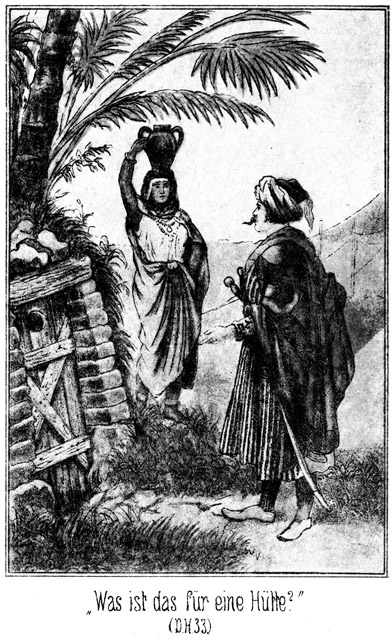»Was ist das für eine Hütte?« fragte Steinbach.
»Sie dient zum Dörren der Bla halefa,« antwortete die Gefragte.
Unter Bla halefa versteht man die geringste Sorte von Datteln, welche getrocknet und dann als Futter für die Thiere benutzt werden.
»Wem gehört sie?«
»Dem Scheik.«
»Oeffne mir!«
Er wollte sich die innere Einrichtung besehen. Die Frau trat einen Schritt zurück, wurde verlegen und antwortete stockend:
»Ich kann nicht.«
»Verstehest Du nicht, mit den Riegeln umzugehen?«
»Nein.«
»Lüge nicht! Ich sehe es Dir an, daß Du die Unwahrheit sagst! Warum lügst Du?«
Er sagte das in so drohendem Tone, weil er als Menschenkenner aus dem Verhallen des Weibes schloß, daß es sich hier um Etwas handele, was er nicht wissen solle. Sie erschrak sichtlich und stammelte:
»Verzeihe, Effendi! Ich darf nicht öffnen.«
»Warum nicht?«
»Der Scheik hat es verboten.«
»Wann? Seit längerer Zeit oder nur seit unserer Ankunft?«
Sie hatte wohl Lust, das Erstere zu bestätigen; er aber blickte ihr so scharf in die Augen, daß sie nicht zu lügen wagte. Sie antwortete also:
»Seit vorhin erst.«
»Ah! Schön! Und Du kannst öffnen?«
»Ja.«
»So thue es!«
»Der Scheik wird mich bestrafen.«
»Jetzt bin ich hier Scheik und Gebieter. Uebrigens verspreche ich Dir, daß kein Mensch erfahren soll, daß Du mir geöffnet hast. Was befindet sich denn drinnen?«
Sie blickte sich vorsichtig um und als sie sah, daß sie sich ganz allein hier befanden, trat sie einen Schritt näher und antwortete:
»Nena ist drinnen.«
»Der Sclave des Scheiks.«
»Wann wurde er hineingesteckt?«
»Nach der Versammlung der Aeltesten, welche vorhin abgehalten wurde.«
»Warum?«
»Ich weiß es nicht. Er hatte wohl die Reden der Versammlung belauscht.«
»Ah, ich ahne da eine Teufelei. Oeffne also!«
»Aber Du wirst mich nicht verrathen?«
»Nein.«
Jetzt trat sie zur Thüre, schob die Riegel in gewisser Reihenfolge gegen einander, ergriff sodann aber schnell den Wasserkrug und eilte davon. Die Thür war nun offen.
Steinbach mußte sich bücken, um hineinblicken zu können. Er erblickte eine Art Heerd, auf welchem wohl Kameelmist gebrannt wurde. Ueber demselben gab es in regelmäßigen Entfernungen Hervorragungen, auf welche wohl die Hürden zu liegen kamen, welche, zur Aufnahme der Datteln bestimmt waren. Jetzt fehlten diese Hürden; aber auf dem Boden lag eine nur mit einem Hemde bekleidete Gestalt, welche gefesselt war. Um den Kopf derselben hatte man eine Decke gewunden und mit einer Schnur befestigt.
Steinbach zog den Mann an den Beinen heraus und entfernte rasch die Decke. Das Gesicht des armen Teufels war aufgedunsen und hochroth gefärbt, seine Augen verdreht. Er hatte nicht genug athmen können und war dem Tode des Erstickens oder des Schlagflusses nahe gewesen. Jetzt holte er tief und geräuschvoll Athem und stieß, als er Steinbach erblickte, einen Ruf der größten, aufrichtigsten Freude aus.
»Allah sei Dank! Du bist es, Effendi! Ich bin gerettet, gerettet!«
»Ich höre, Du seist Nena, der Sclave des Scheiks?«
»Ja, o Herr.«
»Seit wie lange?«
»Seit einigen Jahren.«
»Dem Name ist nicht arabisch, sondern indisch?«
»Ich bin ein indischer Muhammedaner aus dem Lande des Maharadscha von Nubrida.«
Radscha heißt im Indischen Herr, Fürst, urd Maha ist groß; Maharadscha heißt also so viel wie großer Herr, großer Fürst. Es ist der Titel für viele bekannte, theilweise auch berühmte indische Herrscher.
»Wie kommst Du aus Indien so fern in die Sahara?«
»Das werde ich Dir noch erzählen! Welch ein Glück, daß Du mich zufällig gefunden hast!«
»Warum hat Dein Herr Dich hier versteckt?«
»Weil er fürchtete, von mir verrathen zu werden. Ich wollte Dich warnen.«
»Vor wem?«
»Vor dem Scheik und allen Bewohnern des Dorfes. Nehmt Euch in Acht! Man will Euch tödten!«
»Uns alle?«
»Alle!«
»Ah! Habe es mir gedacht!«
»Seid Ihr bereits im Dorfe eingezogen?«
»Ja.«
»So bitte ich Euch um Allahs Willen, den Beni Suef die Waffen abzunehmen. Sie wollen Euch im Schlafe ermorden.«
»Das habe ich mir gedacht.«
»Es wurde in der Versammlung der Aeltesten beschlossen, sich scheinbar zu unterwerfen, Euch aber zu erstechen, wenn Ihr schlafen würdet. Seid Ihr viele Krieger?«
»Sehr viele.«
»So nehmt lieber die Suef gefangen!«
»Ich bin Dir sehr dankbar für Deine Warnung und freue mich, daß ich das, was Du mir räthst, bereits gethan habe. Alle männlichen Suef sind gefangen und alle Waffen befinden sich in unseren Händen.«
»So seid Ihr Sieger. Werde ich nun Euer Sclave sein müssen, Effendi?«
»Nein, Du bist frei.«
Da liefen dem Manne die Thränen aus den Augen; er faltete die Hände und sagte weinend:
»Allah möge es Dir vergelten. Er hat mich hart bestraft für das, was ich that, ohne zu wissen, welche Folgen es haben werde. Könnte ich es doch wieder gut machen!«
»Wer seine Fehler bereut, der findet bei Gott auch Vergebung. Wie aber kommst Du in die Sahara? Ich fragte Dich bereits.«
»Mein Herr bereiste die Gegenden des Nils. Ich wußte Einiges von ihm, was ihn in Schaden bringen konnte; er wollte mich los werden und verschacherte mich heimlich an einen Stamm der Sudanesen. Als er abreiste, hielten sie mich fest. Ich wurde weiter verkauft und kam durch Kriege und Niederlagen meiner Herren in immer andere Hände bis hierher.«
»Ein sauberer Herr!«
»O, er war ein Europäer!«
»Ist das möglich?«
»Sogar ein Graf.«
»Das ist unglaublich. Du irrst Dich jedenfalls.«
»Ich weiß es ganz gewiß.«
»Er hat sich nur für einen Grafen ausgegeben. Ein Edelmann ist unfähig, eine solche Schurkerei zu begehen.«
»Ich bin meiner Sache sicher. Ich war ja mit ihm auf seinen Gütern in Rußland.«
»Ein russischer Graf? Ah! Wie ist der Name?«
»O, ich bin auch Europäer und kenne alle Namen russischer Edelleute.«
»Es war der Graf Polikeff.«
Steinbach fuhr zurück, als ob Jemand ihm einen Stoß versetzt hätte.
»Polikeff!« rief er aus. »Höre ich recht!«
»Graf Alexei Polikeff!«
»Welch ein Zusammentreffen! Was würdest Du thun, wenn Du ihm begegnetest?«
»Ich würde ihm alle seine Thaten in das Gesicht schleudern. Er ist ein Verbrecher, ein Hallunke!«
»Schön! Du wirst noch heute mit ihm sprechen können.«
»Heut, Effendi?« fragte Nena, indem er gewaltig große Augen machte.
»Ja. Ich bin hier, ihn zu fangen. Er kommt mit den flüchtigen Beni Suef hierher.«
»Allah il Allah! Gott ist allmächtig! Jetzt wird mein heißester Wunsch erfüllt. Kennst Du ihn?«
»Ich kenne ihn als einen der größten Hallunken, die es geben kann. Ich bin ihm von Stambul aus bis hierher nachgereist, um ihn zu fangen.«
»O, so wirst Du mir vielleicht helfen, eine That wieder gut zu machen, welche ich gar nicht beabsichtigt hatte.«
»Welche?«
»Sage mir vorher, ob er ein Weib besitzt.«
»Nein.«
»Allah sei Dank! So hat also Semawa ihm glücklich widerstanden!«
Beinahe hätte Steinbach laut aufgeschrieen. Semawa heißt im Arabischen so viel wie Himmelblau. Im Türkischen heißt ganz dasselbe Wort Gökala. Waren diese Beiden eine und dieselbe Person? Sollte ihm hier, im fernen Winkel der Wüste, die so heiß ersehnte Aufklärung werden, die er in Stambul vergebens gesucht und welche ihm sogar von Gökala selbst verweigert worden war! Er glaubte, seinen Ohren nicht trauen zu dürfen. Fast ohne Athem vor Aufregung und Erwartung fragte er:
»Wer ist Semawa?«
»Die Tochter des Maharadscha von Nubrida.«
»Herrgott! Kennst Du sie?«
»Ich habe sie oft gesehen, als ich noch Unterthan von Banda, ihrem Vater, war.«
»Wie lange ist das her?«
»Sechs Jahre.«
»Wie alt war sie damals?«
»Vielleicht fünfzehn.«
»Das stimmt; das stimmt ganz sicher. Mein Gott! Sie muß damals so entwickelt gewesen sein, daß sie sich im Wesentlichen seitdem nicht mehr verändert haben kann.«
»Ihre Mutter war eine Deutsche, die Tochter eines Arztes in englischen Diensten. Sie war so schön, daß der Maharadscha sie zur Frau begehrte. Sie willigte ein unter der Bedingung, daß sie die einzige Frau des Herrschers bleibe. Er hat sie sehr geliebt und Wort gehalten. Semawa war ihr einziges Kind.«
»Beschreibe mir diese Tochter!«
»Sie war ein lichtes, entzückendes Gebilde des sonnigen Tages. Sie war blond, mit einem Haar wie flüssiges Gold. Ihre Augen wetteiferten mit dem schönsten Blau des Himmels; es gab in ihnen zuweilen ein Leuchten und Glühen, als ob der Blick Brillanten strahle. Wegen der Farbe dieser herrlichen Augen erhielt sie den Namen Semawa – Himmelsblau.«
»Und sie kam später zu dem Grafen Polikeff?«
»Ja, aber nicht freiwillig. Sie war gleichsam seine Gefangene. Ich werde es Dir erzählen.«
»Sie ist es; sie ist es! Herr, mein Heiland, welch' ein Tag, welch' ein Tag!«
»Du kennst sie also?«
»Ich habe sie in Stambul gesehen mit dem Grafen. Sie ist jetzt in Egypten mit ihm.«
»Hast Du mit ihr gesprochen?«
»Ja.«
Steinbach befand sich wie im Fieber. Er hatte seine Fragen so schnell hinter einander ausgesprochen, daß Nena mit seinen Antworten kaum zu folgen vermochte. Der Indier warf einen forschenden Blick auf ihn und sagte:
»Verzeihe mir die Frage, Effendi! Ich thue sie nicht aus Neugierde: Du liebst sie?«
»Unendlich!« antwortete der Gefragte.
Nur seine Begeisterung war schuld, daß ihm die Antwort entfuhr, die er sonst wohl nicht gegeben hätte, einem so untergeordneten Menschen gegenüber. Aber jetzt war ihm das Alles ganz und gar gleich. Er fuhr vielmehr fort:
»Wenn Du mir Auskunft über ihr Verhältniß zu dem Grafen geben könntest!«
»Das kann ich, viel besser als jeder Andere, vielleicht ebenso gut wie sie oder der Graf selbst.«
»So werde ich Dich belohnen, daß Du mehr, viel mehr als nur zufrieden sein sollst!«
»Du hast mich bereits überreichlich belohnt, indem Du mir die Freiheit versprichst. Gieb mir dazu jetzt noch ein Kleid, so verlange ich weiter nichts.«
Er deutete auf sein armseliges Hemde. Steinbach nickte eilig und zustimmend:
»Jawohl, natürlich! Ich vergesse Dich ganz, indem ich nur an mich denke. Du sollst sofort haben, was Du Dir wünschest. Wir können ja dann auch von Semawa sprechen. Komm, folge mir!«
»Ist auch der Scheik gefangen?«
»Ja; Du brauchst ihn nicht zu fürchten.«
Sie schritten schnell dem Lager zu. Als sie durch die Zeltreihe gingen, sah man die Frauen erschrecken, als sie den Indier erblickten. Sie wußten nun, daß ihre Absicht verrathen sei.
Steinbach führte Nena direct in das Zelt des Scheiks. Die Frau desselben, eine alte Mumie, welche ihres Mannes ganz würdig zu sein schien, fuhr beim Anblick des Sclaven zusammen.
»Kennst Du diesen Mann?« fragte Steinbach.
»Ja, Effendi.«
»Er braucht ein Gewand.«
»Woher soll er es nehmen?«
»Von Dir!«
»Von mir?« fragte sie erstaunt. »Unser Sclave ein Gewand von uns!«
»Ja, und zwar sofort! Oeffne Deine Truhe und hole das beste Festkleid Deines Mannes hervor.«
Die Alte blickte ihn an, als ob sie ihn für nicht zurechnungsfähig halte.
»Na, schnell, schnell! sonst helfe ich!«
Er ergriff einen starken Kameelstrick, welcher an der Querstange des Zeltes hing, legte ihn vierfach zusammen und zog ihr mit demselben einige derbe Jagdhiebe über den Rücken herüber.
»O Allah, Allah! Gleich, sofort!« heulte sie auf.
Jetzt hatte sie es so eilig, das Gewand zu holen und los zu werden, daß Nena in Zeit von zwei Minuten zu seinem großen Vortheil umgewandelt war Er glich ganz einem reichen, ehrwürdigen Araber von guter Abstammung.
»Jetzt komm weiter,« sagte Steinbach.
Er führte ihn aus dem Zeltdorfe hinaus nach der Richtung, in welcher sich die Gefangenen befanden. An der geeigneten Stelle gab er ihm die Weisung:
»Bleib hier hinter dieser Palme stehen. Wenn ich winke, kommst Du zu mir!«
Er begab sich darauf zu den ganz in der Nähe lagernden Beni Suef. Als deren Scheik ihn kommen sah, erhob er laut seine Stimme:
»Effendi, wir verlangen Gerechtigkeit. Wir sind Kriegsgefangene aber keine Verbrecher. Warum hast Du uns binden lassen? Warum lässest Du uns die Fesseln auch jetzt noch nicht abnehmen?«
»Weil Ihr sie verdient habt!«
»Dein Verdacht ist grundlos. Wir haben es mit unserer Unterwerfung ehrlich gemeint.«
»Sagen das auch die Aeltesten?«
»Ja,« erscholl es rund im Kreise.
»Ihr seid Lügner, obgleich Ihr bereits mit dem einen Fuße im Grabe steht.«
Da nahm der Scheik eine stolze, beleidigte Miene an und sagte:
»Effendi, wenn ich nicht Dein Gefangener wäre, würde ich Dich wegen dieser Beleidigung zur Rechenschaft ziehen!«
»Das traue ich Dir zu. Vielleicht würdest Du mich zur Strafe in die Hütte sperren, wo Du Deine Bla halefa zu dörren pflegst.«
Der Scheik erschrak, faßte sich aber sofort wieder und antwortete:
»Nein, sondern ich würde mit Dir kämpfen, wie es sich für einen Krieger schickt und ziemt.«
»Und ich würde Dich mit der Peitsche bedienen statt mit der Waffe, wie es einem feigen Mörder und Verräther nicht anders gehört. Da, siehe Diesen an!«
Er winkte Nena, welcher sogleich langsam und würdevoll herbeikam. Die Beni Suef erkannten ihn in seiner gegenwärtigen Kleidung nicht sofort.
»Wer ist dieser Mann?« fragte der Scheik.
»Siehe ihn Dir genauer an!«
»Ich habe ihn noch nie gesehen.«
»Aber in die Dörrhütte hast Du ihn gesteckt!«
»Allah!«
Erst jetzt wußte er, wen er vor sich hatte.
»Nun, willst Du mir vielleicht sagen, weshalb Du diesen Mann eingesperrt hast?«
Der Scheik nahm ein höchst reservirtes Gesicht an und antwortete:
»Bin ich Dir darüber Rechenschaft schuldig?«
»Ja.«
»Er ist mein Sclave und nicht der Deinige. Ich kann mit ihm machen, was ich will.«
»Du irrst. Dein Sclave ist er gewesen. Jetzt sind wir Sieger und so gehört er nicht mehr Dir, sondern uns. Aus ganz demselben Grunde hast Du mir überhaupt alle meine Fragen zu beantworten, wenn Du nicht willst, daß ich Dich zwingen soll.«
Der Scheik warf einen giftigen Blick auf den Sprecher.
»Womit willst Du mich zwingen?«
»Es giebt verschiedene Mittel, zum Beispiel Schläge.«
Es giebt nichts Beleidigenderes für einen Araber, als wenn man ihm mit Schlägen droht.
»Mich prügeln!« brauste er auf. »Mich, einen Scheik, einen freien Sohn der Wüste!«
»Pah! Du bist nicht mehr Scheik und nicht mehr frei. Du bist besiegt und gefangen. Das merke Dir nur. Also antworte! Was hat dieser Mann gethan, daß Du ihn einsperrtest?«
»Er war ungehorsam.«
»In welcher Weise?«
»Ich befahl ihm, zu arbeiten und er that es nicht.«
»Das ist eine Lüge. Du hast besorgt, er werde uns sagen, welchen Plan Ihr gegen uns verabredet hattet. Du hast ihn so gebunden und vermummt, daß er gestorben wäre, wenn ich ihn nicht durch Zufall gefunden hätte.«
»Er lügt!«
»Er hat keine Veranlassung dazu.«
»Er will uns verderben!«
»Das hat er nicht nöthig, denn Ihr seid verdorben genug. Man wird auf das Allerstrengste mit Euch verfahren. Merkt Euch Folgendes: Ein Jeder von Euch, welcher nur Miene macht, ohne besondere Erlaubniß von der Stelle, auf welcher er jetzt sitzt, aufzustehen, wird augenblicklich erschossen. Diesen Befehl habe ich gegeben und er wird ohne alle Nachsicht gegen Euch erfüllt werden.«
Er hätte vielleicht noch weitere und eindringlichere Bemerkungen gemacht, aber er wurde gestört, denn Normann kam mit seinen Begleitern in das Zeltdorf geritten.
»Sie kommen,« meldete er in deutscher Sprache, die keiner der Anderen verstand.
»Wie viele sind ihrer?«
»Ich konnte sie nicht zählen. Sie reiten in einem dichten Haufen.«
»Und Tarik? Hast Du ihn und seine Truppe nicht auch bemerkt?«
»Nein.«
»Werde einmal selbst nachsehen. Führe mich!«
Er bestieg ein Pferd und ritt mit Normann ein Stück vor die Oase hinaus. Da sah er durch das Fernrohr am nördlichen Horizonte einen dunklen Punkt, welcher sich näherte. Mit dem bloßen Auge konnte man noch nichts erkennen.
»Nicht wahr, sie sind es?«
»Ja. Und noch weiter draußen ist es mir, als ob ich eine dünne Linie sähe. Ich möchte wetten, daß dies Tarik mit seinen Leuten sei. Wenn ich mich nicht verrechne, werden die Beni Suef nach ungefähr Dreiviertelstunden hier sein.«
»Wie empfangen wir sie?«
»So, daß nicht ein Einziger entkommen kann.«
»Natürlich. Dann müßten wir sie wohl einschließen?«
»Freilich. Wir theilen uns in drei Haufen. Wir zählen ungefähr siebenhundertundfünfzig Mann. Zweihundert reiten nach Ost und ebenso Viele nach West. Sie gehen im Galopp fort, um von den heranziehenden Suef nicht gesehen zu werden, bilden zwei Viertelkreise, welche sich im Norden mit Tarik's Schaar berühren und ziehen sich dann immer näher heran und immer enger zusammen. Die übrigen Leute außer den Hundert, welche die Gefangenen in Schach zu halten haben, also über zweihundert an der Zahl, bleiben hier zurück, um die Ankommenden im geeigneten Augenblick draußen vor der Oase zu empfangen. Auf einen Kampf hier zwischen den Zelten dürfen wir es nicht ankommen lassen.«
»Wer soll kommandiren?«
»Ich hier im Lager. Du magst die nach Osten bestimmte Schaar befehligen und Hilal die nach West reitende. Ihr müßt es so einrichten, daß Ihr weder zu früh noch zu spät heran kommt. Wollen eilen. Wir haben keine Zeit zu verlieren.
Sie kehrten nach den Zelten zurück. Nach wenigen Sekunden ritten Normann und Hilal mit ihren Leuten ab, der Eine rechts und der Andere links zum Lager hinaus.
Das war ganz selbstverständlich in der Weise geschehen, daß die gefangenen Beni Suef nichts davon gemerkt hatten. Diese sollten nicht erfahren, daß ihre Krieger sich näherten, und auch nicht, daß die Besatzung des Lagers durch die Entsendung der Vierhundert so bedeutend geschwächt worden war.
Nun trat eine längere Pause der Erwartung ein. Steinbach zog sich mit seinen zweihundertundfünfzig Reitern bis beinahe unter die letzten Palmen hinaus, doch so, daß er von den nahenden Feinden nicht vorzeitig erkannt werden konnte. Dort wartete er.
Die Suef kamen im Trabe näher; doch war ihre Bewegung keineswegs eine schnelle. Sie selbst und auch ihre Pferde waren müde und erschöpft. Außerdem brachten sie die Kunde ihrer Niederlage, und da ist man nicht so schnell, als wenn man der Ueberbringer einer Siegesbotschaft sein darf.
Steinbach ließ natürlich auch den östlichen und westlichen Horizont nicht aus den Augen. Dort war nur eine fast kaum bemerkbare Linie zu sehen, welche sich schnell noch Norden zu ausdehnte, um diejenige Linie zu erreichen, welche die von Tarik befehligte Schaar bildete. Diese Vereinigung mit derselben kam schnell zu Stande. Sie war vollzogen, noch ehe die Beni Suef sich der Oase so weit genähert hatten, daß man die einzelnen Reiter von einander unterscheiden konnte. Nun brauchten Hilal und Normann nur nach Schluß mit Steinbach zu suchen, so waren die Feinde eingeschlossen.
Diese kamen unterdessen ganz unbesorgt näher. Steinbach bemerkte durch das Fernrohr, daß sie sich sehr oft nach Tariks Schaar umblickten, von denen sie verfolgt wurden. Sie schienen gar nicht begreifen zu können, daß eine so kleine Schaar es wage, sich an ihre Fersen zu heften. Freilich konnten sie sich das in der Weise erklären, daß sich hinter der kleinen Abtheilung, welche nur als Avantgarde diene, die ganze Anzahl der Beni Sallah befinde. Daß diese aber schon vor ihnen halte, in der eigenen Oase, das gehörte für sie natürlich zu den Unmöglichkeiten.
Jetzt sonderten sich Einige, welche sich im Galoppe näherten, von ihnen ab. Sie sollten jedenfalls den Ihrigen in der Oase das Nahen der Krieger verkündigen und sie auf die Kunde von dem Mißlingen des Kriegszuges vorbereiten.
Steinbach zog seine Leute etwas zurück, blieb aber selbst mit einer genügenden Anzahl vorn, etwas seitwärts halten, um die Boten, welche nur ihrer fünf waren, vorüber zu lassen und in die Mitte zu nehmen.
Sie kamen. Je mehr sie sich der Oase näherten, desto mehr schienen sie sich darüber zu wundern, daß auf dieser Seite sich keine Heerden befanden. Man sah, daß sie wiederholt umherblickten. Jetzt erreichten sie die Palmen und trabten an Steinbach vorüber, den sie nicht bemerkten. Sofort schwenkte er hinter sie ein.
»Halt!« rief er ihnen zu.
Sie hielten an und blickten zurück. Es kam ihnen erstaunlich vor, eine Anzahl Reiter hinter sich zu sehen, die sie vorher gar nicht bemerkt hatten.
»Woher kommt Ihr?« fragte Steinbach.
Sie kamen ein Wenig näher, und Einer meinte:
»Das haben wir zu fragen, nicht aber Ihr; Ihr seid hier fremd. Woher kommt Ihr?«
»Aus dem Norden.«
»Das ist nicht wahr.«
»Weißt Du es etwa besser?«
»Ja. Wir müßten Euch gesehen haben.«
»Was kann ich dafür, daß Ihr die Augen nicht besser aufgethan habt!«
»Deine Zunge scheint nicht eine Freundin der Höflichkeit zu sein. Zu welchem Stamme gehört Ihr?«
»Diese Männer sind Beni Sallah.«
»Sallah! Du lügst!«
»Schäme Dich! Ich bin Masr-Effendi, den Du wohl kennen wirst.«
»Masr-Effendi? Der ist im Norden bei den Beni Sallah. Du also kannst er nicht sein.«
»Ich bin es. Ich habe Euch gestern in den Dünen vor dem Kampfe gewarnt, Ihr habt meinem Rathe nicht gefolgt und seid in das Verderben gerannt. Ihr meint vielleicht, uns entkommen zu sein, habt Euch aber geirrt. Wir sind eher da als Ihr. Ich fordere Euch auf, Euch zu ergeben!«
»Bist Du wahnsinnig! Hier in unserm Duar!«
Er zog seinen Wurfspieß aus dem Riemen.
»Laß den Spieß stecken!« sagte Steinbach. »Was willst Du gegen uns ausrichten! Siehe Dich um!«
Der Suef blickte hinter sich, und da sah er allerdings die Feinde, welche jetzt auf einen Wink Steinbachs herbeikamen, um die fünf Reiter zu umzingeln.
»Allah ist groß!« rief der Mann.
Er bemerkte sofort, daß die Beni Sallah auch groß waren, wenigstens in Beziehung auf ihre Anzahl. Er wurde mit seinen vier Begleitern so schnell zusammengedrängt und von den Thieren gerissen, daß ihnen gar kein Gedanke an Gegenwehr beikam, viel weniger aber ihnen die Zeit dazu geboten wurde.
»Entwaffnet sie schnell und schafft sie zu den andern Gefangenen,« befahl Steinbach.
Er sah, daß es für ihn nun Zeit sei, den Beni Suef entgegen zu gehen. Sie befanden sich schon so nahe, daß man beinahe die Gesichter von einander unterscheiden konnte. Er ließ seine Leute eine doppelte Reihe bilden und sprengte mit ihnen dann im Galopp gerade auf die Beni Suef zu.
Diese blieben augenblicklich halten, als sie eine so starke Reiterschaar unter den Palmen heraus sich entgegenkommen sahen. Waren das Freunde? Etwa ihre eigenen alten, kampfunfähigen Leute? Nein, das war nicht möglich. Feinde aber konnten es auch nicht sein, denn woher hätten diese jetzt kommen sollen! Vielleicht waren es die Krieger eines befreundeten Stammes, welche gekommen waren, eine festliche Fantasie mit ihnen abzuhalten.
Da sie sich diese Fragen nicht beantworten konnten, so blieben sie halten, um das Weitere abzuwarten. Steinbach, den Seinen voran, kam ganz nahe herbei, hielt sein Pferd an und sagte:
»Die Krieger der Beni Suef haben schlechte Pferde, daß sie ihre Feinde eher an ihr Zeltdorf kommen lassen.«
»Seit Ihr etwa Feinde?« fragte Einer, welcher den Anführer zu machen schien.
»Ja.«
»Bei Allah, Ihr seid aufrichtig!«
»Wir sind Männer. Nur Weiber pflegen zu leugnen, wer sie sind und was sie wollen.«
»Zu welchem Stamme gehört Ihr?«
»Zu dem, welcher Euch besiegte.«
»Beni Sallah?«
»Ja.«
»Scherze nicht! Wie könnten die Hunde der Beni Sallah bereits vor uns hier angekommen sein!«
»Weil sie bessere Reiter sind als Ihr.«
»Mann, willst Du uns beleidigen? Ich sage Dir, ehe es einem Beni Sallah gelingt, uns – –«
Er wurde unterbrochen, denn einer seiner Krieger, welcher ganz hinten gehalten und in Folge dessen Steinbach nicht deutlich gesehen hatte, war weiter nach vorn gekommen und rief jetzt im Tone des Schreckes:
»Masr-Effendi!«
»Wer? Dieser Mann hier?« fragte der Anführer.
»Ja, er ist es.«
»Hölle und Teufel! Irrst Du nicht?«
»Nein. Ich habe ihn gestern genau gesehen, als er Omram niederschlug.«
Diese Kunde brachte die Wirkung hervor, daß die Beni Suef alle zu den Waffen griffen.
»Laßt die Waffen in Ruhe!« sagte Steinbach. »Es nützt Euch nichts.«
Die Beni Suef zählten wohl ebenso viel wie die Beni Sallah.
»Uns nichts nützen?« fragte der Anführer höhnisch.
»Wir werden Euch gleich zeigen, wem es nützt und wem es schadet, uns oder Euch!«
Er erhob den scharfen, spitzen Dscherid zum Wurfe.
»Halt!« rief Steinbach, indem er gebieterisch den Arm erhob. »Kein unnützes Blutvergießen! Wir haben Euer Dorf besetzt. Alle Eure Einwohner sind unsere Gefangenen. Wenn Blut fließt, so werden von ihnen so Viele büßen müssen, wie Ihr jetzt von den unserigen verwundet!«
»Allah! Gefangen sind sie?«
»Alle, auch der alte Scheik. Uebrigens dürft Ihr nicht meinen, daß wir so schwach sind wie Ihr. Blickt Euch um, rechts und links und auch hinter Euch!«
Sie hatten bisher ihr Augenmerk nur geradeaus gerichtet. Darum war ihnen entgangen, was auf den andern Seiten geschehen war. Die Schaaren Hilals und Normanns hatten sich mit Derjenigen Tariks vereinigt und kamen nun im Galopp heran gesprengt, die Beni Suef von allen Seiten einschließend. Ehe diese sich von ihrem Schrecke erholt hatten, waren sie von allen Seiten umzingelt und die Beni Sallah rückten augenblicklich so eng zusammen, daß sie mit ihren Kugeln in den Haufen der Feinde schießen konnten.
»Seht Ihr nun, daß jeder Widerstand vergeblich ist?« fragte Steinbach. »Ich hoffe, daß Ihr das thut, was zu Eurem Frieden dient! Ihr haltet in der Mitte. Wenn Jeder von uns nur eine Kugel sendet, seid Ihr alle todt.«
Die Beni Suef schoben ihre Pferde enger an einander und beriethen sich. Es war ihren Blicken anzusehen, in welcher Wuth sie sich befanden. Nach einer Weile schienen sie einig geworden zu sein. Derjenige, welcher bisher gesprochen hatte, sagte:
»Du hast das Dorf bereits erobert?«
»Ja.«
»Und alle Bewohner gefangen genommen?«
»Alle.«
»Welche Bedingungen stellst Du uns, wenn mir uns ohne Kampf ergeben?«
»Wir schenken Euch das Leben.«
»Weiter nichts? Was wird mit unserm Eigenthume?«
»Darüber wird noch berathen. Uebrigens wollen wir nicht, daß Ihr verhungern sollt.«
»Diese Bedingung ist hart.«
»Der alte Scheik hat sie auch angenommen. Er hat mit allen seinen Leuten den Tod verdient, denn er hatte den Entschluß gefaßt, Ergebung zu heucheln, uns aber dann im Schlafe zu ermorden. Es wird auf Euer Verhalten ankommen, ob wir uns dafür rächen oder nicht.«
»Ich kann es nicht auf mich nehmen, uns zu ergeben. Ich bin nur einstweilen Anführer. Hole den alten Scheik herbei. Was er uns sagt, das werden wir thun!«
Da gab Hilal Steinbach einen Wink, kam rasch herbei geritten und sagte:
»Willst Du wirklich den Alten holen lassen?«
»Wozu? Warum diese lange Verhandlung? hätten die Suef mit uns verhandelt, wenn sie Sieger geworden wären?«
»Vielleicht doch. Wenigstens können wir das Gegentheil nicht behaupten, da sie uns eben glücklicher Weise nicht besiegt haben.«
»Dennoch brauchen wir nicht so übermäßig langmüthig sein. Soll das, was sie thun, von Einem abhängig sein, der unser Gefangener ist? Sind wir nicht Achthundert gegen kaum mehr als Zweihundert?«
»Aber wenn es zum Kampfe kommt, werden sie sich wehren und Mehrere von uns tödten und Viele verwunden. Warum soll Blut vergossen werden, wenn es nicht unumgänglich nöthig ist!«
»Du magst Recht haben, aber diese Hunde verdienen keine Schonung.«
»Ich schone uns, indem ich sie schone. Reite Du selbst in das Lager, und hole den Alten!«
»Gut! Aber wehe ihm, wenn er es wagt, ein Wort zu sagen, welches mir nicht gefällt. Ich gebe ihm den Dolch in das Fleisch, daß seine Seele in die Hölle fährt!«
Er ritt fort. Die beiden Parteien betrachteten und beobachteten einander sich mit finsteren Blicken.
Es dauerte nicht lange, so kehrte Hilal zurück. Er ritt, der Alte aber mußte neben ihm her laufen. Bei Steinbach angekommen, stieg Hilal ab, ergriff den Alten, welcher natürlich noch gefesselt war, beim Kragen und sagte:
»Also diese tapfern Krieger wollen wissen, ob sie sich ergeben sollen oder nicht. Sage ihnen, was Du für das Beste für Dich hältst!«
Dabei zog er seinen Dolch.
»Willst Du mich erstechen?« fragte der Scheik.
»Wenn sie sich nicht ergeben, bist Du der Erste, welcher in die Hölle wandert.«
Der Alte sah, daß er es mit einer sehr ernst gemeinten Drohung zu thun habe. Er warf einen Blick über seine Leute und dann auf die ihnen viermal überlegenen Beni Sallah und sagte:
»Es ist hier ein jeder Widerstand vergeblich. Beherrscht Eure Tapferkeit, und ergebt Euch!«
»Wie können sie Etwas beherrschen, was sie gar nicht besitzen,« brummte Hilal zornig.
»Sollen wir uns etwa auch entwaffnen lassen?« fragte der Anführer.
»Ja.«
»Scheik, wir sind keine Feiglinge gewesen! Wir haben gekämpft!«
»Und dann seid Ihr tapfer davon gelaufen!« rief Hilal. »Ich habe keine Lust, darauf zu warten, was Ihr nach langer Berathung beschließen werdet. Ergebt Euch sofort, sonst seid nicht nur Ihr verloren, sondern auch alle Eure Leute im Dorfe!«
»Und auch Alle, welche ich noch gefangen habe!« erklang es hinter den Beni Suef.
Dort hielt Tarik mit seiner Verfolgerschaar. Er hatte Steinbach von Weitem grüßend zugenickt, aber noch nicht mit ihm gesprochen. Jetzt, als er diese Worte sagte, deutete er hinter sich. Die sechzig Mann, mit denen er die Verfolgung der Feinde unternommen hatte, bildeten eine Reihe, welche sich jetzt öffnete, damit man sehen könne, wer sich hinter ihnen befand. Dort hielten, auf Pferde und Kameele gebunden, und die Thiere an einander gefesselt, wohl an die fünfzig gefangene Beni Suef, welche auf der Flucht von den Leuten Tariks ergriffen und entwaffnet worden waren. Es war das ein glänzender Beweis dafür, daß Tarik ein guter Anführer sei.
Als die Beni Suef diese Gefangenen sahen, sagte ihr Anführer:
»Wollen wir Schuld an dem Tode so vieler der Unserigen sein? Das willst Du wohl nicht, o Scheik.«
»Nein. Wir haben schon so viele verloren. Seid Ihr etwa die Einzigen, welche zurückkehren?«
»Die Einzigen.«
»O Allah! Wo sind dann die Andern?«
»Wenige sind gefangen; die Andern alle aber liegen erschlagen in der Nähe des Dorfes der Beni Sallah. Diese hatten von unserm Zuge erfahren, und darum gelang es ihnen, uns versteckt zu empfangen und zu besiegen.«
»Allah hat ein großes Herzeleid ausgegossen über unsern Stamm. Unsere Weiber werden heulen; unsere Kinder werden klagen, und unsere Kindeskinder werden weinen. Verflucht sei – «
»Halt!« rief Hilal, ihm die Spitze des Dolches vor die Nase haltend. »Wenn Du etwa schimpfest, Alter, so stirbst Du!«
Natürlich schwieg der Scheik.
»Steigt von den Thieren, und gebt Eure Waffen ab!« gebot der neue Scheik der Beni Sallah, Tarik.
»Was hat Dieser zu sagen?« zürnte der Anführer.
»Er ist der Scheik,« erklärte Steinbach.
Der Mann sagte nichts. Er sprang vom Kameele und gab seine Waffen ab. Steinbach ritt zu ihm hin und erkundigte sich:
»Nicht wahr, es haben sich zwei Freunde bei Euch befunden, welche mit dem ausgestoßenen Falehd zu Euch kamen?«
»Ja, ein Pascha und ein Russe.«
»Wo sind sie?«
»Ich weiß es nicht.«
»Du mußt es wissen!«
»Bin ich Allah, daß Du mich für allwissend hältst!«
»Sie sind bei Euch gewesen; sie sind auch mit Euch zurückgekehrt um die Beni Sallah zu überfallen. Ihr müßt also wissen, wo sie sind.«
»Habt Ihr sie nicht gefangen?«
»Nein.«
»Oder bei den Todten gefunden?«
»Auch nicht. Waren sie denn bei den Kämpfenden?«
»Da waren sie freilich nicht. Sie wollten unsern Schutz; aber sie waren zu feig, mit uns und für uns zu kämpfen. Sie sind im Lager bei dem Troß zurückgeblieben. Wenn Ihr sie weder gefangen genommen noch getödtet habt, so sind sie entflohen.«
»Wohin sollten sie in der Wüste fliehen!«
»Vielleicht ist Suef mit ihnen, der des Riesen Sclave war. Er kam mit ihnen und blieb bei den Wächtern des Trosses.«
»Ihr habt sie also auf Eurer Flucht nicht getroffen? Ihr könnt das beschwören?«
»Beim Propheten und allen Kalifen. Hätten wir sie getroffen, so hätten wir sie von uns gejagt, sie, welche unsere Gastfreundschaft verlangten und doch nicht mit uns kämpften. Feiglinge brauchen wir nicht.«
Steinbach sah dem Manne an, daß er die Wahrheit sagte. Normann hatte die Unterredung gehört; er meinte enttäuscht:
»Das ist höchst fatal! Eigentlich haben wir nur dieser Beiden wegen den Ritt mitgemacht.«
»Wenn auch nicht ganz nur aus diesem Grunde, aber ich gestehe, daß es mir höchst unangenehm ist, daß sie entkommen sein sollen.«
»Hängt uns etwa dieser Kerl eine Finte auf?«
»Nein, gewiß nicht. Ich bin auch der Ansicht, daß sie das Hasenpanier ergriffen haben, als sie bemerkten, daß wir am Siege waren.«
»Wie aber konnten sie entkommen? Wir mußten doch jeden Reiter sehen. Und wo Einer sich blicken ließ, wurde er verfolgt.«
»Hm! Auch mir ein Räthsel.«
»Ob sie sich zu Fuße fortgeschlichen haben?«
»Das wäre Wahnsinn. Freilich ist es sehr möglich, daß sie es aus Unüberlegtheit gethan haben. In diesem Falle sind sie verloren – ohne Thier, ohne Nahrung und Wasser.«
»Hm! Sie werden, doch nicht auf den Gedanken gekommen sein, sich das Alles, also Raubthiere, Wasser und Datteln bei den Beni Sallah zu nehmen?«
»Mir kam soeben derselbe Gedanke.«
»Es wäre ihnen zuzutrauen.«
»O nein. Im Grunde sind sie feig.«
»Aber ehe man verhungert, verdurstet oder verschmachtet, unternimmt man wohl ein Wagniß.«
»Ich gebe es zu. Dazu ist wahrscheinlich der Suef bei ihnen, der jeden Winkel und alle Verhältnisse des Lagers kennt. Dort wachen die Beni Abbas, welche fremd sind und gestern jedenfalls den Sieg gefeiert haben. Nach so einer Feier schläft man gut und lang.«
»Ich beginne, besorgt zu werden!«
»Ich ebenso. Jedenfalls wird meines Bleibens hier nicht lange sein. Ich hatte mit größter Sicherheit darauf gerechnet, den Grafen und den Pascha hier gefangen zu nehmen. Es wäre wirklich ungeheuer fatal, wenn diese Kerls uns entkämen.«
»Und wir müßten abermals von Neuem beginnen!«
»Machen wir unsere hiesigen Obliegenheiten so schnell wie möglich ab. Es wird mir wirklich ein Wenig warm zu Muthe. Schließlich ist es gar nicht nothwendig, daß wir hier so lange bleiben wie die Beni Sallah, wir können eher gehen. Vielleicht ist es uns da noch möglich, eine Spur der beiden Verschwundenen zu entdecken. Uebrigens befindet sich Einer hier, der den Grafen ebenso sehnlich erwartet hat wie ich.«
»Wer?«
»Ein früherer Diener von ihm, welchen ich von jetzt an in meine Dienste nehmen will. Sie werden noch Weiteres von ihm hören. Ich gehe jetzt in das Dorf zu ihm. Sehen Sie darauf, daß die Gefangenen sicher in das Dorf zu den Anderen gebracht werden!«
Er ritt fort. Um Nena zu sehen, brauchte er gar nicht bis in das Dorf zu kommen. Der Indier war ganz begierig gewesen, den Grafen zu sehen, darum war er nicht bei den Zelten geblieben, sondern den Kriegern nachgefolgt. Er kam jetzt zu Steinbach heran und fragte, an seiner Seite nach dem Dorfe schreitend:
»Ist er da, Effendi?«
»Leider nein! Es ist ihm einstweilen gelungen, zu entkommen.«
»Wie schade! Du warst so überzeugt, daß Du ihn fangen würdest, und darum dachte auch ich, daß er in Deine Hände gerathen wäre.«
»Hoffentlich ergreife ich ihn noch«
»Nun nicht. Die Wüste ist groß und weit.«
»Ader sie hat ihre Spuren und Fährten.«
»Kannst Du diese denn lesen?«
»Ja.«
»So sollten wir eigentlich sofort aufbrechen. Man darf da keine Zeit verlieren.«
»Du willst also mit mir gehen?«
»Bis an das Ende der Welt und auch noch einige Tagereisen darüber hinaus.«
»Ich bin einverstanden. Wir werden den Grafen suchen. Finden wir ihn, so sollst Du gerächt werden.«
»Reiten wir also sofort ab!«
»So schnell geht das nicht. Ich habe doch noch Einiges zu thun, was ich nicht unterlassen darf. Aber sobald das geschehen ist, werde ich keine Minute länger bleiben.«
Die neuen Gefangenen wurden zu den vorigen geschafft und in Bewachung gegeben. Steinbach glaubte, nun Muße zu haben, mit Nena über Gökala reden zu können, aber er kam noch nicht dazu. Tarik suchte ihn auf.
*
»Effendi,« sagte er, »Mein Stamm schuldet Dir unendlichen Dank. Wir werden denselben niemals abtragen können. Diesen großen Sieg und alle seine Folgen haben wir nur durch Dich.«
»Dankt mir dadurch, daß Ihr die besiegten Beni Suef menschlich behandelt.«
»Das werden wir. Eigentlich müßten sie unsere Sclaven sein. Wir könnten ihre Palmen zerstören, ihre Brunnen zuschütten und ihnen Alles nehmen.«
»Das werdet Ihr nicht.«
»Nein. Wir werden ihnen unsere Beute nehmen und alle Waffen, damit sie nicht wieder gegen uns kämpfen können. Wir nehmen ihnen von ihren Heerden und Vorräthen so viel, daß ihnen genug zum Leben übrig bleibt, aber auch nicht mehr. Sie müssen in Allem von uns abhängig sein. Sie dürfen keinem andern Menschen Etwas bezahlen können, sondern sie müssen gezwungen sein. Alles von uns zu kaufen. So sind sie nicht Sclaven, aber doch abhängig von uns.«
»Erzieht sie immerhin zu Kriegern. Ihr könnt sie gebrauchen. Hoffentlich seid Ihr stets gute Freunde des Vicekönigs!«
»Ich war es bereits, und wir werden es sein und bleiben. Hat er nicht Dich zu uns gesandt? Hat er uns nicht durch Dich die Nadelgewehre geschickt, durch welche wir siegten, und Munition und viele andere Geschenke? Sprachst Du nicht davon, daß wir einen Vertrag mit ihm machen sollten?«
»Ja, er wünscht es.«
»Einen geschriebenen Vertrag auf Pergament?«
»Nein. Ihr seid Männer und redet keine Unwahrheit. Euer Wort gilt, ganz gleich, ob es geschrieben oder gesprochen ist.«
»Du hast Recht. Sage dem Vicekönig also, daß er uns als seine Freunde betrachten solle. Wenn er uns braucht, soll er es uns sagen, und wir werden thun, was er wünscht.«
»Ich werde es ihm sagen.«
»Und ihm auch Alles erzählen, was bei uns geschehen ist?«
»Alles. Ich werde ihm mehr erzählen müssen, als was Du selbst jetzt weißt.« –
»Was wäre das?«
»Daß Falehd todt ist.«
»Ah! Er ist gestorben? Hat er mit gekämpft?«
»Nicht mit den Beni Suef, sondern auf eigene Faust. Er ist in das Lager gegangen und in die Ruine eingedrungen.«
»O Allah! Was ist da geschehen? Hat er einen Mord, eine Unthat begangen?«
»Er wollte, aber es ist ihm nicht gelungen.«
Steinbach erzählte, was geschehen war und beruhigte dadurch das Gemüth Tarifs, dem es bereits Angst um die Königin geworden war. Der Letztere fragte:
»Waren seine Genossen nicht dabei?«
»Nein. Hast Du sie während der Verfolgung nicht gesehen?«
»Ich habe keine Spur von ihnen bemerkt.«
»Also entkommen?«
»Ja.«
»Das ist ihr Glück! Sie hätten sterben müssen, da sie ihr Wort gebrochen haben und mit dem Feinde gegen uns gezogen sind.«
Steinbach wollte hieran eine Erläuterung knüpfen, aber Tarik wurde geholt. Es sollte über die Beute ein Beschluß gefaßt werden, wozu die bedeutenderen Krieger zur Berathung zusammentreten sollten.
Natürlich sollte auch Steinbach daran Theil nehmen; er schlug es aber ab. Die Beuteangelegenheit war ihm zu unerquicklich, und überdies trieb ihn sein Herz, sich von Nena über Gökala erzählen zu lassen. Er rief also diesen zu sich und ging mit ihm ein Stück fort, wo es kein Geräusch gab – unter den Palmen hin, bis fast an den Rand der Dattelpflanzung, wohin der Jubel der Sieger nicht zu dringen vermochte. Schon hatte er dem Indier eine Frage vorgelegt; da blieb dieser stehen, zeigte anstatt der Antwort zwischen den Bäumen hinaus in die Wüste gegen Norden und sagte:
»Dort kommt ein Reiter! Wer ist das?«
Steinbachs Auge folgte der angegebenen Richtung. Wirklich, dort kam ein Reiter herbei, und zwar so schnell, wie sein Kameel zu laufen vermochte. War das ein flüchtiger Beni Suef?
»Komm, schnell!« sagte Steinbach.
Er eilte unter den Bäumen weiter bis zu der Stelle, an welcher der Reiter die Palmen erreichen mußte. Dort stellten sich die Beiden hinter die Stämme und warteten.
Der Reiter kam mit Windeseile näher. Steinbach erkannte bereits das Gesicht – der Mann war ein alter Beni Sallahn Steinbach wußte das ganz genau. Er hatte ihn ja mehrere Male gesehen. Eine bange Ahnung beinächtigte sich seiner. Der Reiter war ein Eilbote. Einen solchen sendet man nur, wenn etwas Wichtiges geschehen ist. War es etwas Gutes oder Böses?!
Steinbach trat unter den Palmen hervor und ging dem Boten schnellen Schrittes entgegen. Dieser erkannte ihn und rief schon von Weitem:
»Allah sei Dank! Du bist es? Ich fand Niemand, mich zu erkundigen. Ich wußte nicht, ob es Euch gelungen sei, das Lager zu erobern.«
»Wir haben gesiegt.«
»Ist viel Blut geflossen?«
»Kein Tropfen.«
»Effendi, Du thust Wunder über Wunder! Thue aber nun noch eins in der Sache, wegen welcher ich zu Dir gesandt werde.«
»Ist es eine gute?«
»Eine sehr schlimme.«
»O wehe! Erzähle!«
»Gleich! Laß mich nur vorher absteigen! Mein Thier hat nicht einen Augenblick ruhen dürfen; und mein Leib ist wie Wasser, welches keinen Halt hat.«
Auf sein Zeichen legte sich das Kameel nieder, und er stieg ab.
»Wollen wir nicht in das Lager gehen,« fragte er, »wo ich meine Botschaft verkündigen werde?«
»Sage sie erst mir allein. Wenn es wirklich etwas Schlimmes ist, so ist es vielleicht möglich, daß es Personen giebt, denen wir es besser gar nicht wissen lassen.«
»Ganz wie Du willst. Die Königin ist fort!«
»Was! Wie!« rief Steinbach erschrocken.
»Und Hiluja!«
»Höre ich recht?«
»Und Zykyma!«
»Wohin?«
»Wir wissen es nicht.«
»Ihr müßt es doch wissen! Sind sie denn vielleicht unfreiwillig fort?«
»Ja, freilich.«
»Also geraubt! Von wem?«
»Von dem Grafen, dem Pascha und dem Suef.«
»Mein Gott! Wie ist das geschehen? Es ist doch ganz unmöglich! Drei Männer können doch nicht in ein Lager eindringen, welches von so vielen Beni Abbas bewacht wird!«
»Sie haben es heimlich gethan.«
»Natürlich! Erzähle, erzähle!«
Der Mann erzählte den Vorgang, wie er ihn kannte. Steinbach hörte zu, erstaunt, erzürnt, sogar ergrimmt über die Sorglosigkeit der Wächter. Als der Bericht zu Ende war, rief er aus:
»Um Gotteswillen! Mitten aus dem bewachten Lager herausgeholt! Seid Ihr denn des Teufels, Ihr Leute?«
»Ja, Effendi, das ist das richtige Wort – des Teufels. Alle wissen, daß der Teufel es gewesen ist.«
»Unsinn!«
»Ganz gewiß! Es war die Sonne der Nacht da, da ist die Hölle offen.«
»Du meinst doch nicht etwa, daß der Teufel die drei Mädchen entführt habe!« –
»Wer anders?«
»Sagtest Du nicht soeben, der Russe, der Türke und der Suef seien es gewesen?«
»Der Teufel hat nur ihre Gestalt angenommen.«
»Das ist ein nicht nur dummer, sondern sogar ein gefährlicher Aberglaube. Wer ihn besitzt, der vergißt alle Vorsichtsmaßregeln zu treffen. Ist die Entführung denn sogleich bemerkt worden?«
»Ja, von Saïd, dem Arabadschi.«
»Und ist Niemand den Mädchenräubern nach?«
»Nur eben der Arabadschi. Er hat sich auf el Sselßele gesetzt.«
»Was ist das?«
»Die windesschnelle Stute des Scheikes der Beni Suef. Er wollte die Räuber verfolgen; aber es gelingt ihm nicht. Wir haben sehr genau gesehen, daß er auf Sselßele in der Luft davongeritten ist. Der Teufel hat ihn geholt.«
» O santa simplicitas. Warte hier! Ich werde Dich holen oder Dich rufen lassen.«
»Soll ich denn nicht gleich mit Dir nach dem Zeltdorfe gehen, Effendi?«
»Nein. Wir müssen Alles Aufsehen vermeiden. Noch weiß ich nicht, ob es gerathen ist, Tarik von diesem unglücklichen Vorkommnisse etwas zu sagen.«
Er ging, um zunächst Hilal aufzusuchen. Er nahm ihn bei Seite und theilte ihm die traurige Kunde in schonender Weise mit. Der Schreck Hilals war groß. Seine Aufregung war gar nicht zu beschreiben.
»Hiluja fort! Entführt! Bei allen Geistern der Wüste, das werde ich blutig rächen!« rief er aus. »Effendi, wir müssen aufbrechen, sofort aufbrechen. Ich eile, es Tarik zu sagen.«
»Halt! Warte noch! Soll Tarik auch mit aufbrechen?«
»Ja. Die Königin ist ihm ja auch gestohlen worden. Warum sollte er hierbleiben?«
»Er hat als Scheik Verpflichtungen, welche ihn hier zurückhalten.«
»Er wird einen Stellvertreter hier lassen, welcher diese Pflichten erfüllt.«
»Das wird nicht gerathen sein. Er hat seinen ersten Feldzug unternommen und seinen Sieg gewonnen. Er darf nicht im Mindesten versäumen, das zu thun, was er zu thun hat.«
»Soll er etwa ruhig zugeben, daß man ihm seine Geliebte, seine Braut, unsere Königin, geraubt hat?«
»Das soll er freilich nicht.«
»Nun, so muß er sie sich wiederholen; er muß die That rächen.«
»Dazu ist seine Gegenwart nicht unumgänglich nothwendig. Er kann auch nicht mehr thun als wir Beide.«
»Wie? Er soll nicht mit uns ziehen? Glaubst Du, sein Herz würde ihm Ruhe lassen? Glaubst Du, unsere Krieger würden ihn achten können und noch Respect vor ihm haben, wenn er sich von dem Rachezuge ausschließen wollte?«
»Ich denke, er und sie sollen einstweilen noch gar nichts von dem Geschehenen erfahren.«
»Wie? Höre ich recht? Meinst Du wirklich, daß ich schweigen könnte? Man hat uns den größten Schimpf angethan; man hat unsere Herrscherin mitten aus unserm Lager geraubt, und ich sollte es verschweigen? Das ist unmöglich, ganz und gar unmöglich. Ich eile, es zu verkünden.«
Steinbach wollte ihn zurückhalten, aber der junge Mann ließ sich nicht halten. Er begab sich zu Tarik, und da dieser nicht allein, sondern von mehreren Kriegern umgeben war, hörten auch diese die Nachricht, und so verbreitete sich die Letztere wie ein Lauffeuer weiter.
Lautes Klagegeheul erhob sich. Alles rannte durcheinander. Der Bote wurde herbeigeholt und von Gruppe zu Gruppe geführt, wo er das Vorkommniß erzählen mußte. Der ganze Stamm erklärte einmüthiglich, daß man sofort aufbrechen müsse, um die Uebelthäter zu verfolgen und die That zu rächen.
Steinbach und Normann waren die Einzigen, welche äußerliche Ruhe zeigten. Der Erstere nahm Tarik vor, um ihm Vorstellungen zu machen. Der junge Scheik wollte nichts davon hören, daß er hier zurückbleiben sollte.
»Meinst Du, daß ich hier ruhen könnte?« fragte er. »Badija ist fort, und ich soll hier sitzen bleiben und meine Datteln essen!«
»Nicht Datteln essen sollst Du, sondern Deine Pflichten als Anführer und Scheik sollst Du erfüllen.«
»Das werde ich ohnedem.«
»Es ist nicht so leicht und schnell gethan.«
»So! Was meinst Du denn, daß ich zu thun habe.«
»Du hast die Unterwerfung der Beni Suef zu vollbringen.«
»Das ist bereits vollbracht. Sie sind ja besiegt.«
»Du hast Maßregeln zu treffen in Beziehung auf die Regierung und Verwaltung ihres Stammes.«
»Dazu bedarf es keiner Maßregeln. Sie sind uns unterthan und haben uns zu gehorchen. Das sage ich ihnen, und sie werden sich darnach zu richten haben.« –
»Bedenke die Beute! Sie ist nicht nur reich, sondern sogar großartig. Es macht sehr viele Arbeit, Euch das auszulesen, was Euch gehören soll.«
»Wir sind die Sieger, und uns gehört also Alles. Es kommt ganz auf unsere Güte an, ob wir dem Feinde Etwas lassen wollen. Kann es da sehr viel Arbeit verursachen, ihm zu geben, was wir nicht mitnehmen wollen?«
»Je schneller Ihr hierin handelt, desto härter werdet Ihr gegen die Beni Suef sein.«
»Wollten sie etwa weich gegen uns verfahren? Sollen wir sie küssen, wenn sie uns schlagen? Dein Herz ist voller Milde, und auch das meinige ist nicht von Stein; aber die Wüste hat ihre eigenen Gesetze; ihre Bewohner handeln nach eisernen Regeln. Auge um Auge und Blut um Blut. Wir haben uns an den Suef's zu rächen, und das müssen wir thun, schon um unseres eigenen Wohles willen. Wir werden uns jetzt Alles ansehen, was vorhanden ist. Es wird leicht zu bestimmen sein, was wir mitnehmen. Alles Andere bleibt hier. Wir brechen baldigst auf. Freilich werden wir mit den Heerden, welche wir mitnehmen, nur langsam fortkommen. Wir müssen Nahrung für alle Thiere mitnehmen und Wasser; aber mich selbst kann dies nicht aufhalten. Ich übergebe das Kommando der siegreichen Karawane einem meiner zuverlässigsten Krieger und eile unterdessen vorwärts. In einer Stunde können wir aufbrechen.«
Steinbach bat noch einmal, die Beni Suef nicht allzu hart zu behandeln. Tarik antwortete:
»Deine Bitte ist gut aber unnütz. Ich werde so schonend wie möglichst mit ihnen verfahren, auch ohne daß Du diesen Wunsch wiederholtst. Ich will nicht hart gegen sie, aber auch nicht ungerecht gegen meine Leute sein. Uebrigens sage mir, wer eigentlich die Schuld trägt, daß Badija, Hiluja und Zykyma uns geraubt werden konnten! Nicht etwa die Beni Suef? Sind sie es nicht, welche den Russen, den Pascha und den Suef bei sich aufgenommen haben? Hat nicht nur allein ihr Kriegszug den Räubern Gelegenheit gegeben, den Raub auszuführen? Soll ich solchen Leuten etwa die Datteln lassen und mir die Steine nehmen? Ich will sie nicht an ihrem Leben bestrafen. Sie haben zwei Dritttheile ihrer Krieger verloren; das ist schlimm genug. Aber ihre Reichthümer darf ich ihnen nicht lassen, sonst erholen sie sich schnell, tauschen Waffen ein, suchen sich Verbündete und fallen über uns her. Sind sie aber arm, so bekommen sie keinen Verbündeten, können sich keine Waffen verschaffen und sind in allen Dingen von uns abhängig. Ich bin der Scheik meines Stammes und habe für das Wohl desselben zu sorgen. Das werde ich thun und dabei so viel Milde walten lassen, wie sich mit meiner Pflicht verträgt.«
Das war mannbar und kernhaft gesprochen. Steinbach mußte ihm Recht geben. Dieser junge Mann ließ sich als Scheik ganz außerordentlich gut an. Wenn er so fortfuhr, so konnte er seinem Stamme und folglich auch sich eine große Zukunft bereiten. Es war natürlich nicht von ihm zu verlangen, hier in der Wüste, wo das Vergeltungsrecht ohne alle Einschränkung herrscht, nach Regeln zu handeln, welche unter civilisirten Nationen am Platze sind, hier aber als Schwachheit betrachtet und verdammt worden wären.
Das Klagegeschrei verstummte rasch. Es ging zur Beute. Sagt doch schon der Prophet Jesaias in seiner berühmten Weissagung: »Wie man fröhlich ist, wenn man Beute austheilet!«
Von allen vorhandenen Thierarten wurde natürlich nur das Beste ausgewählt. Tarik stellte die Regel auf, daß man für die Familie eines jeden Suef ein Lastkameel, ein Rind und zwanzig Schafe zurücklassen müsse. Pferde und Eilkameele dürfe man ihnen nicht lassen. Messer und Beile dürften sie behalten; alle Schießgewehre aber nebst Munition wurde ihnen genommen. Selbst von der Ausstattung ihrer Wohnungen behielten sie nur so viel, als unumgänglich nothwendig war. Alles Ueberflüssige wurde ihnen genommen und auf die Kameele geladen. Es war sehr nachsichtig gegen sie gehandelt, daß man ihnen nicht die Palmen umhaute. Sie konnten also ohne Sorgen leben.
Nun wurden alle vorhandenen Wasserschläuche gefüllt und viele Säcke mit Futterdatteln aufgeladen. Eine ungeheure Heerde war es, welche von den Beni Sallah zusammengetrieben wurde. Der Stamm wurde um das Doppelte reicher als er früher gewesen war. Von den Siegern umschwärmt, brach diese Heerde auf, nach dem Ferß el Hadschar zu, wo die einzige Gelegenheit war, unterwegs das Wasser zu erneuern.
Die hundert Sallah, welche die Gefangenen bisher zu bewachen gehabt hatten, blieben bis morgen früh in dem eroberten Zeltdorfe zurück, um die Besiegten an Ungehörigkeiten zu verhindern.
Natürlich sahen diese Letzteren mit stillem Ingrimm zu, daß der größte und beste Theil ihrer Habe fortgeschafft wurde. Die Meisten von ihnen brüteten Rache, mußten sich aber doch im Stillen sagen, daß ihnen die Macht und Gelegenheit dazu auf lange, lange Zeit hinaus genommen sei. Andere aber richteten ihren Zorn nicht gegen die Sieger, sondern gegen Diejenigen ihres eigenen Stammes, welche zu dem verderblichen Kriegszuge gegen die Beni Sallah gerathen hatten. Ihnen gaben sie die Schuld des Unglückes, in welches nun der ganze Stamm gerathen war, und – sie hatten nicht Unrecht.
Besonders richtete sich dieser Unwille gegen den alten Scheik, welcher der oberste Anstifter dieses Zuges gewesen war und auch heut wieder die Seinigen zu dem unheilvollen Mordplane gegen die Beni Sallah beredet hatte. Wäre derselbe nicht gefaßt worden, so hätte man wohl ein schonenderes Verhalten der Sieger erwarten können.
Steinbach zog natürlich nicht mit den Heerden. Er, Tarik, Hilal und Normann wählten sich zehn der besten Krieger und zwanzig der feinsten, schönsten Eilkameele aus und flogen auf diesen windesschnellen Thieren dem heimathlichen Zeltdorfe entgegen. Natürlich befand sich Nena, der indische Diener, bei ihnen.
Es hatte während des ganzen Tages eine drückende, entnervende Schwüle geherrscht, und nicht der mindeste Lufthauch war zu verspüren gewesen. Es war, als ob die Atmosphäre sich in ein vollständig unbewegbares Gluthmeer verwandelt habe.
Auch jetzt noch herrschte diese Hitze. Die Streiter hatten ein Gefühl, als ob sie auf ihren Thieren gebraten würden. Die Luft, welche man einathmete, schien die Lunge auszudorren.
Unter diesen Umständen dachte Keiner daran, eine Unterhaltung anzuknüpfen. Jedes Wort, welches man aussprach, erforderte eine Anstrengung der Athmungswerkzeuge, welche man vermeiden konnte.
Darum waren Alle still. Es ließ sich nichts als das Geräusch des Sandes hören, welcher von den Hufen der Kameele nach hinten geworfen wurde.
Nicht die gleiche Stille aber herrschte im Innern der wortkargen Reiter. Ein Jeder dachte an Rache und daran, wie dieselbe auszuführen sei.
So ging es vorwärts, so schnell die trefflichen Thiere es vermochten, in noch größerer Schnelligkeit als derjenigen eines Eilzuges. Man glaubt gar nicht, was so ein Eilkameel zu leisten vermag. Es kommt nicht selten vor, daß ein solches Thier an einem Tage weit über fünfzig deutsche Meilen zurücklegt, und dazu in tiefem Sande, in brennender Sonnengluth, ohne Wasser oder Nahrung zu sich zu nehmen.
Selbst als die Sonne den westlichen Horizont berührte, stiegen die Reiter nicht ab, um, wie gewöhnlich, im Sande knieend ihr frommes Abendgebet zu verrichten. Sie beteten im Dahinjagen die erste Sure des Kuran und fügten als Schluß das Glaubensbekenntniß hinzu: »Allah il Allah, Muhamed Rassuhl Allah, Gott ist Gott, und Muhammed ist sein Prophet!«
Dann wurde es schnell Nacht. Die glänzenden Sterne des südlichen Himmels stiegen auf. Man fühlte nun wenigstens die directen Strahlen der Sonne nicht mehr. Das gab eine Erleichterung und darum wurden zwischen den Reitern jetzt endlich einige Worte und Reden gewechselt.
Tarik und Hilal, die beiden Söhne des Blitzes, ritten nebeneinander und flüsterten sich ihre grimmigen Bemerkungen zu. Normann war Etwas zurückgeblieben. Er war weder ein Eingeborener, noch besaß er die robuste, riesenkräftige Natur Steinbachs. Ihn strengte der Ritt außerordentlich an.
So ritt also Steinbach an der Spitze des Zuges, der Indier neben ihm. Beide hatten während des Rittes kein Wort gewechselt, obgleich der Deutsche darauf brannte, von Gökala zu hören. Er hatte bisher nicht gefragt, um Nena zu schonen, welcher als Sclave wohl kein Leben geführt hatte, um die Kräfte zu solchen anstrengenden Ritten zu erhalten. Jetzt aber begann der Indier selbst:
»Du bist so still, Effendi. Warum schweigst Du so unausgesetzt?«
»Ich denke, das Sprechen strengt Dich an?«
»Mich? Wegen der Hitze? O Herr, ich habe so oft in der glühenden Sonne gebraten und bin so wenig von den Beni Suef geschont worden, daß mir die Hitze gar nichts mehr anhaben kann. Dazu läuft dieses herrliche Kameel so prächtig, daß es ist, als ob man in einer Ottomane säße. Ich befinde mich sehr wohl und bin bereit, alle Deine Fragen zu beantworten.«
»Warum soll ich fragen! Erzähle!«
»Du mußt wissen, daß Nubrida, dessen Herrscher ihr Vater war, hoch im Norden Indiens liegt, da wo die Riesen des Himalaja hoch in den Himmel ragen. Dort berühren sich die Interessen der Engländer und der Russen. Dort kämpfen sie still und heimlich gegen einander wie die zwei Klingen einer Scheere, welche nicht sich selbst vernichten, sondern Alles, was zwischen sie geräth. Jedes dieser beiden Völker sendet seine Beauftragten, welche nichts Anderes sind als Spione. Wehe Dem, der in ihre Hände geräth. Auch zu Banda, dem Maharadscha von Nubrida kamen Engländer und Russen. Sie wollten ihn glücklich machen, aber Jeder auf eine andere Weise. Er wollte ihr Glück nicht, denn er war bereits glücklich. Er war reich wie kein Zweiter. Zwar war ihm die heißgeliebte Gemahlin gestorben, welche eine Deutsche gewesen war, aber sie hatte ihm eine Tochter hinterlassen, ihr Ebenbild an Schönheit, Reinheit, Geist und Herzensgüte. Diese Tochter hatte die Augen des Himmels und wurde deshalb Semawa genannt – Himmelsblau.«
»Du hast sie persönlich gekannt?«
»Ja. Ich war ja Diener im Palaste ihres Vaters.«
»Also warst Du dem Maharadscha ergeben?«
»Früher, ja. Aber einstmals bestrafte er mich unschuldiger Weise sehr hart, und wenn ich auch nicht auf Rache sann, so war doch die Liebe und Ergebenheit verschwunden. Ich nahm mir vor, einen anderen Herrn zu suchen. Wer da sucht, der findet. Ich hatte bald einen anderen Herrn.«
»Wohl den Russen?«
»Ja. Doch wußte damals kein Mensch, daß er ein Russe sei. Er war vor nicht gar langer Zeit nach Nubrida gekommen, um seine Gesundheit in der dortigen reinen Luft zu stärken. Er gab sich für einen Sahib aus dem hinteren Indien aus. Er erhielt die Erlaubniß, sich in dem Garten des Maharadscha zu ergehen und erblickte dort die Prinzessin Semawa. Sein Herz erglühte in heißer Liebe für sie. Er wagte es, sich ihr zu nähern und von seinen Gefühlen zu sprechen – – – «
»Das war nicht nur kühn, sondern sogar frech!«
»Du mußt wissen, daß in Indien die Frauen nicht so eingeschlossen und verborgen werden, als in andern Ländern. Man kann gar wohl mit einem Mädchen sprechen. Semawa wies ihn mit Entrüstung zurück und meldete sein Betragen dem Herrscher, ihrem Vater. Dieser nahm ihm die Erlaubniß, den Garten zu betreten und verbot ihm sogar den Aufenthalt in seinem Lande. Der Russe zog fort, mit dem Entschlusse der Rache und mit dem Grimm zurückgewiesener Liebe im Herzen. Er nahm mich mit. Wir gingen über die Grenze, blieben aber gleich jenseits derselben wohnen. Die Gelegenheit der Rache kam sehr bald. Hoch droben im Norden, am See Issyk-kul, war ein berühmter Prophet aufgestanden. Dort giebt es ein reich gesegnetes Ländchen, Namens Terskei-Ala-Tau, mit dessen Herrscher der Maharadscha ein Freundschaftsbündniß geschlossen gehabt hatte, welches aber gestört worden war. Er hatte sich Mühe gegeben, dasselbe wieder anzuknüpfen, doch vergebens. Jetzt glaubte er, mit Hilfe dieses berühmten Propheten werde es ihm gelingen, und beschloß, diesen aufzusuchen.«
»Diese Reise war gefährlich!«
»Das wußte er. Darum reiste er nicht unter seinem Namen, sondern unter einem anderen. Man sollte ihn nicht für reich oder gar für einen Herrscher halten. Die Regierung übergab er für die Zeit seiner Abwesenheit seinem Vezier, auf den er sich verlassen konnte. Er liebte seine Tochter zu sehr, als daß die Trennung von ihr ihm nicht großen Schmerz bereitet hätte, und da sie gar so dringlich und liebevoll bat, sie nicht zurückzulassen, so nahm er sie mit.«
»Das war eine noch größere Unvorsichtigkeit als die ganze Reise überhaupt. Die Bewohner jener Gegenden sind gewaltthätig, grausam und rücksichtslos. Er hätte seine Tochter daheim lassen oder noch besser die ganze Reise unterlassen sollen. Ein Gesandter hätte ganz dasselbe erreicht, was er bei dem Propheten erreichen konnte.«
»Du hast Recht, Effendi. Ich weiß freilich nicht, was ihn in seinen Beschlüssen bestimmte; kurz und gut, er trat mit Semawa die Reise an, nur wenig Begleiter mit sich nehmend. Bereits nach einigen Tagen gelang es ihm, sich einer Carawane anzuschließen, welche zu dem Propheten pilgern wollte. Später stießen auch wir zu ihr, der Russe und ich. Nämlich, als mein neuer Herr, welcher Späher besaß, erfahren hatte, was der Maharadscha beabsichtigte, rüstete auch er sich zur Reise. Natürlich hatte er dabei die Absicht, sich zu rächen und möglicher Weise sogar Semawa in seine Hand zu bringen.«
»Wußtest Du das?«
»Nein, Was ich Dir erzähle, war mir damals unbekannt, wenigstens unklar. Ich konnte erst später nach eifrigem Nachdenken und Vergleichen mir Alles erklären. Der Maharadscha war natürlich nicht erfreut, als er uns bei der Carawane erblickte. Er mochte befürchten, daß wir sein Incognito verrathen würden. Das aber lag ganz und gar nicht in der Absicht des Grafen. Diesem war es im Gegentheile außerordentlich lieb, daß der Maharadscha einen anderen Namen angenommen hatte.«
»Warum?«
»Das wußte ich damals auch nicht und habe es auch später nicht erfahren. Wir kamen bei dem Propheten an. Der Ort war, ohne daß wir eine Ahnung davon gehabt hatten, von den Russen besetzt worden.«
»Ah, ich beginne, zu ahnen!«
»Ja, Du wirst wohl das Richtige vermuthen. Es gab einen russischen Europäer, welcher sich vor den Verfolgungen der Polizei nach Indien geflüchtet hatte und der Maharadscha hatte ganz zufälliger Weise für die Zeit seiner Reise denselben Namen angenommen, welcher auch derjenige dieses Empörers war. Man hielt ihn in Folge dessen für den Flüchtling und arretirte ihn, jedenfalls aber auf die Anzeige des Grafen.«
»Schändlich!«
»Ja, und zu dieser Schändlichkeit habe auch ich die Hand geboten, freilich aber, ohne daß ich es wußte. Der Maharadscha hatte natürlich bei seinem Verhöre gesagt, wer er sei – – –«
»Man glaubte ihm nicht?«
»Nein.«
»Konnte er nicht Euch Beide als Zeugen angeben?«
»Er hat es gethan.«
»Und es half ihm nichts? Daraus schließe ich leider, daß Ihr falsches Zeugniß abgelegt habt.«
»Von mir aus geschah es in keiner schlechten, sondern vielmehr in einer guten Absicht. Der Graf sagte mir nämlich, daß die Russen Feinde der Engländer und Indier seien – – –«
»Sehr schlau!«
»Und daß sie den Maharadscha gefangen hätten, eben weil er der Maharadscha sei. Er sei aber nur zu retten, wenn er hier als Russe gelten bleibe, und darum sollte ich bei meiner Vernehmung aussagen, daß ich ihn ganz genau kenne und daß er der Russe sei, dessen Namen er trage.«
»Das war eine Infamie ohne Gleichen! Und Du halfst ihm diese Falle stellen?«
»Ja. Ich wußte ja damals noch gar nicht, daß es einen russischen Empörer ganz desselben Namens gebe. Ich wurde verhört und bezeugte aus bester Absicht, daß der Maharadscha jener Russe sei. Der Graf that dasselbe – der Maharadscha war am nächsten Tage verschwunden.«
»Wohin?«
»Kein Mensch wußte es.«
»Hast es aber später erfahren?«
»Ja. Er ist nach Sibirien geschafft worden.«
»Das geht nicht so schnell. Er mußte doch vorher verurtheilt werden.«
»Das ist natürlich auch geschehen.«
»Geschehen konnte es nur nach einer gesetzesmäßigen Prozeßführung.«
»Den Prozeß hat man ihm gemacht. Gesetze giebt es auch nicht. Ob man diese Gesetze auf verschiedene Art und Weise handhaben und auslegen kann – – hm! Wer weiß, wie das Alles gekommen ist. Kennst Du das Sprichwort von dem Zaaren und dem Himmel?«
»Der Zaar ist weit und der Himmel ist hoch?«
»Ja. Der Zaar weiß nicht Alles und kann nicht Alles wissen, was in seinem Reiche vorgeht. Er ist wohl nicht schuld.«
»Jedenfalls nicht. Was aber geschah mit Semawa?«
»Auch sie war verschwunden.«
»Mit ihrem Vater?«
»Ich glaubte es. Aber später erfuhr ich, das dies nicht der Fall gewesen sei.«
»Aber gefangen war auch sie?«
»Ja. Sie wurde von ihrem Vater getrennt und an einen ganz andern Ort geschafft.«
»Ich errathe, weshalb. Der Graf liebte sie; er wollte sie besitzen. Wenn er als der Herbeiführer ihres Unglücks auftrat, so mußte sie ihn hassen. Er wollte also als Retter erscheinen. Er ließ sie von ihrem Vater trennen und suchte sie dann auf, um ihr zu sagen, daß er sie und ihn retten werde. Ist es so?«
»Ja.«
»Und Du warst dabei?«
»Ich war in der Nähe. Es war in Orenburg, wo man sie in ein Kloster gesteckt hatte. Er holte sie heraus.«
»Warum vertraute sie ihm! Sie wußte ja doch, daß er ihr Feind und derjenige ihres Vaters sei!«
»Er hat sie bethört.«
»Womit?«
»Weiß ich es? Jedenfalls hat er ihr ein Lügengewebe vorgesponnen, welchem sie ihren Glauben schenken mußte.«
»Hat sie nie davon zu Dir gesprochen?«
»Kein Wort.«
»Und hast Du denn keinen Versuch gemacht, Dich ihr mitzutheilen?«
»Oft. Sie hörte mich aber nicht an.«
»O wehe! Das war sehr unklug!«
»Du mußt bedenken, daß ich ihr Veranlassung zum Mißtrauen gegeben hatte.«
»Das mag freilich sein.«
»So oft ich den Versuch machte, aufrichtig mit ihr zu sein und ihr meine Hilfe anzubieten, stieß sie mich von sich. Sie wollte kein Wort aus meinem Munde hören. Große Mühe konnte ich mir nicht geben, denn der Graf beobachtete mich. Er mochte mir nicht ganz trauen.«
»Wohin ginget Ihr von Orenburg aus?«
»Nach Stambul, wo wir ein Vierteljahr blieben.«
»Dann?«
»Nach Rom. Dort und bereits vorher bemerkte ich, daß der Graf sich alle Mühe gab, ihre Liebe zu gewinnen. Es war vergebens.«
»Hat er nicht gewaltthätig gegen sie gehandelt?«
»Er mag es wohl versucht haben, ohne daß ich es bemerkt habe. Aber sie mußte auch irgend eine Art von Macht auf ihn ausüben. War es ihre Schönheit oder kannte sie irgend ein Geheimniß von ihm – kurz und gut, ich weiß, daß er es nie gewagt hat, zudringlich zu werden. Seine Sclavin ist sie gewesen in vielen Beziehungen; aber sie zu berühren, das hat er nicht gewagt.«
»Wohin ging er von Rom aus mit ihr?«
»Nach Paris und London.«
»Ah, er hat sie zerstreuen wollen.«
»Ja. Er hat sich viele Mühe gegeben, damit sie ihr Unglück vergessen möge.«
»Gelang es ihm?«
»Nein. Er wollte sie in die Theater und Concerts führen, sie aber schlug es ihm ab. Sie blieb daheim. Sie verlangte Lehrerinnen.«
»Er gab sie ihr?«
»Ja. Er mußte. Sie befahl und er gehorchte.«
»Wirklich?«
»Ja. Sie war die Sclavin seiner Intrigue, er aber der Sclave ihrer Schönheit. Er konnte ihr keine Bitte abschlagen als nur allein die, sie zu ihrem Vater zu bringen.«
»Sie wollte lernen?«
»Ja, und sie lernte. Sie vergrub sich zwischen den Büchern; sie lernte die Sprachen der Länder, in denen sie sich befand. Es fehlte ihr nichts als die Freiheit und ihr Vater, und sie rächte sich dadurch, daß sie von Tag zu Tag schöner, bezaubernder aber auch gegen ihn stolzer, kälter und verächtlicher wurde. Dann kehrte er mit ihr wieder nach Stambul zurück.«
»Nach welcher Zeit?«
»Es mochten seit unserem Aufbruche von Orenburg wohl zwei Jahre vergangen sein.«
»Was machte er in Stambul?«
»Genau weiß ich es nicht. Ich glaube, daß er sehr viel mit den Diplomaten verkehrte.«
»Semawa auch?«
»Nein. Sie kam in die Gärten des Sultans.«
»Als was?«
»Meinst Du etwa als Odaliske? Da irrst Du Dich. Dazu war sie zu stolz, und das hätte der Graf niemals zugegeben. Er liebte sie und hätte sie keinem Anderen überlassen, selbst dem Sultan nicht. Sie wurde Gesellschafterin der Prinzessin Emineh.«
»Wie kam die Prinzessin dazu?«
»Emineh mag Semawa wohl einmal während eines Spazierganges gesehen haben. Ich weiß es nicht genau. Dann mußte ich mit dem Grafen nach Egypten, wo er in Kahira zu thun hatte. Von da ging er nach Nubien. Dort verkaufte er mich. Er sagte, daß er nur einen Ausflug machen werde und bereits am anderen Tage zurückzukehren gedenke. Es war eine Lüge. Er kam nicht wieder, und der arabische Scheik sagte mir, daß ich von nun an sein Sclave sei.«
»Schändlich!«
»Der Graf wollte mich unschädlich machen.«
»Das ging am besten, indem er Dich tödtete.«
»Dazu hatte er wohl den Muth nicht. Er ist ein Bösewicht aber ein Feigling. Hinter dem Rücken ist er zu Allem fähig; aber einem Feinde Stand zu halten, das vermag er nicht.«
»Hattest Du Dich mit ihm gezankt?«
»Er war in letzter Zeit hart, ja grausam gegen mich geworden, und ich hatte ihm merken lassen, daß er sich mehr in meiner Hand befinde, als ich in der Seinigen.«
»Das war höchst unklug.«
»Im Zorne thut der Mensch selten etwas Gescheidtes, Effendi. Hätte ich geschwiegen und mich im Stillen davongemacht, so wäre ich nicht ein Sclave geworden. So aber wurde ich verkauft und immer weiter verkauft. Das Ueberige kennst Du. Ich habe es Dir bereits gesagt.«
»Du bist unklug gewesen, aber nicht schlecht, das will ich Dir zugeben.«
»Und ich habe meine Unklugheit schrecklich büßen müssen. Ich freue mich königlich auf den Augenblick, in welchem ich den Grafen sehe.«
»Vielleicht bekommst Du ihn niemals wieder vor die Augen.«
»Ich verlasse mich auf Dich. Nach dem, was ich von Dir gehört habe, wirst Du ihn Dir nicht entgehen lassen. Davon bin ich vollständig überzeugt.«
»Was würdest Du ihm dann thun?«
Der Indier zog seinen Dolch und antwortete blitzenden Auges:
»Ich würde ihm diese Klinge bis an den Griff in sein schwarzes Herze stoßen.«
»Das wirst Du bleiben lassen!«
»Bleiben lassen? Meinst Du etwa, daß ich ihn vielleicht fürchte?«
»Nein, aber eine solche Sache würde eine höchst unvorsichtige Handlung sein.«
»Wieso?«
»Willst Du denn nicht gut machen, was Du bös gemacht hast?«
»Ja, eben darum will ich ihn tödten.«
»Du mußt Semawa ihren Vater wiedergeben.«
»Das werde ich.«
»Wo ist er?«
»Ich weiß es nicht. Ich hoffe, daß Du ihn finden wirst.«
Steinbach stieß trotz des Ernstes der Unterhaltung ein halbunterdrücktes Lachen aus und sagte:
»Hier in der Sahara hast Du die Ueberzeugung, daß ich ihn in Sibirien finden werde?«
»Ja.«
»Du hast also ein sehr großes Vertrauen zu mir. Ich will Dir auch gern gestehen, daß ich ihn wohl zu finden hoffe; das kann aber nur geschehen, wenn der Graf leben bleibt.«
»Warum?«
»Weil er den Aufenthalt des Maharadscha kennt.«
»Er muß ihn mir sagen, bevor ich ihn tödte!«
»Das wird er nicht.«
»Er muß, sage ich!!!«
»Und wenn Du ihn wirklich dazu zwingen könntest, was würde es Dir nützen?«
Der Indier sah ihn erstaunt an.
»Was es mir nützen würde, fragst Du?«
»Ja.«
»Nun, ich würde nach Sibirien gehen und ihn ganz einfach frei machen.«
»Wie willst Du das anfangen?«
»Ich erzähle, was der Graf gethan hat.«
»Glaubt man es Dir?«
»Ich hoffe es!«
»Pah! Du müßtest ja auch eingestehen, daß Du falsches Zeugniß abgelegt habest. Dann bist auch Du der Verbrecher, und die Aussage eines Verbrechers gilt nichts.«
»Hm!«
»Nein; der Graf muß selbst hin, um zu gestehen, was er gethan hat.«
»Das wird er bleiben lassen!«
»Er wird!«
»Willst Du ihn etwa zwingen?«
»Ja, mit Gewalt oder mit List. Du siehst also wohl ein, daß Du ihn nicht tödten darfst.«
»Wenn Du denkst, so mag er leben bleiben.«
»Ja, ich denke es. Uebrigens sage mir doch einmal, warum Semawa ihm überall hin gefolgt ist!«
»Ich kann das nicht wissen.«
»Hat er sie dazu gezwungen?«
»Jedenfalls.«
»Womit? Durch Gewalt?«
»Vielleicht, vielleicht auch nicht. Er scheint irgend ein Mittel zu haben, mit welchem er sie zu zwingen vermag, sonst hätte sie ihn wohl längst verlassen gehabt, ehe er mich verließ.«
»Sie brauchte ihn ja nur anzuzeigen!«
»Das that sie freilich nicht.«
»Also muß ihr sehr daran liegen, daß er sein Leben und seine Freiheit behält.«
»Das habe ich mir damals auch sehr oft gesagt. Es giebt da irgend ein Geheimniß, welches ich nicht zu ergründen vermag.«
»Ich auch noch nicht, obgleich ich so eine kleine Ahnung habe. Wir Beide, Du und ich, müssen uns vereinigen, um Semawa glücklich zu machen und den Grafen zu bestrafen. Wollen wir das, so dürfen wir wenigstens jetzt noch nichts thun, was gegen Semawa's Willen ist.«
»Wie aber erfahren wir, was sie will und was sie nicht will?«
»Wir fragen sie.«
»Wo ist sie?«
»Ich glaube, daß sie sich in Kahira befindet.«
»Wie, in Kahira?« rief Nena erfreut. »O, so werden wir sie also sehr bald wiedersehen!«
»Freue Dich nicht im Voraus. Ich vermuthe, daß sie in Kahira ist, beweisen aber kann ich es nicht. Am allerwenigsten aber kann ich bestimmen, in welcher Straße oder gar in welchem Hause sie zu suchen ist. Ich habe seine und ihre Spur bis Kahira verfolgt, mußte aber leider die Stadt so schnell verlassen, daß ich nicht weiter suchen konnte.«
»So werden wir vereint suchen.«
»Ich habe einen Freund dort zurückgelassen, welcher mir versprochen hat, Alles zu thun, um die Gesuchte zu finden. Es sollte mich unendlich freuen, bei unserer Rückkehr von ihm zu erfahren, daß seine Bemühungen von Erfolg gewesen sind.«
»Wer ist dieser Freund?«
»Ein junger Mann, den Du wohl auch noch sehen wirst.«
Der Deutsche hatte genug erfahren, mehr als er wohl für möglich gehalten hätte. Er wußte, wer die Heißgeliebte war; er kannte ihre Abstammung und ihre Verhältnisse. Er stand vor dem halbgelüfteten Schleier des Geheimnisses, welches sie selbst ihm nicht hatte mittheilen wollen. Er wußte nun, wie er zu handeln hatte.
Ein unendlich glückliches Gefühl bemächtigte sich seiner. Unwillkürlich trieb er sein Kameel zu noch größerer Anstrengung an, als könne er damit der Erfüllung seines größten Wunsches näher kommen.
Das Thier konnte aber kaum schneller sein als bisher. Die braven Kameele flogen förmlich über den Sand dahin. Es war, als ob ihre Füße den Boden gar nicht berührten. Die Aufgabe, welche ihnen gestellt war, war eine große. Ob sie sie aber lösen würden?«
Tarik hatte bemerkt, daß Steinbach seinem Kameele einen leichten Schlag versetzte. Er sagte:
»Effendi, glaubst Du, daß es noch schneller laufen könne?«
»Wohl kaum.«
»Das denke ich auch. Darum hilft das Schlagen nichts. Die Thiere sind klug. Sie wissen es bereits, daß es heut gilt, alle Kräfte anzustrengen. Sie thun, was sie vermögen. Ich will die Pfeife nehmen. Wenn sie Musik hören, werden sie das Möglichste leisten; mehr aber können wir nicht verlangen. Es ist besser, wir kommen eine Stunde später, als daß die Kameele vor der Zeit zusammenbrechen.«
»Wann werden wir nach Deiner Meinung daheim ankommen?«
»Wir haben beinahe die Hälfte.«
»Unglaublich!«
»Ja. Kennst Du die Schnelligkeit eines Eilkameeles noch nicht? Es fliegt wie die Schwalbe. Wenn wir die Halbschied des Weges erreicht haben, besteigen wir die ledigen Thiere, welche wir mitgenommen haben, damit die anderen ruhen. Auf diese Weise werden wir mit Tagesanbruch unser Lager erreichen.«
Das war allerdings eine Schnelligkeit, welche selbst ein Eilkameel nur einen Tag lang aushalten kann. Tarik nahm die Kameelspfeife heraus. Dieses kleine Instrument hat nur drei Töne, aber sobald ein Kameel die Pfeife hört, erhebt es den Kopf, spitzt die Ohren und strebt mit allen Kräften vorwärts.
Es ist wie bei den Menschen, bei den Soldaten, welche auch während eines anstrengenden Marsches bei einem lustigen Liede alle ihre Müdigkeit vergessen.
Ueber den Verlauf des Eilrittes läßt sich weiter nichts sagen. Die Schwüle war gewichen. Ja, gegen Morgen begann es sogar, empfindlich kühl zu werden, was in der Sahara nicht etwa eine Seltenheit ist. Das stärkte die Thiere, und eben als der Schein des nahenden Tages so stark wurde, daß man in die Ferne zu blicken vermochte, sahen die einsamen Wanderer gerade gegen Norden sich die Ruine des heimathlichen Zeltdorfes erheben.
Bald wurden sie von den Wächtern bemerkt. Man eilte ihnen mit lautem »Habakek« entgegen. Dieses Wort bedeutet »Willkommen.«
Aber die Freude wie sonst, lag nicht auf den Gesichtern. Kalaf, der Alte, befand sich unter den Ersten, welche entgegengekommen waren.
»Habt Ihr gesiegt?« fragte er.
»Ja,« antwortete Hilal. »Die Krieger sind mit der Beute unterwegs. Sie werden morgen hier ankommen. Sie haben ihre Schuldigkeit gethan. Ihr aber nicht!«
Der Alte blickte zu Boden und antwortete:
»Der Teufel war bei uns.«
»Hast Du ihn gesehen?«
»Habt Ihr nicht auch die Sonne der Nacht bemerkt?«
»Wir haben sie bemerkt, uns aber trotzdem nicht vom Teufel verführen lassen.«
Jetzt erhoben sich viele Stimmen, um die Schuld von sich abzuwälzen und auf den Teufel zu werfen. Steinbach gebot mit laut schallender Stimme Ruhe und man gehorchte ihm. Er trieb die Thiere, welche stehen geblieben waren, wieder an, ritt direct nach der Ruine zu, sprang bei derselben ab und stieg die Stufen hinan.
Er hatte bereits von Weitem gesehen, daß hier der Scheik der Beni Abbas saß, sein Haupt mit dem Zipfel seines weißen Mantels verhüllt.
»Enthülle Dein Angesicht, o Scheik, denn ich will mit Dir reden!« sagte er.
Der Anführer nahm den Zipfel weg und antwortete:
»Darf ich denn mein Angesicht noch sehen lassen, nachdem mir die beiden Töchter meines Herzens geraubt worden sind!«
»Es ist eine große Schande, welche die Räuber Euch angethan haben; aber ich hoffe –«
»Die Räuber?« meinte der Scheik verwundert, indem er ihn unterbrach.
»Freilich!«
»Meinst Du wirklich, daß es Räuber gewesen sind?«
»Wer sonst?«
»Der Teufel war es, der dreimal gesteinigte und neunmal gekreuzigte Teufel!«
»Höre, Scheik, Dein Alter ist über doppelt so groß als das meinige, darum will ich in Ehrfurcht verschweigen, was ich sagen würde, wenn Du jünger wärst. Ich weiß, daß es der Russe, der Türke und der Suef gewesen sind, welche die Mädchen entführt haben.«
»O nein. Der Teufel hat mit zweien seiner Geister die Gestalten der Drei angenommen. Meinst Du wirklich, daß wir es gewöhnlichen Menschen erlaubten, unsere Töchter aus unserer Mitte herauszuholen?«
»Gewöhnlichen Menschen nicht, aber wohl solchen listigen und verschlagenen Gaunern, wie diese drei Genannten sind.«
»Auch ihnen nicht!«
»Ihr habt geschlafen!«
»Ich nicht. Ich habe gewacht.«
»Auf Deinem Lager vielleicht. Bist Du aber von Zelt zu Zelt gegangen?«
»Nein. Es hätte doch zu nichts genützt. Kalaf, der Alte, hat auch gewacht. Er ist sogar zweimal außerhalb seines Zeltes gewesen. Da aber hat ihn der Teufel getäuscht, indem er die Gestalt des Stotterers annahm.«
»Nein, der Suef wird es gewesen sein, welcher ihn täuschte.«
»Der Teufel war es. Er hat auch Saïd, den Arabadschi, durch die Lüfte entführt.«
»Wer hat das gesehen?«
»Haluja und Andere.«
»Wo ist Haluja? Ich muß mit ihr sprechen.«
Soeben trat die Alte aus dem Innern der Ruine hervor. Als sie Steinbach erblickte, erhob sie ein lautes Wehklagen. Er aber schnitt dasselbe in strengem Tone ab und sagte:
»Laß das Heulen! Erzähle lieber ruhig, was geschehen ist und was Du gehört hast!«
Sie that es, aber wie! Der Aber- und Teufelsglaube dictirte ihr die Worte. Aus ihrer Darstellung wäre gewiß keiner der Araber klug geworden; Steinbach aber wußte, woran er war. Er verstand es, das Falsche von dem Richtigen zu unterscheiden und seine glückliche Combinationsgabe ergänzte sich das Fehlende mit bewundernswerthem Scharfsinn.
»Also Saïd ist durch die Lüfte geritten?« sagte er. »Auf welchem Pferde?«
»Auf der Fuchsstute des Scheiks der Beni Suef.«
»Hatte er Wasser mit?«
»Nein, keinen Tropfen.«
»In welcher Richtung ritt er davon?«
»Nach Nordwest.«
»Tarik, sage mir, in welcher Entfernung es dort bewohnte Gegenden giebt.«
»In vier Tagereisen,« antwortete der Gefragte.
»Wer wohnt dort?«
»Die Beni Halaf.«
»Sind sie Eure Freunde oder Feinde?«
»Keins von Beiden.«
»Sind sie Feinde der Beni Suef?«
»Sie sind verwandt mit ihnen.«
»So haben die Mädchenräuber sich zu ihnen gewendet. Eure Ansicht über den Teufel ist eine Verrücktheit. Der brave Arabadschi ist trotz seiner Jugend klüger und entschlossener gewesen, als sämmtliche Bewohner dieses Lagers. Er ist seiner Herrin Zykyma nach und wird seine Treue mit dem Tode büßen. Es war gestern ein Tag des Wüstenwindes. Kein Pferd kann da ohne Wasser durch das Sandmeer kommen. Die Fuchsstute wird bald ermattet sein und Saïd auch. Beide liegen nun verschmachtet im Sande und werden von den Geiern und Schakals gefressen.«
»O Allah!« erschallte es ringsum.
»Ja, so ist es, und daran ist Euer Aberglaube allein Schuld. Warum seid Ihr dem wackeren Arabadschi nicht nachgeritten! Jetzt wird es wohl zu spät sein. Wie viele Eilkameele sind noch hier, welche frisch und unermattet sind?«
»Drei, welche der Königin gehörten. Außerdem haben wir noch mehrere treffliche Thiere, welche sich unter der Beute befanden, ohne vorgestern von Euch mitgenommen worden zu sein.«
»Sattelt die drei Ersteren und thut so viele Wasserschläuche darauf, als sie außer dem Reiter zu tragen vermögen. Ich und Normann Effendi werden sogleich aufbrechen, um Saïd vielleicht noch retten zu können. So viele gute Kameele noch da sind, so viele Krieger mögen uns dann schleunigst folgen, wohl bewaffnet natürlich, denn es ist möglich, daß es einen Kampf geben wird.«
»Ich reite mit!« sagte der Scheik, indem er sich jetzt erst vom Boden erhob.
»Bedenke, daß Du alt bist. Hilal und Tarik sind jung. Sie werden Dir Deine Töchter zurückbringen. Du aber sollst hier bleiben, um das Lager besser zu bewachen, als Du es bisher gethan hast!«
Er machte sich mit den Händen Platz und ging mit Normann von dannen, hinunter, wo sich die drei erwähnten Kameele befanden. Hinter ihnen erklang die streitende Stimme des Scheiks, welcher nun plötzlich eine große Thatkraft zeigte und partout dabei sein wollte, wenn es galt, seine Töchter zu erretten.
»Der Alte wäre uns nur hinderlich,« sagte Normann.
»Mag er machen, was er will. Ich habe keine Zeit, mich zu streiten und in Verhandlungen einzulassen. Mir ist es um den braven Arabadschi zu thun.«
»Ob wir den armen Teufel finden werden?«
»Vielleicht schon zu spät für ihn.«
»Es fragt sich, ob er Spuren zurückgelassen hat.«
»Jedenfalls.«
»Aber es sind ja seitdem über vierundzwanzig Stunden vergangen!«
»Aber es war die Todesluft, das heißt völlige Windstille über der Wüste. Wenn wir auch keine regelrechte Spur finden, so hoffe ich doch, gewisse Anzeichen zu sehen, aus denen ich auf den Weg, den er zurückgelegt hat, schließen kann. Treiben wir die Kerls an, sich mit dem Satteln möglichst zu beeilen. Vorwärts!«
Steinbach pflegte das, was er einmal in die Hand nahm, auch am rechten Flecke anzufassen. Schon seine hohe Gestalt und seine gebieterische Stimme, welche keinen Widerspruch zu dulden schien, wirkten mehr als die Befehle aller Anderen. In fünf Minuten schon standen die drei Kameele gesattelt bereit. Hilal kam herbei und auch Nena, der Indier, sprang herzu.
»Was willst Du?« fragte Steinbach den Letzteren.
»Mitreiten.«
»Das geht nicht.«
»Warum sollte ich zurückbleiben?«
»Wir haben kein Kameel für Dich.«
»Du hast doch drei.«
»Das dritte ist für den Arabadschi, falls wir ihn finden.«
»Dann ist es auch noch Zeit, daß ich zurückbleibe. Ich gehöre zu Dir, Effendi.«
»Hm, Du magst nicht so ganz Unrecht haben. Steige also mit auf. Sage mir, Hilal, wann Ihr aufbrechen werdet.«
»In einer Stunde schon.«
»Wie viele?«
»Vierzig. Die zehn Beni Sallah, welche uns bisher begleitet haben, und dreißig Beni Abbas. Der Scheik bleibt hier.«
»Das ist gut und ich denke, daß Vierzig genügen werden. Da wir in vier Tagen kein Wasser finden werden, so müßt Ihr Euch mit einem genügenden Vorrathe versehen. Vergeßt das nicht. Werdet Ihr aber auch unsere Spuren finden?«
»Meinst Du, daß wir blind sind, Effendi?«
»Nein. Aber man weiß nicht, was passiren kann. Gebt mir einen langen Strick und ein Schaffell!«
Beides wurde gebracht. Am Fuße der Ruine lagen Steine genug. Steinbach wickelte einen derselben in das Fell, band das eine Ende des Strickes um dieses Packet und befestigte das andere Ende an den Sattel des einen Kameels.
»Wozu das?« fragte Hilal.
»Damit Ihr unsere Spur leichter findet. Ich werde diesen in das Fell gewickelten Stein nachschleifen lassen, das wird in dem Sande eine Fährte geben, welche Ihr sogar bei Nacht bemerken könnt. Jetzt nun wollen wir keine Minute länger versäumen.«
Die Drei stiegen auf. Alle Anwesenden versammelten sich um sie.
»Effendi,« sagte der alte Scheik, »bringe mir meine Töchter wieder und ich werde Dich belohnen wie ein Fürst!«
Steinbach lächelte.
»Ich werde sie Dir senden.«
»Senden? Kommst Du nicht selbst mit?«
»Nein. Meine Zeit ist abgelaufen. Ich habe meine Pflicht gethan und kann nicht von dem Lager der Beni Halas wieder vier Tage weit nach hier zurückkehren. Lebt wohl!«
Es erhoben sich viele Stimmen, um ihn zu bitten, wieder zu kommen; er aber trieb sein Thier vorwärts und die beiden Andern folgten. Er hatte keine Zeit, einen vielleicht stundenlangen Abschied zu nehmen.
Sie blickten Alle ihm traurig nach, als er jetzt genau an derselben Stelle das Lager verließ, von welcher aus der Arabadschi davongejagt war. So schnell und unerwartet, wie er gekommen war, verließ er sie, wie ein Meteor, welches am Himmel aufsteigt und ebenso plötzlich wieder verschwindet. Dieser seltene Mann hatte ihr Erstaunen erregt, ihre Liebe und Verehrung erworben und ihnen in so außerordentlich kurzer Zeit Wohlthaten erwiesen, deren Werth gar nicht zu taxiren und zu bestimmen war.
Steinbach voran, Normann und Nena hinter ihm, jagten die Drei dem Nordosten zu. Der Erstere hielt den Blick scharf auf den Sand geheftet. Er hatte keine Zeit, sich nach seinen Begleitern umzusehen oder eine Unterhaltung mit ihnen zu beginnen. Das Verfehlen eines einzigen kleinen Zeichens konnte verhängnißvoll werden.
So ging es weiter und weiter. Wohl an die zwei Stunden waren vergangen. Da konnte Normann seine Besorgniß nicht länger zurückhalten. Er trieb sein Thier an die Seite desjenigen, welches Steinbach ritt und fragte:
»Haben Sie Spur?«
»Vielleicht.«
»O wehe! Vielleicht klingt schlecht.«
»Nun, haben Sie vielleicht Etwas gefunden, was einer Fährte ähnlich sieht?«
»Nein, nicht das Geringste.«
»So müssen Sie also mit meinem Vielleicht fürlieb nehmen. Ein Vielleicht ist doch immer noch besser als ein Garnichts. Aber bitte, bleiben Sie doch zurück! Wenn ich allein voran bin, macht mich nichts irre.«
Wieder ging es weiter, aber nicht lange, denn bereits nach wenigen Minuten ließ Steinbach sein Thier niederknien, stieg aus dem Sattel und untersuchte den Sand, welcher hier allerdings mehrere ziemlich deutliche Eindrücke zeigte. Sein Gesicht erheiterte sich.
»Hier haben wir die Spur,« sagte er.
»Gott sei Dank!«
»Hier sind die Räuber von den Thieren gestiegen, ich weiß natürlich nicht, weshalb und – ah, da drüben giebt es noch andere Eindrücke. Was ist das?«
Er ging mehrere Schritte nach rechts und untersuchte diese Eindrücke. Dabei stieß er einen lauten Ruf der Freude aus.
»Was ist's?« fragte Normann neugierig.
»Saïd's Name, in den tiefen Sand geschrieben, nicht mit dem Finger, sondern mit der Faust, damit die Schrift nicht so leicht vergehen soll. Er ist hinter den Räubern her und hat sie erreicht, als sie anhielten. Da hinter mir hat er sein Pferd stehen lassen und sich herbeigeschlichen. Hier hat er gelegen und sie belauscht. Seine Gestalt hat sich dem Sande ganz deutlich eingedrückt.«
»Ob er die Mädchen nicht retten konnte!«
»Er gegen Drei!«
»Er konnte die Räuber erschießen!«
»Das ist schneller gesagt als gethan.«
»Aber der Arabadschi ist nicht feig. Das hat er schon oft bewiesen und hier auch auf das Allerglänzendste.«
»Das ist wahr; aber vergessen wir nicht, daß er noch jung ist und eben auch kein Riese von Gestalt. Hätte er sich zu einem Kampfe hinreißen lassen, so hätten wir hier wohl seine Leiche anstatt seiner Spur und seines Namens gefunden und die Mädchen wären erst recht verloren. Nein, er hat sehr klug daran gethan, sie bei dem Gedanken zu erhalten, daß sie nicht verfolgt werden.«
»Weshalb sie wohl hier gehalten haben?«
»Wer weiß es. Vielleicht ist ein Gurt locker geworden. Vielleicht haben die Mädchen irgend einen Vorwand dazu erfunden, damit hier eine Spur im Sande entstehen soll. Für uns ist es genug, zu wissen, daß wir uns in der rechten Richtung befinden. Reiten wir weiter.«
Er stieg auf.
Die Sonne hob sich höher und höher am Himmel. Ihre Strahlen wurden intensiver. Die drei Reiter konnten nicht darauf achten. Nur um die Mittagszeit machten sie einen Halt, um die Thiere verschnaufen zu lassen und einige Schlucke Wasser zu sich zu nehmen. Dann ging es in ungeminderter Eile weiter bis gegen Abend.
Hier und da hatte Steinbach einige Anzeichen gefunden, daß er die rechte Richtung beibehalten hatte. Er besaß einen Compaß an der Uhr, den er natürlich von Zeit zu Zeit zu Rathe zog.
Die Sonne war hinter dem westlichen Horizonte verschwunden und die Nacht brach nun bald herein.
»Reiten wir auch des Nachts?« fragte Normann.
»Jawohl.«
»Und verfehlen die Fährte!«
»Aber nicht die Richtung. Ich bin überzeugt, daß die Kerls wirklich die Beni Halaf aufsuchen.«
»Da können wir Drei auch nichts thun. Es wird wohl gerathen sein, zu warten, bis unsere Leute herbeikommen.«
»Und unterdessen verschmachtet Saïd!«
»Wir laufen aber doch Gefahr, des Nachts an ihm vorüber zu reiten, ohne ihn zu sehen.«
»Das müssen wir eben riskiren. Uebrigens weiß ich, daß ich auch des Nachts weder rechts noch links von der geraden Linie abweichen werde. Diese haben sie jedenfalls auch eingehalten und Saïd hinter ihnen. Ich habe große Sorge um ihn.«
»Ich freilich auch. Er ist ein so braver Mensch.«
»Gerade darum dürfen wir nichts unterlassen, was zu seiner Rettung dienen kann. Nach meiner Ansicht haben wir seit unserem Aufbruche wohl anderthalb gewöhnliche Tagereisen zurückgelegt. Es wundert mich, daß wir ihn noch nicht gefunden haben. Selbst das beste Pferd muß doch nach einem solchen Ritte und bei der Luft, welche herrschte, umfallen, wenn es kein Wasser erhält. Wir müssen von jetzt an die Augen offen halten. Ha, was war das?«
Er hielt sein Thier an.
»Ein Pfiff!« antwortete Normann.
»Aber aus weiter Ferne!«
Sie horchten. Der Pfiff wurde wiederholt. Sie hatten deutsch gesprochen und waren in Folge dessen von Nena nicht verstanden worden. Als er aber sah, daß sie lauschten, sagte er:
»El Büdsch!«
»Was ist das?« fragte der Maler.
»El Büdsch ist der arabische Name für den großen Bartgeier,« erklärte Steinbach. »Ein Geier hier mitten in der Wüste. Da muß es irgend ein Aas geben.«
»Herrgott! Doch nicht etwa den Arabadschi!«
»Das möge der Himmel verhüten. Ah, da oben schweben sie. Es sind zwei.«
Er deutete in die Luft, wo weit vor ihnen hoch zwei Punkte schwebten, welche weite Kreise zogen.
»El Büdsch will fressen,« bemerkte Nena.
»Weiter, rasch weiter!«
Sie brachten ihre Thiere in schnellere Bewegung. Bald ertönten die Stimmen der Geier näher. Nun hörte man auch, daß es keine Pfiffe, sondern heisere Schreie waren, welche diese Vögel von sich gaben. Man konnte leicht sehen, daß die Lasthiere ihre Kreise über einem bestimmten Punkte zogen, dem die Retter immer näher rückten.
Bald erkannten sie auch diesen Punkt, dessen Lage vorher nur aus den Bewegungen der Vögel zu berechnen gewesen war. Etwas Dunkles lag im Sande. Als sie näher kamen, sahen sie, daß es zwei Gegenstände seien, ein kleiner, hellerer und ein größerer, dunklerer, welcher sich noch zu bewegen schien.
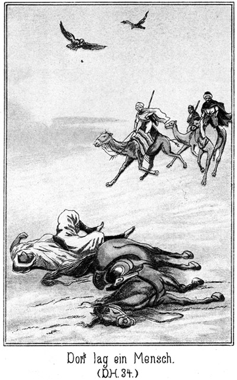Jetzt erhielten die Kameele kräftige Hiebe. Sie schossen förmlich weiter. Dort, ja dort lag ein Mensch bewegungslos neben einem Pferde, welches mit den Beinen zuckte. Das Pferd war ein Fuchs. Der Mensch, welcher einen weißen Beduinenmantel trug, war Saïd, der Arabadschi.
Steinbach war der Erste, der ihn erreichte. Er ließ sein Kameel gar nicht erst niederknien, sondern sprang aus dem Sattel herab. In demselben Augenblicke kniete er vor Saïd, welcher mit geschlossenen Augen aber weit geöffnetem Munde im Sande lag.
»Saïd!«
Keine Antwort.
»Saïd! Lebst Du? Hörst Du mich?«
Der Arabadschi regte sich nicht. Da dachte Steinbach an die Liebe, mit welcher der junge Mensch an seiner Herrin hing. Vielleicht rief ihn der Name derselben von der Pforte des Todes zurück. Er legte seinen Mund fast auf Saïd's Ohr und rief:
»Saïd! Wache auf! Zykyma ist da! Zykyma, Zykyma!«
»Ja, wirklich, das half. Der Mund schloß sich; der Hals machte eine Bewegung des Schlingens und dann hauchte der Verunglückte:
»Ma!«
Das war nicht etwa die letzte Silbe des Namens Zykyma, sondern das arabische Wort Ma heißt so viel wie Wasser.
»Schnell Wasser her!«
Normann hatte bereits den Schlauch von seinem Sattel genommen. Das belebende Naß wurde dem Arabadschi eingeflößt, natürlich vorsichtig und nur tropfenweise. Sein Gaumen war so vertrocknet, daß er nicht zu schlingen vermochte. Aber seine Augen öffneten sich. Er erblickte die neben ihm knieenden Retter und wollte sprechen, vermochte es aber nicht.
Das Pferd war ebenso dem Verschmachten nahe. Es erhob den Kopf ein Wenig und richtete die blutunterlaufenen Augen auf die Männer.
»Tränke es!« sagte Steinbach zu Nena.
Dieser gehorchte. Das Wasser wirkte hier fast augenblicklich. Das Thier erhielt nur einige kleine Lederbecher voll eingegossen, aber schon beim vierten oder fünften sprang es auf die Beine und ließ ein leises, freudiges Wiehern ertönen.
»Seht, daß wir grad zur rechten Zeit gekommen sind!« sagte Steinbach. »Morgen früh wären Mensch und Thier Leichen gewesen. Freilich erholt sich der Reiter weit langsamer als das Pferd.«
Nach einiger Bemühung vermochte Saïd zu schlingen. Ein glückliches Lächeln glitt über sein Gesicht.
»Effendi!« flüsterte er.
»Du kennst mich?«
»Ja. Zykyma rief mich. Ich hörte es aus weiter, weiter Ferne.«
»Schweig jetzt noch. Das Sprechen greift Dich an. Trink lieber!«
Noch einige Schlucke; aber schweigen konnte er dann doch nicht.
»Wo ist sie?« fragte er.
»Wir wissen es nicht.«
Saïd blickte Steinbach wirr an, legte sich die Hand auf die Stirn und sagte dann:
»Sie rief mich ja!«
»Das war ich.«
»Du warst es. Du? Nicht sie? Wo ist denn sie? Suche sie! Du wirst sie finden, Effendi.«
Er legte den Kopf zurück und schloß die Augen.
»Bist Du müde?« fragte Steinbach.
Der Gefragte antwortete nicht, auch nicht auf die mehrere Male wiederholte Frage; aber seine Brust hob und senkte sich leise und regelmäßig.
»Ich glaube, er schläft!« meinte Normann.
»Ja. Die Erschöpfung fordert mit allmächtiger Gewalt diesen Schlaf.«
»Was aber thun da wir?«
»Wir warten.«
»Bis er ausgeschlafen hat?«
»Ja.«
»Ich denke, wir wollen keine Zeit verlieren mit der Rettung der Mädchen.«
»Jetzt haben wir es zunächst mit Saïd zu thun. Uebrigens glaube ich nicht, daß er lange schlafen wird.«
*
Er hatte Recht. Bereits nach einer halben Stunde erwachte der Arabadschi wieder und bat um Wasser. Es wurde ihm gegeben und nun schlief er nicht augenblicklich wieder ein. Sein Geist war hell geworden. Er erzählte, wenn auch mit matter aber doch verständlicher Stimme das letzte Erlebniß im Lager der Beni Sallah, bis dahin, wo er sich auf die Fuchsstute geworfen hatte, um die Uebelthäter zu verfolgen.
»Wie kommst Du auf diesen verwegenen Gedanken?« fragte Normann.
»Wie ich auf ihn komme?« klang es im erstauntesten Tone zurück. »Ist nicht Zykyma meine Herrin?«
»Ja, das war sie. Aber glaubst Du denn etwa, sie retten zu können?«
»Ich glaubte gar nichts. Sie war in Gefahr, und ich ritt ihr nach.«
»Das war unvorsichtig aber brav. Du hattest weder Wasser noch Speise,« sagte Steinbach. »Du hast die Räuber eingeholt?«
»Ja.«
»Und sie belauscht?«
»Ich lag ganz nahe bei ihnen.«
»Was sagten sie?«
»Es war ein Sattelgurt gesprungen; darum mußten sie anhalten. Es war noch dunkel. So ließ ich mein Pferd stehen und kroch hinzu. Sie sprachen davon, daß sie zu den Beni Halaf wollten. Weiter hörte ich nichts, denn ich hatte mit Zykyma zu thun.«
»Bemerkte sie Dich?«
»Nicht eher, als bis ich vor ihrem Kameele im Sande lag. Ich gab ihr mein Messer in den Tachterwan und flüsterte ihr zu, daß ich sie am Abende retten werde. Dann aber mußte ich wieder fort, sonst wäre ich entdeckt worden. Ich wollte ihnen nachreiten und die drei Kerls des Abends beim Lagern tödten. Aber die Hitze Samums dorrte mir die Gebeine aus. Mein Pferd konnte nicht weiter. Wir blieben also hier liegen. Ich bin müde.«
Er schloß die Augen und schlummerte wieder. Das Pferd erhielt jetzt noch einmal Wasser und bekam dann Datteln zu fressen. In einigen Stunden war es jedenfalls wieder fähig, geritten zu werden.
Steinbach ließ Saïd schlafen. Er hatte es sich jetzt vorgenommen, die Gefährten zu erwarten. Vielleicht kamen diese am nächsten Morgen, vielleicht noch eher.
Das Letztere war der Fall. Noch lange vor Mitternacht ließ sich das Geräusch nahender Kameele hören. Die vierzig Sallah und Abbas kamen. Sie hatten sich außerordentlich beeilt und freuten sich, Saïd am Leben zu finden. Jetzt ließen sie auch ihren Teufelsspuk fallen.
Es wurde berathen, ob man hier lagern oder gleich weiter ziehen solle. Steinbach stimmte für das Letztere. Es war der erste Tagesmarsch, und folglich gab es bei den Thieren noch keine große Ermattung. Man konnte die Nacht benutzen und dafür lieber morgen im Sonnenbrande eine Ruhepause machen.
Das geschah. Man brach gleich wieder auf. Saïd war zwar noch schwach, konnte sich aber doch im Sattel des Kameels erhalten. Er erholte sich überhaupt von Minute zu Minute immer mehr.
Um die Mittagszeit des nächsten Tages wurde Halt gemacht. Spuren der Verfolgten bemerkte man nicht mehr im Sande, da die Wüstenluft wieder rege geworden war. Doch hatte das nichts zu sagen, da man ja das Ziel jetzt genau kannte. Gegen Abend des dritten Tages befand sich der Zug in der Nähe der Oase der Beni Halaf.
Es war leicht zu denken, daß diese eine Verfolgung vermuthen und also wachsam sein würden; darum hielt es Steinbach für gerathen, die Oase von Weitem zu umreiten, um von der entgegengesetzten Richtung zu kommen. Auch hierin stimmte man ihm zu.
Es wurde im schärfsten Tempo ein Umweg gemacht, bis man sich im Norden der Oase befand, auf welche man vorher von Südwest gekommen war. Von dieser Seite her wurde wohl kein Feind erwartet.
Die Gegend war sehr felsig und zerklüftet. Der Sand hatte aufgehört. Einige Höhenzüge schlossen ihn von der Oase ab. Diese Höhen waren kahl und von Schluchten zerrissen. Durch eine dieser engen Schluchten ritt Steinbach an der Spitze der muthigen Schaar. Als sich dieselbe öffnete, rollte sich ein anmuthiges Bild vor ihnen auf.
Rings von ähnlichen Höhen umgeben, lag ein ziemlich umfangreicher, mit Palmen bestandener und von mehreren Quellen bewässerter Thalkessel. Zelte standen unter den Palmen. Heerden weideten in der Nähe. Droben auf der Höhe nach Südwesten hin lagen mehrere Krieger, um den Weg zu beobachten.
»Sie warten auf uns,« sagte Tank grimmig. »Wir werden sie nicht ungeduldig werden lassen!«
»Dennoch aber wollen wir uns nicht übereilen,« meinte Steinbach. »Blicke dort hinüber!«
Eine Schaar von vielleicht fünfzehn bis zwanzig Mädchen kam unter den Palmen hervor. Sie hielten Kränze in den Händen, und ihr Ziel schien die Höhe zu sein.«
»Was ist es mit ihnen?«
»Blicke nun auch hier hinauf.«
»Warum? Da begraben sie ihre Todten.«
»Meinst Du nicht, daß die Mädchen da hinauf gehen wollen?«
»Ja. Es ist heut der Tag Kadidscha, an welchem die Mädchen die Gräber der Ihrigen bekränzen. Das geschieht nach dem Abendgebete, wenn die Finsterniß hereinbricht. Es wird dann auf jedem Grabe ein Licht angebrannt.«
»Das ist sehr gut. Ziehen wir uns wieder weiter in die Schlucht hinein. Während die Anderen unsere Thiere halten, schleichen sich Zwanzig von hinten her nach dem Begräbnißplatze, um, wenn es dunkel geworden ist, die Jungfrauen zu ergreifen, ein Jeder eine.«
Die Anderen hielten ganz erstaunt ihre Blicke auf ihn gerichtet. Hilal aber sagte:
»Effendi, Dein Gedanke ist der weiseste, den es nur geben kann. Wenn wir die Mädchen der Beni Halaf bekommen, müssen sie uns auch die Drei, welche wir suchen, herausgeben.«
»Natürlich! Wir tauschen um.«
»Wir brauchen also weder zu bitten, noch zu kämpfen. Kein Rath ist besser als der Deinige.«
»So kommt zurück!«
Jetzt waren alle einverstanden. Vierzig, wenn auch tapfere Männer gegen einen ganzen Stamm war doch zu gewagt. List war gerathener.
Hinter der Höhe wurde gehalten. Steinbach stieg mit Zwanzig ab, um die Höhe zu erklimmen. Hinter derselben, unten im Thale, ertönte soeben der Ruf des Mueddin zum Gebete. Die Dämmerung kam rasch hernieder.
Als die Zwanzig die Höhe erstiegen hatten, war es bereits ziemlich dunkel.
Hier oben gab es ein Steingewirr, in welchem man sehr gut Deckung finden konnte. Abwärts lag der Kirchhof, ein nicht sehr großer und nicht hoch eingefriedigter Platz. Man sah die Mädchen, welche sich am Eingange niedergesetzt hatten und mit einander sprachen.
Jetzt ward es schneller dunkel. Noch wenige Minuten, so war es Nacht. Auf dem Begräbnißplatze flimmerte das erste Lichtlein auf.
»Männer dürfen wohl nicht dabei sein?« fragte Steinbach Tarik.
»Nein. Es ist der Tag der Frauen.«
»Desto besser für uns. Sorgen wir vor allen Dingen dafür, daß die Mädchen kein Geschrei erheben. Der Schreck wird sie dem ersten Augenblick verstummen lassen. Da muß dann ein Jeder Eine fassen und ihr gleich die Kehle zuschnüren, aber ohne sie zu tödten. Wir tragen sie über die Höhe diesseits wieder hinab und bringen sie so weit fort, daß wir nicht gefunden werden können. Ich aber begebe mich als Euer Gesandter zu den Beni Halaf, um mit ihnen zu verhandeln.«
»Das ist kühn!«
»Gar nicht kühn. Sie werden mir nichts thun, weil ihre Töchter sich in unserer Gewalt befinden. Also jetzt ist es Zeit, vorwärts!«
Die zwanzig Mann schlichen sich zwischen den Steinen hindurch auf den Begräbnißplatz zu. Auf demselben brannten bereits eine Menge Lichter, welche von den Beduininnen angesteckt worden waren.
An der Mauer angekommen, welche den Männern nur bis an die Brust reichte, so daß man sehr leicht hinüberblicken konnte, sah man die Mädchen jetzt um ein Grabmal stehen, welches das größte von allen war. Vielleicht lag ein berühmter Scheik unter demselben begraben.
»Jetzt stehen sie beisammen,« flüsterte Steinbach seinen Begleitern zu. »Vertheilt Euch schnell rund um, so daß wir von allen Seiten kommen; dann ist ihnen die Flucht unmöglich. Wenn ich ein Zeichen gebe, eilen Alle herbei.«
Einer der Krieger meinte:
»Meinst Du nicht, daß sie leichter zum Schweigen zu bringen sein werden, wenn wir ihnen unsere Messer sehen lassen?«
»Natürlich, das könnt Ihr thun. Jetzt vorwärts!«
Sie vertheilten sich. Nach einer kurzen Pause stieg Steinbach über die Mauer. Sein scharfes Auge bemerkte, daß die auf seiner Seite postirten Gefährten sich auch bereits im Innern des Kirchhofes befanden. Er gab das Zeichen. Da huschten die Gestalten alle auf das erwähnte Grabmal zu, an welchem die Mädchen jetzt einen monotonen Gesang angestimmt hatten. Steinbach war vermöge seiner Gewandtheit der Erste dort. Er ergriff eins der Mädchen mit der linken Hand am Halse, drückte den Letzteren so fest zusammen, daß sie nicht schreien konnte und hob sie auf den anderen Arm empor.
Kaum war das geschehen, so bemächtigten sich die anderen Araber auch der übrigen Mädchen. Einige unterdrückte oder auch nur kurze Schreie erschollen, dann eilten die Männer mit ihren Bürden nach der Mauer zurück, welche hier, da die Gräber hoch lagen, mit einem einzigen Schritte zu ersteigen war. Ein Sprung hinab und dann fort, in das Dunkel hinein. Die That war gelungen.
Natürlich fanden sich nicht Alle zugleich bei der Truppe ein. Einer kam eher und der Andere später. Keiner aber fehlte.
Die Mädchen waren vor Schreck, Angst und Athemnoth halb todt. Erst als sie sich inmitten ihrer Feinde befanden, wurden ihnen die Finger von den Kehlen genommen, so daß sie nun wieder richtig Athem zu holen vermochten. Einige begannen, laut zu jammern.
»Ruhig!« gebot Steinbach. »Welche von Euch Lärm macht, die wird erstochen!«
Sofort trat Stille ein. Jetzt erkundigte Steinbach sich:
»Ist eine Verwandte Eures Scheiks bei Euch?«
»Ich,« lautete eine Antwort. »Ich bin seine jüngste Tochter.«
»Wie heißest Du?«
»Warda.«
Dieses Wort bedeutet »Rose«. Jetzt in der Dunkelheit konnte man es nicht erkennen; später jedoch zeigte es sich, daß sie ein schönes Mädchen war und diesen Namen voll verdiente.
»Wie heißt Dein Vater?«
»Amulak Ben Musa.«
»Weshalb halten Krieger im Süden vor Eurer Oase Wache?«
»Ich weiß es nicht.«
»Du wirst es sofort wissen, wenn ich Dir sage, daß wir Dich als Sclavin verkaufen werden, wenn Du meine Fragen nicht beantwortest.«
»O Allah!« seufzte sie erschrocken.
»Also rede!«
Sie zögerte noch. Da redeten ihr die Gefährtinnen zu, die Wahrheit zu sagen.
»Thue, was sie Dir rathen, denn wir werden auch sie mit uns nehmen, wenn Du Dich weigerst eine Auskunft zu geben. Wozu also die Wächter?«
»Wir erwarten einen Ueberfall der Krieger vom Stamme der Beni Sallah.«
»Warum?«
»Es sind einige Freunde zu uns gekommen, die von ihnen verfolgt werden.«
»Wo befinden sich diese Leute?«
»In dem großen Gastzelte gerade gegenüber demjenigen meines Vaters.«
»Haben sie Frauen mit?«
»Ja, drei.«
»Wo sind diese?«
»Im Frauenzelte neben der Wohnung des Scheiks, wo sie bewacht werden.«
»Sind sie da allein?«
»Ja. Der Wächter sitzt vor der Thür.«
»Ich bin mit Deinen Antworten zufrieden. Wenn Ihr Euch wohl verhaltet, wird Euch nichts geschehen und Ihr werdet sehr bald wieder bei den Eurigen sein.«
Jetzt rieth er Tarik, sich mit der Truppe ganz aus der Schlucht hinaus in das Freie zu ziehen, eine Maßregel, durch welche ein unvorhergesehener Ueberfall verhindert wurde, zumal wenn man die Vorsicht gebrauchte, einige Vorposten auszustellen. Dann wollte er sich auf den Weg machen. Es wurde ihm von mehreren Seiten abgerathen. Er gab nur so weit nach, daß er sich eine gewisse Strecke weit begleiten lassen wollte, und suchte sich zu diesem Zwecke fünf bis sechs Männer aus, unter denen sich auch der Indier Nena befand. Mit diesen brach er auf, natürlich zu Fuße und nicht zu Pferde.
Sie gingen wieder nach dem Kirchhofe zurück, wo die Lichtchen meist noch brannten. Nur einige waren bereits verlöscht. Tiefe Ruhe lag unten in der Oase, wo man also noch keine Ahnung davon hatte, daß die Mädchen entführt worden seien. Jetzt lenkte Steinbach seitwärts ein.
»Warum das?« fragte Einer. »Warum gehst Du nicht gerade auf das Lager zu?«
»Weil ich Euch zurücklassen muß.«
»Das kannst Du auch auf dem geraden Wege.«
»Nein, denn dadurch würde ich Euch in Gefahr bringen. Es ist doch möglich, daß sich die Beni Halaf über das lange Ausbleiben ihrer Töchter beunruhigen, noch ehe ich mit ihnen sprechen kann. In diesem Falle würden sie nach dem Friedhof eilen und auf Euch stoßen. Ein Kampf wäre da unvermeidlich, und er würde zu Euren Ungunsten ausfallen. Also kommt!«
Er war ihnen eben in Allem überlegen, besonders auch in Beziehung auf die Vorsicht und Ueberlegung, mit welcher er selbst das Kleinste auszuführen gewöhnt war.
Sie erreichten nach kurzer Zeit die ersten Palmen der Oase. Hier ließ Steinbach seine Begleiter mit der Weisung zurück, sich vollständig ruhig zu verhalten, auf seinen Ruf, den sie bei der nächtlichen Stille leicht hören konnten, zu ihm in das Lager zu kommen. Dann ging er allein weiter.
Er hatte die Lagerfeuer leuchten sehen und wußte also auch hier, wo die Palmen den Feuerschein nicht erkennen ließen, in welcher Richtung er sich zu halten habe.
Bereits nach einiger Zeit konnte er den Schein wieder sehen. Jedes einzelne Zelt war genau zu unterscheiden. Die Beni Halaf schienen ihre ganze Aufmerksamkeit nach der Südseite gerichtet zu haben, denn hier im Norden gab es keinen einzigen Wächter. Aus diesem Grunde gelang es Steinbach ohne alle Mühe, bis an die ersten Zelte zu kommen.
Von der Mitte des Lagers her erschollen laute Stimmen. Man schien dort eine Versammlung abzuhalten, oder die Bewohner hatten sich zufällig dort zusammengefunden, um über die Ereignisse des Tages und die nun zu erwartenden Begebenheiten zu sprechen.
War dies wirklich der Fall, so gab es für Steinbach die Möglichkeit, einen kühnen Coup auszuführen. Er legte sich auf den Boden nieder und kroch hart an das erste Zelt heran, um den unteren Saum desselben so weit aufzuheben, wie es die Zeltbefestigung erlaubte, und in das Innere desselben zu blicken. Es war ganz still und dunkel darin; es war leer.
So fand er auch die nächsten Zelte, zwischen denen er sich wie eine Schlange hindurchwand. Auf diese Weise gelangte er immer weiter nach der belebten Mitte des Lagers. Bereits konnte er zwischen den letzten, den Versammlungsplatz begrenzenden Zelten hindurch bemerken, daß wirklich alle Beni Halaf dort zugegen waren. Männer und Frauen getrennt.
Das Zelt des Scheikes zeichnete sich durch die Lanzen aus, welche vor demselben in die Erde gesteckt waren. Daneben stand ein kleineres ein wenig mehr zurück, so daß der hintere Theil desselben im Schatten des Ersteren lag. Das war vermuthlich das Frauenzelt.
Er kroch hinzu, immer im Schatten und stets bereit, aufzustehen und sich zu zeigen, falls er gesehen werde. Aber kein Mensch hielt es für nöthig, den Blick hierher zu werfen.
Das Zelt bestand aus starker Leinwand, deren unterer Rand an Pflöcken in die Erde befestigt war. Steinbach zog zwei dieser Pflöcke heraus, hob den Saum der Leinwand ein wenig empor und blickte hinein. Es war still im Innern; aber er erkannte deutlich drei Frauengestalten, welche am Boden saßen. Die Lagerfeuer erleuchteten die vordere Zeltwand, so daß die Köpfe der Drei dunkel von derselben abstachen.
»Zykyma!« flüsterte er.
»Allah!« erklang es erschrocken.
»Still! Ganz leise!«
»Saïd, bist Du es?«
»Nein, ich bin es, Masr-Effendi.«
»Allah sei Dank! Wir sind gerettet, da Du hier bist. Wir haben auf Dich gehofft.«
»Ihr werdet bewacht?«
»Von einem einzigen Krieger, welcher draußen vor der Thür sitzt.«
»Kam Euch nicht der Gedanke an die Flucht?«
»Er kam uns; aber wir können ja hier nicht sehen, wie es draußen steht.«
»Ist Hilal mit hier?« flüsterte Hiluja.
»Und Tarik?« fragte Badija.
»Beide. Ihr werdet sie sehen, wenn Ihr mir jetzt folgen wollt.«
»Ja. Legt Euch platt auf den Boden und kriecht mir nach. Ich öffne die Leinwand.«
Er zog sein Messer und machte einen Schnitt in das Zelt, welcher das Durchschlüpfen gestattete. Die drei Mädchen kamen heraus und krochen hinter ihm her, bis er sich von der Erde erhob.
»Steht auf!« sagte er. »Hier kann man uns nicht mehr sehen. Ihr seid frei.«
Da ergriffen sie seine Hände, um ihm zu danken; er aber zog sie eiligst mit sich fort bis hin zu den sechs wartenden Kriegern. Er forderte einen derselben auf, die Geretteten sofort zu den Ihrigen zu bringen, und kehrte dann zurück, dieses Mal aber nicht allein, sondern er nahm Nena, den Indier, mit.
Auf demselben Wege und ganz in derselben Weise gelangte er mit ihm an das Frauenzelt, in welches die Beiden krochen. Als sie sich in dem Inneren befanden, zog Steinbach die Schnuren so straff an, daß sich der Schnitt, welchen er in die Leinwand gemacht hatte, schloß und nicht mehr zu sehen war. Dann schlüpfte er vor an die Thür, welche aus einer Matte bestand. Er schob sie ein Wenig zur Seite und blickte durch die Lücke hinaus. Er sah sofort den Suef mit dem Russen und dem Türken am Feuer sitzen, wo es jetzt sehr lebhaft herging.
»Komm her!« flüsterte er Nena zu. »Luge einmal hier hinaus, und sage mir, ob Du Deinen früheren Herrn erkennst!«
Nena gehorchte. Er musterte die Gesichter und sagte dann in bestimmtem Tone:
»Er ist da, Herr. Er trägt blaue Hosen und ein rothes Wamms mit zwei Pistolen im Gürtel.«
»Ganz richtig! Jetzt sehe ich ein, daß wir ihn fest haben und daß er uns nicht wieder entkommen wird.«
»Er erhebt sich. Er kommt herbei.«
»Schön.«
Auch Steinbach bog sich zu der Lücke, um den Grafen zu beobachten.
Dieser kam langsam näher und fragte, als er das Zelt erreicht hatte, den Wächter:
»Schlafen die Frauen bereits?«
»Ich weiß es nicht, Herr.«
»Laß sehen.«
Er schob den Wächter zur Seite, bückte sich nieder, hob die Matte empor und steckte den Kopf herein.
»Zykyma!«
Keine Antwort.
Er schob darum den Kopf noch weiter herein.
»Zykyma!«
Da gab Steinbach ihm aus allen Kräften eine Ohrfeige, daß es klatschte. Im Nu war der Kopf verschwunden. Draußen hustete und pustete, ächzte und stöhnte es, und sodann rief der Geohrfeigte:
»Ibrahim! Komm schnell her!«
»Warum?« fragte der Pascha, dem es auf seinem Platz gefiel.
»Die Frauen revoltiren.«
»Das wollen wir uns verbitten.«
Er stand auf, kam herbei und erkundigte sich dann:
»Welche denn?«
»Die Deinige ist die Anführerin.«
»Was thut sie denn?«
»Sie will die beiden Anderen zur Flucht verführen.«
Das war nicht wahr. Aber der Russe wollte haben, daß der Türke nun auch seinen Kopf einmal in das Zelt stecke. Wenn er es that, mußte es sich ja finden, welches von den drei zarten Wesen eine so überaus kräftige Hand besaß, und aus welchem Grunde überhaupt dieser Schlag geführt worden war.
»Du blutest ja!« sagte der Türke.
»Wo?«
»An der Nase.«
»Ich habe mich gestoßen.«
»Hat Allah Dir die Nase gegeben, damit Du mit ihr überall anrennst? Ich werde sogleich mit den Ungehorsamen sprechen.«
Auch er bückte sich nieder und hob die Matte empor. Der Russe wischte sich das Gesicht und hielt dabei den Blick voller Spannung auf den Türken gerichtet. Dieser rief in das Zelt hinein:
»Was fällt Euch denn ein, Ihr Hündinnen, Ihr Weiber, Ihr Ungehorsamen. Warum wollt Ihr uns entfliehen?«
Es erfolgte keine Antwort.
»Ich frage Euch, was Ihr gethan habt! Antwortet!«
Es blieb auch jetzt ruhig.
»Zykyma, antworte Du!«
Die Aufforderung war erfolglos.
Er hatte den Kopf freilich noch halb unter dem Eingange. Jetzt aber schob er ihn ganz hinein. Der Russe beugte sich erwartungsvoll vor, was nun erfolgen werde.
»Zykyma! Hörst Du? Wenn Du nicht redest, werde ich Dich bestrafen!«
Da gab es im Innern des Zeltes einen lauten Klatsch und gleich darauf noch einen. Der Türke brüllte auf wie ein Stier und fuhr mit solcher Vehemenz aus dem Zelte zurück, daß er in den Sand schoß. Er sprang jedoch sofort wieder auf, hielt sich die Hände an die Backen und schrie:
»O Allah, o Teufel, o Hölle! Sie hauen zu!«
»Jawohl!« meinte der Russe, nun seinerseits sehr befriedigt, daß der Andere zwei Ohrfeigen erhalten hatte anstatt einer.
»Wie? Hast Du es gewußt?«
»Woher?«
»Weil ich auch eine erhalten habe. Dieses Blut fließt wegen einer Ohrfeige, nicht aber wegen eines Stoßes aus meiner Nase.«
»Und Du hast mich belogen, hast mich nicht gewarnt!«
»Ich wußte selbst noch nicht, woran ich war. Ich steckte den Kopf hinein und erhielt den Schlag; da war es unsicher, ob ich eine Ohrfeige erhalten oder mich an den Pfahl gestoßen hatte. Jetzt nun aber weiß ich es genau. Auch Du blutest!«
»Das werde ich rächen! Welche mag es wohl gewesen sein?«
»Ich weiß es nicht.«
»Ich weiß so viel, daß Zykyma keine solche Hand hat.«
»So ist es eine der Schwestern gewesen. Gucke noch einmal hinein!«
»Sollte mir einfallen! Ich mag nicht wieder geschlagen sein. Ich werde ein Licht holen und einmal hineinleuchten.«
Er ging nach dem Feuer, um einen Brand zu holen. Als die Araber sahen, daß er blutete, fragten sie nach der Ursache. Er erzählte es und wurde ausgelacht. Dennoch standen Mehrere auf, um ihm zu folgen und zu erfahren, wie dieser Kampf zwischen Männern und Frauen enden werde.
Er kniete nieder, hob mit der einen Hand die Matte empor und leuchtete mit der anderen vermittelst des Feuerbrandes hinein. Man konnte aber nichts sehen, weil die Helle des Brandes die Augen blendete.
»Weiter hinein!« sagte Einer.
Er wollte es thun, fuhr aber erschrocken zurück, denn der Lauf einer Doppelpistole wurde von innen heraus sichtbar.
»Allah il Allah! Sie schießen!«
»Haben sie denn Waffen?«
»Hast Du nicht die Pistole gesehen?«
»Freilich! Wer hat sie ihnen gegeben? Wir können nicht hinein, aber wir können das Zelttuch abnehmen, da sitzen sie im Freien und können nichts Hinterlistiges unternehmen.«
Sofort waren mehrere Beduinen bereit, die Leinwand zu entfernen. Die Pflöcke wurden herausgezogen und die Leinwand von vorn nach hinten zurückgeworfen. Aller Augen richteten sich nach den Frauen.
»Donnerwetter!« rief der Russe, erschrocken zurückfahrend.
»Allah ist groß!« schrie der Türke, indem er einen gewaltigen Seitensprung that.
Die Araber brachten kein Wort hervor. Sie, die außerordentlich Abergläubigen, hielten es für Hexerei, daß anstatt der drei Frauenzimmer ein hoher, stolzer Mann unter den Zeltstangen stand und ein zweiter neben ihm saß.
»Steinbach!« knirschte der Russe.
»Ja, Steinbach, der Hund!« rief der Pascha. »Wo sind die Frauen, wo?«
»Verschwunden, wie Du siehst,« antwortete Steinbach. »An ihrer Stelle bin ich hier, um mich von Dir entführen zu lassen. Erkläre Dich deutlich, wohin Du mich schaffen willst!«
Der Scheik war herbeigekommen. Ein Kreis von Leuten bildete sich um ihn und um das Zelt. Er blickte ganz erstaunt von Steinbach zu Nena hernieder und fragte den Pascha:
»Wer ist dieser Fremdling?«
»Masr-Effendi, von dem ich Dir erzählt habe.«
»Wie kommt er in unser Lager und in dieses Zelt?«
»Frage ihn! Ich weiß es nicht. Unsere Frauen sind fort. Euch haben wir sie zur Bewachung anvertraut. Ihr müßt sie uns wiederschaffen!«
Der Scheik war rathlos. Er glaubte nun zwar nicht an Zauberei, wußte aber nicht, wie er sich zu Steinbach verhalten solle, dessen stolze Männlichkeit einen außerordentlichen Eindruck auf ihn machte. Er fragte endlich:
»Bist Du wirklich Masr-Effendi?«
»Ja.«
»Wo sind die Frauen?«
»In Sicherheit. Ich habe sie befreit.«
»Wohin hast Du sie gebracht?«
»Zu den Beni Sallah, welche an Eurem Lager stehen und bereit sind, über Euch herzufallen.«
»Das ist nicht wahr.«
»Ich lüge nie!«
»Wie können die Beni Sallah hier sein! Wir haben Kundschafter ausgesandt und Posten gestellt.«
»Bin ich nicht hier, mitten unter Euch? Und ich bin mit den Beni Sallah gekommen.«
»Du bist allein gekommen und hast die Frauen durch List befreit. Hier sehe ich es. Da ist die zerschnittene Leinwand, durch welche Ihr Beide eingedrungen seid. Ihr habt die Frauen vorangehen lassen und seid gestört worden, ihnen zu folgen. Wir werden sie suchen und finden. Ihr Beide aber seid unsere Gefangenen.«
»Ja, so ist es!« stimmte der Pascha bei. »Er war es, welcher uns schlug. Er soll die Bastonnade bekommen, daß ihm die Fußsohlen bis auf den Knochen aufspringen. Bindet ihn!«
Sogleich eilten Einige fort, um Stricke zu holen. Zwei Männer hier mitten im Lager zu überwältigen, das war ja ein Kinderspiel. Es sollte aber nicht so schnell gehen, wie sie gedacht hatten. Steinbach that einen schnellen Schritt auf den Pascha zu, versetzte ihm einen Fausthieb in das Gesicht, daß der Getroffene zu Boden stürzte, und sagte:
»Sprich noch einmal von der Bastonnade, Hund, so bekommst Du sie selbst!«
»Halt!« donnerte da der Scheik. »Wie kannst Du, unser Gefangener, es wagen, unsere Gäste zu schlagen! Du bist ein Freund der Beni Sallah, also unser Feind. Du hast Dein Leben verwirkt. Gieb Deine Hände her und laß Dich binden!«
»Hier sind sie. Bindet sie!«
Er hielt ihnen in jeder Hand einen Revolver entgegen. Sie fuhren zurück. Nur der Russe und der Türke zeigten in ihrer Wuth keine Furcht vor den kleinen und doch so gefährlichen Waffen. Freilich wagten sie es nicht, Steinbach anzufassen, doch blieben sie ganz in der Nähe stehen, um ihm die Flucht abzuschneiden. Dabei gebot der Pascha:
»Scheik, sende Leute aus, unsere entflohenen Frauen zu suchen.«
»Ihr werdet sie wirklich nicht finden,« versicherte Steinbach. »Sie sind zurückgekehrt in den Schutz Hilal's und Tarik's, deren Bräute sie sind. Und mich braucht Ihr nicht zu bewachen. Ich entfliehe Euch nicht. Es ist vielmehr meine Aufgabe, Euch Beide an der Flucht zu verhindern. Scheik Amulak Ben Musa, ich bin gekommen, diese beiden Männer von Dir zu fordern, und Du wirst sie an uns ausliefern.«
»Bist Du toll oder ein Giaur!«
»Er ist ein Giaur, ein ungläubiger Hund!« fiel der Pascha schnell ein. »Hört nicht auf ihn!«
»Ihr werdet auf mich hören! Ich bin nicht gewöhnt, meine Worte in den Wind zu reden!«
Der Scheik griff nach seinem Messer.
»Mensch, soll ich Dich erstechen! Du befindest Dich in unserer Gewalt und wagst es, solche Worte zu uns zu reden!«
»Ich bin mit nichten in Eurer Gewalt, sondern ich bin so frei, wie Ihr frei seid. Diese Männer sind uns entwichen. Wir verlangen sie von Euch zurück.«
»Selbst wenn Du nicht wahnsinnig wärst, könnte es nicht geschehen. Sie sind unsere Gäste und wir haben ihnen unser Wort gegeben, sie zu schützen. Du aber schweig von jetzt an und ergieb Dich uns, sonst fallen wir über Dich her, wie die Heuschrecken über den Halm, welcher in einem Nu verzehrt wird. Hier sind die Stricke, Euch zu binden. Ergebt Euch!«
»Greift uns an, wenn Ihr es wagt!«
»Wir werden Euch nicht anrühren, sondern Euch von Weitem erschießen. Da könnt Ihr Euch nicht wehren.«
»Ich rathe Euch, dies nicht zu thun, denn wenn uns von Euch nur ein Haar gekrümmt würde, so müßte sich morgen ein großes Trauergeschrei bei Euch erheben und Euer Friedhof würde sich den Leichen Eurer Töchter öffnen.«
»Unserer Töchter? Was ist mit ihnen?«
»Blicke empor zum Friedhofe, ob die Lichter noch brennen!«
Man konnte von diesem Platze aus den Friedhof sehen, natürlich bei Tage. Auch jetzt bei Nacht hätte man die Lichter sehen müssen.
»Sie sind erloschen!« sagte der Scheik erschrocken.
»Und warum sind sie erloschen? Weil sie nicht gepflegt und erneut worden sind. Die Töchter der Beni Halaf befinden sich nicht mehr dort auf dem Friedhofe.«
»Wo denn?«
»Sie sind in die Hände der Beni Sallah gefallen.«
»O Allah! Sagst Du die Wahrheit?«
»Ja. Ich selbst habe den Ueberfall geleitet.«
»Allah verderbe Dich und der Prophet verfluche Dich dafür!«
»Das könnte doch Euch keinen Nutzen bringen. Ich führte die Beni Sallah hierher. Wir wußten, daß Ihr uns erwartet und also Posten ausstellen würdet. Darum machten wir einen Umweg, um von der unbewachten Seite zu kommen. Wir sahen zwanzig Eurer Töchter nach dem Friedhofe gehen und warteten, bis es dunkel war, sie zu überfallen. Es gelang. Jetzt sind sie unsere Gefangenen.«
»Sie werden sehr bald frei sein, denn wir werden Dich tödten, wenn sie nicht in einer Stunde sich wieder bei uns befinden.«
»Ihr werdet sie nicht lebendig wiedersehen, denn wenn ich nicht in einer halben Stunde wieder bei den Beni Sallah bin, werden Eure Töchter alle erschossen.«
»Ihr seid Hunde! Kein Mann tödtet ein Weib!«
»Und kein braver Krieger schützt die Peiniger dreier Frauen, wie Ihr es thut!«
»Vielleicht sagst Du uns eine Unwahrheit, um uns zu übervortheilen. Ich werde Boten nach dem Kirchhofe senden, um nach unseren Töchtern zu suchen.«
»Thue es! Unterdessen vergeht die halbe Stunde und sie werden getödtet!«
»O Allah, Allah!«
Er fühlte sich ganz rathlos. Um ihn noch mehr einzuschüchtern, sagte Steinbach:
»Auch habe ich mit Warda, Deiner jüngsten Tochter, gesprochen. Sie sehnt sich nach Dir.«
»Meine Tochter, meine Tochter!«
Er raufte sich die Haare seines Bartes aus. Die Angehörigen der anderen Mädchen erfuhren auch, daß ihre Töchter von den Beni Sallah gefangen genommen worden seien. Darüber erhob sich ein großes Wehklagen im Lager. Der Beduine ist nicht gewöhnt, sein Leid allein und still zu tragen. Es müssen so Viele wie möglich davon hören. Daher das überlaute Jammern und Heulen bei Unglücksfällen.
Es bildeten sich zwei Parteien. Die eine war dafür, Rache an der Person Steinbach's zu nehmen, die andere stritt dagegen, da in diesem Falle der Tod der Mädchen unvermeidlich sei. Es wurde schnell die Versammlung der Aeltesten einberufen, deren Berathung kein anderer Mensch zuhören durfte.
Es galt, zwei sich ganz und gar widerstreitende Punkte in Einklang zu bringen: Steinbach verlangte den Russen und den Türken ausgeliefert; diese beiden Gäste durften aber nicht ausgeliefert werden, wenn der Stamm nicht für ewige Zeiten sein Ansehen und seine Ehre verlieren wollte. Wie war da ein Ausweg zu finden? Die schlauen Araber fanden ihn sehr bald.
Der Scheik ließ den Türken und den Russen zu sich kommen in sein Zelt, wo sie unbelauscht waren, und sagte:
»Ihr habt großes Herzeleid über uns gebracht, dennoch wollen wir Euch nicht ausliefern, weil Ihr unsere Gäste seid.«
»Wir haben Dir nichts gethan,« sagte der Pascha.
»Nein; darum will ich Euch beschützen. Ich werde mit diesem Masr-Effendi einen Vertrag abschließen, daß ich Euch hier bei mir gefangen halte, bis der Morgen anbricht. Dann reitet Ihr ab.«
»Und Masr-Effendi folgt uns?«
»Ja.«
»So sind wir verloren.«
»Nein. Ihr sollt nicht bis zum Morgen hier bleiben, ich lasse Euch eher fort.«
»Das geht nicht. Masr-Effendi wird uns sehr streng bewachen. Wir sind ihm bereits einmal auf die Weise der List entkommen.«
»Ich werde die Wache an dem Zelte selbst übernehmen.«
»Dagegen wird er nichts einwenden, aber er wird das ganze Lager von seinen Kriegern umzingeln lassen, dann können wir nicht fort.«
»Ist er so klug und vorsichtig?«
»Klüger als Hunderte!«
»Ich werde ihn dennoch überlisten. Ihr tretet, sobald Ihr hier in das Zelt gegangen seid, sogleich hinten wieder aus demselben und eilt zu den Kameelen, welche Euch der Suef gesattelt haben wird. Er reitet als Euer Wegweiser mit Euch.«
»Der Suef wird nicht satteln dürfen, denn Masr-Effendi verlangt jedenfalls, daß er auch gefangen genommen werde.«
»So wird einer von meinen Leuten satteln.«
»Hat dieses Zelt einen Ausgang von hinten?«
»Nein. Ihr kriecht unter der Leinwand hinaus, aber nicht eher, als bis ich hereinkomme und Euch sage, daß es Zeit ist. Ich werde für Euch aufpassen.«
»Wie nun, wenn Masr-Effendi hereintritt, um nach uns zu sehen, und uns nicht findet?«
»Das schadet nicht. Ihr seid dann fort.«
»Er wird uns verfolgen.«
»Des Nachts?«
»Ja.«
»Er kann ja keine Fährte sehen!«
»Da kennst Du diesen Teufel nicht. Sind wir nicht auch des Nachts von den Beni Sallah fortgeritten? Er hat dennoch unsere Fährte gefunden, obgleich er weit entfernt bei den Beni Suef war. Er hat den Teufel und dieser macht seine Augen scharf. Wenn wir keinen bedeutenden Vorsprung erhalten, so holt er uns ein. Er darf also erst morgen bemerken, daß wir längst fort sind.«
»Gut, so werde ich drei meiner Leute heimlich hier in mein Zelt schaffen, welche ähnlich gekleidet sind wie Ihr. Seid Ihr fort und er kommt herein, so stellen sie sich schlafend und er hält sie für Euch.«
»Das mag gehen.«
»Ich werde jetzt mit ihm sprechen. Die Aeltesten sind einverstanden mit dem, was ich mit Euch verhandelt habe.«
Er ging.
»Dieser Steinbach ist wirklich ein Teufel!« knirschte der Russe. »Schleicht sich der Kerl in das Lager und befreit die Mädchen, deren wir uns unter solchen Gefahren bemächtigt haben!«
»Die Hölle verschlinge ihn! Nun ist Zykyma für mich verloren!«
»Laß sie fahren! Sie liebte Dich nicht und war stets ein widerstrebendes Frauenzimmer.«
»Aber schön, außerordentlich schön!«
»Es giebt tausend Andere, welche noch schöner sind. Gehen wir fort, um zu sehen, wo unser Suef steckt. Wir müssen ihn instruiren.«
Der Scheik hatte sich wieder zu Steinbach begeben, welcher so ruhig unter dem halb abgedeckten Zelte sitzen geblieben war, als ob er sich daheim auf seinem Sopha und nicht inmitten eines ihm feindlich gesinnten Beduinenstammes befinde.
»Die Versammlung hat beschlossen,« meldete ihm der Scheik, »Dir die beiden Gefangenen zu übergeben.«
»Die drei Gefangenen, meinst Du wohl.«
»Auch den Suef mit? Gut.«
»So bringt sie mir her!«
»Du irrst, wenn Du meinst, daß es jetzt geschehen soll. Sie sind unsere Gäste und während der Dauer dieses Tages dürfen wir ihnen das Obdach nicht versagen. Aber bei Anbruch des Tages werden sie unsere Oase verlassen und Ihr mögt Ihnen dann folgen, um zu thun, was Euch beliebt.«
»Wirst Du Wort halten?«
»Sie uns pünktlich bei Anbruch des Tages übergeben?«
»Ja.«
»Was geschieht bis dahin mit ihnen. Sie werden ganz natürlich auf den naheliegenden Gedanken kommen, bereits diese Nacht heimlich fortzureiten, um einen Vorsprung vor uns zu gewinnen.«
»Ich sperre sie in mein Zelt und lasse sie bewachen.«
»Sehr gut. Darf auch ich sie mit bewachen lassen?«
»Ja, wenn Du meinst, daß sie Dir da sicherer sind.«
»Das meine ich allerdings. Ich habe die Erfahrung gemacht, daß meine Augen mich stets am wenigsten täuschen.«
»Du bist also zufrieden mit dem Beschlüsse der Versammlung unserer Aeltesten?«
»Ja.«
»Und wirst uns unsere Töchter wiedergeben?«
»Ja.«
»So sende zu den Deinen, daß diese sie uns nun zurückbringen.«
Steinbach nickte ihm freundlich lächelnd zu und sagte:
»Hast Du schon einmal Etwas gekauft?«
»Sehr oft.«
»Pflegtest Du heute zu bezahlen, wenn Du morgen erst den Gegenstand des Preises bekommst?«
»Nein. Geld gegen Waare oder Waare gegen Waare, so ist der richtige Handel.«
»So ist es recht, so liebe ich es auch, und so wollen auch wir es machen.«
»Wie meinst Du das?«
Er hatte gar nicht bemerkt, daß er gegen sich selbst entschieden hatte.
»Wir tauschen doch auch!«
»Ja, die drei Männer gegen unsere Töchter.«
»Ganz richtig! Und da wollen wir es bei Deinem eigenen Grundsatze lassen: Waare gegen Waare.«
»Allah! Du willst uns die Töchter nicht heute zurückbringen?«
»Nein.«
»Warum?«
»Weil Du uns auch nicht heute die drei Männer auslieferst.«
»Ich habe Dir doch mein Wort gegeben, daß ich sie bei Tagesanbruch fortsende!«
»Schön! Da gebe ich Dir auch mein Wort, daß ich Euch um dieselbe Zeit die Mädchen sende.«
»Wie!«
»Waare gegen Waare und Wort gegen Wort! Nicht aber Waare gegen Wort oder Wort gegen Waare. Du bist ein vorsichtiger Mann, ich bin es auch.«
»Aber wir haben Sehnsucht nach unseren Töchtern!«
»Und wir sehnen uns nach unseren Feinden.«
Der Scheik sah ein, daß er mit seiner List an den unrechten Mann gekommen sei. Er zeigte sich sehr verstimmt und sagte:
»So muß ich noch einmal mit den Aeltesten sprechen. Erlaubst Du es mir?«
»Ja, doch darf es nicht zu lange dauern, sonst bringst Du das Leben der Mädchen in Gefahr.«
Der Scheik ging. Unterwegs traf er auf den Russen und den Pascha. Er theilte ihnen mit, daß seine List ohne Erfolg gewesen sei und daß er darum noch einmal mit den Aeltesten berathen müsse. Dann eilte er weiter.
»Unsere Angelegenheit steht sehr schlecht,« meinte der Pascha. »Wäre es nicht am Allerbesten, diesen Steinbach niederzuschießen?«
»Das geht nicht. Wir würden uns da die ganzen Beni Halaf zu Feinden machen, da in diesem Falle das Leben ihrer Kinder in Gefahr käme.«
»Giebt es denn kein anderes Mittel?«
»Es giebt eins.«
»Nun, welches?«
»Das Duell.«
»Allah!«
»Ja, wir fordern ihn. Er darf und wird sich dem Verdachte der Feigheit nicht aussetzen und muß sich also mit uns schießen. Hast Du Muth?«
»Dummheit, daran zu zweifeln. Man schießt eine Secunde früher als er und ihn trifft die Kugel.«
»Ganz recht. Und wir losen, wer von uns Beiden sich zuerst mit ihm schießt!«
»Einverstanden!«
»So komm! Machen wir der Sache auf diesem Wege ein Ende.«
Es hatte wohl keiner von diesen Beiden den rechten Muth, sich mit Steinbach zu schießen, aber da ein Jeder die Hoffnung hegte, der Zweite zu werden, so wagten sie das Unternehmen. Sie schritten entschlossen dem Zelte zu, unter welchem er noch immer saß, auf die abermalige Rückkehr des Scheiks wartend. Er sah sie kommen und zog schnell seinen Revolver heraus, um ihn für alle Fälle bei der Hand zu haben.
Sie blieben vor ihm stehen und betrachteten ihn mit herausfordernden Blicken.
»Effendi,« begann endlich der Pascha. »Was haben wir mit Dir zu schaffen! Warum läßt Du uns nicht in Frieden unseres Weges ziehen?«
»Weil Ihr mir dabei stets den meinigen kreuzet.«
»Ist mir nicht eingefallen!«
»Mir auch nicht,« stimmte der Russe bei. »Ich habe es satt, mich von Dir verfolgen zu lassen. Ich sehe keinen einzigen Grund für Dich, mich zu beunruhigen.«
»Mein Hauptgrund heißt zunächst Gökala.«
»Was geht sie Dich an! Sie ist meine Frau.«
»Das ist eine Lüge!«
»Beleidige mich nicht!« donnerte er.
»Pah! Wirf Dich nicht in dieser Weise in das Zeug. Du machst Dich doch nur lächerlich! Wie könnte Semawa jemals auf den Gedanken gekommen sein, Dein Weib zu werden!«
Der Russe fuhr zur Seite, als ob er einen Stoß erhalten habe.
»Semawa! Wer ist das?« stotterte er.
»Die Du dann Gökala genannt hast.«
»Unsinn!«
»Die Tochter des Maharadscha von Nubrida.«
»Donnerwetter! Du phantasirst wohl? Es ist mir ja noch niemals so ein Ding wie ein Maharadscha zu Gesicht gekommen!«
»Aber aus dem Gesichte kam er Dir – nämlich als Verbannter nach Sibirien hinein.«
Der Graf wollte etwas sagen, brachte aber kein Wort hervor. Er stand mit offenem Munde und weit aufgerissenen Augen da und starrte den Mann an, der dieses Heiligste seiner Geheimnisse so genau kannte.«
»Nicht wahr. Du erschrickst, Graf Alexoi Polikeff!«
»Nein! Ich weiß nicht, was Du willst.«
»So weiß Der es, der hier neben mir sitzt. Habe die Güte, Dir ihn einmal anzusehen!«
Nena stand auf und stellte sich haßblitzenden Auges vor ihn hin. Der Graf betrachtete ihn sehr gleichgiltig. Nena hatte sehr gealtert und sich während seines Sclavenlebens sehr verändert.
»Diesen Menschen kenne ich nicht!«
»Denke nach! Du verkauftest ihn am Nile!«
»Teufel!«
»Jetzt kennst Du ihn?«
»Nena!« entfuhr es unvorsichtiger Weise dem Russen.
»Ah, richtig! Sein Name ist Dir noch ganz geläufig. Hoffentlich weißt Du nun auch, was Alles wir von Dir wollen und wunderst Dich nicht mehr darüber, daß ich Dir auf den Fersen bleibe.«
»Effendi,« sagte Nena, »soll ich ihn erdolchen?«
»Nein. Ich brauche ihn lebendig, und zwar vor dem Richter. Wenn das nicht wäre, so hätte ich ihm längst den Schädel zerschmettert.«
Das war dem Grafen doch zu viel. Das wollte er sich angesichts seines Verbündeten doch nicht gefallen lassen. Er brauste also auf:
»Verleumder! Warte, bis ich Dich vor den Richter lade!«
»Sei still, Schurke!«
»Was? Schurke? Das dulde ich nicht! Das erfordert Satisfaction. Das muß mit Blut abgewaschen werden. Ich fordere Dich!«
»Ich auch!« rief der Pascha.
»Macht Euch nicht lächerlich!« meinte Steinbach, indem er sich von seinem Sitze erhob. »Mit solchen Schuften duellirt man sich nicht.«
»So bist Du feig, niederträchtig feig!«
Da klatschte und krachte es schnell zweimal nach einander. Sowohl der Russe, wie auch der Pascha hatten Jeder eine solche Ohrfeige erhalten, daß sie Beide weit fort und gegen das Zelt des Scheiks flogen, welches in seinen Grundvesten krachte. Der Pascha sprang auf, riß sein Pistol heraus und wollte auf Steinbach schießen, wurde aber von dem Russen gepackt und daran verhindert.
»Was fällt Dir ein! Willst Du mit Gewalt in Dein Unglück oder gar in den Tod rennen! Siehst Du nicht, daß er den Revolver bereits in der Hand hält!«
»Rache, Rache! O Allah, l'Allah!« keuchte der Türke vor Wuth.
»Natürlich! Aber später! Je später, desto sicherer. Jetzt schnell zu dem Suef!«
»Warum?«
»Wir müssen augenblicklich fort.«
»Ohne Wissen der Beni Halaf?«
»Selbst ohne deren Wissen. Ich weiß nun, daß dieser Mensch die Oberhand behält. Er wird sich nicht überlisten lassen und wir entkommen ihm nicht, wenn wir nicht augenblicklich fliehen. Wir müssen auf alle Fälle vor ihm in Kairo ankommen. Unsere Reise war eine vollständig verfehlte. Wir müssen das auf andere Weise einholen. Vor allen Dingen aber dann Rache!«
»Ja, Rache, Rache!«
Sie verschwanden mit einander im Dunkel der Nacht, nach der Gegend hin, wo der Suef sich bei den weidenden Kameelen befand.
Steinbach ahnte, daß sie ihre Rettung in einer schleunigen Flucht suchen würden. Er mußte dem vorbeugen. Da sie Gäste der Beni Halaf waren, durfte er nicht zu Eigenmächtigkeiten schreiten, aber er konnte ihnen wenigstens den Weg verlegen lassen. Darum sandte er Nena an die fünf Beni Sallah, welche unter den Palmen warteten, und ließ ihnen bedeuten, schleunigst den Weg zu verlegen, welcher nach Ost aus der Oase gegen Egypten führte. Sollten die drei Flüchtlinge da atrappirt werden, so seien sie anzuhalten und zurückzubringen, nöthigenfalls mit Anwendung der Waffen. Nachdem er in dieser Weise dafür gesorgt zu haben glaubte, daß den Genannten die Flucht nicht gelingen werde, begab er sich nun direct zu dem Scheik in die Versammlung der Aeltesten. Dort war die Berathung noch nicht beendet. Sie sahen ihn ungern kommen, da sie ja darüber beriethen, wie sie ihre Mädchen wiederbekommen könnten, ohne ihre Verpflichtung gegen ihn erfüllen zu müssen. Er fragte:
»Seid Ihr nun fertig?«
»Noch nicht,« antwortete der Scheik.
»So verlange ich, daß Ihr wenigstens die drei Männer, welche ich haben will, so bewacht, daß sie nicht die Flucht ergreifen können.«
»Sie werden sich hüten, zu fliehen!«
»Nein, sie werden fliehen. Ich weiß es ganz gewiß.«
»Haben sie es Dir gesagt?«
»Sie werden nicht so dumm sein, es mir zu sagen. Ich vermuthe es; aber diese Vermuthung hat so gute Gründe, daß es eben so gut ist, als ob sie es mir gesagt hätten.«
»Soll ich sie etwa wie Gefangene bewachen lassen?«
»Gerade dies ist es, was ich von Dir verlangen muß.«
»Und ich kann es unmöglich thun.«
»Warum nicht?«
»Weil sie nicht meine Gefangenen sind.«
»Vergiß nicht, daß Eure Töchter bei uns gefangen gehalten werden! Ich habe Dir bereits alles Nöthige mehr als reichlich erklärt und bin nicht willens, weitere unnütze Worte zu machen. Ich stehe Euch gerade ebenso und noch zwingender gegenüber wie Diejenigen, welche Ihr gegen mich in Schutz nehmt. Sie sollen mir nicht entgehen, und wenn Ihr sie mit Absicht entkommen laßt, so mögen die Folgen Euch treffen. Ich verlange von Euch die Garantie, daß die Männer nicht eher als bis zum Anbruch des Morgens aufbrechen können; wollt Ihr nicht darauf eingehen, so könnt Ihr sehen, ob Ihr Eure Töchter jemals im Leben wieder erblickt.«
Da stand der Scheik von seinem Sitze auf und sagte in gewichtigem Tone:
»Du vergissest, daß Du Dich auch in unserer Gewalt befindest. Ein Wink von mir und Du bist verloren!«
»Nein! Ein Wink von Dir und ich jage Dir eine Kugel durch den Kopf. Verstanden!«
Steinbach zog den Revolver und trat drohend zu dem Scheik heran. Dieser wich zurück und meinte ängstlich:
»Effendi, Du wirst doch nicht schießen!«
»Sage noch ein einziges Wort, welches mir nicht gefällt, und ich drücke ab! Ich habe Dir eine Zeit gestellt, diese ist nun verflossen. Was gedenkt Ihr zu thun? Ich verlange eine kurze, bestimmte Antwort!«
Da meinte einer der Aeltesten zum Scheik:
»Was besinnst Du Dich noch? Meine Enkeltochter befindet sich mit den Anderen in der Gewalt der Beni Sallah. Soll ich sie nie wiedersehen? Dieser Effendi verlangt nichts, als daß wir seine Feinde nicht eher als bis am Anbruch des Morgens fortlassen. Diesen Willen können wir ihm thun. Laß Dir von den drei Personen ihr Wort geben, daß sie so lange hier bleiben, so ist es gut.«
»Nein, so ist es nicht gut,« sagte Steinbach. »Das Wort dieser Männer genügt mir nicht? sie haben ihr Ehrenwort bereits einmal gebrochen. Ich verlange nicht ihr Wort, sondern das Eurige. Und nun stellt meine Geduld nicht auf eine längere Probe! Ich will einen festen, sicheren Bescheid, nach welchem ich mich zu richten vermag.«
Die Versammelten erhoben sich von ihren Sitzen, nahmen den Scheik in ihre Mitte und sprachen eine Weile leise auf ihn ein. Dann wandte sich der Letztere an Steinbach:
»Gut, Effendi! Wir haben beschlossen, den Fremden, welche Du ergreifen willst, ein Zelt anzuweisen und sie da bewachen zu lassen –«
»Ich werde sie selbst bewachen lassen.«
»Durch wen?«
»Durch einige Beni Sallah, welche ich herbeirufe.«
»Auch das sei Dir erlaubt. Aber wir setzen voraus, daß Du uns unsere Töchter wiedergiebst!«
»Sobald wir aufbrechen, werden sie zu Euch zurückkehren.«
»Und es wird ihnen bis dahin weder Gewalt noch Unrecht geschehen? Versprichst Du uns das?«
»So werde ich jetzt selbst die drei Männer holen, um sie in ihr Zelt zu bringen. Warte ein Wenig!«
Er ging und Steinbach kehrte zu dem Indier zurück. Dort hatte er sehr lange zu warten. Es verging eine geraume Zeit, ohne daß der Scheik sich wieder sehen ließ. Dabei bemerkte der Deutsche, daß es im Lager eine Unruhe gab, welche endlich auch ihn besorgt machte. Es war ja sehr leicht möglich, daß die Beni Halaf irgend einen Streich gegen ihn und seine Begleiter, vielleicht gar einen schnellen, heimlichen Ueberfall, im Schilde führten. Darum ging er, den Scheik zu suchen.
Es wurde ihm dabei kein Hinderniß in den Weg gelegt. Er fand ihn draußen am Ostende des Lagers, da, wo sich die Kameele befanden. Man hatte einige Fackeln angebrannt, welche die Umgebung mit rothem Lichte beleuchteten.
»Nun?« fragte er. »Du kehrst nicht zurück! Wo sind die Leute, welche Du suchst?«
Der Anführer des Stammes machte ein höchst verlegenes Gesicht. Er antwortete stockend:
»Sie sind fort.«
»Wohin?«
»Weiß ich es, Effendi!«
»Höre, Du willst mich betrügen! Du hast sie versteckt, damit sie uns entkommen sollen!«
»Bei Allah, Du irrst! Ich habe keine Ahnung von dem Orte, an welchem sie sich befinden.«
»Wo sind ihre Thiere?«
»Die stehen dort am letzten Zelte angebunden; aber uns fehlen die vier besten Reitkameele, welche wir besitzen.«
»So sind sie entflohen.«
»Meinst Du?«
»Natürlich! Und Euch haben sie zum Dank für Eure Gastfreundschaft Eure besten Thiere gestohlen.«
»So haben wir die ihrigen dafür, welche ganz ebenso werthvoll sind.«
»Tröstest Du Dich damit?« fragte Steinbach zornig. »Diesen Trost laß ja fallen. Die Thiere sind den Beni Sallah gestohlen worden und wir werden sie also wieder zu uns nehmen.«
»Oho!«
»Oho! Willst Du die Herausgabe etwa verweigern? Daran denke ja nicht etwa! Es würde Dir das sehr schlecht bekommen. Bedenke vorher, daß Du an dem Entweichen der Flüchtlinge schuld bist! Hättest Du nicht so endlos gezaudert, so wäre ihnen die Flucht unmöglich geworden. Ich wollte Dir Eure Töchter gegen sie umtauschen. Nun sind sie fort und Ihr werdet Eure Nachlässigkeit und Hinterlist zu bereuen haben.«
»Meinst Du etwa, daß Du uns die Mädchen nun nicht ausantworten willst?«
»Ja, das meine ich!«
»Effendi, sie gehören uns aber doch!«
»Jetzt gehören sie uns! Sie befinden sich in unserer Gewalt. Gieb mir die Fackel und komm mit! Auch einige Deiner Leute mögen uns folgen. Ich will sehen, ob ich die Spur der Flüchtigen finde.«
Er ging mit den ihn Begleitenden eine Strecke vom Lager ab und schlug dann einen Bogen um dasselbe. Er brauchte gar nicht lange zu suchen, so fand er die Fährte der vier Kameele. Es war den frischen Spuren ganz deutlich anzusehen, daß die drei Entkommenen sehr schnell geritten waren.
»Hier sind sie aus dem Lager gekommen,« sagte Steinbach. »Sie reiten nach Nordost.«
»Nach dem Dar Gus Abu Seïd,« erklärte der Scheik, der sich in großer Verlegenheit befand.
»Vielleicht weichen sie zur Rechten oder Linken ab!«
»Nein, das geht nicht, denn da würden sie in die pfadlose Wüste kommen, wo sie verderben müßten. Der Beni Suef kommt den Weg ebenso wie wir.«
»So werde ich ihnen augenblicklich nachjagen.«
»Thue es, Effendi!«
Bei diesen Worten stieß er einen leisen Seufzer der Erleichterung aus. Steinbach hörte dies und sagte:
»Das würde Dir wohl sehr lieb sein?«
»Warum?«
»So wärst Du mich los.«
Der Scheik fühlte sich getroffen und antwortete:
»Was denkst Du von mir! Es kann mir doch nicht lieb sein, daß Du fortgehst, bevor Du uns unsere Töchter wiedergegeben hast.«
»Da hast Du sehr Recht.«
»Auch kannst Du den Entflohenen bei Nacht gar nicht nachjagen. Du würdest ihre Fährten nicht erkennen.«
»Die brauche ich nicht zu erkennen. Ich reite eben nach dem Dar Gus und werde sie dort finden. Aber es ist sehr richtig, daß ich nicht eher gehen werde, als bis ich mit Dir in Ordnung bin. Komm wieder zur Versammlung der Aeltesten. Dort wollen wir weiter über diesen Gegenstand sprechen.«
Sie kehrten zurück in das Lager, wo sich indessen die Kunde von der Flucht der drei Betreffenden verbreitet hatte. Es herrschte infolge dessen eine ziemliche Aufregung. Den Einen war es lieb, daß die Erwähnten entkommen waren, den Anderen hingegen war es unlieb; dies waren Diejenigen, deren Töchter von den Beni Sallah ergriffen worden waren.
So spaltete sich das Lager in die Anhänger von zwei verschiedenen Meinungen und als sich die Aeltesten jetzt wieder versammelten, kamen auch alle Anderen herbei, welche gar nicht zu den Aeltesten gehörten, aber doch bei einer so wichtigen Berathung zugegen sein wollten.
Es bildete sich in Folge dessen ein großer Kreis, in dessen Mitte das Feuer brannte. Steinbach trat in diese Mitte und sagte mit lauter Stimme, so daß ein Jeder ihn hören konnte:
»Ihr Krieger der Beni Halaf, ich habe Euch einige kurze Worte zu sagen. Ich kam, um den Russen, den Türken und den Suef von Euch zu fordern und Euch an deren Stelle Eure Töchter und Schwestern anzubieten. Ihr habt die drei Männer entkommen lassen, obgleich ich Euch warnte. Darüber will ich nicht mit Euch rechten, obgleich ich es könnte. Eure Strafe wird ganz von selbst kommen; aber ich muß Euch fragen, was nun mit den gefangenen Mädchen geschehen wird. Was meint Ihr wohl?«
»Du wirst sie uns aushändigen,« sagte der Scheik.
»Denkst Du?«
»Ja.«
»Warum denkst Du das?«
»Weil wir ja nicht schuld sind, daß diese Drei entflohen sind.«
»Ihr seid daran schuld.«
»Nein.«
»Lüge nicht! Meinst Du etwa, ich wußte nicht, daß Ihr sie habt retten wollen? Nein, mich täuschet Ihr nicht. Eure Töchter werden mit in die Gefangenschaft gehen.«
»Effendi, das wirst Du uns nicht anthun!«
»Warum nicht? Du hast es mir doch auch angethan, daß Ihr Euch so verhieltet, daß die Drei Zeit gewannen, zu entkommen. Aber ich will nicht hart gegen Euch sein. Ich könnte die Mädchen mitnehmen und sie als Sclavinnen verkaufen lassen. Ich will es nicht thun, sondern sie Euch unter einer annehmbaren Bedingung aushändigen.«
»Welche ist es?«
»Der Blutpreis.«
»Effendi!« rief der Scheik erschrocken aus.
»Entsetzt Dich das so?«
»Es hat ja gar keinen Mord gegeben!«
»Nein, aber ich rechne dennoch sehr richtig. Wenn ein Mann erschlagen wird, so hat der Mörder, wenn er sein Leben retten will, den Blutpreis zu bezahlen. Wie hoch ist er bei Euch?«
»Es kommt darauf an, in was er bezahlt wird.«
»Ich meine in Thieren, in Pferden nämlich oder in Reitkameelen.«
»So ist der Blutpreis bei uns vier Pferde oder acht Kameele für einen Mann.«
»Und ich rechne, daß man für ein junges Mädchen wenigstens die Hälfte bezahlen muß.«
»Ich verstehe Dich nicht.«
»Du verstehst mich schon. Zum Ueberfluß aber will ich es Dir noch deutlicher sagen. Wir haben zwanzig Eurer Töchter gefangen. Wenn Ihr sie wiederhaben wollt, zahlt Ihr uns für eine Jede zwei Pferde oder vier Reitkameele.«
»Allah! Willst Du uns unglücklich machen!«
»Nein. Ihr erntet nur das, was Ihr vorhin gesäet habt, als Ihr mich so lange warten ließet, bis die Drei entflohen waren.«
»Was denkst Du von uns! Wir sind arm.«
»Ihr habt Thiere genug.«
»Wie viel ist es in Summa, was Du verlangst?«
»Vierzig Pferde oder achtzig Kameele.«
»Allah l'Allah! So reich sind wir nicht.«
»Das geht mich nichts an. Hättet Ihr vorher an die Folgen Eurer Thorheit gedacht!«
»Thorheit? Effendi, willst Du uns beleidigen?«
»Das brauchst Du nicht zu fragen. Ich sage, was ich denke. Ihr verdient keine Nachsicht. Ihr habt mich behandelt wie einen Menschen, dem Allah nur den halben Verstand gegeben hat. Jetzt will ich Euch zeigen, daß Ihr weniger Verstand habt als ich, und Das, was Euch am Verstande fehlt, werdet Ihr mit Pferden und Kameelen bezahlen müssen.«
»Du sprichst Worte, welche wir nicht dulden dürfen.«
»Du mußt sie dulden, wenn Du nicht Deine Töchter verlieren willst.«
»Ich werde mich rächen!«
»An wem?«
»An Dir.«
»Pah! Wie könntest Du das fertig bringen!«
»Das fragst Du noch? Befindest Du Dich nicht ebenso in unserer Gewalt, wie unsere Töchter sich in der Eurigen befinden?«
»Nein.«
Der Scheik blickte ihn erstaunt an. Steinbach zuckte verächtlich die Achseln und meinte:
»Du wunderst Dich über meine Antwort. Wenn Du wüßtest, aus welchem Lande ich bin, so würdest Du über meine Antwort nicht so erstaunt sein.«
»Nun, aus welchem Lande bist Du und wie heißt der Stamm, zu welchem Du gehörst?«
»Ich bin aus Deutschland und –«
»Dieses Land kenne ich nicht.«
»Das ist nur ein Zeichen, daß Dein Blick kurz ist und daß Dein Auge nicht über die Grenzen Deines Stammes hinausgedrungen ist. Hast Du noch nicht von dem großen Krieger Moltke gehört?«
»Von Mol-ke, dem großen Helden, habe ich gehört. Alle Welt erzählt von ihm. Er hat die größten Völker des Abendlandes besiegt.«
»Und von Bismarck, dem berühmten Manne?«
»Von Bis-ma? Den kenne ich. Er ist der Großvessir des Sultans im Abendlande, welcher Wil-hel heißt, und hat alle Fürsten und Könige bezwungen, welche seine Feinde waren.«
»Nun, ich gehöre zu dem Stamme dieser beiden großen Helden, ich bin ein Krieger ihres Heeres. Ein einziger Krieger bei uns nimmt es mit zwanzig Eurer Leute auf. Meinst Du, daß ich mich vor Euch fürchte? Meinst Du wirklich, daß ich mich in Eurer Gewalt befinde? Wenn es mir gefällt, so ist es mir leicht. Euch zu beweisen, daß Ihr mir nichts zu thun vermögt.«
Diese Rede machte sichtlich einen ganz bedeutenden Eindruck. Die Araber blickten einander verlegen an und der Scheik wußte nicht, was er sagen solle. Endlich meinte er kleinlaut:
»Aber ich sage Dir, daß wir nicht so viel bezahlen können. Eine solche Anzahl von Thieren würde uns arm machen. Bedenke, daß nur Diejenigen sie geben müßten, deren Töchter sich bei Euch befinden!«
»Das weiß ich, aber eben deshalb werden auch nur sie den Schaden haben, die Anderen tragen keinen Verlust, und darum kann der Stamm nicht arm werden. Warum aber sollen nur sie bezahlen? Sind nicht die Anderen auch mit schuld, daß die Flüchtlinge entkommen sind? Sind sie da nicht auch mit verpflichtet, die Folgen ihrer Unvorsichtigkeit zu tragen? In diesem Falle käme auf einen Jeden nur ein geringer Verlust.«
»Darüber müßten wir berathen.«
»Wieder berathen! Unterdessen bekommen die Ausreißer einen Vorsprung, den ich nicht wieder einbringen kann, und gerade das scheint Ihr zu beabsichtigen!«
»Nein. Nun sie fort sind und wir sie nicht mehr zu beschützen haben, tragen wir auch keine Verantwortung mehr. Mag mit ihnen geschehen, was da wolle, uns geht es nichts mehr an.«
»Schau, jetzt giebst Du ganz unabsichtlich zu, daß Du sie gegen mich beschützt hast, so lange sie sich bei Euch befanden. Nun brauchst Du kein Wort weiter zu sagen. Ich verlange Dreierlei: den halben Blutpreis, die Kameele, welche die Fremden den Beni Sallam gestohlen und dann hier bei Euch zurückgelassen haben, und endlich einen Friedensbund zwischen Euch und den Beni Sallah.«
»Das ist zu viel!«
»Ich weiche nicht von diesen Bedingungen!«
»So gieb uns eine Zeit zur Berathung!«
»Ihr müßt jetzt bereits wissen, ob Ihr Ja oder Nein sagen wollt. Aber ich will Euch zeigen, daß ich dennoch langmüthig sein kann. Ich gebe Euch noch den zehnten Theil einer Stunde Zeit, also sechs Minuten. Sind diese erfolglos abgelaufen, so kenne ich keine Nachsicht mehr.«
»So geh und laß uns allein!«
*
Steinbach drängte sich aus dem dichten Kreis heraus und ging, so lange er im Lichtscheine zu sehen war, gefolgt von den finsteren, haßerfüllten Blicken der Araber. Diese glaubten natürlich, er kehre zu seinem Gefährten zurück, und hatten in Folge dessen nicht weiter Obacht auf ihn. Aber Steinbach war nicht der Mann, sich von ihnen täuschen zu lassen. Er traute ihnen nicht und hatte die Absicht, zu erfahren, welches das eigentliche, wahre Resultat ihrer Berathung sei. Das wäre nun wohl sehr schwierig gewesen, aber er hatte sich das Terrain sehr genau angesehen. Der Kreis, welchen die Versammelten bildeten, war so groß, daß der dazu benutzte freie Platz kaum ausreichte. Die Leute standen bis hart an die Zelte heran, welche um diesen Platz lagen. So saß auch der Scheik hart an einem Zelte, neben welchem mehrere hohe Kameelsättel aufeinander lagen. Hinter ihnen war es dunkel. Dorthin schlich sich Steinbach so schnell wie möglich.
Hinter den Zelten befand sich kein Mensch, und da der ganze Raum im Schatten lag, so gelang es Steinbach, auf dem Boden kriechend bis hin zu den Sätteln zu gelangen. Er legte sich dort nieder, konnte zwischen den Lücken hindurchblicken und, da der Scheik kaum drei Schritte vor ihm am Boden saß, auch jedes Wort hören, was gesprochen wurde.
Die Araber waren so sicher, unbelauscht zu sein, daß sie sich keine Mühe gaben, mit gedämpfter Stimme zu reden. Eben hatte einer der Aeltesten eine Bemerkung gemacht, auf welche der Scheik entgegnete:
»Du hast Unrecht. Warum machst Du mir Vorwürfe? Wir mußten unsere Gäste beschützen. Daß sie sich ohne unser Wissen entfernt haben, kann uns nur lieb sein. Wir können ihre Flucht nicht verantworten, denn wir sind nicht schuld daran.«
»Aber er wirft die Schuld auf uns!«
»Das brauchen wir nicht zu dulden.«
»Was willst Du dagegen machen?«
»Ich fürchte mich nicht vor ihm!«
»Er ist ein großer, berühmter und tapferer Krieger; das hat er bewiesen, indem er sich in unsere Mitte wagte.«
»Er hofft darauf, in uns Furcht zu erwecken. Und gerade weil er so ein großer Krieger ist, habe ich keine Sorge um unsere Töchter.«
»So verstehe ich Dich nicht.«
»Nimm Deine Gedanken zusammen, dann wirst Du mich verstehen. Die Seinen werden einen berühmten Krieger nicht gern einbüßen.«
»Wer spricht davon, daß sie ihn einbüßen sollen?«
»Ich. Wir nehmen ihn gefangen.«
»Das ist nicht möglich.«
»Warum nicht?«
»Er selbst hat es gesagt.«
»Wehe Dir, wenn Du den Worten eines Ungläubigen Glauben schenkst! Er hat es gesagt, nur um uns einzuschüchtern.«
»Er sieht nicht aus wie ein Mann, welcher sich fürchtet oder welcher Lügen macht, um sich zu retten.«
»Und doch ist es so. Er ist groß und stark, größer als Einer von uns. Aber Mehrere von uns werden ihn leicht bezwingen.«
»Er hat Waffen, welche wir nicht kennen.«
»So verhindern wir ihn, diese Waffen zu gebrauchen. Wir nehmen ihn gefangen und geben ihn nur gegen unsere Töchter frei.«
»Die Beni Sallah werden kommen, ihn zu befreien. Das wird Kampf und Blutvergießen geben.«
»Ich verachte sie. Meinst Du, daß sie so zahlreich seien, daß wir sie fürchten müßten?«
»Wenige sind es jedenfalls nicht, sonst hätten sie sich nicht so in unsere Nähe gewagt.«
»Und ihrer Viele sind sie auch nicht, sonst wären sie über uns hergefallen, anstatt sich an schwachen, wehrlosen Mädchen zu vergreifen.«
»Sie wollen ihren Zweck lieber mit List als durch Gewalt und Blutvergießen erreichen.«
»Du redest, als ob Du ihr Freund seist!«
»Das bin ich nicht. Mein graues Haar schützt mich gegen jeden solchen Vorwurf.«
»So willst Du, daß wir den Preis bezahlen?«
»Ich denke, daß er mit sich handeln lassen wird. Und es ist besser, wir vergleichen uns, als daß wir es auf einen Kampf ankommen lassen.«
»Es wird keinen Kampf geben. Wir überwältigen ihn leicht. Dann ist sein Leben in unserer Hand, und wir können unsere Töchter fordern, ohne ein Schaf oder eine Ziege bezahlen zu müssen, oder ist es vielleicht nicht so?«
Diese Frage war an die Andern gerichtet. Ein beifälliges Murmeln antwortete. Auch laute, zustimmende Rufe ließen sich hören. Das veranlaßte den bedächtigen Alten, zu sagen:
»So wasche ich meine Hände in Unschuld. Thut also jetzt, was Euch gefällt.« –
Es wurde abgestimmt, und es zeigte sich, daß die überwiegende Mehrzahl der Meinung des Scheiks war. Sein Vorschlag ward zum Beschluß erhoben.
»Soll ich den Ungläubigen holen?« fragte Einer.
»Nein,« antwortete der Scheik. »Das könnte ihm auffallen und Verdacht in ihm erwecken. Bis jetzt habe nur ich mit ihm verkehrt. Käme ein Anderer, so könnte er leicht mißtrauisch werden. Ich muß also selbst gehen. Wartet also, bis ich ihn bringe.«
»Und was thun wir dann?«
»Fünf der Stärksten stellen sich hierher, wo er durch den Kreis muß. Ich gehe voran; er folgt mir, und sobald sie sich hinter ihm befinden, fallen sie über ihn her, halten ihm die Arme, reißen ihn nieder und binden ihn so, daß er sich nicht bewegen kann. Arme dazu sind ja genug vorhanden. Der Teufel müßte sein Diener sein, wenn es uns nicht gelingen sollte!«
Er ging, und die Andern warteten in der festen Ueberzeugung, daß der Anschlag gelingen werde. Die Stärksten wurden ausgewählt und Stricke und Riemen herbeigeholt.
Sobald Steinbach hörte, was mit ihm geschehen solle, wartete er den letzten Theil der Verordnung des Scheiks gar nicht ab. Er kroch zurück, und als er sich hinter dem Zelte im Dunkeln befand, sprang er eiligst weiter, zu Nena hin, welchem er schnell einige Weisungen ertheilte.
»Du fürchtest Dich doch nicht?« fragte er ihn dann.
»Nein, Effendi. Ich stehe unter Deinem Schutze.«
»Sie werden aber vielleicht nicht sehr zart mit Dir verfahren!«
»Tödten werden sie mich jedoch auch nicht. Der Scheik ist ihnen jedenfalls mehr werth als ich, und so werden sie mich schonen müssen, um nicht ihn und dann auch die Mädchen zu verlieren.«
»Ich würde Dich mitnehmen; aber es muß ja Jemand hier sein, um ihnen als Bote zu dienen.«
»Hab keine Sorge um mich, Effendi! Ich weiß, daß mir nichts geschehen wird und bin ganz ruhig dabei. Thue also in Allahs Namen, was Du Dir vorgenommen hast!«
Steinbach setzte sich, da er jetzt den Scheik langsam herbeikommen sah und nahm die Haltung größter Unbefangenheit an.
»Willst Du nun mit mir kommen?« fragte der Araber.
»Warum?«
»Um unsern Beschluß zu vernehmen!«
»Warum soll ich da mit Dir kommen? Kannst Du ihn mir nicht hier sagen?« –
»Das gilt nichts. Ich muß ihn Dir vor der Versammlung kund geben. Erst dann hat er Giltigkeit.«
»Wie lautet er?«
»Wir thun, was Du willst.«
»Ist das wahr?«
Er stand bei dieser Frage auf und trat an den Scheik heran.
»Ja,« antwortete dieser.
»Nun gut, so will ich mitgehen. Aber ich sage Dir, daß es zu Deinem Schaden ausschlägt, wenn Du mich täuschen solltest. Ich verstehe keinen Spaß.«
»Wir treiben nicht Scherz, sondern Ernst, und ich vertrete Alles, was wir thun und was Dir geschehen könnte. Es komme auf mich!«
»Nun gut, so mag es auf Dich kommen und zwar gleich jetzt!«
Er faßte den Scheik mit beiden Händen bei der Gurgel und drückte ihm diese so fest zusammen, daß der so unerwartet Ueberfallene keinen Athem holen konnte und die Arme schlaff herabsinken ließ. Er wurde ohnmächtig. Jetzt faßte Steinbach ihn bei der Brust, schwang ihn sich auf die Achsel und eilte mit ihm davon, in die Nacht hinein, dahin, wo sich die Pferde befanden. Diese waren jetzt ohne Beaufsichtigung, da alle männlichen Mitglieder des Stammes sich zum Berathungsfeuer begeben hatten. Steinbach suchte sich, so weit es die Dunkelheit zuließ, ein gutes heraus, stieg auf, legte den Besinnungslosen quer über das Pferd vor sich herüber und ritt davon.
Nena, der Indier, saß bewegungslos an seinem Platze, als ob er gar nichts zu befürchten habe. Einige Zeit lang blieb es ruhig. Dann ließ sich aus der Gegend, wo die Versammlung sich befand, ein dumpfes Stimmengewirr hören, und nachher kam Einer gelaufen und fragte:
»Wo ist der Scheik?«
»Bin ich sein Hüter?«
»War er nicht hier?«
»Frage ihn selbst.«
»Antworte doch! Wo in der Effendi?«
»Fort.«
»Wohin?«
»Zu seinen Beni Sallah.«
»Allah l'Allah! So ist wohl der Scheik in das Lager nach ihm suchen gegangen und findet ihn nicht.«
Er rannte fort nach dem Feuer, und dann hörte Nena, daß die Versammlung sich theilte, um den Scheik zu suchen. Niemand fand ihn. Darum kamen Alle zu dem Indier, um sich zu erkundigen. Dieser behielt seine vollständige Ruhe bei. Einer fragte:
»Hast Du den Scheik gesehen?«
»Ja.«
»Wo ist er?«
»Warum fragst Du da mich?«
»Weil wir ihn vergebens suchen; Du aber weißt es.«
»Wohl weiß ich es. Ihr werdet ihn vielleicht niemals wiedersehen.«
»Warum?«
»Er wird den Pfad des Todes wandeln.«
»Mann, Mensch, sprich deutlicher! Du meinst doch nicht etwa, daß er sterben wird?«
»Ja, das meine ich.«
»Ist ihm ein Unglück zugestoßen?«
»Ein sehr großes.«
»Welches?«
»Er hat sich den Zorn meines Effendi zugezogen, und ein größeres Unglück als dieses giebt es nicht.«
»Weshalb den Zorn?«
»Er wollte ihn verrathen, ihn betrügen.«
»Wieso?«
»Er sagte, daß Ihr thun wolltet, was der Effendi von Euch verlangt hatte, und es war nicht wahr.«
»Es war wahr.«
»Nein, es war eine Lüge. Ihr wolltet den Effendi überfallen und binden und niederwerfen.«
»Wer hat Euch das gesagt? Es ist nicht wahr.«
»Leugne nicht! Mein Effendi hat es selbst gehört. Er hat sich bei dem Zelte befunden, da, wo die Reitsättel liegen und Euren Anschlag belauscht.«
»Allah! Und wo ist er jetzt?«
»Fort, bei den Beni Sallah. Ich habe es Euch ja doch bereits gesagt. Warum fragt Ihr nochmals?«
»Und der Scheik?«
»Er ist auch mit fort.«
»Zu den Beni Sallah?«
»Ja.«
»Das lügst Du! Er wird nie und nimmer zu ihnen gegangen sein.«
»Freiwillig nicht; aber der Effendi hat ihn gezwungen; er hat ihn gefangen genommen.«
»Mensch, wenn das wahr ist, so bist Du des Todes!«
Es blitzten mehrere Messer in den Händen der Araber.
»Ich fürchte den Tod nicht; aber ich weiß, daß Ihr mich nicht berühren werdet.«
»Wir werden Dich langsam martern und tödten!«
»So werden Eure Töchter mit dem Scheik noch viel ärgere Qualen erdulden müssen.«
»Dich hat der Teufel zu uns gesandt!«
»Nein, ich bin im Gegentheil der Bote Allahs, des Allgütigen. Wäre ich nicht hier, so würden die Eurigen verloren sein.«
»Warum bist Du nicht auch mit dem Effendi gegangen?«
»Um Euch zu beweisen, welche Gnade und Langmuth er besitzt. Ich soll Euch noch eine Frist der Barmherzigkeit geben. Kommt mit zum Berathungsfeuer! Dort wollen wir weiter sprechen.«
»Sie folgten ihm, voll innern Grimm's, daß sie nun an Stelle Steinbachs diesen Mann hatten, dessen Besitz ihnen gar nichts nützen konnte. Sie wußten natürlich nicht, daß Steinbach den Indier auf keinen Fall verlassen, sondern im Gegentheile Alles gethan hätte, ihm die Freiheit wieder zu verschaffen. –
»Hört, was ich Euch sagen werde!« begann der treue Mann. »Ich soll nochmals dasselbe von Euch verlangen, was bereits der Effendi von Euch gefordert hat. Paßt auf, was ich thun werde!«
Er zog sein Pistol aus dem Gürtel, hielt es empor und drückte ab. Nach kaum einigen Sekunden wurde sein Schuß durch einen zweiten beantwortet, welcher in der Ferne fiel.
»Wer hat geschossen?« fragte Einer.
»Der Effendi. Ich habe ihm das Zeichen gegeben, daß die Berathung beginnt. Sie darf nur fünf Minuten dauern. Dann wird der Effendi wieder schießen, zum Zeichen, daß er Euern Bescheid hören will.«
»Wie soll er ihn hören?«
»Durch mich. Schieße ich nicht, so habt Ihr seine Forderung verworfen, und Eure Töchter werden mit dem Scheik getödtet. Schieße ich aber, so ist das ein Zeichen, daß Ihr seinen Vorschlag angenommen habt.«
»Wenn wir Dich nun überwältigen und an Deiner Stelle schießen, obgleich wir die Forderung des Effendi nicht befriedigen wollen?«
»So würdet Ihr Eure Lage nur verschlimmern. Ich muß, sobald ich geschossen habe, mit Einigen von Euch zum Effendi gehen, wo dann der Vertrag ausgefertigt wird. Jetzt beeilt Euch! Bedenkt, daß von den fünf Minuten bereits zwei verflossen sind. Der Effendi giebt Euch, seit er Euren Verrath kennen gelernt hat, keine weitere Frist!«
Er trat zurück. Jetzt waren sie Alle im höchsten Grade ängstlich geworden. Der bereits erwähnte Alte, welcher im Interesse des Friedens gesprochen hatte, erhob seine Stimme wieder, und zwar mit mehr Nachdruck und Erfolg als vorhin, wo der Scheik ihm so kräftig widersprochen hatte. Die Noth ging an den Mann, und selbst die Widerstrebendsten sahen ein, daß ihre Weigerung von der größten Gefahr für die Bedrohten sein werde. Von allen Seiten erhoben sich mahnende Stimmen.
Da erscholl Steinbachs zweiter Schuß.
»Nun, was beschließt Ihr?« fragte Nena. »Ich muß sofort Antwort geben, sonst ertheilt er den Befehl, daß die Eurigen getödtet werden.«
»Was geschieht dann mit Dir?«
»Das laßt meine Sorge sein!«
»Wir werden Dich auch tödten!«
»Was liegt an mir altem Manne! Uebrigens weiß ich, was ich in diesem Falle zu thun habe. So leicht, wie Ihr es denkt, würde es Euch nicht werden, mich zu ermorden. Also schnell!«
»Schieß los!« rief der Alte. »Schieß los in Allahs Namen! Wir gehen auf die Bedingung ein.«
Nena drückte los, lud dann die beiden Läufe seiner Pistole wieder und sagte:
»Jetzt nun sucht Euch sechs der besten Krieger aus. Sie sollen mich begleiten, um den Vertrag auszufertigen. Aber sie müssen unbewaffnet sein.«
Es ging nicht anders. Die Sechs wurden ausgewählt und gingen mit Nena fort.
Dieser führte sie durch den Palmenwald, an dem Gottesacker vorüber, den Berg hinab, in die Schlucht hinein, aus dieser wieder hinaus bis dahin, wo Steinbach mit seinen Beni Sallah hielt, die Gefangenen in der Mitte.
»Allah sei Dank!« rief der Scheik, tief aufathmend. »Ich hatte Angst, daß dieser Mann nicht schießen werde.«
Er hatte natürlich noch größere Angst um sein Leben gehabt. Steinbach nahm das Wort:
»Machen mir es kurz! Ich habe keine Zeit zu verlieren. Gehen die Beni Halaf auf meine Vorschläge ein, Nena?«
»Ja.«
»So bestimme ich Folgendes: Der Scheik wird mit den zwanzig Mädchen freigelassen; diese sechs Krieger aber reiten mit den Beni Sallah als Geißeln nach dem Dorfe der Letzteren, wo sie ein volles Jahr in aller Freundschaft zurückbehalten werden. Dann können sie wieder zu den Ihrigen zurückkehren. Sie reiten jetzt augenblicklich unter sicherer Begleitung ab. Die andern Beni Sallah bleiben hier, um die Bezahlung in Empfang zu nehmen, sobald es Tag geworden ist. Dann wird Friede und Segen sein zwischen den beiden tapferen Stämmen.«
Der Scheik widersprach noch ein Wenig. Den Geißeln paßte es natürlich gar nicht, daß sie so plötzlich die Heimath für die Dauer eines Jahres verlassen sollten. Da ihnen aber dabei keinerlei Gefahr drohte, so kam der Vertrag endlich zu Stande und wurde mit Eiden besiegelt, welche so heilig sind, daß sie von einem Moslem niemals gebrochen werden.
Zehn der Beni Sallah machten sich sofort mit den Geißeln auf den Rückweg. Es geschah das aus dem Grunde, daß die Beni Halaf ja nicht auf den Gedanken kommen konnten, in Beziehung dieser Sechs noch Einwände zu erheben. Die Anderen begaben sich sodann mit den Gefangenen, welche nun freilich frei waren, in das Lager.
Dort wurden sie willkommen geheißen, aber nicht etwa mit außerordentlichem Entzücken. Tarik aber war der Mann, seine Leute zu nehmen. Er trat in den Kreis der Versammelten, welche düster vor sich niederblickten und sagte:
»Die Beni Halaf hielten die Beni Sallah für ihre Feinde. Darum haben sie die drei Flüchtigen bei sich aufgenommen und sie nun wieder entkommen lassen. Das war nicht klug von ihnen, denn sie sollen es nun mit Kameelen oder Pferden bezahlen. Aber ich will ihnen beweisen, daß ich nicht ihr Feind, sondern ihr Freund bin. Wir haben die Beni Suef besiegt und eine große Beute gemacht; darum wollen wir nicht die Beni Halaf ihrer Habe berauben, sondern ihnen ihre Thiere schenken. Es sei Friede zwischen uns und ihnen! Nur die sechs Krieger mögen ein Jahr lang unsere Gäste sein, damit sie mit uns leben und dabei erfahren, daß wir es gut mit unsern Freunden meinen. Hier ist meine Hand. Der Scheik mag herkommen und die seinige hineinlegen zum Zeichen, daß wir Brüder sind!«
Diese Worte machten einen außerordentlichen Eindruck. Selbst Steinbach hatte dem jungen Manne keine solche Politik, keine solche weise Mäßigung zugetraut. Alles brach in Jubel aus. Die Gesichter der Beni Halaf wurden plötzlich ganz anders. Der Grimm verwandelte sich in Freude, der Aerger in Entzücken. Alle drängten sich an den jungen, wackern Scheik heran, um ihm die Hand zu drücken, und der alte Scheik der Beni Halaf rief:
»Du bist mein Bruder und mein Sohn! Willst Du meine Tochter zum Weibe haben?«
»Nein, ich danke Dir! Ich habe bereits ein Weib!«
»Das ist schade, jammerschade! Ich hätte sie Dir sehr gern gegeben, und Du wärst mein Erbe geworden; aber es kann nicht sein; ich muß mich drein ergeben. Allah ist groß, und Muhammed ist sein Prophet!«
Jetzt wurden mehrere Feuer angezündet, mehrere Hammel geschlachtet und mehrere große Krüge voll gegohrenen Palmensaft herbeigeholt. Das freudige Ereigniß mußte natürlich begastmahlt werden.
Während Steinbach sehr ernst diesen Vorbereitungen zuschaute, trat der alte Scheik zu ihm.
»Effendi, warum freust Du Dich nicht auch mit? Warum ist Deine Seele so betrübt?«
»Ich freue mich der Eintracht, welche zwischen Euch erwacht ist, und ich wünsche, daß sie nie ein Ende nehmen möge; aber ich habe Alles verloren, während Ihr Alles gewonnen habt. Ich gedachte, meine Feinde zu ergreifen, und nun muß ich die Jagd von Neuem beginnen.«
»Daran bin ich schuld, Effendi.«
»Ja freilich!«
»Hätte ich gewußt, welch ein gutes Ende die Sache nehmen werde, so wäre es mir nicht eingefallen, diese Hallunken entkommen zu lassen. Aber tröste Dich! Allah wird sie Dir wieder in Deine Hände geben. Und an mir hast Du Dich schon im Voraus gerächt.«
»Wieso?«
»Glaubst Du es, es sei ein Vergnügen oder gar eine Wonne, bei der Kehle gedrückt zu werden, bis man den Verstand verliert, und dann inmitten der Feinde wieder aufzuwachen? Ich glaubte da nicht, daß ich die Meinigen wiedersehen oder gar heute noch Lagmi trinken und Hammelbraten essen werde. Allahs Wege sind wunderbar. Er wird Dich so leiten, daß Du Diejenigen, welche Dir heute entkommen sind, auf das Leichteste wieder ergreifen kannst.«
»Das mag er geben. Ich muß ihnen sogleich nach.«
Tarik und Hilal waren herbei gekommen und hörten diese letzteren Worte.
»Das wirst Du nicht!« sagte Tarik. »Du wirst bei uns bleiben und Dich des Glückes freuen, welches wir nur Dir zu danken haben.«
»Nein, er wird nicht bleiben!« sagte dagegen Hilal. »Ein Mann läßt seine Feinde nicht entkommen. Ein Weib mag sich zum Lagmi setzen und Braten essen und dabei den Feind entlaufen lassen. Masr-Effendi muß die Flüchtigen ergreifen; er wird ihnen sofort nachjagen, und ich werde ihn begleiten.«
»Du?« fragte Steinbach erstaunt.
»Ja, ich.«
»Gedenke doch Deiner Hiluja!«
»Sie ist die Seele meines Lebens; aber sie bleibt mir gewiß. Ich habe vorher meine Pflicht zu thun. Wir danken Dir Alles. Meinst Du, daß ich Dich allein ziehen lasse? Und muß ich nicht mit? Bin ich nicht gezwungen dazu? Wer soll mit Dir zum Vicekönig gehen und ihm für Alles danken und einen Vertrag mit ihm abschließen? Das kannst Du nicht thun; das kann nur ich, der Bruder des Scheiks der Beni Sallah. Also laß Dich nicht abhalten, sondern bereite Alles zur Abreise vor, damit wir keine Zeit versäumen und die Flüchtigen noch einholen.«
Er hatte da sehr richtig gleich mehrere Gründe genannt, welche einen sofortigen Aufbruch nothwendig machten. Zwar erhoben die Anderen noch wenigstens ebenso viele Einwände, welche aber durch gewichtige Gründe bald niedergeschlagen wurden.
Es war den braven Arabern vom Stamme der Beni Sallah fast unmöglich, zu denken, daß der Mann, dem sie zu verdanken hatten, daß sie jetzt nicht vernichtet waren, der wie ein von Gott gesandter Bote und Wohlthäter unter ihnen erschienen war, nun plötzlich ebenso schnell von ihnen scheiden wollte, wie er bei ihnen aufgetaucht war. Sie mußten sich aber drein fügen.
Tarik bot ihm, Normann und dem braven Arabadschi Geschenke an, welche in guten, ausgezeichneten Reitkameelen bestanden, Steinbach aber wies das Alles ab und nahm nur einige kleine, an sich werthlose Andenken als Erinnerungszeichen von den Leuten an, deren Interessen ihm während der letzten Tage so wichtig, wie seine eigenen gewesen waren.
Es wurden die besten Kameele ausgesucht, gesattelt und mit Wasser und Proviant beladen; dann nahmen die Scheidenden Abschied. Als sie fortritten, Steinbach, Normann, der Arabadschi und Hilal, ertönten die lauten Klagen der Zurückbleibenden, die noch zu hören waren, als die kleine Carawane und ihre Lichter nicht mehr zu sehen waren.
Steinbach hatte nämlich die vorsichtige Veranstaltung getroffen, einige Fackeln anbrennen zu lassen, um die Spuren der Entflohenen wenigstens so weit verfolgen zu können, bis man sicher war, daß sie die eingeschlagene Richtung auch weiter verfolgen würden. Nena und Saïd gingen, diese Fackeln in den Händen, zu Fuß voran, um den Sand zu beleuchten; die Anderen folgten langsam im Sattel.
Als dann die Fährte die gleiche Richtung behielt und die Fackeln verbrannt waren, stiegen die beiden Genannten auch auf ihre Thiere, und dann ging es, so schnell die Kameele zu laufen vermochten, auf Dar el Gus Abu Seïd zu.
Dieser letztere Ort ist eine Landschaft, welche zu der sogenannten kleinen Oase gehört. Es war nicht sehr weit bis dorthin. Man erreichte dieses Ziel beim Anbruche des zweiten Morgens, und die Fährte der Verfolgten bewies, daß man sich hart auf den Fersen derselben befand.
Sie ritten in das zu der Landschaft gehörige Dorf El Kasr ein und lenkten nach dem Zelte des Scheiks.
Dieser trat ihnen aus der Thür entgegen, betrachtete sie mit finstren Blicken und fragte:
»Wer seid Ihr?«
»Sallam aaleïkum!« grüßte Steinbach. »Warum fragst Du, bevor Du den Gruß ausgesprochen hast?«
»Soll ich Euch grüßen, die Ihr Ungläubige seid!«
»Wer hat Dir das gesagt?«
»Ich weiß es.«
»Ich weiß es auch. Ich suche bei Dir drei Männer, welche Dir mitgetheilt haben werden, daß wir auf ihrer Fährte sind. Wo befinden sie sich?«
»Das weiß ich nicht.«
»Willst Du der Beschützer von Verbrechern sein?«
»Ich beschütze, wen ich will und lasse mir von keinem Menschen eine Vorschrift machen.«
»Ich werde Dich gut belohnen, wenn Du mir sagst, wo ich Diejenigen finde, welche ich suche.«
»Ich mag keine Belohnung von Dir.«
»So sage ich Dir, daß ich unter dem Schutze des Großherrn und des Khedive stehe. Wenn Du Dich weigerst, mir zu dienen, bist Du Dir selbst zum Schaden.«
»Die Männer, welche Du suchst, sind fort.«
»Wohin?«
»Nach Mendikkeh. Sie wollten den graden Weg noch Kairo einschlagen.«
Es war richtig, daß der angegebene Ort an dem gradesten Wege der Hauptstadt lag.
»Wann kamen sie hier an?«
»Vor drei Stunden.«
»Wann ritten sie wieder fort?«
»Nach einer Viertelstunde. Sie nahmen nur Wasser in ihre Schläuche; dann gingen sie wieder.«
»Und Du sagst mir die Wahrheit?«
»Ja.«
Dieser Mann hatte Etwas an sich, was nicht sehr vertrauenerweckend war; aber dennoch sah Steinbach es ihm an, daß er wenigstens mit seiner letzten Aussage keine Lüge gesagt hatte. Er wendete daher sein Kameel, um fort zu reiten und den Weg nach Mendikkeh einzuschlagen.
»Halt!« sagte da der Scheik. »Nehmt Ihr denn kein Wasser ein?«
»Nein.«
»Aber Ihr habt welches zu nehmen und uns zu bezahlen!«
»Wir brauchen keins.«
»Ohne Bezahlung aber dürft Ihr nicht fort. Ich habe das Recht, von jedem Reiter einen Zoll zu erheben.«
»Schäme Dich, von Ungläubigen Geld zu verlangen! Wärst Du uns höflich entgegengekommen, so hättest Du ein Geschenk erhalten, mit welchem Du ganz sicher sehr zufrieden gewesen wärst. So aber bekommst Du nichts, gar nichts.«
»So lasse ich Euch gar nicht fort!«
Er stellte sich Steinbach drohend in den Weg. Dieser aber zog seinen Revolver, hielt ihm denselben entgegen und rief ihm zu:
»Weiche zur Seite oder ich schieße Dich nieder!«
»Allah, Allah!« rief der Mann und sprang höchst erschrocken seitwärts.
Steinbach ritt mit den Seinen davon, ohne sich nach dem Kerl umzusehen.
Der Ort ist nicht groß. Die Zelte und Hütten lagen bald hinter ihnen Da meinte Normann:
»Glauben Sie wirklich, daß der Pascha und der Graf hier diesen Weg geritten sind?«
»Ich glaube es. Erstens sah der Scheik ganz so aus, als ob er die Wahrheit sage, und zweitens haben sie es so eilig, daß sich annehmen läßt, daß sie den gradesten Weg einschlagen. Warum sollten sie den Umweg über El Ajus reiten?«
»Um uns irre zu führen.«
»Hm! Sollten sie wirklich auf einen so klugen Gedanken gekommen sein? Hier ist eine Fährte. Ich will sie untersuchen.«
Er stieg ab. Nach genauer Untersuchung fand er, daß es ganz dieselben Thiere waren, denen man bisher gefolgt war. Gewisse kleine Merkmale, welche nur Steinbachs scharfes Auge erkennen konnte, bewiesen dies. Also stieg er wieder auf und ritt in der Ueberzeugung weiter, daß er die Verfolgten vor sich habe. Um den Vorsprung, welchen diese hatten, einzuholen, wurden die Thiere zur höchsten Eile angetrieben.
Bis Mendikkeh reitet man drei Stunden. Als sie dort ankamen, suchten sie ebenso den Scheik des Ortes auf, welcher sie freundlich begrüßte.
»Sind drei Reiter mit vier Kameelen hier durchgekommen?« fragte Steinbach.
»Ja.«
»Sind sie noch im Orte?«
»Nein. Sie sind nur einen kurzen Augenblick bei mir abgestiegen und dann gleich weiter geritten in der Richtung nach Kahira.«
»Ich danke Dir. Hier hast Du eine Belohnung für diese Auskunft. Sallam aalleïkum!«
Er gab ihm ein größeres Silberstück und wendete sich, um fortzureiten. Der Scheik sah das Geld, hier eine große Seltenheit. Ein solches Geschenk hatte er für seine wenigen Worte nicht erwartet.
»Halt!« rief er. »Warte noch einen Augenblick!«
Und als Steinbach sein Kameel wieder herumdrehte, trat er nahe zu dem Thiere heran und sagte:
»Deine Hand besitzt die Gabe der Wohlthätigkeit; darum will ich nicht haben, daß Du betrogen wirst.«
»Ach, Du hast mir die Unwahrheit gesagt? Du siehst mir aber gar nicht so aus.«
»Ich habe Dir die Wahrheit gesagt, aber in dem Munde der Anderen wohnt die Lüge. Du suchst zwei Fremde, welche mit einem Beni Suef nach Kahira reiten?«
»Ja. Du sagtest, sie seien hier durchgekommen.«
»Nein, das sagte ich nicht. Du frugst nach drei Reitern mit vier Kameelen; die kamen hier durch, das ist wahr; aber es sind nicht Diejenigen, welche Du suchst.«
»Wer denn?«
»Es sind drei Männer aus El Kasr, woher Du jetzt gekommen bist. Sie stiegen bei mir ab und rühmten sich, daß sie ausgeritten seien. Dich irre zu leiten.«
»Die Männer, welche Du suchst, haben in El Kasr ihre Thiere mit andern vertauscht, dem Scheik viel Geld gegeben und sind dann über Labu nach Kahira geritten. Die Thiere aber, auf denen sie ankamen, wurden von drei dortigen Männern bestiegen, welche hierher zu uns ritten, um Dich irre zu führen. Du solltest stets dieselbe Fährte vor Augen haben.«
»Verteufelt!«
»Sie werden noch so weit reiten, bis die Flüchtlinge einen genügsamen Vorsprung haben, und dann nach El Kasr zurückkehren und über Dich lachen. Die Kameele, welche sie eingetauscht haben, sind weit besser als Diejenigen, welche sie dafür hingaben. Sie machen ein sehr gutes Geschäft.«
»Dieses Geschäft soll ihnen wohl verdorben werden! Ich danke Dir für Alles, was Du mir sagtest. Hier hast Du noch ein Geschenk! Wie lange ist es her, seit diese Kerls hier durchgekommen sind?«
»Keine ganze Stunde.«
»So müssen wir sie in zwei Stunden einholen. Allah sei mit Dir!«
Er sauste mit seinen Begleitern durch den Ort und in die Wüste hinaus, wo die deutlich sichtbaren Spuren ihm zeigten, wo die drei Betrüger geritten waren.
Hilal, welcher die Kameele zu behandeln verstand, ritt an der Spitze und zog die Pfeife hervor. Die Töne derselben wirkten mehr als die Peitsche. Die Thiere strengten alle Kräfte an, so daß sie förmlich mit der Schnelligkeit des Sturmes dahinflogen.
»Was werden wir mit den Kerls thun, wenn wir sie einholen?« fragte Normann.
»Ihnen die Thiere abnehmen, so daß sie zu Fuß nach Hause laufen müssen. Und nebenbei sollen sie noch eine Lehre erhalten, welche sie nicht so schnell vergessen werden.«
Er hob bei diesen Worten die schwere, aus Nilpferdhaut geschnittene Kameelpeitsche empor.
Kaum waren anderthalb Stunden vergangen, so sahen sie die vier Kameele vor sich, drei Reiter und ein leeres Thier. Auch sie wurden natürlich nun bemerkt. Die Reiter hielten ihre Thiere an und stiegen ab.
»Ah, sie wollen sich lagern, um uns in Muße auslachen zu können!« sagte Steinbach. »Sie sollen ihre Freude erleben. Sie, Normann, ich und Hilal, wir nehmen ein Jeder einen Mann, aber so schnell, daß sie die Waffen nicht gebrauchen können. Das Uebrige besorge ich selbst.«
In zehn Minuten hatten sie die Gruppe eingeholt. Die Kameele lagen und die drei Männer saßen im Sande, die Kommenden mit höhnischen Blicken betrachtend. Diese hielten an.
»Woher?« fragte Steinbach.
»Was geht es Dich an!« antwortete Einer stolz.
»Wohin?«
»Nach Hause.«
Steinbach und seine Begleiter sprangen aus den hohen Sätteln herab. Der Erstere fuhr fort, auf die Thiere der Lagernden zeigend:
»Diese Kameele kommen mir bekannt vor.«
»Sie gehören uns.«
»Nein. Sie sind den Beni Halaf gestohlen worden.«
»Wir sind keine Diebe. Was fällt Dir ein!«
»Aber Ihr habt sie von den Dieben eingetauscht, welche nach Labu sind, und Ihr reitet diesen Weg, um uns irre zu führen.«
»Bist Du verrückt! Sage noch ein solches Wort, so schieße ich Dich über den Haufen!«
Der Sprecher war bei diesen Worten aufgesprungen und griff nach seiner Pistole. Auch die beiden Andern standen auf.
»Du willst schießen? Warte, da will ich erst laden, aber nicht Deine Pistole, sondern Dich!« rief Steinbach.
Er schlug dem Manne blitzschnell die Waffe aus der Hand, faßte ihn beim Genick, wirbelte ihn einige Male um sich selbst und warf ihn dann zu Boden, daß Alles krachte. Dann knieete er ihm mit einem Beine auf den Nacken und begann nun, den Hintertheil des Mannes mit der Peitsche zu bearbeiten, daß die Hosen in Fetzen flogen.
Ebenso schnell hatten auch Normann und Hilal die beiden Anderen ergriffen und entwaffnet. Saïd und Nena halfen ihnen und nahmen die Waffen zu sich. Als Steinbach den Einen so durchgeprügelt hatte, daß er liegen blieb, kamen auch die beiden Andern daran. Sie brüllten wie die Eber, fluchten entsetzlich und gaben, als dies nichts half, gute Worte – vergebens. Die Peitsche verrichtete eine so vollständige Arbeit, daß Steinbachs kräftiger Arm ermüdete.
»So!« sagte er. »Ihr habt über uns lachen wollen, jetzt könnt Ihr Euch selbst auslachen, Ich will Euch lehren, Euch über einen Effendi aus dem Abendlande lustig zu machen!«
»Giaur!« knirrschte einer von ihnen.
»Willst Du noch mehr? Du sollst Deinen Willen haben. Da!«
Er schlug von Neuem auf ihn ein. Die beiden Andern mochten glauben, daß nun auch an sie nochmals die Reihe käme; sie sprangen auf und eilten davon. Der Dritte sah dies, riß sich von Steinbach los und folgte ihnen in so großen Sprüngen, als ihm die Schwielen erlaubten, welche er erhalten hatte.
»Grüßt Euern Scheik von mir!« lachte Steinbach ihnen nach, »und sagt ihm, daß ich Euch den Zoll gegeben habe, den ich ihm verweigerte!«
Jetzt nun wurden die erbeuteten Thiere an einander gebunden; die Reiter stiegen auf und eilten weiter, nach dem Rathe Hilals, welcher den Weg kannte, quer durch die Wüste auf Abu Mehery zu, wo auch der Russe, der Pascha und der Suef durchkommen mußten. Der Gedanke, Steinbach zu täuschen, war diesen drei Genannten von Nutzen gewesen, denn als der Deutsche mit seinen Begleitern nach Abu Mehary kam, erfuhr er, daß die Gesuchten bereits vor vier oder fünf Stunden durch den Ort gekommen seien.
Hier mußte nothwendiger Weise Halt gemacht werden, um die leeren Wasserschläuche zu füllen. Dann aber ging es eiligst weiter, nach Meghara, wo sie erfuhren, daß die Gesuchten noch immer einen sehr ansehnlichen Vorsprung hatten.
Von hier aus führte die sehr belebte Carawanenstraße grad ostwärts auf Kairo zu. Diese letzte Strecke wurde bei Nacht zurückgelegt.
In Dschiseh angekommen, von wo aus man die Pyramiden zu besuchen pflegt, erhielten sie die Gewißheit, daß die Verfolgten vor drei Stunden hier gewesen seien. Nun ging der Ritt am viceköniglichen Palaste vorüber und über die Brücke der beiden Nilarme, welche die Insel Bulak einschließen. Als sie am Hafen von Bulak vorüberkamen, sahen sie die Yacht des Lords am Ufer liegen. Sie hatten jetzt aber keine Aufmerksamkeit für dieselbe, sondern sie ritten direct nach dem Hotel, in welchem Wallert (Adlerhorst) mit Tschita Wohnung genommen hatte.
Beide waren zu Hause. Tschita heißt zu Deutsch Blume, und das schöne Mädchen blühte in Wahrheit wie eine Rose, als sie mit ihrem Bruder die Zurückkehrenden begrüßte. Steinbach nahm sich keine Zeit zu langen Verhandlungen und Berichten. Er sagte:
»Wir haben Ibrahim Pascha und den Russen getroffen und verfolgt. Sie sind vor drei Stunden hier angekommen, und ich muß sofort auf die Suche gehen. Ihre Nachforschungen sind jedenfalls erfolglos gewesen?«
»Ja,« antwortete Wallert. »Aber ich glaube, der Lord ist so glücklich gewesen, die Bekanntschaft einer Dame zu machen, von der es möglich ist, daß sie Gökala ist.«
»Unmöglich!« rief Steinbach. »Wo ist sie?«
»In einer kleinen Gasse der Altstadt.«
»Und der Lord?«
»Wohnt ihr gegenüber. Er hat von ihr einen Brief an Sie.«
»Dann sofort hin, schnell hin! Um aber für alle Fälle bereit zu sein, mag ein Bote nach der Yacht laufen und sagen, daß der Kessel gefeuert werden soll. Auch hier muß sofort eingepackt werden. Man weiß nicht, ob wir nicht gezwungen sind, augenblicklich abzureisen.«
Er eilte mit Wallert fort, in die enge Gasse, zu dem Lord, welcher mit dem Steuermann in seiner Stube saß und Arabisch trieb. Er sprang freudig erstaunt auf, als er die Beiden eintreten sah. Um zu zeigen, daß er Arabisch gelernt habe, grüßte er:
»Ahla wa sahla wa marhala!«
»Unsinn!« sagte Steinbach eilig. »Geben Sie mir den Brief!«
»El Meltub heißt Brief. Itfaddal isterih, nehmen Sie gefälligst Platz!«
»Lassen Sie Ihr Arabisch beim Teufel! Ich will den Brief haben, den eine Dame Ihnen für mich gegeben hat!«
»Alle Teufel, haben Sie es eilig! Hier ist er.«
Er nahm ihn aus einem Kasten und gab ihn Steinbach, welcher ihn mit fieberhafter Hast öffnete und sodann las. Der Inhalt lautete:
»Mein Geliebter!
Ich preise Gott, daß er mir Gelegenheit giebt, Dir diese Zeilen zu senden. Sei barmherzig und forsche nicht weiter nach mir. Dein Forschen macht meinen Vater unglücklich, für den ich Alles, Alles trage und auch ferner tragen will. Ich sage Dir mit blutendem Herzen und sterbender Seele Lebewohl für's ganze Leben. Sei glücklich! Nimm tausend Küsse und die ewigen Gebete Deiner armen
Gökala.«
»Sie ist's, sie ist's!« rief Steinbach. »Wo wohnt sie?«
»Drüben, gegenüber,« antwortete der Lord.
»Führen Sie mich!«
»Wir dürfen nicht.«
»Unsinn? Ich muß hinüber. Ihr begleitet mich Alle; vielleicht brauche ich Eure Hilfe.«
Er stürmte voran, die Treppe hinab, ihm nach die drei Andern, über die zwei Schritte breite Straße hinüber. Die Thür war verschlossen.
Steinbach klopfte. Ein kleines Loch wurde geöffnet, und eine alte Frau ließ ihr Gesicht sehen.
»Was willst Du?«
Laß mich ein! Hier hast Du!
Er schob ihr ein Goldstück durch das Loch hinein.
»Oh Allah!« rief sie aus. »Gold! Tritt herein!«
Sie öffnete.
»Ist Gökala da?« fragte er eilig.
Sie betrachtete ihn forschend und fragte:
»Bist Du Steinbach Effendi?«
»Ja. Hat sie von mir gesprochen?«
»Ja. Ihr Mann kam. Sie mußte schnell zusammenpacken; dann gingen sie fort.«
»Wohin?«
»Ich weiß es nicht. Sie nahmen für immer Abschied. Gökala hat noch Zeit gefunden; mir dies Papier zu geben.«
Sie reichte ihm einen beschriebenen Zettel hin, auf welchem die Zeilen standen:
»Geliebter.
Der Graf kam. Er schäumt vor Wuth. Ich hörte von ihm, daß Du ihn verfolgst. Vielleicht findest Du dieses Haus, dann sind wir fort. Forsche aber ja nicht weiter, wenn Du mich nicht ganz unglücklich machen willst. Gott behüte Dich! Meine Seele bleibt bei Dir. Deine
Gökala.«
»Und dennoch werde ich forschen!« rief er aus. »Du weißt also nicht, wohin sie sind?«
»Sie hatten doch Gepäck. Wer hat das getragen?«
»Der Hammal, welcher stets an der Ecke dieser Straße steht.«
»Den suche ich. Kommen Sie, Wallert. Und Sie, Lord, rüsten sich zur schleunigen Abfahrt. Wir treffen uns auf der Yacht.«
Er eilte mit Wallert fort. An der Straßenecke stand der Hammal. Steinbach kannte den Schlüssel zur Zunge dieser Leute. Er gab ihm ein ansehnliches Geschenk und fragte nach dem Graf und Gökala. Der Packträger sah das Goldstück schmunzelnd an und sagte:
»Ich soll es nicht verrathen; aber der Herr ist mit der Frau nach der Sikket el Hadid (Eisenbahn). Eine Schwarze war dabei. Auf dem Bahnhofe kam noch ein Herr zu ihnen. Sie stiegen ein und nahmen Karten nach Alexandrien. Ich hörte es.«
Steinbach eilte weiter. Unterwegs gab er Wallert die Weisung:
»Gehen Sie in das Hotel und lassen Sie alles Gepäck nach dem Bahnhofe schaffen. Ich muß zum Vicekönig, um Bericht zu erstatten über meine Erfolge bei den Beduinen. Mit seiner Hilfe werde ich leicht einen Verhaftsbefehl betreffs Derer erhalten, welche ich festnehmen lassen will.«
Sie trennten sich.
Als Steinbach nach etwas über einer Stunde in das Hotel zurückkehrte, glänzte auf der Brust seines schmutzigen Anzuges ein Orden. Er trieb die Andern zur Eile und sagte ihnen, daß er auf dem Bahnhofe zu ihnen stoßen werde. Von da begab er sich auf die Polizei, welche nach Vorzeigung der viceköniglichen Verordnung sofort den Telegraphen nach Alexandrien spielen ließ.
Dann eilte er nach der Yacht, deren Esse bereits dampfte. Der Lord war reisefertig an Bord.
»Sie dampfen nilabwärts,« sagte Steinbach, »und zwar mit möglichster Schnelligkeit; den Canal benutzen Sie nach Alexandrien.«
»Wo treffen wir uns da?«
»Am Quai, wo ich Sie erwarte oder erwarten lasse. Aber in Damanhur können Sie einmal aussteigen und auf der Polizei nach mir fragen. Sollte ich Sie ja in irgend einer Beziehung zu benachrichtigen haben, so finden Sie dort meine Weisung.«
Ein kurzer Abschied, und dann eilte er nach dem Bahnhofe. Er wußte nicht, wann die Züge gingen und erfuhr zu seinem Leidwesen, daß er volle sechs Stunden zu warten habe.
Er verlangte nun eine Extramaschine; aber eine solche war leider nicht zu haben, eine Folge der egyptischen Zustände. Es blieb also den Reisenden nichts Andres übrig, als ihre Ungeduld zu beherrschen. Dieser Aufschub aber erlaube doch wenigstens einen ordentlichen Abschied von Hilal, welcher auch auf dem Bahnhofe eingetroffen war.
»Der Khedive will Dich sehen,« sagte ihm Steinbach. »Ich habe Dich angemeldet und Dir den Weg geebnet. Fahre so fort, wie Du begonnen hast, so wirst Du glücklich sein!«
»Effendi, ich habe mein Glück nur Dir zu danken!«
»Nein, Gott und Dir selbst. Grüße die Deinen alle von mir, und sage ihnen, daß ich allezeit in Freundschaft und Liebe an sie denken werde.«
Er reichte ihm die Hand.
»Willst Du mich jetzt schon fortschicken, Effendi?«
»Ja. Das lange Abschiednehmen ist nicht gut. Es ist eine Qual für das Herz.«
»Aber ich möchte Dich bis zum letzten Augenblicke sehen, den Du noch hier verweilst!«
»Du mußt ja zum Khedive!«
»Er mag warten. Du bist mir lieber.«
Der brave Kerl war wirklich nicht fortzubringen. Er wartete die kurze Zeit noch, bis endlich der Zug sich in Bewegung setzte. Da erst gab er Steinbach die Hand und sagte:
»Meine Seele ist betrübt, Effendi. Meine Gedanken werden stets bei Dir sein. Kommst Du wieder einmal in dieses Land, so eile zu uns. Die Söhne und Töchter der Beni Sallah werden Dich hoch willkommen heißen und den Tag festlich begehen, an welchem Du wieder in unsere Mitte trittst. Allah gebe Dir ein langes Leben und nachher das Paradies!«
Die Räder und Achsen kreischten. Der Zug setzte sich in Bewegung, am Palaste Tuschun vorüber, zwischen dem Kanale und dem Nile nach Norden hin, Alexandrien entgegen.
Man kann sich leicht denken, mit welcher Sehnsucht die Reisenden diesem Ziele entgegenblickten. Leider aber erreichten sie es erst zu später Abendstunde. Während die Andern einstweilen auf dem Bahnhofe blieben, eilte Steinbach nach der Polizei. Er erhielt die ganz unerwartete Nachricht, daß Personen, wie sie in der Depesche beschrieben seien, gar nicht in Alexandrien angekommen seien.
»Das heißt, auf der Bahn?«
»Ja.«
»Aber zu Schiffe, auf dem Kanale?«
»Auch nicht.«
»Oder zu Lande durch eins der Thore?«
»Ebenso wenig. Wir haben die sämmtlichen Eingänge zu Lande und zu Wasser besetzen lassen. Wissen Sie genau, daß die betreffenden Personen wirklich nach Alexandrien wollten?«
»Vielleicht können sie unterwegs ihren Plan geändert haben, weil sie sich sagten, daß sie verfolgt und also hier erwartet würden.«
»Das liegt freilich im Bereiche der Möglichkeit.«
»Dann wären sie von Damanhur aus auf die andere Strecke gegangen, welche dort nach Rosette abzweigt. Soll ich einmal dort telegraphisch anfragen, Effendi?«
»Ich bitte sehr darum.«
Der Telegraph spielte, und nach wenigen Minuten bereits kam die Antwort:
»Werden sofort nachforschen.«
»Jetzt hatte Steinbach weit über eine Stunde zu warten. Er ließ während dieser Zeit das Signalement des Grafen und des Pascha nach Damanhur telegraphiren. Nach anderthalber Stunde endlich gab der Telegraph das Glockenzeichen. Der Bescheid lautete:
»Die zwei Beschriebenen sind mit einer verschleierten Frau und einer schwarzen Dienerin hier aus- und in den Zug nach Rosette gestiegen. Müssen bereits dort angekommen sein.«
Sofort ließ Steinbach telegraphiren:
»Lord Eagle-nest wird nach mir fragen. Mag schleunigst nach Rosette dampfen anstatt hierher.«
Dann kehrte er nach dem Bahnhof zurück, von welchem aus er wieder nach Rosette an die dortige Polizei telegraphirte. Das war Alles, was er unter den gegebenen Umständen thun konnte.
Rosette ist mit Alexandrien durch eine Eisenbahn verbunden, welche immer am Meere hinläuft und dabei Abukir mit berührt. Diese Bahn mußte Steinbach benutzen. Der Zug ging erst gegen Morgen, und so kam er mit seiner Begleitung erst am Vormittage dort an.
Auch hier war sein erster Weg nach der Polizei, wo er die vicekönigliche Verordnung vorzeigte und in Folge dessen mit größter Ehrerbietung empfangen und behandelt wurde. Die Nachforschungen der Polizei aber waren vergeblich gewesen. Seine Depesche war erst angekommen, als die Gesuchten sich bereits in Rosette befanden. Man hatte sofort alle öffentlichen Häuser und auch diejenigen Privatwohnungen, in denen Fremde aufgenommen zu werden pflegten, genau durchsucht, aber nichts gefunden. Die Polizei hatte alle Straßen und Plätze beobachtet, ohne nur die geringste Spur der Gesuchten zu entdecken.
»Sie sehen, daß wir unsere Pflicht gethan haben,« sagte der Chef der Polizei. »Mehr konnten wir unmöglich leisten.«
»Haben Sie auch die Schiffe untersucht?«
»Die Schiffe?« fragte der Mann erstaunt.
»Freilich! Das war ja das Erste und Notwendigste.«
»Wieso?«
»Weil Flüchtlinge gewöhnlich so rasch wie möglich an Bord zu gelangen streben.«
»Wer hier an Bord will, hat sich erst bei uns zu melden, und da die Betreffenden sich nicht gemeldet haben, so sind sie also nicht an Bord gegangen.«
»Wie nun, wenn sie ohne Ihre Erlaubniß ein Schiff bestiegen haben?«
»Das wollte ich mir verbitten!«
»Wenn das Schiff bereits fort ist, so ist es wohl dann zu spät, sich eine solche Unterlassungssünde zu verbitten. Ich muß Sie dringendst ersuchen, alle im Hafen liegenden Schiffe durchforschen zu lassen.«
»Böse Arbeit!«
»Die ich Ihnen aber nicht erlassen kann. Welche Schiffe haben seit gestern Abend den Hafen verlassen?«
»Gestern keins. Heut Morgen zwei Segler, nach Damiette und Port Saïd bestimmt, und sodann ein französischer Dampfer, welcher nach Marseille geht und unterwegs Kandia anläuft.«
»Passagierschiff?«
»Nein, sondern Packetfahrer.«
»Der Name?«
»Die ›Bouteuse‹, Capitän Leblanc.«
»Werde mich gleich selbst nach diesem Fahrzeuge erkundigen.«
Er ging. Am Nilhafen angekommen, sah er eben die Yacht des Engländers ans Ufer legen.
»Gefunden?« rief der Lord, welcher auf dem Deck stand und ihn erblickte.
»Nein.«
»Verdammt! Sie können doch nicht durch die Luft davongeflogen sein! Was thue ich?«
»Nehmen Sie schleunigst Kohlen ein und was Sie sonst zur Seefahrt brauchen. Es ist möglich, daß wir bald in See stechen.«
»Well Sir! Soll geschehen.«
Jetzt erkundigte sich Steinbach, an welcher Stelle der französische Dampfer gelegen hatte. Er erfuhr es und begab sich hin. Dort saß eine Frau mit zwei Kindern, diese an der egyptischen Augenblindheit erkrankt waren. Er erkundigte sich bei ihr, ob sie stets hier sitze, und erfuhr, daß dies der Fall sei. Als er nun weiter fragte, antwortete sie:
»Zwei Männer und ein Weib gingen gestern Abend auf das Schiff. Es war eine Negerin dabei. Die Verschleierte schenkte mir Geld. Einer der Männer zankte sie aus, daß sie dabei ein Wenig zurückblieb.«
»Hast Du gehört, wie er sagte?«
»Ja.«
»Nun, wie?«
»Vorwärts, Gökala!«
»Ich danke Dir! Hier hast Du Geld.«
Er gab ihr zwei Goldstücke, so daß sie vor Glück laut aufschrie. Als er sich entfernte, rief sie ihm den tausendfachen Segen Allahs nach.
Was die ganze Polizei seit gestern nicht fertig gebracht hatte, das war ihm in Zeit von einer Viertelstunde gelungen. Er kehrte nach der Polizei zurück, wo der Chef die Untergebenen versammelt hatte und im Begriff stand, ihnen seine Instruction in Betreff der Durchsuchung der Schiffe zu ertheilen. Es war sehr erklärlich, daß Steinbach sich nicht in der besten Laune befand. Abermals waren ihm die Gesuchten entgangen, und zwar jetzt in Folge der Nachlässigkeit des obersten Polizeibeamten. Darum sagte er in einem nicht zu höflichen Tone:
»Das ist nun unnöthig geworden.«
»Warum?«
»Die, welche wir suchen, sind fort, und Sie haben sie entkommen lassen!«
»Wieso?«
»Sie haben sich bereits gestern Abend an Bord der Bouteuse begeben.«
»Allah! Ist es möglich!«
»Ich weiß es ganz gewiß. Was rathen Sie mir nun?«
»Hätten Sie ein schnelles Fahrzeug, so könnten Sie den Dampfer noch einholen. Er ist erst seit kaum einer Stunde fort und ist so schlecht gebaut, daß er nur langsam fortkommt.«
»Glücklicher Weise steht mir eine Schnellyacht zur Verfügung.«
»So eilen Sie? Allah ist groß. Wer eine Yacht braucht, dem giebt er eine. Sein Name sei gepriesen.«
Nach Verlauf von nicht viel über einer Stunde befanden sich Alle an Bord: Der Lord mit seinen Leuten, Steinbach, Normann, Wallert, Tschika mit der Stummen, Nena und der Arabadschi. Die kleine Yacht stieß vom Lande und dampfte den Nilarm vollends hinab, in die See hinaus.
Zunächst ging die Fahrt langsam, weil das Fahrwasser hier sehr gefährlich ist. Dann aber, als offene See vor dem Kiele lag, ließ der Lord vollen Dampf geben. Das kleine Fahrzeug legte sich leicht zur Seite und schoß wie eine Schwalbe durch die Fluth.
Der Steuermann hatte die Seekarte vor sich liegen, auf welcher die Kurse genau verzeichnet waren. Er brauchte sich nur nach ihr zu richten und den Kurs auf Kandia einzuhalten.
Kurz nach Mittag tauchte vor ihnen ein großer Dampfer auf. Als sie sich ihm näherten, sahen sie hinten an seinem Sterne in großen, goldenen Buchstaben den Namen » La bouteuse.«
»Wir haben ihn!« sagte Steinbach erleichtert. »Steuermann, halten Sie Seite an Seite!«
Der Steuermann gehorchte diesem Befehle, und bald dampfte die Yacht hart neben dem Dampfer her. Der Capitän des Letzteren stand auf der Commandobrücke, blickte höhnisch auf die Yacht herab und fragte zu derselben herüber:
»Fahrzeug, ahoi! Woher?«
»Rosette,« antwortete Steinbach.
»Wohin?«
»Zur Bouteuse.«
»Zu mir? Was wollt Ihr?«
»An Bord. Ich bitte, beizudrehen.«
»Was habt Ihr an Bord zu thun?«
»Flüchtlinge suchen.«
»Die sind da.«
»So bitte ich um die Auslieferung derselben.«
»Verrückte Idee! Ihr seid ein Deutscher?«
»Ja.«
»Gut, so kommt nach Sedan oder Metz, da werde ich Euch die Leute ausliefern, eher aber nicht.«
»Ich werde sie noch eher bekommen.«
»Meinetwegen! Aber macht, daß Ihr mir von der Seite kommt, sonst mache ich eine Wendung und dampfe Euch auf den Grund!«
»Verdammter Franzose!« fluchte der Lord. »Was ist zu thun, Master Steinbach?«
»Er braucht uns die Leute allerdings auf offener See nicht auszuliefern; aber wir brauchen ja nur in seinem Fahrwasser zu bleiben. Auf Kandia legt er an; da befindet er sich also in einem Hafen, und dort muß er der Polizei gehorchen.«
»Gut, bleiben wir also in seinem Wasser!«
»Nur nicht zu nahe,« meinte der Steuermann. »Dieser Kerl ist sonst im Stande, Rückdampf zu geben und uns in die Tiefe zu fahren, wie er gedroht hat.«
»Ich glaub gar, da oben auf Deck stehen sie!« meinte der Lord.
Und es war auch so. An dem Schiffsgeländer lehnten der Graf und der Pascha und winkten hohnlachend mit ihren Tüchern herab.
»Recht so!« rief ihnen der Capitän zu. »Jetzt sind die Affen an der Quelle und dürfen doch nicht saufen. Das giebt mir ganz besonders Spaß, weil dieser Steinbach, von welchem Sie mir erzählt haben, so ein verdammter Deutscher ist.«
»Aber Capitän, der Kerl ist kein Dummer! Er ist klug und wird uns auf der Ferse bleiben, bis wir einen Hafen erreichen, und dann sind Sie gezwungen, uns auszuliefern.«
»Pah! Der Kerl denkt, ich fahre nach Kandia, was freilich auch der Fall ist. Aber wenn Sie noch fünfhundert Franken bezahlen, so kommt es mir auf einen Umweg nicht an.«
»Die Fünfhundert sollen Sie haben, natürlich aber erst dann, wenn wir in Sicherheit sind.«
»Versteht sich! Ein Franzose verkauft Niemandem die Katze im Sacke.«
»Wohin werden Sie uns da bringen?«
»Ich warte, bis es dunkel ist und mache dann eine Schwenkung nach Nord, die dieser Deutsche nicht bemerken kann, weil er sich hüten muß, ganz nahe an uns heran zu kommen. Dann bringe ich Sie nach Rhodos, von wo es Ihnen frei steht, sich dahin zu wenden, wohin es Ihnen beliebt. Der Deutsche mag sich dann die Augen aussuchen: ich habe nichts dagegen. Und begegne ich ihm später, so werde ich ihm eine Nase machen, welche länger als mein Bugspriet sein soll.«
Der französische Capitän aber hatte seine Rechnung ohne Steinbach gemacht. Dieser lehnte an der Brüstung der Yacht und behielt das Frachtschiff scharf im Auge; er sagte sich, daß der Franzose es als eine Ehrensache betrachten werde, die Passagiere nicht abzuliefern. Da er nun, falls er in Kandia anlegte, nichts gegen die Ergreifung derselben thun könne, so lag für Steinbach der Gedanke nahe, daß der Franzose lieber gar nicht nach dieser Insel gehen, sondern das Dunkel der Nacht benutzen werde, um dieselben an einem andern, sicherern Orte abzusetzen.
Der Steuermann hielt die Yacht jetzt in ziemlicher Distanz von dem Dampfer und folgte diesem aber in ganz gleicher Schnelligkeit. Jetzt befahl Steinbach einen der Matrosen an die Logleine, um die Schnelligkeit zu messen, in welcher sich die beiden Dampfer fortbewegten. Es stellte sich heraus, daß sie nur zwölf Seemeilen in der Stunde zurücklegten: da nun die Entfernung zwischen Rosette und Kandia ungefähr dreihundert Seemeilen beträgt, so waren seit der Abfahrt fünfundzwanzig Stunden erforderlich, um den letzteren Ort zu erreichen. Behielt man die gegenwärtige Schnelligkeit bei, so war man also ungefähr morgen um die Mittagszeit in Kandia.
Jetzt aber verminderte der Franzose plötzlich seine Schnelligkeit um neun Knoten; das war höchst auffällig. Steinbach ging zum Steuermann, um diesen auf diesen Umstand aufmerksam zu machen. Derselbe meinte kopfschüttelnd:
»Unbegreiflich! Bei dieser Langsamkeit kommt der Franzose erst morgen des Nachts nach Kandia, und das kann er doch nicht beabsichtigen.«
»Nein, das beabsichtigt er jedenfalls nicht. Ich meine vielmehr, er will uns eine Nase ansetzen. Er fährt langsamer, um nicht zu weit nach West zu kommen und seine Passagiere heut während der Nacht an einem östlichen Ort auszuschiffen, vielleicht also in Rhodos oder auch auf Karpathos.«
»Richtig, richtig, so wird es sein! Es giebt gar keinen andern Grund für ihn, seine Schnelligkeit zu vermindern. Aber ich werde ihm ein Schnippchen schlagen.«
»In wiefern?«
»Ich dampfe ihm voraus, damit er denkt, wir gehen schnell nach Kandia, um ihn dort zu erwarten und abzufangen; aber ich entferne mich so weit nur von ihm, daß ich ihn im Auge behalten kann, während er uns nicht mehr sieht, da unsere Yacht zu klein ist. Er wird dann sofort den Kurs ändern, und wir folgen ihm, er mag fahren, wohin er will.«
Dieser Plan hatte natürlich Steinbachs volle Zustimmung, und er zeigte sich auch bald als sehr gut ausgedacht, denn kaum war die kleine Yacht im Westen verschwunden, so ließ der Franzose nach Norden halten, grad auf Rhodos zu. Er ahnte nicht, daß er von Steinbach beobachtet sei und nun von demselben aus sicherer Ferne verfolgt werde.
Nach Rhodos sind von Rosette aus zweihundertundachtzig Seemeilen, und da der Franzose jetzt wieder vollen Dampf gab und nun sechzehn Meilen in der Stunde machte, so ließ sich erwarten, daß er am Anbruch des Morgens die erwähnte Insel erreichen werde.
Diese Berechnung erwies sich als richtig. Als die Nacht vergangen war und der Tag heranbrach, sahen sie vor sich die Bergkuppen von Rhodos auftauchen; links aber lag die lang gestreckte Gestalt von Karpathos.
»Da haben wir unser Ziel,« sagte der Capitän zu dem Russen und dem Pascha, welche bei ihm standen. »Dieser Deutsche soll sich todt ärgern, wem er bemerkt, wie ich ihn überlistet habe!«
Fast grad im Kurse lag ein Fischerboot in See, welches das Segel fallen gelassen hatte und nun sich mit den Netzen von den Wellen treiben ließ. Drei Männer saßen darin. Der Franzose war doch kein Dummkopf. Er dachte daran, daß doch vielleicht irgend ein Schiff im Hafen von Rhodos liegen könne, von welchem Steinbach beim zufälligen Zusammentreffen erfahren werde, wo die von ihm Gesuchten abgesetzt worden seien. Er ließ daher stoppen und fragte die Fischer, was für Schiffe im Hafen seien.
»Nur türkische und griechische Segler,« lautete die Antwort, »außer einer englischen Dampfyacht, die vor anderthalb Stunden hier vorüberkam.«
»Wie hieß sie?«
»Lord Eagle-nest.«
»Donnerwetter!« wendete sich der Capitän zu den beiden Passagieren. »Dieser verdammte Steinbach hat uns durchschaut und ist uns vorausgedampft.«
»Was thun wir da? Wieder umkehren?«
»Nein. Er würde es merken und uns wieder folgen. Er hat uns noch nicht gesehen. Ich fahre nach Karpathos und setze Euch dort ab, wo Ihr in größter Sicherheit eine weitere Gelegenheit abwarten könnt. Dann dampfe ich nach Rhodos und kehre, sobald ich ihn sehe, um, als ob ich fliehen wolle. Er wird schnell hinter mir her sein, und ich beschäftige ihn so lange, bis Ihr in Sicherheit seid. Vor Allem aber müßt Ihr diesen Fischern ein Geschenk geben, damit sie nicht verrathen, daß wir hier gewesen sind.«
Auf einen Zuruf kam einer der Fischer auf dem kleinen Nachen, den sie anhängen hatten, herbei und erhielt seine Instruktion nebst dem Trinkgelde. Dann hielt der Franzose nach Karpathos hinüber, hinter dessen Vorgebirge er verschwand, um erst nach zwei Stunden wieder zu erscheinen und nun auf Rhodos zuzuhalten.
Kaum war der Hafen der Stadt in Sicht und der Franzose im Begriff, in denselben einzulaufen, so erschien die Yacht des Lords, deren Insassen nun ihres Fanges sicher zu sein wähnten. Aber der Franzose wendete sofort um und dampfte wieder zum Hafen hinaus, sich das Ansehen gebend, als ob er vor der Yacht die Flucht ergreife.
»Alle Teufel!« rief der Lord. Er geht uns wieder aus dem Garne! Was ist da zu thun?«
»Unangenehm, höchst unangenehm!« meinte Steinbach.
»Wenn der Hafen nicht so klein wäre, hätten wir uns verstecken können, bis er die Anker niedergelassen hätte! dann konnte er nicht wieder fort. Jetzt bleibt uns nichts Anderes übrig, als ihm abermals zu folgen.«
Also begann die Fahrt in westlicher Richtung von Neuem. Steinbach ahnte nicht, daß Diejenigen, welche er ergreifen wollte, bereits den Franzosen verlassen hatten. Er folgte diesem an Karpathos vorüber auf dem Kurse nach Kandia. Auf offener See war nichts zu thun; man mußte warten, bis der Franzose in einen Hafen lief.
So verging der Vor- und auch fast der ganze Nachmittag. Als der Abend herangekommen war, stoppte der Franzose die Maschine und drehte bei, die Yacht ganz nahe herankommen lassend.
Nach einer kurzen Berathung ließ Steinbach die kleine Jolle aussetzen und sich hinüber nach dem Franzosen rudern. Der Capitän desselben ließ auf Anrufen die Falltreppe nieder und empfing ihn, welcher Normann und Wallert mitgenommen hatte, mit übermäßiger und aber auch ironischer Höflichkeit.
Steinbach erklärte, wen er suche, und erhielt daraufhin die Erlaubniß, alle Räume des Schiffes zu durchforschen und die Gesuchten, falls er sie finde, in Gottes Namen mitzunehmen.
Diese Untersuchung nahm weit über eine Stunde in Anspruch. Nach Verlauf derselben hatte Steinbach die Ueberzeugung, daß die Betreffenden nicht mehr an Bord seien. Sie waren also jedenfalls irgendwo an das Land gesetzt worden.
Zuletzt befand er sich im Kohlenraume. Einer der Maschinisten führte ihn. Dieser hatte sich bisher ganz schweigsam verhalten, jetzt aber sagte er, indem er sich umblickte, um sich zu überzeugen, daß er nicht von Anderen gehört werde.
»Monsieur, Sie sind betrogen worden. Auch ich bin ein Franzose und liebe die Deutschen nicht; aber ich befand mich im Jahre 1871 als Kriegsgefangener in Deutschland und habe da eine so freundliche Behandlung genossen, daß ich aus Dankbarkeit dafür Ihnen mittheilen will, daß die Personen, welche Sie suchen, auf Karpathos ausgestiegen sind. Sie werden sie in dem Dorfe Arkassa finden, welches am südlichen Theile der Westküste dieser Insel liegt. Aber ich bitte Sie dringlichst, mich nicht zu verrathen!«
Steinbach streckte ihm die Hand entgegen und sagte:
»Nehmen Sie meinen Dank, Monsieur! Nachdem ich mich überzeugt habe, daß die Personen nicht mehr an Bord sind, konnte ich auch ohne Ihre Mittheilung mit Sicherheit erwarten, daß sie nur auf Karpathos oder Kases ans Land gesetzt worden seien. Hoffentlich komme ich nicht zu spät dorthin.«
Er verließ mit dem Gefährten das Schiff. Der Franzose lachte laut und höhnisch hinter ihm her; als er aber sah, daß die Yacht sofort wendete und mit Volldampf zurückging, sagte er ärgerlich:
»Verdammte Kerls! Sie behalten die Nase doch fast auf der Fährte! Ich will nicht hoffen, daß sie ihr Wild doch noch erwischen!« – – –
*